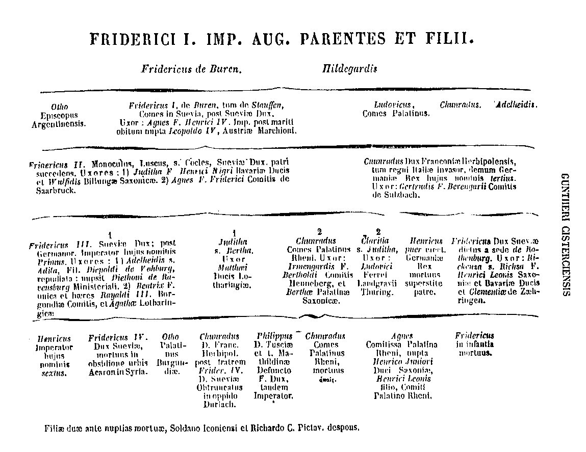

212
PATROLOGIAE CURSUS COMPLETUS
SIVE BIBLIOTHECA UNIVERSALIS, INTEGRA, UNIFORMIS, COMMODA, OECONOMICA, OMNIUM SS. PATRUM, DOCTORUM SCRIPTORUMQUE ECCLESIASTICORUM QUI AB AEVO APOSTOLICO AD INNOCENTII III TEMPORA FLORUERUNT; RECUSIO CHRONOLOGICA OMNIUM QUAE EXSTITERE MONUMENTORUM CATHOLICAE TRADITIONIS PER DUODECIM PRIORA ECCLESIAE SAECULA, JUXTA EDITIONES ACCURATISSIMAS, INTER SE CUMQUE NONNULLIS CODICIBUS MANUSCRIPTIS COLLATAS, PERQUAM DILIGENTER CASTIGATA; DISSERTATIONIBUS, COMMENTARIIS LECTIONIBUSQUE VARIANTIBUS CONTINENTER ILLUSTRATA; OMNIBUS OPERIBUS POST AMPLISSIMAS EDITIONES QUAE TRIBUS NOVISSIMIS SAECULIS DEBENTUR ABSOLUTAS DETECTIS, AUCTA; INDICIBUS PARTICULARIBUS ANALYTICIS, SINGULOS SIVE TOMOS, SIVE AUCTORES ALICUJUS MOMENTI SUBSEQUENTIBUS, DONATA; CAPITULIS INTRA IPSUM TEXTUM RITE DISPOSITIS, NECNON ET TITULIS SINGULARUM PAGINARUM MARGINEM SUPERIOREM DISTINGUENTIBUS SUBJECTAMQUE MATERIAM SIGNIFICANTIBUS, ADORNATA; OPERIBUS CUM DUBIIS, TUM APOCRYPHIS, ALIQUA VERO AUCTORITATE IN ORDINE AD TRADITIONEM ECCLESIASTICAM POLLENTIBUS, AMPLIFICATA; INNUMERABILIBUS INDICIBUS LOCUPLETATA; SED, PRAESERTIM DUOBUS IMMENSIS ET GENERALIBUS, ALTERO SCILICET RERUM, QUO CONSULTO, QUIDQUID NON SOLUM TALIS TALISVE PATER, VERUM AUTEM UNUSQUISQUE PATRUM, ABSQUE ULLA EXCEPTIONE, IN QUODLIBET THEMA SCRIPSERIT, UNO INTUITU CONSPICIATUR; ALTERO SCRIPTURAE SACRAE, EX QUO LECTORI COMPERIRE SIT OBVIUM QUINAM PATRES ET IN QUIBUS OPERUM SUORUM LOCIS SINGULOS SINGULORUM LIBRORUM SCRIPTURAE VERSUS, A PRIMO GENESEOS USQUE AD NOVISSIMUM APOCALYPSIS, COMMENTATI SINT. EDITIO ACCURATISSIMA, CAETERISQUE OMNIBUS FACILE ANTEPONENDA, SI PERPENDANTUR: CHARACTERUM NITIDITAS, CHARTAE QUALITAS, INTEGRITAS TEXTUS, PERFECTO CORRECTIONIS, OPERUM RECUSORUM TUM VARIETAS TUM NUMERUS, FORMA VOLUMINUM PERQUAM COMMODA SIBIQUE IN TOTO OPERIS DECURSU CONSTANTER SIMILIS, PRETII EXIGUITAS, PRAESERTIMQUE ISTA COLLECTIO, UNA, METHODICA ET CHRONOLOGICA, SEXCENTORUM FRAGMENTORUM OPUSCULORUMQUE HACTENUS HIC ILLIC SPARSORUM, PRIMUM AUTEM IN NOSTRA BIBLIOTHECA, EX OPERIBUS AD OMNES AETATES, LOCOS, LINGUAS FORMASQUE PERTINENTIBUS, COADUNATORUM.
SERIES SECUNDA,
IN QUA PRODEUNT PATRES, DOCTORES SCRIPTORESQUE ECCLESIAE LATINAE A GREGORIO MAGNO AD INNOCENTIUM III. ACCURANTE J.-P. MIGNE, BIBLIOTHECAE CLERI UNIVERSAE, SIVE CURSUUM COMPLETORUM IN SINGULOS SCIENTIAE ECCLESIASTICAE RAMOS EDITORE. PATROLOGIA, AD INSTAR IPSIUS ECCLESIAE, DUOBUS PARTIBUS CONSTAT SIMUL ET DIVIDITUR, ALIA NEMPE LATINA, ALIA GRAECA. LATINA, PENITUS EXARATA, OCTODECIM ET DUCENTIS VOLUMINIBUS EST VALIDA ET IMMENSA, NONAGINTAQUE ET MILLE FRANCIS VENIT. GRAECA SUBDIVIDITUR, ET DUPLICI EDITIONE TYPIS MANDATA EST. PRIOR GRAECUM TEXTUM, UNA CUM VERSIONE LATINA LATERALI AMPLECTITUR, ET FORSAN CENTUM VOLUMINUM EXCEDET NUMERUM. POSTERIOR AUTEM HANCCE VERSIONEM TANTUM EXHIBET, IDEOQUE INTRA QUINQUAGINTA CIRCITER VOLUMINA RETINEBITUR. UNUMQUODQUE VOLUMEN GRAECO-LATINUM OCTO, UNUMQUODQUE MERE LATINUM QUINQUE FRANCIS EMITUR.
PATROLOGIAE TOMUS CCXII.
1855
SAECULUM XII.
FRIGIDI MONTIS MONACHI, NECNON
OPERA OMNIA.
ACCEDUNT
ET
SCRIPTA VEL SCRIPTORUM FRAGMENTA,
ACCURANTE J.-P. MIGNE, BIBLIOTHECAE CLERI UNIVERSAE SIVE CURSUUM COMPLETORUM IN SINGULOS SCIENTIAE ECCLESIASTICAE RAMOS EDITORE.
TOMUS UNICUS.
VENIT 7 FRANCIS GALLICIS
1855
Fragmenta ex Aurora variis in locis obiter inserta.
Col.
18
Synodicae Constitutiones.
57
Statuta et donationes piae.
69
De oratione, jejunio et eleemosyna, libri XIII.
97
Historia captae a Latinis Constantinopoleos.
221
Ligurinus, sive de rebus gestis Friderici Aenobarbi.
255
Sermones.
481
Helinandi Flores a Vincentio Bellovacensi collecti. — De cognitione sui.
721
De bono regimine principis.
735
Epistola Gualterum, sive Liber de reparatione lapsi.
745
Passio SS. Jereonis, Victoris, Cassii et Florentii, Thebaeorum martyrum.
759
Chronicon.
771
Carmen de morte (Fragmenta).
1081
Notitia in Petrum de Riga
[Col. 0009A] Petrus de Riga, canonicus et cantor primum Beatae Mariae Remensis, deinde canonicus regularis ord. divi Augustini in abbatia Sancti Dionysii Remensis, natione Gallus, patria Vindocinensis, florebat, ut vult Carolus Dufrenius du Cange in Indice Auctorum quem praemisit Glossario mediae et infimae Latinitatis, columna 138, ab anno 1160; anno autem 1170, ut vult Guillelmus Cavus in Historia scriptorum ecclesiasticorum, ad 1170, pag. 682; quem inter doctores sui temporis doctissimum vocat Joannes Trithemius. Cum floreret ille eodem tempore quo Petrus canonicus et cantor Beatae Mariae Parisiensis, inde factum est ut saepe confundantur tam in titulis mss. codicum quam etiam in assignandis operibus. Scripsit carmine vario Auroram [Col. 0009B] vel Bibliothecam inscriptum opus, quo plurimos sacrae Scripturae libros exponit carmine prorsus pro saeculo insigni, quod ms. in multis Galliarum, Angliae atque Germaniae, bibliothecis reperitur. Hujus quindecim mss. codd. in bibliotheca Galliarum regia, nempe 4139, 4140, 4141, 4142, 4143, 4144, 4145, 4146, 4392, 4393, 4394, 4395, 4396, 4397, 4398; duo mss. codices in bibliotheca Sancti Germani Parisiensis, ordinis divi Benedicti, plures in Colbertina et Victorina; idem ms. in bibliothecis Praemonstrati, Bonifontis Cisterciensis, et Bellaevallis Praemonstratensi ordinis bis, in episcopatu Remensi; in bibliotheca Fratrum Praedicatorum Lugdunensium. Ac nullus auctorum qui tantum et tam frequenter transcriptus sit, quamvis [Col. 0010A] opus vere egregium impressum non sit. Ecloga Thomae James quam Oxonio-Cantabrigiensem appellat, recenset exemplaria quatuor hujus Aurorae mss. libro II, pag. 53: Oxonii, in bibliotheca Magdalenae, cod. 3; Cantabrigiae, in bibliotheca collegii Sancti Benedicti, codd. 43, 371 et 395. Hujus Petri Auroram ad varios mss. codices collatam, olim editioni paratam habui [Col. 0009B] Editionem Aurorae molitis Caspari Barthio, Christiano Daumio, Andreae Rivino et Casimiro [Col. 0010B] Oudino fata intercessere. FABRIC. Biblioth. med. et inf. Lat., t. V, pag. 277. . Nullus sane qui tanto successu Scripturam carmine reddiderit. Ejusdem Tropi et phrases Scripturae mss. in citato collegio S. Benedicti Cantabrigiensis, cod. 395. Idem inscriptum De tropis theologicis, ms. in bibliotheca Sancti Victoris Parisiensis, littera GG. 13 et littera E. 17. Item inscriptum Summa de tropis loquendi, ms. ibidem, littera PP. 10, et B. 6. Incipit: Videmus [Col. 0010B] nunc per speculum et in aenigmate, etc.; sed spectat hoc opus ad Petrum Cantorem Parisiensem, librariis et exscriptoribus saepe Petrum Cantorem Parisiensem cum Petro de Riga, cantore Remensis Ecclesiae, perperam confundentibus. Ambrosius de Altamura in Bibliotheca Dominicana, ad annum 1263, pag. 19, hunc Petrum Remensem absque auctoritate et ratione suis ordinis Praedicatorum Fratribus assignavit, eam forsitan ob causam quod ms. Aurora hujus Petri in bibliothecis quibusdam Fratrum Praedicatorum conventualibus inveniatur. At mortuus erat Petrus de Riga ante ordinem Dominicanorum natum, quem alii fere omnes claruisse circa annum 1160, alii circa 1170 ut Cavus asserunt qui parce admodum ac disjecte de Petro Rigano [Col. 0011A] locutus est. Haec ego tantum in primo hujus operis molimine, sed latius de Aurora petri Rigae loqui operae pretium duximus, editione ista altera quae ad compendium non cogit. Aurorae totius carmine expressae vario, Prologus prosaicus incipit: Frequens sodalium meorum petitio, cum quibus conversando flores meae infantiae exegi, ut librum, etc. Ordo Aurorae talis est qualem depingit Antonius Possevinus in Apparatu sacro, tomo II, fol. 265, verbo Petrus de Riga.
In Genesim incipiunt carmina.
Incipit Exodus.
Incipit Leviticus.
Incipiunt Numeri, seu liber Numerorum.
Incipit Deuteronomium.
Incipit liber Josue.
[Col. 0011C] Incipit liber Judicum.
Incipit liber Ruth.
Incipit in libros Regum.
Incipit in Canticum canticorum.
Incipit in librum Tobiae.
[Col. 0011D] Incipit in librum Danielis.
Incipit liber Judith.
Incipit liber Esther.
Incipit prologus Machabaeorum.
Incipiunt recapitulationes Veteris Testamenti. Et primo agitur per versus sine A.
Tum sequuntur aliae sine littera B, aliae sine C, aliae sine D, et sic consequenter cum exclusione omnium litterarum alphabeti. Opus quidem ingeniosum et laboriosissimum, sed cujus carmen haud ita purum tersumque esse potuit.
Incipit prologus in Novum Testamentum.
Incipit prologus super Actus apostolorum.
Incipiunt Actus apostolorum versibus Leoninis hexametris.
Haec autem duo ultima poemata in Actus apostolorum falso Lucas Wadingus Alexandro de Villa Dei, Minoritae, attribuit, cum illa sint pars hujus Aurorae Petri de Riga, qui multis annis Alexandrum de Villa Dei praecedit.
Auctor Magni Chronici Belgici ait eum obiisse Remis anno 1209, atque fuisse canonicum regularem ordinis divi Augustini in abbatia Sancti Dionysii Remensis, et Bibliothecam cognominatum. Vulgo tamen in mss. codicibus clericus aut cantor aut presbyter Remensis appellatur, qui patria Vindocinensis erat. Ita hic auctor, sed fuisse illum canonicum regularem, argumentum decretorium est [Col. 0012C] auctoritas Aegidii Parisiensis poetae, qui aliquanto post mortem Petri de Riga, correxit Auroram ejus, cui contemporaneum illum fuisse, eumque olim familiarem habuisse et amicum, satis probabile est. Hic itaque Aegidius, qui circa annum 1210 vel 1220, imo et an. 1200, ut postea dicemus, scribebat, in prologo quem ad Auroram a se correctam praemisit, incipiente fraternae charitatis quasi quamdam sapit dulcedinem, etc., expresse Petrum de Riga fuisse canonicum regularem S. Dionysii Remensis, his verbis ait: Dicimus imprimis quod quidam canonicus regularis Sancti Dionysii Remensis, Petrus nomine, Riga cognomine, juxta illud,
Haec nos ex ms. codice Sancti Victoris Parisiensis, [Col. 0012D] littera KKK. 27, fol. 62, ubi dicta Aurora Petri Rigae cum commentariis et correctionibus Aegidii Parisiensis. Initio autem operis hujus praemittitur hic in fronte versiculus.
Incipit hic Rigae bibliotheca Petri.
Opus vero istud utpote sacrum, proponit legendum scholaribus, in locum profanorum auctorum.
Et in fine operis rogat corrector operis magistros Parisienses et Aurelianenses ut illud suis discipulis praelegant.
Quae tibi dat tellus metra Vindocinensis alumna, Praelege Parisius, Aurelianis habe.
Et paulo ante ad librum et ad versus suos sic ait:
Viderat Caesar Egassius Bullaeus, ut refert saeculo IV Historiae Universitatis Parisiensis, fol. 768, in catalogo illustrium Academicorum, mss. codices duos hujus auctoris apud M. Jacobum Mentellum doctorem medicum, manu alicujus magistri glossis et scholiis illustratos, sicut et vidimus unum supra dictum in bibliotheca S. Victoris Parisiensis, alterum in bibliotheca Praemonstrati, et apud Bellam-Vallem alios duos, quae in archiepiscopatu Remensi [Col. 0014A] est. At opinor hos versus Auroram in scholis commendantes, non spectare ad Petrum de Riga, sed ad commentatores, eo quod in pluribus Aurorae mss. codicibus et antiquioribus non compareant, ut ipsi vidimus. In ms. Bellae Vallis post Auroram subjiciuntur sequentia, quae desunt in antiquiori ms. Bonifontis ordinis Cisterciensis in Thierascia.
Oratio Petri Rigae, qui librum composuit.
His te, Petre, tui, etc. Vide infra ad calcem fragmentorum.
Item oratio cujusdam, qui diruta redintegravit.
Me simul in serie, etc. Vide ibid.
Notitia altera in Petrum de Riga
[Col. 0013B] Petrus de Riga, Anglicus [Col. 0013C] V. Inscriptionem codicis ms. in Catalogis mss. Angliae et Hiberniae, t. I, p. II, p. 120, n. 1068, 4, I. , magister [Col. 0013C] V. l. c. et Thom. Smithi Catalogum bibliothecae Cottonianae, p. 113, Vespasianus D. V. I. , Remensis Ecclesiae clericus [Col. 0013C] V. Henricus Gandav. De S. E., cap. 22. , vel canonicus Ecclesiae quae vulgo dicitur S. Dionysii de Besturne [Col. 0013C] V. Catalogos, l. c. . Unde et nomen ejus in codice quodam ms. hoc offendi: PETRUS DE REMES. Siquidem is fuerit Petrus, quem vixisse memorat Aegidius Parisiensis tempore Coelestini III papae, qui sedi Romanae praefuit ab a. 1191 ad a. 1198 vel ad finem saeculi XII, vel ad ipsum saeculi XIII initium erit referendus. Ita vero dictus Aegidius [Col. 0013C] In Karolino. V. Franc. Duchesnii Histor. Francor. Script., tom. V, p. 323. :
Quem intepuisse dolemus Petrum in divinis verbotenus alta sequentem.
Aegidius, nisi fallor, respicit Petri senectutem et Auroram. Non itaque a vero aberrare puto auctorem catalogi librorum manuscriptorum collegii Corporis Christi in Oxonia, qui Petrum a. 1170 claruisse vult [Col. 0013C] V. Catalogos l. c., p. 53, n. 1655, 188. . Gv. etiam Caveus [Col. 0013C] De S. E., p. m. 592. eum an. 1170 vel paulo post floruisse observat. Aliis diem obiisse creditur circa a. 1263 [Col. 0013C] V. Ambrosium de Altamura biblioth. Dominicanae, [Col. 0014C] p. 19, apud Jo. Alb. Fabricium not. n. ad Trithemium De S. E., n. 388. .
[Col. 0013C] Scripsit I. Heptateuchum, duos libros Regum, Evangelia etiam metrice, non solum historicum sensum, sed etiam allegoricum, in quantum potuit, breviter exprimens, narrante Henrico Gandavensi [Col. 0014C] De S. E., cap. 22. , quem sequitur G. Caveus [Col. 0014C] Hist. lib. script. eccles., ed. 1688, p. 682. . Pleniorem operis notitiam praebet Joann. Trithemius [Col. 0014C] De scriptor. eccles., n. 388. , qui ita: «Scripsit Petrus opus metricum insigne super Bibliam, quod Auroram praenotavit, ut sequitur: In Genesim lib. I, Init.: Initium mundi quales. In Exodum lib. I, Init.: Haec duodena patrum. In Leviticum lib. I. In.: Vox autem Domini Moysen. In Numeros lib. I: Alloquitur Moysen Deus. In Deuteronomium lib. I: Haec sunt verba Dei. In Josue lib. I: Post Moysen Josue. In Judicum lib. I: Peccat. Hebraeus ait. In Ruth lib. I: Ad Ruth festinat pe. In Regum lib. III: Monte manens Estra. In Cantica [Col. 0014B] canticorum lib. I: Solus Origenes cum do. In quartum Regum lib. I: Regnavit Salomon. In Danielem lib. I: Postquam subjectos sibi. In Tobiam lib. I: Qui legis historiam. In Job lib. II: Librum Job Moysi quidam. In librum Judith lib. I: Eustochio Paulaeque. In librum Hester lib. I: Usque sub Aethiopes quae. In libros Machabaeorum l. I: Magnus Alexander. In Evangelicam historiam lib. I: Claruit Herode jus re. In Actus apostolorum lib. I: Tiberii nonodecimo. Recapitulationum lib. I: Haec de lege nova et vet.
In codicibus manuscriptis quibus sum usus, inscribitur liber memoratus Aurora, item Bibliotheca. Inde factum forte ut auctor quidam haberetur Petrus de Aurora, qui super Biblia metrice scripserit [Col. 0014C] V. Catalagos mss. Angliae et Hiberniae, t. I, p. II, p. 12, n. 476, 8, et in Indice. .
Continere Auroram paraphrasin Testamenti Vet. et Novi, usque ad Epistolam ad Romanos inclusive perperam tradit catalogus bibliothecae Bodleianae ex dono Thomae Bodleii [Col. 0014C] V. Catalogos cit. part. I, pag. 145, n. 2702, 103. . Totam historiam Biblicam [Col. 0014C] a Genesi ad Apocalypsin in Aurora enarrari non minus falso perhibet catalogus librorum manuscriptorum collegii Universitatis in Oxonia [Col. 0014C] V. Catalogos cit. p. II, p. 5, n. 143, 4. .
Versus numerantur in Aurora 15,056 [Col. 0014C] V. l. c. .
Non solum Petrum nostrum agnoscit auctorem Aurora, sed interpolatorem insuper Aegidium quemdam, quod sequentia, quae in Guelpherbytano codice ms. leguntur, declarant: Scire cupis, lector, quis codicis istius auctor. Petrus Riga vocor cui Christus petra rigat cor, prologus illius, qui hunc librum correxit et suppletiones de suo apposuit, et ubicunque invenitur obelus inter duos punctos per totum librum ibi sunt dicta et versus illius. Et paulo post in eodem ms. haec adduntur:
Hinc Petri de Riga Aurora ab Aegidio Parisiensi aucta et emendata, adducitur ab Henrico Langhtono in catalogo librorum manuscriptorum collegii [Col. 0015B] S. Trinitatis apud Cantabrigiam [Col. 0015C] N. 35, v. Catalogos mss. Angliae et Hiberniae, t. I, p. III, p. 96, n. 290. . Dici debebat: Petri et Aegidii; non: Petri Aegidii liber, qui dicitur Aurora, in Catalogo codicum quos G. Laudus donavit bibliothecae Bodleianae [Col. 0015C] D. n. 94. V. Catalogos cit. p. I, pag. 60, n. 761. .
Non Petrum de Riga, sed Petrum Comestorem auctorem Aurorae facit Chronicon quoddam ms. in codicibus mss. Thomae Bodleii [Col. 0015C] N. 14. Tr. 10, v. Catalogos l. c., pag. 100, n. 1979. , forte praenominis paritate deceptum.
Gaudent libri Scripturae ab auctore translati carmine elegiaco, exceptis Cantico cant corum, Lamentationibus Jeremiae, libri Jobi, et Actibus apostolorum, qui carmine hexametro, eoque rhtyhmico, scripti sunt. Non ergo satis accurate dicitur Auroram gaudere versibus hexametris et pentametris, in catalogo librorum manuscriptorum bibliothecae Bodleianae ex dono Thomae Bodleii [Col. 0015C] N. 103. V. Catalogos l. c., p. 145, n. 2702. aut versu elegiaco [Col. 0015C] V. Catalogos cit., p. III, p. 96, n. 287, 32. , aut versu heroico [Col. 0015C] V. l. c., n. 290, 35. .
Exstat Compendium Aurorae ipso Petro auctore [Col. 0015C] V. l. c., p. 133, n. 1319, 43. ; et Epitome libri Petri de Riga qui inscribitur Aurora [Col. 0015C] V. Thomae Smithi Catalogum bibliothecae Cottonianae, p. 130. Titus D. XX, 10. . Recapitulationem inferius memorandam [Col. 0015C] hic indicari existimo.
Typis edita nondum est integra Aurora, quam ad varios collatam manuscriptos codices se editioni paratam habuisse testatus est Casim. Oudin [Col. 0016C] Supplem., p. 475, apud Gv. Caveum De S. E., p. m. 592. .
Estherae liber evulgatus est a Casp. Barthio [Col. 0016C] Adversar., lib. XXXI, cap. 15. — Diversitates lectionum quas hic ex codd. Helmstad. affert Leyser adhibuimus in textu Barthii emendando. EDIT. .
Bina disticha de Ruben ex Aurora deprompta inseruit Thomas Rubdorne Historiae majori Wintotoniensi [Col. 0016C] L. III, c. 3, in Anglia sacra, ed. Londin., 1691, p. 204. .
[Col. 0016A] Distichon quoddam de Aoth ex Aurora sumptum habet idem Rudborne [Col. 0016C] L. c. .
Duo disticha de Juda Machabaeo ex eadem Aurora decerpta sistit idem [Col. 0016C] L. c., c. 7, p. 209. ,
Integram Auroram edere nunc nolumus, sed specimina solum ex ea aliqua. Tres inprimis codices manuscriptos consuluimus, duos Helmstadienses unumque Guelpherbytanum.
Praemitto ordinem librorum V. et N. T. quem servant codices Helmstadienses. In primo haec series observatur: Genesis, Exodus, Leviticus, Numeri, Deuteronomion, liber Josue, Judicum, Ruth, Regum primus, secundus, tertius, Cantica canticorum, Regum quartus, Lamentatio Jeremiae, Daniel, Job, Tobiae liber, Esther, Judith, Machabaeorum, Evangelium Lucae, Marci, Actus apostolorum. Codex alter Helmstadiensis hoc ordine procedit: Pentateuchus, libri Josue, Judicum, Ruth, Regum, Tobiae, [Col. 0016B] Danielis, Judith, Esther, Machabaeorum, Job, Lucas, Marcus, Actus apostolorum, Cantica canticorum, Lamentationes Jeremiae.
Observatu curiosum est finitis Actibus legi in codice posteriori: Explicit Vetus et Novum Testamentum. Incipit prologus super Cantica canticorum. Videturque auctor eum librum canonici vulgari non vindicasse.
Speciminum loco dabo.
I. Prologum ex codicibus priori Helmstadiensi et Guelpherbytano mss.
2. Subnectitur in codice priori Helmstadiensi ms. Aurorae Recapitulatio utriusque Testamenti, quae in altero posita inter Machabaeorum et Jobi libros. Similis ea est Fulgentii libro absque litteris. Textum ipsum ex binis codicibus Helmstadiensibus dabimus.
3. Singularia quaedam ex Petri de Riga Aurora [Col. 0016C] excerpta, quae a textu in primis Scripturae S. abludere videntur, eaque historica, notabimus.
II. Petri de Riga Speculum Ecclesiae carmine exstat manuscriptum in bibliotheca Caroli Theyeri n. 288 [Col. 0016C] V. Catalogos mss. Angliae et Hiberniae, t. II, vol. I, p. 202, n. 6658. .
III. Exstant et Carmina Petri de Riga manuscripta in bibliotheca Bodleiana ex donatione Keneldi Digbaci, n. 104 [Col. 0016C] V. Catalogos cit., t. I, p. I, p. 82, n. 1705. .
Notitia in Aegidum Parisiensem
[Col. 0015D] Aegidius Parisiensis, gradu seu conditione diaconus, artes liberales atque grammaticam praesertim [Col. 0016D] Parisiis diu professus est, arteque poetica praesertim excelluit, qui inter primarios sui temporis poetas [Col. 0017A] recensetur a Guillelmo Britone, in fine suae Philippidos.
Hic Aegidius anno circiter isto 1200 scripsit Instructionem puerilem in quinque libros digestam, quam Ludovico Philippi Augusti filio adhuc parvulo dedicavit, qua eum ad amorem virtutis exemplo Caroli Magni adhortatur: unde opus istud Carolinum inscripsit. Habetur ms. in insigni bibliotheca Colbertina, [Col. 0017B] codice 4507, cui titulus litteris minio exaratis: Incipit Carolinus [Col. 0017C] Prodiit Carolini liber quintus, sed mutilus, inter Scriptores Chesnii, tom. V; integrior postea in Recueil des historiens de France, tom. XVII. EDIT. Aegidii scriptus ad instructionem illustris pueri Ludovici Franciae regis filii. Alium operis hujus ms. codicem habuit Parisiis Jacobus Mentelius, quem transcripsit Marquardus Gudius manu sua, dum Parisiis haereret, ut constat ex catalogo bibliothecae dicti Gudii, qui a. 1706, in-4 o , Kiloni impressus est apud Bartholdum Reutherum. Illic enim inter mss. codd. 334, in-4 o , pag. 572, dicti catalogi. Prologus aliquot carminum.
Interpolavit quoque et emendavit Auroram (ita dictum opus Petri de Riga) scholarum pulpita jam occupantem, meliorique ordine disposuit. Habetur haec Aurora Petri Rigae cum commentariis M. Aegidii Parisiensis, ms. in bibliotheca S. Victoris ad [Col. 0018B] muros Parisiensis littera KKK. 27, fol. 62. Prologus Aegidii qui Auroram correxit, incipit: Fraternae charitatis quasi quamdam sapit dulcedinem, et in Domino jacit quis cogitatum suum, etc. Haec autem leguntur in praefatione codicis ms. Paulinae bibliothecae Lipsiensium.
Scire cupis, Lector, et caetera, quae jam supra leguntur apud Leyserum.
[Haec inter alia Aurorae adjecit Aegidius: 1 o Praefationem metricam, ad Odonem Parisiensem episcopum, quam ex codice Helmstad. exhibet Leyser, p. 737; 2 o Epilogum. Excipit Epilogum narratio quaedam quae quidam Aegidii nomen non praefert, ei tamen non incommode adjudicatur. Eam edidit [Col. 0018C] laudatus Leyserus, p. 740.
Adnectitur et Aurorae ejusdem Aegidii tractatus De poena infernali metricus, ibid., p. 742.
Mysterium de agno paschali per Mag. Aegidium, velut singulare scriptum adducitur inter codices mss. quos G. Laudus donavit bibliothecae Bodleianae, quod tamen non nisi excerptum quoddam ex Aurora esse videtur.]
Fragmenta ex Aurora
Frequens sodalium meorum petitio, cum quibus [Col. 0018D] conversando florem infantiae exegi, ut librum Geneseos stylo metrico depingerem, et inde aliquas Allegorias elicerem, instanter persuasit. Ad hanc [Col. 0019A] fateor suasionem animus meus in dubio pependit, incertus an scriberet an obmutesceret. Vires enim ingenii tanto operi minime sufficere considerabam. Sed alia de parte petitioni sodalium obviare formidabam. Neque enim fas erat offendere illos, cum quibus in scholis ab infantia conversatus sum, cum quibus grammaticae libros percurri, et Ciceronis aureos flores legi, et elegi, et Labyrinthium Aristotelis non filo Daedali sed Filio Dei duce introivi aliquantulum, inspexi, sed non penitus introivi. Assidua ergo sociorum prece vel potius fraterna charitate devictus, opus injunctum arripui, cogitans historiam Genesis versibus texere, studensque de ipsa aliquas allegorias elicere, tanquam nucleum de testa, granum de palea, mel de cera, ignem de [Col. 0019B] fumo, medullam de ordeo, vinum de azymo. In quo opere ita studui desudare, ut videas quadam consonantia sibimet concordare, s. Christi margaritam cum Moysi adamante, flores Ecclesiae cum herbis Synagogae, aurum Christianorum cum ferro Judaeorum, legem novam cum lege antiqua, molam cum mola, rotam cum rota. Porro visum est etiam huic libello juxta operis tenorem hoc nomen congruenter imponere: Aurora. Nec immerito. Sicut enim Aurora terminum nocti imponit; principiumque diei adesse testatur; sic et libellus iste tenebras umbrarum et veteris legis obscuritates discutiens veritatis fulgore et allegoriarum scintillulis micantibus totus refulgeat. Vel ideo certe tam clari [Col. 0019C] nominis majestate hanc paginam insignivi, quia sicut angelus, teste historia quam percurro, post luctamen nocturnum locutus est ad Jacob: Dimitte me, aurora est, sic et ego post luctamen et laborem, quem in hoc opere exercui, quodammodo libellum meum ejusdem verbo allocutus sum: Dimitte me, Aurora est, quasi dicatur, finem impono huic operi, quia figuras et umbras explicui, et veritatis fulgor patenter illuxit.
Cod. Helmstad. 1 addit:
Hic subjunguntur in utroque codice Helmstadiensi versus sequentes:
(Vide Patrologiae, t. CLXXI, col. 1287, inter Hildeberti Cenomanensis Carmina miscellanea.)
(Vide Patrologiae, tom. CLXXI, col. 1388, 1389, inter Hildeberti Carmina miscellanea.)
Explicit prologus.
INCIPIUNT RECAPITULATIONES UTRIUSQUE TESTAMENTI.
Oratio Petri Rigae qui librum composuit.
Versus
Versus de poenis inferni
Explicit de poenis infernalibus.
[Col. 0045] De libro Aegidii Parisiensis cui titulus: Carolinus, «scripto ad instructionem illustris pueri Ludovici, Francorum regis filii,» et nondum typis edito, vide Histoire littéraire de la France, tom. XVII (in-4 o , Paris 1832, Firmin Didot), p. 36.
Notitia
[Col. 0047A] Post decessum Mauritii episcopi, si Radulfo abbati Coggeshalensis monasterii in Chronico Anglicano fides [Col. 0047C] Ampliss. collect., tom. V, pag. 846. , ab universo clero et populo, rege annuente, episcopus electus est Petrus, cantor Ecclesiae Parisiensis, qui pontificatus honorem, ne ab altiori gradu gravior fieret casus, recusavit. Is autem omnium fere scriptorum illius aetatis litteris commendatus, natus est Parisiis, vel Remis ex Radulfo. Ad litteras ephebus mentem appulit, quas factus supra aetatem doctus, in Academia Parisiensi cum magna laude palam professus est; sed quod eximium ejus animi ornamentum fuit, antiquorum vindex morum, severiorisque disciplinae diligentissimus fuit exactor, quibus cum virtutibus praefulgeret, facile Parisiensis Ecclesiae praecentoris honorificentissimum [Col. 0047B] haec in Ecclesia munus consecutus est. Ad Tornacensem cathedram aliquando evocatus humiliter vocationem declinavit [Col. 0047C] Gall. Christ., tom. III, col. 214. . Denique post recusatum quoque Parisiensem episcopatum, auctore Radulfo, cum a Willelmo Remensi archiepiscopo cleroque et civibus rogatus, ut decaniam illius Ecclesiae susciperet, Parisios ut hanc a capitulo licentiam impetraret proficisceretur, ad Longum Pontem ordinis Cisterciensis monasterium appulit, ubi gravi infirmitate decumbens, habitum sanctae religionis suscepit, vitamque beato fine complevit, cujus corpus e loco in quo sepultum fuerat, ad structuram aedificiorum motum, suavissimum exhalavit odorem. Legitur ejus epitaphium in claustro monasterii Longi Pontis, in quo mors [Col. 0047C] ejus ad XIV Kalend. Junii, anno 1180, consignatur; sed recentius est epitaphium. Melius itaque Guillelmus Nangius, Vincentius Bellovacensis, Albericus, et monachus S. Mariani auctor horumce temporum, ad annum 1197 de Petri obitu loquuntur, seu etiam Radulfus ipsius mortem anno 1198 assignat, utpote cujus adhuc mentio est in charta Odonis anno 1197. In Necrologio Parisiensi [Col. 0048C] Hist. Eccles. Paris., t. II, pag. 214. de [Col. 0048A] eo legitur: VII Kal. Octobris obiit Petrus praecentor et diaconus, qui dedit nobis quadraginta libras ad emendos reditus. Varia composuit opera, quae in diversis bibliothecis adhuc mss. asservantur. Sola ejus Summa, quae dicitur Verbum abbreviatum, Montibus impressa fuit anno 1639. Quibusdam naevis aspersam ejus doctrinam fuisse volunt. Narrat Caesarius Petrum ejusque discipulos hunc in errorem impegisse, ut crederent panem in eucharistia consecratum non esse, nisi etiam vini accederet consecratio, et vice versa.
Petro tamen omisso, auctor est Petrus Blesensis (epist. 126) vacantem per obitum Mauritii Parisiensem cathedram ambiisse multos, inter quos senes nonnulli collecta a longo tempore ad emendum episcopatum [Col. 0048B] pecunia, sacram hanc dignitatem nundinari non erubuerunt, sed eorum artes elusit capitulum: elegerunt quippe virum minime cogitantem, nedum optantem, sed tam generis claritate quam nobilitate morum decoratum, Odonem de Soliaco: tres enim celeberrimas juxta ac nobilissimas totius orbis Christiani familias consanguinitate attingebat, Franciae scilicet et Angliae regum ac comitum Campaniae. Filius quippe Erchembaldi de Soliaco, ex Henrico Stephano Campaniae comite et Adela filia Guillelmi regis Angliae in recta linea descendebat, quorum filius alter Theobaldus Magnus Campaniensis genuerat Adelam, Ludovico VII Francorum regi nuptam. Fratrem quoque habuit Henricum Bituricensem archiepiscopum. Odonis vitam et mores [Col. 0048C] ante episcopatum graphice depinxit epistola citata Petrus Blesensis, qui quae ipse viderat, narrat, ex quibus pauca haec excerpsimus. Parisiis militiae scholaris tirocinia posuit Odo, at inter exercitia liberalium artium doctrina coelestis meliora ei charismata influebat, teste ejus paedagogo Petro de Verno, qui Petri Blesensis fuerat discipulus, eleemosynas condiebat lacrymis. Vix pubertatis annos [Col. 0049A] adeptus, Romam petiit, quo tempore Gregorius VIII successit Urbano, ubi vidit Petrus Blesensis honorem a papa ei exhiberi non multo inferiorem episcoporum reverentia. Cum vas suum in sanctificatione et honore ab infantia possedisset, insolentiam tamen carnis vigiliis, jejuniis et disciplinis domabat. Uberem reditum quem habebat in Anglia dispersit pauperibus, indeque tres scholares honestos ditavit. Talibus bonis operibus vacans, electus est unanimi Parisiensis capituli consensu, ut qui jam cantor in Ecclesia Bituricensi fructificari coeperat, Parisiis episcopus plus fructuum afferret. Haec pluribus explicat Petrus Blesensis, et in fine epistolae de genere regio Odonis, quo regum Galliae et Angliae consanguineus erat, quaedam subdit, quae fuse [Col. 0049B] explicat Petrus Gussanvillaeus in notis; neuter autem Odonem canonicum regularem, ut Victorini volunt, tradit. Porro electus vocatur Odo in litteris Amelinae, Calensis abbatissae, datis anno 1196, in quibus ipsum, decanum, cantorem Parisiensem et priorem S. Martini arbitros instituit controversiae quae Mauritii temporibus orta fuerat inter Ecclesiam Parisiensem et monasterium Calense super libertate et exemptione monasterii Calensis ab Ecclesia Parisiensi et jurisdictione episcopi et archidiaconi [Col. 0049D] Hist. Ecclesiae Paris., tom. II, pag. 214. . Seipse adhuc electum nuncupat Odo in sententia ab ipso et arbitris lata inter idem monasterium et archidiaconum, anno 1197 [Col. 0049D] Ibidem. . Hoc ipso anno, episcopatus primo, subscripsit chartae cessionis Petri de Donjon militis factae Ecclesiae Parisiensi [Col. 0049C] apud Jardum in curia reginae Francorum Adelae. Eodem Victorinis concessit annualia semipraebendarum Ecclesiae Parisiensis [Col. 0049D] Ibidem, pag. 292. . Dedicavit renovatam post incendium S. Petri Latiniacensis basilicam. Institutus anno 1198 ordo SS. Trinitatis, cujus fundatores Felix et Joannes ab Innocentio III ad Odonem Parisiensem episc. missi, cujus consiliis adjutus Joannes Regulam scripsit, quam nonnullis adjectis approbavit summus pontifex anno exeunte. Eodem per totam Galliam auctoritate apostolica publice praedicabat Fulco Parisiensis presbyter [Col. 0049D] Spicil., tom. IX, pag. 520. , cujus ad sermones innumeri confluebant populi totaque patria in melius mutata est.
Vigebat tunc temporis in Ecclesia Parisiensi [Col. 0049D] prava quaedam consuetudo, sive profana festivitas [Col. 0050D] Hist. Ecclesiae Paris., tom. II, pag. 216. , quam stulti ejus inventores festum fatuorum nominabant, quae in Kalendis Januariis celebrabatur, in qua innumerabiles abominationes et nefandae enormitates, ut ipse Odo loquitur, a laicis, et, horrendum dictu! ab ipsis clericis in ecclesia ad gradus altaris inter missarum solemnia et divinas laudes, turpiter et scandalose committebantur. Inoleverat jam diu inveterata illa consuetudo in multis Ecclesiis, contra quam acriter insurrexerant [Col. 0050A] Patres et concilia, nec tamen abolere potuerant. Hanc ergo nefandam festivitatem ab Ecclesia sua exstirpare cum suscepisset Odo, Petri sanctae sedis apostolicae legati auctoritate fretus, decretum edidit anno 1198 quo non solum abominabilem illam festivitatem prorsus interdixit, verum ipsius loco festum Circumcisionis Domini solemniter celebrari praecepit. Neque tamen his decretis profana illa festa, de quibus consule Cangii Glossarium ad vocem Kalendae, sublata sunt et antiquata, cum eorum nonnullis in Ecclesiis superiori fere saeculo superessent adhuc vestigia. Jus dixit eodem anno Odo pro canonicis Sancti Victoris, qui litigabant pro justitia domorum et terrarum suarum cum Guidone domino Villarisbelli. Discordantes quoque [Col. 0050B] monachos Compendienses et canonicos Sancti Clementis ejusdem urbis composuit cum Hugone abbate S. Dionysii et Petro de Corbolio. Anno 1199, episcopatus secundo, dedit ad hostisias et ad censum terram de Marna, ea lege ut homines ad curiam episcopi apud S. Clodoaldum venirent. S. quoque Stephani Ecclesiae Bituricensis patroni, in cujus gremio ab ineunte nutritus fuerat aetate, festum, in quo non minora patrabantur, quam in die Circumcisionis, magnis Ecclesiae solemnitatibus annumeravit, clericisque et canonicis tam pro festo sancti Stephani quam Circumcisionis de mensa episcopali stipendia assignavit anno eodem episcopatus tertio.
Bullam accepit ab Innocentio III, III Idus Novemb., [Col. 0050C] indictione secunda, pontificatus secundo, omnia privilegia episcopi ad normam decessorum suorum recensente et confirmante. Scripsit eidem summus pontifex epistolam quae est 4 libri I, ut qua valebat apud Philippum Augustum auctoritate et gratia eum sapientibus monitis induceret ad recipiendam Ingeburgem rejecta Agnete. Interdicti in regem Philippum et regnum hanc ob rem decreti observantissimus Odo e sede sua a militibus regis ejectus [Col. 0050D] Spicileg., tom. IX, p. 529. , pedes ire compulsus est, equis et manticis ac rebus suis omnibus spoliatus: at soluto postea interdicto, ob injuriam Odoni illatam rex illum exemit anno 1200, quandiu vixerit, ab omni exercitu et equitatione, quam regi ad bellum proficiscenti subministrare tenebantur episcopi.
[Col. 0050D] Circa id tempus cum Octaviani sedis apostolicae legati visendi causa ad domum Genovefanam venisset [Col. 0050D] Hist. Eccles. Paris., t. II, pag. 280. , ibique cum eo mensae accumbere vellet, ortus inde tumultus non sedatur, nisi datis ab Octaviano litteris, quibus significabat nullum propterea detrimentum libertati ecclesiae S. Genovefae accessurum. Eo quoque tempore moniales Campellae, utpote incorrigibiles, ad monasterium S. Farae tum sicuti est hodie reformatum traduxit Odo, harumque in locum duodecim canonicos saeculares [Col. 0051A] subrogavit. Bituricensis archiep. electioni accersitus a clero ejusdem Ecclesiae, unde ad pontificalem apicem assumptus fuerat, adfuit anno eodem, ubi electus ut quem vellet archiepiscopum diceret, Guillelmum Caroliloci abbatem elegit die 23 Novemb. Pontificatus ejus annus IV componitur cum anno Incarnationis 1200 in chartulario sancti Evurtii Aurelianensis. Donationem factam a Guidone de Levis fratribus de nemore Guidonis confirmavit, eosque a decimis liberos declaravit anno 1201, episcopatus quarto. Una cum Petro archiepiscopo Senonensi anno eodem ex pluribus variisque leprosorum domibus duas fecit, alteram Meloduni pro viris, alteram vero Corbolii pro mulieribus, ut honeste omnes viverent [Col. 0051D] Hist. Eccles. Paris., t. II, pag. 220. . Transegit [Col. 0051B] cum abbate S. Maglorii pro tonleio, cujus loco assignavit ei abbas 30 solidos. Thomas de Brueriis cessit ei post mortem jus omne quod habebat in capellam de Pleisseis. Ab Innocentio deputatus est X Kal. Junii, pontificatus quarto, cum abbate Latiniacensi, ut a clericis Resbacensibus obedientia et honor debitus Ansello Meldensi episcopo exhiberentur. Approbatam jam ab eodem pontifice prolem a Philippo ex Agnete susceptam, datis mense Januario litteris legitimam approbavit. Quae ab initio episcopatus Odonis magnis partium animis agitata fuerat [Col. 0051D] Petr. Bles., pag. 794 et 795. , exeunte anno eodem causa inter Odonem et Joannem abbatem S. Genovefae super possessione juris parochialis Sancti Stephani de Monte, [Col. 0051C] ad votum episcopi terminata fuit IX Kalendas Januarii [Col. 0051D] Hist. Eccles. Paris., tom. V, pag. 597. , Innocentii pontificis anno IV, cujus sententiam, qua interdictum in burgum S. Genovefae, institutioque et destitutio capellani de Monte episcopo interdicitur, caetera vero ad jus parochiale pertinentia confirmantur, Genovefanis significarunt delegati anno 1201, mense Martio. Insequenti, episcopus et abbas ne lites postea recrudescerent, compositionem fecerunt mense Junio [Col. 0051D] Hist. Eccles. Paris., tom. II, pag. 153. , qua jus omne parochiale penes episcopum stetit, cui cessit abbas capellam S. Genovefae de Ardentibus, praebendamque et vicariam in Ecclesia Parisiensi. Hanc compositionem summi pontificis nomine approbavit Helias abbas S. Columbae Senonensis [Col. 0051D] Ibidem, pag. 281. , mense Januario 1202, et ipse summus [Col. 0051D] pontifex VII Kalendas Aprilis, pontificatus VI. Hac autem facta compositione, Theobaldus canonicus S. Genovefae curam animarum parochiae de Monte suscepit ab Odone anno 1202, mense Junio, episcopatus quinto.
Fecit eodem anno Odo potestatem Victorino abbati amovendi ad libitum presbyteros e parochiis quas habent in dioecesi Parisiensi. Capellae in parochia [Col. 0052A] Sancti Saturnini de Campiniaco exstruendae assensum praebuit [Col. 0051D] Hist. Sancti Martini a Campis, p. 489. . Scripsit litteras anno 1202, episcopatus sexto, pro fundatione capellae de Renemolin, cujus capellanus debet esse frater de S. Trinitate, ad institutionem et destitutionem episcopi. Statuta condidit pro capella in domo eleemosynaria de Cruce reginae [Col. 0052D] Hist. Ecclesiae Paris., t. III, p. 73. . Eodem anno, episcopatus sexto, comitissae Trecensi concessit 120 libras Pruvinensis monetae, quas Th. quondam comes Blesensis dederat in feodum Erchembaldo quondam domino Soliaci, patri ipsius Odonis et Theobaldi nepoti, qui eas comiti Henrico consanguineo suo pro 550 libris Pruvinensis et Meldensis monetae obligaverat. Dissidium habuit Odo hoc anno cum capitulo S. Clodoaldi pro ecclesia quam aedificaverat [Col. 0052B] in loco nemoris de Marna, quod fecerat exstirpari, cujus terminandi causa, episcopi se arbitrio commiserunt canonici. Orta inter episcopos Parisiensem et Belvacensem de limitibus utriusque episcopatus in loco de Moinel contentio sopita est, limitibus distinctis metisque positis anno 1202, mense Novembri, in crastino S. Martini [Col. 0052D] Ibidem, t. II, pag. 221. . Dedit eodem anno chartam de furnis Adae de Monsterel canonici Parisiensis in Campellis [Col. 0052D] Hist. Sancti Martini a Campis, p. 198. . Insequenti, de mandato summi pontificis coemeterium pro leprosis de Villapetrosa benedicit, episcopatus sexto. Assignavit ecclesiae de Vanviis parochianos de Yssi sitos in terra S. Petri Latiniacensis in compensationem permutationis cum Genovefanis factae. Denarios 13 censuales apud S. Clodoaldum permutavit pro hostisia [Col. 0052C] Guillelmi de Moudon. Jussi Innocenti III visitavit mense Maio coenobium Sancti Medardi, ubi quaedam edidit statuta praesentibus Roberto Sancti Germani a Patris, Joanne Sanctae Genovefae abbatibus, aliisque multis. Monasterium quoque sancti Maglorii in nativitate sancti Joannis Baptistae visitavit, nonnullaque pro bono ejus regimine statuit. Ordinavit anno eodem collegia canonicorum suae dioecesis [Col. 0052D] Hist. Eccles. Paris., t. II, p. 221. , decretaque sancivit pro electione et residentia decani et cantoris S. Germani Antissiodorensis mense Octob. Idem statuit in ecclesiis S. Marcelli et S. Clodoaldi mense Jan. episcopatus septimo [Col. 0052D] Ibidem, p. 222. . Approbavit fundationem capellae de Cramoel an. 1203, epis. septimo, eodemque anno donatus ab Adamo [Col. 0052D] de Munsterolo canonico Parisiensi decimam de Espieriis et quatuor libras Parisienses pro quatuor perpetuis matriculariis sacerdotibus, quos cum tribus laicis Odo tam de suo quam de capituli patrimonio instituit anno 1204, episcopatus septimo, ut ecclesia interdiu noctuque ab ecclesiasticis viris contra praedones et irreligiosos custodiretur [Col. 0052D] Petr. Bles. p. 788. . Cessit eodem anno pro augendis matriculariorum reditibus [Col. 0053A] capitulo Parisiensi praebendam et vicariam, quam facta compositione ipsi contulerant Genovefani [Col. 0053D] Hist. Eccles. Paris. II p, 223. .
Multa etiam alia Ecclesiae Parisiensi bona contulit, quorum intuitu capitulum anniversarium ei assignavit [Col. 0053D] Petr. Bles. p. 792. , pro quo ipse 60 solidos Parisienses apud Brunellum largitus est, et clericis chori 40 libras Parisienses ad reditus rei gratia comparandos an. 1204, episcopatus octavo. Concessit eodem abbatiae Antonii Parisiensis easdem immunitates, quibus caeterae Cisterciensis ordinis abbatiae gaudent [Col. 0053D] Hist. Eccles. Paris., t. II, pag. 209. . Decimam de Soiseio pro 30 libris Parisiensibus emit anno 1204, mense Junio, a Guipone de Caprosia. Mense eodem donavit capellam S. Nicolai monialibus de Footel ad opus [Col. 0053B] infirmariae. Capellaniam a Guiberto fundatam, a se vero dotatam pro anniversario H. Bituricensis archiepiscopi fratris sui instituit in capella sua de S. Clodoaldo, episcopatus octavo. Approbavit eodem aliquot arpennos terrae presbyterio Gapellae prope Parisios faciendae concessos. Fundatam Sancti Honorati ecclesiam confirmavit [Col. 0053D] Ibidem, t. III, pag 76. . Fecit potestatem Guidoni de Caprosia exstruendae ecclesiae et dotandae in vico de Lois, et capellae in vico de Meencourt [Col. 0053D] Ibidem, t. II, p. 226. . Donatum excepit a Guillelmo de Firmitate feodum en Port-rois, ad instituendas ibi moniales [Col. 0053D] Ibidem, t. II, pag. 225. . Anno 1205, episcopatus octavo, canonicorum S. Marcelli residentiam ad rectam lineam ordinavit [Col. 0053D] Ibidem, p. 226. . Collegium quoque canonicorum de Campellis emendavit, cujus praebendas ad augendum [Col. 0053C] Dei servitium ex undecim viginti duas fecit [Col. 0053D] Ibidem, p. 228. , quod a summo pontifice statutum jam fuerat III Kal. Januarii, pontificatus VII. Emit decimam de Orceaco et de Maudestor a Burchardo de Orceaco [Col. 0053D] Ibidem, p. 230. . Guidoni Fossatensi abbati recognovit nullum praejudicium monasterio oriturum ob pontem quem in portu qui dicitur Olins fieri permittebat abbas. Gessit monachis de Diogilo jus parochiale vallis Derlandi anno 1203, qui vicissim episcopo cesserunt quod anno 1205, episcopatus nono, assignavit ecclesiae sanctae Genovefae, unum modium bladi infra festum Omnium Sanctorum in grangia eorum de Gonessa. Confirmavit anno eodem legata ecclesiis Parisiensibus a Malcione regis camerario [Col. 0053D] Ibidem, p. 295. . [Col. 0053D] Primus auctor monasterii Portus regii merito censendus est Odo [Col. 0054D] Hist. Ecclesiae Paris., p. 225. , quippe qui cum Mathilde de Garlanda uxore Matthaei de Marliaco e diversis donationibus praesertim a Monmorenciaca familia factis hoc fundavit coenobium pro virginibus, anno 1206, quod sicut et abbatiam Sancti Antonii eodem anno A. abbati Cisterciensi ordinanda tradidit [Col. 0054A] [Col. 0054D] Ibidem, t. II, p. 209. . In chartulario Calensi morticinii jus pro decimis de Pompona concessisse legitur mense Aprili. Ejus curis et opera ad metropolitanam Turonum sedem hoc anno evocatus est Gaufridus de Landa archidiaconus Parisiensis.
Tanta aquarum diluvies mense Decembri facta est, quanta nusquam visa aut audita Parisiis fuerat: Odo itaque solemnem ad B. Genovefam indixit supplicationem, cujus ad majorem basilicam delatis reliquiis imminutae sunt aquae. Mense eodem Matthaeus comes Bellimontis concessit Odoni locum in quo sanctus Dionysius carcere detentus ferebatur, qui dicebatur capella S. Catharinae, haud longe ab ecclesia S. Dionysii de Carcere situm, ea lege ut comes unum, Odo vero duos sacerdotes ibi instituerent, [Col. 0054B] quod concessit Odo, qui inibi capellam solemniorem erexit, quatuorque capellanos in ea servituros instituit anno 1207, mense Aug., episcopatus decimo [Col. 0054D] Petr. Bles., p. 792. ; atque haec sunt initia ecclesiae Sancti Symphoriani. Instituendus capellanus de Grousiaco committitur Odoni a Guillelmo de Garlanda mense Apr. Astitit mense Julio elevationi corporis S. Benedicti apud Floriacense monasterium. Ratam habuit mense Augusto aedificatam a Sangermanensibus capellam apud Choisiacum. Contentionem inter capitulum Sancti Germani Antissiodorensis et domum S. Trinitatis exortam mense eodem definiit [Col. 0054D] Hist. Eccles. Paris., t. III, p. 74. . Festum sancti Bernardi primi Clarevallensis abbatis in Ecclesia Parisiensi datis hanc in rem stipendiis celebrari primus instituit in [Col. 0054C] crastino S. Bartholomaei apostoli [Col. 0054D] Petr. Bles., p. 789. . Decimas omnium novalium tam faciendorum quam factorum aliis non assignatas in dioecesi Parisiensi capitulo concessit [Col. 0054D] Ibidem, p. 791. . Una cum Hugone decano aliisque a sede apostolica deputatis judicibus ratam habuit compositionem inter monachos Sancti Dionysii et moniales de Footel initam super prioratu de Argentolio VII Kalendas Septembris, eademque die terminata tandem est lis [Col. 0054D] Hist. Ecclesiae Paris., t. II, p. 72. quae inter episcopum Parisiensem et monachos S. Dionysii inerat pro monasterio Argentoliensi, quod ex judicum sententia remansit prioratus a S. Dionysio dependens, episcoporum vero et archidiaconorum jurisdictioni subjectus, cujus rei gratia abbas et monachi assignaverunt episcopo sex modios bladi apud Herblaium, [Col. 0054D] quorum unum ad mandatum 50 pauperum singulis annis faciendum assignavit capitulo Odo [Col. 0054D] Petr. Bles., p. 790; Hist. Ecclesiae Paris., t. II, p. 302. , qui cum maxime necessariam esse cancellarii Ecclesiae Parisiensis et academiae residentiam agnosceret, statutum super ea cum decano et capitulo Parisiensibus confecit anno eodem, quo et Remensi [Col. 0055A] archiepiscopo defuncto, alter archidiaconus ecclesiae Parisiensis Albericus, procurante imprimis Odone, suffectus est. Philippus rex anno 1207 Odoni indulsit, ut 60 tantum librae pro tallia ab hominibus Ecclesiae Parisiensis solverentur, quando regalia in manus regias devenirent, declaravitque ex summa 240 librarum, quae ultra praedictam post obitum Mauritii fuerat exacta, nullum deinceps episcopum vel Ecclesiam Parisiensem passuros detrimentum. Quaedam adhuc hoc anno ordinavit pro ecclesia S. Germani de Derenciaco [Col. 0055D] Hist. Sancti Martini a Campis, p. 297. , et probavit donationem factam Sangermanensibus apud Bulenvillers a Milone, filio Theobaldi Cocherelli. Denique vigilantia illa pastoralis, quam super universum gregem suum exhibuit, maxime elucet in egregiis illis statutis, [Col. 0055B] quae non solum ad suae dioeceseos informationem, verum etiam ad totius Ecclesiae utilitatem condidit duabus in synodis, quae pluribus ad fidem ms. codicis S. Victoris Parisiensis naevis expurgata, typis edita sunt auctoritate Francisci de Harlai, Parisiensis archiepiscopi, an. 1674.
Quanti autem pro eximia sapientia Odonem faceret, satis aperte ostendit summus pontifex Innocentius III, cum plurima magni momenti negotia ad ipsius arbitrium remisit; verbi gratia cum eum una cum Michaele de Corbolio canonico Parisiensi judicem fecit cujusdam controversiae, quae vertebatur inter Stephanum episcopum Tornacensem et Bernardum de Insula pro quadam praebenda ecclesiae Tornacensis ipsi Bernardo a Coelestino III concessa. [Col. 0055C] Hunc etiam arbitrum constituit idem Innocentius inter Lingonensem episcopum et capitulum ipsius libro I Epistolarum decretalium, cap. Cum olim. Eidem dirigit caput 5, ex parte de corpore vitiatis, ubi ait Michaelem presbyterum, qui leprae vitandae causa sibi virilia amputaverat, posse altari ministrare. Odoni adhuc committit inquisitionem et examen super vita et moribus electi Cameracensis eodem libro primo Decretalium. Epistola sic incipit: «Eam de discretione tua fiduciam obtinemus, ut si quando tibi committimus quae ad honorem divinum et utilitatem ecclesiasticam pertinere noscuntur, gratia et timore postpositis satagas promovere. In hac parte nobis coadjutor existens, qui [Col. 0055D] ex injunctae servitutis officio secundum prophetam debemus evellere et plantare quae in ecclesia Dei evellenda fuerint et plantanda.» Exstat tomo I Anecd., col. 669, epistola Adami abbatis Persenniae ad Odonem Parisiensem episcopum scripta, quae tota est de amore et humilitate. Sub finem gratias ei agit de charitate duabus pauperculis mulieribus tempore famis impensa. Legitur quoque tomo I Ampliss. Collect., col. 1014, A. monachi (ejusdem fortasse Adami) ad Odonem epistola, quem arguit quod suae dioecesis presbyteris tallias imposuerit, aliaque nonnulla ei insinuat et exprobrat.
Demum Odo postquam egregii et sancti pastoris partes implevisset per annos circiter undecim, aetate [Col. 0056A] adhuc matura, natus quippe annos 40 aut 42, sed laboribus fractus, viam universae carnis ingressus est III Idus Julii, anno 1208, et quia ecclesiae magna ex parte a decessore Mauritio constructae quasi coronidem posuerat, multaque bona contulerat, velut ipsius fundator et benefactor in meditullio chori primus episcoporum Parisiensium sepultus est sub aeneo sepulcro pontificis effigiem exhibente. cum his versibus circum inscriptis:
De eo Necrologium Parisiensis Ecclesiae: «III idus Julii de domo Sanctae Mariae obiit domnus Odo de Soliaco, episcopus Parisiensis, qui dedit nobis stationem panis, vini et carnium in festo Pentecostes reddendam; instituitque ut natale sancti Stephani deinceps solemne celebraretur in ecclesia tantum Parisiensi; et ut singuli clerici, qui in missa responsum vel alleluia in organo triplo vel quadruplo decantarent, sex denarios annuatim perciperent super praepositura Parisiensi. Dedit et clericis chori, non vero canonicis, qui in Circumcisione Domini nocturnis intererunt, tres denarios; [Col. 0056C] singulis autem pueris duos denarios in reditibus capitii percipiendos. Dedit insuper clericis matutinarum medietatem oblationum crucis, quae proveniunt sexta feria in Passione Domini. Instituit item quod festum beati Bernardi Claraevallensis deinceps celebretur in dimidium duplum in Ecclesia Parisiensi ad XIII. Kal. Septembris, et ad hoc assignavit decimam, quam emerat apud Buch. Praeterea dedit unum modium bladi annuatim percipiendum in decima, quam habuit de pace Sancti Dionysii, ad faciendum mandatum per manum succentoris, qui ministrabit necessaria in mandato, et si quod fuerit residuum, erit succentoris. Dedit et unum pallium, duas cappas, unam casulam cum dalmatica et tunica e samicio, et albam paratam cum [Col. 0056D] stola et manipulo parato et amictu, et missale ad servitium majoris altaris, et psalterium ad servitium chori, et bassamum cum crystallo, pallium paratum cum aurifrigio, librum ordinarium, sandalia et caligas et tapetum episcopale; insuper et imaginem beatae virginis octo marcharum argenti ad reponendum sacrum succintorium. Statutum est autem a capitulo, quod ejus anniversarium solemniter ad majus altare celebraretur canonicis chorum tenentibus. Concessit autem capitulum sacerdotem altari sancti Stephani deservientem, quicumque fuerit, in distributione canonicis parem esse.»
Praeclara quoque Odonis mentio est ad hunc [Col. 0057A] diem apud scriptores coaetaneos: in vetere Martyrologio dicitur benefactor singularis ecclesiae, cujus vigilantia solers in gregis custodia facile deprehenditur ex sanctissimis constitutionibus, aliisque praeceptis synodalibus de septem sacramentis. De eo chronicon Antissiodorense: «Odo Parisiensis episcopus obiit vir aemulator virtutis, et vitiorum egregius insectator, qui inter caetera bona quibus enituit, id habebat praecipuum, quod in beneficiis ecclesiasticis conferendis, non ad genus, non ad munus, non ad preces, sed ad mores scientiamque respiceret, nec nisi dignos ad dignitates ecclesiasticas promoveret: hinc est quod ejus studio Guillelmus ad Bituricensem, Gaufridus ad Turonensem, Albericus ad Remensem archiepiscopatum [Col. 0057B] promoti sunt, quorum prior Caroliloci abbas exstitit, alii duo Parisienses archidiaconi sibi invicem successerunt, viri insignes ac timentes Deum, [Col. 0058A] honestatisque ac justitiae praecipui sectatores. Ipso praeterea satagente ac suggerente actum est, ut dominus papa principes et populos per Gallias concitaret ad debellandam Albigensium haereticorum perfidiam.» Legendus Stephanus epistola 218, ubi celebratur Odo a nobilitate generis, honestate, auctoritate dignitatis est et prudentia. Exstant ad eum Petri Blesensis epistolae 160 et 227, praeter eam de qua in superioribus. Ex his autem omnibus liquido constat quam temere Rigordus libro De gestis Philippi Augusti, et sanctus Antonius tomo XVII, cap. 9, scripserint Odonem a Mauritio decessore suo moribus et vita longe dissimilem fuisse, cum ab omnibus sui aevi scriptoribus inter celeberrimos, sapientissimos ac piissimos sui temporis [Col. 0058B] antistites annumeretur. Quam bene hanc in rem observavit Antonius Pagi [Col. 0057B] Tom. IV, p. 715. , scriptores quandoque calamo abuti et falsa narrare!
Synodicae constitutiones
In principio synodi, antequam cantetur, Veni, creator Spiritus, quaeratur utrum praesentes sint abbates et sacerdotes qui tenentur synodo interesse. Et hoc facto incipiat episcopus alta voce, Veni creator; quo finito dicantur orationes, his precibus praecedentibus, Pater noster; Et ne nos, etc. Benedicamus Patrem, etc. Post partum, etc. Laetamini in Domino, etc. Fiat pax, etc. Dominus vobiscum, etc Oratio, Omnipotens sempiterne Deus, qui dedisti famulis tuis, etc. Actiones nostras, quaesumus, Domine, etc. Deus qui salutis aeternae, etc. Propitiare, quaesumus, Domine, nobis famulis tuis [Col. 0057D] per sanctorum tuorum, quorum corpora vel reliquiae in ecclesia praesenti requiescunt, merita gloriosa, ut eorum pia intercessione ab omnibus semper protegamur adversis. Infirmitatem nostram, quaesumus, Domine, respice, etc. Deus a quo sancta desideria, etc. Per Dominum, etc. Finitis orationibus residebunt, et legetur lectio; qua lecta fiet sermo.
1. Finito sermone, licentiabit episcopus laicos et scholares, et alios clericos qui non debebunt synodo interesse. Hoc facto, legantur praecepta synodi.
2. His expletis, dicantur capitula quae sunt addenda, et in fine districte praecipiatur ut serventur sacerdotibus. Deinde sequuntur preces pro necessitate locorum et personarum.
3. Districte praecipitur sacerdotibus ut jejuni intrent synodum; in jejunio enim debet fieri et oratione.
4. Districte praecipitur ut induti albis et stolis intrent sacerdotes synodum illam, quae celebratur tempore paschali; illam vero quae fit Septembri, [Col. 0058D] superpelliciis tantum et stolis.
5. Prohibetur sacerdotibus, ne causas adducant ad synodum, aut aliqua negotia quae non pertinent ad quosdam, et ne sibi tunc minuatur [Col. 0057D] Id est, venam aperiri faciat quispiam ad sanguinem eliciendum praetextu morbi, ut forte criminis [Col. 0058D] alicujus conscius absens synodo, contumaciae non damnetur. , cum debent synodo interesse, prohibetur.
6. Praecipitur districtius, ut omnes presbyteri, maxime curam animarum habentes, veniant ad synodum; [Col. 0059A] et si gravi infirmitate detenti, aut alia necessitate inevitabili, venire non potuerint, suum capellanum mittant, aut clericum, loco suo.
7. Praecipitur in eundo et redeundo a synodo honeste ambulent presbyteri, et honesta quaerant hospitia, ut in eis circumspecte se habeant, ne status clericorum vertatur in contemptum et opprobrium populo. Praecipimus in virtute Domini nostri et Dei, et obedientiae, ut honor maximus et reverentia debita singulis sacramentis sanctae Ecclesiae, praecipue a sacerdotibus et clericis, exhibeantur, et ut laici similiter exhibeant in quantum sacerdotes moneant eos et exhortentur.
1. Baptismus cum reverentia et honore celebretur, [Col. 0059B] et cum magna cautela, sub hac forma: N. ego baptizo te, in nomine Patris, et Filii, et Spiritus sancti. Et caveat maxime in distinctione verborum et in prolatione, in quibus tota virtus consistit sacramenti et salus puerorum. Et in Romano sub eadem forma doceant frequenter sacerdotes, laicos baptizare debere pueros in necessitate; et post inundationem ea faciant sacerdotes pueris quae solent fieri post immersionem.
2. Pro baptismo nihil omnino ante exigatur, sed post laudabilis consuetudo exigi potest.
3. Fontes sub sera clausi custodiantur propter sortilegia. Chrisma similiter et sacrum oleum sub clave servetur.
4. Semper sacerdos interroget laicum diligenter, [Col. 0059C] cum in necessitate baptizaverit puerum, quid dixerit et quid fecerit. Et si invenerit laicum discrete et modo debito baptizasse, et formam verborum in Romano integre protulisse, approbet factum: sin autem non, baptizet puerum modo debito. Et hic est modus: Petre, si es baptizatus, non te baptizo; si non es baptizatus, ego baptizo te, etc.
5. Ad elevandum parvum de fonte, tres ad plus recipiantur; quod enim amplius est, a malo est.
1. Sacerdotes frequenter moneant populum ad confirmationem puerorum.
[Col. 0059D] 2. Post baptismum debet suscipi sacramentum confirmationis.
3. Quod si confirmandus adultus fuerit, confiteatur prius, et postea confirmetur.
4. Saepe dicatur laicis ne exspectent diu ad confirmandum pueros adventum episcopi, sed ducant eos ad eum, nisi adesse audierint prope; et quod possent nomina mutari pueris, si velint, in confirmatione, aut si visum fuerit expedire.
5. Nullus sacerdos confirmare aut consecrare virgines praesumpserit; solius episcopi est confirmare, virgines consecrare, ecclesias dedicare, ordines dare.
1. Summa reverentia et honor maximus sacris altaribus exhibeatur, et maxime ubi sacrosanctum corpus Domini reservatur et missa celebratur.
2. Linteamina altaris et indumenta saepe abluantur, ad reverentiam et praesentiam Salvatoris nostri et totius curiae coelestis, quae cum eo praesens adest quoties missa celebratur.
3. Calices quibus infirmi communicantur decorentur, et mundi custodiantur, ut devotius communicent infirmi.
4. Ampullulae vini et aquae in ministerio altaris mundae et integrae habeantur; similiter ampullulae chrismatis et olei sancti.
[Col. 0060B] 5. Non permittant presbyteri diacones (comminatur episcopus eis qui hoc non servant) deferre infirmis sacrosanctum corpus Domini, nisi in necessitate, cum sacerdos absens fuerit; sed semper sacerdos cum magna reverentia et maturitate deferat in pixide eburnea bene clausa, propter casum, et cum lucerna praecedente, cantantes [Col. 0059] Sacerdotem intelligit cum comite clerico et aliis quotquot adeunt. septem psalmos poenitentiales cum litania pro infirmo, eundo et redeundo. Si longa via fuerit, addant quindecim psalmos et alias orationes: sic enim debitum persolvunt infirmo, et audientes invitant ad exhibendam Deo reverentiam et honorem et orationem.
6. Frequenter moneantur laici ut, ubicunque [Col. 0060C] viderint deferri corpus Domini, statim genua flectant tanquam Domino et Creatori suo, et junctis manibus, quoadusque transierit, orent.
7. In pulchriori parte altaris cum summa diligentia et honestate sub clave sacrosanctum corpus Domini custodiatur.
8. Nulli clerico permittatur servire altari male ornato [F. nisi more servato] in majori ecclesia, ut nisi in superpellicio aut cappa clausa.
9. Nullus bis in die missam audeat celebrare, aut cum duplici introitu, nisi in magna necessitate.
10. Nullus antequam matutinas dixerit canonicas, et Primam, praesumat absque aliqua necessitate [Col. 0060D] celebrare missam.
11. Ad horas beatae Virginis semper tertius versus dicatur, capitulo, ut observat H. S. Maria mater gratiae, et cantentur in ecclesia cum nota et devotione, vel in regendo an cavendo.
1. Sacerdotes circa confessionem maximam curam adhibeant et cautelam, scilicet ut diligenter peccata inquirant; usitata, sigillatim; inusitata, non nisi a longe per aliquam circumstantiam, sic tamen ut ex peccatis detur materia confitendi.
2. Ad audiendum confessiones communiorem [ al. eminentem] locum in ecclesia sibi eligant sacerdotes, [Col. 0061A] ut communiter ab omnibus videri possint; et in locis abditis, aut extra ecclesiam, nullus recipiat confessiones, nisi in magna necessitate vel infirmitate.
3. In confessione habeat sacerdos vultum humilem, et oculos ad terram, nec aspiciat vultum confitentis, maxime mulieris, causa debitae honestatis, et patienter audiat quae dixerit in spiritu lenitatis, et ei pro posse suo pluribus modis persuadeat ut confiteatur integre; aliter enim dicat ei nihil valere.
[Col. 0061B] 5. Sacerdotes majora reservent majoribus in confessionibus, sicut homicidia, sacrilegia, peccata contra naturam, incestum et stupra virginum, injectiones manuum in parentes, vota fracta, et hujusmodi.
6. Sunt tria in quibus nullus habet potestatem absolvendi, nisi dominus papa vel ejus vicarius, nisi in necessitate, scilicet in injectione manuum in clericos vel quosvis religiosos, in incendio, per quam sententiam sunt vocati Simoniaci; nihilominus tamen talium rei remittendi ad episcopum.
7. In dubiis semper confessor consulat episcopum aut sapientes viros, nisi ex necessitate; quorum [Col. 0061C] consilio certificatus, solvat securius aut liget, maxime praelatos suos.
8. Audita confessione, semper confessor interroget confitentem si velit abstinere ab omni mortali; aliter vero non absolvat eum, nec injungat ei poenitentiam, ne inde confidat, sed moneat ut iterum faciat quidquid boni poterit, ut Deus cor illius illustret ad poenitentiam.
9. In injungendis parvis poenitentiis sibi caveant sacerdotes; secundum enim qualitatem culpae et possibilitatem confitentis debet esse qualitas poenitentiae; alioquin quod minus est requiretur ab eis.
[Col. 0061D] 11. In furto, rapina, usura, fraude sibi valde caveant sacerdotes: non alias injungant poenitentias, scilicet missarum, eleemosynarum, et hujusmodi, priusquam reddiderint; non enim tale dimittitur peccatum, nisi restituatur ablatum.
12. Nullus missas quas injunxerit celebret, nec tricenarium nec annuale, et pro minus nullus triennale et quinquennale.
13. Frequenter presbyteri moneant ad confessionem, et praecipue ab initio Quadragesimae instanter praecipiant venire generaliter ad confessionem.
14. In confessione caveant sibi confessores ne [Col. 0062A] inquirant nomina personarum cum quibus peccaverint confitentes, sed circumstantias tantum et qualitates; et si confitens indicaverit, arguat eum confessor, et secretum illud teneat sicut confitentis peccatum.
15. Nullus ira, vel odio, vel etiam metu mortis in aliqua audeat revelare confessionem signo vel verbo ullis, generaliter vel specialiter, ut dicendo: «Ego scio quales estis.» Et si revelaverit, absque misericordia debet degradari.
16. Omnes praecipiant instituta jejunia servari, ut jejunium Quadragesimae, Quatuor Temporum, Vigiliarum, nisi ex magna et rationabili causa contra fiat, et sextae feriae; ex debito enim tenentur facere talia jejunia.
1. Matrimonium cum honore et reverentia celebretur, nec cum risu et joco; nec contemnatur, etiamsi secundae et tertiae fiant; autequam fiat, semper tribus Dominicis aut tribus festivis diebus aeque distantibus, quasi tribus edictis, perquirat sacerdos a populo sub poena excommunicationis de legitimitate sponsi et sponsae qui debent conjungi, et ante fidem datam de contrahendo matrimonio, et ante haec tria edicta nullus audeat aliquo modo matrimonia celebrare.
2. Prohibeant firmiter laicis, per excommunicationem, sortilegia fieri; malefici quoque et celantes consanguinitatem et alia impedimenta matrimonii, [Col. 0062C] votum, ordinem, consanguinitatem, affinitatem, disparem cultum, compaternitatem, quae tantum quatuor a matrimonio excludit personas, compatrem, commatrem, filiolum, et fratrem et sororem spiritualem, scilicet, filium vel filiam patrini [ Suppl. excommunicati publicentur.]
3. Nullus sacerdos audeat perficere matrimonium in casu dubio, inconsulto episcopo, sed ad eum semper referat omnes matrimonii dubietates, si opus fuerit.
4. Prohibetur districte sub poena suspensionis ne ullus sacerdos aut capellanus exigat aliquid ante benedictionem nuptialem, sive pro testimonio ferendo, sive pro matrimonio celebrando, occasione ferculorum quae debentur pro nuptiis; celebrato [Col. 0062D] autem matrimonio recipiat fercula sua, et exigat, si necesse fuerit, sicuti consuetum est.
5. Prohibeat sacerdos in ecclesia publice sub excommunicatione ne alter conjugum transeat ad religionem, aut recipiatur nisi per episcopum.
1. Cum reverentia deferatur oleum sanctum ad infirmos, et eos ungant sacerdotes cum magno honore et orationum celebritate quae ad hoc sunt ordinatae, et nihil inde penitus exigatur, sive a paupere, sive a divite: sed si quid gratis datum fuerit, gratis accipiant.
2. Ad sacramentum extremae unctionis moneant [Col. 0063A] populum sacerdotes, non tantum divites et senes, sed pauperes et juvenes omnes tempore discretionis, maxime a quatuordecim annis et supra, et ad omnes communiter, ut se paratos exhibeant, cum necesse fuerit.
3. Doceant frequenter populum hujusmodi sacramentum licite iterari, et saepe recipi, scilicet in qualibet magna infirmitate unde metus est mortis; et post susceptum licite reverti ad opus conjugale eum qui convaluerit de infirmitate.
4. Librum qui dicitur Manualis habeant singuli sacerdotes parochiales, ubi continetur ordo servitii extremae unctionis, cathechismi, baptismatis et hujusmodi.
5. Habeant singuli Canones poenitentiales, et [Col. 0063B] ordinarium officium Ecclesiae, secundum usum et modum qui servatur in ecclesia majori.
6. Moneantur sacerdotes ne testamenta sua ordinent per manum laicalem, et ipsi frequenter prohibeant laicis ne sua testamenta faciant sine praesentia sacerdotis, dicat episcopus quod non faciant eis in unum [Col. 0063D] Locus hic corruptus est, et deest quidpiam. .
1. Praecipitur sacerdotibus ut omnes reditus et possessiones ecclesiae scribant in missalibus suis, et prohibetur penitus presbyteris et parochianis ne de his quae sunt ecclesiae aut presbyteris alienant ab ecclesia, nisi per consilium episcopi.
2. Prohibetur districte ne pro interragio corpus [Col. 0063C] sepeliri differatur, sed post sepulturam exigant laudabiles consuetudines. Idem dicimus de similibus.
3. Quicunque reaedificaverit in coemeterio excommunicetur, si principalis pars domus per se ceciderit.
4. Tribus diebus continuis vocetur excommunicandus, et nisi justitiae se obtulerit, et fidem dederit quod veniet ad diem sibi assignatam, ac diem adversario nuntiaverit, excommunicetur: et excommunicatus nullo modo absolvatur, nisi modo a majori, praeterquam in articulo mortis, et tunc tamen data cautione, quod stabit judicio Ecclesiae.
5. Presbyteri super citationibus faciendis credant his qui dederint fidem; sed super excommunicationibus faciendis non credant sine litteris. Sententias [Col. 0063D] audacter ferant, latas districte servent, ut citius quam sententiae deficiant, nemini parcentes, aut timore, aut amore, nec pro absolutis eos habeant, nisi eis bene constiterit.
6. Mortuae in partu scindantur, si infans credatur vivere; tamen si bene constiterit de morte earum.
7. Sacerdotes audito parochianorum suorum obitu, statim absolvant eos cum psalmis pro defunctis, et collecta.
8. Item inhibetur ne faciant designationes ecclesiarum in manu abbatum, vel quorumlibet patronorum, sed in manu episcopi vel praelati sui.
[Col. 0064A] 9. Non permittantur praedicatores super arcas celebrare, nec pulsare campanas per vicos, nec loqui in ecclesiis, nec praesentare reliquias, sed tantum deferant ferenda, et sacerdotes pro illis loquantur.
10. Exhortentur populum semper presbyteri ad dicendam Orationem Dominicam, et Credo in Deum, et salutationem beatae Virginis.
11. Moneant semper populum, et maxime mulieres, ne faciant vota sua, nisi cum magna deliberatione, et assensu virorum, et consilio sacerdotum.
12. Nullus sacerdos vel capellanus teneat in domo sua aliqua occasione mulierem, nisi sit mater aut soror, aut talis de qua visum sit episcopo quod [Col. 0064B] careat omni suspicione inhonesta.
13. Prohibetur penitus universis sacerdotibus ludere cum deciis, et interesse spectaculis, vel choreis assistere, et intrare tabernas causa potandi, et sine amictu, scilicet cappa vel pallio vel superpelliceo, et comite clerico vel laico intrare domos alienas, aut discurrere per vicos et plateas, et ne habeant cappas alatas et vestes inordinatas omnino prohibetur.
14. Nullus clericus vel regularis accipiat decimam de manu laici, nisi per manum episcopi.
15. Nullus clericus fidejubeat Judaeo vel feneratori, nec obliget pro pignore aliquo modo ornamenta ecclesiae vel libros Judaeo.
16. Nullus recipiatur ad praedicandum, nisi sit [Col. 0064C] authentica persona, vel ab episcopo vel archidiacono missus.
17. Nullus clericus faciat jusjurandum antequam fuerit episcopo praesentatus.
18. Frequenter moneantur laici ut non retineant decimas, quas in periculum animarum suarum retinent.
19. Nullus clericus potest sibi retinere decimas jure haereditario possessas; sed auctoritate episcopi possunt clerici fructus recipere, ita tamen quod semper laborent, et quod ad ecclesiam revertantur.
20. Die Dominica praecedente, synodum sacerdotes qui capellanos non habent in suis parochiis, [Col. 0064D] semper inquirant publice in ecclesia si qui sint infirmi in parochia, et tertia sequenti die visitent eos, si aliqui fuerint infirmi, etiam non requisiti, et faciant quidquid fuerit ad salutem animarum, ne mora quam facturi sunt in synodo fiat occasio periculi; eorum nihilominus tamen etiam saluti procurantes provisionem, quam solent facere per capellanos vicinos qui remanent, et diaconos proprios.
21. Sacerdotes die octavo semper renovent sacramenta ad fontem benedictum oleo et chrismate, et sanctam eucharistiam, ne vetustate aliqui ad indevotionem moveri valeant aut errorem.
22. Si negligentia evenerit ut, praelecto Canone [Col. 0065A] et peracta consecratione, nec vinum nec aqua reperiatur in calice, debet statim infundi utrumque, et sacerdos reiterabit consecrationem ab illo loco Canonis: Simili modo postea quam coenatum est. (Luc. XXII) , usque ad finem, ita tamen ut illas duas cruces omittat quas singulariter fecit super panem. Quod si de simplice vino vel de aqua sine vino fiat consecratio, vinum reputatur pro sacramento, sed aqua non reputatur; et ideo ista negligentia de aqua posita sine vino, major, et majori poenitentia emendanda est.
23. Si quid ceciderit de sanguine Domini super corporale, rescindendum est ipsum corporale, et in loco reliquiarum observandum; si palla altaris inde tincta fuerit, rescindenda pars illa, et pro reliquiis [Col. 0065B] servanda. Si super infulam, casulam, vel super albam decurrat, similiter fiat. Si super quodlibet vestimentum, comburenda est pars illa, et pulvis in sacrarium reponendus est; si vero in terram ceciderit, lingenda est terra; est tergendus et radendus locus ipse, sive lapis, sive lignum, sive terra, et pulvis in sacrario reponendus.
24. Porro si in ipsum sanguinem musca, vel aranea, vel aliquid tale ceciderit, quia non sine vomitu et periculo corporis aliquando sumi potest, igne cremandum est, et tunc sanguis Domini sumatur; illud tamen quod intus ceciderit prius debet in calice vino perfundi, et quanto cautius fieri poterit, ablui, et postea super piscinam comburi, et illam ablutionem sacerdos sumat. Quod si de corpore [Col. 0065C] Domini super quodlibet aliud vestimentum, non incidatur, sed vino abluatur, et a ministro sumatur vinum ipsum. Quod si in [ f. id] primo datum rejicitur, prout diligentius poterit recipiat, et conjunctum cum vino in calice sumatur; sed integrum sumi non potest, eo quod ore alterius projectum est.
25. Reus autem hujus negligentiae, et qui cum eo particeps fuerit culpae, competenti subjaceat disciplinae; si autem supra lignum vel lapidem ceciderit, modus supradictus de sanguine Domini tenendus est.
26. Prohibetur sacerdotibus ne nimis festinent venire Parisios occasione synodi, et ne magnam [Col. 0065D] faciant moram sese visitando et reficiendo tam in via quam in civitate. Quidam enim iter arripiunt praecedenti Dominica, vel a die Lunae, summo mane, et moram faciunt usque ad sequentem Dominicam, et magnum imminet periculum saluti animarum.
27. Districte praecipitur ut quilibet sacerdos habeat in celebratione missae, propter munditiam vestimentorum circa altare, unum manutergium.
28. Praecipitur presbyteris ut cum in Canone missae inceperint: Qui pridie, tenentes hostiam, ne elevent eam statim nimis alte, ita quod possit ab omnibus videri a populo, sed quasi ante pectus detineant, donec dixerint: Hoc est corpus meum (Matth. XXVI) ; et tunc elevent eam, ut possit ab omnibus videri; et post talem susceptionem tam corporis [Col. 0066A] quam sanguinis, et vini puri, aliquantum ab expuendo abstineant; et si abstinere non possunt, in piscinam hoc faciant suaviter et urbane: vinum autem potius rubeum ministretur in calice, propter similitudinem albi vini cum aqua.
29. Prohibetur districte sacerdotibus ne habeant secum prolem quam in sacro ordine susceperint propter scandalum; et ne in suis domibus habeant scaccos et aleas vel decios, omnino prohibetur.
30. Prohibetur districte sacerdotibus ne accipian gazeras vel admodiationes, nisi de decimis, quoniam esset species negotiationis, et ne habeant in pallis suis pecias nisi blavi vel nigri coloris.
31. Similiter praecipitur presbyteris quod immobilia de bonis ecclesiae acquisita ecclesiis suis tantummodo [Col. 0066B] legent (nam de jure aliud facere non possunt); de mobilibus vero suis rationabile faciant legatum.
32. Item praecipitur sacerdotibus ut frequenter Dominicis et aliis festivis diebus in aliqua parte sermonis proponant fideliter populo Symbolum fidei, et eis diligenter distinguant articulos fidei, et in singulis confirment populum, auctoritatibus et rationibus sacrae Scripturae pro posse suo propter haereticos.
33. Sciatis quod excommunicati sunt omnes illi in synodo qui fidem dederunt vel acceperunt de celandis matrimoniis; et excommunicatio ista recitetur in parochiis a singulis sacerdotibus.
34. Prohibetur sacerdotibus ne habeant capellanos [Col. 0066C] habentes cappas manicatas, sicut nec ipsae personae debent habere; praecipitur enim omnibus habentibus ecclesias ut ad singula tempora ordinum se ordinandos offerant; et hoc intelligitur in juramento quod fecerunt.
35. Item praecipitur sacerdotibus districtissime, et sub poena magnae emendae, ut custodiant praecepta synodalia quae scripta sunt in libellis suis. Quidam enim, licet jam elapsi sint tres anni ex quo praedictos libellos habuerunt, ita sunt negligentes, quod nondum habent pixidem eburneam, nec tabernaculum ubi reservetur cum honore corpus Domini, nec fontes sub clave, nec chrisma vel oleum in aliqua capsula.
[Col. 0066D] 36. Prohibeant sacerdotes ne fiant choreae, maxime in tribus locis: in ecclesiis, in coemeteriis et in processionibus.
37. Prohibeant sacerdotes per excommunicationem, et maxime tempore vindemiarum, singulis diebus Dominicis, ne aliquis Christianus retineat apud se marchum vindemiarum, quem Judaei calcant aliquo modo, propter illam horribilem immunditiam quam in contemptum sacramenti altaris faciunt; et si remanserit, detur porcis, vel expandant ad opus pro fimo.
38. Prohibeant per excommunicationem saepe ne carnifices permittant Judaeos laniare carnes suas, nisi totum detineant Judaei.
39. Item districte praecipitur presbyteris ne hostias, [Col. 0067A] licet non sacratas, dent pueris ullo modo; et inhibetur ne celebrent sine caligis.
40. Item prohibetur districte ne sacerdotes cultellum portent cum cuspide, nec clerici eorum.
41. Item districte prohibetur sacerdotibus ne permittant praedicare aliquos ignotos sive illitteratos, etiam extra ecclesiam, sive in viis, sive in plateis, sive in aliis locis parochiae suae; et saepe de Dominicis diebus sacerdotes moneant, et etiam sub poena excommunicationis inhibeant parochianis suis ne tales audiant, propter pericula haeresum et errorum quos seminant.
42. Item districte praecipitur presbyteris quod moneant parochianos suos et parochianas, quod provideant Ecclesiae Parisiensi, quae multum indiget [Col. 0067B] albis, et stolis, et toallis, et hujusmodi.
43. Item moneant sollicite et assidue parochianos suos ut in Albigenses haereticos se accingant, et iterum eamdem habebunt indulgentiam quam alias habuerunt.
44. Item moneant presbyteri sub poena excommunicationis omnes illos qui crucem habuerunt, et votum suum non sunt prosecuti, quod crucem suam et proponant resumere, et portent.
45. Item praecipitur omnibus presbyteris quod excommunicent in generali omnes illos qui fecerunt conspirationes contra presbyteros suos vel contra ecclesias suas.
46. Item praecipitur presbyteris ut cum aliquis [Col. 0067C] confitetur eis se fidem dedisse alicui mulieri de matrimonio contrahendo cum ea, et post fidem datam cognovit eam, non dent ei licentiam contrahendi cum alia, quoniam sequens carnalis copula cum illa cui fidem dedit matrimonium confirmavit.
47. Item districte praecipitur presbyteris, et sub excommunicatione, ne aliquos matrimonio clandestino conjungant vel benedicant.
48. Item excommunicentur omnes illi qui faciunt se conjungi clandestine, aut benedici, et omnes illi qui interesse praesumunt sacerdotes.
49. Item praecipitur presbyteris ut, quoties dubium erit quando aliqua jejunia vel processiones institutae fieri debent, sicut in festo sancti Marci, petant a decano loci, et sine ejus consilio ea facere [Col. 0067D] non praesumant.
50. Item praecipitur presbyteris ut quando mulieres [Col. 0068A] post puerperium veniunt ad purificationem, dent eis tantummodo panem benedictum, et corpus Domini eis nullo modo propinent, nisi expresse petant, et prius confessae fuerint.
51. Item moneant presbyteri parochianos suos in confessionibus et in praedicationibus suis ut saltem semel in anno peregrinando visitent ecclesiam Parisiensem.
52. Praecipitur districte omnibus presbyteris ut pro domino rege faciant specialem commemorationem, quando poterunt.
53. Item praecipitur presbyteris quod singuli scribant nomina parochianorum suorum confratrum Ecclesiae Parisiensis, et etiam scribant pro quanto quilibet est confrater.
[Col. 0068B] 54. Item praecipitur presbyteris ne recipiant capellanos sine conscientia episcopi vel archiadiaconi.
55. Item praecipitur presbyteris quod nihil exigant a parochianis suis, eo quod testimonium dant pro eis, quando debent matrimonium contrahere.
56. Item prohibetur districte ne diaconi ullo modo audiant confessiones, nisi in arctissima necessitate; claves enim non habent, nec possunt absolvere.
57. Praecipimus omnibus decanis quod inquirant de caetero, et in scriptum redigant nomina omnium presbyterorum qui in decanatibus suis decedent, eaque deferant ad synodum recitanda, ut oremus [Col. 0068C] pro eis, et moneantur singuli presbyteri ut faciant servitium speciale: hoc enim libentissime debent facere, quia, cum decesserint, fiet similiter pro eis.
58. Item districte praecipitur presbyteris omnibus quod excommunicent ter in anno, scilicet in Pascha, in Nativitate Domini, et in festo Ecclesiae, omnes illos qui scienter celant feuda Paris., et omnes illos qui sciunt super hoc aliquid, nisi illud revelaverint Parisiensi episcopo vel ejus mandatorio.
59. Item praecipimus singulis presbyteris quod annuatim, idque in crastino S. Trinitatis, anniversarium omnium confratrum B. Mariae per totam Parisiensem dioecesim celebretur.
(60) Praecipimus ut moneantur non Judaeis praestare [Col. 0068D] rotas, secundum quod praeceptum est; alioquin compellantur per excommunicationem [Col. 0067D] Male has constitutiones Binius retulit ad Gregorii VIII pontificatum, qui obiit an. 1187, cum Odo Parisiensis episcopus non fuerit nisi post novem [Col. 0068D] ut minimum annos. Mauritio enim successit, qui anno demum obiit 1196. Gabr. COSSART.
Statuta et donationes
ODO, Dei gratia Parisiensis episcopus, omnibus ad quos praesens scriptum pervenerit, aeternam in Domino, salutem.
Quanto venerabilis ecclesia Sancti Victoris famae suae sinceritatem et bonae opinionis odorem suavius circumquaque diffundit, in qua fervor regularis observantiae non tepescit, sed per Dei gratiam de die in diem gratiora percipit incrementa, tanto etiam et fratres ibidem divinis obsequiis mancipatos uberiori charitate debemus amplecti, et eorum [Col. 0069B] tranquillitati et commodis specialibus imminere. Licet autem eidem Ecclesiae annualia vacantium praebendarum in Parisiensi Ecclesia a praedecessoribus nostris Parisiensibus episcopis fuissent olim pia liberalitate concessa, et munimentis authenticis confirmata; tamen multoties contingebat, ut dimidia praebenda vacante, et eo qui dimidius canonicus exstiterat integrato, ecclesia S. Victoris privaretur. Attendentes igitur eamdem ecclesiam concesso sibi beneficio minus rationabiliter defraudari; et intelligentes dimidiam vacare praebendam, quoties de integra praebenda dimidia canonicus investitur, praesertim cum juxta consuetudinem Parisiensis Ecclesiae, dimidiam et integram pariter habere non debeat, et integra praebenda dimidiari [Col. 0069C] non possit: habita super hoc pleniori deliberatione, et communicato prudentum virorum consilio, praefata ecclesia S. Victoris concessimus de conniventia Parisiensis capituli et assensu, ut cum a nobis vel successoribus nostris dimidio canonico praebenda integra conferetur, ecclesia S. Victoris primo anno dimidiae praebendae beneficium annuale sine diminutione percipiat, sicuti et integrarum annualia praebendarum percipere consuevit. Ut igitur praescripta concessio perpetuae robur obtineat firmitatis, eam praesenti scripto sigilli nostri impressione munito fecimus commendari.
Actum anno Incarnati Verbi 1197, pontificatus nostri anno primo.
ODO Dei gratia episcopus, H. decanus, R. cantor, MAURICIUS, HEIMERICUS et ODO archidiaconi, GALO, succentor, magister PETRUS cancellarius, et magister PETRUS de Corbolio, canonicus Parisiensis, omnibus ad quos praesens scriptum pervenerit, aeternam in Domino salutem.
Cum dominus Petrus, S. R. Ecclesiae titulo Sanctae [Col. 0070B] Mariae in Via Lata cardinalis, in partibus Gallicanis legationis officio fungeretur, super corrigendis quibusdam quae in Ecclesia Parisiensi audierat corrigenda, mandatum suum nobis sub hac forma porrexit:
«Venerabili in Christo Patri et amico charissimo Odoni, Dei gratia episcopo, et dilectis suis H. decano, R. cantori, Mauricio, Hamerico, et Odoni archidiaconis, G. succentori, magistro P. cancellario, et magistro P. de Corbolio, canonico Parisiensi, P. divina miseratione Sanctae Mariae in Via Lata diaconus cardinalis, apostolicae sedis legatus, salutem et sincerae dilectionis affectum. Quanto nobilis Parisiensis Ecclesia in regni capite et urbe tam celebri constituta, de cujus plenitudine omnes accipiunt, [Col. 0070C] puriores radios circumquaque diffundit, et ubique terrarum famosius praedicatur, tanto ad ordinandum ipsius Ecclesiae statum, et exstirpandum penitus quod ibidem sub praetextu pravae consuetudinis inolevit, uberiorem oportet maturitatem et diligentiam adhiberi, ut de cujus fonte fere ad universa mundi climata scientiae rivuli derivantur, vitae et honestatis poculum degustatur; et ubi litteraturae viget magisterium, ubi morum elegantia reluceat caeteris ad exemplum. Sane cum in partibus Gallicanis legationis officium exsequentes, in ipsis visitationis nostrae primordiis ad eamdem Ecclesiam venissemus, ex fideli relatione quamplurium didicimus quod in festo Circumcisionis Dominicae in eadem Ecclesia tot consueverunt enormitates et opera flagitiosa [Col. 0071A] committi, quod locum sanctum, in quo gloriosa Virgo gratam sibi mansionem elegit, non solum foeditate verborum, verum etiam sanguinis effusione plerumque contingit inquinari; et eatenus adinventio tam perniciosae temeritatis invaluit, ut sacratissima dies, in qua mundi Redemptor voluit circumcidi, festum Fatuorum nec immerito generaliter consueverit appellari. Attendentes igitur quod in eis diebus calamitatis et luctus, quos turbatio temporum et terrarum, et praecipue desolatio terrae Orientalis, graviori perfudit amaritudine, potius debemus orationibus et lacrymis indulgere, quam hujusmodi vanitatibus et turpitudinibus deservire; volentes etiam a sanctuario Domini omnem spurcitiam et occasionem contaminationis excludere, auctoritate [Col. 0071B] legationis qua fungimur, districtius inhibemus ne in Ecclesia vestra de caetero in praescripta solemnitate a quibuslibet aliquid attentetur quod clericalem professionem non deceat, aut videatur Dei reverentiae derogare; sub interminatione anathematis prohibentes ne deinceps sub consueta enormitate eadem agatur solemnitas. Vobis quoque eadem auctoritate districte praecipiendo mandamus ut in hac parte Dei timorem et solam honestatem habentes prae oculis, ita praedictam solemnitatem, dilatione et occasione cessantibus, ordinare, et quod resecandum videritis, resecare curetis; ne circa cultum Ecclesiae vel statum clericum aliquid possit honestati contrarium deprehendi. Si quis autem [Col. 0071C] contra formam vobis super hoc constitutam temeritate qualibet venire praesumpserit, ipsum nostra freti auctoritate, ab officio et beneficio, et insuper ab introitu chori et capituli suspendatis, et tandiu pro suspenso habeatis, suspensionem capitulo denuntiantes, donec de praesumptione sua satisfactionem exhibeat competentem. Nihilominus etiam omnes illos eidem sententiae vinculo praecipimus innodari, qui se occasione prohibitionis hujus aut constitutionis vestrae a servitio Ecclesiae in vigilia vel in die solemnitatis ejusdem malitiose duxerint subtrahendos. Quod si omnes his exsequendis nequiverint interesse, aut si forte, quod absit! aliquis vel aliqui vestrum etiam praesentes se super his discordes exhibuerint, vos, frater episcope, cum decano [Col. 0071D] et reliquis de praenominatis quod vobis injungimus, adimplere celeriter et exsequi procuretis.»
Nos igitur, intellecto et cognito quod praescripta solemnitas Dominicae Circumcisionis minus regulariter ageretur, volentes in statum canonicum revocare quod in scandalum Ecclesiae temere noscitur pullulasse, auctoritate praefati legati, adhibita maturitate consilii, supradictam solemnitatem ordinavimus in hunc modum: In vigilia festivitatis ad Vesperas campanae ordinate sicut in duplo simplici pulsabuntur. Cantor faciet matriculam in omnibus ordinate; rhythmos, personas, luminaria herciarum nisi tantum in rotis ferreis, et in penna, si tamen voluerit ille qui cappam redditurus est, fieri prohibemus; statuimus etiam ne dominus festi cum processione [Col. 0072A] vel cantu ad ecclesiam adducatur, vel ad domum suam ab ecclesia reducatur. In choro autem induet cappam suam, assistentibus ei duobus canonicis subdiaconis, et tenens baculum cantoris, antequam incipiantur Vesperae, incipiet prosam: Laetemur gaudiis; qua finita episcopus, si praesens fuerit, vel decanus, absente episcopo, vel capellanus episcopi, utroque absente, incipiet vesperas ordinate et solemniter celebrandas; hoc addito, quod Responsorium et Benedicamus, in triplo, vel quadruplo, vel organo poterunt decantari; alioquin a quatuor subdiaconis indutis cappis sericeis Responsorium cantabitur. Completorium ordinate et solemniter cantabitur. Pulsato autem unico classico ante Matutinos, sicut in summis solemnitatibus, Matutini [Col. 0072B] ab episcopo, vel decano, vel capellano incipiantur ordine debito consummandi, hoc adjecto quod tertium et sextum Responsorium in organo, vel in triplo, vel in quadruplo cantabuntur. Cantor Matutinorum Responsoria ordinabit. Missa similiter cum caeteris horis ordinate celebrabitur ab aliquo praedictorum, hoc addito quod Epistola cum farsia dicetur a duobus in cappis sericeis, et postmodum a subdiacono: nihilominus perlegetur Responsorium et Alleluia in triplo, vel quadruplo, vel organo in cappis sericeis cantabuntur; et erunt in missa quatuor procedentes. Vesperae sequentes sicut priores a Laetemur gaudiis habebunt initium; et cantabitur Laetabundus, loco hymni. Deposuit quinquies [Col. 0072C] ad plus dicetur loco suo; et si captus fuerit baculus, finito Te Deum laudamus, consummabuntur Vesperae ab eo a quo fuerint inchoatae. Ultimum similiter Completorium ordinate dicetur. Per totum festum in omnibus horis canonici et clerici in stallis suis ordinate et regulariter se habebunt. Inhibemus igitur ne ordinationem istam aliquis perturbare praesumat: et qui eam observare noluerit, sententiam incurrat in praemisso authentico domini cardinalis expressam. Ut autem institutio ista firmior in posterum perseveret, eam praesenti scripto sigillorum nostrorum impressione munito commendari fecimus.
Actum anno incarnati Verbi 1199.
ODO, Dei gratia Parisiensis episcopus, omnibus ad quos pagina praesens pervenerit, in Domino salutem.
Ad hoc nos, licet immeritos, in hujus praelationis officio dispensatio voluit divina constitui, ut ad divini cultus amplificationem studiosius debeamus intendere, et quae contra honestatem ecclesiasticam in domo Domini minus regulariter pullulasse noverimus, exstirpare. Cum igitur Dominicae circumcisionis veneranda solemnitas olim in Ecclesia Parisiensi [Col. 0073A] minus regulariter ageretur, et sub praetextu malae consuetudinis ad tantae dissolutionis esset redacta perniciem, quod plerumque ipsa die enormitates abominabiles et opera contingeret flagitiosa committi, tandem domino Petro, Sanctae Mariae in Via Lata diacono cardinali, tunc in partibus nostris legationis officium exsequente, cum ei de praedictis excessibus et enormitatibus constitisset, solemnitatem ipsam per nos et quosdam de majoribus Ecclesiae nostrae voluit ordinari. Nos igitur cum praedictis mandato praefati cardinalis devotius assurgentes, et a sanctuario Domini totius dissolutionis cupientes eliminare materiam, praedictam festivitatis Circumcisionis, in qua et actus nostri debent et labia circumcidi, ordinare curavimus, et quae resecanda [Col. 0073B] credimus, resecare, sicut in scripto authentico super hoc composito, et tam nostro quam praedictorum sigillis munito plenius continetur. Ad hoc quoniam festivitas beati protomartyris Stephani ejusdem fere subjacebat dissolutionis et temeritatis incommodo, nec ita solemniter, sicut decebat et martyris merita requirebant, in Ecclesia Parisiensi consueverat celebrari, nos, qui eidem martyri sumus specialius debitores, quoniam in Ecclesia Bituricensi patronum habuerimus, in cujus gremio ab ineunte aetate fuimus nutriti: de voluntate et assensu dilectorum nostrorum Hugonis decani et capituli Parisiensis, festivitatem ipsam ad statum reducere regularem, eamque magnis Ecclesiae solemnitatibus adnumerare decrevimus; statuentes ut in ipso festo [Col. 0073C] tantum celebritatis agatur, quantum in caeteris festis annualibus fieri consuevit. Volentes igitur ut ex praedictis institutionibus ejusdem Ecclesiae servitoribus non solum spirituale commodum, sed etiam temporale proveniat, in signum devotionis, et ob ipsius protomartyris reverentiam, singulis canonicis Parisiensibus, vel clericis majori altari servientibus, qui in Natali S. Stephani Matutinis interfuerint, sex denarios Paris., singulis vero clericis chori non canonicis quatuor denarios, singulis autem pueris chori duos denarios, singulis etiam clericis qui in missa responsum vel Alleluia, in organo triplo seu quadruplo decantabunt, sex denarios Paris. benigne conferimus in praepositura nostra Parisiensi [Col. 0073D] in perpetuum percipiendos. In festivitate vero Circumcisionis singulis clericis chori non canonicis, qui Matutinis interfuerint, tres denarios Paris., singulis vero pueris chori, duos denarios annuatim in redditibus capituli Parisiensis percipiendos donamus, et in perpetuum habendos concedimus, et successores nostros ad solvendos redditus supradictos in perpetuum obligamus. Verumtamen si praedictas solemnitates ad antiquam enormitatem, vel inordinationem (quod Deus avertat) reduci forte contingeret, tam nos quam successores nostri ab eorum solutione reddituum penitus essemus immunes.
Ut igitur quod pro divini cultus augmento statuitur perpetuo robore convalescat, praesens scriptum [Col. 0074A] ad firmitatem majorem fieri et sigilli nostri praecepimus impressione muniri.
Actum anno incarnationis Verbi 1199, pontif. nostri anno tertio.
PHILIPPUS Dei gratia Francorum rex. Noverint universi praesentes et futuri, quod nos charissimum consanguineum et fidelem nostrum Odonem episcopum Parisiensem, intuitu dilectionis quam specialiter habemus ad ipsum, occasione etiam cujusdam contumeliae eidem a servientibus nostris illatae, [Col. 0074B] quam audientes plurimum doluimus, in persona sua tantum quamdiu vixerit, ab omni exercitu et equitatione absolvimus penitus, et quittamus tam tempore nostro, quam successorum nostrorum regum Franciae, salvo nobis debito militum, quos idem episcopus tenetur mittere in servitium nostrum. Quod ut ratum sit et firmum, sigilli nostri munimine et regii nominis caractere inferius annotato, praesentem paginam fecimus roborari. Actum Parisius, anno Verbi incarn. MCC, regni vero nostri anno vicesimo primo, astantibus in palatio nostro, quorum nomina supposita sunt et signa, dapifero nullo Sig. Guidonis buticularii. Sig. Matthaei camerarii. Sig. Droconis constabularii. Data vacante [Col. 0074C] cancellaria.
IN nomine sanctae et individuae Trinitatis, amen. Philippus Dei gratia Francorum rex. Noverit universitas praesentes pariter et futuri, quod nos libertatem et immunitatem quam ecclesia et claustrum Parisiense temporibus praedecessorum nostrorum et nostro habuit ratam habemus, approbamus, et eidem ecclesiae et claustro confirmamus. Ita quod quicunque praedictam ecclesiae claustri libertatem vel immunitatem infregerit, is centum libris [Col. 0074D] Parisiensis monetae ecclesiae Parisiensi emendabit, vel si centum libras reddere non potuerit, nos personam illam quae forisfactum fecit, si tamen inveniri possit, dictae ecclesiae reddemus, sin autem universas res illius salvis tamen servitiis et consuetudinibus, quas terrae debent dominis in quorum feoda sunt, et de quibus movent quas ille tenebit qui forisfactum fecerit, eidem ecclesiae ratione praedictae poenae trademus, et exponemus absque contradictione ad capiendum, donec ipsi ecclesiae sit satisfactum. Actum Parisius Verbi Incarnati MCC, regni vero nostri anno XXI, dapifero nullo. Sig. Guidonis buticularii. Sig. Matthaei camerarii. Sig. Drogonis constabularii. Data vacante cancellaria.
Odo Parisiensis episcopus omnibus ad quos praesentes litterae pervenerint, in Domino salutem.
Noverint universi, quod constitutus in nostra praesentia Guido de Levis, laudante et concedente Guiburge uxore sua, pro remedio animae suae dedit et concessit in perpetuam eleemosynam Deo et fratribus de Nemore Guidonis duos modios bladi in decima sua de Logiis, et tres modios vini in vineis suis de Marliaco annuatim percipiendos. Dedit etiam iisdem fratribus unam carrucam terrae, continuam illi terrae, quam olim ipsis in eodem loco contulerat, [Col. 0075B] et praeterea grangiam, quam ibidem habebat. Caeterum de assensu A. presbyteri S. Nonni per manum nostram ordinatum est et statutum, quod fratres ipsius loci de nutrituris animalium suorum decimam non solvent presbytero S. Nonni, sed ab ipsius solutione liberi penitus erunt et immunes. Quod ut firmum et stabile perseveret, praesentem chartam ad petitionem praedictorum Guidonis, et A. presbyteri S. Nonni fieri fecimus, et sigilli nostri impressione muniri. Actum anno Incarnati Verbi MCCI, pontificatus nostri anno IV.
ODO, etc.
Noverit universitas vestra quod nos vidimus authenticum sanctissimi Patris nostri Innocentii papae, in quo continetur quod ipse filium et filiam excellentissimi domini nostri Philippi regis Francorum, quos ipse susceperat de Agnete filia nobilis ducis Meraniae, legitimationis titulo donavit ut nullus ex natalibus eis defectus existat [Col. 0075] Epistolam Innocentii III de legitimatione liberorum Philippi regis vide inter Regesta Innocentii, Patrologiae tom. CCXIV, col. 1193. . Nos vero tanquam sacrosanctae Ecclesiae filii mandatum apostolicum humiliter suscipientes, eosque legitimos habentes, auctoritate apostolica, cujus in hac re mandatum suscepimus, excommunicavimus et anathematizamus, [Col. 0075D] et a liminibus S. matris Ecclesiae sequestravimus omnes illos qui aliquo modo huic sanctioni apostolicae attentaverint contraire vel in aliquo derogare.
Actum publice Senonis anno gratiae 1201, mense Januario.
Omnibus in Christo fidelibus ad quos praesens scriptum pervenerit, Absalon abbas totusque [Col. 0076A] conventus Beati Victoris Parisiensis, salutem.
Notum facimus quod cum in iis parochialibus ecclesiis quas habemus in dioecesi Parisiensi, ut olim in ecclesiis de Atheis, de Villaribello, de Vallejocosa, et sancti Pauli, tam ego quam successores mei Parisiensi episcopo canonicum regularem ad curam animarum praesentare teneamur, venerabilis pater noster domnus Odo Parisiensis episcopus de capituli sui totius assensu, intuitu dilectionis, qua nos et ecclesiam nostram amplectitur, propria nobis liberalitate donavit in perpetuam et concessit, ut liceat mihi abbati et successoribus meis universis praesentatum canonicum quandocumque voluerimus, inconsulto episcopo Parisiensi, et non requisito ipsius assensu, sine contradictione amovere, [Col. 0076B] ita tamen ut infra quindecim dies post amotionem illius praedicto episcopo, aut successoribus ejus alium quem voluerimus repraesentemus ad curam. Quod si aliquis de praedictis canonicis qui in praefatis ecclesiis praesenti et instituti ad curam deservient, episcopo vel successoribus ejus videbitur minus idoneus, et hoc ex parte episcopi mihi abbati fuerit nuntiatum, vel abbati qui pro tempore fuerit, illum canonicum sine contradictione qualibet amovebimus, et alium quem voluerimus, sicut supradictum est, episcopo aut ejus successoribus infra quindecim dies post amotionem illius praesentare tenebimur. In hujus rei perpetuam firmitatem, etc. Actum anno Incarnati Verbi MCCII.
ODO Dei gratia Pariensis episcopus, omnibus praesentes litteras inspecturis, in Domino salutem.
Notum facimus, quod per Amauritium canonicum sanctae Genovefae de Monte, qui nobis tradidit litteras Joannis, abbatis S. Genovefae apertas, ex parte ejusdem abbatis nobis fuit praesentatus Theobaldus canonicus S. Genovefae ad curam animarum de Monte, et idem Theobaldus curam animarum ejusdem parochiae suscepit a nobis, et praesentibus [Col. 0076D] sacrosanctis Evangeliis et deosculatis ab eodem, promisit nobis sicut episcopo Parisiensi in verbo sacerdotis et super ordinem suum justitiam, obedientiam et fidelitatem, quandiu regeret parochiam memoratam. Hoc autem totum factum est Parisius in capella nostra superiori, praesentibus Archembaldo decano Bituricensi et magistro Jordano socio ejus, Gaufrido de Lenda, magistro Lotherio, magistro Bernardo, magistro Gaufrido de Pissiaco, magistro Nicolao Gregorio Rodulfo de Lineriis, Guidone archipresbytero, et Leodegario clerico ejus, Odone presbytero de Viceour, Petro nepote Engolismensis episcopi, Roberto Bituricensi, [Col. 0077A] Petro de Lineriis clerico, Nivelone Johanne clerico magistri Lotherii, Odone de S. Mederico, Willelmo, Escuacol, Johanne Maurino, tunc etiam praesentato ab eodem Willelmo, fratre Otranno, et fratre Petro de S. Lazaro. In cujus rei memoriam praesentem chartam sigilli nostri fecimus impressione muniri. Actum anno Gratiae MCCII, mense Junio, pontificatus nostri anno quinto.
PHILIPPUS, Dei gratia Belvacensis, et ODO Parisiensis episcopi, omnibus praesentes litteras inspecturis, [Col. 0077B] in Domino salutem.
Notum facimus quod cum inter nos contentio verteretur super limitibus Belvacensis et Parisiensis episcopatuum in loco de Moynel, a parte orientali prope caput Ecclesiae; tandem ad locum personaliter accessimus, et in praesentia nostra, et abbatum Vallis Beatae Mariae, et Sancti Justi, et de Hermeriis, et multorum aliorum bonorum virorum facta inquisitione diligenti a vicinis utriusque episcopatus, pari voluntate et consensu limites distinximus, et metas in hunc modum posuimus. Ad originem fontis de Moynel, qui est in stagno fratrum, primam metam lapideam, secundam ex directo in Calceya, tertiam in Campo subtiliori, quartam et ultimam sub quercu ex directo, quae est juxta murum qui [Col. 0077C] claudit hortos fratrum, et juxta quemdam rivulum, qui emanat a fonte praedicto, ita quod id quod est a parte Ecclesiae, est in episcopatu Belvacensi: id quod est ex alia parte, est in episcopatu Parisiensi: caeteris terminis et limitibus episcopatuum praedictorum in eo statu manentibus, in quo erant. Quod ut ratum permaneat et inconcussum, praesentem chartam sigillorum nostrorum munimine roboravimus.
Actum anno incarnati Verbi 1202, mense Novembri in crastino Sancti Martini.
ODO, Dei gratia Parisiensis episcopus, omnibus praesentes litteras inspecturis, in Domino salutem.
Notum facimus quod cum in Ecclesia nostra Parisiensi institueremus quatuor perpetuos matricularios clericos, et ad institutionem istam dedissemus in perpetuum de redditu nostro, et decanus et capitulum Parisiense similiter de suo, dilectus noster Adam de Munsterolo, canonicus Parisiensis, intuitu charitatis, dedit in perpetuam eleemosynam eidem institutioni decimam suam de Espieriis, quam ipse tenebat, et quatuor libras Parisienses annuatim perpetuo percipiendas in furno de Loures, et inde se devestivit in manu nostra ad opus dictorum matriculariorum. [Col. 0078A] Hanc itaque donationem ab eodem factam laudaverunt, et ratam habuerunt, et se servaturos fide interposita promiserunt Alix mater ejusdem Adam, et Helvis soror ipsius A. et Robertus Ferratus miles maritus ejusdem Helvis. In cujus rei perpetuam firmitatem de consensu eorum praesentem chartam sigilli nostri fecimus munimine roborari.
Actum anno Domini 1203.
ODO, Dei gratia Parisiensis Episcopus, universis Christi fidelibus ad quod praesens scriptum pervenerit, [Col. 0078B] aeternam in Domino salutem.
Quod pro divini cultus augmento statuitur, litteris dignum est adnotari, ne facile ab humana memoria processu temporis per oblivionem deleatur. Hinc est quod tam ad praesentium quam posterorum notitiam volumus pervenire, quod cum de consensu et voluntate capituli nostri in Ecclesia Parisiensi quatuor matricularios decrevissemus instituere sacerdotes, quorum institutio ad nos nostrosque successores perpetuo pertinebit, dilectus noster Adam de Musterolo canonicus ejusdem Ecclesiae de sua suorumque parentum salute sollicitus, et tam piae institutionis fructum attendens, ad eorumdem matriculariorum sustentationem dedit, et [Col. 0078C] concessit in perpetuam eleemosynam laudantibus et fide interposita ratum habentibus Alix matre ejusdem Adae et Helvis sorore ipsius Adae, et Roberto Forti marito ipsius Helvis, decimam de Espiers, et quidquid juris habebat in tractu decimae, et quatuor libras Parisiensis monetae in furno de Loures, annuatim percipiendas, quam decimam et furnum jure haereditario possidebat: ita quod quisquis tenebit Furnum illum, tenebitur reddere matriculariis sexaginta solidos in Nativitate Domini et viginti solidos in Pascha sine aliquibus matriculariorum missionibus, vel expensis: si autem circa emendationem vel reparationem furni aliquid ab ipsis matriculariis contigerit expendi, licebit eis percipere et sibi retinere cum pertinentiis furni, donec sumptus [Col. 0078D] in eodem furno factos et reditum praedictarum quatuor integre perceperint. Sciendum praeterea quod nos dedimus et assignavimus praefatis matriculariis in perpetuum septem libras Parisiensis monetae, quas Parisiense capitulum nobis et successoribus nostris annuatim solvere tenebatur nomine praebendae, quam abbas et capitulum Sanctae Genovefae ratione compositionis inter nos et ipsos factae nobis dedisse et in perpetuum concessisse noscuntur. Et praeterea dedimus eis sexaginta solidos post mortem magistri Alberti annuatim similiter a capitulo, vel ab illis, quos capitulum ordinaverit persolvendos pro vicaria ejusdem praebendae nobis a capitulo sanctae Genovefae collata et omnibus ad vicariam pertinentibus. Decanus autem et capitulum [Col. 0079A] dederunt eisdem matriculariis decem libras Parisiensis monetae; ita quod tam ipsas decem libras, quam praescriptas septem libras, et sexaginta solidos, quos supradiximus, saepefatis matriculariis annuatim duobus terminis, scilicet in Pascha, et in festo Omnium Sanctorum, solvere tenebuntur. Nos igitur ipsius Adae devotione pensata, statuimus et ordinavimus quod duo de praedictis quatuor sacerdotibus in una septimana, alii duo in alia, singuli singulis diebus septimanae suae pro anima, praedicti Adae, et animabus parentum, fratrum quoque et sororum suarum, et omnium illorum, qui beneficium istud adauxerunt, vel imposterum augmentabunt, missam defunctorum bona fide in eadem Ecclesia, et in altari, vel in altaribus ad hoc sibi a [Col. 0079B] capitulo deputatis celebrabunt, et tam commendationem, quam trium lectionum vigilias dicent, exceptis diebus Dominicis, et in festivitatibus Nativitatis, Circumcisionis, Epiphaniae, Passionis, Resurrectionis, Ascensionis Domini, et Pentecostes, Inventionis et Exaltationis sanctae crucis, solemnitatibus beatae Mariae, Natalitiis apostolorum, Nativitatis beati Joannis Baptistae festivitate, beatae Mariae Magdalenae, et beati Michaelis, Natali beati Dionysii, depositione beati Marcelli, festivitate etiam Omnium Sanctorum excepta, et Natali beati Stephani. Illi vero duo qui in septimana non erunt, vigilias trium lectionum cum Vesperis in septimana non sua ter dicere tenebuntur; in principio quoque, et fine missarum suarum, quaecunque sint pro ipso Adam [Col. 0079C] quandiu vixerit, et pro aliis viventibus, ad quos data haereditas pertinebat, specialem orationem cum secreta dicere tenebuntur praedicti quatuor Sacerdotes; qui vero propter infirmitatem, vel aliam necessitatem non poterit agere praedicta officia, providebit bona fide qui suppleat defectum suum. Quod si neglexerit, in illius sumptibus providebit capitulum. Si vero aliquod istorum beneficiorum dari non sacerdoti contigerit, portio beneficii, quae ipsi competeret, si sacerdos esset, dabitur pro rata temporis ei, qui loco ejus deserviet sacerdoti. Statutum est etiam, quod nisi infra annum in sacerdotem fuerit ordinatus, tunc episcopus habebit potestatem conferendi beneficium sacerdoti. Praefati [Col. 0079D] vero quatuor sacerdotes, cum a nobis vel a nostris successoribus fuerint instituti, se praedicta bona fide servaturos jurare in nostra vel successorum nostrorum praesentia tenebuntur. Quod si infra decem dies post institutionem suam jurare noluerint, extunc se noverint anathemati subjacere, si aliquid de praedicto beneficio perceperint, antequam dictum praestiterint juramentum. Sub eodem etiam juramento quatuor sacerdotum comprehendetur quod ita diligenter Ecclesiae custodiam observabunt ut omni tempore tam de die quam de nocte bona fide unus eorum quatuor ad minus in ecclesia valeat inveniri, et quod duo illorum in ecclesia de nocte jacebunt: nunquam autem ecclesia de die claudetur. Cum autem praefati matricularii a nobis fuerint [Col. 0080A] instituti, nobisque fidelitatis exhibuerint juramentum et homagium fecerint, venire in capitulum, ibique fidelitatem jurare capitulo tenebuntur, sicut matricularius laicus ab antiquo facere consuevit. Ibidem etiam iisdem matriculariis altare, in quo, sicut ordinatum est, celebrare debebunt decanus et capitulum, assignabunt, et eosdem investient de altari. Caeterum cum in Ecclesia nostra unicus esset matricularius laicus ab antiquo, nec ad tanti sufficeret pondus officii, tres alios matricularios laicos eidem de assensu et voluntate capituli duximus adjungendos in propriis personis Ecclesiae servituros; quorum quilibet centum solidos Parisienses, quandiu Andreas matricularius vixerit, de redditibus matriculariae percipiet annuatim ab eodem [Col. 0080B] Andrea in Nativitate Domini, et in Nativitate sancti Joannis persolvendos mediatim; cedente vero vel decedente Andrea, omnes redditus et proventus ejusdem matriculariae inter matricularios quatuor laicos dividentur aequaliter, eo excepto quod major matricularius qui antiqua libertate et immunitate gaudebit, successor videlicet Andreae, ultra quartam portionem, quae ipsum continget, tres modios et dimidium vini solus percipiet annuatim de undecim modiis et dimidio vini, quos percipiebat matricularius ab episcopo: Et praeterea sex sextarios bladi de decem et octo sextariis hybernagii quos percipiebat in granario episcopi, et insuper fercula quae matricularius in domo episcopi percipere consuevit; [Col. 0080C] residuum vero tam vini quam bladi, et omnium reddituum et proventuum tam collatorum quam inposterum, annuente Domino, conferendorum, per quatuor partes aequales inter quatuor matricularios dividetur; omnes autem praedicti matricularii laici sicut et clerici instituentur a nobis: qui postquam a nobis instituti fuerint, nobisque fidelitatem et homagium fecerint, in capitulum venire, et fidelitatem jurare capitulo tenebuntur, quam ab antiquo matricularius exhibebat: si vero major matricularius laicus circa servitium ecclesiae assiduitatem non fecerit, pro se servitorem idoneum providebit, qui cum tribus residuis matriculariis tam circa pulsationem campanarum, quam alia, quae ipsis incumbunt agenda, matricularii supplebit officium. In [Col. 0080D] juramento sane matriculariorum ipsorum, quod tam nobis quam capitulo exhibebunt, specialiter exprimetur quod ecclesiae custodiae ita diligenter insistent, ut omni tempore tam de die quam de nocte unus eorum quatuor ad minus, sicut et de sacerdotibus superius dictum est, in ecclesia valeat inveniri: et quod duo illorum in ecclesia de nocte jacebunt. Si quae vero alia sunt quae officio matriculoriorum tam clericorum quam laicorum velimus adnectere, cum a nobis et a capitulo fuerint ordinata, redigentur in scriptum; et matricularii eadem observare et facere tenebuntur. Quod ut perpetuam obtineat firmitatem, praesentem chartam fecimus notari, et tam sigilli nostri quam sigilli capituli munimine roborari.
[Col. 0081A] Actum anno Incarnati Verbi 1204, pontificatus nostri anno septimo.
ODO, Dei gratia Parisiensis episcopus, omnibus fidelibus praesentes litteras inspecturis, in Domino salutem.
Notum facimus quod cum charissimi nostri H. decanus et capitulum B. Mariae Parisiensis, anniversarium nostrum instituissent in Ecclesia Parisiensis solemniter et perpetuo celebrandum, et ad hoc quadraginta solidos Parisiensis monetae in bursa [Col. 0081B] capituli annuatim excipiendos benigne et liberaliter assignassent: nos ipsorum devotionem attendentes, in augmentum praefati beneficii dedimus et concessimus in perpetuum capitulo memorato sexaginta solidos Parisienses in censu nostro de Brunello annis singulis percipiendos. Sciendum autem quod iidem sexaginta solidi cum praefatis XL solidis a capitulo, sicut dictum est, persolvendis in vigilia et in die anniversarii nostri distribuentur canonicis B. Mariae, et clericis majoris altaris servitio deputatis, qui anniversario nostro intererunt. Caeteris vero clericis chori B. Mariae dedimus XL libras Parisienses monetae ad redditus comparandos, et tam in vigilia quam in die anniversarii nostri clericis chori similiter distribuendos. In hujus [Col. 0081C] itaque rei perpetuam firmitatem praesentem paginam sigilii nostri fecimus impressione muniri.
Actum anno Incarnationis Verbi 1204, pontificatus nostri an. VIII.
ODO Dei gratia Parisiensis episcopus, omnibus Christi fidelibus ad quos praesens scriptum pervenerit, aeternam in Domino salutem.
Ad universorum notitiam volumus pervenire, quod cum venerabiles viri, abbas et capitulum S. Genovefae [Col. 0081D] praebendam et vicariam, quam in ecclesia B. Mariae Parisiensis habebant, nobis et successoribus nostris ratione compositionis quae inter nos et ipsos intercesserat, contulissent penitus et quittassent, nos postmodum, tam praebendam quam vicariam memoratam dilectis fratribus nostris Hugoni decano et capitulo Parisiensi concessimus et quittavimus perpetuis temporibus possidendam, ut tam de praebenda, quam vicaria eisdem prout voluerint, liceat ordinare; ita tamen quod capitulum supradictum praeter decem libras Parisiensis monetae, quas matriculariis sacerdotibus in ecclesia nostra a nobis noviter institutis habendas perpetuo contulerunt, eisdem matriculariis septem libras Parisienses, et post cessionem vel decessum magistri Alberti sexaginta [Col. 0082A] solidos ejusdem monetae annuatim solvere tenebuntur. Ut igitur donatio ista et concessio perpetuo robore convalescat, praesentem chartam sigilli nostri fecimus impressione muniri. Actum anno Incarnati Verbi, MCCIV pontificatus nostri anno VII
ODO Dei gratia Parisiensis episcopus, omnibus praesentes litteras inspecturis, in Domino salutem.
Notum facimus quod cum dominus Matthaeus de Malliaco olim esset Hierosolymam profecturus, ipse pro remedio animae suae, et animae Mathildis uxoris suae assignavit XV libras annui redditus apud Mellentum, et posuit eas in nostra et ejusdem Mathildis [Col. 0082B] dispositione, ut eas assignaremus et conferremus prout videremus expedire. Consilio itaque bonorum virorum assignavimus eas et contulimus eas in perpetuum ecclesiae de Porrois. Praeterea cum dicta Mathildis acquisivisset quosdam redditus apud Galardum, scilicet tertiam partem in molendino Herchenout, et dimidiam partem in molendino Divitis burgi, et quartam partem in molendino de Freteval, concessit in perpetuam eleemosynam eidem ecclesiae decem modios bladi annui redditus in praedictis redditibus molendinorum jam dictorum, absque omni exactione et molendinorum reparatione, percipiendos ad mensuram de Galardon, bladi videlicet rationabilis, quale molendina [Col. 0082C] lucrarentur. Ita quod si unum vel duo praedictorum molendinorum aliquo casu, quod avertat Deus, in ruinam redigantur, de redditu molendini superstitis, prout poterit sufficere, praedictae ecclesiae super decem modiis satisfiet. Hanc autem assignationem et donationem super dicta pecunia, et memorato blado praefatae ecclesiae factum laudaverunt, et fide interposita concesserunt Buchardus et Matthaeus fratres, scilicet filii praenominatorum Matthaei et Mathildis. Matthaeus etiam dominus Montismorenciaci, de cujus feodo movebant praefatae quindecim librae, eamdem assignationem laudavit et concessit. In cujus rei testimonium de consensu ejusdem Mathildis et filiorum suorum, praesentem chartam sigilli nostri fecimus impressione muniri. [Col. 0082D] Actum anno Dom. MCCVI.
ODO, Dei gratia Parisiensi episcopus, omnibus praesentes litteras inspecturis, in Domino salutem.
Notum facimus quod cum decanus et capitulum Parisiense ad preces nostras nobis liberaliter concesserint et benigne, quod singulis annis in crastino S. Bartholomaei apostoli facient festum B. Bernardi, primi Claraevallensis abbatis, in Ecclesia Parisiensi ad dimidium duplum, assignavimus et contulimus eis in perpetuam eleemosynam decimam illam, quam emimus [Col. 0083A] apud Buc, versus Castrum-forte, ita quod inde annis singulis in festo praedicto ad matutinas distribuentur singulis canonicis praesentibus, et quatuor matriculariis presbyteris, singulis videlicet sex denarii. Si quid vero residuum fuerit de pretio fructus decimae supradictae, distribuetur clericis chori Parisiensis, sicut extendi poterit ad singulos illorum, qui praedictis intererunt matutinis. In cujus rei perpetuam firmitatem praesenti chartae sigillum nostrum fecimus apponi.
Actum ab Incarnatione Domini 1207, mense Augusto.
ODO, Dei gratia Parisiensis episcopus, dilectis in Christo filiis Hugoni decano, totique capitulo B. Mariae Parisiensis, in perpetuum.
Et vestrae conversationis honestas, et ecclesiasticae utilitatis nos inducit ut eo libentius vestris provideamus commodis, et quieti, qui vobis et Ecclesiae vestrae sumus specialius obligati. Ea propter, dilecti in Domino filii, vestrae devotionis attendentes affectum, in omnibus locis nostrae dioecesis, in quibus decimationem habetis vel habituri estis, decimas omnium novalium faciendorum, seu jam factorum, quae non sunt aliis assignatae, vobis, et Ecclesiae vestrae in perpetuum quiete et libere [Col. 0083C] possidendas concedimus, donamus, et praesentis scripti patrocinio confirmamus, salvo jure alterius Ecclesiae, quae in eodem territorio partem decimationis haberet.
Actum anno gratiae 1207, mense Augusto.
Odo Dei gratia Parisiensis episcopus
Noverint universi quod Guido dominus Caprosiae, recognovit in praesentia nostra se vendidisse pro octies viginti libris Parisiensibus novellae domui de Porrois molendinum quod ipse habebat apud Germevillam, et terram, et pratum quod habebat juxta praedictum [Col. 0083D] molendinum, et pratum quod Magna Roschia vocatur, quod habebat sub molendino, et boscum suum prope Porrois situm ex altera parte rivi, sicut signa et metae determinant; et feodum suum concessit eidem domui acquirendum, sicut termini et metae demonstrant, si poterit ab eis acquirere qui habent dominium. Concessit etiam animalibus praedictae domus absque capris pascua in communibus nemoribus, nec pecora domus alia nemora Guidonis secta poterunt intrare infra quinquennium, nisi sicut communitas terrae intrabit, nisi specialiter hoc concesserit idem Guido, et si ipse vel haeres suus velit essartare nemora sua, praedicta domus non poterit reclamare. Hoc concessit et laudavit [Col. 0084A] Avelina uxor ejusdem Guidonis, et tam ipse quam ipsa fidem dedit de ferenda garantia. In cujus rei testimonium de voluntate dicti Guidonis, praesentem chartam fieri fecimus, et sigillo nostro muniri. Actum anno Domini MCCVII mense Augusto.
Odo Dei miseratione Parisiensis episcopus, omnibus ad quos litterae praesentes pervenerint, in Domino salutem.
Quod pro divini cultus augmento statuitur, litterarum convenit testimonio commendari, ne processu temporis valeat in oblivionem adduci: ad universorum itaque notitiam volumus pervenire, [Col. 0084B] quod cum esset in civitate Parisiensi locus quidam, reverentiae, et religionis antiquae, in quo gloriosus martyr Dionysius in carcere traditur fuisse detentus, quem etiam Dominus Jesus Christus sua perhibetur praesentia honorasse: cum eidem martyri corporis sui sacramentum propinavit ibidem, ubi etiam devotio fidelium capellam erexerat, quae postmodum per incuriam ad solitudinem redacta fuerat et neglecta. Tandem inspirante gratia Spiritus sancti, nobilis vir Matthaeus comes Bellimontis, qui tam in capella quam domuncula adjacente jus patronatus et proprietatis habebat, quidquid juris habebat ibidem in nos ac successores nostros pia liberalitate transfudit. Nos itaque locum ipsum ad honestiorem statum reducere [Col. 0084C] cupientes, ibi in memoriam et venerationem B. Dionysii capellam sollemniorem ereximus, et capellanos instituimus in eadem ecclesia servituros et residentiam in personis propriis bona fide facturos. Ad eorum igitur sustentationem Elienor illustris comitissa Viromandiae, pro salute dominae A. serenissimae quondam Franciae reginae, pietatis intuitu contulit centum marchas argenti, de quibus comparavimus ab abbate et conventu Montisestivi furnum quem habebant Parisius, qui dicitur furnus inferni, cum omnibus ad eum pertinentibus, pro centum et triginta libris Parisiensibus. De residuo vero videlicet sexaginta et decem libris Parisiensibus, ementur redditus ad opus capellanorum [Col. 0084D] quos praediximus, cum decima Willelmi Buignelli militis redempta fuerit, quae pro illis sexaginta et decem libris modo tenetur pignori obligata. Ad opus ejusdem capellae Garnerus etiam de S. Lazaro civis Parisiensis, et Agnes ejus uxor domum suam sitam ante portam S. Juliani Pauperis totam sicut comportat se usque in magnum vicum, liberam ab uno denario censuali, et omni consuetudine et jure, quod Simon de Pissiaco miles in eadem domo habebat, et in manu nostra quitavit, et tres arpennos vinearum in valle S. Martini, et unum arpennum et dimidium apud Lervel eidem loco misericorditer contulerunt; et sciendum est, quod omnes proventus et redditus supradicti, quatuor, ut dictum est, in eadem capella servituris, proportione [Col. 0085A] distribuentur aequali, quorum unus pro anima memoratae reginae, tres vero pro Garnero et Agnete perpetuo celebrabunt, quorum institutio ad solum Parisiensem episcopum pertinebit. Cuicunque autem earumdem capellaniarum, vel aliarum in eadem ecclesia futurarum aliqua conferetur, ipse tempore institutionis suae jurare tenebitur se facturum in capella residentiam in persona propria bona fide, et quod ordinem sacerdotis, si sacerdos non fuerit, suscipiet infra annum, ita quod nihil percipere poterit de fructibus ecclesiae, donec promotus fuerit ad ordinem sacerdotis; sed interim cedent fructus in necessitates ecclesiae. Sciendum etiam quod divina officia sollemniter celebrabuntur in praedicta capella, in matutinis, missa et vesperis, et aliis [Col. 0085B] horis canonicis, et pulsabuntur Campanae, sicut solet fieri in ecclesia praebendali, ita quod omnes missae praeter conventualem sine nota et pulsatione campanae celebrabuntur. Concessimus praeterea, ut dictus comes Bellimontis in eadem capella capellaniam unam constituere possit, et liceat ipsi et successoribus suis comitibus Bellimontis eam conferre personae idoneae nobis et nostris successoribus praesentandae, quae nobis subjecta erit in omnibus. Quotiens vero dictarum capellaniarum aliqua per mortem capellani vacaverit, in quibus nullo alio vacationis modo fieri volumus annuale medietatem annualis fabricae et aliis necessitatibus capellae statuimus deputari, et alteram medietatem percipiet institutus juxta formam praedictam. [Col. 0085C] Quod ut ratum permaneat, praesentem chartam sigilli nostri fecimus impressione muniri. Actum Parisius, anno Incarnati Verbi MCCVII, pontificatus nostri anno decimo mense Augusto.
ODO, Dei gratia Parisiensis episcopus, omnibus praesentes litteras inspecturis, in Domino salutem.
Notum facimus quod cum vir nobilis Matthaeus comes Bellimontis pro salute animae suae, et antecessorum [Col. 0085D] suorum, et pro recompensatione itineris Jerosolymitani, dedisset et in perpetuam eleemosynam concessisset Deo et nobis in honore beati Dionysii locum illum, in quo incarceratus dicitur beatus Dionysius, qui dicitur Capella Sanctae Catharinae, et aedificium quod in eodem loco situm est, scilicet a pratello exteriore usque ad stratam anteriorem, quae inter ipsum locum et ecclesiam Sancti Dionysii de Carcere ducit, ad aedificandam ecclesiam in qua sacerdotes Deo et beato Dionysio in perpetuum deservient; ita quod pratellum et totum residuum aedificiorum suorum ipsi comiti et haeredibus suis libere ex integro remanebunt: concessimus quod nos duos sacerdotes ibidem instituemus, et ipse comes intuitu salutis animae suae [Col. 0086A] in eadem ecclesia, quae ibidem a nobis construetur, unum sacerdotem de suo proprio constituet, cujus beneficium quotiescunque, vel quoquo modo vacare contigerit, idem comes et haeredes sui alteri personae idoneae libere conferre poterunt, quam tamen personam nobis episcopo Parisiensi, et successoribus nostris praesentare tenebuntur, quae jurabit ipsi episcopo residentiam et servitium ipsius Ecclesiae, et quod si non fuerit sacerdos, infra annum ordinem sacerdotis recipiet; duo etiam sacerdotes qui instituentur a nobis et successoribus nostris de servitio et residentia simile juramentum praestabunt. Quod ut ratum permaneat praesentem chartam sigilli nostri fecimus impressione muniri.
Datum anno Domini 1206, mense Decembri.
ODO Dei gratia episcopus, HUGO decanus et capitulum Parisiense, omnibus praesentem chartam inspecturis, in Domino salutem.
Notum facimus quod cum inter venerabilem abbatem et conventum B. Dionysii ex una parte, et abbatissam et conventum de Footel ex altera, coram me episcopo, et me decano, et multis aliis de capitulo Parisiensi, et, coram judicibus a sede apostolica delegatis, scilicet Egidio priore sancti Victoris Paris. Simone succentore Silvanectensi, magistro Roberto de [Col. 0086C] Corchon canonico Noviomensi, compositio facta sit super ecclesia prioratus B. Mariae de Argentolio et ejus appendiciis, nos compositionem illam ratam et gratam habentes, eam confirmamus. Hujus compositionis forma talis est: scilicet quod abbatissa et moniales de Footel renuntiaverunt omni juri, si quod habebant in dicta ecclesia de Argentolio et ejus appendiciis secundum formam infra scriptam, videlicet juri, si quod habebant in villa de Argentolio et ejus appendiciis, et in Sartouvilla, Cavenolio, Trapis, Eranceri, Bardini, Ademvilla, Chrisi, Mellay, Santleonio, Mostrol, Momeliam et earumdem villarum appendiciis, et uno molendino apud Miledunum, et ejus appendiciis, et in decima de [Col. 0086D] Asneriis. Cesserunt etiam omne jus et omnem actionem, si quod vel quam habebant ad dictam ecclesiam B. Mariae, et omnia supradicta petenda ecclesiae B. Dionysii, ita tamen quod de consensu partium actum est specialiter et intellectum, quod in hac supradicta renuntiatione et cessione non intelligatur aliquod comprehensum, quod nos episcopus vel ecclesia Parisiensis, vel monasterium de Footel, vel aliquis extraneus qui causam haberet sive a nobis episcopo vel ecclesia Parisiensi, vel monasterio de Footel teneremus et possideremus eo tempore, quo haec compositio facta est. Si qua enim non sunt expressa quae ad dictam ecclesiam de Argentolio pertinuerant, jus retinetur salvum utrique parti quod habebat ante compositionem. [Col. 0087A] Instrumenta etiam ad hanc causam pertinentia abbatissa et moniales de Footel tradiderunt praefatis judicibus, de consensu ecclesiae B. Dionysii, et renuntiaverunt quod nec eis instrumentis nec aliis contra B. Dionysium, vel alium qui habet causam ab eo, utentur de caetero pro iis causis, scilicet quantum ad has causas pro cancellatis habebuntur. Si qua enim instrumenta fuerunt, quae pertinuerant ad supradictam causam, et alia quantum ad has causas pro cancellatis habebuntur, quantum ad alia in sua durabunt firmitate. Actum est etiam inter partes, quod nos episcopus et ecclesia Parisiensis habeamus et retineamus in dicta ecclesia de Argentolio et omnibus supradictis, tam expressis quam non expressis, omne jus quod habebamus ante [Col. 0087B] compositionem istam, salva compositione quae praesentibus judicibus facta est inter me episcopum et ecclesiam B. Dionysii, super jure ecclesiae prioratus B. Mariae de Argentolio. Juraverunt etiam corporaliter praedictae abbatissa et conventus de Footel quod dictam renuntiationem et cessionem, et alia quae superius dicta sunt, bona fide servabunt nec contravenient; si autem contravenirent, et monitae ab abbate et alio monacho B. Dionysii, qui primo loco post abbatem praesidet ordini, nollent post commonitionem infra triginta dies desistere, omne damnum quod ex hoc contingeret ecclesiae B. Dionysii resarcirent, nihilominus compositione ista in sua firmitate durante: pro bono autem pacis [Col. 0087C] abbas et conventus B. Dionysii quitaverunt dictis abbatissae et monialibus omne jus si quod habebant in ecclesia Sancti Nicolai prope montem Melianum sita, cum domo et clausura, cum tribus sextariis frumenti, quos debet percipere dicta ecclesia Sancti Nicolai singulis annis in grangia de Monmeliant, et quatuor arpennis terrae quos eadem ecclesia sancti Nicolai tenet ibi ad campi partem. Cesserunt etiam eisdem abbatissae et monialibus omne jus, omnem actionem, si quod vel si quam habebant ad supradicta petenda, salva tamen campi parte et jure campi partis, excepto quod vendere non compellentur ab ecclesia B. Dionysii moniales. Dederunt etiam monasterio de Footel quatuor arpennos terrae circa dictam ecclesiam S. Nicolai. Non cogent [Col. 0087D] etiam moniales vendere domos vel vineas, vel alia si quae habent sub ecclesia B. Dionysii vel ejus membris, scilicet permittent in pace possidere ubicunque teneant, sicut modo tenent vel possident, nec super eis aliquam de caetero facient controversiam. Assignaverunt etiam eisdem abbatissae et monialibus in terris certis in territorio de Trembleyo decimam quae singulis annis valet decem libras Parisienses, et facient dictas moniales dictam decimam perpetuo in pace tenere. Praeterea dicti abbas et conventus B. Dionysii promiserunt se soluturos quadringentas libras Parisienses in festo sancti Andreae proxime venturo, et alias quadringentas [Col. 0088A] libras Parisienses in eodem festo revoluto anno praefatis abbatissae et monialibus. Juraverunt etiam corporaliter praefati abbas et conventus B. Dionysii, quod omnia supradicta bona fide implebunt, nec contravenient; si autem contravenirent, omne damnum quod ex hoc contingeret, monasterio de Footel resarcirent, nihilo minus compositione ista in sua firmitate durante. In cujus rei perpetuam firmitatem, praesentem chartam sigillorum nostrorum fecimus impressione muniri.
Actum Parisiis anno Domini MCCVII, mense Aug. VII Kalend. Septembris.
Ego HENRICUS B. Dionysii abbas totusque ejusdem loci conventus.
Notum facimus, tam praesentibus quam futuris, quod cum esset contentio inter nos ex una parte, et Odonem Parisiensem episcopum ex altera, super jure ecclesiae prioratus beatae Mariae de Argentolio, nos amicabiliter mediantibus nobis viris in hunc modum composuimus. Scilicet quod idem episcopus et successores ejus et capitulum Parisiense de caetero non facient neque facere poterunt, quod sit abbas vel abbatissa in praedicta ecclesia Beatae Mariae de Argentolio, imo remanebit [Col. 0088C] ibi prioratus beati Dionysii, nec poterunt facere quod monachi beati Dionysii possint amoveri ab eadem ecclesia. In eadem autem ecclesia Beatae Mariae de Argentolio episcopus praedictus et successores sui habebunt in perpetuum duas procurationes singulis annis, unam scilicet sine taxatione, sicut solet haberi, et aliam quae non poterit excedere summam sexaginta solidorum. Archidiaconus etiam Parisiensis et successores sui habebunt ibidem in perpetuum duas procurationes singulis annis, unam scilicet sine taxatione, sicut solet haberi, et aliam quae non poterit excedere summam viginti solidorum, nec plures quam duas procurationes poterit ibidem habere episcopus per annum, nec archidiaconus similiter plures quam duas. [Col. 0088D] Omnia vero alia episcopalia jura remanent episcopo Parisiensi et successoribus suis in perpetuum in praefata ecclesia beatae Mariae de Argentolio propter [Col. 0087D] Praeter illa. alia videlicet jura quae privilegia beati Dionysii modo exstantia auferunt [Col. 0088D] Offerunt. eidem episcopo, nec alia privilegia poterimus impetrare de caetero contra episcopum vel capitulum Parisiensem quantum pertinet ad dictam ecclesiam Beatae Mariae de Argentolio. Verumtamen si aliquando contigerit quod episcopus Parisiensis vel successores sui interdicant Argentolium, quod episcopo Parisiensi licet nonobstante aliquo privilegio, poterunt pariter interdicere dictam ecclesiam Beatae [Col. 0089A] Mariae de Argentolio, tali modo quod monachi ejusdem ecclesiae non poterunt recipere interdictos nec excommunicatos, nec pulsare campanas, sed facient divinum servitium summissa voce et januis clausis, et contra hoc non poterimus uti aliquo privilegio habito vel habendo. Assignavimus etiam eidem episcopo, et successoribus suis sex modios bladi, scilicet medietatem hibernagii, et aliam medietatem marceschiae ad mensuram Parisiensem percipiendos annis singulis infra festum B. Remigii in decimis nostris apud Herbleium, et apud Montiniacum, scilicet tres modios in una granchia, et tres modios in altera; ita quod si minus fuerit in una, de altera suppleatur, et si ambae non sufficerent, de alia decima suppleatur [Col. 0089B] in episcopatu, videlicet ad Petram latam. Hanc autem assignationem jamdiu [Col. 0089D] Tamdiu. volumus manere donec acquisierimus sex modios bladi, scilicet medietatem hibernagii, et aliam medietatem marceschiae ad mensuram Parisiensem in decimis in episcopatu Parisiensi constitutis in tribus locis competentibus ad plus, vel in duobus locis competentibus, vel in loco competenti si voluerimus, et eosdem sex modios acquisitos assignaverimus in perpetuum episcopo Parisiensi et successoribus suis, et tunc alia assignatio cessabit. In hujus rei perpetuam firmitatem praesenti chartae sigilla nostra fecimus adhiberi. Actum anno gratiae millesimo ducentesimo septimo, septimo kal. Septembris.
ODO, Dei gratia Parisiensis episcopus, HUGO decanus, et universum capitulum Parisiense, omnibus praesentes litteras inspecturis, salutem in Domino.
Notum facimus universis quod nos residentiam cancellarii Parisiensis attendentes necessariam esse nostrae Parisiensi Ecclesiae et communitati scholarium, de bonorum virorum consilio et communi assensu statuimus in capitulo Parisiensi, ut quicunque [Col. 0089D] de caetero cancellarius Parisiensis fuerit, teneatur in propria persona bona fide in Ecclesia Parisiensi residere, quandiu cancellariam tenuerit: et quod per se vel per alium nullatenus procurabit, quod relaxetur a juramento praedicto. Statuimus etiam quod nihil de fructibus cancellariae percipere possit, donec praetaxatum exhibuerit in Parisiensi capitulo juramentum. Postquam autem magister praepositivus factus est cancellarius, rogavimus eum ut dictum faceret capitulo juramentum, et ad necessitatem residentiae faciendae se astringeret, qui libenter et benigne suum ad hoc inclinavit assensum. Et primus juravit in forma praedicta, in qua [Col. 0090A] successores sui cancellarii de caetero jurare similiter tenebuntur. Quod ut ratum et firmum permaneret, praesentem chartam sigillorum nostrorum fecimus impressione muniri.
Actum anno 1207.
HUGO decanus, totumque capitulum Beatae Mariae Parisiensis, universis Christi fidelibus praesentem paginam inspecturis, in Domino salutem.
Ad universorum volumus notitiam pervenire quod cum piae memoriae dominus Odo, quondam Parisiensis [Col. 0090B] episcopus, ad faciendum Mandatum quinquaginta pauperum in Coena Domini, unum modium bladi misericorditer assignasset in conquestu suo, quod monachi Beati Dionysii assignaverant ei apud Herblayum. Nos, attendentes quod in aliis diebus Quadragesimae Mandatum pauperum, cum non essent tantummodo nisi duo pauperes, minus solemniter id agebatur: de communi consensu ordinare curavimus, quod a secunda feria post Dominicam qua cantatur, Invocavit me, usque ad feriam quintam in Coena Domini, singulis diebus Quadragesimae (solis Dominicis diebus exceptis) recipientur per manum hebdomadarii sacerdotis, vel per manum succentoris, quoties monachus vel regularis hebdomadarius abfuerit, tredecim pauperes: [Col. 0090C] quorum pedes in refectorio abluentur a ministris majoris altaris, sacerdote videlicet, diacono et subdiacono, quibus tres pueri ministrabunt. Ablutioni autem et Mandato interesse tenebitur succentor Ecclesiae nostrae, qui pro tempore fuerit, vel si forsan succentor interesse, et huic officio vacare ex evidenti necessitate non potuerit, magister puerorum chori vice ipsius huic officio interesse debebit, provisurus ut idem officium devote, ordinate, et eo modo quo statutum est, peragatur. Utroque autem istorum ex justa et necessaria causa absente, per unum de ministris majoris altaris succentor hoc implere tenebitur. Succentor autem, vel is qui vices ejus (sicut supra diximus) exequetur, [Col. 0090D] facta pedum ablutione, sacerdoti, diacono et subdiacono denarios ministrabit: de quibus singulis pauperibus cum manuum osculo quatuor denarios offeret ad refectionem eorum. Dabit insuper sacerdoti quatuor denarios, diacono quatuor denarios, subdiacono quatuor denarios, et unicuique puerorum unum denarium. Finito autem Mandato antequam pauperes, vel ipsi, refectorium exeant, pro animabus praedictorum Odonis episcopi, Hugonis decani, Petri succentoris sacerdotum, et pro animabus illorum, qui beneficium illud augmentaverint, dicentur, De profundis, cum Oratione Dominica, et precibus quae sequuntur, et Collecta [Col. 0091A] in hunc modum: Absolve, quaesumus, Domine, animam famuli tui pontificis, et animas famulorum tuorum sacerdotum, et animas omnium nostrae congregationis fratrum, et omnium fidelium defunctorum, etc. His autem peractis, sicut mos est, ad ecclesiam revertentur. Antiquam autem consuetudinem de duobus pauperibus clericis, quibus pedes ablui solebant, in nullo mutamus: imo cum tredecim pauperibus in refectorium venient, quod consueverunt facturi, et antiquum hospitalis Beatae Mariae beneficium recepturi. Quinta vero feria in Coena Domini recipientur a succentore quinquaginta pauperes, quorum pedes abluentur ab universis presbyteris, et diaconis, canonicis, et aliis [Col. 0091B] presbyteris et diaconis majori altari servientibus, quibus subdiaconi canonici ministrabunt. Et unicuique praedictorum pauperum succentor quatuor denarios (ut supra diximus) distribuet. Ad praedictam siquidem solutionem, et distributionem beneficii faciendam deputavimus modium bladi a praefato Odone episcopo (ut supra diximus) assignatum, et viginti solidos Parisienses a Petro succentore pia liberalitate collatos.
(Vide inter Innocentii III Regesta, Patrologiae tom. CCXIV, col. 884.)
PETRUS, Dei gratia Parisiensis episcopus, dilectis filiis HUGONI decano et capitulo Parisiensi in perpetuum.
Quod pro utilitatis ecclesiasticae et divini cultus statuitur incremento, perpetuo dignum est robore communiri, ne processu temporis malitia cujuslibet valeat enervari. Ad universorum itaque notitiam volumus pervenire, quod felicis memoriae dominus Odo, quondam Parisiensis episcopus praedecessor noster, enormitates quasdam eliminare desiderans, quae sub praetextu pravae consuetudinis in Parisiensi [Col. 0091D] Ecclesia pullularant festum Dominicae Circumcisionis, et Natale S. Stephani protomartyris ad statum decrevit reducere regularem, et solemniter instituit celebrari; singulis autem canonicis et clericis majori altari servientibus, qui in Natali B. Stephani Matutinis intererunt, sex denarios Paris, singulis vero clericis chori non canonicis quatuor denarios, singulis etiam pueris chori duos denarios, et singulis clericis, qui in missa responsorium vel Alleluia, in organo triplo, seu quadruplo decantabunt, sex denarios benigne contulit et concessit, in praepositura [Col. 0092A] nostra Parisiensi annuatim quiete et libere percipiendos. In festivitate autem Circumcisionis singulis clericis chori non canonicis tres denarios Parisienses, et singulis pueris duos denarios in reditibus capitii perpetuo percipiendos liberaliter assignavit. Dedit etiam in perpetuam eleemosynam capitulo Parisiensis Ecclesiae stationem de pane et vino et carnibus porcinis annuatim in festo Pentecostes a Parisiensi episcopo, qui pro tempore fuerit, persolvendam; et statuit ut quilibet canonicorum S. Dionysii de passu eadem die dimidiam percipiat stationem. Concedit insuper et concessit capitulo Paris. sexaginta solidos Paris. in censu de Brunello singulis annis percipiendos in die anniversarii sui, prout ordinavit, distribuendos. Ad haec praebendam [Col. 0092B] et vicariam quam ecclesia Sanctae Genovefae, in ecclesia Parisiensi habere solebat, quam idem episcopus acquisivit capitulo Parisiensi; concessit pariter et quittavit, ut tam de praebenda quam de vicaria pro sua disponerent voluntate. Praeterea octo matricularios de assensus voluntate capituli in Ecclesia Parisiensi instituit, et ad eorum sustentationem tam ipse quam capitulum certa et perpetua deputavit. Decimas etiam omnium novalium faciendorum, seu jam factorum quae nondum aliis erant assignatae, in omnibus locis Parisiensis dioecesis, in quibus Ecclesia Parisiensis decimationem habebat, vel habitura erat, capitulo et Ecclesiae in perpetuum quiete et libere possidendas concessit, et liberaliter [Col. 0092C] erogavit, salvo jure alterius Ecclesiae, quae in eodem territorio partem decimationis haberet. Praeterea quam emerat apud Buc in jus et proprietatem capituli pia donatione transfudit ad denarios matutinales in festo B. Bernardi distribuendos. Caeterum assignavit Ecclesiae et succentori Parisiensi, et contulit ad Mandatum faciendum in Coena Domini unum modium bladii ad mensuram Paris. medietatem hibernagii et medietatem mareschiae, apud Herebleium in blado quod acquisierat et habuerat a monachis B. Dionysii; ita quod si abbas et monachi B. Dionysii bladum illud episcopo Parisiensi alibi assignarent, succentor praedictum modium bladi ibi perciperet, ubi bladus episcopi assignatur. Donavit insuper clericis matutinalibus partem illam, quam [Col. 0092D] percipiebat in oblationibus crucis quae proveniunt in sexta feria, in Passione Domini, videlicet medietatem omnium oblationum. Nos itaque praescriptas donationes, et concessiones, et institutiones approbantes et ratas habentes, ipsas per praesentis scripti paginam confirmamus, et sigilli nostri munimine roboramus, easque perpetuo manere decernimus et praecipimus inconcussas.
Datum Parisiis, anno Incarnationis Dominicae 1208, pontificatus nostri ann. 1.
Relatio insignis miraculi
[Col. 0093A] Gloriosus Deus in sanctis suis, qui in abundantia delictorum gratiae suae ostendit superabundantiam, et in flagellis populi sui non tantum suam, sed et sanctorum suorum manifestavit gloriam. Gloria haec et misericordia Dei saepius et saepius manifestata est in oculis suis, in flagellis regni Francorum, et in miraculis B. virginis Dei dilectae Genovefae. Unde est propositum nostrum de his quae oculis nostris vidimus, veritati testimonium perhibere, ut simus ex ejus discipulis, qui est «via, veritas et vita (Joan. XIV) :» via in exemplo, veritas in promisso, vita in praemio.
Anno igitur Verbi incarnati 1206, indictione IX, mense Dec., flagellavit Deus regnum Francorum vehementi inundatione pluviarum et impetu fluminum [Col. 0093B] proprios fines et margines excedentium, ita ut in diluvio aquarum multarum arbores excelsae stirpitus everterentur, et terrae nascentia radicitus evellerentur; aedificia quoque civitatum, oppidorum et villarum funditus subverterentur. Inter caetera totius regni incommoda civitas Parisiensis, omnium civitatum regni caput et domina, tanto impetu Sequanae fluvii proprios fines excedentis ab ipsis fundamentis concussa est, ut inundatione facta civitati illi navigio opus esset transeuntibus per vicos et plateas civitatis, aedificia quoque illius vel ex parte subversa essent, vel ex majori parte stantia crebris aquarum inundationibus et eluvionibus fluctuum minarentur excidium. Pons etiam lapideus, qui respectu majoris pontis ejusdem urbis Parvus appellatur, [Col. 0093C] tanto impetu aquarum impulsus et conquassatus ruinam promittebat. Videres in ipso ponte apertissimas ruinas et amplissimas, caementum demolitum, lapides disjunctos ab invicem, et ipsum pontem ruinosum, et in proximo ruiturum sicut aquae superficies quae a vento agitabatur assidua collisione undarum fluminis huc et illuc fluitantium. Desolata erat civitas plena divitiis, sedebat in tristitia domina provinciarum: «sacerdotes ejus gementes, virgines ejus squalidae, et ipsa oppressa amaritudine, nec erat qui consolaretur eam ex omnibus charis ejus (Thren. I) .» Unica spes populo periclitanti post Deum, et B. ejus Genitricem Mariam, erat in B. V. Genovefa per cujus beneficia [Col. 0093D] memoria tenax populum specialiter Parisiensem subjectum eidem virgini reddidit et devotum. Una [Col. 0094A] vox populi, unus clamor omnium, una petitio singulorum, ut egrederetur B. virgo Genovefa de loco sancto suo, et praesentia sua tueretur populum supplicantem et gementem, et pereunti subveniat civitati, ne involvatur justus cum injusto, et pius cum impio. Opponat se murum pro gente sua, frangat iram Dei supplicatione humili, suis precibus Dei impetret misericordiam, ut misericors Deus remittat offensam, et imperet ventis, et aquis, et fiat tranquillitas magna. Supplicante igitur episcopo Odone et clero et populo, parata solemni processione, delatis ad ecclesiam nostram sanctorum reliquiis, egressa est B. virgo Genovefa de loco sancto suo, et praecedentibus sanctorum reliquiis praecedebat S. Genovefa populum suum tanquam columna [Col. 0094B] ignis in nocte adversitatis. Venimus itaque ad Parvum Pontem civitatis lapideum, ubi non erat declinare ad dextram neque ad sinistram, sed per medium pontem iter erat. Praecedente quondam arca testamenti populus Israel per medium Jordanis sicco pede pertransiit; praecedente etiam B. Gen. cum Sanctorum reliquiis per pontem confractum et ruinae proximum, subsecutus est eam universus populus imminenti periculo inundantium aquarum, et pontis per collisionem aquarum fluctuantis, sub ejus securus protectione. Moyses transituro populo Israelitico aquas maris divisit; B. vero virgo Genovefa cum populo Parisiensi super intumescentes aquas fluminis pertransiit, non tam a ponte fracto sustentata, quam ipsum pontem sustentans protectione [Col. 0094C] divina. Ingrediente tandem B Genovefa eccles. S. Mariae in Paris. urbe sitam, continuo, sicut audivimus ita et vidimus in civitate Dei virtutum venientes de monte sancto ejus, omnia in adventu ejus prius commota, et pacifica et sedata fuerunt. Civitas ipsa, prius a fundamentis concussa et commota, tranquilla fuit et quieta; populus ipse gravissime ante afflictus in laudem B. Genovefae respirabat, et sicut scriptum est quasi species electri apparuit in populo per praesentiam B. Virginis et certissimam spem divinae consolationis. Videntes quasi in rubo Moysi flammam ignis sine adustione, quia populus Domini flagellatus illuminabatur ad scientiam; et cum sol occidisset super eos. quaerebant [Col. 0094D] eum et diluculo veniebant ad eum. Hujus rei testis est populus Parisiensis, quod ab illa die; quae [Col. 0095A] Sabbatum erat, in qua S. Genovefa super intumescentes undas fluminis pertransiit; aquae abeuntes decrescebant, usquequo Sequana fluvius intra alveum suum se collegit, et ab ipsa die non pluit Dominus super terram, donec plene desiccata est terrae superficies. Tandem pacificatis omnibus et spem salutis in praesentia virginis concipientibus, reversa est B. virgo subsequente universo populo per pontem fractum et vacillantem, cujus ruina differebatur, donec B. virgini ad propria revertenti mirabile et memorabile exhiberet obsequium. Mirandis plus miranda succedent: postquam enim B. Genovefa ad propria est reversa, et sua in sede solemniter, ut decuit, collocata, et populus qui eam comitabatur ad propria rediit, vix transacto dimidiae horae [Col. 0095B] spatio, scilicet in noctis crepusculo, Parvus Pons corruit, et qui paulo ante ruinosus populum transeuntem [Col. 0096A] sustinuit, populo transacto, nemine laeso vel submerso, corruens, praecedentis miraculi indicium fuit et testimonium. B. igitur virginis laudibus ascribendum est quod pons confractus et ruinosus ipsam D. virginem et universum populum transeuntem sustinere potuit et quod post transitum ejusdem virginis totiusque populi nemine laeso corruit. Insuper quod Sequana tumens ejus virtute seipsam retraxit et restrinxit, quod tanta etiam subsecuta est temporis serenitas, quod meritis S. Genovefae, gratia Dei contulit ad salutem populi Parisiensis, ad civitatis ejusdem et totius patriae liberationem, ad gloriam divinam, ad honorem B. Genovefae, cujus suffragiis ab omnibus periculis liberantur qui digne ejus memoriam venerantur: miremur ergo miraculum, [Col. 0096B] veneremur mysterium, adoremus Deum, ad aeternae vitae suspiremus praemium. Amen.
Notitia
[Col. 0095C] Guntherus, primum scholasticus, postea monachus coenobii Parisiensis, in dioecesi Basileensi, ordinis Cisterciensis, non autem inclytae Galliarum urbis Parisiensis, annis 1190 et 1200 claruit, ac posteritati nomen commisit, dum ex ore Martini sui abbatis, qui rebus gestis interfuerat, atque ab Oriente ad abbatiam redierat, scripsit Historiam captae a Latinis anno 1204 Constantinopoleos, quam in lucem protulit Henricus Canisius Antiquae Lectionis tomo V, pag. 358 (edit. nov. t. IV, p. I) . Cum autem ipse tradat ea quae scribit ex ore Martini illius abbatis se accepisse, qui expugnationi Constantinopolis interfuerat, hinc aetatem scriptoris, uti et qua fide dignus sit, intelligimus. Vide Gerardum Joannem Vossium lib. II De historicis [Col. 0095D] Latinis, cap. 55, pag. 445 editionis ultimae. Idem Guntherus scripsit De oratione, jejunio et eleemosyna libros XIII, editos Basileae anno 1504 et 1507, apud Michaelem Furterum, in-4 o . Eumdem Guntherum auctorem habet carmen heroicum, [Col. 0096C] sane non inelegans, De rebus a Frederico Barba rossa imperatore in Italia, ac praesertim in Liguria gestis, libris X comprehensum, et Ligurinum dictum, quod Aenobarbo negotium inprimis cum urbe Ligurina, hoc est Mediolano fuerit, cujus incolas Ligures suos appellat; quam ob causam Baronio etiam in Annalibus ad annum 1160 Guntherus ipse Ligurinus, sed perperam appellatur. Errat autem absurde Gerardus Joannes Vossius lib. II De historicis Latinis, cap. 53, pag. 431 editionis ultimae, dum scribit quod Guntherus superstite etiamnum Aenobarbo, de rebus ab eo gestis decem libros composuit. Nam in hoc poemate meminit alterius a se scripti De bello sacro, quod Solymarium vocat, quod vix ante annum 1210 conscripsit. [Col. 0096D] Cum ergo opus De gestis Frederici Barbarossae ab illo post Historiam Belli sacri, seu captae a Latinis anno 1204 Constantinopoleos compositum sit, necessario post mortem Frederici conscriptum est. Opus istud prodiit seorsim primum Argentorati [Col. 0097A] anno 1500, in-folio, tum ibidem anno 1531, in-folio, cum Jacobi Spiegelii amplissimis notis, tandemque Basileae 1569, cum Othone Frisingensi. Inter etiam Scriptores rerum Germanicarum evulgavit Justus Reuberus Francofurti, in-folio, 1584, tomo III, pag. 275, cum notis Jacobi Spiegelii, atque alibi cum notis Conradi Rittershusii. Certe Guntherum hunc, quisquis tandem fuerit, velut poetam spiritus et ingenii haud vulgaris, imo ut mirabilem quo vixit saeculo, nobis commendant Justus Lipsius Polyorcheticon, lib. II, dialogo 4; Isaacus Casaubonus in Polybium, pag. 171; Gerardus Vossius lib. II De historicis Latinis, cap. 53, pag. 432, quos Guilielmus Cavus irridet in [Col. 0098A] Historia rei litterariae, ad annum 1210, pag. 706; Valerius Andreas in Bibliotheca Belgica, pag. 336, omnia haec opuscula cuidam Gunthero Elnonensi ad Sanctum Amandum monacho attribuit, cujus mentionem facit Sigebertus in libro De viris illustribus, cap. 166. Sed absurde hic fallitur Andreas, nam Guntherus iste annis centum antiquior est, qui, teste Trithemio, temporibus Henrici IV, circa annum 1090 floruit, cui Sigebertus cap. 166, Martyrium sanctorum Cyriaci et Julittae metrico stylo tantum, quod ms. apud Sanctum Amandum, ascribit, cujus mentionem facit Gerardus Joannes Vossius lib. II De historicis Latinis, cap. 46, p. 381 editionis ult.
[Col. 0097] De Guntheri Vita et scriptis vide Dissertationem Ligurino praemissam, infra, quae serius in manus nostras venit. ?EDIT. PATR.
De oratione, jejunio et eleemosyna
Juxta editionem Basileensem anni 1507, in-4 o , cui titulus: Opus pulcherrimum de tribus usitatis Christianorum actibus, oratione videlicet, jejunio et eleemosyna, continens libros tredecim, venerabilis Patris Guntheri, ordinis divi Benedicti, pro sermonibus et collationibus publice faciendis non tam elegantissimum et latinissimum quam utilissimum, diu absconditum, sed nuper inventum et impressum. Ad calcem legitur: Opusculum de tribus Christianorum actibus, oratione videlicet, jejunio et eleemosyna finit. Impressum Basilee per Michaelem Furter, anno M. CCCCC. VII, die vero quinta decima mensis Martii. — Eidem volumini inest, Rabanus de institutione clericorum libri tres; et in fine: Phorce impressit Thomas Anshelmi, Badensis, aere chalcotypo operaque castigatissima, mense Augusto, V Kal, Septembris, anno M. D. V, sub illustri principe Christophoro seniore marchione Badensi. — Hunc librum nobiscum summa humanitate communicavit D. JUNG, bibliothecae Argentinensi praefectus.
Quae te existimo nonnunquam tecum cogitasse, lector benevole, et adhuc cogitaturum: me quoque crebro sollicitarunt eaedem cogitationes: quam ob causam tanta undecunque librorum copia hac nostra tempestate proveniat. Sed cum finem hujus inaestimabilis copiae librorum pressius mecum considero, facillime animadverto, quod omnipotentis Dei singularis et inexplicabilis benevolentia, misericordiae conjuncta, in ultimo nunc mortalium saeculo, piissime et dulcissime, nobis negligentibus, nobis desidiosis, nobis prae immundis voluptatibus enervatis hominibus, succurrere et opem ferre decrevit; ut quia jam isto corrupto saeculo, vix unus et alter reperiri possint fortassis qui describerent omnia ea, illa praeclarissima quae veteres et majores nostri magna cura composuerunt et scripserunt; ne eorum monumenta laboresque perirent, ne omnium disciplinarum artes praestantissimae penitus obliviscerentur, Germanicae nationi hoc pulcherrimum decus et ornamentum, imprimendorum librorum optimus et maximus Deus, et inventionem largitus est et artem, unde uno tractu et labore, quamquam maximo, plus uno die formis illis faberrime excogitatis, nunc emaculatissime et expunctissime excuditur, quantum multi homines, mille diebus scribere potuerunt. Ideo hoc nostro felici saeculo, maxima et optima etiam exquisitissima volumina, in omni genere litterarum et disciplinarum, parvo et exiguo aere comparari possunt. Igitur sit tibi, candide lector, gratissimum, te posse litteras, scientias, disciplinarum omnium artes, [Col. 0099] omnem denique cultum ingenii, in libris etiam abjectissimis (perinde ac L. Plinium dicere solitum accepimus: Nullum esse librum tam malum, ut non aliqua parte prodesset ) modica pecuniae permutatione te nunc facillime acquirere ac posse comparare.
Hac occasione novum hunc libellum quem vides, studiose lector, unus amplissimae civitatis Basileae egregius civis, imprimendorum librorum studiosus, sollicitus et emendatioris litterae percupidus, magister Michael, cognomento Furter, Augusta civitate progenitus: cum antea minime impressus esset, admonentibus eum, cum doctis quibusdam viris, tum potissimum reverendissimo domino Telamanio episcopo Tripolitano, Basiliensis episcopii suffraganeo, sacrarum litterarum eximio professore, earumdemque publico et eloquentissimo declamatore, ne hunc, non quidem magnum, sed eximium, et trium virtutum pretiosum thesaurum, diutius abscondi, ac pulveribus blattisque obnoxium, latere et tandem perire sineret. Uno igitur Basileae exemplari vetustiori littera scripto, nuper invento, statim viso, lecto, examinato, per capita et libros distincto, ad summumque si uspiam vetusta littera vacillaret, correcto et emendato: hac quam cernis, benevole lector, impressione multiplicatus, venditionis titulo tibi et omnibus volentibus publice datus est: praestans, egregius, doctus et eloquens Guntherus divi Benedicti monachus religiosissimus, qui philosophiam et humaniores litteras sacrae theologiae conjungens, hoc opus magno studio de tribus praestantissimis virtutibus: oratione scilicet, jejunio et eleemosyna, quod nemo ante eum fecisse compertum erat, composuit et edidit.
Porro si quaeris, lector, quis aut cujas hic Guntherus fuerit, invenio eum divi Benedicti ordinis monachum, quem reverendus, doctus et eloquens Joannes de Trittenhem abbas Spanhemensis in suo de ecclesiasticis scriptoribus catalogo commemorat, fuisse et saeculari et ecclesiastica scientia doctum, monasterii Elnonensis; qui inter caetera vitam et passionem sancti Siriaci eleganti metro scripsit, quem claruisse temporibus Heinrici quarti imperatoris asseruit sub anno Domini 1100.
Hunc igitur Guntheri (quicunque tandem fuerit) elegantissimum libellum, amice lector, accommodatissimum, sive de his usitatissimis virtutibus de quibus tractat populo declamatorie loqui; sive in corona disceptare, seu teipsum ad devotionem excitare volueris, comparare tibi et familiarem habere non negligas; mecumque gratias immortales nuncupes et habeas egregio viro impressori magistro Michael civi Basiliensi saepius illud Virgilianum memorans:
Ex arcta valle ultra Basileanam byrsam XII Kalendas Martii 1507.
Inter tam multa sanctorum Patrum volumina quibus Ecclesia Dei illustrata atque ornata est, novum aliquid cudere quod legatur, nil fere aliud est, quam solis radios accensa juvare facula, vel arenis littoreis pugillum pulveris adjicere, vel in maris plenitudinem pauculas aquae guttas effundere. Placuit tamen nobis, ut est natura mortalium, quae novis maxime delectatur, de tribus his rebus, oratione scilicet, jejunio et eleemosyna, an aliquid dignum calamo conficere possemus, experiri. Cujus rei propositum eo propensius in actum transferre curavimus, quo saepius in Scripturis, de virtute et laude rerum ipsarum eramus admoniti; specialis autem tractatus earum vel nusquam est, vel nobis nunquam legendus occurrit. Fecimus ergo sicuti mente conceptum erat, et eo majori cura res istas tractavimus, quo scimus eas et Deo placitas, et utiles homini, ac nostrae professioni maxime convenire. Amplius autem atque diffusius circa orationem libuit ingenio desudare, quoniam illa nobis cum Deo communis est; reliqua vero, alterum nobiscum ipsis, alterum cum proximis gerendum est. Completum igitur opusculum et ut a nobis fieri potuit ad finem usque productum, in libros tredecim distinximus, quatenus eorum continentia quanto angustior, tanto sit intellectu facilior. Singulorum etiam librorum capitula placuit praenotari; quibus inspectis quid in illis potissimum tractetur facile lector advertet. Primo igitur loco ponitur prologus totius operis; in quo juxta praeceptum Tullii, captatur lectoris benevolentia, praeparatur docilitas et excitatur attentio: praelibando materiam, demonstrando utilitatem, auctoritatem commendando.
In primo libro incipit agere de oratione, quam dividit in quatuor species, id est in grammaticam, orationem, dialecticam, rhetoricam atque catholicam. Quibus breviter tactis, alias relinquens, catholicam assumit, docens quae circa illam quaerenda sint, haec scilicet: quid ipsa sit, quid in se contineat, in quibus obtineat, quid ad ipsam pertineat, quid oranti conveniat, quid orando proveniat? Postmodum diffinit orationem et ejus diffinitionem diligenter exponit. Deinde ostendit diversos modos orandi sive adorandi. Ostendit etiam diversas divisiones quarumdam rerum quae pertinent ad diffinitiones, et quaedam alia.
In secundo libro docet quid contineat oratio, videlicet ista sex: scilicet quis petat, quid petat, a quo petat, cui petat, quare petat, et qualiter petat. Postmodum agit de primo contento orationis, id est quis petat: et hac occasione ponit diversa genera hominum fidelium et infidelium, et inter ipsos infideles diversas sectas ostendit. Docet etiam quae sint opera viva vel mortua et qualiter subdividantur, et alia multa utilia legenti.
In tertio libro agit de secundo contentu, id est quid petat: bonum, malum, an medium; et ostendit diversas species boni, id est bonum praeparatorium, inspiratorium, meritorium, meritum, remuneratoriumque quod est vita aeterna, et quaedam alia.
In quarto agit de meritorio bono, id est de virtute. De merito, id est de motu sive actu virtutis interiori sive exteriori.
In quinto de bono remuneratorio, id est vita aeterna, quae non aliud quam Deus est, cur vita aeterna dicatur; et quod nullo nomine Deus proprie potest appellari, cum nec sit substantia nec accidens; et quod privativa nomina verius dicuntur de Deo quam positiva; et quod Deus verius dicitur aeternus quam sempiternus, vel perpetuus, vel perennis, et hujusmodi.
In sexto agitur de diversis speciebus mali, id est praejudicatorio, obduratorio, privatorio, meritorio: merito mortis punitorio, id est morte aeterna, de oppositione malorum ad bona. De mediis in anima, in corpore extrinsecus: et ea dividit in laeta et tristia. De tertio contento, id est a quo quis petat; de quarto, id est cui petat; de quinto, quare petat; de sexto, qualiter petat.
In septimo agitur de illo capitulo, videlicet in quibus obtineat, id est exaudiatur oratio; ubi fit collatio quaedam omnium sex contentorum, id est quis petat, quid petat, a quo petat, cui petat, quare petat, et qualiter petat: et ex his elicitur orationis effectus, et quod spiritualia bona utpote remissio peccatorum, virtutes et earum opera tam electis quam reprobis conceduntur, sed fructu dissimili. De mediis etiam rebus vel corporis vel animae vel his quae sunt extra utriusque naturam; cur illarum laeta vel tristia tam his quam illis contingere solent: agitur etiam in eodem de illo qui pro alio orat, videlicet quis, cui, quibus accedentibus vita aeterna valeat impetrare. De quatuor reliquis etiam spiritualibus bonis et de mediis rebus quibus ea orante alio alius valet obtinere.
In octavo enumerantur ea quae pertinent ad orationem, videlicet tempus, locus, modus et forma. In quo etiam tractantur tria praecedentia, videlicet tempus, locus et modus, interpositis quibusdam satis necessariis, de diversitate dierum, noctium et horarum.
In nono agitur de forma orationis, et enumerantur quatuor formae, videlicet dominica, domestica, monastica, ecclesiastica: et hac occasione agitur ibidem de oratione Dominica, cujus quatuor primae petitiones ibidem tractantur eodem ordine quo a Domino positae sunt, et quatuor dona Spiritus sancti, et quatuor virtutes et totidem beatitudines eisdem petitionibus applicantur.
In decimo tractantur tres reliquae petitiones, et totidem dona Spiritus sancti eis coaptantur, et totidem virtutes et totidem beatitudines ad ipsam pertinentes.
In undecimo tractantur praedictae petitiones ordine converso, id est incipiendo ab ultima et perveniendo ad primam: et etiam secundum hunc ordinem praedicta dona Spiritus sancti et praedictae virtutes, et praedictae beatitudines eis nihilominus coaptantur.
In duodecimo agitur de jejunio quid sit, quot ejus species, quid conveniat jejunanti et quae sit jejuniorum utilitas vel effectus.
In tertio decimo agitur de eleemosyna: quid ipsa sit, quot ejus species, quid conveniat eleemosynam facienti, quid ex ipsa proveniat.
Adnotatio librorum explicit.
[Col. 0101] Quanta sit virtus orationis ac jejunii, quis effectus eleemosynae, Salvator ipse patefecit cum diceret: Hoc genus daemonii non ejicitur nisi in jejunio [Col. 0102] et oratione (Matth. XVII) . Et alio in loco: Date, inquit, eleemosynam, et omnia munda sunt vobis (Luc. II) . Vides eum in duobus primis virtutis privilegium [Col. 0103A] statuisse, in tertio munditiae puritatem. Ex quo innuitur nullum esse scandalum daemoniacae potestatis, quod per illa non depellatur; nullam peccati maculam, quae per istud non valeat emundari. Quod utique sciens idem Salvator noster, et nos utiliter cupiens experiri, non solum ea verbo docuit, sed etiam in seipso propriae actionis exemplo curavit ostendere. Orasse siquidem frequenter legitur, et diebus quadraginta continue jejunavit; et ut illa taceamus beneficia quae quotidie indigentibus erogabat, pascendo scilicet esurientes, curando infirmos, caecos illuminando, mortuos suscitando, tota ejus in carne conversatio, pro eo quod eleemosyna misericordiam sonat, eleemosynae loco nobis habenda est, juxta illud Psalmistae: Ostende [Col. 0103B] nobis, Domine, misericordiam tuam, et salutare tuum da nobis (Psal. LXXXIV) : misericordiam et salutare Domini vocat ejus in carne praesentiam; per quam eos qui, peccante protoplasto, juste perierant misericorditer salvare dignatus est. Haec est illa misericordia qua motus est Samaritanus super eum qui descendens a Jerusalem in Jericho inciderat in latrones qui etiam despoliaverunt eum et plagis impositis abierunt, semivivo relicto. Samaritanus, inquit, videns eum misericordia motus est. Et appropians alligavit vulnera ejus, infundens oleum et vinum, et imponens jumento duxit in stabulum, committens eum stabulario ut curam ejus ageret, donec, recepta sanitate, in civitatem suam, de qua incaute recesserat, redire posset incolumis. Jerusalem [Col. 0103C] aeternae pacis est visio, Jericho, quae luna interpretatur, defectus nostrae mortalitatis. Homo descendens, protoplastus cum tota posteritate sua; latrones autem daemones sunt; spolia direpta, gratuitorum bonorum privatio; plagae impositae, corruptio naturalium. Samaritanus, qui et custos, Redemptor noster est; cujus appropiatio nostrae susceptio infirmitatis. Alligamenta vulnerum, salutis nostrae sunt sacramenta; oleum, gratia spiritualis, spes vitae, consolationum remedia, fomenta promissorum; vinum vero praeceptorum austeritas, [Col. 0104A] pungitivus dolor, ex recordatione peccati comminationum acerbitas, interminabilis poenae mordax jugisque memoria. Jumentum corpus est Redemptoris, stabulum sinus Ecclesiae, stabularius ordo praelatorum, quibus homo per misericordiam redemptus curandus interim relinquitur, donec ad pacis aeternae visiones sospes valeat revocari. Planum est ex praemissis haec tria quae praelibavimus quantum nostro in nobis placeant Redemptori qui ea tanto studio et docuit et implevit, sicut scriptum est: Quae coepit Jesus facere et docere (Act. I) . Et quidem ad altioris vitae perfectionem cunctae virtutes sibi mutuo copulandae sunt, et ad illas vivendi ratio informanda, exemplo illius qui pulcherrimam volens exsculpere statuam, plurimas [Col. 0104B] Crotoniatarum virgines, et easdem formosissimas sibi jussit exhiberi; ut, inspectis vultibus et membris singularum, quid in eis elegantissimum videretur, in unum conferret exprimendae pulchritudinis venustatem. Nobis autem harum omnium rerum immunibus et ignaris, quippe quae solo noscuntur experimento, de his tantum quae praemissa sunt, adhibitis forte quibusdam aliis a latere venientibus aliqua dixisse sufficiat: eo videlicet more, quo caecus aliquis splendorem gemmarum miratur ac praedicat. Et hoc quidem humili stylo ac sermone pedestri: tum quia nec aliter possumus propter ingenii crassitudinem, tum ne quosdam maxime superstitiosos [Col. 0103C] An suscipiosos? videamur imitari, qui nil se dixisse arbitrantur, nisi tam egregie dixerint, ut [Col. 0104C] nec ipsi intelligant. Habeant sibi tales odiosam suam obscuramque subtilitatem; et cum forte soli omnia nesciant, se solos omnia scire gloriantur. Nobis autem hujus operis est intentio, non tam verbis lepidis pruritum auribus excitare, nec obscura subtilitate obumbrare sententias, quam rerum de quibus agitur perspicue rimari veritatem; et quid ille inspiraverit, sine quo nihil recte vel fieri vel dici potest, sermone plano atque palpabili, simplicibus ac nostri similibus intimare.
Explicit prologus.
Primum ergo de oratione agendum est, et ille implorandus qui suos orare et jussit et docuit, ut nobis non solum quia orandum sit, verum etiam quid de ipsa oratione congrue dici possit demonstrare dignetur. Et quod orationis vocabulum ad plura aequivocum est, ponenda est primum ejusdem orationis [Col. 0104C] divisio, ut relictis aliis, illam speciem de qua nobis agere propositum est eligamus.
Est igitur oratio: alia quidem grammatica, alia dialectica, alia rhetorica, alia vero catholica. Grammatica oratio est congrua dictionum ordinatio, quae fit in conformitate accidentium. Dialectica oratio est enuntiatio sive propositio qua utitur disputator [Col. 0105A] ad syllogizandum. Rhetorica oratio est tota illa sermocinatio qua utitur rhetor ad persuadendum. Catholica oratio est pia Dei invocatio qua supplicat homo ad impetrandum. In prima agitur de vocum congruentia, in secunda quaeritur de rerum consequentia, in tertia disceptatur de facti controversia, in quarta imploratur divinae pietatis clementia. In prima formatur syntaxis, id est constructio secundum accidentium congruitatem, in secunda probatur thesis quod interpretatur positio, id est res dubia vel dubie posita per argumentorum necessitatem sive probabilitatem; in tertia tractatur hypothesis, id est rhetorica quaestio cum suis circumstantiis quae notantur hoc versiculo:
Prima oratio tot habet partes quot dictiones; quoniam idem est pars orationis et dictio. Cum ergo dicis: Priscianus legit: haec oratio duas partes habet. Si vero dicas: Priscianus legit librum, hujus orationis tres partes sunt, et de caeteris [Col. 0105D] hoc modo. Secunda tot habet partes quot extremitates sive terminos qui neque plures nec pauciores possunt esse quam duo; id est subjectus et praedicatus; sive ambo exprimantur, ut cum dico: Socrates legit; sive alter in altero intelligatur ut cum dico: Pluit, vel tonat, haec enim verba et quae hujusmodi sunt exceptam habent significationem; et ad solum Deum pertinentem; et in quolibet eorum etiam subjectus terminus intelligi debet; ut cum dicitur pluit vel tonat, pro eo sit ac si diceretur: Deus pluit; vel Deus tonat. Sunt alia quae per resolutionem intelligi solent; ut legitur, id est legendi actus exercetur, statur vel sedetur, id est talis habetur corporis positio, et de caeteris ad hunc modum.
Rhetorica oratio tot habet partes quot diversas [Col. 0106A] distinctiones; videlicet sex quae sunt: Exordium, narratio, partitio, confirmatio confutatio atque conclusio.
Catholica oratio tot habet partes quot petitiones quae pro orantis arbitrio re et numero variantur; re quidem, dum aliter petit iste quam petit ille. Numero autem dum plura vel pauciora petit ille quam petit iste; quamvis omnia quae recte petuntur, id est pro salute animae, quamlibet multa fuerint; unum tamen congrue dici possunt propter unum finem ad quem tendere debent, quem notavit Dominus in Evangelio cum diceret: Porro unum est necessarium (Luc. X) . Et David in Psalmo: Unam petii a Domino, hanc requiram, ut inhabitem in domo Domini omnibus diebus vitae meae. (Psal. XXVI) . Dominus tamen [Col. 0106B] in illa orandi forma quam tradidit propter septiformem Spiritus sancti gratiam, quem plenus de coelesti schola veniebat, quam et nobis cupiebat infundere; septem posuit petitiones, de quibus (ipso volente) aliqua dicenda erunt cum de forma orationis tractare coeperimus. Et caeterae quidem orationes per verba indicativa explicantur. Catholica vero per imperativum fieri solet: qui tamen modus cum ad Deum dirigitur, non tam imperativus quam deprecativus dicendus est; propter excellentiam Creatoris, cui neminem dignum est imperare. Nec enim curandum est oranti quid jubeat Priscianus, scilicet quid Deo suo debeat Christianus.
Praemissa igitur tetracola, id est quadrimembri divisione orationis: alias suis opificibus relinquentes, [Col. 0106C] hanc nostram quae tantum fidelium est et ad nos praecipue videtur pertinere diligenter inspiciamus videlicet quid ipsa sit; quid in se contineat, in quibus obtineat; quid ad ipsam pertineat; quid oranti conveniat; quid orando proveniat. Proinde quantum ad suscepti operis necessitatem videtur satis congrue diffiniri si dicatur hoc modo:
Catholica oratio est regularis et impensa pro salute animae vel his quae ad illam prodesse valeant divinae pietatis imploratio. Nunc ipsam quoque diffinitionem ad majorem rei diffinitae evidentiam diligentius exponamus. Imploratio ponitur hic tanquam genus et principium orationis; quoniam, ut dicunt philosophi, [Col. 0106D] cujuslibet rei diffinitio a genere trahi debet; ut si velis hominem diffinire, necesse est a genere incipias, ut dicas: Homo est animal. Sed quia nondum cujusmodi animal sit homo demonstratum est, necesse est ut accedant substantiales differentiae ut earum accessu diffinitionem perficias hoc modo: Homo est animal rationale, mortale. Animal quidem genus est, rationale mortale differentiae substantiales, quae etiam specificae dicuntur, eo quod accedentes generi speciem constituunt. Sed haec tirocinium logices ingressuris in suis Isagogiis satis erudite tradit Porphyrius, nobis breviter memoranda erant ut doceremus hanc diffinitionem catholicae orationis, quae data est a Deo perfectam esse et cum suo diffinito convertibilem ut nihil vel detrahi [Col. 0107A] debeat vel apponi necesse sit. Est igitur imploratio genus orationis, quemadmodum animal genus hominis; caetera vero pro substantialibus differentiis adjecta sunt, quemadmodum rationale mortale in hominis diffinitione.
Harum prima est quae sic ponitur, divinae pietatis; quorum alterum, videlicet pietatis, eo sensu positum est, quia tota orantis intentio ad hoc tendere debet ut Deum sibi pium ac propitium valeat promereri. Nam et verae orationis semper hic finis est, sive cum Deus optata tribuit, ut Petro oranti pro Dorcade suscitanda (Act. IX) ; sive cum petita quidem negat, sed potiora largitur, ut Paulo petenti ut [Col. 0107B] angelus Satanae ab eo discederet (II Cor. XII) ; seu etiam cum quaedam crudeliter videtur operari, ut in submersione Aegyptiorum, clamantibus filiis Israel (Exod. XIV) ; in expugnatione Amalech ad secretam Moysi orationem (Exod. XVII) ; in exustione nuntiorum regis non tam imprecante propheta quam orante (IV Reg. I) ; in contritione gentium clamantibus in coelum Machabaeis (Mach. IV) . Haec enim omnia divinae virtutis opera et his similia quae passim Scripturis sacris inserta sunt de fonte pietatis manasse non est ambiguum; vel ut Deus fideles suos ab impiis oppressos potenter eriperet; vel ipsis impiis quos ex vita diuturna praevidebat, posse fieri nequiores, accelerata morte sequentium malorum praeriperet facultatem; vel si qui inter eos minus [Col. 0107C] nocentes erant temporaliter puniendo, poenas aeternas vel omnino remitteret vel leniret; vel impiis blandiendo, aliis sectandae innocentiae sanciret exemplum vel malos flagellando, alios ab eorum imitatione deterreret; vel si quid est aliud rationabilis causae quod ei quidem perspicuum, nobis autem occultum sit. Nec enim sumus tam imprudentes vel potius impudentes, ut omnes divinorum operum vel causas rimari vel fines audeamus discutere. Quae quidem praedicta et quae hujusmodi sunt, quia orando et peti solent et impetrari; patet procul dubio quod in omni vera oratione intentio est impetrandae pietatis et finis impetratae. Quod enim agit rhetorica oratio apud terrenum judicem, hoc apud [Col. 0107D] coelestem catholica verius ac melius agit oratio. Nam sicut forensis orator sui sibi favorem judicis conciliare nititur ut ei facilius persuadeat quod intendit, sic orator fidelis summi judicis gratiam captat, ut quod optat vel aliud pro beneplacito dantis valeat impetrare. Sed differt plurimum inter hanc et illam orationem; nec est minor in effectu quam in affectu diversitas. Illa enim plerumque persuadetur quod iniquum est, hac vero nihil nisi rectum et pium. Illa in strepitu verborum consistit, haec in mentis puritate; unde illa oratio quasi oris ratio dicta est; sicut ait philosophus. Dico autem logon id est rationem quae ore profertur: haec autem verius cordis ratio vocari potest, id est rectitudo et puritas. Illa frequenter de falso fit judici fides; hac sola [Col. 0108A] veritas non tam innotescit quam placet. De illa dicit satyricus:
Secunda differentia est, ut sit imploratio regularis, id est regularis et in sinu Ecclesiae fiat oratio; quia sicut, teste Augustino, extra catholicam Ecclesiam veri sacrificii non est locus, ita nec verae orationis, praesertim cum ipsam orationem gratum Domino sacrificium offerat Psalmista: Dirigatur, inquit, [Col. 0109B] oratio mea sicut incensum in conspectu tuo (Psal. CXL) ; et alibi: Elevatio manuum mearum, sacrificium vespertinum (ibid.) . Si enim in spiritu et veritate adorare oportet (Joan. IV) ; Spiritus autem sanctus extra nidum Ecclesiae per gratiam non habetur: rursumque si praeter integritatem fidei veritas non est, cum veritas ipse sit Christus, patet quod extra positis, id est Judaeis et gentilibus qui fidem Christi nunquam susceperunt; vel haereticis qui sese ab illa jam suscepta per schismata vel haereses abruperunt, nec orare quidem nec adorare permissum est. Sed quia solet horum verborum significatio ad illa etiam extendi quae extra Ecclesiam fieri possunt; vel in ipsa Ecclesia non soli Deo, sed etiam aliis rebus exhiberi solet, libet super his non [Col. 0109C] inutilem assignare divisionem.
Est igitur adoratio: alia divinae venerationis, alia devotae supplicationis, alia piae recordationis, alia mysticae significationis, alia vanae ostentationis, alia fictae simulationis, alia justae satisfactionis, alia perfectae humilitatis, alia debitae subjectionis, alia mutuae dilectionis, alia improbae derisionis, alia coactae necessitatis, alia deceptae vanitatis, alia detestandae impietatis. Divinae venerationis est illa, quae soli Deo impenditur, de qua dicit Psalmista: Adorate eum, omnes angeli ejus (Psal. XCVI) , et alibi: Adorabunt eum, omnes reges, omnes gentes servient ei (Psal. LXXI) . Devotae supplicationis est illa, qua vel [Col. 0109D] sanctos angelos, vel sanctos homines jam beatos, debito honore venerantur hi qui eorum visione digni sunt, ut Daniel et Joannes, et alii multi, qua nos etiam licet peccatores eisdem ut nobis apud Deum subveniant humiliter supplicamus, ut fieri solet in litania. Piae recordationis est illa, qua nos vel sacra loca, vel sanctorum reliquias, vel quidquid illud est quod nobis ad memoriam revocat salutis nostrae sacramenta, veluti crucem Dominicam, vel sepulcrum propter honorem ejus qui ea sanctificat, quanta possumus reverentia veneramur. De hac potest illud intelligi: Adorabimus in loco ubi steterunt pedes ejus (Psal. CXXXI) ; ut hoc ad illa loca quae Dominus in carne sacris pressit vestigiis referatur, quemadmodum et illud [Col. 0110A] prophetae: Et erit sepulcrum ejus gloriosum (Isa. II) . Debitae subjectionis est illa, qua nos coram praelatis et principibus nostris, sive illis hominibus quibus jure subditi sumus, etiam ipso habitu corporis humiliamur, quemadmodum Esther Assuerum regem legitur adorasse (Esther. V, X) ; etiam ipso jure subjectionis tanquam captiva regem, uxor maritum, excepto mysterio quo ille Christum, illa vero Ecclesiam designabat. Mutuae dilectionis est illa, qua nos nullo quidem jure sed solo charitatis affectu ad invicem inclinamus, quod nostrae professionis hominibus pro eo quod humilitatem maxime sectari debent, specialiter videtur convenire, sicut legimus quosdam sanctos viros meritis et vita non impares, mutua sibi humilitate [Col. 0110B] prostratos benedictionem et orationes ab invicem postulasse. Justae satisfactionis illa vocari potest, qua reus aliquis ei quem se meminit offendisse; sive flexo genu, seu toto corpore prostratus supplicat ut ignoscat, quemadmodum Jacob Esau fratrem suum sibi occurrentem quem primogenitis fraudaverat, adoravit (Gen. XXXIII) . Fictae simulationis illam dicimus, vel qua haeretici, vel improbissimi Christiani nobiscum in Ecclesia positi, sacramenta nostra quae corde contemnunt extrinsecus ficta pietate venerantur; cujusmodi hominum, nescio an unquam fecundior pestis quam nunc exstiterit, nisi quod terrore vigoris ecclesiastici reprimuntur. Mysticae significationis fuit illa, qua Rebecca in typo Ecclesiae venientis ex gentibus Isaac, sub imagine Christi, [Col. 0110C] adoravit: Cum ille, sicut scriptum est in Genesi, egressus in agrum ad meditandum (cap. XXIV) : non aliud utique, nisi de salute generis humani; de qua meditatione dicit Dominus per prophetam: Ecce ego cogito cogitationes pacis et non afflictionis (Jer. XXIX) , Et in alio propheta: Conversus cogitavi in diebus istis, ut benefaciam domui Juda et Jerusalem (Zach. VIII) . Vanae ostentationis est illa, quando quis propter inanem gloriam orat in publico: quod proprium est hypocritarum, de quibus ait Dominus: Qui amant in plateis stantes orare, ut videantur ab hominibus (Matth. VI) , et alibi: Qui devorant domos viduarum sub obtentu prolixae orationis (Marc. XII) . Ex horum numero erat superbus ille Pharisaeus, qui contempta humilitate publicani, [Col. 0110D] haec apud se orabat: Deus, gratias tibi ago, quia non sum sicut caeteri homines: raptores, injusti, adulteri, velut etiam hic publicanus (Luc. XVIII) .
Improbae derisionis fuit illa, qua Judaei flexo genu, Domino illudebant dicentes: Salve, rex Judaeorum, etc. (Matth. XXVII; Marc. XV; Joan. XVI.) Quibus similes sunt hi qui, pro peccatis suis orantes, ea tamen repetere non timent: nisi forte minus nocentes illi videbuntur, qui verum hominem contemnebant: quam isti qui divinae claritatis faciem ubique praesentem, quam precibus placare student, spernendo conspuunt, et caedunt irritando. Qui enim, cum dixerit Deo: Ostende faciem tuam, et salvi erimus (Psal. VII) , respicientem et parcere cupientem, contemnit et gravius irritat: quid aliud quam faciem [Col. 0111A] Dei quem falso implorat, importune caedit et conspuit. Perfectae humilitatis est illa, qua se sponte aliquis inferiori per humilitatem subjicit, quemadmodum Salomon qui tanquam rex potentissimus nulli hominum assurgere, nullumque praeter Deum adorare tenebatur: matri suae tamen ad se ingredienti assurrexit, et eam humiliter adoravit, sicut in libro Regum expressum est (III Reg. II) . Coactae necessitatis appellavimus quae fit, vel propter metum, vel propter aliquam urgentem necessitatem, quemadmodum Joseph in Aegypto fratres ejus adorasse referuntur (Gen. XLII-XLV) .
Deceptae vanitatis illa est, qua stulti homines errore vano decepti, vel aliquas creaturas etiam ipsis inferiores, vel opera manuum suarum stulto [Col. 0111B] metu venerantur. De quibuslibet dicit Psalmista: Confundantur omnes qui adorant sculptilia et qui gloriantur in simulacris suis (Psal. XCVI) . Ultima quae dicitur detestandae impietatis, illa est qua quidam homines non tam stulti quam impii, ipsos etiam daemones tanquam deos in contumeliam Creatoris et colunt et invocant. De quibus ita continetur in Psalmo: Quoniam omnes dii gentium daemonia (Psal. XCV) . Cum ergo sint tot species adorandi, prima quidem quae soli Deo debetur ad latriam pertinet, aliae vero quoquot pietatem sapiunt ad duliam referuntur, reliquas ad injuriam et contemptum Dei certum est pertinere.
Tertio loco positum est ut impensa sit oratio, [Col. 0111C] id est studiosa, sollicita et attenta, ne si negligenter oraveris, in illud incidas vitium quod arguit Dominus per prophetam dicens: Populus hic labiis me honorat, cor autem eorum longe est a me (Isa. XLIX; Matth. XV.) Propensio autem orationis in duobus consistit: devotione, scilicet et compunctione. In devotione, quia si devotus non oraveris, quid sit orare vel negligis vel ignoras. Improbum enim valde est dicere Deo: Intende voci orationis meae (Psal. LX) , cum tu ipse per devotionem intendere non cures. In compunctione, quia qui spiritus sui contritione non compungitur, Spiritus sancti consolatione non ungitur. Ubi enim nihil dolet, medicina adhiberi non solet; Dominus enim non sanat nisi [Col. 0111D] contritos corde, qui dicunt ei cum Psalmista: Sana animam meam quia peccavi tibi (Psal. XL) .
Item devotio in duobus attenditur: in amore Dei et desiderio regni. In amore Dei, quia frustra clamas si non amas, quoniam inspector cordium est Deus; sicut diligentes se benignus exaudit, ita ab his qui non diligunt, iratus aurem avertit (Reg. XVI) . Utrumque enim scriptum est: Ego diligentes me diligo (Prov. VIII) , et his qui oderunt me retribuam; (Deuter. XXXII) . Et Mariae: Dimissa sunt peccata multa, quoniam dilexit multum (Luc. VII) . In desiderio regni, quia frustra petis si non appetis, quoniam regnum coelorum fastidiosis et ingratis non datur (sicut hic temporalia bona quae plerumque contemptoribus et superbis fecundiora proveniunt), [Col. 0112A] sed magis pauperibus illis quorum desiderium exaudit Dominus; de quibus in Evangelio dictum est: Beati pauperes spiritu, quoniam ipsorum est regnum coelorum (Matth. V) . Compunctio similiter in duobus consistit: odio peccati, et timore supplicii. In odio peccati, quia non meretur gratiam qui non odit nequitiam. Unde Psalmista post illos tres versiculos quibus humiliter veniam postulaverat, quasi rationabilem causam impetrandi subjunxit dicens: Quoniam iniquitatem meam ego cognosco et peccatum meum contra me est semper (Psal. L) . In timore supplicii, quoniam, qui puniri non veretur, non puniri non meretur, sicut scriptum est ad Thessalonicenses: Cum dixerint pax et securitas, tunc repentinus eis superveniet interitus [Col. 0112B] (I Thess. V) . Et in Job (cap. XXI) : Ducunt in bonis dies suos et in puncto ad inferna descendunt.
Ad amorem Dei tria nos invitant: remissio peccatorum, collatio meritorum, certitudo promissorum. De primo Apostolus: Gratificavit nos Deus in dilecto Filio suo, in quo habemus remissionem peccatorum (Eph. I) ; de secundo idem: Quid enim habes quod non accepisti (I Cor. IV) ; de tertio alibi quoque dicit: Certus sum quia potens est depositum meum servare in illum diem, justus judex (II Tim. I) . Ad regni desiderium similiter tria incitant: societas angelorum, immensitas praemiorum, aeternitas gaudiorum. De primo Dominus in Evangelio: Confitebitur eum Filius hominis in regno Patris sui et [Col. 0112C] sanctorum angelorum (Luc. XII) ; de secundo Psalmista: Quam magna multitudo dulcedinis tuae quam abscondisti timentibus te (Psal. XXX) ; de tertio ait Isaias: Laetitia sempiterna erit eis (Isa. LXI) . Odium quoque peccati tria nobis exaggerare debent: faeditas culpae, vulnus animae, damnum innocentiae. Unde Paulus dicebat his quos per foeditatem culpae in odium peccati volebat adducere: Quem fructum habuistis tunc in his in quibus nunc erubescitis (Rom. VI) . De vulnere peccati in anima dicit Isaias propheta: Vulnus et livor et plaga tumens (Isa. I) . De damno innocentiae Joannes in Apocalypsi (cap. II) : Memento unde excideris, et age poenitentiam. Timorem supplicii tria nobis incutere possunt: [Col. 0112D] daemonum societas, poenarum acerbitas, malorum perennitas. Haec omnia notantur in eo quod reprobi audituri sunt: Ite, maledicti in ignem aeternum qui praeparatus est diabolo et angelis ejus (Matth. XXV) . Per ignem enim, acerbitas poenae; per aeternum, perennitas; per diabolum et angelos ejus, daemonum societas designatur.
Nunc ad quartam differentiam veniamus, quam propter defectum vocabuli sub hac circumlocutione placuit explicare: Pro salute animae, vel his quae ad illam prodesse possunt. Sic enim in praemissa diffinitione positum est. Et notandum quod circumlocutio duarum pluriumve dictionum (quam Graeci amphilogiam vocant ) quandoque ponitur pro uno [Col. 0113A] nomine jam invento, ut si pro eo nomine jam invento quod est rationale, in hominis diffinitione post animal, quod est genus: haec structura dictionum quae est rationis capax poneretur; sive ista, aptum ratione uti, vel quod est aptum uti ratione. Quandoque autem homini amphilogia vicem supplet unius vocabuli nondum inventi, ut si praefatum nomen videlicet rationale, nondum esset inventum, et loco illius aliquid illarum circumlocutionum necessario poneretur. Sic ergo haec tota amphilogia verborum: Pro salute animae, vel his qui ad illam prodesse possunt, pro uno debet accipi vocabulo, quod nondum quidem inventum est; seu quia nondum ita placuit usui,
Est autem frui, amore inhaerere alicui rei tantum [Col. 0114B] propter seipsam, quod in solo Deo fieri debet, qui solus propter se tantum non propter aliud diligendus est: caetera vero omnia propter Deum. Uti autem est, id quod in facultatem venerit referre ad obtinendum illud quo fruendum est; alioquin non jam uti, sed abuti rectius appellabitur. Si igitur omnia quae in temporalibus recte diliguntur propter solum Deum diligenda sunt, Deus autem propter seipsum: patet utique in omnibus quae ordinate diligimus, causaliter (ut ita loqui liceat) nihil aliud diligi quam Deum. Nam sicut is qui spe laudis et coronae pugnaverit, quam sibi ab imperatore certus exspectat: non tam artem pugnandi vel arma quibus utitur, quam ipsum impugnatorem cujus gratia hoc agit, a quo et praemium [Col. 0114C] praestolatur diligere dicendus est: ita in omnibus quae propter Deum diligimus Deum diligere sumus arbitrandi.
Nunc si placet ad rei evidentiam ea quae in diffinitione passim dispersa sunt: compendioso ac brevi recolligamus epilogo. Oratio itaque nomine generali dicta est imploratio; pro eo quod in omni oratione regulariter aliquid implorare intendimus. Divinae vero pietatis adjectum est, ne quid ab alio quam a Deo petendum putes: et hoc tale quod et tu pie petere possis, et ille misericorditer largiri. Regularis aut esse debet oratio, ut in sinu fiat catholicae [Col. 0114D] veritatis: propensa vero, id est studiosa et attenta, pro salute animae vel ad illam pertinentibus ut nihil quod ab ea vel impediat vel avertat; imo etiam quod ad ipsam non adjuvet atque promoveat orando postuletur.
[Col. 0115A] Sed quam longa verborum indagine quod congrue dicatur oratio, prout fieri potuit quaesitum est; nunc ad ea quae de ipsa non minus commode dici posse videntur, libet procedere. Inter quae primo videndum est quod contineat oratio. Continet autem hoc, quis petat, quid petat, a quo petat, cui petat, quare petat, et qualiter petat: Haec itaque continet et complectitur oratio: non tanquam partes sui ipsius, nullum enim eorum in oratione poni solet, sed tanquam partes materiae suae; quoniam haec omnia simul collecta materia sunt orationis, et in illis et circa illa versatur, et de illis agit oratio: eatenus, ut si unum deesse contigerit, ne oratio quidem valeat appellari. Sunt aliae partes orationis tam simplicis quam compositae; quorum [Col. 0115B] jam aliquas assignavimus, cum diceremus tot esse partes orationis catholicae quot petitiones. Quod quidem de composita tantum oratione intelligi debet. Nam oratio alia simplex, alia vero composita reperitur. Simplex est illa quae uno tantum verbo deprecativo explicatur, sive unum solum sit quod ea petitur, ut hoc: Deus propitius esto mihi peccatori (Luc. XVIII) ; sive plura, ut si dicas: Deus da mihi veniam peccatorum et vitam aeternam. Et hoc quidem ad exemplum categoricae propositionis, quae uno tantum verbo indicativo enuntiatur, quam et logici simplicem vocant; sive illud verbum unum solum copulet, ut: Socrates est musicus, sive plura, ut: Socrates est musicus et grammaticus. Similiter utraque istarum simplex est, sive [Col. 0115C] dicas: Tullius videt Socratem, sive dicas: Tullius videt Socratem et Platonem. Compositam autem dicimus orationem, quae pluribus verbis deprecativis explicatur, ut si dicas: Deus, propitius esto mihi peccatori, da veniam delictorum, concede vitam aeternam, et quidquid hujusmodi continuare volueris. Et hoc item ad exemplum hypotheticae propositionis quae pluribus verbis essentiatur, quam iidem logici compositam dicunt; sive constet ex duabus categoricis, ut haec: Si Socrates esset homo, Socrates esset animal; sive ex quatuor, ut ista: Si omne risibile est homo, et omnis homo est animal; tunc si Socrates est risibile, Socrates est animal. Et sicut in hypothetica qualibet categorica et est propositio et [Col. 0115D] pars orationis: ita in oratione composita quaelibet simplex petitio et est oratio et pars orationis. Simplex autem oratio ad exemplum grammaticae orationis tot habet partes quot dictiones, sed differenter accipi solent; quoniam in oratione quidem catholica tam voces quam earum sensus attenduntur, in oratione vero grammatica de solis vocibus habetur [Col. 0116A] ratio, de sensu penitus non curatur. Grammaticus enim incipiens a voce transit ad litteram, de littera ad syllabam, de syllaba ad dictionem, de dictione ad orationem: et haec omnia secundum solam congruentiam vocis; postmodum ipsam orationem grammatice constitutam, dialetico tradit et rhetori velut quoddam idoneum ad agendum de thesi et hypothesi instrumentum.
Satis luculenter ostensum arbitramur cum alias partes habeat oratio, ista sex de quibus proxime agendum est nequaquam esse partes orationis. Nec rursum ea per jocos, id est circumstantias possumus appellare, quoniam aliae sunt circumstantiae quae ei rectius assignantur, de quibus suo loco dicere [Col. 0116B] non pigebit. Nunc interim de istis prosequendum est, ac primo videndum in oratione quis petat, fidelis videlicet an infidelis. Nam orationis vocabulum largius acceptum, etiam ad illa extendi quae ab infidelibus fieri possunt, superius ostensum est. Unde in Evangelio legitur de quibusdam gentilibus qui venerant Hierosolymam adorare (Joan. I) . Sed et publicanus et Pharisaeus dicuntur ascendisse in templum ut orarent (Luc. XVIII) . Omnis autem infidelis, aut gentilis, aut Judaeus, aut haereticus est: Primus oblatam fidei salutem non solum non suscipit, sed etiam per stultitiam audire et agnoscere contemnit; secundus autem agnoscit quidem, et de Scripturis suis intelligit, sed in Christi contemptum per invidiam repellit; tertius et agnoscit et suscipit, [Col. 0116C] sed ab illa jam suscepta se postmodum per superbiam abrumpit. Primus ergo improbus est et ingratus, secundus invidus et obstinatus, tertius perfidus et elatus. Et quoniam Salvator ob salutem omnium in mundum veniens et verba doctrinae attulit et praecepta justitiae, videamus nunc quanta in utrisque ab hoc triplici genere infidelium hominum pariatur contumelia. Et in contemptum quidem praeceptorum licet nobis exemplum sumere de tribus improbis et perniciosis civibus quod sub uno eodemque magno principe velint aut nolint agere necesse est. Quorum tamen primus ejusdem principis aequissimas leges jam scriptas et publice promulgatas nec legit nec suscipit; secundus legit quidem sed [Col. 0116D] non suscipit; tertius legit et suscipit, sed susceptas postmodum pervertit, et ad earum subversionem suadendo quos potest pervicaciter impellit. Ad contemptum autem doctrinae Salvatoris tres nobis exemplo sint impudentes discipuli; quorum unus verbo magistri optime docentis nec audit nec approbat; secundus audit quidem sed improbat; tertius audit [Col. 0117A] et approbat, sed postea per superbiam contumaciter impugnat, et ad ea impugnanda sibi quos potest associat. Haec tria reproborum hominum genera: non solum tota vivendi ratione (si tamen ratio dici potest) ab invicem discrepant, verum etiam in singulis generibus alii alios diversis impugnant sententiis. Nec mirum, eos qui a veritate quae Christus est alieni sunt: variis errorum implicari fallaciis. Pluribus enim extra viam currentibus nihil est rationis, cur alius alio rectius currere dicatur. Nam, licet alius viae vicinior sit, alius autem remotior, omnes tamen quandiu extra sunt inutiliter currunt, nec unquam nisi viam intraverint ad locum quo illa ducit pervenient. In populo itaque Judaeorum plures forsitan olim fuerunt sectae, sed duae maxime notabiles. Una videlicet Pharisaeorum, [Col. 0117B] qui et resurrectionem mortuorum fatebantur, et omnes Veteris Instrumenti suscipiebant Scripturas. Alia vero Sadducaeorum qui neque resurrectionem exspectabant, nec praeter quinque Moysi libros ullas veteris paginae Scripturas curabant suscipere. Inter gentiles quoque plurimas dicunt erroris esse differentias, qui tamen omnes in duas principaliter discedunt: eorum scilicet qui ab Ismaele filio Abrahae ducentes originem circumcisionem accipiunt, et Ismaelitae vocantur; et aliorum qui in praeputio nati, ideo gentiles specialiter dicuntur, qui in eo in quo geniti sunt perseverant. Haereticorum autem innumerae sunt pestes, quorum septuaginta fere sectas tam nominibus quam propriis errorum articulis ab invicem discrepantes in lib. Etymologiarum describit Isidorus; quas, quia ad [Col. 0117C] praesens percensere plus habet laboris quam commodi, illud potius videndum est quod quatuor ex causis denominari solent haeretici. Quidam enim a provinciis denominantur, ut Cataphrygae; quidam ab ipsis haeresum auctoribus, ut Marcionitae; quidam a praerogativa sanctitatis quam sibi prae caeteris usurpant, ut Cathari tanquam mundi; quidam ab errore quem fingunt aut sequuntur, ut Antrhopomorphitae; qui falsa opinione Deum Patrem in formam hominis transfigurant. Anthropos enim Graece Latine hominem sonat; morphe autem formam. Sed et illud notandum est quod haereticorum appellatio nunc largius nunc strictius accipi solet. In largiori quidem acceptione vocatur haereticus tam is qui se ab unitate [Col. 0117D] Ecclesiae contumaciter abrumpit, quam is qui ejusdem Ecclesiae sacramenta pervertit; sive qui sacras Scripturas scienter prave intelligit; sive qui temporalis commodi et maxime honoris principatusve sui causa, falsas ac novas opiniones vel gignit vel sequitur. Quae extrema acceptio, licet eam Augustinus seorsum posuerit, videtur tamen non incongrue tribus praecedentibus posse coaptari.
Restricta autem praefati nominis significatione, talis fieri potest divisio: Eorum qui post accepta fidei sacramenta a veritatis ratione prave vivendo degenerant et cadunt: alius in Ecclesia latet, et eam pravis moribus perturbat, ut falsus catholicus; alius omnino fidei Christianae renuntiat, cum tamen nequeat non esse Christianus, ut apostata vel apostaticus; [Col. 0118A] alius servata fidei forma ab unitate Ecclesiae sese violenter abrumpit, ut antipapa sive schismaticus; alius sacrae Scripturae sensum scienter corrumpit, et dici potest erraticus; alius sacramenta Ecclesiae vel articulos fidei pervertit, et hic proprie vocatur haereticus. Dicitur autem haereticus ab haeresi Graeco, quod est electio, quod quisque pro suo arbitrio eligat quid sequatur. Omnium igitur infidelium, licet in sua impietate dissentiant, una tamen est sors et aequa conditio: in eo scilicet quod omnes extra sunt, et ab his quae tantum in Ecclesia vel fieri vel prodesse possunt, infidelitatis suae merito segregati. Et eorum quidem alii longe absistunt, utpote gentiles qui praeter naturam qua homines sunt nulla nobis vel morum vel fidei societate copulantur. [Col. 0118B] Alii vero proprius accedunt, Judaei videlicet; qui, etsi gratiam evangelicae veritatis et fidei respuant sacramenta, nobis tamen veteris Scripturae participatione communicant. Alii proximi sunt, videlicet haeretici, qui eisdem scriptis et moribus et sacramentis nobiscum utentes paucis dissentiunt. Neque tamen eo vel magis diligendi sunt: quippe qui non affectu pacis sed dolo nobis appropiant; vel minus metuendi, quoniam, ut ait philosophus, nulla pestis efficacior est ad nocendum quam familiaris inimicus. Sunt tamen etiam in his generibus hominum, non solum inter diversas eorum sectas sed etiam in eisdem sectis inter diversos homines, gradus quidam et limites, non virtutum quidem (quae apud eos nullae sunt); sed, ut verius [Col. 0118C] exprimam, majoris minorisve nequitiae. Siquidem minus improbum arbitror gentilem, qui legem naturalem in corde suo scriptam, probis implens operibus ad vitae perfectionem sola caret fidei ratione, qualis erat Cornelius (Act. X) , etiam antequam fidem Christi mente tractare inciperet: eo qui et fidei salutem contemnit et legem naturae magnis ac multis profanat flagitiis: qualis Herodes, tam ille qui tot infantum millia sine causa jugulavit (Matth. II) , quia qui fraterne uxoris pollutus adulterio in pretium obscenae saltatricis sanctissimi viri cede funestavit convivia. (Matth. XIV) .
Rursumque minus impium credimus Judaeum qui nondum veritatis evangelicae lumen agnoscens, [Col. 0118D] veteris legis praecepta secundum tenorem litterae fideliter observat qualis erat Nathanael, de quo Salvator ait: Ecce vere Israelita in quo dolus non est: (Joan. I) : eo qui et gratiam respuit et legem male vivendo transgreditur; quemadmodum illi quos idem Salvator nolentes audire verba suae sanctissimae praedicationis, etiam de transgressione legis Mosaicae quam se servare profitentes gloriabantur, arguit ita dicens: Nonne Moyses dedit vobis legem et nemo ex vobis facit legem (Joan. VII) .
Sed et inter haereticos minus ille pestilens, qui in paucis et minimis discrepans in pluribus majoribusque sacramentis nobis communicat: quales sunt Pelagiani, qui in aliis nobis consentientes, liberum arbitrium sine gratia sufficere dicunt ad vitam [Col. 0119A] promerendam: eo qui in paucis minoribusque nobis consentiens, plura et majora profana impietate pervertit atque contaminat; veluti Donatistae qui Patre Filium, et utroque Spiritum sanctum minorem: et sicut tres personas, ita tres substantias in Trinitate, mentiuntur: imo, ut audacter aliquid adjiciam, minus odiosus Deo credendus est optimus Judaeus aut gentilis sive haereticus, flagitiosissimo Christiano. Satis jam patuit quod nullus infidelium quantumlibet probus, verae orationis habet commercium, licet multi etiam inter illos, sive ex creaturis Creatorem considerantes; sive ex Scripturae testimoniis edocti quanta possunt humilitate supplicando non orant quidem, sed imitantur orantem. Quod tamen culpandum non est: quoniam sive ad fidem [Col. 0119B] resipuerint, poterit vivificatis operibus hoc ipsum eis ad salutem provenire; sive in errore suo permanserint, forsitan ad mitioris poenae remedium.
Utrum autem praecedentis vitae opera quantumlibet bona Deo placere, et ad ipsam quoque fidem obtinendam prodesse valeant; et illud nos dubitare cogit quod dicit Augustus: Cornelium antequam in Christum crederet fuisse exauditum; cum alibi legatur: Quia sine fide impossibile est placere Deo (Hebr. II) : et dicat Gregorius, eum per fidem ad opera venisse. Quidam tamen hujus quaestionis dirimunt perplexitatem dicentes, eumdem Cornelium quo tempore orabat, et eleemosynas largiebatur, fidem futurae Incarnationis habuisse; jam factae vero minime, [Col. 0119C] atque ita partim fidelem, partim vero fuisse infidelem: et ideo Petrum ad eum missum aiunt; ut eum plenius instruendo quod deerat suppleret. Sed hoc quia disputabile satis est, his qui rem certius discutere valeant relinquamus.
Quod autem paulo ante dictum est, quaedam opera vivificari posse, videtur ita necessario distinguendum, quod omnia opera quae agimus aut viva aut mortua sunt. Viva dicimus quae ad vitam aeternam sunt utilia; mortua vero quae morti aeternae obnoxia vel ad vitam inutilia. Vivorum autem operum, alia sunt vitalia; alia vivificata. Vitalia sunt quae statim ut fiunt bona sunt, et ideo placent, quoniam in charitate fiunt et spiritus vitae [Col. 0119D] in eis est; ut orationes et eleemosynae sanctorum. Vivificata autem dicuntur quae cum habeant formam bonitatis, non tamen bona sunt quia in charitate non fiunt, in qua si fierent utique bona essent ac vitalia; sed mox accessu charitatis animantur et velut quemdam spiritum vitalem accipiunt ut possint et ipsa prodesse ad vitam: quales sunt orationes et eleemosynae peccatorum qui convertuntur, fidelium sive infidelium. Nec enim eos pares ad praemium possumus arbitrari, quorum unus ante conversionem inter plurima mala nihil egit laudabile; alter vero saepius humiliter oravit, plurimum jejunavit, multas pauperibus eleemosynas erogavit: si post conversionem vel aequaliter vixerint, vel statim ac simul migraverint e vita. Videtur [Col. 0120A] namque hoc plurimum discrepare a sententia aequissimi judicis: qui et omne bonum remunerat, et nulla mala praeterire patitur impunita.
Mortuorum vero operum: alia quidem mortalia vel mortifera; alia mortificata vel exanimata; alia vero inanimata vel informia: alia morbida vel morbifera dici possunt. Mortalia vel mortifera sunt illa quae mox ut facta fuerint auctorem suum gehennae reum constituunt; utpote homicidia, adulteria, fornicationes, et omne id quod semel commissum sufficit ad meritum mortis: unde et peccatum mortale nominatur. Mortificata vel exanimata vero sunt quae cum prius per charitatem vixerint, ea recedente exspirant et moriuntur: non quidem ut mortalia fiant; sed ad vitam inutilia; [Col. 0120B] ne et illi pares videantur quorum alter post plurima bona lapsus est in aliquod grave peccatum ut David sive Petrus; alter vero omnium expers bonorum, multis et magnis sese contaminavit flagitiis, ut Herodes sive Pilatus. Inanimata vel informia congrue dicuntur, quae dum sint de genere bonorum operum praeter charitatem fiunt: et ideo tanquam anima formaque carentia ad vitae meritum moveri ac perficere nequeunt nisi (ut jam dictum est) accedente charitate vivificari mereantur. Morbida vel morbifera sunt ea quae nos venialia dicimus, quae non tam ex mentis malitia quam ex morbo humanae naturae proficiscuntur: et tamen animam contaminant et morbosam efficiunt, sed non [Col. 0120C] usque ad meritum mortis aeternae, nisi multiplicata placuerint; quia nullum est tam veniale peccatum quod non fiat mortale dum placet. Ex hac igitur operum distinctione, sumenda est et illa quae sequitur hoc modo.
Bonorum sive malorum seu qualiumcunque operum; alia quidem ab initio vivunt et nunquam moriuntur, ut eorum qui charitatem semel habitam nunquam deserunt, ut Paulus. Alia primo vivunt, postea moriuntur: eorum scilicet qui eamdem charitatem quam coeperant operari retinere non curant, ut Salomon. Alia ab initio mortua sunt, et postea vivificantur: ut ea bona opera quae fecit vel Paulus vel Cornelius, dum adhuc peccato infidelitatis [Col. 0120D] tenerentur. Alia mortua sunt et nunquam vivificantur aut vivificari possunt, ut omnia peccata morlia seu venialia, quae nunquam ad meritum vitae convalescere queunt, licet per poenitentiam corrigantur, non ut perficiant ad salutem; sed ut non officiant ad mortem. Sunt item alia quae primo vivunt, postea moriuntur, iterum reviviscunt: eorum scilicet qui post aliqua opera charitatis labuntur in aliquod mortale, et iterum per poenitentiam reparantur, ut David. Sunt itidem et alia quae primo quidem mortua sunt, postmodum vivificata denuo moriuntur; videlicet eorum qui aliqua de genere bonorum propter charitatem operati postea convertuntur: et iterum relabuntur ad nequitiam; cujusmodi homines facilius credo [Col. 0121A] reperiri quamplurimos quam unum demonstrari: pro eo quod valde dubium est an is cujus prima et ultima prava conspicimus, medio tempore veram habuerint charitatem. Ex his facile est adverti quaedam esse opera qui sine charitate nullatenus haberi possunt; ut omnia bona opera quae viva diximus utrolibet in genere; quaedam vero quae nunquam ea praesente habentur, ut illa omnia quae mortua placuit appellari, exceptis solis venialibus, quae nisi cum charitate fieri possent; non diceret Scriptura: Si dixerimus quia peccatum non habemus, ipsi nos seducimus (Joan. L) . Cum ergo sint duo genera vivorum operum: prima quidem dicuntur non solum viva, sed et vitalia, quod amplius est, quia semper in charitate vixerunt; sicut [Col. 0121B] illum videntem dicimus qui semper vidit, id est qui nunquam videndi officio caruit. Altera vero dicuntur viva vivificata; quia cum primo mortua fuerint, accessu charitatis vivificari meruerunt; quemadmodum dum et ille videns dicitur, qui non semper vidit, sed post longam caecitatem visum recepit; qualis erat ille qui dicebat: Unum scio, quia cum fuerim caecus, modo video (Joan, IX) . Mortuorum autem opera quatuor, (ut diximus) genera sunt: quorum prima non solum mortua, sed quod majus est mortalia sive mortifera nominantur: quia nunquam vixerunt, et morte plena sunt, et mortem afferunt: et ad vitae meritum vivificari non possunt, quamvis omnino per poenitentiam deleantur: prout glacies frigida vocatur; [Col. 0121C] quia nunquam calefieri potest, sed semper frigida est, et semper infrigidat; licet ita resolvi possit ut omnino non sit. Secunda vero non solum mortua sed et mortificata sive exanimata nuncupantur: quia cum prius vixerunt, vivere desiere; sicut cadaver hominis mortuum dicimus; quia vixit et desiit, et vita cedente mortificatum est. Tertia ideo non mortua dicuntur, quod prius vixerint et vita privata sint, sed quia inanimata sunt et nondum vivunt; sicut et fetum ante animae infusionem mortuum solemus appellare: non quia vixit et desiit, sed quia vivere nondum coepit. Dicuntur haec eadem etiam informia, quia nondum per charitatem informata sunt; sed sunt velut [Col. 0121D] fetus informis ante dispositionem membrorum; aut sicut quaedam lineamenta pictoris ante coloris appositionem. Quarti vero generis opera ideo mortua vocantur, quia non solum inutilia sunt; sed etiam nosciva, licet citra meritum mortis aeternae; peccata enim sunt sed venialia, nisi per contemptum placere incipiant: tunc enim, ut dictum est, mortalium mutuantur effectum. Dicuntur autem mortua eo loquendi typo quo mortuum hominem dicimus, qui non solum sibi et aliis inutilis est, sed etiam perniciosus. Dicuntur [Col. 0122A] etiam morbida vel morbifera; quia morbum humanae conditionis ex quo nascuntur manifestant; et morbum animae inferunt: sic aegra signa et syntomata physici dicunt; quia aegritudinem ex qua oriuntur et manifestant et aggravant.
Sed jam his diutius immorati, nec ab re, ut credimus: nisi forte aliter lectori videbitur, ad sequentia procedamus. Et de infidelibus quidem id quod rei veritas habere videbatur, hactenus dixisse sufficiat. Fidelis autem si quid orando petit; aut justus sit, aut injustus, necesse est. Porro si justus; vel in sua justitia finaliter permansurus; vel ad nequitiam relapsurus. Similiter injustus in sua iniquitate decessurus, vel ad justitiam rediturus. [Col. 0122B] Orat ergo justus in justitia permansurus, ut Elias cum clauderet coelum precibus; et iterum aperiret (III Reg. XVII) . Orat ad nequitiam relapsurus justus, ut Salomon aedificio templi feliciter consummato (III Reg. VIII) . Orat injustus ad justitiam rediturus; ut David adulterio simul et homicidio maculatus (II Reg. XI) . Orat injustus cum sua iniquitate de hac vita migraturus, qualis erat Judas, quem Salvator cum caeteris apostolis orare docuit, cum esset fur et latro (Joan. XII) ; de quo scriptum est in Psalmo: Oratio ejus fiat in peccatum (Psal. CVIII) . Omnis autem qui cum justitia decessurus est, haud dubie ad sortem pertinet electorum; qui autem cum iniquitate [Col. 0122C] migraturus, ad numerum reproborum, qualiscunque fuerit hic vel ille; sive fidelis bonus aut malus, sive gentilis aut Judaeus, aut etiam haereticus. De illis autem electis et reprobis hic accipi volumus, qui ab aeterno vel reprobati sunt vel electi. Dicuntur enim utrique, modo secundum aeternam Dei praescientiam; modo secundum praesentem et forte non permansuram justitiam aut nequitiam. De prima electione dicit Apostolus: Qui elegit nos ante mundi constitutionem (Ephes. I) . De secundo dicitur in Job (cap. XL) : quia escae Behemoth electae sunt: quia malignus hostis nonnunquam eos qui propter praesentem justitiam electi videbantur, absorbet et sibi incorporat. Item de prima reprobatione legitur in Malachia [Col. 0122D] (cap. I) : Nunquid non frater Esau Jacob? Et Jacob quidem dilexi, Esau autem odio habui. Odisse Dei, reprobare est. De secundo vero in eodem Apostolo: Propter hoc tradidit eos Deus in reprobum sensum ut faciant ea quae non conveniunt (Rom. I) . Non enim hoc intelligendum est, de aeterna reprobatione cujus nulla est causa, sed de illis reprobis accipi debet, qui merito minoris nequitiae quam relinquere nolunt, Deo deserente, labuntur in majorem, ut qui in sordibus est, sordescat adhuc (Apoc. XXII.)
[Col. 0123A] At de primo quidem contento orationis, videlicet quis petat, ideo diligenter prosecuti sumus; quoniam ex hac distinctione et aliis qui sequuntur eliciendum erit, quantum Deus aperire dignabitur, id quod quaesitu difficile est, scitu vero difficillimum, videlicet de obtinentia sive effectu orationis. Nunc igitur de secundo, id est quid petat: non minori diligentia quaerendum est.
Refert enim quid petat orans: utrum videlicet bonum petat, an malum petat seu deprecetur: an id petat quod in sui quidem natura nec bonum nec malum est: quod medium sive indifferens congrue potest appellari. Bonum autem hoc volumus accipi, tam vitam eternam, quam omne id quod ad ipsam [Col. 0123B] promerendam et capescendam cooperatur et adjuvat. Malum vero contraria ratione, vel mortem perpetuam, vel quidquid ad illam impellit et aggravat. Medium vero quod in sui natura nec bonum nec malum est, secundum praedictam boni et mali acceptionem, sed ex usu bene vel male utentium, bonum malumve efficitur. Horum ergo trium quodlibet, in diversa specierum membra dividitur. Bonum quippe, aliud est remuneratorium, id est vita aeterna; aliud vitae aeternae meritum, aliud meritorium, aliud inspiratorium, aliud praeparatorium. Bonum quod est vita aeterna, nil aliud est quam Deus qui summe bonus et summum bonum, et omnium bonorum causa et finis est. Bonum aeternae vitae, [Col. 0123C] meritum bonum opus est, id est bonus actus: sive interior, ut mentis; sive exterior, ut corporis. Bonum meritorium est virtus, id est bona qualitas mentis quae est velut quoddam boni operis instrumentum. Bonum inspiratorium est infusio gratiae specialiter, ex qua illa bona qualitas mentis procreatur. Bonum vero praeparatorium remissio est peccatorum per contritionem cordis; quibus manentibus nunquam homo ad caetera posset esse idoneus. Quae tamen contritio cordis et peccatorum remissio, imo et omnia quae sequuntur ex eadem Spiritus sancti gratia, et causam habent, et sortiuntur effectum et mercedem accipiunt. Spiritus enim sanctus primo quidem purgat, secundo spirat, tertio format, quarto creat, quinto remunerat. Purgat [Col. 0123D] culpam, spirat gratiam, format mentem, creat operationem bonam, remunerat ad coronam. Unde Salomon ait: Lustrans universa in circuitu pergit Spiritus, et in circulos suos revertitur (Eccles. I) : non locali discursu, sed nusquam absente potentia. Item cum Spiritus sanctus aquae nomine frequenter designetur, ut ibi: Flumina de ventre ejus fluent aquae [Col. 0124A] vivae (Joan. VII) , secundum ea quae dicta sunt. Etiam hic non incongrue dici potest: Ad locum unde exeunt flumina revertuntur, ut iterum fluant (Eccles. I.)
De his ergo quinque bonis quae petenda sunt orantibus, eisdemque donis Spiritus sancti, prout ipse donaverit quemadmodum proveniant demonstrandum est. Converso tamen ordine etiam ea paulo ante enumeravimus; quoniam ibi quidem illud primo ponendum erat quod omnium aliorum causa et finis est: dehinc ordine retrogrado ad inferiora veniendum: hic ea sicuti proveniunt ita tractari, rectius arbitramur. Primum itaque bonum et primo necessarium: et quod nisi praecesserit alia non sequentur, contritio cordis est, cum reus, divina visitante [Col. 0124B] gratia, incipit cogitare pro peccato, et tota mente compungitur: Et fiunt ei lacrymae panes die ac nocte (Psal. XLI) , ad imitationem illius qui dicebat: Lavabo per singulas noctes lectum meum lacrymis meis, stratum meum rigabo (Psal. VI) . Quod cum fieri coeperit, adest statim peccatorum remissio nec est inter hoc et illud aliquod medii temporis intervallum, testante Scriptura: Peccator quacunque hora ingemuerit salvus erit (Ezech. XVIII) , id est salute dignus, vel saluti promerendae idoneus. Et in Evangelio Magdalenae velut in momento peccata dimissa sunt, quia graviter conterebatur, et Salvatorem plurimum diligebat (Luc. VII) . Spiritus enim sancti quo auctore id geritur velox est operatio, nec unquam ulla rei difficultate tardatur. Nam sicut [Col. 0124C] aqua similiter influit et sordes eluit; aut uti flabrum spirantis aure simul spirat et pulverem exsufflat; vel sicut calor ignis aut solis, ceram vel glaciem simul percutit et liquefacit: ita Spiritus sanctus cum sit aqua mundificans, cor hominis pariter intrat et lavat; cum sit aura purificans, pariter afflat et omnes vitiorum sordes eventilat; cum sit calor mollificans, primo attactu omnem compactae vel induratae malitiae resolvit duritiem. Dedignatur enim, teste Scriptura, contubernium vitiorum, nec habitabit in corpore subdito peccatis (Sap. I) . De primo dicit Deus per prophetam: Effundam super vos aquam mundam et mundabimini ab omnibus inquinamentis vestris (Ezech. XXXVI) . De secundo quod Spiritus sanctus sit [Col. 0124D] aura flans, habes in Psalmo: Flabit spiritus ejus et fluent aquae (Psal. CXLVII) . Quod autem peccata pulvis, dicit Isaias: Consurge, consurge, excutere de pulvere (Isa. LII) . Flante igitur aura Spiritus sancti et fluentibus aquis lacrymarum per contritionem cordis, omnium peccatorum omnino pulvis exsufflatur. De tertio quantum ad ceram ita legitur in Psalmo: [Col. 0125A] Sicut fluit cera a facie ignis, sic pereant peccatores a facie Dei (Psal. LXVII) . De eodem quantum ad glaciem, legitur in libro filii Syrach: Sicut glacies in sereno, ita solventur peccata vestra (Eccli. III) . Dicitur autem hoc bonum praeparatorium, quia per illud ad sequentia praeparamur, quibus nisi istud praecederet nunquam essemus idonei. Quae quidem appellatio licet huic primo specialius conveniat, cuilibet tamen praeterquam ultimo non absurde congruere potest, quia spiritualium gratiarum hic ordo est, ut semper prior praeparet ad sequentem, dum primo gratis gratiam accipimus, deinde gratiam pro gratia (Joan. I) , proficientes de virtute in virtutem, donec videatur Deus deorum in Sion (Psal. LXXXIII) . Remissio namque peccatorum praeparat ad [Col. 0125B] justitiam, justitia ex radice charitatis parit virtutem: virtus movet ad bonam operationem: operatio bona percipit aeternae vitae retributionem. Horum igitur bonorum, ut diximus, ordo talis est atque progressio, ut praecedens naturaliter causa fit subsequentis: subsequens vero praecedentis effectus.
Est autem aliud quoddam praeparatorium quod et praeordinatorium dici potest: tanto antiquius his ordine et dignitate, quanto fons rivulis suis dignior atque praestantior, aeterna videlicet praedestinatio, quae nos aeternis bonis, et nobis aeterna bona praeparat ac praeordinat, id est vitam aeternam: et insuper temporalia quibus illam adispisci valeamus, ea scilicet quae quatuor reliquis specierum vocabulis [Col. 0125C] designantur. Quod ideo ab hac exclusimus divisione, quoniam orationis effectus de qua nobis agere propositum est semper pendet de futuro; divinae autem praedestinationis ordo, ab aeterno certissime praefixus est, nec ulla valet ratione labefactari. Nemo itaque petit ut eum. Deus praedestinet, aut praedestinaverit, quamvis illud quod non nisi praedestinatis contingere potest id est vitam aeternam optent omnes et postulent. Verba siquidem imperativa quibus tanquam deprecativis orantes utimur, semper ad futurum pertinere necesse est; sive illud jam coepit fieri, et ut diutius fiat imperatur; ut si puero jam legenti dicas, lege, id est persevera in legendo; sive nondum fit, sed mox [Col. 0125D] fieri jubetur, ut si servo quem mittis ita praecipias, statim redi; sive post aliquod temporis interstitium, ut si dixeris, cras redito. Sunt tamen apud Graecos audaces et copiosos, vocum inventores, verba imperativa temporis praeteriti: cum aliquid quod nondum est fieri jubetur, ut sequenti tempore possit esse praeteritum; ut si domo digrediens ita imperes servo tuo: Crastina die cum rediero aperta sit mihi janua. In hac enim locutione idem Graeci qui nihil sibi in grammatica deesse patiuntur; pro his duabus vocibus aperta et sit, unam tantum habent vocem imperativam; quam pro eo quod rem jubet in futuro fore praeteritam, praeteriti temporis esse, vel audacter confirmant, vel subtiliter mentiuntur. Quae tamen verba ad futurum tempus habere [Col. 0126A] relationem, et ob hoc futuri temporis verius aestimandam: diligentius intuenti non erit ambiguum. Cum igitur nihil nisi vel futurum vel tanquam futurum vel imperari valeat vel orari, constat illud bonum aeternae praedestinationis quod omnibus antiquius est, temporariae orationi nostrae, et tantum ad futurum pertinenti, subjacere non posse: ob quam etiam causam, ut dictum est, illud a praemissa divisione seclusimus. Dicitur autem bonum praeparatorium omnium aliorum, quia primo praeparat nos ad gratiam, secundo ad justitiam, tertio ad meritum, quarto ad praemium. Ad gratiam praedestinando secundum gratiae electionem, quia praedestinatio non est aliud quam gratiae praeparatio. Ad justitiam peccata remittendo, per cordis contritionem: [Col. 0126B] quibus remissis, statim adest justificatio. Ad meritum virtutes generando per bonam mentis qualitatem, sine qua nunquam ad merendum essemus idonei. Ad praemium perficiendo per bonam operationem, sine qua aeternitatis praemio judicaremur indigni. De prima praeparatione quae est ad gratiam, dicit Isaias: Oculus non vidit, nec auris audivit, nec in cor hominis ascendit, quae praeparasti Deus diligentibus te (Isa. LXIV) . De secunda quae est ad justitiam, legitur in quodam loco: A Domino praeparatur cor hominis. Et in Psalmo: Praeparabitur veritas tua in eis (Psal. LXXXVIII) , id est justitia per fidem in apostolis. De tertia quae est ad meritum gaudebat Psalmista cum diceret: Paratus sum et non sum turbatus, ut custodiam [Col. 0126C] mandata tua (Psal. CXVIII) . De ultima quae est ad praemium, dictum est illud in Evangelio. Venit sponsus, et quae paratae erant intraverunt cum eo ad nuptias (Matth. XXVIII) . Et prima quidem quae est secundum electionem ab aeterno completa atque consummata est, antequam esset cui aliquid praeparari aut praedestinari posset, sicut ait Apostolus: Qui elegit nos ante mundi constitutionem, etc. (Ephes. I) . Reliquae vero tres in nobis quidem qui tempori subjacemus temporaliter eveniunt; sed tamen ab illa aeterna praedestinatione certissima ordinis ratione descendunt. Siquidem antequam esset homo cui vel peccatum remitti, vel virtus infundi, vel bonum opus conferri posset; ita Deo [Col. 0126D] praeordinante digestum est, ut homo postea futurus hoc ordine divinae gratiae beneficiis utens ad praeparatam sibi beatitudinem perveniret. Primum igitur et summum omnium bonorum est, divinae bonitatis electio, per aeternam praedestinationem; secundum est peccatorum remissio, per cordis contritionem; tertium justificatio, per animae puritatem; quartum virtutis adeptio, per bonam mentis affectionem; quintum justitiae consummatio, per boni operis exhibitionem. Ultimum, aeternae beatitudinis perceptio, per justam retributionem.
Ex hac igitur distinctione jam, ni fallor et illud innotuit, quia bonum quodlibet aut est praeparatorium et non praeparatum, aut praeparatum [Col. 0127A] et non praeparatorium, aut praeparatorium et praeparatum. Praeparatorium et non praeparatum, est aeterna praedestinatio; qua alia omnia praeparat, et a nullo praeparatur, quoniam ipsam nihil praecedit. Praeparatum et non praeparatorium est aeterna beatitudo qua aliis omnibus praeparatur, et ipsa nihil praeparat quia post eam nihil subsequitur. Praeparatum et praeparatorium, est quodlibet aliorum in medio positorum, quoniam eorum quodlibet aliud et praecedit et sequitur. Et illa quidem respectu praecedentium praeparata; respectu vero sequentium praeparatoria jure nominantur.
Sed de primo quidem bono quod oranti petendum [Col. 0127B] est, remissione videlicet peccatorum quod et specialiter praeparatorium diximus satis, ut credimus, copiose dictum est: nunc de secundo quod inspiratorium placuit appellari, quid sentiri valeat videamus. Est igitur inspiratorium bonum, cum Spiritus sanctus invento sibi aditu qui prius vitiorum sordibus obstructus erat, animae jam purgatae liberior influit, et ei dona gratiae suae paulatim inspirat. Verum hoc adeo subtiliter et occulte, ut nec ille cui res agitur nec alius praesentire queat, sicut scriptum est: Spiritus ubi vult spirat, et vocem ejus audis: sed nescis unde veniat, aut quo vadat (Joan. III) . Et primum quidem in ipsa anima justitiam, vel creat, vel recreat: creat utique per fidem, quae justificat impium, si illa prius non aderat; recreat [Col. 0127C] vero per innocentiae puritatem, si fides prius affuerat; sed suffocata vitiis, exsanguis jacebat et mortua. Deinde autem et alia spiritualium gratiarum charismata, utpote virtutes et opera bona: continuo, ut ita dixerim, flatu non desinit inspirare. Non enim uti ventus iste aerius ita sancti quoque Spiritus aura nunc incipit flare, nunc sponte desistit; sed ex quo semel spirare coeperit, nisi rursum vitiorum sordibus excludatur, nunquam sui flatus tenorem vel interrumpit vel terminat: Ex quo fit ut hoc quoque vocabulum, id est inspiratorium, aeque ut praecedens, cuilibet horum quinque bonorum praeterquam ultimo generaliter conveniat: pro eo quod nullum est gratuitum hominis bonum, quod [Col. 0127D] idem Spiritus sanctus non inspirando infundat. Ultimum autem illud quod est vita aeterna, hanc appellationem non recipit, quia cum ad illum ventum fuerit, anima jam in tuto posita, non tam aspirari ad promovendum, quam frui et quiescere est dicenda: quemadmodum navis cum ad portum venerit, non eget ulterius venti spiramine, cujus tamen officio ad portum ipsum delata est. Tota quippe vita hominis a prima conversione usque ad beatae vitae perceptionem, ut vulgari utamur exemplo, spirituale quoddam navigium est. Navigaturo siquidem primum salubris aurae flatus aspirans prosperum iter maris et aggrediendi laboris optatum finem pollicetur. Ille vero blandientis aurae temperie delinitus, navem luto diuturnae stationis [Col. 0128A] inhaerentem, magno conatu et labore trudit in fluctus, clavum innovat, disponit remiges, erecto malo velorum sinus expandit. Quibus eadem aura crebrior atque salubrior incumbens: non prius navem impellere ac prosequi desistit, quam ipsam cum omnibus qui in ea sunt ad portum optatae stationis perducat.
Mystice: temperies aurae, Spiritus sanctus est; nauta, peccator volens corrigere vias suas; navis luto infixa, mens impressa sordibus vitiorum; clavus, ratio; remiges, animi sensus; velum, spei amplitudo; cursus maris, austerioris vitae difficultas; portus, aeternae vitae perceptio. Hujus ego navigationis quam molesta sint initia, rerum ipsarum experimento cognovi. Quis autem finis aut [Col. 0128B] fructus futurus sit, ille cujus est rerum eventus certo fine metiri. Quoties autem hoc quinquennium cum relicto saeculo meliores aggredi vias et cuperem et timerem, per totos fere alios decem annos blandientem mihi Spiritus sancti auram; et me quasi in altum vocantem aure cordis audiebam; et sic vix demum effectum est, ut navem mentis meae de luto terrenae stationis cui fixa semper inhaeserat, multum diuque luctando, ipso quoque cooperante plurimum adjutus emoverem. Quod licet in hoc navigandi initio feliciter mihi cessisse gaudeam; non possum tamen in tanto tamque incerto praesentis vitae salo, errores et pericula non timere: sciens quia coepisse multorum est, pervenire quibus Deus annuerit. Timeo hoc magnum mare et spatiosum [Col. 0128C] manibus in quo reptilia quorum non est numerus (Psal. CIII) . Timeo fluctus et procellas, timeo piratas et praedones, timeo syrtes atque ceraunia, cyclades incertas, et fluctivagos symplegadum concursus, et, ut breviter concludam, mille causas naufragii. Atque ut ea quae maximus ille Graecorum poeta de laboribus et periculis experientissimi Ulyssis, non tam poetice quam philosophice commentus est, ad mysterium referantur: timeo lotophagos et Sirenes, timeo lestrygones et Cyclopas, Scyllae latratus et Charybdis ingluviem; veneficia Circes, Leucothoes et Calypsonis blanditias, iram Neptuni, et Pheacum delicias: et post omnia, viso jam Parcae fumo, ventos ruptis follibus erumpentes, [Col. 0128D] et relapsae classis iteratos longosque circuitus. Quae omnia quid apud nos mysticae significationis habere valeant; nam quid apud saeculares philosophos qui ea confinxerunt ipsi viderint, licet morosum sit ac difficile: tamen propter simpliciores quibus ista legenda scribimus, quam brevissime fieri poterit explicemus. Fluctus igitur maris scandala sunt et perturbationes saeculi; procellae ab aere venientes, respectus irae desuper, id est divinae ultionis indignatio. Quae utraque spiritualiter naviganti timenda sunt ne vel eum nimis occupatum temporalium rerum fluctus absorbeat, vel divinae ultionis animadversio merito recidivae iniquitatis involvat, unde David: Non me demergat tempestas aquae (Psal. LXVIII) . Possunt etiam per procellas [Col. 0129A] ab aere venientes, aeriarum potestatum in daemonum furores intelligi, qui conversos ad Deum homines et mare praesentis saeculi transnavigare sine offensa cupientes, magnis ac frequentibus tentationum procellis concutere atque terrificare non cessant, sicut ait Apostolus: Non est nobis colluctatio adversus carnem et sanguinem, sed adversus spiritualia nequitiae in coelestibus (Ephes. VI) . Pyratae, qui Graece ab igne denominantur, pro eo quod injecto igne naves exurunt, et praedones qui spoliant, maligni spiritus sunt, qui animas hominum pravorum flamma desideriorum concremant spoliantque virtutibus. Hoc modo spoliatus est ille qui descendens a Jerusalem in Jericho incidit in latrones qui etiam despoliaverunt eum (Luc. X) . Syrtes quae a syrin [Col. 0129B] quod est trahere dictae sunt, eo quod arenae fluctibus tractae, medio mari rediguntur in cumulos, et naves ita circumvallant, ut nulla ratione valeant eluctari, occupationes sunt terrenorum negotiorum, quibus anima circumventa ne ad portum optatae salutis pervenire valeat intercepta praepeditur. Ab his Syrtibus cavere monebat Apostolus Timotheum, cum ita loqueretur: Nemo militans Deo, implicat se negotiis saecularibus (II Tim. II) , et alio in loco quibusdam loquens ait: Volo vos sine sollicitudine esse (I Cor. VII) .
Ulyssis sagacissimi viri per tot labores errorumque anfractus atque pericula, longa et famosa navigatio, vitam illorum designat, qui per mare hujus saeculi plenum aerumnis, erroribus devium suspectumque [Col. 0129C] naufragiis, coelestem nituntur redire ad patriam; qui possunt dicere cum Apostolo: Non habemus hic manentem civitatem, sed futuram inquirimus (Heb. XIII) . Et alibi: Per multas tribulationes oportet nos intrare in regnum Dei (Act. XIV) . Cui rei etiam nominis ipsius interpretatio videtur alludere. Dicitur enim Ulysses quasi holoxenos id est omnium peregrinus.; nam holos totum vel omnes, xenos vero peregrinus interpretatur: quod illis congruit quibus dicit Apostolus: Obsecro vos tanquam advenas et peregrinos (I Petr. II) . Qui et dicere possunt: Quandiu sumus in corpore peregrinamur a Christo (II Cor. V) . De qua peregrinatione dicit Psalmista: Cantabiles mihi erant justificationes tuae [Col. 0129D] in loco peregrinationis meae (Psal. CXVIII.) Ceraunia quae quasi cornua maris interpretantur, sunt enim scopuli altissimi in medio mari proeminentes; et Cyclades ambiguae rupes, videlicet quae nunc quidem apparent, nunc aquis operiuntur, innumera sunt vitae praesentis offendicula, vel manifesta, vel occulta; quibus eadem anima in hujus mundi pelago frequenter illiditur: occulta, veluti detractiones eorum cum quibus vivendum est; manifesta, ut persecutiones extrinsecae, quae omnia mentem incaute navigantis frequenter occurso suo convellunt et lacerant. Symplegades vero, id est rupes fluctivagae, quas ut poetae fingunt, tellus indignata se relinqui, post primam navem jaculata est, curae sunt, quae relinquentes saeculum de rebus ante [Col. 0130A] actis, vel post se relictis prosequuntur, quae plerumque miseram animam et incautam elidunt et opprimunt, dum is qui saeculo non satis pure renuntiavit: et ipse plus posse cupit, et suis amplius prodesse quam prius poterat in habitu saeculari, ac pro hoc inceptae navigationis miserandum incurrit naufragium. Scylla quae caput habens virgineum inferius diviso corpore canibus succincta est, illos designare potest, qui bonam faciem et vultum simplicem praeferentes, in detractionibus aliorum latratibus canis nos exercent. Charybdis vorago maris quae inexpleta aviditate fluctus absorbet et revomit, illorum figuram tenet, qui crudeliter aliena rapientes, malo parta prodiga levitate refundunt, de quibus ait poeta:
Neptunus, deus princepsque maris, ut fingunt poetae, qui praefatum virum tanto furore persequebatur, ut eum saepius nisi fata prohibuissent, suis fluctibus obruisset, ille est quem Salvator principem hujus mundi, Apostolus vero Deum hujus saeculi vocat, qui tendentes ad patriam coelestem, nisi virtute divinae praedestinationis arceretur, tota mole malitiae suae oppressos suffocaret. Circe filia solis quae insulam aeriam inhabitasse [Col. 0130D] dicitur, veneficiis ita potens ut hospites incautos monstrificis potionibus transferret in belluas; terrena ubertas est, quos calore et beneficio solis de terra progrediens, blanda temperie aeris excipitur et fovetur, quae male utentes vel per superbiam in aves, vel per crudelitatem in feras: alium per desidiam et stoliditatem in asinum, alium per gulam et immundas voluptates in suem, alios in alia belluarum genera, non tam corporum quam morum mutatione transformat. In avem transtulerat illum qui dicebat: Nonne haec est Babylon quam ego aedificavi in gloria virtutis meae? (Dan. IV.) In feram transformaverat Herodem utrumque, et etiam impiissimum Neronem, quorum cunctis nota est crudelitas. Leucothoe et [Col. 0131A] Calypso pulcherrimae nymphae maris, quae illum veneriis voluptatibus illectum, diu detinuisse referuntur, adeo ut sociis increpantibus vix posset avelli, libidinem significant, quae etiam reclamante ratione, et sensibus animi dissuadentibus sapientem frequenter illaqueat. Cujus rei exemplo Salomon (III Reg. XI) esse potest, cujus sapientia tandem amore mulierum subversa est; quae mulieres, ut ait Jesus filius Syrach, etiam sapientes apostatare faciunt (Eccli. XIX) . Sirenes quae trahentes interpretantur, poetice quidem monstra marina sunt: adeo dulce canentia ut quicunque navigantes audierint dulcedine cantus ad scopulos cautesque navifragas vel inviti rapiantur et pereant. At vero secundum rei veritatem, aiunt in locis quibusdam [Col. 0131B] mare perpetuum habere cursum in modum rapidissimi fluminis, et densis cautibus indesinenter insilire, et ex eo sonum acutum atque dulcissimum procreari. Quibus locis cum tantum nautae accesserint ut ab eis sonus ille possit audiri; non tam virtute cantus, ut fingitur, quam maris ipsius impetu proni rapiuntur in scopulos, et illisi naufragio pereunt. Hoc autem difficile compertu est, vel magis impossibile, cum nullus in locis illis deprehensus certae mortis discrimen queat effugere. Significat autem Syrenum cantus omne id quod auditum nostrum vel otiose occupat, vel curiose trahit, vel artificiose illicit, vel luxuriose afficit, vel malitiose corrumpit. Otiose occupant ea, quae licet non multum officiant, nihil tamen aedificant, ut gesta [Col. 0131C] Herculis, Achillis, Hectoris, vel Alexandri. Curiose trahunt, quae, quamvis in se causam mali non habeant, curam tamen quae Deo debetur sibi usurpant, ut astronomia, quae propter solam curiositatem prohibetur. Artificiose illiciunt, quae ficta quidem sunt, sed ipso mentiendi artificio magis placent, ut fabulae Nasonis et quae hujusmodi sunt. Curiose afficiunt, quae ipso auditu libidinem incitant, ut lyrica Sapphonis, elegiae Nasonis, comoediae Menandri, Plauti vel Terentii. Malitiose corrumpunt, [Col. 0132A] quae vel fidem subvertunt ut necromancia; vel aliorum mala publicant, aut falsa confingunt, ut satyrae invectiones, licet famosi libelli recitatio. Venti ruptis follibus erumpentes quos socii pecuniam arbitrati cultro confoderant ac per eos classis a portu patriae quem attigerat in altum repulsa: labores iterati, et reditus in tempora multa dilatatus, fraternae discordiae periculum innuunt, quando is qui jam perfectae aestimationis habebatur; convicio fratris atque contumelia velut quodam cultro confixus, de folle cordis ubi plenus thesauro sapientiae putabatur, iracundiae ventos et turbinem furoris effundit, ac per hoc a portu securae stationis in discrimen morum et vitae repellitur, vix tandem post multum temporis et laboris ad illum quem deserit [Col. 0132B] virtutis statum rediturus. Optime noverat hoc Apostolus, qui, cum multa periculorum genera seriatim enumerasset, post omnia subjunxit, dicens: Periculis in falsis fratribus (II Cor. XI) . Haec sunt quae gentiles philosophi de laboribus et patientia prudentissimi viri, sub quodam fabularum integumento, non tam mentiendi libidine quam publicae utilitatis aspectu, multis vitae et documento morum futura sapienter confinxerunt. Atque ut unum exprimatur de pluribus exemplum: sicut ille infusa pice tam suis quam sociorum auribus surdo, ut ita dicam, remigio illecebrosas Syrenum cantus effugit; ita nos ad omnia quae corrupto auditu nos in naufragium morum trahere possunt, aures oppilare, ac velut obsurdescere debemus, dicentes cum [Col. 0132C] Psalmista: Ego autem tanquam surdus non audiebam (Psal. XXXVII) . Sed quoniam hujus viri quem jam saepe diximus navigationem prosequentes, ipsi quoque nescio quo spiritu acti, longius apposito velificando decurrimus, tempus est jam stylum ad materiam revocare. Et quia jam duas species boni: praeparatorium, scilicet et inspiratorium ita ut fieri potuit tractavimus, nunc ad tertium, id est meritorium veniamus.
Meritorium bonum volumus intelligi bonam mentis qualitatem, quam ei Spiritus sanctus, bonorum omnium spirator inspirat. Cum enim aura Spiritus sancti purgatae jam a vitiis animae, ac per hoc justificatae placido flatu velut quidam favonius coepit aspirare, creat mox in ea ceu vernos flores bonas quasdam mentis qualitates, quibus ipsa mens movetur: primum quidem ad actus interiores, deinde manus ad operis exterioris effectum, de quibus [Col. 0132D] utrisque paulo post evidentius disseretur. Haec autem quatuor, id est purgatio animae per remissionem peccati, et ejus justificatio, et bonae voluntatis inspiratio, et actus interior, ita sibi contigua atque connexa sunt: ut potius ordine quam tempore possint discerni. Nam cum Spiritus sanctus mobilis sit, sicut ait Scriptura (Sap. VII) , non patitur mentem quam afflaverit otiosam esse et desidem; sed eodem fere momento et purgat et justificat, et afficit bona qualitate et ad suas excitat actiones: [Col. 0133A] quemadmodum radius solis mox ut aperta fuerit fenestra simul intrat, et illustrat, et calefacit, et excitat intuentes. Actus vero exterior cum sit corporis, tardior est; nec nisi inventa temporis opportunitate, et rerum extrinsecarum adminiculo valeat exerceri. Haec autem bona mentis qualitas non ex eo solo bonum meritorium appellatur, quia praeparat nos et idoneos facit ad merendum, hoc enim habent duo praecedentia; verum ex hoc multo magis, quos movet et excitat, etiam est velut quoddam boni operis instrumentum, quod illa non habent. Dicitur haec eadem etiam virtus, sive a virore, quia mentem prius aridam ad proferendum boni operis fructum viridescere facit; sive a viribus, quas illi ad operandum accommodat; seu a virilitate, quia [Col. 0133B] nihil femineum vel languidum in ea patitur residere; sed suis eam stimulis in quemdam virilis acrimoniae sexum exasperat. De virtutibus, quae sint et quot, et quis earum effectus; qualiter ex aliis aliae proveniant, cum tamen omnes ex radice charitatis oriantur; quorum etiam vitiorum vel contrariae vel mediae sint; et alia quamplurima quae huic loco congrue possent inseri, praetermittenda putavimus, ne vel ista melius tractaturis pulcherrimi operis praeriperemus materiam; vel magnis rebus de quibus omnino reticere quam parum dicere tutius est, extenuando contumeliam faceremus; vel ut nos quoque ipsi si forte postmodum melius aliquid vel experiri vel sentire contigerit, has ipsas res in materiam specialis et proprii tractatus valeamus de integro [Col. 0133C] resumere. Illud autem ignorari non debet, nullam animi qualitatem vere ac proprie virtutem nominari, nisi quam bonorum omnium mater charitas procreat et informat. Fuit quidem in multis ethnicorum, utputa Diogene, Platone, quam pluribus laudabilis quidam animi status: partim a natura datus, partim philosophiae studio comparatus: nemini nocere, omnibus velle prodesse, pravas in se cupiditates exstinguere, in aliis accusare: etiam quaecunque hujusmodi ad propositum vitae innocentis poterant pertinere. Et hunc quidem mentis habitum Tullius tanquam infidelis verae virtutis inscius virtutem vocat, ita diffiniens: Virtus est habitus mentis bene compositae. Et revera talis habitus mentis charitate informatus virtus est: remota autem [Col. 0133D] qui in illis propter fidem esset non poterat, virtutis nomine judicatur indignus. Nam, ut ait Augustinus: Ubi deest agnitio verae et incommutabilis veritatis: falsa virtus est in optimis moribus. Unde congrue virtutem diffinisse videtur Augustinus idem, ita dicens: Virtus est bona qualitas mentis, qua recte vivitur, qua nemo male utitur, quam Deus solus in homine operatur. Nunc ad quartam boni speciem libet procedere; quam nos specialiter aeternae vitae meritum maluimus appellare. Cur autem hoc, paulo post dicendum erit; nunc interim quid illud sit videamus.
Est ergo meritum actus sive affectus virtutis; ut [Col. 0134A] virtus sit pro instrumento; actus autem opus sit instrumenti. Cum enim virtus movere mentem coeperit, necesse est ex illo motu actum surgere; quia virtus inefficax esse non potest. Nam, ut ait beatus Gregorius: Operatur magna si est: si autem operari renuit virtus non est. Actus vero virtutis, aut interior et occultus est, aut exterior et manifestus. Interior est ille qui in ipsa mente interius invisibiliter et occulte agit, remoto omni corporis officio. Exterior vero qui visibiliter et manifeste exercetur exterius per corporis officium, accedente rerum forinsecarum adminiculo. Atque ut exemplum subjiciatur: interior actus justitiae est causas et merita rerum libra aequitatis in corde pensare; exterior, in rebus extrinsecis jus suum cuique tribuere. Actus [Col. 0134B] fortitudinis interior fortem animum ad omnia quae contingere possunt praeparare; actus exterior adversa quae occurrerint fortiter superare. De aliis quoque similiter ratiocinari facile est ei qui effectus singularum potest agnoscere. Utrumque autem actum eadem virtus operatur; sed alterum per seipsam; alterum vero per corporis cooperantis obsequium. Atque ut hoc quali possumus demonstremus exemplo; quemadmodum in pueris aliquo casu multum gaudentibus; sive in his qui choreas agunt, prius quidem animus gaudio incitatur; deinde motu pedum vel manuum jactatione corpus exsultat; ita virtus prius quidem animum, deinde vero et corpus ad suas excitat actiones. In vitiis quoque simile reperies; sed in rebus contrariis. Nam sicut aliquis [Col. 0134C] magno et repentino perculsus incommodo prius animo turbatur; deinde palmas collidit; caput jactat; et totum corporis habitum dolori conformat: ita mens prius vitiis inficitur; postmodum illa in opus et corporale transfundit. Quod autem quandoque post actum interiorem non statim sequitur exterior, aut in virtutibus ex consilio maturitatis est; aut in vitiis ex dubitatione confusae mentis, aut in utrisque ex opportunitatis vel rerum extrinsecarum defectu. Illud quoque in his rebus occurrit notabile, quod omnes virtutes interiores quidem actus certos habent et singulares; exteriores etiam in pluribus similiter certi sunt; in quibusdam autem non facile certos exceptosve reperies. Si enim requisitus fueris, fides, spes, charitas, quas intrinsecus habeant [Col. 0134D] actiones; haud dubie respondebis: fidei quidem actum, in Deum credere; spei, aeterna bona sperare; charitatis, Deum proximumque diligere. Ita et in aliis omnibus percurrere licet; ut actus humilitatis interior sit, de se humiliter sentire; misericordiae, animo misereri; obedientiae, animum ad obediendum praeparare; et de aliis omnibus ad hunc modum. Exteriores quoque actus omnes aliae praeter fidem, spem et charitatem, proprios et speciales habent; ut actus exterior prudentiae sit prudenter in rebus extrinsecis agere; temperantiae, a pravis operibus temperare; et hoc modo de reliquis. At vero fides, spes, charitas, in rebus forinsecis quos habeant actus privatos et ab aliis segregatos, [Col. 0135A] non facile demonstrabis. Nam, si dicas actum fidei, ipsam fidem, ore profiteri, et verbis astruere; simili ratione de spe quoque et charitate sentiendum erit; ut actus sit spei, sperare se dicere et spem suam verbis extollere; charitatis vero, dilectionem Dei et proximi tam in se quam in aliis commendare, atque ita de omnibus ratiocinari licebit.
Quo recepto, nimirum proveniet illud ut omnium virtutum exterior unus sit actus et sic quoque nullum illarum trium proprium ac specialem sortiatur. Imo etiam illud ex hoc sequetur inconveniens ut aliquam virtutem contrarium sibi effectum habere fateamur, et sic actus humilitatis, se humilem profiteri, et ipsam humilitatem verbis extollere: cum potius ad superbiam pertinere videatur: virtutem [Col. 0135B] quamplurimum laudes tibi inesse profiteri. Cum ergo tres illae virtutes, nec hos privatos actus habeant, nec alios valeas reperire, nec rursum tanquam imbecilles et languidae omnino actu carere possint; jam enim virtutes non essent: superest ut eas suas internas actiones per aliarum exteriora opera manifestare fateamur. Cum enim video te divina praecepta actu ipso fideliter implere quod est obedientiae; cum pro peccatis corpus affligere, quod timoris; cum te humilem omnibus exhibere, temporalia contemnere, quod humilitatis est; cum pauperes alere, nudos vestire, laborantibus subvenire, quae ad misericordiam referuntur: ex his et similibus intelligo te in Deum credere; cujus mandatis diligenter obtemperas, aeterna bona [Col. 0135C] sperare, quorum desiderio transitoria parvipendens, etiam pro remissione peccatorum corpus affligis; Deum diligere, cujus amore primum omni studio consolaris. Simili modo de singulis percurrendo invenies, omnes virtutes tam ipsas quam ipsarum opera tribus illis tanquam primaevis ac praecipuis attestando deservire. Nec moveat lectorem [Col. 0136A] quod ea quae nos virtutum actus intrinsecos vocare maluimus, plerique etiam motus vocantur: quia cum movere non aliud sit quam agere; motum quoque actum esse necesse est. Quod si passionem vel affectionem vocare malueris, ad animam quae afficitur referri oportebit. Respectu vero virtutis quae movet atque operatur, non nisi actus potest appellari. Omnes igitur virtutum actus tam occultos quam evidentes, ad meritum aeternae vitae manifestum est pertinere. Quae tamen appellatio sicut de aliis quoque praemissum est, cuilibet praecedentium satis congruit; quia nulla est gratia specialis in homine per quam non mereatur: praesertim cum Spiritus sanctus (quod et paulo ante dictum est) nunquam esse valeat otiosus. [Col. 0136B] Verumtamen huic bono quod in actu positum est, familiarius eam putavimus assignandam; pro eo quod omnia merita in bono opere consummantur; et ultra nil aliud restat nisi praemium exspectare, de quo subsequenter agendum est. Libet tamen prius velut in quodam utriusque boni confinio meriti scilicet ac praemii, quamdam interponere divisionem ex utroque consistentem: quod omne bonum hominis, aut meritum tantum est, aut praemium tantum, aut meritum simul et praemium. Meritum tantum est prima gratia quae datur immerito, ad merendum, quae et mereri incipit, per cordis contritionem et remissionem peccatorum. Praemium tantum est aeterna retributio, quae omnibus meritis praecedentibus exhibetur; ea vero nihil ultra [Col. 0136C] ipsam merebimur; quia cum ad illam ventum fuerit; jam non erit merendum ulterius; sed praemio perfruendum. Meritum simul et praemium est, quodlibet mediorum; scilicet meritum quidem sequentis boni; praemium vero praecedentis, dum a Deo accipimus gratiam in praemium pro gratia quae prius data fuerat ad merendum.
Ventum est igitur ad illam supremi excellentisque boni speciem, quam ideo vitam aeternam putavimus appellandam; quia haec appellatio praecedentibus congruentius videbatur respondere. Quale autem sit hoc bonum, qualiterve diffiniendum, aut quo nomine rectissime censeatur: non solum ego scire non valeo; sed nec ullum hominem in carne mortali positum posse credo vel cogitare vel eloqui. De quo nil puto verius posse dici, quam quod omnino est indicibile. Est enim bonum hoc aliorum omnium radix et fons atque principium: sic tamen ut nullum ex omnibus ut [Col. 0136D] in his quae generativam aut sementivam habent propagationem, ejusdem principii sortiatur naturam. Est, inquam, hoc bonum omnium bonorum collectione perfectum: sic tamen ut nulla partium vel accidentium varietate consistat. Est utique bonum hoc omnibus aliis, et prius antiquitate, et diuturnitate posterius: sic tamen ut omnis ab eo temporalis quantitas removeatur. Omnium optimum est, sine forma qualitatis; omnium maximum est, sine quantitatis accessu: omnium principium est, sine relatione temporali. Semper est, sine cursu temporis: ubique est, sine dimensione locali. Omnia possidet, et habitum non novit; omnia praesens implet, [Col. 0137A] et situm ignorat. Omnia condidit, agendi motum ignorans; omnia sustinet, omnis inscium passionis. Ex his omnibus patet hoc bonum de quo agimus, quod non aliud quam Deus est; nec vere esse, nec proprie dici substantiam, cum nihil de illo accidentale valeat praedicari. Quod enim tale est ut nihil ei accidentaliter valeat convenire, id nec substantia quidem congrue nominatur. Substantia quippe ex eo dicta est, quod substat, atque subditur accidenti. Multo minus autem hoc ipsum bonum accidens vocari debet, cum accidens substantia eo indignius sit, quod hoc nisi in illa esse non possit; scilicet mox ut ab ea discesserit, exstinguitur et perit: hoc vero vel eo praesente vel absente, incorrupta permanet atque [Col. 0137B] consistit. Albedo quippe hominis non nisi in albo homine esse potest; et sic omnino deficit cum idem homo albus esse desierit: homo vero albus, etiam recedente albedine, nihilominus homo perseverat et permanet. Taceo nunc illud quod verissime quidem dici posset, quod omnes tam substantiae quam accidentia ex tempore incipiunt: et haec quidem omnia et illarum quamplurimae tempore finiuntur. Cum enim ventum fuerit ad illum aeternitatis statum, ubi nihil temporaliter vel adesse poterit vel abesse, quod accidentis est, accidentia penitus auferentur, et substantiarum quamplurimae; digniores vero substantiae velut angeli et animae et corpora nostra glorificata [Col. 0137C] in perpetuum permanebunt. Ex quibus praemissis colligi potest hoc bonum de quo quaeritur, nec substantiam esse nec accidens: ac per hoc ad nullum eorum praedicamentorum quae tractant Peripatetici pertinere. Quorum summus praeceptor, idemque veri sagacissimus rimator Aristoteles omnia quae humano sensu putavit posse comprehendi, in duas (ut ita dicam) distinxit rerum naturas, substantiae scilicet et accidentis. Quod quidem rectissime arbitratus est vir magni pectoris et rerum naturalium diligens inquisitor, ut omne id quod humanae subjacet cognitioni aut esse substantiam; aut in ipsa esse substantia dubitari non possit. Et substantiis quidem omnibus tanquam paucioribus sub uno praedicamento, eodemque generalissimo [Col. 0137D] retentis, accidentia quorum major erat numerus, quippe cum una substantia plurimorum sit accidentium capax: in novem praedicamenta quae Graeci cathegorias vocant, propter differentes eorum modos, sub totidem generalissimis dispersit; quorum appellationes istae sunt: qualitas, relatio, quantitas, ubi, quando, habere, situm esse, agere et pati. Noluit ergo vir sapiens, imo nec potuit eum a quo omnia esse intelligebat, indignis rerum conditarum vocabulis coarctare, aeternum temporalibus, increatum conditis, immensum parvis, incommutabilem mutabilibus connumerando sociare. Quae enim temporalium causa proprie reperta atque instituta sunt, nunquam aeternis in eadem proprietate convenient. [Col. 0138A] Quae omnia faciunt ad ejus rei quam diximus assertionem, summum illud bonum de quo nobis sermo est, nec substantiam esse nec accidens. Et accidens quidem propter evidentem rei falsitatem neminem dicturum arbitramur, nisi forte qui insaniat. Substantia vero si quando dicitur propter loquendi necessitatem, divina quaedam et coelestis est praedicatio, et ad illa philosophorum praedicamenta non pertinens. Simili ratione de omnibus illis vocabulis sentiendum est, quibus circa Deum transumptive et precario quodammodo uti consuevimus, qualia sunt ista: natura, res, essentia, majestas, virtus, atque potentia, et quidquid poterit reperiri. Quidquid igitur de illa ineffabili summi boni natura mortalibus verbis dicere tentamus, similes [Col. 0138B] sumus balbutientium, nisi quod illi elementares quidem sonos plene formare non valent, rerum autem perfectam hinc notitiam; nos vero sermones integro proferimus sono, sed quae illis explicari debent intellectu capere non valemus. Atque ideo quem illi defectum patiuntur in syllabis, nos patimur in rebus ipsis. Nam et illud quod dicturi sumus, licet verum sit, minus forte studiosis absonum videatur; Deum scilicet nec esse nec posse, nec vivere nec regnare, manente illo sensu verborum, quo ista de hominibus praedicantur. Neque tamen haec et his similia de ipso falso vel inaniter dicuntur, imo fideliter et pie; sed tamen pro materia minus sufficienter et digne, quoniam eorum significatio ad illam divinae naturae puritatem consurgere [Col. 0138C] non potest. Cujus rei videtur ipse Dominus dedisse nobis indicium, cum de rubo loqueretur ad Moysen, ita dicens: Ego sum qui sum. Sic dices filiis Israel: Qui est misit me ad vos (Exod. III) . Videtur enim his verbis innuisse singularem quemdam et proprium essentiae suae modum, tanquam si diceret: Ego qui aliter sum quam vel tu vel illi ad quos mitteris; qui longe purius et dignius sum qualibet creatura; cujus essentiae nulla potest alia comparari. Sic enim loqui consuevimus cum volumus quempiam in rebus aliquibus aliis praeferendum demonstrare: Iste est qui cantat, qui currit, qui pugnat, id est elegantissime cantat, celerrime currit, pugnat fortissime. Cum itaque nulla vocabula quae [Col. 0138D] vel sint vel ab homine excogitari possint tantae rei tam simplici significanter exprimendae sufficiant; congruentius tamen vel minus improprie videntur illa Deo applicari, quae tollunt et removent, qualia sunt haec nomina: increatus, incommutabilis, invisibilis, et his similia; quae etiam privativa communis usus appellat. Eorum enim quae sua significata ponuntur in rebus creatis propter quas etiam reperta sunt, veluti: rex, pater et Dominus, et hujusmodi quamplurima eorum, inquam, nullum est; cujus officio divina plene ac proprie significari possit essentia: ea vero quae privant, res illas quae in Deo non sunt, perfecte tollunt et removent. Quapropter secundum vocum ipsarum officia, nunc forte usus abhorreat: competentius reor increatum [Col. 0139A] Deum et incommutabilem, et si quid tale est, quem vel regem, vel patrem, vel Dominum appellari: licet tam haec quam illa, quoties sermone opus est, de ipso pie et fideliter praedicentur. E diverso quoniam illa quae ponunt, venustiora sunt privativis; quoniam ista tamen removent, vel culpam, ut innocens, impollutus, et similia; vel defectum, ut incommutabilis, impassibilis; vel aptitudinem, ut invisibilis; vel inferioris naturae statum, ut increatus; vel alia hujusmodi: illa vero semper laudare attribuunt; vel potentiae, ut rex, princeps vel Dominus; vel pietatis, ut pater; vel operis, ut creator; vel aliarum rerum quae ad honorem ejus videntur pertinere. Atque ita fit quoddam satis notabile, ut ea quae de Deo dicta minus habent proprietatis, plus habeant venustatis: [Col. 0139B] contraque quae magis sunt in proprietate praedicandi familiaria, minus sint gloriosa. Horum autem exemplum sumere potes de magno quodam principe; quem si magnum, fortem, nobilem et sapientem vocaveris, plurimum laudes, quoniam illa nomina laudem copulant; si vero invictum intrepidumque dicas, non adeo, quoniam his vocibus quaedam minus honesta removentur. Si ergo ad vocum proprietates respexeris, in quibus ab hominibus propter res temporales repertae sunt, privativa positivis praeponderant proprietate praedicandi, positiva privativis laudandi dignitate. Habito autem respectu ad illam simplicissimae rei puritatem, in qua nil varium est aut dissimile: omnia de ipsa recte dicuntur, aequipollent: nec est aliud Deo esse regem vel Dominum, [Col. 0139C] quam incommutabilem et increatum: et quocunque modo tam haec quam alia possunt inter se promisceri, exceptis tamen relativis, quae et ipsa licet personas et earum propria determinent: nihil tamen aliud diversumve significant. Sed de his ad praesens plura disserere, non est consilium; illud magis quod coepimus prosequendum est, divinam scilicet essentiam nullo posse vocabulo demonstrari. Etenim rem quae animo cogitari aut etiam fingi queat, eam vocis officio diffiniri posse concesserim; quod autem omnino est incogitabile, qualiter appellari valeat, dicat qui potest: ego me nescire confiteor. His illud videtur alludere, quod Attici apud quos philosophica quondam studia floruerunt, huic [Col. 0139D] ipsi de quo loquimur Deo quem ductu rationis ex visibilibus invisibilem omnium auctorem deprehenderant, sed quid esset intelligere non valebant, in loco qui areopagus dicebatur, aram quidem posuisse referuntur: sed eum tanquam innominabilem reticentes, praefatam aram ignoti esse Dei tituli superscriptione vocaverunt (Act. XVII) . Quem titulum cum legisset Apostolus, quantum ab homine sciri potuit, verum et summum Deum eis interpretatus est; sed nec ipse nec alius unquam in carne mortali positus, vero illum nomine potuit exprimere, excepto illo de quo Joannes in Evangelio suo dicit: Deum nemo vidit unquam, nisi Unigenitus qui est in sinu Patris (Joan. I) .
Nam si quis ita dixerit esse quoddam aquo auctore [Col. 0140A] sint omnia, sed quid illud sit nesciat, quia nec sit substantia nec accidens: cum nil aliud valeat cogitari, et huic rei quam comprehendere non valet, nomen tentaverit applicare: id quidem qualiter fiat videre non possum. Cum enim dicatur nomen a notamine, sive a notione, quia rem notet atque notificet; vel potius a Graeco sibi aequipollente onoma, quod item a nemine sumptum est, id est a tribuendo: quod suam cuique distribuat qualitatem; superest ut illud quod neque nosci aut notificari potest, nec aliqua participat qualitate, nullo nominis officio valeat diffiniri. In omni enim nominis impositione, necesse est qualemcunque rei nominandae praecedere conceptionem: atque ideo qui prius communem hominum speciem homines appellavit, [Col. 0140B] nimirum oportuit eum formam illam universalem qua nemo carere potest, prius animo concipere: quae tali posset designari vocabulo. Similiter qui ejusdem speciei singularia, Platonem scilicet et Socratem, vel quoslibet alios, suis quemque nominibus censuerunt, secundum perceptas animo formas id fieri necesse fuit. Scilicet et in illis rebus quae neque sunt nec esse possunt, sed tamen finguntur, qualia sunt opinabilia logicorum, oportuit aliquam figmenti formam praecedere, ut chimera quoddam animal capite leonino, pectore flammeo, cauda serpentina; aliud vero quod partim hirci, partim cervi naturam haberet hircocervus: utrumque tam ficte quam prodigialiter vocaretur. Amplius in illis quoque, quae nullam prorsus rem veram fictamve [Col. 0140C] significant, sed per abnegationem dicuntur: vel duorum ut neuter; vel omnium, ut nullus et nihil: hoc idem reperire est, ut in his et aliis omnibus hujusmodi forma sit remotio. Ex quibus colligitur id quod satis est mirabile, facilius illud quod falsum aut nihil est, eo quod omnium verissimum atque purissimum esse creditur, ab homine cogitari. Hoc enim tale est ut melius innotescat homini participando quam cogitando, dono fruitionis quam sono vocis. Legitur in antiquis genealogiarum fabulis veteres inter alios suae vanitatis errores, deum quemdam tam fictum quam detestabilem coluisse: quem Stygiis immersum tenebris, tanto inferis omnibus inferiorem, quanto illos superis, [Col. 0140D] stulte quidem, sed digne satis arbitrabantur. Qui etiam non minori stultitia reliquorum omnium pater ab eis fingebatur; et ex hoc quod ei saxificos Gorgonis vultus quos nullus unquam viderat, qui non in lapidem concresceret, impune licebat contemplari, Demogorgon appellari consueverat. Daemon enim, ut aiunt, ex quadam Graecorum lingua, cernens vel considerans, vel etiam sciens interpretatur. Huic aliud nomen esse volebant secretissimum et solis veneficis et eisdem paucissimis notum: ad cujus invocationem terra nunquam poterat a fundamentis concussa non moveri. Si ergo illud prodigium ficto nomine sine maximo terraemotu decepti homines invocari posse non putabant: tu supremum Patrem omnium verumque Deum, ipsos quoque [Col. 0141A] angelos qui longe nobis superiores sunt, incomparabili celsitudine transcendentem, qui omnia mutabilitati subjecta incommutabilis contuetur: tam facile putas vero ac proprio compellari vocabulo. Cum igitur tantae rei pulchritudo nulla voce, ut diximus, digne possit ac proprie demonstrari; nos tamen eam quamplurimis appellamus, ut defectum proprietatis suppleat multitudo. Atque in hoc quoque balbutientes videmur imitari, qui dum praecedentis verbi defectum sequenti cupiunt emendare, vitio suo insistentes, balbutire non cessant. Ita et nos rem prorsus ineffabilem nec unquam ita ut est nominandam, infinitis vexamus vocabulis; et quod nec in uno contingere potest, speramus in pluribus. Neque tamen divina bonitas hoc nimirum piae procacitatis [Col. 0141B] studium aspernatur; sed approbat potius, et aurem libenter accommodat, exemplo bonae matris, quae parvulum infantem semiplenis vocibus se implorantem affectuosius audit, dulcius osculatur.
Hinc est quod eum tam multis fatigamus nominibus, quae tamen omnia ex rebus creatis, vel causam habent, vel similitudinem trahunt, vel qualemcunque occasionem nanciscuntur. Cum enim dicitur vel Deus apo toy Graeco Theos quod videns interpretatur, sive timor, ut alii putant; vel essentia ex eo quod est esse: quam homo nisi in creaturis deprehendere non potest; vel rex sive Dominus a potentia; vel si quid est aliud quod ei credimus placiturum: [Col. 0141C] constat profecto haec omnia ex rebus conditis trahere rationem. Nam hoc nomen Deus quod ejus esse proprie proprium omnes fere existimant; quoniam non sit proprium, ex hoc potes conjicere, quod non solum ad quosdam homines, qui vel per errorem vel per gratiam dii appellantur, verum etiam ad ligna et lapides: imo quod abjectius est etiam ad ipsos spurcissimos daemones solet extendi. Absit ab illo excellentissimo omnium conditore, id eleganter habere proprium, quod ei cum immundis spiritibus sit commune Quod si quis quantumlibet studiosus sine ullo respectu substantiae vel accidentis, novam ei aliquam formam vocis loco vocabuli conetur affigere: frustra hoc tentasse videbitur, cum praeter illa duo nullam rei nominandae formam [Col. 0141D] poterit invenire, quam in omni nominis impositione praeconcipi animo necesse est. Habet utique Deus noster in regno aeternitatis nomen celeberrimum, et gloriosum nomen quod est super omne nomen (Phil. II) : non litteris compactum, sed gloria decoratum: nomen alterius idiomatis quam nostra sint nomina, quod laudabant pueri in fornace, dicentes: Et benedictum nomen gloriae tuae quod est sanctum (Dan. III) . Hoc nomen in hac vita laudari quidem potest et benedici, sciri autem aut proferri non potest. Hoc est vere nomen Dei ineffabile de quo postmodum plura dicentur, cum de sanctificatione divini nominis tractabimus. Cum autem ventum fuerit ad regnum quod quotidie optamus dicentes: Adveniat regnum tuum (Matth. VI) , id est, cum Dominus noster [Col. 0142A] Jesus Christus tradiderit regnum Deo Patri, sic ut ait Apostolus (I Cor. XV) , tunc intelligetur illud nomen quod nunc est ineffabile, et undique resonabit sicut scriptum est in fine Tobiae de coelesti Jerusalem: Terram tuam in sanctificatione habebunt; nomen sanctum invocabunt in te (Tob. XIII) . In quo etiam nomine nos sanctificabimur et illud in nobis, sic in eadem oratione Dominica fidelis populus quotidie supplicat dicens: Sanctificetur nomen tuum (Matth. VI) . Quae quidem petitio licet sit prima ordine proferendi, utilitate tamen extrema est, tanquam aliarum finis et completio. Interim autem dum hic vivitur, ubi regem nostrum vero ac proprio nomine laudare non licet, innumeris tamen ei vocabulis de nostro idiomate sumptis non cessamus fideliter [Col. 0142B] adulari, trahentes ea ex illis decem omnium rerum generibus quae vel sensu corporeo comprehendi valent, vel animo cogitari. Quae quidem omnia cum ad illam divinae simplicitatis essentiam transferuntur, necesse est ut a priori sensu omnino deficiant; ut huic tantae rei minus digno licet officio valeant deservire. Quare nihil ex omnibus his quae prius significabant illi attribuunt, sed tanquam indigna prorsus abigunt et relegant.
Dicitur ergo Deus essentia, vel etiam substantia, sine intellectu substantiae; bonus ac justus, sine qualitate; magnus sine quantitate, creator et dominus, sine relatione temporali quae in ipso sit, sed potius in ipsis ad quas dicitur creaturis. Nihil enim Deo credendum est accidisse, cum coepit habere servum [Col. 0142C] aut creaturam; sed potius illis feliciter accidit, cum talem coeperunt habere Creatorem et Dominum. Quid enim? si herbis et floribus recenter natis contingat blando solis spiramine confoveri, id soli accidisse dicas, qui illis penitus non egebat; an illis quae absque ejus beneficio, nec nasci quidem poterant, nec nata possunt proficere; verum nec ista nec alia similitudo reperiri potest, quae de rebus creatis ad illam increatam et omnium creatricem congruum proponat exemplum. Res enim creatae et ad se invicem et ad conditorem suum aliquam habent relationem; increatus autem ad condita, aeternus ad temporalia quam habeat cogitare non valeo, cum saepe jam dictum sit eum nullius esse [Col. 0142D] capacem accidentis. Vides ergo nihil quod illis quatuor primis praedicamentis subjaceat, Deo posse convenienter attribui. Quod etiam de reliquis sex ostendere non pigeret, nisi facile esset intelligenti quae de his dicta sunt, de aliis quoque similia cogitare. Solet autem idem Deus noster etiam vita aeterna nominari, nec hoc satis excellenter et proprie, quoniam, ut saepius ostensum est, nihil verius de ipso dici valeat, quam quod ei nulla rerum temporalium seu verborum potest convenire proprietas. Et vita quidem ex eo dicitur quia non solum vita, sed amplius quam vita est, et omnibus praebet causam vivendi, et etiam vivit in se et ex se, excellenti quodam et ineffabili modo; quoniam totus vitalis est, et, ut ait beatus Hilarius: Vita [Col. 0143A] vivens per totum. Ex hoc igitur vitali fonte omnibus quae vivunt causa vivendi est, in quo etiam ea quae vivere non videntur vivebant antequam fierent, cum omnia quae postea facta sunt in ipso vita erant (Joan. I) , sicut ait ille rimator coelestium secretorum. Cum igitur omnia quae aut vivunt aut non vivunt, in ipso vixerunt ab aeterno, et quae temporaliter vivunt vivendi causam sortiantur: quae vero vel jam beata fruuntur vita vel postmodum fruitura sunt, non nisi ex ejus participatione habeant: hunc vitalem omnium fontem non incongrue vitam communis usus appellat, eo videlicet loquendi tropo, quo causae nomen effectus solet attribui.
Aeterna quoque dicitur haec vita: nec hoc tamen sicut nil aliud satis expresse, sed quia hoc nomen [Col. 0143B] ad illum interminabilem divinae essentiae statum, caeteris vicinius videtur accedere. Sumptum est enim hoc nomen aeternus, vel ab aetate, ut quidam volunt; vel potius ab aevo quasi aeviternus, teste Varrone qui ait: Aeviternam hominum domum tellurem. Utrumque autem praefatorum, id est tam aetas quam aevum nomen temporis est; unde et eos qui tempore pares sunt, coaevos sive coaetaneos appellamus. Verum aetas etiam paucissimi temporis esse potest, ut in infantibus quos pusillae dicimus aetatis; aevum autem vel magnum aliquod temporis spatium frequentius notat, ut aevum Nestoris sive Mathusalem; vel totam temporalis spatii complectitur quantitatem, ut cum dicitur: Sapientia semper fuisse cum [Col. 0143C] Deo; et esse ante aevum. Cujus rationis inspectu hoc nomen ad designandam interminabilis existentiae jugitatem quae etiam aeternitas dici solet, tam a philosophis quam a catholicis transsumptum est: a philosophis quidem, ut ait Boetius (De cons. phil., l. III, metr. 9) :
Sed quoniam de diversis speciebus boni quantum necessitas postulabat dissertum est, consequens arbitror [Col. 0144D] de malo quoque ejus contrario, pro eo quod omnibus modis fugiendum ac deprecandum est: notificandi causa nonnulla subjicere. Bonum enim [Col. 0145A] ad hoc cognosci oportet ut appetas, malum ut fugias. Balsamum quippe ad hoc cognoscitur ut prosit; venenum, ne noceat. Malum autem jam supra diffinitum est, cum diximus malum esse mortem aeternam, vel quidquid ad illam impellit et aggravat. Quod adeo verum est, ut nil aliud malum, proprie dici possit, licet usus et alia quaedam hoc censeat vocabulo, ut poenas corporis vel labores, adversa fortunae, quae etiam si mala patientibus videantur, mala tamen non sunt, sed frequenter animae bona atque salubria. Primum igitur malum hominis et quod nisi praecesserit, alia vel non sequentur vel minime nocent; illa est miseria quae impendet animae etiam antequam sit, ex eo quod ab aeterno divino judicio reprobata est et futura [Col. 0145B] est una de reprobis: qua nulla major esse potest calamitas. Hoc autem malum ad orationem de qua agimus non pertinet: et ideo nec orandum est nec deprecandum; quoniam orationis intentio in futurum extenditur, hujus autem mali effectus ab aeterno certissime praevisus atque praefixus est. Est itaque primum hoc malum primo illi bono contrarium quod nos supra primum praeparatorium sive praeordinatorium nominavimus: quare et istud a simili per contrarium, praejudicatorium vel praedamna orium nihil prohibet appellari. Utrumque autem ab his bonis vel malis quae orationi subjecta sunt semotum est; quoniam ut et modo diximus, oratio in posterum tendit: haec autem ab aeterno certa atque consumpta sunt, alterum in praeparatione [Col. 0145C] gratiae, alterum in praecognitione miseriae. Quapropter de his singulariter aliqua dicturi, paulo si placet altiori utamur exordio.
Consideranti igitur mihi plurima quae de Deo humanae devotionis usus praedicare solet, nescio an recte occurrerit, nil tam generale de ipso dici et ad omnia se habens: quemadmodum cum dicitur sciens, vel sapiens, vel intelligens, vel cognoscens, vel si quid aliud est quod idem significandi sortiatur officium. Haec enim omnia de Deo non solum unam simplicis invariabilis naturae demonstrat essentiam; quippe quae secundum substantiam de ipso accipiuntur, sed et quamdam inter eum et haec [Col. 0145D] temporalia notant relationem. Quae quidem relatio in Deo non est, cui nihil potest accidere; accidens enim est omnis temporalis relatio, sed potius in rebus ipsis ex eo quod divinae scientiae sive cognitioni subjectae sunt. Cum ergo dicitur, Deus scire vel sciens, ut unum pro omnibus sumatur exemplum, principaliter quidem hoc vocabulo divina significatur essentia; secundario autem quaedam temporalis ad ipsum notatur relatio, ut talis sit sensus ac si dicatur: Deus est, et ejus scientiae temporalia cuncta subjecta sunt. Cum enim nihil aliud sit Deo scire quam esse, nec aliud esse quam Deum esse; sic Deo temporalia quaeque subjiciuntur, ita et ejus scientiae, subjecta esse necesse est. Et haec quidem ejus scientia propter invariabilem [Col. 0146A] sui simplicitatem uno tantum vocabulo contenta esse posset ut tantum scientia diceretur: sed propter diversos rerum subjectarum status, qui secundum tempora variantur, diversa solet nomina mutari. Cum enim sunt tria tempora quibus res temporariae discurrunt: praesens, scilicet, praeteritum et futurum; Deus qui et tempora condidit, et omnium notitiam habet, nec praeteritorum immemor esse potest, nec ignarus praesentium, nec improvidus futurorum; sed praeterita quidem memoriter tenet, praesentia cernit, futura praenoscit. Omnia tamen haec non sicut homo secundum rerum ipsarum naturam, seu temporum varietatem, dijudicat, sed tanquam Deus uno ac simplici modo aeternae cognitionis intuetur. Cum ergo ante rerum conditionem [Col. 0146B] omnia adhuc futura essent, pro eo quod ipse omnia praesciverat, aeterna ejus scientia gratia futurorum etiam praescientia poterat appellari. Rebus autem conditis, jam amplius ad illas praescientia dici non potuit; scientia vero, ne esset sicut prius, nequaquam valuit accidere. Sed et in his quae quotidie nova incipiunt esse vel accidunt, hoc idem reperies, ut antequam vel sint vel accidant, sub Dei praescientia teneantur; cum autem esse coeperint vel acciderint, sub praescientia quidem esse desinant, scientiae vero subjecta immobiliter perseverent. Hujus itaque aeternae scientiae quae non aliud quam Deus est, duo, ut ita dixerim, circa homines sunt effectus: praedestinatio, scilicet ac reprobatio; quorum alterum in beatitudine electorum, alterum [Col. 0146C] in condemnatione reproborum attenditur. Est autem praedestinatio aeternae beatitudinis praeparatio; reprobatio vero est justae damnationis certa praecognitio. Utrumque autem quoniam ab aeterno certum atque praefixum est, ad orationem quae in futurum extenditur non potest pertinere. Nemo enim, quod supra quoque diximus, id orat, ut eum Deus praedestinet, aut praedestinaverit, sicut nec aliquis ut Deus eum vel reprobet vel reprobaverit deprecatur. Ex illo igitur fonte divinae praedestinationis quae bonorum omnium principium et causa est, nascuntur illa bona de quibus paulo ante tractavimus, quorum adminiculo ad obtinendam beatitudinem quam illa praeparat adjuvamur. Fit autem hoc exemplo [Col. 0146D] indulgentissimi Patris, quod dilecto Filio cui regni praeparat haereditatem, etiam alia praebet adminicula, quibus illam digne valeat adipisci. Ex divina autem reprobatione causaliter mala non prodeunt, ne Deus malorum quoque auctor inveniatur; sed secundum illam quae falli non potest, ab homine sunt vel fiunt; ne is quem Deus juste damnandum praevidit, sine merito suo puniatur. Ex quibus certissime patet, quod Deus bona quidem facit et approbat, et coronat; mala vero nec facit nec approbat; sed tolerat, et improbat, et punit. Quod bona diligat Deus testatur Psalmista, dicens: Justus Dominus et justitias dilexit, aequitatem vidit vultus ejus (Psal. X) . Quod mala oderit, idem Psalmista: Odisti omnes qui operantur iniquitatem (Psal. V) . Quod illa remuneret, et [Col. 0147A] ista puniat, docet Apostolus hoc modo: His quidem qui secundum patientiam boni operis gloriam et honorem et incorruptionem, tribulatio autem et angustia in omnem animam facientem malum. Et de bonis quidem paulo ante dictum est: Nunc de malis breviter disseramus, ut appareat quid sit in oratione deprecandum.
Malum autem jam ante diffinivimus mortem aeternam, vel quidquid ad illam impellit et aggravat. Omne igitur malum hominis quod orando deprecari convenit, aut est mors aeterna, aut mortis aeternae meritum, aut meritorium, aut est malum privatorium, aut obduratorium. Malum [Col. 0147B] quod est mors aeterna, nil aliud est quam aeternae vitae, quae Deus est, privatio: sicut nec mors corporis nil aliud est quam vitae corporalis amissio. Malum quod est meritum mortis aeternae, malus actus est; sive interior, ut mentis, qualis est actus odiendi vel invidendi; sive corporis, qualis est actus furandi vel occidendi. Malum meritorium mortis aeternae, vitium mentis est, id est mala qualitas animae, qua homo ad malos actus impellitur: et est velut quoddam malae actionis instrumentum. Malum privatorium non aliud est quam privatio justitiae, quando per infusionem gratiae spiritualis purgari ac justificari non meretur. Malum vero quod obduratorium dicitur, obduratio cordis est, quando peccator, divina deserente gratia, ita obduratur [Col. 0147C] in malo, ut nulla cordis contritione compunctus remissionem peccatorum non accipiat. De his ergo malis breviter agendum est: non eo quidem ordine quo sunt enumerata, sed quo solent hominibus evenire, quemadmodum et de bonis paulo ante tractavimus, Sed ut ad hoc competentius accedamus, de alio quodam malo quod his omnibus et prius est ordine et miserabilius, aliquid est praemittendum.
Primum igitur malum hominis, et quo praecedente haec omnia subsequuntur, illa est miseria quae impendet ei ex eo quod aeterno Dei judicio damnatus ac reprobatus est: sic tamen ut illa Dei reprobatio futuris ejus malis nec causam praebeat, nec [Col. 0147D] ingerat necessitatem. Quae quidem divina reprobatio in Deo considerata sancta et simplex est: nec aliud quam aeterna praescientia judicis futura certissime praevidentis. Si autem in homine consideratur illa reprobatio, suprema miseria est, et omni remedio carens, tanti videlicet principis arbitrio etiam antequam esse incipias displicere. Quid enim miserius esse potest quam nondum esse natum, et jam esse damnatum. Damnatum autem dicimus non divina scientia jam puniente immeritum; sed Dei praescientia praevidente mortaliter peccaturum, et suo merito puniendum. Hanc igitur damnati hominis miseriam quia malis omnibus licet causam non praebeat, certum tamen ordinem praefigit, malum praejudicatorium sive praedamnatorium placuit appellari. [Col. 0148A] Est autem opposita fronte contrarium primo illi summoque bono praedestinationis, nisi quod illud bonis omnibus et causam praebet et ordinem praescribit: hoc vero sequentibus malis praescribit quidem ordinem sed causam non irrogat. Causam autem dico illam ex qua fit aliquid, non illam tantum sine qua esse non possit. Sunt enim duo genera causarum: unum ex quo est aliquid, et sine illo esse non potest; alterum ex quo quidem non est, sed sine illo esse non potest. Itaque vitae hujus corporalis Deus utroque modo causa est, quia ex ipso vivimus, et sine ipso non vivimus: mortis autem nostra mortalitas, non quia ex ipsa est, sed quia sine ipsa esse non potest. Sic ergo praedestinatio quidem bonorum omnium utroque modo causa est; reprobatio autem altero tantum [Col. 0148B] malorum omnium causa potest appellari. Verum hoc malum quantum, ut diximus, ab aeterno certum atque praefixum est: ad orationem cujus effectus de futuro pendet non potest pertinere. De his autem malis quae orando deprecari oportet breviter prosequimur. Horum ergo primum est illud quod a nobis obduratorium dictum est, quod quale sit libet intueri. Cum igitur homo, remota Dei gratia, salvari non possit, praescius omnium Deus, ei quem ab aeterno justissime reprobavit, salvatricem adhibere gratiam arbitratur dignum; quae utique accepta converti posset et conteri, ac per hoc remissionem peccatorum accipere. Hac igitur Dei gratia destitutus peccator ac sibi relictus in quamdam insensibilem induratur malitiam: velut glacies quae radio [Col. 0148C] solis tacta mollescere posset ac resolvi, eodem sublato velut in lapidis concrescere naturam: est itaque malum hoc contrarium illi bono quod praeparatorium dicebamus, quoniam illud viam praeparat ad salutem: hoc obstruit et praecludit. Praeparaverat illud vias salutis Jacob, quem Dominus ab aeterno dilexit. Praecluserat autem istud Esau, quem idem Dominus se odisse profitetur. Ex hoc item malo quod obduratorium dicitur, non tam tempore quam ordine sequitur privatorium, id est privatio justitiae, quae injustitia dici potest: quoniam justitia nisi ex remissione peccatorum non potest provenire. Sicut enim purgatis sordibus domus munda est, manentibus immunda, nec tamen illa sordium remotio [Col. 0148D] vel praesentia munditia vel immunditia domus est, sed ei causam accommodat: sic remissis peccatis statim adest justitia, retentis autem, injustitia praesto est; nec tamen remissio sive retentio peccatorum haec vel illa est, sed tantum praebet occasionem. Est itaque malum hoc inspiratorio bono contrarium, quoniam illo puritas animae comparatur ex discessu vitiorum: hoc autem ex eorum praesentia coaccedit impuritas. Rursumque ex hoc privatorio nascitur malum mortis aeternae meritorium, id est prava qualitas vitiosae mentis qua homo incitatur ad mortem aeternam majoribus flagitiis promerendam. Exemplo tibi sit terra arida et inculta; quae, si compluta et culta esset, posset utique salubres fructus et utiles procreare: nunc autem spinas [Col. 0149A] et tribulos, aut etiam herbas mortiferas, cicutas, helleboros et toxica pestifero fetu producit. Est igitur malum hoc meritorio bono contrarium, quoniam illud vitae promerendae, hoc autem perpetuae mortis instrumentum est. Amplius autem ex hoc malo, id est ex hac animae prava qualitate prodit aliud malum, quod non jam meritorium, sed potius meritum mortis est: malus videlicet actus; sive interior, ut mentis tantum, qui et motus dicitur; sive exterior, ut etiam corporis quem specialiter actum nominamus. Nam, sicut aegritudo corporis, quandoque hominem interius tantum vexat, extrinsecus non apparet: ut in calore nimio vel frigore, caeterisve passionibus occultis: quandoque vero et urget intus et exterius affligit, ut puta per [Col. 0149B] tremores et saltus et membrorum jactationes: sic illa prava qualitas quam vitium dicimus, quae utique languor et morbus animae est, nunc solam mentem movet ad malos actus, velut ad iram vel odium, sive invidiam, aliasve pravas affectiones; nunc vero et mentem movet et corpus incitat ad pessimas actiones: velut ad furta vel rapinas, fornicationes vel homicidia, vel quaecunque hujusmodi poteris reperire. Ex quo patet malum hoc oppositum esse illi bono quod aeternae vitae meritum vocavimus: pro eo quod illud ex bona mentis qualitate proficiscitur, hoc autem ex pessima: illi vita aeterna, huic vero perpetua mors in praemium reservatur. Sed et illud advertendum est quod supra de bonis [Col. 0149C] quoque diximus, quod istae successiones horum quatuor malorum unius ex altero prodeuntium, ita fere simul et indistanter fiunt, ut non tam tempore quam ordine possint adverti: excepta corporis actione, quae plerumque vel propter mentis adhuc incertae dubitationem, vel propter facultatis sive adminiculi defectum; vel alia qualibet ex causa retardatur
Post haec omnia sequitur illud malum quod omnium pessimum est, cujus etiam causa caetera mala sunt; videlicet mors aeterna, malorum omnium finis et cumulus; et velut quoddam pelagus, quo caetera omnia certo tramite decurrant. Hoc malum [Col. 0149D] quam terribile sit et timendum ex eo colligere potes quod omnibus aliis in poena praeponitur; sicut et mortem corporis supremum supplicium interpretamur, pro eo quod nil gravius a judice quantislibet hominum flagitiis potest intendi. Est igitur mors aeterna carere illo quem nos aeternam esse vitam supra monstravimus: Deo scilicet qui solus vita est animae, sine quo feliciter vivere nequit, sicut mors temporalis est privatio animae; sine cujus praesentia corpus ipsum nec etiam ad momentum vivere potest. Opponitur ergo malum hoc illi bono quod vitam aeternam vocavimus non solum quia illud Deo frui est, hoc carere; verum etiam, quia illud justitiae praemium est, hoc iniquitatis; illud praedestinatis convenit, hoc manet reprobatis [Col. 0150A] illud summa felicitas est, hoc extrema miseria. In his autem quinque malorum generibus illud advertere potes quod semper praecedens causa subsequentis est; subsequens vero poena praecedentis. Ac per hoc primum illud quod obduratorium dicitur causa tantum est, non autem et poena; tria autem media tam causae quam poenae sunt: ultimum autem quod et punitorium dici potest, id est mors aeterna, poena tantum est omnium praecedentium, non autem et causa; et poena quidem cui nulla similis reperiri valet, cujus intuitu quaelibet alia, quantumlibet gravis, remedium potest aestimari. Et haec quidem poena quandiu nondum sentitur, cogitari quidem potest et timeri; cognosci autem nullatenus potest, nisi tunc demum cum jam ulterius non valet praecaveri.
Sed de bonis quidem ac malis pro captu nostrae tenuitatis haec dicta sint, nunc de mediis videamus. Media autem vocamus illa, quae in se quidem nec bona nec mala sunt; sed pro modo utendi bene vel male utentibus, bona sive mala efficiuntur. Horum autem quaedam in anima sunt, quaedam in corpore; quaedam extra utriusque naturam, quae etiam extrinseca nominantur. In anima sunt quaedam dotes, non gratia datae; sic enim virtutes essent: ac per hoc de genere bonorum de quibus disputatum est; [Col. 0150C] sed vel ipsi naturaliter ingenitae, vel studio comparatae: utpote scientia artium, providentia rerum, notitia multorum, memoria gestorum; et eorum contraria, veluti inertia, imprudentia, oblivio, hebetudo, et his similia. In corpore autem sunt sanitas vel aegritudo: agilitas vel ignavia, fortitudo vel imbecillitas, pulchritudo sive deformitas, et quae hujusmodi sunt, et eorum contraria. Extrinseca sunt ea quae ad fortunam referuntur, ut divitiae vel paupertas, nobilitas vel ignobilitas, libertas vel servitus, claritudo vel obscuritas, et quaecunque hujusmodi sunt, et eis opposita. Quae quidem in laeta et tristia dividuntur, et sibi invicem opposita sunt, nulli simul omnia abesse, vel adesse possunt; sed aliis quidem praesentibus, alia deesse necesse est. [Col. 0150D] De quibus omnibus nil aliud orandum puto, nisi ut eorum vel usum vel absentiam det nobis Deus in salutem nostram convertere, id est pro laetis, si adsunt, ipsi grates agere, et ea tamen animo parvipendere; si vero desunt, nullatenus vel leviter affectare. Tristia vero vel si adsunt fortiter sustinere, et ea nostris reatibus imputare; vel si desunt minime formidare. Parum enim referre credo quoad rei utilitatem: doctus an indoctus, incolumis an aeger, dives an pauper, liber an servus, ad vitam aeternam pervenias, nisi quod hi qui hic laetis humiliter usi fuerint, ibi cumulata felicitate laetantur; qui vero patienter adversa toleraverint miseram sortem feliciter mutasse gloriantur.
Sed quoniam quid orando petendum sit, quod secundo loco continebatur, satis, ut arbitror, studiose quaesitum est: nunc de tertio contento, id est a quo quis petere debeat, breviter subjungamus. Hoc enim capitulum in ipsa orationis diffinitione jam ex parte discussum est, cum diximus, orationem esse divinae implorationem pietatis: quod ibidem ita exposuimus, quoniam non nisi ad solum Deum intendi debet oratio. Hoc autem, id est a quo petat sicut et duo praecedentia in omni oratione considerari necesse est, eatenus, ut eo remoto ne oratio quidem valeat appellari. Quisquis enim sit ille qui petit, et quidquid illud quod petitur, si non [Col. 0151B] est a quo id sperari valeat, aut etiam impetrari, non solum inefficax est oratio, sed nec oratio quidem congrue nominatur. Quare ad certam personam orationem semper dirigi oportet, et eam talem, quae possit largiri quod petitur. Petere enim ab eo qui dare non potest, vel occulti erroris est, vel evidentis stultitiae. Si enim ignoranter hoc facias, falleris in occulto; si vero ex industria, manifeste deliras. Cum igitur orando nil petendum sit nisi vita aeterna quae Deus est, vel ad ipsam pertinentia, profecto ad Deum omnis oratio dirigenda est, quoniam eum nullus homini dare potest, nisi ipse se ipsum. Nam ipse se ipsum libenter dat quaerentibus et sponte offert, sicut illis quibus dicebat Apostolus: [Col. 0151C] Tanquam filiis charissimis offert se nobis Deus (Hebr. XII) . Sed neque illa bona quae ad vitam cooperantur et adjuvant, quisquam praeter ipsum largiri potest; quoniam dona sunt spiritualium gratiarum, quae a nullo hominum vel etiam angelorum in alium possunt conferri. Sunt utique charismata Spiritus sancti, quae solus ipse cui voluerit et quantum voluerit impartitur, dividens singulis prout vult, sicut ait Apostolus (I Cor. XII) . Nec hoc tamen sine Patre et Filio: quippe qui non solum illa cum ipso, sed etiam ipsum cum illis hominibus largiuntur. Unde et idem Spiritus sanctus tam Patris quam Filii donum rectissime appellatur. Vis scire an Spiritum sanctum det Pater? ait Salvator in Evangelio: Si ergo vos, cum sitis mali, nostis bona data [Col. 0151D] dare filiis vestris, quanto magis Pater vester de coelo dabit spiritum bonum petentibus se? (Luc. XI.) Et alio in loco: Paracletus Spiritus sanctus quem mittet Pater in nomine meo ille docebit vos omnem veritatem (Joan. XIV) . Vis scire an idem Pater dona Spiritus sancti largiatur? vide quid dicat Scriptura: Omne datum optimum et omne donum perfectum desursum est, descendens a Patre luminum (Jac. I) . Quod autem et Filius Spiritum sanctum dare possit, expressum est in Evangelio, quoniam insufflans discipulis, ait: Accipite Spiritum sanctum; quorum remiseritis peccata remittuntur eis (Joan. XX) . Qui etiam postmodum de coelo eumdem Spiritum sanctum misit eis, sicut ante promiserat, dicens: Cum assumptus fuero a vobis, mittam vobis Spiritum [Col. 0152A] veritatis, et ille testimonium perhibebit de me (Joan. XV) . Quod autem dona Spiritus sanctus det idem et Filius, testatur Psalmista, dicens: Ascendens in altum captivam duxit captivitatem, dedit dona hominibus (Psal. LXVII) , et Joannes in Evangelio: De plenitudine ejus omnes accepimus (Joan. I) . Spiritus etiam sanctus se ipsum dat, quando se misericorditer mentibus nostris infundit. Dat etiam dona sua dividens singulis prout vult (I Cor. XII) . Quapropter idem Spiritus sanctus dator et datum rectissime appellatur. Dator, quia se ipsum et dona sua dat cum Patre et Filio: datum vero, quia datur a Patre et Filio et etiam a se ipso. Vides ergo quia summum illud et unicum bonum aeternae vitae, vel ad illud pertinentia, solus Deus praestare potest; et [Col. 0152B] idcirco ab ipso solo petenda sunt. Mediarum vero rerum quaedam homo homini conferre potest, quae bene utentibus prodesse possunt ad vitam; veluti terrenae substantia facultatis, quae si ad bonos usus conferatur ad vitae meritum plurimum potest suffragari. Id autem quod ibi optimum est et magis laudabile, id est bonum utendi modum, nemo praeter Deum praestare potest; quoniam spirituale donum est, et inter gratiarum charismata numeratur. Ex his ergo quae dicta sunt evidenter colligitur, omnes orationum nostrarum petitiones ad solum Deum esse dirigendas, quemadmodum dicit Apostolus: In omni oratione et obsecratione, cum gratiarum actione petitiones vestrae innotescant apud [Col. 0152C] Deum (Philip. IV) . Vita enim aeterna ab illo solo sperari potest et impetrari, qui naturaliter aeternus est: non ab his qui eam vel non habent vel gratiam acceperunt, sed dare non possunt: quales sunt sancti angeli, vel beatae animae jam receptae ad gloriam. Stultissimum autem est eam ab his rebus petere, quae etiam temporali vita indignae sunt, ut idola; impiissimum vero ab immundis daemonibus qui non solum ejusdem vitae beatitudine merito suo privati sunt, sed morti perpetuae deputati.
Quarto loco sequitur illud capitulum de contentis orationis, videlicet cui petat; id est quis qualisve sit ille cujus causa intenditur oratio, sive sit ille [Col. 0152D] idem qui orat, sive non sit ipse sed alius. Orat enim homo nunc pro se tantum, nunc vero pro alio, non tam pro se quam pro alio, et in quolibet casu advertenda est conditio illius cui optatur orationis effectus. Plurimum enim interest quoad rei utilitatem, utrumne habeat rei petitae commercium; id est ad illam obtinendam sit vel non sit idoneus. Hoc enim modo apud legistas dicitur quis ejus rei habere commercium quam jure civili adipisci atque obtinere idoneus est, quemadmodum ingenuus homo cujuslibet dignitatis aut magistratus commercium habet: pro eo quod quemlibet magistratum seu dignitatem idoneus est adipisci. Si ergo vita aeterna pro qua tantum ad eam pertinentibus orandum est, si vita, inquam, [Col. 0153A] aeterna illi postulatur quem Deus ab aeterno reprobavit, nil quidem agitur quoad illum, quoniam ipse ad eam non est idoneus nec ejus potest habere commercium. Si vero illi petitur qui ad eam praedestinatus est, non frustratur suo effectu oratio quoniam ipse ad eam est idoneus, et ejus commercium aeterna Dei praedestinatione sortitus est. Ex quo fit quoddam satis notabile, ut saepe qui dignus est vita, utpote plenus virtutibus et meritis, et qui si talis decederet procul dubio transferretur ad gloriam, ad illam tamen non sit idoneus, quoniam reprobus est et ad nequitiam relapsurus: et idcirco rei ipsius non potest habere commercium. Econtrario quoque aliquis eadem vita prorsus indignus, ut puta omnibus contaminatus flagitiis, et qui, si talis moreretur, [Col. 0153B] ad poenam utique raperetur aeternam, ad vitam tamen idoneus est: quoniam unus est de numero electorum et ad justitiam rediturus: et ob hoc rei ipsius non potest privari commercio. Saulus ante conversionem cum adhuc blasphemus esset et Ecclesiam Dei persequeretur, dignus quidem non erat; et tamen idoneus erat, quia Deus eum ad vitam ab aeterno praedestinaverat. Judas autem si quando justus fuit, dignus utique fuit, sed idoneus non fuit, quoniam Deus eum ab aeterno reprobavit. Potest igitur ex his quatuor differentiis, binis invicem copulatis, fieri quadrimembris divisio in hunc modum: hominum alius quidem dignus est vita aeterna et ad illam idoneus, veluti justus et electus; alius dignus [Col. 0153C] quidem, sed non idoneus veluti justus et reprobus. Alius indignus et tamen idoneus, ut injustus et electus; alius nec dignus nec idoneus, ut injustus et reprobus. Primum exemplum habemus in Joanne Baptista, secundum in Juda: tertium in Matthaeo, quartum in Herode vel Pilato. Nec miretur aliquis inter dignum et idoneum nos hanc assignasse distantiam quoniam idoneus dicitur quis secundum aeternam Dei praescientiam; dignus vero secundum praesentem meritorum exigentiam. Quod enim aliquis in praesenti plenus omnibus bonis, licet malus postmodum futurus sit, dignus vita censetur, aequitatis est et justitiae. Quod autem alius plenus omnibus malis, qui tamen postmodum bonus futurus est, ad illam idoneus aestimatur, praedestinationis [Col. 0153D] et gratiae. Ex quo patet, quoniam haec duo nec paria sunt, ut semper ea simul vel adesse vel abesse oporteat: nec omnino contraria ut altero praesente alterum removeri necesse sit: sed habent se circa hominem tanquam excedentia et excessa, et nunc quidem pariter adsunt, nunc pariter se absentant; nunc vero praesente utrolibet alterum removetur; satis reor esse perspicuum: summum illud bonum quod vita aeterna et dicitur et est, nulli posse orando impetrari, nisi tantum ei qui ad illam fuerit idoneus. Spiritualia autem bona, utpote virtutes et earum opera, et bonum usum mediarum rerum qui et ipse spirituale donum est, tam electi quam reprobi adipisci possunt, sed electi finaliter et fructuose; reprobi vero perfunctorie, et ideo sine fructu.
Quintum orationis contentum est quare quis petat: bona videlicet an mala intentione. Quidquid enim sit illud quod petitur, nisi bona intentione petatur, non solum non prodest, sed etiam officit postulanti. Nam si quis ideo vitam petit, ut possit malorum cruciatibus insultare, gratiam Spiritus sancti, pro faciendis tantum miraculis; scientiam, pro laude temporali; sanitatem corporis, pro implendis voluptatibus: divitias, propter luxum: haec quidem petitio non jam oratio, sed inepta quaedam et improba superstitio dicenda est. Amplius autem si evidens malum, malam ob causam postulatur, ut furti vel homicidii sive fornicationis effectus: [Col. 0154B] hoc tantum longe ab oratione est, ut ejus contrarium, id est exsecratio verius aestimetur. Cum enim non bona sit oratio qua malum bona intentione postulatur, rursumque deterior quae bonum mala intentione: necessario sequitur, ut illa petitio qua malum malam ob causam petitur, non solum mala sit, sed nec oratio debeat appellari. Eatenus autem in omni petitione causam attendi necesse est, ut minus credamus Deo displicere, si malum bona mente postulaveris: quam si mala intentione bonum postuletur. Unde Elias exauditus est in exustione quinquaginta militum, quod quidem grande malum esset, si non bono animo peteretur (IV Reg. I) ; et Simon Magus repulsus est a perceptione [Col. 0154C] gratiae spiritualis (Act. XIII) ; quod utique grande bonum esset si ille bona intentione postularet. Sed et Paulus et filii Zebedaei, quoniam alter ab angelo Satanae liberari, alter consessum regni temporalis non recte postulabant, ideo et ille repulsus est, dicente sibi Domino: Sufficit tibi gratia mea (II Cor. XII) ; et illi correcti sunt quando dictum est eis ab eodem: Nescitis quid petatis (Matth. XX) . Vides ergo quod in omni recta et ordinata oratione, non solum quidquid postules: sed etiam quare, id est qua intentione, postules, convenit observari.
Sextum et ultimum de contentis orationis est: [Col. 0154D] qualiter quis petat, digne videlicet an indigne. Nec agitur nunc de illa dignitate sive indignitate meritorum, qua quis in seipso dignus est exaudiri vel indignus; quod justitia sive iniquitas appellatur: sed de quadam congruentia seu incongruitate rerum accidentium, quas tam justo quam peccatori vel adesse vel abesse necesse est: ut puta de pietate, humilitate, devotione, et affectu orantis: et his similibus, vel eorum contrariis. Plurimum enim interest apud eum cui praesentari debet oratio, humiliter ac devote, lacrymis et planctu et magna cordis contritione publicanum imiteris, an superbe et arroganter, quibusdam, ut poetice loquar, verborum ampullis, et fastu oculorum, et vana corporis ostentatione, pharisaei exprimas levitatem. [Col. 0155A] Unde et de altero Salvator utriusque conscius: Descendit, inquit, hic justificatus in domum suam (Luc. XVII) ; de altero autem et aliis ei similibus: Qui amant in plateis stantes orare ut videantur ab hominibus, receperunt, inquit, mercedem suam (Matth. VI) . Sed de his, quoniam circa personam orantis [Col. 0156A] considerari solent, postmodum diligentius agendum erit, cum illud capitulum tractabitur, videlicet quid oranti conveniat. Neque tamen hoc loco penitus erant reticenda, pro eo quod in istis dignitas sive indignitas orandi perpenditur.
Nunc quoniam quid oratio contineat, quanta potuimus diligentia quaesitum est, in quibus obtineat, id est effectum sortiatur, libet intueri. Verum hujus quaestionis non solum difficilis, sed ut verius loquar, impossibilis est explanatio, pro eo quod humanae facultatis quas Deus orationes aut suscipiat aut reppellat, vel comprehendere sensu, vel eloquio diffinire. Nam sicut ait Apostolus: Incomprehensibilia sunt judicia ejus, et investigabiles viae ejus (Rom. XI) . Invocato tamen eo ad quem omnis oratio dirigenda est, ex his quae jam praemissa sunt, et quae adhuc in mentem veniunt, tentemus de ipso effectu orationis qualemcunque colligere rationem: in qua si quid recte dixerimus, divinae sit gratiae; si quid [Col. 0155C] absurde vel improbe, vel nostrae infirmitati, vel rerum ipsarum difficultati imputetur.
Ac primum illud reminisci oportet quod et supra docuimus: extra sinum Ecclesiae non esse locum orationi, quia non nisi pro vita aeterna, vel ad illam pertinentibus orandum est, quae extra unitatem Ecclesiae sperari non potest. Haec est enim, ait Salvator, vita aeterna, ut cognoscant te, et quem misisti Jesum Christum (Joan. XVII) . Legimus infideles aliquos pro suis necessitatibus Deo supplicasse: ut Achab qui propter mortem Naboth jejunavit, et operuit cilicio carnem suam; sed haec [Col. 0155D] talis supplicatio quia finalem causam quam debuit non habebat, nec oratio poterat aestimari. Regularis, ut supra quoque dictum est, esse debet oratio, ut fiat in spiritu et veritate, quod extra Ecclesiam nequaquam potest contingere. Exclusis ergo cunctis infidelibus, id est gentilibus et Judaeis, imo etiam haereticis qui se ab unitate fidei per diversas haeresum pestes abruperunt, solis fidelibus et eisdem bonis ac malis orare concessum est, malus enim orare debet ut bonus fiat, bonus ut melior. Sicut enim in domo magni cujusdam patrisfamilias servus qui se pro culpa sua scit domino displicere, precibus veniam implorat: qui autem se placere praesumit, majorem adhuc gratiam satagit promereri: sic in Ecclesia Dei peccator orando niti [Col. 0156B] debet ad veniam, justus ad ampliorem gratiam, ut utrique si non pares in merito, consortes tamen habeantur in regno. Sed jam tempus est propositam aggredi quaestionem, de qua certius aliquid diffinire, non aliud fere est quam prunas sub cinere latentes nudis calcare vestigiis.
Cum ergo sex sint contenta orationis de quibus ordine tractavimus, ex eorum omnium concursu conjiciendum est, quae a Deo vel exaudiri vel repelli credatur oratio. Considerari enim oportet quis petat, et a quo petat, et quid petat, et cur, et quare, et qualiter, et ex his quantum fieri potest hujus rei trahi conjecturam. Primo quis petat: quoniam si fidelis non est qui petit, quocunque modo [Col. 0156C] se habeant quae sequuntur, nec orare dicitur, nec exaudiri putandus est, quoniam Deus praeter fidem, nec orari potest, nec orantem exaudire. Unde et quadringenti quinquaginta sacerdotes Baal pro igne coelesti ad devorandum holocaustum exauditi non sunt, solus autem Elias in fide sua meruit exaudiri (III Reg. XVIII) . Secundo quid petat: quoniam si aliud quam bonum, nec orare nec exaudiri dignus est, quia oratio non est nisi de bonis, et licet adeptus sit malum quod postulabat, non tamen creditur exauditus, sed potius condemnatus, quia malo suo quod petebat obtinuit: quemadmodum filii Israel carnes male concupitas (Num. XI) , pro quibus graviter puniti sunt, apud sepulcra concupiscentiae. [Col. 0156D] Tertio a quo petat: quia si ab alio quam a Deo, nec orat nec exauditur, quoniam ad eum qui solus orandus est, et solus orantem exaudire potest, petitionem non dirigit. Unde praefati sacerdotes Baal, quia divinum ignem non a Deo sed ab ipso Baal postulabant, merito reprobati sunt: Elias vero, quia ab illo qui dare poterat, exauditus est (III Reg. XVIII) . Quarto cui petatur: quoniam si ille cui petitur dignus vel idoneus non est, non habet effectum circa ipsum oratio: quemadmodum Samuel licet sanctus, pro Saul quem Dominus reprobaverat non meruit exaudiri (I Reg. XV, XVI) . Quinto quare petat: quia si non bona intentione petit, nihilominus nec orat nec exauditur, quia Deus malo animo orari non potest, et malas hominum [Col. 0157A] non approbat voluntates. Unde in epistola Jacobi scriptum est: Petitis et non accipitis, eo quod male petatis, ut insumatis in concupiscentiis vestris (Jac. IV) . Sic et discipuli in exustione civitatis Samariae, ignem de coelo petere prohibiti sunt (Luc. IX) . Sexto qualiter petat, quia si non digne petit, id est pie, humiliter et devote, nec orat similiter nec exauditur; quia Deus a negligentibus non oratur, nec eorum petitionibus acquiescit. Unde cum illi duo homines ascendissent in templum ut orarent, pharisaeus non tam orans quam sua benefacta superbe commemorans, nocentior exivit quam intraverat; publicanus autem in humilitate sua justificatus abscessit (Luc. XVII) .
[Col. 0157B] Vides ergo ad hoc ut aliquis in oratione exaudiatur, haec omnia postulari: videlicet ut fidelis petat, et a Deo, et bonum petat, et ei qui habet rei petitae commercium, et bona intentione, et debito modo. Oportet ergo, ut diximus, fidelem esse qui petit: nec tamen sufficit quomodocunque caetera cuncta se habeant, sed recipe distinctionem. Omnis quippe fidelis, ut supra quoque dictum est, aut justus est, aut injustus: rursumque tam justus quam injustus aut electus aut reprobus sit necesse est: Justum autem vel injustum accipimus secundum praesentem vitae qualitatem, quae mutari potest; electum aut reprobum secundum aeternam Dei praecognitionem, qui falli non potest. Est itaque fidelis justus et electus, perseverans in gratia; et est injustus et [Col. 0157C] reprobus, pertinax in malitia. Et est justus et reprobus, qui cadit a justitia; et est injustus et electus, qui resurget a culpa. Omnes igitur fideles aut justi sunt et electi, aut justi et reprobi, aut injusti et electi, aut injusti et reprobi. De primo exemplum habes in Petro, de secundo in discipulis abeuntibus retro, de tertio in Levi publicano, de quarto in Simone Mago. Infideles autem omnes generaliter injusti sunt, quoniam praeter fidem quae justificat impium nulla potest esse justitia. Verumtamen eorum quoque alii sunt electi, qui per gratiam convertuntur, ut Cornelius; alii vero reprobi qui in infidelitate sua moriuntur ut Pilatus. Itaque bimembri divisione contenti sunt, ut alii dicantur [Col. 0157D] injusti et electi, alii injusti et reprobi, quoniam justi apud eos, ut diximus, nulli sunt.
Fidelis ergo justus et electus si orando a Deo qui solus dare potest, petit sibi summum bonum quod est vita aeterna; bona quidem intentione, et debito modo, profecto exauditur et impetrat: tum propter praesentem justitiam qua dignus est, tum propter Dei praescientiam qua melior futurus ad vitam praedestinatus est: idcirco autem bona intentio requiritur, quoniam, ut diximus, potest etiam hoc bonum non bona intentione optari; ut si quis ideo vitam aeternam desideret, ut possit ibi malorum cruciatibus insultare. Debitus autem modus ad hoc exigitur, ut habitum mentis et corporis orationi conformantes: [Col. 0158A] petita facilius impetremus. Quod si fidelis qui orat justus quidem sed reprobus est, hic sane non impetrat sed repellitur: non propter praesentem justitiam qua bonus est, sed propter divinam praescientiam qua malus futurus, ad mortem praescitus est aeternam. Si vero injustus quidem sed tamen electus est, hic utique exauditur et impetrat: non propter praesentem justitiam quae nulla est, sed propter divinam praescientiam qua bonus futurus ad vitam praeordinatus est aeternam. Si autem injustus similiter et reprobus est, hic profecto omnino repellitur duabus ex causis: tum propter praesentem nequitiam qua malus est, tum propter divinam praescientiam qua, futurus deterior, aeternae morti deputatus est. Patet ergo, hoc bonum vitae [Col. 0158B] aeternae, quam sit pretiosum quod solis electis conceditur, quam spatiosum quod eisdem omnibus abundat et sufficit: quapropter vel solum in oratione petendum est, vel si quid aliud petitur, ad hoc tantum peti debet, ut ad illud adipiscendum valeat suffragari.
Reliquae autem quatuor species bonorum praecedentium, quia in hac vita haberi possunt, tam electis quam reprobis in hac vita conversantibus solent contingere. Nam et peccatorum remissio per cordis contritionem, et justificatio per infusionem gratiae spiritualis, et bonae qualitates animae quae virtutes appellantur, et boni actus sive interiores sive extrinseci: omnia haec tam his quam illis accidunt, [Col. 0158C] sed dispari ratione. Nam electis quidem finaliter et fructuose; reprobis vero perfunctorie, et ideo sine fructu. Electi siquidem ea perpetuo retinentes: ad illud summum bonum cui ista deserviunt, vitam loquor aeternam, feliciter perducuntur; reprobi vero citra finem ea relinquentes, ad illum beatitudinis statum quo sine illis non potest perveniri nunquam perveniunt: exemplo navigantium, qui si nondum apprehenso portu remos abjiciant, optatam stationem nullatenus attingent. Electis ergo vel omnia salubriter conceduntur, vel aliqua sine periculo denegantur; ut virtus continentiae et actus jejunandi, quibus absentibus salvari potest homo, et perire praesentibus. Neque enim omnes [Col. 0158D] electi continentes sunt; neque rursus qui continent omnes electi. Similiter nec omnes reprobi incontinentes sunt, nec omnes qui non continent reprobati. Sunt enim electi continentes ut Joannes qui super pectus Domini recubuit (Joan. III) ; et sunt reprobi continentes, ut fatuae virgines qui a nuptiis excluduntur (Matth. XXV) . Econtra sunt electi conjuges, ut Abraham et Sara; qui tamen gratia prolis utebantur conjugio; et sunt reprobi conjuges, qui sub titulo conjugii pascendae libidini famulantur. Similiter nec omnes electi jejunant, nec omnes qui jejunant electi. Sunt enim electi jejunantes, ut Elias (III Reg. X) et Joannes in deserto (Matth. III) ; et sunt reprobi jejunantes, ut Pharisaei qui jejunant bis in Sabbato (Luc. XVIII) . [Col. 0159A] Econtra quoque nec omnes qui manducant reprobi sunt, nec omnes reprobi manducant. Sunt enim electi manducantes, ut discipuli qui non jejunabant praesente Domino (Matth. IX) ; et sunt reprobi manducantes, ut illi quorum Deus venter est, testante Apostolo (Phil. IX) .
Patet itaque quod haec spiritualia bona, vel quibusdam electis omnia conceduntur ad perfectionem virtutis, vel quibusdam aliqua subtrahuntur sine periculo salutis. Reprobis autem vel eorum aliqua perpetuo, vel omnia, sed ad tempus, inutiliter conceduntur, vel omnia infeliciter denegantur. Inutiliter dico quoad vitam obtinendam quae illis convenire [Col. 0159B] non potest, non quoad poenam leniendam quae per illa mitigari potest. Quibus autem omnia omnino subtrahuntur, ideo utique fit quod Deus tales eos praevidit, quibus nullum specialis gratiae donum debeat impartiri. Electis itaque praestantur, ut per illa felicitatis aeternae promereantur stipendia; reprobis mediocriter malis conceduntur, ut si non habent quo excusentur a poena, habeant tamen quo ipsorum leniatur miseria: pessimis omnino subtrahuntur, ne quo bono participet illorum nequitia. Primis utiliter conferuntur ad obtinendum aeternitatis gaudium; secundis misericorditer indulgentur ad poenae remedium; tertiis vero juste denegantur ad debitae damnationis augmentum.
Mediarum vero rerum ea quidem quae laeta sunt utrique hominum generi contingere solent, diversis ex causis. Electis quippe conceduntur vel ad consolationem laborum sine quibus haec vita non ducitur, vel ut sint eis boni operis adminiculum, promerendae beatitudinis instrumentum, futurae jucunditatis praeludium, paternae dilectionis indicium. Reprobis vero mediocriter malis vel ideo conceduntur, ne illorum subtractione deteriores fiant, et majore supplicio digni; vel in retributionem paucorum bonorum quae in eis sunt ad vitam minus sufficientium; vel ut ex hoc admoneantur quanta bene viventes ab illo sperare possent, qui etiam male viventibus [Col. 0159D] suae largitatis dona non subtrahit. Reprobis autem et eisdem valde malis praesentis vitae prospera sinuntur accidere, vel ad suae ingratitudinis argumentum, qui nec etiam temporalibus beneficiis ad recte vivendum possunt invitari; vel ne quid habeant quo aut suam excusare nequitiam, aut divinam valeant incusare bonitatem, vel ad instructionem electorum, ut ex hoc ipso intelligant quam contemnenda sint, quibus etiam flagitiosissimos homines copiosius vident abundare.
Tristia vero rerum mediarum electis quidem solent accidere, vel ad purgandas maculas vitae praecedentis, vel ad virtutis exercitium et probandam [Col. 0160A] patientiam, et meritum praemii largioris, vel ad coercendas pravas voluptatum cupiditates; vel ut postmodum gratiores sint, et ampliori jucunditate perfruantur, cum se de praesentibus aerumnis ad aeterna gaudia translatos meminerint. Reprobis autem mediocriter malis, haec eadem tristia misericorditer inferuntur, tum ut purgata hic parte vitiorum, leviori poenae reserventur in posterum, tum ut negato sibi pravae voluntatis effectu, leviori supplicio teneantur obnoxii. Reprobis vero valde malis justissime infliguntur, tum ut ex hoc quod praemii mereantur agnoscant; tum ut praesens calamitas sit eis certum futurae damnationis initium: et ea quae postmodum passuri sunt, etiam hic aliquatenus praegustent: tum etiam ne scandalum patiantur [Col. 0160B] electi, si frequentibus se urgeri miseriis, pessimos autem homines semper florere conspiciant. His et si quae sunt aliae causae, nobis quidem occultae, Deo vero qui omnia praevidet manifestae, laeta vel tristia rerum mediarum tam electis quam reprobis arbitramur contingere. Ex quibus quoniam quaedam orando credimus obtineri, idcirco ea praesenti capitulo, de obtinentia videlicet orationis putavimus inserenda. Plures enim laeta optant et postulant, animi videlicet et corporis aut fortunae, veluti mentis industriam, corporis sanitatem. amplioris substantiae facultates. Nonnulli vero, licet paucissimi, molesta potius affectant, utpote piam simplicitatem, corporis aegritudinem, nullam tenuemve substantiam. [Col. 0160C] Nam et sapientissimus ille Salomon, nec divitias nec paupertates, sed tantum victui necessaria postulabat (Prov. XXX) ; et Apostolus nil aliud nisi Christum scire se praedicat (I Cor. II) ; et in suis infirmitatibus, in fame et siti, in frigore et nuditate, caeterisque rerum mediarum incommodis gloriatur (II Cor. XI) . In his ergo petendis tam electi quam reprobi, alii praedictis ex causis exaudiuntur et obtinent, alii propter alias repelluntur.
Haec hactenus de his qui pro seipsis orant arbitramur sufficere; nunc de illo qui pro alio Deum rogat, quid recte sentire valeat, quantum nobis erit possibile, videamus. Orat igitur vel dignus pro digno, [Col. 0160D] vel dignus pro indigno, vel indignus pro digno, vel indignus pro indigno. Dignum accipimus justum in praesenti, indignum vero injustum, qualiscunque postmodum hic vel ille futurus sit. Orat etiam idoneus pro idoneo, idoneus pro non idoneo, non idoneus pro non idoneo. Idoneum autem dicimus electum, sive jam dignus sit vita aeterna secundum praesentem meritorum qualitatem, sive nondum quidem habeat illam dignitatem, sed postmodum sit adepturus. Non idoneum vero reprobum appellamus: vel ea quae nunc est, vel ea quae postmodum erit meritorum qualitate. Vides ergo quia ex his duabus differentiis, digno videlicet et indigno, singulis advenientibus utrique personae, petentis, scilicet et ejus cui petitur, constituitur simplex quaedam [Col. 0161A] et quadrimembris divisio: et rursum ex idoneo et non idoneo similiter alia fit quadrimembris et simplex. Harum autem differentiarum duae ponunt, ut dignus et idoneus; duae privant, ut indignus et non idoneus. Rursumque ex his quatuor differentiis binis utrique personae advenientibus fit quaedam composita divisio sedecim membrorum: quorum primum est, cum dignus et idoneus orat pro digno et idoneo; ultimum autem cum indignus et non idoneus pro indigno et non idoneo. Media quatuordecim compendii causa, lectoris sagacitate formanda relinquimus. Et quia de singulis per ordinem disputare plus haberet laboris quam commodi, de quatuor tantum simplicibus ponamus exempla. Si ergo electus electo vitam petit aeternam, exauditur [Col. 0161B] ille qui postulat, et ille cui postulatur accipit: sive propter praesentem utriusque dignitatem, sive propter illam quae postmodum futura est: quae cernenti omnia Deo jam praesto est atque conspicua, cui nihil praeteritum est aut futurum: sed omnia stant in praesenti. Hoc autem tale est: veluti princeps alicujus magnae civitatis in promotione illius quem diligit, alium quem nihilominus diligit dicitur exaudire. Si vero idoneus non idoneo postulat: repellitur quidem hic talis, quoad illum qui rei quae petitur, id est vitae aeternae, idoneus non est: non quoad illum qui ex hoc ipso quod pro alio pie supplicat, majorem apud Deum gratiam promeretur. Huic simile fit, cum servus fidelis et domino dilectus pro conservo nequam et flagitioso ad dominum [Col. 0161C] intercedens repellitur, sic tamen ut ex eo ipso quod pie pro alio intercedere laboravit, ampliori dilectione dignus habeatur. Si autem non idoneus idoneo, hanc quoque petitionem non gratia petentis, sed ejus cui petitur dicimus exaudiri, eo videlicet modo quo aliquis odiosus principi et contemptus, in illo quem princeps propter sua merita sublimavit, quia pro illo ipse rogaverat, ab eodem principe se putat exauditum. Dicitur enim aliquis exaudiri duobus modis: uno quidem proprie cum ad ejus petitionem et propter ipsum fit aliquid; altero magis improprie, cum ipso quidem petente fit; nec tamen ob gratias ipsius, sed alia de causa. Tale est illud in libro filii Sirach (Eccli. IV) : Ab inope ne [Col. 0161D] avertas oculos tuos: maledicet enim tibi et exaudietur, et exaudiet eum qui fecit illum; quasi Deus propter imprecationem pauperis puniat contemptorem, quem tamen, etiam tacente illo, erat puniturus. Si vero non idoneus pro non idoneo supplicat, scilicet reprobus pro reprobo: haec petitio duabus de causis omnino repellitur: tum vitio petentis, tum illius cui petitur, qui rei petitae commercium non habet. Commercium autem dicimus rei adipiscendae idoneitatem, quemadmodum secundum leges servilis persona consulatus vel praeturae, secundum canones saecularis persona ecclesiasticae rei non habet commercium. Hujus ultimae repulsae exemplum est, cum civis aliquis perniciosus et ideo principi vehementer invisus, pro illo quem princeps ob scelera [Col. 0162A] sua digne damnare proposuit intercedens, tum sui causa, tum illius pro quo supplicat, inexorabili terrore repellitur. Atque ita, ut diximus, forsitan non incongrue sentiri potest, de illa oratione qua alii ab alio vita aeterna postulatur, quae solis electis ab aeterno repromissa est. Electus quippe idem est qui et idoneus, quem divina electio ad vitam praedestinavit aeternam. Quapropter, ut jam saepe dictum est, nulli nisi idoneo ejusdem vitae beatitudo precibus potest obtineri. Si ergo idoneus est ille cui petitur, effectum habet oratio, quocunque modo caetera se habeant; et quanto plures positivae differentiae circa utramlibet personam concurrerint, tanto pluribus ex causis quod petitur obtinetur. Si autem idoneus non est, inefficax est orantis intentio, et quanto plures [Col. 0162B] privativae convenerint, tantopluribus ex causis quod petitur denegatur. De reliquis autem quatuor spiritualium bonorum generibus aliud rationis est, pro eo quod illa tam electis quam reprobis possunt contingere, sed fructu dissimili. Nam electi quidem finaliter ea retinent et salvantur, reprobi citra finem amittunt et pereunt. Haec igitur dona utrique homines sicut sibi ipsis, ita et aliis propter illas quas praediximus causas orando possunt impetrare. Remissio enim peccatorum, quae bonum praeparatorium dicitur, nisi alii, orante alio, possit impetrari, non diceret Dominus in Evangelio: Orate pro persequentibus et calumniantibus vos (Matth. V) ; et Stephanus de lapidatoribus suis in Actibus apostolorum: Domine Jesu Christe, ne statuas [Col. 0162C] illis hoc peccatum (Act. VII) . Peccatum jam commiserant; sed ne illis statueretur, imo per remissionem tolleretur, martyr orabat egregius. Justitia quoque per fidem quam bonum inspiratorium maluimus appellare, nisi alii alio orante praeveniret, non diceret Apostolus Ephesiis: Hujus rei gratia flecto genua mea ad Deum Patrem, ut det vobis virtutem, habitare Christum per fidem in cordibus vestris (Ephes. III) . Meritorium quoque bonum, scilicet bona mentis qualitas quae virtus dicitur, nisi alterius oratione alteri innasceretur, non subderet in eodem loco: In charitate radicati et fundati, supplendum est: ut sitis (ibid.) . Ecce quemadmodum orat eis virtutem, fidem et charitatem. Operatio vero [Col. 0162D] bona quae meritum appellatur, nisi interventu alterius in altero excitaretur, superfluum esset quod dicit idem Apostolus: Oramus autem Dominum ut nihil mali faciatis, sed ut faciatis quod bonum est (II Cor. XIII) . Pro bonis operibus aliorum orabat ille qui dicebat: Det vobis Deus cor omnibus ut colatis eum, et faciatis ejus voluntatem (II Mach. I) , id est opera bona. Ex quibus omnibus manifestum est, haec spiritualia bona alii per alium orando et peti et obtineri.
De mediis quoque quarum solus usus in merito vel culpa est idem reperies, earum videlicet laeta vel tristia, aliis orantibus, aliis frequenter [Col. 0163A] accidisse: Elias orando pluviam coelo clauso prohibuit, rursumque orando nubes aperuit, pluviam dedit (III Reg. XVII, XVIII) . Idem Elias, orando milites Ochoziae regis igne de coelo veniente consumpsit (IV Reg. I) . Petrus orando Aeneam claudum erexit (Act. IX) ; Paulus Elimam magum caecitate damnavit (Act. XIII) . Idem Petrus orando Tabitam suscitavit (Act. IX) ; Simonem magum volantem in terram prostravit. Elisaeus filium viduae Sareptanae vitae restituit (IV Reg. IV) ; servo suo Giezi Naaman Syri lepram injecit (IV. Reg. IV) . Isaac filio suo Jacob frumenti, vini et olei abundantiam impetravit (Gen. XXVII) ; Moyses primogenita orando suffocavit (Exod. XII) . Idem Moyses Pharaonem et exercitum ejus fluctibus maris involvit (Exod. IV) . [Col. 0164A] Amalecitas non tam bello quam oratione superavit (Exod. XVII) . Haec et hujusmodi quam plurima legimus in Scripturis orando frequenter expleta, quorum quaedam ad animam, quaedam ad corpus, quaedam vero ad fortunam referuntur: haec adeo de obtinentia vel effectu orationis, non ut forsitan oportuit, sed ut a nobis fieri potuit dicta sint; pro eo quod non est facile quas Deus orationes vel suscipiat vel excludat humano diffinire arbitrio.
Exsecutis igitur circa orationem tribus capitulis: nunc quartum, id est quid ad ipsam pertineat conemur inspicere. Pertinent autem ad orationem quatuor haec: tempus, locus, modus et forma.
Tempus orationis, aliud continuum, aliud discretum. Continuum tempus est, totum spatium vitae humanae, quia cum oratio, ut jam saepe dictum est, nil aliud sit nisi divinae pietatis imploratio: tota vita hominis ad hunc exitum tendere debet ut divinam sibi conciliet pietatem. Quidquid ergo hoc proposito agis, ut Deum merearis habere propitium, oratio est. Hoc itaque propositum habens, oras loquendo, oras tacendo, oras comedendo, oras bibendo, oras vigilando, oras dormiendo, oras aliquid agendo, oras nihil operando. Nam ut ante nos quoque dictum est: Non cessat orare qui non cessat benefacere, ex hoc sensu potest illud intelligi, quod dictum est in Evangelio: Oportet [Col. 0163C] semper orare, et nunquam deficere (Luc. XVIII) . Et Apostolus: Sine intermissione, inquit, orantes (I Thess. V) . Discretum tempus orationis est; illa pars continui temporis, quae specialiter et proprie orationis officio deputatur. Hoc autem tempus aut diurnum est aut nocturnum.
Dies apo toy Graeco dian tractum est, quod interpretatur claritas sive serenitas. Dies autem alius magnus, alius minor. Magnus omni tempore aequalis est: videlicet spatium viginti quatuor horarum, id est tempus illud quo sol ab oriente per occidentem in orientem revertitur. Contra hunc diem non dividit nox, sed est pars ejus: veluti pars integralis in toto integrali. Dies minor omni tempore inaequalis [Col. 0163D] est, id est sequens vel major vel minor praecedenti: et dividit diem magnum cum nocte portionibus horarum, utrique proportionaliter distributis. Nam bis tantum in anno, id est vernali et autumnali aequinoctio, dies et nox horarum numero [Col. 0164B] pares sunt; utrique enim duodecim horae majoris diei perveniunt. Est autem dies minor sol lucens super lineam horizontis; nox vero ejusdem solis absentia. A vernali autem aequinoctio usque ad autumnale plures horae cedunt in diem; pauciores vero nocti relinquuntur. Rursumque ab autumnali usque ad vernale, plures nocti deserviunt; dies vero paucioribus contenta est: quod ex eo dicunt philosophi provenire, quod tempore quidem aestivo major arcus diei et minor noctis; tempore autem hiemali major est arcus noctis, minor autem diei. Arcum diei dicimus illam partem quotidiani circuli quam peragit sol in die, id est quandiu positus est super lineam horizontis; arcum vero noctis partem illam quam conficit in nocte, id est [Col. 0164C] quandiu nobis occultus est. Ob hanc etiam causam poetae vel magni philosophi eidem soli arcum attribuunt, unde et arcitenens appellatur. Sagittae vero quas de illo arcu coelesti mittit in terram, spicula sunt radiorum. Cum ergo a vernali aequinoctio usque ad autumnale major sit arcus diei, minor autem noctis, ut dictum est, rursumque ab illo usque ad vernale major noctis, minor autem diei: horae autem viginti quatuor secundum spatium praedicti circuli aequaliter distinctae atque dimensae sint: necesse est aestate quidem diei plures accidere et nocti pauciores; hieme vero contrarium evenire. Et haec quidem horae quarum viginti quatuor majorem diem constituunt; ita ut sunt naturales appellantur. Sunt autem aliae quas philosophi [Col. 0164D] artificiales vocant; quarum omni tempore duodecim diei, totidemque nocti attribuunt. Et in his quidem diurnae nocturnis nisi tantum in duobus aequinoctiis pares esse non possunt; sed crescente die crescunt horae diei, nox vero [Col. 0165A] cum suis horis minuitur: rursumque crescente nocte crescunt horae ejus: dies vero cum suis horis tenuatur. Cum enim, ut praedictum est, nunc major sit arcus diei arcu noctis, nunc autem econtrario, uterque vero in duodecim horas aequales dividatur: ipsas quoque horas nunc majores esse nunc breviores, verissima ratione necesse est. Et ex hoc sensu potest illud intelligi, quantum ad id quod littera sonat; quod Dominus in Evangelio dicit: Nonne duodecim horae sunt diei (Joan. XI) . Nam quoad mysticum intellectum duodecim horarum appellatione duodecim discipulos voluit designari. Ex his igitur horis diei vel noctis quidquid orationis obsequio dependitur, id tempus orationis diurnum sive nocturnum congrue nominatur. Hoc autem tempus, [Col. 0165B] aut est ordinarium, aut arbitrarium, aut necessarium. Ordinarium est, quod divinis laudibus celebrandis, aut piis orationibus exsolvendis a sanctis Patribus ordinatum est. Hujusmodi autem tempus in nocte quidem unum tantum est: quod nocturnum officium sive vigiliae appellatur; quia nox quieti indulta est, nec posset humana infirmitas saepius ad orationem surgendo, nocturnos diurnis continuare laboribus. Dicitur autem nox noctis, apo toy nyx, nyctos, per transpositionem duarum vocalium videlicet i, et o.
Nox autem secundum institutionem antiquorum, in quatuor secatur vigilias. Solebant enim veteres [Col. 0165C] et maxime castrenses, noctem in quatuor partes aequales distinguere: quas ex eo vigilias appellabant, quod positis excubiis vicissim in castris vigilare consueverant. Prima vigilia incipiebat a prima noctis hora perveniens usque ad quartam; qua finita, secundi vigiles excitabantur. Unde poeta:
Diurnum vero tempus orationis in septem partes dividitur, de quibus aiebat Domino sanctus David: Septies in die laudem dixi tibi, super judicia justitiae tuae (Psal. CXVIII) . Harum nomina sunt, matutina laus de qua jam diximus, prima, tertia, sexta, nona et vespera, et illud quod ex eo quod caetera compleat, completorium appellamus. Haec septem divina officia secundum septiformem Spiritus sancti gratiam omni tempore petenda est, nemo qui sanum sapiat ambigit instituta. Nam officium missae quod ad honorem sancti ac salutaris illius sacrificii celebratur, nequaquam ut alia certi temporis [Col. 0166C] est: idcirco per diversa tempora solet variari.
Arbitrarium tempus orationis est, quod quis nulla lege institutionis, nullave necessitatis causa, sed propria voluntate ductus orationi voluerit deputare. Id rectissime fieri credimus: cum nos a curis temporalium rerum respirare contigerit, ut tanto liberior animus ad Deum dirigatur, quanto terrenis negotiis fuerit absolutus. Competens enim est et valde rationi consentaneum, ut cum illum qui est super omnia orando convenire volueris: totum cordis affectum ad ipsum conferens omnes temporalium curas ab animo seponas. Nam si terrenum principem precibus interpellans per incuriam et contemptum inter ipsas preces aliud mente tractaveris; nunquid teipso teste, si sciat ille [Col. 0166D] quid cogites, indignus es exaudiri. Quanto magis eum quem nil fallere potest si orando alloqueris, et inter ipsa orationis verba vana quaedam et turpia vel etiam flagitiosa mente pertractas: non modo non mitigas eum, sed potius exacerbas.
De tali enim oratione potest illud intelligi: Fiat oratio ejus in peccatum (Psal. CXVIII) . Etenim in peccatum fieri jure putatur illa oratio, quae omni devotione carens, solo strepitu verborum, Deum potius exacerbat oranti, quam mitiget. Quapropter vel puro et tranquillo corde oratio inchoanda est: vel si turbatum invenerit, virtute illius ac devotione purgari debet, ut quanto purior fuerit orantis affectus, tanto potior sit orationis effectus. Unde Psalmista [Col. 0167A] cum quaedam satis humiliter et puro praemisisset, de misericordia Dei praesumens ait: Exaudivit Dominus vocem fletus mei. Exaudivit Dominus deprecationem meam, Dominus orationem meam suscepit (Psal. VI) .
Necessarium tempus orationis est: quod nec voluntas eligit, nec praescribit institutio, sed inducit necessitas. Hoc autem in duas necessitates distinguitur: una est qua tenetur quis debitae pensum servitutis, quia vel propter justam occupationem, vel propter oblivionem, vel propter contemptum et negligentiam praetermisit, alio tempore quam oportet exsolvere. Justam occupationem dicimus excusabilem rei causam, utpote itineris aut navigii, vel [Col. 0167B] disceptationum in causis agendis, vel deliberationum in consiliis capiendis; vel hujusmodi rerum plurimarum; quibus plerumque praepediti, divinae laudis obsequium debito honore reddere non valemus. Nam si quis vino vel alea vel ludis theatralibus, venatu vel aucupio, vel etiam latrociniis aliisque rebus perniciosis detentum se dixerit: haec quidem occupatio justa non est, sed magis contemptus et contumelia deputatur. Si ergo justam nobis occupationem superventuram speramus, quominus vota precum nostrarum valeamus exsolvere: cautius arbitror, solitum tempus orandi praevenire quam subsequi, juxta illam admonitionem Psalmistae dicentis: Praeoccupemus faciem ejus in confessione (Psal. XCIV) . Et alibi conversus ad Deum ait: [Col. 0167C] Praevenerunt oculi mei ad te diluculo, ut meditarer eloquia tua (Psal. CXVIII) . Et in versu praecedenti jam dixerat: Praeveni in maturitate et clamavi (ibid.) . Quod si nos inopina forte praevenerit occupatio, non erit illaudabile divinae laudis obsequium, quod per angustiam temporis elisum est, vel sero compensare. Unde quidam de curialibus qui completorium praecedentis diei quod curiae negotiis intentus omiserat, prima sequentis hora tacite susurrabat; cum princeps admota aure pernotasset, non solum laudatus verum etiam episcopali dignitate sublimatus est, dicente sibi imperatore: Habeas tibi hunc episcopatum, quia libenter cantas completorium tuum. Si vero per oblivionem orandi tempus [Col. 0167D] elapsum fuerit, non solum quod praetermissum est supplere, sed etiam aliqua compunctione cordis satisfacere necesse est. Ignorantia enim rei quae sciri potuit, et quam scire oportuit, si culpa non esset, Psalmista non diceret: Ignorantias meas, Domine, ne memineris (Psal. XXIV) . Ignorare siquidem vel nescire dicimur ea quae scire oportuit: et utrumque vitium importat, juxta illud: Ignorans ignorabitur (I Cor. XIV) . Quae autem scire non expedit, non ignorare vel nescire dicimur, sed non scire. Si vero per negligentiam et contemptum divinum orandi tempus praetermissum est, propter vinum vel aleam aut ludorum spectacula, vel ineptas et turpes fabulas histrionum, seu per lasciviam et turpitudinem, utpote propter blandas femineae voluptatis [Col. 0168A] illecebras, sive per malitiam iniquae mentis, veluti propter fraudes et insidias et circumventiones innocentum, aut etiam propter rixas et latrocinia et fundendi sanguinis desiderium, aliaque quamplurima quae aut vane aut impure, aut impie fieri solent: si quid, inquam, ob hujusmodi causas fuerit intermissum, non solum humiliter resarciri, sed etiam asperrimae poenitentiae vindicta puniri necesse est. Oportet enim poenitendo deflere, non esse factum quod decuit et factum esse quod minime licuit, quod tempus pietatis et devotionis vanitati et malitiae depensum est: quod cum deberet esse sobrius in ecclesia, fuit ebrius in taberna; cum debuit vacare contemplationi angelorum, fuit in speculatione ludorum: cum debuit esse in obsequio sanctae Dei [Col. 0168B] genitricis, fuit in tugurio incestae meretricis, cum orare pro persecutoribus suis, festinavit ad oppressionem innocentis, cum tractare vel sumere corpus Christi, cucurrit ad fundendum sanguinem fratris sui. Vides igitur quia quidquid divini operis propter aliquam trium praedictarum causam omissum est, humiliter resarciri oportet; sed in primo quidem defectu levis est culpa, in secundo nonnulla, in tertio vero gravissima.
Est et altera necessitas in tempore orationis, quoties casus aliquis insperatus emergit, ut praeter solitum ad orationem confugere debeamus. Hoc autem duobus modis usu venire solet, sive propter vitandum periculum, seu propter beneficium [Col. 0168C] impetrandum.
Periculum vero aut tantum corporis, aut pariter utriusque, aut etiam rerum extrinsecarum, ut puta famae vel fortunae. Periculum animae tantum est cum securo corpore salus animae periclitatur: ut in suggestione mortalis peccati. Contra hoc periculum orabat Salomon cum diceret: Domine Deus et dominator vitae meae, ne derelinquas me in cogitatu meo: desiderium meum averte a me: aufer a me concupiscentias et animae irreverenti et infrunitae ne tradas me (Eccli. XXV) . Periculum solius corporis est, cum anima nullius gravis peccati conscia secura est: sed mors corporis formidatur, velut [Col. 0168D] in homine qui mortem sibi vicinam exspectat; utpote in bellis, naufragiis, et incendiis, et extrema infirmitate. Contra hoc periculum tanquam verus homo Salvator oravit, cum diceret: Pater, si fieri potest, transeat a me calix iste (Matth. XX) . Similiter et tres pueri in fornace (Dan. III) . et Paulus in naufragio (Act. XXVII) , et Ezechias in extremo infirmitatis articulo (IV Reg. XX) .
Periculum utriusque simul est, cum et mors corporis statim adesse creditur, et aeterna mors animae formidatur, ut in eo qui multorum criminum reus, et nulla satisfactione correctus, in proximo se credit moriturum. Contra hoc periculum oraverunt Ninivitae (Jon. III) : etiam latro pendens in cruce, ut saltem alterum, id est mortem animae [Col. 0169A] vitare posset, ita dicens: Memento mei, Domine, dum veneris in regnum tuum (Luc. II) . Periculum famae est, cum de nostra opinione timemus, ne illa amissa efficiamur infames, ut solet accidere his qui de gravi et enormi flagitio accusantur. Contra hoc famae periculum et etiam contra periculum corporis, oravit Joseph in carcere (Gen. XL) ; et Susanna cum ad mortem duceretur (Dan. XV) . Periculum fortunae in his rebus attenditur, amissione libertatis, vel amicorum, vel earum rerum quae ad usus nostros satis sunt necessariae. Periculum in amissione libertatis est, cum ipsam libertatem timemus amittere: ut is qui bello captus ab hostibus: ideo vitae servatur ut serviat. Servi enim tam a servando quam a serviendo dicti sunt. Contra hoc periculum [Col. 0169B] orabant Judaei, id est filii Israel, cum eos Pharao in millibus equorum et curruum persequeretur: timentes ne ille eos in servitutem luti et lateris quam fugerant revocaret (Exod. XIV) . Periculum in amissione amicorum est, cum eos quos diligimus quibusve dilecti sumus, vel morte, aliquo casu, ut captivitate, peregrinatione vel exsilio, nobis credimus auferendos. Contra hoc periculum orabant Judaei obsessi ab Holoferne; quando supplicabant Domino ne darentur infantes eorum in praedam, et uxores eorum in divisionem, sicut legitur in libro Judith (Cap. IV) . Periculum in amissione rerum est, cum ea quae nobis necessaria sunt, haud dubie nos credimus amissuros: ut in naufragiis, incendiis et rapinis, caeterisque similibus. Contra hoc periculum [Col. 0169C] orabant filii Israel, ne daretur civitas eorum in exterminium, et sancta eorum in pollutionem, sicut legitur in eodem libro Judith. Contra haec omnia periculorum genera quocunque nobis tempore dici vel noctis ingruerint, humiliter orandum esse: et ratio docet, et multorum admonemur exemplis.
Beneficium quoque quod orantes a Deo postulamus, totidem modis distingui potest: in rebus contrariis attenditur. Est enim beneficium animae, ut virtus; corporis, ut incolumitas: utriusque simul, ut amborum integritas; famae, ut bonae opinionis status, fortunae, ut libertas, amicorum copia, rerum quibus utendum est, suppetens facultas. Quae [Col. 0169D] omnia quoties opus fuerit, summa orandi necessitate a Deo postulari necesse est.
Locus orationis, aut universalis, aut particularis est: locus universalis totus est mundus, quoniam ubique per totum mundum, Deus orandus laudandus ac benedicendus est, juxta illud Psalmi stae: In omni loco dominationis ejus benedic, anima mea, Domino (Psal. X) . Et alibi: Omnis terra adoret te, Deus, et psallat tibi (Psal. LXV) ; etiam Dominus per prophetam: Coelum et terram ego impleo (Jer. XXIII) . Locus particularis est hic vel ille vel alius; quorum in quolibet ita totus est Deus, ut non minus sit totus in alio, sicut ait Psalmista: Si ascendero [Col. 0170A] in coelum, tu illic es; si descendero in infernum, ades (Psal. CXXXVIII) . Qui in inferno esse non respuit, ubi, quaeso, deesse potest, vel cui loco absentari? Locus particularis aut sacer aut profanus est: sacrum dicimus divinis cultibus dedicatum, ut Ecclesiam; profanum vero non sacrum, ut domum, aut villam. Tam sacer quam profanus, aut publicus aut privatus est. Locus sacer et publicus, ut ecclesia, coemeterium; sacer et privatus, ut oratorium. Locus profanus et publicus, ut forum, theatrum, portus; profanus et privatus, ut domus, ager, hortus. Item sacer locus, aut ascriptus est, aut electus, aut oblatus. Locus sacer ascriptus, ut ecclesia pontificalis; quae ascripta est universo populo civitatis, quae tenetur ad eam recurrere, [Col. 0170B] saltem semel in hebdomada, si amplius non potest. Ascripta est etiam generaliter omnibus dioecesanis suis, qui tenentur ad eam recurrere saltem semel in anno: exceptis his quos excusat rationabilis causa: utpote sexus, vel aetas, vel corporis aegritudo. Similiter ecclesia baptismalis. ascripta est omnibus parochianis suis, qui tenentur ad eam recurrere semel in hebdomada, si amplius non possunt. Ecclesia quaeque collegiata ascripta est clericis suis, de communi non in commune viventibus, qui tenentur adesse omni hora canonicae orationis. Oratorium vero ascriptum est monachis suis, seu clericis regularibus, de communi in commune viventibus; quibus nunquam licet abesse, nisi jussu praepositi vel abbatis. Locus electus est, quem quilibet causa [Col. 0170C] devotionis propria eligit voluntate: ut sepulcrum Domini, limina apostolorum, caeteraque loca per orbem quamplurima, divina monumenta pietatis habentia. Locus oblatus dicitur, qui neque ascriptus est, nec propria voluntate eligitur, sed fortuito casu improvisus occurrit, ut solet accidere his qui in itinere vel navigio peregre proficiscentes, ad ignota loca deveniunt. In quibus omnibus unicuique locus sibi ascriptus, maxima veneratione colendus est: nisi causa multae devotionis ac poenitentiae alium locum remotiorem et majori religione praedicabilem, orationi suae delegerit; ut hi qui vel Dominicum sepulcrum, vel apostolorum limina, vel alia religiosa loca, spontaneo labore et humili devotione [Col. 0170D] venerantur. Quae quidem sacrorum locorum aditio, clericis saecularibus benedictione sui episcopi; laicis vero benedicente plebano suo conceditur: monachis autem sive clericis saecularibus absque permissu summi pontificis omnimodis inhibetur.
Modus orationis in duobus consistit: in mora videlicet temporis, et quantitate verborum. Mora temporis in eo attenditur, quod quidam plura verba celerius, alii tardius pauciora psallendo pronuntient. Quantitas autem verborum in eo deprehenditur, quod alii psalmodiam diei vel noctis, demptis vel additis quibusdam psalmis, aut qroducunt [Col. 0171A] aut breviant. In quo nil magis videtur congruere rationi, quam ut quilibet illis hominibus cum quibus vivendum est, tam in mora quam numero sese studeat conformare. Cum enim sanctissimum opus [Col. 0172A] sit psallere Deo et orare, nulla ibi debet esse discrepantia, sed uniformitas et consensus, ut possumus dicere cum Psalmista: In domo Dei ambulavimus cum consensu (Psal. LIV) .
Forma orationis: alia Dominica, alia domestica, alia canonica sive ecclesiastica, alia monastica. Forma orationis Dominica est, quam Dominus Deus rogantibus ut eos orare doceret tradidit, ita dicens: Sic autem orabitis:
Pater noster qui es in coelis, etc. (Matth. VI) . Audierant discipuli Dominum de virtute orationis praedicantem: frequenter etiam orantem viderant; sed et ipsi ad ejus exhortationem et exemplum adorare cupientes, quid sibi potissimum qualiterve orandum foret ignorabant. Et ideo ne in tanta re tamque necessaria ignari ac negligentes essent, humiliter [Col. 0171C] eum rogaverunt, ut eis certum et congruum orandi modum tradere dignaretur. Quorum sanctae petitioni coelestis doctor acquiescens: sciens ad quid venerat, et de illa coelesti schola quid docendum ac praedicandum attulerat: praescripsit eis formam orationis plenam quidem et perfectam, et omnia necessaria continentem, scilicet adeo planis et paucis inclusam verbis ut etiam parvulis ac mulierculis in eo quod littera sonat facili pateat intellectu: adeo profundam in mysterio, ut vix cujusquam mortalium vel sensu capi valeat vel explicari sermone. Sic ergo orabitis Patrem, inquit: Pater noster, etc.
[Col. 0171D] In hac oratione Dominica septem petitiones continentur; quarum tamen quaelibet, et ipsa oratio est: quippe cum petere nil fere sit aliud quam orare. Nihil enim prohibet catholicam orationem partem esse catholicae orationis, quemadmodum et supra de rhetorica quoque oratione, sive dialectica quae propositio dicitur, exempli causa, monstratum est. Has ergo septem petitiones, quidam forte simpliciores vel majoris inquisitionis laborem fugientes, eodem ordine quo a Domino positae sunt, procedere putant et persequendas arbitrantur, ut prima sit divini nominis sanctificatio, secunda regni coelestis adventus, et sic de caeteris usque ad finem sentiendum existimant. Alii vero sive acutiores sive rerum ipsarum diligentius ordinem intuentes, rem quodam ornant artificio, et ab illa incipientes [Col. 0172B] qua petimus a malo liberari, converso ordine usque ad nominis sanctificationem, persequendo proveniunt. Nos utriusque morem gerere cupientes, tam horum quam illorum ordine, illas tractare conabimur: lectoris arbitrio relinquentes, hic ordo an ille potior an verior sit aestimare. Septem etiam dona Spiritus sancti quae prophetia enumerat, et septem virtutes quae in Evangelio memorantur, et septem beatitudines quae ipsis virtutibus applicantur, secundum utrumque ordinem tentabimus coaptare. Invocato igitur eo qui nos orare voluit, et formam orandi tradidit, de ipsa quam docuit oratione, prout ipse tribuerit disseramus. Primum ergo considerare oportet: quanta gratiarum actione dignumque est, quod verus ac naturalis Dei Filius, [Col. 0172C] nobis per naturam assumpti hominis consanguineus, Patrem suum cui unicus erat in coelis, communem nobis facere dignatus est in terris: non invidens cuilibet nostrum paterni regni haereditatem, non quidem particulatim dividere, sed totam secum integraliter concedere possidendam. Voluit ergo nos in oratione Deum eo alloqui vocabulo, quo illum ad pietatem facillime sciebat inflecti. Pater, inquit, noster.
Patris autem appellatio, diversis modis in Scripturis Deo solet attribui: natura, creatione, gubernatione, beneficii exhibitione, protectione, adoptione. Natura Deus Pater est unius tantum: videlicet [Col. 0172D] unigeniti Filii sui, qui ab ipso ante saecula genitus, sicut semper habuit Patrem, ita semper Filius fuisse credendus est. Atque ideo, sicut ille Pater aeternus, ita et hic aeternus Filius verissime praedicatur. De hac igitur paternitate dicit idem Filius in Evangelio: Pater non judicat quemquam: sed omne judicium dedit Filio, ut omnes honorificent Filium, sicut honorificant Patrem (Joan. V) . Et alibi: Sicut Pater habet vitam in semetipso: sic dedit et Filio habere vitam in semetipso (ibid.) . Et item: Qui non honorificat Filium, non honorificat Patrem qui misit illum (ibid.) . Creatione vero Pater est omnium quae sunt, praeter ipsum auctorem: tam visibilium quam invisibilium; quippe qui omnia de nihilo produxit in hoc esse quod sunt: et ideo universa ex ipso causam suae essentiae [Col. 0173A] originaliter habuerunt: quemadmodum legitur in Malachia: Nunquid non unus omnium pater, nunquid non unus omnia creavit? (Malach. II.) Unde et propter hanc creandi auctoritatem omnium creatorum Pater non incongrue dicitur: eo videlicet loquendi modo, quo quis ejus rei cujus ipse primus inventor est, ut poematis vel artificii, pater appellatur. De hac igitur paternitate loquebatur ad ipsum Isaias hoc modo: Et nunc, Domine, pater noster es, et nos lutum: Fictor noster, et opera manuum tuarum omnes nos (Isa. LXIV) . Gubernatione quoque Pater omnium est; quoniam omnia quae ab ipso condita sunt, secundum insitam sibi naturam gubernat et regit. Unde et Pater eorum dici potest; quemadmodum is qui domui praeest et familiam regit, vetusto more paterfamilias, [Col. 0173B] pro eo quod est familiae pater, appellatur: exemplo graecorum, qui ex nominativis, id est puram habentibus ante a, genitivum in as enuntiant. Unde ex eo quod est sophia: genitivo, sophias dicere solent. De hac gubernandi paternitate, sic ait Augustinus: Nihil fit in terris, quod non de illa magni patris familias dispositissima domo aut jubeatur aut permittatur. Unde et alibi: Tua, Pater, omnia gubernas prudentia.
Beneficii exhibitione pater est tantum sensibilium: eorum videlicet quae vel intellectu, vel ratione, vel sensu uti beneficio possunt; quibus pro capacitate suae naturae velut quidam indulgentissimus pater beneficia suae bonitatis paterno largitur affectu. Angelis quippe caeterisque coelestium virtutum ordinibus [Col. 0173C] sanctisque animabus jam corpore solutis, divinae majestatis suae praesentiam exhibet; justis autem adhuc in carne positis, necessaria praesentis vitae tribuit et gratiam suam eis inspirat: iniquis autem hominibus et brutis animantibus tantum necessaria corporis administrat. Ex hac ergo providendi benevolentia, omnium viventium Pater nominatur: quod eis in quantum patitur vel natura vel meritum, sua beneficia non desinit exhibere. De hac paternitate intelligitur illud: Ut sitis filii Patris vestri qui in coelis est; qui solem suum oriri facit super bonos et malos, et pluit super justos et injustos (Matth. V) . Et alibi: Respicite volatilia caeli quae non serunt neque metunt neque congregant in horrea, et Pater vester coelestis [Col. 0173D] pascit illa (Matth. VI) . Et item: Nonne quinque passeres veneunt dispondio, et unus ex illis non est in oblivione coram Patre vestro? (Luc. XII.) Protectione pater est omnium injuste oppressorum: qua eis tanquam pater filiis, et compatiatur affectu, et paterna bonitate subveniat. Tale est quod dicitur in Psalmo: Turbabuntur a facie ejus patris orphanorum et judicis viduarum (Psal. LXVII) . Inter eos quibus protegendo pater est, praecipue dicitur pater orphanorum: ut eos qui parentum naturalium solatio privati sunt, specialiter regere ac protegere intelligatur. Adoptione pater est tantum credentium, quos de potestate diaboli erutos per agnitionem veritatis unigenito et naturali Filio in sortem divinae haereditatis velut pater adoptivus associat. Unde amplius: Misit Deus [Col. 0174A] Filium suum factum sub lege: ut adoptionem filiorum reciperemus. (Gal. IV) . Et iterum: Non accepistis spiritum servitutis iterum in timore, sed accepistis spiritum adoptionis filiorum in quo clamamus: Abba pater (Rom. VIII) . Est autem adoptio jus civile, quo, quis filium alienum, sive ipse liberos habeat, sive nullos, in filium sibi et sortem haereditatis assumit. Quae adoptio naturam eatenus imitatur: ut nullus alium optare possit, nisi eum plena pubertate praecedat, id est XVIII annis, tanto videlicet spatio, ut possit esse pater ejus ratione aetatis. Adoptionis autem duae sunt species: una quae dicitur adrogatio, et altera qua nomine generis specialiter adoptio nuncupatur. Adrogatio est, qua quis, cum a patre naturali emancipatus est et sui juris effectus, sic optat [Col. 0174B] in filium, ut totus transeat in potestatem adoptantis. Adoptio autem est, qua quis sic adoptatur ab alio, ut tamen in potestate prioris patris esse non desinat. Haec distinctio in his duobus versiculis breviter expressa est:
Pater noster: Ac si dicant: Pater unigeniti Filii [Col. 0175A] tui per naturam, noster per gratiam. Pater omnium per creandi auctoritatem; noster per recreandi pietatem. Pater universorum, per gubernandi potentiam; noster per salvandi clementiam. Pater omnium viventium per beneficii collationem, noster per aeternae vitae repromissionem. Pater oppressorum per divinae virtutis protectionem; noster per internam Spiritus sancti consolationem. Pater omnium credentium per sacramenti perceptionem; noster per fidem et bonam operationem.
Qui es in coelis. Cum ubique totus sit Deus, tamen in coelis, quae pars totius creaturae, videtur excellentior, ob divinae majestatis reverentiam frequentius esse perhibetur. Sed videndum est in [Col. 0175B] quibus coelis, et qualiter esse credendus sit. Nam coeli vel coelorum appellatio plurimas in Scripturis habet acceptiones. Coelum quippe vel coeli dicitur splendor et sublimitas aeternae divinitatis. Coelum, ut ibi: Nemo ascendit in coelum nisi qui descendit de coelo Filius hominis qui est in coelo (Joan. V) . Coeli vero, ut illud: Gaudete, quia nomina vestra scripta sunt in coelis (Luc. X) . Item coelum vel coeli dicitur empyreum coelum, quod Graeci empyreon dicunt: quod statim in ipsa sui creatione sanctis angelis repletum est: et in eo coelestium virtutum ordines, juxta collatam sibi gratiam a Conditore distincti. Coelum, ut illud quod dicit Dominus in Evangelio: Angeli eorum in coelo, semper vident faciem [Col. 0175C] Patris (Matth. XVIII) , coeli vero ut alibi: Nam virtutes coelorum movebuntur (Matth. XXIV) . Similiter coelum vel coeli dicitur firmamentum, quod Graece ouranos appellatur; quod fecit Deus ut divideret aquas ab aquis, sicut scriptum est in Genesi (Cap. I) : Fecit Deus firmamentum, et divisit aquas quae erant sub firmamento ab his quae erant super firmamentum. Huic autem firmamento, secundum philosophos, omnes stellae praeter septem planetas infixae sunt: quod ex eo probare se putant, quod semper aequalibus ab invicem interstitiis cum ipso firmamento rapiuntur. Sed et ipse Moyses huic sententiae philosophorum videtur adstipulari, cum dicit in Genesi (ibid.) : Fecit Deus stellas, et posuit eas in firmamento. Hoc itaque firmamentum, [Col. 0175D] nunc coelum dicitur, ut ibi: Et vocavit Deus firmamentum coelum (ibid.) . Nunc vero coeli, ut illud: Benedicite, aquae omnes quae super coelos sunt, Domino (Dan. V) .
Rursum quoque coelum vel coeli dicitur spatium illud mundi, quod est a firmamento usque ad lunarem globum: quod a Graecis aether nominatur, in quo stellae septem erraticae, quas Graeci planetas vocant, hoc ordine distinctae sunt: ut prima et proxima firmamento sit Saturnus, secunda Jupiter, tertia Mars, sol vero quarta, quinta Venus, sexta Mercurius, septima vero sit luna. Quae quanto propius accedunt ad firmamentum, tanto ampliori circumferuntur circulo, quanto autem terrae viciniores sunt, tanto breviorem utroque motu, mundano, [Col. 0176A] scilicet et planetico circulum describunt. Quapropter licet omnes ejusdem celeritatis esse credantur, aliae tamen celerius, aliae vero tardius peragunt orbes suos: adeo ut Saturnus semel tantum in triginta annis; luna vero singulis mensibus cursum suum perficiat. Hoc igitur mundi spatium de quo loquimur, nunc coelum Scriptura vocat, ut ibi: Luna perfecta in aeternum et testis in coelo fidelis (Psal. LXXXVIII) . Nunc autem coelos, ut si quis dicat hoc modo: Sol et luna, laudate Dominum de coelis, id est de illa aetheris regione. Sed et illud spatium quod est a lunari circulo usque ad terram, aerem videlicet ventosum et procellosum, Scriptura nunc coelum nunc coelos indifferenter appellat. Coelum, ut ubi: Milvus in coelo cognovit tempus [Col. 0176B] suum (Jer. VIII) . Coelos, ut illud in Psalmo: Ascendunt usque ad coelos et descendunt usque ad abyssum (Psal. CVI) , id est ad aeris altitudinem et maris profunditatem. Sancta quoque Ecclesia in singulari forma vocis coelum quandoque nominatur, ut illud in Apocalypsi: Stellae coeli ceciderunt, et coelum recessit quasi liber involutus (Apoc. VI) . Pluraliter coeli dicuntur sancti apostoli: quale est illud in Psalmo: Coeli enarrant gloriam Dei (Psal. XVIII) . Et item: Misericordia aedificabitur in coelis (Psal. LXXXVIII) . Amplius quoque coelum sancta quaevis anima; coeli vero quam plures simul nonnunquam solent appellari. Cum enim dicat Dominus per prophetam: Coelum mihi sedes est (Isa. LXVI) , et rursum alibi scriptum sit: Sedes Dei anima justi: patet utique [Col. 0176C] quod quaelibet sancta anima, coelum; plures vero vel omnes simul, etiam coeli pluraliter possunt appellari, ut illud in Psalmo: Ad te levavi oculos meos qui habitas in coelis, id est in animabus justis (Psal. CXXII) . Postquam ergo sacrae Scripturae pagina tam multis rebus vel proprie, vel typice, vel moraliter coeli coelorumve nomen attribuit: ne ipsam tam venusti nominis expers remaneat, se quoque ipsam spiritualiter eisdem ausa est censere vocabulis. Coelum quippe dictum est ut in Psalmo: Extendens coelum sicut pellem (Psal. CIII) . Nunc coeli pluraliter, ut illud: Elevata est magnificentia tua super coelos (Psal. VIII) , id est super omnes Scripturas; quia gloria Christi ad quem loquitur [Col. 0176D] propheta, nullis potest explicari Scripturis. Et merito quidem sacrae Scripturae series coelum aut coeli nuncupatur: quippe quae non solum divinis praeceptis, et sacris admonitionibus et exemplis, in modum coeli, velut quadam stellarum varietate coelata est; sed etiam mysteriorum coelestium nobis celat arcana. In his ergo coelis et si qui praeter istos alii reperiuntur, Deum qui nusquam absens est veraciter esse profitemur. Sed qualiter in eis esse credendus sit, illud summopere quaerendum est. Neque enim dignum ducimus arbitrari, Creatorem sic esse in creaturis, quemadmodum una illarum in altera esse aut cogitatur aut cernitur.
Sunt igitur diversi ac differentes modi, quibus [Col. 0177A] aliquid in aliquo esse a philosophis, et maxime Peripateticis deprehensum est. Est enim aliquid in aliquo localiter, id est velut contentum in continente: ut vinum in lagena. Et est aliquid in aliquo prout accidens in subjecto: velut albedo in homine, quia nec subjectum absque accidente, nec accidens nisi in subjecto esse potest. Et est aliquid in aliquo materialiter, id est velut materia in materiato: sive illa in ipso permaneat, ut ferrum in gladio, sive a sua proprietate deficiat, ut in pane, farina et aqua. Est etiam aliquid in aliquo originaliter, ut id quod ab illo ducit originem: sive sub eadem specie teneatur, ut filius ex patre: qualiter nos omnes in lumbis adfuisse testatur auctoritas; sive in aliam speciem transferatur, ut pullus ex [Col. 0177B] ovo, gramen ex semine. Et est aliquid in aliquo naturaliter, ut elementum in elementato: velut ignis vel aqua in barba vel capillo. Amplius est autem aliquid in aliquo finaliter, ut beatitudo in bona vita, victoria in bello: quoniam illa bonae vitae, haec autem belli finis est. Et est aliquid in aliquo causaliter, ut virtus in laude: quoniam ex virtute laus sequitur. Praeterea est aliquid in aliquo tanquam genus in specie, ut in homine animal; quoniam animalis appellatio rectissime homini coaptatur: omnis enim homo animal est. Et est aliquid in aliquo quasi species in genere, velut homo et equus in animali; quoniam sub appellatione animalis tam hic quam ille continetur. Est quoque aliquid in aliquo tanquam [Col. 0177C] species in individuis, ut homo in Socrate et Platone; quoniam utrique convenit hominis appellatio: uterque enim homo est. Et est aliquid prout individua in specie, velut in homine Socrates et Plato; quoniam uterque sub hac specie continetur. Rursum est aliquid in aliquo ut totum in partibus, velut homo in anima et corpore: quoniam in his duobus totaliter homo subsistit. Et est aliquid in aliquo ut partes in toto, velut in homine anima et corpus: quoniam ex his tantum duobus constituitur homo. Cum ergo his omnibus et forte pluribus modis aliquid in aliquo esse dicant philosophi: Deus nullo istorum omnium vel in coelis, vel in re aliqua esse credendus est. Neque enim alicubi est ut contentum in continente; quoniam ipse omnia continet, et [Col. 0177D] continetur a nullo. Nec rursum ut accidens in subjecto: quoniam ipse accidens non est, sed ineffabilis naturae pura et simplex essentia. Sed neque ut materia in materiato: quoniam ipse omnium rerum est artifex, ita ut nullius materia. De caeteris quoque nisi prolixitatem fugeremus, similia conjici possent: ex quibus Deum nullo praedictorum modo, vel in coelis esse vel in aliqua creatura, facillime probaretur. Verumtamen ut aliquid de tanta re praesumatur, convenienter ut arbitror, dici potest: Deum quidem in seipso propria virtute subnixum esse atque subsistere; in angelis autem coelestibus et sanctis animabus jam corpore exutis, per praesentem divinae majestatis gloriam; in his vero sanctis qui adhuc in carne positi sunt, per inhabitantem [Col. 0178A] gratiam; in reliquis omnibus per essentiam, potentiam atque praesentiam.
Sanctificetur nomen tuum. Praemissa invocatione Patris, quam Filius ipse monstravit qui noverat Patris affectum; quibus videlicet verbis ad exaudiendum facillime moveretur: primo septem petitiones Dominicae orationis, eodem ordine quo ab ipso positae sunt, exsequi studeamus. Sanctificetur, inquit, nomen tuum. Prima petitio est de sanctificatione nominis: et ideo quod sit hoc nomen, qualiterve sanctificari valeat, curemus inspicere.
Nomen igitur Patris, sive Deus sive Pater dicatur, [Col. 0178B] bifariam distingui potest. Aut enim in sola voce consistit; aut in re tantum. Vocale nomen est, quod tantum in sono vocis positum est: et ex sonis elementaribus compactum proferri potest, et signis visibilibus repraesentari, ut haec vox Deus, quae adeo in sola vocis prolatione posita intelligitur, ut uno tempore in ore diversorum hominum et diversis in locis audiatur. Nomen autem reale nil aliud est quam ipsa res; id est gloria divinae majestatis: quemadmodum aliquis magni nominis dicitur non quia nomen ejus pluribus litteris abundet; sed quia ipse magnae est auctoritatis et famae. Et nomen quidem vocis, sicut ab homine inventum est, ita ab homine diffiniri potest, ut dicatur vox significativa [Col. 0178C] ad placitum, cujus partes nihil extra significant. Nomen autem reale nec ab homine est inventum, nec ab homine potest diffiniri: nisi forte quis ita diffiniat esse rem quamdam pro sui magnitudine indiffinibilem, adeo puram et simplicem, ut nullae ejus partes vel accidentia valeant reperiri. Amplius autem vocale nomen, quoniam in hominum arbitrio positum est, secundum diversa linguarum idiomata variatur. Unde pro eo quod Latine dicitur Deus, Hebraei quidem hel, Graeci autem theos dicere solent. Similiter pro eo quod apud nos est pater, Hebraeis ab, Graecis vero pater in usu est. Nomen autem reale quia non in hominis arbitrio, sed in natura deitatis vel potius ipsa deitas est: nulla ratione variatur, sed suapte natura et propria stabilitate [Col. 0178D] firmum permanet incorruptum sicut scriptum est: Et nomen ejus in aeternum permanet. Hoc utique est nomen illud, de quo dicit Salvator: Pater, manifestavi nomen tuum hominibus quos dedisti mihi de mundo (Joan. XVII) . Nam si de voce nominis hoc diceretur, quid magnum foret tanto doctori nomen Dei quod in illa lingua vix trium litterarum vel potius duarum est, id est hel, hominibus quos de toto mundo elegerat manifestasse. Sed erat aliud nomen magnum valde et immensum, quod nemo docere poterat praeter ipsum, nemo tunc intelligere idoneus erat praeter illos: illud utique nomen, de quo dicit Psalmista: Sit nomen Domini benedictum, ex hoc nunc et usque in saeculum (Psal. CXII) . Hoc est illud nomen, quod laudabant tres pueri in fornace, dicentes: [Col. 0179A] Benedictum nomen gloriae tuae quod est sanctum (Dan. III) In Israel, inquit, magnum nomen ejus (Psal. LXXV) . Non utique illud monosyllabum, sive diagrammatom hel, quo vix ullum vel minus vel brevius esse potest; sed illud quod est super omne nomen, quod nominatur in coelo et in terra, quo mundus regitur universus, quod angelis hominibusque timendum est, quod ipsa etiam tartara contremiscunt. Illud siquidem nomen in Israel magnum est; quia apud eos qui per contemplationem divinae celsitudinis gloriam vident et intelligunt. Hoc enim utcunque Israel, interpretatur aeternae Divinitatis nomen et magnum et immensum et omnino ineffabile. Hoc est illud nomen quod operatur in sacramentis Ecclesiae, in quo jussit Dominus apostolis [Col. 0179B] baptizare, dicens: Baptizantes eos in nomine Patris et Filii et Spiritus sancti (Matth. XXVIII) . In nomine dixit, non in nominibus; quia licet tria sint personarum vocabula, id est Pater, et Filius, et Spiritus sanctus: unum tantum est nomen in rei natura, id est una majestas, una virtus, una sublimitas. Hoc igitur utcunque nomen qualiter sanctificari possit, quod Dominus orandum esse monebat prout ipse donaverit, studeamus inquirere.
Ante Salvatoris adventum, cum notus tantum esset in Judaea Deus (Psal. LXXV) , et in illa, paucissimis: gentes autem omnes per circuitum non habentes veri Dei notitiam, ligna colerent et lapides: hoc nomen vocale quod est Deus, quasi vile et profanum erat: quippe quod non solum puris [Col. 0179C] hominibus, utpote Jovi, Marti, ac Mercurio, sed etiam lapidibus et lignis, amplius autem ipsis quoque daemonibus conveniret. At vero postquam Salvator primus, et post ipsum apostoli praedicare coeperunt unum esse tantum cui hoc nomen singulariter deberet ascribi: tunc nomen illud in cordibus audientium sanctificari coepit, et sanctum et solo Deo dignum judicari. Tunc enim illud legis praeceptum quod apud Judaeos fere oblitteratum erat: Audi, Israel, Deus tuus Deus unus est (Deut. VI) , ipsis etiam gentibus innotuit, ac per hoc multitudo deorum reprobata est. Quod quia tempore et officio apostolorum futurum erat: ideo primum de sanctificatione nominis postulanda illos Dominus instruebat. [Col. 0179D] Similiter et illud reale nomen, quod non aliud est quam ipsa natura Deitatis, antequam homines per fidem agnoscerent, paucissimis sanctum erat: non quia non sanctum esse poterat, sed quia nec esse putabatur. At vero praedicante Christo, et post ipsum apostolis, cum homines unum et verum Deum et credere et confiteri certatim inciperent: hoc nomen sanctificatum est: non quia sanctum esse coepit, sed quia sanctum esse innotuit. Jam enim et antea de eodem nomine dixerat Psalmista: Sanctum et terribile nomen ejus (Psal CX) , et alibi: Benedic, anima mea, Domino: et omnia quae intra me sunt nomini sancto ejus (Psal. CX) . De hac sanctificatione nominis Dominus loquitur per prophetam, dicens: Dum sanctificatus fuero in vobis (Ezech. XXXVI) . Quod [Col. 0180A] quidem tunc impletum est, quando praedicantibus apostolis, vocale nomen quod prius blasphemabatur in gentibus, ob reverentiam unius Dei in honorem et gloriam receptum est; et reale nomen, id est ipsa Deitatis essentia, quae prius nec esse putabatur, conversis ad fidem gentibus, et esse et sanctissimum esse deprehensum est. Potest etiam paterni nominis appellatione unigenitus Dei Filius non incongrue designari; per cujus praesentiam et praedicationem coelestis Pater mundo innotuit: quemadmodum aliquis ante ignotus, exhibitione sui nominis notescere solet. Quod quidem tunc agebatur, cum Dominus in Evangelio diceret: Pater, clarifica Filium tuum, ut et Filius tuus clarificet te (Joan. XVII) . Clarificato enim Filio per gloriam resurrectionis, [Col. 0180B] etiam ipse Pater mundo clarificatus innotuit. De hoc nomine sic ait propheta: Ecce nomen Domini venit de longinquo et claritas ejus replet orbem terrarum (Isa. XXX) . De longinquo venit Filius Dei, quia de coelo in terram, non mutatione loci, sed incarnatione Verbi. De longinquo venit, quia de divina natura in humanam: non illam relinquemdo, sed istam assumendo; non depositione virtutis, sed susceptione nostrae infirmitatis. De hoc nomine dicebat Dominus per Ezechielem prophetam: Sanctificabo nomen meum magnum, ut sciant omnes quia ego Dominus (Ezech. XXXVI) . Hoc itaque nomen tunc sanctificatum est; quando, Domino moriente ac resurgente, et ad coelos ascendente, divina virtus quae prius in ipso tanquam mortali homine latitabat, [Col. 0180C] per quam haec omnia fieri potuerunt, magna et ineffabilis et omni sanctitate digna coepit aestimari. De hac sanctificatione paterni nominis, id est suiipsius, agebat Salvator, cum de discipulis suis aliisque qui per illos credituri erant in ipsum, ita loqueretur ad Patrem: Et pro eis sanctifico meipsum, ut sint et ipsi sanctificati in veritate (Joan. XVII) . Fit autem haec nominis sanctificatio per spiritum timoris quem Isaias, quando de illo agebat qui de coelis ad terram erat descensurus, inter spiritualia dona novissimum collocavit: a spiritu sapientiae incipiens, et ad illum usque per media quinque descendens hoc modo: Requiescet super eum spiritus Domini, spiritus sapientiae et intellectus, [Col. 0180D] spiritus consilii et fortitudinis, spiritus scientiae et pietatis, et replebit eum spiritus timoris Domini (Isa. XI) . Homini vero de terra ad coelum redire cupienti, idem spiritus timoris primo omnium necessarius est: ut per eum humiliatus ad altiora gratiarum dona gradatim ascendat: eundo videlicet de virtute in virtutem, ut videatur Deus deorum in Sion (Psal. LXXXV) . Per hunc igitur spiritum timoris, salubriter humiliatus est homo, et virtutem humilitatis adeptus, ac sese Domino subjiciens, nomen illud sanctum et gloriosum admirari coepit et colere, dicens pariter cum Psalmista: Domine Dominus noster, quam admirabile est nomen tuum in universa terra (Psal. VIII) . Unum et huic primae virtuti humilitatis, quae non aliud quam paupertas [Col. 0181A] spiritualis est, ne frustra currere videatur, regnum coelorum promittitur, dicente in Evangelio Salvatore: Beati pauperes spiritu, quoniam ipsorum est regnum coelorum (Matth. V) . Et merito quidem hoc: ut qui in hac vita spontanea humilitate divinae servituti sese subjiciunt, in regno aeternitatis cum ipso glorientur.
Adveniat regnum tuum. Secunda petitio est de adventu regni illius, cujus sanctificato nomine, tam gloriosa et clara praecurrit opinio. Et pulchro quidem hoc ordine ita digestum est: quemadmodum hi qui regem non habent, magnum quemdam virum cujus famosa est et clara auctoritas, regem [Col. 0181B] se habere desiderant et dicunt: Veniat ille quem nobis talem fama vulgavit: veniat et regnet super nos. Sed quid sit hoc regnum cujus adventum tantopere postulari oportet, operae pretium est intueri. Neque eum Deus rex noster ante saecula uno tantum regno contentus est, pluribus regnis dominatur. Regnat quippe in coelesti gloria, regnat in omni creatura, regnat in Ecclesia, regnat in qualibet anima sancta. Regnat in primo regno per praesentem atque conspicuam suae majestatis gloriam, qua coelestes angelos ac beatos spiritus laetificat, et pascit et satiat. Regnat in secundo per incircumscriptam divinae virtutis potentiam; qua omnia quae ab ipso condita sunt et regit et continet et servat. Regnat in tertio per ineffabilem suae pietatis [Col. 0181C] clementiam, qua eos qui per infidelitatem ab ipso recesserant, et vocat et colligit et purgat. Regnat in quarto per inhabitantem suae bonitatis gratiam, qua sanctam animam et fovet et instruit et salvat. Primum regnum est majestatis et gloriae, secundum virtutis et potentiae, tertium pietatis et clementiae, quartum benignitatis et gratiae. Horum omnium Deo quidem cui omnia praesentia sunt, nullum advenire potest; cui nihil vel adventitium vel recens est: quia sicut nihil habet amissibile, ita nihil recipit accessibile. Licet enim nihil sit Deo coaeternum; tamen quia nihil unquam ignorare potuit, et omnia semper in ejus praesentia fuerunt: etiam ea quae ex tempore esse coeperunt, semper [Col. 0181D] ei praesentia quodammodo astiterunt. Regnavit ergo Deus ab aeterno in gloria coelesti, id est in seipso: etiam antequam esset creatura quam sui regni posset habere participem. Regnavit et in omnibus creaturis; quia cum nondum esset in rerum natura, jam tamen ei subjectae erant in ejus praescientia. Regnavit in Ecclesia; quia, licet eam nondum collegisset per misericordiam, jam tamen in sua aeternitate praevidebat colligendam. Regnavit et in sanctis animabus; quia, licet nondum eas salvasset per gratiam, jam tamen certissime scriptas habebat ad vitam. Vides ergo quia nullum horum regnorum Deo vel potuit vel potest advenire: et ideo iste regni adventus non ei sed nobis optandus atque postulandus est. Advenit enim nobis regnum aeternitatis, [Col. 0182A] cum nobis ad illa pervenire contigerit. Advenit creaturae regnum Creatoris, cum ei esse incipienti feliciter accidit talem habere Creatorem et Dominum. Advenit Ecclesiae regnum Dei, cum ei salubriter accidit de regno diaboli in regnum ejus per fidem catholicam transmigrare. Advenit sanctae animae regnum ejus, cum ipse per inhabitantem gratiam eam solari coeperit et fovere. Et primum quidem regnum prae caeteris omnibus optandum atque petendum est, quasi fructus et praemium et finis aliorum. Sed secundum hanc prioris ordinis expositionem, de regno Ecclesiae haec accipienda sunt cujus adventus eo tempore quo Dominus ista loquebatur optandus, et omni precum instantia flagitandus erat: quemadmodum apostoli tempore [Col. 0182B] primitivae Ecclesiae assidue vacabant orationi, sicut legitur in Actibus Apostolorum: Et erant, inquit, unanimiter perseverantes in oratione Dei (Act. I) ; videlicet pro ipsius Ecclesiae profectu. Nam regnum ejus in creaturis omnibus quidem gratum atque jucundum esse debet; optari tamen aut postulari superfluum est, quia sive volentibus nobis, sive nolentibus, auctor universorum in rebus quas condidit dominatur et regnat, sicut scriptum est: In voluntate tua, Domine, universa sunt posita, et non est qui possit resistere voluntati tuae; tu enim fecisti omnia: Dominus universorum tu es (Esther. XIII) . De regno autem Ecclesiae quod eo tempore recens erat, et in paucis coeperat coalescere, et tunc quidem ut cresceret aut proficeret, veluti quidam bonae frugis [Col. 0182C] proventus, discipulos orare oportet: et quibusque quotidie fidelibus usque ad finem saeculi, ut perseveret et vigeat optandum est. Nam quicunque per fidem secundum temporum successiones regno incorporantur Ecclesiae, eis ut jam diximus hoc regnum credimus advenire. Sed et de regno ejus in sanctis animabus, idem fere dici potest: cum nil aliud sit Ecclesia nisi sanctarum collectio animarum: ut quod de illa colligitur in summa, de istis intellectum accipiatur in singulis. Fit autem iste regni adventus per spiritum pietatis, quando anima Spiritu sancto afflata, ac per hoc pia et mitis effecta regnanti Deo se sponte subjicit, quod summa pietas est: sicut econtrario eum a se repellere [Col. 0182D] crudele et impium; sicut fecerant illi de quibus idem Dominus dicit: Abjecerunt me, ne regnem super eos (I Reg. VI) . Huic virtuti pietatis promittitur possessio terrae, cum Dominus dicit: Beati mites, quoniam ipsi possidebunt terram (Matth. V) . Non hanc utique praesentem, in qua crudeles et impii maxime dominantur; sed illam de qua dicit Psalmista: Credo videre bona Domini in terra viventium (Psal. XXVI) . Et nota hoc satis moraliter dictum esse: quemadmodum solent reges his qui sponte eorum subjiciuntur ditioni, terram tradere possidendam, quam superbis atque rebellibus extorquent
Fiat voluntas tua, etc. Adventum regni sequitur [Col. 0183A] regiae voluntatis exsecutio, quia valde necessarium est, ut quem tibi regem elegeris, ejus studeas adimplere voluntatem. Nam quicunque regnantis super se voluntati refragatur, non modo de humilitate gratiam non acquirit, verum etiam de contumacia supplicium promeretur. Nam sicut scriptum est: Servus sciens voluntatem domini sui et non faciens, plagis vapulabit multis (Luc. XII) . Quae autem sit haec Patris voluntas quam nos fieri postulamus, illud inspicere commodum est. Voluntas enim Dei diversis modis accipitur. Dicitur quandoque voluntas et beneplacitum ejus aeterna dispositio, qua bona tantum disponit et ordinat; de qua dicit Apostolus: Voluntas Dei bona et beneplacens et perfecta (Rom. XII) . Bona, quia Deus ea non vult, [Col. 0183B] id est non disponit nisi bona et bene. Beneplacens, his qui eam intelligunt, vel cujus eum nunquam poeniteat. Perfecta, id est bonorum omnium collectione consummata. Dicitur etiam voluntas Dei ejus permissio, qua mala tantum fieri permittit et tolerat: non quia de voluntate ejus sit ut fiant mala; sed quia cum possit prohibere nec tamen prohibeat, videtur quibusdam volendo malis praebere consensum. Sed et voluntas ejus dicitur consilium aut praeceptum, pro eo quod signum voluntatis ejus est; quia per illud se aliquid fieri vel non fieri velle significat. Operatio quoque Dei voluntas ejus appellari solet; quoniam Deus qui cogi non potest nihil operatur nisi volens: cui non est aliud velle [Col. 0183C] et aliud operari, sicut scriptum est: Omnia quaecunque voluit Dominus fecit in coelo et in terra (Psal. XIV) .
Prima voluntas efficiens est causa bonorum omnium, quae vel Deus ipse facit, vel alius ipso auctore. Secunda est spontanea et justa permissio omnium malorum, quae vel diabolus ipse facit vel alius ipso auctore. Quaecunque igitur Deus vel propria bonitate facit, vel per gratiam suam ab aliis fieri conceditur, vel secundum suam aequitatem juste decernit: omnia haec de prima Dei voluntate procedunt veluti est rerum creatio, generis humani redemptio, temporalium seu spiritualium bonorum collatio, praemiorum atque poenarum justa retributio. Quae autem diabolus vel ipse facit, vel alios ut faciant impellit: omnia ad secundam [Col. 0183D] pertinent voluntatem, utpote prima angeli vel hominis praevaricatio, diaboli perversa et indefessa suggestio, hominis in consensu prava delectatio, in actu mali operis administratio. Quae omnia idcirco ad Dei voluntatem dicuntur pertinere, non quod Deus ea velit, sed quia permittit; quoniam juxta usum hominum velle videtur is qui cum possit prohibere non prohibet. Voluntas ergo Dei efficiens tantum, ut diximus, de bonis est: permittens vero tantum de malis; quamvis et ipsa permissio, quandoque solius culpae est; quandoque solius poenae, quandoque autem culpae simul et poenae. Cum enim Deus, ut scriptum est (Job XXXIV) , permittit regnare hypocritam, culpae tantum est illa permissio: quoniam regnanti hypocritae [Col. 0184A] culpa est, et poena non est. Cum vero permisit Paulum (II Cor. XII) stimulo carnis suae colaphizari, solam poenam permisit et non culpam; quoniam in illa tentatione poena fuit et culpa non fuit. Cum autem permisit Judam seipsum laqueo suffocare (Matth. XXVII) , utrumque permisit, quoniam illud Judae suspendium culpa simul et poena fuit. Sed culpa quae vitio non caret permissione utitur; poena vero quae meritum parit vel culpam punit, ab aeterna potius Dei dispositione descendit. Voluntas igitur Dei, ut jam saepe dictum est, aut efficiens est, et tantum bonis praestat originem; aut permittens, et mala non prohibet perpetrari. Consilium autem seu praeceptum, essentialiter quidem nec bonis nec malis causa est; sed ob hoc tantum Dei voluntas dicitur, quia quod [Col. 0184B] Deus jubet, aut consulit, id eum velle praesumimus. Reperimus tamen Deum et praecepisse quod fieri non volebat, ut Abrahae de filio immolando (Gen. XXII) ; et praecepisse non fieri quod tamen fieri volebat, veluti de his quibus prohibuit ne publicarent miraculum ejus; illi vero abeuntes diffamaverunt eum per universam regionem (Matth. IX) . De voluntate Dei quae dicitur ejus operatio, dicit Augustinus: Quia nihil fit quod Deus non velit, vel sinendo ut fiat, vel ipse faciendo. Vides quia eum velle dixit, tam sinendo quam faciendo: quare voluntas ejus est tam ejus permissio quam operatio. Haec est illa voluntas quam implorabat leprosus cum diceret: Domine, si vis, potes me mundare (Matth. VIII) : in [Col. 0184C] voluntate Domini sciebat esse operationem. Cum ergo tot modis dicatur voluntas Dei, id est beneplacitum ejus, aut permissio, sive consilium, aut praeceptum, vel etiam operatio: beneplacitum ejus ut fiat, orare nullomodo necesse est; quoniam illud semper vel a nobis vel de nobis inevitabiliter adimpletur. Frustra igitur peteretur ut fieret quod ne fiat omnino impediri non potest. Permissio quoque ejus ut in nobis impleatur, orandum non est: quoniam hoc nil aliud esset nisi eum rogare ut ipso permittente malum aliquod faceremus. Illa quoque Dei voluntas quae dicitur ejus operatio ut fiat rogandum non est: cum et inter homines id quod jam est in opere quominus fiat mutari non possit. Voluntas enim Dei non prius dicitur operatio, quam [Col. 0184D] coeperit operis effectu adimpleri. De consilio autem aut praecepto, quorum alterum necessitatis est, alterum vero in voluntate consistit, summa devotione Pater coelestis orandus est, quatenus ejus opitulante gratia, vel illud necessario, vel istud voluntarie: utrumque autem feliciter in nobis impleatur. Haec nimirum est illa voluntas quam fieri postulamus, dicentes: Fiat voluntas tua sicut in coelo et in terra: non quod in regno aeternitatis consilium sit aut praeceptum, ubi nihil deest quod vel juberi vel suaderi oporteat; sed sicut ibi omnia divinae consonant voluntati: ita et hic vel consilia ejus per plenam virtutum perfectionem, vel praecepta saltem per communem justitiam in nobis adimpleantur. Haec Dei voluntas impletur per spiritum [Col. 0185A] scientiae quae de terrenis est; quem cum acceperit homo, considerans in his temporalibus et transitoriis nullam esse beatitudinem: dolensque se deceptum quod in eis aliquando spem habuit, convertitur ad facienda praecepta Dei sive consilia; quae cum fecerit homo vivet in eis (Ezech. XX) , et ab ipso praemia aeternitatis accipiet. Unde duplici dolore permotus, totus resolvitur in luctum et lacrymas: tum quia haec temporalia inutiliter secutus est, tum quia illi servire a quo vera praemia speranda sunt tandiu detractavit. Huic autem luctui promittitur aeterna consolatio, dicente Salvatore: Beati qui lugent, quoniam ipsi consolabuntur (Matth. V) . Tunc procul dubio quando absterget Deus omnem lacrymam ab oculis sanctorum suorum; et jam [Col. 0185B] non erit amplius neque luctus, neque dolor, quoniam tempora transierunt (Apoc. II) .
Aliter quoque dici potest: Fiat voluntas tua sicut in coelo et in terra, id est sicut angeli natione coelestes: ita et homines de terra compositi, tuae sanctissimae obtemperent voluntati. Tertio quoque modo: Fiat voluntas tua sicut in coelo et in terra, id est tam in anima quae natura coelestis est: quam in corpore de terra concreto: nihil tuae voluntati reperiatur contrarium. Quod ut fieri possit, necesse est nos interim in hac valle lacrymarum velut esurientes famulos assiduis ejus beneficiis ac si quodam cibo sustentari. Famulus quippe a fame denominatur: is videlicet qui tempore necessitatis ideo pascitur ut serviat: ideo servit ut pascatur, [Col. 0185C] et finito servitio condignam recipiat mercedem: ita et nos et in hac quidem vita Domino servientes, tam temporalibus quam spiritualibus indigemus subsidiis; et post finem laboris nostri, praemium aeternae beatitudinis exspectamus. Beneficia igitur Dei Patris ad vitam nobis promerendam necessaria, auctore Filio postulantes, solemus adjungere.
Panem nostrum quotidianum da nobis hodie. Panis vocabulum apo toy Graeco pan, quod omne vel totum interpretatur, ipsa vocis affinitate sumptum est. Significabat autem apud veteres omne id quod pro cibi refectione sumebatur: quemadmodum in [Col. 0185D] Genesi (cap. XXVIII) legitur Jacob dixisse: Si Dominus Deus meus fuerit mecum in via ista quae ego ambulo, et dederit mihi panem ad edendum, et caetera quae sequuntur. Quem utique corporis cibum, cum necesse fuerit a Deo postulare, nec improbabile nec malum est, dummodo sine multa sollicitudine postuletur: nam in petendis necessariis, humilitas postulandi conceditur, sollicitudo autem prohibetur, dicente Domino: Nolite solliciti esse dicentes, Quid manducabimus aut quid bibemus? Scit enim Pater vester coelestis, quid vobis necesse sit (Matth. VI) . Verum si de solo corporis cibo hoc esset intelligendum, indigna tanti doctoris auctoritate videretur ista petitio. Quocirca non tam de cibo corporis quam de pane spirituali in hac petitione [Col. 0186A] agi videtur; qui qualis sit, quantum nobis erit possibile videamus. Panis itaque spiritualis vel mysticus, sicut diversus est, ita diverso modo sapit, et diversos habet effectus, et diversis sumitur modis. Panis est verbum divini eloquii, panis est caro Christi, panis est gratia Spiritus sancti, panis est compunctio animi, panis est dilectio Dei et proximi, panis est contemplatio coelestis secreti, panis est spes futuri praemii, panis est gaudium regni, panis est omne id quo spiritualiter fovemur in peregrinatione hujus mundi. De primo pane dicit Propheta: Parvuli petierunt panem, et non fuit qui frangeret eis (Thren. IV) ; de secundo, Salvator in Evangelio: Panis quem ego dabo caro mea est, pro mundi vita [Col. 0186B] (Joan. VI) ; de tertio, in libro filii Sirach: Melior est qui laborat et abundat in omnibus quam qui gloriatur et eget pane (Eccl. X) ; de quarto dicit Psalmista: Cibabis nos pane lacrymarum (Psal. LXXIX) , et alibi: Fuerunt mihi lacrymae meae panes die ac nocte (Psal. XLI) ; de quinto item Salvator in Evangelio: Si petierit panem, nunquid pro pane lapidem dabit illi? (Luc. XI.) Ac si dicat: Si quis a te petierit affectum dilectionis, non debes adversus eum in rigorem lapidis obdurari. De sexto habes in parabolis Salomonis: Aquae furtivae dulciores sunt, et panis absconditus suavior (Prov. IX) . Verba enim haec stultae sunt mulieris, id est haereseos, secretam suam doctrinam et contemplationem coelestium catholicae doctrinae et congregationi praeferentis: ubi aqua [Col. 0186C] ad doctrinam, panis ad contemplationem referatur. De septimo sic laudatur Ecclesia: Facta est quasi navis institoris, de longe portans panem suum (Prov. XXXI) . De octavo, rursus in Evangelio: Beatus qui manducabit panem in regno coelorum (Luc. XIV) , id est qui in regno aeternitatis Dei praesentia satiabitur. De omni eo quo spiritualiter fovemur in hac vita, illa prodigi filii verba possunt intelligi: Quanti mercenarii in domo Patris mei abundant panibus (Luc. XV) ; quia omnes in Ecclesia qui pro aeterna mercede Deo serviunt, multimodis divinae gratiae reficiuntur alimentis.
Primus panis sapit disciplinam, secundus medicinam, tertius sanctimoniam, quartus acrimoniam, [Col. 0186D] quintus benevolentiam, sextus dulcedinem, septimus fortitudinem, octavus jucunditatem. Primus digerit et dietat, secundus reficit et vegetat, tertius custodit et firmat, quartus pungit et stimulat, quintus afficit et mitigat, sextus allicit et invitat, septimus fovet et animat, octavus pascit et satiat. Primus sumitur aure et corde: nunc tantum aure, nunc tantum corde, nunc aure simul et corde. Tantum aure sumitur, quando verbum Dei aure quidem auditur, sed corde non percipitur. Tantum corde sumitur, quando aure quidem non capitur, sed animo cogitatur. Aure simul et corde sumitur, quando et aure auditur, et animo retinetur. Secundus sumitur ore et mente: nunc tantum ore, nunc tantum mente, nunc ore simul et mente. Ore tantum [Col. 0187A] sumitur, cum sacramentum corporis Christi ore quidem suscipitur: res autem et utilitas nequaquam mente percipitur, quod indigne sumentibus contingere solet. Mente tantum sumitur, cum sacramentum non capitur: res autem ipsa in anima operatur, quod tantum ad justos pertinet, sive intra septa Ecclesiae sive extra corporaliter habeantur. Ex quo manifestum est, quandoque verius et melius hunc panem sumere mulierculam in angulo Ecclesiae latitantem, aut, etiam agricolam in agro laborantem, quam sacerdotem vel episcopum sacris altaribus assistentem. Hoc utique sensisse videtur Augustinus, in eo quod dixit: Manducans non manducat, et non manducans manducat; quia frequenter qui manducat in sacramento non manducat in re, et [Col. 0187B] qui non manducat in sacramento, re atque utilitate manducat. Reliqui omnes praeter octavum corde tantum sumuntur; quia solo corde gratiam Spiritus sancti accipimus, solo corde compungimur, solo corde diligimus et contemplamur et speramus. Octavus autem omnibus et totis sensibus et animae et corporis, in aeterna beatitudine sumetur: quando omnes electi resumptis corporibus divinae visionis gloria satiabuntur, quemadmodum dicit Psalmista: Satiabor cum apparuerit gloria tua (Psal. XVI) , et item: Justi epulentur et exsultent in conspectu Dei, et delectentur in laetitia (Psal. XVII) . Septem igitur hi panes in hoc vitae praesentis septenario necessarii sunt, et ideo postulandi, quibus velut quodam viatico [Col. 0187C] tendentes ad patriam in itinere sustentemur. Octavus autem in illa octava communis et magnae resurrectionis apponendus nobis in patria reservatur; quo sancti omnes in aeterna beatitudine perfruentur: majori utique miraculo quam illi quinque panes evangelici totidem millibus hominum ad unius horae refectionem suffecerunt (Joan. VI) . Patet itaque quod ille panis aeternae jucunditatis qui filiis in patria reservatur, in hac quidem vita optari et peti potest: impetrari autem et obtineri non potest. Reliquos autem septem panes nobis in via necessarios, a Patre coelesti qui dat bona data petentibus se (Matth. VII) , postulamus cum dicimus: Panem nostrum quotidianum da nobis hodie. Nostrum hodie, dies est hodierna, nostrum hodie dies [Col. 0187D] hesterna fuit, nostrum hodie dies crastina erit, nostrum hodie totum est spatium hujus vitae praesentis. Cum ergo dicis hodie, idem est ac si diceres: Quandiu sumus in hac vita temporali.
Panem, inquit, nostrum quotidianum, id est quotidie necessarium, quotidie fruendum, cujusmodi edulio nullo unquam tempore quandiu sumus in via salubriter carendum est. Nam et panem divini sermonis per assiduam meditationem, et panem corporis Christi per fidei sinceritatem, et panem gratiae spiritualis per internam refectionem, et panem compunctionis per cordis contritionem, et panem dilectionis per charitatis affectionem, et panem contemplationis per secretam delectationem, et panem spei per securam exspectationem: omnia haec [Col. 0188A] pro captu nostrae infirmitatis, re ipsa nobis semper adesse necesse est. Nec illud nunc dicimus, quod harum rerum omnium actiones indesinenter exercere valeamus: sed res ipsas nobis semper inesse, et possibile est et necesse. Neque enim est aliquis qui sacrae Scripturae verba semper vel audire vel legere possit vel in eis meditari, sed qui semper haec faciendi voluntatem habet, is facere judicatur, exemplo illius qui dicebat: Meditabor in justificationibus tuis semper (Psal. CXVIII) , et alibi: In corde meo abscondi eloquia tua ut non peccem tibi (ibid.) . Et Salvator in Evangelio: Si dilexeritis me et verba mea in vobis manserint, quodcunque petieritis fiet vobis (Joan. XV) . Simili modo nec ullus est qui omnibus horis sacramentum altaris actualiter sumere [Col. 0188B] queat, sed qui per fidei puritatem et charitatis unionem Christum sibi incorporat eique incorporatur, hunc panem Dominici corporis indesinenter manducat. Hunc panem indesinenter masticandum putabant illi qui dicebant: Domine, semper da nobis panem hunc (Joan. XVI) , cum semel sumptus nisi propter mortale peccatum nunquam desinat manducari. Panem quoque gratiae spiritualis hunc jugiter manducare dicimus, qui gratia Spiritus sancti assidue fovetur et proficit; quemadmodum Joannes Baptista, qui repletus Spiritu sancto ex utero matris suae (Luc. I) , sicut de ipso angelus patri promiserat, in eadem Spiritus sancti gratia jugiter perseveravit et profecit. Similiter panem compunctionis [Col. 0188C] ille sumit assidue, non qui semper compungitur: hoc enim impossibile vel rarum est, sed qui sanctae compunctionis semper habet propositum, exemplo illius qui dicebat: Iniquitatem meam ego cognosco, et peccatum meum contra me est semper (Psal. L) . Et Jacobus ait: Miseri estote et lugete; risus vester vertatur in luctum, et gaudium in moerorem (Jac. VIII) . Sed et panem dilectionis semper ille manducat, non qui semper actum diligendi exercet: quod, ut credimus, nemo facit, sed qui nunquam dilectionis mutat affectum. Hic panis qualiter assidue manducari possit et debeat, ostendit Apostolus: Ante omnia, inquit, fraternam charitatem in vobismetipsis continuam habentes (I Pet. IV) . Hoc et de pane contemplationis intelligendum est eum [Col. 0188D] semper hoc pane refici, non qui semper contemplatur, quod humanae infirmitatis non est, sed qui nunquam desiderium amittit contemplandi, juxta illud Apostoli: Quae sursum sunt sapite, non quae super terram; quae sursum sunt quaerite, ubi Christus est in dextera Dei sedens (Col. III) . Pane nihilominus spei ille semper fovetur et pascitur, non qui semper sperandi actum intendit, sed a quo nunquam recedit illa mentis securitas, exemplo Psalmistae dicentis: Ego autem semper sperabo (Psal. LXX) . Quod ergo panem quotidianum postulamus, non actum continuum, sed jugem sancti propositi designat intentionem. Huic quartae petitioni plurimum convenit spiritus fortitudinis, quoniam ipse spiritus, ut paulo antea diximus, panis est; et sic panis edulium corpus, [Col. 0189A] ita et ipse animam corroborat et confortat. Hunc panem esurienti, qui non aliud est quam justitia, nec enim potest haberi justitia nisi per virtutem Spiritus sancti, promittitur saturitas cum Dominus dicit: Beati qui esuriunt et sitiunt justitiam, [Col. 0190A] quoniam ipsi saturabuntur (Matth. V) . Tunc utique, cum illud impletum fuerit quod dicit Salvator: Ut edatis et bibatis in mensa mea (Luc. XXII) ; ut edere ad esuriem, et bibere ad sitim justitiae referatur.
Sanctificato igitur nomine Patris in nobis, postquam eum nobis ultimo regem ascivimus, voluntatem ejus fieri optavimus, quotidianum panem quo in ejus servitio pasceremur accepimus: nulla superesse videbatur occasio, cur jam nostris ulterius molestaretur offensis. Nam certe nequissimum est, eum cujus optimam famam acceperis, cujus te dominio sponte subjeceris, voluntatem ejus fieri postulaveris, et ipse facere promiseris, a quo quotidiani victus alimoniam impetraveris, recidiva denuo provocare injuria. Sed, quia nec infans unius diei sine peccato vivere potest super terram (Job XXV) , et justus septies in die cadit et resurget [Col. 0189C] (Prov. XXIV) ; resurgere autem non potest nisi per remissionem peccati, ideo necessario in hac oratione subjectum est:
Et dimitte nobis debita nostra. Debitorum in Scripturis diversa genera reperimus: et ideo de quo genere hic agatur quaerendum est. Est enim debitum ex contractu, debitum ex officio, debitum naturae, debitum justitiae, debitum pietatis, debitum honestatis, debitum necessitatis, debitum gratiae, debitum culpae. Debitum ex contractu est, quo quis alii tenetur ad aliquid dandum vel faciendum, ex utriusque consensu. Hoc genere debiti, tam Deo quam homini solemus obligari. Deo quippe obligamur, cum sub ejus potentia quae nusquam [Col. 0189D] deest, et ideo nihil potest ignorare, pro ejus amore nos aliquid daturos facturosve promittimus. Daturos quidem, quemadmodum fecit Zacheus, qui dimidium bonorum suorum se pauperibus daturum promisit (Luc. XIX) ; facturos autem, ut hi qui vel continentiam servare, vel aliquas ferias jejunare, vel limina sanctorum visitare, vel etiam omnino saeculo renuntiare privatim vel publice pollicentur. Homini autem obligamur, quemadmodum in stipulationibus fieri solet, cum, alio stipulante, alius se daturum aliquid facturumve promittit, hoc modo: Mevi, in Kalendis Januariis centum aureos dare spondes? Spondeo. Dabis? dabo. Promittis? Promitto. Quod igitur inter homines ex utriusque consensu contractum est, contrario eorum consensu dissolvi potest. Quod autem Deo promissum [Col. 0190B] est, si rationabiliter impleri potest, Deus non dimittit, nisi fiat aliud aeque bonum vel melius, cum scriptum sit in Psalmo: Vovete et reddite Domino Deo vestro (Psal. LXXV) . Sed neque ut dimittat ab ipso petendum est, quoniam hoc esset nostrae levitatis et inconstantiae ipsum velle habere fautorem. Debitum ex officio est id, quod faciendum tenetur quis pro exigentia personae quam gerit, id est, quod eum facere oportet secundum suae personae dignitatem. Officium enim est congruus actus personae secundum mores et instituta civitatis. Quibus debiti varietatem satis copiose determinavit Apostolus: diversarum personarum designans officia, cum dixit: Viri, diligite uxores vestras: mulieres, subditae estote vestris viris (Ephes. V) ; filii, obedite parentibus vestris; patres, nolite ad iracundiam provocare [Col. 0190C] filios vestros; servi, obedite dominis vestris, et illorum vos domini, remittite eis minas, scientes quoniam unus est Dominus vester et illorum (Ephes. VI) . Et alibi idem Apostolus: Qui praeest in sollicitudine, qui exhortatur in exhortando (Rom. XII) . Et item: Nemini quidquam debeatis, nisi ubi invicem diligatis (Rom. XIII) . Hoc quoque genere debiti, tam Deo quam homini frequenter obligamur. Deo quidem ut ei quisque secundum ordinem suae dignitatis debitum reddat obsequium; homini vero, ut inter ipsos homines pro qualitate personarum condigna, adimpleantur officia. Hoc ergo genus debiti Deus quidem nec dimittit, nec ut dimittat rogandus est: ne videatur auctor magnae cujusdam [Col. 0190D] enormitatis, si sua sibi negari patiatur; cum Salvator in Evangelio dicat: Reddite quae sunt Dei Deo (Matth. XXII) . Sed nec illud a Deo petendum est, ut liceat nobis debitum proximo denegare officium; quoniam hoc esset eum nobis in subversione aequi et boni consentire. Ex aequo siquidem et bono descendit, ut quilibet proximo suo debitum regularis convenientiae reddat officium.
Debitum naturae est id, quod exigit natura inevitabili necessitate: veluti ut omne genitum necessario moriatur. Unde et is qui jam mortuus est, naturae debitum dicitur exsolvisse. Hoc ergo debito nec Deo nec homini, sed tantum naturae obligamur: nisi forte idcirco Deo dixeris obligatos, quia naturae quam ipse condidit sumus obnoxii. Quapropter nec homo dimittere potest, nec ut dimittat [Col. 0191A] eum rogari necesse est; Deus autem cui nihil est impossibile, dimittere quidem posset: sed ut dimittat rogari non debet: quoniam hoc esset eum vim facere naturae, et suae ordinationi ire contrarium. Nemo itaque a Deo petere debet ut absolvatur debito naturali, id est ut non esuriat, non sitiat, non lassescat, non denique moriatur; sed illud quilibet obnixe flagitare debet, ut illa alia patienter et caute excipiat: hanc vero ultimam feliciter exspectet. Est et aliud debitum naturae, non tam in necessitate quam regularitate consistens: quod nec Deus dimittit nec homo dimittere potest: nec ut dimittat hic vel ille rogandus est. Hoc autem in duo membra distinguitur. Unum est ut fiat illud quod natura fieri jubet: velut est propriae prolis [Col. 0191B] educatio; vel quae hujusmodi sunt: quod adeo naturale est, ut omne genus animantis ad illud teneatur. Alterum vero est, ut id quod naturae usus exigit, naturali etiam ordine fiat: ut est diversorum sexuum in eadem natura carnalis et ordinata commistio: non etiam ejusdem sexus in eadem natura, vel diversorum etiam sexuum in diversis naturis; quorum utrumque adeo detestabile est, ut in Veteri Testamento etiam morte corporis puniatur, dicente Scriptura: Qui coierit cum masculo vel etiam cum jumento, morte morietur: lapidibus obruent eum (Levit. XX) . Debitum justitiae est id quod exigit justitia, id est quod secundum justitiam fieri oportet: veluti ut cuique jus suum tribuas, videlicet Deo, tibi et proximo. Deo ut eum colas: [Col. 0191C] tibi, ut recte vivas; proximo, ut eum tanquam te ipsum diligas. Justitia tantum est constans et perpetua voluntas jus suum cuique tribuens. Hoc debitum justitiae Deus non dimittit; nec rogari vult ut dimittat: quoniam hoc divinae prorsus esset contrarium aequitati. Si enim Deo supplices ut concedat tibi vel ipsum contemnere, vel prave vivere, vel proximum non amare, imprudenter quidem agis, tale quidem ab eo petens, quod si ipse concederet, Deus non esset. Sed nec ullus hominum hoc debitum relaxare potest: quippe cum tam ex moralibus legis praeceptis, quam ex Evangelio descendat, in quibus nulla potest admitti dispensatio. Temporalia quoque quae jure Deo debentur, uti sunt decimae et oblationes: si solvi possunt, Deus nec [Col. 0191D] dimittit, nec recte rogatur ut dimittat: quippe cum ad salutem solventis pertineat ea persolvi. Quae autem homo homini temporalia debet ex utriusque consensu dimitti possunt: quoniam licet cuique renuntiare juri suo, dummodo is qui dimittit non circumveniatur aut cogatur. Debitum quoque pietatis, quod est condolere miseris, laborantibus subvenire; et debitum honestatis, quod est majori cedere, seniorem venerari: et debitum necessitatis in providentia rerum illarum quibus eget usus; et debitum gratiae, quod est in memoria et recompensatione collati beneficii, inquantum persolvi potest; nec Deus dimittit, nec homo dimittere potest, nec ut dimittat hic vel ille rogandus est: [Col. 0192A] quod non esset aliud nisi nobis in vitium aut culpam praebere consensum. Sunt item alia diversi generis debita, quae in his rebus attenduntur quae fieri debent: qualia sunt virtutum opera, de quibus omnibus secundum praedictorum rationem argumentari licet: nullum illorum omnium ad hanc petitionem pertinere. Quapropter quod sit illud debitum quod hac petitione postulamus, vigilanter inquirendum est. Videtur itaque nobis de debito culpae tantum hic agi; quod quale sit intueamur. Debitum igitur culpae nihil aliud esse videtur nisi contemptus et transgressio aliorum debitorum, id est omissio rerum illarum quae recte fieri debuerunt. Cum enim boni operis debitum minime persolvitur, cum id quod fieri oportebat negligitur, cum illud [Col. 0192B] quod ex contractu Deo vel homini promissum est non redditur, dignitas officii non impletur; naturae vero non servatur; regula justitiae non tenetur: pietatis et honestatis aliorumque virtutum opera non aguntur: collati beneficii gratia non habetur; ex horum omnium contemptu pernicioso quodam debito gravius obligamur; quod non aliud quam culpa, vel si ita malueris, peccatum sive delictum est. Peccatum quippe sive delictum nil aliud esse creditur, nisi boni quod adesse vel fieri oportebat remotio. Hoc est illud debitum quod duobus debitoribus non habentibus unde redderent, evangelicus ille fenerator dimisit in parabola quam proposuit Dominus Pharisaeo (Luc. VII) . Hoc ergo debitum culpae ex aliorum neglectu et transgressione contractum, [Col. 0192C] nobis a Deo postulamus dimitti cum dicimus: Dimitte nobis debita nostra, sicut et nos dimittimus debitoribus nostris. Attende conditionem, formam sponsionis intellige. Si enim culparum debita nobis a Patre coelesti cupimus relaxari, necesse est et nos aliis ea quae in nos peccaverunt ex corde dimittere; quemadmodum idem Salvator in Evangelio dicit: Si enim non dimiseritis fratribus vestris, nec Pater vester coelestis dimittet vobis peccata vestra (Matth. VI) . Cavendum etenim valde est ne illud quoque contra nos dictum inveniatur: Serve nequam, omne debitum dimisi tibi, quoniam rogasti me: nonne ergo oportuit et te misereri conservi tui, sicut et ego tui misertus sum? (Matth. XVIII.) Huic quintae petitioni Spiritus consilii rectissime coaptatur: [Col. 0192D] quoniam consilium optimum est dimittere aliis, ut et Deus tibi dimittat: quemadmodum Salvator in Evangelio monet ita dicens: Dimittite et dimittetur vobis (Luc. VI) . Unde et idem Salvator beatos praedicat eos qui persecutionem patiuntur propter justitiam: quoniam ipsorum est regnum coelorum (Matth. VI) . Habent enim copiosam dimittendi materiam; ac per hoc dimissis sibi peccatis regnum coelorum quod dimittentibus promissum est, facili compendio possunt adipisci. Sed quia etiam post peccatorum dimissionem non cessat tentatio: sed quandoque fortior invalescit; ideo dimissis jam peccatis orandum est: non utique ut amplius non tentemur: hoc enim homini in carne posito [Col. 0193A] contingere non potest, sed ne tentationi succumbamus et per consensum culpae in ipsam introeamus. Unde et talis sequitur petitio:
Et ne nos inducas in tentationem. Inducit Deus in tentationem, non invitum ac reluctantem ad culpam impellendo; sed ignavo, et negligenti, resistendi gratiam subtrahendo. Omnis autem probatio hominis, vel est ad probandum, vel ad docendum, vel ad nocendum. Quae est ad probandum, vel a Deo fit, vel a proximo. A Deo quidem, quemadmodum tentavit Deus Abraham: non ut qualis erat probando agnosceret, sed ut eum probabilem aliis [Col. 0193B] demonstraret. Tale est et illud quod dicit Moyses ad filios Israel: Tentat vos Deus vester, ut sciat, id est ut vos ipsos commoneat, et alios scire faciat, utrum timor ejus, in vobis sit, et ambuletis in viis ejus. Tentatur etiam a proximo ad probandum tribus modis: vel ut qualis sit ei innotescat, vel ipsum commoneat, vel aliis ostendat. Primo modo tentavit Nabuchodonosor Danielem (cap. II) , et sapientes Babylonis de forma visionis suae, quam si scirent ei describere, ex hoc conjiceret etiam posse interpretari. Secundo modo Eliseus Giesi, ut negantem coargueret, et ad poenitentiam provocaret (IV Reg. V) . Tertio Daniel (Dan. XIII) duos senes, quos ipse reos sciebat et ipsi seipsos; ut etiam aliis reos ostenderet. Ad docendum quoque tentat Deus duobus modis: [Col. 0193C] quemadmodum tentavit Philippum dicens: Unde ememus panes ut manducent hi (Joan. VI) ? non quia dubitaret quid faciendum esset, cum scriptum sit: Ipse autem sciebat quid esset facturus; sed ut illis hac occasione suam demonstraret potentiam, et ipsorum infirmitatem eis ante oculos poneret, qui non credebant eum sine panibus turbam posse reficere. A proximo item tentatur homo ad docendum duabus de causis: vel ut quod scit firmius teneat; vel quod nescit intelligat: quemadmodum discipulus a magistro. Ad nocendum vero nemo a Deo tentatur, quoniam sicut ait Scriptura: Deus intentator malorum est; et nemo cum tentatur dicere debet quia a Deo tentatur (Jac. I) . Tentatio igitur hominis [Col. 0193D] quae fit ad nocendum, vel ab ipso est, vel a proximo, vel a diabolo, et a quolibet duobus modis, in corpore scilicet, et in anima. In corpore tentatur homo a seipso, vel per carnis concupiscentiam quemadmodum scriptum est: Quia tentatur unusquisque a concupiscentia sua abstractus et illectus (ibid.) ; vel per aliquod corporis incommodum ex quo ad impatientiam concitatur. In anima tentatur a seipso sive per prava desideria sive per iram, sive per aliquas hujusmodi passiones magis ex motu animi quam ex instinctu diaboli venientes. A proximo quoque duobus modis tentatur ad nocendum: sive in laesione corporis, sive in animi commotione: ut offensus utrolibet modo charitatem amittat. A diabolo similiter duobus modis sive in corpore, ut Job [Col. 0194A] (cap. II) , quem Satan petiit ut tentaretur, et percussit eum ulcere pessimo a planta pedis usque ad verticem; sive in anima, ut Judas: quando intrante in eum diabolo, coepit de perditione Domini cogitare (Joan. XIII) . Cum ergo petimus non induci in tentationem, de hac triplici tentatione quae fit ad nocendum debet intelligi. Nam de illa quae est ad probandum, dicit Psalmista: Proba me, Domine, et tenta me (Psal. XXV) . Tentari se a Domino atque probari precabatur, ut vel cedens tentationi agnita infirmitate fortior per humilitatem resurgeret, vel stans de virtute sua Deo Gratias ageret; vel aliis virtutis et constantiae sanciret exemplum. Sed neque illa tentatio proximi quae fit ad probandum deprecanda semper aut timenda est: cum saepe tentatum si malus est [Col. 0194B] corrigat: si bonus probet, et aliis imitabilem ostendat. Ad docendum quoque a Deo tentari deprecandum non est; quoniam hoc nil aliud esset nisi ab illo nolle doceri: exemplo illorum qui dicebant: Recede a nobis, scientiam viarum tuarum nolumus (Job II) .
Sed neque a proximo tentari ad docendum sapiens aliquis vel timet vel deprecatur, quoniam hoc aliud non esset, nisi contumaciter a se doctrinam repellere. Superest igitur de illa sola tentatione quae est ad nocendum, quam patitur quis in corpore vel in anima, sive a seipso, sive a proximo, sive a diabolo hoc debere intelligi: nec de illa quoque ut non eam patiamur, sed ne per consensum in ipsam inducamur. Tentationem enim fortiter excipere gloriosum est, tentationi succumbere foedum ac turpe, [Col. 0194C] et omnino saluti contrarium. Hujus petitionis effectus adimpletur in nobis per spiritum intellectus, quoniam intellectus de supernis tantum est, positus in consideratione coelestium, quibus quisquis studiosus intendit, noxias tentationes facile repellit, sicut econtrario qui coelestia contemnit, pravis tentationibus facile succumbit. Competit huic spiritui et huic petitioni munditia cordis, quoniam qui mundo corde est, quanto perspicacius rimatur coelestia, tanto amplius temporalium rerum blanda vel aspera tentamenta contemnit. Unde et huic virtuti visio Dei promittitur, quia qui nunc mundi cordis oculo speculariter et aenigmatice Deum contuetur, postmodum plena ejus visione gaudebit. Ad quam Dei visionem [Col. 0194D] ut tandem libere liceat pervenire, sequitur illa petitio quae omnia concludit hoc modo:
Sed libera nos a malo. Malum superius in diversas species distinximus, a quibus omnibus ut liberemur hoc ordine petendum est. Primo quidem ne obduremur in peccato, quod malum obduratorium diximus. Secundo ne simus expertes justitiae, quod privatorium est. Tertio, ne prava qualitate, in vitio anima inficiatur, quod meritorium mortis placuit appellari. Quarto, ne in malum actum prava mentis qualitas impellat: quod meritum mortis aeternae et est et dicitur. Ultimo, ne divina visione privati poenis deputemur aeternis: quod verissime mors [Col. 0195A] aeterna nominatur. A quo solo liberari et summa est felicitas, et omnibus votis posset sufficere; sed quia nisi illa praecesserint, istud non sequitur, et illa per ordinem, et istud principaliter oportet deprecari.
Libera nos, inquit, a malo. Primum a malo induratae obstinationis; secundo, privationis justitiae; tertio, perversae mentis; quarto, pravae actionis; ad ultimum, aeternae damnationis. Vides enim quia terra congelata nisi calore solis resolvatur, resoluta nisi per cultum innovetur, innovata nisi semen accipiat, accepto semine nisi semen producat, nec fructus afferet, nec dirae famis repellet incommodum. Simile quoddam in anima reperitur, quam terrae Psalmista non inconvenienter assimilat: Anima mea, inquiens, sicut terra sine aqua tibi [Col. 0195B] (Psal. CXLII) . Anima igitur hominis qui in malo obdurata est, nisi calore Spiritus sancti a frigore nequitiae suae fuerit relaxata, nisi per justitiam innovata, nisi virtutum germinibus fecunda; nec unquam bonis fructificabit operibus, nec famem aeternam, quae non aliud est quam divinae visionis privatio, valebit effugere.
Ab his itaque malis per ordinem petimus liberari, ut veram possimus adipisci libertatem, quam petebat Psalmista cum diceret: Intende animae meae, et libera eam (Psal. LXVIII) . Libertas autem alia corporis est, alia vero animae, alia utriusque. Libertas corporis est: jus quoddam a natura descendens, quo cuique licet facere quod vult, excepto eo quod lege vel moribus prohibetur. Hoc jure omnes [Col. 0195C] homines liberi nascebantur, donec processu temporis servitus introducta est, sive ex sacrae Scripturae auctoritate, sive de jure gentium primaevam ducens originem. Ex sacrae Scripturae auctoritate, quemadmodum legitur Noe filium, patrem Chanaan qui patris riserat nuditatem, perpetuae damnasse servituti, ita dicens: Maledictus Chanaan, servus servorum erit fratribus suis (Gen. IX) . Similiter et Isaac Esau filium suum, alterius filii videlicet Jacob servituti se subjugasse testatur, his verbis: Dominum tuum illum constitui, et omnes fratres ejus servituti illius subjugavi (Gen. XXVII) . De jure quoque gentium servitus introducta est, quia cum prius bello capti omnes interficerentur, visum [Col. 0195D] est humanitati potius convenire aliquos ex eis et minus nocentes vitae servari et servire victoribus: et ex eo quod vitae servarentur, servos placuit appellari. Ex illa autem servorum appellatione, tam servitus quam servire sumptum est. Hoc bonum corporeae libertatis secundum forenses leges tam pretiosum est, ut aestimationem non capiat; tam necessarium, ut qui eo caret nec caput habere dicatur, sed pro nullo habendus sit; tam favorabile, ut ad illud obtinendum sufficiat semel in ventre libero fuisse, licet mater ancilla conceperit, et postmodum manumissa in libertatem, denuo ante partum in servitutem reciderit. Quanto magis vera libertas animae et omni favore dilectionis amplectenda est, et omnino necessaria, et nullo [Col. 0196A] tempore pretio valet aestimari. Veram autem ideo diximus libertatem, quoniam libertas animae duplex est: una quidem falsa atque pestifera, altera vero salubris et vera. Falsa animae libertas est, quae semetipsam infelix anima divinae servitutis legibus exemptam, in quamdam peccandi libertatem emancipat, ac per hoc miser homo magis servus efficitur: Qui enim facit peccatum servus est peccati (Joan. VIII) . Hanc Apostolus ad Romanos scribens, libertatem justitiae vocat, non quia justorum est, sed quia justitiae legibus ac dominio subjacere contemnit: Cum, inquit, servi essetis peccati, liberi fuistis justitiae (Rom. VI) . Vera autem libertas animae est, quae sibi praerepta peccandi libertate, totam se divinae subjicit servituti: ac per hoc plenam [Col. 0196B] ac veram consequitur libertatem. Servire enim Domino, regnare est. Hanc item Apostolus libertatem peccati nominat: non quia libere nos peccare facit, sed quia peccatum nobis dominari non patitur. Nunc autem, inquit, liberati a peccato, servi autem facti Deo: habetis fructum vestrum in sanctificationem, finem vero vitam aeternam (ibid.) . De hac item dictum est: Ubi spiritus Domini, ibi libertas (II Cor. III) . Vides ergo quia libertas justitiae servitus est peccati, et libertas peccati servitus justitiae: ac per hoc servitus Dei quae non aliud est quam justitia, veram atque perfectam confert homini libertatem. Libertas animae et corporis est, cum neque in corporis persona praeter nostram voluntatem cujusquam dominio sumus obnoxii: [Col. 0196C] nec in anima pravae cupiditates aut pestiferae daemonum suggestiones dominantur; et libertatem quidem corporis divinae Scripturae nusquam improbat auctoritas; nec tamen eam tanti facimus, ut tanto studio Salvator optare ac postulare praeciperet; unde et Apostolus: Servus, inquit, vocatus es: ne quaeras libertatem (I Cor. VII) . Est tamen cum ipsam corporis libertatem a Deo postulare licitum est, tunc videlicet cum vel a pravis catholicis vinculis aut carcere caeterisve tormentis afficimur; vel ab infidelibus capti et tenti, a divini cultus exsecutione prohibemur. Vera autem libertas animae omni tempore votis omnibus optanda est: videlicet ut in praesenti saeculo a quatuor primis malorum [Col. 0196D] generibus, in futuro autem ab illo supremo malo, quod omnium finis et summa est, per Dei gratiam liberemur. Liberatis igitur ab his quas diximus malorum pestibus, dari solet spiritus sapientiae: et in hac quidem vita exiliter et varie pro captu singulorum; ubi non videmus nisi per speculum et in aenigmate, et in futura plenissime, cum jam aeternae divinitatis gloriam, et coelestium gaudia secretorum pleno cognoscemus intuitu; videntes Deum facie ad faciem, quemadmodum dicit Apostolus (I Cor. XIII) . Hoc autem differt ab intellectu sapientia, quod intellectus quidem laborem inquisitionis habet, sapientia vero quietae gaudium agnitionis. Unde et virtus quae huic gratiae Spiritus sancti coaptatur pacificum facit: non solum a strepitu [Col. 0197A] saecularium rerum, sed etiam a labore, sine quo coelestia non possunt intelligi. Cui etiam virtuti promittitur illud quod summum est, id est appellatio filiorum Dei, dicente Domino: Beati pacifici, quoniam filii Domini vocabuntur (Matth. V) . Vides fidelem Christi doctrinam, quae ab invocatione Patris incipiens in appellatione filiorum Dei terminatur. Quam cupidus erat habendi fratres, quibus [Col. 0198A] paternam non quidem divideret, sed secum sociaret haereditatem. Et quia per naturam plures quam unus esse non poterant, per gratiam plurimos facere satagebat. Post omnes petitiones, sequitur verbum confirmationis, id est amen: quod idem est ac si diceretur: Indubitanter aut vere, aut etiam sine defectu. A, siquidem sine; mene autem defectus, interpretatur.
Post illum ordinem quo Salvator orandi formam quam tradebat discipulis suis, propria voce digessit: aliam quoque expositionem, eorum videlicet qui praefatam orationem converso petitionum ordine disserendam putant, promissi memores prosequi studeamus. Aiunt enim coelestem doctorem ea quae potissima noverat et maxime optanda prima posuisse, veluti sanctificationem nobis: non illam quam diximus, sed aliam quae in futura tantum vita fiet, et adventum regni aeterni, deinde per media quaedam ad ultimam petitionem pervenisse, qua petimus a malo liberari: quod utique, prout illi accipiunt, primum esse oportet, ad vitam aeternam tendentibus. Unde et huic quoque expositioni [Col. 0197C] septem dona Spiritus sancti converso ordine nituntur applicare; et septem virtutes quas Dominus in Evangelio commemorat; et earum praemia tam ipsis donis quam petitionibus non indiligenter assignant. Dicunt ergo: Pater noster qui es in coelis. Haec quidem mutari non oportet, sed sub ea quam praemisimus expositione teneantur: hoc tamen adjecto quod tam hic quam ibi, non solum ad personam Patris, verum et ad totam Trinitatem, quae et ipsa verissime Pater omnium est, petitiones istae dirigantur. Libera nos a malo. Mali species, sicut supra docuimus, diversae sunt; a quibus omnibus liberari, bonum est et jucundum et optabile. Hoc autem in loco nomine mali prava quaedam mentis qualitas quae amor mundi dicitur intelligi debet: [Col. 0197D] qui amor adeo malus est ut odium Dei et contemptum inducat, quemadmodum scriptum est: Quicunque voluerit amicus esse hujus mundi, inimicus Dei constituetur (Jac. IV) . Ab hoc igitur malo liberamur per speciem timoris, cum homo, suorum sibi conscius malorum, incipit cogitare vias suas: et timore gehennae humiliter ad, Deum conversus, voluptatibus et pompis saeculi sponte renuntiat, ac voluntariam amplectitur paupertatem. Quae quidem spiritualis paupertas non tam in relictione rerum temporalium quam in earum contemptu posita est: eatenus ut inter multas facultates haberi possit, si eas nullo amore aut desiderio possederis; sed ad [Col. 0198B] hoc tantum ut in necessitatibus pauperum et piis usibus laetus expendas. Huic igitur spirituali paupertati quae non aliud quam virtus humilitatis est, regnum coelorum promittitur, dicente Domino. Beati pauperes spiritu, quoniam ipsorum est regnum coelorum (Matth. V) . Nec dixit ipsorum erit, sed ipsorum est; ut qui sponte pro Deo pauperantur, jam se ditissimos et regni coelorum possessores agnoscant.
Et ne nos inducas in tentationem. Solent plerumque renuntiantibus saeculo plures et graviores tentationum pestes emergere, juxta illud: Fili, accedens ad servitutem Dei, praepara animam tuam ad tentationem (Eccl. II) . Et ideo sequitur illa petitio, qua petimus a Deo in tentationem non induci, id est ne ipso deserente non culpa ejus, sed vitio nostro in consensum [Col. 0198C] tentationis inducamur. Quod quidem fit per spiritum pietatis; qui, cum datus nobis fuerit, compatitur infirmitati nostrae, et nos sua bonitate ab omni tentatione gravioris peccati conservat et protegit. Per quem etiam benevoli et mites ac devoti efficimur ut nihil quod Deum aut proximum offendat vel facere libeat vel etiam cogitare. Unde et huic virtuti pietatis et mansuetudinis possessio terrae promittitur, cum Dominus dicit: Beati mites, quoniam ipsi possidebunt terram (Matth. V) , non hanc utique praesentem in qua crudeles et impii maxime damnantur, sed illam de qua dicit Psalmista: Portio mea, Domine, sit in terra viventium (Psal. CXLI) .
Et dimitte nobis debita nostra sicut et nos dimittimus debitoribus nostris. Sequitur tertia petitio, [Col. 0198D] qua jubemur a Deo postulare ut, sicut peccantibus in nos peccata dimittimus, ita et ipse peccata nostra dimittat. Nemo enim, ut ait Scriptura, mundus est a peccato, nec infans unius diei, si sit vita ejus super terram (Job XXV) . Dimitte nobis debita nostra sicut et nos dimittimus debitoribus nostris. Attende conditionem: Sicut et nos dimittimus debitoribus nostris. Non dixit: Sicut et nos dimittimus tibi; quia Deus, quidquid agat in homine, peccare non potest, nec aliquid facere quod ei dimitti oporteat. Et ideo dixit: Debitoribus nostris, ut sicut nos peccantibus in nos proximis peccata dimittimus propter honorem Dei: ita Deus sua bonitate nostra [Col. 0199A] nobis dimittere dignetur. Hoc autem fit per spiritum scientiae, quae de terrenis est; quem cum acceperit homo, videns in hac vita praesenti non posse habere plenam perfectamque scientiam, totus resolvitur in luctum, nec exspectat in hoc mundo consolationem, sed illam quam lugentibus promisit Salvator ita dicens: Beati qui lugent, quoniam ipsi consolabuntur (Matth. IX) . Quod utique tunc fiet, cum finita mundi miseria, tristitia nostra vertetur in gaudium, et gaudium nostrum nemo tollet a nobis (Joan. XVI) .
Panem nostrum quotidianum da nobis hodie. Inter haec omnia necesse est nobis quotidiani panis alimonia sustentari, et ideo quarta petitione postulamus, ut eum nobis Deus quotidie, id est indesinenter [Col. 0199B] largiatur. Qui panis nil aliud fere est quam spiritus fortitudinis; quem cum acceperit homo confortatur et corroboratur in amore justitiae, adeo ut in hac vita nihil praeter illam desideret: nihil propter ipsam pati vel timeat vel recuset. Huic sancto desiderio quod Dominus esuriens et sitim vocat, saturitas in futuro promittitur, cum dicit idem Salvator: Beati qui esuriunt et sitiunt justitiam quoniam ipsi saturabuntur (Matth. V) . Quod utique tunc erit, cum cessante omni iniquitate, in aeterno Dei regno omnia juste disponentur, quemadmodum dicit Psalmista: Satiabor cum apparuerit gloria tua. Hanc petitionem ita ponit Matthaeus: Panem nostrum supersubstantialem da nobis hodie. Quod sancti doctores de corpore Christi exponunt, [Col. 0199C] quod dignitate quidem et sanctitate est super omne id quod vere ac proprie substantia nominatur. Nec tamen dicimus corpus Christi dignius esse quam animam ejusdem; sed quia hoc sine illa esse non potest, ne sumere videamur inanimatum et mortuum: Christus enim resurgens ex mortuis jam non moritur, mors illi ultra non dominabitur (Rom. VI) . Cum ergo corpus et anima Christi ab invicem separari non possint, hoc enim esset eum mori, corpus tamen, non animam sumere dicimur, quemadmodum homo constans ex anima et corpore, non anima, sed corpus a philosophis appellatur. Hic est panis ille supersubstantialis quem nobis hodie, id est semper dari postulamus, qui adeo necessarius [Col. 0199D] est, ut si vel uno momento spirituali ejus refectione carere contigerit, illico Christus in nobis esse et nos in ipso desinamus, ipso teste qui ait: Qui manducat carnem meam et bibit sanguinem meum, in me manet et ego in eo (Joan. VI) . Potest et aliud dici de hoc pane supersubstantiali nisi propter insolentiam aliquorum auditus abhorreat. Solent pauperes saeculi quibus tenuis est rerum substantia, quales erant illi quibus Salvator ista loquebatur, solent, inquam, reputare pro magno, si singulis diebus absque detrimento substantiae suae panem, id est victum valeant adipisci. Unde Dominus piscantibus discipulis, cum nihil adhuc cepissent, ait: Pueri, nunquid pulmentarium habetis? et illi dixerunt: Non (Joan. XXI) Ita et nos quibus vel modica est virtutum [Col. 0200A] substantia vel modica videri debet; pro magno ducere debemus, si absque ejus diminutione spiritualis alimoniae cibo refecti nosipsos quotidie transigere valeamus. Panis igitur supersubstantialis congrue dici potest illa gratia spiritualis quam nobis Deus quotidie super illam quae prius erat mensuram velut quemdam necessarium animae cibum apponit. Petimus ergo a Patre coelesti panem supersubstantialem, id est gratiae spiritualis alimentum, quo refecti jugiter in ipso proficiamus, eundo videlicet de virtute in virtutem, donec videatur Deus deorum in Sion (Psal. LXXXIII) . Fiat voluntas tua sicut in coelo et in terra. Liberatis igitur nobis a malo, et contra tentationes divina protectione munitis, accepta quoque remissione peccatorum sine quibus [Col. 0200B] haec vita non agitur, percepto et quotidiani panis alimento nil aliud restat, nisi ut ejus voluntatem, qui haec omnia largitur omni studio facere satagamus. Sed, quia nec hoc sine ejus auxilio fieri potest, quinto loco postulandum est, ut ipso juvante voluntatem ejus fideliter implere valeamus. Fiat, inquit, voluntas tua sicut in coelo et in terra; hoc, scilicet, non expressae similitudinis est: neque enim fieri potest, ut ita simpliciter et pure voluntatem ejus in terra faciamus, quemadmodum angeli et sancti spiritus in coelo, sed qualemcunque notat proportionem, ut sicut illi perfectissime in coelo, ita nos in terra, quantum ab homine fieri potest, divinam impleamus voluntatem. Hoc autem fit per spiritum consilii, sine quo voluntas Dei ab homine non impletur. [Col. 0200C] Unde Psalmista: Consilium, inquit, meum justificationes tuae (Psal. CXVIII) , id est praeceptorum tuorum observantia. Huic quintae petitioni et huic dono Spiritus sancti misericordiae virtus assignatur; quia misericordem oportet eum esse tam sibi quam proximo, qui divinam fideliter cupit implere voluntatem. De misericordia erga seipsum, dictum est illud: Fili, miserere animae tuae placens Deo (Eccli. XXX) , id est faciens id quod scis ei placiturum: quod est ejus implere voluntatem. De misericordia vero erga proximum, dicit Salvator in Evangelio: Estote misericordes, sicut et Pater vester coelestis misericors est (Luc. VI) . Huic virtuti misericordiae, misericordia [Col. 0200D] in futuro consequenda promittitur, dicente Domino: Beati misericordes, quoniam ipsi misericordiam consequentur (Matth. V) : illam utique misericordiam quam postulabat Psalmista dicens: Auditam fac mihi mane misericordiam tuam, quia in te speravi (Psal. CXLII) . Expleta nocte vitae praesentis, facto mane futurae beatitudinis, misericordiam illam audire desiderat quam Dominus electis suis proponet hoc modo: Venite, benedicti Patris mei, percipite regnum quod vobis paratum est ab origine mundi (Matth. XXV) .
Adveniat regnum tuum. Quicumque Dei voluntatem fideliter se meminit implevisse, securus adventum regni ejus optare potest et dicere: Adveniat regnum tuum. Hoc autem de regno aeternitatis accipiendum [Col. 0201A] est, cujus adventus in hoc quidem saeculo optari et postulari potest; in futuro autem implebitur, cum Dominus Jesus tradiderit regnum Deo et Patri, quemadmodum dicit Apostolus (I Cor. XV) . Unde huic petitioni convenit spiritus intellectus, quo illustratus homo gloriam regni illius etiam in hac vita positus contemplando intelligat: et intellectam vehementer exoptat. Quod quia nisi mundo corde fieri non potest, huic petitioni simul et huic gratiae spirituali munditia cordis ascribitur. Cui etiam virtuti visio Dei promittitur, cum Dominus dicit: Beati mundo corde, quoniam ipsi Deum videbunt (Matth. V) . Et in praesenti quidem speculariter et aenigmatice per spiritum intellectus, et in futuro facie ad faciem (I Cor. XIII) , quando revelata facie (II Cor. III) videbimus eum sicuti est (I Joan. III) , ut ait Apostolus.
Sanctificetur nomen tuum. Haec quoque sanctificatio nominis futuri tantum saeculi est; quando omnes super quos vere invocatum est nomen ejus, et illud habent scriptum in frontibus suis, in ipso sanctificabuntur, et ipse in eis: hoc autem erit, cum Filius, testante Apostolo, tradiderit regnum Deo et Patri, ut sit Deus omnia in omnibus (I Cor. XV) . Erit ergo Deus omnia in omnibus; quia plena ac perfecta beatitudo tam omnium quam singulorum erit Deus: ipse enim erit omnium electorum haereditas, vita, refectio; ipse omnium salus, quies, et voluptas; ipse omnium decus et pulchritudo. Alio quoque [Col. 0201C] modo dicunt aliqui Deum futurum esse omnia in omnibus, quia tanto divinitatis ejus splendore replebimur, ut nihil in nobis nisi divinum appareat, quemadmodum in ferro ignito nihil potest videri praeter ignem, in speculo soli opposito, nil aliud praeter solem. Cui petitioni competit spiritus sapientiae, quae tantum in perceptione aeternorum posita est: non cum aliquo labore inquirendi veluti intellectus, sed in plena et quieta cognitione coelestium secretorum. Unde et virtus quae pacificos facit, id est tranquillitas, tam huic septimae petitioni quam septimo dono Spiritus sancti rectissime copulatur; quia cum ad illud ventum fuerit nulla erit ultra dissensio, sed omnia in pace et tranquillitate componentur. [Col. 0201D] Huic autem virtuti tranquillitatis promittitur appellatio filiorum Dei, cum Dominus dicit: Beati pacifici, quoniam filii Dei vocabuntur (Matth. V) . Quod quidem tunc futurum exspectamus, cum de nobis in sortem filiorum translatis, admirando dicetur: Ecce quomodo computati sunt inter filios Dei (Sap. V) .
Vide secundum utrumque ordinem benevolam et fidelem Christi doctrinam, quae a nomine Patris incipiens, usque ad dignitatem filiorum Dei nos provehit: ut fratres sibi factos per gratiam in haereditatem Patris, non mortui quidem, sed viventis in saecula cohaeredes admittat et socios, juxta illud Apostoli: Quod si filii et haeredes; haeredes quidem Dei, cohaeredes autem Christi (Rom. VIII) . Verbum [Col. 0202A] confirmationis, quod est amen: sicut sunt, ita et hoc accipiatur, ut non sit quidem petitio, sed omnium petitionum firma quaedam conclusio. Postquam ergo Dominicam orandi formam, de qua plurima dici videbantur, tam eo ordine quo ab eo discipulis tradita est, quam eo quo in nobis illae petitiones implentur, diffuse satis et morose tractavimus, libet antequam ad alia transeamus de laude ejus, auctoritate et reverentia pauca subnectere. Haec itaque septem petitionum collectio, vulgato usu oratio Dominica vocari solet, non qua Dominus ipse oravit, sed qua nos orare jussit et docuit. Nec enim ipse diceret Patri suo, connumerans seipsum peccatoribus in peccato: Dimitte nobis peccata nostra; qui nec unquam peccatum fecit [Col. 0202B] nec facere potuit, nec aliquid admisit: quod ei vel possit ignosci, vel dimitti oporteat. Ipse est enim de quo dicit propheta: Qui peccatum non fecit nec inventus est dolus in ore ejus (Isa. LIII) . Nec rursum quasi tentari timens adderet: Et ne nos inducas in tentationem, qui tentantem se diabolum tam imperiosa voce absterruit: Vade, inquiens, Satana, non tentabis Dominum Deum tuum (Matth. IV) . Habebat utique Salvator singularem quemdam et semotum ab aliis orandi modum, quo Patrem suum coelestem frequenter alloquebatur, sicut scriptum est de ipso: Ascendit in montem solus orare; et erat pernoctans in oratione Dei (Luc. VI) . Quid autem oraret et qualiter: noverit ipse et Pater quem orabat; [Col. 0202C] nobis ineffabilia eorum secreta non licet irrumpere. Illud certe scire possumus et dicere, quod in illo frequenti orationum colloquio, de salute nostra potissimum agebatur, quam ita Filius a Patre orando postulabat, ut et ipse simul cum Patre quod petebatur annueret; quemadmodum filius magni alicujus principis, ita civibus suis gratiam Patris implorat, ut et ipse cum Patre quod postulatur indulgeat. Habebat igitur Filius, ut dictum est, orandi modum singularem et secretum, et semper efficacem: quemadmodum ipse in quodam loco dicit ad Patrem: Scio autem, Pater, quia semper me audis; sed propter turbam circumstantem dixi: ut et ipsi credant quia tu me misisti (Joan. XI) . Hanc autem orandi [Col. 0202D] formam, omnia nobis necessaria continentem, primo quidem discipulis tradidit, et per eos omnibus in se credituris; ut nemini Christiano qui per aetatem intelligere potest, eam ignorare liceat. Et ideo paucissimis verbis et eisdem planis: magna et multa inclusit rerum mysteria, ut esset et de paucitate verborum compendiosa, et de plenitudine manifesta, et de rerum capacitate fructuosa. Hinc est quod pueris post primos litterarum characteres haec oratio discenda traditur, et post eam symbolum catholicae professionis; quorum in altero quidquid orando petendum est, in altero ea sine quibus salus esse non potest continentur. Quapropter universi sacerdotes qui plebibus praesunt, omni diligentia subditos suos admonere debent: quatenus haec duo [Col. 0203A] tam saluti necessaria, memoriter sciant et prudenter intelligant. Quod quidem tempore primitivae Ecclesiae diligenter ac fideliter observabatur, nunc autem incuria praelatorum sicut pleraque alia in contemptum et negligentiam versum est: non utique sine periculo eorum, qui ut fieret procurare debuerunt. Illud certe dubium non est, quod Salvator hanc orandi figuram, tanto nobis studio minime tradidisset, nisi sciret quam sit utilis et efficax, et ad impetrandum idonea. Noverat ille paternae mentis affectum; quibus videlicet, hominum votis et precibus ad exaudiendum facillime moveatur. Et idcirco qualiter eum convenire debeamus curavit ostendere: quemadmodum aliquis regi dilectissimus, et omnium ei conscius secretorum, et qui ejus [Col. 0203B] optime noverit qualitatem, alium ejusdem regis gratiam impetrare cupientem informat et instruit: Sic, inquit, et sic loqueris ad eum; his tibi vocibus utendum est, hoc verborum artificio facile poterit exorari.
Haec igitur Dominica oratio nobis semper in ore sit, semper in corde teneatur, quae sacrosanctis Christi labiis expressa atque formata est. Haec nobis mane surgentibus prima semper occurrat, haec nos sero ad lectos redeuntes excipiat. Hac nos faciem Domini in confessione verae laudis praevenire festinemus, hac ei cogitatus et sermones et opera nostra studeamus commendare. Et bene quidem in ordine nostro institutum est, ut [Col. 0203C] omnia tam diei quam noctis officia, Dominica praecedat oratio, et in tempora omnia consummentur. Dignum quippe est, ut illa verba ad laudem Christi frequenter sonent in ore nostro, quae primum ad eruditionem nostram in ore Christi sonuerunt. Sed et cum fuerit opportunum, aut erimus in secreto, accedere debent et alia nostrae devotionis argumenta, veluti genuum flexiones, et palmatae, id est tunsiones pectoris; et copiosa, si fieri potest, lacrymarum effusio. Haec forsitan alicui supervacua viderentur, si non essent sacrae Scripturae aut etiam ipsius Salvatoris auctoritate approbata. Ait enim Dominus ipse in Evangelio: Stans a longe publicanus percutiebat pectus suum, dicens: Deus, propitius esto mihi peccatori (Luc. XIII) . Item Dominus per [Col. 0203D] prophetam. Convertimini ad me in toto corde vestro in jejunio et fletu et planctu, et scindite corda vestra, et non vestimenta vestra (Joel II) . Sed et Apostolus in quodam loco sic ait: Hujus rei gratia flecto genua mea ad Patrem Domini nostri Jesu Christi (Ephes. III) , et caetera quae sequuntur. In genuum flexione notatur orantis humilitas; quando totum corpus humilians, divinae sese subjicit majestati. In tunsione vero pectoris sibi ipsi peccator irascitur, et in vindictam mali perpetrati eadem manu cor suum tundit et verberat, qua perversa cogitatio ex ipso corde procedens, in exitum pravi operis traducta est.
Lacrymarum autem diversae sunt causae; et idcirco [Col. 0204A] in diversas species distinguuntur. Primo quidem aliae sunt carnales, aliae vero spirituales appellantur. Carnales sunt illae, quae pro temporalibus effunduntur, veluti pro penuria rerum terrenarum, pro aliquo corporis incommodo, sive pro illatis injuriis, aut pro aliqua hujusmodi pressura. Quae quidem carnales lacrymae non penitus ab oratione arcendae sunt: imo cum valde opus fuerit pro his omnibus et aliis hujusmodi, cum lacrymis et cordis compunctione, Deus ut nostris subveniat aerumnis, humiliter rogandus est. Sed aliae sunt lacrymae quas nobis orantibus ac praecipue in hac excellenti oratione non solum adesse licet, sed etiam necesse est; quas ideo spirituales libuit appellare, quia virtute Spiritus sancti in homine excitantur, sicut [Col. 0204B] scriptum est in Psalmo: Flabit spiritus ejus, et fluent aquae (Psal. CXLVII) . Hae ergo lacrymae diversis de causis fundi solent, pro recordatione peccati, pro compassione proximi, pro miseriis hujus mundi, pro consideratione periculi pro dispensatione divini mysterii, pro passionibus Christi, pro desiderio regni. Has ergo septem species lacrymarum septiformis gratia Spiritus sancti, ex uno fonte prodeuntes, in diversos, ut ita dixerim, rivulos dispertitur. Lacrymas pro recordatione peccati excitat spiritus timoris, cum peccator sciens se Deum graviter offendisse, ac per hoc supplicium timens, confugit ad lacrymas; et saepe non solum veniam, sed et gratiae spiritualis augmentum et meretur et accipit. Tales erant lacrymae illius, qui dicebat: Lavabo per singulas noctes [Col. 0204C] lectum meum, lacrymis meis stratum meum rigabo (Psal. VI) . Lacrymas pro compassione proximi movet spiritus pietatis, quando vel peccatis vel aerumnis proximorum pietatis affectu flentes compatimur, juxta illud Apostoli: Flere cum flentibus (Rom. XII) . Lacrymas pro miseriis hujus saeculi movet spiritus scientiae, quae tantum de terrenis est, quando considerantes in hoc mundo nihil esse nisi peccatum et miseriam, nec satis certi de aeternis, defluimus in lacrymas, attendentes illud Apostoli: Infelix ego homo, quis me liberabit de corpore mortis hujus? (Rom. VII.) Et in Psalmo: Heu mihi! quia incolatus meus prolongatus est (Psal. CXIX) . Lacrymas pro consideratione periculi fundit [Col. 0204D] homo, quando videns se tot periculis undique circumseptum ut vix casum queat effugere, totus in luctum et lacrymas contabescit. His lacrymis adest spiritus fortitudinis, confortans eum et admonens, quoniam qui seminant in lacrymis, in exsultatione metent (Psal. CXXV) . Lacrymas pro dispensatione divini mysterii suadet spiritus consilii, per quem considerantes divinam erga nos bonitatem et ordinem nostrae redemptionis, et timentes ne tantis Dei beneficiis ingrati, ac per hoc indigni reperiamur: ex multa devotione solvimur in lacrymas, attendentes illud Apostoli: Propter nimiam charitatem qua dilexit nos Deus, etc. (Ephes. II.) Lacrymas pro passionibus Christi elicit spiritus intellectus qui de supernis est, per quem intelligentes Dei Filium [Col. 0205A] aeterno Deo Patri coaequalem in gloria deitatis, miramur eum tanta pro nobis pertulisse, nec credentes nos ei digna posse rependere, id est animam dare pro Christo, lacrymis indulgemus, considerantes illud ejusdem Apostoli: quia Christus factus est pro nobis obediens usque ad mortem, mortem autem crucis (Philip. II) . Lacrymas pro desiderio regni inducit spiritus sapientiae, quae est in cognitione aeternorum, per quem praegustantes aliquatenus coelestium bonorum dulcedinem dolemus ab eis differri, dicentes cum Psalmista: Quando veniam et apparebo ante faciem Domini? Fuerunt mihi lacrymae meae panes die ac nocte (Psal. XLI) . Haec genera lacrymarum et forte plura nobis orantibus adesse debent, praecipue in hac Dominica orandi forma, de qua, [Col. 0205B] quia multa jam diximus, nunc reliquas breviter prosequamur.
Forma orandi domestica est quam sibi quis suo praescribit arbitrio, veluti preces aliquas vel psalmos, aut etiam litanias vel genuflexiones, ex voto quotidie persolvendas. Haec forma per singulos fere homines variatur, dum quisque nulla auctoritate sed sola devotione sua, quod sibi visum fuerit eligit observandum.
De forma monastica.
Monastica vero forma est, quae a majoribus nostris, veluti Basilio, Benedicto, caeterisque Patribus [Col. 0205C] instituta, in monasteriis, id est coenobiis monachorum regulariter observatur. Quae et ipsa secundum diversos auctores, et diversa monachorum genera variatur; dum alii ad consuetudinem aliorum, vel addunt, vel mutant, vel detrahunt.
De forma canonica.
Forma autem orandi canonica est, eorum qui antonomastice canonici regulares appellantur, cum tamen canonicus nil aliud quam regularis, a canone quod est regula, possit interpretari. Sed haec quoque forma licet secundum canones ecclesiasticae debeat conformari, quandoque tamen in quibusdam articulis ab ea differre reperitur.
De forma ecclesiastica.
[Col. 0205D] Ecclesiastica forma generalis est Ecclesiae, quae et ipsa secundum diversas dioeceses plerumque solet variari. Inter has orandi formas nemo suam aliis superbe praeferendam existimet, quoniam omnes laudabiles et bonae sunt, et Deo placent, et ad unum beatitudinis finem diriguntur. Sicut enim nihil refert quoad rei utilitatem, quo verborum ordine regem interpellans, gratiam ejus obtineas, ita nihil interesse credimus, hac vel illa, vel alia orandi forma, aeternae retributionis bravium assequaris. Quapropter unusquisque suam omni studio servet et impleat: et omnes licet dispari modo, uno tamen devotionis affectu, debitam Deo servitutem exhibeant, qui non tam quibus verbis, quam qua pietate mentis oretur solet attendere.
Nunc quoniam illud capitulum orationis quid ad ipsam pertineat tractavimus, sequens, id est quid oranti conveniat, curemus inspicere. Conveniunt igitur oranti haec: parcimonia, castimonia, humilitas, devotio et compunctio. Parcimonia oranti necessaria est; quia venter saginatus et stomachus turgens, subtilem et puram orationem non possunt intendere. Castimoniam quoque oranti adesse conveniens et pulchrum est, ut pura et munda Deo praesentetur oratio, quia nihil turpius est quam orationis puritatem libidinis feditate polluere. Unde et in Veteri Testamento sacerdos qui sorte [Col. 0206B] templum ingressurus erat, ut adoleret incensum: femoralibus indui jubebatur, nec licebat ei toto tempore vicis suae, domum vel uxorem respicere. userlistSed et ipse Apostolus (I Cor. VII) etiam conjugatos tempore orationis ab opere conjugali vacare jubet, et postea redire in idipsum ne tentet, inquiens, vos Satanas. Sacerdotibus autem et clericis, ac monachis imo omnibus qui votum continentiae susceperunt, sicut semper orandum est, ita jugiter continendum. Humilitas quoque oranti adesse debet, ne superbiam Pharisaei repraesentet in publico, sed humilitatem publicani servet in occulto (Luc. XVIII) . Devotio sicut longe supra docuimus in duobus consistit: amore videlicet Dei, et desiderio regni. Horum utrumque oranti adesse necesse est; ut Deum [Col. 0206C] amet quem orat, et regnum coeleste pro quo orat ardenter desideret. Compunctio similiter in duobus posita est: odio peccati, et timore supplicii. Haec quoque duo oranti praesto esse decet; ut peccata inexorabiliter oderit, et ea sibi ante oculos ponens, quotidie pro singulis veniam petat, et ab aeterno supplicio quod per illa promeruit summo metu et humilitate imploret liberari.
Tunc ultimum orationis capitulum, id est quid orando proveniat, tentabimus explicare. Sunt autem haec: remissio peccatorum, securitas praemiorum, aeternitas gaudiorum. Remissionem peccatorum [Col. 0206D] meruerat David, quando post quinquagesimum psalmum in quo peccata sua humillime defleverat, missus est ad eum Nathan propheta dicens: Transtulit Deus peccatum tuum a te (II Reg. X) . Securitas quoque praemiorum, orando provenire solet: quando verus orator ac diligens, ex longo orandi usu, non solum veniam peccatorum, sed etiam praemia aeternae beatitudinis securus incipit exspectare. Aeternitas gaudiorum in hac quidem vita comparari potest, possideri non potest, nisi tunc demum cum corpore resoluti, sperata diu bona nos gaudemus accipere. Vide quam sit utilis et efficax oratio, quae et in hac vita remissionem accipit peccatorum, et futurae beatitudinis confert securitatem, et tandem ad vitam perducit aeternam.
Post longam hujus operis intermissionem quam rerum necessitas induxit, prima parte materiae, id est oratione, satis, ut credimus, diligenter tractata, nunc reliquas de quibus pauciora dicenda sunt, breviter exsequamur. Cessatum quippe nobis est longo temporis intervallo: tum propter injunctam mihi curam animarum sub qua ferre biennio laboravi; tum propter intolerabilem quam patior corporis infirmitatem. Nunc autem ab illa occupatione quam coactus susceperam, Deo volente, absolutus: imbecillitati meae vim facere tentabo; quae tanta est ut propter dolorem capitis et linguae defectum, verba inventa notario vix possim exprimere. Faciam tamen utcunque potero, et incoepto operi [Col. 0207B] supremam manum conabor imponere; ne labor praecedens totus cedat in irritum, si hoc opusculum quod expletum forsan prodesse poterit, imperfectum et mutilum relinquatur.
Primum ergo de jejunio videamus, videlicet quid illud sit, quot ejus species, quid conveniat jejunanti, quae sit jejuniorum utilitas vel effectus. Jejunare, ut aiunt, abstinere est; ex quo jejunium, id est abstinentia, tam sensu quam voce derivatur. Hujus autem diversae sunt species: quas breviter per ordinem considerare, nec plurimum difficultatis habet, nec minimum affert utilitatis. Est enim jejunium spirituale, et jejunium corporale. Jejunium [Col. 0207C] spirituale est, ab omnibus pravis voluptatibus mentis et corporis humiliter abstinere. Jejunium vero corporis est, a cibo et potu corporali ob salutem animae rationabiliter tentare. De jejunio spirituali nil verius dici posse puto quam quod omni tempore ab omni homine servandum atque tenendum est. De corporali autem jejunio secundum diversas ejus species certa potest ordinari doctrina. Quaedam enim jejunia sub lege viguerunt, illa videlicet quae praecepit Moyses observari; utpote jejunium primi, jejunium quarti, jejunium septimi, jejunium decimi et si qua sunt similia; quae quidem tempore suo, sicut et caeterae legales observantiae et prodesse poterant et mereri. Nunc autem tempore revelatae gloriae a Judaeis observata, sicut et omnia quae ab [Col. 0207D] infidelibus fiunt, nec Deo placent, nec merentur. Quae autem jejunia tempore gratiae in Ecclesia recepta sunt, aut sunt catholicae institutionis, aut monasticae religionis, aut spontaneae devotionis, aut necessariae correctionis. Catholicae institutionis sunt illa, quae omnibus quos aetas vel aegritudo non impedit observanda proponuntur: veluti jejunium [Col. 0208A] Dominici adventus, vel Quadragesimae, vel Quatuor Temporum, vel sanctarum vigiliarum. Monasticae religionis sunt illa, quae a monachis vel clericis regularibus observantur, quemadmodum Cistercienses tota dimidia parte anni indesinenter jejunant: reliqui autem monachi qui et Nigri appellantur et clerici regulares, quasdam solemnitates novem aut duodecim lectionum excipiunt, in quibus relaxare jejunium sibi dicunt esse concessum. Spontaneae devotionis est illud, quod quis, nullo cogente, sed propria voluntate laetus assumit: veluti ferias sextas vel omnes vel aliquas jejunare; vel in perpetuum, id est quoad vivet, vel ad tempus, velut ad triennium, vel septennium, aut decennium. Necessariae correctionis illud est quod pro peccatis gravioribus [Col. 0208B] poenitenti injungitur, veluti quatuor Quadragesimae, singulis annis jejunandae; quarum prima ante Domini Nativitatem agi solet, secunda ante Pascha, tertia circa solstitium aestivale, quarta vero tempore autumnalis aequinoctii. Hae quatuor quadragesimae in memoriam illarum observantur; quarum duas Moyses, tertiam Elias, quartam vero Salvator jejunavit. Ex quibus duae novissimae paucissimis notae sunt: quippe quas fere nullus observat, nisi quis ex multa devotione, aut in vindictam magni cujuspiam sceleris, se illas observare, vel ultro spondeat, vel cogatur. Reliquae autem duae notiores sunt: altera propter Dominicam nativitatem, altera propter ejusdem Domini resurrectionem, [Col. 0208C] quas praecedunt. Inter quas quoniam illa quae Pascha praecedit famosior est, in ea de omnibus cantatur et legitur. Dicitur enim de Salvatore, quia cum jejunasset quadraginta diebus et quadraginta noctibus, postea esuriit (Matth. IV) . Dicitur et de Moyse, quia jejunavit quadraginta diebus et quadraginta noctibus, ut legem Domini mereretur accipere (Exod. XXXIV) . Dicitur etiam de Elia, quia ambulavit in fortitudine cibi illius quadraginta diebus et quadraginta noctibus usque ad montem Dei Oreb (III Reg. XIX) . Item jejunium aliud est rigidae austeritatis, aliud mediae qualitatis, aliud remissae lenitatis. Rigidae austeritatis est illud quod agitur tantum in pane et aqua et crudis herbis. Mediae qualitatis est illud quod agitur in pane et [Col. 0208D] vino vel sicera, et omni quadragesimali cibo. Remissae lenitatis est quod agitur in lacte et caseo et omni genere cibi praeter solam carnem, quae nulli jejunanti conceditur.
Conveniunt autem jejunanti haec: mentis constantia, corporis munditia, spiritualis laetitia, in vultu [Col. 0209A] hilaritas, in verbis et factis maturitas, in cibo et potu sobrietas. Mentis constantia qua gulae tentantis insidias conculcet et reprimat; corporis munditia, ne plus jejunanti noceat libido et carnis impuritas quam prosit jejunium; spiritualis laetitia, qua jam de praemio futurae beatitudinis certus exsultet et gaudeat. In vultu debet esse hilaritas, ut non sit sicut hypocritae tristes, ne videatur hominibus jejunans, sed Patri suo qui in coelis est (Matth. VI) . In verbis et factis maturitas, ne is qui pro peccatis suis corpus affligit, aliquid scurrile, vel enorme, vel religioni contrarium faciat aut loquatur. In cibo et potu sobrietas, ne aliquo modo fines sobrietatis excedat. Sunt autem quinque modi quibus contra sobrietatem agi solet: videlicet cibum impatienter [Col. 0209B] appetendo, tempus praeveniendo, lautiores cibos quaerendo, nimis ambitiose praeparando, in nimia quantitate sumendo. Primo modo in cibo peccavit Esau, quando lentis edulio primogenita commutavit (Gen. XXV) . Eodem modo in potu David, quando concupivit aquam de cisterna quae erat in Bethlehem; quam ei tres viri periculo sanguinis proprii attulerunt (II Reg. XXIII) . Sed quia alter cibum illicite sumpsit, alter vero aquam quam male concupiverat Deo effudit: idcirco ille damnatus est, hic vero misericordiam impetravit. Secundo modo peccavit Jonathas, quando contra prohibitionem patris mel quod de terra virga tulerat degustavit (I Reg. XIV) . Sed quia prohibitionem ignoraverat, ideo vix tandem a morte quam ei pater intendebat, [Col. 0209C] populi suffragio meruit liberari. Tertio modo peccabant illi quos arguit Juvenalis satyricus, ita dicens (sat. I) :
Ultimo loco de eleemosyna quae et ipsa de tribus nostrae materiae partibus una posita est, brevi quodam compendio disseramus. De qua ista considerari oportet quid ipsa sit, quot species eleemosynae, quid competat eleemosynam facienti, quid ex ipsa soleat provenire. Eleemosyna Graeca voce, Latina misericordia dici solet. Misericordia autem hominis duplex est: altera erga seipsum, altera vero in proximum. Non potuit addi erga Deum; quia Deus omnium quidem miseretur, et ipse cujusquam misericordia non eget. Miseretur ergo quis [Col. 0210D] sibi ipsi duobus modis, de malis resipiscendo, et in bonis perseverando. Resipiscendo de malis, quibus praesentibus necessario damnaretur; perseverando in bonis, quibus absentibus nullatenus salvaretur. Fili, inquit, miserere animae tuae placens Deo (Eccli. XXX) , id est relinquens mala et faciens bona, quorum utrumque placere Deo non est ambiguum. Proximo autem miseremur pluribus modis, videlicet compassione, oratione, correctione, consilio, auxilio, beneficio. Compassione miseremur proximo, quando vel ejus peccatis vel aerumnis misericorditer condolemus. Peccatis Absalon filii sui condolebat David, cum ille patrem persequeretur (II Reg. XV) ; [Col. 0211A] aerumnis vero, cum ipse miserabilem ejus mortem lamentaretur (II Reg. XVIII) . Oratione similiter miseremur proximo duobus modis, cum vel pro peccatis ejus vel miseriis Deum orando humiliter imploramus. Pro peccatis proximorum orabat Stephanus, cum pro se lapidantibus imploraret (Act. VII) ; pro miseriis autem Paulus, cum juvenem Eutychum misera sorte peremptum orando suscitaret (Act. XX) . Correctione quoque miseremur proximo duobus modis: cum vel eum de factis jam malis increpantes corripimus; vel a faciendis misericorditer abstrahimus. De hac misericordia correctionis dictum est illud in Psalmo: Corripiet me justus in misericordia et increpavit me (Psal. CXL) . Consilio quoque proximo miseremur, quando erranti et sui [Col. 0211B] prorsus ignaro, salubri consilio subvenimus. Auxilio etiam eidem proximo miseremur, quando ad faciendum vel obtinendum bonum quod per se non potest, auxilium ei misericorditer exhibemus. Beneficio autem eidem miseremur, quando indigenti materiale stipendium, utpote cibi vel potus, aut vestis vel pecuniae affectu pietatis impertimur. In cujus beneficii exhibitione ista cavenda sunt, ne fiat de alieno, ne absque modo, ne detur indigno. Ne fiat de alieno, quoniam qui facit eleemosynam de substantia pauperis, quasi qui victimat filium in conspectu patris (Eccli. XXXIV) . Ne absque modo, velut si uni dederis, unde pluribus poteras subvenire. Ne dederis indigno, si dignus aeque indigens valeat reperiri, quemadmodum scriptum est: Sudet eleemosyna [Col. 0211C] in manu tua, donec invenias justum cui des (Eccli. XII) . Et licet alibi scriptum sit: Omni petenti te tribue (Luc. VI) , tamen haec nostra beneficia ad domesticos fidei, et vicinos seu familiares nostros copiosius atque frequentius debent extendi.
Eleemosynam facienti ista conveniunt: mentis puritas, simplicitas, humilitas, liberalitas, hilaritas. Haec autem ei dicimus convenire: non sola quidem, sed praecipua. Mentis puritas ei valde necessaria est, sine qua nec esset eleemosyna quidquid facere posset; quia cum eleemosyna nil aliud sit quam misericordia, nulli misericors esse potest, qui sibi ipsi per cordis impuritatem impius et immisericors esse [Col. 0211D] convincitur. Quocirca si eleemosynam facere meditaris, necesse est eam a te ipso incipere, et transire in proximum. Quod enim ait Salvator in Evangelio: Date eleemosynam, et omnia munda sunt vobis (Luc. XI) , non eo sensu dictum est quasi hoc solo mundari valeas a multis magnisque flagitiis, si dederis esurienti victum, nudo vestem, vel aliquid similium. Si enim hoc solum ad emundationem multorum magnorumque criminum sufficeret: optima esset pessimorum hominum conditio, si sua flagitia sola rerum temporalium impensa possent redimere, quales sunt fures, raptores, quadruplatores, qui rebus etiam malae partis malorum suorum impunitatem sibi facile compararent. Quod quidem in illis Domini verbis minime debet intelligi; sed, [Col. 0212A] quoniam qui talis est ut eleemosynam vere ac digne dare possit, huic revera omnia munda esse confitemur. Tale est illud quod dici solet: Habe charitatem, et fac quid volueris: non quod habenti charitatem furta, homicidia vel adulteria liceat perpetrare; sed quia nihil facere potest habendo charitatem quod ad vitam obtinendam impediat. Competit ei etiam simplicitas, ut ex eo quod sola pietatis causa fieri debet, non quaerat favorem hominum: veluti Pharisaei, qui, cum facerent eleemosynam, canebant tuba; de qualibus dicit Salvator: Amen dico vobis, receperunt mercedem suam (Matth. VI) . Mercedem, inquit, suam receperunt, laudem videlicet ab hominibus quam quaerebant sub obtenta falsae religionis, poenam vero quae simulationi eorum [Col. 0212B] debebatur adhuc erant recepturi. Quapropter vel occulte fieri debet eleemosyna, juxta illud: Abscondite eleemosynam in sinu pauperis, et ipsa orabit pro vobis (Eccli. XXIX) ; vel si occultari non potest, pura tamen intentione fiat, sicut ait Salvator: Cum facis eleemosynam, nesciat sinistra tua quid faciat dextera tua (Matth. VI) , id est operi bono quod tantum bona intentione faciendum est, nihil pravae intentionis admisceas. Humilitas etiam eidem multum est necessaria, ne quod ob amorem Dei et proximi humiliter faciendum est, arroganter et superbe fiat: ut faciunt quidam homines perditissimi, qui ea quae pauperibus eroganda erant scurris et histrionibus largiuntur, cum scriptum sit: Qui donat histrionibus immolat daemonibus. [Col. 0212C] Quapropter duplici poenae tenentur obnoxii: vel quia pauperes Christi suo fraudant stipendio, vel quia ea quae forte aliis violenter erepta sunt impurissimo generi hominum pro sua scurrilitate largiuntur. Sed et si propriae sint res et omni vitio carentes, id est nulla parte injuria, peccant tamen gravissime; quippe quas in bonos usus conferre debuerant, eis turpiter abutentes. Quae enim major abusio quam in homines foedos et Deo prorsus odibiles facultates tuas effundere; pauperes autem Christi et eosdem fratres tuos nullo beneficio consolari. Qui viderit, inquit, fratrem suum necesse habentem, et clauserit viscera sua ab eo, quomodo charitas Patris manet in eo? (I Joan. III.) Frater tuus pauper est, et forsitan communi Patri Deo te longe dilectior. [Col. 0212D] Ille semicinctiis horret, et tu nites in purpura, et tamen tuus frater est, non potes ejus propinquitatem effugere. Divide cum fratre tuo substantiam tuam, ne tuum et illius Patrem graviter exacerbes. Liberalitas quoque facienti eleemosynam adesse debet ne sit exsanguis et aridus in erogando; sed pro modo facultatis fratri libenter impertiatur: non tam timens in posterum defectum suum quam praesentem illius attendens penuriam. Meminisse siquidem debet, quoniam qui dedit praesentia poterit, illis erogatis, alia copiosius ministrare. Faciat ergo quilibet pro facultate sua, et ob amorem illius qui omnia dedit et ampliora dare potest, egenti proximo quod potest exhibeat: memor illius Scripturae quae [Col. 0213A] dicit: Si multum tibi fuerit, abundanter tribue, si autem parum, etiam de ipso libenter impertire (Tob. IV) . Hilaritas facienti eleemosynam semper adesse debet, ut id ipsum quod dat laeto animo largiatur; quoniam, ut ait Apostolus: Hilarem datorem diligit Deus (II Cor. IX) . Nam et inter homines, ut ait philosophus, ingratum est beneficium quod diu inter manus dantis haesit, et denique si visus est dare, quasi ab eo extorqueretur. Quanto magis Deo qui nullam habet indigentiam, munus tuum placere non potest, nisi illud devotae mentis commendet hilaritas. Cum ergo facis eleemosynam, cum summa mentis hilaritate facias necesse est et gaudio spirituali: certissime sciens, inter omnes impensas tuas nil poni tam feliciter et lucrose quam illud quod pauperibus erogatum, [Col. 0213B] Deum tibi efficit debitorem. Qui miseretur, inquit, proximo, feneratur Deo (Prov. XIX) . Fenerare igitur et tu, et in coelestibus repone apothecis: quod tibi Christus cum necesse fuerit centuplicatum restituat. Hoc modo reposuerat ille qui dicebat: Scio cui credidi et certus sum; quia potens est depositum meum servare in illum diem (II Tim. I) , justus judex. Vide enim quid idem judex in extremo judicio dicturus sit: Quod uni ex minimis meis fecistis mihi fecistis (Matth. XXV) . Fidelis sermo et digna Deo sententia; qui collata minimis fratribus suis, se accepisse profitetur. Quis dubitet apud istum deponere qui commissa tam integra fide tantoque restituit augmento. Vide enim quid dicat: Venite, benedicti [Col. 0213C] Patris mei, percipite regnum quod vobis paratum est ab origine mundi: esurivi enim, et dedistis mihi manducare; sitivi et dedistis mihi bibere (ibid.) ; et caetera quae ibi de operibus misericordiae subjecta sunt. Verum ne te rerum tenuitate putes excusari, vide quid dicat propheta: Frange esurienti panem tuum, et egenos vagosque induc in domum tuam: cum videris nudum operi eum, et carnem tuam ne despexeris (Isa. LVIII) . Vide quid jubeat. Non jubet esurienti proximo sumptuosa parare convivia; sed si aliud non habes, buccellam panis cum eo dividere. Non jubet egenos et vagos multo suscipere apparatu; sed inducere in domum tuam, ut saltem sub culmine tuo noctis importunitatem queant effugere. Non jubet pauperem nudum pretiosis ornare [Col. 0213D] induviis, sed saltem veste attrita et veteri, nuditatem ejus abscondere. Et carnem tuam ne despexeris, id est eum qui a primo patre carnali communem tecum duxit naturam. Nemo, inquit Apostolus, carnem suam odio habuit, sed fovet eam et nutrit (Ephes. V) . Dilige et tu carnem tuam, dilige fratrem tuum, quia caro tua et sanguis tuus est. Fove eum vestis operimento, nutri corporis alimento. Vide quid idem dicat Apostolus: Qui tribuit in simplicitate, qui miseretur in hilaritate (Rom. XII) . Per simplicitatem prava intentio removetur; per hilaritatem laetitia spiritualis admonetur, ut et in intentione boni operis sit pura simplicitas, et in exhibitione spiritualis hilaritas. Haec sunt quae facienti eleemosynam [Col. 0214A] videntur convenire, nunc proventum ejus in spiciamus.
Proveniunt autem ex eleemosyna quinque haec: remissio peccatorum, charitatis augmentum, spirituale gaudium, certa spes promissorum, perceptio praemiorum. Remissionem peccatorum ex eleemosyna provenire nulli dubium esse debet, cum scriptum sit, quia sicut aqua exstinguit ignem, ita eleemosyna exstinguit peccatum (Eccli. III) . Hoc itaque determinari oportet, si debito modo fiat eleemosyna, id est si illa adfuerit quae paulo superius eleemosynam facienti diximus convenire. Ubi enim mentis puritas humilitas atque simplicitas praesto sunt, ibi nullum [Col. 0214B] omnino mortale peccatum credimus coadesse. Venialia vero etiam si multa fuerint, per eleemosynam facile diluuntur. Quod et si qua mortalia aut etiam criminalia per confessionem quidem deleta sunt, sed nondum operis satisfactio subsecuta, ad hoc quoque plurimum valere potest eleemosynarum largitio, ut quanto quis in ea fuerit propensior, tanto ei levior poenitentia vel possit imponi, vel imposita relaxari. Tenet enim fides Ecclesiae quod rerum temporalium collatione, tam peccata redimi queant, quam poenitentiae peccatorum. Tribus enim modis, ut aiunt, fieri solet peccatorum remissio. Uno quidem modo excellenter et proprie, cum reo confitenti vel habenti confitendi propositum Deus occultae reatum culpae dimittit, manente tamen necessitate [Col. 0214C] poenitendi. Quod si facere contempserit, vel secundum quosdam redit peccatum quod dimissum erat; vel secundum alios non redit quidem, sed propter ingratitudinem et contemptum aeque ut pro peccato punietur. De hac peccati remissione, sic ait Psalmista: Dixi: Confitebor adversum me injustitiam meam Domino, et tu remisisti impietatem peccati mei (Psal. XXXI) . Et Dominus per prophetam: Peccator quacunque hora ingemuerit, salvus erit (Ezech. XVIII) . Altero etiam modo fit peccati remissio, sed minus proprie, cum sacerdos ea potestate qua ligare et solvere potest, confessum peccatorem a peccato absolvit, debitum ei modum satisfactionis imponens. Quam si non fecerit nihil [Col. 0214D] proderit ei vel Dei vel sacerdotis remissio, sed aeque ut ille prior vel forte gravius pro majori contemptu punietur. Tertio quoque modo dicitur remitti peccatum satis quidem improprie, cum injuncta pro peccato poenitentia ab eo qui potestatem habet, vel tota remittitur, vel ex parte relaxatur. Hoc autem fieri solet duobus modis: compassione charitatis, et compensatione majoris boni, id est pluribus profuturi. Compassione charitatis: velut illi quibus a sanctis hominibus sanctorumve hominum collegiis injunctae poenitentiae pars aliqua relaxatur. Compensatione majoris boni, quando injuncta alicui poenitentia corporalis, compensatione alterius rei quae pluribus prodesse possit [Col. 0215A] commutatur: veluti larga eleemosynarum largitione tempore famis in pauperes, sive collatione pecuniae in necessitates ecclesiarum, vel captivorum redemptionem, vel aliquid aliud quod his simile videatur. Et in hoc quidem utroque casu, is cui poenitentia vel relaxatur vel remittitur, etiam a peccato creditur absolutus. Quod licet ita fieri soleat, et inter consuetudines Ecclesiae receptum sit; tutius tamen esse credo, nullum pro aliqua rei temporalis compensatione a poenitentia corporali ita prorsus absolvi, quin aliquam ejus partem, veluti jejunium aliquot feriarum de multis, vel aliquid aliud aeque molestum corpori vel jam fecerit vel adhuc facere jubeatur. Nullam enim satisfactionem peccati Deo tam credimus acceptabilem: [Col. 0215B] quemadmodum illam quae corporis afflictione, et cordis contritione commendatur. Convertimini, inquit, ad me in toto corde vestro in jejunio et fletu et planctu (Joel II) ; ecce corporis afflictio. Et scindite corda vestra et non vestimenta vestra (ibid.) ; ecce cordis contritio. Dignum quippe est ut, quod actu corporis commissum fuerit, ejusdem corporis purget afflictio; reatus vero mentis, cordis contritione diluatur. Quapropter quidquid de facultatibus nostris quae nobis vel a Deo ad bonos usus concessae, vel forsitan de peccato quaesitae sunt: quidquid, inquam, de rebus extra nos positis in praefata pietatis opera fuerit erogatum, tutius tamen est, tam ei qui dispensat, quam illi qui dispensatione utitur aliquam reo vindictam poenitentiae [Col. 0215C] corporalis injungi: per quam id quod corporaliter admissum est aliqua saltem corporis afflictione corrigatur. Nihil enim minus metuendum est quam ne quis de peccato suo nimis pure et perfecte poeniteat; praesertim cum multa possint esse delicta, qua nec ipse intelligit, et si quid supererogaverit poenitendo, Dominus plena retributionis mercede valeat compensare.
Provenit etiam ex eleemosyna charitatis augmentum, tam erga Deum quam erga proximum. Erga Deum quidem hoc modo: dum illi ob cujus honorem tua libenter erogas, opus tuum placere praesumis, et in ejus amore tanto validius inardescis, quanto te amplius ab illo speras redamari. Dilectio [Col. 0215D] Dei ejusmodi est, ut sua dulcedine quantum in ipsa est, semper in se hominem magis ac magis alliciat; quoniam in ipso nihil est quemadmodum in homine, quo possit animus diligentis offendi. Gustate, inquit, et videte quoniam suavis est Dominus (Psal. XXXIII) . Dulcedo Dei et suavitas in modum aromatum, quandiu gustata non fuerit, ignoratur; cum autem gustare coeperis, mira quadam jucunditate feliciter innotescit. Hanc Dei dulcedinem nondum gustaverat Saulus, cum esset adhuc blasphemus et persecutor (Act. VIII, IX) ; gustaverat autem Paulus, quando dicebat: Certus sum enim, quia neque mors, neque vita poterit nos separare a charitate Dei (Rom. VIII) .
Erga proximum quoque per eleemosynae largitionem charitas ampliatur, tum propter Deum cujus [Col. 0216A] gratia proximum consolaris, tum quia beneficium tuum cum sit ei necessarium, gratum esse non dubitas, et eum a quo te merito diligi putas, non potes non amare. Crescente igitur beneficio crescit et charitas, dum illa beneficium invitat; illud vero amplificat charitatem. Quocirca si necdum scis diligere proximum, hanc diligendi artem per ipsum operis actum optime potes addiscere: Divide cum eo substantiam tuam, et amare incipies. In hac enim arte, practica theoricam praecedere solet, cum in aliis theorica practicam soleat praevenire. Practica quippe dilectionis opus pietatis est, theorica vero intelligitur ipsa dilectio. Provenit etiam ex eadem eleemosyna gaudium spirituale, dum mens boni operis sibi conscia, et Dei se implevisse [Col. 0216B] voluntatem, et fortunae subvenisse necessitati uno eodemque facto gloriatur. Quorum in altero debitam divinae majestati reverentiam gaudet exhibitam, in altero communis naturae compassionem, in utroque vero legem charitatis impletam. Neque enim modico gaudio dignum est, fecisse quod Deo placeat, subveniat proximo, conveniat charitati. Haec igitur attendens bene sibi mens conscia, sua pro Christo libenter dilargitur, nulla rerum temporalium metuit detrimenta: id solum sibi salvum existimans quod in tales usus expenderit. Terrenis facultatibus coelestes implet thesauros, temporarias opes aeternis ingerit apothecis: gaudens sibi facere amicos de mammona iniquitatis (Luc. XVI) ; a quibus, cum defecerit, in aeterna recipi mereatur tabernacula. [Col. 0216C] Thesaurizat sibi thesauros in coelo ubi nec aerugo, nec tinea demolitur (Matth. VI) . Hoc modo thesaurizaverat ille martyr, qui cum arderet in craticula, impiissimo tyranno insultabat his verbis: Assatum est, jam versa et manduca; nam facultates Ecclesiae quas requiris in coelestes thesauros manus pauperum deportaverunt. Certa spes promissorum quae nihilominus ex eleemosyna provenire solet in duobus posita est: dignitate videlicet promerentis, et veritate promittentis. Dignitate promerentis, quoniam qui divina libenter implet mandata, securus exspectat promissa; in veritate promittentis, qui facienti quod praecipit certissime dat quod promittit. Nullum fraudat, nullum decipit, nullum vana exspectatione [Col. 0216D] deludit, apud quem aliqua deposuisse non aliud est, quam in tuto collocasse; omnibus commissa plena fide restituit, sua unicuique redhibet cum augmento. Adest enim optimae voluntati facultas et potentia, nec est major in faciendo quam in volendo difficultas. Dives quippe est in omnes qui invocant illum, sicut ait Scriptura (Rom. V) ; et quantumlibet uni dederit, non habet eo minus quod alteri largiatur. Nec metuendum est ne is qui gratiam dedit ad merendum, merito jam et digno praemium sit negaturus. Qui voluit te mereri, vult utique remunerare merentem. Persevera igitur in merendo, et ob illius gratiam libenter tua largire, qui tibi et in hoc mundo cum persecutionibus centuplum restituit; et in futuro vitam aeternam largietur. [Col. 0217A] Depone securus apud illum qui sibi commissa non solum fideliter servat, sed etiam multiplicata reconsignat. Depone securus apud illum, qui nec fraudem facere novit, nec potest aliquid sub ejus custodia deperire. Cui quidquid commiseris, totum servas; si nihil commiseris, totum perdis, cum nihil credidisse, totum est perdidisse. Ultimum ac praecipuum eorum quae ex eleemosyna dicta sunt provenire, coelestium gaudiorum est perceptio. Haec sunt illa gaudia aeternae felicitatis quae omnibus electorum meritis in praemium proponuntur. Hoc est illud bonum omnium aliorum finis et consummatio, et quod si non successerit, ut super quoque dictum est, alia inutiliter praecesserunt. Ad hoc bonum ab omni genere electorum hominum diversis meritorum [Col. 0217B] curritur viis, diversis operum itineribus festinatur; quod cum sit unum et simplex, vita enim aeterna est et illa Deus, pluribus tamen ex causis et diversis meritorum suffragiis obtinetur. Omnia siquidem bona qui ab electis hominibus vel fiunt vel habentur, in hunc quemdam, ut ita dixerim, certissimum finem concurrunt. Quod et tanto jucundius est assequenti, quanto pluribus ex causis et meritis amplioribus fuerit comparatum. Quocirca nemini videatur absurdum quod hoc ipsum bonum aeternae felicitatis, ex qualibet trium partium materiae nostrae, videlicet, oratione, jejunio, eleemosyna diximus provenire. Ista siquidem tria bona sicut et alia multa ejusmodi sunt ut, si debito fiant modo, et singula [Col. 0217C] vitam conferant, et simul omnia plenius nanciscantur; quemadmodum in compitis trivialibus plures viae concurrentes, et omnes simul et singulae ad idem loci perducunt. Amplius autem cum plurimae viae ex diversis partibus venientes, et omnes et singulae in eamdem dirigant civitatem, multo magis omnes virtutes quae ex radice charitatis tam ipsae quam earum opera proficiscuntur, et simul et singulatim ad unum finem aeternae retributionis certissime diriguntur. Unde et multorum vel opinio vel potius sententia talis est ut, qui unam virtutem habuerit, eum nullius immunem fateantur; praesertim cum habeat charitatem, quae omnium radix est, quemadmodum ubicunque fuerit radix arboris, ibi etiam ramos ei cohaerentes adesse necesse est. Virtutes enim in [Col. 0217D] anima secundum quamdam spiritualis arboris formam distinctae sunt; in qua et radix et stipes est charitas; rami majores, virtutes; minores vero, ramusculi; flores, cogitationes bonae; frondes, verba benevola; fructus autem bona operatio. Et hoc quidem ad similitudinem corporis humani; quod et ipsum, ut aiunt physici, formam arboris habet, sed arboris inversae, id est habentis radicem superius versam, ramos vero deorsum. Est itaque caput pro radice propter nervos a cerebro prodeuntes, quibus universa membra compaginantur et moventur; corporis truncus, pro stipite; brachia et crura pro majoribus rami; pro ramusculis autem, digiti manuum et pedum articuli. Est igitur quasi arbor in arbore, anima in corpore. Aliam quoque [Col. 0218A] arborem in pravis animabus reperies; sed contrariae qualitatis, id est non virtutum, sed vitiorum. In qua arbore pestifera et radix est contemptus Dei; rami majora vitia, minora vero ramusculi; flos malus, prava cogitatio; folium, verbum inutile; mala operatio, fructus est venenatus. De his duabus arboribus, virtutum scilicet et vitiorum, sic ait Dominus in Evangelio: Non potest arbor bona fructus malos facere, nec arbor mala fructus bonos faeere. Bona arbor fructus bonos facit, et mala arbor fructus malos facit (Luc. VI; Matth. VII) .
Ad illam tertiam humani corporis arborem potest illud pertinere quantum ad litteram: quod caecus illuminatus Domino interroganti an aliquid videret, ait: Video homines sicut arbores ambulantes (Marc. VIII) . Ex hac igitur quam diximus virtutum connexione, volunt multi eas abinvicem non posse separari; sed si una adfuerit, omnes pariter coadesse. Sed quoniam vel impossibile vel rarum est, ut omnes pariter actus suos exerceant, quasdam dicunt positas esse in actu, quasdam vero esse tantum in habitu. Habitum hic dicimus qualitatem mentis, quam contrahit ex hoc quod charitate informatur; actum vero opus ipsius virtutis. Abraham ergo licet conjugatus esset, continentiam tamen habuit in habitu; quia si non studeret procreandae proli, libentius contineret quam uteretur conjugio. Castitatem vero conjugalem habuit tam in habitu quam in actu; quoniam et illi mente consensit, et actu [Col. 0218C] ipso exercuit. Joannes vero continentiam utroque modo habuit; quam et mente dilexit, et actu corporis observavit. Satis jam ex praemissis patet, quod omnes virtutes licet actu differant, tamen sic omnes prodeunt ex una radice charitatis, sic tam ipsae quam earum opera ad unum finem tendunt aeternae felicitatis. Quapropter tribus illis rebus de quibus hactenus nobis tractatum est, non alium finalem proventum quam illum qui omnium bonorum communis est potuimus assignare. Sunt autem alia non pauca illis communia, quae satis pertinenter et congrue cuilibet illarum possent attribui. Quorum pleraque in tractatum orationis transferre maluimus; ut semel ibi discussa, non esset opus secundo vel tertio tractanda resumere; simul ut ex eorum accessu [Col. 0218D] locupletior esset tractatus orationis quae reliquis duabus dignitate praeponderat. Orandi quippe negotium, tibi geritur cum Deo, jejunii tecum ipso, eleemosynae cum proximo. Orando Deum alloqueris, jejunando carnem affligis, eleemosynam faciendo proximum consolaris. In primo anima purgatur, in secundo corpus atteritur, in tertio proximus relevatur, in omnibus autem Deus honoratur. Honoras quippe Deum, cum ei humiliter supplicas, cum in ejus vindictam corpus excrucias, cum ob ejus amorem tua fratri communicas. Bona sunt haec tria etiam singula, simul autem omnia etiam valde bona; quibus si qua accesserint alia, quanto erunt plura, tanto etiam potiora. Quaecunque enim naturaliter bona sunt, quanto plura in unum [Col. 0219A] conveniunt, tanto praestantius quoddam bonum efficiunt. Unde et illud summum bonum, cui nihil deesse potest, ita diffiniri solet, ut dicatur status omnium bonorum congregatione perfectus. Haec nimirum est illa suprema beatitudo retributionis aeternae, Deus videlicet, omnium bonorum finis, ac remunerator et praemium. Ad hunc procul dubio finem, omnia bona quae vel in homine sunt, vel ab homine fiunt, finaliter referri debent, et in ipso feliciter consummari. Quod enim nec ad hoc bonum intentione dirigitur, nec ejus adeptione consummatur, id nec boni quidem appellatione dignum est. In his itaque bonis, tria haec de quibus nobis hactenus dissertum est, inter praecipua virtutum opera magisque communia, et pluribus necessaria, [Col. 0219B] ab his qui diligentius attendunt, solent aestimari. Siquidem sua penitus relinquere, quod Dominus in Evangelio non jubet sed consulit (Matth. XIX) ; continentiam servare, quod idem Salvator non jubet quidem, sed Apostolo reliquit consulendum (I Cor. VII) . Utrumque horum magnum quidem, sed rarum est; nec in tanta necessitate positum; quoniam sine illis ad vitam multi perveniunt. Orare autem ac jejunare et eleemosynam facere generaliter ad omnem pertinet Christianum: eatenus ut si quis habita facultate, ea facere contempserit, charitatem non habeat: ac per hoc aeternae vitae non sit idoneus. Cum igitur orando lingua cum Deo fabulatur, carnis petulantia jejunando [Col. 0219C] restringitur, ad consolationem proximi manus extenditur: tunc profecto gratissimum Deo praestamus obsequium. Vehementer ei placet triplex iste concentus: plurimum delectatur hujusmodi symphonia. Orantem exaudit, propitiatur afflicto, misericordiam praeparat eam proximo facienti. Quapropter haec tria bonorum operum genera, omnibus quidem fidelibus, ac nobis maxime, quibus major inesse charitas ex ipso habitu exteriori praesumitur, omni studio comparanda atque tenenda sunt, accedentibus etiam aliis bonis quotquot Deus praestare dignabitur, quibus in hac vita temporaliter adjuti, summum illud et incomparabile bonum apprehendere mereamur.
Haec sunt quae de hac nostra trimembri materia [Col. 0219D] necessario disserenda videbantur, relictis compendii causa quampluribus, quae nisi laboris prolixitatem fugeremus, utiliter et congrue potuissent adjungi. Nunc illud cum lectore volumus depacisci quatenus si quid in hoc opusculo suspectum vel ambiguum minusve planum occurrerit, non statim quid causando possit objici, sed quid auctor senserit diligenter advertat; quod in omni Scripturae recitatione quoad ejus notitam constat esse potissimum. Discreti siquidem ac benevoli lectoris est, Scripturae verba sub eodem sensu quo posita sunt, fideliter interpretari. Qui autem, sensu scriptoris spreto vel potius ignorato, litteram reluctantem in alium captivare conatur; is quidem non lector, sed potius perversor ac depravator rectissime [Col. 0220A] dicendus est; nam licet ex verbis nonnunquam alicujus melior sensus elici queat, quam ipse auctor habuerit, non tamen hoc est aliena legere, sed propria commentari. Scimus utique nos in hoc opusculo quaedam satis disputabilia tetigisse, et, ut sic quoque proverbialiter dictum est, velut super prunas sub cinere latentes nudis ambulasse vestigiis. In quibus tamen omni diligentia calamum temperare curavimus, ut nihil nisi verum ac pium, si quis recte nobiscum intelligat, paginae mandaretur. Qua in re si quid forte nobiscum erratum est, vel nostrae imbecillitati, vel rerum ipsarum difficultati videbitur imputandum. Illud certe scire volumus omnes quibus in manum venerit noster hic codicillus, hanc nobis fuisse intentionem, tum ut de rebus hactenus, [Col. 0220B] ut credimus, indiscussis aliqua diceremus, tum maxime ut hac occasione nostram in posterum fraternae charitati humiliter commendaremus memoriam. Neque enim laudem nobis venari cura est, sed favorem hominum nostrae professionis captare voluimus; ut pro labore quo circa res istas, ac maxime circa orationem desudavimus, liceat nobis pias eorum orationes exspectare. Haec nobis merces ex hoc labore proveniat, et nos operam nostram utiliter posuisse, et nobiscum eleganter actum esse fatebimur. Siquidem post immensam divinae pietatis clementiam, cui tota spes salutis humanae innititur; optima portio meae consolationis et fiduciae in suffragiis sanctarum totius ordinis [Col. 0220C] orationum posita est. Considerans enim malorum meorum multitudinem, atque meritorum penuriam, de propriis diffisus, aliena cogor mendicare subsidia. Nam, quae mihi precor in me potest esse securitas, cum videam alios quosdam ex his cum quibus vivere coepi, sexaginta pluresve annos sub disciplina militiae claustralis agentes, ita fervere spiritu, quasi nunc demum incoeperint; me vero paucissimi temporis effectum militem, velut in primo castrorum ingressu sub armis modo susceptis fatiscere. Illi qui saeculum vel nunquam omnino gustaverunt, vel multis retro temporibus obliti sunt, tanto dolore ac metu poenitent, tanquam hodie peccare desierint; et ego qui vix dum de luto faecis et miseriae per gratiam conversionis [Col. 0220D] pedem emovi, quasi nihil deflendum mecum attulerim, ita stulta securitate deceptus elangueo, quasi vero perfectum faciat monachum, sola saecularis habitus et vitae mutatio. Faciunt alii quidquid possunt, merita meritis cumulantes, ego solus inter eos complosis, ut aiunt, manibus sedens, nil aliud agendum existimo, magnum quiddam arbitrans saeculum reliquisse. Quanto praestantius erat atque salubrius, bonorum operum fructus Deo hilariter offerre, et hanc ipsam vitam quae mihi tamen in labore agenda est, totam cum gaudio spirituali divinis mancipare servitiis. Nam illud verissime dicere possum, per hoc jam septennium, quod mihi sub habitu religionis actum est, tanto tamque continuo laborasse corporis [Col. 0221A] incommodo, ut excepto tempore refectionis aut somni, nunquam vel una mihi hora bene fuisse valeam reminisci. Nec hoc nunc volo intelligi de illa ordinis asperitate, quae gaudia saeculi relinquentibus horrenda et gravis est; quam utique pro viribus meis devote ac reverenter excipio, sed de intolerabili quadam capitis passione, quam a prima susceptione habitus indesinenter toleravi. Proinde nil jam aliud superesset nisi in tanta rerum pressura sub manu flagellantis deficere: si non me salubriter ac lucrose, pio Patris affectu flagellari praesumerem: nunc autem virga Domini et baculus ejus ipsa me consolantur (Psal. XXII) : frequenter [Col. 0222A] illa Scripturae verba repetentem, quia quem diligit Dominus corripit, flagellat autem omnem filium quem recipit (Prov. III; Hebr. XII) . Viderit itaque sapiens medicus quid in aegro vel secari vel uri oporteat: penset optimus Pater quatenus in filio flagris utendum sit, quid post flagra consolationis et gaudii daturum sese disponat, ego percussiones ejus et verbera quandiu ferire placuerit, ea quam dederit ipse patientia, sine ulla remurmuratione conabor excipere. Hoc unum inter crebras plagarum inflictiones, magno interni clamore cordis efflagito, quatenus vel diu mulctatum, tandem in paternae sortem haereditatis admittat. Amen.
[Col. 0221] Opusculum de tribus Christianorum actibus, oratione videlicet, jejunio et eleemosyna, finit. Impressum Basileae per Michaelem Furter: anno MCCCCCVII, die vero quintadecima mensis Martii.
Historia captae a Latinis Constantinopoleos
In ms. codice alius titulus non erat, praeter hunc: Incipit Historia Constantinopolitana. Porro ex verbis illis, quae sub finem ab alio quopiam adjecta sunt, patet auctoris nomen, qui cap. 24 non obscure innuit se monachum fuisse in coenobio Parisiensi, dioecesis Basiliensis, de quo cap. 2 plura. Item cap. 1 cum ait: Praesentis loci nostri felicitatem perpetuam, idipsum diserte testatur. Fuit hoc monasterium Cisterciensis ordinis in dioecesi Basileensi, ut patet ex cap. 2 et 4. Martinus ille abbas Parisiensis, qui expugnationi Constantinopolitanae interfuit, et ex cujus ore Guntherus hanc Historiam habet, vixit adhuc cum haec Guntherus scripserat, ut colligi potest ex cap. 5 et 1. Quanta autem fide sit conscripta, vel ex his verbis capitis primi liquet: Nostrae narrationis pagina nil prorsus falsum vel ambiguum continebit, sed veram ac certam rerum gestarum seriem persequetur, sicut idem vir, de quo plura dicturi sumus, humiliter satis ac verecunde puram nobis ac simplicem enarravit historiam. Scribit hanc ipsam captae Constantinopolis tragoediam Nicetas Acominatus Choniates, Magnus logotheta, in Annalibus Constantinopolitanis, quos Graeco-Latinos iterato editos anno 1593 haereticus quidam ineptiis et haereticis scholiis contaminavit. Ita nimirum illi nati sunt bonos libros male inquinatos dare. Cum autem hic frequentissima sit mentio Martini abbatis, redit in memoriam ille Martinus ordinis Praedicatorum, qui floruit sub Ludovico, anno 1320, ejusque opuscula enumerat Trithenius lib. De script. eccles., qui subdit haec verba: Sunt item alii qui Cisterciensis ordinis collegio existiment aggregandum, quos aut ignorantia rerum obfuscavit, aut livor. Haec Trithem. Sed forte Trithemius hic deceptus fuit, cum legit apud alios mentionem Martini, abbatis ordinis Cisterciensis. Certe hic noster Martinus Cisterciensis fuit, cujus, utpote celeberrimi viri, si alii meminerunt, recte Cisterciensem vocaverunt. Licet erraret, quisquis hunc nostrum Martinum Cisterciensem, qui sub Philippo imp. floruit, miscere vellet cum illo Martino Praedicatorum, qui sub Ludovico claruit. In cap. 24 signatur annus Domini 1205, quo Argentinensis episcopus fuit Henricus. Fuit hic Henricus comes a Veringen, inquit Bruschius in episcopo LIX Argentinensium, Suevus; pius ac religiosus, pacis publicae et bonae inter omnes homines tranquillitatis auctor et custos, promotor et conservator studiosissimus. Praefuit sapienter et utilissime uno et viginti annis. Instauravit iterum castrum Dagenstein pene collapsum, Dagoberti, Galliarum regis, olim sedem ac domicilium, ab eodem etiam exstructum. Decessit anno incarnati Verbi 1223, undecima Martii. Sepelitur honorifice et magnifice in sacello S. Andreae, quod est in basilica cathedrali. Haec Bruschius.
I. An eodem tempore plures fuerint Guntheri merito dubitaverit aliquis. Refert quidem Trithemius Guntherum quemdam monachum, carmine prosaque disertum, floruisse imperatoris Henrici IV temporibus; sed ille ab eo quem quaerimus, plane diversus est, upote qui saeculo fere integro praecesserit. Alius est Guntherus qui Musas dudum exsulantes remeare jussit:
Itaque finem duodecimi saeculi, vel etiam initia sequentis, attigit. Illi tribuitur poema quod Solymarium dixit, eo quod ibi bellum cruce signatorum describeretur.
Si vera forent quae dicit Baronius, hunc poetam fuisse Ligurinum, hoc est patria Mediolanensem, deberet distingui a Gunthero qui Historiam Constantinopolitanam exaravit. Hic enim, natione Germanus, coenobita fuit in monasterio Parisiensi juxta Basileam. Sed erravit Baronius, qui titulum carminis a Gunthero editi autumavit esse nomen ipsius patriae. Ligurinum dixit librum suum Guntherus, eo quod res gestas a Friderico in Italia, praecipue tamen Mediolani in Liguria, narrare aggrederetur. Patriam indicandi mens ipsi non fuit. Scripsit quidem ille Solymarium; sed titulus ille novi carminis non convenit Historiae Constantinopolitanae quae hic editur; ille enim liber carmine fuit scriptus, hic prosa. Deinde alter forsan Hierosolymorum expugnationem, hic Constantinopoleos refert. Diversa sunt igitur illa opuscula. Conjiciat alter si uni eidemque auctori tribui debeant, qui junior carminibus ludere, senior prosa, impulsu Martini abbatis, iter Constantinopolitanum potuit describere.
II. De tempore quo scripsit, diu non est disputandum, 1 o enim expeditio Constantinopolitana confecta est anno 1204, quo, urbe expugnata, Balduinus, comes Flandrensis, electus est Graecorum imperator; 2 o Martinus abbas, qui sequenti anno e Graecia reversus est, Guntherum ad expeditionem illam describendam impulit. Ideoque in laudando Martino abbate Parisiensi totus est Guntherus. Vixit igitur ille initio saeculi decimi tertii; 3 o illud opusculum non confecit, nisi post mortem Philippi imperatoris, qui caesus est ann. 1208. Refert enim ipse imperatorem in solemnibus festis tabulam gemmis ornatam, reliquiis onustam, gestare consuevisse. Obierat igitur Philippus, dum haec scriberet Guntherus. Ideoque annus 1210 huic operi assignatus est. Caetera vide apud Canisium.
III. Aliqua sunt hic observatione digna: primo non consentiunt omnia quae hic narrat Guntherus de expeditione Constantinopolitana cum fide historica. Fidem adhibuit abbati Martino, qui laudum suarum praeconem quaesiverat et dummodo sibi adularetur, caetera transmittebat. Si quis igitur hanc expeditionem Constantinopolitanam diligentius examini subjicere velit, consulat Bzovium ad an. 1204; secundo, nescio unde quaedam hauserit placita quae religioni Christianae multum detrahunt: Si qua a populo nostro contra pietatem facta videbuntur, eadem tamen utique divina voluntate semper justa facta esse non dubitat. Deus certe, quanquam omnipotens, nec crimina probare, nec injusta facere justa potest. Tertio, sibi contradicere videtur scriptor, dum inter reliquias ab abbate translatas recenset lignum Dominicae crucis, cum scripsisset venerabile crucis lignum, Christi sanguine perfusum ita occultatum, ut nemo Christianus, quid de illo actum sit, vel unde requiri debeat, scire possit.
IV. Mitto odium pontificis in Graecos, quod laudatur; sed caveat lector a donatione Constantini tabulisque ibi annexis, ut de pyramide in qua versus Sibyllini a longo tempore insculpti victoriam classicam Latinis pollicebantur.
[Col. 0223A] 1. Universa divinae virtutis opera plurimum habent admirationis, eatenus, ut si qua mira non sunt, nec divina debeant judicari. Specialiter tamen ea mirari consuevimus, quae magna et ardua per humiles personas, illorum scilicet hominum qui et apud seipsos per humilitatem in imo sunt, et apud alios tantis rebus [Col. 0224A] minus putantur idonei, eadem virtus divina dignatur ostendere. Unde et illud magis mirandum est, quod per Moysem, hominem privatum et humilem, qui oves soceri sui Jethro pascere solebat (Exod. III) , populus filiorum Israel de tyrannide Pharaonis et de fornace ferrea Aegyptiae servitutis [Col. 0225A] eductus est (Exod. XIV) , quam si per aliquem fortissimum regem in manu valida et millibus armatorum populus idem fuisset ereptus. Sic et illud majori stupore suscipimus, quod per homines brutos et pauperes piscatores et idiotas fidem Christi, novam prorsus et incognitam, mundus accepit (Matth. IV) , quam si vel Augusti Caesaris auctoritate, vel Platonis scientia, vel Demosthenis aut Ciceronis eloquio ejusdem fidei Christianae religio persuasa fuisset et tradita. Opera quippe Dei quanto minus in se humanae facultatis admittunt, tanto major in eis divinae potentiae sublimitas elucescit. Hinc est quod quaedam magna valde et ardua, stylo tamen humili et plano et sermone palpabili libuit explicare, quae Dominus per virum quemdam modestum satis et [Col. 0225B] humilem nostris temporibus operari dignatus est, ad laudem utique et gloriam nominis sui, et piam ejusdem viri memoriam, et praesentis loci nostri felicitatem perpetuam. Imo certe ad honorem et gaudium totius Theutonicae nationis; vel, quod verius et majus est, ad solatium et tutelam universae Occidentalis Ecclesiae, cujus nostrae narrationis pagina nil falsum vel ambiguum continebit, sed veram ac [Col. 0226A] certam rerum gestarum seriem prosequetur, sicut idem vir de quo plurima dicturi sumus, humiliter satis ac verecunde, puram nobis ac simplicem enarravit historiam. De cujus viri laude atque praeconio digna scribere non audemus, ne ipse, qui totum Deo attribuens, nihil sibi quaerit ascribi, suis laudibus offendatur. Neque tamen omnino poterimus reticere, ne Deo, quo auctore haec gesta sunt, qui suos humiles exaltare consuevit, evidentem faciamus injuriam. Quapropter ita inter utrumque calamum temperare curabimus, ut et Dei magnalia, quae per eum gesta sunt, non lateant, et ipse in sua humilitate inoffensus permaneat. Quisquis ergo huic nostrae paginulae manum vel oculum lecturus admoverit, animi quoque diligentem solertiam rebus [Col. 0226B] ipsis, de quibus hic agitur, subtiliter intuendis studiosus adhibeat. Inveniet siquidem ibi res magnas et celebres, et quae, nisi divino jussu, nullatenus vel accidere, vel fieri potuerunt. Unde et lectorem volumus esse admonitum ut, si qua etiam a populo nostro contra pietatem facta videbuntur, ea tamen voluntate divina, semper utique justa, facta esse non dubitet.
[Col. 0225C] 2. Eo igitur tempore quo famosus praedicator ille Francigena, Fulco nomine, Leo autem Parisiensis, ad subveniendum terrae sanctae et civitati eximiae Hierusalem, a barbaris diu possessae, totas Francorum gentes, totamque Flandriam, Normanniam atque Britanniam, caeterasque provincias suis praedicationibus incitabat, fuit vir quidam in superiori Germania, Martinus vocabulo, abbas cujusdam coenobii de ordine Cisterciensi, quod in episcopio Basiliensi positum, ipsumque Parisius appellatur. Quae utique res jam in ipso sui exordio quiddam videtur habere miraculi, ut tam ille qui jam verbum crucis publice praedicabat, quam et iste qui paulo post ejusdem praedicator futurus erat, ambo, inquam, hi viri, sicut pares essent officio, ita ambo [Col. 0225D] Parisienses communi vocabulo dicerentur; sed ille quidem a nomine civitatis suae, de qua carnaliter oriundus exstiterat; hic autem coenobio, cui Pater spiritualis, ut diximus, praesidebat. Uterque etenim locus, id est tam praefatum coenobium, quod et paulo ante dictum est, quam et famosa civitas illa Francorum, Parisius nominatur. Quod nomen lingua quidem Gallica suam habet etymologiam; Theutonice vero ex hoc videtur habere rationem et causam. Primi coenobitae, qui de monasterio Luzelensi ad inhabitandum illum locum missi sunt, nil [Col. 0226C] aliud ibi nisi locum desertum et frigidum et puram glaciem repererunt. Nunc vero per gratiam Dei, qui pauperes suos exaltat et promovet, Ecclesia celebris est, ditata possessionibus et praediis, aedificiis decorata, et quod his omnibus praestantius est, divinis nocte ac die mancipata obsequiis. Abbas igitur ille quem dicimus, maturus quidem erat animo, sed facie jucundus, prudens consilio, familiaritate affabilis, eloquio gratiosus, inter fratres suos mansuetus et humilis, ut quilibet illorum apud saeculares auctoritate praecipuus, apud utrosque dilectus atque tractabilis haberetur. Hic a summo pontifice Innocentio, qui tunc sanctae Romanae Ecclesiae tertius sub hoc nomine praesidebat, mandatum accepit, ut et ipse indubitanter signum crucis [Col. 0226D] acciperet, et hoc idem aliis in partibus illis publice praedicaret. Qui etiam mandato pontificali in utroque obtemperans, confidenter et impigre verbum praedicationis arripuit, mirantibus cunctis, pro eo quod [debilis] complexionis homo tantique laboris impatiens ab omnibus putabatur. Habuit itaque sermonem ad clerum et populum in civitate sua, quae Graeco vocabulo Basilea, id est regalis, dicta est, in celebri ecclesia Beatae virginis Mariae, ubi magna utriusque ordinis, novis excitata rumoribus convenerat multitudo. Audierant quippe jamdudum alias [Col. 0227A] circumquaque provincias ad hanc Christi militiam celebribus praedicationibus excitari; in partibus autem illis nullus adhuc ejusdem rei fecerat mentionem. Unde et eorum quamplurimi, parati animo Christi castris se tradere, hujusmodi exhortationem totis desideriis exspectabant. Stabant igitur omnes auribus arrectis, fixis in ipsum obtutibus, quid de hac re vel praeciperet, vel moneret, quidve obtemperanti de divina bonitate promitteret, cupidissime praestolantes.
3. Verbum mihi ad vos, domini mei et fratres mei, verbum mihi ad vos; non meum utique, sed Christi. Christus ipse verborum auctor est; ego fragile instrumentum. Christus vos hodie per os meum suis alloquitur verbis, suas vobis deplorat injurias. Expulsus [Col. 0227B] est Christus de loco sancto suo, de sede sua, dejectus est de illa civitate quam ipse sibi proprio sanguine dedicavit. Proh dolor! ubi dudum Filius Dei venturus in carne a sanctis prophetis promissus est, ubi jam natus et parvulus in templo voluit praesentari, ubi praesens praedicavit et docuit, virtutes et signa frequenter exhibuit, coenans cum discipulis suis sanctissimi corporis et sanguinis instituit sacramentum; passus, et mortuus, ac sepultus post triduum resurrexit, cernentibus ejusdem discipulis in coelum assumptus est, et decima die Spiritum sanctum in linguis igneis super eos effudit, ibi nunc profanae gentis dominatur barbaries. O miseria! o gemitus! o extrema calamitas! Terra sancta, quam Christus suis calcavit [Col. 0227C] vestigiis, in qua infirmos curavit, caecos illuminavit, leprosos mundavit, mortuos suscitavit; terra, inquam, illa in manu impiorum data est. Subversae sunt ecclesiae, pollutum sanctuarium, regni sedes et dignitas translata est ad gentes. Sacrosanctum illud et venerabile crucis lignum, quod Christi sanguine perfusum est, ab his quibus verbum crucis stultitia est, ita suppressum occultatur, ut nemo Christianus quid de illo actum sit vel unde requiri debeat, scire possit. Gens nostra quae fines illos habitare consueverat, tota fere hostili gladio vel longa jam captivitate consumpta est. Pauci qui de clade illa evadere potuerunt, apud Achonem vel in aliis tutioribus locis se receptant, ibique crebros a barbaris patiuntur incursus. Haec est illa Christi necessitas, quae ipsum vobis hodie [Col. 0227D] per os meum supplicare compellit. Nunc itaque, validi bellatores, succurrite Christo, date nomina vestra militiae Christianae, felicibus castris aggregari satagite. Vobis hodie causam Christi committo, vobis ipsum, ut ita loquar, in manus trado, ut eum in haereditatem suam, de qua crudeliter ejectus est, restituere studeatis. Ac ne vos illud terreat quod hoc tempore gentilis rabies super nostros adeo invaluit, rerum praecedentium vos cupio reminisci. Eo tempore quo celebris ista expeditio sub nobili duce Gotefrido, caeterisque Francorum ac Theutonicorum principibus facta est, infidelis ille populus, ita ut nunc, Christianis omnibus occisis vel captis, terram illam occupaverat, sanctamque civitatem Jerusalem, et Tyrum, ac Sidonem, ipsamque Antiochiam, et alias urbes munitas, [Col. 0228A] imo totam terram usque Constantinopolim secure et absque ullo metu annis quadraginta possederant. Quae tamen omnia, volente Domino, per eumdem exercitum brevissimo tempore, velut in transcursu recepta sunt. Nicaea, Iconium, Antiochia, Tripolis, et aliae civitates expugnatae sunt. Ipsa etiam sedes regni Jerusalem populo nostro restituta. Nunc autem, licet impia gens praecipuam illam sedem et maximam terrae partem violenter obtineat, nostra tamen est Achon, nostra est Antiochia, nostrae sunt et adhuc aliae quaedam urbes munitae et validae, quarum praesidio, divino favore, et viribus nostris, inclyti bellatores, etiam praeclara sedes illa cum omnibus aliis sub nostram poterit redigi potestatem. Si autem quaeritis quid a Deo certi stipendii pro tanto labore sperare debeatis, [Col. 0228B] certissime vobis polliceor quia quisquis signum crucis acceperit, et puram fecerit confessionem, ab omni prorsus mundabitur peccato, et quocunque loco, vel tempore, seu casu praesentem reliquerit vitam, aeternam accipiet. Taceo nunc quod terra illa quam petetis, longe hac terra opulentior est atque fecundior; et facile fieri potest ut multi etiam ex vobis in rebus etiam temporalibus prosperiorem ibi fortunam inveniant quam hic se expertos meminerunt. Nunc videte, fratres, quanta sit in hac peregrinatione securitas, in qua et de regno coelorum promissio certa est, et de temporali prosperitate spes amplior. Ego ipse spondeo socium itineris et laboris; et, prout Deo placuerit, prospera vobiscum et adversa partiri desidero. Nunc igitur, fratres, laetis mentibus triumphale signum [Col. 0228C] crucis accipite, ut et causam Crucifixi fideliter exsequentes, pro labore brevi et modico magna et aeterna percipere valeatis stipendia.
Haec loquente venerabili viro, cunctis qui aderant vehementer attritis, videres lacrymas tam per ejus faciem quam per ora omnium largissime defluentes; audires gemitus et singultus atque suspiria, et alia hujusmodi signa, quae internae compunctionis faciebant indicium. Hunc itaque praefati abbatis sermonem idcirco diligenter prosecuti sumus, quia, cum ipse postea frequenter et illos et alios viriliter exhortatus sit, de nulla ejus exhortatione quidquam sumus dicturi, ut ex hac ejus diligentia quam strenuus etiam in aliis credendus [Col. 0228D] sit liceat aestimare.
4. Assentit denique vir Dei precibus illorum, et qui, ut jam diximus, a summo pontifice curam animarum acceperat, exterioris quoque providentiae rogatus accepit officium. Tunc exhortans illos et confortans in Christo, cujus militiam professi erant, certum tempus constituit quo, rebus suis dispositis, parati omnes ad eumdem locum ei occurrerent, ibique secum iter sanctae peregrinationis arriperent. Redeuntes autem ad propria diligenter admonuit ut tempore medio caste et innocue se haberent, et seipsos Christo, totius puritatis amatori, milites exhiberent idoneos. Ipse vero cum honesto comitatu praecipua et maxime populosa totius regionis loca circumiens, crebras praedicando faciebat [Col. 0229A] stationes, et plurimos ad eamdem Christi militiam convertebat. Quibus etiam illud curabit injungere, ut qui possent, praefixo tempore ad locum praedictum aliis occurrerent, cum eis pariter profecturi. Qui vero propter temporis angustiam a negotiis suis expediri non possent, quam celerrime fieri possit, alios sequerentur. Tempore autem profectionis jam vicino, Martinus, licet auctoritate pontificalis mandati tutus esset, cupiens tamen sanctae professioni suae reverentiam exhibere, fontem totius ordinis Cistertium adiit, ibique ab ipso loci ejusdem abbate, aliisque praecipuis quibusdam abbatibus, peregrinationis licentia et benedictione accepta, ad monasterium suum reversus est. Ubi etiam fratrum suorum se orationibus commendans [Col. 0229B] et eos mutua charitate divinae pietati committens, Basileam petiit, ubi jam signatorum multitudo magna convenerat, a quibus laetissime susceptus est. Ibi quoque sermone exhortationis habito, seipsum et socios beatae Virgini commendavit, humiliter rogans ut ipsa Filio suo novum conciliaret exercitum. Postea valedicens clero et populo ejusdem civitatis, a quibus plurimum diligebatur, laeto vultu et mente impavida sanctae profectionis laborem cum sociis aggressus est. Qua ex re illud conjicere possumus, hominem Dei nescio quid magni jam tunc in animo concepisse, et quae Deus per ipsum facturus erat, certo jam mentis augurio praesagire.
5. Profectus itaque de civitate Basilea signatorum [Col. 0229C] exercitus, relictis aliis, stratam illam arripuit quae per angustos Tridentinae vallis anfractus Veronam ducit, minori quidem labore et majori compendio. Erat autem tam clara et celebris famae praecurrens opinio, ut non solum hi per quos eis transitus erat, verum etiam de villis et oppidis catervatim occurrerent, et eos multo favore et gratia suscipientes, victui necessaria justis pretiis exhiberent. Martinum vero praecipue mirabantur, quod homo religiosi habitus et vitae admodum spiritualis armatum ductaret exercitum, seque ipsum tanti laboris officio tam strenue coaptaret. Unde et nomen ejus inter se celeberrime frequentantes, post illum Turonensem, qui in sanctorum confessorum catalogo fere primus atque praecipuus est, quadam similitudinis [Col. 0229D] ratione, Martinum hunc alterum vocitabant. Et revera, si rem diligenter inspicimus, quaedam, ne multa dixerim, in utroque concurrunt similia. Primum quidem, quod sicut ille aliquando armatam sequens militiam, sicut de ipso scriptum est, tam sancte et innocue se habebat, ut jam tunc non tam miles quam monachus putaretur; ita et hic verus monachus, imo Pater monachorum, armatum ducens exercitum, inter belligeros homines ita vixit, ut quantum labor itineris vel injuncti cura permittebat officii, de rigore suae professionis nil sibi penitus relaxaret. Deinde sicut ille tantae fuit compassionis in pauperes, ut asperrimo frigore chlamidem, quam unicam habebat, cum nudo [Col. 0230A] paupere partiretur, sic et iste de his quae vel secum detulit, vel postea, volente Deo, copiose adeptus est, indigentibus sociis largas distribuit portiones: adeo ut in duobus diebus centum viginti marcas in utiles usus liberaliter erogaret, et in tertia die septuaginta marcas argenti. Tertium est, quod sicut ille de monacho factus episcopus in sua tamen paupertatis humilitate seipsum semper continuit, sic et iste, sicut nobis certissime compertum est, cum posset vel episcopatum, vel quas vellet alias ecclesiasticas dignitates, imo et immensam auri argentique pecuniam, nonnullis rogantibus, accepisse; amore tamen ordinis monasterii sui, cui Deus per ipsum, et ipse per Dei gratiam solemniter benefacere cogitabant; oblata respuit, et expleta [Col. 0230B] peregrinatione ad fratres, pauper quidem spiritu, sed coelestis thesauri operibus dives et plenus reversus est. Sunt alia forte plura quae possent in utroque Martino unius ad alterum similia reperiri, nisi forte minus idoneo lectori vel sanctissimum confessorem nimis deprimere, vel honestum virum quem dicimus attollere videremur. Quapropter utrumque debito fine honoris venerari nos condecet; sed illum quidem velut sanctissimam animam, jam fruentem consortio angelorum; hunc vero tanquam prudentem virum adhuc in carne agentem, qui et jam apud Deum et homines magni meriti aestimatur, et postmodum apud utrosque amplioris gratiae per Dei gratiam futurus sit. Sed neque illud silendum credimus, quia in illius [Col. 0230C] sancti Martini sacro natalitio iste Martinus natus est in mundum. Et ideo Martinus appellatus est, etc.
6. Venientes itaque Veronam milites peregrini cum duce suo, tam a populo civitatis quam ab alia multitudine maxima signatorum, quae illos de diversis mundi partibus ad eumdem locum praevenerat, laetissime suscepti sunt. Nam et ipsius urbis episcopus Martinum in domum devote ac reverenter assumpsit, eique per octo fere hebdomadas sumptus et obsequium benevole ministravit. Postea discedentes Venetiam petierunt; ibi naves intrare decreverant, et inde versus Alexandriam, civitatem Aegyptiam, recto impetu navigare; propterea quod tempore illo in partibus transmarinis inter nostros [Col. 0230D] et barbaros induciae pacis erant, quas nostris, salva fide, quam interposuerant, solvere non liceret.
Erant autem in exercitu signatorum famosi et potentes viri quamplures, tam saeculares quam ecclesiastici. Inter quos Balduinus, comes Flandrensis, et Bonifacius marchio de Monteferrato, auctoritate et viribus atque consilio praecipui habebantur. Et siquidem omnes uno consensu in hoc convenerant, ut petentes Alexandriam, et eam viriliter obsidentes, non tam belli fortunam quam divinae virtutis experirentur potentiam. Quod utique si fecissent, sperabile satis erat tam ipsam magnificam civitatem quam et maximam totius [Col. 0231A] Aegypti partem facili compendio in eorum potestatem posse transferri, eo quod totus fere populus terrae vel consumptus fame perierat, vel squalebat penuria propter sterilitatem ejusdem videlicet terrae, cui Nilus frugiferas aquas, quibus eam rigare solet, annis, ut aiunt, jam quinque subtraxerat. Impediebatur autem illud principum nostrorum laudabile satis consilium fraude et nequitia Venetorum, qui tanquam domini navium et principes Adriatici maris, eis navigium penitus abnegabant, nisi cum ipsis prius celebrem Dalmatiae civitatem, juris autem Hungarici, Jafiram [ al. Jaziram] expugnarent. Aiebant enim illam semper suis utilitatibus fuisse contrariam, adeo ut saepe cives ejusdem urbis naves illorum mercibus onustas piraticis invasionibus [Col. 0231B] spoliassent. Quae utique res nostris principibus, tanquam Deum timentibus, crudelis ac nefaria videbatur, tum quia civitas illa Christianae gentis erat, tum quia ad regem Hungariae pertinebat, qui et ipse signo crucis accepto, ut moris est sub protectionem summi pontificis se et sua tradiderat. Illis ergo instanter urgentibus, nostris autem obnixe negantibus, sub hac contentione atque discordia plurimum temporis elapsum est. Putabant enim rem omnino detestabilem et Christianis illicitam, milites crucis Christi in homines Christianos caede, rapina et incendio degrassari, qualia in expugnandis urbibus frequenter solent accidere. Unde et multi pauperes, qui secum pauca [Col. 0231C] detulerant, eisdem consumptis, non habentes ultra viaticum, relicto exercitu, versis vestigiis ad propria regressi sunt. Sed et quidam potentes et divites viri, non tam rerum penuria laborantes quam perpetrandi flagitii horrore perterriti, inviti ac pene nolentes in reditum conversi sunt. E quibus aliqui Romam petentes vix a summo pontifice redeundi licentiam impetrare potuerunt, ea tamen conditione praefixa, ut saltem post aliquot annos votum suae peregrinationis exsolverent. Qui reditus peregrinorum non solum exercitum nostrum illorum fraudavit absentia, verum etiam multos, qui de Germania caeterisque regionibus subsequi festinabant, ab illo, quem conceperant, animi fervore cohibuit, ut in locis suis immoti consisterent.
[Col. 0231D] Tempore autem illo missus est ad exercitum nostrum cardinalis quidam, Petrus videlicet Capuanus, quem summus pontifex ad hoc direxerat, ut praefatam sedaret controversiam, ageretque cum Venetis, ut felici embolae, id est Christi militiae maturum versus Alexandriam praestarent navigium. Quod cum ab eis nullatenus extorquere posset, nisi nostri propositam sibi conditionem implessent, visum est eis veniale magis et minus improbabile, minori malo majus bonum compensare, quam votum crucis inexpletum relinquere, et gressu retrogrado ad suos cum peccato reportare infamiam. [Col. 0232A] Spoponderunt itaque facturos se quod illi instanter exigebant, accepto nihilominus ab eis certissima sponsione quod ipsi quoque armati nostros usque Alexandriam et comitarentur et veherent. Videns ergo Martinus noster non solum negotio crucis moras innecti, sed et toti exercitui nostro fundendi sanguinis Christiani necessitatem incumbere; nesciens quo se verteret, quidve ageret, totus in se exhorruit, et de pluribus, quorum ei quodlibet displicebat, illud elegit quod in tali articulo potissimum videbatur. Aggressus itaque praefatum cardinalem, omnium precum instantia suppliciter exorabat ut eum a voto peregrinationis absolutum ad solitam claustralis vitae quietem transire permitteret. Ille vero nisi prius expleta peregrinatione, [Col. 0232B] omnem prorsus ei reditum denegabat, et insuper majorem imponens sarcinam, auctoritate summi pontificis, omnes ei commisit Theutonicos quos vel ipse adduxerat, vel ibi repererat, vel qui postmodum ad eumdem exercitum essent venturi. Injunxit etiam tam ei quam quibusdam aliis religiosis, qui aderant, ut per omnes casus socios sequerentur, et eos a sanguine Christiano, quantum posset fieri, cohiberent.
7. Trajecta igitur classe per mare Adriaticum, quod et ipsum Dalmaticum appellatur; alterum quidem ab Adria civitate, vel secundum fabulas, a filia Jonis Adria [Col. 0231D] Ms. vitiose Nunoiis Adringue. Sunt qui scribant, ut apud Janum Parrhasium Eustathius, Jon. [Col. 0232D] Italus Adriae pater fuit, a quo Sinus Jonius, qui mox ab Adria filia dictus est Adriaticus. (CANIS.) ; alterum vero a Dalmatica quam alluit, appellationem accipiens, milites nostri celeri cursu, sed mente tristi et tarda, regionis opposita [Col. 0232C] littora tenuerunt, ac ne in re odiosa et sibi ipsis detestabili diuturnas agerent moras, praefatam urbem magno terrore et fremitu obsederunt, eamque per triduum non tam hostiliter quam minaciter oppugnantes, sine caede et sanguine ad deditionem compulerunt. Quae civitas postquam suis victoribus tradita est, mox eam Veneti a fundamentis inexorabili odio subverterunt. Quo in facto, quia nostri sententiam excommunicationis inciderant, pro eo quod rebus Hungariae regis manus injecissent, quas ille signo crucis accepto, B. Petri summique pontificis protectioni commiserat, visum est nostris ad eumdem summum pontificem nuntios destinare, ut coactae, culpae misericorditer condescendens, eos ab illa sententia [Col. 0232D] excommunicationis absolveret. Cui legationi prosequendae cum personae utiles et idoneae quaererentur, electus est Martinus abbas, et cum eo Suessionensis episcopus, vir magnae sanctitatis et dulcis facundiae, et tertius magister Joann. Parisiensis, homo Francigena, nobiliter eruditus et sermone affabilis; quorum interveniente praesentia, causa favorabilis apud summum pontificem plenius fulciretur.
Qui tres viri cum Romam venissent, admissi causam quam attulerant fideliter exponentes, dominum papam humillime rogaverunt ut coacto flagitio, quod milites nostri ob Christi honorem in Christianos [Col. 0233A] commiserant, clementer ignosceret, et causa diligenter inspecta, illam excommunicationis relaxaret sententiam. Ille vero tum favore quem necessitas excusabat, tum nostri exercitus humili supplicatione, tum etiam nuntiorum gratia et auctoritate permotus, habita secum deliberatione, petitae indulgentiae benignus assensit, jussitque scribi formam absolutionis ad nostrum exercitum perferendam. Erat enim vir multae discretionis et gratiae; juvenis quidem aetate, sed canus prudentia, maturus animo, morum honestate compositus, clarus genere, forma conspicuus, amator aequi et boni, inimicus autem nequitiae et malitiae, adeo ut non tam sorte quam merito Innocentius vocaretur.
8. Factum est autem, dum adhuc nuntii nostri in [Col. 0233B] curia versarentur, certus rumor insonuit, venisse videlicet Alexium juvenem in castra, Graecum genere, filium videlicet Isaac regis Constantinopoleos, missum a Philippo, rege Teutonicorum, cum nuntiis et mandatis, quibus obnixe rogabat exercitum ut praefatum juvenem in regnum suum restituere niterentur. Cujus rei ordo talis est, si ordo congrue dici potest rerum inordinate et crudeliter gestarum narratio [Col. 0233D] Alexius fratrem Isaacum excaecaverat et throno detruserat an. 1195. (BASN.) : Regnante igitur apud Graecos Isaac illo, quem diximus, frater ejus Alexius, patruus minoris Alexii, cujus et modo facimus mentionem, consilio quorumdam pessimorum, maxime autem cujusdam cognati sui, nobilis quidem viri, sed perfidi, qui Murtiphlo, id est flos cordis in gente illa [Col. 0233C] vocabatur, eumdem fratrem suum Isaac regno dejecit, et ipse regnum arripiens, filium ejus, et eumdem nepotem suum, hunc scilicet de quo nunc agitur, Alexium sub diligenti custodia carceri mancipavit. Qui tamen, inventa opportunitate, latenter effugiens, occulta et celeri fuga Teutoniam petiit; veniensque ad Philippum regem, qui sororem ipsius habebat uxorem, suas illi patrisque miserias, et patrui crudelitatem fideliter conquestus est. Qui praefatum juvenem satis honeste suscipiens, eum apud se aliquanto tempore magno dilectionis affectu detinuit, eique sumptus et obsequia copiose ac liberaliter ministravit. Audiens autem exercitum nostrum, Jazira expugnata, circa fines Graeciae conversari, saepe dictum juvenem cum nuntiis et epistolis suis direxit [Col. 0233D] ad principes, utrum, si fieri posset, in regnum patris sui reducere molirentur. Teutonicis autem pro eo quod sui juris esse videbantur, hanc rem securiosius et imperiosius injungebat. Marchionem, cognatum suum, ejus, quae inter eos erat, commonebat propinquitatis. Flandrenses atque Francigenas et Venetos, et aliarum regionum homines, omni precum molimine sedulus exorabat, certissime promittens, si ille auxilio ipsorum sedem suam reciperet, peregrinis omnibus tam per Teutoniam quam per totam Graeciam tutam ac liberam in perpetuum patere viam. Accedebat etiam ad hoc quod idem juvenis certissime pollicebatur, si viribus eorum restitutus [Col. 0234A] foret, eis in commune argenti trecenta marcharum millia se daturum. His omnibus causis in unum concurrentibus, major pars nostri exercitus in assensum juvenis jam coeperat declinare. Pauci vero, qui de crucis proventu magis erant solliciti, obnixe dissuadebant, dicentes, id quod et verisimile putabatur: praefatum juvenem sine ferro et sanguine nullatenus posse restitui; videbatur enim eis stultum et improbum, paucos homines peregrinos, nec habentes quo se reciperent, omisso sanctae peregrinationis proposito, certo suo periculo, pro commodis alienis, tantae urbi, tam munitae, tam populosae, bellum indicere, quod sine multa caede alterutrius partis, vel fortassis utriusque, terminari non posset. Sed de hac re, id est de juvenis illius [Col. 0234B] restitutione, ad tempus tacendum est. Sequentia suo tempore prosequemur. Postquam ergo, sicut loqui coeperam, rumor iste Romae auditus est, dominus papa cum omni clero suo, nuntiisque nostris, aliisque quamplurimis vehementer expavit, metuens ne maligni hostis invidia hac occasione vel totius exercitus nostri machinaretur interitum, vel saltem crucis negotium impediret. Oderat autem summus pontifex illam urbem tam ipse quam ejus praedecessores a multo tempore, quoniam jam diu Romanae Ecclesiae rebellis exstiterat, et in quibusdam fidei articulis, velut in processione Spiritus sancti, quem Graeci de Filio procedere negant, et in modo sacrificandi, quod illi in fermentato facere solent, a fide catholica dissidebant. Unde et quemdam cardinalem, [Col. 0234C] qui quodam tempore a summo pontifice ad eos corripiendos et instruendos missus erat, versis sursum vestigiis, et capite deorsum in aere suspenderunt, donec communicato cum Petro spiritum exhalaret. Oderat igitur eam, ut diximus, et optabat, si fieri posset, eam a gente catholica sine sanguine expugnari, nisi nostri cladem exercitus formidaret. Hoc autem per nostros posse fieri non sperabat, dicens eamdem urbem plus in solis navibus piscatorum abundare quam illos in toto navigio. Habebat enim mille sexcentas piscatorias naves, quarum quaelibet per totum annum ad quatuordecim dies fisco regio persolvebat nummum aureum, qui perperam [Col. 0234D] Ms. propera; forte propterea. vocari solet Ferdoni, id est quartae parti [Col. 0234D] marcae unius aequivalens. Bellicas autem sive mercatorias habebant infinitae multitudinis, et portum tutissimum. Erat autem de consilio et sententia ejusdem summi pontificis, qui de crucis negotio maxime anxiebatur, ut nostri recto cursu versus Alexandriam navigarent. Permittebat etiam eis ut de maritimis locis Romaniae, quam alluit id mare, cibos inemptos, id est absque pretio moderate tollerent, qui eis ad annum dimidium possent sufficere. Quod suum consilium, quia mutari metuebat, et crucis profectum terrenis occupationibus impediri, merito tam ipse quam alii omnes novis rumoribus turbabantur
[Col. 0235A] 9. Instabat igitur abbas omni precum molimine, et has omnes, quas diximus, causas aliasque praetendens, redeundi licentiam flagitabat. Ille vero omnino ei reditum denegabat, nisi prius Terram sanctam, quam petere voverat, attigisset. Egressus itaque de curia Martinus cum sociis, accepta pontificali benedictione, cum litteris continentibus formam absolutionis, quae nostro exercitui redderentur, Beneventum petiit, reperitque ibi Petrum illum Capuanum, cujus supra meminimus, versus Achonem recto cursu transnavigare cupientem. Cui Martinus adhaerens pontificales epistolas per socios misit ad castra, per quos etiam Teutonicae cohorti, quam prius ductaverat, verbis excusatoriis valedixit, II Nonas April. (April. 4). Deinde apud Sypuntem [Col. 0235B] navem ingressi, post laborem diuturni temporis portum Achonis tenuerunt, ubi etiam ab omnibus celeberrime suscepti sunt, VII Kal. Maii (April. 25). Erat autem ibi Teutonicae gentis magna frequentia, inter quos quidam nobiles et potentes viri, qui Martinum in Germania prius noverant atque dilexerant, eum devotissime susceperunt. Capuanus vero omnes ei Teutonicos, qui vel tunc aderant, vel postmodum superventuri sperabantur, summi pontificis auctoritate commisit. Eadem aestate, circa dies illos qui propter fervoris malitiam caniculares vocari solent, orta est ibi gravissima pestis, et corporum humanorum corruptio in tantum, ut una die plus quam bis mille corpora mortuorum sepulta memorentur. Erat autem tam subita et improvisa [Col. 0235C] lues, ut quisquis coepisset aegrotare, infra triduum mortem certissimus exspectaret. Unde et multi subita aegritudine deprehensi, cum de rebus suis disponere non valerent, vocato abbate, omnia sua illi tradebant, vel retinenda in proprium, vel distribuenda sociis egentibus, retenta sibi parte sua pro libitu disponentes. Quam rem ipse Martinus ita fideliter exsequebatur, ut in duobus diebus, quod et paulo ante dictum est, centum viginti marchas in tales usus expenderet, et in tertia septuaginta marchas. Quorumdam etiam virorum fortium arma, quae illi ob rerum penuriam pignori supposuerunt, ipse gratuito pretio satis liberaliter redimebat. Amplius autem per infirmos strenua pietate discurrens, tam [Col. 0235D] consilio quam rerum impensa benevole providebat, admonens eos de pura confessione, de certa spe aeternitatis, ne mortem brevem et momentaneam formidarent, post illam continuo vitam interminabilem accepturi. Sanos etiam viriliter exhortabatur, ne terreret eos brevis illa et cito transitura calamitas, sed promptis animis ad utrumlibet parati essent, vel hanc vitam ad honorem Dei diutius producere, vel socios sequendo aeternam brevi compendio feliciter adipisci.
10. Hac igitur peste in civitate illa et finibus ejus diu pervagante, maxima pars tam civium quam peregrinorum ibidem commorantium ejusdem contagionis tabe consumpta est. Nam et de sedecim hominum personis, quae in abbatis hospitio [Col. 0236A] versabantur, vix ipse quartus mortem effugit; caeteri omnes periculo succubuerunt. Sed et si qui superstites erant, ii responso mortis accepto languidi et exsangues eam per singula momenta certissime praestolabantur. Accessit autem ad hoc et aliud incommodum, quoniam induciae pacis, quae inter nostros et barbaros juramento firmatae fuerant, fraude illorum et nequitia solutae sunt, captis et spoliatis duabus navibus nostrae gentis, et direptis omnibus quae in eis vehebantur. Quam tamen injuriam nostri fortiter ac celeriter vindicantes, sex illorum naves magnas annona, et mercibus, ac aliis rebus onustas in mari deprehensas, tam ipsas quam omnia quae in eis erant, sibi praedam fecerunt. Atque ita divina virtute et sua fraudem illorum [Col. 0236B] viriliter ulti sunt. Renovato itaque bello coepit hostilis rabies solito vehementior nostris incumbere, tum propter numerum pauciorem, tum quia et hi qui residui erant tanquam morte vicina imbecilles et invalidi putabantur. Quapropter visum est his qui inter eos praecipui habebantur, nuntios ad castra peregrinorum dirigere, quos in Graecia versari acceperant, ut civitati Achonitanae, et illi portiunculae Terrae sanctae, quam adhuc nostri multo labore et periculo possidebant, maturo subvenirent auxilio, et scirent eam vix jam posse diutius defensari. Hanc quoque legationem, rogantibus illis, suscepit abbas Martinus cum alio quodam viro, Conrado scilicet, advocato de Swartzenberg: cui idem abbas testimonium perhibet tantae [Col. 0236C] integritatis, ut quoties se vel joco, vel serio, vel casu mentitum esse recordaretur, tot venias in secreto petere consuevisset. Ex quo et illud satis patet eum qui in levibus et his quae alii fere omnes pro nihilo ducunt tam providus erat, in majoribus nullatenus fuisse negligentem. Tertia ergo die ante festum sancti Martini praefati duo viri navem ingressi sunt, et in Circumcisione Domini juxta Constantinopolim littora tenuerunt. Ubi tunc exercitus noster non satis laetus agebat, eo quod magnum discrimen incurrisset negotiis implicitus alienis. Quod utique Deum ita ordinasse credendum est, ut civitas illa, quae pro sua magnitudine atque potentia jam multo tempore Romanae sedi rebellis [Col. 0236D] fuerat, virtute nostrorum et insperata victoria unitati ecclesiasticae redderetur.
Venientes itaque ad nos nuntii transmarinae Christi militiae, reverenter ab omnibus ac benevole suscepti sunt, maxime autem a Teutonicis illis quibus abbas praeesse consueverat. Exposita autem causa sui adventus, compassionem utique magnam experti sunt, sed nullam omnino spem consilii seu auxilii a nostris acceperunt, quippe qui nec sibi ipsis posse satis auxiliari videbantur. Erant enim in tanto extremae adversitatis articulo, ut nec circa civitatem ipsam satis essent securi, propter inaestimabilem hostilemque Graiae plebis multitudinem: nec ab ea absque multo labore ac periculo discedere possent, propter innumeras illorum naves, [Col. 0237A] quibus, si fugerent, eos persequi et expugnare satis hostiliter cogitabant. Unde factum est id, quod raro solet accidere, ut nostri eidem civitati, de qua fugere non audebant, obsidionem ponere cogitabant. Ad cujus rei evidentem notitiam, operae pretium est illud explicandum resumere, quod in superioribus nos ad tempus suppressisse meminimus. Quam rem si quisquis diligenter adverterit, occulta Dei judicia et latentes rerum accidentium causas poterit pernoscere.
11. Ordo autem rerum illarum quae nostros in hanc perduxerant necessitatis angustiam, hoc modo colligi potest: Cum regius ille juvenis Alexius, quod et supra dictum est, cum nuntiis et epistolis Philippi regis in castra venisset; et ipse quoque [Col. 0237B] precibus suis et promissis ingentibus principes exercitus nostri plurimum permovisset, coeperunt paulatim omnes, ut diximus, in ejus favorem et causae ipsius praesidium declinare, quod utique diversis ex causis agebatur, tum ob gratiam regis Philippi, qui nostris pro ipso attentius supplicabat, tum quia pium eis videbatur, si fieri posset, legitimum regni haeredem, crudeliter dejectum, in sedem suam reducere; tum etiam propter ejusdem juvenis preces atque promissa; qui si restitutus foret, magnum peregrinis omnibus et tunc et postea praestare posset auxilium. Aderat autem et illud, quod eamdem civitatem S. Romanae Ecclesiae noverant esse rebellem et odiosam, nec putabant ejus oppressionem a nostris summo pontifici, vel [Col. 0237C] etiam Deo plurimum displicere. Sed et Veneti, quorum navigio utebantur, ad hoc praecipue impellebant, partim in spe promissae pecuniae, cujus illa gens maxime cupida est, partim vero pro eo quod eadem civitas multitudine navium freta in toto illo mari principale sibi dominium arrogabat.
Harum omnium rerum et forte aliarum concursu illud actum est, ut omnes in favorem juvenis unanimiter consentirent, et ei suum pollicerentur auxilium. Fuit autem et alia, ut credimus, causa, longe his omnibus antiquior atque potentior, divinae scilicet bonitatis consilium, quod gentem illam elatam ex rerum opulentia ab illo fastu suo deprimi, et ad pacem et concordiam sanctae universalis [Col. 0237D] Ecclesiae revocare hoc ordine disponebat. Congruum quippe videbatur ut gens illa, quae aliter corrigi non valebat, paucorum caede, et rerum temporalium, quibus intumuerat, amissione puniretur, ut et populus peregrinus superborum spoliis ditesceret, et terra tota in nostram transiret potestatem, et Occidentalis Ecclesia sacrosanctis reliquiis, quibus illi se indignos reddiderant, illuminata perpetuo laetaretur. Accidit autem et illud, quod utique magnum est, quod saepe dicta civitas, quae semper infida peregrinis exstiterat, deinceps, volente Deo, mutatis civibus, fida et unanimis permanebit, et nobis ad expugnandos barbaros, et [Col. 0238A] Terram sanctam obtinendam ac possidendam quanto vicinius, tanto praestantius ministrabit auxilium. Quae omnia utique cassarentur, si gens illa per homines alterius fidei, veluti gentiles aut haereticos expugnata foret; imo, quod et gravissimum esset, in eorum transiret errorem. Has igitur causas apud Deum arbitror praecessisse, nobis quidem occultas, ei vero, qui omnia praevidet, manifestas, quibus res istae grandes atque mirificae, quas sumus dicturi, certo limite, sed occulto, ad suum perducerentur eventum.
12. Ex hac igitur tam occulta et inscrutabili divinae mentis conceptione, quae omnia formaliter comprehendit, quam nec arenae numerus, nec guttarum in mari, nec frondium in silvis fallere potest, [Col. 0238B] omnia quae in tempore fieri vel contingere solent, certo tramite et immutabili cursu proficiscuntur. Unde et eam Graecorum philosophi archetypum, id est principalem figuram vocare solent: Joannes in Evangelio suo (cap. I) vitam nominat. Quod factum est, inquiens, in ipso vita erat, et vita erat lux hominum. Sicut enim in mente hominis, qui mortalis est, res illae quodammodo vivunt, quas cogitat in praesenti, sive illae praesentes sunt, sive adhuc futurae sperantur; ita quidem, imo multo verius in mente divina, quam Graeci noyn vocant, quae tota vitalis, vel potius ipsa vita est, quae nihil vel ignorare vel oblivisci potest, vivebant omnia etiam antequam fierent, quae vel postea creata sunt, vel adhuc usque ad finem saeculi creabuntur. [Col. 0238C] Quae divinae mentis conceptio cum rerum omnium et minimarum ideas, id est formas contineat, multo magis hanc rem, quam dicere proponimus, tantam, tam novam, tam mirificam, sicut futura erat, ita ab aeterno complexa est. Itaque ex illa irrefragabili Dei dispositione processisse credendum est, quod exercitus noster, qui mox capta Jazira versus Alexandriam tendere festinabat, mutato proposito, huic tantae civitati bellum indixit, et directo navigio fines ejus hostiliter ingressus est, positis castris haud longe ab ipsis moenibus urbis ad bellum paratus consedit. Cui cum magna multitudine armatorum occurrit ille fraternae sedis invasor et possessor Alexius, qui brevi conflictu [Col. 0238D] virtutem militum vix expertus, diffidens causae suae et ignaviae sociorum, quos nec sibi propter perpetrata flagitia satis fidos arbitrabatur, mox in fugam turpiter conversus est.
13. Cives itaque magnificae [Col. 0237] Contigit hoc anno 1203, primo mensis Augusti; suffocatus est vero Alexius post sex imperii menses die 5 Februarii. (BASN.) urbis territi fuga regis sui, quem etiam plerique nec prius propter scelera perpetrata satis dilexerant, simulque per nuntios a juniori Alexio promissis ac precibus frequentibus attentati, nostris quoque contra spem suam comminantibus excidium urbis, nisi illum legitimum haeredem regni in regem susciperent, patentibus portis illum cum toto exercitu intra moenia pacifice admiserunt. Qui etiam [Col. 0239A] juvenis regalibus ornatus indumentis in sede regni, ut decuit, absque mora collocatus, dimidiam promissae pecuniae partem principibus nostris benevole ac liberaliter numerari jussit, sperans se id quod reliquum erat, brevissimo tempore redditurum. Manserunt itaque nostri in ipsa civitate per aliquot dies, et tam novi regis quam civium ipsorum obsequio moderate utentes, id maxime cavebant ne cui onerosi hospites viderentur. Sed quoniam civitas ipsa, licet magna et speciosa, duobus populis tam diversis lingua et moribus, nec satis mutua dilectione consentientibus, tantaeque hominum et equorum multitudini sufficere non valebat, placuit eis ut, relicta urbe, in locum planum atque diffusum sese reciperent, ibique positis castris, [Col. 0239B] promissa regis commodius exspectarent. Quibus urbem egressis coepit oriri occulta quaedam civium adversus regem seditio, plerisque murmurantibus quod ipse homines peregrinos et a moribus suis alienos tanto foveret affectu, et jam fere totius opes Graeciae sine causa ad eos transtulisset, et adhuc tantumdem vel forte plura, spoliato regno suo, eis largiri proponeret. Quam rem cum omnes fere quererentur, ausi sunt etiam ipsum regem patenter arguere, publice prohibentes ne regnum suum pro commodis spoliaret alienis, ne suorum inopiam praedam faceret aliorum; sed eos, tanquam rerum alienarum cupidissimos invasores, pariter cum ipsis persequeretur et perderet. Quae illorum seditio novum regem vehementer exterruit, [Col. 0239C] tum propter civium eorum perfidiam, qui eum coacti susceperant, tum propter illam, quam in nostros habebat dilectionem, tum propter juramentum de reddenda pecunia, quod ipse bona fide praestiterat. Videres eum graviter anxiari, quasi medium inter suorum nequitiam et amorem nostrorum, et gratiam Philippi regis, quod si nostros vel falleret vel laederet, graviter metuebat offendere. Cum ergo ad tantum facinus non facile posset impelli, Murciflo ille, cujus superius fecimus mentionem, cujus consilio pater ejus caecatus, et ipse in carcerem retrusus fuerat, eum propria manu suffocavit, dicens: Minus esse malum, si solus ipse praesenti vitae foret exemptus, [Col. 0239D] quam si totius Graeciae opes ad ignotos quosdam homines ejus stultitia transferrentur. Quo sublato de medio ipse tanquam homo regii generis, et ipse quoque sanguine propinquus, diadema sibi imposuit, et regiam sedem tam audacter quam imprudenter occupans, cepit de regni negotiis et nostrorum perditione crudeliter cogitare. Cujus nos in hoc facto impietatem attentius abhorrentes, ita cogimur exclamare.
14. Crudelis igitur parricida, postquam juvene suffocato regnum invasit et tenuit, jussit ad tempus rumorem hujus sceleris reticeri ac supprimi, ne statim ad castra perveniens nostrorum auribus insonaret, antequam ipse conceptae fraudis experiretur molimina, misitque continuo nuntios [Col. 0240A] sub nomine junioris Alexii, qui principes exercitus nostri de castris ad ipsum evocarent, quasi promissam pecuniam et insuper ampliora munera regiae liberalitatis accepturos. Quod cum ad ipsos perlatum esset, ipsi tanquam homines Christianae simplicitatis, nullam ibi fraudem suspicantes, urbem ingredi festinabant; quippe qui nil minus metuebant quam novum regem, quem ipsi creaverant, tam brevi temporis articulo de medio esse sublatum. Erat autem ibi vir quidam prudentissimus, dux videlicet Venetorum, caecus quidem in facie, sed perspicacissimus in mente, qui corporis caecitatem animi vigore atque prudentia optime compensabat. Hunc alii semper in rebus ambiguis omni diligentia consulebant, et ad nutum [Col. 0240B] ejus publica negotia solebant disponere. A quo cum alii more solito quaesissent quid ei de hac re videretur, dissuasit ne se, amore pecuniae, Graecorum dolis exponerent, dicens se idipsum timere quod evenerat, id est, ne juvenis Alexius vel a suis peremptus esset, vel tanquam Graecus genere, ab eis corruptus nostram cum illis machinaretur perniciem. Dum ergo principes super hac re diutius consultassent, nuntii vero perurgerent instantius, erupit rumor ille de medio civitatis, et universum exercitum gravi terrore concussit. Videbant se in terra hostili deprehensos, in medio pessimae nationis, et illum raptum e vita, quem ipsi eis in manu potenti et magno terrore regem induxerant, qui utique si viveret, posset et illorum vecordiam reprimere, et [Col. 0240C] nostros plurimum consolari, eosque securos ac locupletes de regno suo ad explendum iter suae peregrinationis emittere. Quibus omnibus se nunc frustratos penitus agnoscebant, adeo ut nihil aliud quam mortem a rege novo et civibus certissime exspectarent. Quid enim agere, aut quid spei habere poterant homines peregrini in tali articulo deprehensi, nec habentes ullum securitatis receptaculum, quo vel ad horam possent ab incursu hostium respirare? Indicerent eis bellum, ut eos publice in suam persecutionem excitarent, quos sciebant et antea latenter sibi esse inimicos? At vero illorum infinitus erat numerus, et qui quotidianis cresceret supplementis, et in terra propria, ubi eis [Col. 0240D] omnia copiose suppeterent; nostri autem pauci et inopes in medio inimicorum, a quibus nil aliud sperare poterant, nisi quantum, ut ita loquar, suis possent ab eis gladiis exsecare. Sed et illud eos plurimum contristabat, quod promissa pecunia magna ex parte frustrati erant, cujus spe ipsi iter suum distulerant, et viaticum peregrinationis suae negotiis insumpserant alienis. Elegerunt tamen illud, quod in tali casu optimum putabatur, consilium, dissimulato metu, sine quo utique esse non poterant, minaciter obsessis hostibus imminere, et in vindictam suffocati regis, quem ipsi instituerant, totam urbem cum civibus suis et illo exsecrabili parricida, hanc quidem ad excidium, illos vero ad certam mortis poenam reposcere. Quibus ita insultando [Col. 0241A] tantum eis terrorem incusserant, ut illi de moenibus suis egredi vix auderent, maxime autem propter balistas nostrorum, quorum usus quanto est rarior apud illos, tanto etiam terribilior et periculosior aestimatur. Interim autem nostri confirmatis animis ad utrumque parati erant, vel ad recedendum, si se honesta et utilis praeberet occasio, vel ad caedendos hostes, et subeundam ab eis et cum eis mortem, si illi de lateribus suis ad conflictum auderent erumpere. Nam de victoria tantae multitudinis obtinenda, sive de expugnatione urbis nulla eis spes poterat arridere, pro eo, quod illa munitissima erat; illorum autem numerus inaestimabilis quotidie succrescebat. Sed quanto studio noster exercitus optabat confligere et mori cum [Col. 0241B] hostibus, tanto illi refugiebant victoriam de nostris suis mortibus comparare, videntes jam illos in terra hostili laborare penurie, se autem in loco suo bonis omnibus abundare.
15. Consederat itaque exercitus noster ante regiam urbem, ut dictum est, sed absque ulla spe ejusdem expugnandae. Quoniam ipsa non solum innumera civium multitudine, sed et bonis omnibus abundabat; et tanto munita studio, ut paucorum manu posset ab innumeris hostibus defensari. Est enim civitas triangula, ut aiunt qui eam viderunt, habens in quolibet latere magnum milliare, vel amplius, ex ea parte qua terram attingit, vasto aggere et muro firmissimo tripliciter clausa; turres habens per circuitum sui excelsas et fortes, adeo sibi [Col. 0241C] invicem propinquas, ut puer septennis de una turri ad alteram pomum valeat jaculari. Structuram autem aedificiorum in corpore civitatis, in ecclesiis videlicet, et turribus, et domibus magnatum vix ullus vel describere potest, vel credere describenti, nisi qui ea oculata fide cognoverit. Ex ea vero parte qua ipsam urbem alluit Hellespontiacum mare, quod separat Asiam ab Europa, quibusdam in locis adeo angustum, ut de una in alteram transmittat aspectum; ex ea, inquam, parte quoniam agger esse non potuit, propter frequentiam portus quem habet tutissimum ac celeberrimum, muri sunt alti admirandae spissitudinis, et turres densae, eductae ad tantam celsitudinem, ut [Col. 0241D] quivis in culmen ipsarum aspectum dirigere perhorrescat. Hanc autem tantam firmitudinem et decorem, quem nunc habet, a prima origine non accepit. Nam olim quidem ita erat, sicut unaquaeque aliarum, et Graeco nomine Bizantion vocabatur. Unde et apud modernos nummi aurei, qui in illa formari consueverant, a nomine ipsius urbis Bisantii appellantur. Postea vero cujusdam regiae visionis occasione de qua aliqua dicturi sumus, in eum quem nunc habet splendorem atque magnificentiam promota est. Quae visio licet brevis humilisque appareat, magnae tamen cujusdam rei fuisse praenuntiam, effectus subsequens declaravit. [Col. 0242A] Sicut enim visione quandoque magnarum rerum longe minores designantur, quemadmodum in somno Joseph per solem, et lunam, et stellas undecim pater ejus, et mater, et fratres undecim designati, ita nonnunquam per infimas magnae et celebres designatae reperiuntur, velut in visione Danielis, ubi per quasdam bestias regna potentissima legimus praemonstrata. Quapropter falluntur hi qui putant eorum quae se dormientes videre putant, nullam esse distantiam, sed omnia vana esse, et nullum prorsus in se continere mysterium.
16. Visio igitur illa, quam dicimus, huic tantae pulchritudini et gloriae civitatis illius occasionem praestitisse, hujusmodi fuisse narratur et legitur: Post illam celebrem donationem qua Constantinus, [Col. 0242B] Graecorum ac Romanorum imperator, reddita sibi sanitate et fugata lepra coelesti miraculo, Christum ejusdem salutis auctorem, et beatos apostolos Petrum et Paulum, qui nuntii fuerant, necnon et Sylvestrum papam, qui minister exstiterat, imo totam Christi Ecclesiam regaliter honoravit; idem Constantinus regiae sedis dignitatem, quam Romae habuerat, beato Petro derelinquens, Graeciam petiit, et hanc urbem, quae tunc Bisantium dicebatur, prae caeteris omnibus habitandam elegit [Col. 0241] Eadem habet Althelmus De laude virginum, l. I. (BASN.) , ubi dum nocte quadam regali strato suffultus quiesceret, videbatur sibi videre aviculam [ f. aniculam] quamdam longaevam valde et mortuam, quam et beatus Sylvester papa, qui et praesens adesse videbatur, dicebat ab eo certissime suscitandam. [Col. 0242C] Quam cum idem imperator facta oratione in juvenculam quamdam pulcherrimam suscitasset, et illa casto amore suis aspectibus placuisset, induit eam regia chlamyde, et cum diadema suum capiti ejus impressisset, mater ejus Helena ei dicere videbatur: Hanc, fili, habebis uxorem usque in finem saeculi in hac pulchritudine permansuram. Quam visionem cum ipse pluribus retulisset, et alius sic, alius vero sic, eam interpretaretur; proposuit ipse rex a jejunio non cessare, donec Christus ei per famulum suum Sylvestrum interpretationem suae visionis exponeret. Cum ergo septem diebus jejunasset, ipsa nocte septima apparuit ei beatus Sylvester in visione, dixitque ad eum: Avis [Col. 0242D] [f. anus] illa quam vidisti, civitas ista est, quae jam quasi neglectu et senio defuncta, per te in tantum decorem renovanda est, ut regina dicatur inter omnes Graeciae civitates. Qua visione rex non tam territus quam gavisus, convocatis de tota regione opificibus tam lignorum quam lapidum, jussit eam et ampliari loco, et muris ac turribus emuniri, ecclesiis caeterisque aedificiis exornari, donec in eam quam nunc habet pulchritudinis elegantiam juvenescens, Romae similis, ut aiunt, redderetur. Unde et ipsa urbs quandoque altera Roma dicta est, et terra ei adjacens hodieque Romania vocatur. At ne ulla superessent vestigia vetustatis, reprobato [Col. 0243A] priore vocabulo, quod posset homines illius primaevae humilitatis commonere, praecepit eam Constantinopolim appellari, a suo videlicet nomine et Graeco, polis, quod civitas interpretatur. Hanc itaque, ut dictum est, a parte terrae nostri obsederunt, magis utique odio rerum suarum, quod aliud propter causas praemissas facere non audebant, quam ulla spe obtinendae victoriae, pro eo quod ipsa inexpugnabilis videbatur Cum ex ea parte nil aut parum proficerent, placuit eis ex altera parte, qua mari clauditur, non tam fortunam, quam divinae virtutis potentiam, sine qua illud nullatenus fieri posse noverant, suo magno periculo experiri. Insilientes itaque naves suas velut quodam indignationis impetu ad terrorem inimicorum, trajecto mari, quod ibidem [Col. 0243B] angustum est, in littore opposito civitati cuncti viriliter consederunt, ibique mutato proposito coeperunt de explendo negotio per mortem aut victoriam solertius consultare.
17. Sed et de navibus illis, quarum infinita erat multitudo, frequenter aliquae leviores ac celeriores ad lacessendos eos et virtutem illorum experiendam subito erumpebant, quibus illi occurrentes jaculis et sagittis, et maxime terrore balistarum eos facile abigebant. Consulentes itaque ducem illum Venetorum, cujus paulo ante meminimus, hominem videlicet caecum vultu, sed animo perspicacissimum, id habuerunt consilii, ut per singulas naves suas, juxta malum ipsius navis alias quoque arbores longas [Col. 0243C] valde et fortes hinc inde erigerent, et eas carinae fortiter tam cum ipso malo quam sibi invicem tam vasto collaquearent connexu, ut eis tanquam ligneae turres, quasi propugnacula, praesidium exhiberent: quibus etiam arboribus aliquanto spatio ab invicem distantibus, veluti quosdam scalarum gradus infigerent, per quos animosi juvenes ad tuendas naves hostesque desuper impugnandos quaterni aut seni velociter ascendere possent et descendere. Quod et factum est, et turres illae sive scalas vocare malueris, in tantum culmen altitudinis eductae sunt, ut magna sui parte omnes turres et fabricas Graecorum excederent. Quas etiam cum totis navibus tali undique artificio muniverunt, ut nec tela nec lapides, nec ignem, vel communem, nec [Col. 0243D] illum qui Graecus dicitur, formidarent. Exstructis ergo navibus et ad urbem applicitis, placuit eis prius in expugnatione portus et navium Dei gratiam experiri, ut ab illa parte securi eos qui in muro et turribus erant, tanto securius quanto facilius expugnarent. Erat autem clausus ille portus tutissimo quodam recessu, et catenis ferreis immensae magnitudinis, quae ab una fronte portus ad alteram extensae naves omnes velut sub una clausula coercebant. Quae postquam a nostris multo labore ruptae sunt, fugientes Graeci maxime terrore balistarum, quas ferre non poterant, captivas naves suis victoribus reliquerunt, quas illi cupide rapientes in suos usus, velut quaedam belli spolia gratissima, transtulerunt. Deinde turrigeris navibus, [Col. 0244A] quantum fieri potuit, ad murum admotis, et fortibus quibusque per scalas ascendentibus, praeconis voce clamatum est, eum qui primus hostiles muros insiliret, centum marcas in praemium accepturum. Videres omnes vehementer appetere, quod uni tantum servabatur, non tam amore promissae pecuniae quam ob Dei honorem, et causae communis utilitatem, et incoepti laboris compendium. Qui postquam scalarum summum tenuerunt, aliis ita festinanter sequentibus, ac si eos in medios hostes propellere, et ipsi eos subsequi properarent; tunc vero cerneres eos ex alto subjectis hostibus hastis, jaculis et sagittis odiosum imbrem impluere, illos autem turbatos ac trepidos, nec habentes quod contra facerent, gravissime coarctari. Balistarum tamen [Col. 0244B] horror et impetus, eo quod gens illa naturaliter timida est, eos maxime reddebat exanimes. Postquam vero unus inventus est qui primus muros insiluit, et illum alii celerrime sequerentur, continuo cives exsangues et trepidi, videntes jam hostem sibi immistum, discurrentes per murum ubicunque possunt, sese in fugam praecipitant, quasi muris amissis tuti possent in sua civitate consistere, qui eorum praesidio nequiverant defensari. At nostri nihilominus per murum discurrendo turres illorum alacriter occupant. Jamque ex eis quindecim vel plures invaserant; tum hostes velut resumpto spiritu, tum pudore, tum periculo impulsi coeperunt in quamdam respirare audaciam, et seipsos [Col. 0244C] mutuo exhortantes, clamore simul et omni genere telorum eos vehementissime perurgebant. Quod videns quidam comes Teutonicus, jussit urbem in quadam parte succendi, ut Graeci duplici laborantes incommodo, belli scilicet atque incendii, facilius vincerentur. Quod et factum est, et hoc illi consilio victi penitus in fugam conversi sunt; qui autem e nostris jam intra muros recepti erant, portas, quas multo lignorum lapidumve objectu diligenter Graeci obstruxerant, remoto omni obice vel exciderunt vel fregerunt, et his qui adhuc in navibus erant, optatum patefecerunt ingressum. Actum est hoc circa Ramos palmarum, Deo, ni fallimur, ita disponente, ut eodem die Christi exercitus hanc triumphaliter perfidam urbem irrumperet, [Col. 0244D] qua Christus veniens ad triumphum Passionis sanctam ingressus est civitatem.
18. Patentibus itaque portis, hi qui in navibus erant laetis clamoribus irruentes territis hostibus hastis, gladiis, balistis, et sagittis, et omni genere telorum mortem specietenus intentantes, sed nullam prorsus fundendi sanguinis habentes voluntatem, tanquam oves dispersas, eos per omnes plateas civitatis abigebant, in tanta multitudine fugientes, ut ipsa platearum spatiosa capacitas vix posset eis ad fugam sufficere: instabant enim eis tanto terrore et impetu, ut nec eos respirare, nec respicere paterentur. Cumque tantam haberent caedis copiam, quantam ipsi nunquam sperare potuerant, paucissimi tamen ab eis perempti sunt: [Col. 0245A] ipsis ultro parcentibus, quippe qui a viris religiosis secum in castris agentibus, Martino videlicet et aliis, frequenter erant admoniti, quantum fieri posset, manus suas a sanguine continerent. Ceciderunt tamen illa die civium quasi duo millia, non utique a nostris, sed a quibusdam Francis, Italis, Venetis, Teutonicis, et aliarum nationum hominibus, qui prius cum eis in ipsa urbe habitare consueverant, sed tempore obsidionis expulsi, pro eo quod de proditione suspecti civibus habebantur, nostris adhaeserant. Cujus injuriae memores illi gravissimam in Graecos plagam ultionis crudeliter exercebant. De nostris autem nullus omnino ibi cecidisse reperitur, excepto milite quodam nobili admodum et famoso, qui dum hostes vehementius [Col. 0245B] perurgeret, incautus ipse pariter cum equo, cui insidebat, in foveam quamdam repente absorptus sociis omnibus in laetis rebus dolorem magnum invexit. Victis igitur omnibus et profugatis hostibus, et de tota urbe satis miserabiliter exclusis, foribus etiam diligenter obstructis, tum demum victoribus ad praedam currere permissum est, nec antea, quia sub periculo capitis erat prohibitum, ne quis ante plenam victoriam de praeda cogitare praesumeret. Invenerunt itaque passim et copiose tantam auri argentique pecuniam, tantum splendorem gemmarum ac vestium, tantam pretiosarum mercium exuberantiam, tantam rerum victualium ubertatem, domos adeo egregias, et bonis omnibus plenas, ut omnes repente de advenis [Col. 0245C] et pauperibus cives ditissimi redderentur. Vastaverat autem incendium interim supradictum fere tertiam partem civitatis, cum, omnibus tam civibus quam peregrinis graviori occupatis periculo, nulli erant qui flammas licite pervagantes possent exstinguere. Mulieres vero, et parvuli, ac decrepiti senes, qui fugere non valentes, in urbe remanserunt, in occursu nostrorum digitum digito in formam crucis implicantes, satis flebiliter: Aiios Phasileos marchio ( ἅγιος βασιλεῦς μάρχιο )! decantabant, quod Latine sanctus rex marchio interpretatur, quod ideo faciebant quia marchionem, quem maxime Graeci noverant, et idcirco inter nostros maximum reputabant, captae urbis regem haud dubie [Col. 0245D] cogitabant, quod tamen Deus aliter disponebat.
19. Cum ergo victores urbem victam, quam jure belli suam fecerant, alacriter spoliarent, coepit Martinus abbas de sua etiam praeda cogitare, ac ne aliis omnibus ditatis ipse vacuus remaneret, proposuit et ipse sacratas manus suas ad rapinam extendere. Sed quoniam praedam rerum saecularium eisdem manibus attrectare putabat indignum, illud agere coepit, ut de reliquiis sanctorum, quarum ibi magnam sciebat esse copiam, aliquam sibi corraderet portionem. Assumpto igitur secum altero e duobus capellanis, nescio quid grande praesagiens, quamdam petit ecclesiam quae in magna veneratione habebatur ex eo quod mater famosissimi imperatoris Emmanuelis ibi nobilem habebat [Col. 0246A] sepulturam, quod cum Graecis magnum videretur, nostri pro nihilo reputabant. Ibi de tota circumposita regione plurimum pecuniae repositum servabatur, nec non et reliquiae pretiosae, quas de vicinis ecclesiis atque coenobiis ad eum locum spes vana securitatis fecerat congregari, quod etiam nostris ante urbis expugnationem ab his quos Graeci expulerant fuerat intimatum. Quam ecclesiam cum multi peregrinorum simul irrumperent, et alii circa res alias, aurum scilicet et argentum, et pretiosa quaeque diripienda cupide occuparentur, Martinus, indignum ducens sacrilegium, nisi in re sacra, committere, locum petit secretiorem, ubi ea quae maxime affectabat, reperiri posse ipsa loci religio promittere videbatur. Invenit ibi senem quemdam [Col. 0246B] venusta facie, barbaque prolixa et cana, sacerdotem utique, sed nostris sacerdotibus ipso corporis habitu valde dissimilem. Unde et abbas, taicum ratus, placido quidem animo, sed voce quidem terribili vehementer increpitans: «Age, inquit, perfide senex, ostende mihi quas potiores servas reliquias, vel scias te statim mortis supplicio puniendum.» Ille vero, clamore potius quam verbis territus, quippe qui clamorem audiens, verba intelligere non valebat, sciens nec illum Graeci sermonis habere commercium, Romana lingua, quam ex parte noverat, coepit hominem mitigare, et iram ejus, quae nulla erat, blanditiis emollire. Ad haec vero abbas in pauca ejusdem linguae verba vix potuit eluctari, ut eidem seni quid ab eo exigeret, [Col. 0246C] aperiret. Tunc ille, vultum ejus habitumque considerans, et illud tolerabilius judicans si homo religiosus sacras reliquias cum timore ac reverentia contrectaret, quam si saeculares viri fortassis cruentis manibus funestarent, ferratam ei arcam aperuit, ostendens ei thesaurum desiderabilem, quem super omnes gazas Graeciae Martinus abbas sibi gratum et desiderabilem judicabat. Quem videns abbas, festinanter et cupide utrasque manus immersit, et uti strenue succinctus erat, sacrilegio sinus suos implens, tam ipse quam capellanus ea quae sibi potissima videbantur, sagaciter occultavit, et protinus egressus est. Quae autem sint, et quantae venerationis illae quas sibi praedo sanctus [Col. 0246D] mancipavit, reliquiae, postea competentius exponetur. Cum ergo, ut ita loquar, ad naves ita suffarcinatus properaret, videntes eum, qui noverant et amabant, de navibus et ipsi properantes ad praedam, an ipse aliqua rapuisset, aut quibus rebus ipse ita onustus incederet, laeto animo requirebant. Ille vero laeto, ut semper erat, vultu, et verbis jucundis, «Bene nobiscum actum est,» aiebat. Quibus «Deo gratias» respondentibus, ipse festinanter transiens, et omnem retardationis causam moleste ferens, ad navem reversus est, ibique in cubiculo suo, quod habebat honestum et mundum, votiva illa suae militiae spolia collocavit, donec ille tumultuosus in urbe strepitus resideret. Ubi etiam postea triduo mansit in multae devotionis obsequio, nullo sibi hujus [Col. 0247A] rei conscio, praeter alterum e duobus capellanis, et illum senem qui ei res easdem sacras tradiderat, qui etiam, videns eum hominem benevolum ac liberalem, jam ei satis familiariter adhaerebat. Cujus etiam ministerio interim ei apud quamdam ejusdem urbis ecclesiam honestum satis et commodum, suae professioni conveniens, praeparavit hospitium. Postquam ergo praefatus ille strepitus conquievit, abbas cum illo, quem diximus, capellano, suum sibi secretum assumens, paratam sibi petiit mansionem, ubi tota aestate commoratus, sacras illas reliquias indesinenter amplectens, occulto quidem, sed magno venerabatur affectu, et quod minus erat in exteriori, obsequio devotionis supplebat. Manebat autem in loco eo licentius, quod inducias [Col. 0247B] pacis, quas pagani violaverant, renovatas acceperat, tum quia per illud mare non erat satis tuta navigatio propter magnam et novam rerum mutationem, tum etiam detentus amore sociorum, simulque exspectans debitum statum civitatis et regni, ut his qui eum miserant rerum istarum formam posset exprimere. Atque ita, ut diximus, civitas illa regalis et inter omnes Graecorum urbes famosissima, brevissimo temporis articulo capta et spoliata, et a suis victoribus possessa est. Viderint igitur alii qualiter hoc factum metiantur. Ego in omnibus his quae vel ab historiographis, vel etiam a poetis referuntur, nil me tale, vel tam magnificum legisse confiteor. Nec arbitror absque [Col. 0247C] certo divini favoris miraculo fieri potuisse ut civitas illa munitissima, cui tota serviebat Graecia, in manus paucorum tam repente, tam publice, tam facile traderetur. Plus enim hic, ut ita dixerim, uno momento paucos fortes fecisse intelligo, quam poetae veteres apud Trojam infinita hominum millia profecisse decennio mentiantur, inveniantur.
20. Capta igitur urbe ac spoliata, et ipsis aedificiis novis civibus distributis, ne absque principe quasi acephali remanerent, coepit de rege statuendo inter eos quaestio agitari. Erant autem duo viri opinatissimi et celebres in exercitu nostro, marchio videlicet de Monteferrato, Bonifacius, et Flandrensis comes Balduinus [Col. 0247D] Fuit ille Balduinus IX, comes Flandriae et Hannoniae, qui, eodem anno quo electus est imperator, e vivis excessit ann. 1204. BASN. ; et quibus alterutrum in regem eligi, et res ipsa videbatur exigere, et universus [Col. 0247D] exercitus acclamabat, et quoniam uterque multorum favoribus atque suffragiis nitebatur, nec facile alter alteri praeferri poterat, pro eo quod ambo satis idonei viri putabantur, visum est omnibus transferre curam et arbitrium electionis in duodecim viros, qui maxime inter omnes integritatis et potioris consilii apud alios habebantur. Qui postquam habita multa deliberatione Flandrensem comitem nominarunt, collocatus est in sede regni, [Col. 0248A] et capiti ejus diadema impressum. Provinciae autem ejusdem regni in tres partes divisae sunt, unam quae ad fiscum regis speciabilem pertineret, alteram quam Veneti possiderent, et tertiam quae data est marchioni, Thessalonica videlicet, et fines ejus amplissimi, qui etiam Martinum nostrum, sicut nobis certissime compertum est, secum deducere, et episcopum creare proponeret. Ille sibi votorum suorum conscius cum gratiarum actione recusavit, malens ad fratres suos, si Deus annueret, privatus et humilis remeare. Deinde minores possessiones, veluti castella, villae et municipia, et quae hujusmodi sunt alia, in illas personas quae ad hoc magis idoneae putabantur, distributae sunt. Leges autem et jura, et caeterae institutiones quae ab antiquo [Col. 0248B] tam in urbe quam in provincia laudabiles habebantur, ita ut prius fuerant, consistere permissae sunt; quae vero reprobabiles videbantur, vel correctae in melius, vel penitus immutatae. Quae dum ita in civitate agerentur, interim pestifer ille Mortiflo [Col. 0247D] Fuit ille ex nobili Ducarum familia; vocabatur autem non Mortiflus, sed Mutzuflus, vir scelerum plenus. Consule notas Cangii in Vir. ill. Harduinum. (ID.) , gravissimi sceleris perpetrator et brevissimi temporis imperator, qui suorum sibi malorum conscius, etiam poenam timens, ante expugnationem ex urbe profugerat, nesciens quo se verteret, aut quid spei in aliquo vel homine vel loco habere posset, ad Alexium seniorem [Col. 0248D] Hic imperaverat Constantinopoli annos VII, m. III, excaecato fratre, cujus imperium usurpaverat. Sed capta Constantinopoli, omni potestate exutus miserrime vixit. Incidit in manus marchionis de Monteferrato, deinde in Lascaris, generi; a quo in carcerem detrusus reliquum vitae confecit. (ID.) se contulit; cui principes nostri in divisione regni, quamvis homini nefario, tamen quia regii sanguinis erat, quamdam terrae portiunculam habendam concesserant. [Col. 0248C] Qui videns hominem sceleratum ad se venientem, quamvis nec ipse multum dissimilis, vix a suis prohibitus, quominus eum extremo mortis puniret supplicio; caecari jussit, et expulit, recolens eum tantae cladis auctorem, qui sibi fratrem caecare, et nepotem carcerare, et utrumque regno spoliare persuasisset, et postremo, ad augmentum sceleris, eumdem nepotem suum manu propria suffocasset. Ille vero turpiter expulsus, qui dudum mente caecatus fuerat, nunc etiam corporeo lumine privatus, pauper et miser, et omnibus odiosus, cum in illis partibus fugibundus miseram ageret vitam, audientes nostri miserunt qui raperent eum et eorum aspectibus exhiberent. Quod cum factum esset, coeperunt tam nostri omnes quam [Col. 0248D] Graeci qui in urbe relicti erant, misero probris et jurgiis et contumeliis insultare; parricidam, et patriae subversorem, et dignum supplicio conclamare. Cumque de morte ipsius certa omnium esset sententia, de genere tamen mortis multa erat inter eos disceptatio, quibusdam censentibus eum laqueo suffocari, quemadmodum ipse dominum suum peremerat; aliis vero vivum flammis immitti, vel saxo alligato pelago immergi, vel terrae infodi, vel [Col. 0249A] detracta pene totius corporis viscera denudari, vel truncari omnibus membris, vel si quid aliud atrocioris poenae in hominem sceleratum posset ab aliquo reperiri. Quid putas misero tunc animi fuisse, cum audiret eos de morte sua tam subtiliter disputantes, nisi quod dolor luminis amissi mortis vicinae formidinem leniebat. Placuit tandem principibus, pro eo quod, licet homo nefarius, alti tamen sanguinis erat, eum super altissimam pyramidem duci, et inde longo asseri alligatum praecipitem jaculando dari, ut qui de alto regni statu subita dejectione corruerat, nihilominus ab alto cadens mortem miserrimam quidem, sed non turpissimam, inveniret. Quod ubi factum est, toto corpore conquassatus cum dolore et miseria infelicem spiritum [Col. 0249B] exhalavit.
21. De pyramide autem illa, de qua iste projectus est, quam et plerique columnam vocant, aliquid notabile dici potest. Exstructa est itaque de maximis lapidibus, ferro invicem arctissime consertis, incipiens ex magna spissitudine, et paulatim se acuens in immensam celsitudinis quantitatem; in cujus tamen summitate solitarium quoddam latibulum habuisse commemorant, qui terrenam sibi habitationem negans, nedum coelestem attingens, quasi inter utrumque medius eremum sibi fecerat in medio celeberrimae civitatis, cui etiam, ut dicunt, diversae rerum imagines ab antiquo insculptae sunt, quae Sibyllae vaticinia et maxime superiorem [Col. 0249C] regno [Col. 0249D] Forte leg. de superioribus regnis vel regibus. variis dicuntur figuris exprimere. Inter quas erant et navium figurae et quasi scalae de navibus erectae, per quas viri armati ascendentes civitatem nihilominus ibi sculptam expugnare et capere videbantur. Hanc sculpturam Graeci usque ad hoc tempus contempserant, nil minus possibile reputantes quam ut tantae urbi suae tale quid unquam posset accidere. At ubi viderunt scalas in navibus nostris erectas, tunc demum illius sculpturae jam recordati, seriosius coeperunt illud et quod diu spreverant, formidare. Unde et quidem lapidibus, malleis ferreis easdem imagines contundentes, plurimi eas deformaverant, arbitrantes se hoc modo infaustum in nostros auspicium retorquere. Quae spes omnino utique cassa fuit, et praefatam [Col. 0249D] sculpturam veri significativam exstitisse, certus rei exitus declaravit. His omnibus ita gestis et bona parte medii temporis elapsa, Martinus, videns exercitum nostrum circa regni negotia studiis ingentibus occupari, ut infra multa tempora susceptae peregrinationis iter exsequi non valeret, ac per hoc principalem crucis causam variis casibus impediri, totam suae mentis intentionem in hoc contulerat, ut rediens ad fratres suos claustrali se redderet disciplinae, quam in tanto rerum strepitu ita ut vellet non poterat observare. Cumque de loco in quo tunc erat usque Venetiam facili posset transnavigare compendio, maluit cum his quae [Col. 0250A] Deus ei praestiterat ad eos prius redire qui miserant, ut eis de statu illius regni et de omnibus quae praesens audierat et viderat, nuntius fidelis existeret, et tunc demum valedicens omnibus, de Terra sancta, quam ex voto petierat, sui quoque reditus cursum feliciter inchoaret.
22. Ingressus itaque navem circa Nativitatem sanctae Mariae, quasi nolens et volens, securus et timidus, non sine metu et sollicitudine multa, prima die Octobris apud Achonem applicuit, ubi a sociis suis, maxime autem a Teutonicis, qui eum specialiter diligebant, laetissime susceptus, de statu regni et de his omnibus quorum ipse praesens testis adfuerat, vel ab aliis indubitanter audierat, fideliter enarravit. Secretum autem illud suum nulli voluit [Col. 0250B] aperire, nisi cuidam honestissimo et forti viro, nomine Bernhero, qui cum esset natione Teutonicus, patria vero Elsaziensis, sanguine generosus, et, quod praecipuum est, virtute conspicuus, grande sibi nomen in terra illa comparaverat, adeo ut ipsius regis consilia maxima ex parte in ipsum reclinarentur. Hic abbati nostro semper familiaris exstiterat, qui eum et in terra sua noverat atque dilexerat, et ibi majori dilectione amplexus prae caeteris fere omnibus excolebat. Huic ergo cum abbas illa Dei munera quae secum attulerat ostendisset, ille statim laeto timore correptus expavit, et coepit gratiam illam quam Deus servo suo contulerat, vehementius admirari. Cum autem audivisset [Col. 0250C] ejusdem abbatis de reditu suo propositum, obnixe studuit dehortari dicens vix unquam fieri posse ut tantae res tam pretiosae inter tot terrae et maris pericula, inter tot piratas et latrones, inter tot casus qui frequenter occurrere solent, indireptae ad terram Teutonicam pervenirent. Monebat igitur eum, ut ipse rebus eisdem Terram sanctam devote et humiliter honoraret; in qua etiam cum eis permansurus, vel episcopatum, vel quas vellet alias ecclesiasticas dignitates a rege caeterisque principibus non recusaret accipere. Qui si secretiorem et monasticae professioni magis congruam vellet agere vitam, hoc quoque ipse apud regem, cui familiarissimus erat, pro libitu abbatis plenissime provideret. Est enim in partibus illis territorium [Col. 0250D] quod tam moderno usu quam apud veteres scripturas mons Carmeli nominatur, locus omnibus bonis uberrimus, fertilis frugum, vestitus optime vinetis, oleis et aliis arborum generibus eleganter consitus, pascuis etiam copiosis exuberans. In hoc monte tria sunt monachorum coenobia, distincta ab invicem et latas possessiones habentia, quibus coenobiis vel singulis uterentur, vel in unum redactis ipse abbas et dominus praesideret. At vero si magis vellet sui ordinis fratribus quam aliis praeesse, coenobitae illi ad alia loca satis commode transferrentur; abbas vero, assumptis sui ordinis hominibus quibus vellet et quanto vellet numero, [Col. 0251A] totum praefati montis territorium tam ipse quam ejus successores perpetua ditione liberrime possiderent. Postremo si nil horum acceptaret, acciperet a rege et principibus tantam auri argentique pecuniam, quantam ipse nunquam vel posteri praesumerent vel sperarent, quam et commodius secum deferre et secretius occultare et eadem ecclesiam suam ditare facili posset impendio. Quae omnia cum abbas renueret, dicens se nil aliud velle nisi sacras res illas quas Deus dederat, suo fideliter exhibere coenobio, praefatus Wernerus, tanquam homo fidelissimus, secretum tenuit, et tam ipse quam alii quamplures ad navem quae in portu parata erat, cum debito honore prosecuti sunt. Quam postquam Martinus ingressus est mutua charitate [Col. 0251B] dicto vale et accepto, feria tertia ante Palmas illi ad sua redierunt, Martinus expansis velis optatae navigationis cursum aggressus est.
Libet insuper hoc loco huic nostrae narrationi quaedam inserere quae sola, si alia deessent, satis possent astruere ea quae per abbatem Martinum vel jam gesta diximus, vel adhuc dicenda restant, de fonte divinae dispensationis ordinem [originem] accepisse. Tertia siquidem nocte, antequam ipse Martinus sui reditus iter arriperet, quidam clericus admodum ei familiaris, Aegidius nomine, natus de Boemia, cujus nullum verbum nisi Latine prolatum abbas ipse intelligere poterat, qui et ipse cum abbate in eadem navi redire proponebat, non dormiens [Col. 0251C] quidem, sed vigilans, certissime, sicut ipse penitus affirmabat, vidit angelos duos in eodem loco, ubi sacrae servabantur reliquiae, ubi etiam tam ipse quam abbas cubiculum habere consueverant, abbas quidem ob sacrarum rerum diligentem custodiam; ille vero, quid ibidem servaretur penitus ignorabat. Qui angeli circa scrinium, in quo sacra Dei munera claudebantur, mirae devotionis officium satagere videbantur, et Deum qui haec famulo suo contulisset, omni reverentia collaudare. Facto autem illo divinae venerationis officio, alter alterum exhortantes Deum obnixe precabantur, ut eumdem virum, cui tanta bona praestantur, cum omnibus qui ei familiariter adhaerebant, sua defensione protegeret. Quam utique certissimam visionem cum ipse [Col. 0251D] facto mane abbati recitaret, subito inter ipsa verba ex multa cordis compunctione erupit in lacrymas: «Nescio, inquiens, qui sis, aut unde veneris, aut quid in illo scrinio tuo custodias; sed illud verissime scio, quia manus Domini tecum est. Quapropter in hac maris transfretatione a tuae sanctitatis non recedam consortio, certissime credens me in illa navi, qua tu vehendus es, periclitari non posse.» Cujus sanctae visionis abbas perculsus miraculo, praesertim propter hominis fidem, quem sanctum et veracem esse noverat, retulit et ipse aliam visionem, quae ipsi dormienti eadem ipsa nocte occurrerat. Videbatur ei siquidem ab eo loco, ubi tunc erat, Achone videlicet, usque ad villam proximam claustro suo, nomine Sigoltsheim, nil aliud esse quam [Col. 0252A] mare, sed adeo securum et tenue, ut in eo nec etiam navicula quantumlibet parva naufragium formidaret; praeterea ab eodem loco usque ad villam praefatam facta videbantur esse desuper in directum velut quaedam tectorum umbracula, ut nec ventus, nec pluvia, nec aliud maris aerisve incommodum abbati navigaturo nocere nullatenus praevaleret. Quam abbatis visionem nos modo sic possumus interpretari, quod ab illo loco usque ad coenobium suum, licet inter multa terrae marisque pericula, divina tamen protectione in reditu suo tutum iter habiturus esset, et praefatae villae populus, viri scilicet ac mulieres, primi ex omnibus apud claustrum Parisiense sacris essent occursuri reliquiis, sicut postmodum expressa rei veritas hoc ipsum approbavit.
[Col. 0252B] 23. Non est facile casus omnes atque pericula memorare, quibus et abbas ipse et hi qui cum ipso in eadem navi ferebantur, frequentius expaverunt. Sed ipse tanto amplius, quanto plus amabat ea quae perdere metuebat. Sed in tanto timore et periculo Dominus ei majorem fere, quam ipse sperare poterat, gratiam suae protectionis exhibuit. Occurrebant ei frequenter naves piraticae, quae vel aliis spoliatis, vel alios spoliare cupientes, hac visa, subita mansuetudine mitescebant, et eam omni reverentia pacifice salutantes, illaesam abire non tam sinebant, quam sinere cogebantur. Virtus enim Dei erat, quae et illos poterat coercere et istam securo cursu ad portum perducere. Post multos itaque labores et pericula [Col. 0252C] non pauca navis illa Martini, vel potius Dei et sanctorum ejus reliquiarum, ad portum Venetiae perducta est in vigilia Pentecostes, ubi, cum applicuisset abbas, et de statu terrae satis dissimulanter inquireret, comperit non minus periculi et timoris in terra superesse quam in mari praecesserat. Totam quippe Italiam, per quam ei transitus erat, in fervore ac strepitu bellorum positam asserebant. Ipse vero sciens quia idem Deus potens est in terra et in mari, et qui eum in mari salvaverat, salvare poterat et in terra, paratis equis, sibi et suis sarcinis deferendis, confidenter quidem, sed tamen non absque metu et sollicitudine versus Alpes iter arripuit. Cum autem ei frequenter armatorum cohortes occurrerent, quae ad nil aliud nisi ad praedandum [Col. 0252D] et rapiendum venerant, subito quodam terrore compulsi, oblatam sibi praedam inaestimabilem, tanquam ea indigni, timide abhorrebant, et cedentes de via, summario, qui scrinia cum sacris ferebat reliquiis, per medium sui transitum praestabant innocuum. Transiens itaque Martinus noster totam Italiam, et post illam Alpes asperrimas, post quas etiam loca multa periculosa et plena latronibus, urbem Basileam, de qua primum suae peregrinationis iter inchoaverat, laetissime ingressus est, ac primo omnium beatae Virginis ecclesiam petens, cui et peregre proficiscens devote se commendarat, quantas potuit ei gratiarum retulit actiones, quod eum apud dilectum Filium suum ejusdem Filii sui reliquiis honorasset, et de tot ac tantis periculis exceptum, laetum et incolumem [Col. 0253A] reduxisset. Unde et altare ipsius, quod in ipsa ecclesia celeberrimum habet, palla nobili decoravit. Episcopo quoque ejusdem urbis, domino Lutholdo et aliis quibusdam personis et ecclesiis ejusdem loci donaria sua satis liberaliter erogavit. Mansit autem in loco paucis diebus, donec ei fratres sui, qui jam reditum ejus acceperant, reverenter, ut dignum erat, occurrerent, cum quibus ipse, assumptis quoque aliis de civitate quampluribus, qui eum gratissime prosequebantur, ad Parisiense monasterium egregie quidem, sed cum multa devotionis humilitate se contulit, ubi etiam, toto fratrum conventu tam ei quam sacris quas afferebat reliquiis ad portam humiliter recurrente, in nativitate sancti Joannis Baptistae ante horam Tertiarum triumphales [Col. 0253B] illas sacrae praedae manubias, gaudentibus cunctis et Deum corde et voce laudantibus, in ipsam invexit ecclesiam, et in ipso altari majori, qua potuit reverentia, collocavit.
24. Benedictus itaque sit Deus, qui facit mirabilia magna solus (Psal. LXXI) , qui per ineffabilem virtutem et misericordiam suam Parisiensem respexit et illustravit Ecclesiam, per quaedam suae gratiae donativa, quae per venerabilem virum jam saepe dictum, Martinum abbatem, ad nos transmittere dignatus est. Quorum praesentia et praesens exsultat Ecclesia et ipsorum patrociniis quaelibet anima fidelis apud Deum adjuvatur et proficit; de quibus ut legentibus certior fides astruatur, quaedam ex ipsis propriis duximus titulis exprimenda.
[Col. 0253C] Primum igitur et generalissimum, imo in omni veneratione dignissimum, vestigium sanguinis Domini nostri Jesu Christi, qui pro redemptione totius generis humani effusus est.
Secundum vero lignum est Dominicae crucis, in quo Filius Patri pro nobis immolatus veteris Adae novus Adam debitum exsolvit.
Tertium est non modica portio S. Joannis praecursoris Domini.
Quartum vero brachium S. Jacobi apostoli, cujus memoria per universam venerabilis habetur Ecclesiam. Sunt etiam aliorum sanctorum reliquiae quorum nomina subsequuntur: Christophori martyris. Georgii martyris. Theodori martyris. Item pes S. Cosmae martyris. Item de capite Cypriani martyris. Item Pantaleonis martyris Item dens S. Laurentii. Item Demetrii martyris. Item Stephani protomartyris. Item Vincentii, Adjuti, Mauritii et soc. ejus. Crisantii et Dariae martyrum. Item Gervasii et Protasii martyrum. Primi martyris. Sergii et Bacchi martyrum. Proti martyris. Joannis et Pauli martyrum.
[Col. 0254A] Item de loco Nativitatis Domini, de loco Calvariae, de Sepulcro Domini, de Lapide Revoluto, de loco Dominicae Ascensionis, de lapide ubi Joannes stetit, quando Dominum baptizavit, de loco ubi Christus Lazarum suscitavit, de lapide super quem Christus in templum est praesentatus, de lapide super quo Jacob obdormivit, de lapide ubi Christus jejunavit, de lapide ubi Christus oravit, de tabula super qua Christus coenavit, de loco ubi captus est, de loco ubi mater Domini migravit, de sepulcro ejus, de sepulcro S. Petri apostoli, de reliquiis sanctorum apostolorum Andreae et Philippi, de loco ubi Dominus Moysi legem dedit, de sanctis patriarchis Abraham, Isaac et Jacob. Item S. Nicolai episcopi. Item Adelehi episcopi. Item Agricii episcopi. [Col. 0254B] Item Joannis Chrysostomi. Item Joannis eleemosynarii, de lacte matris Domini. Item Margaretae, Perpetuae, Agathae, Agnetis, Luciae, Caeciliae, Adelgundis et Eufemiae, virginum. Factum et actum est hoc anno Domini millesimo ducentesimo quinto Dominicae Incarnationis, regnante Philippo Romano, praesidente sacrosanctae Rom. Ecclesiae Innocentio summo pontifice, sub episcopis Luthaldo Basiliensi et Heinrico Argentinensi.
25. Nemo igitur fidelis aliud vel credere debet vel etiam opinari, quam hoc actum esse divinae gratiae respectu, ut tot et tantae tam celebres reliquiae per hominem se ipsum in tanta humilitate conservantem inter tot rerum impedimenta ad nostram pervenirent Ecclesiam. In quarum adventu [Col. 0254C] tota, ut credimus, Teutonia atque apud seipsam laetior, et apud homines famosior, et apud Deum coepit haberi felicior; nullus ergo, ut alia multa, ita hoc fortuito aestimet evenisse. Quod utique nil aliud esset, nisi magnis Dei operibus debitum splendorem calumniando detrahere. Si enim illius maximae civitatis, de qua haec omnia translata sunt, tam incredibilem et subitam expugnationem et ordinem causarum praecedentium et transitum Martini abbatis terra et mari periculosum, et tamen protegente Deo de locis omnibus inoffensum diligenter attendimus, haec omnia profecto non esse casus fortuitos, sed muneris divini, luce clarius apparebit. Quapropter omnes qui vel ista vident, vel audiunt, [Col. 0254D] opus Dei, quo auctore facta sunt, in omnibus venerari, et credere, et ab ipso suae fidei ac devotionis praemium praestolari
26. De his autem ipsis coelestis gratiae donis, quae Dominus jam saepissime Dominico famulo suo abbati Martino et per ipsum Ecclesiae Parisiensi contulerat, eadem Ecclesia ad honorem Dei, et totius Romani imperii, Domino Philippo serenissimo imperatori laudabilem valde contulit portionem, tabulam videlicet quamdam inaestimabilis fere pretii, auro et gemmis pretiosis operosissime exornatam, et plurima sanctarum reliquiarum genera, longe auro et gemmis pretiosiora ibi diligenter recondita continentem. Quam tabulam Graecorum imperator in solemnibus festis velut quoddam certum pignus [Col. 0255A] imperii gestare consueverat de collo suo catena aurea dependentem. Cui tabulae praeter aurum vel alias gemmas quamplurimas, jaspis unus mirae magnitudinis infixus est, passionem Domini sibi insculptam et B. Virginis et Joannis Evangelistae imagines hinc inde assistentes. Est autem sapphirus ibi quidam admirandae quantitatis, cui divina majestas, quae nulla prorsus imagine proprie repraesentari valet, artificiose tamen ita fieri potuit, [Col. 0256A] insculpta est. Quod utique munus invictissimus rex Philippus, juvenis quidem aetate, sed in Dei timore et omnium morum honestate maturus, tanta mentis benevolentia et gratiarum actione suscepit, ut ipsam etiam Parisiensem Ecclesiam cum omnibus possessionibus suis in suam susciperet protectionem, et alias omnes reliquias quas Martinus attulerat, ei perpetuo possidendas imperiali privilegio confirmaret.
[Col. 0255] Scripsit autem hanc historiam magister Guntherus quidam, tunc monachus, prius autem scholasticus, vir admodum liberaliter eruditus. Qui etiam rebus ipsis quas scribebat vehementer applaudens, id habebat intentionis ac fidei, ut ab illo qui haec per fideles suos operari dignatus fuerat, etiam ipse divinorum relator operum vitam acciperet sempiternam.
Epistola nuncupatoria
REGIAE. CELSITUDINI. SERENISSIMI. PRINCIPIS. CAROLI. LUDOVICI. IN. REGNO. BAVARIAE. SUCCESSORIS. HAEREDIS. QUEM. ATAVORUM. GLORIAE. REGUM. PAREM. NEPOTEM. INVICTUM. BELLO. PACIS. AMICUM. AETAS. MIRATUR. SUSPICIENT. POSTERI. PRINCIPI. NOMINIS. IPSO. AUGURIO. PATRIAE. MUSIS. AUSPICATO. D. D. D.
Magnorum regum praeclara facinora, quemadmodum caeteris mortalibus rerum splendore, ita principibus, potissimum ciris gestorum exemplis commendantur. Unde et heroum olim laudes in procerum aulis celebrari, tum vero libris compositae augustis nominibus inscribi. Delectabantur autem optimi quique domesticorum cum maxime praeconiis, neque certior in ulla re favor aut ampliora suffragia. Confirmatur itaque, mihi animus, dum regiae Celsitudinis Tuae pro Ligurino, nobilissimo opere de laudibus summi imperatoris, praesidium imploro, novam hanc editionem pro viribus ornaturus, ut gloriosissimo nomine laureatus liber per litteratorum manus circumferatur, et argumenti dignitatem aequalis auctoritas extollat. Nec ad excusandam ambitionem seu voti temeritatem aliud quidquam praeferimus, quam honestatem studiorum in revocando [Col. 0257] egregio scriptore, qui nostris typis frequentatus oblectamento bonis omnibus, ornamento Germano nomini sit futurus. Etenim novimus quae tua sit bonitas et in litteras amor, quantisque studiis unicum illud centumvirale Tuum Germanicae gloriae delubrum exornas, quamque et divo Friderico Caesari ibi aram vovisti. Cujuscunque etiam priscorum regum tibi sit sacra magis memoria, piove dignior favore? Vel enim generosam indolem, vel bellicam virtutem vel denique pacis in illo studia spectes, ubique similem reperias atque cognatum. Adde quod augustissimus heros nobilem curarum partem ordinandis Bavariae rebus insumpsit, et insigni cum primis titulo regni satis memorabilis exstitit. Friderici namque Caesaris primum auspiciis antiquus Norici ducatus, Henrico Saxonae ademptus, illustrissimae tuae genti virtutis praemium concessit, translatus in illum Palatinum famosae laudis Othonem, aeternae memoriae principem principumque tantorum parentem. Fuerat nimirum iste Germanicus Achilles Friderici imperatoris in rebus gerendis auctor et regni firmissimum robur, cujus invictum periculis animum formidavit Mediolanum, mirata sunt Alpium cacumina, ipsa Roma suspexit.
Non injucundum erit percurrere, qua tu te cum tanto principe tuoque magno parente compares, et ex conscientia propriorum facinorum gaudeas avitam virtutem una cum prisca regia dominatione, novo splendore renatam. Atque majora spondens dum venerit tempus, jam cinctus victoriae laureis pacis artibus vacas, magnarum pectore fovens semina rerum. Ita fiet uti, dum ipse nunc aliorum facta legis, alii scribant olim quae tu fecisti, et quae legentium animos admiratione tui detineant, cum animadverterint, eo magis faciendam esse veram virtutis laudem hac nostra tempestate, quo majori ad eam nisu contendi debeat in tanto luxu, atque ut libere dicam, assentationum ac mendaciorum studio et delirantium numero. Sed hoc historicis aevi hujus et futuri nobile sit argumentum; mihi unus est precum conatus; ut donum quamvis exiguum solito humanitatis et clementiae affectu suscipias, meque sub tuo patrocinio beatum admittas et serves.
Regiae celsitudinis devotissimus cliens, C. G. DUMGÉ.
Praefatio
Novam hanc Ligurini editionem post annos ab ultima fere centenos, tantorumque virorum iteratas curas ut instituerem, praeter operis nobilitatem et argumenti praestantiam, aliae quoque causae, nec illae leves, impulerunt. Explicandis nimirum Germaniae mediae antiquitatibus animum adjiciens, illud statim intelligebam, rerum solis momentis aegre adduci ac detineri juvenum studia, domesticorum plerumque aliena, et quae vel proximae modo necessitati vel oblectationi certe inserviant. His ut quacunque subvenirem, desertis compendiorum formulis circumspicere scriptorem ejus aevi idoneum, rerum locupletem, tenore jucundum, quo quidem interpretando potissima quaeque disciplinae veteris capita, quasi aliud agendo, submitterentur. Ferebat autem ipsa propositi ratio in Frederici I imp. aetatem, quam utriusque Germaniae limitem ingentes reipublicae vicissitudines atque unanima peritorum testimonia commonstrant. Earum ipse pars maxima fuerat inclytus heros, cui rara temporum felicitate gestorum condigni scriptores obtigere. Celeberrima quippe nomina, antistes Otho Frisingensis, neque minoris famae Radevicus, tum utriusque nobilis interpres, Ligurini vates. Illi graves et rerum et verborum ponderibus, hic spiritu plenus, dicendi lepore venustus, et ut aevo suo mirandus.
Quapropter trium fere saeculorum continuo plausu exceptum testantur octo editiones, quas unus ille domesticorum aequalium expertus est. Verum omnes istae editiones, excepta rarissima Rittershusii, commune hoc habent, quod majore folii forma excusae, pleraeque cum aliis in grande volumen conjunctae, ad gestandum tractandumque incommodae prodierunt; ipsae nunc singulae minus frequentes, nonnullae maximis adeo bibliothecis alienae. Praeterea textus vel in optimis emendationum saepe titulo veram injuriam accepit, dum ad antiquae dictionis Romanae leges examinatus, nativi coloris indiciis privaretur. Adnotationum denique bona pars otiosa, disjuncta, potentiam ipsam exercent. Plurima perperam explicata, non pauca plane neglecta, lectorem aut turbant aut penitus fugiunt.
Haec ego mecum reputans, et juvenum studiosorum, quin imo forsan et eruditorum, me gratiam initurum sperabam, si praeclarum scriptorem, temporibus nostris accommodatum concinno typo evulgarem. Atque operae quidem summa in eo posita videbatur, ut, antecedentium editionum vitatis incommodis, in hanc novam cunctarum commoda, qua possem aucta, conferrem. Textum utcunque Rittershusianum, quippe correctissimum secutus, Augustanae principis auctoritatem diligenter adhibui, non nisi manifesta necessitate ab illa discedens, et neque tunc quidem absque indicio. Eruditorum vero conjecturas, quotquot [Col. 0259] nancisci contigerat, ubique semper subjeci, appositis modo judicii signis, iisque non arrogantiae sed brevitatis, rationes alibi additurus. Historiam operis litterariam singulari dissertatione complexus sum, ut nullus antea editorum. Denique et primum Friderici Aug. decennium leviter adumbravi, ut esset isagoge quaedam in Ligurini libros. Proximum notarum volumen editionem selectas, omissis mere alienis, puta theologicis, ethicis, technico-politicis aliisque id genus quisquiliis, exhibebit. Illarum in locum neglecta plurima substituam, e potioribus, quae tulit aetas, historiarum auxiliis petita, eaque vel omnino nova, vel diligentius exponenda. Denique binas eidem dissertationes praemittam, quarum una brevior, de poetarum veterum exemplis auctori cum primis familiaribus, altera prolixior, de reipublicae Germanicae universa facie, qualis illa Friderici I temporibus agnoscitur, disputabit.
Superest ut grates hicce publicas, haud equidem pares illas, tamen sincerrimas laetissimasque rependam iis, quorum me humanissimae liberalitati praecipua quaevis et paratissima laborum subsidia, perbrevi tempore collecta, debere recordor. Etenim talibus tantisque officiis cum maxime attribuam paratam editionem, ejusque meo Marte vulgandae constitutum consilium, qualicunque scilicet studio condonata demeriturus.
Atque inprimis appellandus vir illustrissimus, generis splendore non magis quam summa doctrinae elegantioris laude conspicuus L. B. ab Ittner, sereniss. M. D Bad. a consil. intimis, apud diaetam Helvet. minister plenipotent. et circuli ad Lacum supremus director, cujus egregium monumentum divi Caroli Friderici M. D. Bad. manibus, antiqua styli gravitate, dicatum una cum principis immortalis memoria et durabit et praedicabitur. Praeclaram deinde nobis operam navavit vir solida variae scientiae gloria, luculentisque in rem litterariam meritis nobilissimus, Bibl. Regiae Goettingensis antistes, Jerem. Dav. Reussius, plurima confestim eaque optatissima adjumenta, suopte manu nitide descripta, nostris precibus transmittens. Parisiis vota nostra explevit, quin imo diligentia exsuperavit vir penitioris eruditionis ac urbanissimae facilitatis, multisque nominibus ille charus atque colendus Carolus Hase, Vinariensis, biblioth. Imperiali-Regiae a custodia, nuper egregia adhuc ignoti pene scriptoris, Joannis Lydi editione litterarum orbi notissimus. Monachii summa cum humanitate percontantem excepit, promptissimoque favore edocuit bibliothecae Regio Bavaricae laudatissimus custos, Bern. Josephus Docen, monumentorum ille Germaniae veteris sospitator insignis. Perscriptis Romam quoque desideriis paratissime respondit indefessus antiquitatum Germanicarum eo loci indagator et vindex, Ferdinandus Gloeckle, Ingelheimensis, bibliothecae Vaticanae scriptor, proxime plurimis iisque egregiis industriae titulis celebrandus. Nequaquam porro tacenda nobis amicissima studia praenobilis ac eruditissimi Sulpicii Boisseré, Coloniensis, cimeliorum artis prisco-Germanicae possessoris instructissimi et liberalissimi, mox operoso et splendido laborum specimine artis cultoribus extollendi. Tum etiam viri doctrinae multijugae scriptis dudum clarissimi, Jo. Caroli Hoeckii, illustriss. Comit. Limburgo-Solmens. regimini a consiliis, qui rariora muneris otia litterarum augmentis conferre gaudet. Gratissima denique in nos exstitit humanissimorum bibliothecae Albertinae Friburgensis et Aulicae Carolsruhanae antistitum benignitas, qua vix non omnium Ligurini editionum percommodus usus indulgebatur. His itaque laborum praesidiis, atque potioribus temporum adminiculis ut plurimum debemus, quidquid in isto labore profecisse videbimur. Neque enim aliam nobis gloriolam, quam voluntatis, expetimus, et procul est vana persuasio, virorum celeberrimorum studiis momenta nos aliqua addidisse.
Illud tandem in votis praecipuum libere profitemur, ut florentissimae olim reipublicae nostrae, revocata imago, aliquando adhuc animos inveniat non prorsus alienos. Etenim vivitur magnis exemplis, et omnis aevi nobilissimae gentes priscorum patrum praeceptis ac imitatione steterunt, spretis contra vetustis moribus debilitatae conciderunt. Quapropter laudabili majorum nostrorum instituto, domesticae antiquitatis illustria documenta studiose in scholis exhibita, quemadmodum et Ligurinum, vix adhuc typis innotescentem, in celeberrimis patriae gymnasiis lectitatum invenimus. Forsan et nostris cum maxime temporibus ejusmodi fomenta convenirent, quandoquidem in tenera adhuc aetate plurimum efficitur, et amor patriae tantum decrepitus veluti cum lacte rursus infundi possit ac recreari. Sane majores nostri Graecae et Romanae vetustatis exempla non otiosa curiositate vel admiratione contemplantes, sed propriae nobilitatis memores, et gloriae gentilitiae comparatione elati, fortiter ipsi agentes, factis et scriptis illa tanto felicius expresserunt.
Heydelbergae, in vigilia Nativitatis, anni MDCCCXII.
Praefatio primae editionis
Marquardus de Stain Ecclesiae Bambergensis praepositus, Matthaeus Marschalk, Bernardus et Chunradus Adelmann de Adelmannsfelden, canonici, Chunradus Pentinger ac Georgius Herbart, Augustani, Lectori salutem.
Venit hiis diebus Augustam Chunradus Celtis, vir tum in bonis artibus apprime doctus, tum etiam [Col. 0261] diligens admodum veterum scriptorum indagator: quem cum pro nostra erga eum amicitia allocuti fuissemus, rogavimus, si aliquos libros antea nobis incognitos peregrinando per Germaniam reperisset, ut eorum pro sua in omnes humanitate copiam nobis faceret. Retulit Ligurinum quemdam egregium poetam de rebus gestis per Fridericum primum Caesarem in monasterio quodam Franciae Orientalis, quam nostrales Franconiam appellant, se invenisse. Eumdem cum legendum ac per otium conspiciendum nobis tradidisset, existimavimus profecto dignum fore, qui per ora virum volitaret. Adhortati itaque Chunradum fuimus, ut exprimi formis curaret, neque diutius delitescere permitteret. Cumque post aliquos tractatus cum artifice sibi parum conveniret, atque hinc abire decrevisset: verebamur, cum unicum solum exemplar exstaret, ne aliquo iniquo sidere jacturam aut periculum pateretur. Nostra itaque opera et aere tandem effecimus, ut artifex ille onus subierit, partim ne vigiliae et lucubrationes Ligurini perirent, partim etiam, ne inclyti Caesaris nostri Friderici primi labores et egregia facinora oblivioni traderentur. Accessit his peculiaris amor patriae. Cum enim origo nobis, et quidem omnibus, ex Suevia foret, pulchrum admodum videbatur, Fridericum, qui et ipse ex gente Sueva originem duxit, Suevorum potissimum auxilio ex tetro carcere, et post aliqua saecula iterum in lucem prodire. Multa quidem inclyto nostro Friderico propter innumeros labores, quos pro Romani imperii decore ac majestate conservanda pertulit, Germania nostra debet: sed longe plura universa Christiana respublica. pro qua insignem ac sanctissimam illam expeditionem ad res Christianorum in Asia restituendas suscepit, et in qua postquam Armenios feliciter devicerat, ut pium et religioni Christianae devotum Caesarem decebat, vitam quoque cum maxima Christiani populi jactura amisit. Solius enim Friderici per eam tempestatem virtus et rei bellicae peritia tuto Saladini regis victoriae ac felicitati opponi, et inclinatam rempublicam Christianorum in Asia erigere potuisset. Quisquis igitur es, qui haec legis, Ligurinum hunc, egregium virtutum Friderici Caesaris praeconem ex Germania proficiscentem ne despicias, sed alacri animo amplectere atque revolve. Reperies revera pleraque, quae te legisse non modo non poenitebit, verum etiam plurimum juvabit.
Guntheri Ligurini poetae clarissimi de gestis divi Friderici primi libri feliciter editi impressi per industrium et ingeniosum magistrum Erhardum Oeglin, civem Augustensem, anno sesquimillesimo et septimo, mense Aprilio.
Felici fine completus Ligurinus, et per universam Germaniam et ejus publica gymnasia jam notus, et juventuti Germanicae ad legendum et enarrandum praebitus, primo Viennae per Chunradum Celtem; Friburgi per Hieronymum Baldung; Dubingi per Heinricum Bebelium; Ingolstadi per Jacobum Philomusum; Lipsiae per Hermanum Bostium [Col. 0261] Haud dubie Hermannus Buschius, quem tunc temporis Lipsiae docuisse ostendit Burckhardus in Vita Herm. Buschii, p. 164. , qui in praedictis gymnasiis publico stipendio Romanas litteras feliciter profitentur.
Dissertatio I de auctore, aetate, fatis ac editionibus
Magna, ut ferme solet in rebus dubiis, de Ligurini auctore inter eruditos disceptatio contentioque est. Ac de nomine quidem primos editores parum caute tradidisse vel ex hoc intelligitur, quod ipsi sibi non constant. Principio operis Ligurinum appellant, nec satis apparet, an patriam aut nomen proprium indicasse velint. Postremum P. Pithoeo videtur. Quidquid admittas, utrinque hallucinari testis est [Col. 0261A] Praefat. ad edit. ipsemet auctor, inditum libro Ligurini titulum disertis verbis enuntians l. X, v. 615 et sq.
Exstant nimirum illius aetatis Guntheri cujusdam inscripta nomine poemata de passione S. Cyriaci [Col. 0263A] et usitatis Christianorum actibus, quae ad annum fere 1526. Basileae typis vulgata P. Pithoeus audivit nancisci diu quaesita non potuit [Col. 0263C] Praefat. cit. . Eadem in monasterio Maulbrunnensi saeculo XVI impressa, nescio teste quo comperisse memini. Guntherus autem iste Sigeberto primum Gemblacensi [Col. 0263C] De SS. Eccles., cap. 166 (ed. Miraei, p. 157) . deinde Trithemio [Col. 0263C] De SS. Eccles., p. 148 (ed. Colon. 1546, 4) . memoratus, fuit monachus Elnonensis S. Amandi monasterii [Col. 0263C] Saint-Amand Belgii vet. dioeces. Tornn. ordinis S. Benedicti congregationis Cluniacensis. Hunc scriptores aliqui, praecipue Belgae [Col. 0263D] Valer. Andr. Dessel. Bibl. Belg., p. 336 (ed. Lovan. 1643) . Ant. Sander. De SS. Flandriae, pag. 73 (ed. Antverp. 1624) . Franc. Swert. Athen. Belg., p. 319 (ed. Antverp. 1628) . Ligurini auctorem extulerunt, ab aliis merito reprehensi, quippe quod Sigebertus Gemblacensis jam anno 1112 vivis excedens, Friderici I, temporibus annorum quadraginta superior, facinorum ejus praeconem Guntherum agnovisse peraegre potuerit [Col. 0263D] Miror ipsum celeberr. Pithoeum ejusmodi sententiae patrocinari praefat. cit. .
[Col. 0263B] Magis innotuit Guntherus alius, aetate ac scriptis ab illo diversus, monachus ordinis Cisterciensis in coenobio Parisiensi [Col. 0263D] Pairis, S-Paires, Alsat. superioris prope Basileam. Schoepflin Alsat. illustr., t. I, p. 73 p. 451. dioecesis Basileensis [Col. 0263D] Miraeus Auctar. de SS. Eccles., n. 386. . Et hic est ille Guntherus communibus doctorum suffragiis Ligurini auctor celebratus [Col. 0263D] E plurimis paucos: Gerard. Vossium De Poet. Latin., p. 254 (ed. Amst. 1696, fol.) . Fabricium l. c. Christo. Saxium Onomast. Lit. ad ann. 1190. Hambergerum Zuverl. Nachr. v. d. vorn. Schriftst., t. IV, p. 334 sq. . Historiam scripsit subactae a Latinis Constantinopolis, ex ore Martini sui abbatis, qui rebus ipsemet interfuerat [Col. 0263D] Miraeus l. c., Caveus SS. Eccles. hist. lit., p. 490 (ed. Genev. 1696, fol.) Oudinus De SS. Eccles., tom. II, p. 1651 sq. Fabricii Bibl. Lat. med. et inf. aet., t. III, p. 520 sq. . Librum typis vulgavit Petrus Canisius [Col. 0263D] Antiquar. Lect., tom. V, p 358 sq. . Pithoeum [Col. 0264C] Praefat. cit. quidem et Caveum [Col. 0264C] L. c. dubitatio reliquit suspensos, quamvis neutrum dubiorum rationes exponere videamus. Caeteroquin omnes istae doctorum opiniones argumentis idoneis destituuntur, cum nullus aevi medii scriptor auctorem Ligurini Guntherum agnoscat, quinimo ne nomen quidem et opus ipsum Ligurini aequalibus memoretur. [Col. 0263C] Adde quod Henricus Bebelius, Ligurini primis editoribus coaetaneus et contubernalis, ac operis admirator fervidissimus, auctorem, nescio qua ratione, Christianum appellet [Col. 0264C] Epist. ad Jo. Nauclerum: qui auctores legendi sint. Phorcae 1504, fol. g. z. b. . Denique Joannes Nauclerus, illius aetatis non ignobilis scriptor, idemque plurimis familiaris et Celtis amicus, qui Chronicon suum anno 1500 absolvit, Ligurini, quem viderat, mentionem injiciens [Col. 0264D] Chron. gener. XXXIX, p. m. 759. , auctorem Guntherum ignorat. Atque ex illo antiquorum silentio una cum recentiorum oscitantia Ligurini unicus [Col. 0264A] idemque acerrimus adversarius Henr. Christi. Senkenbergius [Col. 0264D] Conjecturae de Gunthero, Ligurini scriptore supposititio. Parerg. Goettingens., tom. I, lib. III, p. 149 sq., § 2. argumentum desumpsit, specie magis quam pondere commendabile. Quid quod actum omnino foret de plurimis aevi medii monumentis, admissa tali ratione suspectae originis. Chronicon Uspergense Conrado a Lichtenau plurium saeculorum stabili sententia ascriptum hac nostra demum tempestate Burchardi Biberacensis evicit ejusmodi rerum scrutator eximius Placidius Braunius [Col. 0264D] Notitia mss. S. Udalrici, tom. II, p. 93 sq., p. 232. .
Primam inventi nominis occasionem praebuit ipsemet Ligurini auctor. Saepius enim meminit a se scripti Solymarii [Col. 0264D] Ligurini, l. I, v. 14 et 86; l. X, v. 648 et 729. s. de expeditione in terram sanctam poematis. Indicium propere nimis ac obiter prosequentibus occurrebat ille Guntherus expeditionis in Constantinopolim scriptor, et facile seduxit [Col. 0264B] viros de nomine tantum sollicitos. Invento Gunthero mox alter accessit jure parti sodalitii, deinde proximam quaestionem nominum studia removerunt, oppressit favor, neglexit credulitas. Non equidem omnino defuere qui Solymarii argumentum ab illo scriptoris Canisiani diversum censerent [Col. 0264D] Cunrad. Rittershus. in not. ad Ligurini, p. 17. Gerard. Vossius, l. c. , ad captam ductu Chunradi regis Jerosolymam trahentes ex Ligurini testimonio [Col. 0264D] L. I, v. 86. :
Juvat ascribere novum errorem ex Guntheri nomine prognatum. Investiganti codd. Ligurini mss. et alia quaelibet subsidia litteraria, in manus inciderant indices censurae Romanae, novo Petri praenomine Guntherum adnotantes [Col. 0264D] Index libr. prohib. Alex. VII, jussu editus Romae 1667, fol. p. 64. Innocentii XI. Romae 1704. — Plures evolvere non datum fuit, sed et in aliis haberi Guntherum aliunde comperi (Clement. Bibl. crit., tom. IX, p. 327) . . Suspenso paululum rei miraculo confestim ratio subveniebat, cum alio loco notatam conspicerem ejusdem Petri Guntheri Rhetoricam. Felici casu non ita pridem [Col. 0265A] obvenerat idem liber in prae tantissimo catalogo bibliothecae Heilsbrunnensis [Col. 0265D] Libror. impressor. sectio 5, n. 194, p. 263. , ibique doctissimi Hockeri adnotatio, quam ultro prosequi facile poteram. Fuerat autem Petrus ille Guntherus Academiae nostratis olim decus et ornamentum, qui Neostadio ad Haardtam oriundus, Heydelbergae eruditus, in philosophorum ordine cum laude docuerat, decanatu functus 1508. Tum vero jurisprudentiam amplexus, improbo paucorum annorum studio effecit ut anno jam 1512 summis in utroque jure honoribus condecoratus, Nicol. Morsingero valetudine laboranti in exponendis Decretalium libris sufficeretur, spretis paucorum calumniis, corpusculi vitia exprobantium, ut semper alunt et sua monstra studiorum sedes. Postmodum ad codicis professionem [Col. 0265B] evectus 1516, rector Academiae renuntiatus 1517, anno sequenti praematuro funere ante senium exstinctus est [Col. 0265D] Annal. Acad. vol. 4, fol. 175, 247 — Schwab Syllab. Rector Acad. Heidelberg., tom. I, p. 90 sq. . Vir equidem praestans natura ingenii, liberalium artium peritissimus et poeta laureatus, quem Ligurini auctorem non inepte reputares, nisi plurimae gravissimaeque temporis et loci rationes omnino dissuaderent. Nimirum ut taceam vetustatis notas et codici mscto et ipsimet operi inhaerentes, etiam tempus primi rumoris huic nostro Gunthero non convenit, qui tunc adhuc adolescentulus tanto labori nullatenus par esse poterat. Adde quod insignis operae praesens auctor hic loci minime latuisset, siquidem noveris coetuum eruditorum mores, et ejusmodi secreta vel ubicunque tutius [Col. 0265C] custodiri scias. Famam Petro conciliavit illa scripta Rhetorica, quae principis Musagetae suffragiis illustrata [Col. 0265D] Servatum erat msctum in Electoris Bibliotheca. Schwab, l. c. , multorum manibus terebatur, ac demum typis exscripta iteratas confestim editiones [Col. 0265D] Moguntiae 1521, Basileae 1521. experta est. Atque haec ipsa libri novi celebritas in oris longinquis, utpote Germanis, Romanae curiae censores induxit, ut qualemcunque interdicerent. Postmodum auctorem Ligurini Guntherum audientes et Friderici praeconem, eumdem sibi persuaserunt, vel vice versa.
Hisce praemissis, quid tandem de Guntheri appellatione statuendum sit, nemo non videt; ast nihilo secius retinendam putaverim, scilicet usu receptam et prorsus innocuam, quandoquidem alia non datur. Monet praeterea scriptorum ad Guntherum provocantium [Col. 0265D] multitudo, neque etiam aliis potiori jure priscorum nominibus utimur, et molestum sane foret, ne quid gravius dicam, in rebus usu longaevo veritatis speciem consecutis turbare ordinem velle.
Supervacaneum videri possit, in vitae genus et patriam inquirere, cum ne de nomine quidem constet. Monendum vero, disceptationem utramque non iisdem [Col. 0266A] principiis niti, nec raro ex auctorum scriptis unum alterumve cognosci. Ac primo quidem ecclesiasticum suspicari nostrum nihil impedit, nonnulla juvant. Praeterquam enim quod ante renatas litteras omnes fere scriptores illius ordinis fuisse notum est, in ipsis quoque Ligurini libris plurima reperiuntur e sanctis bibliis transsumpta. Catalogum congessit Rittershusius [Col. 0265D] Ad calcem editionis p, 234 sq. , cui pauca subjungimus. Auctor inducens obsessae Terdonae monachos Friderici misericordiam frustra deprecatos [Col. 0266D] Lib. III, v. 129 sqq. , utitur ista parabola:
Exponens initia funestae contentionis inter imperatorem Romanum quepontificem, ipse pro sua parte caute non minus ac modeste subjicit [Col. 0266D] L. VI, V. 518 sqq. :
Haec et similia non obscure ecclesiasticum innuunt, quem tamen monachum haud facile crediderim. Nec detinent illa futilia de Guntheris commenta, quo minus ego subscribam Pithoei [Col. 0266D] Praefat. cit. sententiae: Hic noster, si verum amamus, nescio quid prae se fert monachismo cultius, urbanius et magis aulicum, quod genus etiam vitae se aliquando sectatum [Col. 0266C] sub finem poematis significat. Certe qui Ligurini libros vel obiter perlegerit, effati sentiet gravitatem.
Difficilior longe quaestio de patria suboritur, nec opinionum minor discordia. Plurimas autem submovere intactas percommode poteris, utpote quae Guntherorum vestigiis insistant. Nil nobis hic profecto cum vanis speciebus, quas cui volupe erit, prosequatur. Ex ipsis Ligurini libris rationum formulae repetendae, dum alio quocunque certo indicio destituamur. Nonnullos Ligurem autumare supra meminimus [Col. 0266D] Cf. § 1, p. 1 sq. c. n. , nec illa penitus inanis conjectura, modo ne Ligurini vocabulo commendatam velis. Etenim tenuis admodum injecta Pithoei dubitatio [Col. 0266D] Praefat. cit. , Ligurem de patria ea unquam scripturum [Col. 0266D] fuisse. Quasi vero sit inaudita res civis in cives accensus animus, quinimo contra non exstent exempla tanto majoris acerbitatis, quanto major injuria. Praeterea quoque auctorem Italum non absque specie tueare, si cumprimis in censum attuleris elegantissimam Italiae descriptionem libro secundo exhibitam [Col. 0266D] V. 56 sqq. . Maximam quidem partem ex Othone Frisingensi [Col. 0266D] De reb. aest. Friderici I, l. II, c. 13. transsumptam poeta [Col. 0267A] variis hinc inde momentis, iisque aptissimis ampliavit. Idem et aliis Ligurini locis regionum et urbium Italicarum epitheta apposuit, quae virum omnino praesentem persuadere possint. Sperabam ego locis abditis quibusdam et minutis eoque difficilioribus deprehendere nostrum. Codices nimirum Othonis et Radevici, quorum libros ille heroico carmine circumscriptos reddidit, solitam librariorum oscitantiam, ut alii plurimi, sunt experti. Vir summus Antonius Muratorius, collatis cum praestantissimo codice Vindobonensi editionibus, haud raro corrupti textus exempla offenderat. Ex iis quaedam adnotavit episcoporum nomina vel perperam scripta vel addita, tum et machinae cujusdam bellicae corruptum vocabulum. Occurrit illud in [Col. 0267B] Othonis [Col. 0267D] L. II, c. 17. et Radevici [Col. 0267D] L. II, c. 47. libris, illic marga scriptum, hic vero manga; quod quidem utrumque falsum et manganam audire, docet illustris editor ut homo Italus et omni exceptione major. Noster autem non solum illa episcoporum elogia, sed etiam (quem magis mirere) machinae illius bellicae vocabulum declinavit, cum tamen alios ejusmodi terminos q. v. technicos passim receperit. Ne, quaeso, hanc adnotationem velut otiosam praesumas, quam quidem consulto appositam inferius dicenda admonebunt.
Gallicum Ligurini vatem significavit unus, quod sciam, Gaspar. Scioppius [Col. 0267D] Jambi de Guntnero primo Franciae atque adeo Germaniae poeta; ad calcem edit. Rittershus. p. 207. , nec iste reliquorum ullo assensu exceptus. Id qua ratione fecerit vir doctissimus, non aeque video, nisi forsan inductus [Col. 0267C] Guntherorum vanis elogiis. Poterat etiam falli ipsius Galliae vocis umbra, dum auctor Lombardicae gentis mores et consuetudines ad Othonis Frisingensis pene verba recensus [Col. 0267D] L. II, v. 153 sq. cf. Otho Frising. l. c. , ultro subjiciat:
Natione Germanum esse, plurimorum sententia est, quos inter eminet vir gravissimi judicii Caspar. Barthius. Rationum pondera si cognoveris, reliquis omnibus praevalere facile concedas. Ac primo quidem dictionem Germanismis abundare plurimis locis adnotavit Barthius, catalogum sequens adnotationum volumen suppeditabit. Animum deinde prorsus ac vere Germanum quilibet Ligurini libris vel tantum obiter intentus, frequentibus iisque praeclaris indiciis ostensum collaudabit. Memorabilem praeterea [Col. 0268D] Ligurini locum, et ipsius auctoris in hanc rem quasi digitum, arripuit idem sagacissimus Barthius. Injecta videlicet mentione tentati sceleris in vitam Argolici imperatoris, ausu nefario cujusdam aulici, Radevicum Frisingensem hominis personam explicantem negligit auctor. Et ille quidem [Col. 0268D] L. II, c. 27. unus de servis palatii, caniclinus videlicet, quem nos [Col. 0269A] cancellarium arcere possumus, principi suo fraudem molitus est. At contra noster [Col. 0269D] L. VII, v. 389 sq :
Nunc pauca de iis, quae contra moventur. E primo quidem occurrit elegantissima oratio pro [Col. 0269B] Friderici Caesaris electione habita in curia solemni Francofurtensi. Principis verba facientis personam noster vel ignorat vel dissimulat [Col. 0269D] L. I, v. 226 sqq. :
Non parum denique negotii quibusdam [Col. 0270D] Spiegellium, Pithoeum (praefatt. citt.) cumprimis ipsum quoque Senkenbergium l. c., § 2, p. 153; § 6, p. 157. fecisse videtur ut Germanum crederent auctorem, operis nitor et summa concinnitas, omnes aevi ac popularium labores infinite exsuperans. Et bene mehercle cum nostro agitur, quando praestantia [Col. 0270B] suspectum efficit, et neque patria nec aetas extulerit parem. Sed etiam exteri non suppeditant, non recentior aetas. Habeat optimos quosque suos aequales et populares nobilissimus exsul; definire nil ausim. Quis enim unquam critices artibus assequatur, quid omni tempore, quocunque loci valeat ingenii dotibus junctus amor?
Quanquam autem et consummatissimae critices non sit statuere, quae quaelibet aetas sive tellus ingenia proferre queat, in utriusque tamen inquirere vestigia et datur et convenit. Ac de patria quidem diximus, restat ut aevi nonnulla indicia per ipsos [Col. 0270C] Ligurini libros festino calamo notemus. Missis enim illorum rationibus, qui suos Guntheros prosequuntur, nihil etiam summorum virorum auctoritati tribuendum censemus, quando probationibus opus est. Saepe mecum ego mirabar scriptores doctissimos, probaeque critices amicos, de Ligurini aetate adeo securos restitisse, ut ne levem quidem quaestionem ex plurimis pauci movissent. Puta Conringios, Vossios, Schoepflinos, Saxios, Lindenbrogios, Cangios, Spelmannos, Schilteros, Scherzios, Haltausios, Wachteros, Bunavios, aliosque multos jurium et antiquitatum Germanicarum sospitatores, quos quidem omnes in Ligurinum, velut indubitatam auctoritatem, provocare legimus. Scilicet in litterarum quoque orbe non secus ac in reliquo [Col. 0270D] passim agitur, ut alius alium plerumque ducat. Est autem scrutinii ratio duplex in scriptis veterum, vel enim versatur circa notas, quas vocant exteriores, ut codicum faciem scripturaeque signa, vel indagantur librorum argumenta tractandique modi, quorum alter est rerum, dictionis alter. Jam vero codicum absoluta penuria nostrae disceptationis [Col. 0271A] cardinem in opus ipsum et unum conjicit, et cum in recentiore bono scriptore Latino dictionis indoles parum edoceat, nisi quod forte discas, quibus profecerit, minoris utilitatis quaestione remota, potioribus rerum indiciis pro pagellarum angustia detinemur. Praeprimis ea seligimus, quae auctori quasi inscio et ludenti excidisse videntur, siquidem in minimis optime cognoscitur animus parum sibi constans, et male tecta simulatio. Deinde et propria tantum auctoris secuti, locos quam plurimos omittimus, ubi duces salummodo suos, Othonem et Radevicum, ipsis illorum verbis reddit.
Prima statim operis dedicatione alloquitur Othonem, Friderici imperatoris tertiogenitum, inter alia dicens:
Hunc locum emendaturus doctiss. Barthius voci comesne substituit duxne. Scilicet observans mediam inter comitem et regem ducis dignitatem, hanc a nostro veluti per saltum neglectam suspicabatur. Verum sollicitus nimium censor, ut propriae oscitantiae, sic alienae diligentiae nobile prodidit exemplum. Etenim Otho Friderici filius vere Burgundiae comes, non dux appellandus. Nusquam illa tempestate Burgundiae dux, sed rector et comes. Rectoratus autem Burgundiae penes duces Zaringenses, augustissimae Badensis familiae satores, ex quo [Col. 0271C] Rainaldus ille tertius, potentissimus Burgundiae comes, imperatori Lothario rebellis, proscriptus, dominiis privatus, eique patruus Chunradus dux Zaringensis suffectus, idemque totius Burgundiae rector imperii vicarius constitutus erat. Exinde perpetua saevissimaque bella, nonnisi Rainaldi fortissimi principis ipsa morte cessatura. Tandem Fridericus imperator ejusdem Rainaldi ex fratre nepti Beatrici nubens, rectori Burgundiae tunc temporis Bertholdo IV, Zaringiae duci, dotales Beatricis aliasque plurimas Burgundiae terras nec juste nec honeste subtractas et suae familiae quaesitas Othoni filio subdidit, servato quidem imperii supremo dominio [Col. 0271D] Mascov. Diss. de nexu regni Burgund. cum imper. Germ. sect. 2, § 1, pag. 21. . Zaringensibus autem rectoris elogium, [Col. 0271D] vanus utcunque titulus remanserat. Itaque comes Otho Palatinus Burgundiae, non dux [Col. 0271D] Poterat ista Barthius ex alio ipsius Ligurini loco intellexisse. L. V, v. 284 sqq. , et salvus Ligurini locus inepta critica tentatus; in re parva tanto majus exactae fidei documentum.
Eumdem Othonem puerum vocat auctor, puerum ipsum quoque Henricum Friderici primogenitum [Col. 0271D] L. I, v. 59. , Romanorum regem et Constantiae Siculae maritum. Graviter in illum ob hoc invehitur Senkenbergius [Col. 0271D] L. c., § 7, p. 159. , formularum ejus aetatis ignorantiam [Col. 0272A] exprobrans, quippe quod puerorum nomine nequidquam veniant viri nupti et in regno parentum socii. Verum enim vero afficti criminis ipse reus est Senkenbergius, et noster omnino tutus. Ut enim taceam in poetis minus anxie captanda vocabula, frequentius metri numeris condonata, pueros non dici maritos juvenes manifesto falsum est, et ipsa Cangii [Col. 0272D] Glossar. v. Puer. auctoritate vapulat Senkenbergius. Ille enim regum filios, nulla nuptorum habita ratione, simpliciter pueros appellari disertis verbis et exemplis testatur, utpote pueros κατ` έξοχήν, quemadmodum nostros fere principes. Solemnis haecce formula multorum exemplis probari facile posset, siquidem in re vulgata testimoniis abutare.
Fusius describit auctor [Col. 0272D] L. I, v. 375 sq. illarum regionum [Col. 0272B] tractus, quas imperator post peractam Francofurti electionem, inde Aquisgranum ad coronae sacra proficiscen, peragravit. In hac autem descriptione, quam vix non omnem ex suo penu poeta adornavit, plura reperias ejus aevi geographiae quam maxime propria, cumprimis diligentissimam agri Moguntini chorographiam, qualis tunc adhuc cernebatur. Eamdem praeterea scriptoris fidem, ingenuam ubicunque rerum faciem exhibentem, vel in minimis deprehendas, quod quidem recentiori difficillimum fuisse, quilibet geographiae mediae modo non peninitus ignarus ultro consentiet. Sensit et idem ille Senkenbergius, eoque haud leviter turbatus, quae negari non poterant, ignobili satis [Col. 0272C] artificio in auctorem retorquet. Majorem, inquit, eruditionem haec spirant, atque illud aevum agnoscit [Col. 0272D] L. c., § 6, p. 157 sq. . Simul autem ipse non aeque insignis eruditionis specimen ostendit, Ripuariae terrae vocabulum temporibus istis inusitatum audacter enuntians. Vel enim ex uno Radevico Frisingensi [Col. 0272D] L. I, c. 14. , quem noster sequitur, oportebat meminisse
Nativam aevi simplicitatem, nondum felicis rerum cognoscere causas, prodit et illud auctoris ingenuum de Thermis Aquensibus judicium [Col. 0272D] L. I, v. 431 sqq. :
Commemorans auctor pietatem Friderici Caesaris, qui primum in Mediolanenses exercitum ducens, rapinas quasdam suorum in sacras aedes penuria victus commissas, priusquam ultra moveret, corrogatis ab omni exercitu nummis rependit, [Col. 0273A] posthabita Frisingensis distincta relatione, dividundae pecuniae negotium episcopo et comiti suopte jure demandat [Col. 0273D] L. II, v. 24 sqq. :
Repetens una cum Othone Longobardicae gentis in Italiam adventum, servata veteri orthographia scribit:
Militarem Friderici imperatoris pompam post inaugurationis Romanae solemnia depingens [Col. 0273D] L. IV, v. 54 sqq. , eumque equo, quam maxime poterat, exornato insidentem, de isto equo quasi ludendo subjicit:
Insigne scriptoris aequalis documentum edidit auctor in accusando Veronensium facinore, qui Fridericum imperatorem ex Italia revertentem insidiis circumvenerant. Funesti sceleris auctor fuerat Albericus eques, nobilis Veronensis, una cum juvenum accita manu; de his ita noster [Col. 0274D] L. IV, v. 449 sqq. :
Optime sibi constat auctor in diversis allocutionibus, quas Friderici Caesaris nomine vel composuit vel exornavit [Col. 0274D] Exempla habes: l. I, v. 175 sqq.; l. VI, 314 sqq., v, 610 sqq.; l. VII, v. 325 sqq. . In his autem non sine cura [Col. 0274B] quadam extollitur regula: Romani regis electionem ad principes pertinere, et universos quidem. Id quamvis non obscure in Romani pontificis fastus et studia dirigatur, praeterea tamen insigne reipublicae Germanicae momentum enuntiat a plurimis neglectum; electionem scilicet Romani regis non ad Septemviros fuisse restrictam [Col. 0274D] Totus in hoc probando versatur Nicol. Cisnerus Diss. cit. Cf. Putter Reichshist., I, 264. . Haud parum haecce stabilis dictorum fides aequalem et apprime gnarum videtur asserere.
Referens mortem Ekberti comitis ante muros Mediolanenses [Col. 0274D] L. VII, v. 483 sq. , quasi fortuito meminit pervetustae Germanicae consuetudinis, heroum casus et funera carminibus celebrandi:
Mox circumsessum ab imperatoris exercitu Mediolanum et agminum ordinem ex Radevico describens [Col. 0274D] Ibid., v, 496 sqq. , antiquam Germanorum aciem, tunc temporis adhuc servatam, unius vocabuli transpositione perspicue reddit:
Disciplinae castrensis leges ab imperatore procerum consensu in campis Mediolanensibus promulgatas, eodem Radevico duce, missis quatuor postremis, [Col. 0275A] recenset auctor, quarum una sic habet [Col. 0275D] Radevic., l. I, c. 26. : Miles qui mercatorem spoliaverit, dupliciter reddet ablata, et jurabit quod nescivit illum mercatorem. Si servus, tondebitur et in maxilla comburetur, vel dominus suus reddat pro illo rapinam. Haec ita noster [Col. 0275D] L. VII, v. 273 sqq. :
[Col. 0275B] Et de aetatis quidem indiciis hactenus: calamum sistere jubet pagellarum modus, dum insequenti adnotationum volumini plura, suis quaeque locis majori cum pondere dicenda remittimus
Ligurinum non esse compositum ante tricesimum quartum Friderici imp. annum manifesta librorum testimonia evidenter ostendunt. Atque primo statim limine Friderici filios allocutus, Henricum, Romanorum ac Italiae regem appellat [Col. 0275D] L. I, v. 56 sqq. , alio loco [Col. 0275D] L. v. V, 416 sqq. commemorans ejusdem nuptias cum Constantia Sicula; denique et Beatricis Burgundicae, Friderici imp. uxoris, obitum deplorat, quem scriptorum [Col. 0275C] plerique anno 1184 vel 1185, Spirensis autem inscriptio monumenti [Col. 0275D] Lehmann, Chron. Spirense, l. VII, c. 11, p. 648. anno 1190 contigisse tradunt. Henricus equidem anno jam 1169 Friderico patre procurante Romanorum rex Bambergae electus [Col. 0275D] Otto Sanblas., Chron. c. 21. Chronicon Reichersperg. ad ann. 1169. , quadriennis adhuc puerulus; at rex Italiae coronatus anno demum 1184 [Col. 0275D] Sigon., De regno Ital., c. Ant, Saxio, l. XIV (Opp., t. II, p. 823, ed. Murator.) . , et Constantiae nuptus anno sequenti [Col. 0275D] Baron., Annal. eccles., ad h. a., § 11. Pagi [Col. 0276D] ad Baron. h. a., § 14, 15, 17. , vel quod aliis videtur anno 1186 [Col. 0276D] Sigon., l. c., p. 827, cf. Saxii adnot. (3). Diversa specie testimonia facile concilies, dum anno priori sponsalia, sequenti vero nuptias ascripseris. . Cum ista temporis definitione, quam non inepte paulum laxaveris, optime conveniunt alia plurima momenta, ut auctorem sibi penitus constantem reperias. Ita de nuptiis Henrici regis [Col. 0276D] L. V, v. 416. Hunc autem Henricum omnino studiis prosequitur suis, industrie captans materiam laudis, ut non immerito clientem putes. :
De Turego Helvetiorum, Arnoldi Brixiensis dogmata post viri supplicium tenacius adhuc servante [Col. 0276D] L. III, v. 310 sqq. :
Item de legibus feudorum, quas imperator in Roncaliis anno 1158 communi procerum utriusque regni consensu tulerat [Col. 0276D] L. VIII, v. 590 sqq. :
Quapropter non nisi tropice intelligendus est auctor, ubi sub finem operis [Col. 0276D] L. X. v. 604 sqq. , post Friderici imperatoris alteram in Mediolanenses expeditionem, [Col. 0276C] scribit:
Fridericum denique imperatorem Ligurino superstitem ex eo colligas, quod auctor praesentem alloquitur [Col. 0277D] L, I, v. 19 sqq.; l. X, v. 60. sqq. , nihilque opus contineat illius aevo recentius. His autem aliisque invicem commissis, non nisi postremos regni annos, adeoque 1186-1190 Ligurino assignare poteris. Idem dicendum de Solymario, quem ipso poeta teste [Col. 0277D] L. X, v. 650. vix quinto ante Ligurinum mense editum comperimus. Quo magis mirere summam viri facundiam et styli facilitatem, quae tantos tamque egregios brevissimo spatio labores absolvit.
Motam praeterea nonnullis quaestionem, num auctor [Col. 0277B] ipse rebus interfuerit ex praedictis partim testimoniis, partim ex alio ejusdem singulari negaveris, dum ille sub finem [Col. 0277D] L. X, v. 576 sqq. Quae a quibusdam l. IV, v. 607 sq., dicta huc in censum afferuntur, ea saltim ex Othone Frisingensi transsumpta sunt. (L. II, c. 27.) Non advertit hoc vel astute suppressit Senkenbergius, [Col. 0278D] dum auctorem oscitationis trahere conatur. (L. c., § 8, p. 160.) disertis verbis:
Errorem sane haud levem erraret, qui Ligurinum, vel specie formae vel eruditorum elogiis inductus, ut carmen proprie epicum persuadere sibi vellet. Est enim totum opus nihil aliud, quam librorum [Col. 0277C] Othonis et Radevici Frisingens. De rebus gestis Friderici I Aug. Περίφρασις poetica. Exorditur cum electione Friderici, sive cum Othonis Frisingensis libro secundo, desinens cum Radevici penultimo capite, sive cum altera Friderici in Mediolanenses expeditione, annorum octo res gestas decem libris complexum. Auctor vero, licet pressis plerumque vestigiis illos duces sequatur, non tamen anxie nimis in his agit, et sublatis hinc inde, quae non ad rem facere videbantur, variis illa rerum figuris et imaginibus compensat. Nimirum historici Frisingenses nonnulla diplomata, de momentis praesertim ecclesiasticis, verbotenus inseruerant, quae quidem egregia suis locis, heroico [Col. 0277D] carmini non conveniunt. Haec et minora quaedam noster, unus Friderici laudibus intentus, et morae velut impatiens, praetermisit. Atque ipse eas scribendi rationes luculenter exponit [Col. 0278D] L. I, v. 125. :
Haec ille. Quam parum autem captionibus ejusmodi dialecticis veritas ipsa juvetur, nemo non videt. Ac primo quidem aperte falsum esse, quod [Col. 0279A] auctor ubique cum Othone et Radevico vel incipiat vel desinat, exemplarium comparatio, librorum numerus docere quemlibet potest, et aliis quoque super exemplis monstravimus. Tum vero inanis admodum et insulsa cavillatio, Ligurini scriptorem Friderici Caesaris regiaeque familiae gratiam haud meriturum fuisse, nil nisi acta agentem. Ut enim taceam operis diversam omnino rationem, virorumque doctissimorum omnis aevi suffragia; quid si tandem familiae regiae seu potius aulae desideriis Ligurinum noster concessisset? Atque Fridericum certe imperatorem laudis et famae cupidissimum vel una commonstrat ejus epistola Frisingensi perscripta [Col. 0279D] Praefixa est Othonis Fris. libro I. De reb. gest. Frid. , cui praecipua rerum a se gestarum documenta transmiserat. Eumdem post viri sanctissimi [Col. 0279B] obitum Radevici canonici Frisingensis officia sollicitasse, monet itidem scriptoris illius epistola, Palatii duumviris inscripta [Col. 0279D] Eadem praemissa Radevici libris. . Utrumque principis desiderio, sed et prudentis probique viri officio satisfecisse, luculentis praestantissimi libri testimoniis perhibent. Iidem vero, graviori stylo exarati, rerum verborumque ponderibus magis, quam artis elegantia sermonisve lepore commendantur. Praeterea Friderici laudibus non ubique favet virorum ingenuus candor, neque etiam potuit salvo rerum tenore. Quis autem unquam heroum suum Homerum non amat, non odit sanctam nimis veritatem? Quid mirum, si vel ipsius Friderici, vel amicorum studia faciliorem facinorum praeconem [Col. 0279C] exoptaverint? Et ecce! praesto fuit Solymarii solertissimus auctor, Chunradi patrui praeconiis probatus, Augustae familiae devotus. In promptu materia, eaque non rudis, sed ad stylum digesta et docilis occupanti. Haud absimile, ni fallor, scribendi consilium ipsemet noster indicare videtur, dum assentandi propositum festiva quadam simplicitate prodit, vituperationem veluti deprecaturus. Et sane cum his egregie conspirare putes dicandi formulas, perbreve tempus et festinationis ac taedii non rara vestigia, denique quod ultra fines paratae materiae non processerit.
Monet hic ipse locus dictorumque ratio, paucis agere de argumentis in singulos Ligurini libros, quae editio princeps Augustana uno in loco praemissa [Col. 0279D] exhibet. Sunt autem illa totidem singula versibus composita, quot libris universum opus constat, nimirum δεκάστιχα. Ejusmodi sane lusus bene convenit saeculo XII, res ipsa non caret exemplis. Ita saeculo jam III, Herennium Modestinum ICtum singulis Aeneidos Virgilianae libris argumenta δεκάστικα praefixisse legimus, argumenta [Col. 0280A] quoque suis libris indiderunt Gualterus, Jos. Iscan, Devonius, Guilelm. Brito, saeculo XII fere aequales. Est autem in illis Ligurini summa disparitas; priora septem cum rebus traditis, tum auctoris etiam dictioni sat bene concordant; contra reliqua corruptissima, nec solum librariis imputanda, nec ulla arte sananda [Col. 0279D] Withofius quidem restitutionem promiserat, sed viri jactantia omnino insignis. Nonnulla tentavit cl. Vonckius adversa penitus fortuna. . Vel enim rerum tenorem, vel vocabula spectes, vel denique dicendi modum; Ligurini certe nusquam auctorem agnoveris. Priora semper, ut oportet, in praesenti rem ponunt, apparet fida gestorum series, et metri consona concinnitas: postremis falsissima rerum momenta [Col. 0279D] Argum. l. VIII et IX. , monstrosa vocabula, praeteriti frequens cum praesenti conjunctio, denique et nomine Ligurini compellatus auctor [Col. 0279D] Argum., l. X, v. ult. . Postremus hicce [Col. 0280B] inepti versificatoris (quisquis ille fuerit) error, suspicionem cl. Pithaeo moverat [Col. 0279D] Praefat. cit. , in sola caeterum Augustana obvius [Col. 0280D] Nimirum Spiegellius Ligurini proximus editor ingeniose magis quam recte lectionem transmutavit, quem reliqui sequebantur. . Miror ista simulasse doctissimum Rittershusium [Col. 0280D] Notae in Guntheri Ligurinum, p. 9, adeoque proferre non dubitat: Quid vetet, quin ipsum Guntherum pro auctore habeamus, non video. , adeoque proposito non stetisse, restituendi argumenta ad fidem principis editionis. Reliquae omnes editiones singula singulis inscripserunt. — Igitur septem priora δεκάστιχα auctoris vere crediderim, quippe quod nulla νοθείας indicia, quin imo duplex adhuc rei fides. Etenim ex illis dubius Ligurini locus [Col. 0280D] L. V, v. (ex argumento quinti) percommode restituitur; tum vero et ipsa intermissio nostrum vel fatis abreptum, vel alio quocunque modo prohibitum non obscure probare videtur.
Optimum quidem pro Ligurino testimonium fateberis opus penitus inspectum; ast nihilominus ego doctorum quorumdam insignium judicia referre mearum partium reor. Etenim e litteratis haud pauci alieno arbitrio feruntur, atque etiam non injucundum videtur, diversa saeculis ac regionibus virorum sensa contueri. Monendum tamen, in iis placitis rationem et aevi haberi et patriae, tum vero stylo cujusque ac ingenio nonnulla condonanda. Sic inter primos Chunradus Celtis [Col. 0280D] Ad Ligurinum carmen post Praefat. Ed. August. :
Jacobus Cujacius et Franciscus Hotomannus celeberrimi saeculi XVI ICti, iique in omnibus ferme aliis rebus invicem aemuli, Ligurini tamen in laudes amice conspirant. Et ille quidem viginti plus locis ejus auctoritate nititur, alicubi testatus: Melius eum nonnulla feudorum capita explicare, quam tota feudistarum faeculenta cohors [Col. 0281D] Hanc vero laudem Frisingensibus cedere comparatio docet. . Hic poetae nobilissimi et eximii nostrum aliquoties elogio depraedicat. — Gerard. Vossius [Col. 0281D] De poet. Latin., p. 254, ed. cit. de Histor. Latin., p. 136 ib. omnino poetam pro saeculo suo magni ingenii atque etiam elegantem et Apollinarem alitem compellat. Justus Lipsius, poetam spiritus et ingenii haud spernendi, [Col. 0281B] imo ut illo aevo mirandum. — Marquardus Freherus in Chunradi Rittershusii de Ligurino edendo consilium rescribit [Col. 0281D] Reuheri SS. rer. Germ., edit. Joannis, p. 414. : Institutum tuum, mi Rittershusi, in Gunthero recensendo et illustrando intellexi et vehementer probo: certe ille auctor ultra aevum illud, imo et gentem elegans, et fama hilariore quam hactenus dignus. Ipse Rittershusius, Ligurini sospitator [Col. 0281D] Praefat. in suam edit. : Inter paucos qui supersunt (aevi med. scriptores) praecipua dignatione eminet Guntherus, qui res suo aevo domi forisque fortiter et sapienter atque magnanimiter gestas a maximo et optimo potentissimoque imperatore Germanici nominis Friderico I, cui a barbae colore Aenobarbi vel Barbarossae cognomen fuit, carmine supra quam saeculum suum ferat elegante, bonoque et erudito [Col. 0281C] descripsit, secutus filum Othonis antistitis Frisingensis et continuatoris ejus Radevici, ejusdem Ecclesiae canonici, ad quos etiam, velut fontes, ipse alicubi operis sui non obscure lectores remittit . . . . Cum autem vel ex argumento operis ejusdem soleat dignitas ac praestantia aestimari, vel ex modo ac forma tractandi: et vero hic de rebus gestis Friderici Aenobarbi agatur, qui tantus et talis, qui pace belloque tam inclytus princeps fuit, ut sub eo non injuria aureum quasi saeculum rediisse videatur; idque nec vulgariter, sed omnibus adhibitis ornamentis et luminibus orationis: potestne cuiquam esse obscurum, quanti ab omnibus noster hic Guntherus fieri mereatur? — Gaspar Scioppius [Col. 0281D] Ad calcem edit Rittersh., p. 207. eumdem salutat: Vatum poetam Franciorum principem [Col. 0281D] V. supra § 2. col. 267. , [Col. 0281D] per quem poetam Franciae Germania debere primum cogitur faterier. Janus Dousa [Col. 0281D] Praefat. altera Annal. Batavor. carmine scriptor. his fere verbis [Col. 0282A] [Col. 0281D] Interprete scil. Bailletio, cum ipsum adire non detur. utitur: Les critiques conviennent que Guntherus est un poëte de grand génie et de beaucoup de feu, qui faisait trop d'honneur à un siècle qui n'était pas assez fin pour savoir faire le discernement de son mérite. — Caspar Barthius [Col. 0281D] Adversar. p. 2340 sq : sane omnino melior poeta est, et spiritum habet prorsus insignem, quo caeteri id genus (aevi medii) destituuntur, adeo que plus laboris, quam ingenii afferre videntur, ubi cum illo in comparationem ducuntur. Idem alio loco [Col. 0281D] In notis msctis a Fellero congestis et Geo. [Col. 0282D] Christi. Joannis communicatis. v. Reuberi SS. rer. Herm. Praefat. Joannis, p. 411, 414. : Omnes medii aevi poetae longissime infra hunc Germanum sunt. Laudabatur prae caeteris Galterus: compone unam paginam, videbis aera in hoc. in illo lupina. — Petrus de Mexia eques Hispanus, in fine Friderici Barbarossae: Guntherio insigne poeta, quem escriveo in versus heroicos. — Henrico [Col. 0282B] Stephano [Col. 0282D] Ad Saxon. Grammat. Hist. Dan., l. II. nobilissimus et eximius poeta vocatur. — Hermanno Coringio [Col. 0282D] Epistol., p. 303. Antiquit. acad. diss. 6. : Felicissimus saeculi XII poeta, Friderici Caesaris aevo dignus. — Jo. Frid. Gronovius [Col. 0282D] Ad Nicol. Heinsium. Sylloge epistol. a viris llustr. script., ed Burmann., tom. III, p. 4. : Guntherus poeta est primus, quos scimus Germanorum ex Helicone perenni fronde coronam retulisse. — Meric. Casaubonus [Col. 0282D] Not. in Polyb., p. 171. : Poeta, prout barbari saeculi captus erat, perelegans. — Olaus Borrichius [Col. 0282D] De poetis Latin., diss. 2, p. 88. : Respectu aetatis, qua Guntherus scripsit, ejus dictio plane magnifica, compositio docta. — Adr. Baillet [Col. 0282D] Jugements des Savants, tome III, p. II, n. 1209, p. 336 (ed. Amstel.) : C'est un poëte merveilleux pour le temps, et j'ignore sur qui se fondent ceux qui disent qu'il était moine . . . Outre le grand talent qu'il avait pour la poésie, il avait eu soin pour cultiver son style, et de le rendre assez élégant, [Col. 0282C] pour donner de l'agrément à ses vers. Denique Hieronym. Gundling [Col. 0282D] Gundlingiana Fascic. VI, observ. 2, § 27, p. 185. : Ordinem regis eligendi antiquum Guntherus et fuse et perspicue descripsit. Quod carmen ut omnes rerum Germanicarum studiosi repetitis vicibus perlegant, optandum.
Unanimis hisce doctorum suffragiis unus obstrepit Lilius Gyraldus: Opus quidem, inquit [Col. 0282D] Histor. poetar., dial. 4, p. 247. (Ed. Lugd., 1696, fol.) , tale, quale illa ferre potuit aetas, canorum et volubile, sed inconcinnum et circumfluens, et quod saporem scribentis et scripti refert vernaculum. — Gravis ille profecto judex, modo ut librum legisset. Verum hercle vero tantum abest, ut ne viderit quidem. Etenim idem ipse paulo post [Col. 0282D] L. c., dial. 5, p. 307. : Exstat et Ligurini de Henrico Aenobarbo, hoc est Barbarossa. Exstat et Guntheri Germani opus duodecim libris digestum carmine [Col. 0282D] heroico, quibus Frederici Caesaris gesta continentur, quos si legere vacet interdum ad levandos [Col. 0283A] aestus, quosdam quasi Lucani poetae spiritus sub coelo Scythico spirare videatis, tumentes scilicet et inflatos. Scripsit praeterea hic Vitam divi Cyriaci eodem pene carmine circa annos Christi 1100. Ecce ridiculas hominis oscitationes et quasi deliria: Ligurini de Henrico Barbarossa, Guntheri duodecim libros de Friderici Caesaris gestis, horum denique scriptorem circa annos 1100. Nimirum agebatur de scriptore mediae aetatis, adeoque Germanico, scilicet Scythico: ad haec fere sua composuit gentili fastu Gyraldus
[Col. 0283B] Prima mihi omnium atque potissima hanc editionem paranti cura fuit, ut in exstantes uspiam codd. Ligurini msctos inquirerem, saepe mecum miratus, cur ne vel unum quidem priorum editorum res ea maximi momenti sollicitum fecerit. Laeta studiis auspicia pollicebantur praecipuae temporum rationes, plurimae scilicet eaeque ditissimae bibliothecae publicae, codd. msctorum infinita multitudo, novissimis mutationibus longaevo situ excitata et quasi redempta, tum vero possessorum ac antistitum humanissima liberalitas et insignis litterarum favor. Nec mora, simul adivi celeberrimas bibliothecas, Romanam Prisco-Vaticanam, Viennensem, Parisiensem, Monacensem, denique San Gallensem ac Turicensem Helvetiorum. Et hic mihi cumprimis [Col. 0283C] iterandae publicae grates viris elogio meo majoribus, quorum officiis integerrimis, quanquam non id quod optaverim, tamen eam demum certitudinem assecutus sum, ubique cod. msctum Ligurini nequidquam reperiri. De Viennensi quidem affirmare non ausim, dum adhuc silentio potius quam certo responso stare detur, minus facilem experto virum alias litterarum antiquo-germanicarum amore laudatissimum Fridericum Schlegelium. At vero deluso spes melior illuxit, cui tutius acquiescam; nec deerit occasio, publicis usibus inferre quidquid olim obtigerit.
Interea dum ex illis locis amicas litteras exspectarem, omnes egomet, quotquot nancisci poteram, codd. msctor. catalogos evolvi: Lambecii, Labbei, [Col. 0283D] Montisfalconii, Reiseri, Sinneri aliosque quamplures una cum quibusdam bibliothecarum privatarum cimeliis illustrium. Frustra diu investiganti tandem in manus inciderunt: Catalogi libror. msctorum Angliae et Hiberniae in unum collecti [Col. 0283D] Oxon. 1595, 2 voll. in-fol. , et inibi [Col. 0283D] Tom. II, p. 227. : Catalogus ll. msct. Eduardi Bernardi, ostendens [Col. 0283D] N. 1507, 155. sub rubro: Libri Latini cum veteribus exemplaribus collati: Guntheri poema de Barbarossa, nemini [Col. 0284A] quod sciam, adhuc observatum. Atque illico quidem diversae cogitationes mentem subire, inventi gratiam augere. Nimirum auctorem Ligurini natione Anglum credebam, ipso principis editionis elogio persuasus. Quid? quod piae vanitatis aliquid suspicabar in illa magnifica Chunradi Celtis inscriptione: apud Francones in silva Hercynia et Druydarum Eberacensi coenobio. Poterat ista vir summus suopte ingenio addidisse favoris aut pretii gratia; siquidem illi praesertim aetati non adeo rarus titulorum splendor et multis nominibus excusandus. Quinimo poterat ipsis Druydarum Eberacensis coenobii vocabulis, forsan in codicis fronte conspicuis Chunradus Celtis induci. Etenim Eboracum Angliae monasterium [Col. 0283D] York. haud inepte Druidarum [Col. 0284B] elogio gaudere possit, quos ex Anglia primum advenisse, gravissimo teste Julio Caesare [Col. 0283D] De Bello Gall., l. VI, c. 13. comperimus; Franconica autem tellus Druidarum Germaniae praecipua sedes antiquitus celebratur. Deinde percommode simul respondebatur Senkenbergii dubio non prorsus inani circa locum inventi codicis, utpote quem non vidisse miratur Joannem Trithemium Monast. S. Jacobi Herbipolens. vicinum abbatem, eumque Franconiae bibliothecarum solertissimum scrutatorem. Accedebat porro nobilis Ligurini locus [Col. 0283D] L. VI, v. 168 sqq. , anglici regis ad Fridericum imperatorem datas litteras ac dona manifesto quodam studio circumscribens atque exornans. Explicabatur denique Ligurini locus alter, idemque omnium [Col. 0284C] longe difficillimus, ni peregrinum scriptorem adeoque longinquum admittas, quem quidem valde miror, doctissimos viros, quotquot in Ligurinum aliquid ediderunt, omnino fugisse.
Scilicet annum suscepti a Friderico regni millesimum centesimum quinquagesimum quartum expressis numeris designat Ligurini scriptor [Col. 0284D] Ligur. l. I, v. 167 sqq. . Hunc autem annum aperte falsum esse, duorumque spatio restringendum, cuivis in Histor. Germ. vel obiter tantum versato communi scriptorum testimonio liquet. Quomodo hoc aequalem fugere poterat vel supparem? quomodo Germanum aut imo Italum? Non equidem ignoro chronologicas illius aevi difficultates et summam aequalium in computandis annis discrepantiam, vel in ipsa Friderici [Col. 0284D] imp. historia luculento exemplo conspicuam, videlicet celeberrimae illius curiae Moguntinae, quae Friderici Caesaris primogenitum Henricum regem Germanorum imperatorem salutavit [Col. 0284D] Curiam istam solemnem ac frequentissimam nonnulli aequalium anno 1181 alii 1182, alii denique 1184 ascribunt. de Bunau Leben und Thaten Friedrichs I, p. 285. . Neque etiam ignoro primum ipsius Friderici regis annum a quibusdam peregrinis quinquagesimum tertium perhiberi, quinimo domestico, Joanni Nauclero [Col. 0284D] Chron. l. c. . Nullus autem omnino scriptorum habet annum 1154, [Col. 0285A] praeter unum Viennensem cod. msctum Othonis Frisingensis De reb. gest. Friderici I Aug. [Col. 0285D] Muratori SS. rer. Italicar, tom. VI, p. 699, not. 1. . Ejusmodi codicem, si non eumdem prae oculis habuisse Ligurini scriptorem, librarii lapsum bona fide secutum, dubitari vix potest.
Haec si quis forte contulerit cum illo principis editionis epilogo [Col. 0285D] V. supra, pag. 261. : Ligurinus . . juventuti Germanicae. . . praebitus primo Viennae per Chunradum Celtem: et si virum noverit poetices laude sui aevi facile principem, tunc vero gravissimae suspicionis impetum peraegre sustinebit. Atque ego lubens fateor aliquantulum laborasse; sed haesitantem revocabat ipsius codicis antiquior facies: Vetustate et ferme carie absumpti exemplaris. Ita diserte testantur primi editores [Col. 0285D] Sub finem editionis, in fronte catalogi emendandor. . Ecquis autem ferat viros [Col. 0285B] illos celeberrimos, fama nobiles, morum integritate laudatissimos in fraudem una conspirasse?
Habes igitur quae Germanum aut Italum aequalem suspectum reddant; recentem minus probabilem; habes quae peregrinum eumque Anglum commendare possint, adeoque Anglici quasi codicis interpositam fidem. Sed codex ille (modo ut talem existimes), haud magni adhuc momenti faciendus. Ut enim taceam nondum visum atque expertum, detinet cumprimis inscriptum Guntheri nomen et recentiorem arguit editione prima, licet proinde non temere damnandum.
Causam praeterea summae codicum penuriae plurimis deperditorum exemplis facile tueare, praesertim [Col. 0285C] cum in eam argumentum, et potiori quidem jure, transtuleris, quod illustr. Rittershusium editionum raritati apposuisse legimus [Col. 0285D] Praefat. in Ligurin. . Bonum scilicet auctorem suppressum ab iis, qui veritatis lumen oculis suis irradians nec minimis nec maximis in rebus ullo modo ferre possunt, quique, quantum in ipsis est, abolere student ex omni memoria hominum, quidquid forte ipsorum cupiditatibus et dominatui adversatur. Quamcunque vero defectus rationem admittas, certe νοθείας indicium inde frustra quaesiveris. Et cave nimium tribuas illi Senkenbergii adnotationi, quae quidem tanti non est, ut Eboraci adeo Francorum inventum codicem omnino neges. Quid? quod idem ille Trithemius anno demum 1506 Herbipolim abbas concesserat, adeoque plures post [Col. 0285D] inventum codicem annos; tum etiam idem edito Ligurino XII annorum vita superstes et inquirendae veritati commodissime positus, nusquam dubium deinceps movit, ne dum aperte contradixit. Cur in catalogos non retulerit auctorem, non adeo captu difficile. Scilicet intellexerat forte Ligurini vocabulum, et inde personam ignorans, nec libro de viris illustribus neque de SS. ecclesiasticis inserere potuit. Atque etiam tantine Trithemii silentium in [Col. 0286A] catalogis? Nonne idem praeteriit Dithmarum Merseburgensem, scriptorem celeberrimum? Et ubi nunc est codex ille Dithmariani chronici praestantissimus Antuerpiensis olim Leibnitio traditus, cujus ne vestigium quidem diligentissimo Dithmariani chronici editori Jo. Aug. Wagner hac aetate nostra indicari poterat [Col. 0286D] Praefat. cit. ?
Tandem id unum conjiciendo non assequor, cur in commerciis illius aevi litterariis de Ligurino ne vocula quidem occurrat. Qualiacunque enim eruditorum judicia fuerint, indicata saltem exspectares. Movebat me prae caeteris altum silentium in epistolico commercio Udalrici Zasii ICti famigeratissimi, principibus ejusdem aetatis viris, adeoque et illis necessitudine juncti, qui Ligurinum vel ediderant [Col. 0286B] vel suis in eum lectionibus illustrabant; Hieron. Baldungio, Henrico Bebelio, Jacobo Philomuso, Chunrado Peutingero, Jacobo Spiegellio. Totam ejus editionem [Col. 0286D] Udalrici Zasii Epistolae ad viros aetatis suae doctissimos. Edid. Jos. Ant. Riegger Eq. ICt. Friburgi et Ulmae 1774. 8m. alioquin praestantissimam, perlegi, de omnibus aliis ejus aetatis memorabilibus, de Ligurino nequicquam edoctus. Haec mihi qui cum eruditorum moribus ac aevi indole componat, erit magnus Apollo!
Quidquid postremum statuas de codicum penuria; absolutam adhuc definire nequis. Donec autem fortunae favor ubicunque tale quid excitaverit, spes melior pendet ex Anglia, et ibi quidem, uti nunc est rerum publicarum facies, aliquanto pendebit.
Primam ac principem editionem Augustinam, Ligurini conservatricem eamque rarissimis omnino bibliothecarum cimeliis ascribendam luculentius indicabimus.
Inscriptio tituli singulari folio non datur, ut in libris fere solet, sed codicum more praefationem praecedit. Legitur autem prima fronte:
Ligurini de gestis imp. Caesaris Friderici primi Augusti libri decem carmine heroico conscripti nuper apud Francones in silva Hercynia et Druidarum Eberacensi coenobio a Chunrado Celte reperti, postliminio restituti.
Aeternitati et amori patriae ab eodem consecratum.
Sequitur statim editorum praefatio s. epistola ad [Col. 0286D] lectorem, quam supra praemisimus. Altera folii pagina legitur in fronte: Ad Ligurinum (Chunradi Celtis) carmen idem illud nobis exhibitum [Col. 0286D] V. § 6, col. 280. . Mox Incipiunt argumenta in decem libros Ligurini, quibus haec folii pagina cum utraque secundi insumitur, nisi quod finitis II argumentis iterum legitur: Epigramma ad Joannem Rymannum per universam Germaniam librarium et bibliovolam C. (hun.) C. (eltis) Car. (men)
Integra duo folia cum dimidio catalogus hic erratorum explet, ipse mendis plurimis labefactus, ut ubique spectes artis infantiam, quacum editorum et correctorum diligentia frustra luctata intelligitur. Alioquin typus, ut illo tempore perelegans, litterae [Col. 0288A] neque pingues nimis, neque graciles, atramentum vivi coloris, chartae species densa, probe limata, laevigata, atque pulchrae omnino albedinis; forma, quam vocant in folio, justissimae proportionis. Denique pro more saeculi nusquam paginarum numeri, custodes aut signaturae; norma vero q. v. librorum tantum numerum observat, ut uni folii paginae vocabulum: Liber, alteri libri numerum constanter inscriptum reperias.
Exemplari, quod in usum hujus editionis nobis benigne concessit liberalitas antistitum bibliothecae Friburgensis, prima pagina post praefationem subscriptum legitur: Dn. Jacobo Heinrichmanno [Col. 0287D] De hocce Jacobo Heinrichmanno celeberrimo [Col. 0288D] Grammatico et Gymnas. Tubingensis praeceptore, qui anno adhuc 1560 Augustae Vindelicor. post exantlatos scholae labores fere centum annorum venerabilis senex degebat, v. Burckard. De l. Lat. in German. fatis, t. I, p. 299; t. II, p. 415, 417, 419, 421. Conradus Peutinger Augustanus dono mittit. Quo quidem testimonio primi ac principis editoris haud [Col. 0288B] parum augetur pretium nitidissimi hujus exemplaris, quod paucos ante dies prelo subtractum reputes, nisi eadem ista pagina, forte longius obnoxia, levem rubiginem contraxisset, reliquis omnibus intactis. Praeterea plurimas adnotationes ascripsit, nec illas indoctas una manus, quam tamen Peutingeri ne censeas, monet alia forma litterarum et atramentum plane diversum. Peutingeri littera pinguissima, contra gracilis adnotationum, adeoque ductus omnino discrepant. Sola folii LXXVIII, pagina prima Peutingerus omissam vocem in suapte dissertatione de Friderici ortu, genere, etc., supplevit, iisdem plane litteris ac eodem atramento quibus in fronte ille ipse usus erat. Caeterum adnotationes [Col. 0288C] istae, vel Heinrichmanni vel alterius, in primis copiosae libro I et II, sequentibus rariores, in libro VI subsistunt. Eadem denique manus majusculis litteris Ligurini titulo, quasi typum imititata, superscripsit: Guntheri Alemanni clarissimi poetae, quae verba deinde excipit impressus Ligurini titulus uno veluti contextu, ut auctorem de Ligurini vocabuli significatione penitus recte sensisse perspicias. Postremo non indignum notatu duxerim, haud paucas harum adnotationum Rittershusii conjecturas praeoccupare, qui quidem alio Augustanae exemplo, Henischii medici August. adnotationibus instructo, sese usum esse profitetur [Col. 0288D] Praefat. fol. 6. b. .
Secunda editio Argentorati apud Joann. Schottum una cum Bartholini Austriade prodiit, inscripta:
[Col. 0288D] Guntheri poetae clarissimi Ligurinus, seu opus de rebus gestis imp. Caesaris Friderici I Aug. lib. X absolutum. Richardi Bartholini Perusini Austriados lib. XII Maximiliano Augusto dicati. Cum scholiis Jacobi Spiegellii Selest. V. C. 1531. fol.
Falso quibusdam anno notatur 1551, scriptorum oscitatione prognato; tum etiam Selestadium, [Col. 0289A] Spiegellii patria, in officinae locum errore simili mutatum legitur. Copiosis utrumque librum adnotationibus instruxit Spiegellius, iisque historicis, geographicis, ethico-politicis, theologicis atque etiam grammatico-philologicis. Nihilominus ipsum Ligurini textum, ultra quam credi fas est, neglexit, vitiis adeo manifestissimis relictis. Argumenta singulis libris primum singula addidit, exemplo parum commendabili, sed reliquis imitato. Typus, ut illo aevo, satis elegans, idemque rarioribus annumerandus.
Tertia editio est Petri Pernae, bibliopolae Basileensis anno 1569 cum praefat. Philippi Melanchthonis.
Hanc egomet nondum vidi, adeoque frustra adhuc [Col. 0289B] exploravi, cum in ipsa praestantissima bibliotheca Goettingensi non inveniatur. Attamen exstare nullus dubito, gravissima testium auctoritate persuasus. Visa nimirum et manibus, tractata doctissimo Rittershusio, qui sibi dono concessam a Joachimo camerario medico Norimberg. diserte memorat [Col. 0289D] Praefat. fol. 6. b. . Junctam Othonis Frisingensis et Radevici libris indicat Dav. Clement [Col. 0289D] L. c. p. 326. . Quomodo vero differat a sequenti, nusquam reperio, nisi quod eodem illo teste Frisingensium libri post Ligurinum addita videantur. Equidem unam eamdem utramque crediderim, divisis bibliopolae vel industria vel obsequio exemplaribus, ut eo magis commendarentur pro diverso virorum favore; aut [Col. 0289C] etiam honoris gratia, quem utrique deferre, sui commodi fecisse potest.
Quarta editio anno eodem eadem ex officina profecta sequenti sub titulo conspicitur.
Ottonis episcopi Frisingensis Leopoldi Pii marchionis Austriae F. Chronicum, sive rerum ab orbe condito ad sua usque tempora gestarum libri octo. Ejusdem de rebus gestis Friderici I Caes. Aug. libri duo. Radevici Frisingensis canonici de ejusdem Frid. gestis libri II, prioribus additi. Guntheri poetae Ligurinus, sive De gestis Friderici libri X. Addita sunt et alia, cum ad Friderici, tum ad posteriorum imperatorum historiam pertinentia, quorum catalogum proxima pagina notavimus. Ex quibus quaedam nunc primum, reliqua integriora longe quam antea [Col. 0289D] eduntur, adjectis etiam notis et indice accurato. Basileae apud Petrum Pernam 1569. Non sine Caes. majest. privilegio, fol.
Indicem adversa tituli pagina exhibitum sequitur P. Pithoei epistola Jacobo Cujacio IC. scripta, post illam ejusdem Pithoei de Ottone, Radevico et Gunthero judicium, quod praefationis loco positum et nos hoc elogio appellavimus. Tum vero index capitum in Ottonem et Radevicum, quem intermisso folio vacuo excipiunt eorumdem libri cum appendice vetusti scriptoris in Radewinum (scil. Radevicum), quo quidem clauditur iste tomus. Intermisso [Col. 0290A] deinde altero folio vacuo sequuntur septem impressa folia, sed illa paginarum numeris non distincta. Continent supplementa quaedam et varietates lectionis in Othonem et Radevicum, e codicibus per M. Flacium P. Pithoeo transmissis, quorum unus antiquissimus insigne prorsus additamentum praebet in historiam comitum Schirensium, praesertim Othonum de Wittelspach, cum doctissima Pithoei adnotatione. Hisce finitis paucissimae exhibentur viri illustris in Ligurinum emendationes et adnotata quaedam ad Albertum Argentinensem; subjungitur brevis deprecatio de promissis et non datis uberioribus in Ligurinum adnotationibus, quarum vice, ad explendum ternionem illis a bibliopola relictum, Conradi vetus et bene notum [Col. 0290B] Chronicon rerum Moguntiacarum substituitur. Intermisso denique iterum folio vacuo sequitur, nullo inscriptus titulo, Ligurinus, post Alberti Argentinensis chronicon, cum adjecta Cuspiniani in illud epistola, denique index rerum et verborum, qui tamen ad Ligurinum et Albertum Argent. nequidquam pertinet. Hi duo singulare veluti volumen constituunt, singulari quoque paginarum serie distinctum. Et de promissis quidem adnotationibus ipse Pithoeus: Statueramus autem, inquit, ampliores notas aut potius conjectanea addere, quibus juris veteris Gallici Germanicique aliqua non satis vulgo nota, potissimum vero dignitatum officiorumque ac militiarum origines progressusque, quantum [Col. 0290C] quidem in nobis esset, brevissime explicarentur. Sed cum nos hinc preli currentis properatio, aliud tum nescio quid agentes, premeret, inde suborta quaedam privata eaque magis necessaria occupatio avocaret, rem jam penitus mente conceptam, in aliud tempus differre coacti sumus. Dolendum profecto virum peritissimum, aliis curis abstractum, eas maximi momenti materias illustrare non potuisse; modo ut serio rem actam ab illo constaret. Ex ipsis autem illius verbis haud obscure intelligitur Pithoeum, quae mente conceperat, actu faciliora reputantem, eruditorum non insolito more, propositis ac promissis plus aequo indulsisse. Videas nimirum integrum ternionem bibliopolae fiducia pollicitis relictum, postmodum aliis explendum. Quid? [Col. 0290D] quod adeo viginti septem annorum editioni superstes ille fidem non liberavit.
Quintum Ligurini typum promulgavit Justus Reuberus consiliarius palatinus in Collectione SS. rerum Germanicarum Francofurti apud haeredes Andr. Wecheli 1584, fol.
Nihil in hac editione, nisi verbotenus receptum universum Jacobi Spiegellii volumen, una cum omnibus omnino vitiis. Reuberianam hanc editionem, alias nitidissimam, quam primam nos appellamus, sub falso quibusdam [Col. 0289D] Christi. Neu Mentissa ad Degorei Wheari [Col. 0290D] Relectiones hiemales, sect. 110, p. 130. Leyser, Hist. poet. med. aevi, p. 790. anno 1582 notari scias; deceptis videlicet indicio Rittershusianae. Nonnulli [Col. 0291A] [Col. 0291D] Valer. Andreas, Casim. Oudinus, II. cc. de tertio quodam Reuber. collectionis tomo fabulantur, qui nunquam prodierat.
Sextam, eamque omnium longe praestantissimam editionem adornavit Conradus Rittershusius, et ecce titulum:
Guntheri Ligurinus seu de rebus gestis imp. Caes. Friderici primi P. P. Aug. cognomento Aenobarbi, sive Barbarossae, libri X. Opus non solum poetis lectu jucundum, sed et historicis et politicis et aulicis, ad deliberationum, consiliorum, legationum, orationum et epistolarum exempla; jurisconsultis quoque ad juris feudistici cognitionem utile in primis ac necessarium. Cunradus Rittershusius, JC. recensuit: quinque editionibus inter se collatis mendas hinc passim plurimas gravissimasque tam lectionum, quam distinctionum [Col. 0291B] sustulit: notis illustravit; et accurato rerum ac verborum memorabilium indice nunc primum locupletavit. Tubingae, apud Georgium Gruppenbachium 1538, in -8 o .
Adnotationum singulare volumen annum ante comparuit, eique titulus inscriptus:
Notae in Guntheri Ligurinum, auctore Cunrado Rittershusio, JC. profess. Norico. Ad nobiliss. et eruditiss. D. Joan. a Bredow, Eq. Marchicum. Tubing. typis Georgii Gruppenbachii, an. 1597, in-8 o
Audiamus ipsum celeberrimum editorem de causis et rationibus hujusce suae editionis verba facientem [Col. 0291D] Epist. dedicat., fol. 2, b. sq. Praefat. fol. 4. a. b, fol. 7, a. :
[Col. 0291C] Equidem (ut de me pauca dicam, deque occasione qua ad istam editionem parandam sum delatus) cum adolescens in scholis jurisconsultorum elegantium (caeteris enim tantum est cum bonis auctorib. et litteris, quantum cani cum balneo) aliquoties in explicatione doctrinae feudalis audivissem laudari hunc, quem dixi, Guntherum; produci etiam aliquot elegantes ejus versus ad exornanda et illustranda quaedam in illo jure feudorum, salis alioquin barbare et infeliciter descripto: sensi me saepius magno accendi desiderio videndi legendique totius auctoris, qui quam esset bonus, in promptu erat ex illis, quae proferebantur, particulis aestimare, ex ungue leonem, quod dicitur. Sed quod nunquam ille commoda forma editus, qua vero editus erat, ea nusquam venalis reperiretur, [Col. 0291D] exemplaria Guntheri a me et commilitonibus frustra tum quidem requirebantur. Tandem cum paucis adhinc annis in eum incidissem, sic avide eum diligenterque lectitavi, ut qui diuturnam sitim explere cuperet. Multa inter legendum, quae mihi forte in mentem veniebant, ac vel ad emendandum vel ad illustrandum hunc scriptorem videbantur pertinere, ad oram libri mei adnotabam: eaque quae adnotassem ita temere, atque ut quidque sub acumen styli venerat, postea inter describendum novis subinde accessionibus augebam. Tandem etiam, accedentibus praesertim clarissimorum virorum adhortationibus, incentivo [Col. 0292A] etiam addito per nobiliss. et eruditiss. Christophorum Pflugium Eq. Misn. coepi de nova aliqua Guntheri editione procuranda cogitare, et quidem ejusmodi, quae pluribus usui esse posset, measque illas adnotatiunculas, quas magni aliquot viri non inutiles neque contemnendas judicabant, adjunctas haberet . . . . . .
Idem in Praefatione.
Hic igitur tantus et tam praeclarus scriptor, cum debuerit perpetuo sinu gestari, et manibus teri, lectitarique ab omnibus, propter uberem ac multiplicem fructum, qui inde ad omne hominum genus, maxime qui imperium Romanum, sive potius Germanicum agnoscunt, redundare potest: adeo tamen male acceptus [Col. 0292B] et habitus fuit, ut me ad commiserationem fortunae suae commoverit. Non solum enim multis saeculis ignorabilis latuit, sed etiam deinde cum liberali manu assereretur, et in lucem ex squalore et tenebris carceris producere ipsius carmen, et plurimis illud mendis turpificatum fuit, et auctor pene de suo nomine periclitatus est. Nam cum a Cunrado Celte Protucio, qui primus post renatas bonas litteras Germaniae poeta exstitit, codex manuscriptus Augustam Vindilicorum allatus esset, comitateque Cunradi Pentingeri JC. et aliorum quorumdam nobilium et eruditorum virorum liberalitate procuratum, ut typis describeretur; tum vero Ligurinus, quod auctor operi indiderat, ipse scriptor vocitatus est: eumque errorem complures postea etiam docti errarunt, dum Ligurinum [Col. 0292C] pro Gunthero laudant . . : Non tuli diutius indignam hanc Guntheri fortunam, et post priores illos duos Cunrados, quibus vitam ac lucem debet, tertius ipse superveni, ut essem ei vindex et assertor, accedentibus praesertim aliquot magnorum virorum adhortationibus, quibus me satisfacere posse optarim . .
Ego tandem, qui consilium auctoris animadvertissimum, voluisse videlicet ipsum conflare
Claudendum manibus forma breviore libellum: hoc est Enchiridion scribere, sequendum id mihi arbitratus, auctor fui typographo, ut hunc auctorem minori forma tandem recuderet. Sed et propter mendas, quae in prioribus editionibus omnibus plurimae [Col. 0292D] ad hoc temporis resederunt, omnino aliam duxi necessariam editionem, ex qua illae, quoad ejus fieri posset, eluerentur. Quanquam autem pleraque errata, quae hinc sustuli, talia fuerunt, ut a quovis non oscitante neque indocto lectore deprehendi potuerint, neque mihi magnam inde vel ingenii vel acuminis laudem tribui postulem; tamen hunc scriptorem diutius tam depravate circumferri, ferre aut dissimulare non potui. Ita nescio qua cupiditate accensus sum, adornandae hujus novae editionis, cui peculiarem librum Notarum adjunxi, in quibus non modo emendationum ratio redderetur, sed etiam res nonnullae, [Col. 0293A] et formulae atque sententiae insigniores illustrarentur.
Haec ille, et jure quidem. Primus enim communi doctorum judicio Ligurini libris priscum veluti nitorem restituit, notisque plurimis, eruditione plenis, operae fructum adauxit, raro ac nobili studiosae critices in sequiorem exemplo. Gravis ubique dictorum ponderibus, dives exemplis, observator eximius; verumtamen potior in grammaticis. Reliqua minus excellunt; nonnulla disjuncta, quantumvis doctissima. Multus praesertim in quaestionibus theologicis, in regulis ethicis atque politicis pro more saeculi. Tum etiam Romanae jurisprudentiae nimium sedulus assertor, plurima Germanarum consuetudinum capita cum illa perperam commiscet, non aeque gnarus disciplinae prisco-domesticae. [Col. 0293B] Quandoque neglecti Ligurini fontes [Col. 0293D] Insigne oscitationis ejusmodi exemplum habes in not. ad lib. IX, v. 35 sq. Cf. Radevic. Frising., l. II, c. 9. . Ipsa denique parum commoda editionis οἶκονομία. Quaerentem crebro molestat notarum in capita distinctio, cujus nullam omnino rationem perspicias; deinde frequens earumdem cum operis textu discrepantia, qua fit ut saepissime emendationem in notis legas, quam in textu redditam frustra quaesiveris. Et de librorum quidem argumentis jam supra diximus [Col. 0293D] Col. 279. ; ipsemet autem Rittershusius notarum volumini praefatur: Argumenta, quae in aliis editionibus libris praefixa sunt, curavimus uno in loco imprimis initio ante ipsum Guntheri opus, secuti auctoritatem editionis primae et antiquissimae Augustanae. Bene scilicet istud, modo ut factum invenias. Haec aliaque, cum [Col. 0293C] primis nominum orthographiam, Augustanae non solum, sed etiam auctoritatibus refragantem, cum viri diligentia peraegre concilies, nisi textus et adnotationum diversas editiones in causam admiseris, adeoque Rittershusium alienis negotiis impeditum, dum Ligurinum prelo subjiceret. Neque enim in plurimis mentem mutasse, neque temere sibi contradixisse credi fas est, cum ne vestigium quidem desertae sententiae in praefatione reperiatur.
Septimum Ligurini typum exhibet recusa Justi Reuberi SS. Germanicorum Collectio, Hanoviae ex typographeo Wecheliano, sumptibus Danielis et Davidis Aubrii et Clementis Schleichii 1619, folio [Col. 0293D] Praefat. edit. sequentis p. 2. .
Iterata tantum editio quinta eaque nec aucta nec emendata. Secunda nobis audit in adnotationibus.
[Col. 0293D] Devenimus ad octavam eamque ultimam adhuc Ligurini editionem, ejusdem collectionis Reuberianae denuo recusae curante Georgio Christiano Joannis. Francof. ad Moenum 1726, folio. Inibi pag. 407:
Guntheri poetae clarissimi Ligurinus, sive De rebus gestis Caesaris Friderici I A g. libri X. Cum scholiis et adnotationibus Jacobi Spiegellii, Conradi Rittershusii et Gasparis Barthii.
[Col. 0294A] De suis in Ligurinum curis ipsemet Georgius Christi Joannis [Col. 0293D] Praefat., p. 413 sq. :
Paucis exponam, quid in nova hac editione opera mea praestitum sit. Enimvero cum recognoscendis his Guntheri libris me dedi, editionem secutus sum Rittershusianam, quippe optimam; ut tamen, quod ad argumenta librorum, quae junctim ille, simulque initio operis imprimi curavit, Spiegelii Reuberique, qui singula singulis praefixere libris, presserim vestigia. Dein suasu virorum quorumdam, ut litteratum, sic munerum ac meritorum gloria amplissimorum, notas Rittershusii Spiegelianis inserui, quod et raro admodum inveniantur, et tamen luculentae prorsus sunt, ut merito Vossio [Col. 0294D] De historicis Lat., edit. cit., p. 254. audiunt et Sagittario [Col. 0294D] Introd. in Hist. eccles., c. 24, § 39, p. 629. , doctissimaeque, ut Struvio [Col. 0294D] Biblioth. hist., c. 7, § 14. . Inserui autem non eas [Col. 0294B] modo, quas doctissimus auctor olim Gunthero subjecit, ac an. 1597. Tubingae edidit, sed illas etiam, quas postea margini exemplaris sui adlevit; consultissimus vero vir, multisque nominibus non de academia solum Altdorfina, in qua jus canonicum et publicum magna nominis sui celebritate profitetur, sed de universa etiam re litteraria meritus Eucharius Gottlieb Rinckius, benevole mecum communicavit; quin, praeter has Casparis quoque Barthii manuscr. quas nobilissimus Fellerus olim hunc in finem contulit; paucas quidem numero, easque breves admodum, quae tamen auctorem interdum emendant, interdum luce aliqua perfundunt. Ut autem noris, quae cujusque sint, Spiegelianas lit. Sp. Rittershusianas [Col. 0294C] lit. R. Barthianas lit. B. ubique apposita notavi.
Verissima quidem omnia, quae vir celeberrimus de suis in Ligurinum laboribus hicce profert. nec erit qui Reuberianam hanc editionem inde praestantiorem longe redditam inficietur. Modo omnes omnino Spiegellii ac Rittershusii adnotationes tanti non duxisset, ut illas integras adderet. Aucta hinc sine fructu voluminis moles et lectoris incommoda. Quippe quod textus veluti cymba in Oceano, ita in notis natat, oneratque potius lectorem quam juvat. Praeterea de suis parum aut imo nihil addidit Joannis, qui singulari profecto studio vitam omnem atque doctrinam in id semper impendebat, ut aliorum faeces purgaret atque nomen efferret. Quomodo vero Rittershusii textum a se adhibitum [Col. 0294D] dicat, non facile capio [Col. 0294D] Tamen prae oculis habuisse vel ex hoc intelligas, quod corruptum Oeglini typographi nomen accusat. , siquidem ille argumenta ab Rittershusio uno ordine, simulque initio Ligurini praefixa monet, quod manifesto falsum ostendimus. Quod reliquum est, virum clarissimum eadem bona fide Rittershusii tam ipsius monita, quam aliorsum petita, transtulisse deprehendi, quo factum est, ut nonnullos quoque Rittershusii errores, ipsasque mendas typothetae transsumpserit.
[Col. 0295A] Subjungere lubet huic editionum catalogo nonnulla de duabus aliis, quae lucem non aspexerunt. Primam earum serio meditatus erat vir solo nomine laudatissimus Joannes Fridericus Gronovius, celeberrimus apud Lugdunenses historiarum et eloquentiae professor. Quae quare successum non habuerit, ipsius verbis [Col. 0295D] Epist. Nic. Heinsio scripta in sylloge epistol. a viris illustrib. scriptar. ed. Burmanno, t. III, pag. 4. audiamus:
C. Rittershusius cum notis Tubingae ante quadraginta fere annos eumdem (Liguvinum) publicavit. Constitueram ego quoque aliquando in honorem nostrae gentis, tum, quod etsi vitia sui aevi non effugit, apparet tamen in eo et vis ingenii et imitatio optimorum poetarum: ne dicam de historia, in quam cum Othone Frisingensi et Radevico ille unicus est: ne dicam, quod artes aulae papalis prodit pulcherrime, [Col. 0295B] Caesarisque majestatem et jus asserit, ut non intersit boni publici istum scriptorem perire. Est autem corruptissimus adhuc et plurima jam notaveramus, anno praecipue cum Amsterodami ejus mihi copia esset. Sed bonum factum quod consilium illud abjeci; quae enim de hoc scriptore nostraque opera judiciorum ludibria fuissent apud eos, quibus Silius Statiusque, postquam nos illis non male fecimus, eviluerunt. Isthoc pretio omnibus omnino manus abstineamus, ne cum illos recensuerimus, ut recenseantur jure habeantur indigni.
Ecce paucorum superciliis ingens damnum illatum Ligurini profectibus atque rei litterariae!
Alteram eamque speciosam quidem saepius annuntiaverat [Col. 0295C] [Col. 0295D] Leipziger neue Zeitungen von gelehrten Sachen a. d. J. 1730, n. 23, p. 203 sq. — Miscellan. Duisburg., fasc. l, p. 142. Withofii specimen in Guntheri Ligurinum., Duisb. 1731, in-4 o 1755 in-4 o passim. famosus in accademia Duisburgensi eloquentiae professor Joannes Hildebrandus Withofius, cujus titulum transcribo:
Guntheri Ligurinus cum commentario, notis et emendationibus. Accedunt integrae Rittershusii et Pithoei, tum excerptae Spiegelii nec non selectae Barthii, Lipsii, Casauboni, Heinsii et aliorum observationes.
Prelo parata jam ipso anno 1730, cur quadraginta post annis, quos ille Withofius ferme superstes, publicata non fuerit, haud facile dictu, ne dicam captu, reputares. Certe Withofium in eam rem plurima contulisse probat editum illud specimen, quod quidem post annos viginti quatuor iterum excusum, singulari sane exemplo ne litterula quidem [Col. 0295D] auctum, quin imo cum ipso mendarum eodemque catalogo repetitum est. Jam vero si specimen illud et auctoris commentandi modum inspexeris in alia quaeque semper evagantem, ominis causam assequeris. Nimirum singulos Ligurini libros ista methodo circumscriptos in spissa volumina debuisse excrescere, ut Ligurinum in Ligurino [Col. 0296A] peraegre invenisses. Haec autem divinatio non admodum difficilis, absque dubio bibliopolas, quanquam illis temporibus operum volumina foventes ipsumque adeo eruditorum favorem amovisse videtur. Sic ingentes illae minae in vanis elogiis conquieverunt, atque operis Daedalei solam vidimus inscriptionem.
Scriptorem majoribus nostris tam charum nec solum doctis et academiis, sed etiam, imitabili prorsus instituto, per Germaniae gymnasia lectitatum, duorum fere saeculorum spatio typis octies evulgatum, eruditorum curas multiplices expertum esse, dubitari non potest. Id vero stupendum pene favoris exemplum, ubi plurimos nil nisi Graeca vel [Col. 0296B] Romana crepasse novimus, quod simul in causa potissimum censeas, quae maximam partem ejusmodi curas intra schedam continuerit.
Ex iis autem, quas publicis usibus vel praebitas vel destinatas accepimus, omnium primo loco habendae sunt adnotationes doctissimi saeculi XVII polyhistoris Casp. Barthii. Exiguam sane partem exhibent, quae lucem adhuc viderunt, adversariorum libri LX, eamque minus illustrando Ligurino, quam aliis ex illo scriptoribus, inservientem. Alias itidem paucissimas debemus nobili officio Felleri erga Geo. Christi. Joannis, quas ille suis locis apposuit. At vero ditissimam segetem in subductis adversariorum CXX libris msctis latuisse, testibus [Col. 0296C] idoneis comperimus; quos inter cumprimis appellandus Christianus Daumius, aequalis et familiaris, de iis ita locutus [Col. 0296D] Epist. ad Reinesium in: Thomae Reines I Epist. ad Christi. Daumium ed. J. A. Bosio, Ienae 1670, 4, p. 77, 78.
Gunterum poetam cum notis marginalibus totum jam olim oppleverat nondum tamen in «tres» illos tomos praeter quae in I. librum animadvertit, omnia exscripsit. Totus autem «centesimus octogesimus liber adversariorum» libro Gunteri secundo dicatus est; his verbis incipiens, quae exscribam, ut garrulitati meae, nec minus fidei satisfaciam: «Gunterum Germanici stirpis et nominis scriptorem, poetam sequiorum omnium longe praestantissimum, recensere exorsi, ad librum ejus secundum progressi sumus. »
Obsoleta penitus exinde schedarum Barthii memoria, [Col. 0296D] nostris hisce temporibus fortuita eruditi Gallici de illis quaestione resuscitata est [Col. 0296D] Allgem. Litterar., Anz. 1797, n. 151, p. 1557 sq. . Et faustis ea quidem auspiciis, cum desideratissimum illud bibliopolae Lipsiensis Friderici Rochii commercium litterarium paulo post institutum, quaestionem denuo susceptam strenue prosequeretur [Col. 0296D] Allgem. Litterar., Anz. 1798, n. 74, p. 763 sq. — 1799, n. 182, p. 1815 sp., n. 199, p. 2016 sq. — 1800, n. 203, p. 2016 sq. — 1801, n. 180, p. 1729 sq. , Nec dubitandum, quin ad certa demum [Col. 0297A] indicia multorum consilia perduxerint, ni fatis iniquis optimum illud institutum auctoris funere concidisset. Siquidem eo perventum jam erat, ut veluti digitis ulterior investigandi modus monstraretur, et valde etiam suspicor, magni cujusdam nominis eruditi famam haud parum periclitatam fuisse, si res ultra processisset. Gravissimi ponderis indicium postremo suggesserat ipsemet ille Fridericus Rochius, candore nobili simul ac temperato. Nam quanta cupiditate non minus ac impudentia quidam eruditi Barthii posthumis inhiarint, in ipso praestantis viri statim funere observatum est, eoque notabilis Daumii locus [Col. 0297C] L. a. p. m. 223. :
Barthii τοῦ μακαρίτου ( cras sepeliendi ) Adversariis imminuerunt jam dudum, si non sagaces at retentrices [Col. 0297B] invita nobilissima Vidua manus. Ea nimirum sibi assertum ivit Matthaeus von der Lage, sed publice ea restituere coactus, voto Epicedium meum deproperatum, at postea aliqua emendatius transmissum corrigendi, haud satisfecit.
Adnotationum itaque Casp. Barthii, praeter paucas illas editas, deflenda adhuc jactura est. Pars minor quidem in Adversariis, quas ad CLXXX modo librum continuatas, eumque Ligurini secundo demum dicatum percepimus; reliqua maxima in schedis, ni forsan alterutrum aliquando protrahatur. Earum quae vidimus brevissimae omnes, plerumque nudae, saepius audaces, haud raro felices, aliquoties temerariae et sola memoria profluentes. [Col. 0297C] Exemplum habes in Adversariis d. 1259, ubi: Gunterus non ineptus poeta, l. III, v. 220:
Feruntur et Lipsii, Casauboni et Heinsii, summorum virorum in Ligurinum emendationes, quas quidem omnes videre nondum contigit. Meminit illarum unus, quem sciam, Withofius, in illo titulo nuntiatae editionis. Frequens illi cum doctis Batavis, in primis Burmanno praeceptore commercium, [Col. 0298A] et cum studiis eorum familiaritas, quae editarum aeque ac ineditarum ejusmodi adnotationum copiam fecisse potest, et vereor ne virorum illustrium conjecturas quasdam, ut aliorum, occuparit. Egomet autem, ut saltim illis uti quandoque liceat, monstrante manu cujusdam eruditi nostris laboribus faventis, vehementer optarim.
De ipsius Withofii in Ligurinum specimine, quod ad formulas ac editiones jam diximus. Exstant autem et aliae viri doctissimi in Ligurinum conjecturae, quibusdam ab illo editis quasi ludendo dispersae. Ita locum Ligurini felicissime emendatum legimus, Orationi in memoriam confessionis Augustanae [Col. 0297C] Duisburgi 1727, fol. subjectum. Plurimas autem, ipso teste, seorsum [Col. 0298C] Kaiser Friedrichs erdichtete Kopftretung, ganz neue Beweisthümer nebst einer Stelle aus Günther. vier Stücke. Duisburg. Intelligenzbl. 1737, n. 5 sq. Funfzehn Discurse von den vornehmsten Thaten und Verrichtungen Kaisers Friedrich Barbarossa, nebst Ausbesserung vieler merkwürdigen Stellen aus Guntheri Ligurino. Ibid. 1747. exhibitas, precibus publice prolatis [Col. 0298B] huc usque frustra deposcimus. In conjiciendo Withofius non raro felix, quantum quidem assequi potuit acumine vel memoria veterum; idem vero mediae latinitatis non admodum gnarus, et in ipsis Ligurini fontibus nequidquam versatus. Inde factum ut auctori aliquoties affingat contra indolem ejus aevi, nimirum cuncta pene revocans ad normam antiquae venustatis, quod critices modum excedentis vitium et in aliis advertimus, eoque de corruptissimo Ligurini textu nimias querelas magnam partem existimes. Grande praeterea supercilium, audacia petulans [Col. 0298C] Audacissimum criticum appellat van Staveren in Miscellan. observat. crit. novis. et inverecunda temeritas in judicandis aliis. Denique non paucas emendationes a Pithoeo, Rittershusio, Barthio praeoccupatas invenimus, easque singulis restituendas putavimus. [Col. 0298C] Quippe quod Withofii temporibus octava jam editio pridem innotuerat, eumque fortuito convenisse neque probari possit, neque adeo censeri.
Recentissimae, quas novimus, in Ligurinum conjecturae sunt Corn. Valerii Vonckii. Exiguus autem earum numerus et rarius acumen, ut, si tres quatuorve exceperis, reliquae depravent potius textum quam adjuvent, neque omnino ego doctissimi auctoris et illustris cum illo Saxii judicio subscribam: plures perinde maculas Ligurini libris fuisse abstersas.

[Col. 0299] Filiae duae ante nuptias mortuae, Soldano Iconiensi et Richardo C. Pictav. despons.
Dissertatio II, de ortu, genere et rebus gestis Friderici I
Inter familias Germanorum illustres, quae virtuti fortuna comite diutino regni fastidio potiebantur, praecipuam longe sibi dignationem conciliavit Stauffensium inclyta progenies. Etenim a primis [Col. 0300A] veluti famae auspiciis adusque postrema nepotum fata pro Caesarum et imperii juribus illa fortiter stetit, et incorrupto gestorum tenore servans regni majestatem, gloriosissima morte occubuit. Antiquiorem autem Stauffensium sedem in Sueviae partibus orientalibus, oppido pridem imperiali libero [Col. 0301A] Gemundae vicinis, et nominatim in loco Buren [Col. 0301D] Egregiam illarum regionum, et in primis castri Stauffensis cum adjacentibus monumentis, descriptionem suppeditant: e saeculo XVI, Mart. Crusii Annal. Suev. p. III, l. XII, c. 35, et passim; recentissimam vero faciem: Die Walfarth nach Hohenstauffen, in optimae frugis libello, cui titulus: Herda; Erzaehlungen und Gemaelde aus der teutschen Vorzeit, etc., von J. G. Pahl. Zweyt. Thl. Freyburg 1812, p. 151 sqq. — Inibi p. 175 illa de Buren conjectura, cui penitus subscribimus ex gravissimo Wibaldi testimonio. Epist. 384 (Martene et Durand., t. II, p. 557) . cf. Schoepflin Alsat. illustr., t. II, p. 557 sq. haud inepte quaesiveris. Manent adhuc in ea regione priscae memoriae vestigia, nimirum vicus nomine Waeschenbeuern, et in conterminis pratorum tractus, vocabulo Buren hodiedum insignis. Castrum Hohenstauffen Fridericus I, adulto fere saeculo XI contiguo monti vel inaedificavit, vel certe restituit, atque solemni tunc temporis more gentis cognomen inde transsumpsit. Erat iste Fridericus comes ab Henrici IV imperatoris partibus contra Rudolphum anti-caesarem; vir probus et bello strenuus, animo constans et fide. Itaque Caesari gratissimus et rerum suarum auctor et vindex in hisce finibus constitutus, opimum Sueviae ducatum, Rudolpho rebelli ademptum, regisque unicam Agnetem filiam uxorem [Col. 0301B] promeruit.
Illico adauctae Stauffensium opes, indulgente quoque nepotum studiis Henrico V avunculo. Quo factum ut, mortuo tandem imperatore, Fridericus II, Friderici I filius et Suevici ducatus haeres [Col. 0301D] Ea tempestate comes quidam Fridericus ex nobilissimis Sueviae comitibus cognomen trahens, in castro Stoyphe dicto, coloniam posuerat. Otho Frising De gest. Frid. I, l. I, c. 8. in spem imperii consurgeret, voti compos exstiturus, ni Moguntinum archiepiscopum adversarium habuisset. Is enim Stauffensium acerrimus hostis, Friderici consilia callide praeveniens, pro Lothario Saxona procerum suffragia festinavit [Col. 0302D] Anonymi narratio de electione Lotharii ap. Pezium, SS. rer. Austriac., tom. I, p. 570 sqq. . Scilicet idem ille Moguntinus, Henrici V, Caesaris olim cancellarius, ejusque praecipuo favore Germaniae primas [Col. 0301C] evectus, beneficiorum usque immemor proditorem agebat. Quapropter custodiae mancipatus, et brevi post tempore civium armis restitutus, nihil non in imperatorem absentem infesto animo moliri, infima summis ubique miscere. Tunc vero Sueviae dux ille Fridericus cum exercitu Rhenum trajiciens, valida quoscunque motus auctoritate compescuit [Col. 0302D] Plurima per totam Rheni ripam castella munivit, ut in proverbium verteret: Dux Fridericus in cauda equi sui semper trahit castrum. Otho Frising., l. c., c. 12. . Mox ipsam turbarum officinam, Moguntiam bello adortus, obsidione cingebat, militibus utcunque suis a vastatione prohibitis. Deinde Treugas expetenti versutissimo praesuli liberaliter concessit, ipse exercitu dimisso cum paucis ad propria reversurus. Quem statim episcopus cum numerosa militum manu, contra sacramenti fidem, insecutus, undique [Col. 0301D] circumventum perdelere parabat. At ille subito dolo [Col. 0302A] nequidquam turbatus et periculis major, collecto paucorum comitum manipulo in Moguntinos irruens, ingenti edita strage aggressores profligavit, fugientibus adusque portas caedendo insistens, ut paucissimi tantum ultorem ensem evaderent. Summum tunc ipsi praesuli discrimen imminebat, qui vix intra moenia receptus, civium diras ac pene et arma in se convertit, funesti facinoris auctorem episcopum, orbatasque parentum domos immani fremitu exsecrantium [Col. 0302D] Ibid., c. 13. . Hinc inimicissima viri in Suevum studia, et pro Lothario subreptus principum favor. Quid enim acerbius offensa ignavia? quid vehementius odio sacerdotis?
Fridericus ereptum sibi regnum indignissime ferens, vix tandem tertia post electum die, multorum precibus exoratus, in curia regem salutavit; spretis omnino CC marcis in beneficium oblatis [Col. 0302D] Anonymi narrat. cit., § 7, p. 573. . Eoque ambigua videri ducis voluntas, prouti raro principatus novi suspicionibus carent. Mox factum in curia Ratisbonae decretum: Feuda indignis ablata non regis patrimonio, sed regni bonis vindicanda [Col. 0302D] Dodechini Append. ad Mar. Scotum, ad ann. 1125. . Quod quidem aperte directum in Stauffensium opes Lotharius avide nimis exsequebatur, ad regnum plurima revocans, quae Suevi fratres retinebant. Fridericus hostis judicatur in proxima curia Argentinensi; rex postero vere in ducem movet. Forte tunc absens erat Chunradus frater, dux Franciae [Col. 0302C] Orientalis, laborantibus nuper in Palaestina Christianis cum electa militum manu in auxilium profectus [Col. 0302D] Chron. Ursp., ad ann. 1124. . Totius igitur belli moles Friderico incumbere, qui prudenti consilio praeliorum discrimine vitato, munitisque se continens Alsatiae castris, quoscunque inimicorum conatus elusit incolumis [Col. 0302D] Annal. Sax., ad ann. 1126. . Interea redux ab expeditione Chunradus, junctis repente viribus communem causam agebat, infensior idem et perniciosior hostis. Occupatum a fratribus castrum Norimbergense, validoque praesidio ad subitos casus instructum. Contra Lotharius Bavariae ducem Henricum, Stauffensium generum, sibi ascivit, unica filia Gertrude in matrimonium collocata [Col. 0302D] Idem, ad ann. 1127. — Fridericus Henrici sororem Juditham in matrimonio habuerat, anno ante defunctam. Koeler, Familia Aug. Stauffens, p. 9. . Magnum illud regis partibus [Col. 0302D] momentum addidit, non modo divisis, verum etiam [Col. 0303A] commissis utriusque familiae studiis. At novam fortunam importunius rex tentabat, Norimbergam extemplo suis armis aggressus. Adventantibus nimirum Suevis, obsidione deserta, neque et pugnam quidem ausurus, cum ignominia discessit. Contra reversi victores, veluti frugis aliquid acturi collecto exercitu, Spiram oppidum, expulso praesule, facili triumpho occupavere.
Vigentibus itaque Stauffensium armis multorum studia conferri; ipsi animis elati majora quaeque moliri, ad spem imperii reverti. Jamque Chunradus, Friderici fratris et amicorum hortatu regis titulum sibi assumens, in Italiam contendit, ubi [Col. 0303B] cumprimis Mediolanensium ingenti plausu exceptus, ab Anselmo archiepiscopo primum Modoetiae, deinceps Mediolani rex Italiae coronatur [Col. 0303D] Landulph. Jun., Hist. Mediol., c. 39 (ap. Murator. SS. rer. Ital., t. V, p. 510 sqq.) . . Inde Lombardicas ambiens civitates, largitionibus aut armis in suas partes plurimas pertrahebat, nisi quas Mediolanensium potius quam causae invidia retinuit [Col. 0303D] Lithifridi Novariens. Epist. ad Lothar. (ap. Eccard. corp. Hist. med. aevi, t. II, p. 364. n. 354) ; cf. Landulphus, I. c., p. 512. . Sed auspicatos usque rerum eventus parum subito turbavit Honorius pontifex. Is enim addictus Lothario regi, quem electum probaverat, inaugurandum exspectabat, adeoque raro temporum exemplo Romani populi securus, adventantem per Tusciae fines Chunradum nil veritus, et urbe prohibuit, et una cum Friderico fratre solemniter diris devovit [Col. 0303D] Otho Frising. Chron., l. VII, c. 17. Annal. Saxo., ad ann. 1128. . Fulminis ictum fatalem prae caeteris [Col. 0303C] reddidit ratio status, dum ex una parte nobilissimae quaedam civitates Mediolanum odissent, ex altera Rogerii Siculi metus immineret, utrinque pondus accresceret favori Romano. Eoque tabescere Chunradi fortuna, desciscere comites exhausta pecunia. Ipse Parmae plerumque se continens, coacto otio torpebat. Eumdem civitati graviter obaeratum et veluti captivum haesisse, vel ex hoc intelligitur, quod Mergingerum archiepiscopum Trevirensem Roma revertentem, in itinere captum Parmensibus obsidem tradidit contracti aeris alieni. Fuerat autem iste Mergingerus, dum in Germania degeret, Suevorum studio suspectus, et forte pallium acceperat, ut Lothario faveret; certe nunc missus ab Honorio cum anathemate promulgando [Col. 0303D] Saxii adnot. in Sigon., De regno Italiae, l. XI, p. 659 (ed. Murator.). Corrigendus ideo Mascov. in Comment. de Lothario II, etc., p. 23. . Tandem [Col. 0303D] ipse Chunradus appropinquante Lothario rege, desperatis omnino rebus, clam ex Italia recessit [Col. 0303D] Otho Frising., l. c., c. 18. , [Col. 0304A] et nescio si non obside Trevirensi liberatus, quandoquidem tempus exacte convenit.
Haec dum apud Italos geruntur, Fridericus domi sustinet hostium impetus, uxore viriliter adjuvante [Col. 0303D] Nimirum altera, Agnete F. comit. de Saarbr., et nepte Alberti Moguntini archiepiscopi a Friderico debellati. ; neque illi quidquam proficere, donec singuli pugnant. Henricus ne vultum quidem Friderici ferens, probrosa fuga dilabitur [Col. 0304D] Otho Frising., De reb. gest. Frid. I, l. I c. 18. , ad dolum frustra conversus majore dedecore [Col. 0304D] Ibid., c. 19. . Rex autem a Spira, quam obsederat, pactis induciis removetur [Col. 0304D] Annal. Saxo, ad ann. 1128. . Tunc junctis uterque viribus Spiram rursus infestat, non nisi longa obsidione nec absque pacto capiendam. Nimirum uxor Friderici ducis oppidum strenue tutata, rebus demum extremis, [Col. 0304B] inediae magis quam armis concessit. Ipsa summa virorum admiratione excepta, cum suis libere dimissa et a rege donata, cum fere omnium indigeret [Col. 0304D] Chron. Ursperg., p. 277 (ed. Basil. 1569) . . Atque ex eo nutare Stauffensium opes, instante potissimum Henrico Bavaro, qui pene totum Sueviae ducatum, ad castrum Stauffen usque pervadens, igne ferroque devastabat [Col. 0304D] Ibid., eadem. . Mox etiam dedita Norimberga expugnante Lothario [Col. 0304D] Annal. Saxo, ad ann. 1130. . Repetitae praeterea dirae per Innocentii legatum in curia Wirceburgensi, praesentibus XVI episcopis [Col. 0304D] Ibid. . Verum etiamnum superstes animo Fridericus regi obluctabatur, qui cum exercitu ducem aggressus, pugnae copiam illo non faciente, infecto negotio discessit.
Rex in Italiam profectus cum parva manu [Col. 0304D] Mascov., l. c., c. 27, p. 43. , pontificem exsulem Innocentium strenue Romam perductum, in sedem restituit, coronatus ab ipso Romanorum imperator in aedibus Laterani [Col. 0304D] Annal. Saxo, ad ann. 1133. , dum S. Petri basilicam Anacletus pseudopontifex, factionis opibus fretus, custodiret [Col. 0304D] Otho Frising. Chron., l. VII, c. 18 fin. . Inde plurimis per Italiam negotiis feliciter gestis, magnam sui admirationem utrique populo sancivit, validissimis suorum studiis in Germania exceptus. Unum adhuc Mediolanum Chunradi partes tuebatur, nihil auso Lothario in urbem praepotentem [Col. 0304D] Mascov. l. c. adnotat. 3, in-f., p. 329 sq. . Contra pridem Anselmum praesulem Honorius papa defunctus, convocato post Chunradi discessum [Col. 0304D] Landulph. Jun., Hist. Mediol., l. c., ibique adnotat. cl. Saxii, p. 512. Papiae concilio, sacris interdixerat, brevi sede cessurum. Itaque [Col. 0304D] duces Stauffenses deserta causa resipiscere, praeeunte Friderico in curia Fuldensi. Quippe Bavarus [Col. 0305A] Henricus, decreto nuper in Suevos bello, imperatorem praevertens extrema conatuum praesidia, munitissimam Ulmae civitatem primo impetu captam, incendio deleverat [Col. 0305D] Annal. Saxo, ad ann. 1134 , ut imperator superveniens Friderici tantum clientes implorata fide reciperet. Tunc dux ad incitas redactus Richenzam Augustam Fuldae supplex adivit, in conspectum imperatoris non admissus, sed dicto die in proximam curiam, diris illico solutus per legatum apostolicum [Col. 0305D] Idem, ad ann. 1135. . Anno sequenti Fridericum fortissimum ducem coram Lotharius imperator supplicem vidit in frequentissima curia Bambergae celebrata. Duram profecto viri sortem, at non usque indignam; neque adeo facile dictu est, utrum tanti rigoris exemplo magis imperii dignitati et reipublicae commodis, [Col. 0305B] quam propriis animi stimulis imperator intenderit. Fridericus autem praeter pudorem ac juratam Caesari obedientiam absque noxa dimissus, ad Italicam expeditionem sua robora spopondit [Col. 0305D] Ibid. ; graviora forsitan passurus, nisi pontifex ob Rogerii Siculi metum totis viribus urgens expeditionem, conciliandis principibus omne studium impendisset [Col. 0305D] Idem, ad ann. 1136. . Chunradus autem Fridericum fratrem e quinque mensium intervallo secutus, neque easdem penitus veniae leges, neque eamdem etiam cum illo sortem habuisse videtur. Atque is regem quidem in plena Mulhusae curia pariter supplex adivit, solutus in praesentia diris a Chunrado praesule Magdeburgico, sed majore cum facilitate in gratiam receptus, pristinae [Col. 0305C] quasi dignationis favorem expertus est. Etenim ipsi Lotharius primum inter duces locum assignavit, omnia sua restituit, traditoque imperii vexillo regiae proximum personae ascivit [Col. 0305D] Annal. Bosoviens., ad ann. 1135 (ap. Eccard. Corp. Hist. med. aevi, t. I, p. 1011) . Gotfr., Viterbiens. Pantheon, parte XVII (ap. Muratori, l. c., t. VII, p. 459) . Landulph. Mediol. l. c., c. 41. Non audiendus Annalista Saxo ad h. a. rerum tenorem adnotatione maligna conspurcans, prout manifesto in Suevos studio scripsisse agnoscitur. . Caeterum Chunradus ad propositam expeditionem Italicam suum auxilium pollicitus, non modo integrum adduxit, sed imperatorem cum maxime principum consilio manuque fortiter adjuvit, ut omnino potius animi generosi stimuli, quam conscientiae tanta officia censeantur. Itaque novem annorum immania bella, satis aequa conditione sopita, tandem conquieverunt, eo magis funesta reipublicae Germanicae, quo major certantium potentia, et perniciosius paci publicae virorum exemplum.
Non diu piissimus imperator laborum commodis [Col. 0306A] et parta victoria fruebatur, mox ordinatis utcunque Germaniae rebus Italiam iterum profectus, penates nunquam revisurus. Etenim senio gravis in ipso reditu morbo corripitur, atque nihilo secius cupidine patriae festinans, in Tridentinae vallis ignobili viculo mali viribus occumbit [Col. 0305D] Die 3. Dec. 1137. Othon. Frising. Chron., l. VII, c. 20. Annal. Saxo ad h. a. Chron. Ursperg. p. 278 med. , maximum sui desiderium universis relinquens. Mortuo autem sine filiis Lothario, summam imperii spem et habebat et meditabatur Henricus ille Bavarus, qui praeter sanguinis affinitatem et rerum in Italia gestarum famam insigni potentia eminens, defuncti favorem ac tradita regni insignia prae se ferebat [Col. 0306D] Otho Frising. De reb. gest. Friderici I, l. I, c. 22. . Sed idem fastu tumidissimus, cunctorum invidiam in expeditione Italica concitarat [Col. 0306D] Mascov., l, c., l. II, c. 2, p. 115. , adhuc ipsa potentia suspectus. Contra Chunradus ereptae dignitatis [Col. 0306B] miseratione, liberalissimis in pares et minores officiis, et auctoritate praesertim Trevirensis episcopi, quem amicissimum habuit, commendabatur. Nimirum vacante tunc sede Moguntina, cum infensissimus ille Stauffensium hostis Albertus paulo ante decesserat, rerum summa penes Trevirensem [Col. 0306D] Ibid. . Juvabant etiam Friderici fratris integerrima studia [Col. 0306D] Otho Frising., l. c. , propriaque Chunradi in rebus agendis dexteritas. Is enim gliscentibus inter Henricum Bavarum et Albertum Ursum Brandeburgicum simultatibus opportunissime usus, gravem in aemulum adversarium commoverat. Itaque convocatis per Trevirensem comitiis ad Confluentes [Col. 0306D] Die 22 Febr. 1138. , praesentibus Trevirorum ac Wormatiensium episcopis [Col. 0306C] et cum ipso Chunrado fidissimo fratre Friderico, votis unanimis renuntiatur Chunradus rex Germanorum [Col. 0306D] Otho Frising. Chron., l. VII, c. 22. adnitente modis omnibus Theodevino cardinali [Col. 0306D] Ibid. , patria Suevo [Col. 0306D] Chron. Luneburg. ap. Mascov., l. c., p. 117, n. 4. , pontificis Innocentii II legato. Mox deductus Aquisgranum in divi Caroli sedem antiquo ritu elevatur [Col. 0306D] Die 6 Martii. , peragente sacrorum solemnia praedicto Theodevino, dum Coloniensis adhuc pallio careret. Adeoque tandem post varios fortunae casus et ingentes labores voti compos nobilissimus Chunradus, Augustam Stauffensium seriem faustis auspiciis inchoavit.
Maximam, uti par erat, consternationem rei nuntius Henrico Saxona-Bavaro ejusque amicis incussit. [Col. 0306D] Omnes illegitimam electionem et subreptam clamitare [Col. 0306D] Otho Frising., Chron., l. VII, c. 22. Annal. Saxo ad ann. 1138. , multi quoque per Bavariam optimates, cumprimis episcopus Salisburgensis, venerabilis [Col. 0307A] senex, facta improbare, crescentibus per Saxoniam bellorum turbis. Rex autem Chunradus imperium valide exercens, Bambergae diem indicit, ibique curiam celebrat festo Pentecostes. Conveniunt plurimi Saxoniae principes cum ipsa Richenza Augusta, regemque metu salutant [Col. 0307D] Otho Frising., l. c. c. 23. Annal. Bosoviens. ad h. a. p. 1012; cf. Mascov. l. c. p. 119, n. * . Contra superbus Henricus et plerique Bavariae proceres adhuc desiderantur [Col. 0307D] Dodechinus ad ann. 1138, p. 472. . Quapropter Chunradus in mediam Bavariam diem ultra constituit, Ratisbonae celebrandum. Et hic quidem Salisburgensis ex regni pace consultans, una cum aliis principibus viri exemplum secutis, Chunradum regem adivit. Quem dux Zaringiae Chunradus in plena curia ad praestandum regi homagium ultro compellens, responsum tulit: Videte, domine dux, quia si plaustrum [Col. 0307B] essetis, boves praecurrere non dubitaretis. Inter me et dominum regem sic causa determinabitur, ut nullum nostri in hac causa curam habere sentiatis. Rex autem graviora virorum convicia reformidans, commotum ducem, aversa manu os ejus amice comprimens, a responsione compescuit, simul coram testatus: Nil ab episcopo se velle, nisi bonam voluntatem [Col. 0307D] Vita Chunradi episc. Salisb. cap. 4. . Quae regis verecundia non modicum universae curiae favorem excitans, clericorum praesertim animos ad illum convertit. Atque etiam praesens Henricus Bavarus, jam nunc de suis omnino, spe regni posita, sollicitus, magnisque promissis illectus, insignia tradit [Col. 0307D] Otho Frising. l. c. . Cum autem de diversis utrinque conditionibus non conveniret, prorogato [Col. 0307C] die Vindelicorum Augustam, curia dimittitur Nimirum receptis, quae magni semper momenti fiebant, regni insignibus, jam in alia quaeque mentem intendens, parum de pace Chunradus cogitasse videtur.
Ancipitem valde ac periculosam fore pactionem, ipsa rerum natura portendebat, tum vero calamitatum recens memoria, perpetua belli scintilla. Et Henricus quidem Bavarus regem Augustam insecutus, cum numerosa satis militum copia, non procul ab urbe, Licum flumen insedit; rex intra moenia pacatus agebat [Col. 0307D] Chron. Ursp., p. 279. . Frequentes utrinque nuntii ac mediatores ambulare, neutro paciscentium alteri condonante. Quippe Chunradus nonnulla ducis [Col. 0307D] beneficia reclamabat a Lothario concessa, quae cum Henricus minaciter pernegaret, rex viri consiliis ac loci rationibus diffidens, et fratris exemplo territus, abrupto negotio ex urbe noctu discedit, [Col. 0308A] cum paucis fidelibus Franconiam contendens, Mox celebrata Wirceburgi curia Henricus subito proscribitur, sane praecipiti nimis judicio, nec illo rege condigno. Chunradus autem posthabita regni et majestate et salute, tantum animo indulgens, in proxima statim curia Goslariensi Saxoniae ducatum Alberto Brandeburgico, Henrici acerrimo hosti, indeque Bavariam profectus, ejus terrae ducatum uterino fratri, Leopoldo V marchioni Austriaco adjudicavit [Col. 0307D] Otho Frising., Chron., l. VII, c. 23. . Huic autem regis violentiae paucissimi principes accesserant, ut curiae praesertim Goslariae et Quedlinburgi pene privatae censerentur [Col. 0307D] Annal. Saxo ad ann. 1139. Nimirum insignis inter curiam privatam et plenam seu solemnem differentia et omnino diversa utriusque auctoritas. Illa regem comitabatur, in hac publice tractata negotia et certa principum munera. .
[Col. 0308B] Traditum utrique principi ducatum Leopoldus Austriacus [Col. 0307D] Otho Frising., Chron., l. VII, c. 25. et Albertus Brandeburgicus nil morantes occuparunt. Et hic quidem praecupidus novae dignitatis, late per Saxoniam armis grassabatur, neque suscepta solum jura, sed quoslibet Lotharii fideles potestati vindicaturus [Col. 0308D] Helmold. Chron. Slavon., l. I, c. 54. . Pridem ille, mortuo statim imperatore, cum Henrico Bavaro de Saxoniae ducatu ex jure haereditario disceptans, et a plurimis ejus amicis, ipsaque Augusta Richenza, junctis viribus impugnatus, praelio victor discesserat [Col. 0308D] Annal. Saxo ad ann. 1138. . Jam vero saeviores longe motus per Germaniam efferbuerunt, et quae secundis minus claruerat, in adversis emicuit Henrici virtus. Etenim e paucis, qui viri fortunae steterant, non nisi quatuor [Col. 0308C] assumptis, in Saxoniam contendit, reliquis specie peregrinationis variis itineribus secutis. Atque cum his Albertum Brandeburgicum repentino adortus, direptis plurimis ejus castris, toto ducatu breviter dejectum ad regem confugere compulit. Tum ipsum quoque Chunradum cum exercitu supervenientem, ostenso fortiter praelio, ad inducias commovit [Col. 0308D] Chron. Ursp., p. 279 sq. Otho Fris. c. 25. Helmold. c. 56. . Potissima in eo negotio Trevirensis auctoritas, et ingeniosa viri solertia callidi temporum et morum. Is enim regi cum viginti millibus adfuturum se promiserat, nonnisi quingentos adducens, cum infinitis eduliorum ferculis et triginta vini carratis, quae liberaliter principibus erogans, negotium facile conduxit, et sine sanguine debellavit. Perpendit [Col. 0308D] enim plus conferre ad victoriam atque ad animos accendendos virorum vini copiam, et aliorum victualium, quam multa millia famelicorum [Col. 0308D] Gesta archiepiscop. Trevirens., ap. Martene et Durand., tom. IV, p. 200. . Henricus autem restitutis in Saxonia rebus, inde Bavariam meditans, subita morte exstinguitur [Col. 0308D] Veneficium innuit Annalista Saxo ad ann. 1139, nullo aequalium confirmante suspectum viri testimonium. Etenim duobus fere saeculis recentius Chronicon Montis Sereni, neque majoris omnino ponderis, quae ex Fabricii adnotat. petit Hahnius (Reichshist. III, 210.) , [Col. 0309A] egregiam sui memoriam summumque filioli favorem apud Saxonas relinquens. Leves et vani Brandeburgici conatus prae populorum amore, studiisque prudentissimis archiepiscopi Magdeburgensis necessitudine juncti [Col. 0309D] Mascov., l. c., p. 125, n. * . Bavariam porro Henrici frater commendatam tutabatur, nobilissimus ille Guelphus, bellorum gloria et virtutibus inter principes insignis, Tubingae comes Palatinus, et potens terrarum per Sueviam et ad Rhenum uxorio titulo haeredis Utae filiae Godefridi comitis de Calwe, Palatini Tubingensis. Et Leopoldum quidem Austriacum Guelphus feliciter profligavit [Col. 0309D] Monach. Weingart., c. 13. , bellumque fortiter sustinuit Rogerii Siculi praesertim pecuniis, et Geisae Pannoniae regis adjutus, utroque domi Chunradum implicaturo [Col. 0309D] Godefr. Viterbiens., l. c. p. Monach. Weingart., l. c. . Jamque et regem ultro aggressus, [Col. 0309B] Weinsbergae castrum oppugnantem, infaustis avibus dimicavit, victus fugatusque celeberrima illa pugna, gentilitiis partium signis Germaniae fastis memorabili [Col. 0309D] bis. Die festo S. Thomae seu 21 Dec. 1140. Otho Fris. l. c. Trithemii l. c. . Nimirum corrupta significatione factionum penitus diversarum ea vocabula invaluerunt, reipublicae paci tandiu funesta [Col. 0309D] Mascov., l. c., p. 141. . Neque etiam minus famosa ipsius castri secuta deditio, feminarum egregio facinore, regis iram eludente. Laudatur et nobile Chunradi responsum: Regum fidem immutabilem [Col. 0309D] Chron. S. Pant. (l. c. p. 931) . . Scilicet publice regem decere, quae privatim negligantur.
[Col. 0309C] Larum ad Saxonas ea victoria, quos ad sua vota perducere rex adhuc frustra laborabat; scissis nuperrime Wirceburgi comitis [Col. 0309D] Mascov., l. c. : quid enim vel arma vel artes concordibus populis? Igitur opportunum Austriaci funus, nulla prole relicta [Col. 0309D] Mense Oct. 1141. Chron. Mellic. ad h. a. . Ducatus Henrico fratri confertur, conciliato cum Henrici superbi vidua Gertrude connubio. Saxonia pactis asseritur Henrico puero, Superbi filio, Leonis elogio postmodum insigni; renuntiat idem suis in Bavariam juribus, consilio matris inductus [Col. 0309D] Otho Fris., l. c. Dodechinus, ad ann. 1142. Chron. reg. S. Pantal., l. c. . Albertus autem Brandeburgicus, a Moguntino persuasus, ducis Saxoniae dimisso titulo in vet. Marchiam restituitur recipiens una, quae bello amiserat. Celebratae confestim nuptiae praesenti curia, regio sumptu et apparatu, tantoque hilarior laetitia publica, [Col. 0309D] quanto tristior utriusque domus longa discordia. Non ita cum Guelpho, qui pertinaciter jus in Bavariam haereditarium causatus, bellum ac seditiones [Col. 0310A] hinc inde transferens, perpetuas movere turbas mavortio studio perseverabat [Col. 0309D] Otho Fris., l. c. Trithem. l. c. ad ann. 1142, p. 410. .
Rex autem de suscipienda imperii corona serio cogitans, ipsisque ab Italis, praecipue Venetis, Rogerii metu invitatus, ambigua pontificis cum illo Siculo compositione deterretur; qui tamen solemni legatione placare virum non distulit [Col. 0310D] Trithem., l. c., p. 411. . Inter legatos Theodeuinus, probato studio charus, et celebratissimus ille Bernardus abbas Claraevallensis. Tunc rex propositum resumere, legatos papae destinare, qui de negotiis convenirent. Nuper et foedus renovatum [Col. 0310D] Pridem a Lothario percussum. Annal. Saxo ad ann. 1135. cum Joanne Byzantino, desponsata simul reginae sorore Manueli Comneno, Joannis filio. Fuit ista Bertha C. de Sulzbach, dilectissima Chunrado regi ac pro filia omnino habita [Col. 0310D] Epist. Guibaldi abbat., n. 188, l. c., p. 375. , Graecis [Col. 0310B] Eirene vocata; caeterum formae venustate summisque ingenii dotibus, adeoque Graecorum litteris, scriptoribus laudatissima. Proinde rerum Germanicarum, illa superstite, apud Byzantinos magna prosperitas et uberrima commoda, dum patriam incorrupto semper favore prosequeretur, et nobilissimo studio utriusque aulae amicitiam foveret.
Interea magis magisque res Italorum turbari, praeliantibus invicem civitatibus plurimis, urbe Romana, post mortuum Innocentium, factionibus agitata. Harum potissima pars et auctor Arnoldus Brixiensis, Abaelardi famosus discipulus; homo subtilis ingenii, litterarum egregie peritus et incorruptae, quin adeo austerae conversationis [Col. 0310D] Bernardi Claraevall. epist. 195 (ed. Mabill. Paris, 1690) . . Hic [Col. 0310C] in lascivos clericorum mores et monachorum luxuriem invectus, ingenti coronarum plausu ubicunque excipitur. Eoque gaudens popularibus auris, dogmatum capita proferre: Nil proprium cleri Scripturae sacrae tenore, nulla potestas saecularis, non certi reditus, nedum affluentes; vivendum caste piorum eleemosynis, vitandas honorum ambitiones, omnino terrenis abstinendum expletis sacrorum officiis. Tum vero hortari populum ad sua jura capessenda, lectisque magistratibus antiquo ordine administranda, depulsis Ecclesiae praeposituris, adeoque restrictis imperii regalibus. Inde stupenda rerum conversio, clericorum odia, persecutiones et caedes [Col. 0310D] Otho Frising., Chron., l. VII, c. 31. Idem De reb. gest. Frid. I, l. II, c. 28, cf. Guibaldi epist. n. 211, 212, 213 et passim p. 396 sqq. , tandemque, ut opes quidem ferebant, Romae priscae ludibria [Col. 0310D] Serio nimis ea tractantem invenio cl. Simonde Sismondi Hist. des républ. Italiennes, t. II; p. 34 ss. . Sollicitatus et pontificum [Col. 0310D] et populi crebris epistolis [Col. 0310D] V. n. 1. certatim invicem accusantibus, prudenter in medio sese rex continuit, per litteras, missos atque diplomata regni [Col. 0311A] pandens majestatem. Neque enim pontificum tuta fides, neque etiam populi vanae penitus querelae; ipsa Bernardi abbatis ingrata facundia [Col. 0311C] Nimium quippe pontificum auctoritati suisque affectibus indulgens, damnare temere solebat ac inconsiderate perstringere, quaecunque displicebant; acerrimus Abaelardi ac Arnoldi hostis, videsis [Col. 0311D] P. Abaelardi Apologeticum contra Bernard. abbat. Claraevall. (Abael. et Heloysae Opp., Paris, 1616, 4, p. 302 sqq.) ; cf. Guil. Godelli Chron. ad ann. 1137, ap. Bouquet, t. XIII, p. 675, Bernardi Claraevall. epist., n. 189, 195, 196. Cf. Epist. ad Caes., n. 244, quam quidem minus apte in Roger. Siculum scriptam intelligit cl. Mascov., l. c. p. 156. . Nihilominus Romanae sedis privilegia, post brevem curiae suspensionem, episcoporum praesertim ope, servato tenore confirmantur.
Detinebant etiam profecturum domestici motus, vicina negotia. Bellum atrox inter Trevirensem et Henricum Namurci comitem; graves Hungariae principum et Poloniae contentiones; utriusque reges exsules ad imperium confugientes. Haec inter arma quoque gentilitia in Chunradum Zaringiae ducem. Gliscebat vetus principum simultas, ex quo Sueviae ducatus, Zaringensibus primum violenta fraude subreptus, deinceps bello extortus, fortunae Stauffensium [Col. 0311B] obtigerat. Invisa mutuo vicina potestas, manifesta pro Guelphis Zaringensium studia, eaque recens in Chunradum adversa [Col. 0311D] Schoepflin, Hist. Zar. Bad., t. I, p. 167. . Jam vero Fridericus junior, Sueviae dux et post imperator, sumpto cingulo militari quaerendae laudis cupidissimus, non ita pridem edito in Bavaria splendido tirocinio, Chunradum Zaringiae ducem adortus, fortissimum atque ditissimum gemina ditione principem, expugnatis firmissimis belli praesidiis, ipsoque castro gentilitio, regis misericordiam implorare coegit [Col. 0311D] Otho Frising., De reb. gest. Frid., l. I, c. 25, 26. . Causa praecipua non liquet [Col. 0311D] Non liquet et tempus; at recte notatur cl. Mascovio Schoepflini lapsus, qui nota quadam marginali deceptus, annum 1138 consignat. Schoepflin, l. c., cf. Mascov., l. c., p. 175. , neque ea sollicite nimis inquirenda ratione temporum, ubi nuda saepissime pugnandi libido [Col. 0311D] Ita eumdem Fridericum in ipsum regem avunculum arma Guelpho sociasse legimus. Chron. reg. S. Pantaleon. ad ann. 1143, p. 931 sq. in praelia viros moveret.
Subitus illa tempestate terror Christianum orbem pervaserat ex crudelissimo Edessae urbis in Palaestina excidio [Col. 0311D] Guil. Tyrius Hist. belli sacri, l. XVI, c. 4, 5. [Col. 0312C] Auctar. Gemblac. ad ann. 1146 (ap. Bouquet, SS. rer. Gall., t. XIII, p. 273) . . Praevalentium haec orsa per Asiam Turcorum, prolatique ad Latinorum fines recentis imperii. Jamque in extremis videri Hierosolymae regnum, tot millium generoso sanguine et laboribus partum. Hostis formidinem, ut solent, extulerant fama, longinquitas, auxilii desiderium. Hinc ingens omnium metus et miseratio rerum, de die novissima trepidatio [Col. 0312C] Annal. Bosov., ad ann. 1147 (l. c., p. 1013) . . Tunc autem prima Francorum [Col. 0312A] in militiam vota [Col. 0312C] Sugerii abbat. Epist., ap. Mascov., p. 185. pro nobili gentis alacritate; stimulabat et ipsum regem privata religio. Neque minora summi pontificis Eugenii studia, per litteras ac legatos ubique principes excitantis, dum ipsum coram sollicitaturum [Col. 0312D] Guil. Nangis Chron. ad ann. 1143 (1145) in d'Achery Spicil. edit. noviss., t. III. turbae domesticae praepedirent. Negotii cardines agitabat Bernardus abbas Claraevallensis, per universum Occidentem vir potentissimae auctoritatis, ad commovendos ducendosque mortalium animos omnino compositus [Col. 0312D] Oratorem eum non immerito dixerim, qui a rhetoribus definitur: vir bonus, dicendi peritus. Siquidem vir ille bonus longo eremi squalore, et jejuniis ac pallore confectus, et in quamdam spiritualis formae tenuitatem redactus, prius persuadet visus, quam auditus, etc. Guibaldi abbat., epist. 147 (l. c., p. 339) . . Atque ille quidem in Gallia rebus mirifice expeditis, altioris consilii plenus, in Germaniam ascendit, ibique regem primum ad Francofurtum secreto conveniens [Col. 0312D] Primum istud colloquium nonnullos scriptores induxit, ut regem Francofurti crucesignatum falso perscriberent, e. g. Bern. Guido De origine Francorum regum et Chron. Turon. (Bouquet, l. c., t. XII, p. 231, 473) . , dum alienum adverteret, prudenter dissimulat: Non esse, dicens, parvitatis suae, importunius instare regiae majestati. Eoque [Col. 0312B] discedens, aliquanto Constantiae moratur, deinde subito converso itinere, Chunradum Spirae rursus adoritur, eumque futurae veluti cladis quodam praesagio obluctantem spiritualibus armis ad responsum compellit: Deliberaturum se cum principibus. Tum vero paucos post dies, inter media missarum solemnia, impetu quasi repentino in verba solutus, omnesque facundiae nervos intendens adeo perculsit praesentium animos, ut rex in lacrymas effusus confestim vota nuncuparet, ac porrecto per abbatem coram altari vexillo, continuo cruce signaretur, una cum Friderico nepote, mox Romanorum imperatore, principumque et nobilium numerosissimo agmine, regis exemplum imitantium [Col. 0312D] Vita S. Bernardi, l. VI, De miraculis, n. 15 (ap. Bouquet, t. XIV, p. 378) . Cf. Otho Frising. De reb. gest. Frid., l. I, c. 39. Roberti de Monte append. ad Sigebert. Gemblac. ad ann. 1146. . [Col. 0312C] Non praesens in curia fortissimus Guelphus, ipsa Dominicae nativitatis nocte cum aliis quibusdam nobilibus in proprio castro Bitengau crucem susceperat [Col. 0312D] Otho Frising., c. 40. . Per Germaniam autem innumerabile vulgus, audito rumore, confluxit, per abbatem Eboracensem signandum, cui Bernardus operam delegarat. Aegerrime tulit regis frater, Fridericus dux Sueviae, filium crucesignatum, quippe invalidae senectutis unicum solatium juvenem, et familiae robur. Atque a Bernardo quidem visitatus et benedictione repletus, tamen ipse orbitatis dolorem [Col. 0313A] non sustinens, brevi mortem occubuit [Col. 0313D] Otho Frising., c. 39. . Notabiles praeterea pontificis astus, qui comperta regis devotione et Germanorum securus, amice virum increpabat, quod inconsulto se [Col. 0313D] Bernardus ex jussu pontificis expeditionem urgebat. Gesta abbat. Lobiens (d'Achery, Spicil., t. II, p. 754) . rem tanti momenti assumpserit [Col. 0313D] Guibald., epist. 20, p. 205. : nimirum nactus occasionem vel impunis arrogantiae, vel certe vitandae accusationis. Denique Saxonae, ut Francos semper perosi, societate abstinebant, ipsi quidem, ne studiorum gloria cederent, in proximos Christianorum hostes, Obotritas Leuticiosque, scilicet Slavos, moventes [Col. 0313D] Helmold, Chron. Slavor., c. 63. , adeoque diversa cum Francis signorum figura [Col. 0313D] Nimirum crucem non assutam subjecta rota protendebant. Otho Fris., c. 40. .
Chunradus antequam pergeret, Henricum filium creari in regem curat, nullo principum refragante; mox Aquisgrani coronatum imperii socium constituit [Col. 0313B] [Col. 0313D] Ibid., c. 43. , scilicet publice simul atque privatim de regno prospiciens. Adolescentulo necdum idoneo Henricus archiepiscopus Moguntinus ex more consilium et auctoritas adjungitur, una cum abbate Corbeiensi Guibaldo [Col. 0313D] Guibaldi Corbeiens., epist. 99, 30, 31, l. c., p. 268, 212. , celeberrimo saeculi viro, quatuor ab Henrico V, imperatorum in regni negotiis arbitro. Ipsa infausta nimis expeditio, quamvis immensae regum copiae, ut LXX. M. tantum loricatorum, praeter pedestrium calonumque multitudines, uterque exercitus aestimaretur [Col. 0313D] Guil. Tyrius, Hist. belli sacri, l. XVI, c. 22. , e quibus paucissimi reversi. Chunradus maximam partem Constantinopoli degebat, sive pudore minuti exercitus, sive principum crebris discordiis, praeterea lapsa quoque valetudine [Col. 0313D] Epist. Chunradi regis ad Guibald. abbat., l. c., p. 252 sq. . Nobile tamen [Col. 0313C] facinus et insigne fortitudinis documentum rex ad Damascum edidit, per laborantes medias Francorum turmas cum suis Teutonibus in Turcorum aciem irrumpens, eosque perterritos in fugam conjiciens, in quo certamine barbari militis caput, cum dextra scapula uno ictu amputatum, victoriae signum reportavit [Col. 0313D] Gest. Lud. reg., c. 22 (ap. Masc., l. c., p. 225) . . Caeterum opus penitus destitutum, et cum dedecore discessum. Inde non modica Bernardi invidia, qui quidem pontificem ostendebat [Col. 0314D] Otho Fris., c. 60. Gaufredi Vita S. Bernardi, l. III, c. 4, § 9. . Neque etiam vana prorsus suspicio, papam Eugenium familiae Cisterciensi laudem quaesivisse, Bernardi studiis adjutum. Etenim uterque ejusdem regulae, Bernardi opera pridem restitutae [Col. 0314D] Gesta abbat. Lobiens,, l. c. ; atque ipsi postmodo Cistercienses novae expeditionis propositum totis viribus repressere [Col. 0314D] Otho Fris., c. 29, 42. . Solum et [Col. 0313D] unicum dispendiorum solatium plurimorum principum et expeditionis favorem ab armis abstineretur, [Col. 0314A] adeoque tristes praeliorum tempestates tristiori remedio interdum quiescerent.
Vix autem ad propria reversum regem gravissimae lites exceperunt. Nimirum Guelphus ille Bavarus in expeditione comes et familiariter habitus, adeoque donis cumulatus [Col. 0314D] Chron. Ursp., l. c., p. 280 sq. Chunradi regis epist. ad imper. Graec. inter Guibald., n. 188, p. 377. , pro gratia damna moliri. Discesserat a rege Hierosolymae, dum in Damascum hic accingeretur, domumque revertens specie valetudinis, in transitu Siculum salutat, honorifice tractatus et pecuniis auctus, ut in regem conspiraret. Eoque Romam profectus in Germaniam contendit, perfidiam opere testaturus. Intercepti Romae famuli a quibusdam senatorii ordinis [Col. 0314B] asseclis manifesta proditionis indicia dederunt, repertis Rogerii litteris, Guelphum Friderico Sueviae duci, Henrico Saxonae, Conrado duci Zaringensi ejusque filio Bertholdo (IV) voluntatis conscium commendantibus [Col. 0314D] Joannis notarii Chunradi regis tunc forte Romae morati ad Guibaldum epist., n. 239, p. 423. . Neque omnino latuere consilia regem adhuc in Graecia detentum; quippe ducem Fridericum nepotem, cui plurimum deferebat, in Germaniam praemisit, ut pacem publicam tueretur contra Guelphi conatus [Col. 0314D] Otho Frising., l. c., c. 59. . Forsitan ipsum ille Fridericum perspexerat, ac honorabili mandato juvenis animum tentabat. Certe reditum Chunradi res ea quam maxime urgebat [Col. 0314D] Chunradi epist. cit. , cum non de pace solum, sed etiam de regno versari quaestio videretur. Nec longe distulit hostilia [Col. 0314C] Guelphus, Egram castrum regis peculiare rapto bello assiliens. At male nactus occasionem, ab Henrico Chunradi filio, Germaniae rege, gloriosa pugna profligatur, Guibaldi consilio proscribendus, nisi Fridericus Sueviae dux componendo dissidio ambiguam operam obtulisset [Col. 0314D] Chron. Ursp., p. 281. .
Propius quoque regem tangere videbatur Henrici Saxonae resumpta quaestio de Bavariae ducatu. Statim ille defuncta matre Gertrude Bavariam, Austriaco marito pactione concessam, reposcere, quem tunc, instante expeditione sacra, Chunradus blande allocutum, differre causam induxit [Col. 0314D] Otho Frising., l. c., c. 43. . Jam vero rursus insistens in Sueviam concesserat, soceri Chunradi Zaringiae ducis potentia fretus [Col. 0314D] Mascov., l c., p. 280. . Contra rex vim prohibere, quaestioni diem indicere; [Col. 0314D] de eventu non liquet. Mox autem Alberti Brandeburgici consiliis rex in Saxoniam movens, [Col. 0315A] Henricum ad propria recurrere compulit, ipso superstite voto neutiquam potiturum.
Sed neque etiamnum devicto Guelpho, repulso Saxona, Bavariae demum arma conticuere, suborta gravi contentione palatinorum Bavariae comitum Othonum cum episcopo Ratisbonensi, quem pater una cum filiis infestis armis premebat. Antiquissimum Othonum genus ab Arnulfo deducitur, Henrico I, et Othone M. Impp. Bavariae ducatum occupante. Fertur ea tempestate quidam comes Schirensis ex Bojoaria, saevam Hunnorum gentem in imperium evocasse [Col. 0315D] Indicari videtur Hermannus cognomine Pusillus Arnulphi filius, cui uxor Hungarica, nimirum Agnes Geisae regis soror, fuisse vulgo creditur. Tolner, Hist. Palat., p. 197. , nobilissima Othonis M. victoria deletam. Comes ab Hunnis enecatus in cladis ultionem. Tum vero bona direpta et in fiscum redacta, partim ecclesiis divisa, partim haeredibus [Col. 0315B] relicta cum castro Schirensi. Postmodum a castro Wittelsbach, ab Othone III Schirensi saeculo XI aedificato [Col. 0315D] Tolner, l. c., p. 267. , pro ejus aevi consuetudine, gentis novum cognomen; manente cognato in clerum odio [Col. 0315D] Otho Frising., Chron., l. VI, c. 20. Notabilis in isto chronici loco dictorum mutatio cl. Pithoeo indicata. Vulgares Chronici editiones nil nisi diras auctoris in Schirensium familiam exhibent, contra [Col. 0316D] codici Pithoeo viso, mira tenoris diversitate, palatinorum aequalium egregiae laudes appositae. . Nunc autem episcopi partes amplexo rege, palatinus proscriptus et obsidione Kelheimii castri territus, dato obside altero filio Othone, Chunradi fidem implorabat [Col. 0316D] Otho Fris., De reb. gest. Frid. I, l. I, c. 63. . Hic ille est Otho, Bavariae comes palatinus, Friderici I, imperatoris regno summis virtutibus illustratus, qui tandem accepto Bavariae ducatu, laudatissimi nominis memoriam in augustissimos Bavariae reges perenni stirpe transmisit.
Inter maximas demum Chunradi curas Italica [Col. 0315C] expeditio, variis adhuc negotiis, et expeditione praesertim sacra, impedita. Jam vero dum litteris, legationibus omnique studii diligentia urgetur propositum, inopinata regis morte spes regni gemina destituta. Concesserat ille Bambergam, ibi curiam celebraturus, exspectans reduces ab Italia legatos, qui modo Spiram intrantes tristissimum nuntium offendunt. Ossa gentilitiae Loricensi sepulturae inferenda Bamberga sibi detinebat, juxta divi Henrici imp. tumulum regio cultu recondita [Col. 0316D] Otho Fris., c. 63. . Fuerat Chunradus vir simplex et probus, haud absque nativo quodam acumine, sed litterarum omnino rudis, eoque consilio minus quam armis pollens. Caeterum summa in illo comitas, et forma regem [Col. 0315D] late ostentans [Col. 0316D] Gesta Ludovici VII, Fr. regis, c. 27, Guilelm. Tyrius, l. XVII, c. 8. . Henrico filio Germanor. rege jam ante defuncto, filius unicus patri superstes, Fridericus adolescentulus, mox Sueviae dux inter principes nobilis, dictus de Rothenburg a castro in sedem delecto. Hic dum in Tuscia moraretur expeditionis Italicae comes, una cum plurimis proceribus pestis contagio abreptus Romae exstinguitur [Col. 0316A] [Col. 0316D] A. 1167. Otho S. Blasian., c. 20. , Ebraci Franconiae sepultus [Col. 0316D] Gropp., Monum. sepulcr. Eccl. Ebrac., p. 67. . Cum uxore Richenza Henrici Leonis Sax. ducis unica filia, filium itidem adhuc unicum habuerat in cunis mortuum, ut adeo tota Chunradi progenies in ipso defecerit.
Et haec quidem de primis Stauffensium fatis paulo fusius enarravimus, quippe semel dicenda; reliqua strictiori stylo prosequimur, probationibus videlicet notarum volumini digestis.
Chunradus morti jam proximus, et considerato imperii statu de filio parvulo veluti desperans, accitum nepotem Fridericum ducem, traditis coram [Col. 0316B] regalibus, in successorem commendabat. Nec destituta voti auctoritas, dum sextodecimo fere ab ejus obitu die Fridericus omnium omnino suffragiis, Francofurti in regem eligeretur. Inde post biduum, dimissa curia acceptisque procerum homagiis. Aquisgranum profectus, in divi Caroli augustam sedem, successor dignissimus, elevatur. Pacatum et breve electionis negotium praeterea multa juvarant. Mortui recens Chunradi favor, Friderici duplex cum potentissimis regni familiis affinitas, eoque fausta pacis auguria; tum etiam privatae cum Guelpho et Saxona necessitudines, Guibaldi abbatis validissima studia, denique ducis eximiae dotes. Nimirum certa facinorum fama, mentis et [Col. 0316C] animi corporisque vigor, prudentia rerum aetatem exsuperans, formae venustas ac dignitas, gratia morum et gravitas insignis; cuncta regem imperii gloriam in juvene heroe pollicebantur.
Et sane majorem a summo Carolo neque Germania adhuc, nec ulla terra conspexerat, qui primo statim regni decennio aliorum vitam emensus, universis orbis nationibus verendam imperii majestatem suis virtutibus effecit. Atque ut alii ante imperatores non nisi vagam saepe gestorum normam, pro rebus enatis, observabant, hic ille constantem regni tenorem, per maxima impedimentorum discrimina, mente immota direxit. Quapropter excelso plane exemplo comparandus, in hoc forte anteponendus, quod difficiliores longe adversarios, nec [Col. 0316D] illos bello solum et fortitudine, sed artibus et prudentia superandos invenerit. Videtur autem consiliorum summam in haecce quatuor conjecisse: supremam et absolutam imperii majestatem, eamque forte haereditariam; justam regni et sacerdotii invicem rationem; vindicatam imperio Italiam, ac [Col. 0317A] denique publicam Germaniae pacem, repressa potenter armorum licentia.
Antiquissima Friderico cura, principum gratiam promereri, componere veteres parentum lites, atque sublatis bellorum scintillis potentum animos reconciliare. Primam igitur Bavariae rebus diligentiam adhibuit, dicto die Henrico Austriaco. Hic autem, dum adhuc tertio monitus, pertinaciter recusaret, Henrico Saxonae Leoni, post assiduas viri sollicitationes, ducatus adjudicatur, tradita brevi Ratisbona, plurimisque proceribus in ejus jura adactis. Nec tamen cessit Austriacus, Friderici securus, nimirum fretus verecundia augusti nepotis. Et haud [Col. 0317B] inepte prospexerat, siquidem resumpto mox negotio Fridericus ultro processit adventanti, datisque amplissimis [Col. 0317D] Injusta de documenti fide ill. Bunavii dubia (Leben und Thaten K. Friedr. I. S. 64 f.) sustulit Senkenbergius. ( Gedanken v. Gebrauch des uralten [Col. 0318D] teutschen burgerl. und Staatsrechts S. 113.) privilegiis et novi ducatus honoribus, ingenti curiae gratulatione causam gravissimam tandem expedivit. Praecesserat compositio inter aemulos Henricum Leonem et Albertum Brandeburgicum; alia sequebatur inter Austriacum et Othonem episcopum Frisingensem. Inde gratissima Leonis voluntas, Italicae regis expeditioni praecipuo robore adfuturi. Sed etiam regis mutua liberalitas, Henrico totum Utonis comitatum sponte deferentis. Contra praesens turbatorum poena, Arnoldi praesulis Moguntinensis et Hermanni comitis palatini ignominia testata. Portare canem palatinum cum sociis, [Col. 0317C] et aegre tantum parci episcopo, territi proceres spectaverunt. Praeterea assidua in regno itinera, et oculus paci quocunque invigilans; direpta praedonum nobilium castra, sumpta in plurimis severa supplicia. Abolitis denique teloneorum usurpationibus insigniter auctae commerciorum utilitates.
Totam deinde regis virtutem Italiae regnum occupabat, vix adhuc nominetenus appellandum. Regnabat pontifex, regnabant civitates, regnabit Siculus. Scilicet imperatorum longinqua absentia, incuria, imbecillitate haec triplex potestas succreverat, eaque ut invicem plerumque aemula, ita in regnum tamen una conspirans. Dilapsa potissima [Col. 0317D] imperii jura, subrepta fisci regalia, ad tenuem fere cuncta memoriam obsoleta. Prima omnium Friderici in Siculum consilia et in urbem Mediolanum. Domesticis autem negotiis detentus, ad Graecorum imperatorem legatos dirigit, foedus in Siculum pacturos, proposito simul matrimonio inter regem et Manuelis filiam. Nimirum perspexerat pridem Rogerii studia, et novimus ejusdem litteris Friderico Guelphum olim commendatum. Jamque proscripti imperii fideles, violentiae testes, Herbipoli suas injurias conquesti, indignationem commoverant; neque [Col. 0318A] mutata rerum facies, interea mortuo Rogerio, dum eadem moliretur filius, qui successerat, Guilelmus. Tum vero cum maxime Mediolanensium tumores offenderant, et sane praecipitem regis iram, Constantiae proditam, post eventus probavit. Cum pontifice Eugenio III leve discidium exortum ob regni jura destinatius custodita in electione Magdeburgensi, secuta mox conventione antiquatum. Deinceps missis a pontifice legatis Moguntinus amovetur, brevi Mindensis et Eistettensis, et hactenus ex regis assensu; dum autem licentius agerent legati, adeoque Magdeburgense negotium revocarent, statim prohibiti, excedere regno jubentur. Inciderat forte pontificis obitus, cui Anastasius suffectus, natione Romanus. Cum illo pacatum omnino, sed [Col. 0318B] et perbreve tempus. Post menses XIV defuncto succedit Adrianus, natione Anglus, hujus nominis IV. Hunc a vilissimis initiis ad summum honorum fastigium excelsa indoles evexerat, ingenio grandem, majorem animo, sed durum, tristem, fortuna tumidum.
Jamque Fridericus, appropinquante condicto tempore anno regni sui tertio circa principium mensis Octobris (quippe Germanis commodissimi), collecto ad Augustam exercitu in Italiam movet, ex eventuum potius consiliis, quam praemeditate rem acturus, certis utcunque studiorum propositis. Igitur primo statim adventu civitatum injuriis exceptus, potentibus arma tantum et iram ostendit, afflictis [Col. 0318C] minoribus; in id potissimum incumbens, ut insigni aliquo facinore clarus Romam victor accederet. Eoque punitis in itinere quarumdam tumoribus, et ordinata castrorum disciplina, Terdonam urbem aggreditur, Ligurum [Col. 0318D] Hoc breviore scilicet, et concinno vocabulo Mediolanenses deinceps appellabimus. sociam, pollentem opibus, tutamine moenium ac foedere fretam. Hanc Papiensium praesertim studiis, post validissimam defensionem, nec sine gravibus obsidentium damnis, in potestatem redactam, terribili magis quam honesto severitatis exemplo, miserrimis civibus vix tantum vita donatis, diripiendam militibus tradit, postea flammis perdelendam. Inde Papiam concedens per triduum splendidum triumphum agit, ab aemula civitate Terdonensium cladi potius et Ligurum injuriae, quam ipsi regi exhibitum. Susceptam [Col. 0318D] autem Placentiae obsidionem, auxiliis Ligurum difficilem, rex morae impatiens relinquit, adulto jam vere ad urbem Romam coronamque imperii mente et viribus conversus.
Adventu subito commotus pontifex legatos obviam dirigit, regis animum exploraturos; ipse diffidens Romanorum studiis Urbietum secesserat. In causa Arnoldus Brixiensis, quem Innocentio defuncto reversum Romam memoravimus. Hunc in Eugenium et Anastasium favore publico tutatum, opportunissimo pridem remedio Adrianus depulerat. Quippe [Col. 0319A] sacris interdicta ad majorem hebdomadam vulgi religio trepidarat; placando pontifici desertus Arnoldus. Atque is Urbe profugus, cardinalis cujusdam insidiis captus et custodiae traditus, mox Campanensium quorumdam comitum ope liberatus, in vicinia latebat. Jam vero vehementior ex ipsa victoria pontificis timor: occulto hoste, ambiguo populo, instante cum exercitu novo et callido rege. Hinc omnium primum in mandatis de Arnoldi punitione. Annuit facile Fridericus, hominem ipsemet perosus in regni jura iniquum. Extortus miser a defensore, cleri vindictae permittitur, qui quidem sanguinis abstinens, per urbis praefectum cremari curat. Nec tamen adhuc mutua fides, nisi receptis utrinque legatis. Tandem Viterbum procedere pontifex, [Col. 0319B] regem in castris invisens. Pro dignitate reverenter exceptus, de stapia fertur litigasse; res prope discidium, ni coronae Fridericus animi stimulos detulisset. Itaque Sutrium una profecti Romanorum magnifica verba crepantes: Placere quiritibus, admitti regem, decretos imperii fasces, juret obsequium Urbi, quinque millia eroget multitudini in Capitolio acclamanti. Prompta responsio, studiose singula diluens, et hactenus infra regem. Nimirum videas paulo praestrictum nominis Romani specie factique stupore; quid? quod ex minaci legatorum discessu pene sollicitus et consilii inops, rei gerendae summam pontifici, exercitus ductor, committeret. Ac sane laudabilis tunc apparuit [Col. 0319C] Adriani fides, qui sua potissimum ope Fridericum Romam perductum, nil curans aditum discrimen, imperatorem coronavit. Namque immanem populi furorem peracta solemnia rescientis, consecuta repente pugna atrocissima ostendit. In hac ancipitem diu Germanorum victoriam haud parum feminae juvarunt Romanae, dum juvenum speciem depereuntes, hortatu et precibus suorum arma continerent. Spectata simul Henrici Leonis pro Caesare virtus, et ingenua pontificis in utrumque voluntas. Investituram Altenburgensis episcopi, invito archiepiscopo Bremensi per Henricum instituti, potentissimo regis amico constanter pontifex pernegarat; jam vero in praemium devotionis ultro [Col. 0319D] oblatum praesenti confestim ordinatione roboravit.
Caeterum nulla ex victoria commoda, quinimo Roma discedendum annonae penuria. Tiburtinos cum urbis clavibus obvios, id molestissime ferenti papae imperator subdidit, servatis nihilominus imperii juribus. Mox recreando militi, aeris inclementia afflicto, ad proximos Appenninos remota castra, vitalibus auris et artis quibuslibet utilitatibus fruitura. Indictam Fodri collationem dum fraudulenter facerent Spoletani, uno impetu excisa civitas, ipso cum militibus imperatore irruente. Brevi collectis ex rogo spoliis ad Anconam exercitus pergit, ubi Caesar, auditis Graecorum legatis, in Siculum arma promissis auxiliis et grandi pecunia petentibus, [Col. 0320A] adversa procerum voluntate, quamvis ipse paratissimus, differre propositum cogitur. Missi contra legati cum amicitiae tesseris, quos inter ipse nobilissimus Guibaldus abbas Corbeiensis. Jamque exercitus parte plurima dimissa, cum reliquis Caesar Veronam proficiscitur, in contemptum paucitatis a civibus non solum urbe prohibitus, sed et insidiis petitus, quas iterum viri fortuna comes et palatini virtus Othonis, non sine gravi hostium injuria, feliciter profligavit.
Effluxo inter curas domesticas triennio Fridericus revertitur, locorum et hominum bene gnarus, praemeditato consilio, et cum exercitu C. M. armatorum. Ingentis apparatus potissima causa Mediolanum, quae civitas, dudum rebellis, effrenata potentiae [Col. 0320B] lascivia imperatorem provocarat. Atque ipsa culpae conscia, belli molem prospiciens, et obsequium dedignata, rerum unicum praesidium in munitissima moenia civiumque virtutem, et immensas divitiarum opes contulerat. Vana superbiae solatia, dum primo statim imperatoris adventu Brixiensium civitas, ob Ligurum foedus attrita, sinistrum omen ostenderet. Ipsum continuo Mediolanum, sociatis Italorum auxiliis, obsidione arctissima circumsessum, post pertinacissimos civium conatus, fame magis quam armis ad deditionem compellitur, multatum novem marcarum millibus, et acerbiori procul dubio supplicantium spectaculo. Sed brevis admodum triumphus; vix enim discesserat cum [Col. 0320C] exercitu Caesar, Italiae negotiis intentus: ecce denuo consurgunt Ligures, et longe molestior ea seditio, nonnisi post maxima bellorum discrimina urbis excidio vindicata.
Curarum proxima in pacando Italiae statu, in requirendis ac revocandis imperii regalibus. Igitur Caesarem rediturum praecesserant comes Otho palatinus et Raynaldus cancellarius cum militum lecta manu, qui sola fere nominis dignatione civitates quam plurimas in regni fidem asseruere. Secuta deinceps Mediolani deditione, factoque cum civitatibus usurpationum scrutinio, triginta millia talenta, per annum fisco quaesita. Tunc etiam feuda famosae Mathildis ad imperium retracta Guelpho duci imperator concessit, confirmato gratiae foedere potenti [Col. 0320D] amico, appositoque adversus Siculum validissimo robore.
Omnium aegerrime tulit ejusmodi diligentiam Romanus pontifex, Caesari pridem infensus, qui viri fastus repulerat. Scilicet prima statim papae epistola collatum imperii beneficium incautius ostentans, tantum curiae universae tumultum excitarat, ut legatorum caede vix abstineretur, stricto jam gladio instante Othone comite palatino. Legati Romam cum ignominia reversi, praescripto itinere additisque custodibus. Accesserant alia pontificis studia, praesertim ictum cum Siculo foedus, servata Romae picturae calumnia, damnatum Caesaris cum Beatrice connubium, si quidem vera tradunt scriptores. [Col. 0321A] Nec multum profuit mitior epistola, procerum rogatu Augustam transmissa, dum novi succederent pontificis fastus. Etenim praesentem in Italia imperatorem inverecunde lacessere criminationibus propter electum Ravennatem, et omnem plane modum excedere insolentissima illa in Fredericum invectiva, Germaniae duumviris archiepiscopis perscripta [Col. 0321D] S. F. Hahn Collectio monument. t. l, p. 122 sqq. . Quid ergo mirum, imperatorem Romanae sedis calumniis furibundum, non modo indubia regni jura revocasse, sed in ipsam quoque Ecclesiae disciplinam iniquas manus intulisse? Tristissima quidem excusatio malorum ingentium, et justae magis irae quam prudentis. Ex illo tempore labefactata Friderici fortuna, familiae Stauffensi paratus interitus. Nimirum Caesaris illud, [Col. 0321B] non imperii, cum sede Romana certamen, Germanae causae proditores inter principes Germanos; inde pontificum victoriae . . .
Residua in Ecclesiam German. jura Fridericus primum fortiter ac moderate tutari, crudescentibus autem cum sede Romana inimicitiis violenter interdum et ex libidine agere, pontificum artibus ac diris, ipsemet artes et potentiam opponens. Nimirum ad alta regni consilia cleri divitis indigebat, contra certos pontificum conatus Ecclesiae studiis adjutandus. Eoque cautus et justus in electione Magdeburgici, mox in consimili Coloniensis; non [Col. 0321C] absque studio indulgens in remoto per pontificem Henrico Moguntino, quippe suffectus Arnoldus, Friderici cancellarius. Italiam iterum profecturus eleemosynas, praesertim Ecclesiis, erogavit, tum etiam episcopis in consilium diligenter adhibitis, Trevirensem privilegiis insigniter auxit. Rudolphum Zaringiae ducem, Arnoldo Moguntino crudeliter occiso, illicitis suffragiis electum dedignatus, ipsum quoque Christianum amicum, praecipitanter subrogatum, prohibuit, substituto Chunrado Bavaro, Othonis palatini fratre germano. Atque haec quidem uti ex propria auctoritate, ita pontificis etiam assensu. Jam vero subortis cum Alexandro simultatibus, episcoporum in sedem Romanam obsequia [Col. 0321D] gravissime ulciscebatur, spoliatis, depulsis, quocunque modo afflictis pontificum asseclis. Chunradum scilicet Moguntinum ob Alexandri studia suspectum, deinceps Romam profugum, fratris gratia nil obstante, confestim proscripsit, substituto Christiano pridem reprobato. Neque in ipsa tandem conventione, cum Alexandro Venetiis, licet iniqua sorte facta, Chunradum recepit, sed Salisburgi constitutum, nonnisi mortuo demum Christiano Moguntiae reddidit. Proscripsit eadem potissimum ex causa Folmarum Trevirensem, qui pro dolosa electione pontificis opem sollicitarat. Suffectus Rudolphus ille Zaringensis, olim Moguntia dejectus, et [Col. 0322A] spreta Folmari per pontificem ordinatione, Caesaris armis investitus; ferociter in adversarios Henrico rege animadvertente. Proscripti pariter Salisburgensis archiepiscopus Eberhardus, ejusque successor Chunradus; nec admissus Albertus, inconsulto substitutus. Nonnulli metu perculsi sedem sponte reliquere, quos inter Henricus Passaviensis et Bertholdus Metensis. Cum Philippo Coloniensi diu gravis simultas, data tandem pecuniae summa et ejurato nocendi studio sopita. Postremum eo res perducta, ut instituti per imperatorem episcopi, prohibitis Romae investituris, a Moguntino consecrarentur, statuta repulsa in refragantes. Acerba inde episcoporum, nec illa injusta, querimonia, sed parvus effectus. Perstitit animo fortis imperator, [Col. 0322B] adnitente Henrici regis potentissimo vigore. Adeoque valde minuta Romanae sedis auctoritas, vix Moguntino et Coloniensi privato studio ejurantibus quasi in speciem vindicata.
Augustum late longeque Friderici nomen exporrectus potissimum imperii vigor et bella Italica effecerunt. Exteris ostensa magis arma, quam illata, dum imperatorem principum studia, domestici motus et illae ipsae tandem Italicae tempestates a propositis revocarent. Sane sub primis regni auspiciis in Geisam Hungariae regem et Rogerium Siculum molienti procerum mentes adversabantur. Utrumque Saxonae Henrici, Zaringiae ducum et Guelphi [Col. 0322C] praecipue consiliis evenisse, dubitari vix potest, quandoquidem novimus Rogerii litteras, et utriusque pecuniis Guelphum in regni injurias sustentatum.
Geisa legitimum Hungariae regem Boritium, Colomanni regis filium regno exuerat, qui post irritos recuperandi conatus ad Chunradum confugiens, imperii opem implorarat, Uladislai Bohemiae ducis et Gertrudis uxoris, Chunradi germanae, commendationibus adjutus. Annuit votis Chunradus; mox autem, decreta expeditione sacra, regis propositum intra voluntatem substitit, nimirum aliis curis distracti, adeoque Geisae indigentis, per cujus ditionem transeundum. Eamdem ob causam destitutae [Col. 0322D] Boritii preces ad Ludovicum Galliae regem cum exercitu insequentem; nil nisi tutum iter in regis comitatu. Tandem Constantinopoli summo favore exceptus in Geisae hostis invidiam, Graecorum ductor adversus Hungaros militavit, in expeditione quadam scelere militis sui occisus. Chunradi promissum susceperat Fridericus, vivente tunc adhuc Boritio, et integra cum aula Byzantina imperii amicitia. Jam vero Geisa pro diversa status ratione mutato consilio, Fridericum officiis circumvenire, transmissa militum delecta manu adversus Italos. Tum et futura spondens auxilia in tantum obstrinxit imperatorem, ut Stephanum quoque Geisae germanum, [Col. 0323A] fratris tyrannidem conquestum, suspensa lite Constantinopolim destinaret, ancipiti causa certis commodis, honeste minus quam prudenter, postposita.
Contra Rogerium Siciliae regem praeter veterem injuriam et recentem ambitionem, spoliatorum quoque ob regni fidem Apuliae procerum praesens commiseratio principum animos incitarat. Condicta tunc expeditio una cum Romana conficienda intra biennium. Sed ad rem ubi perventum fuit, ex bello Romano tristes miseriae, contagio coeli, minutus exercitus taedio speciem praebuere, nequidquam urgente imperatore, quem ad proprios irae stimulos etiam pontifex accenderat, Erat autem Rogerius celeberrimi Roberti Guiscardi, regni Siciliani fundatoris, [Col. 0323B] ex fratre Rogerio nepos, patri comes Siciliae succedens anno 1101 sub matris Adelaidis Burgundicae tutela. Deficiente ad ann. 1127, Apuliae ducum cognata stirpe, Rogerius terram illam invaserat, indicto bello Honorio II, pontifici contra factum intercedenti. Sed in feudum accepta provincia, ducem pontifex agnovit. Mox orto schismate inter Innocentium et Anacletum Perleonium, hujus partes amplexus Rogerius, Anacleti sororem ducit, in regem Siciliae coronatus a pontifice genero. Postea diris devotus per Innocentium, a Rainulpho Campaniae comite tota Apulia profligatur, ducatum Rainulpho concedit Lotharius imperator. Mortuo Rainulfo Rogerius revertitur, et recuperata brevi universa provincia, pontificem ipsum Innocentium [Col. 0323C] Beneventi captum ad imponendam sibi coronam et ineundam ex voluntate conventionem invitum compellit. Jamque ad majora consurgens et Italiam meditans, inter altissima studiorum proposita secundo Friderici regis anno exstinguitur. Hic idem est ille Rogerius, cujus in Constantinopolim egregium facinus Ligurini poeta celebrat. Inde revertens Ludovicum Franciae regem e Palaestina reducem Graecorum insidiis eripuit, ab eo festivo satis artificio diademate tertium coronatus. Habuit Rogerius ex toro primo cum Joanna Anglica filium Guilelmum, I, patri succedentem, ex tertio filiam Constantiam, Henrico regi, Friderici imp. primogenito post Germanorum imperatori 1186 nuptam, qui Guilelmo II, [Col. 0323D] Guilelmi I filio, 1193 absque liberis decedente, Siciliae regnum adeptus est. Itaque imperii et Augustorum Stauffensium ex patre perpetuae injuriae, splendidissimo tandem piaculo quieverunt.
Decretae in Polonos expeditionis causa vetus exstiterat. Facta per Boleslaum III, Poloniae ducem anno 1138 mortuum, inter filios divisione, natu maximus Uladislaus, Silesiae et Cracoviae sorte non contentus, primum conqueri, mox bello manifesto privare fratres. His autem invicem conspirantibus repentino praelio victus fugatusque ad regem Chunradum perfugiens, in fratres opem sollicitat, contra injustae causae conscientiam cognatione fretus, erat enim uxor Chunradi regis uterina. Missi per Chunradum legati responsum ambiguum tulere, [Col. 0324A] quippe sciebant fratres regem in Palaestinam procinctum. Nec ille quidquam efficere, quam exsulem Eugenio pontifici commendatum, concesso interim Uladislao in hospitium Altenburgo. Postmodum redux, una cum filio, Henrico rege, diligentiam omnem adhibuit, juvante Eugenio etiam pontifice interdictis per Poloniam sacris. Verum episcopis haec parum curantibus, infecta negotia Fridericus invenit. Erat autem tantus expeditionis favor, ut secunda Italica posthaberetur, et miles Teutonicus ad Oderam perveniens, inexspectato pontis trajectu, in hostem ultro rueret. Poloni late vastantes propriam terram arcere frustra conati, in deditionem coguntur; sed praeter datam pecuniae summam, et restitutam Uladislao Silesiam, neglectae caeterae [Col. 0324B] pacis conditiones.
In Daniae regnum spectata auctoritas, dum Sueno et Canutus, magni Suenonis Angliae et Daniae regis ex filiis nepotes agitatam diu et violenter de corona contentionem imperii judicio submitterent. Res inter prima regni negotia Merseburgi tractata, citatis ac praesentibus litis auctoribus. Regnum Suenoni deberi curia censuit, Canuto Seelandiae provinciam cum ditionibus nonnullis assignandam. Igitur Sueno statim diademate cinctus, et praestito Friderico regi fidelitatis sacramento, de more cum gladio investitus, in pompa solemni coronatum regem, gladium Domino praeferens Vasallus, ad ecclesiam praecessit.
[Col. 0324C] Uladislaum, dictum aliis Boleslaum, Bohemiae ducem, contra Polonos in regis exercitu egregie promeritum, regia dignita e donavit imperator, eumdem etiam in Ligures insigni robore adfuturum. Postmodum ob neglecta Friderici jussa dignitate iterum privatus, quaesita virtutis praenda in haeredes non transmisit.
Cum Angliae et Galliae regibus ut plurimum culta amicitia, nec tamen fida cum Gallo. Siquidem ex recepta primo Burgundia, tum quoque pontificis Alexandri studiis, mutuae suspiciones, interdum leves injuriae. Demum et ultimis Friderici annis breve bellum ac tumultuarium propter Flandriae comitem. Nec tamen praesens imperator, qui expeditionem delegarat. Postremo, Galliae rege imperatoris [Col. 0324D] auxilium contra Anglum implorante, percussum foedus, quo facto et Anglus armis abstinuit.
Cum aula Byzantina, donec Eirene superstes, in speciem saltem concordia, benevolentiae declarationes, proposita foedera. Mox autem, repertis Graecorum dolis, in legatos injuriae, fastus et simultates. Tandem et odium implacabile, ex quo Byzantini cum Alexandro pontifice in imperium communicata consilia resciebantur.
Caeterum aula imperatoris omnium aevi longe magnificentissima; principum salutantium perpetua multitudo, curia privata solemnem speciem continuo referens, legationum undique affluentium inexhausta frequentia, dona innumera, et pretio et arte insolita ac viro digna. Medius inter Fridericus [Col. 0325A] et vultu et habitu imperatorem ostentans, fama gestorum admirationem, gravitate reverentiam, suavitate et facundia amorem omnium sibi conciliabat. Negotiorum et hominum callidissimus, adeuntes ex propositionum tenore ac ordinum dignitate auditos et habitos nunquam non cum aequabili responso dimisit.
Retardata saepius et fracta principum studiis imperatorum virtus, jam inde a Carolingorum temporibus minus ex iis aestimanda est, quae perfecit, quam quae perficere potuerit. Quippe maxima in rebus gerendis consilii unitas ac disponendi certa facultas ad magna molimina convenit, et excelsa cumprimis [Col. 0325B] ingenia decet. Sed illud odiosum est, inquit Cicero [Col. 0325C] De officiis, l. I, c. 19. , quod in hac elatione et magnitudine animi facillime pertinacia et nimia cupiditas principatus innascitur; id quod in Friderico etiam contigisse animadvertimus. Is enim non modo suorum dissensum indignissime tulit, et aequo severius plerumque repressit, sed exterorum etiam regnum auctoritati invidens, ad universalis imperii fastigia aspiravit. Caroli Magni scilicet exemplum sermone et actu praeseferebat, cujus ossa quoque Aquisgrani immensa pompa levata, cum insigni veneratione novo sepulcro recondidit, augustissimo Heroe inter divos relato. Ipse Fridericus divi elogio appellari sustinuit [Col. 0325C] Testes Radevici Fris. libri, imperatoris hortatu scripti. , more caesarum Romanorum. Urbis [Col. 0325C] legatis respondens, antiquae Romae dominatum regesque subditos jactabat; absolutam in rebus Ecclesiae auctoritatem erga Franciae regem Ludovicum in colloquio Laonensi. Praecipua tumorum fomenta ex invalescente pridem jure Romano, caesarum Henrici V et Lotharii favoribus evecto. Jamque adhibitae novae formulae in citandis Mediolanensibus; ex lege Romana in Roncaliis definita regni Italici jura, tum etiam feuda Longobardica. Eoque enata tandem illa monstrosa universalis imperii formula, juris Germanici doctorum diutinum ludibrium.
Amplificandis gentilitiis opibus ac domus augustae [Col. 0326A] splendori tanta Fridericus diligentia intendit, ut nullus antea imperatorum. Nec tamen omnino vituperabilis ista cupiditas, dum invalescente feudorum haereditario jure nepotum virtutibus aut fortunae spes exigua relinqueretur. Ipsius autem imperii haereditatem familiae quaesivisse, cum plurima factorum haud obscura indicia, tum Henrici praesertim filii, patris vestigia prementis, aperta studia prodiderunt. Statim in regem promotus Fridericus avitum Sueviae et Alsatiae (sc. Alemanniae) ducatum Friderico, Chunradi filio, incertum pacto an gratia, resignavit. Mox inde Chunradum fratrem consanguineum Hermanno comiti palatino Rheni, absque prole decedenti, substituit. Henricum filium primogenitum tenerrima adhuc aetate [Col. 0326B] Germaniae regem creari fecit, quem posthac juvenem ingenio et studiis patri simillimum tam impense dilexit, ut coronatum Italiae regem ac Siciliae futurum haeredem coronandum quoque imperatorem et regni socium moliretur. Filiorum alteri Friderico, post orbam patruelis Rothenburgici mortem, Alemanniae ducatum in cunas contulit. Othonem tertiogenitum, in cunis itidem balbutientem, Burgundiae comitem palatinum renuntiavit, exauctorato per conventionem Burgundiae rectore, Bertholdo Zaringiae duce. Quod quidem iniquius visum in principem optime de Friderico promeritum, excusatione tamen haud caret. Etenim duplici veluti jure Fridericus Burgundiam obtinuit, cum obsoletam [Col. 0326C] satis imperii auctoritatem, ipse ditissimus Burgundiae princeps ex connubio Beatricis, dotalibus terris amplissimis augeret, et Bertholdo praeter honoris elogium pridem nihil restitisset. Filium quartum Chunradum Herbipolensi Franconiae ducem praeposuit, post caelibem Friderici fratris in Palaestina decessum, Sueviae ducem futurum. Natu minimum denique Philippum, ecclesiasticis forte fastigiis primo destinatum, Tusciae dominum ac terrae Mathildis instituit, a Guelpho duce redemptae. Caeterum omnibus hisce donis nihil fecit aliud imperator, quam quod avita pleraque beneficia, ex invalescente tunc haereditatum more, familiae assereret, adeoque temporum potius, quam aviditatis ista studia existimanda.
Ligurinus
- A. Augustana editio princeps, 1507. fol.
- Sp Spiegelliana. Argentorati. 1531. fol.
- P. Pithoeana seu Pernae. Basileae 1569, fol.
- R. Reuberiana prima. Francof. ad Moen. 1584.
- Rs Rittershusiana Tubingae 1598. 8. Ejusque notae. Tubingae 1597, 8.
- R. Jo. Reuberiana tertia, cura Geo. Christi Joannis. Francof. 1726. fol.
- B. Barthii breves in Guntherum stricturae in ejus Adversariis.
- Pfl. Pflugii monita Rittershusio allegata.
- SC. Scioppii monita. Ibidem.
- V. Vonkii Emendationes in lection. Latin. lib. II, c. 4. p. 124-132.
- W. Withofii specimen in Guntheri Ligurinum et notae alibi occurrentes.
- m. mavult.
- pp. proposuit.
- r. restituit.
- rr. reliquae editiones.
- s. sequitur.
- ss. sequuntur, v. sequentes editiones.
- c. correctura manu adscripta, comprimis exemplari Augustanae praestantissimo Biblioth. acad. Friburg.
- * Lectio videns omnino bona, quam tamen in textum contra fidem editionis principis Augustanae recipere non urget necessitas.
- (*) Lectio seu locus innuens auctorem temporibus Friderici I, Caesaris aequalem.
- † Lectio seu emendatio non admittenda.
- † † Lectio pessima pro emendatione obstrusa.
- ( † ) Lectio recentiorem auctorem et a Gunthero alienum ostendens in praemissis librorum argumentis; at quatenus occurrit signum ipsius Ligurini textui subjectum, innuens lectionem seu locum creditae auctoris aetati non aeque convenire.
- o Vitium typothetae editionis principis Augustanae, quod sequentes editores vel in errorem rapuisse, vel frustra exercuisse videtur.
- Lectiones seu notae, quibus nullum vel assensus vel dissensus signum appositum, haud magni momenti reputavi; quibus nullum auctoris nomen additum, eae quidem editoris periculo venire censeantur.
Notitia
[Col. 0477A] Helinandus, Frigidi Montis monachus, Hermanno nobili Flandro, sed in Galliam profugo, genitus est, ut ipsemet in suo Chronico ad annum 1127 innuit, cujus causam declarat Caroli Flandriae comitis [Col. 0477] Cognomine Boni. Ejus Acta vide Patrologiae, t. CLXVI, col. 943. necem a rege Galliae vindicatam: qua vindicta multi innocentes quae non rapuerant tunc exsolverunt. Inter quos, inquit, fuerunt pater meus Hermannus, et frater ejus Ellebandus, qui pueri nobiles et pulcherrimi, magnis haereditatibus perditis, de Flandriis in Franciam aufugerunt. Helinandus itaque, genere nobilis, ingenio acer et promptus, facie venustus, corpore elegans, et cunctis naturae fortunaeque bonis adeo instructus, ut nullus illo in Gallia prior, imo vix ei aequalis reperiretur. Sed admodum levis et inconstans fuit, monachum tandem [Col. 0477B] professus est apud Frigidum Montem, qui seipsum ita depingit sub nomine Guillelmi ad Gualterum scribens, apud Vincentium Bellovacensem in Speculo historiali, lib. XXIX, cap. 107, in libro De reparatione lapsi, et tomo VII Bibliothecae veterum Patrum Ordinis Cisterciensis, pag. 318, ut de me taceam, inquit, quantos tibi possum ostendere, qui de vita delicatissima ad hunc ordinem, quem appellas durissimum, se transtulerunt, nec tamen adhuc ab eo resilierunt, quamvis et aetate juniores te sint, et natura teneriores et debiliores viribus, et ut de tot millibus unum excipiam, unum tibi excipio, qui certe solus ad omnium, sufficit exemplum. Ipse quidem spectaculum factus est angelis et hominibus levitate [Col. 0477C] miraculi, qui prius eis spectaculum fuerat miraculo levitatis: dum non scena, non circus, non theatrum, non amphitheatrum, non forum, non platea, non gymnasium, non arena sine eo resonabat. Nosti Helinandum, si quis novit hominem, si tamen hominem. Neque enim tam natus erat homo ad laborem, quam avis ad volandum, circumiens terram et perambulans eam, quaerens quem devoraret, aut adulando aut objurgando. Ecce in claustro clausus est, cui totus mundus solebat esse non solum quasi claustrum, sed etiam quasi carcer. Quomodo ergo non potes, quod [Col. 0478A] ipse potest? Neque etenim ipse tam levis erat, quam ipsa levitas: unde et tanta levitas tam leviter mutata, apud plures nihil aliud putatur quam levitas. Hinc est quod jam quinquennis ejus conversatio vix facit alicui fidem futurae: quia nimirum quantum in se ipso dedit experimentum inconstantiae, tantum perseveraturae constantiae nunc debilitat argumentum. Idem Vincentius Bellovacensis ibidem, c. 108, ad annum 1208, cujus verba cum in eximiam Helinandi commendationem tendant, hic praetermittere non possum: His temporibus in territorio Belvacensi fuit Helinandus monachus Frigidi Montis, vir religiosus ac facundia disertus, qui et illos versus De morte in vulgari nostro, qui publice leguntur, tam eleganter et utiliter, ut luce clarius patet, composuit: [Col. 0478B] et etiam Chronicam diligenter ab initio mundi usque ad tempus suum in maximo quodam volumine digessit. Et hoc quidem opus dissipatum est et dispersum, ut nusquam totum reperiatur: fertur enim quod idem Helinandus cuidam familiari suo, scilicet bonae memoriae domino Guarino Sylvanectensi episcopo, quosdam ejusdem operis quaterniones accommodaverit: sicque sive per oblivionem, sive per negligentiam, sive alia de causa penitus amiserit. De hoc tamen opere, prout invenire potui, in hoc quoque nostro opere, multa per diversa loca inserui. Hic autem etiam quaedam ejus operis notabilia, quae nusquam sunt superius posita, inserere volui, et etiam de quibusdam aliis ejus scriptis, unde flores excerpsi. Scripsit [Col. 0478C] enim, ut legitur, epistolam, cujus titulus est De reparatione lapsi, missam scilicet ad Gualterum clericum, qui fuerat novitius in ordine Cisterciensi, et canonicus in ordine Praemonstratensi: et tamen, quasi liberum se a voto existimans, eo quod minime fuisse professus, rediens ad saecularem vitam, duxit uxorem nomine Rixendam. Super quibus rogatus Helinandus a Guillelmo, scilicet fratre ejusdem Galteri, socio et conclaustrali ipsius Helinandi, scripsit epistolam ad eumdem Galterium sub ejusdem Guillelmi persona, ita ut ipsius esse videatur. Scripsit [Col. 0479A] etiam idem Helinandus Sermones aliquos peroptimos. Haec sunt autem quae de praefatis ejus opusculis excerpsi, et in unum hic apposui, etc. Idem Joannes Tinnaouth, Anglus, in Historia sua, quam verbotenus ex Vincentio Bellovacensi desumpsit, ut habet Guillelmus Cavus in Historia rei litterariae, ad annum 1212, p. 707.
Porro in Bibliotheca veterum Scriptorum ordinis Cisterciensis, quam variis in folio tomis imprimendam curavit Bertrandus Tissier, prior Bonifontis in Thierascia, et quae Parisiis apud Ludovicum Billaine venditur, exstant tomo VII, p. 73, sequentia Helinandi opuscula: Chronicon ab anno 635 ad annum 1202. Hoc autem Chronicon, cujus solum superesse ultimam partem conqueritur Bertrandus [Col. 0479B] Tissier in Praeludiis ad opera Helinandi a se edita, eamque quartam decimam duntaxat Chronici quod olim exstitit, opinor non esse verum, sed integrum ad nos pervenisse dicti Helinandi Chronicon. Nam Historia haec, quae adhuc exstat in ms. originali, quod olim ad me ex Frigido Monte transmissum, fuitque per tres hebdomadas in cellula mea, dum Bucilliaci manerem, aliud nihil est quam nonnullae tabulae diversarum successionum, ut patriarcharum, regum Israel, Persarum, Medorum, Assyriorum, Romanorum, et aliorum ejusmodi, ab initio mundi: quae sola fere nomina continent, nihil autem historicum, vixque ab oculatissimis et attentissimis, ob characteris parvitatem et attritionem legi possunt. [Col. 0479C] Unde si Chronicon hoc continuit libros XLVIII, necessum est ut quisque hujus Chronici liber fuerit modicissimus, vixque aequaverit justam hodiernorum unius ejusdemque libri capitulorum magnitudinem. Adde quod ejusmodi nudae nominum tabulae, vel successionum transcriptae nomenclaturae, aut nullius vel modici usus hodierna die sint. Inspecta autem attentius et in otio, Historia Helinandi monachi, quae ad annum 1203 excurrit, originali, illam puto XLVIII libris scriptam fuisse: cujus prima pars libris sexdecim summatim, ut supra diximus, per solas fere nomenclaturas: De rebus ab orbe condito, ad Darii Nothi tempora ageret; secunda libris totidem vel sequentium temporum paulo latius ad Christi nativitatem complecteretur; tertia libris [Col. 0479D] XII, a Christo nato ad annum 636; quarta ultimorum temporum, libris quatuor, etc., quae sola utilis visa, prelo data est. Ita quidem ex allato ad me originali ipsius Helinandi e Frigidi Montis abbatia ad Buciliensem in Therascia ordinis Praemonstratensis. Verum lectis catalogis mss. codicum bibliothecarum Angliae, qui annis 1696 et 1698 duobus in folio tomis Oxonii prodierunt, conjecturae meae in hoc pertimui, ne falsa vel incerta esset. Nam in catalogo mss. codd. Cottonianae bibliothecae, p. 40, col. 2, littera Claudius B., codice IX, num. 1, legitur Chronicorum Helinandi monachi, ordinis Cisterciensis, pars prima, a creatione mundi [Col. 0480A] ad tempora Darii Nothi et Archelai, libris sexdecim. Atque codex optimae notae videtur, nec procul ab aetate Helinandi conscriptus.
Sermones ejusdem Helinandi, ibidem, pag. 206, numero XXVIII, de variis festivitatibus et argumentis. Horum sermonum, quos etiam habes mss. apud Frigidum Montem cum Chronico integro ejusdem, exstant nonnulli etiam mss. in bibliotheca Sancti Victoris Parisiensis, littera R. R. 3. Ex quo codice ms. Helinandum aliquandiu post conversionem suam Tolosae mansisse constat, ibique ad scholares aliquos habuisse sermones.
Opusculum De cognitione sui ipsius, ibidem, pag. 306, ad illud Apollinis oraculum: Nosce te ipsum, quod totum transcripsit Vincentius Bellovacensis, [Col. 0480B] ut ipse supra fatetur.
Epistola Helinandi ad Galterum clericum, scripta nomine Guillelmi, fratris ejusdem Galteri, quae inscribitur Liber de reparatione lapsi, ibidem, p. 316; de qua loquitur idem Vincentius Bellovacensis, qui etiam in mss. codicibus appellatur Liber de laude vitae claustralis. Illic enim per encomium commodorum vitae claustralis et caelibis Gualterum ordinis Praemonstratensis canonicum ad professionem factam revocare conatur, despecta ac relicta uxore Rixenda, quam post canonicam professionem palam duxerat.
Insuper Antonius Loisel in sua Historia Bellovacensi, Gallice edita, scribit se anno 1594 curasse [Col. 0480C] imprimi versus Gallicos Helinandi, de morte, quos mire extollit et laudat praefixa epistola ad dominum Fouchet, primum monetarum praesidem, continente ipsius Helinandi vitam, ex qua plura puncta suis jam dictis inseruit Historiis Bellovacensibus. Colligit dictus Antonius Loisel ex his versibus De morte, auctorem fuisse valde familiarem principibus et episcopis diversis ob ingenium lepidum ac vividum, nominatim Philippo de Dreux, episcopo Bellovacensi, Henrico de Dreux, ejus fratri, episcopo Aurelianensi, itemque episcopo Noviomensi Reginaldo, comiti Boloniensi, et Godefrido episc. Sylvanectensi.
Exstant pariter sub Helinandi nomine: Agon, seu Martyrium sancti Gereonis et sociorum ejus, quod [Col. 0480D] evulgavit Surius, tomo V, ad diem 10 Octobris [Col. 0479] In Actis sanctorum Bollandianis deinde recusum et notis illustratum Octobris t. V. , dignum plane lectu ob stylum longe insigniorem, quam in Legendis aliorum sanctorum. Porro Helinandum hujus esse Martyrii auctorem, fatetur quoque Caesar Baronius in Notis ad Martyrologium Romanum, 10 Octobris, his verbis: Gereonis et sociorum, quorum Acta ex antiquis tabulis excerpta ab Helinando, habet Surius tom. V. Haec de impressis, nunc de manuscriptis.
Scripsit Commentarium insignem in Apocalypsim Joannis, desumptum ex scriptis vetustiorum doctorum, quem vidi bis manuscriptum cum proprio nomine auctoris, in bibliotheca Longipontis, ut [Col. 0481A] supra dixi, exstatque etiam in bibliotheca Morimundi, ejusdem ordinis Cisterciensis, in episcopatu Lingonensi, quem etiam anonymum vidi in Regia Galliarum Bibliotheca.
Suavissime cantabat Helinandus, unde eum rex Galliarum saepius mensae suae accumbere jubebat, uti discimus ex quibusdam versibus Gallicis, quos refert Saeculum IV Universitatis Parisiensis, p. 746, in catalogo illustrium Academicorum. Charissimus itaque Philippo Augusto, scripsit etiam illo instante tractatum seu librum De regimine regum, ms. in nonnullis bibliothecis Belgicis, ut refert Carolus Vischius. Exstat autem anonymus in Bibliotheca Galliarum Regia, codice 6608, cujus initio pauca carmina ita incipiunt:
Opusculum autem: Postquam regale sceptrum regnique gubernacula rector Christianus susceperit, etc. [Col. 0481B] Opusculum De instituendo rege quod in codice regio 6608 continetur, aliud omnino esse ab eo quod nobis partim seu integre transmisit Vincentius Bellovacensis, testatur D. Brial (Hist. litt. de la France, t. XVIII, p. 99) , qui ait ad frontem codicis haec legi manu recenti dubitanter scripta: [Col. 0482B] Forte Helinandi Frigidi Montis monachi. , De hoc opusculo Chronicon Guillelmi de Nangis, ad an. 1210: Helinandus . . . . scripsit . . . . librum De regimine principum.
[Col. 0482A] Obiit Helinandus uti vixit, sanctissime, anno 1227 [Col. 0482B] De Helinandi anno emortuali nihil certi definiri potest. Oudinum sequitur Fabricius, sed qua auctoritate, silet. Bulaeus annum 1212 affert, Tissier 1204. Anno 1229 in vivis adhuc egisse conjicit D. Brial in Hist. litt. de la France (XVIII, 92) . . De eo loquuntur Bellarminus et Labbeus in libro uterque suo De scriptoribus ecclesiasticis; Antonius Possevinus in Apparatu sacro, tomo I, fol. 721; Carolus Vischius in Bibliotheca scriptorum ordinis Cisterciensis, pag. 140 et 142. Advertendum autem est Gerardum Joannem Vossium ex uno Helinando duos fecisse, atque incidisse in eumdem ferme errorem in quem Carolus Vischius in sua Bibliotheca. Itaque Vossius lib. II De historicis Latinis, cap. 54, pag. 441, unum appellat Elimandum Frigidi Montis in agro Bellovacensi monachum, cui attribuit Chronicon libris XLVIII contextum, post Vincentium Bellovacensem. Et cap. 55, p. 445, alterum appellat Helinardum Frigidi Montis monachum, [Col. 0482B] cui, immemor sui, attribuit Historiarum opus lib. XLVIII, quos ab orbe condito orditur. Nullus qui illic hallucinationem non agnoscat, quod homini plurimis attendenti, frequens esse potest. Caesar Egassius Bullaeus Saeculo IV Historiae Universitatis Parisiensis, fol. 746, et alii, ejusdem mentionem faciunt.
Sermones
Quasi diluculum praeparatus est egressus ejus, et veniet quasi imber nobis temporaneus et serotinus terrae (Ose. VI) . Quatuor adventus Salvatoris ad homines, qui per istas Dominicas hujus temporis designantur, fides catholica in his sanctis diebus annua devotione celebrare et recolere consuevit. In carne specialiter ad Judaeos, in monte ad electos, in morte ad singulos, in fine ad universos. Primo ad redimendum, secundo ad justificandum, tertio ad retribuendum, quarto ad saeculum per ignem judicandum. De primo habes: Si non venissem, et locutus eis fuissem, peccatum non haberent (Joan. XV) , subaudi, tantum, quantum habent. [Col. 0481D] De secundo: Veniemus, et mansionem apud eum faciemus (Joan. XIV) . De tertio: Vigilate quia nescitis, qua hora Dominus vester venturus sit (Matth. XXVII) . De quarto: Veniet Dominus, et illuminabit abscondita tenebrarum (I Cor. IV) . De omnibus pariter est illud, quod apposuimus: Quasi diluculunt praeparatus est egressus ejus, etc. Horum namque quatuor adventuum duo extremi corporales sunt, atque visibiles, id est primus et ultimus; duo medii spirituales et invisibiles, id est secundus et tertius. Ideoque duo extremi non inconvenienter egressus appellantur, duo medii imber. Quasi enim de secreto ad publicum egredi est, vel in carne passibili apparere passibilem, mansuetum, et humilem: vel in carne immortali visibiliter exhibere se judicem. Primus tamen duorum istorum dicitur occultus, propter humilitatis mansuetudinem, in qua divinitas incarnata latuit; [Col. 0482D] alter vero manifestus, propter ejusdem carnis judiciariam potestatem, quam Filius hominis visibiliter exercebit. De occultatione primi adventus habes: Et [Col. 0483A] homo est et quis cognoscet eum? id est quis cognoscet in homine Deum? De manifestatione postremi scriptum est: Deus manifeste veniet; Deus noster, et non silebit (Psal. XLIX) ; iterum: Videbit eum omnis oculus, et qui eum pupugerunt (Apoc. I) . Ideo sicut dixi, uterque adventus egressus appellatur. De primo: Egressus es in salutem populi tui; in salutem cum Christo tuo (Habac. III) ; iterum: Exiit qui seminat seminare semen suum (Luc. VIII) . De altero scriptum est: Egredietur Dominus de loco sancto suo (Isai. XXVI) . Locus Dei misericordia est, locus pax est, juxta illud: Factus est in pace locus ejus (Psal. LXXV) . De hoc loco egredietur Dominus in judicio, quoniam obliviscetur misereri Deus, et nemini parcet, quando excitabitur tanquam dormiens [Col. 0483B] Dominus; tanquam potens crapulatus a vino, percutere inimicos suos in posteriora, opprobrium sempiternum dare illis (Psal. LXXVI) ; veniet in furore et in ira; ignis in conspectu ejus exardescet, et in circuitu ejus tempestas valida (Psal. XLIX) . De utroque egressu intelligi potest, quod hic dicitur. Quasi diluculum praeparatus est. Diluculum, quare? quia diluculum tenebras noctis solet effugare. Quae sunt tenebrae noctis? Nox in sacra Scriptura tripliciter accipitur: pro ignorantia, pro culpa, pro miseria. Prima nox habet tenebras erroris, secunda tenebras iniquitatis, tertia tenebras calamitatis. De prima: Nox praecessit dies autem appropinquavit (Rom. XIII) . De secunda: Qui dormiunt, nocte dormiunt (I Thess. V) . [Col. 0483C] De tertia: Per diem sol non uret te, neque luna per noctem (Psal. CXX) . De omnibus pariter est illud: In noctibus extollite manus vestras in sancta, et benedicite Dominum (Psal. CXXXIII) ; quod est dicere in nocte ignorantiae contra tenebras erroris, quaerite lumen sapientiae; in nocte culpae contra tenebras iniquitatis, quaerite lumen justitiae; in nocte miseriae contra tenebras calamitatis quaerite lumen pacis, et laetitiae spiritalis: quod totum est Christus, qui est virtus et sapientia Dei Patris. Quoniam namque sapientia est, potest illuminare vestram ignorantiam: quia vero virtus est, potest sanare infirmitatem vestram, id est relaxare culpam, et conferre gratiam; quoniam [Col. 0483D] Christus est, id est unctus et suavis, potest vos ungere oleo laetitiae cum participibus suis et auferre ab oculis vestris omnem omnino lacrymam. Primas tenebras harum trium noctium fugavit Christus, in primo Adventu verbo, praedicando veritatem; secundas, infundendo cordibus fidelium charitatem; tertias, afferendo omnibus pacem. De primo: Tempus requirendi Dominum, cum venerit, qui docebit nos justa (Ose. X) . De secundo et tertio: Orietur in diebus ejus justitia, et abundantia pacis (Psal. CXXI) . De omnibus pertinet: Ego sum lux mundi; qui sequitur me non ambulat in tenebris (Joan. VIII) . Et bene lux ista diluculo [Col. 0484A] comparatur; quia sicut diluculum paulatim crescit, donec proficiet in splendorem, et perveniat ad fervorem; sic fides incarnationis Dominicae primo paucis admodum innotuit; deinde per mundum latius se diffudit; postremo usque ad martyrii ardorem incaluit. Diluculum tres habet gradus: ortum surgentis aurorae, qui est ortus Luciferi; splendorem matutini; meridiei fervorem. De primo:
Veritas de terra orta est, et justitia de coelo prospexit (Psal. LXXXIV) . Beata vere terra, de qua Veritas orta est; coeloque beatior ipso, de quo olim falsitas orta est; scilicet quando de coelo descendit falsus ille Lucifer; qui mane oriebatur, et jam ruinam minabatur, quia superbiam meditabatur, dicens in corde suo. In coelum conscendam, super astra coeli exaltabo solium meum: sedebo in [Col. 0486B] monte Testamenti, in lateribus Aquilonis: similis ero Altissimo (Isai. XIV) . Vere falsus Lucifer, quando sic mentita est iniquitas sibi, falsum sibi promittens et impossibile. Quis enim in nubibus aequabitur Domino: similis erit Deo in filiis Dei? (Psal. LXXXVIII) Deus, quis similis erit tibi? ne taceas, neque conpescaris Deus, quin Luciferum istum dejicias, qui ante faciem majestatis tuae tot et tales projicit ampullas, et sesquipedalia verba; qui non fortunam Priami sed gloriam ipsius principii sibi cantat, et nobile bellum tibi indicit. Similis, inquit, ero Altissimo. Similitudinem Divinitatis in honore et gloria, non in bonitate atque justitia male cupidus ambiebat. Infelicissime, cur non dicis, similis ero justissimo, sive sanctissimo, sicut et altissimo? Illam [Col. 0486C] similitudinem non injuste usurpares, sed juste et feliciter affectares. Siquidem illam omni rationali spiritui imperat Altissimus dicens: Sancti eritis, quoniam ego sanctus sum. In coelum, inquit, ascendam (Lev. II) . Et in coelo eras, quando hoc dicebas. Quare coeli illius fastidiebas fastigium, fastigatius appetebas? Quoniam vera est sententia dicentis: «Hoc habet proprium omnis ambitio, non respicit in finem. Nemo agit de tribunatu gratias: sed queritur, quod ad praefecturam usque non est perductus ( Seneca ).» Tu autem miserrime in praefectura creatus eras, et de illa gratias non agebas; sed ipsius creatoris tui monarchiam inferne insatiabilis appetebas. In coelum, inquit, conscendam super [Col. 0486D] astra coeli exaltabo solium meum: sedebo in monte Testamenti, in lateribus Aquilonis; similis ero Altissimo. Quid dignum tanto feret hic promissor hiatu? Parturient montes, nascetur ridiculus, non mus, sed draco, formandus ad illudendum ei. Vere falsus Lucifer, qui mendax est, et pater mendacii. Ab initio peccat, et in veritate non stetit: qui cum totus sit tenebrosus, tamen per antiphrasin dictus est Lucifer; sicut lucus a lucendo quia minime lucet. Aut certe, ut ex re nomen habeat, Lucifer dicitur, quasi luci vim inferens, lucem auferens, luci semper infestus. Luci quippe vim intulit, id est inferre conatus est, quando comparare se voluit Auctori. Lucem abstulit, seu potius furatus est, quando invidendo nocuit homini. Luci semper infestus est; [Col. 0487A] quia percussit foedus cum morte, et pactum cum inferno: ut ad lucem non redeat; sed quia semel cecidit, non amplius resurgat; excaecatus quippe fumo ambitionis in altum consurgente, sed in ipsum recidente, tanquam locum non inveniente, quo ascenderet ultra, ipsam ruinam suam praevidere non valuit; sed repente comprehenderunt eum iniquitates suae, et non potuit, ut videret: in ipso ortu suo experiri coactus illud Davidicum Dejecisti eos, dum allevarentur. Justissima plane praesumptoris dejectio, qui dignitatis Angelicae privilegium parvipendens, et divinae subjectionis impatiens, noluit subesse omni creato spiritui, nisi et par esset ipsi Creatori. Novus in Deum Caesar, in Angelum Pompeius; juxta illud:
Non egrediamur foras, sicut Satan, qui egressus est a facie Domini (Job I) ; et Cain primus agricola, et postea fratricida (Gen. IV) ; et Ismael fuit vir ferus et sagittarius, exsors et exsul ab haereditate paterna, et Esau venator, fratris simplicis persecutor: sed remaneamus intus, id est cor nostrum omni custodia servemus: primum quaerentes regnum Dei, et justitiam ejus, et omnia extrinsecus necessaria satis superque adjicientur nobis (Matth. VI) . Vae fatuis virginibus, quae foris relinquendae sunt: nec ob aliud, nisi quia cordis custodiam reliquerunt (Matth. XXV) . Quid est veritas? Veritas dicitur quasi verbum rei existentis ita subaudi, sicut [Col. 0489D] dicitur. Nam veritas cujuslibet rei nihil aliud est quam aequalitas existentiae ejus, quam comprehendens animus intelligit rem, sicut est; nec infra subsistens, nec ultra effluens. Quisquis enim verum dicit, id solum, et totum dicit, quod in re est; nec plus, nec minus. Nam si plus vel minus diceret, non diceret verum, sed falsum: hoc enim diceret, quod non esset de rei existentia, et ideo non de rei veritate. Igitur veritas est aequalitas existentiae rerum, id est modus, infra vel ultra quem nihil omnino potest subsistere. Haec autem aequalitas existentiae rerum nil aliud est quam aequalitas unitatis. Est enim aequalitas, sicut et unitas, singulis [Col. 0490A] rebus forma essendi, et causa, per quam unumquodque subsistit.
Sicut enim quidquid est, idcirco vere est, quia unum est (nam si non esset unum, aliquid non esset, et si aliquid non esset, nihil esset); ita quidquid est, ideo vere est, quia aequale uni est. Nam si aequale uni non esset, unum non esset. Ergo veritas, id est aequalitas, est singulis rebus forma essendi: et causa, per quam unumquodque subsistit. Si autem veritas est causa existentiae rerum, et omnis causa est prior eo, cujus est causa, ergo veritas est prior omni creatura, ergo est ab aeterno, ergo est principium rerum, ergo est Deus. Unitas ergo, et ejus aequalitas sunt una causa omnium, et unum principium rerum, et unus Deus creator omnium; [Col. 0490B] ejusdem prorsus potentiae, et sapientiae: ergo ejusdem substantiae. Sed unitas Patris est Filius, qui et Verbum, et veritas, et splendor, et figura substantiae Dei. Non immerito nuncupatur Verbum, quia decernit esse, quidquid verum est esse: veritas, quia quidquid semel dicit, confirmat et stabilit, sicut scriptum est: Semel loquitur Deus, et secundo idipsum non repetit (Job XXXIII) . Splendor, quia per ipsum manifestatur nomen Patris, id est notitia Patris habetur, sicut ait Psalmista: In lumine tuo videbimus lumen (Psal. XXXV) . Unde et ipse dicit: Pater, manifestavi nomen tuum hominibus quos dedisti mihi (Joan. XVII) . Figura vero et imago Patris dicitur, quia Patris pulchritudinem [Col. 0490C] perfecte repraesentat. Ipse enim est facies Patris, in quam semper desiderant angeli prospicere (I Petr. I) , id est de procul inspicere: nam de prope non possent, prae claritatis immensitate. Ideo et lucem dicitur inhabitare. Filius autem dicitur, quia revera generatur. Sed si quaeris, quomodo? utique eo modo, quo aequalitas ab unitate, splendor a luce, veritas Verbi a Patre, ab aequalitate existentiae, verbum cordis a corde. Unitas quippe ex seipsa, et ex sua substantia nil aliud generat quam aequalitatem; in aequalitatem vero per alios numeros. Nam semel unum nihil aliud est quam unum. Haec autem omnia coaeva sunt, et coaequalia suis gignentibus; nec substantiis, sed proprietatibus differunt. Ergo Filius per omnia Patri aequalis [Col. 0490D] est, et coaeternus. Ubi est ergo infelicis Arii stulta disputatio, Filium Patre minorem asserens, et rationum consequentias non attendens? Porro haec ipsa veritas cum sit aequalitas existentiae rerum, et modus, infra vel ultra quem nihil potest subsistere, ergo justitia est. Nam justitia nil aliud est, nisi modi tenor, et aequalitas inter plus et minus constituta, nullum omnino defectum patiens, vel faciens excessum. Et haec ipsa justitia quid aliud est quam summa beatitudo, vel summum bonum?
Summam quippe beatitudinem definit Boetius, esse statum quemdam omnium bonorum aggregatione perfectum. Hic autem status extra limites [Col. 0491A] justitiae contineri non potest. Idem vero Boetius probat, duo summa bona diversa esse non posse. Nam si unum ab altero minus habebit, summum non erit. Igitur alterum duorum aut erit imperfectum, aut superfluum. Potest igitur summa beatitudo hoc modo aliter definiri: Bonorum universitas sub uno comprehensa, cujus sola visio semel acquisita omnem sufficientiam voluptatis, et gaudii plenitudinem generat in vidente, omne desiderium sine diminutione superans, sine fastidio satians, sine anxietate innovans et inflammans. Veritas igitur est summum bonum, similiter et justitia. Summum ergo bonum de terra ortum est, quando Veritas de terra orta est: et summum bonum de coelo venit, quando justitia de coelo prospexit. Quod [Col. 0491B] autem Christus se in Evangelio veritatem appellat (Joan. XIV) , et non justitiam; hoc ideo fecit, ut arbitror, quia nomen justitiae aliquid innuit rigoris et vindictae: et quia Christus judicari venerat, non judicare; non ministrari, sed ministrare (Matth. XX) ; non ferire, sed parcere; misereri, non vindicare; blandiri, non terrere; ideo nil sibi attribuere voluit, quod austeritatem sonaret, sed quod totum esset pacis et indulgentiae, suavitatis, mansuetudinis et pietatis: ideo se non justitiam appellavit, sed viam et vitam. Apostolus tamen dicit eum factum nobis a Deo sapientiam, justitiam, sanctificationem, et redemptionem (I Cor. I) : quod sic exponit: Sapientia in praedicatione, justitia in conversatione, [Col. 0491C] sanctificatio in peccatorum remissione, redemptio in morte. Psalmista vero sciens proprium esse justitiae et mereri et reddere, et a solo Christo nostrum esse meritum vel praemium, ipsum justitiam appellavit. Christus autem pro hoc solo nomine haec duo posuit, viam et vitam, dicens: Ego sum via, et veritas, et vita (Joan. XIV) . Via propter meritum, vita propter praemium, veritas propter utriusque complexum; via justitiae, veritas doctrinae, vita laetitiae; via virtutis, veritas sermonis, vita beatitudinis; via sine offendiculo, veritas sine nubilo, vita sine taedio; via, quae nec impeditur nec polluitur; veritas, quae nec mentitur nec fallitur; vita, quae nec laeditur nec finitur. Via quae dirigit, veritas quae corrigit, vita quae regit. Dirigit actus, [Col. 0491D] corrigit excessus, regit affectus. Via justis per exemplum, veritas impiis per judicium, vita angelis per semetipsum. Sicut enim Pater habet vitam in semetipso, sic dedit et Filio vitam habere in semetipso: et potestatem dedit ei judicium facere quia Filius hominis est (Joan. V) . Igitur Christus via in hoc saeculo, vita in futuro, veritas in utroque; hic promittens, illic dans; hic minans, illic feriens. Et haec dicta sint pro veritate quae de terra orta est: nunc de terra videamus de qua ipsa orta est. Veritas, inquit, de terra orta est. O quam verum est, quod vulgo dici solet, de terra venit bonum! Sed quaenam est haec terra? Duo namque terrarum genera in Scripturis legimus. Est enim terra maledicta, deserta et sterilis: et est terra benedicta, [Col. 0492A] fructifera, et pinguis. De prima est illud: Maledicta terra in opere tuo (Gen. III) ; de secunda: Benedixisti, Domine, terram tuam (Psal. LXXXVIII) .
Primum genus triplex est: nam maledictarum terrarum alia est terra quam formidamus, alia quam calcamus, alia quam portamus. Prima est infernus, qui a propheta dicitur terra novissima (Ezech. XXVI) , id est ultra quam nulla est. Terra vere maledicta, plena peccatis et tormentis, reatibus et cruciatibus: cujus omnis culpa irremissibilis, omnis poena interminabilis, omnis fletus inconsolabilis, omnis fetor intolerabilis, omnis stridor implacabilis, omnis ardor inexstinguibilis, omnis vermis immortalis. Haec est terra mortuorum, in qua quidquid est, contrarium est vitae. Secunda [Col. 0492B] terra est illa communis, quam terimus; maledicta in opere Adae; cujus omnis fructus naturaliter est maledictus, sicut testatur Veritas in parabola de seminante, ubi ait: Quod autem cecidit inter spinas, hi sunt qui audiunt: et a divitiis et voluptatibus hujus vitae euntes suffocantur, et non referunt fructum (Luc. VIII) . Constat autem, omnes terrenas divitias de fructibus terrae esse, ut est frumentum, vinum et oleum, aurum et argentum, et lapides pretiosi; et caetera hujusmodi. Si ergo bona terrena spinae sunt, ipsa mala qualia sunt? Quomodo autem spinae non sunt: quae adveniendo, vehementer; manendo, vehementius; abeundo, vehementissime pungunt? Nam cum multa sollicitudine et labore plurimo acquiruntur, cum timore custodiuntur, [Col. 0492C] cum dolore amittuntur.
Et quoniam cunctis terrenis fructibus maledictio originaliter inest, propter peccatum Adae, idcirco sancta et catholica instituit Ecclesia, quam institutionem ab ipso Domino habet, ut quoties ad mensam accedimus de terrenis fructibus reficiendi, prius Deo agamus gratias, et nomen ejus sanctum super eos invocantes, et signum vivificae crucis, quasi ligni vitae contra lignum vetitum facientes, maledictionem benedictione pellamus, et secure jam deinceps jam mundatos et sanctificatos sumamus eos cum timore Domini, post de perceptis divinis muneribus ipsi largitori gratias acturi. Nam qui sine benedictione et oratione praemissa, tanquam [Col. 0492D] jumenta vel pecudes terrenis fructibus devorandis incumbunt, saepe mortem corporis et animae occasionaliter in eis accipiunt; sicut illa sanctimonialis, quae mordendo lactucam diabolum momordit sedentem super eam, ex quo morsu mox in furorem versa est, ut testatur beatus Gregorius in libro Dialog.; sic et Tarquinius ille, qui beatum Silvestrum incarcerari jusserat, de osse piscis faucibus haerente strangulatus est; sic et ille dives qui sedebat ad mensam regis Angliae, quem rex suspectum habebat de morte fratris sui, cum teneret offam in manu, et diceret ad regem: Domine mi rex, si ego reus sum vel conscius de nece fratris tui, nunquam offam istam possim transglutire, quin suffocer ab ea. Quo dicto misit offam in os suum: [Col. 0493A] quae cum ad guttur veniret haesit, mox oculos ille invertens cecidit mortuus super mensam. Idcirco beatus Benedictus praecipit in Regula [Col. 0493D] C. 43. , ne quis ante horam statutam aliquid praesumat cibi vel potus. Quod non bene observavit infelix ille monachus, qui, cum frixuras quasdam deferret in refectorium, abstractus et illectus a propria gulae concupiscentia, unam earum tanquam canis rabidus cursim devoravit; et mox tantam libidinis in carne sua sensit pruriginem, ut quoniam aliter desiderium sordidum implere non poterat, quod dictu quoque nefas est, manuali actu genitalium semen effunderet; quod antea nunquam illi contigerat. Vere huic misero convenienter aptatur illud Judae infelicis elogium: Et post buccellam introivit in eum [Col. 0493B] Satanas (Joan. XII) . Nec mirum si enim protoplasti in fructu paradisi, qui utique non erat maledictus, sed tantummodo interdictus, propter inobedientiam mortem corporis et animae occasionaliter acceperunt: quanto magis timendum est, ne fructus terrae maledictae, qui omnes originaliter maledicti sunt, nobis male utentibus utriusque mortis occasio fiant? Porro tertia terra, videlicet quam portamus, caro nostra est, et ipsa utique originaliter maledicta, propter illud: Maledicta terra in opere tuo (Gen. III) . Haec enim maledictio non solum de terra quam calcamus, sed etiam de illa quam portamus; intelligenda est allegorice, sic: Maledicta, inquit, terra in opere tuo, id est maledicta terra, in qua et de qua operaturus es, quaerendo in ea vel [Col. 0493C] alimentum vitae, vel haeredem mortis tuae. Terra in qua operaturus erat Adam quaerendo haeredem, caro erat uxoris propriae; terra de qua operaturus erat in ea, caro erat ipsius propria. Utraque ergo caro et masculi et feminae uno maledictionis jaculo lethaliter vulnerata est, quando ad Adam dictum est: Maledicta terra in opere tuo. Opus istud quid intelligendum est, quam coitus? qui etiam in conjugali copula maledictionem non effugit, istam videlicet, quae sequitur: Cum operatus fueris terram, non dabit tibi fructus suos (ibid.) , id est tales quales datura erat, si etiam obediens permansisses? Omnis enim caro quae ex te nasceretur, sancta nasceretur, non repugnans spiritui, nec concupiscens adversus [Col. 0493D] eum; sed potius prorsus eum sequens ad omnia quaecunque sancta, quaecunque laudabilia, quaecunque bonae famae. Nunc autem spinas et tribulos germinabit tibi; quia cum stimulo carnis et ardore libidinis, et prologo pudoris, et jactura virginitatis irreparabili, germinabis tu et posteri tui; et in sudore vultus tui, id est in repugnantia fortis spiritus tui concupiscentis adversus carnem tuam, vesceris pane tuo, id est mandata mea custodies, justitiam perficiens, voluntatem meam implebis, pane lacrymarum cibaberis, panem angelorum in coelo manducabis. Sic igitur terra quam portamus ex necessitate maledictio subjacet, juxta illud Apostoli: [Col. 0494A] Non enim habitat in me, hoc est in carne mea, bonum (Rom. VII) . Et iterum: Prudentia carnis mors est (Rom. VIII) . Et: Sapientia carnis inimica est Deo, legi enim Dei non est subjecta, neque enim potest (ibid.) . De nulla igitur istarum trium terrarum potest intelligi, quod dictum est: Veritas de terra orta est; id est nec de terra mortuorum, quae est infernus, nec de terra morientium, quae dicitur terra, vel tellus, solum, vel humus, nec de terra mortalium, quae est mortale corpus; sed de terra benedicta, de qua scriptum est: Benedixisti, Domine, terram, tuam (Psal. XCVIII.) ; quae et ipsa tripliciter intelligenda est: id est aut de terra desiderabili, aut de terra exorabili, aut de terra adorabili. Terra desiderabilis coelum illud [Col. 0494B] est, quidquid illud est, ad quod Apostolus raptus est: ubi audiuntur vera ineffabilia, et gaudia inenarrabilia absconduntur. Ista vere terra terra benedicta est, carens omni maledicto, id est poena et peccato, terra viventium, in quam quicunque semel introeunt semper vivunt. Terra fructifera de qua multiplex fructus usque ad nos descendit; id est angelorum visibiliter apparentium dulcia solatia, divinae legis mandata saluberrima, Christi visitatio, Patris testificatio, Spiritus sancti unctio. Angeli apparuerunt ut lex ordinaretur, sicut scriptum est: Lex ordinata est per angelos in manu mediatoris (Galat. V) . Lex scripta est, ut peccatum mortificaretur. Per legem enim notitia peccati: Christus visitavit nos ut peccatum tolleretur, sicut [Col. 0494C] scriptum est: Ecce Agnus Dei, ecce qui tollit peccata mundi (Joan. I) . Pater testificatus est, ut in Filium crederetur, sicut scriptum est: Ego autem habeo testimonium majus Joanne (Joan. V) . Spiritus sanctus missus est, ut pro corporali absentia Domini alius Paracletus credentibus daretur, qui cum eis maneret in aeternum, sicut scriptum est: Rogabo Patrem meum et alium Paracletum dabit vobis (Joan. XIV) . Vae illis, qui pro nihilo habent terram istam desiderabilem. Qui sunt autem isti, nisi qui terram istam sterilem quam calcamus, vel quam portamus, pro magno habent? Si autem hujus terrae desiderabilis vilipendium et contemptus pro maximo peccato Judaeis imputatur, quibus specialiter terrena [Col. 0494D] ista bona caduca et transitoria promissa fuerant, quid de nobis fiet, quibus terrena contemni jussa sunt; coelestia desiderari? Desideremus ergo, desideremus, obsecro, terram desiderabilem, quae omne desiderium superat, omne votum transcendit, omne praecellit meritum, omne pretium ad comparationem sui nihil esse ostendit. Porro terra exorabilis, id est orari digna, et exorari facilis. Maria virgo est; terra benedicta, sanctificata ab utero, impraegnata a Spiritu sancto, omni maledictione carens, salvo pudore concipiens, sine dolore pariens, sine timore moriens, sine peccato vivens. Haec est terra promissionis lacte et melle manans, id est promissum [Col. 0495A] nobis Salvatorem generans, humanitate lacteum, et vita coelestem, innocentia candidum, indulgentia dulcem, misericordia copiosum, justitia insignem, humilitate parvulum, potestate sublimem; parvum in praesepio infantulum, et amabilem nimis; magnum in coelo, et laudabilem nimis. Haec ergo terra venientem super se bibens imbrem sancti Spiritus, pluviam voluntariam, quam segregavit Deus haereditati suae (Psal. LXVII) , omni benedictione spirituali repleta est in caelestibus in Christo, et irrigata tanquam paradisus Dei, de quo produxit nobis Deus omne lignum pulchrum visu, et ad vescendum suave; et nostrae redemptionis pretium in statera crucis appensum, et fructum triplicem, id est formam omnis justitiae et perfectionis exemplum, tanquam [Col. 0495B] lignum vitae, quod est in medio paradisi; et valde necessarium potentissimae intercessionis auxilium, tanquam fontem qui dividitur in quatuor loca vel tempora: primo in lapsu culpae, ut statim resurgamus per poenitentiam; secundo in statu innocentiae, ne denuo corruamus per culpam; tertio in egressu animae, ut eruamur a rugientibus praeparatis ad escam; quarto in prolatione sententiae, ut minus longam vel asperam, quam meruimus, poenam purgatorii sentiamus. O vere terram fertilem, quae tantos et tales fructus affert! Haec est terra viventium, id est poenitentium. Sicut enim peccatum cum consummatum fuerit, generat mortem, sic poenitentia cum consummata fuerit, vitam [Col. 0495C] restituit. Nam in quacunque die peccator ingemuerit, salvus erit. Et sicut anima quae peccaverit, ipsa morietur; sic Cum aversus fuerit impius ab impietate sua quam operatus est, et fecerit judicium et justiam, vita vivet, et non morietur. Nolo, inquit, mortem peccatoris; sed ut convertatur, et vivat (Ezech. VIII) . Beati viventes, qui in hac terra plantati sunt, famem et inopiam deinceps non passuri; beatiores autem, qui de hac terra fecundati sunt, et in ejus possessionem jam missi, nullas deinceps calumnias vel hominum vel daemonum audituri.
In hac terra plantantur Cistercienses, qui magnae huic dominae faciunt homagium, et ejus servitutem [Col. 0495D] perpetuam profitentur. Hanc enim solam ordo noster in advocatam elegit, quae omnes suas ecclesias in illius nomine intitulatas decrevit. Hanc autem terram in feodum accipiunt, et in ejus possessionem mittuntur, qui in nostro ordine cum bona conscientia defunguntur. Sicut autem huic reginae securitatem facimus de suo servitio in professione nostra, sic et ipsa nobis securitatem facit de feodo nostro in charta sua, id est in brevibus quae fiunt pro defunctis: ubi dulce nomen Mariae, et ejusdem inviolabilis sigilli confirmatio hoc modo recitatur: Eo die obiit frater ille monachus vel conversus sanctae Mariae de Fremont. Hujus solius instrumenti recitatio omnem calumniantis improbitatem reprimit, omne os loquentium iniquitatem obstruit, [Col. 0496A] omnem litem dirimit, omnem possessionem evincit.
Et sciendum, quod haec terra de qua veritas orta est, etiam coelum illud potest intelligi de quo justitia nos prospexit. Coelum per sublimitatem vitae, per munditiam et puritatem corporis et animae, per serenitatem conscientiae, per duo magna luminaria, id est magna exempla utriusque vitae, activae scilicet et contemplativae. Solium excelsum per arduam novitatem virginitatis propo iti, elevatum per singularitatem spiritualis doni, id est fecunditatem uteri; stellatum tot sideribus quot illustratum virtutibus, quot gratiarum dotibus picturatum. Sed jam de terra adorabili videamus. Haec est humanitas Christi, quam adorabilem appello, propter illud [Col. 0496B] Psalmistae: Adorate scabellum pedum ejus, quoniam sanctum est (Psal. XCVIII) . Haec est terra ab omni maledictione peccati libera, quia peccatum non fecit, nec inventus est dolus in ore ejus (Isai. LIII) . Haec est terra omni benedictione plena, de cujus plenitudine omnes accipimus (Joan. I) . Cui datus est Spiritus, non ad mensuram, sicut adoptatis; sed ad cumulum, tanquam unigenito. Tota paternae unctionis pyxide super eum effusa, juxta illud: Unguentum effusum nomen tuum (Cant. I) . O nomen odoriferum tota plenitudine coelestis balsami delibutum! o nares fetidissimas, et mortali polipo obturatas, quae suavitatem hujus odoris tam large diffusi non sentiunt quam plane quisquis sensit, post eum, vel potius in ea currit, sicut illae quae [Col. 0496C] dicunt: Trahe nos post te, curremus in odorem unguentorum tuorum (ibid.) . Hoc est terra promissionis nobis ab initio mundi repromissa.
Haec est terra viventium id est justorum, in qua triplex fructus permaximus et pernecessarius ab iis percipitur, quos nulla unquam terra, nisi ista sola potuit offerre. Id est abolitio culpae, collatio justitiae, pignus et arrha felicitatis aeternae. Primum nobis contulit effusio sanguinis Christi, secundum infusio Spiritus sancti, tertium confert nobis participatio corporis et sanguinis Domini. De primo habes: Qui dilexit nos, et lavit nos a peccatis nostris in sanguine suo (Apoc. I) . De secundo: Charitas Dei diffusa est in cordibus nostris per Spiritum sanctum [Col. 0496D] qui datus est nobis (Rom. V) . Charitas enim ipsa est justitia, quae reddit unicuique quod suum est; non quaerens quod sibi utile est, sed quod alteri; non sua quaerens, sed quae Jesu Christi. Unde: Nemini quidquam debeatis, nisi ut invicem diligatis (Rom. XIII) . Et: Qui diligit proximum, legem implevit (ibid.) . Si autem legem, ergo justitiam. De tertio est illud: Qui manducat meam carnem, et bibit meum sanguinem, habet vitam aeternam (Joan. VI) . Omnia tamen inveniuntur in singulis, et singula in omnibus; quia nec sanguis sine corpore, nec corpus, sine sanguine, nec unctio Christi sine utroque, nec alterutrum sine unctione. Haec ergo triplex veritas de vera humanitate Christi tanquam de terra orta est, veritas scilicet remissionis peccatorum, [Col. 0497A] veritas justificationis impiorum, veritas glorificationis miserorum: lex enim per Moysen data est, sed gratia et veritas per Jesum Christum facta est (Joan. I) . Lex haec omnia praemonstrabat, praefigurabat, praedicabat; sed nihil horum praestabat. Nam impossibile erat peccata dimitti vel deleri per sanguinem hircorum aut vitulorum; impossibile quoque erat justitiam per opera legis impleri, qui nihil ad perfectum adduxit lex (Hebr. VII) . Constat etiam claritatem legis Mosaicae in comparatione claritatis evangelicae prorsus evacuari. Nam nec glorificatum est quod claruit in hac parte, propter excellentem gloriam. At quod per sanguinem Christi mundatur, perfecte abluitur. Quas enim veternosissimas maculas non emundet, qui et petras [Col. 0497B] scidit, et monumenta aperuit, et terram concussit, et solem obscuravit? Et quod unctione Spiritus linitur perfecte sanctificatur. Nam Christus resurgens ex mortuis jam non moritur; mors illi ultra non dominabitur (Rom. VI) : ex qua resurrectione facies ejus resplendet ut sol, cum lucet in virtute sua: et vestimenta ejus facta sunt alba sicut nix (Matth. XVII) , qualia fullo non potest facere super terram. Nulla ergo major arrha claritatis aeternae, nullum pignus pretiosius nobis dare potuit beatae immortalitatis in carne nostra complendae, quam quotidie sumpta in immortalitatis alimentum, a nobis mortalibus caro immortalis. Quod omnino verum esse confessus est in Apulia ipse diabolus, [Col. 0497C] coactus invisibiliter ab ipsa veritate, per os mulieris obsessae, meritis et precibus sancti Bernardi a daemonio liberatae. Quis est autem dives ille tam felix et beatus, qui de hac terra tres istos fructus veritatis colligit, nisi cujus terra veritatem parit, ut fiat quod scriptum est: Veritas de terra orta est?
Fratres, benedixit Dominus terram nostram. Jam ergo etiam de terra nostra potest oriri veritas, quae ab ipsa veritate personaliter potuit assumi. Oriatur igitur de terra cordis nostri vera compunctio, de terra oris nostri vera confessio, de terra corporis nostri vera satisfactio: cui triplici veritati contrarium est triplex mendacium, id est voluntaria consensus perversitas, locutionis falsitas, [Col. 0497D] simulationis calliditas. Quodlibet autem istorum mendaciorum dupliciter perpetratur. Nam consensus perversitatis est, quoties aut bonum alienum non placet, aut malum alienum non displicet; istud autem placere debet usque ad adjutorium totis viribus conferendum; istud displicere usque ad resistendum similiter pro viribus. Similiter duplex est locutionis falsitas, videlicet cum aut falsum dicitur, aut verum quod dicendum est tacetur: error enim cui non resistitur approbatur; quod subtiliter intellexit etiam gentilis ille comicus, cum dixit: Pejerat saepe qui tacet; tantum est enim tacere verum, quam et falsum dicere. Similiter duplex [Col. 0498A] est simulatio, cum videlicet aut mentis sanitas, aut carnis infirmitas simulatur: pessima est utraque fictio, nullum enim majus mendacium, quam quod non solum ore, sed et toto corpore confirmatur. Primum genus hypocrisis abundat in claustralibus, secundum in saecularibus; quamvis et apud illos spirituales nonnullos hypocritas, et apud istos carnales plurimos perfacile sit invenire. In utroque genere mentitur iniquitas sibi (Psal. XXVI) : sibi, inquam, non alii; quia si sapiens fueris, tibimetipsi erit; si autem illusor, solus portabis malum. Veritas perdet omnes qui loquuntur mendacium, magis autem eos qui etiam operantur iniquitatem: qui contra conscientiam aut simulant, quod non sunt, aut quod sunt, dissimulant. Simulatores [Col. 0498B] et callidi provocant iram Dei. Porro istam triplicem veritatem de terra triplex justitia de coelo prospiciet: veram enim satisfactionem respiciet et accipiet aeterna corporis glorificatio; veram confessionem aeternum canticum, id est aeterna mentis in divinam laudem prorumpens exsultatio; veram exspectationem beata et aeterna Trinitatis cognitio. De prima habes: Salvatorem exspectamus Dominum nostrum Jesum Christum qui reformabit corpus humilitatis nostrae, configuratum corpori clariritatis suae (Philip. III) . De secunda: Beati qui habitant in domo tua in saecula saeculorum laudabunt te (Psal. LXXXIII) . De tertia: Beati mundo corde, quoniam ipsi Deum videbunt (Matth. V) . Ad quam [Col. 0498C] visionem nos perducere dignetur veritas hodie orta de terra, meritis et precibus genitricis suae Mariae. Amen.
Et pluit illis manna ad manducandum (Psal. LXXVII) . Opportune satis post tam longum jejunium pluit nobis Dominus manna ad manducandum. Pluit ad copiam, manna, id est coelestem gratiam incarnati Verbi, dulcem et salutarem praesentiam ad manducandum, id est ad justitiam faciendam. Haec est enim mannae absconditi, id est incarnati Verbi vera comestio, justitiae videlicet delectabilis et dulcis operatio, juxta illud Augustini [Col. 0497D] S. Aug., in cap. VI Joan. : Crede [Col. 0498D] et manducasti. Quod est dicere: Habe fidem quae per dilectionem operatur; et sic sacramenti virtus a te manducabitur. Beati igitur, qui Verbum carnem factum et tanquam verbum audiunt, et tanquam carnem comedunt. Ad hoc enim verbum est, ut salubriter audiatur, ad hoc caro factum, ut suaviter comedatur, sicut ipsum Verbum dicit: Caro mea vere est cibus, et sanguis meus vere est potus (Joan. VI) . Nimirum caro cibus est delectabilis: et ideo per carnem delectatio significatur operis. Sicut enim caro manducata cum quadam voluptate trajicitur in corpus, et incorporatur carni et sanguini; sic opus justitiae voluntarie et perseveranter [Col. 0499A] adimpletum, quodammodo incorporatur Spiritui, in tantum ut ab eo nec post mortem possit separari: sicut scriptum est: Opera enim illorum sequuntur illos (Apoc. XIV) . Hinc est quod incarnata Dei Sapientia cum in peregrino carnis hospitio novam pateretur esuriem, et tentaretur a diabolo de lapide convertendo in panem respondit: Non in solo pane vivit homo, sed in omni verbo, quod procedit de ore Dei (Matth. IV) . Dicens autem non simpliciter in verbo, sed addens in omni, significat plura ferculorum genera sub uno verbi pabulo contineri. Est enim verbum, ut panis confortans; et est verbum, ut caro roborans; et est verbum, ut vinum cor laetificans, et mentem inebrians audientis. In praeceptis panis est, in consiliis caro, in promissis [Col. 0499B] vinum. In primis est necessitas, in secundis voluntas, voluptas in tertiis. Sine pane omnis mensa inops est, sine praeceptorum observatione non constat salus. Sine carne autem potest quidem coena duci, quamvis ex illa multo sit splendidior. Similiter sine consiliorum susceptione potest quidem salus acquiri, sed est illa multo copiosior acquiritur.
Solis enim consiliorum susceptoribus promittitur centuplum, praeter vitam aeternam; quod est quasi quaedam carnis pinguedo. Porro vinum promissorum illud est, de quo dicitur in vulgari proverbio: «Omnis religio sentit cum bono vino;» quia omnis vere religiosus illud vinum optimum concupiscit. De quo dicit architriclinus ad sponsum: Tu autem [Col. 0499C] servasti bonum vinum usque adhuc (Joan. II) . Et de quo dicit Psalmista: Inebriabuntur ab ubertate domus tuae; et torrente voluptatis tuae potabis eos (Psal. XXXV) . Cum igitur verbum Dei verus ille cibus sit, quo nutritur anima, vegetatur et vivit, profecto constat quod ex solo auditu verbi nemo vitam consequitur, sed omnino necesse est ut verbum manducetur, sicut ipsa Veritas incarnata dicit: Nisi manducaveritis carnem Filii hominis, et biberitis ejus sanguinem, non habebitis vitam in vobis (Joan. VI) . Hoc est enim illud manna, quod nobis hodie datur ad manducandum. Ad manducandum, inquam, non ad perdendum, non ad spectandum, non ad portandum, non ad vendendum, non ad reservandum. [Col. 0499D] Perdit auditor obliviosus, spectat lector curiosus, portat factor nimiosus, vendit relator ambitiosus, piger et fastidiosus operator reservat. Quidquid autem de manna reservatur in crastinum, vermes creat ex seipso; quia quidquid de mandatis Domini in praesenti per negligentiam relinquitur imperfectum, conscientiam torquebit in futuro. Unde scriptum est, quod nec unum iota, nec unus apex praeteribit ex lege, quin omnia impleantur (Matth. V) : subaudi, vel conferendo vitam factoribus, vel poenam contemptoribus inferendo. Hinc est, quod Dominus mittens discipulos suos ad praedicandum, et dicens: Ite, docete omnes gentes, baptizantes eos in nomine Patris et Filii et Spiritus sancti, adjunxit: Docentes eos servare omnia, quae mandavi [Col. 0500A] vobis (Matth. XXVIII) . Omnia, inquit, non autem partem, vel medietatem. Cum igitur quidquid de manna fiat nihil prosit facienti, nisi illud comedat; vae omnibus qui colligunt magna nec comedunt; vae qui considerant vultum nativitatis suae in speculo, et abeuntes mox obliviscuntur quales se viderint. Vae qui hodie accedunt sicci ad unctum, et sicci recedunt: remanentes ad pluviam aridi, ad solem caeci, ad rorem asperi, ad mensam jejuni: et inter angelicas, quas hodie coelum mellifluum, imo mannifluum roravit escas, miseri fame pereunt, et inedia consumuntur. Beati autem, qui sic coeleste manna colligunt, ut comedant; beati qui panem angelorum manducant; beati qui audiunt verbum Dei, et custodiunt illud (Luc. XI) .
[Col. 0500B] Custodiunt videlicet tanquam panem, qui nunquam melius custoditur, quam cum comeditur; multis enim subjacet periculis antequam comedatur: at postquam in ventrem comedentis receptus est, mox ab omni periculo securus est; nec est jam quod ei timendum sit a fure vel a mure, a cane vel a vetustate; a fure ne subripiatur, a mure ne corrodatur, a cane ne diripiatur, a vetustate ne murco corrumpatur. Fur est tentatoris calliditas, mus est concupiscentiae carnalis improbitas, canis adversitas molestans et affligens, superbia et invidia vetustas est consumens. Nec immerito ista duo vitia sub nomine vetustatis expressi, quibus inter caetera mala nullum vel ad ortum antiquius, vel perniciosius ad corrumpendum. Haec sunt enim primogenita Aegypti, [Col. 0500C] id est prima vitia diaboli tenebrarum principis: quorum primum ortum est in coelo contra ipsum Creatorem, secundum in paradiso contra primum hominem. De quorum primo eleganter ait philosophus: «Superbia nihil a te accipere libet; quidquid das corrumpis (SENECA).» Et poeta:
Idcirco sancta et universalis Ecclesia a Spiritu sancto edocta, salubriter et sapienter instituit, ut ante Natale Domini per totum Adventum jejunia celebrentur, volens nos afferre ventres vacuos ad mensam epularum coelestium nobis hodie praeparatam. Nam si ventres plenos ad eam afferremus, aut easdem respueremus delicias, aut illas sumentes cum fastidio, saporem quem afferunt perderemus; quia, ut solet dici, tertia mica pastam sapit. Fratres, Deus cum fecisset angelum et hominem, tantum [Col. 0501B] dilexit hominem, ut eum exponeret dapibus angelicis educare; sed quia sapientia sapienter agit, noluit ei a principio cibum dare tam solidum; quia humanae novitatis infirmitas adhuc pene edentula exercitatos sensus nondum acceperat ad eum masticandum. Quod et ipse Deus probare per experientiam non distulit; nam cum dedisset homini mandatum ad portandum facillimum, ille novitate suae felicitatis ebrius, portare illud non potuit; sed divinae voluntati, cui obtemperare cibus angelorum est, voluntatem uxoris praeposuit; nec mortis intentatae minis terribilibus a tanta stultitia revocatus. Justo ergo judicio Dominus hominem privavit paradisi deliciis, quibus quamvis magnae sint, altiores praeposuerat, id est divinam facere voluntatem. Expulsum [Col. 0501C] autem a monte deliciarum in hanc vallem miseriae, permisit, ut misericors, ad miseriarum solatium mundanis uti voluptatibus; quas tamen interdum multo calamitatum sale misericorditer aspergebat. Unde homo redimendus tandem fatigatus suis iniquitatibus coepit desiderare justitiam, vicatim eam per ora prophetarum infatigabilibus desideriis inclamando. Quod pueri nostri significant, cum nocturnis vociferationibus natale Domini tripudiantes inclamant. Horum tandem clamoribus excitatus Pater misericordiarum opportuno tempore panem misit angelicum: tunc scilicet cum jam mundus coeperat fastidire terrenum. Nam et olim in deserto filii Israel non ante suscipere meruerunt rorulentam pluviam [Col. 0501D] panis angelici, donec illis cibi Aegyptii quos secum tulerant defecerunt (Exod. XVI) . Sed et postquam pervenerunt ad terram promissionis, mox ut coeperunt vesci de fructibus terrae, panis coeli eis defecit.
Beatus, cui deficit panis terrenus, ne panis angelicus deficiat. Beati, qui terrenis evacuantur dapibus, ut repleri coelestibus mereantur. Nihil enim sic meretur repletionem coelestium, ut voluntarie suscepta propter hanc evacuatio terrenorum. Beati, inquit, pauperes spiritu, quoniam ipsorum est regnum coelorum. Beati qui esuriunt et sitiunt justitiam, quoniam ipsi saturabuntur (Matth. V) ; e contrario autem: Vae vobis divitibus qui habetis consolationem vestram (Luc. VI) . Hoc ipsum et ecclesiastica demonstrat [Col. 0502A] institutio, quae neminem nisi jejunum ad sacramentum altaris permittit accedere, nisi forte repentino alicujus infirmitatis periculo praegravetur. Nam et Eliseus noster nonnisi vasa vacua spiritualis olei largitate perfundit: et Psalmista saturitatem panis angelici nonnisi pauperibus repromittit, dicens: Edent pauperes et saturabuntur (Psal. XXI) . Pauperes enim, id est saeculi contemptores, ait glossa interlinearis. Quisquis ergo per hoc Adventuale jejunium a carnalibus desideriis se evacuavit, securus ad delicias panis angelici nobis hodie appluentis accedat. Hoc est enim manna illud hactenus absconditum, sed hodie in carne manifestatum, sermo scilicet divinus, cujus comestione admodum delectabili, id est operatione praedulci, illi beati [Col. 0502B] spiritus et vitam, et beatitudinem consequuntur. Ex tali nimirum edulio confirmati ne cadant, roborati ne langueant, animati ne tepescant, et ne ultra esuriant satiati.
Hujus tamen mannae duplex est pluvia, una sub specie verbi puri corporaliter ab hominis prolati, altera sub regia carnis humanae trabea. Qualiter ad nos hodie de virginalis aulae pluvia mannae secretiore thalamo processit. Pulchre autem sermo divinus manna nuncupatur, nomen interrogativum vel potius admirativum loco proprii vel appellativi sortitus, ex repentinae scilicet admirationis eventu: quia cum primum filii Israel rorulentam pruinam, vel rorem pruinosum vidissent, dixerunt: Manhu? quod interpretatur quid est hoc? (Exod. XVI.) Quod [Col. 0502C] nomen divino sermoni tam prolato ab homine, quam nato de Virgine, satis convenienter aptatur, quia nunquam sic locutus est homo, sicut uterque loquitur, Galilaeus est enim, unde et utrumque loquela sua manifestum facit, et ideo bene appellatum est manna, propter admirationem singularis efficaciae et novitatis inauditae. Audi potentiam singularem: Omnipotens sermo tuus, Domine, a regalibus sedibus venit (Sap. XVIII) . Et illud: Dixit et facta sunt, mandavit et creata sunt (Psal. CXLVIII) . Et illud: Nonne verba mea sunt quasi ignis, et quasi malleus conterens petram? (Jer. XXIII.) Audi novitatem inauditam: Beati pauperes, beati qui lugent, beati qui esuriunt, beati qui persecutionem patiuntur (Matth. V) . Manhu? [Col. 0502D] quid est hoc? (Exod. XVI.) Quis unquam audivit talia? Speciebus miseriarum imponit nomina beatitudinum. Vere nunquam locutus est homo, sicut hic loquitur (Joan. VII) . Mundus dicit pauperem ubique cadere; ille vero dicit pauperem regem esse, et regem coeli. Mundus dicit mites terram suam perdituros, iste vero possessuros. Mundus dicit luctum contrarium consolationi: iste vero meritum esse sempiterni solatii. Mundus dicit esuriem nunquam convenire cum saturitate: iste vero solos esurientes saturandos esse. Mundus dicit persecutionem pati etiam propter justitiam summam esse miseriam, ille vero per talem patientiam perveniendum esse ad beatitudinem sempiternam. Manhu? quid est hoc? nunquam sic locutus est homo, sicut hic loquitur.
[Col. 0503A] Hominibus tres tantum loquelae notae sunt: loquela mundi, carnis, diaboli. Prima suggerit sublimia, secunda suavia, tertia maligna. At sermo Dei contra primam loquelam dicit: Omnis qui se exaltat humiliabitur; et qui se humiliat exaltabitur (Luc. XIV) . Contra secundam: Agite poenitentiam: appropinquabit enim regnum coelorum (Matth. III) . Contra tertiam: Diligite inimicos vestros (Matth. V) . Contra omnes simul: Nolite diligere mundum, neque ea quae in mundo sunt (I Joan. II) . Manhu? quid est hoc? vox mundi quasi vox Pythonis de humo sonantis. Vox autem istius est quasi vere vox Dei de coelo tonantis. Qui enim de terra est, de terra loquitur: qui autem de coelo venit, super omnes est: et quod vidit et audivit hoc testatur. Bene igitur appellatur [Col. 0503B] manna divinus sermo, contraria loquens carni et mundo. Dicatur ergo: Et pluit illis manna ad manducandum. Fratres, non vos terreat nomen istud admiratione plenum. Est enim manna istud ad manducandum suavius, quam facilius ad intelligendum. Et revera antequam caro fieret Verbum Dei, audibile quidem erat, sed non manducabile, nisi forte quibusdam paucissimis, quia perfectissimis, qui exercitatos sensus habebant ad percipiendum solidum cibum, nec jam tanquam mammotreti succis lacteis indigebant: qualis erat Jeremias aetate puer, sed sensu presbyter, qui dicebat: Inventi sunt mihi sermones tui, et comedi illos (Jer. XV) . Et Ezechiel ad quem sermo factus est dicens: Fili hominis, venter tuus comedet, et viscera tua replebuntur volumine [Col. 0503C] isto, quod ego do tibi. Et aperui, inquit, os meum, et cibavit me volumine illo: et factum est in ore meo sicut mel dulce (Ezech. III) . Potest tamen ista Ezechielis comestio, salvis aliis intelligentiis mysticis Judaeorum significare duritiem, qui solum corticem rodentes litterae, ad medullam spiritus nunquam pertingere meruerunt; verbum semper in membrana scripta sed cruda, tanquam testam sine nucleo, paleam sine grano, pellem sine carne mandentes. Isti comedunt verbum corticeum, non carneum verbum inflans, non Verbum infans. Verbum verberans, non Verbum sanans, sicut scriptum est: Misit Verbum suum, et sanavit eos (Psal. CVI) .
Quid ergo mirum, si semper exsangues et pallidi sunt, tam arido cibo refecti? Talis cibus erat lex [Col. 0503D] sine gratia, culpam tantum describere sciens, delere nesciens; potens ad puniendum, impotens ad justificandum et indulgendum. At postquam parvulus Dei Filius natus est nobis, sciens indulgere, et placari facilis, nesciens percutere, et irasci difficilis, velox ad dandam gratiam, tardus ad sumendam vindictam. Gratia et veritas per Jesum facta est, et Verbum caro factum est (Joan. I) . Vere manducabile factum est, quia per carnem dulce et suave, mite et placabile, nec solum manducabile jam adultis, sed etiam potabile; velut, ut ita dicam, sugibile infantibus recens natis liberando eos a culpa, quam non sponte contraxerunt: per gratiam, quam non sponte suscipiunt. Manducemus igitur, fratres charissimi, [Col. 0504A] manna verbi Domini, quod nobis pluit Dominus ad manducandum, et manducemus cum aviditate, tanquam famelici, cum suavitate, tanquam panem coeli, nihil inde reservantes vermi et putredini, sed totum comedentes, vel absumentes igni, sicut et de agno paschali praecipitur, ut nihil ex eo usque mane relinquatur, sed vel totum vicinus assumptus comedat, vel residuum ignis absumat (Exod. XII) . Beatus, qui panem angelorum sic totum manducaverit, ut nihil inde furetur inimicus per ejus imprudentiam, nihil inde rodat per intemperantiam, nihil inde mordeat per impatientiam, nihil inde putrefaciat venenum invidiae, fermentumque superbiae nihil corrumpat. Beatae januae coeli, quarum apertio tam pretiosam effundit pluviam! Quam gloriosae [Col. 0504B] nubes illae, quibus divina mandat indignatio, ne pluant super indignos hunc imbrem
Ipsae sunt jannae, quae et nubes, doctores scilicet Ecclesiae, et sancti quilibet praedicatores, qui januae dicuntur, ab exemplo vitae laudabili; nubes, ab humore suspenso verbi. Istae januae aperiuntur, quando eis docendi gratia copiosa confertur, sicut de ipso fonte gratiarum Scriptura protestatur, dicens: Et aperiens os suum, docebat eos, dicens: Beati pauperes spiritu, etc. (Matth. V) . Clauduntur autem, quando non reseratis primo portis justitiae, aut contemptibiliter aliunde profluit, aut omnino non effluit imber doctrinae; nam cujus vita despicitur, restat, ut praedicatio contemnatur. Sed haec dicta sunt de prima pluvia coelestis mannae, secundum [Col. 0504C] quod significat rorem vivificum divini Verbi humano subministratum obsequio. Nunc de secunda videamus, per quam designatur incarnati Verbi desiderata praesentia de virginali utero hodie adveniens, tanquam roris pluvia de coelo cadens, sicut scriptum est: Mane jacuit ros per circuitum castrorum; cumque operuisset superficiem terrae, apparuit in solitudine album, in similitudine pruinae minutum, sicut semen coriandri, et quas pilo tusum (Exod. XVI) . Et vide, quam merito appellatum sit manna Verbum incarnatum; quippe positum in signum, cui fere ab omnibus erat contradicendum. Nam conceptus est Jesus Christus de Spiritu sancto. Cum ergo desponsata esset mater [Col. 0504D] Jesus Maria Joseph, et inventa esset ab eodem habens in utero de Spiritu sancto, dixit idem Joseph: Quid est hoc? Ego conscius sum virginitatis hujus: unde ergo habet in utero? Natus est idem Jesus de Virgine Maria, et dixit omnis mundus: Quid est hoc? Quando ista virgo et mater est, generationem istam quis enarrabit? Unde et Ecclesia canit: Quando natus es ineffabiliter ex Virgine (Offic. Eccl. ). Annuntiatus est natus idem Salvator pastoribus ab angelo, cum tali signo: Invenietis infantem pannis involutum, et positum in praesepio. Et omnes qui audierunt mirati sunt de his, quae dicta erant a pastoribus ad ipsos (Luc. II) ; et dixerunt: Quid est hoc? quomodo potest iste jacens in praesepio Salvator esse mundi? Indicatus est a [Col. 0505A] stella Rex esse Judaeorum, et inquisitus a magis tanquam Rex eorum, et dixit Herodes: Quid est hoc? nonne ego sum rex Judaeorum? Circumcisus est octavo die, tanquam e ventre matris aliquid attulisset superfluum, et dixit diabolus: Quid est hoc? quid pertinet circumcisionis remedium ad Filium virginis, ne dicam ad Dei Filium? Redemptus est quadragesima die oblatione avium, tanquam ipse in Adam cum caeteris esset venditus sub peccato, et dixit iterum diabolus: Quid est hoc? quomodo iste Redemptor est, sicut ait Simeon, qui ut alii infantes oblatione redemptus est?
In hac autem sententia diligenter notanda est multiplex mannae commendatio, ab opportunitate temporis, a largitate muneris, a suavitate roris, ab [Col. 0505B] utilitate comestionis: Mane, inquit, jacuit ros (Exod. XVI) . Mane, id est in initio novae lucis, post tenebras veteris ignorantiae et iniquitatis, nondum tamen in plena luce, Judaeorum adhuc populo claudicante. Hinc est illud: Quasi diluculum praeparatus est egressus ejus (Ose. VI) . In diluculo est quasi quaedam commistio tenebrarum et lucis; ideo Salvatoris adventus pulchre diluculo comparatur; quia etsi novam lucem fidelibus attulit, nox tamen ab infidelibus non recessit, juxta illud Isaiae: Venit mane et nox (Isai. XXI) . Quasi enim mane et nox simul venerunt, quando et gentes accesserunt ad lumen fidei, et Judaei increduli in suis tenebris remanserunt. Nam lux in tenebris lucet, sed tenebrae eam non comprehenderunt. In hoc ergo mane jacuit, [Col. 0505C] id est pauper et despectus advenit; pauper enim ubique jacet. Vere jacuit, qui ad nascendum virginem pauperculam in matrem elegit, non reginam, vel principissam; rigorem frigoris, et hiemis horrorem; non vernam temperiem, vel aestatis calorem; medium nocturnae quietis silentium, non publicum diurnae actionis tumultum; Bethleem parvulam in millibus Juda, non urbem regiam in tribu Juda. Vere jacuit, pannis involutus, non sericis; in praesepio reclinatus, non in palatio; terra contentus pro culcitra, feno pro pluma, stabulo pro aula, coelo pro aulea. Jacuit, inquit, ros, id est contemptibiliter natus Jesus Dei Filius, mitis et suavis, benignus et dulcis, mansuetus et patiens, [Col. 0505D] misericors et clemens. Ros, id est tota sancti Spiritus unctione delibutus, unctus prae participibus oleo laetitiae.
Unde et se inter christos Christum antonomastice vocari demonstravit, dicens: Spiritum Domini super me, eo quod unxerit me (Isai. LXI) , subaudi, prae caeteris excellenter, ros. In rore tria consideranda sunt, frigiditas, claritas, suavitas. Frigiditas in sensu, claritas in aspectu, suavitas in gustu et tactu: ad ardorem exstinguendum, repellendum tenebras, ad dolorem mitigandum, et tollendum fastidium, vel appetitum provocandum. Ros iste de primo habuit pruinae similitudinem; de secundo albedinem, de tertio similae cum melle, sive panis oleati saporem. De primo est illud: Omnem [Col. 0506A] ardorem refrigerabit ros (Eccli. XVIII) . De secundo est illud: Ros lucis ros tuus (Isai. XXVI) . De tertio: Ero quasi ros, Israel germinabit ut lilium (Ose. XIV) . Ros nocte descendit: Christus nocte natus est. Nox humani generis peccata significat, quae magis merebantur iram Judicis, quam clementiam Salvatoris. Per hoc igitur quod Christus natus est, significatur, quod gratia vocationis divinae non ex meritis, sed gratis datur, et indignis confertur, juxta illud: Non secundum peccata nostra fecit nobis, neque secundum iniquitates nostras retribuit nobis (Psal. CII) . Item descendit ros quiete et sine strepitu. Similiter omnipotens sermo Dei a regalibus sedibus venit, cum medium silentium tenerent omnia: per quod significatur, quod gratia Dei nullam [Col. 0506B] contradictionem patitur, nullum sustinet impedimentum, nullo repelli repagulo, nullo valet obice retardari. Item ros sparsim descendit. Similiter nativitas Christi quasi per mundum sparsa est, quando Christus in Judaea natus est per carnem; sed non in ea natus per fidem. In oriente vero magis annuntiatus per stellam, quasi ibidem fide natus, et ignotus carne. Unde scriptum est de roris hujus pluvia sparsim decidente: Plui super unam civitatem, et super aliam non plui: pars una compluta est, et pars super quam non pluit, aruit (Amos. IV) . Cui simile est illud: Jacob dilexi, Esau autem odio habui (Malac. I) . Et illud: Ergo cujus vult miseretur, et quem vult indurat (Rom. IX) .
Ita ros minutatim cadit; quia redemptionis nostrae [Col. 0506C] salutare mysterium nec ipsis patriarchis et prophetis totum simul et semel, sed particulatim revelatum est. Unde et Joannes praecursor et Baptista, qui plusquam propheta ab ipsa Veritate appellatus est, postquam digito eum demonstraverat dicens: Ecce Agnus Dei (Joan. I) , tamen postea de ejusdem redemptionis fine quasi dubi ans interrogat et dicit: Tu es, qui veturus es, an alium exspectamus? (Matth. XI.) Gratia quoque Redemptoris nunquam se totam simul et semel alicui contulit; sed per augmenta quaedam quotidianorum profectuum in electos descendere consuevit, sicut scriptum est: Justorum semita quasi lux splendens procedit, et crescit usque ad perfectum diem (Prov. IV) . [Col. 0506D] Nemo enim repente fit summus: per numeros veniunt ista gradusque suos, unde et Paulus: Qui autem administrat semen seminanti, et panem ad manducandum praestabit; et augebit incrementa frugum justitiae vestrae (II Cor. IX) . Pulchre autem ros iste ab Isaia ros lucis appellatur; ros ut refrigeret; lucis, ut illuminet; refrigeret concupiscentiam mali, illuminet ignorantiam boni. Ros lucis irrigans et irradians, impinguans et illustrans. Irrigans siccitatem, irradians caecitatem; impinguans affectum, illuminans intellectum. Sequitur: Per circuitum castrorum (Exod. XVI) , id est caste et sobrie et pie viventium. Nam castrum dicitur a castrando; quod autem dicitur, Per circuitum, illud innuit, quod alibi dicitur: Suavis Dominus universis [Col. 0507A] (Psal. CXLIV) . Et iterum: Prope est Dominus omnibus invocantibus eum (ibid.) . Et illud: Montes in circuitu ejus, et Dominus in circuitu populi sui (Psal. CXXIV) . Non est enim personarum acceptio apud Deum (Rom. II) ; sed in omni gente qui timet Deum acceptus est illi. Igitur in mane festinatio auxilii, in jacuit perutilis, sed contempta facilitas exempli. In rore suavitas remedii, in castrorum circuitu dantis liberalitas, et accepturi dignitas demonstratur.
De primo habes: Medicina omnium in festinatione nebulae (Eccli. XLIII) . De secundo: Lampas contempta apud cogitationes divitum (Job XII) . De tertio: Jugum meum suave est, et onus meum leve (Matth. XI) . De quarto: Si quis vestrum indiget sapientia [Col. 0507B] postulet a Deo; qui dat omnibus affluenter, et non improperat (Jac. I) . Item: Hoc erit pactum inter me et te, et semen tuum post te. Circumcidetur ex vobis omne masculinum, etc. (Gen. XVII) . Ad primum invitamur, cum dicitur: Ne dicas amico tuo: Vade et revertere, et cras dabo tibi, cum statim possis dare (Prov. III) . Ne tardes converti ad Dominum, et ne differas de die in diem. Qui non est hodie, cras minus aptus erit. Qui non renuntiaverit omnibus quae possidet, non potest meus esse discipulus (Luc. XIV) . At hodie fecunda virtutum paupertas fugitur, hoc est manna jacens super faciem terrae. Ad tertium cum dicitur: Estote misericordes, sicut Pater vester misericors est (Luc. VI) . Item: [Col. 0507C] Beati mites; quoniam ipsi possidebunt terram (Matth. V) . Item: Habete pacem inter vos (Marc. IX) . Ab hac unctionis suavitate omnes dicuntur Christiani. Porro ad quartum invitat nos qui dicit: Qui parce seminat, parce et metet; qui autem seminat in benedictionibus de benedictionibus et metet (II Cor. IX) . Item: Non ex tristitia aut ex necessitate. Hilarem enim datorem diligit Deus (ibid.) . Fratres, Pater misericordiarum dando nobis Filium unigenitum, in hoc dono quasi valde prodigus exstitit, cum de illo pluviam fecit, effundens illam non in Bethleem, sed in circuitu castrorum, id est Ecclesiae militantis. Christus enim secundum quod homo, cum in Bethleem natus est, secundum quod Deus ubique nasci incipit, ubi incipit adorari, sicut superius de [Col. 0507D] magis diximus.
Denique per hujus mannae pluviam fides catholica, quae est de sacramento altaris, maxime commendatur. Idem enim Agnus, qui immolatur in hoc loco, sacrificatur in toto mundo. Idem panis, qui hic comestus est a populo, ipse qui hodie nihilominus ab eo comeditur, et qui cras similiter comedetur. Ipse enim dixit: Ego sum panis vivus, qui de coelo descendi (Joan. VI) . Quia panis est, comedi potest, atque comedentem reficere; sed quia panis vivus est, nec reficiendo potest deficere; nec comestus consumi. Unde beatus Andreas de hoc Agno dicit, quod postquam a populo comestus est, integer tamen perseverat et vivus. Et beatus Ambrosius in oratione quae inter cantandum missam a [Col. 0508A] sacerdote sedente dicitur: «Panis pulcher, panis munde, panis vive, panis sancte, panis candidissime, habens omne delectamentum, et omnem suavitatis saporem: qui nos reficis semper, et in te nunquam deficis: comedat te cor meum. ( Orat. Ambros. ante miss. ).» Haec enim oratio falso intitulatur in quibusdam missalibus sub nomine beati Augustini. Nam in exemplari domini papae intitulata est sub nomine beati Ambrosii, cujus et florentem stylum optime redolet. De hoc pane in altari oblatio intelligenda est illa oblatio, de qua dicitur in propheta: A solis ortu usque ad occasum magnum nomen meum in gentibus, et in omni loco sacrificatur et offertur nomini meo oblatio munda (Malac. I) .
[Col. 0508B] Quae oblatio et agnus dicitur, a summa innocentia, ab immolatione Deo acceptissima, ab expiatione peccatorum perfecta; et panis appellatur a refectione peregrini in via, civis in patria. Caro autem non solum a veritate carnis humanae, sed etiam ab ineffabili humani generis charitate. In hoc igitur pane Verbum, tanquam mica interior, continetur, et latet; caro autem animata, tanquam crusta exterior, circumdat, et continet. Panis vero species vera sine substantia, tanquam flos quidam similae, sed sparsus apparet, non qui exstinguendus sit, tanquam gustum impediens; sed magis appetendus, tanquam appetitum refovens, et desiderium reaccendens, figuris discedentibus; non a vilitate, sed a nimia claritate secretum. Beatus omnis qui [Col. 0508C] ab isto rore lucis et illuminatur, ut ita credat; et impinguatur, ut quod credit, diligat, revereatur, et timeat; et per dilectionem operando comedat, et comedendo vivat. Nam daemones credunt, nec diligunt: nemo autem diligit qui non credit. Quisquis autem tantae unionis Verbi divini ad humanam carnem luce clariorem potentiam non credit, quisquis tantae charitatis Dei ad hominem benevolentiam non diligit, et caecus et siccus est; sine luce et sine rore; nec caecitatis perpetuas exiturus tenebras, nec caecitatis et famis aeternas miserias evasurus.
Quis enim vel tenuiter rationis capax non videat, quod Verbum omnipotens humanae carni inseparabiliter [Col. 0508D] unitum, sicut in seipso et illocale est, et impassibile: ubique non solum potentialiter, sed etiam substantialiter existens: sic etiam carni suae, quam induit, hoc conferre potuit, ut illa et sacramentaliter in pluribus locis simul possit existere, et comedentes reficere, tamen comesta non deficiat, sed viva perseveret et incorrupta permaneat? sicut dicitur in canone missae: Supplices te rogamus omnipotens Deus, jube haec perferri per manus sancti angeli tui in sublime altare tuum, in conspectu divinae majestatis tuae, ut quotquot ex hac altaris participatione sacrosanctum Filii tui corpus et sanguinem sumpserimus, omni benedictione coelesti et gratia repleamur. Ecce carnem Verbi omnipotentia et in coelum deferri petimus, et tamen nos cadem [Col. 0509A] reficiendos esse nequaquam dubitamus. Non enim, ut quidam male intelligunt, hoc de sola supplicantium devotione intelligendum est; sed etiam de carne illius, qui dicit: Hoc vos scandalizat, scilicet quod dixi: Nisi manducaveritis carnem Filii hominis, et biberitis ejus sanguinem, non habebitis vitam in vobis? Si ergo videritis Filium hominis ascendentem ubi erat prius? (Joan. VI) . Subaudi, tum poteritis non scandalizari ex hoc sermone meo, sed potius aedificari, et rogare Patrem meum, ut caro mea per viaticum, et Verbi omnipotentiam et deferatur ab angelo in coelum, et vobis nihilominus in sacramento convertatur in cibum. Cibum dico non corporis, sed animae; non mortalis, sed immortalis vitae. Haec autem pluvia, [Col. 0509B] fratres mei charissimi, de Unigenito facta, quid aliud nobis innuit, quam ut nemo avarus sit in dando, parcus in seminando; quando potest facere imbrem copiosum etiam de obolo, vel de quadrante uno? «Nulli enim parvus est census, cujus magnus est animus, ait Leo papa: nec de rei familiaris modo pendet mensura pietatis [Col. 0509D] Leo. serm. in Quadrag. .» Non enim respicit Deus quantum, sed ex quanto detur. Ideo vidua pauper duo minuta mittens in gazophylacium (Marc. XII) , praelata est divitibus, qui ex eo quod abundabat mittebant, mittentes sed plura retinentes; illa vero dum totum misit, nihil sibi retinuit. Vae, qui in via Cain abierunt, id est post avaritiam; recte quidem offerentes, sed non recte dividentes, [Col. 0509C] dum pauca sua et pejora Deo dant: sibi vero meliora et plura, imo se totos mammonae reservant. Idcirco non respicit Deus ad eos, nec ad eorum munera; sed eosdem cum suis muneribus maledicit. Maledictus, inquiens, qui opus Domini facit fraudulenter (Jerem. XLVIII) . Item, Maledictus dolosus qui habet in grege suo masculinum; et votum faciens, immolat Domino debile (Malach. I) . Fratres omnis largitas praevaluit, omnis avaritia siccitatem et famem facit. Dico vobis, quod si non esset avaritia, non esset fames in terra. Deferte, inquit, omnem decimam in horreum meum, et sit cibus in domo meo, et probate me (Malach. II) : sed hoc, si non aperuero vobis cataractas coeli, et effudero vobis benedictionem usque ad abundantiam. Quid [Col. 0509D] hic dicent filii Cain, pseudochristiani nostri, qui decimas quas debent, non solum rogati reddere nolunt, sed etiam excommunicati retinere praesumunt? quando putant miseri, quod Deus acceptet munera eorum gratuita, qui violenter rapiunt illi sua dum non reddunt debita? Prima namque pars justitiae est reddere quod debes, secunda vero tribuere largiter ex eo quod habes. Quod si rapina quae fit in res humanas exsecrabilis est, quanto magis illa quae fit in divinas! Illa simplex rapina est, haec autem sacrilegium. Beatus ergo qui cum vidua Sareptana de pugillo farinae facit panes pluere per largam actionem et de lechyto olei [Col. 0510A] unctionem fluere per largam voluntatem (III Reg XVII. Haec autem dicta sint, pro eo quod manna pluisse dicitur per castrorum circuitum.
Castrorum dico, non scortorum. Casti spiritualiter, sicut castrati naturaliter, frigidi sunt. Ideo ros iste pruinae assimilatur; quia per factum ejus malus ardor exstinguitur, qui duplex est, carnale desiderium et odium. Primum incendium restringit ros iste, cum dicit: Audistis quia dictum est antiquis: Non moechaberis; ego autem dico vobis, omnis qui viderit mulierem ad concupiscendum eam, jam moechatus est eam in corde suo (Matth. V) . Unde Hieron.: Vae nobis, qui quoties concupiscimus toties fornicamur. Secundum, cum dicit: Audistis quia dictum est: Non occides; qui autem occiderit, reus [Col. 0510B] erit judicio. Ego autem dico vobis: Omnis qui irascitur fratri suo, reus erit judicio (ibid.) . Poterat et hic dicere Hieronymus: Vae nobis, qui quoties irascimur, ira, dico, inveterata, toties homicidium perpetramus: Omnis qui odit fratrem suum homicida est (I Joan. III) . Sane omnis ardor mundanus exstingui potest, infernalis non potest. Quisquis ergo per hujusmodi comminationes incarnati Verbi ab amore vel odio carnali non restringitur, jam gehennae incendiis inflammatur. Sed jam reliqua de hoc rore lucido percurramus. Sequitur: Minutum quasi semen coriandri, ei quasi pilo tunsum apparuit in solitudine (Exod. XVI) . Minutum dicitur, quasi diminutum, hoc est de magno minus factum, juxta illud: Minuisti eum paulo minus ab angelis [Col. 0510C] (Psal. VIII) . Et iterum: Parvulus natus est nobis (Isai. IX) . Et iterum: Qui cum in forma Dei esset, non rapinam arbitratus est esse se aequalem Deo, sed semetipsum exinanivit, formam servi accipiens (Philip. II) . Coriandrum est genus oleris, olus autem cibus infirmi, juxta illud: Qui infirmus est, olus manducet (Rom. XIV) . Idcirco per semen coriandri humanae carnis infirmitas accipitur, et flos cito marcescens, sicut scriptum est: Noli aemulari in malignantibus, quoniam ut olera herbarum cito decident (Psal. XXXVI) . Igitur in diminutione majestatis exinanitio, in coriandri semine infirmitatis nostrae susceptio, in pili tunsione, crucis passio designatur. Hoc autem tam excellentissimum cunctis [Col. 0510D] proponitur exemplum, ut qui magnus est dignitate, vel genere, vita, vel scientia; per humanitatem se muniat. Qui fortis viribus, vel potens opibus, per compassionem infirmis condescendat: qui justus vel innocens, persecutionem propter justitiam, licet ab inferioribus, pati non renuat. Talis ros et taliter apparuit in solitudine. Apparuit, qui primo latebat; benignus, qui terrebat: humanus et homo, qui Deus erat. Apparuit, non in civitate, sed in solitudine; non in oppido, sed in deserto. Hoc est in deserto, Judaea videlicet, quae ore tantum appropinquans ad Dominum et labiis solis eum honorans, ab ipsius cultura longe [Col. 0511A] debat, corde et opere. Vel in solitudine, hoc est Ecclesia gentium moribus inculta, ut multi essent filii desertae, magis quam ejus quae habebat virum, id est quae legis portabat jugum. Mulier enim vivente viro alligata est legi (I Cor. VII) . Apparuit itaque cultor animarum in solitudine, ut doceret pigrum agrum suum colere, et stultum vineam suam desertam non relinquere, sed quaeque noxia inde exstirpare, ne terra saepe supervenientem bibens imbrem et generans spinas et tribulos, maledictioni fiat proxima et ejus consummatio combustio sit.
Apparuit benignitas et humanitas Salvatoris nostri [Col. 0511B] Dei (Tit. III) . Ut testatur Isidorus, duae sunt Epiphaniae, id est apparitiones sive manifestationes Domini. Prima facta est pastoribus Judaeis per angelum, secunda gentibus magis per stellam. Unde antiquitus dicebantur dies Epiphaniarum omnes dies qui sunt a Natali Domini usque ad octavas Epiphaniae. Sed jam antiquatum est nomen prioris Epiphaniae, tum propter honorabile magis vocabulum Nativitatis Dominicae, tum propter excellentiam apparitionis hodiernae. Expressius enim significatur et humanae carnis assumptio per nomen Nativitatis et divinae majestatis demonstrata hodie personalis unio per nomen apparitionis, sive Epiphaniae. In die quippe Nativitatis Christi de Maria virgine apparuit assumpta carnis infirmitas, sed non tamen [Col. 0511C] apparuit tam manifeste ut hodie assumentis Verbi majestas. Nuntiat siquidem Salvatoris nativitatem multo evidentius angelus pastoribus, quam stella magis: ille dulci eloquio, ista in silentio. Verumtamen multo devotius et perfectius crediderunt magi minori nuntio, quam pastores majori. Venerunt quippe pastores de proximo prius ad regem natum, quam magi de longinquo. Sed contra legis praeceptum apparuerunt vacui in conspectu Domini sui, nihil omnino ei offerentes; non munus a manu, non munus a lingua, non munus ad obsequia. Quid ergo profuit eis, quod venerunt festinantes et quod prius invenerunt infantem pannis involutum et positum in praesepio; qui recesserunt infecto negotio, [Col. 0511D] Salvatore non adorato? Quam urbanus est sermo proverbialis quo dicitur: Quid quaerit rusticus ad curiam? quid quaesierunt rustici isti ad curiam novi regis? Transeamus, inquiunt, usque Bethlehem (Luc. II) , id est cursim et in transitu eamus et redeamus, non ibi moram faciamus; sed curramus videre novum infantem, et recurramus ad nostrum gregem. Transeamus et videamus, id est nihil aliud faciamus, nisi tantummodo videre et statim revertamur. O infelices, hodie totum est transire et videre infantem! sed nonne visuri et Salvatorem? si autem visuri, cur non et adoraturi? cur non munera oblaturi? Sed pauperes inquiunt, sumus. Nihil habemus in marsupio quod offeramus ei. At Salvator argentum non quaerit, nec auro [Col. 0512A] indiget, vos, non vestra desiderat. Nemo adeo pauper est et tenuis, ut non possit offerre fidem ex corde, laudem ex ore, obsequium ex prostrato in terram corpore.
Haec munera mendicat a nostra miseria Salvator dives in misericordia. Si igitur Salvatorem quaesistis, cur inventum non adoratis? si non quaesistis, cur ad hunc puerum, quasi ad eum, qui ab aliis nihil distet, tam alacriter cucurristis? Quid enim magnum est, videre puerum pannis involutum, et positum in praesepio? et insignia haec vobis data sunt in signum Salvatoris, non in solum fructum rationis. Sic enim vobis dictum est: Invenietis infantem pannis involutum, et positum in praesepio (ibid.) . Certe vel ex hoc solo cognoscere [Col. 0512B] debueratis, infantem illum aliquid habere supra hominem, quod nuntii nativitatis ejus supra homines erant. Ex iis manifeste colligitur, pastores illos Salvatoris ortum eis ab angelo nuntiatum, aut non credisse, aut plene non intellexisse. Nam si plene intellexissent, procul dubio adorassent, sicut magi fecerunt; et quidquid illum tanquam verum Salvatorem in Evangelio suscepisse legitur, quod evangelista breviter intimavit, cum dixit: Et videntes cognoverunt de Verbo, quod dictum erat ad illos de puero hoc (ibid.) . Cognoverunt, inquit, de Verbo: non ait Verbum, sed de Verbo, id est partem Verbi, non Verbum totum; hanc scilicet partem: Invenietis infantem pannis involutum, et positum in praesepio: non autem illam partem verbi, quam angelus praemiserat, [Col. 0512C] dicens: Natus est vobis hodie Salvator; qui est Christus Dominus (Isai. IX) . Aut certe, si illum Creatorem esse crediderunt, non crediderunt illum esse auctorem salutis aeternae, sed tantummodo temporalis et terrenae. Sicut Pharisaei responderunt ad Dominum interrogantem illos, et dicentem: Quid vobis videtur de Christo? cujus filius est? Dicunt ei: David. Ait illis: Quomodo ergo David in spiritu vocat eum Dominum dicens: Dixit Dominus Domino meo: Sede a dextris meis? (Matth. XXII.) Ex quibus colligitur, quod Judaei moderni. Messiam illum, quem adhuc exspectant, non credunt futurum Deum, sed hominem purum, et ideo sic nec Salvatorem: aut si Salvatorem, corporum tantum, [Col. 0512D] non animarum; et ad tempus, non in aeternum. Quia tamen de iisdem potest excusari rationabiliter, hieme namque ista apparitio Salvatoris facta est ad pastores et frigidissima illorum devotio, qui apparente solummodo pastoribus, dictum est, quod reversi sunt: Glorificantes et laudantes Deum in omnibus quae audierant et viderant, sicut dictum est ad illos (Luc. II) . Potest excusari haec illorum tepiditas, quod non procedentes adoraverunt eum, ad quem videndum cucurrerant, ex aetatis simplicitate et vitae rusticitate; quia adhuc pueri erant et rure semper nutriti fuerant et ideo necdum verbum adorandi, vel reverentiam deferendi habebant.
Mystice tamen credendum est, ad significandam de Christo cognitionem extrinsecam, quae nihil [Col. 0513A] supra hominem in eo potuit aestimare, nec etiam adoraverunt, significabat futuram incredulitatem et duritiam Judaeorum, quae non dico infantem pannis involutum et positum in praesepio, sed juvenem daemoniis imperantem et mortuos suscitantem de sepulcro visuri erant, nec tamen credituri. Adhuc enim Judaei inveniunt puerum Jesum pannis involutum, et positum in praesepio, id est legunt eum in Testamento Veteri verbis simplicibus et rusticanis prophetatum et pannosis figurarum mysteriis involutum: sub quibus nihil aliud credunt latere, quam infirmae carnis infantiam, ignorantes incarnati Verbi virtutem et sapientiam, sub ejusmodi mysteriorum panniculis obvolvi. Idcirco illum primi inveniunt in praesepio, tanquam jumenta irrationalia [Col. 0513B] fenum vel hordeum; nos autem cum centurione et latrone illum cognoscimus in cruce, tanquam mundi pretium; cum duobus discipulis in mensa tanquam panem vivum et cibum rationalium; cum apostolis in urbe bajula tanquam Deum verum. Melius ergo eruditi sunt magi per stellam tacentem, quam pastores per angelum loquentem. Sicut scriptum est: Magi viderunt stellam et dixerunt ad invicem: Hoc signum magni regis est (Matth. II) : quod utique sola unctione magistra, non arte astrologica cognoverunt, quod breviter sic probamus. Omnes stellae, quarum cursus sub regula redactus est, simul ab initio quarta die factae sunt: haec autem stella tunc noviter creata est. Non ergo ejus [Col. 0513C] significatio sub regulis aliarum colligi potuit. Item si per artem astrologicam potuit agnosci nova et inusitata Salvatoris nativitas, ergo ad hanc demonstrandam non oportebat novam stellam creari. Sed propter hoc nova stella creata est; ergo aut ejus creatio superflua fuit; aut omnino imposibile erat nativitatem ejus per jam factos canones comprehendi. Sicut ergo illa solis eclipsis anomala, quae facta est in passione Domini, rationem turbavit omnium canonum, nec inveniri potuit in omnibus regulis Ptolomaei vel Alcandri, vel caeterorum astrologorum, quomodo hoc posset contingere, quod tamen contingebat: sic nec illud inveniri, quomodo nova stella Deum natum ex Virgine demonstraret, quem tamen demonstrabat. Et sicut Apollophanes [Col. 0513D] Dionysii Areopagitae condiscipulus et conscholaris apud Aegyptum, cum inter se confabularentur et secum quaererent de eclipsi quae acciderat, non astrologice, sed quasi prophetice protulit, illud verbum: «Aut Deus naturae patitur, aut elementa mentiuntur;» sic magi non quasi mathematici, sed quasi prophetae, id est non humana ratione, sed divina inspiratione dixerunt: «Hoc signum magni Regis est.» Verumtamen et conjecturis artis astrologiae hoc scire potuerunt, id est vehementer opinari; quia sicut stella illa nova creata erat, sic et puer cujus erat, novo modo natus erat. Et sicut illa stella omnibus aliis naturaliter erat excellentior, sic ille puer omnes alios mortales excellebat.
[Col. 0514A] Erant autem in illa stella quinque notabilia, tempus, locus, motus, claritas, et magnitudo. Tempus, quia de die lucebat, non de nocte; prout utile erat itinerantibus. Locus, quia non in firmamento fixa erat cum caeteris stellis, nec prope firmamentum errabat cum planetis, sed in sublunari regione prope terram iter sibi injunctum peragebat. Motus, quia non movebatur cum firmamento ab oriente in occidentem, nec cum planetis motu contrario ab occidente in orientem; sed motu singulari et proprio ab oriente in meridiem, secundum situm Persidis ad Hierosolymam. Claritas, quia non impediebatur lux ejus diurna a lumine solis, sed sola cum sole lucebat. Magnitudo, quia altior erat, et altior apparebat omnibus aliis, praeter solem et lunam. [Col. 0514B] Igitur in claritate ejus significabatur, quod ille puer clarior, id est famosior futurus erat omnibus mortalibus. In tempore, quod aliunde, id est ex aliis causis et meritis famam sibi facturus erat, quam caeteri mortales. In magnitudine, quod altior non corpore sed virtute; non statura, sed potentia, futurus erat cunctis hominibus. In loco, quod humillimus hominum futurus erat. In motu, quod contrario modo cunctis peccatoribus victurus erat, et contrariam vitam docturus. Quod autem ille puer et de Virgine natus esset, et sine virili semine, quod Filius Dei et filius hominis esset, quod impassibilis, secundum Verbi naturam assumentem, et passibilis et mortalis esset, secundum naturam [Col. 0514C] hominis assumptam, nisi docente, ut dixi, Spiritu sancto, omnino per illam stellam sciri non potuit, si stella illa locuta non est, sicut affirmare videtur sanctus Gregorius. Si autem locuta est, et formam pueri habuit, crucem in capite gestantis, ut videtur velle Chrysostomus, qui et ipse tamen non affirmat fuisse, manifestum est hoc singulare miraculum, non ad artem astrologicam, sed ad virtutem referendum divinam.
Sic ergo divinitus instructi magi veniunt ad inquirendum puerum, jam pro illo parati mori, quem necdum poterant intueri. Quid enim clamant per vicos Jerusalem? Ubi est, inquiunt, qui natus est Rex Judaeorum? (Matth. II.) Pastores edocti ab angelo cum vidissent puerum, nihil dixerunt, nec eum [Col. 0514D] adoraverunt; sed tantum in silentio aspexerunt: significantes Judaeos in confessione laudis Christi mutos elingues futuros. Isti autem adhuc Dominum inquirentes, jam fide invenerant, quem tam plena fide quaerebant, et confessione publica honorabant; maxime in loco et tempore tam periculoso. Certe non latebat eos vel Herodis regis parricidae crudelitas, vel Romanae legis severitas; quae capitali damnat sententia reum quemlibet majestatis. Et quis tam reus majestatis laesae, quam qui in praesentia regis regem alium confitetur? O quam bene conservabant hi beati magi illud saluberrimum prophetae consilium: Si quaeritis, quaerite; convertemini et venite (Isai. XXI) . Quaerebant plane Salvatorem et quaerentes quaerebant, qui inter tot pericula [Col. 0515A] constituti, a quaerendi studio non cessabant.
Idcirco post stellae documentum, etiam Scripturarum sanctarum testimonio doceri meruerunt. Veniunt ergo, stella praeeunte, usque ad locum ubi erat puer, et intrant domum. Non dicitur, quod pulsaverint ad ostium, quod ostiarium vocaverint, sed quod statim intraverint; unde conjicitur, aut nullum ibi fuisse ostium, tanquam in communi diversorio quod prius occupanti cedebat; aut certe si ibi erat ostium, semper de die, procurante Maria, apertum erat, ut quicunque vellent ad videndum Salvatorem intrarent. Aut forte tunc divinitus ita procurandum est, ut apertum esset, ne tam devoti nuntii clausum ostium offenderent; ad quod jam dominus domus intraverat. Et est valde credibile, [Col. 0515B] quod etiam puer ipse vagitu suo eos adhuc foris stantes ad se invitaverit; ut eorum desiderium velocius impleret. Intrantes ergo invenerunt puerum, et matrem ejus Mariam. De pastoribus scriptum est, quod invenerunt Mariam, et Joseph, et infantem positum in praesepio: in quibus verbis occulte innuitur, quod pastores illi vitio curiositatis humanae prius circumspexerunt videre quis esset in domo cum puero, quam quis esset puer ipse, propter quem solum venerant. Sed quid necesse fuit, ut Joseph invenirent? Utique, ne illi tanquam Judaei et rustici, id est increduli et garruli, suspicarentur puerum de adulterio natum, et pudorem matris ejus blasphemando laederent, si sine marito solam cum puero reperissent; quippe quibus persuasum [Col. 0515C] non fuerat, illum puerum Deum esse. A magis autem, quos plena fides adduxerat, sola Virgo cum puero invenienda erat: quippe qui de divinitate pueri nihil dubitabant.
Et vide, quam plena fides illos adduxit. Statim namque sequitur: Et procidentes adoraverunt eum (Matth. II) . Vere non tanquam rustici venerunt isti ad curiam Regis magni: sed tanquam nobiles viri, urbaneque liberaliter instructi, qui omne genus muneris afferebant; munus ab obsequio, in adoratione prostrati corporis; munus a lingua, in oratione devoti cordis; munus a manu in oblatione auri, myrrhae, et thuris. Quibus mysticis muneribus adorantes honorant, et honorantes adorant in carne deitatem, [Col. 0515D] in infirmitate virtutem, in pannis majestatem, in simplicitate sapientiam, in humilitate potentiam, in infante Dei Verbum, in homine Deum verum. Et apertis, inquit, thesauris suis, obtulerunt ei munera, aurum, thus, et myrrham (Matth. II) : confitentes in auro summum imperatorem, cui ab omni mortali tributum solvendum sit; in thure verum Deum, cui ab omni homine supplicandum sit; in myrrha verum Redemptorem, pro cujus amore usque ad mortem ab omni carne decertandum sit; quippe qui pro amicis suis mortem prior gustaverit. In auro significabatur, eum verum et justum mundi judicem futurum; in thure peccata poenitentibus dimissurum; in myrrha mortem pro peccatoribus esse passurum, [Col. 0516A] et peccatorum poenitentia simul et morte martyrum glorificandum. Ex his manifeste colligitur, quod benignitas et humanitas Salvatoris nostri excellentius apparuit magis, quam pastoribus: illos docens unctione intrinseca, istos tantum sermone angelico, et infantis extrinseca visione.
Sed jam verborum apostoli, quae proposuimus, lacteam dulcedinem labellis concurrentibus in facie sugamus: solidiorem in eis cibum exercitatioribus et perfectioribus relinquentes. Apparuit, inquit, benignitas et humanitas Salvatoris. Apparere est subito et inopinate videri: et proprie convenit formis invisibilibus in forma visibili se demonstrantibus. Unde Ambrosius: «Angeli idcirco apparere dicuntur, quia repente videntur, et praevideri non possunt.» [Col. 0516B] Idcirco Salvatoris nativitas, et ejus hodierna manifestatio apparitio nuncupatur, quia in voluntate apparentis, non in cernentium potestate fuit, ubi, quando, vel quomodo, vel quibus appareret. Verbum ergo apparendi aperte significat, Christum ante fuisse, quam visibilis appareret. Neque enim angeli tunc esse incipiunt, cum incipiunt apparere: [Col. 0515D] Videntur quaedam deesse. et hoc significatur vulgari consuetudine, qua vulgus, ac etiam divites singulis annis in vigilia Natalis Domini magnum quemdam stipitem ab humo radicitus evulsum in foco ponunt ad consumendum; cujus reliquias toto anno conservant, quas in aestate ad terrorem tonitrui reaccendunt. Hunc truncum transfocalem appellant: quia ex utraque parte foculare transcendit: et significat illum, qui de se [Col. 0516C] dicit: Ego sum lux mundi; ego α et ω (Joan. VIII; Apoc. I) . Focale id est foci locus mundum designat, qui totus in maligno positus est: quia quidquid in eo est, concupiscentia carnis est, aut concupiscentia oculorum, aut superbia vitae (I Joan. II) : quod totum nil est aliud, quam ille ignis triplex, quem Satanas tanquam fulgur cadens de coelo misit in terram.
Et hoc forte significat triplex radius fulguris; quod fetet, urit, et findit. Similiter luxuria fetet, urit avaritia, superbia findit, id est scindit unitatem, et dirumpit vinculum charitatis. Reliquiae hujus trunci accensae contra fulgur valent; quia devota sanctorum fides, invicta spes credentium, et perfecta Christi charitas mundi triumphat principem, [Col. 0516D] juxta illud Apostoli: In omnibus sumentes scutum fidei, in quo possitis omnia tela nequissimi ignea exstinguere (Ephes. VI) . Hoc contra Paulianos, et Photinianos, sive Ebionitas, qui pauperiores sensu quam nomine, dicunt Christum a nativitate carnis habuisse initium. Quod si est, ergo non ab Apostolo apparuisse, nec a propheta veraciter et proprie dictus est appariturus fuisse, qui ait: Apparebit in finem, et non mentietur (Habac. II) . Apparuit, inquit, benignitas. Apparuit, ut videretur oculis; non tamen sonuit, ut audiretur auribus; ut amplius placeret, et vehementius afficeret visa, quam audita benignitas, quia
Formator omnium, et reformator hominum; ut [Col. 0517D] se non solum benignum, sed et ipsam benignitatem esse ostenderet, in forma omnium formatum benignissima apparuit; id est in forma pueri recens nati, ad nocendum invalidi, ad feriendum ignari. Et notandum, quod in tali forma nunquam ante vel postea angelus apparuisse legitur, nec bonus nec malus. Nec immerito. Nam in utroque talis apparitio otiosa esset; quia taliter apparens, nec bonus confortaret, nec malus deciperet: nec ille malitiae votum perficeret, nec iste charitatis officium expleret. Angelus autem magni consilii, qui est Dei virtus, et Dei sapientia, etiam in tali forma virtutem confortandi potuit non perdere, et docendi scientiam retinere. Neque enim Verbum Dei propter carnis infantiam Verbum esse desiit, nec minus [Col. 0518A] virtus fuit. Ideo apparuit olim benignitas seductoris diaboli in forma colubri stantis, ut everteret; loquentis, ut hominem supplantaret. Nam serpens ante maledictionem erectus incedebat: quod adhuc advertitur in parea, de qua poeta:
Nunc autem apparuit benignitas in forma pueri jacentis, ut erigat, tacentis, ut doceat; patientis, ut vincat: jam clamans in silentio, quod postea clamabit et verbo: Discite a me, quia mitis sum et humilis corde (Matth. XI) . Et in Isaia: Nam cultus justitiae silentium (Isai. III) . Et item: In silentio et ipse fortitudo vestra (Isai. XXX) . [Col. 0518B] Eva quippe mater omnium viventium quandiu silentium tenuit, tandiu innocentiam conservavit. Quod adhuc tota ejus posteritas aetatis beneficio naturaliter cogitur observare. Omnis enim infantia tandiu est innocens, quandiu fandi impotens. Postquam vero fari incipit, mox ejus innocentia obmutescit. Siquidem lingua membrum modicum in humano corpore constituta, sicut prima silentium solvit in facie, sic et prima meritum tollit innocentiae, ut omnes experimento discimus. Divina pietas valde misericorditer egit cum homine, quando ejus reatum punivit per silentium, et temeritatis audaciam per imbecillitatis impotentiam, quasi medicinali antidoto curavit: cujus misericordiae plenitudinem posteriore gratia cumulat, addens et ipse bibere [Col. 0518C] antidotum: qui venenum non biberat; ut eidem antidoto plus auctoritatis et efficaciae conferret in caeteros. Unde dicit: Tollite jugum meum super vos: et invenietis requiem animabus vestris; et addit: Jugum meum suave est (Matth. XI) , etc. Quasi diceret: Nolite timere exemplo mei mites esse, vel humiles, quia antiquam amaritudinem hujus antidoti bibendo dulcem feci.
Et revera quis jam audiens Deum infantem fieri, non magis exhorrescat extolli fastu hominis, quam humiliari exemplo Dei? O intoleranda superbia, et contumacia non ferenda! ibi regnare velle discipulum, ubi magister servit; ibi servum quiescere, ubi laborat dominus; ibi honorari reum, ubi judex injuriatur. Sic ergo apparuit benignitas. [Col. 0518D] Olim apparuit Judaeis severitas et divinitas judicis, quando audiebantur voces et tonitrua, et sonitus buccinae, et videbant lampades et fulgura, montemque fumantem, ut spiritum servitutis acciperent in timore. Sed nobis apparuit benignitas et humanitas Salvatoris, quando quicunque voluit, videre potuit Verbum infans, et Deum parvulum, ut spiritum adoptionis acciperemus in amore. Oh quam suavior fructus istius apparitionis, quam illius! Terrebat Deus, et minabatur, dicens: Ego Dominus, leges meas custodite. Ego Dominus (Lev. XIX) . Et tamen inter ipsos terrores, et vindictas crebras et horribiles, leges ejus contemnebantur. At nunc silet, non terret; parcit, non punit, obsecrat, non increpat; patitur, non ulciscitur; et pro ejus [Col. 0519A] amore ad martyrium curritur. Audiant haec, quicunque in praelatione sunt constituti, qui cum austeritate et potentia imperant in populo, cum fastu dominantur in clero; fastuosi in imperio, vultuosi in silentio, in negotio otiosi. Audiant, et cognoscant, quia quidquid superbe imperatur, perfacile contemnitur, difficillime custoditur. Si praecepta ipsius Dei servari non potuerint, quandiu cum terrore data sunt, quantominus hominum! Hujus rei pulcherrimum nobis praebet exemplum moralis illa fabula de Borea et Sole, qui pignore inter se posito contendere coeperunt, uter eorum auferret pallium viatoris. In illo certamine violentia Borealis flatus solari cessit benevolentiae, significans, imperium mansuetudinis multo esse potentius imperio [Col. 0519B] terroris. Noverat hoc imperator ille mansuetissimus Julius Caesar, de quo legitur, quod nunquam milites suos nisi commilitones appellaverit: nec unquam illis dixerit: Ite illuc, sed semper, huc venite, monstrans tolerare labores, non jubens. Sciebat enim nil esse potentius ad persuadendam auditoribus obedientiam, quam humilitatem illius imperii, quae magnitudine suffulcitur exempli. Unde Bernardus noster [Col. 0519D] S. Bern., serm. 2 in Pascha. : «Vivus sermo et efficax est exemplum boni operis, facile suadens quod dicitur, dum monstrat factibile quod docetur.» Igitur quandiu sine humilitatis exemplo imperavit Dominus mortalibus, quasi flavit, ut Boreas: postquam vero primus humilitatis et patientiae exemplum praebuit viatori, [Col. 0519C] pallium, ut Laxias, tulit; et hoc est apparuisse benignitatem et humanitatem Dei. O benignitas! apparitio tam potens, quam mirabilis! in qua jacet potentia, tacet sapientia, silet justitia, eget abundantia, dolet felicitas, infirmitas viget, infantia persuadet, injustitia quasi obtinet, dum reus non patitur, sed reatus dimittitur; paupertas regnat, calamitas evultat. Apparuit benignitas. O benignitas potens! Quid enim hac infirmitate potentius, quid sapientius hoc infante: qui vagiens in cunis, vigens in coelis, tacens in carne, loquens in sidere, mutus ad aures, clamosus ad mentes, sapientiam Chaldaeorum infatuat, superbiam regum humiliat, gentes humiles de longinquo attrahit, Judaeos indignantes de proximo repellit, [Col. 0519D] Herodis et Satanae eludit dolum, elidit impetum, perstringit oculum, constringit animum, irritat arma, irridet odia, evadit iram, invadit patriam, convertit populum, regnum subvertit? Poterat in alia forma Salvator apparere, si vellet; sed in benigniore non poterat. Poterat ex quacunque, materia novum subito creare hominem perfectae magnitudinis, vocis et virtutis; in qua etiam sine cibo vitam transigeret. Sed ad hoc ut posteritatem Adae redimeret, oportebat, ut de ejus posteritate veniret. Denique si talis homo fieret, magis confirmaret errorem, quam fidem instrueret. Nam quis illum crederet veram habere carnem, in quo nullam videret carnis infirmitatem: cum etiam [Col. 0520A] Joannes Baptista, pro incredibili abstinentia, daemonium habuisse creditus sit? «Sic ergo, ut ait Augustinus, dum omnia miraculose faceret, auferret quod misericorditer fecit.» Nullam ergo convenientiorem formam assumere potuit, quam humanae infantiae, in qua Deitatis absconderet potentiam, et solita sublimare insolitis, et insolita solitis temperare. Secunda vero causa est hujus apparitionis illa, de qua jam diximus, videlicet divinae benignitatis aperta demonstratio: quatenus nemo, quantumlibet reus, ad infantem mansuetissimum timeret accedere; nemo, quantumlibet aere alieno oppressus, vereretur expetere omnia possidentem, et nihil denegantem.
Idcirco in infante apparere voluit benignitas [Col. 0520B] Salvatoris, imo et infans esse. Siquidem benignitas est dandi liberalitas, et facilitas condonandi. Haec virtus in infante tam naturalis est, ut nec poscentem possit confundere, nec nocenti velle nocere. Ideo jam adultus Salvator infans salvandis adultis sic praedicabat, dicens: Nisi conversi fueritis, et efficiamini sicut parvuli, non intrabitis in regnum coelorum (Matth. XVIII) . Quod quasi exponebat, cum dicebat: Dimittite, et dimittemini; date, et dabitur vobis (Luc. VI) . Dimittere est vindictam non desiderare; dare est, omni petenti se tribuere. Haec duo naturaliter sunt propria infantium, voluntarie sanctorum. Ideo solis parvulorum similibus promittitur coelum. Tertia ratio hujus apparitionis [Col. 0520C] fuit, ut, sicut jam diximus, doceret Deus hominem, assumendo infantem, per silentium et inanfantiam, de hoste quolibet triumphare. Nam, ut ait orator egregius, duae sunt partes injustitiae, quibus nocent nobis quicunque nocent, fraus et truculentia. Sed fraus, inquit, nobis odio digna majore. De prima dicitur diabolus draco, de secundo leo. Sub fraude continentur omnes illecebrosi blanditiarum doli: sub truculentia omnes molesti adversitatum stimuli. Haec est illa duplex acies, quam producit adversum nos mundus, blandiendo, ut decipiat; terrendo, ut frangat. Fraus autem silentium non decipit, truculentia patientiam non vincit. Silentium ego intelligo non tantum linguarum, sed etiam affectuum. Nam, ut [Col. 0520D] ait philosophus: «Quid prodest totius regionis silentium, si affectus strepunt?» Silent autem affectus, cum nil extra necessitatem appetunt, nil extra rationem. In hoc silentio est pax hominibus bonae voluntatis. In tali silentio conservatur innocentia, cum refrenatur lingua a maliloquio, cor a pravo desiderio. In patientia vero consummatur justitia, quando per illam, et pax cordis acquiritur, et anima possidetur. Et fortasse haec sunt illa duo secreta; de quibus est in propheta: Secretum meum mihi, secretum meum mihi (Isai. XXIV) . Unde quidam sanctus cum laboraret in extremis, et ab abbate suo interrogaretur: Quid tu vides, fili? Respondit: Nihil melius quam tacere, Pater.
[Col. 0521A] Potest quarta causa reddi divinae apparitionis in forma infantuli; quia justissimum prorsus erat, ut aetas illa, quae per Dei justitiam prius portaverat peccatum alienum, per ejus misericordiam prius reportaret redemptionis gaudium, et eodem ordine restauraret secundus Adam salutem alienam, quo primus violarat. Porro quinta causa est illa, quam superius in primo loco posuimus, videlicet privilegium Novi Testamenti, cui Dominus ampliorem gratiam conferre volens quam Veteri, apparere voluit in forma parvuli, non ignis, aut tonitrui, aut nebulae, vel fumi. Haec ergo dicta sint pro his duobus verbis. Apparuit benignitas: et quoniam in longum jam sermonem duximus, reliqua in tempus aliud relinquamus
Hodie coelesti Sponso juncta est Ecclesia [Col. 0521D] Ex Antiphona Ecclesiae. . Inter solemnes ferias Romanorum legibus institutas, solemnius caeteris agi solebat natalis imperatoris, et natalis imperii ejus, et natalis urbis ejus. Porro divina quadam providentia sub Augusto Caesare tres istae solemnitates in hanc diem, quasi in unum solemnitatis alveum confluxere, non secundum prima solemnitatum initia, sed secundum augmenta. Nam Caesar Augustus hodie primum imperator appellatus est; et ita ipse quodammodo hodie natus est imperator. Nam cum reverteretur ab urbe Apollonia post caedem interfectorum avunculi sui Julii, eo intrante Romam, circulus aureus ad splendorem [Col. 0521C] coelestis arcus orbem solis ambivit. De quo consulti augures et aruspices, responderunt, hodie nasci quoddam imperium, quod finem non esset habiturum; et imperatorem hujus imperii coelo et sideribus divinari. Quod responsum senatus populusque Romanus super Augustum interpretatus, ipsum imperatorem appellavit. Postea cum Antonium, Orienti cum Cleopatra dominantem, qui propter eamdem Cleopatram sororem Augusti repudiaverat, navali et terrestri praelio vicisset, eosque ad mortem voluntariam coegisset: tantum terrorem universo intulit Orienti, ut nulla gens contra eum auderet arma movere. Hodie ergo, id est sexta die Januarii, ab Actiaca rediens victoria, victor in curru triumphali Romam intravit: viginti autem [Col. 0521D] et quinque reges more captivorum manibus post terga revinctis currum ejus praeibant; quindecim vero de amicis ejus regibus post et circa eum equitabant. Porro inter captivos pertrahebantur liberi Antonii et Cleopatrae, Sol et Luna: ipse autem in cathedra aurea sedebat, quod ante eum facere nemo triumphantium praesumpserat; sed in ipso curru triumphali ad repagulum ejus aureum omnes stabant. Claudi item jussit templum Jani, in quo reposita erant arma reipublicae: significans, quod profundam pacem, et otium ab omnibus bellis populo Romano parasset: et constituit hunc diem [Col. 0522A] celebrari in universo orbe Romano religione perpetua: quod festum usque ad Constantinum duravit. Hodie ergo natum est imperium Romanorum, non secundum initium, sed secundum augmentum: ex quo augmento ipse Augustus appellatus est. Quod cognomen primus imperatorum Romanorum habuit. Ex hujus solemnitatis gaudio exiit edictum a Caesare Augusto, ut describeretur universus orbis (Luc. II) . Ex qua descriptione factum est, tantam esse Urbem, quantum et orbem. Nam quicunque censum Romanis solvebat, civis Romanus erat. Unde orbis universus in legibus appellatur orbis Romanus. Unde Virgilius in epitaphio Julii Caesaris.
[Col. 0523A] Caput vero medium nascitur, cui tamen jam nato brachium, quod ante egressum fuerat, suo cum reliquis membris subordinatur loco, ut ipse agnoscatur totius Ecclesiae caput: cui data est omnis potestas in coelo, et in terra. Haec mysterialis Christi nativitas ab initio mundi usque ad finem celebratur: et sicut teste Paulo qui ea quae de passionibus Christi deerant supplebat in corpore suo, Christus nondum totus natus est. Toties enim nascitur Christus, quoties fit aliquis Christianus. Fiunt enim, ut ait Hieronymus, non nascuntur Christiani. Hodie autem primum nata est fides Christi in gentibus, quarum primitiae fuerunt Magi. Hodie etiam primum in Judaeis, quorum primitiae fuerunt apostoli, qui ad miraculum vini de aqua [Col. 0523B] facti ad nuptias, hodie primum, ut testatur Evangelista (Joan. II) , crediderunt in Christum: quia hodie fides Christiana nata est in corde hominis, per quam Christus regnat in nobis. Hodie non incongrue dicitur esse natalis imperii Christi. Hodie namque primo Regem eum confessi sunt magi, dicentes: Ubi est, qui natus est Rex Judaeorum? (Matth. II.) Porro civitas hujus magni Regis ipsa est Ecclesia ex Judaeis et gentibus congregata, et in ipso angulari lapide conjuncta. Hodie vero civitas haec aedificata est per fidem credentium in utroque pariete: et idcirco non incongrue dicitur esse hodie natalis Urbis orbis totius dominae: non illius urbis, de qua dictum est: «Fraterno primi maduerunt [Col. 0523C] sanguine muri,» quamvis et hoc non inconvenienter Ecclesiae possit aptari, in qua Cain Abel fratrem suum interfecit, et Judaei Christum. Sane natalem hujus imperii significavit ille circulus aurei coloris, qui sub Augusto Romam intrante orbem solis ambierat. Fides enim Christi mundo coaeva est, a principio mundi incipiens, et usque ad finem mundi duratura. Liberi autem Antonii et Cleopatrae, qui propter plenitudinem utriusque sexus Sol et Luna appellati sunt, rectius significant Christum quam Augustum coelo et sideribus dominantem. Orbis autem descriptio sub Cyrino praeside facta, verius designat Ecclesiam quam Romam, sine fine regnaturam. Deinde Cyrinus, qui haeres interpretatur, aperte Christum demonstrat, cui a [Col. 0523D] Patre dicitur: Postula a me, et dabo tibi gentes haereditatem tuam, et possessionem tuam terminos terrae (Psal. II) . Viginti quinque reges, qui ante currum Augusti captivi ducti sunt vinctis post tergum manibus, significant regnum peccati, mundi, et sensuum carnis Christo subjugandum, et ab eo captivandum per resurrectionis victoriam, et ascensionis triumphum, sicut scriptum est: Ascendens Christus in altum, captivam duxit captivitatem, dedit dona hominibus (Ephes. IV) . Numerus iste, id est viginti quinque, qui ex quinario quadrato surgit in superficiem, significat mundanorum circuitum, qui in seipsum revertitur, sicut scriptum est: Quid est, quod fuit? Ipsum, quod futurum est (Eccle. I) . Significat et impiorum circuitum, de quo [Col. 0524A] est illud. In circuitu impii ambulant (Psal. XI) . Et illud: Deus meus pone illos ut rotam (Psal. LXXXII) . Idcirco et numerus iste circularis appellatur, quia semper in quinarium revertitur, sive quadretur, sive cubicetur. Et fortassis hi sunt illi viginti quinque viri, de quibus scriptum est in Ezechiele, qui habebant dorsum ad templum, et adorabant ad ortum solis (Ezech. VIII) : quod quasi exponit Apostolus, cum dicit: Caro concupiscit adversus spiritum, et spiritus adversus carnem: haec enim sibi invicem adversantur ut non quaecunque vultis, illa faciatis (Galat. V) . Si autem viginti duo reges fuerunt, significant regnum vel potius tyrannidem superbiae transgredientis naturalem legem, et scriptam, et ideo per reges bis undecim designatae, destruendam [Col. 0524B] per crucem Christi, sicut dicit Apostolus: Chirographum decreti, quod erat contrarium nobis, tulit de medio, affigens illud cruci (Coloss. II) . Porro quindecim de amicis Augusti regibus illi triumphanti collateraliter obequitantes, significant utriusque Testamenti, id est totius legis adimpletores per solius charitatis praeceptum. Omnis enim lex in hoc verbi instauratur: Diliges proximum tuum, sicut teipsum (Rom. XIII) . Haec autem charitas in membris quindecim ab Apostolo conprehensa, aperte demonstrat se Judaicae legis heptadem, et ogdoadem evangelicae continere; de quibus est illud: Da partes septem nec non et octo. (Eccle. XI) . Ait philosophus Multos reges, si ratio te rexerit, et pueri [Col. 0524C] ludentes, rex eris, aiunt, si recte facias. Quid autem rectius, aut rationi convenientius, quam, ut quod tibi malum fieri non vis, alii ne feceris: et quod tibi bonum vis fieri, alii facere ne cuncteris? In quibus duobus tota naturalis lex continetur. Lex autem scripta nihil est aliud, quam legis naturalis oblitteratae in peccatoribus plena cum expositione recordatio. Igitur cum regem esse, sit vivere recte, et secundum fidei rationem se ipsum regere, merito per reges designantur, qui divinis imperiis obsequuntur. Hi sunt illi amici magni Augusti, de quibus scriptum est: Nimis honorati sunt amici tui, Deus, nimis confortatus est principatus eorum (Psal. CXXXVIII) . Augustus in curru sedens significat Christum, qui est pax nostra et requies [Col. 0524D] sanctorum; currus aureus doctrinam evanvangelicam, coelestis sapientiae splendore refulgentem. Igitur circulus aureus orbem solis ambiens, natalem Christi secundum carnem, triumphus Augusti spiritualem ejus nativitatem significat secundum fidem. Orbis autem universi descriptio, urbis, id est Ecclesiae praefigurat natalem, cui dicitur: Dilataberis ad orientem et occidentem, ad septentrionem et meridiem (Isa. LIV) . Et de qua rursus dicitur: Fundatur exsultatione universae terrae mons Sion, latera Aquilonis, civitas Regis magni (Psal. XLVII) . Haec autem civitas etiam sponsa est: civitas a capacitate, sponsa a charitate. Civitas, quia collegitur; sponsa, quia diligitur. Civitas a numero, sponsa a merito. De hac ergo dicitur: [Col. 0525A] Hodie coelesti Sponso juncta est Ecclesia. De longinquis utique finibus miseriae, funibus attracta misericordiae, ut impleretur illud Jeremiae: In charitate perpetua dilexi te miserans (Jerem. XXXI) . Cui simile est illud Isaiae: Apprehendi te ab extremis terrae; et a longinquis ejus vocavi te (Isa. XLI) . Longinqua terrae, sunt minora crimina: extrema, majora. Longius a Deo sunt, qui in extremis terrae sunt, quam qui in longinquis. Isti vocantur, illi apprehenduntur. Plus est apprehendi, quam vocari; quia ubi abundavit peccatum, superabundavit et gratia. Vocati sunt apostoli, apprehensi publicani et meretrices. Vocamur per praecepta, apprehendimur per flagella. Ideo scriptum est: Apprehendite disciplinam (Psal. II) . Quasi: Apprehendite apprehendentem; amplectimini [Col. 0525B] amplectentem. Nam apprehensio disciplinae nil est aliud, quam sanctus et jucundus amplexus sapientiae, et nexus charitatis. Et hinc est illud Oseae: In funiculis Adam traham eos, in vinculis charitatis (Ose. II) . Funiculi Adam, id est hominum, intelligendi sunt secundum triplicem eorum usum. Utimur enim funiculis ad ligandum, ad trahendum, ad metiendum. Ligat necessitas, trahit cupiditas, mortalitas metitur. Necessitas triplex est, naturalis, voluntaria, casualis. Naturalis est, ut fames et sitis, somnus et vigilia, labor et quies. Haec naturaliter omnino sunt involuntaria. Voluntaria peccatum est, sine quo mortalis vita transigi non potest. Omne enim peccatum voluntarium est, [Col. 0525C] sed quia omnino vitari non potest, necessitas appellatur. Casualis necessitas est tribulatio a Deo vel a proximo nobis immissa, vel ab hoste antiquo. Duae primae intrinsecae sunt, tertia vero extrinsecus accedit. De naturalibus est illud: Unusquisque vestrum Sabbato non solvit bovem aut asinum a praesepio, et ducit adaquare? (Luc. XIII.) Similiter enim in diebus festis naturalibus necessitatibus satisfacimus, sicut et in profestis. De voluntariis est illud: Funes peccatorum circumplexi sunt me (Psal. CXVIII) . Item: Funibus peccatorum suorum constringitur impius (Prov. V) . De casualibus est istud: Hanc, quam alligavit Satanas jam decem et octo annis, non oportuit solvi die Sabbati? (Luc. XIII) . Molestius namque affligit casualis necessitas, quam naturalis: et [Col. 0525D] ideo non minus licitum est illi quam isti remedium quaerere. De omnibus simul est illud: Tribulationes cordis mei multiplicatae sunt: de necessitatibus meis erue me (Psal. XXIV) . Haec de ligantibus funiculis. De trahentibus autem est illud: Unusquisque tentatur a concupiscentia sua abstractus et illectus (Jac. I) . Et: Nemo venit ad me, nisi Pater traxerit eum (Joan. V) . Trahit quippe Deus et diabolus: ille sursum, iste deorsum; ille ad coelos, iste ad inferos, ille ad gloriam, iste ad poenam. Trahit autem Deus solus; sed cum diabolo trahit caro, trahit mundus; caro per famem gulae et libidinis, mundus per sitim pecuniae et honoris. Timor mundanus a bono retrahit, cupiditas temporalium ad malum trahit. Hi sunt duo funiculi, quibus cauda draconis [Col. 0526A] trahit ad se tertiam partem stellarum, et illam solam; nam duabus non praevalet, illis, qui vel conservant innocentiam, vel agunt poenitentiam. Illis autem praevalet, qui nec timore frigidi, nec charitate fervidi, tepore languent mortifero; nec angelorum carmen considerant, nec vae reproborum formidant. Haec de singulis trahentibus. Porro de metientibus est illud: Et divisit eis terram in funiculo distributionis (Psal. LXXVII) . Et alibi: Et mensus est duos funiculos, unum ad occidendum, alterum ad vivificandum (II Reg. VIII) . Hi duo funiculi significant aut electionem Dei, et reprobationem; aut illam duplicem et diversam sententiam judicialem: Venite, benedicti; discedite, maledicti (Matth. XXV) . Aut mortem et judicium; de quibus Apostolus: [Col. 0526B] Statutum est hominibus semel mori, post hoc autem judicium (Hebr. IX) . Funiculus mortis vitam praesentem metitur, funiculus judicii vitam futuram. Quod enim mors sit, testatur Job (cap. XIV) : Constituisti, inquit, terminos ejus qui praeteriri non poterunt. Possunt autem hi duo funiculi mensorii significare illud bonum figurae Pythagoricae, quod humanae discretionis arbitrium bifurcat; cujus dexter ramus funiculis vivificans appellari potest, sinister occidens. De quibus poeta:
Porro in eligendo marito, juxta praefatum Isidorum, quatuor solent inquiri, virtus et genus, mores et sapientia. Et notandum, quod in utraque electione mores circa finem ponuntur; quia apud hujus saeculi amatores vix de moribus fit quaestio, et utinam vel ultima fieret! nam apud plerosque nulla est. Porro sponsus Ecclesiae Christus tantae virtutis est, ut ad ejus tactum convalescant languidi, ad ejus odorem reviviscant mortui, ad illius clamorem exsiliant [Col. 0528B] sepulti. Generosus autem est, ut Filius Altissimi; sapiens, ut Angelus magni consilii; speciosus, ut Filius Dei; dives et opulentus, ut Creator mundi. O quam dives est, cujus est terra, et plenitudo ejus, orbis terrarum, et qui habitant in eo! Cujus civitatis plateae sternuntur auro mundo. O quam pulcher, cujus pulchritudinem sol et luna mirantur! in quem desiderant angeli prospicere. O quam sapiens, qui comprehendit sapientes in astutia eorum, qui perdit sapientiam sapientum, et prudentiam prudentium reprobat! cujus sapientia fundavit terram, cujus prudentia stabilivit coelos: cujus stultum sapientius est hominibus. Generositas autem ejus tam enarrari non potest, quam ipsa generatio. Generationem, inquit, [Col. 0528C] ejus quis enarrabit? (Isa. LI.) multo minus generositatem. O quantae virtutis est, qui vivendo vicit peccatum, praedicando mundum, moriendo diabolum, resurgendo infernum! At suavitatem morum ejus quis explicet: quam certe nec ipse melius aut plenius explicare potuit, quam cum dixit: Deliciae meae esse cum filiis hominum? (Prov. VIII.) Quid ad hoc dicis, o sponsa, non turpis, sed speciosa; non ignobilis, sed generosa; non exilis, sed opulenta; non infelix, sed beata? Ecce habes sponsum votis omnibus respondentem, quem cum amaveris, casta es; cum tetigeris munda es; cum acceperis virgo es; cum illi nupseris, felix es. Certe nec humilius uxorem ducere poterat, nec tu nubere gloriosius.
Curramus ergo, fratres, curramus obsecro, cum [Col. 0528D] magis ad regales nuptias; sed curramus ut magi, id est ut sapientes, hoc est cum muneribus. Nam insipientis est manu vacua postulare. Currere est quaerere, petere, pulsare. Omnis, ait Scriptura, qui quaerit invenit, et qui petit accipit, et pulsanti aperitur (Luc. XI) . Multi quaerunt, sed non inveniunt, quia insipienter quaerunt; multi petunt, sed non accipiunt, quia insipienter petunt; multi pulsant, sed non intrant, quia insipienter pulsant. Quaerendum est, sed cum lumine; petendum, sed cum munere; pulsandum est, sed cum clamore. Lumen cum quo quaerendum est, poenitentia est, quae per contritionem ardet, per confessionem lucet. Haec est lucerna, quam mulier accendit, ut everrat domum, et drachmam perditam inveniat (Luc. XV) . Everrere [Col. 0529A] domum est conversationem mutare: invenire drachmam est dignitatem divinae similitudinis in conscientia restaurare. Quae in decem praeceptis continentur, tanquam in decem drachmis, quarum qui unam perdit, omnes perdit; qui in uno offendit, fit omnium reus: et qui unam invenit, omnes invenit: nam qui unam virtutem habet, omnes habet. Petendum est, sed cum munere; quia juxta vulgare proverbium, vacuae manus cassa est petitio. Offeramus ergo Salvatori munera, quae ipse prior nobis, tanquam servus, dominus obtulit. Aurum nobis obtulit in verbis gratiae, thus in factis potentiae, myrrham in amaritudine patientiae. Aurum in praeceptis, thus in miraculis, myrrham in pressuris. Et nos igitur offeramus ei aurum eleemosynae, thus orationis, myrtham [Col. 0529B] continentiae, quae per jejunium solet designari. Vel aurum fidei, thus desiderii, myrrham martyrii. Pulsandum est cum clave, cum improbitate et perseverantia. Haec sola intrat, quia sola salvat; sola impetrat, quia sola coronat. Labor improbus omnia vincit. Nihil adeo clausum est, ad quod non intrat pulsator importunus. Beati quibus sic currentibus et pulsantibus datum est intrare ad nuptias Agni, ut laetentur convivae ex aqua vino facto, id est timore penitus in amorem converso, vel potius ab amore absorpto; quia timor non est in charitate, sed perfecta charitas foras mittit timorem. Vel vinum ex aqua factum est requies post laborem, abundantia post pauperiem, satietas post esuriem, [Col. 0529C] gaudium post moerorem. Sicut scriptum est: Moeror in corde viri humiliabit eum, et sermone boni laetificabitur (Prov. XII) ; illo scilicet: Beati qui nunc fletis, quia ridebitis (Luc. VI) . Hoc est vinum bonum, quod Sponsus Ecclesiae, nobis servat adhuc, sicut scriptum est. Quam magna multitudo dulcedinis tuae, Domine, quam abscondisti timentibus te! (Psal. XXX.) Ad quam nos perducat, qui sine fine vivit et regnat.
Suscepimus, Deus, misericordiam tuam in medio templi tui (Psal. XLVII) . Duplex est susceptio hujus misericordiae; mentalis, ut ita dicam, in Verbo; sacramentalis in carne. Prima Simeoni, secunda Annae convenit: id est Simeon primae susceptionis in se gerit [Col. 0529D] mysterium; Anna vero vidua secundae susceptionis continet sacramentum; Simeon interpretatur exauditio tristitiae. Duplicem tristitiam annuntiat nobis verbum Dei: aeternalem gehennae miseriam, et temporalem poenitentiae disciplinam. Omnis enim disciplina in praesenti non videtur esse gaudii, sed moeroris (Hebr. XII) . Primam nobis nuntiat, qui dicit: Quis poterit habitare de vobis cum igne devorante: aut quis habitabit ex vobis cum ardoribus sempiternis? (Isa. XXXIII.) Et Dominus in Evangelio: Timete eum, qui postquam occiderit, habet potestatem mittere in gehennam (Matth. X) . Est autem gehenna duplex, caloris et frigoris, juxta illud: Ibi erit fletus et strider dentium (Matth. VIII) . Quam timenda vero et horrenda sit illa gehenna, ostendit Dominus, [Col. 0530A] cum tam crebro repetit sempiternitatem illius, dicens: Bonum est tibi oculum habentem in vitam intrare, quam duos oculos habentem mitti in gehennam ignis (Matth. XVIII) . Ubi vermis eorum non moritur, et ignis non exstinguetur (Isa. LXVI) . Repetitio confirmatio sermonis est, ut nos terreret ab aeterna damnatione certissime secutura. Hanc tristitiam exaudit, qui futurum judicium certissime credit, et semper metuit. Quidquid de poenis infernalibus fictum est a poetis, fabula creditur esse a philosophis. Sed nec fallere charitas, nec fingere veritas, nec solvi potest scriptura.
Et ideo quidquid in ea de inferno scriptum est, verum esse credendum est, quia sine dubio verum est. Non enim a Spiritu sancto haec ad terrorem [Col. 0530B] tantum dicta sunt, sicut a poetis ficta sunt, ut Origenistae mentiuntur; sed potius ita est, ut scriptum est. Alioqui si non est aeterna impiorum poena, nec aeterna credenda sunt justorum praemia. Sed verum est, quod scriptum est: Ibunt justi in vitam aeternam (Matth. XXV) . Ergo etiam verum est, quod praecedit, et ibunt hi in supplicium aeternum (ibid.) . Hieronymus autem tradit Zenonem Stoicorum principem credidisse inferos, et animas immortales. Juvenalis quoquae satyricus contra generalem opinionem gentilium sic affirmat esse credendum, dicens:
Hic Simeon semper habitat in Jerusalem, et consolationem Israel exspectat; quia justitia confoederatur paci, et consolatio promittitur lugenti. Justitia, inquit et pax osculatae sunt (Psal. LXXXIV) . Et: Beati qui lugent, quoniam ipsi consolabuntur (Matth. V) . Hic responsum accepit a Spiritu sancto, id est a [Col. 0531A] sua conscientia bene sibi respondente spirituali testimonio, non visurum mortem, nisi prius videret Christum Domini, id est nisi prius dimissa fuerint peccata sua, et computruerit eorum jugum a facie olei, id est ab unctuosa misericordia Dei. Et ideo venit in spiritu in templum. In spiritu, id est in spirituali voluntate, in proposito audiendi verbum Dei, et retinendi memoriter, et fideliter conservandi, id est efficaciter adimplendi; tanquam sciens veraciter scriptum esse: Beati qui audiunt verbum Dei, et custodiunt illud (Luc. XI) . Nemo potest in templo proficere, qui nescit in spiritu in templum venire. Nemo autem in spiritu venit, quem spiritualis voluntas non adducit. Sunt, quos in templum ducit petulantia; sunt quos perducit cupiditas; [Col. 0531B] sunt, quos inducit ambitio; sunt, quos curiositas introducit. Fur non venit, nisi ut furetur; petulans, nisi ut videatur, aut videat; tangatur, aut tangat; ambitiosus, ut honoretur; curiosus, ut rimetur. Templum est domus orationis; sed primi faciunt de ista domo speluncam latronum, secundi lupanar meretricum, tertii forum venale, quarti forum causarum. Nam etiam eorum qui audiunt verbum Dei, quidam audiunt tantum ut laudentur; alii ut vituperent; pauci, ut suscipiant; pauciores, ut conservent. At vituperare malum est, laudare parum, suscipere necessarium, conservare et custodire optimum et perfectum. Utinam quotiens in templum venimus, in spiritu veniamus: utinam ad audiendum [Col. 0531C] verbum Dei nos adducat devotio, non libido detrahendi seducat!
Quo tamen quisque spiritu adveniat, susceptio demonstrat. Quam bene devotum Simeonis devotissimus ille demonstravit affectus, quo amplexatus est puerum oblatum. Denique impatientissimum illius desiderium non exspectavit quousque Maria portans in suis brachiis incarnatam Dei misericordiam pervenisset ad altare; sed cum adhuc inducerent puerum Jesum parentes ejus, occurrit eis in medio templi, et suscepit ibi puerum, imo quadam aviditate festinationis rapuit eum de ulnis Mariae in ulnas suas, et amplexatus est et osculatus. Plane sic custodiendum est verbum Dei, occurrendum est praedicatori ab auditore mente alacri, prompto [Col. 0531D] animo, parato corde, ut possit dicere cum Propheta: Paratum cor meum, Deus, paratum cor meum (Psal. CVII) . Non exspectare debet, donec praedicator acutas proferat sententias, et verba penetrabilia, id est persuasibilia; sed mox ut Deo loqui incipit, debet ei cordis aperire ostium; et, ut ait Augustinus, verbo Domini facere nidum, ubi ponat pullos suos, et foveat. Sermonis quippe Domini proprium domicilium nil est aliud, quam cor humanum; haec est ejus domus propria, haec ejus mansio, hoc ejus hospitium, hic nidus. Hoc hospitium petit a nobis verbum Dei. Unde dicit: Fili, praebe cor tuum mihi (Prov. XXIII) . Si quis puer parvulus foris staret ad ostium domus vestrae, et pro amore Dei peteret a nobis hospitium, nonne crudelis et inhumanus esset, [Col. 0532A] qui illum hospitio non colligeret? At puerum istum, qui dicitur Jesus Christus, tanto crudelius et infelicius est hospitium petentem repellere, quanto ipse dignior est, et dulcior: et quanto illius major dignatio est, hospitium ab homine petere, sine quo non potest homini bene esse.
Et quid dulcius misericordia, quid sapientia dignius; quid salute dulcius, quid dignius Salvatore? At quid eo dignantius, apud indignitatis nostrae miseriam hospitate? Si quis, inquit, diligit me, sermonem meum servabit; et Pater meus diliget eum, et ad eum veniemus, et mansionem apud eum faciemus (Joan. XIV) . Item: Ecce ego sto ad ostium, et pulso. Si quis aperuerit mihi, intrabo ad eum, et coenabo cum illo, et ipse mecum (Apoc. III) . O felicem [Col. 0532B] tanto hospite hominem! Pulsat autem Dominus ad ostium vestrum, quoties offert vobis a praedicatore salutis verbum. Suscipite ergo illud in medio templi, id est cordis vestri, sicut scriptum est: Ut facerem voluntatem tuam, Deus, et legem tuam in medio cordis mei (Psal. XXXIX) . Si enim juxta Apostolum corpora nostra templum sunt Spiritus sancti (I Cor. VI) , quid aliud est hujus templi medium, quam cor nostrum? Cor enim animalis in medio ejus est. Porro puer iste non solum hospitio suscipiendus est, sed etiam in manibus gestandus. Quid est autem Jesum puerum in manibus gestare, nisi verbum salutis operibus adimplere? Pauciora vero possunt gestari in manibus, quam brachiis amplexari: [Col. 0532C] ideo non solum gestandus, sed et amplexandus est, et pectori dulciter astringendus. Quod tantum gestare consuevimus, suos plerumque gestantes gravat.
Quod autem amplectimur, et nobis appectoramus, semper sine dubio nos delectat. Igitur puerum Jesum in manibus gestare, est facere quod jubetur; amplexari vero est, plusquam jubetur adimplere. Ad susceptionem prohibitiones pertinent, ad gestationem praecepta, consilia ad amplexum. Porro duo brachia quibus amplexandus est, sunt hilaris obedientia, et patientia fortis; vel temperantia in prosperis, et patientia in adversis. Isti sunt ambidextri, sic pugnantes sinistra ut dextera: quos nec prosperitas illudit, nec elidit adversitas. Vae illis, qui ad amplexandum hunc puerum utroque [Col. 0532D] brachio manci existunt! in prosperitate luxuriosi, in adversitate murmurosi; intemperantes in voluptatibus, in calamitatibus impatientes; nescientes, imo non volentes, vel bona facere, vel mala tolerare. Amplexus autem et appectoratio hujus pueri devotionem significat in bono opere, et gloriationem in tribulatione. Non possumus oneratis brachiis diu incedere, nisi ipsa brachiorum onera nostris pectoribus astringi curemus. Onerata quippe brachia quam longius removentur a pectore, tanto facilius labore lassantur. Similiter nemo potest diu esse vel strenuus ad obedientiam, vel longanimis ad patientiam, nisi spontaneus et devotus exstiterit ad utramque. Nam quod inviti facimus, cito intermittimus. Et quod inviti ferimus quam cito possumus, [Col. 0533A] sumus, ferre cessamus. Sola ergo devotio est, quae incoeptum opus absolvit; sola acedia, quae dissolvit. Illa graves etiam labores alleviat, ista leves aggravat, juxta illud Comici: «Nulla res adeo facilis est, quin difficilis sit, quam invitus facias.» Sed e contrario potest adjici, nulla res adeo difficilis est, quin facilis sit, quam libens et devotus facias. Hoc est libamen, quod semper sacrificium debet comitari, juxta illud propheticum: Sacrificium et libamen Domino Deo nostro (Joel. II) . Sacrificium sine libamine est opus vanum sine devotione. Deinde osculandus est puer, non in sui ipsius labiis, sed in solis plantarum vestigiis. Illud enim summum osculum singularis muneris est privilegio relinquendum. Nunquam legitur puer iste osculatus in ore [Col. 0533B] suo, nisi vel a matre, vel a proditore. Summa praesumptio est, ad summi labia os inquinatum velle porrigere. At cui non contingit illud vae propheticum, ut se possit dicere labiis pollutum? Omnis homo mendax (Rom. III) . Suis ergo immundis labiis osculabitur labia ipsius veritatis? Sufficiat nobis peccatoribus plantarum ejus osculum; a quibus altius osculari est, quod nec S. Simeon ille praesumpsit. Nunquid non magnum est hoc? Quis enim altior illo aestimabitur, qui pedes sedentis in coelo osculatur! O vere hominem giganteae celsitudinis, cui datum est osculari vestigia tam excelsae majestatis! Sed quid est osculari plantas Verbi Domini, nisi omnia bona nostra in conspectu [Col. 0533C] nostro despicere, et pro nihilo reputare, sicut scriptum est: Cum feceritis omnia, quae praecepta sunt vobis, dicite: Servi inutiles sumus, quod debuimus facere, fecimus? (Luc. XVII.) Ille revera pedes Domini osculatur, qui semper se minorem aliis existimat, et aliorum bene facta et dicta laudans, et magnificans, comparatione illorum se nihil fecisse reputat, se nihil esse putat.
Pedes Dei osculatur, qui omnia bona non suae industriae, sed Dei gratiae attribuit; mala autem sua sibi soli imputat et ascribit. Pedes Domini osculatur, qui bona sua a conspectu suo projiciens, mala sua cum lacrymis semper recordatur. Ad hoc pulcherrima simulitudine nos beatus invitat Bernardus, qui dicit nos sic facere debere, sicut [Col. 0533D] pauperes et infirmos sedentes in semitis magnis, vel templorum porticibus, ut petant eleemosynam a viatoribus vel introeuntibus in templum. Nam quod in eis sanum et robustum est, occultant potius quam demonstrant; quod autem ulcerosum et putridum, et aspectu fetidum, et miserabile, hoc ostentare potius quam occultare laborant; ut inde magis ad compatiendum videntes provocent, et ad erogandum invitent. Sic et nos in conspectu Dei non nostra, si qua bona sunt, jactitare et magnificare debemus, sicut Pharisaeus ille faciebat; sed nostra potius denudare vulnera, sicut humilis publicanus. Sola ergo humilitas est, quae pedes Domini meretur osculari. Superbia vero summis semper astans arroganter et se ultra mensuram propriam [Col. 0534A] turgidis inflationibus attollens et erigens, tanto magis scissioni et ruinae approximat, quanto magis familiare osculum sibi prorsus indebitum apud amatorem humilium usurpat. Osculari quoque plantas Domini, est incarnationi Dominicae devotissimis affectionibus medullatas gratiarum actiones referre. Ecce qualiter suscipiendum est Verbum Dei. Sed revera ipsius est, ut bene suscipiatur Verbum quod offertur. Sicut autem a S. Simeone formam suscipiendi cognovimus, sic a B. Maria virgine formam offerendi cognoscere debemus: in cujus oblatione tria praecipue consideranda sunt, tempus, modus et locus. Tempus, quando; modus, quomodo; locus, ubi. Non enim Verbum istud mox ut natum de matre est continuo [Col. 0534B] oblatum est; sed tunc primo, quando impleti sunt dies purgationis Mariae. Oblatum est autem, non in majestate terribili, nec in nuditate contemptibili; sed indutum membris teneris, et pannis mundissimis involutum. Oblatum quoque est, non extra templum, non ad fores templi, sed in ipso medio. Similiter praedicator futurus, qui divini Verbi mater spiritualis est, non statim ut aliqua Scripturarum sanctarum mysteria summatim perleviter attigerit, publice in ecclesia praedicare debebit; sed tunc primo, cum purgata fuerit ejus conscientia, et vetus conversatio plenissime mundata. Ab immundo enim quis mundabitur? Tunc autem offerat Verbum, non in majestate philosophica, [Col. 0534C] sed nec in simplitate rustica; sed affectuosissimis adornatum sententiis, et dulcissimis sermonibus involutum. Oportet enim, ut lingua ejus non tantum foris perstrepat ad aures populi, tanquam Jesum offerens ad fores templi; sed magis intus penetret autem lex duobus modis; vel cum fiunt, quae ibi usque ad cordis intimum, tanquam Jesum offerens in templi medium, ut possint dicere auditores: Suscepimus Deus misericordiam tuam in medio templi tui (Psal. XLVII) . Sic enim praecipitur praedicatoribus: Loquimini ad cor Jerusalem (Isa. XL) . Quasi diceret: Nolite loqui ad bursas, ad linguas, ad aures, sed potius ad corda populi. Sane haec sunt quatuor genera praedicantium. Sunt enim praedicatores bursarum, sunt praedicatores linguarum, sunt praedicatores aurium, sunt et cordium; [Col. 0534D] sed istorum magna valde paucitas, caeterorum vero noxia multitudo. Primi nihil quaerunt, nisi pecuniam; secundi nihil expetunt nisi famam; tertii nihil sciunt quaerere, quarti nihil volunt perdere. Primis ergo tribus reprobatis generibus, quartum assequi laboremus; laboremus dico, quia hoc opus, hic labor est. Nam ad tantam loquendi efficaciam, quae cor hominis non solum pungat, sed etiam perforet, omnimodis necessaria est lingua eucharis; quae nonnisi in bono homine habet abundare. Revera enim verbi salutaris et persuasorii sacrosancta eucharistia, sicut nonnisi etiam in altari mundi cordis conficitur, sic nonnisi per linguam eucharim ministratur. Sicut enim mulier quae in peccato [Col. 0535A] concipit, naturali nativitate in peccato parit; ita procul dubio qui divini Verbi conceptor immundus est, necessario tam sancti seminis et indignus sator est, et inutilis dispensator. Non sufficit autem sola vitae sanctitas, nisi adsit etiam fecunditas doctrinae. Quae semper infecunda est, nisi eam fecundet linguae facundia. Non est autem lingua eucharis artificiose docens mendacium, et facile quodlibet illicitum persuadens. Cum enim hoc nomen eucharis idem Graece signet, quod Latine vel bona gratia, vel bene gratiosa, manifestum est nullam linguam tam gratiosum promereri vocabulum, nisi quam gratiosam constat esse ad bonum.
Quasi ergo a Maria virgine, et matre, et plena gratiarum, de puero Jesu nova sit oblatio in medio [Col. 0535B] templi, pergrata occurrentibus, suscipientibus peraccepta, quando praedicator ecclesiasticus mundus vita, fecundus scientia, eloquentia perfacundus, persuadet hominibus incedere per viam salutis, et ambulare in salvationem; utens ad eos verbo puro et simplici, honesto et utili, sancto et salutari, gratioso et dulci, sicut scriptum est de puero hoc: Diffusa est gratia in labiis tuis (Psal. XLIV) . Sane si sit, qui illum sic offerat, erit qui oblatum bene suscipiat. Ideo enim hodie ad suscipiendum puerum Jesum nemo accedit, ut Simeon; quia ad illum offerendum nemo procedit, ut Maria.
Quando venit plenitudo temporis, misit Deus Filium [Col. 0535C] suum in terris factum ex muliere, factum sub lege, ut eos qui sub lege erant redimeret (Galat. IV) . Haec sententia Pauli scribentis ad Galatas, sicut ad Nativitatem Domini referri solet, propter illud: Misit Deus Filium suum factum ex muliere, sic ad hodiernam solemnitatem, propter illud, quod subditur: Factum sub lege. Hic enim sermo brevissime quidem, sed tamen plenissime comprehendit, quidquid hodierna lectio sancti Evangelii de Purificatione B. Mariae loquitur, et de inductione pueri Jesu apparentibus ejus in templum, ut facerent secundum consuetudinem legis pro eo. Propter quod et hodie ad sextam horam in ordine nostro capitellum de hac sententia factum est. Et fortassis hac eadem puer Jesus hodie in templo est praesentatus. [Col. 0535D] Hujus ergo sermonis gratia, ex quo festivitas hodierna tota pendet, et ideo quoque totam Pauli sententiam breviter et plane, prout Deus dederit, et hora permiserit, vestrae charitati proposuimus explanandam. In ejus explanatione quinque consideranda sunt, scilicet tempus, auctor, opus, causa et modus. Tempus plenitudinis, auctor universitatis, opus divinae Incarnationis, causa nostrae redemptionis, modus operis, id est formatio Redemptoris ex muliere, et subjectio ejus sub lege. Singula per ordinem latius explicemus: Ubi venit plenitudo temporis, etc.
Omne tempus ante Salvatoris adventum, quasi vacuum et inane permansit, tanquam tempus egestatis, [Col. 0536A] et tempus inopiae; quippe in quo nunquam et nusquam inveniri potuit, unde vel unus homo redimere posset animam suam de manu inferi. Redemptio autem animae viri propriae divitiae. Illud autem tempus vere fuit plenissimum, in quo Salvator attulit plenum salutis donum, id est copiosae redemptionis pretium, sicut hodie canit per orbem universum Ecclesia: Secundum nomen tuum Deus, ita et laus tua in fines terrae (Psal. XLVII) . Nomen Domini Jesus Christus; Jesus a salute, Christus ab unctione. Opus Jesu salus, et salus vera, qui operatus est salutem in medio terrae. Opus Christi redemptio, et redemptio copiosa, quae mundum a morte perpetua redemit. Quia ergo secundum nomen ejus, ita et opus ejus; ideo secundum nomen [Col. 0536B] ejus, ita et laus ejus in fines terrae: ut ubique laudetur, sicut verus Salvator et Redemptor; Salvator a peccatis, Redemptor a poenis; restitutor innocentiae, justitiae retributor. Unde sequitur: Justitia plena est dextera tua (ibid.) . Justitia tua, Jesu, qui totum habes dextrum, nil sinistrum; totum prosperum, nil adversum; totum forte, nil infirmum. Nam quod infirmum est tuum, fortius est hominibus (I Cor. I) . Tu totus nil aliud es, nisi misericordia justificans impium, et justitia remunerans justum, exaltans humilem, dejiciens superbum. Opus tuum multitudo misericordiae, et justitiae plenitudo. Sane non poterat venire, nisi cum plenitudine et cumulo salutis ille, in quo habitat plenitudo Divinitatis corporaliter; in quo sunt thesauri [Col. 0536C] sapientiae et scientiae absconditi (Coloss. II) : qui fons bonitatis est, fons luminis, fons vitae, flumen pacis, et torrens gloriae, sicut scriptum est: Ecce ego declino in eos, ut flumen pacis, et torrens inundans gloriae gentium (Isa. LXVI) . Ideo dicebat olim Judaeis: Meus est orbis, et plenitudo ejus (Psal. XLIX) . Quo mihi multitudinem victimarum vestrarum? Plenus sum (Isa. I) . O quam plenus est, qui bonorum nostrorum non eget! qui solus sibi sufficit de cujus plenitudine omnes accepimus (Joan. I) , quicunque boni aliquid habemus, a quo bona cuncta procedunt, et ad quem cuncta redeunt, tanquam flumina ad locum unde exeunt, ut iterum fluant. Unde Joannes dicit eum esse plenum gratiae [Col. 0536D] et veritatis (ibid.) : plenum gratiae, ut per abundantem gratiam mandata legis impleret, et ab aliis impleri faceret; plenum veritatis, ut per veritatem redditam quidquid lex prophetaverat, impleret. Unde dicit: Non veni solvere legem, sed adimplere (Matth. V) . Super quem locum Augustinus contra Faustum. Ille adimplet legem, qui sic vivit, ut praecipit lex: plenitudo enim legis est charitas (Rom. XIII) . Impletur ut praecepta sunt; vel cum exhibentur, quae ibi prophetata sunt. Quae cum impleta est, gratia et veritas facta est. Gratia pertinet ad charitatis plenitudinem, veritas ad prophetiarum impletionem: quorum utrumque sit per Jesum. Unde: Lex per Moysen data est, gratia et veritas per Jesum Christum facta est [Col. 0537A] (Joan. I) . Haec est laus ejus in fines terrae. Augustinus ad Volusianum [Col. 0537D] Aug. epist. III. . In Christo Jesu eo tempore, quod oportunissimum noverat, et quod ante saecula disposuerat, venit hominibus magisterium, et adjutorium ad capessendam sempiternam salutem. Nam magisterium nobis attulit charitatis, tanquam magni consilii Angelus, vel admirabilis consiliarius, tanquam Dei Sapientia, et doctor justitiae. Adjutorium tanquam Deus fortis, vel Dei virtus, et gratiae largitor, remittendo peccata, et conferendo merita. Nam sapientia ejus nostram illuminat ignorantiam, virtus ejus adjuvat et roborat infirmitatem nostram. Hac de causa appellavit Apostolus Salvatoris in carne praesentiam plenitudinem temporis, id est tempus plenitudinis, per hypallagen. Vel plenitudinem, [Col. 0537B] id est adimpletionem temporis in lege repromissi. Quando ergo venit haec plenitudo temporis, misit Deus Filium suum.
Ecce auctor, ecce opus. Auctor excellentissimus, opus excellentissimum. Auctor Pater misericordiarum, et Deus totius consolationis: opus Filius Dei missus ad salutem hominum, et consolationem miserorum, sicut ipse dicit: Spiritus Domini super me, eo quod unxit me, ad evangelizandum pauperibus misit me, ut mederer contritis corde, et praedicarem captivis indulgentiam, et clausis apertionem (Isa. LXI) . Misit, inquit, Filium suum. Misit, non ut esset, ubi ante non erat, sed ut appareret, ubi latebat. Misit tanquam legatum, et tanquam donum. Tanquam legatum ad inimicos, tanquam donum ad [Col. 0537C] amicos. Ad illos reconciliandos, ad istos honorandos. De hac legatione Abdias: Auditum audivimus a Domino, et legatum misit ad gentes (Abdias I) . Et apertius Paulus: Deus erat in Christo, mundum reconcilians sibi, non imputans eis delicta eorum; et posuit in nobis verbum reconciliationis. Pro Christo ergo legatione fungimur; tanquam Deo exhortante per nos. Obsecramus pro Christo reconciliamini Deo (II Cor. V) . Quid hac prece dulcius, quid hac legatione sublimius, quid hac reconciliatione facilius? Facere debueramus hoc etiam non rogati; quanto magis tam dulciter a Deo rogati! Rogat nos, cum legatos mittit ad rogandum nos. De dono habemus in Isaia: Parvulus [Col. 0537D] natus est nobis, filius datus est nobis (Isa. XCV) . Et in Evangelio: Sic Deus dilexit mundum, ut Filium suum unigenitum daret (Joan. III) , scilicet mundo, in pretium et cibum: in pretium captivis, ut a morte redimerentur aeterna; in cibum famelicis, ut ad vitam nutriantur aeternam. Empti enim sumus pretio magno ab eo, qui dicit: Ego sum panis vivus, qui de coelo descendi (Joan. V) . O pretium pretiosissimum quo totus mundus redemptus est. O cibum deliciosissimum, qui angelorum cibus est. Unde Ambrosius [Col. 0537D] Imo Fortunatus, Pictaviensis episcopus, [Col. 0538D] EDIT. PATR. in laudem crucis:
Decem leprosi a Domino mundantur, sed novem ingrati ab eo nesciuntur (Luc. XVII) : qui quaternarium [Col. 0538B] gratiae ipsius, qui factus est nobis a Deo sapientia et justitia, sanctificatio et redemptio, male jungunt quinario sensuum; et drachmam decimam sapienter non possunt quaerere nec feliciter invenire; nec per illud unum, quod necessarium est, ad aeterni remunerationem denarii pervenire. Ideo gratus unus est, et alienigena, a saeculi actibus se faciens alienum; tanquam peregrinus et advena non habens hic civitatem manentem, sed futuram inquirens, ad unum tendens, et unum petens: non circa multa sollicitus, quia unum est necessarium, unitatem spiritus in vinculo pacis conservans. Sola est, quae nos in defectu novenarii citra perfectionem denarii remanere facit ingratitudo, conversionem nostram a profectu alacritatis et fervore spiritus [Col. 0538C] impediens, quodam tepore et torpore mortifero nostrae fidei calorem primitivum exstinguens. Ideo uni leproso redeunti, et de mundatione sua mundatori gratias agenti, ab eodem mundatore dicitur: Vade, quia fides tua te salvum fecit (Luc. XVII) , id est fidei devotio. Patres nostri olim proficiebant de die in diem: hodie apud nos, qui eadem habuimus conversionis initia, magnus aestimaretur, si vel ipsa conversationis suae primordia conservaret. Nunquid abbreviata est manus Domini, aut thesauri gratiae defecerunt? Nunquid ejus voluntas salvandi nos immutata est, vel facultas imminuta est? Absit! Sed ingratitudo nostra gratiae ipsius augmentum a nobis tepidis, elongavit. Quae videlicet ingratitudo [Col. 0538D] gratiae tempus oportunum reddit ingratis pessimum; quia non tantae felicitatis est sub tempore gratiae vivere, quantae infelicitatis oblatam non suscipere gratiam, vel susceptam non servare. Sed et misericordiae res est, ut B. Bernardus asserit [Col. 0538D] Serm. Contra vit. ingrat. , ingratis subtrahere gratiam, sicut e contrario indignationis et irae misericordiam talibus exhibere, juxta illud. Misereamur impio, et non discet facere justitiam (Joan. XXVI) .
Sed jam caetera videamus. Misit, inquit, Deus Filium suum factum ex muliere. Ecce modus operandi. Missio enim Filii, ejus est Incarnatio, cujus Incarnationis modus est, quod ex muliere factus est. [Col. 0539A] Sed dices: Nonne et alii homines ex muliere facti sunt? Non certe, imo principaliter ex virili semine. Sicut enim nullus homo constare dicitur ex anima vel carne tantum, sed ex carne et anima; sic nullus homo recte dici potest factus ex muliere tantum, sine additamento, cum sit factus ex viro et femina. Hoc igitur genus facturae soli Christo appropriatum est; nec brevius, nec planius potuit Apostolus describere facturam hujusmodi hominis, qui factus est in justitia et sanctitate veritatis, quam, ut diceret, factum ex muliere. Primus enim homo factus est de terra, prima mulier facta est de costa; omnes alii viri et mulieres de viro et femina, solus Christus ex matre sola. Haec est illa factura nobilis, de qua dicit Psalmista: Delectasti me, Domine, in [Col. 0539B] factura tua (Psal. XCI) . Vere in hac sola factura delectari debemus. Nam prima et secunda factura hominis per peccatum ruerunt, in tertia de ruina peccati generamur ad ruinam mortis naturaliter destinati. In hac autem quarta factura de ruina peccati regeneramur ad justitiam, et de ruina mortis suscitamur ad vitam. In hac igitur factura delectari debemus, cum Psalmista; et simul expavescere cum Habacuc dicente: Consideravi opera tua et expavi (Habac. III) . Delectandum est de exhibitione tantae mansuetudinis, expavescendum de exinanitione tantae majestatis. Quantum enim pondus beatitudinis collatura est haec gratia suis susceptoribus, tantum onus calamitatis haec eadem majestas [Col. 0539C] suis est contemptoribus illatura. Unde Augustinus homilia de Incarnatione Domini [Col. 0539D] Aug. tom. X. : «Tantum te pressit humana superbia, ut te non posset, nisi humilitas sublevare divina.» Idem in alia de eodem: «Hinc intelligimus, quam graves aestimet apud se Deus noster humanorum criminum causas, propter quas non angelum, non archangelum, sed Deum misit ad terras.» Et addit: «Quam gravis sit peccati, et quam dura conditio, prodit remedii magnitudo; quanta malorum discussio erit, qua damnabuntur, sollicitudo indicat, qua redimuntur.» Quid hic dicis, ingratitudo humana? Quomodo tantum beneficium benigne non accipis? quod potius tanto beneficio et benefactori ingrata contra consilium Salomonis stultam querimoniam moves de praesenti, dicens: [Col. 0539D] Quid causae est, quod tempora praeterita meliora fuere, quam nunc sunt? Stulta est, inquit, talis interrogatio (Eccle. VII) . Vere stulta, quia falsa talis locutio. Meliora namque sunt modo tempora sub levi Ecclesia et suavi jugo Christi, quam olim fuerunt sub gravissimo onere legis Moysi; quod ut ait Petrus, nec patres nostri, nec nos portare potuimus (Act. XV) . Vel etiam quam fuerunt olim ante legem temporibus patriarcharum, quando florebat mundus abundantia bonorum temporalium; quando erat vita longa, salus continua, opulentia in rebus, fecunditas in propagine, tranquillitas in diuturna [Col. 0540A] pace. Haec omnia tam non faciebant tempus bonum, quam nec hominem bonum. Sabbatum, ait Veritas in Evangelio, propter hominem factum est, non homo propter Sabbatum (Matth. II) . Si autem Sabbatum, ergo et omnis alia dies. Nam alii dies facti sunt propter hominis operationem, Sabbatum propter illius requiem.
Si ergo tempus factum est propter hominem, ergo a malitia vel bonitate hominis aestimanda est bonitas vel malitia temporis. Non enim facit tempus hominis bonum, nisi quod facit hominem bonum. Unde Hieronymus super Ecclesiaste. «Viventi virtutes dies bonos faciunt, vitia malos.» Sic ergo, inquit, vivere debemus, ut semper praesentes dies, meliores sint praeteritis: ne, cum decrescere coeperimus, [Col. 0540B] dicatur nobis illud Apostoli: Currebatis bene, qui vos impedivit veritati non obedire (Gal. I) . Et illud: Cum spiritu coeperitis, nunc carne consummemini (ibid.) . Bonum ergo tempus hominis non facit abundantia bonorum temporalium, sed magis spiritualium; ut est plenitudo fidei, et honestas morum. Hanc bonitatem temporis attulit ad nos, ut supra dictum est Filius Dei missus ad nos factus ex muliere, factus sub lege. Quod factus est ex matre, divinae virtutis fuit miraculum, juxta illud: «Videte miraculum matris Domini [Col. 0539D] Responsorium Ecclesiae. .» Quod factus est sub lege, summae humilitatis fuit magisterium, juxta illud: Discite a me, quia mitis sum, et humilis corde (Matth. II) . Sub lege Moysi fuit usque ad annum vitae tricesimum; sub lege Domini usque ad vitae terminum. [Col. 0540C] Unde Chrysostomus [Col. 0540D] Chrysost. hom. 10, in Nat. . «Post triginta annos Jesus venit ad baptismum, legem veterem soluturus.» Et infra. «Per tringinta annos justitiam legis impleverat; et tunc venit ad baptismum, Evangelium docturus, cumulum cunctis observationibus legis imponens.» Sic ergo sub lege Moysi fuit usque ad annum trigesimum vitae suae; sub lege autem Domini tota vita sua. Sub illa inquam lege Domini, de qua dicit Psalmista: Lex Domini immaculata, convertens animas (Psal. XVIII) .
De qua lege dicit sic beatus Bernardus in Epistola ad Carthusienses [Col. 0540D] Bernard., epist. 11. : «Est, qui confitetur Domino, quoniam potens est; et est, qui confitetur Domino, quoniam sibi bonus est; est vero qui confitetur [Col. 0540D] Domino quoniam simpliciter bonus est. Primus servus est, et timet sibi; secundus mercenarius, et cupit sibi: tertius filius, et defert Patri. Itaque et qui timet, et qui cupit, utique pro se agunt; sola, quae in filio est, charitas non quaerit quae sua sunt. Haec autem lex Domini immaculata convertens animas, quae sola potest avertere animum ab amore mundi, et in Deum dirigere. Nam nec amor, nec timor privatus convertit animum; interdum mutant vultum vel actum, affectum nunquam, Facit servus nonnunquam opus Dei, sed non sponte; facit et mercenarius, sed non gratis. Ubi autem proprietas, [Col. 0541A] ibi singularitas; ubi singularitas, ibi angulus; ubi angulus, ibi sordes, sive rubigo. Itaque nec lex servi, id est timor; nex lex mercenarii, id est cupiditas, immaculata est, nec animas convertere potest. Charitas autem lex est immaculata, quia nil sibi de suo retinet; quippe cui de proprio nihil est, sed totum quod habet, Dei. Qui autem Dei est, immundus esse non potest. Lex ergo immaculata charitas; quia non quaerit quod sibi utile est, sed quod multis. Lex autem Domini, quia ipse ex ea vivit, vel quia eam nullus, nisi dono ipsius possidet. Charitas autem ipsam Trinitatem in unitate cohibet, et colligat in vinculo pacis. Charitas autem, non qualitas, vel accidens, sed substantia. Dicitur enim recte charitas, et Deus, et Dei donum. Itaque [Col. 0541B] charitas dat charitatem, substantia accidentalem. Ubi dantem significat, nomen est substantiae; ubi donum, qualitas.
Item idem in eadem epistola: «Servus et mercenarius habent legem, non a Domino, sed quam sibi ipsi fecerunt; ille Deum non amando, iste vero aliud amando.» Et post pauca: «Qui autem faciunt, quod ait Apostolus: Nemini quidquam debeatis, nisi ut invicem diligatis (Rom. XIII) , profecto sicut Deus est, et ipsi sunt in hoc mundo, nec servi aut mercenarii sunt, sed filii.» Et post pauca: «Istis non est lex posita, sed voluntariis eo liberaliter data, quod suaviter inspirata. Unde Dominus. Tollite jugum meum super vos (Matth. II) . Ac si diceret: Non impono invitis; sed tollite, si vultis. Alioqui [Col. 0541C] non requiem, sed laborem invenietis animabus vestris. Bona itaque lex charitas, et suavis; quae non solum leniter suaviterque portatur; sed etiam servorum et mercenariorum lege portabiles ac leves reddit; quas utique non destruit, sed facit ut impleantur, dicente Domino: Non veni solvere legem, sed adimplere (Matth. V) . Illam temperat, istam ordinat, utramque levigat, neutram annullat. Nunquam erit charitas sine timore, sed casto; nunquam sine cupiditate, sed ordinata. Implet ergo charitas legem servi, cum infundit devotionem; implet et mercenarii, cum ordinat cupiditatem. Timori autem permista devotio ipsum non annullat, sed castificat. Cupiditas autem tunc recte ordinatur, cum mala [Col. 0541D] penitus respuuntur, et bonis meliora praeferuntur, nec bona nisi propter meliora appetuntur. Quod cum fit, et per Dei gratiam sic fieri assuescit, diligitur corpus et omnia corporis bona propter animam, anima propter Deum, Deus propter se ipsum. In primis ergo diligit homo se propter se, in secundo gradu Deum propter se, in tertio Deum propter Deum. In hoc gradu statur. Utrum autem in hac vita quartus perfecte possit apprehendi, scilicet, ut se diligat homo propter Deum, ignoro. Erit autem hoc, cum introductus fuerit bonus servus in gaudium domini sui.»
Haec S. Bernardus de lege Dei immaculata, quae [Col. 0542A] est charitas. Charitas sibi ipsi lex est, et lex aeterna; quia Deus charitas est, et Deus aeternus est, et charitas aeterna. Haec lex fecit Christum facere quidquid fecit, et pati quidquid passus est. Haec fecit eum hominem fieri, qui Deus erat; pauperem, qui dives erat; servum, qui Dominus erat: circumcidi, qui nil superfluum; oblatione redimi, qui nihil habebat sub peccato venundatum; baptizari qui nil habebat immundum; accusari, flagellari, et illudi sine culpa, sine causa damnari; et hoc totum ut eos qui sub lege erant, id est sub jugo et onere legis, redimeret. Christus itaque redemit nos ab onere legis Mosaicae, quando ritum caeremoniarum legalium de medio tulit, et sacramenta novae legis instituit, virtute, ut ait Augustinus [Col. 0541D] August. lib. XIX, cont. Faust., c. 13. , majora, [Col. 0542B] utilitate meliora, actu faciliora, numero pauciora; tanquam justitia fidei jam revelata.» Deus bone, quam onerosa erant sacramenta illa legalia, in variis baptismatibus et justificationibus carnis, in circumcisione parvulorum, in mactatione pecudum, in excoriatione pellium, in dilaceratione membrorum! Carnificum opus est hoc, non sacerdotale. Sane omnes sacerdotes veteris legis lictores erant, carnifices, et coci. Gratias illi, qui nos redemit ab hoc maledicto legis, factus pro nobis maledictum. Redemit nos ab onerosa lege Moysi, sacramenta novae legis instituendo; ab onerosissima lege mortis et peccati, pro nobis moriendo, et a mortuis resurgendo. O quam bene mutatum est sacramentum circumcisionis in sacramentum baptismatis! [Col. 0542C] Illud masculos valde laedebat, istud neminem laedit; utrumque sexum, omnem aetatem abluit, januam paradisi confestim aperit, et baptizatum, si statim moriatur, intromittit. Quam bene mutatum est sacramentum victimarum in immortalis Agni sacrificium sub specie panis et vini, facilitate honestissima, et nihilominus potentissima virtute constitutum.
Illud vetus sacrificium sacerdotes ipsos, qui alios mundare debebant, polluebat, et cruentabat, infumabat, incinerabat. Ubique occurrebat pollutio corporis, mundatio animae nusquam. Impossibile enim erat, teste Apostolo, sanguine hircorum et taurorum auferri peccata (Hebr. X) . In hoc autem sacrificio novo mundatio [Col. 0542D] animarum est efficacissima, inquinatio corporum nulla, sed utriusque hominis, interioris et exterioris, refectio sancta et sobria. Sic redempti sumus ab importabili jugo legis Mosaicae per sacramenta novae legis, seu Veritatis evangelicae, fidei Christianae, et per eamdem legem a lege peccati et mortis. Ipsa enim est lex spiritus vitae, id est lex gratiae spiritualis, et vivificantis, quae est in Christo Jesu, fides scilicet incarnationis Christi cum sacramentis suis, quae mortuum vivificat, dum justificat impium. Quisquis ergo vult redimi ab hac lege damnabili peccati et mortis, necesse est ut fiat sub lege Redemptoris; sicut ipse sub lege factus est. Nam [Col. 0543A] si ipse nos non redimeret, id est non sub lege fieret, quomodo ab eo redimi potuimus, ut ejus fidem suscipiamus, praecepta servemus, promissa speremus? Justus autem ex fide vivit (Gal. III) . Sicut autem vita animae fides, sic vita fidei dilectio operans. Nam fides sine operibus mortua est (Isai. II) . Vita autem dilectionis humilitas se nihil reputans. Charitas enim non inflatur (I Cor. XIII) . Porro vita humilitatis obedientia prompta et hilaris, non in rebus suavibus, et carni placentibus; sed in laboriosis et difficilibus: et ideo vita obedientiae patientia est, in qua anima possidetur: vita patientiae perseverantia, cui soli salus aeterna promittitur, et datur.
Totum ergo sacramentum festivitatis hodiernae virtus humilitatis est. Nam ideo purgata est Maria, [Col. 0543B] quae purgatione non eguit; et oblatio pro Christo facta est secundum legem, qui legi nil debuit; ut celaretur diabolo redemptionis humanae mysterium, et mundo dedicaretur in matre et filio humilitatis exemplum. Quae humilitas, quantum in se est, bona sua abscondit; mala sua, si habet, per humilem confessionem detegit; si autem non habet, et habere putatur, purgationem legitimam subire non renuit. Hujus humilitatis duae filiae sunt obedientia et patientia; quae sunt quasi duo brachia charitatis, quibus hodie suscipiendus est puer Jesus a virgine Maria. Sic suscepit eum hodie beatissimus senex ille Simeon, justus et timoratus, exspectans consolationem Israel. Justus per obedientiam [Col. 0543C] implens mandata; timoratus per humilitatem, verens omnia opera sua; exspectans consolationem Israel per patientiam, mundanas et temporales consolationes respuens, ad aeternas et coelestes avidissima exspectatione suspensus. Charitas enim Spiritus sanctus erat in eo: qui sic eum suspenderat per responsum, quod dederat supplicanti. Tota summa salutis humanae in humilitate est. Facit enim haec timoratum, id est in timore assiduum; et beatus homo, qui semper est pavidus (Prov. XXVIII) . Qui enim timet, et Deum timet, nihil negligit; nec magna, nec minima. Utinam tantam humilitatem haberemus in peccatis nostris, quantam sancti et perfecti in recte factis! Augustinus ad Dioscorum [Col. 0543D] Aug., epist. 56, post med. . «Nobis de aliquo bono facto gaudentibus [Col. 0543D] totum extorquet de manu superbia. Nam caetera vitia in peccatis, superbia recte factis timenda est.» Et postea ait, quemdam rhetorem nobilissimum interrogatum, quid ei primum videretur in praeceptis eloquentiae observandum, respondisse; Pronuntiationem; quid secundo, idem; quid tertio, idem. Sic, inquit, respondendum est de humilitate, in omnibus praeceptis Christianae religionis haec in primis necessaria est, in secundis, in tertiis. Haec est enim virtutum principium, profectus, et perfectio. Qui hanc habet, totum habet. Hanc nobis dare dignetur magister humilitatis et mansuetudinis, [Col. 0544A] puer Jesus; per intercessionem humillimae matris suae virginis Mariae, et justi Simeonis: cujus hodie desiderium implevit ipse desideratus omnibus gentibus. Amen.
Si quis vult venire post me, abneget semetipsum, et tollat crucem suam, et sequatur me (Matth. XVI) . Vulgo dicitur: «Qui bene est, non se moveat.» Sed quis bene est, quando in mundo est, qui totus in maligno positus est, id est in potestate maligni, ut ab eo non possit tentari? Quomodo a tentando se abstinebit, qui nec a Salvatore abstinuit? Dies etiam mali sunt, et quotidie posterior dies fit deterior. Unde Dominus: Nolite solliciti esse de crastino. [Col. 0544B] Ipse enim crastinus sollicitus erit. Sufficit diei malitia sua (Matth. VI) , id est afflictio sua. Hinc est illud filii Sirach: Numerus dierum hominis, ut multum, centum anni: et quasi guttae aquae maris reputati sunt. Parvi et amaritudine pleni (Eccli. XVIII) . Et Jacob ad Pharaonem: Dies peregrinationis vitae meae super terram centum et triginta anni, parvi et mali (Gen. XLVII) . Si ergo etiam locus in quo sumus, in maligno positus est, et dies nostri mali, et tempus pessimum, quis bene hic est? Non ergo ad nos pertinet; «Qui bene stat, non se moveat.» Sed tunc plane, et tunc primo bene erimus, quando in gaudium Domini nostri introducti fuerimus: ut jam inde non moveamur. Interim movendum nobis est; quia migrandum [Col. 0544C] a labore in requiem, a bello in pacem. Unde Michaeas: Surgite et ite, quia non habetis hic requiem (Mich. II) . Quasi dicat: Non estis hic bene. Timenti Dominum bene erit in extremis; et in die defunctionis suae benedicetur (Eccli. I) . Vita praesens via est. In via hac quam ambulabam, posuerunt laqueum mihi (Psal. CXLI) . Ex quo nascimur, imus: quis enim stat? Quis non, ex quo vitam intravit, cogitur ambulare? Infans natus est, crescendo ambulat. Via ista periculosa est; quia sunt viae, quae videntur hominibus rectae, quarum finis usque ad profundum inferni demergit. Imitatores mei, ait Apostolus, estote, et observate eos qui ita ambulant, sicut habetis formam nostram (Philip. III) . Quasi dicat: Habete prudentiam lupi, qui communiter sequitur [Col. 0544D] hominum vestigia, non luporum; persuasit enim sibi, quod melius sibi cavere sciat in dubiis homo, quam lupus. Unde sequitur in Apostolo: Multi enim ambulant, quos saepe dicebam vobis, et nunc flens dico, inimicos crucis Christi, quorum finis interitus, etc. (ibid.) Qui bene vivit, bene vadit, quia ad regnum coelorum vadit: et nusquam alibi beatitudo est. Qui autem male vivit, male vadit; quia ad carcerem inferni vadit, ubi summa et aeterna calamitas est.
Quid est bene vivere? Ut ait B. Bernardus [Col. 0544D] Bernar. ser. in festo Petri et Pauli. , bene vivere est bona agere, et mala tolerare. Mentita [Col. 0545A] est illorum iniquitas sibi qui dicunt eos bene vivere, qui se bene pascunt, qui suis voluptatibus obsequuntur, juxta illud Terentianum in Hecyra.
Cor enim diaboli est, quicunque scienter facit et perficit ejus voluntatem. Voluntas diaboli mala, et male placens, et in malo posita, est, ut peccator a via sua mala nunquam convertatur, ut sic aeternae [Col. 0546A] damnationis haeres cum eo efficiatur. Cor lapideum est (quod a nobis auferat Deus per suam clementiam!) quod futuri judicii comminationem non timet: hunc autem non timere vel parvipendere, est malleum judicialis sententiae quasi stipulam aestimare. Tripliciter punit Deus peccatores, virga, baculo, malleo. Virga in praesenti, baculo in poenis purgatoriis, malleo in supplicio gehennali. Virga erudiuntur filii, baculo percutiuntur servi, malleo conteruntur inimici. Hunc malleum quasi stipulam aestimat, qui damnationem aeternam aut nunquam futuram credit, aut levem futuram putat. Istum de loco suo nunquam fugabit vir sagittarius, id est praedicator ecclesiasticus. Locus enim hujus peccatoris recte situs est in ipso ictu petrariae, id est [Col. 0546B] comminationis divinae mortem intentantis aeternam. Haec enim comminatio et de longe jacit, ac etiam horrende ferit, tanquam petraria, et tanquam malleus omnia conterens. Quisquis ergo exaudito saepius sermone divino minime corrigitur, cor ejus sicut et cor diaboli, ut lapis induratur. Hic igitur triplex contemptus superbiae character est bestiae, de quo loquitur Apocalypsi: Et factum est vulnus saevum ac pessimum, in homines qui habebant characterem bestiae (Apoc. XVI) . Character bestiae, id est Antichristi, sive diaboli, superbia est: vulnus saevum ac pessimum, inobedientia, et impoenitentia. Inobedientia est, quasi aurium praecisio; impoenitentia, quasi ferri candentis inustio: contemptus mandatorum Dei, est quasi oculorum effossio.
[Col. 0546C] Hujusmodi signa solent fieri in latronibus prima vice deprehensis, quando eis parcitur a suspendio, ut si denuo deprehensi fuerint, justius suspendantur. Sic facit Dominus peccatoribus, qui admoniti poenitere nolunt, et quos ipse longanimiter exspectat, ut tandem aliquando convertantur. Justo quippe, sed terribili et occulto judicio permittit eos exauriculari per obedientiam, inuri per impudentiam, excaecari per contemptum. Cum enim dicat Augustinus: «Qui incipit credere, incipit judicium timere;» procul dubio qui non timet, non credit. Unde: Quasi peccatum ariolandi est repugnare; et quasi scelus idololatriae nolle acquiescere (I Reg. 15) . Qui autem non credit, non videt. Sicut enim [Col. 0546D] fides lux est; sic infidelitas nox. Unde Apostolus: Fuistis aliquando tenebrae, nunc autem lux in Domino (Ephes. V) . Isti justissime suspendendi sunt: quando illi in judicio omnes fuerint deprehensi, tanquam in retiaculo Domini, juxta illud: Cadent in retiaculo ejus peccatores (Psal. XL.) . Dies enim Domini tanquam fur in nocte, ita veniet: et ideo sicut pisces capiuntur hamo, et aves laqueo, sic homines capientur in tempore malo, cum eis extemplo superveniet. Non est ergo sequendus antesignanus iste, nec character ejus sumendus. Magis sequamur Christum ad Patrem suum, qui in coelis est, euntem, et signum crucis portantem, imo crucem ipsam bajulantem, et dicentem: Si quis vult, etc. (Matth. XVI) . Hic est autem signifer noster, [Col. 0547A] qui tanquam pastor bonus cum oves suas emiserit, ante eas vadit. Signum ejus crux est. Quod signum ipse de coelo attulit, non in terra primum sumpsit. In cruce siquidem forma duplex ostenditur, hominis et Dei: hominis visibiliter, Dei invisibiliter. Forma hominis ibi apparet in binaria divisione longitudinis et latitudinis: propter geminam substantiam animae et corporis, quae sine mediatore ad Trinitatis conformationem occursura non erat, quando de limo terrae homo in forma crucis manu formabatur artificis longus et latus, ut semper viveret et feliciter tanquam Deus. Sic enim ipse mediator attestatus est qui ait: Nemo venit ad Patrem, nisi per me (Joan. XIV) . Medius hic hominum stetit, quem Judaei nescierunt. Ideo in divisionis [Col. 0547B] binario remanserunt; lati, in quibus multiplicata est ruina; longi, ut eorum miseria sit aeterna. Ipsi sunt enim populus, cui iratus est Dominus in aeternum. Forma Dei in illo quaternario intelligitur, de quo dixit Apostolus: In charitate radicati et fundati, ut possitis comprehendere cum omnibus sanctis, quae sit longitudo et latitudo, sublimitas et profundum (Ephes. III) . Radix naturae Pater est, fundamentum Ecclesiae Christus; charitas Patris et Filii et Spiritus sancti credere, id est firmissima dilectione tendere in Deum Patrem et Filium, et Spiritum sanctum. Sic enim comprehenditur quae sit latitudo dilectionis divinae, longitudo aeternitatis, sublimitas potestatis, profundum sapientiae. Quorum primum maxime apparuit in passione Domini, quando manus [Col. 0547C] suas expandit in cruce, secundum in Resurrectione; tertium in Ascensione, quartum in missione Spiritus sancti. De primo: Jerusalem, Jerusalem, quae occidis prophetas, et lapidas eos qui ad te missi sunt, quoties volui congregare filios tuos, et noluisti? (Matth. XXIII.) De secundo: Christus resurgens ex mortuis, jam non moritur (Rom. VI) . De tertio: «Deus cujus Filius in alta coelorum potenter captivitatem nostram sua duxit virtute captivam [Col. 0547D] Oratio Ecclesiae. .» De quarto: Paracletus Spiritus sanctus, quem mittet Pater in nomine meo, ille vos docebit omnem veritatem (Joan. XIV) . Unde Leo papa; «O quam velox est sermo sapientiae, et ubi Deus magister est, quam cito discitur, quod docetur [Col. 0548D] Leo, serm. in Pentecosten. !» At Spiritus [Col. 0547D] sanctus missus non fuisset, nisi Christus in coelum corporaliter ascendisset, juxta illud: Si enim non abiero, Paracletus non veniet ad vos (Joan. XVI) . Similiter nunquam in coelum cum glorificato corpore ascendisset, nisi prius mortuus surrexisset. Unde Joannes ipsam resurrectionem et ascensionem significans causam fuisse missionis Spiritus sancti, ait: Spiritus sanctus nondum erat datus, quia Jesus nondum erat glorificatus (Joan. VII) . Porro nunquam surrexisset a mortuis, nisi prius mortuus fuisset. Sed nullo mortis genere melius suam poterat latitudinem dilectionis ostendere, quam brachiis extensis moriendo in cruce. Ideo Apostolus [Col. 0548A] prius latitudinem nominavit. Hoc igitur signum felicitatis aeternae factus ante nos antesignanus noster, sic nos invitat ad bellum: Si quis vult venire post me, abneget semetipsum; et tollat crucem suam, et sequatur me (Matth. XVI) . Neminem cogit, sed in voluntate cujuslibet dimittit, utrum se sequi velit. Deus enim coacta non admittit obsequia, tanta est libertas humani arbitrii, ut nemo invitus malus esse possit vel bonus. Denique nullus tunc temporis hoc perficere volebat. Nam ille qui prius dixerat: Eamus et moriamur cum eo (Joan. XI) ; et ille qui promiserat dicens: Et si oportuerit me mori tecum, non te negabo (Matth. XXVI) , cum ad rem ventum est, noluerunt. Sed nec necesse erat, ut quis cum eo moreretur. Mors enim ejus solius ad redemptionem [Col. 0548B] omnium sufficiebat, unde: Singulariter sum ego donec transeam (Psal. CXL) , et: Torcular calcavi solus (Isai. LXIII) Vir enim nullus cum eo mori paratus fuit, sed femina una mater ejus parata erat. Mors tamen ejus etsi tunc oblata est ex desiderio, suscepta non est in passionis conservo, tanquam non necessaria in redemptionis mysterio. Ideo autem non dixit: Si quis venit post me, sed Si quis vult venire post me, ut ostenderet bonae voluntatis propositum Deo penitus persolvendum, nullaque minoris boni commutatione implendum. Unde Gregorius: «Quisquis aliquod majus bonum proposuit, minus bonum, quod prius licuerat, illicitum sibi fecit.»
Cum prima nostri ordinis jacerentur fundamenta, [Col. 0548C] erat in Ecclesia Lugdunensi clericus honestus et honorabilis Joannes, qui rumore bono et odorifero nostri ordinis conpunctus, tacitus secum proposuit in nostro se collegio sociandum. Quod propositum post paucos dies subeunte alia cogitatione mutavit; et pro quadam recompensatione peregrinationem sancti Jacobi arripuit. Qua devote completa rediens gratulabunde susceptus a domesticis, et fatigatus ex itinere, in cubiculum se recepit. Quiescenti illi mox adfuit Deus et Dominus noster Jesus Christus cum duobus beatis apostolis Petro et Jacobo. Quorum Petrus librum manu tenebat, quem praecepit Dominus aperiri. Erat autem scriptus litteris aureis, continens nomina praedestinatorum. Jussus [Col. 0548D] ergo apostolus coepit legere; et cum ibi legeret nomen Joannis illius: «Tolle, ait Dominus, tolle; dele eum, dele qui meum se futurum promiserat, et resiliit a promisso.» Accedens autem propius sanctus Jacobus, et obsecrans, dicebat: «Domine, meus est peregrinus, ne deleas, obsecro nomen ejus.» Cui Dominus: «Meus, inquit, non peregrinus, sed civis esse debuerat. Nonne majus est, civem meum esse, quam tuum peregrinum?» Apostolus autem Jacobus persistens in supplicatione: «Ne deleas, inquit, Domine piissime, ne deleas eum, obsecro. Ego tibi pro eo fidejubeo, quod faciet quod promiserat.» Et Dominus ad eum: «Quando faciet?» [Col. 0549A] Apostolus autem: «Infra quindecim dies.» Excitatus ad haec verba Joannes solo prosternitur, et fidejussori suo cum uberrima lacrymarum effusione gratias agit dicens: «Faciam prorsus, apostole sancte, faciam quod tam misericorditer pro me pollicitus es.» Non multo post fletum magnum iterum obdormivit; iterumque Dominus cum praedictis apostolis adfuit, jussitque iterum librum aperiri; in quo audivit idem Joannes beatum Petrum legentem: Murenulas aureas faciemus tibi, vermiculatas argento (Cant. I) . Mox Joannes surgens, et praefixum diem praeveniens, adimplevit votum. Hic fuit primus abbas coenobii Bonaevallis, et post Ecclesiae Valentinae antistes: cujus vita et mors multis meritis et miraculis claruit. Plane merito Israelitis [Col. 0549B] improperatur, quod corde redierint in Aegyptum; quando iste Joannes, quia a Cistercio corde resiliebat, jussus est deleri de libro vitae.
Simulque considerandum nobis est, quanta devotione sanctorum nobis sunt imploranda suffragia; qui tam amicabiliter spondent pro nobis, et tam efficaciter intercedunt. Erubescant igitur canes Albigenses, qui contra veritatem latrando, mentiuntur, eorum orationem nihil nobis prodesse; qui non solum tanquam canes improbi et importuni lapidibus et baculis abigendi sunt, sed etiam tanquam canes rabidi confodiendi gladiis, vel ignibus comburendi. Igitur velle venire post Jesum, est proponere vivere ad illius exemplum. Quod quicunque [Col. 0549C] proponit, ad hoc ut solvat votum, oportet, ut abneget se, id est reputet se nil esse, nil posse, nil valere, nisi in quantum timet Deum, et mandata ejus observat; hoc est enim omnis homo, id est in tantum est omnis homo aliquid, in quantum hoc agit ad quod creatus est. Alioqui qui se putat aliquid esse, cum nihil sit, ipse se seducit (Jac. I) . In baptismate abnegat homo diabolum, in conversatione abnegare debet semetipsum. Abnegat diabolum, qui firmissime credit eum nil posse, nil sapere, nil valere, id est nihil boni velle, quia nihil factus est, et non erit in perpetuum. Similiter abnegat semetipsum, qui quidquid habet potentiae, quidquid sapientiae et gratiae, nihil esse reputat, quantum ad suum meritum, sed tantummodo quantum ad gratuitum [Col. 0549D] Dei donum. Quid enim habes, quod non accepisti? Si autem accepisti, quid gloriaris quasi non acceperis? (I Cor. IV.) Sic se abnegabat, qui dicebat: Gratia Dei sum id quod sum (I Cor. XV) . Istam abnegationem generat cognitio infirmitatis humanae, quae in quatuor gradibus consistit: duobus in consideratione mali; et duobus in consideratione boni, ut sciamus nos nullum malum nostra virtute cavere posse, et a nullo malo post lapsum nostra virtute posse resurgere: ut cognoscamus nos ad nullum bonum nostra sola industria posse convalescere Unde Abraham ad Dominum: Loquar ad Dominum meum, cum sim pulvis et cinis (Genes. XVIII) . Pulvis ad omnem statum de suo loco excutitur, quocunque dejectus nunquam nisi alieno levatur. [Col. 0550A] Ecce in his duobus est forma defectus humani, quantum pertinet ad considerationem boni. Cujus ex se nullum omnino granum producit, et aliunde susceptum nulla pinguedine nutrire sufficit: ecce forma defectus humani; quantum pertinet ad considerationem boni. Facile semetipsum abnegat, qui defectum suum ira considerat. Nullum defectum in se habebat Dei Filius, qui tamen semetipsum quodammodo abnegavit, quando cum in forma Dei esset, non rapinam arbitratus est esse se aequalem Deo; sed semetipsum exinanivit formam servi accipiens; in similitudinem hominum factus, et habitu inventus ut homo (Philip. II) . Quanto magis debet semetipsum abnegare, qui in semetipso ex toto deficit, et ad nullum bonum ex seipso sufficit?
[Col. 0550B] Porro in tribus gradibus constat abnegatio sui ipsius. Prius est enim abnegare sua, deinde suos, deinde semetipsum, Abnegat sua, qui vendit omnia quae habet, et dat pauperibus; abnegat suos, qui relinquit omnia, domum, patrem, et matrem, fratres et sorores, et caeteros parentes, agros, et vineas, et caeteras possessiones, ut centuplum in spiritualibus recipiat, et vitam aeternam in extremis possideat (Matth. XIX) Multi infelices in religione sunt. Qui cum omnia bona sua in professione abnegaverint, parentes tamen suos abnegare non possunt; sed propter eos furta perpetrant et sacrilegia; dantes eis de rebus monasterii quidquid possunt. Abnegare se est corpus suum castigare, mundi hujus delicias non amplecti, sed potius respuere [Col. 0550C] et subtrahere corpori suo omnes voluptates non necessarias. Abnegare semetipsum est voluntatem propriam odire. Abnegat sua charitas, quae non quaerit quae sua sunt (I Cor. XIII) : abnegat castitas, quae castigat corpus suum, et in servitutem redigit (I Cor. IX) . Abnegat semetipsam obediens humilitas, quae non facit voluntatem suam, sed voluntatem ejus qui misit illam (Joan. VI) , id est qui praeest ei. Sic se abnegabat Apostolus dicens: Vivo, jam non ego, vivit vero in me Christus (Galat. II) . Et ille qui ad mulierem olim male sibi cognitam, et dicentem, «Ego sum,» respondebat: «Et si tu es tu, sed ego non sum ego.» Sic cum omnia vitia nostra vetera et per Dei gratiam jam a nobis expulsa, [Col. 0550D] cum iterum ad nos improbe et importune pulsant, debemus respondere. «Ego jam non sum ego.»
Sequitur: Et tollat crucem suam (Matth. XVI) . Superius dictum est, quod bene vivere est bona agere, et mala tolerare Prima pars continetur in abnegatione sui ipsius, quae facit largum, et paupertatis amatorem, castum et sobrium, obedientem et humilem. Secunda pars continetur in eo quod sequitur Tollat crucem suam. Crux eo tempore quo passus est Christus, contumeliosissimum genus erat supplicii, et acerbissimum, et maximo apud Judaeos et Romanos habebatur in usu. Unde poeta:
Crucem ergo post Christum tollere, est omnes contumelias, injurias et molestias pro Christo tolerare. Non omnes qui cruciantur, crucem suam ferunt. Est qui crucem portat, sed non suam, ut Simon Cyrenaeus: est qui crucem suam patitur, id est quam peccando invenit, sed tamen non eam tollit; quia cruciatum suum non aequanimiter accipit, nec poenitet de malo facto suo, sed murmurat de justo judicio, et contra stimulum calcitrat, ut latro ille pessimus impoenitens et blasphemans. Est qui crucem suam tollit, quia cruciatum quem velut aequanimiter accipit, et seipsum accusando, et juste condemnatum confitendo leviorem reddit, ut beatus ille latro poenitens, et continens [Col. 0551B] qui et seipsum accusabat, et blasphemantem socium arguebat, et innocenti Christo compatiebatur, et eum metuebat; judicem reus deprecabatur, et regem servus dicens: Nos quidem juste digna factis recipimus: hic autem quid fecit? (Luc. XXIII.) Quare ergo neque tu miser times Deum, quoniam in eadem damnatione es qua et ego? Et conversus ad Dominum qui pendebat medius, tanquam in lance media pensans merita utriusque, dicebat: Memento mei, Domine, dum veneris in regnum tuum (ibid.) .
Mira confessio haec latronis, et mira petitio Jesus patibulo tenebatur affixus clavis, sicut et ipse latro, et alius pendens cum eo. Ibant tamen omnes, sed solus Jesus per supplicium ibat ad regnum. Exsultavit enim ut gigas ad currendam viam (Psal. XVIII) . [Col. 0551C] Et licet confixus clavis currebat ad gloriam: illi autem per supplicium ibant ad judicium: sed blasphemus latro ad judicium sine misericordia, qui nec sibi ipsi faciebat misericordiam, ut misereretur animae suae placens Deo, ut seipsum judicans judicaretur: latroni autem confitenti, qui se ipsum judicabat, tanquam humili et exiguo concessa est misericordia, et ideo statim audivit ab ore misericordiae: Amen dico tibi, hodie mecum eris in paradiso (Luc. XXIII) . Est autem qui crucem suam tollit, suam dico, non quam ipse meruit, sed quam sibi imposuit, ut Christus, quae non rapuerat pro aliis exsolvens. Similiter crucem suam tulerunt martyres, ut sequerentur Agnum quocumque vadit, [Col. 0551D] innocentiam simul et patientiam conservando. Est item, qui crucem meretur, sed eam non patitur: ut Barrabas dimissus injusta petitione Judaeorum, et injusto judicio Pilati. Talis est omnis peccator impunitus, quo nihil infelicius. Nam, ut ait Augustinus, nihil est infelicius felicitate peccantium. Haec prosperitas stultorum perdit illos. Isti sunt Barabbas, id est filii magistri, quia diabolum magistrum habent in scelere, Barabbas, id est filii patris, quia eumdem diabolum patrem habent in haereditate infelicissimi omnium, sive Simones Cyrenaei id est hypocritae, qui crucem alienam portant in angaria, bonum opus per studium vanitatis agentes, et rem [Col. 0552A] justi sine fructu justitiae operantes; qui videntur esse obedientes, sed non sunt; et haereditatem consecuturi, sed non consequentur, quia mercedem suam hic recipiunt. Tollamus ergo crucem nostram, aut cum Christo persecutionem patiendo propter justitiam; aut cum beato latrone vindicando Deum de nobis per patientiam. Gregorius duobus modis dicit crucem tolli [Col. 0551D] Greg., hom. 32 in Evang. «Cum aut per abstinentiam afficitur corpus, aut per compassionem affligitur animus.» Augustinus ad Laetum scribens inter caetera sic ait [Col. 0552D] August., epist. 38. : «Crucem nostram quam ferre jubemur a Domino, quid aliud debemus intelligere, quam mortalitatem carnis hujus? Ipsa autem nos vexat donec absorbeatur mors a victoria. Crux ergo haec ipsa crucifigenda, et transfigenda clavis timoris [Col. 0552B] Domini, ne salvis et liberis membris reluctantem portare non possis. Sequi autem Dominum nisi eam portans omnino non vales. Nam quomodo eum sequeris, si non es ejus? Qui autem Christi sunt carnem suam crucifixerunt cum passionibus et desideriis (Galat. V) , haec Augustini. Tollat inquit crucem suam et sequatur me; id est in sequendo me perseveret. Sic sequatur ut consequatur. Non enim sequi dicitur aliquem qui modo vadit post eum, modo recedit ab eo. Sed dicit aliquis: difficile est sequi crucifixum. Quid enim est homo, ut possit sequi regem factorem suum? Fratres, Christus ad sequendum se non solum nos invitat, sed etiam adjuvat. Est enim pastor bonus, non mercenarius, non fugiens a lupis, sed lupos in fugam vertens, qui oves suas vocat nominatim, et [Col. 0552C] emittit eas; et cum eas emiserit, ante illas vadit, tanquam dux itineris; sed et post eas tanquam custos gregis, et circuit eas tanquam defensor earum, juxta illud: Montes in circuitu ejus et Dominus in circuitu populi sui (Psal. CXXIV) , et in medio ipsarum deambulat tanquam adjutor omnium, juxta illud: Ubi duo vel tres congregati fuerint in nomine meo, ibi sum in medio eorum (Matth. XVIII) . Adjutor in opportunitatibus in tribulatione, voluntatem timentium se faciens, et deprecationem earum exaudiet, et salvos faciet eos; quis speravit in eum et confusus est? Adjutorium nostrum in nomine Domini, qui fecit coelum et terram (Psal. CXXIII) . Sine illo nil possumus facere, et omnia possumus [Col. 0552D] in eo qui nos confortat.
In principio nostri ordinis erat quidam clericus de Vandopera studens in schola apud Lugdunum. Hic vidit in visione noctis quamdam vallis planitiem sub quodam monte, super quem montem civitas quaedam sita erat, tantae pulchritudinis, ut nemo aspectu illius posset satiari: et quisquis eam videbat, modis omnibus laborabat, quomodo ad eam pervenire posset. Interea vidit clericus ille fluvium quemdam circa pedem montis decurrentem, quem dum circuiret quaerens artem quomodo illum transmeare posset, vidit super ripam fluminis duodecim, sive quatuordecim pauperes lavantes tunicas suas [Col. 0553A] in flumine, inter quos erat quidam vir veste candidissima indutus, multum aliis dissimilis, et longe cunctos praecellens, qui adjuvabat illos ad suas tunicas abluendas. Et postquam adjuverat unum, ibat adjuvare alium, sic omnes per ordinem percurrens. Tunc clericus qui haec videbat, ivit ad illum qui caeteros adjuvabat, et dicit ei: Quae gens estis vos? qui respondit: Isti pauperes, homines sunt poenitentiam agentes, qui se lavant et purgant a peccatis suis: ego sum Jesus Christus Filius Dei; sine cujus auxilio nec isti nec alii possunt bene facere: qui auxilium meum nulli petenti denego, sed omnibus libenter impendo. Civitas haec pulcherrima quam vides, paradisus est ubi ego maneo; quae multo pulchrior est intus quam foris appareat. [Col. 0553B] Ibi manent mecum, qui jam tunicas suas laverunt, id est qui se ab omnibus peccatis jam penitus purgaverunt. Quilibet istorum quando tunicam suam laverit, id est quando poenitentiam peregerit, in illam civitatem intrabit: nec est alia via quae ducat ad illam, quam poenitentia. Tu ipse satis diu quaesiisti viam, qua pervenire possis ad illam, sed aliam nunquam invenies, nec tu, nec alius, quam viam poenitentiae, id est tunicae abluendae. Ad haec verba excitatus clericus a somno, congratulari coepit visioni, et significationem ejus cum timore quodam mirari, cumque non multo post reversus esset a schola in patriam, narravit visionem episcopo Cabilonensi, cui familiaris erat. Qua audita, [Col. 0553C] episcopus suasit ei saeculum relinquere: dicens quod Dominus piissimus eum ad religionem vocaret: commendans ei super omnes ordines Cisterciensem, qui nuper incoeperat. Venit ergo Cistercium, et invenit locum incultum et desertum, et fratres inter bestias conversantes. Ad portam monasterii quae de vimine facta erat, pendebat malleus ferreus, cujus sonitu portarius vocabatur. Qui citatus hoc sonitu venit ad eum foras, et inclinans salutavit eum. Quem clericus intuens, statim recognovit eum se vidisse inter illos pauperes, qui tunicas suas in flumine lavabant. Clericus autem rogavit eum ut adduceret ad se abbatem. Portarius autem respondit: Jam exibit cum aliis ad laborem, et poteritis omnes videre. Nec multo post egressus [Col. 0553D] est abbas cum conventu. Clericus autem omnes intuens, recognovit esse illos pauperes, quos viderat tunicas suas in flumine lavare. Statimque cecidit ad pedes abbatis, rogans cum lacrymis, ut susciperent eum in suo collegio. Cumque abbas responderet ordinem difficillimum esse ad portandum, ait clericus: Bonum adjutorem habetis, et spero in Deum, quod me adjuvabit, sicut et caeteros; referensque visionem valde confortavit omnes, et ita susceptus est: qui et non multo post prior factus est. Nolite ergo, fratres, nolite, obsecro, pusillanimes fieri: nolite timere sequi Crucifixum antesignanum nostrum, et tollere crucem vestram post eum: quia revera eumdem habemus adjutorem, quem et ductorem, [Col. 0554A] Jesum Christum Dominum nostrum. Amen.
Obiit Elinandus post sermonem istum.
Equitatio tua salus (Habac. III) . Salvatoris adventum a monte Oliveti in civitatem David tam mirabilem, quam mirabiliter humilem, alacritate satis admirabili suscepit hodie officiosissima puerorum simplicitas, et obsequentissima turbarum multitudo. Quid mirabilius, quam quod ad adventum hujus pauperis in asino sedentis via certatim sternitur a pueris, et tam ramis arborum, quam vestibus ipsorum, etiam eidem pauperi, tanquam vero Salvatori, Hosanna Davidicum festivo et unanimi conclamatur applausu? O vere nova et insolita [Col. 0554B] Regis equitatio, et talis Regis! cum, qui sedet super cherubim, consessor Patris, assessor aequitatis: possessor coeli, sessor aselli fieri dignatus est! O iterum nova et stupenda Regis salvatio ita equitantis! quando pauper sedens super asinum, tanquam vilis et abjectus, ac risui exponendus, honoratur ut imperator, adoratur ut Redemptor, suscipitur ut Salvator! Vere magna opera Domini: exquisita in omnes voluntates ejus (Psal. CX) . Vere sapientia semper sapienter agit. Non poterat Rex gloriae et humilitatis magister gloriosius suscipi, vel humilius advenire. Jam tunc in illius exempli formula illa judicialis regula coelestis sapientiae formabatur. Omnis qui se humiliat, exaltabitur (Luc. XIV) . Quanto magis humiliabatur Deus in seipso, tanto [Col. 0554C] magis exaltabatur a populo: et contentione pulcherrima quanto promptior erat humilitas ad fugiendam gloriam, tanto pernicior erat gloria ad humilitatem persequendam. Legimus sane nonnullos gloriosos terrae olim a quibusdam regiis civitatibus ambitiosissime fuisse susceptos. Sed quid mirum, quando ipsi ad eos ambitiosius veniebant? Non enim sedebant in asinis, sed in equis et curribus, quadrigis et navibus pompatice incedebant; multum prae se ferentes pulveris, virtutis minimum, salutis nihil; destructionis plurimum, vanitatis totum. Sic susceptus est olim a Syris Holofernes, Antiochus a Jasone, Cecilianus a templorum pontificibus. Sic susceptus est olim Alexander Philopompus [Col. 0554D] ab Hierosolymitanis, Plato philosophus a Syracusanis, Caesar Julius a Romanis. Primus propter terrorem potentiae, secundus propter honorem sapientiae, tertius autem non solum propter favorem victoriae, quam de Gallis habuerat; sed etiam propter amorem benignitatis et indulgentiae, qua milites suos tractare consueverat, quos commilitones appellabat; quo nomine ipse primus omnium in concione usus est ad suos milites imperator. Sed ecce plusquam Alexander hic, quia potentior; ecce plusquam Plato hic, quia sapientior; ecce plusquam Caesar hic, quia benignior. Si ergo illi miserrimi peccatores, et infernalis miseriae perpetui haeredes in tanta gloria suscepti sunt, quam gloriose suscipiendus est a nobis hodie Jesus meus [Col. 0555A] Deus verus, et Dei Filius: sine peccato conceptus, sine taedio portatus, sine dolore parientis natus! qui, tanquam verus sol justitiae, ortu suo mundum illuminavit, paupertate ditavit, verbo curavit, exemplo docuit, morte redemit. Quam merito ergo illi acclamatur a Propheta: Equitatio tua salus. Sic legitur in antiqua translatione, ubi nos habemus, quadrigae tuae salvatio. Salvis autem aliis intellectibus sanis et catholicis, hanc equitationem in hoc loco non inconvenienter accipere possumus hodiernam Domini super asinum sessionem. Equus enim speciale quidem vocabulum est: equitare vero generale verbum est, ad quemlibet similem modum vectitandi, juxta illud Flacci:
Haec est arbor universaliter mala, et aeternaliter maledicta; cujus radix superbia, truncus malevolentia, rami rancor et odium, folia detractio et mendacium, flores pallor et macies, fructus dolor et gaudium; sed dolor, quem non extorquet, nisi gaudium alterius; gaudium, quod non extorquet nisi dolor alterius juxta illud:
In sobrietate et refectione quatuor consideranda sunt: tempus statutum, ne ante horam, vel extra comedamus; qualitas victualium, ne nimis sumptuosa vel delicata sumamus; quantitas sumendorum, [Col. 0561A] ne ventrem ciborum onere distendamus; apparatus eorum, ne cibos vulgares more notabili parari faciamus. Hac abstinentia et sobrietate infrenandus est equus noster: et illa quae praediximus duplici tactus continentia, tanquam duobus fortissimis cingulis astringendus. Post hoc sequitur tertia statio, quae non fit in tertio latere claustri, sed in quarto. In tertio enim non consistimus, sed illud pertransimus, quod non sine ratione fit. Nam tertium latus claustri, quod est juxta viam publicam, significat viam saeculi, quam reliquimus et ad quam ulterius redire non debemus; sed ab ea corpore et corde recedere. Ideo in eo non stamus, sed in quarto. In quo plus quam in aliis solent esse monachi in lectione et meditatione, quibus itur in [Col. 0561B] Jerusalem, quam significat oratorium, in quod post tertiam stationem intramus. Omnes autem stationes juxta oratorium limitantur. Nam in prima statione stat abbas juxta oratorium; in secunda laici, qui processionem sequuntur; in tertia monachi, qui processionem faciunt. Quia ergo, ut ait Apostolus, nihil boni, non dico facere, sed nec cogitare possumus a nobis, sed omnis sufficientia nostra ex Deo est (II Cor. III) ; rogemus Deum, ut nos sic in mandatis suis incedere et procedere faciat, quatenus ordinate incedentes, et de virtute in virtutem, de bonis ad meliora procedentes, ad supernam Jerusalem cum gaudio perducamur. Amen.
Transi per mediam civitatem in medio Jerusalem; et signa Tau super frontes virorum gementium, et dolentium super cunctis abominationibus quae fiunt in medio ejus (Ezech. IX) . Haec dicit Dominus ad virum lineis indutum; id est Pater ad Filium mundissimae carnis multiplici pressura circumdatum, et adhuc multifarie circumdandum. Sicut enim linum, quod de terra nascitur, multis tunsionibus prius oportet atteri, quam pervenire ad perfecti candoris munditiam; sic, teste ipsa Veritate, prius oportuit Christum pati, quam intraret in gloriam suam (Luc. XXIV) : Christum autem dico totaliter, id est caput cum corpore, Christum cum Ecclesia. Nam caput et corpus unus est Christus. Sic enim exponit Apostolus, [Col. 0561D] cum dicit: Per multas tribulationes oportet nos intrare in regnum Dei (Act. XIV) . Hinc quod in Apocalypsi idem Agnus Dei dicitur esse occisus ab origine mundi (Apoc. XIII) ; quia in membris suis ex tunc occidi coepit. Eadem quoque ratione potest dici occidendus usque ad finem mundi, qua in seipso in Petro confessus est venire Romam, iterum crucifigi. Denique et Paulus dicit se supplere in corpore suo ea quae desunt passionibus Christi (Coloss. I) : per quod manifeste ostendit, quod Christus nondum totus passus est, sed usque ad finem saeculi passurus est in membris suis. Omnes enim qui pie volunt vivere in Christo, persecutionem patiuntur (II Tim. III) : et quoniam nondum totus passus est, nondum totus intravit in gloriam suam. Oportet illum prius pati, [Col. 0562A] quam glorificetur. Facienda est vis in verbo oportet; quia sic omnino necesse est, et aliter impossibile est, aliquem intrare in regnum Dei, quam per multas tribulationes. Angusta est via, quae ducit ad vitam, et pauci sunt qui intrant per eam (Matth. VII) . Omnibus quoque dicitur. Contendite intrare ver angustam portam (Luc. XIII)
Et notandum est, quod duplex est candoris species: naturalis et artificialis. Naturalis, ut in lilio; artificialis, ut in lino. Primus candor ad Christum pertinet, secundus ad Christianum. Christus enim sine labore perfectam semper munditiam possedit cordis et corporis, quia nullos sensit in carne stimulos, sicut nos ex corruptionis semine procreati: qui ex poena originalis peccati naturalem repugnantiam carnis ac [Col. 0562B] spiritus semper conferimus ad exercitium pugnae spiritualis. Christus autem conceptus ex Spiritu sancto et Maria Virgine, venit ad corpus incoinquinatum, in quo Sapientia aedificavit sibi domum (Prov. IX) tali habitatore dignam, et arcam de lignis Setim tanto thesauro dignam. Unde dicit in Canticis: Ego flos campi, et lilium convallium (Cant. II) . Porro artificialis candor linearum vestium, candorem duplicem designat animarum, sanctitatis laboriosae et claritatis aeternae. Primus meritorius est, secundus retributorius; neuter autem sine magnis laboribus acquiri potest, neuter sine magnis difficultatibus obtineri. Quis enim unquam mortalium virtutem castitatis obtinuit, nisi corpus castigavit; quis humilitatem sine contumelia, mansuetudinem sine injuria, [Col. 0562C] paupertatem sine indigentia; quis denique vel minimam justitiae portionem sine disciplina? Quid hic dicent infelices et miseri, quibus a Spiritu sancto vae dicitur, quia terram ingrediuntur duabus viis? Hi sunt, qui sine laboribus virtutes obtinere volunt; omnia relinquere, et nullo indigere; castitatem habere, et satis comedere; pauperes appellari, et mollibus vestiri; humiles reputari, et contumeliam nullam pati; in praesenti florere cum mundo, et in aeternum regnare cum Christo; illic mentem, et hic ventrem pascere; de deliciis transire ad delicias, et in utroque saeculo apparere gloriosi. Hi sunt, qui contra legem induuntur veste ex lana linoque contexta: sectantes mollia [Col. 0562D] et aspera professi. Non sic Jacobus frater Domini, qui lineis non est usus, sicut nec balneis, requiem carnalem in nullo quaeritans; sed cum beato Baptista vestiri mollibus in omnibus aspernans. Si caput eorum qui sine peccato mundum intravit, sine peccato in mundo vixit, sine peccato de mundo exiit, cum Dominus esset virtutum et rex gloriae, tamen sine passionibus non intravit in gloriam suam, id est quae ipsius erat, antequam ad eam intraret; quomodo nos peccatores et impii de perditionis misericorditer extracti, et ab ea separati; sine observantiis disciplinae et passionum purgationibus putamus nos peccatores posse venire ad eam? Gloriam, inquit, meam alteri non dabo (Isa. XLII) , alteri, id est mihi dissimili, meas semitas non ambulanti.
[Col. 0563A] Vestes sacerdotales vestes lineae sunt: per quod ostenditur, maxime pastores et doctores ecclesiasticos laborare debere prae caeteris ad munditiam carnis et spiritus obtinendam. Nam ab immundo quis mundabitur? (Eccli XXXIV.) Solent etiam fures, qui ad tormenta trahuntur, antequam suspendantur, omnibus suis vestimentis exui, et in lineis tantum dimitti, ne illorum nuditas publici aspectus incestet reverentiam, sed in ipsis damnatis salva sit verecundia, et pudoris dignitas non damnetur. Igitur per hoc quod vir iste in lineis apparuit, significatur, Christum quidem semper fuisse paratum ad crucem sustinendam: sed exspectasse tempus, quod opportunius ad hoc ipse providerat, et Pater praedefinierat ab aeterno: Tempus enim nascendi, et [Col. 0563B] tempus moriendi (Eccle. III) . De quo tempore moriendi ipse dicit: Tempus meum nondum advenit (Joan. VII) . Sicut enim in ejus potestate fuit, quo genere mortis animam suam poneret; ita etiam quo tempore faceret. Idcirco usque hodie mortem fugit, hodie vero ad eam cucurrit. Nam multoties ante hunc diem voluerunt eum Judaei apprehendere, sed nemo misit super eum manus; quia nondum venerat hora ejus. Aliquando etiam duxerant eum in supercilium montis, ut eum praecipitarent; ipse autem transiens per medium illorum ibat. A principio etiam vitae suae Herodes quaesierat eum ad perdendum; sed in ipsa nocte qua in crastinum perdendus erat, angelus Domini apparuit in somnis Joseph, dicens: Surge et accipe puerum et matrem [Col. 0563C] ejus, et fuge in Aegyptum (Matth. II) . Has igitur fugas et absconsiones Domini significare mihi videntur cruces et crucifixi, qui per totam Quadragesimam velorum appensione teguntur. Quid est enim absconsio Christi, et ipsa gemina, prior a facie persequentium, secunda a cognitione videntium? Nam videbant illum, nec tamen cognoscebant, sicut de illis prophetatum erat: Obscurentur oculi eorum ne videant (Psal. LXVIII) . Et iterum: Ego autem cum molesti mihi essent, induebar cilicio (Psal. XXXIV) , id est molestas, insidiosas et subdolas inquisitiones eorum de divinitate mea, per humanitatis assumptae defectus visibiles eludebam, ut non solum similitudinem carnis peccati habere [Col. 0563D] me crederent, sed et ipsam carnem peccati. Hinc est illud S. Jeremiae prophetae: Dabis eis scutum cordis laborem tuum (Thren. III) . Labor enim multiplex, per quem Christus humanitatis assumptae mysterium dispensabat in oculis Judaeorum, esuriens post inediam, sitiens post calorem, dormiens post vigiliam, fatigatus post laborem, perfusus opprobriis, circumfusus etiam conviciis, opportunus injurus, expositus flagellis: haec, inquam, et similia, corda Judaeorum, quasi scuto septempiici crassioris ignorantiae contegebant. Cujus scuti spissitudo ac durities omnia divinorum verborum jacula et miraculorum fulgura repellebat, ne ad illorum intima penetrarent. Potest tamen praedicta velorum oppansio ante cruces et crucifixos in Quadragesima [Col. 0564A] illud significare; idem scilicet, quod significant illae duae cortinae: quarum prima appenditur inter laicos et clericos; secunda inter clericos et altare. Significat autem prima obscuritatem legis Judaicae, quae ante passionem Domini nunquam plene potuit revelari: et cujus figuras et caeremonias necesse erat auferri de medio, postquam pascha nostrum immolatus est Christus (I Cor. V) . In cujus rei significationem mox ut Christus in cruce spiritum exhalavit, velum templi scissum est a summo usque deorsum.
Cur autem magis scissum est, quam vel convolutum in unum locum, vel in quamdam partem retractum: cum utrumque, divinae virtuti aeque foret facile, sicut et illud scindere: nisi quia aperte per hoc significabat Spiritus sanctus legales caeremonias [Col. 0564B] auferendas esse de medio, tanquam ad nihilum jam utiles, postquam in illo singulari sacrificio omnis utilitas completa fuerat, in quo Christus sacerdos et hostia semetipsum obtulerat? In hujus rei significationem cortinas non retrabimus, sed ex toto auferimus quarta feria septimanae poenosae. Porro secunda cortina, quae appenditur inter chorum et presbyterium, inter clericos et altare, significat obstaculum carnis nostrae, quod nos impedit ab aeternorum intuitu, ne videamus interim vel sanctorum gloriam, vel poenam reproborum. Ideo in Dominicis et festis sanctorum cortinas retrahimus; significantes quod in generali resurrectione nobis nuda et aperta erunt, quae nunc occulta; et quod animae sanctorum corporibus exutae jam vident [Col. 0564C] quod crediderant, et tenent quod speraverant, quod concupierant jam habent; Christo quem amaverant inhaerent, sicut sine periculo et sine termino, sic etiam sine obstaculo inhaerendi, sine periculo relabendi, sine termino perfruendi. In hujus etiam rei significationem cruces omnes detegimus in Parasceve, et cortinam retrahimus ad missam praesentis defuncti, et ad illius exsequias crucem deferimus non velatam: significantes utique defuncti animam jam transisse carnis parietem, et videre locum sibi pro vitae merito deputatum. Hinc est illud in Canticis: En ipse stat post parietem nostrum, respiciens per fenestras, prospiciens per cancellos (Cant. II) . Ipse scilicet personaliter, non tantum per nuntium, [Col. 0564D] stat paratus ad adjuvandum, et exspectans poenitentem; post parietem continuo, scilicet post mortem inveniendus. Sic Ezechiel vidit eum stantem in porta (Ezech. XL) ; id est nec totum foris, nec totum intus. Respiciens per fenestras, id est plene cognoscens; prospiciens per cancellos, id est diligenter intendens. Auris enim zeli audit omnia, et oculus similiter zeli videt omnia. Per fenestras praesentia, per cancellos futura. Per fenestras videt futura opera; per cancellos intricatos cogitatus, vel sermones perplexos. Videt quaedam intuitu cancellato, ut vae divitibus, et qui nunc rident: beati pauperes, et qui nunc lugent. Unde: Recepisti bona in vita tua, et Lazarus similiter mala. Nunc autem consolatur, tu vero cruciaris (Luc. XVI) . Sic Jacob [Col. 0565A] cancellatis manibus filios Joseph benedixit, latro currit ad paradisum, Judas ad infernum. Nec tantum per cancellum videt, sed etiam per parietem, qui clausis intrat januis. Frustra ergo dicent: Parietes sunt undique, quis nos videbit? Vel per fenestras, apostolos; per cancellos, prophetas. Felix, cui tantum post unum parietem stat Dominus; quem sola ab eo separat lex peccati, quae est in membris. Nam qui addit consensum, actum, consuetudinem, et contemptum, post parietes, quinque stat illi Dominus, et tarde ei subvenit, si primo solvatur corporis paries, et ante rapiatur a rugientibus praeparatis ad escam. Igitur oppansio velorum ante cruces et crucifixos triplicem significationem praetendit, id est velamen figurarum legis Judaicae, velamen [Col. 0565B] tenebrarum mortalis vitae, velamen latentis absconsionis Dominicae. In cujus absconsionis revelatae significationem hodie crucem detectam ferimus ad processionem.
Nam qui a facie mortis usque hodie declinavit, hodie ad eam non minori alacritate quam humilitate currit, ostendens se nec timore mortis hactenus detrectasse pugnam, nec amore laudis suam deinceps patientiam ostentaturum. Sciens ergo Pater tempus advenisse redemptionis humanae, dicit ad Filium suum: Transi per medium civitatis, et signa Tau, etc.; id est appropinqua Hierosolymis ad invidos Judaeos, quos hactenus declinasti, qui quaerebant te interficere. Nam oportet te per [Col. 0565C] medias eorum manus ad mortem et infernum usque transire. Sufficit, quod hactenus infirmioribus dedisti exemplum fugiendi persecutionem, quandiu salva conscientia eam fugere possunt; nunc oportet, ut perfectioribus des exemplum decertandi pro justitia usque ad mortem. Transi ergo per mediam civitatem; ego te ad inferni civitatem deducam, ut inde reducam salvum et incolumem; sed per mortem mediam, et per manus Judaeorum qui quaerunt animam tuam oportet te transire. Volo autem ut solus ad infernum transeas, sed nolo ut solus inde redeas; imo volo, ut tecum triumphantes ab inferno redeant, quicunque triumphantis tuae crucis ab initio saeculi portavere vexillum. Transi ergo per mediam civitatem; id est amodo ne quaeras latebras [Col. 0565D] contra mortem, neque tuam a Judaeis perfidis abscondas deitatem; sed in transitu manifesta te illis, ut te quasi verum Salvatorem hodie suscipiant, quem postea tanquam latronem sunt suspensuri. Et hoc est quod addit: In medio Jerusalem, id est in aperto et publico hodie te suscipiat infelix illa civitas; nec solum pacifice tanquam amicum, sed etiam pompatice tanquam Dominum; ut honoris transitorii praemissa coruscatio ante secuturam grandinem passionis et tibi patientiae pondus accumulet, et illis aggravet onus vindictae. Sicut enim gaudia praemissi cumulant inopina dolores, sic omnis contumelia de praemissi honoris magnitudine cumulatur. Sequitur: Et signa Tau super frontes virorum gementium, etc. Regiae consuetudinis est, [Col. 0566A] regalia signa reges singulos procedentes ad bellum praeoedere; a quibus hostes territi fugiant, securi milites non recedant. Sic Pater Filium mittens ad bellum, signum proprium jubet conferre, et suorum singulis illud imponere, vel imprimere: per quod agnosci valeat, qui sint ejus.
Quod est autem hoc signum, nisi illud de quo dicit Apostolus; Qui sunt Christi, carnem suam crucifixerunt cum vitiis et concupiscentiis? (Galat. V) . Signa Tau, id est signa signum, nam Tau signum interpretatur: sed signum antonomastice et excellenter, tanquam signum principale, regium, seu imperiale, singulare et excellens, tanquam signum signorum. Sicut enim rex cujus est hoc signum dicitur Rex regum, et Dominus dominantium: sic et [Col. 0566B] signum ejus signum signorum. Quid enim potentius isto signo; quod solo aspectu adversarium vertit in fugam, et signifero confert victoriam? Non solum si a cive, sed etiam si ab hoste feratur: sicut legitur de Judaeo signo crucis exterius signato, cui daemones crucis inimici nocere volentes, sed non valentes exterriti fugerunt, dicentes: «Vas vacuum, sed signatum.» Quasi dicerent: in hoc vase possemus habitare ut in vase vacuo, nisi clausum undique, et fortiter munitum signo terribili, tanquam muro impenetrabili, nobis omnem aditum denegaret. Sic daemones qui capitulum tenuerant de culpis non delendis, sed scribendis, pro eo quod in fine capituli solemus dicere: Adjutorium nostrum [Col. 0566C] in nomine Domini (Psal. CXXIII) , compulsi sunt clamare: Destructorium nostrum in signo Domini. O signum singularis potentiae, et virtutis plusquam humanae, quod non solum signum, sed et scutum est, et gladius, arbor et sceptrum! Signum, ut discernat; scutum, ut protegat; gladius, ut perimat; arbor, ut pascat; sceptrum, ut regat. Signum fidei, scutum auxilii, gladius vindictae, arbor vitae, sceptrum justitiae, pignus et arrha felicitatis aeternae. Unde legitur de signifero Constantini, qui ex legitimae dignitatis officio signum crucis aureum praeferebat in bello, quod nunquam vulneratus sit, nunquam in bello captus, vel in captivitatem ductus, nec ullum infortunii genus pertulerit. Neque enim signum victoriae sine felicitatis auspicio potest ab [Col. 0566D] aliquo circumferri. Ac de hoc signo dictum fuerat prius regi Constantino: In hoc vince. Adhuc signum sanctae crucis nimis ignobiliter latebat in terra, et jam virtus ejusdem signi valde mirabiliter coruscabat e coelo: quando signum crucis velut in radio solis Constantino apparuit litteris pulcherrimis, in se tantum continens hanc scripturam, Ἐν τούτῳ νίκα :» id est, In hoc vince.
Ideo sapientia semper sapienter agens, prius sanctae crucis adorare voluit signum, quam lignum: ne solum lignum illud adorabile putaretur, in quo corpus ejus extensum fuerat; et non signum, quod corporis ejus extensio in salutem credentium divinitus consecrarat. Sicut enim in arte geometrica figurarum virtus et veritas magis attenditur secundum [Col. 0567A] abstractam quantitatem; quam secundum concretam: sic virtus et dimensio sanctae crucis magis aestimanda est secundum formam, quam secundum materiam. Neque enim daemones terrentur ad aspectum lapidis, vel ligni, vel metalli, cujuscunque materiae crucis; sed potius ad virtutem invisibilem formae invisibilis de Crucifixi corpore in arte expressa invisibiliter, in cruce visibiliter. Et sciendum, quod signum Tau nunquam tantae virtutis exstitit, quandiu tantum tres dimensiones habuit; hoc est longum, latum, et profundum: nam quartam dimensionem, id est altitudinem tunc primo habere coepit, cum Filius Altissimi in ligno crucifixus est. Hanc enim tribus antiquis dimensionibus Pilatus superaddidit, ut in ea describeret imperatoriae [Col. 0567B] majestatis et regalis victoriae triumphalem titulum inscriptione trium linguarum. Bene autem signum crucis per ultimam alphabeti Hebraici designatum est litteram, quae figuris legalibus terminum imposuit, et virtutem charitatis, quae totam legem continet, confirmavit. Omne siquidem redemptionis humanae mysterium, quae in viginti duobus libris Veteris Testamenti latebat occultatum, in cruce revelatum est, et plene consummatum. Unde Dominus in cruce positus cum accepisset acetum, dixit: Consummatum est (Joan. XIX) . Est aliud sacramentum, quod in isto mysteriali numero 22, litterarum secretius latebat. Nam numerus iste duos undenarios continens duplicem transgressionem significat: legis naturalis, et legis scriptae. Homo [Col. 0567C] quippe ad imaginem et similitudinem Dei factus; ad imaginem in sapientia, ad similitudinem in justitia; ad imaginem in ratione, ad similitudinem in electione boni et reprobatione mali, decalogum legis accepit in tabulis cordis carnalibus indelebili memoria conservandum, ad hanc brevitatem redactum: Quod tibi non vis fieri malum, alii ne feceris: et quod tibi vis fieri bonum, alii facias (Matth. VII) . Adam vero transgrediens mandatum Domini, primus omnium mutuatus est a feneratore diabolo undecim pro duodecim ludo vanitatis. Sicut enim undenarius mandati transgressionem significat, sic duodenarius peccati ultionem. Continet enim senarium geminatum; qui numerus est [Col. 0567D] operis et laboris, juxta illud: Sex dies sunt, in quibus oportet operari (Luc. XIII) . Quid est ergo geminatus senarius, nisi labor geminatus? Cum igitur peccator post laborem hujus vitae transit, non ad requiem, sed ad laborem futurae, non facit transitum de senario ad septenarium, quasi de sexta feria ad Sabbatum; sed potius redit ad alterum senarium, id est ad laborem iteratum. Sic igitur solvit duodecim pro undecim, ultionem peccati per transgressionem mandati, poenam pro culpa, judicium pro injustitia. Ergo, sicut ostensum est, primus undenarius a diabolo mutuatus, id est mutuo nobis datus, fuit legis naturalis transgressio, secundus autem legis scriptae praevaricatio. Idcirco in ejus alphabetico viginti duae litterae continentur; [Col. 0568A] quarum postrema est Tau figura crucis Dominicae; quia Christus in cruce positus exsolvit quod non rapuerat, sed quod nos rapueramus. Et quidem in antiquis libris Samaritanorum, teste B. Hieronymo Tau figuram crucis exprimere solet: sed in novis Hebraeorum, quos Esdras reperit, quarta illi deest dimensio, id est altitudo; quae in Christi passione reperta est et superaddita. Crucis enim supplicium, quod apud Romanos et Judaeos praecipue in usu habebatur, ex duobus lignis compactum erat, uno in terram fixo, et in sublime erecto, altero in transversum posito; ita quod suspensi caput reclinatorium non habebat. In hoc supplicio lignum rectum erat pro longitudine, lignum transversum pro latitudine. Id vero in quo fixum stabat lignum erectum, [Col. 0568B] quidquid illud esset, sive lapis, sive lignum, sive ipsa terra, profundum appellabatur. Filius autem Altissimi exaltatus in cruce, crucem suam non potuit non exaltare: perficiens in ea dimensionem altitudinis, ex altitudine divinitatis. Quod significavit causa ipsius super caput ejus scripta: Hic est Jesus Nazarenus Rex Judaeorum (Matth. XXVII) . Cujus scripturae simplex sensus est: Iste nomine Jesus, patria Nazarenus, gente Judaeus, non ob aliud crucifixus est, nisi quia dixerat se regem Judaeorum, sicut et revera est. Hoc enim significat illa judicis affirmatio: Quod scripsi, scripsi (Ioan. XIX) . Ex tunc ergo signum crucis cunctis suis partibus absolutum coepit esse tam terribile catervis daemonum, et tam venerabile choris angelorum, quam salutare filiis [Col. 0568C] hominum. Tunc enim primo comprehendi coepit ab homine, quomodo consultum esset humano generi in illius hominis crucifixione. Totum quippe genus humanum cruce signatum est, cum Verbum caro factum est. Nam forma divinitatis nil aliud est, quam forma crucis. Est enim divinitatis forma simplicissima, indivisibilis, sicut invisibilis, aeternitate tamen longa, charitate lata, potestate sublimis, sapientia profunda. Quid enim aeternitate longius, charitate latius, sapientia profundius, sublimius potestate? Propter aeternitatem dictum est: Longitudine dierum replebo eum (Psal. XC) . Propter charitatem: Latum mandatum tuum nimis (Psal. CXIII) . Propter sapientiam: O altitudo divitiarum [Col. 0568D] sapientiae et scientiae Dei: quam incomprehensibilia sunt judicia ejus (Rom. XI) , etc. In quo loco ponitur altitudo pro profundo, sicut cum dicitur: puteus altus est. Propter potentiam autem dictum est: Quoniam Dominus excelsus terribilis super omnem terram (Psal. XLVI) . In his quatuor demensionibus continentur sex species linearis motus. Nam in longitudine sunt ante et retro, in latitudine dextrorsum et sinistrorsum, in profunditate et altitudine sursum et deorsum. Aeternitas longa est ante, quia caret fine; longa retro, quia caret principio; quae duo notantur in Apocalypsi per α et ω . Haec longitudo crucis duo climata continet orbis, orientem et occidentem. Oriens enim ante nos est, occidens retro. Charitas lata est a dextris, et a sinistris: [Col. 0569A] a dextris per amicitiam, a sinistris per patientiam. Haec duo notantur ibi: Charitas patiens est, benigna est (II Cor. XIII) ; id est lata in immensum, ex utraque parte; omnia largiens, et omnia patiens. Haec latitudo crucis duo continet climata orbis, septentrionem et meridiem, per Aquilonem et Austrum designata: quorum ille sinister est, iste autem dexter. Humillima potestas est, quae non nisi ex aliena infirmitate vires accipit. Talis est potestas daemonum, quos potentes efficiunt sola peccata nostra. Tantum est enim potens adversum te diabolus, quantum illi consenseris, et nihil amplius. Cur ergo Christianus diabolum timeat, cum nil omnino adversus eum possit adversarius, si ille non consentiat? Denique omnis potentia [Col. 0569B] tantum habet altitudinis, quantum justitiae. Nam posse malum facere, et non bonum, non potentiae est, sed infirmitatis; non virtutis, sed impotentiae. Cur ergo superbiunt principes hujus mundi de potestate nocendi, quae communis est bestiis et serpentibus, muscis et pulicibus, et propria daemonibus? Nil prodest, quod non laedere possit idem: sed non e converso. Posse et non prodesse, et non velle, tam omnino nihil est, quam quod omnino non prodest; et ideo, sicut dixi, omnis potestas tam excelsa est, quam justa voluntas. Sed quoniam voluntas hominis, etiam justa, plerumque effectu caret, parva et humilis est omnis potestas hominis, magna vero et alta potestas angeli, summa [Col. 0569C] Dei, nulla diaboli. Unde ad eum dicitur: Nihil factus es (Ezech. XXVIII) . Sapientia Dei tam profunda est, quam ubique attingens propter suam munditiam. Profundum est cor hominis, quis cognoscet illud, nisi Deus, qui solus novit corda filiorum hominum? O profundam illam sapientiam, quae usque ad hoc profundum attingit cordis humani, et usque ad profundum inferni. Propter has quatuor dimensiones signum crucis factum est, attingens a fine usque ad finem fortiter, per longitudinem aeternitatis, et ideo terribile daemonibus fugitivis, dispoponensque omnia suaviter per latitudinem charitatis, et ideo salutare hominibus miseris: trahens sursum usque ad coelos per sublimitatem potentiae, et ideo venerabile virtutibus angelicis: penetrans [Col. 0569D] deorsum usque ad inferos per profunditatem sapientiae, et ideo rursus intolerabile spiritibus immundis. Periit ab eis fuga; non est enim quo fugiant a facie longitudinis crucis Dominicae. Frustra exardescit eorum invidia; non est qua nocendi aditum inveniant altitudine charitatis divinae. Frustra intumescit eorum superbia; non est, quo ascendant a sublimi potentia illos comprimente. Frustra delitescit eorum timor et ignavia: non est, ubi se abscondant a profunditate ubique attingentis sapientiae. Hac igitur quadam fide divinitatis forma figurata est humana natura, quando incarnata est Dei sapientia. Sed ejusdem formae mirabile mysterium, nisi per crucem Christi hominibus nunquam esset revelatum; quamvis in conversatione Christi, [Col. 0570A] qua inter homines tanquam homo conversari dignatus est, apparuit hujus formae quoddam superficiale vestigium in obedientia, charitate, patientia, et justitia. Nam longanimitatem crucis demonstravit ejus obedientia usque ad mortem; latitudinem, dilectio suorum usque in finem; profundum, patientia usque ad crucem; altum, zelans justitia usque ad sanguinem. Sic igitur vivendo et deinde moriendo monstravit Christus humano generi, quomodo crucis signaculo debeant signari; videlicet obediendo, patiendo, zelando. Est autem primum ejus praeceptum, quod in terra praecepit homo inter homines, istud: Paenitentiam agite (Matth. III) . Haec nostrae crucis longitudo, si longa sit ante et retro. Retro sunt peccata praeterita, ante futura. Perfectus ergo [Col. 0570B] dolor peccati praeteriti, perfecta cautela futuri nos longos efficit ante et retro.
Qui de perpetrato praeterito dolet, sed non cavet ne iterum peccet, longus est retro, sed curtus ante. Et ideo necesse est, ut incidat in manus inimicorum crucis Christi; quia ejus longitudini non commensuratur. Sicut ille miser homo apud Abrincatensem civitatem qui doluit se tentatum a spiritu fornicationis, sed non cavens ab illius impetu, quasi Deo satisfaciens de crebra ruina, novies ivit Romam orationis causa, et cum de nona peregrinatione rediret, securior factus de tantis laboribus reversus est ad vomitum, id est versus ad coitum, et in ipsa emissione seminis spiritum exhalavit. [Col. 0570C] Qui cavet ne aliena rapiat, sed tamen aliena retentat, longus est ante, sed curtus est retro. Sic comes ille Teutonicus, qui cum alias justissimus fuisset, tamen pro eo solo quod injuste detinuerat quoddam jus Ecclesiae Metensis beati Stephani protomartyris, quod parentes ejus longi temporis praescriptione sibi usurpaverant, ardere visus est in inferno. Charitas autem nos latos facit a dextris et a sinistris; a dextris dando, a sinistris dimittendo. His duobus brachiis amplectimur Christum in cruce clamantem ad nos voce et opere. Dimittite, et dimittemini, et dabitur vobis (Luc. VI) . Dimittite peccanti, date indigenti. Prius autem dixit: Dimittite, quam date; quia qui petitor est veniae, prius debet esse dimissor culpae, juxta illud: Homo [Col. 0570D] homini servat iram, et a Deo quaerit medelam (Eccli. XXVIII) . Qui dare sciunt, et dimittere nesciunt, lati sunt a dextris, sed a sinistris stricti; qui dimittere sciunt et dare nesciunt, econtrario. Odium et invidia nos strictos faciunt a sinistris, a dextris cupiditas et tenacitas; cupiditas alieni, tenacitas proprii. Invidia nil dimittit, tenacitas nil tribuit. Utraque est inimica latitudini Christi. Profundum crucis Christi humilitas est omnia tolerans, usque ad mortem, et ipsam mortem; sublimitas justitiae zelans usque ad sanguinem. Sicut omnis baptizatus per aquam abluitur, sic per aquae judicium examinatur; in quo examinationis genere fluctuantes damnantur, mersi salvantur.
Aqua tribulatio est. In hac aqua fluctuat qui vel [Col. 0571A] recalcitrat, vel tacitus submurmurat; mergitur autem, qui aequanimiter omnia tolerat, et hic solus salvatur, si tamen habeat quartam dimensionem, id est zelum justitiae usque ad fundendum pro ea sanguinem. Sic enim scriptum est: Signa Tau super frontes virorum gementium super abomitionibus quae fiunt in medio Jerusalem (Ezech. IX) . Quibus verbis ostenditur quod isti signandi jam a peccatis propriis abstinebant, qui de alienis dolebant; et ita jam longum crucis habebatur per cautelam peccati, latum per compassionem, fundum etiam habebant per humilitatem latendi. Sed quoniam sublime non habebant per zelum corripiendi, idcirco adhuc signo Tau signandi erant in fronte. Vae illis, qui signum hoc victoriae et honoris non [Col. 0571B] in fronte ferunt, sed sub pede abscondunt. Vae praelatis, laminam laneam, in qua nomen Domini tetragrammaton scriptum est, non in fronte gestantibus, sed sub pedes calcantibus. Hi sunt pastores mercenarii, qui videntes lupum venientem, dimittunt oves et fugiunt. Sex viri qui securim gestabant, sunt sex ordines nuntiorum. quos Deus in mundum per sex aetates misit; viri, id est viriliter loquentes. Vas interitus, quod LXX Interpretes securim appellant, significat gladium spiritus, quod est verbum Dei, quod est vas interitus illi, qui auditor est tantum, et non factor. Nota, quod isti viri non dicuntur ferre lyram vel cithatam. sed securim; quia praedicator verbi Dei non [Col. 0571C] palpare peccata debet, sed ferire et pungere, sicut scriptum est: Verba sapientum quasi stimuli, et quasi clavi in altum defixi (Eccli. XII) . Nemo enim secures virorum illorum evadere poterit, quae jam ad radices arborum positae sunt, nisi signum Tau in fronte statuerit. Sic enim signatus venit hodie Dominus in Jerusalem, non solum appropinquaturus ad Judaeos, sed etiam provocaturus eos, ejiciendo de templo vendentes et ementes, eversurus mensas nummulariorum, et nummos effusurus; vehementer inimicos suos corripiens, quos sciebat nullatenus corrigendos. Sic Joannes Baptista Herodem de adulterio corripuit, quem tamen non dimissurum adulteram nequaquam dubitavit. Non est autem quod aestimet aliquis has omnes crucis [Col. 0571D] dimensiones nimis esse asperas, aut graves ad portandum. Sicut enim crux olim terribilis ad videndum, jam delectabilis aspectu facta est, quia decorem de membris Domini suscepit singularem: sic etiam levis ad portandum facta est, quia lenitatem lucrata est ex charitatis onere, unctionem ex signo, suavitatem ex unctione. Nihil enim Christo lenius, qui portantem se portat, nihil unctione suavius, quae non solum lenit asperum, sed etiam recreat fatigatum. Charitas autem tota in cruce extensa est, et ejus unctio per totam crucem diflusa, pretiosissimo Redemptoris sanguine rivis largissimis per singulas ejus dimensiones currente. Uncta est siquidem crucis profunditas sanguine currente de pedibus Christi, latitudo de manibus, [Col. 0572A] altitudo de vulneribus capitis per spineam coronam, longitudo de fonte lateris facto per lanceam. O quam mali aestimatores rerum sunt, qui crucem Christi tam levem, tam suavem, vel asperam, vel gravem reputant! Vere nimis infirmum palatum gerunt, qui dulcedinem ejus non sentiunt. De qua dulcedine feliciter crapulatus erat sanctissimus ille Mammertus episcopus Viennensis, cum metrice canebat:
Hosanna Filio David! Benedictus qui venit in nomine Domini, Rex Israel! Hosanna in excelsis (Matth. XXI; Luc. XIX) . Vulgo dicitur: «Domino omnes [Col. 0572C] honores,» supple debentur. Proverbium istud verum est, sed non generaliter intelligendum. Non enim omni domino debetur omnis honor. Sed quanti hodie domini sunt, qui vel nullo, vel modico honore digni sunt. Unus solus Dominus est, cui convenit istud proverbium. Quis ille? Qui est Rex regum et Dominus dominantium, id est Dominus noster Jesus Christus Filius Dei, et filius David. Filius Dei secundum divinitatem; filius David secundum humanitatem: qui secundum quod Filius Dei creator est omnium; et secundum quod filius David, hominum Redemptor, non tamen omnium, sed tantum fidelium. Huic Domino omnis honor debetur, quia ab eo omnis honor proficiscitur; sicut scriptum est: Ad locum, unde exeunt [Col. 0572D] flumina, revertuntur, ut iterum fluant (Eccle. I) . Quod autem omnis honor ei debeatur, testantur hodie pueri Hebraeorum, non solum in platea ludentes, sed etiam ad ubera matrum pendentes; quorum puerile decus hodie Domino sedenti super asinum, et per viam transeunti prompsit Hosanna pium. Non autem ex naturali sensu hanc laudem ei dixerunt. Sicut nec major aetas, quae voces easdem promebat; sed potius ex dono Spiritus sancti, qui hodie ad laudem Christi linguas infantium fecit disertas. Dicunt ergo: Hosanna filio David, id est salus sit filio David. Sic glossat Hieronymus super Marcum. Tale est illud in Apocalypsi. Salus Deo nostro, qui sedet super thronum, et Agno (Apoc. VII) . Cum autem hoc dicimus, non optamus ut Deus [Col. 0573A] noster, vel ut Filius David salvus sit, quod idem est, sed sensus est: Quicunque salutem sperat vel exspectat, a filio David tanquam a Salvatore illam sperare et exspectare debet. Ipse est enim Salvator in imis, et in excelsis, in coelo et in terra, angelorum et hominum, animarum et corporum. Jesus autem Filius David appellatus est, antequam natus. Sic enim ait angelus ad Mariam: Hic erit magnus et Filius Altissimi vocabitur. Et dabit illi Dominus sedem David patris ejus, et regni ejus non erit finis (Luc. I) . Nullus filiorum David regnare potuit in aeternum, praeter Christum; de quo dicit Daniel: Potestas ejus potestas aeterna, quae non auferetur: et regnum ejus, quod non corrumpetur (Dan. VII) . Et de quo dicit Apostolus: Qui factus est ei ex semine [Col. 0573B] David, secundum carnem (Rom. I) . Soli ex omnibus patriarchis Abraham et David appellati sunt patres Christi secundum carnem; quia illis solis specialiter facta est promissio, quod Christus ex eorum semine nasceretur; et idcirco eorum filius in principio nuncupatur, cum dicitur: Liber generationis Jesu Christi filii David, filii Abraham (Matth. I) . David autem ideo primus ponitur, quia propinquior fuit Christo, quam Abraham. Prius tamen facta est promissio Abraham, quam David; quia in haereditate Christi primum locum accipiunt justi, secundum poenitentes. Verumtamen semel tantum legitur in Evangelio Christus appellari filius Abraham (Matth. I) , sed saepissime filius David; [Col. 0573C] quia paucissimi sunt, qui post primam vocationem suam perfectissime conservent justitiam: plurimi vero, qui post lapsum ad priorem gratiam per poenitentiam revertantur. In hoc ergo quod Christus saepius appellatur filius David, quam filius Abraham, magna spes indulgentiae peccatoribus posita est, non solum indulgentiae, sed etiam totius gratiae, vel etiam plenioris, quam unquam habuit, recuperandae; sicut apparet in David post trinum lapsum adulterii, homicidii, et proditionis: et in Petro apostolo post trinae negationis abyssum. Uterque enim poenitendo pleniorem recuperavit gratiam, quam peccando amiserat. Denique adeo deleta sunt peccata David per poenitentiam, quod etiam dicitur non peccasse. Sic enim legitur in libro [Col. 0573D] Jesu filii Sirach: Praeter David, et Ezechiam, et Josiam, omnes peccaverunt (Eccli. XLIX) . Quid est hoc, Domine? Ergo David non peccavit, qui haec et illa fecit? Hic plane responsurus est Deus: Non memini quid fecit, et quis hoc mihi probare poterit? quod omnino deletum est, omnino non est. Ego omnium peccatorum testis sum et judex, et quis testificari poterit, quod ego non memini: quisve rescribere, quod ego delevi? Impius si conversus egerit poenitentiam, omnium iniquitatum ejus quas fecit non recordabor. Non peccavit ergo David, non enim ipse est qui peccavit, sed alius juxta illud: Verte impium, et non erit (Prov. XII) , subaudi, impius, sed pius, quia versus est de impio in pium. Hinc est illud Salomonis: Talis est via [Col. 0574A] adulterae, quae comedens, et tergens os suum, dicit: Non sumo perata malum (Prov. XXX) . Mulier adultera est peccatrix anima, alii adhaerens quam vero Sponso. Haec mulier adultera comedit, quando carnis desideria perficit: sic enim pascit sterilem, quae non parit, et sibi ipsi quae vidua est bene non facit. Tergit autem os suum, quando confitetur peccatum. O quanta urbanitas est tergere os, postquam comederis, id est poenitere, postquam peccaveris! Tergendum est autem os cordis per veram contritionem, os corporis per puram et integram confessionem; et ut ita dicam, os operis per dignam et congruam satisfactionem. Beatus qui sic tergit os suum, ut a Domino sibi repropitiato recipi jam mereatur in pacis osculum; qui humanarum [Col. 0574B] animarum aeternus amor est, et amator non fastidiosus, sed facile indulgens, amatamque post delicta suscipiens, nec improperans quod deliquit, juxta illud Jeremiae: Si dimiserit vir uxorem suam, et recedens ab eo duxerit virum alterum: nunquid revertetur ad eam ultra? nunquid non polluta et contaminata erit mulier illa? tu autem fornicata es cum amatoribus multis: tamen revertere ad me, dicit Dominus, et ego suscipiam te (Jer. III) . O benignitas incomparabilis! Dicit ergo mulier adultera; jam non adultera, sed altera, postquam tersit os suum post comestionem: Non sum operata malum. Super quem locum eleganter Ambrosius ait: «Non dicit soluta sum, dimissa sum, tecta sum, lota sum; sed [Col. 0574C] confidenter loquitur: non sum operata malum: non sum quae fueram, alia facta per te, qui vertis impium et non erit.» Sane tale est illud: Praeter David, et Ezechiam, et Josiam, omnes peccaverunt (Eccli. XLIX) .
Non enim David iste est ille qui peccavit, sed alius sine dubio per illum factus, qui vertit impium et non erit. Nec solum adnumeratur David illis qui non peccaverunt, sed etiam praeponitur; ut etiam quodammodo dignior ostendatur. Sic et in sanctorum invocationibus Maria Magdalena non solum connumeratur virginibus, sed etiam praeponitur universis; pro eo videlicet quod tam eleganter tersit os suum, ut pateat tam Deo quam hominibus, nunquam antea comedisse. O quam bene [Col. 0574D] tergebat os suum, quando osculabatur pedes Domini, rigabat lacrymis, tergebat capillis, et unguento ungebat! (Luc. VII.) Ecce quare Filius Dei maluit in Scripturis saepius appellari filius David, quam filius Abraham: ut videlicet ex hac appellatione spem certissimam peccatores conciperent plenissimam veniam consequendi. Propterea merito bene dicitur filius David, et tanquam Rex et Salvator suscipitur, non solum a puerili innocentia, sed etiam a turba utriusque sexus, et omnis aetatis, vocibus propheticis exclamante: Hosanna filio David! Benedictus qui venit in nomine Domini, Rex Israel. Omnis rex dominus est, sed non omnis dominus rex. Omnis autem dominus tantum debet esse salvator, quantum et dominator. Omnis enim [Col. 0575A] dominus statuitur ad salvandum pro posse suo illos vel illas, quibus dominatur: excepto tamen regno Satanae, in quo omnes praepositi et omnes satellites constituuntur ad perdendum. Nam, ut ait Tertullianus, «daemonum operatio est hominis eversio.» Malitia spiritualis a primordiis auspicata est in hominis exitium. Quanto magis autem nobis, tanto magis etiam sibimetipsis adversantur; quia quantus in eis est conatus deceptionis humanae, tantus et profectus est damnationis propriae; sed tantus in eis est furor in judicem, ut parvi ducant quantumlibet onus supplicii, dummodo videant homines ad paria supplicia perurgeri: et idcirco desperata conditio illorum ex praedamnatione solatium reputat fruendae interim malignitatis occasionem [Col. 0575B] de poenae mora; quamvis nec interim sine poena sint, et ipsa multiplici et gravissima; sed leve aestimant quidquid tolerant, dummodo ad decipiendos homines ex libitu discurrant. Igitur omnes homines qui suos subditos laedunt, de regno Satanae sunt. Non est potestas, nisi a Deo; quae autem sunt, a Deo ordinatae sunt (Rom. XIII) . Omnis autem divina ordinatio in rebus humanis humanae salutis est procuratio; qui omnes homines vult salvos fieri, et ad agnitionem veritatis venire. Nemini mandat Deus impie agere: facit tamen, id est permittit, aliquando regnare hypocritam propter peccata populi; vel quia talem regem tales merentur subditi; vel quia tale regnum, tales perversi. Igitur omnis dominus a Deo super homines constituitur ad salvandum, [Col. 0575C] id est ad disponendam subditorum salutem. Vae autem illis, qui sua dominatione abutuntur in alios, ad illorum vel propriam perniciem, ut Alexander, qui nil salvare noverat, sed omnia destruere: quod etiam nativitatis ejus certissimum praemonstravit praesagium. Ea namque nocte qua natus est, non solum terra mota est, et tonitrua magna facta sunt, sed etiam de coelo veri lapides cecidere, significantes utique, quod ille puer qui natus erat, lapidare homines veniebat. Tales sunt hodie multi dominantes in clero vel in populo, turbatores pacis, hostes justitiae, dilapidatores rerum, lapidatores hominum: qui sic in provinciis debacchantur, ac si ad flagellandum Job egressus sit [Col. 0575D] Satan a facie Domini. Sic conversantur inter eos quibus praepositi sunt, ac si ad taedas in facinus excitandas mittantur ab inferis Tisiphone vel Megaera. Apud hos judicium nihil est nisi publica merces, vixque tenent lacrymas, cum nil lacrymabile cernunt. Omnium sane dominorum nomen venerabile esset in populo, si tanta impleretur sollicitudine, quanta petitur ambitione; si juste judicarent, si prodesse quam praeesse mallent; si exactionibus parcerent; si projicerent avaritiam ex calumnia, et excuterent manus suas ab omni munere, nec omnem quaestum pietatem putarent. Omnis dominus subditorum suorum et res et corpora salvare et servare debet. Ubi tamen invenietur inter mortales [Col. 0576A] Dominus, qui vel ista semper salvare possit?
Ponatur tamen quod omni homini salva sint haec duo, scilicet corpus et possessio: quid proficit homo, si universum mundum lucretur; animae vero suae detrimentum patiatur? (Matth. XVI.) Solus ergo ille verus Dominus est, qui verus Salvator est, id est qui animas, et corpora, et res in aeternum servare potest. Nam si de animabus constat, ergo et de corporibus et rebus. Nonne anima plus est quam esca: et corpus plus quam vestimentum? Qui potest quod majus est, utique et quod minus. Servat Christus animas Eliae et Enoch, ne corpora sua relinquant; [Col. 0576B] qui jam per tot annorum millia in eisdem corporibus sine ulla perturbatione vixerunt. Salvavit olim in deserto 40 annis Judaeorum corpora et indumenta: et per tantum temporis spatium non fuit in tribubus eorum infirmus, et vestimenta eorum non sunt attrita. Hic autem non temporalem nobis, sed aeternam salutem attulit, et animas nostras salvari docuit per fidem et obedientiam mandatorum; corpora per mortificationem membrorum, res per sustentationem pauperum. De primo: Fides tua te salvum fecit (Luc. XVIII) . Et: Si vis venire ad vitam, serva mandata (Matth. XIX) . De secundo: Nisi granum frumenti cadens in terram mortuum fuerit, multum fructum affert (Joan. XII) ; et Apostolus: Mortificate membra vestra, quae sunt super [Col. 0576C] terram (Coloss. III) ; et rursus: Quod seminas, non vivificatur, nisi prius moriatur (Cor. XV) . Augustinus: «Frumentum si servas, perdis; si seminas, renovas.» De tertio: Thesaurizate vobis thesauros in coelo, ubi nec aerugo, nec tinea demolitur; et ubi fures non effodiunt, nec furantur (Matth. VI) . Item Augustinus: «Manus pauperum gazophylacium Christi sunt.» Anima per fidem vivit, corpus per poenitentiae sationem resurgit, res per eleemosynae largitionem non perit. Benedictus ille Dominus, qui sic salvari docuit nos, et nostra. Benedictus qui venit in nomine Domini. Hoc nomen Dominus significat quasi dans munus. Quod munus, vel quantum dat iste Dominus? Omne bonum, et summum bonum. Ego, inquit, ostendam tibi omne bonum [Col. 0576D] (Exod. XXXIII) . Omne datum optimum, et omne donum perfectum desursum est (Jac. I) . Benedictus ergo qui venit in nomine Domini, Rex Israel. Super hunc locum ait Augustinus in Joannem scribens: «Quid magnum est Christo Regi Angelorum, regem esse Judaeorum?» Neque enim rex est Christus ad exigenda tributa, aut congregandos exercitus, hostesque debellandos: sed Rex Israel est, quia mentes regat, et ad regna coelorum credentes, sperantes, amantesque perducat. Quod ergo Filius Dei aequalis Patri Rex Israel voluit esse, dignatio fuit, non promotio: miserationis indicium, non potestatis augmentum.
Notandum tamen, quod tribus in locis legitur in [Col. 0577A] Evangelio Christus Rex appellatus; et ibi maxime, ubi minime secundum homines apparebat ejusdem regiae majestatis insigne. Ut enim paucis omnia comprehendam, appellatus est Rex jacens in praesepio, sedens in asino, pendens in patibulo: et haec omnia quid ad regem, Deus bone? Quid regi et praesepi? Quid principi et subjugali? Quid imperatori et cruci? Nonne primum jumentis, secundum infimis, tertium parari solet maleficis? Ubique tamen, si sit qui bene consideret, vera regiae majestatis iusignia monstrata sunt. Superius diximus, quod omnis dominus et rex salvator debet esse eorum quae sub ejus dominio constituta sunt; quoniam ad ea servanda pro jure constituitur. Nunc igitur videamus, quae signa Salvatoris fuerint jacentis [Col. 0577B] in praesepio, sedentis in asino, ejusdemque pendentis in patibulo. De primo signo dicit angelus ad pastores: Natus est enim vobis Salvator, qui est Christus Dominus in civitate David. Invenietis infantem positum in praesepio (Luc. II) . Ecce quale signum Salvatoris, infantia in praesepi. Infantile silentium neminem accusat, infantilis imbecillitas neminem percutit, fenum in praesepio jumenta reficit. Significabat ergo infans iste positus in praesepio, quod non venerat peccatores accusare, vel punire, sed tolerare, et eis parcere, et animas poenitentium feno carnis suae reficere. Et hoc est Salvatorem esse, vere regere, et esse dominatorem. Magi tamen aliud signum regiae majestatis ejus protulerunt, dicentes: Ubi est, qui natus est Rex [Col. 0577C] Judaeorum? Vidimus enim stellam ejus in Oriente (Luc. II) . Et ut demonstrarent quantus Rex esset, subsequuntur, et dicunt: Venimus adorare eum (Ibid.) . Vere enim stella noviter creata, et nova claritate, et regia magnitudine novum hominem significabat, et novum regem non solum dominatorem hominum, sed et creatorem stellarum, et ideo ab omnibus hominibus, etiam a regibus adorandum. Clementiae vero maximum signum fuit in sessione asini: juxta illud propheticum: Exsulta, filia Sion, jubila, filia Jerusalem. Ecce Rex tuus venit tibi justus, et Salvator ipse pauper, et ascendens super asinam, et super pullum filium subjugalis (Zac. IX) . Hinc est illud Ambrosianum [Col. 0577D] Ambros. in hymno. :
Plane ita sessio significavit et sessoris Regis mansuetudinem, et mansuetorum salutem. Ad hoc veniebat, ut mansuetorum et humilium sessor fieret: ut jugum suum suave, et onus suum leve mansuetis imponeret; quatenus sub jugo Christi suaviter et recti incederent, qui sub jugo diaboli prius infeliciter curvabantur, ut scriptum est: Incurvare, ut transeamus (Isa. LI) . Beatus plane, qui potest dicere cum Psalmista: Ut jumentum factus sum apud te: et ego semper tecum (Psal. LXXII) . Beatum [Col. 0578A] jumentum, quod Salvatorem portat, quod Jesus equitat, quod Christus insidet, quod Messiam sustinet, quod unctionem suavitatis et sanitatis redolet, quod apostolorum vestimentis tegitur; cujus pedibus flores sternuntur, quod a servitute plurimorum dominorum jugum peccati excussit, quod a vinculis peccatorum manus apostolica jam exsolvit, quod uni Deo se subjicit, quod ad aeternae pacis visionem perducit. Signum quoque dominatricis potentiae erat clamor ille repentinus, atque propheticus, ex ore infantium et lactentium laudem perficiens Salvatoris; quorum linguas in laudem Regis nostri faciebat disertas, non humana doctrina, vel naturalis industria, sed gratia Spiritus sancti per illorum testimonia credibilia virus inimicum [Col. 0578B] destruens, et ultorem, id est Scribas et Phariseos mirabiliter confundens: qui quasi in ultionem legis Judaicae inimici veritatis et hostes justitiae facti erant. Denique signum illud magnum omnipotentiae, quod nuper factum fuerat in suscitatione Lazari quadriduani de sepulcro ad vitam mirabiliter revocati, praecipua causa erat propter quam turba cum veneratione et devotione Christo obviam veniebat. Sic enim dicit Evangelista: Propterea et obviam venit ei turba; quia audierunt eum fecisse hoc signum (Joan. XII) . O vere signum magnae poenitentiae, mortuum in sepulcro jacentem; et per dies quatuor in fetore saniei suae manentem non solum vitae, sed etiam incolumitati perfectae subito restituere; et hoc sola virtute vocis hujus [Col. 0578C] qua clamavit, voce magna: Lazare, veni foras de claustris sepulcri, ubi homines te posuerunt, et statim, inquit, prodiit qui erat mortuus, ligatus manus et pedes institis (Joan. II) . Sed quid mirum, quando ille jusserat, qui claves habebat mortis et inferni? Ecce quae signa regalis potentiae, quae regiae majestatis insignia secum deferebat, qui tam mansuetus et humilis super asinum veniebat. Nam se Dominum majestatis esse non tacuit, qui se templi Dominum appellavit, dicens: Scriptum est, quia domus mea domus orationis vocabitur; vos autem fecistis illam speluncam latronum (Luc. XIX) . Factoque flagello de funiculis, omnes vendentes et ementes ejecit de templo, significans unumquemque suorum [Col. 0578D] peccatorum funibus constringendum; et non alio flagello quam suorum ipsius peccatorum merito de coetu sanctorum ejiciendum. Super quem locum dicit Hieronymus. «Inter omnia signa videtur hoc mirabilius, quod unus homo ad flagelli verbera tantam ejecerit multitudinem illorum, quorum lucra destruebat in eum saevientium.» Et addit: «Igneum enim quiddam atque sidereum radiabat ex oculis ejus, et divinitatis majestas lucebat in facie.» Porro in die passionis suae ter appellatus est Dominus Rex, et ter ei est regibus honor exhibitus, semel irrisorie, et bis assertive. Irrisorie a militibus Pilati praesidis, deferentibus ei cum irrisione honorem regium; assertive ab ipso Pilato scribente [Col. 0579A] titulum, et a latrone poenitente et confitente: Memento mei, Domine, dum veneris in regnum tuum (Joan. XIX) . Uterque enim Pilatus et latro Christum regem esse testatus est; ille scribendo titulum triumphalem, et scripturam confirmando, dicens: Quod scripsi scripsi (Luc. XXIII) : iste confitendo, et regiam clementiam implorando, dicens: Memento mei, Domine, dum veneris in regnum tuum. Sciendum tamen, quod illa militum illusio huic eidem veritati testimonium triplex, quamvis ignoranter perhibuit. In illa enim illusione duo valde magna, et ad nostram eruditionem omnino necessaria significabant milites nescientes, id est honorem mundi vanum esse, et honorem Christi verum esse. Omne regnum et imperium hujus mundi caducum [Col. 0579B] est et fragile brevitate temporis, pungitivum et triste molestia sollicitudinis, igneum et terribile exspectatione judicii gravioris. De primo scriptum est: Omnis potentatus brevis vita (Eccli. X) . Ecce revera sceptrum arundineum, quod leviter frangitur. De secundo: Reges et principes hujus saeculi moles rei mediocriter malos esse non sinit. Ecce revera diadema spineum, quo caput gestantis molestissime pungitur. De tertio: Potentes potenter tormenta patientur; et fortioribus fortior instat cruciatio (Sap. VI) . Ecce revera chlamys coccinea, et vestimentum igneum, quo corpus induti totum comburitur.
Haec autem omnia honorem Christi regium veraciter exprimebant. Nam sceptrum arundineum significabat [Col. 0579C] ipsum esse, qui scripsit in cordibus hominum legem justitiae, et qui redditurus est unicuique juxta opera sua (Matth. XVI) : nam arundine scribere solemus et mensurare. Corona spinea significabat Christum esse, qui perfecte peccatum vicerat, et perfectam de peccatis victoriam reportabat. Nam peccatum non fecit, nec inventus est dolus in ore ejus (I Petr. II) . Nec solum peccata, sed etiam peccatores semper triumphat Dominus; aut ipsos convertendo misericorditer, aut juste aeternaliter puniendo. Porro vestimentum ejus purpureum tria significabat: immortalitatis decorem praecipuum, summae potestatis honorem regium, quo resurgens a mortuis caro ejus ornata est, et [Col. 0579D] similis decoris commune participium, quo sancta Ecclesia in die judicii circum ornanda est, et praecipue sanguinis ejus pretiosissimi roseum lavatorium, quo in die passionis ejus redempta, et abluta, sicut praedictum fuerat in praeclara prophetia Jacob, in benedictione filii sui Judae. Lavabit in vino stolam suam: et in sanguine uvae pallium suum (Gen. XLIX) . Stola ornamentum, ut aiunt, matronale significat corpus Christi, scilicet Ecclesiam, quod et per pallium designatur; quia Ecclesia ornamentum Christi est atque vestimentum. Unde scriptum est: His omnibus velut ornamento vestieris (Isa. XLIX) . Sanguis autem uvae sanguinem Christi significat, qui secundum humanitatem vitis vera est, in qua palmites manentes ferunt fructum multum; secundum [Col. 0580A] divinitatem agricola non exterius culturam adhibens, sed interius dans incrementum. Et bene sanguis Christi vinum dicitur, et lavacrum: vinum, quia laetificat; lavacrum, quia mundat, abluit et sanctificat; juxta illud: Qui dilexit nos, et lavit nos a peccatis nostris in sanguine suo (Apoc. I) . Alibi dicitur: Si abluerit Dominus sordes filiarum Sion, et sanguinem Jerusalem laverit (Isa. IV) , etc. Hic per sanguinem peccatum designatur, O sanguinem virtutis eximiae, potentiae singularis! Omnis alius sanguis sordidat et maculat: hic solus a sordibus abluit, a maculis emundat. O novum fullonis genus, qui sanguinem sanguine lavat! Quid non poterit sanguis Creatoris omnium, si tantum potest sanguis quorumdam animalium? Legimus tres species [Col. 0580B] sanguinum potentissimas; hirci, mulieris menstruatae, et muricis. Primus scindit adamantem lapidem durissimum; secundus dissolvit bitumen gluten tenacissimum; tertius tingit purpuram colorem optimum. Sane nil minus ab his, imo multo plus his habere debuit sanguis illius Agni, qui tollit peccata mundi, juxta illud Apostoli: Si sanguis hircorum et vitulorum inquinatos sanctificat, etc. quanto magis sanguis Christi (Hebr. IX) ! Ideo in hujus sanguinis effusione, ad designandam ejus abluendi et sanctificandi potentiam terra tremuit, infernus crepuit, sol expavit, petrae scissae sunt. Et ut aliquid morale sanguines isti nobis eliciant, sciendum est quod toties in virtute sanguinis Christi [Col. 0580C] adamas scinditur, quoties peccator obstinatus ad poenitentiam emollitur; bitumen dissolvitur, cum inveterata injustae libidinis consuetudo violenter dirumpitur; purpura tingitur, cum in tribulationibus et persecutionibus usque ad mortem pro justitia certatur. Adamas scissus est in conversione magorum, ut Cypriani et Dariae; bitumen dissolutum in continentia fornicatorum, ut Bonifacii et Pelagiae; purpura tincta in constantia martyrum, ut Laurentii et nostri Thomae.
Empti enim estis pretio magno: glorificate et portate Deum in corpore vestro (I Cor. VI) . Praedicator egregius tanquam juris peritus convenientissime [Col. 0580D] nostro jure nos convenit; sciens nimirum hoc in usu esse apud omnes homines, ut tanto servus in opere domini sit instantior, quanto altiori fuerit peculio comparatus. Idcirco nos hortaturus ad glorificandum Deum in praecepti custodia, et ad eum portandum, in flagelli disciplina, praemonere nos voluit de semper cogitanda magnitudine pretii, quo sumus a Domino miserante redempti, dicens: Empti enim estis pretio magno. Sic Petrus: Non corruptibilibus auro et argento redempti estis; sed pretioso sanguine Agni immaculati Christi Jesu (I Petr. I) . Isaias: Gratis venumdati estis et sine argento redimemini (Isa. LII) , Non ait, et gratis redimemini; sed sine argento, id est non corruptibili pecunia nunquam Deo placita; sed Agni mansueti [Col. 0581A] salutari victima ab eo singulariter acceptanda. Empti estis pretio magno. Paulus dicit: Empti; Petrus: Redempti. Utrumque verum est. Redempti sumus de manu inimici; empti de manu Dei. Redempti sumus de vana nostra conversatione, ut non in illa remaneamus; empti sumus a Domino, ut justitiae serviamus. Redempti sumus, quia prius venditi fuimus; empti sumus, ne amplius vendamur. Vere enim liber est, quem Filius veritas liberat. Primus nos vendidit Adam, quando per culpam suae inobedientiae nos omnes constituit filios irae, sicut scriptum est: Per unum hominem peccatum in hunc mundum intravit et per peccatum mors. (Rom. III) . Deinde nosmetipsos vendidimus, quando diabolo sponte consensimus, sicut dicit Dominus [Col. 0581B] per Isaiam: Quis est creditor meus, cui vendidi vos? Ecce in iniquitatibus vestris venditi estis; in sceleribus vestris dimisi matrem vestram (Isa. L) . Pulchre autem dictum est: Gratis venundati estis (Isa. LII) , id est sine pretio et fructu aliquo: nihil enim peccando lucramur, nisi servitutem et mortem, quae peccati stipendium est, merces et fructus.
Nihil aliud habet diabolus, quod dare possit: adeo pauper est et inops, ut omni bono careat; adeo miser, ut omni malo abundet. O quanta stultitia, quanta infelicitas, tali Domino se vendere, qui nec se, nec alium potest adjuvare, nec sibi prodesse, nec alii. Nemo autem semel sub peccato venundatus semetipsum redimere potest; quia peccati se servum fecit, sicut scriptum est: Qui facit peccatum, [Col. 0581C] servus est peccati (Joan. VIII) , et adeo servus, ut et si mente legi Dei consentiat, carne tamen contradicat: ideo non potest evadere peccati servitutem, id est concupiscentiam, nec peccati stipendium, id est mortem et gehennam. Unde Augustinus super illum locum: «Virtus vero peccati lex. Auget, inquit, prohibitio desiderium operis illiciti, quando justitia non sic diligitur, ut peccandi cupiditas ejus delectatione vincatur. Ut autem sic diligatur, et delectet vera justitia, nonnisi divina subvenit gratia. Solus ergo ille potuit nos redimere, quem nemo alius potuit vendere; in quem peccatum non potest cadere, mediator scilicet Dei et hominum homo Christus Jesus, qui sic solus implevit omnem justitiam, [Col. 0581D] ut cum de peccato non posset argui, pro peccatoribus non reeusarit mori.» Idem Augustinus hom. De Incarnatione Domini: «Tantum te pressit humana superbia, ut te non posset nisi humilitas sublevare divina.» Empti ergo fuimus a diabolo pretio nullo, sed redempti a Christo pretio magno; qui dedit semetipsum pro nobis pretium; non diabolo, qui nos gratis emerat, et gratis possidebat; sed Deo Patri suo, qui nos juste vendiderat, id est vendi permiserat, juxta illud Psalmistae: Vendidisti populum tuum sine pretio (Psal. XLIII) , id est vendi permisisti. Et Moyses: Nonne ideo, quia Deus suus vendidit eos, et Dominus conclusit illos? (Deut. III) . Sic enim dicitur Deus nos vendidisse [Col. 0582A] sicut Pharaonem indurasse, et convertisse cor Aegyptiorum, ut odirent populum suum. Sicut autem a carne et sanguine venditi fuimus, id est hominis carnali voluptate; sic carne et sanguine redempti sumus, id est secundi hominis pia oblatione: qui idcirco naturam nostrae mortalitatis assumpsit, ut haberet, quod pro nobis Patri offerret. Omnis pontifex, sicut ait Apostolus, ad offerenda munera et hostias constituitur (Hebr. VIII) , et ideo necesse est hunc habere aliquid quod offerat. Sed dicit haereticus: Quid pertinet oblatio carnis et sanguinis ad redemptionem animae substantia spiritualis? Quid est enim quaelibet caro et sanguis, nisi caro et sanguis? Audi, miser: Non omnis caro eadem caro. Alia est caro volucrum, alia caro piscium, alia jumentorum, [Col. 0582B] alia pecorum, alia bestiarum, alia reptilium (I Cor. XV) . Omnis caro humana ex immundo concepta semine naturaliter immunda est, et sordida. Caro autem Christi, quia sine virili semine sumpta est, et de virgine, naturaliter purissima est; quia vero personaliter Deo conjuncta, etiam purgatissima. Unde Ambrosius [Col. 0581D] Ambros. in hymno. :
Quale est enim ore Deum laudare, quasi caelibem; et renes suos super terram trahere, quasi bufonem? Quale est, magnis vocibus praedicare coelestem patriam, et totis viribus congregare terrestrem pecuniam? Illud faciunt clerici summis labiis, hoc autem imis medullis. Idcirco ne quis putaret glorificationem vocis illud magnis [Col. 0584D] vocibus, hoc autem totis viribus sermonis sufficientia; subjunxit Apostolus dicens: Et portate Deum in corpore vestro (I Cor. V) . Glorificare Deum, sicut supra diximus, pertinet ad praecepti custodiam; portare vero ad flagelli disciplinam. Nam portare Deum est flagella ejus, et correptiones paternas non solum patienter, sed et libenter suscipere; et ex eis mores reprobos emendare. Nam qui flagellati a Domino se non corrigunt, disciplinam ejus non recipiunt. Unde Dominus de talibus per Jeremiam conqueritur, dicens: Frustra percussi filios vestros, disciplinam non receperunt (Jer. II) . Hinc est illud Apostoli ad Hebraeos: In disciplina perseverate: tanquam filiis vobis se offert Deus. Quis enim est filius, quem non corripiat pater? [Col. 0585A] etc. (Hebr. XII) . Et ostendens pulcherrima ratione quare hanc disciplinam libenter suscipimus, subdit deinde: Patres quidem carnis nostrae habuimus eruditores, et verebamur eos: non multo magis obtemperabimus Patri spirituum, et vivemus? (Ibid.) Et paulo post: Omnis disciplina in praesenti videtur non esse gaudii, sed moeroris; postea autem fructum pacatissimum exercitatis per eam, reddet justitiae (Ibid.) . Ut ait B. Cyprianus [Col. 0585D] De 12 abusion. saec. duodecimus abusionis gradus est plebs sine disciplina, quam sic describit ipse: «Disciplina est morum ordinata correctio, et majorum praecedentium regularum observatio.» Et addit: «Corporis Christi tunica disciplina est Ecclesiae. Qui extra istam est, alienus est a corpore Christi. Non scindamus [Col. 0585B] eam; sed sortiamur cujus sit. Non solvamus quidquam de mandatis Christi, sed unusquisque in quo vocatus est, in eo permaneat.»
Optime tunica Christi disciplina Ecclesiae dicta est; nam semper Christus disciplinae tunica indutus fuit, et totus, ut ita dicam, involutus. Unde puer et servus Domini nuncupatur. Pueri enim et servi semper in disciplina sunt. Unde B. Benedictus pueris custodiam et disciplinam adhiberi praecipit, usque dum ad intelligibilem aetatem perveniant. Et de servo scriptum est in Ecclesiastico: Cibaria et virga et onus asino: panis et disciplina, et opus servo (Eccli. XXXIII) . De Domino autem scriptum est: Ecce puer meus electus, quem elegi: [Col. 0585C] posui super eum spiritum meum (Isai. XLII) . Item: Servus meus es tu, quia in te gloriabor (Ibid.) . Item: Parum est ut sis mihi servus ad suscitandas tribus Jacob, etc. (Isai. XLIX) . Servo malevolo tortura et compedes. Nihil hoc servo melius, vel benevolentius, nihil obedientius: et tamen contumelia et tormento interrogatus est super omnes servos, et morte turpissima ac injustissima condemnatus. Servus sciens voluntatem domini sui et non faciens digna, plagis vapulabit multis. Iste servus omnia digna fecit, nihil egit perperam, nihil indignum; et tamen nemo alius tantis plagis vapulavit. Verberatus est enim non solum tanquam servus ad quaestionem, sed etiam, ut vulgo dicitur, tanquam asinus ad pontem: quamvis ipsum pontem, id est mortis [Col. 0585D] angustiam libentissime pertransiret; pedetentim tamen, quia caro passibilis et infirma naturaliter horrebat mortem; sed spiritus promptus eam tanquam asinum mansuetissimum, et nimis oneratum onere peccatorum nostrorum prudentissime maturis passibus deducebat per pontem. Ex qua tarditate, id est maturitate factum est, ut iste asinus amplius gravaretur in suo corpore, ut nos melius ab onere levemur. Cibaria hujus asini, vel panis hujus servi fuit obedientia. Unde: Meus cibus est, ut faciam voluntatem Patris mei, qui misit me, et perficiam opus ejus (Joan. IV) . Virga disciplinae patientia. Unde: Disciplina pacis nostrae super [Col. 0586A] eum, et livore ejus sanati sumus (Isai. LI) . Onus ejus et opus est iniquitatum nostrarum portatio, unde: Posuit in eo Deus iniquitates omnium nostrum (Isa. LIII) . Denique ideo hodie Rex virtutum, Rex gloriae appropinquans loco passionis, cujus tempus appropinquabat, super asinum venire dignatus est; ostendens se per hanc mansuetudinem non tam exhibiturum servis suis severitatem Domini, quam servitutem et utilitatem domestici jumenti. Ipse est enim Samaritanus, qui vulneratum a latronibus miserans, et infusione vini et olei vulnera ejus alligans, imposuit eum super jumentum suum, et duxit in stabulum (Luc. X) . Asinus est jumentum nimis brutum; et ideo hoc genus jumenti insidere voluit humillimus hominum veniens nobis in [Col. 0586B] auxilium contra Regem superborum, debellaturus eum mansuetudine et obedientia; infirmitate carnis et stultitia crucis: cujus infirmum et stultum sapientius est et fortius non solum hominibus, sed etiam daemonibus universis. Venit ergo servus noster, asinus noster, ut dorsum suum ponat ad flagella; disciplinam pro nobis suscepturus. Septem disciplinas pro nobis recepit, in flagellis, in colaphis facie velatus, in sputis, in spinis, in clavis, in confossione lateris, in gustu fellis et aceti, quando dixit: Consummatum est (Joan. XIX) , id est consummata sunt quae de mearum passionum tolerantia praedicta fuerant; consummatae sunt disciplinae corporales, quae mihi pro fratribus meis [Col. 0586C] injunctae erant. Sic ergo Christus quasi jumentum tulit jugum nostrum, onus nostrum; implens prior illud mandatum, quod dedit per Apostolum suum: Alter alterius onera portate, et sic adimplebitis legem Christi (Galat. V) . Quid ergo magnum est, si portamus Christum in corpore nostro, qui prius nos portavit in suo? Pro magno tamen habet, si dignemur eum ferre sessorem, tanquam subjugales, quem primum habuimus subjugalem, id est jugi et oneris nostri portiterem. Jugum nostrum poenalis mortalitas, et necessitas moriendi.
Unde: Grave jugum super filios Adam, a die exitus de ventre matris, usque ad diem reversionis in matrem omnium (Eccli. XL) . Onus nostrum iniquitas [Col. 0586D] nostra, unde: Iniquitates meae sicut onus grave gravatae sunt super me (Psal. XXXVII) . Utrumque portavit Christus mortalis pro nobis factus, et pro peccatis nostris mortuus, justus pro injustis, ut nos offerret Deo, vulneratus propter peccata nostra, et attritus propter scelera nostra. Vult ergo ut etiam ipsi jugum et onus ejus feramus. Tollite, inquit, jugum meum super vos, et discite a me quia mitis sum et humilis corde. Jugum enim meum suave est et onus meum leve (Matth. XI) . Tollite, inquit, jugum meum, sicut ego tuli vestrum: portate onus meum, sicut portavi vestrum. Jugum vestrum asperrimum, onus vestrum gravissimum. [Col. 0587A] Denique sub jugo et onere vestro toto corpore sanguinem sudavi, pertuli crucem, fudi cruorem, cruentavi carnem, animam exhalavi. At jugum, inquit, meum suave est, et onus meum leve. Jugum meum lex mea, onus meum crux mea; lex mea dilectio. Jugum dicitur a jungendo, lex a ligando; dilectio est quasi duorum ligatio. Omnis enim dilectio ad minus inter duos est. Charitas non solum ligat hominem homini, et angelum angelo: sed etiam Deum angelo et homini, et angelum et hominem Deo. Deum ligavit homini per Incarnationis mysterium: hominem ligat Deo per verae fidei sacramentum, et hilaris obedientiae suave vinculum; quidquid enim hilaritas facit, suave est. Unde Hieronymus: «Nihil amanti durum, nullus difficilis [Col. 0587B] cupienti labor est.» Ideo charitas dicitur ab angelo vinculum perfectionis, quia perfecte ligat, id est fortiter et suaviter. Caetera vincula quanto fortiora, tanto minus suavia; quanto suaviora, tanto minus fortia. Ferrum ligat fortiter, sed non suaviter: filum suaviter, sed non fortiter. Charitas autem quanto ligat fortius, tanto suavius: quanto suavius, tanto fortius; ideo vinculum perfectionis est, quia perfectissime ligat id est fortissime et suavissime. Quis nos, inquit, separabit a charitate Christi? (Rom. VIII.) Quasi dicat: Nullus. Certus sum, quia neque mors, neque vita, etc., nec alia creatura poterit nos separare a charitate Dei (Ibid.) Ecce vinculi fortitudo inseparabilis. Ecce et delectatio incomparabilis. Quid mihi est in coelo, et a te quid volui super terram? [Col. 0587C] Mihi adhaerere Deo bonum est (Psal. LXXII) , supra omne bonum optabile, quia optabile tanquam summum bonum. Bene lex charitatis dicitur jugum et vinculum, quia ligat et jungit spiritum creatum suo Creatori. Dicitur etiam onus et crux, quia premit et cruciat carnem rebellem, et eam subjicit et subjugat suo spiritui. Sed hoc totum leniter et suaviter, tanquam onus leve, et crux suavis: quippe juncta per totum sancti liquoris unguine, id est roseo Christi cruore, qui per omnes crucis dimensiones rivis largissimis emanavit. Non potest esse aspera neque gravis ad portandum crux inuncta, quam sacer cruor perunxit, fusus Agni corpore. In dedicatione Ecclesiarum cruces chrismate liniuntur, [Col. 0587D] quia spiritus adjuvat infirmitatem nostram, ut quantoslibet cruciatus pro Christo cum gaudio patiamur. Quod est autem gaudium vel glorificatio in tribulatione, nisi unctio in cruce? Vide 12 cruces chrismate inunctas. Ibant apostoli gaudentes, etc. (Act. V) , Hujus crucis latitudo est largitas dandi, et facilitas dimittendi; ut omni petenti se tribuat, et omnem injuriam poenitenti remittat. His duobus brachiis amplexatur nos Christus, et a nobis amplexari desiderat. Deus enim proprio Filio non pepercit, sed pro omnibus nobis tradidit illum. Quomodo non cum illo omnia nobis donavit? Ecce donandi largitas. De dimittendi facilitate est illud: Donantes vobismetipsis sicut et Dominus donavit vobis (Coloss. III) . Venite, ad me omnes qui laboratis et [Col. 0588A] onerati estis, et ego reficiam vos (Matth. XI) . Omnes allicit, neminem repellit. Omnem donat injuriam, nil reservat ad vindictam. Ideo clamat ad nos: Date et dabitur vobis; dimittite, et dimittemini. Eadem quippe mensura, qua mensi fueritis, remetietur vobis (Luc. VI) . Longitudo crucis est longanimis exspectatio, omnia sufferens, omnia sustinens. Suffert enim charitas omnia quae crudeliter inferuntur; omnia sustinet, quae fideliter promittuntur. Unde: Usque in finem sustinebit patiens, et postea redditio jucunditatis (Eccli. I) . Sufferentiam Job audistis, et finem Domini vidistis. Ecce beatificamus eos, qui sustinuerunt. Vae qui sustinentiam perdiderunt (Jac. V) . Sublimitas hujus crucis est coeleste desiderium corda nostra sursum levans; profundum [Col. 0588B] timor castus corda nostra penetrans, et nos semper in humilitate conservans. Deum ergo in corpore nostro portabimus, si illud Apostoli praeceptum impleamus: Alter alterius onera portate (Galat. V) . Quod nobis praestare dignetur, qui hanc legem primus adimplendo, onera nostra portare dignatus est, Jesus Christus Dominus noster. Amen
Exsurge, gloria mea, exsurge, psalterium et cithara: exsurgam diluculo (Psal. LI, CVII) . Exsurgamus ergo tandem aliquando, Scriptura nos hortante et dicente: Hora est jam nos de somno surgere: nunc enim propior est nostra salus quam cum credidimus (Rom. XIII) . Vere propior est: quando ostensa [Col. 0588C] est jam nobis via, aperta est janua, parata est mensa, vox turturis audita est. Ostensa est via peregrinis, aperta est janua mendicis, parata est mensa famelicis, vox turturis facta est amicis. Ostensa est via disciplinae, sive obedientiae, aperta est janua misericordiae, sive indulgentiae, parata est mensa epulantis, et ad epulas invitantis Sapientiae, vox turturis audita, ut jucundemur. Via trium dierum professio est ordinis in quo tria profitemur: stabilitatem in loco, conversionem, hoc est correctionem morum, obedientiam secundum Regulam. Stabilitas in loco, est non moveri de loco sine praesidentis imperio: nam qui jussus locum mutat, non perdit stabilitatem, quia obedientiam [Col. 0588D] servat. Conversio morum, est eversio vitiorum, et virtutum plantatio. Obedientia secundum Regulam, est non tarda, non trepida, non murmurosa, non tepida; sed velox, serena, hilaris, et fervida; et hoc tantum in duris et contrariis rebus, et carni non placentibus. Nam in voluptuosis et nihil in se poenitentialis amaritudinis habentibus, et tarde ac tepide obediendum est, si res ipsa citra peccatum est.
Si autem sine peccato transigi non potest, obediendum est Deo, magis quam hominibus. Nihil enim homo debet homini, nisi salva innocentia. Haec igitur est via, ambulate in ea via in principiis arcta et ardua, sed post principia lata et spatiosa, facilis et plana: in utrisque autem pulchra et [Col. 0589A] recta (Isai. XXX) . Ut enim ait legislator noster [Col. 0589D] S. Bened. in prolog. Regulae , via vitae non nisi angusto initio incipienda est; at deinde dilatato corde inenarrabili dulcedine curritur, juxta illud Psalmistae: Viam mandatorum tuorum cucurri, cum dilatasti cor meum (Psal. CXVIII) . Porro arcta via jumentum nimis incrassatum non vehit; ardua viatorem oneratum non provehit; via pulchra inquinatum nil admittit, recta non transmittit erroneum. Equus incrassatus cito recalcitrat; viator oneratus cito fatigatus ab itineris labore cessat. Vir immundus quidquid tangit polluit, et tanquam ovis morbida omnem gregem contaminat; erroneus autem cum ratione nunquam concordat. Incrassantur gulosi, onerantur avari, polluuntur luxuriosi, errant vagabundi, et [Col. 0589B] vagantur errabundi omnes haeretici et inconstantis animi. Haec via nobis ostensa est in itinerario Jesu Christi dupliciter, verbo et exemplo. Verbo nobis ostensa est arcta via, cum dixit Videte, ne graventur corda vestra in crapula et ebrietate, et curis hujus vitae (Luc. XXI) . Exemplo; cum jejunat quadraginta diebus et quadraginta noctibus, et cum discipuli ejus tanta arctabantur esurie, ut ambulantes per sata spicas vellerent, et vulsas et confricatas ambulando manducarent. Via ardua nobis ostensa est verbo, cum dixit: Si quis non renuntiaverit omnibus quae possidet, non potest meus esse discipulus (Luc. XIV) ; et iterum: Si quis non bajulat crucem suam quotidie, et sequitur me, non est meus discipulus (ibid.) . Ecce solam crucem ferre [Col. 0589C] jubemur, et quidquid est aliud, habere prohibemur. Quaesitum est aliquando a quodam daemone per hominem obsessum loquente de monacho proprietatem habente, quid de tali monacho sibi videretur. Qui respondit: Monachus qui habet obolum, non valet obolum. Nemo, ait philosophus quidam, cum sarcinis enatat. Ego autem dico, quod multo magis nemo cum sarcinis volat. Omnis pecunia, omnis terrena possessio, quidquid habetur supra victum et vestitum, quo contenti esse jubemur, onus est. Via pulchra nobis ostensa est per Verbum; quando ab incarnata Dei Sapientia datum est mundo perpetuae virginitatis consilium, dicente Domino: Sunt eunuchi, qui se castraverunt propter [Col. 0589D] regnum Dei, qui potest capere capiat (Matth. XIX) ; et Apostolus praecipuus: De virginibus autem praeceptum Domini non habeo: consilium autem do (I Cor. VII) . Ostensa est nobis haec eadem via per Christum, quando ipse Dei Filius dignatus est nasci de Virgine; ac dilecto virgini discipulo etiam commendare dilectam matrem et Virginem moriendo in cruce. Haec pulchritudo viae nihil patitur immundum. Si ergo omnis immundus secundum legem Moysi a sanctorum castris ejicitur; quam merito secundum severitatem Patrum nostrorum omnis immunditia non solum in opere, sed etiam in quolibet signo aut verbo a conventu sanctorum [Col. 0590A] corporaliter eliminari jubetur! Via recta nobis ostensa est verbo, quando dictum est: Haec autem scripta sunt, ut credatis quia Jesus est Christus Filius Dei, et ut credentes vitam habeatis in nomine ejus (Joan. XX) . Ostensa est nobis per exemplum; quando ille qui sic vixerat, et sic docuerat, videntibus discipulis elevatus est, et nubes suscepit eum ab oculis eorum. Haec igitur est via, ambulate in ea. Beati immaculati in via qui ambulant in lege Domini (Psal. CXVIII) . In hoc loco sub nomine maculae omne impedimentum comprehenditur, id est crassitudo et onus, immunditia et error. Beati, inquit, immaculati in via. Quam viam dixerit, exposuit, cum subjunxit: Qui ambulant in lege Domini. Immaculati ergo in via sunt, qui nec incrassantur [Col. 0590B] per gulam, nec onerantur per avaritiam, nec polluuntur per luxuriam, nec per haeresim errabundi vagantur. Sicut autem ostensa est nobis via, sic aperta est nobis janua. Quibus aperta? Latroni, neganti, peccatrici, homicidae, apostatae, septem daemoniis subjectae; sed latroni confitenti, apostatae amore flenti, peccatrici valde diligenti. In latrone confessio, in Petro contritio, in peccatrice diligens satisfactio, vel satisfaciens dilectio commendatur. Idcirco autem tres istos maximos peccatores maxime numeravi, ut nullus peccator quantumlibet maximus, de aperienda sibi misericordiae janua desperaret. Parata est etiam nobis mensa, id est sacrosanctum altare, in quo agnum Paschalem comedamus. Sic autem comedendus est. Renes, inquit, [Col. 0590C] vestros accingetis, calceamenta habentes in pedibus, baculos tenentes in manibus, et comedetis festinanter. Est enim Phase, id est transitus Domini (Exod. XII) . Caput cum pedibus et intestinis vorabitis. In accinctis renibus carnis castigatio, in calceatis pedibus mortis appetitio, vel affectuum nostrorum munitio; in baculis in manibus operis rectitudo, aut certe judicii aeterni assidua meditatio. Quod judicium quasi baculus est, quia regit et percutit, sustentat, et prosternit. Utrobique baculus rectus, quia reddetur unicuique quod rectum est. Caput hujus agni est potestatis divinae sublimitas; pedes humanae dispensationis humilitas; intestina in utraque natura viscera pietatis. Haec omnia [Col. 0590D] voranda sunt, id est credenda firmiter, adoranda simpliciter, devote et medullitus honoranda. Vox turturis audita est in terra nostra, haec scilicet: Exsurge gloria mea, etc. Vox turturis est, id est vox Patris suum comparem, id est sibi coaequalem Filium, velut plangentis, dicentisque: Fili mi, gloria mea, cecidisti in contumeliam, exsurge in honorem; Fili mi, psalterium meum, id est laudem meam sonans a superiori, cecidisti in confusionem, exsurge in gloriam; Fili mi; cithara mea, id est laudem meam sonans ab inferiori, cecidisti in passionem et mortem, exsurge in immortalitatem impassibilem. Catulus leonis Juda; ad praedam ascendisti, [Col. 0591A] Fili mi: quis suscitabit eum? (Gen. XLIX.) Quis de angelis, vel archangelis? Non Michael, non Gabriel, non Raphael, non alius ullus. At se ipsum potuit suscitare, jubente ac dicente Patre: Exsurge gloria mea, exsurge psalterium, et cithara, ipsoque respondente: Exsurgam diluculo. Dixit ergo, et fecit, quia ejus dicere facere est. Ecce resurrexit, et adhuc non solum cum Patre est, sed etiam nobiscum fratribus suis, et erit omnibus diebus, usque ad consummationem saeculi. Possunt etiam verba ista Patris non solum de Filio ejus unigenito, sed etiam de ultimogenito intelligi. Habet enim filios tres: unum unigenitum, alterum primogenitum, tertium ultimogenitum. Unigenitus est Dominus noster Jesus Christus; primogenitus [Col. 0591B] populus Israeliticus in electis Patribus; ultimogenitus populus Christianus. Ad nos ergo loquitur dicens: O Fili mi, popule Christiane, gloria mea per remissionem peccatorum gratuitam; psalterium meum, annuntiando laudem meam; cithara mea, confitendo iniquitatem tuam. Omnes, inquit Apostolus, peccaverunt et egent gloria Dei, justificati gratis per gratiam ipsius (Rom. III) . Vel gloria mea, vivendo sapienter; quia gloria patris est filius sapiens: psalterium meum, vivendo concorditer; nam pacem summa tenent: cithara mea, agendo viriliter, et sustinendo patienter. Vel gloria mea per redemptionem, psalterium meum per dilectionem, cithara mea per carnis mortificationem. Nam redempti sumus in gloriam et laudem ejus. In [Col. 0591C] psalterio decachordo psallimus, cum proximum diligimus. Omnis enim lex in hoc sermone instauratur, Diliges proximum tuum, sicut te ipsum (Rom. XIII) . Igitur monachordum dilectionis valet decachordum legis. Citharizamus, cum carnem mortificamus. Exsurge, id est ex terra usque ad coelum surge: quaerendo quae sursum sunt, sapiendo quae sursum sunt. Respondet Christianus: Exsurgam diluculo, id est mox ut sol justitiae mihi ortus fuerit, et radiis gratiae suae mentem meam afflaverit: ut a terra me suspendat, ut post se me trahat, ut ad coelum me pertrahat, et ad se ipsum me tandem accipiat. Sic ipse discipulis promisit, dicens: Veniam ad vos, et accipiam vos ad me ipsum: ut ubi [Col. 0591D] ego sum, et vos sitis (Joan. XIV) . Quod ipse nobis omnibus praestare dignetur: qui hodie novus auctor resurrectionis, ab inferis resurrexit. Amen.
In velamento alarum tuarum exsultabo (Psal. LXII) . Bone Jesu, qui me sub umbra alarum tuarum protegis, qui mihi obumbras scapulis tuis, qui in odore unguentorum tuorum me trahis, qui obviis manibus et in ulnis tuis me suscipis, tu me hodie doces sublimiter in coelum post te volare, qui me prius docuisti humiliter in terra post te ambulare. Cum essem parvulus, sapiebam ut parvulus, cogitabam ut parvulus (I Cor. XIII) : nunc autem de profectu sapientiae et aetatis, et gratiae grandescens, [Col. 0592A] sapientiam loquor et audio inter perfectos. Ad utraque nos, Domine, instituisti, tunc gallina, nunc aquila: tunc parvulus cum parvulis dixisti de parvulis: Sinite parvulos ad me venire; talium est enim regnum coelorum (Marc. X) : et puerum statuisti temetipsum in medio, et sic venisti quaerere quod perierat, sic sollicitus mei. Quaesivit me diabolus, et invenit, et circumvenit. Quaesivit me Christus; invenit, et subvenit. Quaesivit me diabolus per serpentem non diabolum; sed diabolo nescienter plenum: et in luce me invenit, et seduxit. Quaesivit me Deus per angelum non Deum, sed Dei bonum nuntium; et in umbra me invenit, sed non reduxit. Postea Deus per hominem non Deum, sed hominem purum, quamvis prophetam magnum, [Col. 0592B] scilicet Moysen, quaesivit me, et invenit me in luto et latere laborantem molli et effeminata luxuria, dura et obstinata malitia diabolo servientem; et invenit et eduxit, sed ad quietem non perduxit. Tandem Deus per hominem Deum, id est per Jesum Christum me quaesivit, invenit, duxit, et induxit in montem sanctificationis suae. Sed duxit ut gallina pullos suos congregans sub alas et fovens, quaesivit scalpuriens, et domum subvertens, et universum stratum ejus in infirmitate versans; quasi abbas scrutans lectos monachorum, non qui jam erant, sed qui esse debebant, propter opus peculiare, ut inveniretur: sic gallina super pullos suos contracta, docuit nos sobrie, et juste, et pie vivere in terra sub alis suis, quae sunt exemplum vitae, et [Col. 0592C] verbum doctrinae, humilis utriusque. Ut parvulus cum parvulis conversabatur, ut parvulus cum parvulis loquebatur, terrena docens, id est usum sacramentorum, in terra duntaxat exercenda; nondum fructum terrae sublimem, et in coelo percipiendum proponens, quibus dixit: Multa habeo vobis dicere, sed non potestis portare modo (Joan. XVI) Sic quaesivit in pulvere pulverem, et in pulvere margaritam; pulverem, qui apparebat; margaritam, quae latebat: et tandem quem quaesivit, invenit in terra deserta, in loco horroris et vastae solitudinis; id est in carne corrupta, sed inevitabili necessitate mortis, in sensuum interiorum corruptione: vere solitudo vasta, in qua solus erat vastatus [Col. 0592D] homo; solus sine vero, sine bono, sine seipso, sine Deo; nesciens unde veniat, aut quo vadat, tam principii sui, quam finis ignorans. Hinc ejus consilium infatuatum, judicium reprobum vel falsatum, desiderium corruptum. Consilii est discernere inter bonum et malum, commodum et incommodum; judicii inter justum et injustum, verum et falsum, tanquam inter lucem et tenebras: desiderii inter jucunda et tristia, amara et dulcia: et sic in se retorsit triplex vae propheticum, vae qui dicunt bonum malum, etc. (Isa. V.) Sic ignorans seipsum abiit post gregem sodalium suorum, praesentibus intendens, non ad futura se extendens; primum bonum vinum ponens, non rerum exitus prudenter metiens; quia cujus finis bonus vel majus [Col. 0593A] est; ipsum quoque bonum vel malum. In his invenit homo Deus hominem non Deum, et more gallinae circumduxit eum, et docuit, et custodivit quasi pupillam oculi sui. Circumduxit undique naturam purgans, adjectiva tanquam superflua amputans et circumcidens; circuiens et immolans carnis vitia, et impiorum qui in circuitu ambulant vestigia delens. Sapientia namque non solum terram circuit, sed et gyrum coeli: circumduxit eum, et circumduci docuit, et custodivit carnem, ut gallina; mentem, ut aquila. Ignis autem eum praecedit, et inflammat in circuitu inimicos ejus; ignis videlicet terroris, qui semper in sensu cogitat circumspectionem Dei; quem charitas foras mittit ad custodiam, quo secure quiescat intus in lectulo cum [Col. 0593B] Salomone suo. In hunc modum circumduxit per timorem, docuit per spem, custodivit per fidem. Docet mortem non timendam, sed per eam potius transeundum ad vitam; ut justus gaudeat vehementer, cum invenerit sepulcrum, quia cum se consumptum putaverit, orietur ut Lucifer. Quam dulcis somnus, ubi haereditas Domini, cum de curru transferetur ad currum more regio, de sub alis gallinae super humeros aquilae. Egredietur de praelio mortis dolore percussus, et ipsi morti moriturus revertetur in regnum suum, juxta illud: In laetitia egrediemini, et in pace deducemini (Isa. LV) . In hac spe docet Deus hominem scientiam, quem tandem custodit per fidem, sicut pupillam oculi sui. Sine fide virtutes oculos habent, sed pupillam non habent: [Col. 0593C] nesciunt quo dirigant intentionem, quo devotionem, quo orationem; sed sic currunt quasi incertum; et sic pugnant, quasi aerem verberantes. Idola oculos habent, sed non vident, quia pupillam non habent. Sic Deus per fidem custodit et dirigit consilia, judicia et desideria; ne devient et exorbitent a bono et vero, utroque jucundo. Sic sic gallina nostra pullis suis terram desertam, in qua non invenit Apostolus bonum, sed spinis et tribulis obsitam convertit in hortum deliciarum, juxta illud: Terra illa deserta facta est ut hortus voluptatis (Ezech. XXXVI) ; locum horroris convertit in portum salutis, ubi Christus stat in littore. Tunc erit mors tua pretiosa, et mori lucrum (Philip. I) ; [Col. 0593D] cum suscipientes te angeli sancti revertentem de mari, prius in conversione tua gavisi, merces exoticas et pretiosissimas exponentes de manu tua, et in fluctibus acquisitas stabilient in conspectu Domini, cujus multiplicasti pecuniam: et propter pauca stabiliet te super multa. Navis ista regularis est disciplina. Sic Dominus in humilitate nos circumduxit, et docuit, et custodivit, quasi dicens: Terrena tanquam parvulis dixi vobis: amodo coelestia dicam vobis, et credetis, dicetisque: Et si cognovimus Christum secundum carnem; sed nunc jam non novimus (II Cor. V) . Unde sequitur: Sicut aquila provocans ad volandum pullos suos, et super vos volitans (Deut. XXXI) . Haec aquila filios habet, de quibus: Oculum, qui subsannat patrem, et despicit [Col. 0594A] partum matris suae, effodiant eum corvi de torrente, et comedant eum filii aquilae (Prov. XXX) .
Hic oculus voluntatis propriae et perversae contra Deum obstinatae: non enim timet Deum, nec hominem reveretur: per quem mos ingreditur et egreditur, alios per ipsum, et ipsum per alios fascinans, et fatuans. Hic subsannat patrem, vitam Christi contemnens humilem et laboriosam, mortemque sanctorum pretiosam: et hic partus Ecclesiae, quae cum parit tristitiam habet. Hunc effodiant, et de loco suo, de proposito expellunt corvi de torrentibus, id est sancti corpora sua mortificantes, et de torrente in via cum Christo bibentes, stigmata Jesu in suo corpore circumferentes. Tales corvi pascunt Eliam in torrente pane et carne [Col. 0594B] (III Reg. XVII) , id est devotione cordis et mortificatione carnis, mane et vespere, in principio conversionis et fine. Filii aquilae sanctorum animae, quos Sol justitiae foris denigrat, intus illuminat et decorat. Sic justi peccatores auctoritatis exemplo corrigunt, et zelo charitatis in se trajiciunt. Hos filios suos hodie Christus aquila provocat ad volandum, ut quo tendit, intendant. Super eos volitat, imo et super cherubim, et super pennas ventorum, super omnia sanctorum merita, et super omnes ordines angelorum, longe transcendens illorum vitam et gloriam, sicut et scientiam. Praelati est, super pullos suos volare, ut omnes praecellat merito, sicut et loco. Juxta eos volitat, si aequalis est vita illius vitae subditorum: infra, si inferior [Col. 0594C] est vita ejus vita illorum; supra, si major. Expandit Christus alas suas, quae sunt remissio, ab inferioribus expediens, et emissio ad superiora contendens. In velamento alarum istarum nobis est exsultandum, sicut exsultabat, qui dicebat: Adhaesit anima mea post te (Psal. LXII) . Adhaereat avarus et cupidus, et terrenus, imo terra et pulvis pulveri suo, id est divitiis suis terrenis, cujus anima humiliata est in pulvere. Quid enim sunt divitiae terrenae, nisi pulvis, leves, instabiles, incertae? Praecipe, inquit, divitibus hujus saeculi, non sperare in incerto divitiarum (I Tim. VI) . Adhaereat carnalis et luxuriosus meretrici suae, imo stercori suo. Omnis enim mulier quae est fornicaria, quasi stercus [Col. 0594D] in via conculcabitur.
Qui ergo adhaeret meretrici, efficitur non solum unum corpus, sed etiam unum stercus. Dicat animalis et acediosus. Adhaesit pavimento anima mea (Psal. CXVIII) , quod est durum et insensibile, boni fastidium, juxta quod sequitur: Dormitavit anima mea prae taedio. (Ibid.) Et hoc illius est expositio. Non sic spiritualis, dicens: Adhaesit anima mea glutino amoris sancti post te. Mihi adhaerere Deo bonum est (Psal. LXXII) . Quis me separabit a charitate Christi? (Rom. VIII.) Trahit sua quemque voluptas, sic et me mea. Dextera tua suscepit me (Psal. XVII) . Manus Christi operatio Christi, laeva ejus operatio humilitatis ejus, caput meum levans, quod nequaquam sine illa levarem, etiam si justus [Col. 0595A] essem. O pulchra laevae trajectio, ignominia glorificans, paupertas locupletans, dolor exhilarans, stultitia sensificans, infirmitas corroborans, sitis inebrians, miseria felicitans, mors ipsa tandem vegetans animas et vivificans. Haec laeva nos levat, ab hac scilicet captivitate ad libertatem gloriae filiorum Dei. Mittit enim radices deorsum, et facit fructum sursum. Laeva levat ad dexteram; dextera ejus nos amplexatur, assumendo nos in gratiam et gloriam. Haec dextera est operatio Trinitatis, quae tripliciter nos suscepit, juxta illud: Dextera Domini fecit virtutem, me liberans: Dextera Domini exaltavit me (Psal. CXVII) , ad alta intelligenda et operanda me illuminans et confortans et coadjuvans: Dextera Domini fecit virtutem, me beatificans. Liberavit ab Aegypto, Fuminavit [Col. 0595B] in Sinai sancto; glorificavit in regno.
Prima nos suscipit operatio potentiae in sacramento sanctitatis, deinde operatio sapientiae in documento veritatis, tandem operatio benignitatis et benevolentiae in experimento beatitudinis. In hac tertia susceptum non est qui de manu Dei possit eruere; nam de duabus primis evelli possunt etiam, si fieri potest, electi. Nam et post sacramentum sancti nonnunquam profanantur, et post documentum sapientes nonnunquam infatuantur, juxta illud: Si fuerit Jechonias filius Joachim regis Juda annulus in manu dextra mea, inde evellam eum. (Jer. XII) Quod est: Si fuerit justus in operatione sacramenti et documenti divini, quasi signaculum caeteros [Col. 0595C] exemplo et verbo insigniens et informans, et erraverit a justitia, et fecerit iniquitatem, inde evellam eum, quia nec lavacrum baptismi, nec verbum fidei proderit ei. In haereditate vero Domini fixa sunt omnia (Ezech. XLVIII) , nec commovebitur in aeternum, qui habitat in Jerusalem illa quae vocatur Adonai samma, id est Dominus ibidem. Jesus ipse Deus meus, et salutaris meus, non movebor amplius. Sic Dominus Jesus terram convertit in hortum voluptatis; locum horroris in portum salutis, vastitatem solitudinis in civitatem habitationis. Civitas illa munita virtus et sanctificatio. Suscipe me, Domine Jesu, post hoc meritum et gratiam in illam potentiae tuae laetitiam, quae tuis erit sufficiens praemium, et gaudium plenum in saecula saeculorum. Amen.
Quis ascendet in montem Domini, aut quis stabit in loco sancto ejus? Innocens manibus, et mundo corde. (Psal. XXIII.) Cum sermonem hunc facere coactus sum, tam justae reprehensioni expositum, quam praemeditatione legitima non exsculptum, occurrit illud poeticum:
Vae igitur favori humano a temeritate judicii; quando explorata facultate virium humeris debilibus saepius imponit onus gravissimum, et negotium magni conaminis et multi operis ab infirmo, et in brevi desiderat absolvi. Sed ista lectio jam loquatur: Quis ascendet in montem Domini? etc.
Sed dicit aliquis: Quis potest ascendere in coelum? Audi quis. Innocens manibus, et mundo corde. Coelum namque dicitur mons Domini; quia nemo ascendit in coelum, nisi qui descendit de coelo, Filius hominis qui est in coelo (Joan. III) : subaudi integer, id est caput cum corpore. Nam caput et corpus unus est Christus. Coelum igitur dicitur mons Domini, vel propter habitationem, juxta illud: Ad te levavi oculos meos qui habitas in coelis (Psal. CXXII) : vel propter ascensionem, juxta illud: Qui aedificavit in coelo ascensionem suam: Dominus nomen [Col. 0598A] illi (Amos, IX) . Christus prius habitavit in coelis, quam in coelos ascendit; quia prius fuit Deus in coelo habitans, quam homo se de terra ad coelum levans. Nobis autem prius est ascendere, quam habitare, quod in loco dicitur stare. Idem prius quaerit Propheta de ascensione, et postea de statione, dicens: Quis ascendet in montem Domini, aut quis stabit in loco sancto ejus. Hanc quaestionem facit ipse, quasi in sacrario cordis sui consistens, et orans. Et respondetur ei ex aditis templi et quasi ex cornibus altaris emittitur ad eum vox ista, dicens: Innocens manibus et mundo corde. Innocentia aliquando stricte accipitur, aliquando large. Stricte, ut apud Senecam: «Innocentia, inquit, [Col. 0598B] non est perfecta virtus, sed abstinentia alieni.» Etiam apud Hieronymum super illum locum: Non privabis bonis eos qui ambulant in innocentia (Psal. LXXXIII) : «Melius, inquit, habes in Hebraeo in perfectione: quia innocentia non est perfecta virtus.» Innocentia quoque ponitur aliquando pro simplicitate, ut apud Salomonem in Proverbiis: Innocens credit omni verbo, astutus considerat gressus suos (Prov. XIV) . Porro large accipitur innocentia, quando perfectionem justitiae designat, ut apud Augustinum [Col. 0597D] Hymn. Ascensionis. super illum locum: Perambulabam in innocentia, cordis mei: «Habe, inquit, innocentiam, et justitiam perfecisti.» Hujus innocentiae duae sunt partes: nec facere miserum, nec deserere miserum. Facimus autem miserum, aut verbo, aut [Col. 0598C] facto, aut consensu solo. Verbo tripliciter: aut detrahendo, aut adulando, aut contumeliam inferendo. Detrahis vero tripliciter: aut ut inventor, aut ut relator, aut ut non invitus auditor. Nam si desit qui audiat, deest qui dicat. Sicut autem detractoris est bona minuere, et mala augere: sic adulatoris e contrario. Unde apud Terentium Thrasoni quaerenti:
Est autem veritas duplex: est veritas rei, et est veritas Christi. Veritas rei attenditur circa inhaerentiam praedicati ad subjectum; veritas Christi circa constantiam [Col. 0599C] loquentis. A veritate vel fasitate rei dicitur quis verus vel falsus; a veritate Christi dicitur quis verax vel fallax. Proinde, terminis commutatis, potest quis esse simul verus et verax, et tunc utrumque est a Deo; falsus et fallax, et tunc utrumque est ab homine; verax et falsus, fallax et verus; et tunc alterum a Deo, alterum ab homine. Facimus etiam miserum facto dupliciter: aut laesione corporis, aut damno rei familiaris. Quorum utrumque duobus modis committitur, aut manu propria, aut aliena: velut quando David occidit Uriam gladio filiorum Ammon. Item utrumque istorum dupliciter adimpletur, id est aut facto proximo, aut remoto, et quasi longa manu peccando. Proximo, ut quando ipsi facimus, vel ut fiat admonemus. [Col. 0599D] Remoto dupliciter: causaliter, vel occasionaliter. Causaliter, ut quando pro peccato unius alter punitur, sicut plerumque contingit, aut per judicis ignorantiam, aut per iracundiam ejus qui laesus est, et expetit vindictam. In quo casu puto, illum qui primus peccavit teneri occurrere, ut liberet innocentem objectione proprii corporis, dicendo illud Virgilianum:
Facimus quoque miserum consensu solo dupliciter, vel expresso verbis, vel qualibet significatione, ut fiat: et iste consensus valde proximus est, et facto aequipollet, pari poena puniendus; vel tacito aut remoto; ut quando consilium non damus, sed tamen ut fiat volumus, vel si fiat gaudemus, aut certe non dolemus; vel tacito et remotiore, ut quando dolemus factum, sed non impedimus faciendum, cum impedire possemus. Qui enim non resistit, cum resistere potest, consentit. Item deserimus miserum in sex operibus misericordiae, quae Dominus in Evangelio enumerat dicens: [Col. 0600C] Esurii, et dedistis mihi manducare, etc. (Matth. XXV) . Et in septimo, id est in sepultura mortui, de qua legitur in Tobia, et in Ecclesiastico: Et mortuo non prohibeas gratiam (Eccli. VII) , sepulturae scilicet. Quamvis enim facilis sit jactura sepulcri, et sepeliat natura relictos, nec ad mortuum perveniat talis jacturae sensus; tamen quantum in nobis est, relinquimus illum miserum, si relinquimus insepultum. Plus tamen nosmetipsos miseros relinquimus, qui opus misericordiae non implemus. Item deserimus miserum, omittendo non solum corporales eleemosynas, sed etiam spirituales, quae multo majores sunt corporalibus, et periculosius ac perniciosius deseruntur: ut quando errantem non docemus, vel peccantem non corripimus. Verum quoniam [Col. 0600D] omnis misericordia a nobis ipsis debet incipere, juxta illud: Miserere animae tuae, placens Deo, periculosissime nosmetipsos miseros deserimus, quoties de peccato statim non poenitemus. Omne namque peccatum quod per poenitentiam non statim diluitur, suo pondere ad aliud trahit. Ecce quot et quantis modis innocentia perditur; dum non solum propria vel aliena miseria procuratur, sed vel tantum deseritur, eique non succurritur. Maximus ergo labor necessarius est, et multa sollicitudo adhibenda, ad hoc ut innocentia conservetur. Unde Augustinus in libro De civitate Dei: «Sicut, inquit, non est beneficentiae, adjuvando [Col. 0601A] efficere ut bonum quod majus est omittatur, sic non est innocentiae, parcendo severitati, ut in gravius malum incidatur.»
Pertinet ergo ad innocentis affectum, non solum malum non facere, sed etiam ne fiat, adjuvare, vel punire peccantem; quatenus is qui corripitur corrigatur supplicio, aut alii terreantur exemplo. Est autem ad innocentiam conservandam necessaria cordis munditia, quia scriptum est: Manus in manu non erit innocens malus (Prov. XI) . Sufficit enim ad perdendum thesaurum innocentiae, solum nocentiae voluntas, vel negligentia custodiae cordis: quia si peccandi facultas subtrahitur, sola voluntas pro facto reputatur. Licet enim nunquam habiturus sis effectum pravi operis; tamen jam praecipitas [Col. 0601B] te in reatum voluntatis. Omni ergo custodia serva cor tuum: quia ex ipso vita procedit. Haec omnimoda cordis custodia ejus munditia est, quam maxime timor Domini operatur. Beatus enim homo qui semper est pavidus (Prov. XXVIII) . Timor Domini expellit peccatum tanquam ostiarius, qui jugiter sedet ad cordis ostium, ut neminem admittat, nisi qui meretur ingressum. Quia vero immundus est apud Deum omnis arrogans, praecipue necessaria est ad obtinendam munditiam cordis humilitas, et inanis gloriae solidus contemptus Unde Augustinus in libro De civitate Dei: «Tanto est quisque Deo similior, quanto ab immunditia inanis gloriae mundior. Haec autem cordis munditia nunquam nisi de timore Dei casto et sancto nascitur, de quo [Col. 0601C] scriptum est: Qui timet Deum, nihil negligit (Eccle. VII) , id est nec magna, nec minima; nec illa quae oportet facere, nec illa quae omittere oportet. Proinde munditia cordis est illa simplicitas oculi, de qua scriptum est: Lucerna corporis tui oculus tuus. Si oculus tuus fuerit simplex, totum corpus tuum lucidum erit (Matth. V) . Solus talis oculus Deum visurus est, sicut scriptum est: Beati mundo corde, quoniam ipsi Deum videbunt (ibid.) Sed ubi visurus? Ubi habitat, sicut scriptum est: Ad te levavi oculos meos, qui habitas in coelis (Psal. CXXII) . Igitur duae partes innocentiae quae sunt, nec facere miserum, nec miserum deserere, sunt duo gradus scalae, quibus in coelum [Col. 0601D] scanditur. Cordis autem munditia est oculi claritas, per quam Deus videtur. Propterea quaerenti: Quis ascendet in montem Domini, aut quis stabit in loco sancto ejus, ita responsum est: Innocens manibus et mundo corde. O responsum breve, non leve, planum, sed plenum veritatis; perspicax et efficax, divinum et deificum. Innocens manibus et mundo corde. Audite, filii Adam, quam facile ascenditur non dico super equum, vel super thronum regium, sed super ipsum coelum.
Unde philosophus sapiens coelo impositus intelligit, cum sellam aut tribunal ascenderet, quam humili loco sederet. Nemo est sapiens, nisi sit innocens, qui solus est ascensor coeli, et coelestis cognitoris ascensor. Quis ascendet in montem Domini [Col. 0602A] aut quis stabit in loco sancto ejus? Innocens manibus et mundo corde. Ecce, fratres charissimi, invenit artem divina Sapientia, per quam possint homines volare super volucres, calcare super daemones, saltare super nubes, super coelos ascendere, super astra coeli exaltare solium: inter ipsos angelorum ordines collocare sibi nidum. Quid hac arte subtilius, quid hac utilius scientia, quid ista facultate salubrius, quid hac sublimius potestate? Filii hominum usquequo gravi corde: ut quid diligitis vanitatem, et quaeritis mendacium? (Psal. IV) et negligitis tantam artem, et tantum magisterium? Hanc artem nescivit obscurus ille Lucifer, licet sit ille artifex, qui tanquam fulgur de coelo cecidit. Nescivit Alexander ille superbus rex, qui de potestate [Col. 0602B] sua occubuit. Nescivit ille maleficorum princeps Simon Magus pestifer, qui de praesumpto volatu corruit. Nescierunt philosophi, qui defecerunt scrutantes scrutinio: rimantes coelestia, relabentes ad terrena, quia relabentes ea; ponentes in coelum os suum, dum lingua eorum transiret in terra, et ipsi terram lingerent: dum in terris suis nomina sua vocarent, ut ab eis notarentur discipuli Pythagorei, vel Platonici, Epicurei vel Stoici, et caetera hujusmodi. Hos fallaciter beatificat poeta fallaciae, dicens:
Falleris, miser, falleris, non enim est felicitas ista curiositas, imo nihil infelicius, quam in coelum scandere per cognitionem coelestium, et mox de coelo ruere per elationem animorum. Fallax equus ad salutem (Psal. XXXII) . Non sunt hujusmodi ascensores coelorum, sed ascensores equorum, de quibus scriptum est: Ab increpatione tua, Deus Jacob, dormitaverunt, qui ascenderunt equos (Psal. LXXV) . Equi dicuntur homines superbi et rebelles, filii Belial, id est absque jugo, jugum non ferentes Dominicum, calcitrantes contra stimulum disciplinae, ferventes ad coitum, exsultantes ad bellum: haec est enim equi natura. Vae tibi, mortalium caeca semper [Col. 0602D] ambitio; vae tibi, ruinosa dominandi libido; ut quid temetipsam extollendo dejicis, magnificando minuis, multiplicando annihilas, dilatando dirumperis, exaltando praecipitas? Ecce enim ut ascendat vel voluptatis lectum, vel dignitatis gradum, vel aequitatis sellam, vel honoris cathedram, innocentiam perdis, humilitatem deseris, munditiam polluis, sine quarum vehiculo omnis ascensus casus est, omne sublime praecipitium, omnis altitudo ruina. Habet enim regula veritatis, quoniam: Omnis qui se exaltat humiliabitur, et qui se humiliat exaltabitur (Luc. XVIII) .
Non sic, impii, non sic (Psal. I) ; non sic ascenditur [Col. 0603A] in montem Domini. Sed quomodo? Audi: Quis ascendet in montem Domini, aut quis stabit in loco sancto ejus? Innocens manibus et mundo corde. Sed nunc sermone simplici pauca loquamur ad simplices, ut et ipsi nobiscum pariter ascensuri, invenire possint per Dei gratiam in sermone nostro viam et vehiculum, lucernam et viaticum. Viam in errore, vehiculum in lassitudine, lucernam in caligine, viaticum in fame; ne vel a via recedant, vel in via deficiant. Longe peregrinantur homines ad discendum. Multi multa tolerant, propter lucrum; urbes et orbem circuire solent scholastici, ut ex multis litteris efficiantur insani. Quid enim aliud conferre possunt nihil salvantes litterae, nisi sempev dicentes, et nunquam ad scientiam veritatis pervenientes (II Tim. III.) nisi tamen aliquando ad insaniam ducere?
Ecce quaerunt clerici Parisius artes liberales. Aurelianis auctores, Bononiae codices, Salerni pyxides, [Col. 0603C] Toleti daemones, et nusquam mores. Nam de moribus non dico ultima, sed nulla fit quaestio. Ubique quaeritur scientia, et nusquam vita; sine qua non solum nihil prodest, sed et nihil et scientia. Ideo nec ipsa scientia invenitur, quia ubi est non quaeritur, id est in libro vitae, qui etiam est liber scientiae, hoc est Dei sapientia, in quo sunt omnes thesauri sapientiae et scientiae absconditi (Coloss. II) . At iste liber hodie se recepit in armarium suum, quia se levavit in coelum. Necesse est ergo illuc ascendere, si ad veram scientiam vis pervenire, sicut ostendit B. Bernardus in nocte qua transiit ex hoc mundo ad patrem, dilecto, et dilectori suo Guillelmo, qui fuerat dominus Montispessulani, [Col. 0603D] et tunc monachus vivebat in monasterio Grandissilvae, quod est in partibus Tolosanis. Videbatur ei in visu noctis, quod sanctus ille satis eum demulcebat alloquio. Deinde dans ei manum educebat eum de dormitorio versus quemdam montem altissimum juxta Jerusalem, et dicebat, se oportere illum montem ascendere. Tunc Guillelmus: «Ad quid, domine?» Qui respondit: «Ut discam.» Cumque ille diceret, se opinari ipsum esse sapientiorem cunctis mortalibus, ait: «Tunc primum sapiens ero, postquam illuc ascendero.» Et statim ascendebat velocissime. Cumque ille admirans oculis sequacibus deduceret ascendentem, signum horologii pulsando ad vigilias, excitando eum cum fratribus finem fecit visioni. Sicut autem in hoc [Col. 0604A] libro absconditi sunt omnes thesauri sapientiae et scientiae, sic et in hoc scrinio repositi sunt omnes thesauri sufficientiae. Est enim liber iste legentibus sapientia, videntibus sufficientia, gustantibus vita. O quanta faciunt homines, et quam gravia, quam dura tolerant, ut divites fiant! Quoties ob incertum lucrum incurrunt pericula certa, damna sustinent negotiatores, milites, athletae et fures! Multo plus sudatur ad acquirendas divitias, quam ad litteras addiscendas. Nam dives qui fieri vult, cito vult fieri. Utrique tamen incassum sudant, tam illi qui fallaces divitias, quam illi qui falsi nominis scientias acquirere laborant. Non est enim census super salutem corporis. Vera scientia est sapientia salutaris, quae sanctorum scientia proprie nuncupatur. [Col. 0604B] Unde: Et dedit illi scientiam sanctorum (Sap. X) . Scientia sanctorum est pie vivere, scire abundare et penuriam pati, scire timere Deum, scire declinare a malo, et facere bonum; scire salvare animam suam, scire pro aeternis evitandis malis, bonis adipiscendis, praesentia bona contemnere, mala tolerare. Sapientia prima est stultitia caruisse. Prima mihi debes animi bona. Quid enim prodest homini, si universum mundum lucretur, animae autem suae detrimentum patiatur? (Matth. XVI.) Vera salus animae justitia est; vera salus corporis gloria immortalitatis. De justitia quoque legitur, quod perpetua sit et immortalis. Ad hanc salutem animae nihil conferunt nihil sonantes litterae. Ad hanc salutem corporis nihil conferunt divitiae hujus temporis. [Col. 0604C] Non proderunt thesauri in die ultionis. Justitia vero liberat a morte. Anima sanari non potest, nisi suo Salvatori Christo adhaereat. Corpus quoque salvari non potest, nisi in coelo maneat, tanquam in proprio corporum humanorum salvatorio. Et hoc paucis advertite.
Omnia elementa hujus mundi humanum corpus exterminant, quamvis ipsum componant. Tabesne cadavera solvat, an rogus, haud refert. Tabefiunt corpora nostra in aqua, vel terra, vel aere, incinerantur in igne. Ad hoc ergo ut salva esse possint corpora, super omnia elementa levata sint. Sicut ergo Salvator animarum non est alius quam, Christus, qui hodie cum carne glorificata coelos ascendit; [Col. 0604D] sic, ut ita dicam, salvatorium corporum non est aliud quam coelum, quod Christum ascendentem suscepit, et susceptum custodit. Hoc enim significabat ipse, cum dicebat: Vado parare vobis locum (Joan. XIV) ; quasi diceret: Vado parare vobis repositorium, in quo vos reponam; vado exornare capsam, in qua vos transferam; vado parare hospitium, in quo vos suscipiam. Vas repositorium mundis piscibus, capsam pretiosam sanctis corporibus, hospitium regale recipiendis civibus. Vae piscibus malis et immundis, rejiciendis in stagnum sulphureum. Vae putridis et libidinosis corporibus, projiciendis in sterquilinium. Vae gratiae repulsoribus repellendis in infernum. Sagena Christi modo ex omni genere piscium congregat. Sed cum impieta [Col. 0605A] fuerit, educetur, et boni pisces eligentur, et in vasa coelestia reponentur; in illas videlicet mansiones, de quibus scriptum est: In domo Patris mei mansiones multae sunt (Joan. XIV) . Mali vero pisces foras projicientur in stagnum ignis et sulphuris: quod illis paratum est, non ut ibi in voluptatibus ludant, sed in doloribus gemant. Boni pisces sunt secundum legem, qui squamas habent et pennulas, fortes et loricati ad mala toleranda; hilares et exercitati ad bona peragenda; alacres et veloces ad transiliendum, id est contemnenda bona praesentia, acres et ardentes ad desideranda futura. Porro capsam coelestem, in qua reponenda sunt corpora sanctorum, tanquam verae et coelestes reliquiae, significant capsae illae aureae et argenteae, in quibus nunc reponuntur. [Col. 0605B] Quarum ornatus triplex in auro et argento et lapidibus pretiosis significat tam exteriorem coeli ornatum in sole, et luna, et stellis, quam interiorem in tribus hierarchiis. Nam sol rubet ut aurum optimum, luna nitet ut argentum, stellae fulgent et radiant sicut gemmae. Supremam hierarchiam significant lapides pretiosi; mediam aurum, infimam argentum.
Tres enim primi ordines sunt quasi gemmae incomparabiles, Regem coeli coronantes, vel vicinius ei adhaerentes. Tres medii quasi vestis ejus aurea, tres infimi quasi vestis ejusdem tintinnabula, per quorum nuntium quasi per argenteum tinnitum secreta coelestia plerumque mortalibus referantur. Magis autem proprie significat ornatus sanctarum [Col. 0605C] capsarum, in quibus sanctorum reponuntur reliquiae, sanctorum exuviae, virtutes, et pretiosa miracula, quibus meruerunt exaltari a terra. Nam virtutes sanctorum et opera justitiae sunt quasi pulcherrima et pretiosissima quaedam aedificia, super fundamentum fidei a cunctis exstruenda fidelibus, juxta illud Apostoli: Fundamentum aliud nemo potest ponere, praeter id quod positum est, quod est Christus Jesus. Si quis autem superaedificat super fundamentum hoc aurum, argentum, lapides pretiosos, etc. (I Cor. III.) Nunquid credendum est in illa coelesti civitate, quam paravit Deus sanctis suis, qui et eam aedificavit, ligneas aut feneas domos contineri? Absit! Non recipit tam dives patria [Col. 0605D] tam viles mansiones. Omnis materia corruptibilis vel combustibilis locum ibi non habet. Quidquid ex ligno, feno, stipula super pretioso fidei fundamento aedificatum est, igne comburetur. Per haec autem tria intelliguntur peccata venialia, sine quibus non vivitur. Nam mortalia non sunt lignum, fenum, stipula, sed cuprum, aes et ferrum. Et hujusmodi peccata fundamentum non solum polluunt, sed omnino destruunt. Fides enim sine operibus mortua est (Jac. II) . Est autem veniale aliud alio venialius; sicut mortale aliud alio mortalius. Ligna sunt rigidiores quam justum est, fenum molliores et delicatiores, stipula leviores. Lignum aedificat tardior ad dimittendum, ad dandum parcior; fenum, ad corpus castigandum pigrior, ad fovendum [Col. 0606A] pronior; stipulam, ad risum, vel discursum, vel otiosum verbum paratior, ad censuram silentii, vel gravitatem quietis intemperantior.
Hic autem oritur non contemnenda quaestio. Nam si lignum, fenum, stipula, peccata venialia significant. sine quibus praesens vita non ducitur: quare sancti similiter non dicuntur aedificare lignum, fenum, stipulam, sicut et caeteri, cum sine talibus vitam non transigant? Nam si dixerimus, quia peccatum non habemus, ipsi nos seducimus, et veritas in nobis non est (I Joan. I) . In multis enim offendimus omnes (Jac. III) . Ad hoc ego respondeo, quod verbum aedificandi multitudinem venialium significat. Non enim ex uno ligno, feno, vel stipula aedificium potest construi, sed ex multis talibus simul [Col. 0606B] adunatis. Sancti vero et perfecti quilibet, non solum ab omni mortali, verum etiam ab omni veniali quantum possunt se abstinent. Ideo non contrahunt ex illis tantam multitudinem, ut aedificium possit appellari. Significat etiam nomen aedificii moram et assiduitatem in quolibet veniali. Sancti vero quotidianas offensas quotidianis bonorum operum sacrificiis redimunt: et ideo de ipsis offensis nullum aedificium construunt. Sed quia multa bona opera congregant, idcirco aurum, et argentum et lapides pretiosos aedificant. Aurum in rubore patientiae, pudoris et verecundiae; argentum in bona opinione, in verbo doctrinae; lapides pretiosos in splendore castitatis, in fervore charitatis, in puritate conscientiae, in soliditate perseverantiae, in [Col. 0606C] miraculorum coruscatione. Ideo autem sanctorum opera levantur de terra; quia satis indignum est ut qui corruptionis opera non fecerunt, in tabe corruptibili putrefiant; sed magis signis ostendendum fuerat, quod praemium incorruptionis exspectant; et quod licet terrestris eorum dissoluta sit habitatio, tamen domum habent ex Deo, non manufactam, aeternam in coelis (II Cor. V) . Quam domum ipse Dominus significabat, cum dicebat: Vado parare vobis locum (Joan. XIV) . Hic locus est ab origine mundi praedestinatione, et paratur quotidie justificatione. De primo parandi modo est illud: Venite, benedicti, percipite regnum, quod vobis paratum est ab origine mundi (Matth. XXV) . De secundo est illud, [Col. 0606D] quod hic dicitur: Vado parare vobis locum. Parat enim Dominus mansiones in coelo, ut ait Augustinus, cum eisdem mansionibus parat mansores, subtrahendo eis corporalem praesentiam in terris, ut eidem praesentari desiderent in coelis. Sic enim Christus ascendens in altum, miro modo, ut ait Leo papa, factus est divinitate praesentior, et humanitate longinquior. Parata est civitas coelestis futuris in ea civibus terrigenis; ex quo diabolus de coelo cecidit: qui terram illam velut arbor mortua et inutilis occupabat. Parata, inquit, sedes tua ex tunc (Psal. XCII) , id est ex quo Satanas cum angelis suis apostaticis velut arbores eradicatae, bis mortuae ab illa ceciderunt. Vel ex tunc, id est ex die ante Sabbatum, a quo die ille psalmus accepit [Col. 0607A] titulum: quando factus est homo ad imaginem et similitudinem Dei (Gen. I) , etiam in eo sedem sibi paravit sapientia, cujus sedes est anima justi, et etiam poenitentis humilitas a peccatis quiescens praeteritis; et tremens ac praecavens a futuris, juxta illud: Super quem requiescet Spiritus meus, nisi super humilem et quietum, et trementem verba mea? (Isai. LXVI) . Justitia, inquit, et judicium praeparatio sedis tuae (Psal. LXXXVIII) . Justitia, quae servat innocentiam; judicium, quod perditam recuperat per poenitentiam.
O singularis dignitas conditionis humanae, cujus praeparator hospitii ascensor est coeli, cujus loci mundator est mundi fabricator! O quam nobilis creatura homo purus! cujus servus homo Deus ad [Col. 0607B] praeparandum illi hospitium praecucurrit ad coelum, deferens secum litteras ad Patrem a nobis commendatitias, pro nobis deprecatorias, tam potentes ad impetrandum, quam delectabiles ad legendum. Ad has litteras pro nobis faciendas membranam ministravit virginalis uterus, ministratam paravit Spiritus sanctus, paratam inscripsit Altissimi Filius, litteris aureis scribens de terra corporis sui digito Dei, et stylo vel calamo sapientiae, opera redemptionis humanae. Rubricavit autem has easdem litteras pretioso minio cruoris rosei, quo genae virginales ornantur, juxta illud Agnetis sponsae Agni: «Et sanguis ejus ornavit genas meas.» Porro ad corroborandam auctoritatem litterarum, ut inconvulsa maneat et aeterna stabilitate servetur, inviolabilis [Col. 0607C] conservetur, regale sigillum crucis a foris appensum est vestigio clavorum et lanceae firmissime bullatum. In impressione tota sigilli certitudo consistit. Non est verum sigillum [quod] bulla caret; nonest vere crux, quae clavos et lanceam non habet. Crux est exterior afflictio, et corporalis exercitatio ad modicum utilis: clavi et lancea sunt pietas valens ad omnia. Clavi sunt timor Domini, qui manus et pedes perforat, quando carnis opera mortificat, et affectum mentis humiliat, juxta illud: Confige timore tuo carnes meas (Psal. CXVIII) . Lancea charitas est, quae latus aperit, quando cor ipsum vulnerat, juxta illud: Vulnerata charitate ego sum.
Hic fortasse quaerat aliquis: Quomodo crucem, [Col. 0607D] clavos, lanceam secum in coelum tulit? Ad quod respondeo, quod forma crucis secum tulit in elevatis manibus, clavorum et lanceae vestigia in suis cicatricibus. Cum enim more hominis peregre proficiscens, prius habuisset solemne et familiare convivium, illo expleto, eduxit eos in Bethaniam, et elevatis manibus benedixit eis, ut merito et numero populus ei serviturus augeretur. Deinde in eodem schemate manibus sic elevatis videntibus illis elevatus est, deferens eamdem formam crucis usque ad consessum Patris. Neque enim fatigatus est Jesus noster scutum suum sic elevans, dicente ad eum Patre: Sede a dextris meis, donec ponam inimicos tuos scabellum pedum tuorum (Psal. CIX) . Formam crucis habet navis dum navigat, homo dum [Col. 0608A] natat, avis dum volat, sacerdos dum missam cantat. Sic igitur ascendit Christus in coelum, quasi navigantes ducens ad portum, pisces ad salvatorium, aves ad nidum, plebes ad Deum. Beati qui participarunt convivio Jesu in suo profectu. Beati quoque, imo beatiores, qui participaturi sunt convivio ejus in suo reditu.
Primum nobis datur in sustentatione viae, secundum reservatur in plenissimam refectionem patriae. Primo interfuerunt apostoli, secundo assidue intersunt angeli. Sic ergo, ut diximus, parat nobis Christus hospitium, assistendo vultui Dei pro nobis; illum Psalmistae versiculum sub persona Ecclesiae quae illum praemisit ad coelum, non tam vocis elatione, quam corporis elevatione, et vulnerum [Col. 0608B] ostensione decantans: Protector noster aspice, Deus, et respice in faciem Christi tui (Psal. LXXXIII) . Sane hujus versiculi sensus exaratus est valde legibiliter, et omnino indelebiliter in corpore Salvatoris. Ait ergo: Protector noster aspice, id est inspice ante te sapientiam incurvatam Filii tui, quam pro nostra liberatione ad nos transmisisti. Et respice, seu iterum aspice ejusdem Filii tui humanitatem exaltatam, et tuo vultui pro nobis assistentem. Vide, quam ferventer tuam jussionem impleverit, quam alacriter ad nos cucurrerit, quam sapienter causam nostram egerit, quam fortiter hostem nostrum fortissimum solus superarit, quam largiter pro nobis sanguinem suum fuderit, quam potenter inferni [Col. 0608C] claustra fregerit, et inde reducens captivitatem nostram captivam et liberam ad te reduxerit, quam liberaliter dignitatem suam nobis communicaverit, ut nos secum in coelo regnare faceret, et ad tuam dexteram jam in suo corpore, quod est caput nostrum, sublimissime collocaret. Aspice in Christum tuum: ut eum pro nobis apud te interpellantem pro sua ipsius reverentia exaudias. Respice in corpus ejus, quod nos sumus, quod adhuc peregrinatur in valle lacrymarum et miseriae, ut illud pro tua misericordia suo capiti conjungas et counias. Aspice in Christum tuum, quem misisti ad nos ad peregrinandum nobiscum. Respice in nos miseros, qui eumdem ad te remisimus ad parandum nobis hospitium. Fratres, beatus, qui se parat ad paratum [Col. 0608D] jam hospitium in coelo: ne imparatus corruat in praeparatum supplicium in inferno. Sicut enim parata jam sunt justis gaudia, sic impiis jam parata sunt tormenta, juxta illud: Parata sunt derisoribus judicia, et mallei percutientes stultorum corporibus (Prov. XIX) .
Sicut enim benedictis jam paratum est regnum ab origine mundi; sic etiam maledictis paratus est ignis aeternus; ille idem, qui paratus est diabolo, et angelis ejus.
Hunc paratum invenit princeps ille Matisconensis, qui, cum in solemnitate quadam ad solemne convivium in proprio palatio resideret, multis militibus diversi ordinis constipatus, repente ignotus homo equo insidens per ostium palatii ingressus, [Col. 0609A] cunctis videntibus admirantibus usque ad ipsum equitando pervenit, dicens se velle ei colloqui, instans ut surgeret, et se sequeretur. Qui invisibili potentia jam ligatus non valens resistere, mox surrexit, et usque ad ostium palatii processit: ubi equum paratum invenit: quem jussus statim ascendit: cujus habenas ille eques accipiens, qui eum vocaverat, velocissimo cursu per aera cunctis videntibus ferre coepit. Ille autem miserabili et horribili voce clamans: Succurrite, cives, succurrite, totam civitatem commovit. Omnes autem eum currentem per aera diutissime conspexerunt, quandiu naturali oculorum acie eum prosequi potuerunt. Sicque tandem subtractus visibus hominum, factus est aeternus socius daemonum. Exivit autem cum [Col. 0609B] socio suo per ostium muri palatio proximi; quod ostium cives ob tantae rei horrorem lapidibus obstruxerunt. Hoc autem ostium Guillelmus nuper Ogerius Guillelmi comitis praepositus innovare cupiens, propter quaedam quae privato vel publico usui necessaria videbantur, conductis quadam die operariis lapides ab ostio removebat. Et dum ibi instaret, ecce invisibiliter a diabolo raptus est, et post modicum dimissus corruit, totoque corpore graviter colliso brachium confregit. Quod videntes socii rursus ostium obstruxerunt.
O quam melius hospitium paraverat sibi Dunstanus Cantuariensis archiepiscopus, qui dum instaret dies Ascensionis Dominicae, peractis vigiliis, [Col. 0609C] more suo orationis causa remansit in ecclesia solus. Et ecce innumera candidatorum multitudo coronas aureas in capitibus gestantium inaestimabili fulgore micantes, per ecclesiae januam irrumpens, ante ipsum conglobata constitit, et hac voce illum salutavit: Salve, Dunstane noster, salve: mandat tibi, quem pie desideras Filius Dei, quatenus si paratus es, venias, et diem hanc, ad cujus gaudium suspiras, nobiscum celebres. Ad quod ille imperterritus manens, sciscitatus est, qui essent. Cherubim, inquiunt, ac seraphim sumus: et responde quid velis. Tunc ille: Hodie dies solemnissimus est, et incumbit mihi pane verbi Dei plebem reficere, et ostendere illi quomodo ad hoc gaudium possit pervenire; propter quod multi convenerunt, [Col. 0609D] nec debeo illos decipere; et ideo hodie venire non possum. Qui dixerunt: Eia paratus esto, ut in die Sabbati paratus sis hinc nobiscum Romam venire, et coram summo pontifice Sanctus, sanctus, sanctus, aeternaliter canere. Annuit ille, et illi recedunt. Lecto igitur hoc die ad missam Evangelio; locutus est ad plebem, qualiter nunquam locutus fuerat. Et reversus ad altare celebravit mysteria. Ubi autem ventum est ad benedictionem super populum, iterum ab altari praedicaturus regreditur; ita ut non hominem, sed angelum loqui putares. Iterum ad altare revertitur, et data benedictione tertio ad populum redit cunctis stupentibus. Et mox ut os ad loquendum aperuit, tanta claritate vultus ejus resplenduit, ut nemo […] ere posset; [Col. 0610A] obitumque suum illis instare praedixit, promittens se illis nunquam postea defuturum. Post haec ad mensam corporis reversus est. Cumque a mensa sumpto cibo surrexisset, oratorium petiit, et designavit locum in quo voluit sepeliri. Mox languor eum invasit. Sexta feria lecto decubuit. Omnes ad se adventantes ad sequenda Christi vestigia invitabat. Sabbato iterum communicatus est. Et cum horam suam exspectaret, subito cum lecto in quo jacebat usque ad superiora levatus est, trabibus obsistentibus ad terram leniter demissus. Quo demisso, cum quasi ad quiescentem illi qui aufugerant reverterentur, iterum cum lecto suo ad trabes raptus est ut prius, et iterum dimissus. Hoc etiam tertio factum est. Tunc ait ad circumstantes: Videtis [Col. 0610B] quo vocor. Si vultis mecum venire, ite via qua incessi. Deus qui me vocat, ipse dirigat corda et corpora vestra ad faciendam voluntatem suam in pace. Et responso ab omnibus, Amen, transiit feliciter ad Dominum. Vere feliciter: ad quem beatificandum de felici assumptione sua tam proxime futura tot et tanti nuntii tantae dignitatis et excellentiae missi sunt de coelo a coeli Rege benigno. Missi vero non solum propter eum laetificandum, sed etiam propter circumstantem populum in fide confirmandum.
Utquid enim assumebatur cum lectulo, nisi ut evidenter ostenderetur, quod felix illa anima, quae tunc assumebatur sola sine corpore, quandoque [Col. 0610C] etiam cum ipso corpore foret assumenda? Erit enim quando in omnibus electis implebitur anagogice, quod in illo paralytico impletum est historice; cui sanato dicebat ille magnus medicus: Surge, tolle lectum tuum, et vade in domum tuam (Matth. IX) . Quasi enim in lecto paralytica jacet omnis anima, quandiu corpus quod corrumpitur aggravat animam, et deprimit terrena habitatio sensum. Postquam vero conscissus fuerit saccus mortalitatis, tunc vere tollemus lectum nostrum, et ibimus in domum aeternitatis nostrae. Pro cujus itineris praeconcepta jam spe exsultat in Domino Ecclesia, ascensiones in corde suo disponens, et dicens: Laetatus sum in his quae dicta sunt mihi: in domum Domini ibimus (Psal. CXXI) . Quod erit, quando simul [Col. 0610D] omnes rapiemur in nubibus obviam Christo in aera (I Thess. IV) . Quod significavit illa nubes testium, hoc est societas, cui hodie exhibitum est perjucundum spectaculum Ascensionis Dominicae. Fuerunt enim centum viginti numero, qui numerus constat ex quindenario in trigonum ducto, id est insimul cum omnibus suis unitatibus aggregato. Componitur autem iste numerus ex heptade et ogdoade. Heptas autem omnes electos Veteris Testamenti, ogdoas omnes Novi significant. Nos autem qui residui sumus in adventu Domini, non praeveniemus eos qui dormierunt, sed simul rapiemur cum illis in nubibus obviam Christo in aera (ibid.) , ut quasi 120 ex duabus quindenatii partibus aggregati, simul omnes cum Domino ascendamus; ut tot [Col. 0611A] in mysterio simus Ascensionis, quot hodie in numero fuerunt Ascensionis Dominicae spectatores. Quod nobis praestare dignetur Jesus Christus qui cum Patre et Spiritu sancto vivit et regnat Deus per omnia saecula saeculorum. Amen.
Factus est repente de coelo sonus, tanquam advenientis spiritus vehementis, etc. (Act. II) . Sermonis hodiernae festivitati solemni more debiti materia fervens et torrida, torrens et fervida utinam me duplici torpentem frigore, conversationis videlicet et sermonis, vitae et facundiae, tantum calefecisset, quantum tremefecit; et quantum tremefecit, et quantum terruit, tantum torruisset. Quem enim non [Col. 0611B] terreat hujus torrentis ignei de fonte bullienti adventus flammeus, imo fulmineus, non nisi verbis igneis, imo fulmincis explicandus? Ad loquendum quippe de igne divino, imo de igne Deo indigna et inefficax est omnis lingua, nisi sit ignea; incongruus et inutilis omnis sermo, nisi sit igneus. Ad hoc enim pertinet, quod Spiritus sanctus hodierna die super discipulos in unum congregatos, in linguarum dispertitis formulis visus est illabi; ut ostenderet legem suam igneam non nisi verbis igneis, et per linguas igneas rite sive recte posse praedicari. Quasi enim quidam barbarismus doctrinae est, de lege ignea frigidam ferre sententiam, et de re vivifica mortuum proferre sermonem. Omnis [Col. 0611C] autem sermo frigidus aut mortuus reputatur, qui a summis, ut aiunt, labris elabitur; qui non exit a pleno pectore, nec a fonte cordis ebullit. Omnis, inquam, sermo frigidus et mortuus reputandus est, qui non in secreto vivit conscientiae, nec in vitae speculo relucescit. Factus est repente de coelo sonus tanquam advenientis spiritus vehementis. Et post pauca: Et apparuerunt illis dispertitae linguae tanquam ignis, etc. Igitur in hoc loco tria praecipue consideranda sunt, id est tres illi comites, quos secum adduxit Spiritus sanctus: videlicet sonus, ignis, et lingua. Et mihi quidem absque praejudicio sententiae potioris videtur esse istorum trium tritriplex significatio. Primo enim per haec tria significari arbitror S. Trinitatis notitiam, quae hodie [Col. 0611D] primum mundo delata est. Secundo tripertitam discipulorum gratiam, quae hodie illis collata est. Tertio nostrae conversionis formam, quae in his tribus breviter expressa est. De singulis per ordinem videamus. Sciendum in primis est, quod S. Trinitatis mysterium non simul, sed per partes et per successiones temporum mundo innotuit. Nam antequam Filius carnem assumeret, sola persona Patris mundo erat cognita, etiam ab illis qui unum Deum tantum credebant esse, sicut et nos credimus. Sed nec illa plene cognoscebatur, quia nondum sciebat mundus, quid esset dicendum in Deo persona, quidve substantia; sed id solum credebant, Deum esse omnium creaturarum auctorem, creatorem, Patrem; sed Patrem creatione, non generatione; [Col. 0612A] quia nondum mundus sciebat illum habere Filium; et ideo nec Filii, nec Spiritus sancti adhuc aliquis habebat notitiam, exceptis paucissimis perfectis, sicut prophetis et patriarchis praecipuis, qui Trinitatis eamdem habuerunt notitiam, quam et nos, etiam perfectiorem quam nos; quippe quibus Deus seipsum revelaverat, quos Pater contra potentias hujus mundi patientia confortaverat, Filius contra errores sapientia illuminaverat, Spiritus sanctus contra inimicitias armaverat amore. His ergo, sicut dixi, exceptis, totum reliquum vulgus adhuc de solo Patre habebat notitiam, et ipsam valde modicam. At post quam Filius incarnatus mundo se ipsum cognoscendum praebuit, et jam per os proprium, non per os prophetarum, se esse Deum docuit: [Col. 0612B] tunc duarum personarum notitiam, Patris scilicet et Filii mundus habere coepit, nec Patrem esse sine Filio, nec Filium sine Patre; sed sempiternum Patrem sempiternum habere Filium, et e converso. Sed de Spiritu sancto nihil adhuc cognovit. Postquam vero Spiritus sanctus in igneis linguis mundo apparuit, et suae divinitatis potentiam manifestavit, tunc primo S. Trinitatis mysterium innotuit, et tunc mundus credidit tres in divinitate personas esse inconfusas, sicut unam substantiam indivisam. Hinc est, quod in lege veteri solus Pater introducitur loquens, cum dicitur: Haec dicit Dominus; in Evangelio vero Filius ipse per se ipsum loquitur, dicens: Audistis, quia dictum est antiquis. [Col. 0612C] Ego autem dico vobis, etc. (Matth. V) . Quasi diceret: Eadem mihi auctoritas est tradendi Evangelium, quae fuit Patri meo tradendi antiquis Vetus Testamentum. In scriptis autem et in Actis apostolorum, quae tertia pars est totius canonis sacrae Scripturae, tota sermonis auctoritas ad Spiritum sanctum refertur, tanquam ad auctorem ejusdem partis, et ejusdem auctoritatis, cujus et duo primi: ut cum dicitur: Dixit Spiritus sanctus (Act. XIII) . Sic ergo S. Trinitas quamvis in se nullos gradus habeat, tamen per quosdam, ut ita dicam, gradus ad humanam pervenit notitiam, dum primo solus Pater cognitus est, secundo cum Patre Filius, tertio cum utroque Spiritus sanctus. Notandum quoque, quod haec Trinitatis notitia sicut [Col. 0612D] per successiones temporum, ita per distinctiones eorum processit. Tria quidem magna et praecipua opera fecit Deus: primum fuit creatio mundi, secundum redemptio, tertium redemptorum ad virtutem confirmatio, et quasi subarrhatio ad amorem. Primo enim creatus est homo, ut esset qui non erat; secundo redemptus, ut resurgeret qui ceciderat; tertio confirmatus est, ut staret qui resurrexerat. Haec tria opera paria sunt.
Ejusdem namque virtutis et potentiae, bonitatis, et sapientiae est, de nihilo non solum aliqua, sed et bona facere, et perdita restaurare, et restaurata ne pereant conservare. Porro singula istorum operum referuntur ad singulas personarum. Nam mundi creatio refertur ad patrem, redemptionis redemptio ad Filium, conservatio [Col. 0613A] ad Spiritum. Pater enim creavit, Filius redemit, Spiritus sanctus conservat et custodit. Singula tamen opera ita singulis appropriantur personis, ut etiam singulae in omnibus operentur. Nam in singulis istorum operum singularum patent indicia personarum. Mundus quippe creatus est magnus, pulcher, et utilis. In magnitudine Pater se ostendit, in pulchritudine Filius, Spiritus sanctus in utilitate. Siquidem potentiae est magna facere, sapientiae pulchra, bonitatis utilia. Sic igitur in propria operatione Patris invenire est vestigium totius Trinitatis. Similiter et in opere proprio Filii, id est in redemptione mundi, quam operata est dispensatio incarnati Verbi, tota Trinitas fecit se agnosci. Nam cum baptizaretur Dominus a Joanne, Pater in voce innotuit, Filius in carne apparuit [Col. 0613B] Spiritus sanctus descendit in columba (Matth. III.)
Oportebat ergo similiter in operatione Spiritus sancti Trinitatis aliquod vestigium inveniri. Idcirco descendit Spiritus sanctus hodierna die super discipulos cum quodam signo Trinitatis, id est cum sono, et igne, et lingua. Cum sono terribili, cum igne visibili, cum lingua coruscante. Sonus factus est de coelo, ignis ex sono, lingua ex igne. Sonus repentinus, ignis fulgidus et innoxius, lingua ignea. Sonus ut audiretur, ignis ut videretur, lingua ut loqueretur. Sonus ad terrorem, ignis ad splendorem, lingua ignea ad ardorem simul et splendorem. Sonus terrificus signum fuit fortitudinis atque potentiae; ignis fulgidus et innoxius signum sapientiae et justitiae; lingua ignea signum amoris et doctrinae. [Col. 0613C] Igitur in sono Pater insonuit, qui est potentia; in igne Filius effulsit, qui est sapientia, et a quo omnis justitia; Spiritus sanctus, qui est amor Patris et Filii, et qui docet omnem hominem scientiam, in linguis igneis coruscavit. Pater exterruit, ut timeretur; Filius resplenduit, ut crederetur, Spiritus sanctus ignivit, ut diligeretur. Quis rectius timendus est, quam qui potest omnia? Cui magis credendum est, quam ei qui novit omnia? Quis magis diligendus est, quam qui donat omnia? Timeamus ergo Patris potentiam, quia potest nos damnare; credamus Filii sapientiam, quia nescit fallere; diligamus Spiritus sancti bonitatem, quia nescit laedere. Revera timenda est potestas, quia [Col. 0613D] potenter percutit, credenda est sapientia, quia nunquam errat, et neminem fallit; diligenda est charitas, quia nunquam odit, sed semper diligit. Timeamus omnipotentem, credamus omnia scientem, diligamus omnia donantem. Primo enim timendus est Deus, deinde credendus, tertio diligendus. A timore salus incipit, per fidem proficit, in dilectione consummatur. Initium quidem salutaris scientiae timor Domini, fides augmentum, dilectio finis. A timore incipimus. per fidem ambulamus, per dilectionem pervenimus, quo tendimus. Timor nil est sine fide, fides nil sine dilectione.
Sed de sono, igne, lingua, latius in sequentibus dicetur. Interim autem sciendum est, quod ideo [Col. 0614A] sancta Trinitas in singulis operibus singularum personarum manifestari se voluit, et ostendere, quod indivisa et inseparabilis est illarum operatio; et quod quidquid una illarum facit, faciunt et reliquae. Hoc autem satis eleganti comparatione nobis ostenditur, cum in sacra Scriptura Filius manus Patris dicitur, et Spiritus sanctus ejusdem manus digitus appellatur: vel cum ille os Patris, et Spiritus sanctus ejusdem oris lingua nuncupatur. Artifex enim per manus operatur, quidquid facit, et quidquid manus faciunt, per digitos faciunt. Homo etiam, et manus hominis, et digiti non sunt tres artes, artifices, vel operatores, sed unus. Similiter quidquid homo loquitur, per os loquitur: et quidquid os loquitur, per linguam loquitur: et homo, os, et lingua ejus non sunt tres locutores, sed unus locutor. Igitur secundum hanc similitudinem quidquid [Col. 0614B] facit vel dicit Pater, per Filium facit et dicit: et quidquid facit vel dicit Filius, per Spiritum sanctum facit et dicit, sicut scriptum est. Quaecunque facit Pater, haec et Filius similiter facit (Joan. V) . Et isti tres non sunt tres operatores, vel locutores, sed unus. Sic quidquid facit vel dicit Filius, facit et dicit Pater, et Spiritus sanctus: et quidquid facit vel dicit Spiritus sanctus, hoc dicit et facit Pater et Filius; sicut quidquid facit manus hominis facit homo, et ejus digitus; et quod faciunt digiti manuum, facit homo ipse, et manus suae. Sic quidquid dicit os hominis, dicit homo et lingua ejus, et quod dicit lingua, dicit homo et os ejus. Quia vero Deo idem facere est, et dicere, quia [Col. 0614C] dicendo facit, faciendo dicit, juxta illud: Dixit, et facta sunt: mandavit, et creata sunt (Psal. CXLVIII) , ideo Filius appellatur non solum manus, sed et os Patris; et Spiritus sanctus non solum digitus, sed et lingua. Haec est una ratio, cur in sono, igne, lingua, venit Spiritus sanctus, videlicet ut opus ejus proprium Trinitatis aliquod daret vestigium; sicut prius fecerat opera Patris et Filii; praesertim cum Trinitatis ipsius notitia praecipue in hoc tertio opere primum esset comparanda. Porro secunda significatio est triplex gratia, quae in hoc adventu discipulis collata est. Sonus enim factus est super eos, ad significandum magnam illis collatam potentiam. Ignis effulsit super eos, ad designandum eorum [Col. 0614D] justitiam et sapientiam. Linguae dispertitae sunt super eos, ad insinuandam ardentem illorum charitatem, et igneam doctrinam. Sonus terrificus signum fuit magnae et mirabilis illorum potentiae in signis faciendis; ignis fulgidus et innoxius signum fuit sapientiae in praeceptis Domini intelligendis, et justitiae in custodiendis. Linguae igneae signum fuerunt ardentissimae charitatis in diligendis proximis, et praedicationis efficacissimae in populis convertendis. Primam gratiam receperunt ad terrendum mundum, secundam ad illuminandum, tertiam ad incendendum. Potentia quippe fecit eos terribiles; sapientia et justitia lucentes et commendabiles, charitas autem tam fecunda quam facunda, tam eloquentes reddidit, quam ardentes. Primam proprie [Col. 0615A] acceperunt ad pugnandum contra potestates aereas, secundam contra carnales illecebras, tertiam contra fallacias mundiales. De prima facti sunt terribiles etiam daemonibus, de secunda honorabiles hominibus, de tertia amabiles omnibus. Facta sunt ergo haec tria signa super discipulos, ut per ea terrerentur securi, illuminarentur caeci, docerentur magistri, admonerentur conversi; corriperentur admoniti, corrigerentur correcti, accensi praeficerentur. Has autem gratias prius quidem acceperant discipuli a Patre et Filio. Sed in hodierno adventu Spiritus sancti plenius acceperunt. Nam potestas a Filio data fuit signorum faciendorum, quando ad eos dictum est. Ecce dedi vobis potestatem calcandi super serpentes et scorpiones; et nihil [Col. 0615B] vobis nocebit (Luc. X) . In baptismo quoque justificati fuerunt et mundati, sicut ad Petrum dictum est: Qui lotus est, non indiget nisi ut pedes lavet (Joan. XIII) . Porro de sapientia et charitate, quod utramque jam accepissent, testatur Dominus, cum dicit ad eos: Jam non dicam vos servos, sed amicos meos: quia omnia quaecunque audivi a Patre meo, nota feci vobis (Joan. XV) . Et iterum: Ipse enim Pater amat vos: quia vos me amastis, et credidistis mihi (Joan. XVI) . Ipsum quoque Spiritum sanctum jam a Domino perceperant, quando eis dictum est: Accipite Spiritum sanctum: quorum remiseritis peccata remittuntur eis, etc. (Joan. XX.) Sed quae jam habebant a Patre et Filio, hodie plenius a Spiritu [Col. 0615C] sancto habere coeperunt: non quod Spiritus sanctus plenius haec habeat, quam Pater et Filius: sed quia, qui post illos insinuandus erat, donis cumulatioribus erat honorandus. Justum quippe erat ut quod notitiae Spiritus sancti quasi defuerat, ut tempore postremo donorum majoritas resarciret: sciretque mundus quod Spiritus sanctus quamvis post Patrem et Filium veniret in notitiam, non minorem tamen quam illi potentiam vel gloriam possideret.
Quod pulcherrime demonstravit Spiritus sanctus in quodam concilio, cui praesidebat papa Hildebrandus [Col. 0615] Hildebrandus nondum erat papa, sed legatus papae. , alio nomine dictus Gregorius VII. In eo enim concilio archidiaconus quidam accusatus de haeresi Macedoniana, quae Spiritum sanctum [Col. 0615D] asserit esse creaturam, et negat creatorem, jussus a pontifice praesentari, adfuit. Interrogatus de fide sua, respondit se esse catholicum; cui papa: Credis in Patrem et Filium et Spiritum sanctum? Respondit: Credo. Credis, inquit, has tres personas ejusdem esse virtutis, majestatis, et gloriae? Respondit: Credo. Ut ergo, ait apostolicus, credam te verum dicere, dic mihi hunc versiculum: Gloria Patri et Filio et Spiritui sancto. Erubuit primo ille, aestimans se a summo pontifice quasi laicum aestimari, et litteras ignorantem: Domine, inquit, ego laicus non sum, sed litteras novi. Cui papa: Non curo, inquit, de tua scientia, sed de tua fide: et [Col. 0616A] ideo praecipio tibi in virtute Spiritus sancti, ut si bene credis in Spiritum sanctum dicas mihi istum versiculum, si autem non bene credis in Spiritum sanctum, ne possis illum dicere. Tunc coepit ille dicere cum tremore: Gloria Patri, et Filio, et statim obmutuit, nec potuit perdicere: Et Spiritui sancto. Apostolicus autem saepe faciebat eum repetere totum versum a principio; sed ille nulla ratione poterat versum finire, sed semper obmutescebat post Patri et Filio. Quo viso, ait ad eum papa: Ecce, miser, quomodo Spiritus sanctus per tuum silentium ostendit se Patri et coaeternam et coaequalem habere gloriam, quam tu per tuam insipientiam ei conabaris auferre. Et deposuit eum ab omni officio et honore ecclesiastico. Sic ergo, ut praediximus, [Col. 0616B] Spiritus sanctus cum majore gloria mundo innotuit, quam prius innotuerat Pater et Filius; quia copiosiora gloriae multiformis attulit munera, quam illi prius dedissent: ut per hoc sciretur, quod licet posterior innotesceret, non inferior tamen illis esset. Nam qui solum Patrem prius cognoverant, acceperunt spiritum servitutis in timore, ut timerent Patris potentiam. Adveniente autem Filio datus est apostolis Spiritus sanctus scientiae et cognitionis in ipsorum praedicatione ad intelligendam Filii sapientiam. In adventu vero Spiritus sancti datus est spiritus amoris in ignearum linguarum similitudine, ad diligendam simul et praedicandam ipsius Spiritus sancti benevolentiam.
[Col. 0616C] Sicut ergo per quosdam gradus advenit Trinitatis notitia, ita per quosdam gradus crevit ipsius gratia. Sed de secunda significatione trium signorum soni ignis et linguae ista sufficiant. Nunc de tertia videamus, quae est nostrae conversationis forma, in his tribus breviter expressa. Quando enim peccator in seipsum revertitur, ut ad Deum convertatur, prius ei fit sonus de coelo, deinde ignis ex sono, tertio formatur lingua ex igne. Prius enim terretur homo a Deo, ut eum reverenter timeat, deinde compungitur ardenter, ut, vehementer doleat consumitur sapienter, ut peccata sua prodat. Sonus enim pertinet ad terrorem, qui peccatorem convertit, ignis ad dolorem, qui poenitentem coquit: lingua ad confessionem, quae sicut lingua canis vulnus [Col. 0616D] dum lingit, curat, etiam peccatorem sanat, dum peccata manifestat. Sciendum vero quod singula istorum trium tripliciter habent fieri. Nam triplici comminatione, ut terreat, nobis minatur: videlicet aeternum ignem, purgatorium, repentinum interitum; poenas aeternas, poenas purgatorias, subitaneae mortis insidias. Primum minatur non timentibus se, secundum parum timentibus, tertium non semper timentibus. Igitur necesse est, fratres charissimi, quia necessarium valde et utile ut Deum non solum timeamus, sed et multum timeamus, et semper timeamus. Timeamus, ut peccatores debent, timeamus multum, ut justi solent, timeamus [Col. 0617A] semper ut perfecti timent. De primo est illud: Deum time, et mandata ejus observa: hoc est omnis homo (Eccle. XII) . De secundo: Semper, inquit, quasi tumentes fluctus timui Deum (Job XXXI) . De tertio: Beatus homo, qui semper est pavidus (Prov. XXVIII) . Timendus est Deus, propter poenam aeternam: multum quoque timendus est propter poenam post mortem purgatoriam; semper etiam timendus est propter mortem improvisam, et horam mortis incertam. Qui Deum non timent, necesse est ut infernum descendant, et ab eo non exeant. Qui non multum timent, necesse est ut per ignem post mortem transeant. Viae inferni peccata sunt mortalia et quot peccata talia sunt, tot quae ad infernum ducunt: Libera me, Domine, de viis inferni. Deus bone, [Col. 0617B] quis se custodiet ab his viis, ut non in eis persistat, ut non per eas transeat, ut non in eas incidat; ut non ad eas tendat? Periculosum est ad eas tendere, miserum in eas incidere, miserius per eas transire, miserrimum in eis stare. Beatus plane, qui in cathedra pestilentiae non sedit, sed beatior qui in via peccatorum non stetit: at ille beatissimus, qui in consilio impiorum non abiit. Hic est enim, qui nec ad vias inferni gressum tetendit, id est qui nec peccare mortaliter deliberavit. Nam qui tale peccatum vel tantum deliberat, jam gressus illius ad infernum spectat. Qui vero deliberatum peragit, jam in vias inferni incurrit. Qui autem peractum repetit, per viam inferni transit, vel potius currit. [Col. 0617C] Et qui repetitum non deserit, in viis inferni persistit. Necesse est autem, ut quandoque ad infernum perveniat, quia a via inferni nunquam declinat, et semper eam percurrere festinat. Libet igitur exclamare cum Propheta: Quis est homo qui vivit et non videbit mortem: eruet animam suam de manu inferi? (Psal. LXXXIII.) Quis enim ad inferos non dico non pergit, sed et non currit? Quis est, inquam, homo, qui mortem non videat, id est qui mortale peccatum aliquando non incurrat? Mortale peccatum est homicidium, mortale est odium; nam qui odit fratrem suum homicida est (I Joan. III) . Mortale peccatum est unum solum verbum ex rancore animi, vel ex tumore superbiae, vel ex fervore iracundiae in proximum prolatum. Qui enim dixerit [Col. 0617D] fratri suo Raca, reus erit gehennae ignis (Matth. V) . Quis autem in hujusmodi verbo aliquando non peccat? Mortale peccatum est unicum adulterium. Plus dico; mortale peccatum est unicus aspectus libidinosus; dicente Christo: Qui viderit mulierem ad concupiscendum eam, jam moechatus est eam in corde suo (ibid.) . Plus etiam dico: mortale peccatum est unus solus affectus libidinis in proposito confirmatus. Qui enim in sola cogitatione sua usque ad consensum operis delectatur, hic non solum videndo, sed etiam cogitando moechatur. Sic qui viderit rem quamcunque proximi, ad furandum eam, jam furatus est eam in corde suo. Ideo inter [Col. 0618A] praecepta non occidendi, non furandi, etc., positum est praeceptum non concupiscendi: ut ostenderet Scriptura, quod, cum concupiscenti facultas tollitur, sola voluntas pro facto reputatur. Fugiamus ergo vias inferni, id est omnis peccati mortalis actum, affectum, consensum.
Cavendum quoque est ab igne purgatorio; quia nulla magnitudo poenae praesentis potest comparari illius urentis; cum ignis ille tantum molestior sit igne temporali, quantum ignis ardens in fornace molestior est igne depicto in pariete. Cavet autem ab igne purgatorio, qui cavet a veniali peccato. Nam omne veniale peccatum, quod in hac vita purgatum non fuerit, necesse est in eo igne purgatum iri. Deus bone, quis cavere poterit a tot viis, et se [Col. 0618B] a tot laqueis explicare? Quis cavere potest vias, quas enumerare non potest? Infinita sunt venialia peccata, et eo periculosius, quo facilius perpetrantur. Multa enim mala sunt, quae bona putantur. Unde poeta:
Multa quoque sunt mortalia, quae putantur venialia. Unde Propheta: Delicta quis intelligit? (Psal. XVIII) . Porro beatus Augustinus [Col. 0617D] Serm. 41, De sanctis. enumerans quaedam minora peccata, dicit esse hujusmodi, quoties scilicet aliquis in cibo vel in potu plus accipit, quam necesse est. Et certe saepe hoc mortale peccatum est. Sed intelligendum est Augustinum hoc [Col. 0618C] dixisse de modico excessu, non de nimio, qui crapula est vel ebrietas. Demum addit: «Quoties aliquis plus loquitur quam necesse est, vel plus tacet, quam expedit.» Verum in his exemplis quae ponit Augustinus, non determinat citra quos fines peccatum sit veniale, vel ultra quos mortale. Fortasse hoc voluit intelligere, quod quantumcunque attenuentur ista, ad minus sunt peccata saltem venialia. Denique multa sunt venialia in imperfectis, quae perfectionem professis mortalia reputantur. Unde beatus Bernardus [Col. 0618D] S. Bern., lib. II, De consider. in fine. ; «Os tuum consecrasti Evangelio, nugis illud aperire illicitum, assuescere sacrilegium.» Vix igitur adducor, ut credam monachum vel presbyterum nugis assuetum non peccare mortaliter. Nam si omnes homines de hujusmodi [Col. 0618D] verbis in die judicii rationem reddituri sunt, cum quanta putamus districtione haec ratio exigetur ab illis, qui perfectionem ordine vel habitu professi sunt? Quem autem non terreat exemplum de quodam monacho Cluniacensi, qui pro suae religionis testimonio non solum abbas factus est, sed etiam raptus ad cathedram sedis Tolosanae? Hic enim cum in caeteris circumspectus esset, tamen verba risum moventia plus quam decebat monachum frequentabat. Super quo vitio saepe increpatus est a S. Hugone: cum saepe corriperetur, et non corrigeretur, praedixit ei quod sero poeniteret, videlicet cum post mortem labiis spumantibus dolens et anxius [Col. 0619A] appareret. Quod ita factum est. Nam mortuus apparuit cuidam capellano praefati Hugonis abbatis, ita ut praedictum fuerat labiis spumantibus; rogans capellanum ut iret ad S. Hugonem, ut eum orationibus suis a poena, quam ei praedixerat, liberaret. Qui vocatis septem fratribus injunxit eis, ut septem diebus pro anima ejus tenerent silentium. Quod praeceptum sex fratribus diligenter servantibus, septimus dissolvit, qui silentium injunctum non tenuit. Iterum ergo praefatus episcopus apparuit eidem capellano, multum conquerens de illo fratre, qui silentium non bene tenuerat, et salutem suam sic interruperat. Quod ille retulit ad abbatem. Qui vocato fratri transgressori injunxit poenitentiam, jussit solutum silentium septem diebus taciturnitate [Col. 0619B] resarciri. Quibus expletis defunctus episcopus vultu hilari, et in veste pontificali apparuit ipsi abbati liberatori suo, gratias agens de sua liberatione. Hic plane de sola nugacitate damnari potuit, nisi ei tot virtutes aliae, quibus abundaverat, succurrissent. Caveamus ergo ignem purgatorium, cavendo, ut possumus, omnis venialis peccati actum, affectum, consensum: et quotidiana poenitentia quotidiana diluendo peccata. Sed oportet ut non solum timeamus Deum, sed ut multum, et semper timeamus: ut non solum caveamus a poena aeterna, et a poena purgatorii, sed etiam a morte subitanea, quae nunquam bene cavetur, si non semper timeatur, si non semper ante oculos habeatur, si non semper cogitetur.
[Col. 0619C] In haec tria pericula nos impellunt oblivio nostrae mortalitatis, laetitia carnis, securitas mortis. Contra primum est illud: Memorare novissima tua, et in aeternum non peccabis (Eccli. VII) . Contra secundum: Risus vester in luctum convertetur, et gaudium in moerorem (Jac. IV) . Contra tertium: Beatus homo qui semper est pavidus (Prov. XXVIII) . Item: Sollicitudine non pigri (Rom. XII) . Hic mihi dicet aliquis: Quis semper potest cogitare de morte, sine tristitia continua et moerore? Nam memoria mortis tristis est, et amara. Verum est, sed illis, qui non confidunt in Deo, quibus aeterna non sapiunt, quibus temporalia dulcescunt. Nam qui justorum praemia fide praesentiunt, spe praeodorantur, dilectione et desiderio [Col. 0619D] praegustant, istis revera non est amara mortis memoria, sed dulcis potius et jucunda. Hi enim mori non metuunt, sed cupiunt dissolvi, dicentes cum Propheta: Heu mihi quia incolatus meus prolongatus est! Quando veniam, et apparebo ante faciem Dei (Psal. CXIX) . Quanquam legatur in Evangelio Nazaraeorum [Col. 0619D] Liber apocryphus. Dominus dixisse discipulis: «Nunquam laeti sitis, nisi cum fratrem vestrum videritis in charitate.» Hoc est ergo quod ait Apostolus: Quasi tristes, in saeculo, semper autem gaudentes, in Domino (II Cor. VI) . Quasi tristes dixit, et non, tristes: et gaudentes, non autem, quasi gaudentes: quia vera tristitia vel laetitia in hoc saeculo non est nisi [Col. 0620A] de accusante vel defendente conscientia. Denique, ut ait Apostolus: Est tristitia, quae salutem operatur (II Cor. VII) . Nihil enim utilius ad victoriam de peccato futuro, quam tristitia de praeterito. Hinc apud poetas victoria dicitur filia Stygis, quae interpretatur tristitia: quia per tristitiam vincuntur vitia, per laetitiam vincunt. Unde quidam:
Hae sunt ergo tres comminationes a Domino, quasi tria tonitrua de coelo, quae nos exterreant a peccato. Infernum nobis minatur Dominus per se ipsum, dicens: Ibunt hi in supplicium aeternum (Matth. XXV) . Ignem purgatorium per Apostolum, cum dicit: Ipse salvus fiet, sic tamen quasi per [Col. 0620B] ignem (I Cor. III) . Mortem subitaneam, cum dicit: Veniet dominus servi illius in die quam non sperat, et hora quam nescit (Matth. XXIV) . Hic est ergo triplex sonus, qui fit de coelo super peccatorem ad eum exterrendum. Fit autem sonus de coelo dupliciter, aut signo aliquo praecedente, ut turbato aere, vel nubibus concurrentibus, aut ex improviso et repente nullis signis praecedentibus, ut cum sereno coelo, et aere tranquillo subito mugire audimus tonitrua. Sic sonus terroris a Domino fit aliquando signis praecedentibus; aliquando nullis praecedentibus signis. Signis praecedentibus fit quando peccator flagellatur a Deo vel damno rei familiaris, vel laesione proprii corporis, aut morte propinqui, antequam terreatur. Fit autem de coelo sonus repentinus, [Col. 0620C] quando peccator subita inspiratione divinae gratiae, nullis rebus adversis praecedentibus, in seipsum revertitur, et a propria conscientia terretur. Factus est sonus de coelo cum signo praecedente super Paulum apostolum, qui prius caecitate percussus est, quam voce territus. Factus est autem repente de coelo sonus super Mariam Magdalenam, quam repente mutatam interius, nec exterius flagellatam, prius humiliavit divina gratia, quam poenis castigavit. Idem contigit fratri, de quo in Vitis Patrum, qui cum ingressus fuisset ecclesiam a daemonibus misere vinctus, vultu teterrimo et horribili, repente ibi ad Deum conversus, fugato daemone angelis stipatus visus est. Vere super illum factus [Col. 0620D] est repente de coelo sonus. Repente, id est nullo signo praecedente. Sed de sono ista sufficiant. De igne vero et lingua in sermone sequenti, quod Deus dederit, explicabimus.
Ignis qui factus est ex sono, sicut sonus de coelo, significat quemdam splendorem divinae gratiae, simul et ardorem, qui sequuntur in animo peccatoris ex timore Domini conturbato. Sicut enim sonus praecessit ad percutiendum et perturbandum peccatorem: sic ignis succedit ad illuminandum simul et [Col. 0621A] illustrandum mentem. Illuminatur autem peccator tripliciter, ut sciat, si fieri potest, peccatorum suorum pondus naturam, et mensuram, id est qualiter et quantum, et quoties peccaverit. Pondus refertur ad qualitatem peccati, mensura ad quantitatem, numerus ad peccandi consuetudinem. Qualitas attenditur in peccati substantia, quantitas in circumstantiis, consuetudo in recidivis. Sic igitur post sonum de coelo, fit ignis ex sono: quia postquam peccator timore Domini percussus in seipsum revertitur, statim recogitare cogitur quomodo peccando Deum offenderit; qualiter, quam graviter, quam frequenter. Et haec triplex illuminatio est in malis quae commisit. Illuminatur quoque tripliciter ad considerandum mala, quae meruit: id est vermem, [Col. 0621B] qui non moritur; ignem, qui non exstinguitur; mortem, quae non finitur. Illuminatur etiam tripliciter in consideratione bonorum: quia considerat bona quae non fecit, et bona quae fecit, sed non sicut facere debuit; et bona quae perdidit, id est quae meruisset si ea quae debuit, ut debuit fecisset.
Est autem singulorum triplex consideratio: quia tria bona non fecit, quae facere debuit. Non dilexit Deum, non proximum, non seipsum. Non reddidit cuique quod suum erat: non Deo obedientiam, non proximo justitiam, non sibi temperantiam, juxta illud: Sobrie, et juste, et pie vivamus in hoc saeculo (Tit. II) . Item bona quae fecit, tripliciter non fecit, [Col. 0621C] ut facere debuit; quia non ea puritate intentionis, non ea perseverantia longanimitatis, qua debuit. Et, ut ait S. Benedictus: «Omnis justitia tepida, transitoria, vendita in oblivione erit coram Deo.» Tria ergo maxima bona meruisset, si homo fecisset sicut debuerat; carnis glorificationem, animae beatitudinem, et beatorum visionem. Qui autem haec omnia subtiliter considerat, doloris materiam sibi coacervat; et quanto perspicacius mentis intuitum ad singula direxerit, tanto ardentius singula delebit. Scriptum est enim: Qui apponit scientiam, apponit et dolorem (Eccle. I) . Nemo ergo potest ab hoc igne accendi, nisi prius ab eo illuminatus fuerit; quia nemo potest flere peccata sua, vel damna spiritualia, nisi prius ea cognoverit, et cognita prudenter aestimaverit. [Col. 0621D] Illud ergo in hoc igne mirum est, quod ardor ex splendore procedit; cum alibi soleat splendor sequi ex ardore. Verum ita est in ipsa ignis substantia. Ignis enim ex calore splendidus est, et non calidus ex splendore. Sed in participatione ignis aliter est. Nam qui prius ab igne remoti fuerant, cum ad illum ardentem et lucentem appropinquare coeperint, necesse est, ut ab eo prius illuminentur, quam calefiant: et ut ante splendoris ejus fiant participes, quam caloris. Nam splendor ignis longius procedit, quam calor: et ideo prius se participari facit. Quod in solari radio manifestum est, qui ubique aequaliter lucet, sed non ubique [Col. 0622A] aequaliter fervet: imo multos illuminat, quibus parum aut nihil caloris praestat. Denique sol in ipso ortu suo nobis lucet, sed non in nobis ipsis fervet: imo mane splendore instuit, et ignibus meridiem. Similiter ergo necesse est ut peccator prius sua peccata videat, quam pro illis doleat. Et quis sic digne doluit, ut dolere debuit? «Facilius, inquit B. Ambrosius [Col. 0621D] Ambros., lib. II, De poenit., cap. 10. , inveni, qui innocentiam conservassent quam qui condignam egissent poenitentiam.» Nec mirum, cum poenitentia nobis agenda sit, non solum de malis nostris actibus, sed etiam de bonis, quando ipsa bona in mala convertimus, quando ea non bene facimus. Ideo dicit Isaias: Omnes justitiae nostrae quasi pannus menstruatae (Isa. LXIV) . Si justitiae nostrae tales sunt, quales injustitiae? Si [Col. 0622B] lumen quod in nobis est, tenebrae sunt, ipsae tenebrae quantae erunt? Ecce Deus homines mulieribus comparat; nec solum homines molles et fluxos, sed et fortes et robustos; nec mulieribus tantum, sed mulieribus menstruatis. Vae nobis omnibus a fragilitate corruptionis et corruptione fragilitatis, qui mulieres appellamur! Vae nobis a foeda mollitie! vae nobis a virtutibus, quae panno immundis imo comparantur
Quantum nobis flendum est pro injustitiis, si pro justitiis est dolendum! Maledictus enim qui facit opus Dei negligenter, et ille amplius, qui fraudulenter (Jer. XLVIII) . Siquidem uterque a mandatis tuis declinat, qui mandasti mandata tua custodiri nimis (Psal. CXVIII) . Negligenter opus Dei [Col. 0622C] facit, qui facit tepide, aut in incoepto non fervet opere, aut non perseverat in operis fervore. Opus autem Domini facit fraudulenter, qui vel de suis praesumit viribus, vel suis laudibus totus inservit; qui ipsum opus alii vindicat quam Deo; qui aliud praemium captat quam Deum; qui operis sui aliud pretium taxat quam ipsum; qui bonorum suorum operum alium quam solum Deum auctorem existimat, aut remuneratorem exspectat. Postquam autem ignis ille sic illuminavit ad intelligendum peccata, sic inflammavit ad dolendum, mox de seipso linguam formabit ad confitendum. Nec enim pro peccato suo condigne dolet, cui illud necdum perfecte displicet. Nemini autem perfecte displicet, [Col. 0622D] qui adhuc illud tanquam thesaurum servat et possidet, dum illud celat et retinet. Nam qui perfecte peccatum odit, statim illud a se tanquam venenum nocentissimum exspuit et evomit. Igitur post recogitationem et contritionem continuo curritur ad confessionem, ut visitatio sancti Spiritus cunctis suis partibus absoluta sit: ut sicut de coelo sonus emittitur, et de sono ignis egreditur; sic et de igne lingua formetur. Omnis autem lingua quae de igne formatur, necessario ignea est. Ignea igitur debet esse confessio. Nihil igne purgatius, aut etiam purgantius, vel eo clarius aut lucidius, vel rutilantius, aut rubicundius. Ignis res est purissima, clarissima, [Col. 0623A] coloratissima, quia rubicundissima, nihil habens admistum rubiginis, aut alicujus sordis, vel obscuritatis, nihil palloris vel coloris emortui. Similiter confessio debet esse pura, clara et rubicunda. Pura, ut non nisi peccata sua confiteatur, id est nec virtutes proprias, nec peccata aliena. Integra, ut omnia peccata et peccatorum circumstantias retegat, et nihil a confessore abscondat; rubicunda, ut confitentis faciem erubescere cogat. Confessio quippe quae cunctis suis partibus absoluta est, pura est per humilitatem, nec aliena mala publicare didicit, nec sua bona novit jactitare; et clara est per simplicitatem, quae veritatem nescit abscondere, quae mendacium fingere non novit; et rubicunda est per verecundiam, quae colore roseo [Col. 0623B] confitentis faciem didicit ornare, ut hoc velut lenocinio interno plus placeat inspectori. Sunt qui peccata sua tanquam aurum in sinu suo abscondunt; sunt qui hujusmodi possessionem vendentes tanquam Ananias et Saphira avare dispensant, quaedam exponentes, et quaedam retinentes, et Spiritui sancto mentientes. Sunt qui non solum propria, sed et aliena dicunt. Sunt qui sua tantum recitant, sed tanquam fabulam, vel quamdam historiam sine pudore et verecundia, sine rubore et tristitia, sine fletu et gemitu, sine contritione et dolore. Sunt qui in confitendo superficie tenus suspirant et gemunt, ne nihil facere videantur. Sunt qui virtutes suas enumerant, jactantes sicut Nabuchodonosor somnia sua, visiones capitis sui phantasticas, [Col. 0623C] vel daemonum sophisticas apparitiones. Sunt qui confitendo peccata sua gemunt et plorant, sed de hoc ipso laudem affectant. Non sic ille qui ait: Dixi: Confitebor adversum me injustitiam meam Domino (Psal. XXXI) . Dixi, inquit, id est firmiter in corde meo facere proposui me facturum. Quid? Quod sequitur.
Confitebor ego ipse, antequam alius me accuset; sed sponte et voluntate pronuntiabo adversum me, non adversus alium, injustitias meas, non justitias Confitebor Domino, id est ad laudem et honorem Domini, non ad honorem vel laudem mei, imputans mihi peccata mea, gloriam autem Deo. Igitur ubicunque Spiritus sanctus hospitaturus est, necesse [Col. 0623D] est haec signa tota praecedere, quia per haec tria in electorum cordibus sibi ipse solitus est hospitium parare. Timor enim Domini, qui fit de sono repentino, et qui principatum possidet in tota domo, domum jubet everri, et sordes ac quisquilias diligenter inquiri. Cognitio peccati et damni recordatio, tanquam quidam famuli obsequentissimi domum diligenter everrunt, et sordes et quisquilias in unum colligunt. Doloris vehementia quasi quaedam flamma voracissima collatas comburit; confessio autem quasi scopa quaedam combustas ejicit. Haec est scopa, quae hospitium Spiritus sancti evacuat et mundat. Hos ergo famulos praemittit Spiritus sanctus ante se. Cum autem remanserit, quos socios retinebit? Utique hos eosdem. Cum iisdem [Col. 0624A] comitibus, cum quibus intrat ad nos, permanet apud nos, id est cum sono, igne et lingua; cum terrore, luce et ardore, cum timore, dolore et confessione; sed alio et alio modo. Qui enim advenerat cum timore servili et initiali, permanet cum timore casto et filiali. Et qui advenerat cum dolore ex peccato perpetrato, permanet cum dolore ex praemio dilato. Et qui advenerat cum confessione peccati, permanet cum confessione laudis, id est cum gratiarum actione de beneficiis perceptis, et cum spe de percipiendis. Sicut enim in principio timebamus, ne damnaremur; sic jam confortati a Spiritu sancto timemus adhuc quidem, sed non jam ne damnemur a judice, imo ne ab eo minus laudemur. Unde Apostolus: Vis non timere? Bonum fac, et [Col. 0624B] habebis laudem ex illa (Rom. XIII) . Aliter quidem timet ancilla dominam, aliter uxor maritum. Illa timet, ne prorsus expellatur; ista, ne parum diligatur. Similiter jam in Spiritu sancto exhilarati, dolemus adhuc quidem, non pro diluto crimine, sed pro dilato munere, sicut dolet quidam dicens: Heu mihi, quia incolatus meus prolongatus est! (Psal. CXIX.)
Confitemur quoque Domino, non quidem peccata nostra, quae jam confessa et dimissa sunt, sed beneficia divina, quae nobis gratis data sunt, sicut confitebatur, qui sic loquebatur: Confitebor tibi, Domine rex, et collaudabo te Deum salvatorem meum; confitebor nomini tuo, quoniam adjutor et protector factus es mihi, et liberasti corpus meum a perditione [Col. 0624C] (Eccli. LI) . Hujusmodi autem ignis mentem quidem nostram non contristando macerat, sed exhilarando impinguat, sicut apparuit in illo fratre, qui pane et aqua per annum sustentatus, post annum apparuit pinguis et hilaris, velut in Domino confortatus. Nam sine intermissione in cella sua cum multa laetitia et exsultatione Deo gratias egerat, quia eum a saeculo revocaverat, et societati sanctorum conjunxerat, et ab inferno eripuerat. Sic etiam in nostris congregationibus multoties accidit: in quibus sunt adolescentes, qui cum cibis aridissimis nutriantur, tamen corpulentiores et coloratiores sunt, quam cum olim in saeculo cibis delicatissimis utebantur. Quod in Daniele et sociis ejus, qui cibos [Col. 0624D] regios leguminibus et aqua commutaverunt, olim praefiguratum est (Dan. I) . Habemus etiam linguam igneam, cum non soli salvari volumus, sed de aliorum salute solliciti sumus, edocendo ferventer, vel exhortando efficaciter pro aliis laboramus. Quod utrumque linguae officium debet esse igneum, quia nec oratio frigida ascendit in coelum, nec exhortatio tepida accendit animum. Et haec fuit tertia ratio, quare Spiritus sanctus venit cum sono, igne et lingua.
Quarta quoque potest induci, quod ideo venit cum his tribus signis ad significandum videlicet, quod eodem ordine quo jam venit ad suam gratiam nobis conferendam, veniet ad judicium, ad rationem de collatis suis muneribus exigendam. Nam de Domini Jesu secundo adventu legitur: «Qui [Col. 0625A] venturus est in Spiritu sancto judicare vivos et mortuos, et saeculum per ignem [Col. 0625D] Offic. eccles. .» Si autem veniet in Spiritu sancto, ergo et Spiritus sanctus veniet cum ipso. Ipse, inquam, Spiritus sanctus in Filio discretionem judicialem faciet; quia arguet mundum de peccato, et de justitia et de judicio. Veniet autem cum Filio, id est in persona Filii, in qua habitat plenitudo divinitatis corporaliter, id est qui perfectissime plenus est potentia, et sapientia, et sanctitate, et bonitate Dei. Sicut enim Pater in Filio, et Filius in Patre, sic et Filius est in Spiritu sancto, et Spiritus sanctus in Filio. Veniet ergo ad judicium cum sono, igne et lingua. Sonus erit in judicio repentinus, quia calamitas erit repentina. Sicut enim in diebus Noe [Col. 0625B] edebant homines et bibebant, etc., usque in diem qua intravit Noe in arcam, et tulit omnes, ita erit adventus Filii hominis (Matth. XXIV) . Cum enim dixerint, pax et securitas, veniet repente calamitas, quia dies Domini, sicut fur in nocte, ita veniet (I Thess. V) . Sonus ergo erit repentinus, id est terror subitus, et immensus ignis cum sono adveniet, non super centum viginti tantum, sed super mundum totum. Qui etiam non solum erit lucidus, sed etiam urentissimus. Erit autem fortassis injustis noxius, et justis innoxius; sicut fuit ignis Babylonicus tribus pueris in fornace, quibus omnino non nocuit, et tamen Chaldaeos fornaci proximos incendit. Porro lingua ignea non est nisi illa definitiva [Col. 0625C] judicis sententia, qua reprobis dicet: Ite, maledicti, in ignem aeternum, etc. (Matth. XXV) ; electis autem: Venite, benedicti Patris mei, etc. (Ibid.) . quae ignea, id est molestissima erit reprobis; sed ignea, id est clarissima, charissima et utilissima, quibus dicetur: Venite, benedicti Patris mei, percipite regnum, quod vobis paratum est ab origine mundi. Ad quod nos perducat judex ipse vivorum et mortuorum Jesus Christus Dominus noster, qui cum Patre et Spiritu sancto venit et regnat Deus per omnia saecula saeculorum. Amen.
«Advenit ignis divinus [Col. 0626D] Offic. eccles. .» Est ignis bonus, et est ignis malus; est ignis divinus, et est ignis diabolicus. [Col. 0625D] Ignis malus et diabolicus, alius est culpae, scilicet concupiscentia; alius poenae, scilicet gehenna. Uterque ignis nunquam dicit: Sufficit; uterque insatiabilis est. Ad differentiam hujus mali ignis, is qui hodie in discipulos Christi venit, divinus vocatur. Quod autem dicitur advenit, ignem gratiae declarat, non ignem gloriae, quae nondum advenit: ideo hoc tempus dicitur gratiae, non tempus gloriae. Ignis ergo divinus, id est ignis divinae gratiae jam advenit, id est abundanter ad nos venit, ut in quibus abundavit peccatum, superabundet gratia. Ecce, fratres charissimi, gratia Dei omnibus se offert. In nobis est vel recipere, vel [Col. 0626A] repellere. Pulsat ad ostia singulorum; si quis ei aperuerit, intrabit ad eum; non ad unum solum, sed ad singulos. Ignis est enim; nec ex sui distributione minuitur, sed potius augetur. Augetur dico, non in sui substantia, sed in participatione. Nemo autem se excuset de impossibilitate, quod eam non possit recipere. Ignis est enim, quem omnia possunt sentire, vel incendentem, vel calefacientem. Ad ignem benigne accedentes calefiunt, vehementer autem repellentes incenduntur. Similiter Deus superbis resistit, humilibus autem dat gratiam (I Petr. V) . Valles abundant frumento (Psal. LXIV) , et inter medium montium pertranseunt aquae (Psal. CIII) ; sed feriunt summos fulmina montes (HORAT., lib. II, Od. 10) .
[Col. 0626B] Hic ignis lucet in quibusdam, in aliis occultus est. Lucet in electis jam bene operantibus: occultus est in electis adhuc errantibus, et adhuc corrigendis, sicut ignis in carbonibus mortuus adhuc reaccendendus.
Videat autem qui hunc ignem receperit, ne perdat receptum, sed conservet in perpetuum. Ad quod necessaria est materia, quae pascatur. Et ideo, sicut in lege legitur: Subjicienda sunt ligna per dies singulos, ut hic ignis jugiter ardeat in altari (Levit. LXII) . Ligna vero, quae fomes ignis sunt, exempla sanctorum, vel monita doctorum, vel lectionem divinorum mandatorum accipienda arbitror: vel certe jugem memoriam gravium peccatorum [Col. 0626C] super fundamentum fidei aedificatorum, et per ignem acerrimae poenitentiae purgandorum. Haec subjicienda sunt mane per singulos dies, id est cogitanda initio cujuslibet tentationis ad inanem gloriam pertrahentis: et similiter vespere, id est in omni tentatione inutilem tristitiam suggerente: et sic semper ardebit ignis, id est fervor boni operis, in altari cordis. Nemo autem desperet, quod a gratia Dei non possit purgari, tanquam nimis sordidus; vel illuminari, tanquam densissimis tenebris obumbratus. Ignis est enim, qui domat omnia, et quo etiam de durissimis lapidibus excutitur scintilla. Item nemo putet ex suis operibus se illam meruisse, vel suis meritis illam posse conservare. Ignis est enim qui per seipsum movetur, per se [Col. 0626D] movens aliud, et semper est in motu. Similiter Spiritus ubi vult spirat, et nescimus unde veniat, id est pro quibus meritis nostris ad nos veniat, quando venit, nec quo vadat (Joan. III) , id est nec quare nos relinquat, quando ad tempus relinquit: quod saepe etiam justis contingit, nihil sibi consciis. Ignis autem quia semper in motu est aut crescit aut deficit; sic gratia Dei. Aut enim in ea proficimus, aut deficimus: nec est medium; quia non potest ignis in eodem statu permanere. Nemo ergo negligat gratiam Dei. Ignis est enim, qui neglectus exstinguitur. Unde: Noli negligere gratiam Dei, quae est in te (I Tim. IV) . Et alibi: Spiritum nolite [Col. 0627A] exstinguere (I Thess. V) . Non negligere autem gratiam Dei, est se in data gratia in omni fervore devotionis exercere.
Item nemo conqueratur se parum gratiae accepisse. Ignis est enim: et ignis ex modico crescit in immensum. Similiter quilibet gratiam quam accepit de modica potest facere magnam, si illam non neglexerit; ignis autem ad nimis remota non transit, sed tradit se proximantibus. Sic gratia Dei ad elongantes se non vadit, sed elongat se ab eis, sicut scriptum est: Noluit benedictionem, et elongabitur ab eo (Psal. CXVIII) . Ideo Propheta invitat, dicens: Accedite ad eum, et illuminamini (Psal. XXXIII) . Nihil igni sic contrarium ut aqua, et gratiae Dei nihil magis repugnat, quam luxuria, sicut dicit [Col. 0627B] Apostolus: Corruptio incorruptionem non possidebit (I Cor. XV) . Ignis nec frigidus est, nec tepidus, nec parum calidus; sed fervidus et aestuans: sic gratia Dei in frigidis non moratur, nec in tepidis, sed in ferventibus spiritu. Unde in Apocalypsi: Utinam calidus esses, aut frigidus; sed quia tepidus es, evomam te ex ore meo (Apoc. III) . Quod est dicere: Utinam aut Christianitate ferveres, aut infidus esses; nam de te non gustarem, utpote cibo vel potu mihi ignoto, et ita mihi nauseam non provocares. Sed quia nomen Christiani habes, non possum, quin tentem quid sentias; et quoniam te tepidum sentio, mihi nauseam provocas et vomitum. Hoc generaliter de omnibus Christianis, specialiter autem intelligendum [Col. 0627C] de nobis monachis: quibus fervorem justitiae professis pejus est post votum reperiri tepidos, quam ante votum frigidos fuisse. Nunquid non tepidi sunt, qui terrenis se immergentes solatiis, superna non quaerunt, ad coelestia non aspirant? Quid habent isti de igne divino; de igne, qui semper sursum fertur, et sursum movet et effert? Certe qui non sursum moventur, non aguntur Spiritu Dei, imo nec humano, sed spiritu jumenti, qui semper sequitur carnem, et deorsum fertur. Ignis etiam divini ardorem efficacem, a quo ordo seraphim concreatus est. S. Dionysius sic describit [Col. 0627D] De coelest. hierarch. : «Mobile enim semper eorum circa divina, et incessabile, et calidum, et acutum, et superfervidum intente et non indigentis et inflexibilis semper motionis, et [Col. 0627D] suppositorum reductive et active assimilativum, recalificans illa, et resuscitans in similem caliditatem, et igneum coelitus, et holocauste purgativum, et incircum velatum, et inexstinguibilem, habentem sic, sic semper luciformem et illuminativam proprietatem omnis obtenebrosae obsanctificationis scrutatricem, vel persecutionem, et manifestationem Seraphim nominationes aut manifestationes docent.» Haec sunt verba beati Dionysii, imo tonitrua: quae plus stuporis et admirationis, quam cognitionis afferunt. Videntur autem ad amoris naturam referri. Tota enim seraphim vita, actio et affectio omnis, amor est ad Deum et proximum, qui [Col. 0628A] praedictis verbis significatur. Pauca vero de his transcurrendo potius quam exponendo, et divinando potius quam disputando dicamus. Constructio eorum a fine est inchoanda, hoc modo. Nominationes seu manifestationes seraphim docet mobile eorum: id est interpretatio et manifestatio hujus nominis seraphim, quod est numeri pluralis. Ideo autem dixit nominationes vel manifestationes, plurali numero; quia non est unica, sed multiplex nominis seraphim interpretatio. Seraphim autem interpretantur principium oris eorum, vel ardentes, vel incendentes. Prima interpretatio significat, quod hi spiritus primum locum obtinent circa Deum; et quia primi loquuntur secreta Dei et laudes: secunda significat, quomodo ardeant amore Dei; tertia [Col. 0628B] quomodo incendant amore proximi. Ait ergo: «Nominationes vel manifestationes seraphim;» id est interpretatio multiplex hujus nominis seraphim, quae est manifestatio significationis illius, «docet mobile eorum semper, etc.,» id est demonstrat, quod illi spiritus semper moventur circa divina et incessanter; et calidum, id est quod calent; et acutum, id est quod penetrant; et superfervidum, id est quod penetratione ferventiores redduntur ad penetrandum. Docet, inquit, mobile, id est mobilitatem motionis eorum, id est affectus; motionis dico intentae, id est affectionis in Deum tendentis, et forsan intimae. Sic enim postea in alia translatione legitur, id est forsan in Deum ipsum [Col. 0628C] intrantis.
Quod autem dixit, forsan, non tam ad dubitandum posuit, quam ad sententiam temperandum: quasi diceret affectionis dico forsan intimae, id est non penitus intimae, sed tamen intimae. Quidquid enim in Deum intrat, revera intimum est, sed non penitus intimum; quia non omnia secreta ejus creatis spiritibus penetrabilia sunt, nec intus potest cognosci, nisi a se solo, sicut ait Apostolo: Nemo scit, quae sunt hominis, nisi spiritus hominis, qui in ipso est; similiter et quae sunt Dei nemo cognovit, subaudi ad plenum et ex toto, nisi spiritus Dei (I Cor. II) . Ideo etiam praemiserat circa divina. Non enim dixit in divina, sed circa divina. Quantumcunque enim intretur in cognitionem Dei [Col. 0628D] ab his beatissimis spiritibus, semper tamen sunt quasi circa, non quasi intra. Intra sunt tamen, quantum ad ea quae capiunt; sed circa sunt, quantum ad ea quae non percipiunt. Ideo etiam ait circa divina pluraliter, non circa Deum, quia in Deo sunt multa beatis spiritus cognoscibilia, sed etiam multa incomprehensibilia. Hoc est ergo forsan intimae, id est non usque ad plenitudinem, ut ita dicam intimitatis divinae; vel si legatur, non indigentis, id est affectionis non a suo desiderio frustratae, sed suum desiderium ex toto complentis, et inflexibilis, id est non in fastidium se reflectentis. Et est quasi expositio ejus quod dixerat, intentae, id est in Deum [Col. 0629A] semper tendentis, et nunquam ab eo se avertentis. Igitur mobile significat velocitatem affectionis eorum. Motus enim eorum, vel potius, mobilitas, nihil aliud est, quam voluntatis eorum vel affectionis, vel concupiscentiae, vel desiderii summa agilitas, celeritas, velocitas, vel potius volatus. Unde non solum cum pedibus, sed etiam cum pennis et alis pinguntur; quia sicut penna avis levis est, et jucunda, et fulgida; et sursum ferens, ita et affectus eorum. Nostri autem affectus pedes animae vel gressus dicuntur. Unde Propheta: Mei autem pene moti sunt pedes, pene effusi sunt gressus mei (Psal. LXXII) , id est affectus mei fere ad malum opus prolapsi. Et bene Gregorius [Col. 0629D] Hom. in Evang. : «Velle, inquit, aliquid facere, jam mente ire est.» Si autem nostri affectus, qui [Col. 0629B] per carnis et spiritus repugnantiam multum tarditatis patiuntur, aliquando etiam in sanctis adhuc in carne positis, pennae appellantur: quanto rectius affectus illorum, qui toti sunt spiritus! Velocitas ergo affectionis illorum significatur per hoc nomen mobile: munditia vero et sanctitas per hoc quod sequitur, circa divina. Nihil enim aliud desiderant, quam Deum. Perseverantia vero per hoc quod subditur, et incessabile; hujus perseverantiae fervor notatur, cum dicitur et calidum. Potest enim aliquid semper et remisse moveri; ut fluvius Arar, qui semper currit, sed adeo lente, ut dubium sit aspicientibus in utram partem currat. Sed quia est aliquis fervor sine efficacia, ideo sequitur et acutum; [Col. 0629C] id est penetrativum et penetrans, quod significat adeptionem rei desideratae. Sed quia adeptio rei desideratae solet minorare desiderium adipiscentis circa rem possessam, ideo subditur, et superfervidum quod significat quamdam superni fervoris ebullitionem, quae illos replet ad satietatem, et quodammodo manat ad desiderium; sicut videmus fieri in cacabo assidue bullienti, ut ex fervore continuo repleatur usque ad summum, et evacuetur usque ad fundum; et replendo evacuetur, et evacuando repleatur. Quia vero liquor ille, qui in illis bullit spiritibus inconsumptibilis est; et ardor de quo illa prodit ebullitio inexstinguibilis, et ipsa ebullitio imminorabilis, ideo in illis est semper acutum et superfervidum. Quia autem in Deum semper penetrant, [Col. 0629D] et semper penetrare desiderant; quia ut ait quidam sanctus, augent spirituales deliciae desiderium in mente, dum satiant, juxta illud: Qui edent me, adhuc esurient, et qui bibunt me, adhuc sitient (Eccli. XXIV) .
Est itaque delectabiliter in illis impressa simul sitis atque satietas. Nam desiderant sine labore, quia desiderium satietas comitatur: et satiantur sine fastidio, quia ipsa satietas ex desiderio semper accenditur. Longe abest a siti necessitas, longe a satietate fastidium: quia sitientes satiantur, et satiati sitiunt. Hoc est ergo quod ait superfervidum, id est ex fervore superabundans, et ex abundantia [Col. 0630A] superfervens. Hoc enim superfervidum significat illud immensum divini gaudii pelagus, quo eorum acutum penetrat, et se immergit, cujus gaudii supereffluentia ineffabiliter scibilis, et liquidi acumem illud potentissimum non retundit et hebetat ad resiliendum fastidio, sed potius animat et renovat ad penetrandum desiderio. Nam ingens ille fervor vehementis incendii, qui in illius ordinis summo camino semper exaestuat, nihil aliud est, quam divini amoris sancta vehementia. Liquor autem, qui in illius camini vasis optimis et probatissimis ex illius ardoris incendio superfervet et ebullit, nihil aliud est, quam divinae voluptatis torrens, per illorum spirituum corda capacissima superexcurrens; et illud flumen gaudii, et fluvius ille pacis, quae exsuperat [Col. 0630B] omnem sensum, et illorum beatorum spirituum flagrans desiderium non solum transcendit, sed etiam accendit. Hujus liquoris tenuitas inenarrabilis, et subtilitas inexplicabilis, et ineffabilis jucunditas, in aquis illis supercoelestibus signatur, quae ibi suspensae feruntur ad suavitatis rorem inferioribus infundendum. Illud tamen gaudium, illa voluptas aqua dicitur, et vinum, et torrens, et fluvius, et mare. Aqua, quia mundat et sanctificat; vinum, quia delectat et laetificat; torrens, quia desiderium reaccendit et renovat: fluvius, quia abundat et satiat: mare, quia in immensum omne desiderium transcendit et superat. Hoc super fervidum Dionysii videtur promittere Dominus his verbis: Mensuram bonam et confertam, et coagitatam, [Col. 0630C] et supereffluentem dabunt in sinus vestros (Luc. VI) . Alibi autem dicit: Eadem mensura, qua mensi fueritis, remetietur vobis. (Matth. VII.) Hujus tamen posterioris loci sensus est. Si parvam mensuram dederitis, parvam recipietis; si magnam, magnam: semper tamen magis recipietis, quam dederitis; quia mensuram bonam et coagitatam et supereffluentem dabunt in sinus vestros. Et hoc est, quod etiam dicit Apostolus: Qui parce seminat, parce et metet: et qui seminat in benedictionibus, de benedictionibus et metet (II Cor. IX) .
Timor minarum est mensura bona, spes promissorum mensura conferta, custodia mandatorum mensura coagitata. Mensuram supereffluentem possumus [Col. 0630D] dicere additionem ad illa tria, quae in Deuteronomio leguntur: Diliges Dominum ex toto corde tuo, et ex tota anima tua, et ex omni fortitudine tua (Deuter. VI) : non enim ibi additum est, et ex tota mente tua. Et tamen legisperitus a Domino interrogatus, quid in lege scriptum esset, ait: Diliges Dominum, etc., ex tota mente tua (Luc. X) . Quod responsum Dominus non solum non reprehendit, sed etiam confirmavit dicens: Recte respondisti. Aut ergo in Hebraeo scriptum erat, ut legisperitus respondit, aut in aliqua translatione, aut certe aequipollens. Nam in eo quod dicitur in translatione nostra tertio loco: Et ex omni fortitudine tua, puto [Col. 0631A] etiam comprehensum: Et ex omni mente tua, quia fortitudo tota hominis non in solis viribus corporis est, sed etiam in viribus mentis. Duplex fortitudo in Deuteronomio comprehensa est sub uno membro. In Luca vero divisa est in duo membra. Quidquid ergo mensuramus, aut de primo gradu est: ut multum de secundo, aut ut perfectum de tertio; supereffluentia vero in praemiis tantum, non in meritis est. Vides ergo quomodo superfervidum Dionysii, supereffluens Domini, praemium designet. Mensuram bonam nobis remetitur Dominus, quando nos liberat a damnatione perpetua; confertam, quando nos induit stola prima, in qua singulariter nos in spe constituit, et omnino eruit a timore; coagitatam vero nobis reddet, quando secunda immortalitatis, [Col. 0631B] stola nos vestiet: at supereffluentem nobis cumulabit, quando suae visionis, quae omne desiderium superat, aeterna beatitudine nos donabit. Nec solum in hac parte superfluit mensura Domini mensurae nostrae; sed etiam in singulis istorum graduum. Quidquid enim damus vel facimus, temporale est et transitorium: quidquid autem recepturi sumus immortale est, et aeternum: igitur mittentes semina nostra in operibus bonis, et in lacrymis, non deficiamus; tempore enim suo metemus, non deficientes. Vae parce seminantibus ab avaritia: vae nihil seminantibus a pigritia: vae mala seminantibus a stultitia; vae bona seminantibus in perfidia. Primi parce metunt, secundi nihil metunt, tertii mala metunt, quarti etiam nihil metunt, quia [Col. 0631C] semen suum perdunt. Vae, inquam, tepidis, pigris, carnalibus, hypocritis. Sed de his alias. Sic ergo descripsit Dionysius ardorem seraphim in Deum, cum dixit: «Mobile eorum circa divina, etc.» Quod autem sequitur, incendium illorum demonstrat in proximum; de quo ad praesens mihil dicimus: quamvis hoc satis pertineat ad materiam nostram, qui de igne charitatis tractamus. Haec autem pauca diximus, ut vel ex parte monstraremus, quomodo charitatis igne fervere debeamus. Nam ut nobis de camino illo coelestis Jerusalem scintillas aliquas sancti fervoris verborum Dionysii malleus excutiat, sciamus nostri amoris mobile esse circa divina nostrorum puritatem affectuum, et operum, quibus [Col. 0631D] ad Deum gradimur. Nam pedes nostri affectus sunt; gressus istorum pedum opera: porro incessabile hujus mobilis perseverantia in utrisque. Calidum hujus incessabilis fervor in opere, et ardentissimus zelus justitiae, et desiderium patriae ferventissimum. Acutum hujus calidi aut spes est ipsius desiderii, quae per acumen suum velut anchora quaedam incedit post Christum pontificem usque in interiora velaminis; aut certe excessus noster quantuluscunque in contemplatione. Hic est enim in hoc saeculo nostri amoris acumen. Nam per illum solum amando in Deum penetramus. Hujus autem acuti superfervidum, est ipsius contemplationis tam exundans gaudium in comprehensione, quam stupor inundans ex admiratione. Videtur [Col. 0632A] autem mobile hic significare aptitudinem potius quam actum, ut mobile idem sit ac moveri aptum. incessabile vero privationem cessationis. Igitur mobile pertinet ad eorum subtilem et simplicem naturam, incessabile ad perfectam eorum industriam.
Porro calidum, acutum, et super fervidum tam gratiam praevenientem significant, quam subsequentem. Nam sine calido nec mobile quidem haberetur. Nullus enim motus sine calore, nec calor sine motu: sed motum calor accelerat, et calorem motus augmentat: et magnus calor facit motum velocem, et velox motus magnum calorem. Calidum ergo significat praecedentem gratiam, quae dedit illis mobilitatem circa divina, id est naturam aptam ad [Col. 0632B] appetenda divina. Incessabile vero significat liberum eorum arbitrium ab hac divina gratia nunquam recessisse. Porro acutum et superfervidum significant divinam gratiam hanc stabilitatem in eis confirmasse, ut jam nec possint esse inhabiles ad intelligendum Deum, nec parum ferventes ad diligendum; sed semper acuti sint ad penetrandum, et superfervidi ad superfervendum, id est non solum ad semper fruendum, sed etiam ad superfruendum, hoc est ad beatius quam alii, fruendum, ut summi angeli. Ut totam mensuram Domini mensurae Dionysii comparemus, possumus dicere, amoris nostri mobiles semper circa divina versari, id est naturalem nostram aptitudinem bona appetendi, si sit incessabile, hoc est, si in bono appetitu perseveret, [Col. 0632C] esse mensuram bonam. Quod si non solum motum hunc incessabiliter habeat, sed etiam perseveranter in eo caleat et ferveat; esse mensuram confertam. Si autem calidum hoc usque ad acutum penetrativae et laetificantissimae spei proficiat; esse mensuram coagitatam. Si vero acutum hoc usque ad excessum contemplationis superferveat, mensuram esse aliquomodo supereffluentem. Hic enim excessus dono gratiae naturam excedit, et ideo quodammodo supereffluit. Vae illis, qui mobile semper habent circa divina, et tamen nunquam moventur circa ea. Hi sunt qui talentum intellectus a Deo percipiunt, et illud in terra abscondunt, vel in sudario involvunt; implicantes se negotiis saecularibus, [Col. 0632D] vel carnis operibus insudantes (II Tim. IV) . Vae etiam eis, qui acutum habent circa divina, sed non incessabile. Hi sunt, qui ad tempus credunt, et in tempore tentationis recedunt (Luc. VIII) . Vae etiam illis, qui incessabile habent, et calidum non habent: semper in religione conversantes, et in sua conversatione semper remissi et tepidi, nec spiritu ferventes: cum agnum paschalem non solum crudum comedere non debuerant, sed nec etiam coctum aqua, sed tantum assum igni (Exod. XII) . Sunt quidam, qui hujus amoris calidum habent, et acutum non habent. Hi sunt boni simplices et illitterati, qui multum habent devotionis et dilectionis, et parum cognitionis. «Multo autem melius est, ut ait sanctus Hieronymus, rusticitatem sanctam habere, [Col. 0633A] quam scientiam vel eloquentiam peccatricem.» Hujusmodi acutum non est acutum calidi sed frigidi: non acutum ignis, sed acutum ferri, quod semper inutile jacet et inefficax, si viribus destituatur urentis, cujus quoque utilitas ipsa et efficacia saepius assumitur in mortis ministerium, quam in auxilium salutis. Non sic acutum ignis, quod semper ex seipso utile est et efficax, non otiosum futurum, si virtutis alienae suffragium defuerit; sed semper quod suum est sua ipsius potentia facturum. Est non solum iners, sed etiam pessimum acutum hujusmodi ingenii, si divini amoris acutum defuerit. Quid enim? Nonne jacebit hebes, et consumptum rubigine, si non quadam velut cote subjungatur studii, et exercitii assiduitate levetur? Quod [Col. 0633B] si studiosa exercitatio impendatur in artibus infructuosis, et nihil sonantibus litteris, quae inde utilitas, quod emolumentum? Omne quippe scientiae subtilius acumen sic est tanquam arista, qua nihil subtilius, nihil inutilius. Sic etiam in liberalibus disciplinis subtilitas multa, et si non ad amorem Dei transferatur, utilitas nulla. Si quis autem se in Scripturis divinis exerceat, et ipsius Scripturae praecepta non adimpleat, quae illi inde salus, imo quae non pernicies? Nunquid potentes in Scripturis, si non potentes sint et in operibus bonis, ideo non potenter tormenta patientur? Et certe isti praecipue, ut ait Jeremias, fregerunt jugum, ruperunt vincula (Jerem. V) .
Quis jam vel pro scientia Scripturarum corrigitur? [Col. 0633C] Quis sua scientia utitur in salutem? Imo quis ea non utitur in suam perniciem? Quem mihi reperies etiam ex divinarum Scripturarum scientiam assecutis, et litteras sacras ructantibus, qui quemlibet illitteratum et luxuriosum non magis vincat luxuria, quam litteratura? Quis ex omnibus stipendiariis Ecclesiae militibus non magis ventri suo aut gulae militat, quam sponso Ecclesiae Jesu Christo, de cujus patrimonio victitat. Heu! quam raro hodie coeunt virtus et scientia? nescio quo vinculo factionis novae libidines et litterae sibi cohaeserunt. Et haec non minus prodigiosa, quam perniciosa societas. Quid enim illis ad istas; cum illae virtutis bonum protestentur ut doceant: illae vero dedoceant et detestentur? Quando tamen hoc prodigium non [Col. 0633D] regnavit? A diebus antiquis philosophorum celeberrimi, non dico secrete, sed, ut ait Hieronymus, etiam publice concubinas habebant. Adhuc istud regnat prodigium, quando noctuae de die volant, nec jam solem fugiunt bubones. Quis clericus erubescit comptus procedere in publicum? quis molli et femineo gressu incedere, imo quis mulier esse? Videas illos, quos oportuerat dare aliis exemplum humilitatis et verecundiae, gravitatis et poenitentiae, ornati morosius, discriminato vertice, calamistrato crine, rasitata facie, pumicata cute, capite detecto, nudatis humeris, fluxis lacertis, insculptis brachiis, calceatis manibus, chirotecatis pedibus, fissis inguinibus. Et quid sibi adhuc desit ad formae lenocinium; et sui ordinis et corporis injuriam tota die [Col. 0634A] quaeritantes ad speculum, sicque procedentes in publicum cum veste viridissima, mente sordidissima, radiantibus annulis de digito, et de animo ridentibus oculis.
Denique illam tonsuram, quam in summo vertice tanquam pro Christi stigmate gestare coguntur, ne majore circulo capillarum pexuram attenuet aut hispidet, ita in parvulum orbiculum circumcinnant, ut magis videatur signum venalis corporis, quam ordinis clericalis. Et audent isti de sanctarum Scripturarum sacrosanctis mysteriis, buccis rubentibus, inflatis faucibus, turgentes gutture, protento aqualiculo, verbis suffocatis doctrinam publice profiteri? Et quid mihi persuadebunt isti de voluntaria paupertate et abstinentia Christiana; qui [Col. 0634B] asperitatem crucis, et sordes paupertatis apostolicae tam se probant nescire, quam demonstrant contemnere? Aut quid apud impudicos rosei isti doctores, et arte, non natura formosuli, de pudicitia perorabunt: quorum impudicitiam non dico signat, sed et aperte clamat fama, facies et oculus, vultus et habitus, sermo et incessus, victus et convictus? Qui tamen et nimis ad loquendum promptuli sunt, et satis ad disputandum spinosuli, et acutuli ad discendum:
Audite me, divini fructus: et quasi rosa plantata super rivos aquarum fructificate (Eccli. XXXIX) . A bono duplici rosa commendari solet, a pulchritudine et utilitate. Pulchritudo in duobus attenditur, in colore et forma. Roseus color tunc est eximius, cum folia flammeam ruboris accenduntur ad gratiam: excepto quod inferius juxta foliorum radices paululum quid subtilissimi, et subobscuri candoris interlucet: quod ipsum tamen 5 breves et [Col. 0636B] virides folliculi superius acuminati, velut quaedam pyramides exstructae forinsecus muniendo occultent. Forma vero rosae tunc exactissimi decoris est, quando eadem folia non omnino clausa videri refugiunt, nec languida resupinatione lacescunt; sed ita temperate papillati corymbi circumpansa globositas rigiditate mascula se diffundit et erigit: ut calathil abellula castigate ridentia osculum a superis expetere videantur. Ideo vero calathus quo majore numero stipatur foliorum eo magis accedit ad oculorum gloriam, et aspectus illecebram numero lenocinante succressit. Haec materialis pulchritudo rosae: nunc de mystica videamus. Candor ille subtilis juxta radices foliorum rosae, est perpetua cordis munditia in Maria virgine [Col. 0636C] ab ipsa, ut ita dixerim, nativitate affectuum, tanquam e radicibus foliorum procedens, quinaria sensuum corporeorum custodia foris inexpugnabili munimento tegens et protegens quam semper integram perfectissime custodivit, et usque ad perennis impeccantiae puritatem provexit. Ideoque adeo subtilis est, et subobscura, ut usque hodie a nonnullis nostrorum temporum theologis nec videri, nec intelligi, nec credi possit; perverse intelligentibus auctoritatem Augustini, qui hanc evidenter asserit, dicens [Col. 0635D] Liber de nat. et grat, c. 20. : «Quando de peccatis agitur, de B. Maria matre Domini, propter honorem Domini, nullam prorsus volo fieri quaestionem.» Et quasi ab eo quaereret quis, quare hoc diceret, reddit rationem, dicens: «Inde enim scimus plus [Col. 0636D] illi collatum gratiae, ad vincendum ex omni parte peccatum, quod illum concipere meruit, qui nullum potest habere peccatum.» Quoties, inquit, de peccatis agitur, id est sive agatur de peccatis juvenum, sive senum, sive de peccatis adolescentium vel puerorum, sive de peccatis infantium vel de matre nascentium, de cujuscunque aetatis humanae peccatis agatur, semper excipienda est Maria. Si autem proprium aliquod habuit, non ergo ex omni parte peccatum vicit. Sed peccatum ex omni parte vicit. Ergo proprium nunquam habuit peccatum.
Quid manifestius dici potuit? Et tamen nostri theologi somniant Augustinum hoc intellexisse ab [Col. 0637A] illo tempore, quo beata Maria Dominum concepit. Sed beatus Bernardus hoc verius et melius intellexit, dicens [Col. 0637D] Serm. 4 in Assumptione. : «Absit, ut domus Virginis proprii inquinamenti aliquando aliquid habuisse credatur!» Et addit: «Quod si a parentibus originalem traxit maculam, minus a Jeremia sanctificatam in utero, aut minus a S. Joanne Spiritu sancto repletam, credere prohibet pietas Christiana.» Quibus magis credendum est, Augustino et Bernardo viris sanctitatis et scientiae plenis, doctoribus Ecclesiae nobilissimis, an praeceptoribus modernis? Ideo non mihi placet illa sententia, quam Petrus Lombardus in suis Sententiis ponit, dicens [Col. 0638D] In 3 sent., dist. 3 : «Caro Christi obligata fuit peccato semper, antequam Verbo uniretur, sicut et reliqua Virginis caro.» Hiccine est [Col. 0637B] honor quem Augustinus jubet Matri Dei deferri, ut cum de peccatis agitur, nullam de ea habeamus quaestionem? Ego igitur firmissime credo, et nullatenus dubito, et confidenter dico, quod Scriptura sancta Mariam matrem Domini nequaquam comprehendit. Scriptum est enim: Qui natus est ex Deo, non peccat (I Joan. III) , subaudi, ait beatus Hieronymus, quandiu semen Dei manet in eo. Semen autem, quod est Spiritus sanctus, semper mansit in Maria a prima sua sanctificatione, non in eodem gradu sanctitatis eam conservans, sed semper magis ac magis eam sanctificans. Ideo in Canticis dicta est progredi nascendo, scilicet quasi aurora consurgens, cujus claritas nunquam minuitur a [Col. 0637C] primo ortu suo, sed semper crescit. Maria igitur sicut sancta, et sine peccato nata est, ita semper sancta, et sine peccato permansit, et semper in sanctitate profecit et claritate. Cui ergo peccato obligata erat caro Christi, antequam a Verbo assumeretur, aut reliqua Virginis caro? Omne peccatum aut originale est, aut actuale. Originale jam dimissum erat, actuale nullum commiserat, semine Dei, id est Spiritu sancto in ea permanente, et eam sanctam conservante. Quomodo enim templum illud deserere poterat, quod semel usibus divinis dedicaverat? Ideo Spiritus sanctus dicitur in eam supervenisse ad implendam conceptionem Verbi, quasi qui nunquam prius ab ea discesserit, semper in ea manendo custodierit immunem a peccato, et [Col. 0637D] in sanctitatis profectu abundare fecerit. Tunc autem abundantius in eam venit, quam in aliquem unquam sanctorum. Hieronymus in libro Dial. 3 contra Pelagianos: «Hoc et nos dicimus posse hominem esse sine peccato, si velit, pro tempore, pro loco, pro imbecillitate corporea, quandiu intentus est animus, quandiu nulla chorda nullo vitio laxatur in cithara. Quod si paululum se remiserit, quomodo qui adverso flumine lembum trahit; si remittat manus, statim retro labitur, et fluentibus aquis, quo non vult ducitur. Sic humana conditio, si paululum se remiserit, discit fragilitatem suam, et multa se non posse cognoscit.» Secundum hanc [Col. 0638A] similitudinem Hieronymi, dico gratiam Spiritus sancti semper cor Mariae intentum, tenuisse, et quasi lembum adverso flumine traxisse: ita ut quod non poterat ex natura, posset ex gratia.
Quod igitur dicit postea Hieronymus: «Perpetuitatem impeccantiae soli Deo reservare debemus,» verum est. Solus enim hoc potest, qui per se potest sine alterius auxilio. Quod autem Maria hoc potuit, non de se, sed ex gratia conservante potuit. Nam, ut ait Hieronymus in eodem libro: «Quidquid ex alterius pendet arbitrio, non ejus est, quem posse contendis, sed illius, sine quo esse non potest.» Ergone impossibile fuit Dei Verbo, ut carnem quam de Virgine sumpturus erat, ab omni peccato prius mundare non valeret, quam illam assumeret? [Col. 0638B] Aut forte volebat, sed non valebat? Eadem vero quaestio est; de reliqua carne Virginis, quam totam usque ad illud tempus dicunt fuisse obligatam peccato. Ubi est ergo illa Domini sententia: Honora patrem tuum et matrem? (Exod. XX.) Neque enim illam honoravit ut debuit; si eam ex quo potuit, non a peccato mundavit; ex qua ille in carne et anima homo esse inciperet. Quid igitur fecerat Spiritus sanctus, quando eam sanctificaverat in utero? An forte sanctificarat eam ex parte, non ex toto? Id est in anima sola, non in carne? Sed quid absurdius? Restat ergo ut ex tunc tota sanctificata sit in carne et anima. Ergo ex tunc caro illius desiit esse obligata peccato.
[Col. 0638C] Sed dicunt, quod etiam Jeremias et Joannes in utero sanctificati sunt, et tamen postea utriusque caro fuit obligata peccato. Quae comparatio utriusque ad Mariam, ad Dominam! Ergone Spiritus sanctus aequalem gratiam credendus est dedisse illis, et isti? Absit! Quis in nubibus aequabitur Domino, similis erit Deo in filiis Dei? (Psal. LXXXVIII.) Idem dici potest de Maria: Quis in nubibus aequabitur Dominae, matri Regis angelorum? Non dico jam existenti matri, sed adhuc futurae; quae ab aeterno praedestinata fuit velut in conjugem patris spirituum, ut communem cum illo haberet filium et esset mater Filii Dei, sacrarium Spiritus sancti, templum totius Trinitatis, propria domus sapientiae, [Col. 0638D] sicut scriptum est: Sapientia aedificavit sibi domum (Prov. IX) . Sapientia sapienter semper agit, ut ait Hieronymus, semper igitur domum suam mundam conservavit. Quis enim sapiens domum sibi aedificans ad habitandum, ab ipso aedificationis initio non velit eam, si possit, omni carere vitio? Certe sicut dignum fuit beatam Mariam post conceptionem semper mundam ab omni peccato manere, quia mundatorem mundi conceperat, ita dignum fuit, eam etiam ante conceptionem filii semper mundam ab omni peccato manere, ut tali conceptione digna fieret. In libro Regum legitur (III, VI) , quod dum domus Dei aedificaretur, malleus et securis non sunt audita in ea. In hoc autem loco [Col. 0639A] praeter sensum historicum de domo lapidea, et anagogicum de peregrinante Ecclesia in coelum sublevanda, tertius est allegoricus de Virgine Maria, quae dum aedificata est in domum Dei, per totum scilicet tempus, quo nutrita est a Spiritu sancto ante conceptionem Domini, non sunt audita in ea humanis auribus vel angelicis vel divinis, malleus et securis, peccata scilicet actionis et cogitationis. Per malleum enim quo percutimus exterius, peccatum intelligitur externum operis, quo locutio etiam comprehenditur; per securim, quae etiam posita est ad radicem arboris, id est ad intentionem cordis, peccatum intelligitur cogitationis, quae semper est radix pravae actionis. Unde Isaias (Cap. I) : Auferte malum cogitationum vestrarum [Col. 0639B] ab oculis meis. Igitur dum aedificaretur domus Dei Maria, id est dum adhuc praepararetur, ut in ea non solum spiritualiter, sed etiam corporaliter habitaret Deus homo, in ea, et ex ea factus, non sunt audita in ea malleus et securis; quia in toto illo spatio quo aedificata est haec virgo in domum sublimissimam super coelos omnes collocandam, in ea post primam sanctificationem quam accepit in utero matris suae peccatum non fuit, nec exterius nec interius.
Sapientia itaque in aedificanda domo sua nullum opus insipientiae reliquit. Quod est autem opus insipientiae, nisi peccatum? Ideo etiam sapientia excidit columnas septem, id est omnis spiritualis [Col. 0639C] gratiae necessarium fulcimentum in ea posuit, ad cavendum omne peccatum et ad augendam omnem virtutem. Cujus ergo vitio subjectos dicemus parietes hujus domus post primam sanctificationem; id est cui peccato obligatum hujus sanctissimae Virginis corpus? Deus bone! cui peccato obligata esse potuit caro hujus Virginis, quam ab aeterno in matrem elegeras: quam in matris utero totam sanctificaveras, et Spiritu sancto plusquam Joannem praecursorem tuum repleveras? Quam antequam ex ea et in ea carnem assumeres, tuo sancto Spiritu semper foveras et nutrieras: quam in benedictionibus dulcedinis totam sic praeveneras, quam coelestibus disciplinis totam sic instruxeras, quam auro pudicitiae et omnis sapientiae [Col. 0639D] spiritualis intus et exterius totam sic ornaveras, quam thesauro humilitatis totam sic repleveras? Qua igitur ex parte intrare potuit peccatum in hortum sic conclusum, in fontem sic signatum? Neque enim propter solam pudicitiam vocata est hortus conclusus, vel fons signatus, aut porta clausa: sed propter perfectam sanctitatis et justitiae custodiam, et propter carentiam omnis offensionis, qua ita custoditum est corpus ejus et cor ejus omni custodia: ut ex nulla unquam parte intrare potuerit in eam peccati macula, a tempore primae sanctificationis ejus. Unde antonomastice formosa in Canticis appellatur. Nam, ut ait orator egregius: Non est formosa, cujus crus laudatur aut brachium: sed illa, cujus facies universa admirationem [Col. 0640A] singulis partibus abstulit. Hanc perfectionem, et perennem cordis corporisque custodiam significant illi quinque folliculi, ab inferiori parte rosam circumstantes, in formam pyramidum figurati, sicut in Canticis in laudem ejus dicitur: Collum tuum sicut turris eburnea. Per collum quippe caput unitur corpori, et idem collum et tale pulchre Mariam significat, quae post Christum qui est caput ejusdem corporis, quod est Ecclesia, eminentissimum membrum est, et mediatrix nostra, per quam meruimus auctorem vitae suscipere: per quam Christus factus est mediator Dei et hominum. Et quam convenienter collum illud turri eburneae comparatur! Tale namque collum tali capiti congruebat, quod portat omnia verbo [Col. 0640B] virtutis suae: cujus pulchritudinem sol et luna mirantur, in quem desiderant semper angeli prospicere. Sicut enim de isto capite scriptum est, Dominus regnavit, decorem indutus est, indutus est fortitudinem (Psal. XCII) : sic et de collo, Fortitudo et decor indumentum ejus (Prov. XXXII) . Haec enim mulier fortis inventu quidem difficilis, sed tamen aliquando tandem inventa est, tam fortis ut semper de hostibus, mulier de fortissimis, sola de innumeris triumpharit: tam pulchra, ut nec maculam, nec rugam peccati aliquando habuerit: et ideo totius pulchritudinis auctor singulariter eam dilexit.
Bene ergo dicitur turris eburnea virgo prudentissima, mulier pulcherrima simul et fortissima: sublimis voto, praecelsa merito, fortis proposito, [Col. 0640C] recta consilio, erecta desiderio, inexpugnabilis inimico, virginitate candida, affectione munda, puritate solida, zelo castitatis armata, proposita omnibus in exemplum sanctimoniae, superposita cunctis in refugium misericordiae, circumposita singulis in praesidium pugnae, reposita universis certantibus in praemium coronae. Sane tali aedificio nil speciosius, nil pretiosius propter candorem eboris; nil fortius, nil utilius, propter munimen turris. Ab ipsa quidem nativitate sua in turrim eburneam aedificata est: sed subinde semper in altum crevit, donec in coelum ascendit, et ad illum statum pervenit, quo ulterius ascendere nequivit. Idem ergo significant illae quinque pyramides rosae, quod fortitudo [Col. 0640D] hujus turris eburneae, id est Mariam ab omni peccato immunem. Denique altior peccati victoria non est, quam peccato resistere usque ad sanguinem: quam perfectionem multi sancti utriusque sexus et aetatis omnis habuerunt etiam pueri et infantes. Septem Machabaei fratres sub Antiochio Epiphane passi sunt: septem quoque filii S. Felicitatis in pueritia. B. Agnes anno aetatis decimo tertio, Eulalia duodecimo, Justus et Pantaleo anno nono, Tryphon anno septimo, ut alios plurimos mittam. Cum ergo certum sit de aetatibus inferioribus, de quibus minus credibile videbatur, non defuisse pueros et puellas, qui a Deo tantam gratiam perceperint, ut pro amore ejus sanguinem suum fuderint, qua altior peccati victoria esse non potest; quantum credenda [Col. 0641A] est haec beatissima et singularis Virgo in illis omnibus prioribus annis jam a Deo percepisse: quae quantamcunque alii perceperint, altiorem omnibus percipere meruit, et sine dubio percepit, alioqui quomodo mereretur mater illius fieri, cujus esse servum, est omne sanctitatis meritum?
Necesse est igitur ut in quolibet tempore vitae suae sanctior, et melior, et perfectior, et purior fuerit omnibus suis coaetaneis non solum sibi conviventibus, sed etiam eis qui ante illam fuerant, vel post futuri erant. Si ergo ab illo die, quo nascitur homo super terram, usque ad illum diem quo B. Maria concepit Dominum, inveniuntur in utroque sexu, qui peccato restiterunt usque ad sanguinem, qua victoria major esse non potest, et certum est B. Mariam [Col. 0641B] quolibet die usque ad illum concepit Dominum, fortius vicisse peccatum, quam quemlibet alium: profecto irrefragabili ratione monstratur semper eam perfectissime peccatum vicisse. Ergo toto illo tempore sine peccato proprio fuit. Ab alieno autem, si unquam habuerat, jam mundata erat. Cui ergo peccato sanctissima illius caro obligata erat? Sicut ergo infantes baptizati aliquanto tempore sunt sine peccato, ita beata Virgo omni tempore fuit sine peccato, et quod natura non potuit, gratia potuit. Nonne S. Nicolaus in infantia per gratiam et non per naturam, quarta et sexta feria semel sugebat ubera? Nonne S. Joannes in utero exsultavit materno ad salutationem Virginis Mariae Spiritu sancto [Col. 0641C] repletus? Si ergo ipse Spiritus sanctus tam abundanter supervenit in Mariam, ut salutatio matrem et filium ejus eodem Spiritu repleret: quam abundantius putandum est, eumdem Spiritum prius in eam venisse, cum adhuc ipsa esset in utero matris suae! Joannes infans jam sex mensium erat, quando Spiritu sancto repletus est. Credendum est igitur Mariam prius et amplius quam Joannem repletam fuisse Spiritu sancto. Certe quando eam Gabriel salutabat dicens: Ave, gratia plena, jam sine omni peccato erat. Neque enim posset esse gratia plena, nisi esset omni peccato vacua. Nam etsi alii sancti leguntur Spiritu sancto pleni fuisse, qui tamen non fuerunt penitus sine peccato, dicente Jacobo: In multis offendimus omnes (Jac. III) ; [Col. 0641D] et Joanne: Si dixerimus, quia peccatum non habemus, ipsi nos seducimus (I Joan. I) . Jam diximus Mariam, teste Augustino [Col. 0641D] Lib. de nat. et grat. , quoties de peccato agitur, semper excipiendam.
Sed nec omnes plenitudines aequales sunt: non enim omnia vasa sunt ejusdem capacitatis. Spiritus sanctus sua gratia diversos replet, sed diverso modo: sic enim sunt animae sanctorum, sicut diversa vasa, alia aliis capaciora. Cum ergo dicitur aliquis repleri Spiritu sancto, vel gratia Dei, intelligendum est, secundum suam capacitatem, non secundum absolutam mensurae plenitudinem. Porro inter omnes spiritus creatos tam angelorum quam [Col. 0642A] hominum, excepta anima Christi, nullus unquam adeo capabilis fuit plenitudinis divinae gratiae, ut anima beatae Mariae. Nullus ergo tam plenus fuit gratia, ut illa. Denique cum sancti dicuntur repleri Spiritu sancto, intelligenda est repletio illa non continua, sed interrupta. Accedit enim Spiritus sanctus ad adjuvandum nos, et recedit aliquando ad probandum. Propter quod et David orabat dicens: Spiritum sanctum tuum ne auferas a me (Psal. L) ; et alibi: Non me derelinquas usquequaque (Psal. CXVIII) . At vero beatam Mariam credendum est repletam fuisse divina gratia, non per intervalla, sed continue; non tamen aequali semper plenitudine, sed secundum profectum aetatis; semper crescente in ea plenitudine gratiae, ut semper seipsa fieret [Col. 0642B] melior: sicut de David legitur, quod semper proficiebat, et fiebat seipso robustior. Non autem simili proportione mansit super eam, sicut super Dominum: sed eatenus super eam mansit Spiritus sanctus, ut eam interius ex exterius semper sanctificaverit, et sanctam conservaverit, ut ex nulla parte in eam peccatum deinceps intrare potuerit. Quamvis ergo semper fuerit perfecta secundum tempus: erat tamen de die in diem seipsa perfectior. Non enim semper aequaliter perfecta fuit: sed id soli Christo convenit, qui simul viator et comprehensor, semper aequalem perfectionem habuit; tam perfectus in utero matris, quam in patibulo crucis, juxta illud vaticinium Jeremiae: Novum faciet Dominus [Col. 0642C] super terram: femina circumdabit virum (Jerem. XXXI) . Vir enim ideo appellatus est adhuc inclusus utero concludentis Virginis; quia tantae perfectionis ibi fuit quantae post circumdatus a Synagoga. Ex quo enim requievit super eum spiritus Domini, spiritus sapientiae et intellectus, etc., quod in conceptione factum est, mox in tanto culmine perfectionis stetit, ut nec ab eo cadere, aut in majus posset ascendere: nec profectum cuperet, nec defectum timeret. At Maria semper profecit, sicut aurora consurgens; et de prima sua sanctificatione nunquam perdidit, nec post illam peccati labem in anima vel carne contraxit, sicut beatus Bernardus veraciter affirmat. Et hoc significat ille subtilissimus et subobscurus candor inferius latitans juxta [Col. 0642D] radices foliorum rosae; ut diximus, viridi, et corvo pyramidum quinario ad externam custodiam circumtectus. Nunquam enim interius conservari potest cor in sua custodia, nisi vigilet exterius sensuum corporalium custodia. Nam, ut propheta plangit, mors intrat per fenestras nostras. Unde Isaias: Qui obturat aures suas, ne audiat sanguinem; et claudit oculos suos, ne videat malum; iste in excelsis habitabit (Isai. XXXIII) .
Nunc ad colorem roseum transeamus. Roseus color tria significat in Maria, verecundiae ruborem, charitatis ardorem, justitiae zelum: quarum prima verecundia interno inspectori displicere timens, [Col. 0643A] semper et ubique ab omni malo perfectissime declinavit; secunda in charitate humanarum animarum aeterno amatori placere cupiens, semper et ubique bonum facere studuit: tertia summo cognitori se sistendam cognoscens, semper et ubique peccato restitit, et peccantem libere et discrete arguit, prout pudorem decebat virgineum: paratissima, si necesse esset, suum sanguinem fundere, et pro defensione justitiae animam ponere. Hoc triplici studio Maria semper ad Scripturae speculum, et conscientiae testimonium se depinxit, facta proinde praecunctis mortalibus speciosa et suavis in deliciis suis, et Deo et angelis gratiosa. Propter verecundiam semper solitudinem diligebat; propter charitatis ardorem semper orationi instabat; propter [Col. 0643B] justitiae zelum cum adhuc educaretur in templo puellula, ut in libro de nativitate ejus legitur, observabat, ne sociae suae virgines vel in sermone peccarent. Quaelibet harum trium virtutum perfectionem continet; et qui unam habet, tres habet. Nam verecundia, ut ait Augustinus, nihil aliud est, nisi quidam displicendi metus. Quid est autem metus displicendi, nisi metus delinquendi, et Deum offendendi? Verecundia saecularium timet displicere hominibus, verecundia sanctorum Deum magis veretur, quam hominem, conscientiam plusquam famam: neutram tamen negligit, sed utramque intendit. Verecundia ista sic in specie potest definiri. Verecundia est verens conditori displicere, et vere concupiscens placere conscientia. [Col. 0643C] Hic est timor Domini justus, permanens in saeculum saeculi, omnes continens virtutes. Nam per timorem Domini declinat omnis a malo, qui est effectus verecundiae: et qui timet Deum, faciet bona, qui est effectus charitatis: nam probatio dilectionis, exhibitio est operis; et qui timet Deum, nihil negligit, id est nec magna, nec minima; nec quae oportet facere, nec quae oportet omittere; et hic est effectus zelantis justitiae. In sola verecundia laudabili, sicut in charitate, omnis lex vetus et nova concluditur, omnis doctrina sacra continetur, omne mandatum divinum absolvitur, omnis justitia perficitur: et ut paucis omnia concludam, verecundia est virtus, in qua consistit omnis animae pulchritudo, [Col. 0643D] tanquam rosarum rubor, liliorum candor, violarum purpura, crystalli perspicuitas, sapphiri serenitas, smaragdi viror, margaritae speciositas, topazii superbia, carbunculi lucerna. Quid hic dicent nigerrimi quidam verecundiae professores in sermone, destructores in opere, inverecundi ad turpia, impavidi ad pericula, inhumani ad humana, ad peccandum frontosi, ad poenitendum pigri, ad fallendum vulpes, ad detrahendum canes, ad lasciviendum equi? Haec de colore rosae.
Forma vero ejusdem floris fusa in orbiculum angustioris calathi, et in signum regalis fastigii, quod super flores universos obtinet naturali diademate [Col. 0644A] circumfulgens, manifeste significat Mariam virginem regali ortam prosapia, et ab aeterno praeelectam, ut Regem coeli pareret, et ut regina coelorum vocaretur et esset. Sic enim rosa pulcherrima florum, sic Maria pulcherrima mulierum. Et quoniam inter omnes femina obtinuit coronam singularem perfectae pulchritudinis, inter universas quoque obtinere debuit ornamentum regiae dignitatis, moraliter quoque circulus rosae significat rotunditatem perfectae castimoniae, et immobilem in omni sanctitate perseverantiam. Nihil habet de rosae circulo justus avertens sed a justitia sua, describens alpha sine omega, et caput offerens sine cauda. Omnis enim laus in fine canitur; et omnis agonizans non de pugna, sed de victoria coronatur. Vel certe roseus [Col. 0644B] color praesentis vitae meritum, id est justitiam et sanctitatem significat. Formae vero coronula futurae vitae praemium, id est coronam justitiae designat; ad quam nos invitat ista rosa, cum dicit: Audite me, divini fructus, et quasi rosa plantata super rivos aquarum fructificate (Eccli. XXXIX) . Vox est Sapientiae in persona Mariae. Prius autem dixerat, Quasi palma exaltata sum in Cades; et quasi plantatio rosae in Jericho (Eccli. XXIV) . Maria non immerito rosa dicitur, et plantatio rosae. Rosa, martyr et Virgo fuit; cujus tota vita martyrium, et perpetuae castitatis exemplum. Imo plusquam virgo, et plusquam martyr. Plusquam virgo, quia mater fecunda: virgo concipiens, et virgo pariens; plusquam martyr, quia non in carne, sed in mente passa [Col. 0644C] est in carne filii sui, non corporaliter, sed mentaliter; quod fuit ei acerbius martyrium, quam corporale. Plantatio rosae fuit, quia rosam genuit et florem mundi Christum, qui dici: Ego flos campi; et vere rosam, id est virginem et martyrem, virginum et martyrum regem. Ait ergo: Audite me, divini fructus. O vos, mentes electorum, quas divina gratia per me regeneravit, quas arbor vitae de paradiso ventris mei producta sibi dignanter incorporavit, et ad suae crucis brachia suspendit, audite me, seu obaudite (ut vera littera habet), id est mihi semper et in omnibus obedite. Audite me ut matrem, ut magistram, ut reginam: quae sicut mater diligo, sicut magistra doceo, sicut regina jubeo, [Col. 0644D] et obedientes mihi regina mundi honoro et extollo: audite me, et quasi rosa plantata super rivos aquarum fructificate; id est bene vivendo facite dignos fructus martyrii. Bene namque vivere, ut ait S. Bernardus [Col. 0643D] Serm. in festo Apostol. , est bona agere, et mala tolerare. Fructificate ut rosa, id est sicut ego, plantata super rivos aquarum, id est nutrita semper in plenitudine gratiarum; et nunc tandem exaltata super choros angelorum. Nam et vos estis sicut rosae plantatae super rivos aquarum; quia translati de potestate tenebrarum in regnum Filii Dei, complantati facti estis similitudini mortis ejus, quando consepulti fuistis, cum illo per baptismum in mortem. Per [Col. 0645A] baptismum dico Christi sanguine rubricantem: et ideo omnes animae sic plantatae fructificare debent ut rosae; quia septiformem gratiam Spiritus sancti in fonte baptismatis perceperunt; sanctificatae in utero matris suae Annae, quae interpretatur gratia, Fructificate ut rosa. Quomodo fructificat rosa? Quis est iste fructus rosae? Fructus rosae hoc loco nil aliud est, quam id, propter quod rosa prodesse potest, vel placere, id est color, odor, sapor et medicina. Color pulcherrimus, odor suavissimus, sapor optimus, medicina efficacissima. In colore conversatio, in odore opinio, in sapore intentio simul et devotio, in medicina eruditio designatur. Cujus ergo conversatio irreprehensibilis est: cujus opinio laudabilis, cujus intentio casta, devotio continua, [Col. 0645B] cujus eruditio utilis et efficax, salutaris et dulcis, ille vere fructificat ut rosa. Ad primum nos invitat Apostolus dicens: Ab omni specie mala abstinete vos (I Thessal. V) . Ad secundum qui dicit: Curam habe de bono nomine, melius est enim nomen bonum, quam unguenta pretiosa (Eccli. XIV) . Ad tertium Christus dicens: Si oculus tuus fuerit simplex, totum corpus tuum lucidum erit (Matth. V) . Item: In omni sacrificio Domini offeres sal (Levit. II) , id est devotionis saporem cum reverentia timoris permixtum. Ad quartum, qui dicit: Qui audit, dicat: Veni (Apoc. ult.) , id est qui jam obedit, alios ad obedientiam adhortetur. Illud autem in rosa praecipuum est, quod semper fructificat inter spinas. Ibi enim fructificat, [Col. 0645C] ubi crescit et nascitur, id est inter spinas; non ubi jam collecta reponitur, id est inter rosas. In hoc mundo, tanquam in magno quodam rosario nec rosae sine spinis sunt, nec spinae sine rosis. Frutex utrasque generans tribulatio est, quae patientiam ad spinarum tolerantiam, patientia vero spem ad rosarum fragrantiam operatur. In cordis nostri frutice semper flores rosarum spinarum aculeos superare debent, quod in omni rosario faciunt. Quidam habent spinas sine floribus, id est tribulationem sine consolatione; quidam flores sine spinis, et hoc dupliciter, in bonum, vel in malum. In bonum electi, quibus omnia amara propter Christum dulcia sunt. In malum illi, qui ducunt in bonis dies suos, et in puncto ad inferna descendunt. Quidam [Col. 0645D] flores et spinas habent, qui dicunt: Secundum multitudinem dolorum meorum in corde meo, consolationes tuae laetificaverunt animam meam (Psal. XCIII) . Multi quoque voluptuose viventes haec habent, quia juxta poetam
Mulierem fortem quis inveniet? (Prov. XXXI.) Revera res est inventu difficilis mulier fortis. Nimirum cum mulier dicatur a mollitie, fortis a fortitudine. Unde videtur quasi oppositio in adjecto fortitudo in muliere. Sed non omnis mollities contraria [Col. 0646D] est fortitudini; nec omnis fortitudo contraria mollitiei. Est enim mollities a fortitudine deficiens, et est mollities virtuti conveniens; et est mollities indifferens, ad utrumque se habens. Est mollities reproba, et est mollities approbanda, et est mollities neutra. Prima dicitur mollities vitae, secunda gratiae, tertia naturae. De prima est illud Satyrici.
De secunda est illud viri sancti: Deus mollivit cor meum, et Omnipotens conturbavit me. (Job XXIII.) De tertia illud Isidori: «Mulier dicitur a mollitie, quasi mollier [Col. 0645D] Isid. in lib. Etymolog. .» Prima mollities in tribus [Col. 0647A] comprehenditur, in quibus et reprehenditur, in mollitie vestimentorum, vocum, gestuum. Primam reprehendit Dominus indirecte ubi laudat Joannem de veste dura et aspera. Laus enim vestis asperae, mollis est vituperium. Quid, inquit, existis in desertum videre? Hominem mollibus vestitum? Ecce qui mollibus vestiantur, in domibus regum sunt (Matth. XI) . Magna regiarum domorum suggillatio, quod molles nutriunt, quod mollitiem docent, quod asperitatem vitae ignorant. Unde sapiens quidam: In magnis involumentis et curis nutritus sum. Nemo enim ex regibus aliud habuit nativitatis initium (Sap. VII) . Secundam reprehendit Salomon dicens: Ut eruaris a muliere aliena, et ab extranea; quae mollit sermones suos (Prov. II) . Et Psalmista: Molliti [Col. 0647B] sunt sermones ejus super oleum, et ipsi sunt jacula. (Psal. LIV) . Nihil enim ad audiendum mollius, aut penetrantius ad placendum, quam adulantis blanditiae. Habent enim hoc in se naturale, sicut ait Seneca, quod etiam cum non recipiuntur, placent. Oleum hoc non impinguet caput meum. Haec sunt illa mollia vestimenta, quibus Joannes mystice non fuit vestitus; quia neminem palpavit, peccantes acerrime reprehendit, nesciens vel regi parcere delinquenti. Vae domibus divitum, quae talibus mollitiis abundant. Haec est enim pessima divitum pauperies, quod non invenit dives, qui sibi verum dicat. De tertia mollitie quae est in gestu vel actu, notatur in libro Saturnalium Quintus Hortensius, [Col. 0647C] vir ex professo mollis, et ad speculum se componens. Ad hanc etiam referendum, quidquid pertinet ad usum dissolutioris vitae, ut est ludus, jocus, torpor et somnolentia, mollis incessus, et habitus compositus, et alia: tactus etiam petulans, a quo dicti sunt molles, quos Apostolus conjungit masculorum concubitoribus, et a regno Dei se jungit. (I Cor. VI.) Mollities gratiae trifariam dividitur; in timorem judicii, in compassionem proximi, in devotionem amoris Dei. De prima est illud: Verebar omnia opera mea, sciens quod non parceres delinquenti. Item: Deus mollivit cor meum, et Omnipotens conturbavit me (Job IX, XXIII) . Beatus enim homo qui semper est pavidus, qui autem mentis est durae corruet malum (Prov. XXVIII) , ut ait Salomon. [Col. 0647D] De secunda mollitie dicitur in laudem Augusti.
Hac plenus erat, qui dicebat: Ab initio crevit mecum misericordia, et de utero egressa est mecum (Job XXXI) . Beati misericordes, quoniam ipsi misericordiam consequentur, ait Dominus (Matth. V) . In descriptione iniquitatis Sodomae quasi gravissimum peccatum ponitur, quod manum suam egeno et pauperi non porrigebat (Ezech. XVI) . De tertia mollitie scriptum est in Canticis: Anima mea liquefacta est, ut dilectus locutus est: quaesivi, etc. (Cant. V) . O quanta verbi violentia, per quam sic anima liquefacta est! Velox verbi transitus, sed violentiae non parum habens, animam liquefactam relinquens, [Col. 0648A] ut currat, et quaerat, etc. De hac triplici mollitie dicit Deus: Auferam a vobis cor lapideum, et dabo vobis carneum (Ezech. XI) , id est molle atque tractabile, et quod facile penetrari queat triplici gladio, timoris, doloris et amoris. Hoc triplici gladio transverberata fuit mollissima Maria, sicut ei praedixerat beatissimus ille senex. Tuam, inquit, animam pertransivit gladius (Luc. II) . Scilicet timoris in nutriendo parvulo, doloris videndo filium crucifixum, amoris accipiendo de resurrectione mortuum suum, maximeque in desiderio ascendendi post illum. Mollities naturae duplex est, sexus et aetatis; sexus in muliere, aetatis in parvulo. Nam puero est aetas mollis et apta regi; mulier quoque cito mollitur ad preces viri, flectitur a vigore propositi: [Col. 0648B] cito mutatur a sententia consilii, juxta illud Virgilii:
Cito etiam mollit cor durum, cito flectit cor rigidum, cito domat cor ferreum. Propter hanc mollitiem et molliendi potestatem mulier et malleus eamdem habent nominis originem. Sicut enim malleus a molliendo dicitur, quia mollit ferrum. sic et mulier quia mollit virum.
ait Claudianus «Ferreas mentes libido domat,» inquit Hieronymus. Hic est malleus universae terrae, per quem magnus ille malleator diabolus mundum pene totum malleat, mollit et demolitur. Malleat suggestionibus, mollit illecebris, demolitur malis [Col. 0648C] desideriis, flagitiis et facinoribus. Virtus hujus mallei plerumque Salomones infatuat, ut idola colant: Samsones enervat, ut Philisthaeis serviant, Herculeos inflammat, ut vivi ardeant; Joves in boves mutat, ut post Europam mugiant; Martes incatenat, ut Veneri succumbant. Igitur a mollitie naturae dicta est mulier. Caesar quoque a quodam mordacissimo dictus omnium virorum mulier, et vir omnium mulierum. At a mollitie gratiae dicta est Maria mulier, quae prae omnibus mortalibus Deum timuit, pro Deo doluit, Deum dilexit: maxime que in eo quod precibus sanctis et molliri facilis est ad miserandum, et mollire potens ad convertendum. Est enim mater misericordiae, et ideo cito [Col. 0648D] mollitur lacrymis poenitentium, cito flectitur ad preces humilium, cito convertitur ad rogandum pro eis judicem filium. Est etiam mater gratiae, et idcirco potens cito mollire peccatorem, cito flectere judicem, cito etiam punire, cum necesse fuerit, contumacem. Mollit enim peccatorem ut poeniteat, flectit judicem ut parcat, punit contumacem ut blasphemare desistat. In primis duobus malleus pietatis est, in tertio malleus justitiae. Malleus pietatis fuit, quando Aegyptiacam convertit, et Theophilum: malleus justitiae, quando contrivit Apostatam Julianum. Sane in hoc malleo videre est sapientiam Christi contra calliditatem diaboli, et clementiam contra crudelitatem. Sicut enim diabolus utitur muliere pro malleo ad emollienda corda superborum [Col. 0649A] ad lasciviam: ita Christus utitur ista muliere pro malleo ad emollienda corda humilium ad poenitentiam. Hinc est, quod audito in Ecclesia dulcissimo Mariae nomine, statim laicorum corda lapidea, quasi quodam malleo pietatis percussa, semetipsa concutiunt, manus et oculos ad coelum levant, et auxilium a Maria postulant: et tanquam nautae in periculo constituti, ad stellam sibi cognitam frequentius inspectant. Hucusque de muliere diximus: nunc de forti videamus.
Mulierem fortem quis inveniet? (Prov. XXXI.) Non loquitur hic Salomon de illa fortitudine muliebri, de qua est illud Satyrici:
Est enim ratio quasi centrum circuli, aequalitas vitae circumferentia ejusdem figurae. Vita ergo hominis ex omni parte rationi consonans, est quasi circumferentia circuli undique concordans. Undique, id est cogitatione, locutione, et [Col. 0649D] opere. Per haec enim tria circumvolvitur et circumfertur vita humana. Horatio igitur sapiens est totus teres atque rotundus. Nihil fortius est humano animo: qui tantae fortitudinis est, ut vinci non possit nisi a seipso. Diabolus enim vel homo suadere potest, illicere et terrere et occidere; at cogere omnino non potest. Vera ergo fortitudo, verum robur animi, est aequalitas vitae rationi undique consentiens: id est innocentiae perfecta custodia; ut nunquam facias, quod scias illicitum; nunquam velis quod scias esse rationi contrarium: nunquam te subjicias homini vel daemoni pro peccato. Hac fortitudine fortes fuerunt sancti, qui per fidem vicerunt [Col. 0650A] regna: sed fortis fuit Maria super omnes mulieres, et super omnes homines. Unde et Christus semper appellat se filium hominis, nunquam filium mulieris. Maria namque pulcherrima mulierum, viris quoque fuit fortior: quia per gratiae coelestis auxilium ex omni parte vicit peccatum, ut testatur Augustinus [Col. 0649D] De nat. et grat., c. 36. . Et beatus Bernardus [Col. 0649D] Serm. 4 in Assumpt. . «Absit, inquit, ut domus beatae Virginis quidquam proprii inquinamenti aliquando habuisse dicatur!» Et post pauca [Col. 0650D] Ibid. : «Ut ergo pium est credere, proprium Maria delictum nunquam habuit: et ideo ab innocentissimo corde poenitentia tanquam non necessaria longe fuit.» Fortis plane fuit Maria in fide, credendo impossibilia; fortis in spe, sperando inaudita; fortis in charitate, sola promissa coelestia [Col. 0650B] desiderando, terrenaque omnia contemnendo. Fortis, inquam, fuit vincendo diabolum, mundum, carnem et mortem. Maxime autem in eo vicit mortem, quod moritura non timuit, moriens dolorem non sensit, mortua corruptionem non vidit. Et nos, fratres charissimi, fortes esse debemus in fide, fortes in spe, fortes in charitate. Fortes in fide per obedientiam, fortes in spe per tolerantiam, fortes in charitate per desideriorum sanctorum vehementiam, et per mundalium contemptus violentiam, de qua scriptum est: A diebus Joannis Baptistae regnum coelorum vim patitur, et violenti rapiunt illud (Matth. XI) . De fortitudine fidei est illud Petri: Resistite fortes in fide (Petr. III) , diabolo. De fortitudine spei ait Paulus: Gloriamur in tribulationibus, [Col. 0650C] scientes quid tribulatio patientiam operatur, patientia vero spem: spes autem non confundit, etc. (Rom. V) . De fortitudine charitatis est illud in Canticis: Fortis est ut mors dilectio, dura sicut infernus aemulatio (Cant. VIII) . Sicut mors animam separat a carne, sic dilectio a carnis voluptate. Nullus locus sustinet quod sustinet infernus: tantum calorem, tantum frigus, tantum fetorem etc. Sic et charitas, quae patiens est, omnia suffert, omnia sustinet. Suffert quae crudeliter inferuntur, sustinet quae fideliter promittuntur: sicut scriptum est: Usque in tempus sustinebit patiens, et postea redditio jucunditatis (Eccli. I) . Fortis ergo est ut mors dilectio, et dura sicut infernus aemulatio; quia sicut mors [Col. 0650D] omnibus praevalet et nullus ei, sic dilectio semper vincit, et nunquam vincitur. Et sicut infernus multa recipit et nihil reddit, sic charitas multa lucratur, et nihil perdit.
Fortes etiam esse debemus ad vincendum diabolum; id est ad impugnandum, ad repugnandum, ad expugnandum. Ad impugnandum, ut dormientem in reprobis Leviathan suscitemus, sicut scriptum est: Maledicant ei qui maledicunt diei, qui parati sunt suscitare Leviathan (Job III) . Ad resistendum, ut eum in fugam convertamus, sicut scriptum est: Resistite diabolo, et fugiet a nobis (Jac. IV) . Ad expugnandum, ut de victoria coronemur, sicut [Col. 0651A] scriptum est: Non coronabitur, nisi qui legitime certaverit (I Tim. II) . Qui sic pugnat, expugnat. Impugnat diabolum, qui peccandi occasionem sponte sibi subtrahit. Repugnat ei, qui suggestiones ejus non coactus rejicit. Expugnat autem eum, qui perseverat in bono quod accepit: qui bonum quod inchoaverat melius provehit, et optime consummat. Finis enim non pugnat, sed coronat. Omnes virtutes currunt: sola perseverantia accipit bravium. Fortes etiam esse debemus ad consurgendum, si forte cecidimus: sicut scriptum est: Septies in die cadit justus, et resurgit (Prov. XXIV) . Vulgo dicitur, fortis est qui prostravit, sed fortior qui resurgit. Hinc est, quod ista lectio legitur in festo beatae Magdalenae; non legitur in aliquo festo genitricis Dei [Col. 0651B] Mariae; quia Magdalena quae infirma cecidit, fortis resurrexit. Dei vero genitrix Maria, quia nunquam cecidit per culpam, nunquam resurgere opus habuit per poenitentiam. Fortes etiam esse debemus ad vincendum mundum, sicut ait Augustinus [Col. 0651D] Serm. de S. Vincentio. : «Duplicem mundus aciem producit contra milites Christi. Blanditur enim ut decipiat: terret ut frangat. Non nos teneat voluntas propria, non nos terreat crudelitas aliena: et victus est mundus.» Fortes rursum esse debemus ad vincendam carnem, sicut ait Apostolus: Sic pugno, non quasi aerem verberans, sed castigo corpus meum, et in servitutem redigo (I Cor. IX) . Sane pugnant, sed quasi aerem verberantes, delicati magistri, qui pleno ventre de [Col. 0651C] jejuniis disputant: qui, manus dantes impudicitiae, castitatem praedicant: qui, congestis opibus incubantes, induti veste peregrina, et involuti argento, auroque suffarcinati, paupertatem commendant. Talis praedicatio nihil est aliud quam cortex sine succo, nuptiae sine sponso, cibus sine condimento, lampas sine oleo: et ideo apud Deum reproba est, sicut ait Apostolus: Ne forte aliis praedicans, ipse reprobus efficiar (ibid.) . De talibus est elegans illa Chrysostomi sententia: «Qui bene vivit et bene docet populum, instruit quomodo debeat vivere: qui autem male vivit et bene docet, Deum instruit quomodo se debeat condemnare.» Et certe nemo potest vincere mundum vel diabolum, nisi prius vicerit corpus suum. Quare? quia virtus diaboli est in lumbis [Col. 0651D] ejus, et fortitudo ejus in umbilico ventris ipsius; quoniam infirmitas carnis humanae magnum praebet auxilium virtuti diabolicae: ideo infirmitatis ejus maxima pars in lumbis est virorum, in umbilico mulierum. Idcirco hujusmodi lumbi et umbilicus diaboli esse dicuntur; quia per illa animas nostras persequuntur. Fortes etiam esse debemus ad vincendam mortem, non timendo horam mortis, sed cum bonae conscientiae testimonio eam potius desideranter exspectando: ut, cum venerit Dominus, et pulsaverit, confestim aperiamus ei. Ideo etiam antequam pulset, festinemus ei ostium aperire: sicut festinabat, qui dicebat: Cupio dissolvi et esse cum [Col. 0652A] Christo (Philip. I) . Et alius: Quando veniam et apparebo ante faciem Dei (Psal. XLI) . Hujusmodi fortitudo facit violentiam illam, de qua scriptum est: Absorpta est mors in violentia (I Cor. XV) . Sic enim mors et moriendi necessitas, et corruptionis infirmitas absorpta est in resurrectione Mariae virginis, et in ejus Assumptione: sic profecto fiet in resurrectione nostrorum corporum, si eam imitati fuerimus, in fortitudine tot victoriarum. Habemus autem eam non solum in exemplum victoriae, sed etiam in adjutorium pugnae: sicut aperte demonstrat secreta oratio hesternae missae, quae sic se habet [Col. 0651D] Ecclesia in pervigilio Assumptionis. : «Magna est, Domine, apud clementiam tuam Dei genitricis oratio, quam idcirco de praesenti saeculo transtulisti, ut pro peccatis nostris apud te [Col. 0652B] fiducialiter intercedat.» Et certe mediatricem omnibus ita fieri congruebat. Omnis enim malleus fortius ab alto percutit quam ab imo quapropter oportebat hunc pietatis malleum in altum sublevari, cujus violenta percussio efficax est oratio, nunquam ab effectu miserendi frustranda coram divinae majestatis praesentia: ad quam nos perducat per ejusdem Virginis et matris patrocinium Christus ejus filius, qui cum Patre et Spiritu Sancto vivit et regnat per omnia saecula saeculorum, Amen.
Orta est stella ex Jacob [Col. 0652D] Verba Ecclesiae ex Num. XXIV. . Crebras occasiones gaudiorum solemnium offerunt nobis crebrae solemnitates [Col. 0652C] perpetuae Virginis; quae dulcem et jucundam abundantiae suavitatis ejus memoriam sensatis cordibus eo altius imprimunt, quo crebrius affigunt. Quem non laetificat saepius ad memoriam revocata, semper in auxilium invocanda, dulcis advocata nostra, benedicta in mulieribus; Domina praepotens, nec minus clemens, regina virginum, imperatrix angelorum, mediatrix hominum, genitrix Dei, Mater misericordiae, nutrix sapientiae, cultrix justitiae, inventrix gratiae, gloriae reparatrix: sicut scriptum est: Ne timeas, Maria, invenisti enim gratiam apud Dominum? (Luc. I) Et in Proverbiis. Mulier gratiosa inveniet gloriam (Prov. XI) . Sane huic mulieri gratiosae, huic reginae gloriosae gratiam [Col. 0652D] et gloriam dedit Dominus in tanta multitudine, ut praeventa ab eo in benedictionibus dulcedinis, benedicta facta sit ingrediens et egrediens: quippe cujus introitum simul et exitum Dominus custodivit, et custodiens benedixit. Benedictus ejus introitus, per quam lux et vita ad nos introiit; benedictus illius exitus, quae paradisi januam, quam protoplasti clauserant, nobis omnibus patefecit. Hinc est, quod non solum de ejus Assumptione, qua in coelum assumpta est, sed etiam de Nativitate, qua in mundum ingressa, gaudent angeli et collaudant Filium Dei. Quid, ni gaudeant angeli de Nativitate Dei genitricis, qui tantum gavisi sunt de Nativitate Genovefae [Col. 0653A] virginis? Specialior tamen causa laetitiae hominibus hodie exhibetur, quam angelis, nobis enim in Maria natum est perfectissimae sanctitatis exemplum, et potentissimae intercessionis auxilium: et de illa nobis exortum est pernecessariae redemptionis pretium, quorum nullo indigebat perfectio et felicitas angelorum. Nemo igitur est ex omnibus mortalibus, qui non in ortu laetissimo Dei genitricis et laetetur et gaudeat, nisi qui forte quantum de illius partu laetandum sit, ignorat. Partus enim virgineus toti mundo salutaris et necessarius facit ortum Virginis universis fidelibus gaudiosum: nec solum ortum Virginis, sed et ortum praecursoris. Sicut enim haec nata est, ut Salvatorem pareret; sic et ille a Deo missus est, ut viam Domino praepararet, [Col. 0653B] ut testimonium perhiberet de lumine, ut omnes crederent per illum.
Caeterorum vero sanctorum dies natalitios non celebrat Ecclesia: illos, inquam, dies quibus in hanc vallem lacrymarum flentes ingressi sunt: sed illos potius quibus de hac valle gaudentes ascenderunt in montem Domini, et in domum Domini laetantes abierunt; intraveruntque in gaudium Domini sui. Vere scriptum est: Melior est dies mortis, die nativitatis (Eccle. VII) . Melius est enim exire de carcere, quam carcerem intrare. Omnis homo ad laborem nascitur, imo et ad carcerem: quamvis de carcere, cum carcere, in carcere nascatur. Nascitur enim de carcere materni uteri, cum carcere mortalis corpusculi, in carcere hujus [Col. 0653C] mundi: sed heu etiam ad carcerem inferni! quia nascitur natura filius irae, perditionis haeres, corruptionis proles, calamitatis et miseriae comes individuus, tanquam aeterni delicti reus. Quis ergo diem tam moestum et tam lugubrem festum ducat et celebrem: nisi qui prorsus rationis expers est, et humanae conditionis ignarus? Idcirco sancti natales suos non celebrant, quia oderunt animas suas in hoc mundo. Diem hominis non desiderant; sed desiderium habent dissolvi et esse cum Christo. Maledicunt diei in quo nati sunt, parati suscitare Leviathan in hujus mundi dilectoribus dormientem. At infelix Herodes qui se moriturum non cogitabat, se natum in carcere non dolebat; sed gaudebat de [Col. 0653D] paleis ibidem abundanter inventis, quibus prae caeteris concaptivis infeliciter abundabat. Et heu! quam lethalis illi fuit illa laetitia! in qua praecursorem Domini, lucernam scilicet ardentem et lucentem, quam Pater paraverat Christo suo, quae spargebat ubique radios sanctitatis et justitiae, sobrietatis et castimoniae, temulentus adulter exstinguere conatus est, et quantum in se fuit exstinxit: quando caput illud sanctissimum ipsis angelis reverendum, cui se Dominus majestatis dignanter inclinaverat, convivis in disco apposuit, tanquam ferculum nuptiale. Sic sic, fratres charissimi, sic exstinguunt in se spiritum, quem Apostolus (I Thessal. V) nos prohibet exstinguere, [Col. 0654A] id est gratiam spiritualem, qui futurorum obliti, inhaerent praesentibus, qui toto animo resoluti complacent sibi in iis quae transeunt: non utendo temporalibus, sed fruendo. Hi gratiam Dei decapitant, longe a se facientes timorem Domini, qui est initium sapientiae: cujus initii caput est, id est initium, timor judicii venturi, juxta illud Augustini: Qui incipit credere, incipit judicium timere. O quam profunda nox erat, quando totus fere mundus in tantis tenebris ignorantiae versabatur! sicut scriptum est [Col. 0653D] Verba Ecclesiae : Aspiciens a longe, ecce video potentiam Dei venientem et nebulam totam terram tegentem.
Quis autem in magnis tenebris ad ortum novi et magni sideris non respiceret? Juxta prophetiam [Col. 0654B] Balaam orta est hodie stella ex Jacob. Sed quid est, quod prophetia Balaam, hominis magi et malefici, auguris et divini, incantatoris et arioli, et quem Scriptura sancta in multis reprehendit, auctoritate Spiritus sancti confirmata est; nisi quia Spiritus sanctus per eum locutus est, sicut per Caipham et per Sibyllam? Qui enim aperire dignatus est os asinae ad corripiendam prophetae insipientiam, vel potius vesaniam, sicut sacra Scriptura testatur; cur non et aperire dignetur os vesani hominis, ad prophetandam redemptionis humanae clausam sapientiam, in mysterio a saeculis absconditam: quam nemo principum hujus saeculi agnovit? Simulque consideranda est in hoc divino secreto duplex utilitas. Prima, non esse magnum habere ex Deo donum [Col. 0654C] bene loquendi, et non benefaciendi, sicut habuit Balaam: in cujus ore et non in corde posuerat Dominus verbum suum. Secunda, verbum Domini semper esse pretiosum, et cum omni reverentia audiendum, a quocunque homine proferatur. Nam idcirco fecit Spiritus sanctus mandari litteris et prophetiam Balaam arioli, a propheta Moyse; et prophetiam Caiphae pontificis ab evangelista Joanne. Et vide bonitatem Dei. Conductus erat mercede Balaam, ut malediceret Israeli, et non potuit nisi benedicere (Num. XXIV) : adeo bonum habemus Dominum, et Patrem benignissimum, qui consolator clemens, conciliator sapiens, gubernator prudens, auxiliator potens, pro muro nobis est et antemurali: [Col. 0654D] ut nemo nobis noceat, si boni aemulatores fuerimus. Non est enim sapientia, non est prudentia, non est consilium contra Dominum (Prov. XXI) . Bene autem summam benedictionum suarum conclusit Balaam, prophetando ortum benedictae Virginis, benedictum Dei Filium pariturae, quam merito benedicunt omnes generationes: quae tantam benedictionis copiam omnibus generationibus acquisivit; benedictum scilicet fructum ventris sui: qui a Deo benedictus est, ut quicunque illi benedixerit, benedictionibus repleatur: si tamen non coactus vel invitus, nec in sola verborum superficie sicut Balaam, sed voluntarius, et bonae vitae formula benedicat. [Col. 0655A] Multi enim ore suo benedicunt, et corde suo, id est pravo cordis desiderio, maledicunt, dicentes: Domine! Domine, et quae Dominus praecipit nequaquam facientes. At non omnis qui dicit ei: Domine, Domine intrabit in regnum coelorum; sed qui facit voluntatem Patris ejus, qui in coelis est (Matth. VII) . Unde iste Balaam dicit de seipso in persona talium: Dicit Balaam, filius Beor: Dixit homo, cujus obturatus est oculus. Dixit auditor sermonum Dei, qui novit doctrinam Altissimi: qui cadens apertos habet oculos (Num. XXIV) . Balaam interpretatur populus vanus, Beor impellens. De populo vano sunt, qui dicunt et non faciunt: vel qui audiunt verbum Dei, et non custodiunt. Quid enim aliud quam verba fidei, non opera sectantur? Qui enim [Col. 0655B] tantum verba sectatur, nihil habebit. Isti sunt filii diaboli impellentis eos in peccatum. Hujus Balaam obturatus est oculus interior, qui cum visiones Omnipotentis videat, id est judicia ejus et praecepta intelligat, non vivit secundum quod intelligit, sed apertis oculis cadit; id est scienter peccat, et descendit vivens in infernum: auditor sermonum Dei, et non factor. Intellectus quidem bonus omnibus facientibus eum, non facientibus autem non bonus, quia non eis deputatur ad bonum, sed potius ad damnationis suae majus testimonium. Servus enim sciens voluntatem Domini sui, et non faciens eam, plagis vapulabit multis: et melius erat ei viam veritatis non agnoscere, quam post agnitam retrorsum converti [Col. 0655C] ab eo quod traditum est illi, sancto mandato. Beati quidem qui audiunt verbum Dei; sed si illud custodiant, alioqui nemo ex solo auditu beatus est. Sicut enim non prodest sermo auditus non admistus fidei, sic nec fides ipsa sine obedientia. Ideo scriptum est: Qui habet aures audiendi, audiat. Sicut enim fides ex auditu, sic obedientia ex obauditu. Nihil prodest audire, nisi credas; nihil credere, nisi obedias. Hae sunt geminae cordis aures spirituales et sanctae, quas a nobis requirit Spiritus sanctus, credere scilicet et obedire. De prima: Domine, quis credidit auditui nostro? (Isa. LIII.) De secunda: Dominus aperuit mihi aurem (Psal. XVII) , ego autem non contradico, retrorsum non abii (Psal. XXXIX) . Item: In auditu auris obedivit mihi. De [Col. 0655D] utraque: Aures autem perfecisti mihi.
Quamvis in hoc loco aures perfectae intelligi possint obedientia mandatorum, patientia contumeliarum: vel timor comminationum, et desiderium promissionum: et est, qui habet aures audiendi audiat (Matth. XI,) , id est qui audit, credat; qui credit, obediat: credat minis, credat promissis; credat sacramentis. Credat minis, ut illas caveat: credat promissis, ut illa concupiscat: credat sacramentis, ut de sanctificatione illorum, et de invisibili virtute non dubitet. Obediat praeceptis, ut illa fideliter adimpleat, et firmiter conservet, ne sit, sicut Balaam, auditor sermonum Dei, et non factor. Sed haec de Balaam dicta sufficiant. Nunc ad stellam revertamur. Orta est stella ex Jacob. [Col. 0656A] Mira res: humanum genus de limo factum est, et ante partum Christum. Unde ergo de limoso genere jam stella post partum Christum? Quomodo de humano germine, de immundo semine nasci potuit proles siderea? Quid enim stella mundius, quid immundius luto? Quis potest facere mundum de immundo conceptum semine? Audi, quis. Nonne tu, qui solus es? (Job XIV.) Illa ergo virtus, illa sapientia quae in principio temporum formavit hominem de limo terrae ad imaginem et similitudinem suam, illa ipsa in fine saeculorum coepit facere stellas ex hominibus, et homines ex stellis, ad reformandam in eis imaginem suam, soli polique patriam unam faciens rempublicam; ut coelum haberet homines, et tellus stellas. Quid enim aliud [Col. 0656B] sunt justi, nisi stellae in terra lucentes, juxta illud Apostoli: In medio nationis pravae et perversae, inter quos lucetis, tanquam luminaria in firmamento coeli? (Philip. 2.) Et quid sunt justi regnantes in coelo, nisi stellae lucentes in suo domicilio, et homines habitantes in sua domo? Unde ipse Apostolus: Scimus quod si terrestris domus nostra hujus habitationis dissolvatur, quod aedificationem habemus ex Deo domum non manufactam aeternam in coelis (II Cor. V) .
Hoc autem opus, facere videlicet stellas ex hominibus, ad opus gratiae pertinet, non ad opus naturae, neque justitiae. Natura namque similia de similibus producit, ut homines ex hominibus, jumenta ex jumentis, aves ex avibus, pisces ex piscibus, [Col. 0656C] etc., in hunc modum. Justitia vero destruit saepe quod natura construxerat; faciens aegros ex sanis, caecos ex videntibus, surdos ex audientibus, mutos ex loquentibus, claudos ex ambulantibus, leprosos ex mundis, ex vivis mortuos: et quod terribilius est, ex sanctis et justis peccatores nasci constituit. Porro gratia saepe reaedificat quod justitia destruxerat; et perficit quod natura reliquerat imperfectum: faciens sanos de aegris, vivos de mortuis, justos de impiis, de miseris beatos: quod genus operis maxime Deum omnipotentem probat, juxta illud: «Deus, qui omnipotentiam tuam parcendo maxime et miserando manifestas, multiplica super nos gratiam tuam, etc.» Sic igitur gratia [Col. 0656D] justificando impium, uno et eodem opere facit stellam ex homine, et de tellure coelum. Et certe, fratres charissimi, talis proles, et talis habitatio, id est coelestis atque siderea, olim sancto Abrahae jam fuerat promissa, quando videlicet ad eum dictum est: Suspice coelum, et numera stellas, si potes. Sic erit semen tuum (Genes. XV) . Ex eo quod dicitur, numera stellas si potes, manifeste arguitur astrologorum quorumdam vana praesumptio; qui se universum stellarum numerum comprehendisse et conscripsisse jactaverunt, ut Aratus et Eudoxus. Quando enim, ait Augustinus, omnes dinumerari possunt, cum non omnes possint videri? Sane qui solus illas creare potuit, solus et dinumerare potest. Et suis propriis nominibus vocare, juxta illud: Qui numerat [Col. 0657A] multitudinem stellarum, et omnibus eis nomina vocat (Psal. CXLVI) . Unde sapiens quidam: Ubi habemus hoc adverbium sic, in Hebraeo habetur adverbium quo, quod est similitudinis et locale. Aiunt enim peritissimi Hebraeorum, idem adverbium positum esse in eo loco Exodi, ubi de Moyse scriptum est: Cumque circumspexisset huc et illuc et neminem vidisset, percussum Aegyptium abscondit sabulo (Exod. II) . Ubi enim habemus huc et illuc in Hebraeo habetur quo et quo. Melius ergo transtulit Hieronymus in hoc loco dicendo sic, quam si dixisset illic. Nam locale adverbium solam loci celsitudinem significare poterat: adverbium autem similitudinis et loci celsitudinem, et stellarum multitudinem, et numerosam magnitudinem et coelestis [Col. 0657B] praemii claritatem designat. Ait ergo: Sic erit semen tuum: id est tam multum, tam clarum, tam firmum. Tam multum numero, tam clarum merito, tam celsum praemio, tam firmum loco. Dico autem tam et tam, non pro aequalitate, sed pro similitudine demonstranda. Nam in his omnibus semen tuum stellarum gloriam superabit. Erit enim numerosius, clarius, celsius, firmiusque.
De numerositate habes in psalmo: Dinumerabo eos, et super arenam multiplicabuntur (Psal. CXXXVIII) . De claritate: Fulgebunt justi sicut sol in regno Patris eorum (I Cor. XII) . De celsitudine: Scio hominem in Christo raptum usque ad tertium coelum. De firmitate et caeteris omnibus habes in Daniele: Qui docti fuerint, fulgebunt quasi splendor firmamenti: [Col. 0657C] et qui ad justitiam erudiunt multos, quasi stellae in perpetuas aeternitates (Daniel. XII) . Ait ergo: Sic erit semen tuum: id est tam mundum et purum: in conscientia tam purum, clarum et fulgidum in caelibe vita, et in coelesti doctrina, tam firmum et stabile in perseverantia, tam celsum et sublime in coelesti patria, tam gloriosum et nobile in gloria resurrectionis aeternae. Quantum enim pertinet ad vitam justitiae, qua vivimus in praesenti, per lucem stellarum intelligitur in hoc loco, per ardorem fervor sancti desiderii per stationem firmitas propositi, stella namque dicitur a stando et lucendo, et ardendo. Quantum vero pertinet ad vitam gloriae qua vivemus in futuro, per lucem stellarum [Col. 0657D] accipitur claritas glorificati corporis; per ardorem ineffabile gaudium cordis, per stationem securitas, aeternitas, et aeternitatis securitas in utroque; ait ergo: Sic erit semen tuum, Quasi diceret: Sic tua posteritas coelum possidebit, sic coelestis claritas in ea fulgebit, sic illius charitas solide gaudebit, sic ejus felicitas finem non habebit. Sic erit semen tuum. Sic coelum stellabitur tua genitura, sic sursum plantabitur caro non casura, sic intronizabitur caro regnatura, gloria mutabitur carnis, non natura. Ecce, fratres, quales stellae S. Abrahae promissae sunt. Harum autem stellarum prima et praecipua est haec singularis stella, quae hodie orta est; omnes stellas non solum humanas, sed etiam angelicas merito transcendens et praemio, [Col. 0658A] sicut scriptum est: Multae filiae congregaverunt divitias, tu supergressa es universas (Prov. XXXI) Nulla enim unquam stella sic luxit exemplo, sic stetit proposito.
Discamus igitur ab hac stella lucere per exemplum castitatis, ardere per desiderium beatitudinis, firmi et stabiles stare in proposito sanctitatis. Nihil castitate lucidius; castitas autem dicitur a castigatione corporis, sine qua impossibile virtutem castitatis perfecte obtineri. Unde Apostolus: Castigo corpus meum, et in servitutem redigo: ne forte cum aliis praedicaverim, ipse reprobus efficiar (I Cor. IX) . Castigandum est corpus jejuniis, vigiliis, et labore manuum, assiduitate silentii, et loci solitudine, fame et siti, frigore et flagellorum verbere, [Col. 0658B] sanctis meditationibus, et devotis orationibus. Multa enim meditatio carnis est afflictio. Nihil charitate ardentius, nihil mentis constantia firmius. Quid prodest, quasi lucere et ardere in coelo ad horam, et breviter et aeternaliter ab eo cadere? Quomodo, inquit, cecidisti de coelo, Lucifer, qui mane oriebaris (Isa. XIV) , id est oriri incipiebas? Quam proprie usus est in hoc loco propheta praeterito imperfecto, quod significat rem esse incoeptam et nondum perfectam: per hoc enim significata est in diabolo cadente quemdam lucis incoeptio, sed profectus nullus, perfectio nulla. Nam in veritate non stetit: Videbam ait Dominus, Satanam sicut fulgur de coelo cadentem (Luc. X) . Videbam dixit, et cadentem, verbum praeteriti imperfecti jungens [Col. 0658C] cum participio praesentis temporis, significans diabolum cadere incoepisse, sed nondum totum cecidisse: adhuc enim quotidie cadit in membris suis. Sicut enim Dominus Jesus Christus nondum totus ascendit in coelum, sed exaltatus a terra trahit ad se omnia, non simul, sed per partes: sic diabolus de coelo cadens, trahit post se tertiam partem stellarum, et utinam vel duae remanerent. Vae stellis non stantibus, sed de coelo cadentibus: quae se trahi patiuntur a draconis cauda viperea! Vae stellis sequentibus eam, cujus nomen absynthium, ut amaritudine repleantur aeterna. Quid prodest sapientiam invenire, et inventam mox perdere? Beatus vir qui invenit sapientiam: sed si inventam [Col. 0658D] custodiat, et qui tenet non dimittat. Sapientia enim clamitat in plateis: Si quis diligit sapientiam, ad me veniat, et eam inveniet: et eam dum invenerit, beatus est, si tenuerit eam (Prov. VIII) . Invenire sapientiam est agere poenitentiam: tenere eam, est in poenitentia perseverare: quod est in sapientia moram facere, sicut scriptum est: Beatus vir, qui in sapientia morabitur (Eccli. XIV) .
Tria sunt, quae hominem in sapientia commorari impediunt, et eum ab inventa repellunt, superbia cordis, illecebra carnis, inconstantia mentis. Prima repulit philosophos, qui cum Deum invenissent, non sicut Deum glorificaverunt, aut gratias egerunt: sed evanuerunt in cogitationibus suis, dicentes enim se esse sapientes, stulti facti sunt (Rom. I, 21, 22) . Secunda [Col. 0659A] repulit Salomonem: qui post inventam sapientiam, inclinavit femora sua mulieribus, et dedit maculam in gloria sua. Tertia repulit Demam diligentem hoc saeculum, et Apostolum relinquentem, qui prius propter Apostolum contempserat et reliquerat hoc saeculum (II Tim. IV) . Haec eadem repellit religionis apostatas; faciens eos ut canes immundissimos ad vomitum reverti, et a bono proposito resilire, et dicere anathema Jesu. De quibus est illa terribilis Augustini sententia, in epistola ad clerum et populum Hipponensem: «Sicut difficile expertus sum meliores aliquando, quam qui in monasteriis profecerunt: sic nunquam expertus sum pejores, quam qui in monasteriis defecerunt. Et addit: Hinc arbitror in Apocalypsi scriptum: Sanctus [Col. 0659B] sanctificetur adhuc: et qui in sordibus est, adhuc sordescat [Col. 0659D] S. Aug., ep. 153. .» Quod velut exponens subdit: «Sicut enim praecedunt caeteros in regno, qui digne votis suis vivunt, sic pejores sunt in mundo, et inferiores in inferno, qui a voto recedunt.» Unde idem Augustinus in epistola ad Armentarium et Paulinam: «Antequam esses voti reus, liberum tibi fuit, quo esses inferior: quamvis non sit gratulabunda libertas, qua fit ut non debeatur, quod cum lucro redditur. Nunc vero quia tenetur apud Deum sponsio tua, non te ad magnam justitiam invito, sed a magna iniquitate deterreo. Non enim talis eris, si non feceris quod vovisti, qualis mansisses, si nihil tale vovisses. Minor enim tunc esses, non pejor: [Col. 0659C] modo autem, quod absit, tanto miserior, si fidem Deo fregeris, quantum beatior si persolveris. Nec ideo te vovisse poeniteat; imo gaude, tam tibi non licere, quod cum tuo detrimento licuisset. Aggredere itaque intrepidus. Ipse juvabit, qui vota tua expetit. Felix necessitas, quae ad meliora compellit [Col. 0659D] Ibid., 45. .» Haec Augustinus
Hujusmodi apostatae de tertia sunt parte stellarum, quae a cauda draconis de coelo trahitur ad infernum (Apoc. VIII) . Nam duae partes quibus illa cauda non praevalet, sunt mutuam conservantes innocentiam, nunquam peccando mortaliter: et recuperantes perditam, acriter et alacriter incoeptam poenitentiam consummando. Primum quidem genus rarissimum et pretiosissimum: quamvis [Col. 0659D] Ambrosius dicat [Col. 0660D] S. Ambros., De poen., lib. II, c. 5. , se facilius invenisse qui innocentiam servaverint, quam qui veram egerint poenitentiam. Quae est ergo tertia pars stellarum caudam draconis legens, id est in judicium diaboli incidens: nisi illi qui de perdita innocentia poenitere incipiunt, et propter mentis inconstantiam et animi levitatem incoepta poenitentia non persistunt? Nam qui nec poenitere inchoant, stellarum nomine digni non sunt, nullum lucis initium ostendentes. Idcirco Maria tale nomen divinitus sortita est: videlicet stella maris, id est illuminatrix mundi, qui tanquam mare tumet in superbis, fervet in [Col. 0660A] iracundis et invidis, foetet in luxuriosis, ebriosis et gulosis. Quis enim in periculo qualicunque positus, ad hujus stellae respexit radium, et non statim opem sensit? Specialiter tamen dicitur stella maris, id est consolatrix moerentium, illuminatrix poenitentium, eorum scilicet, qui recogitant omnes annos suos in amaritudine animae suae: quorum contritio magna est velut mare, id est lata et profunda, ut amaritudo confessionis omnes circumstantias peccatorum in lucem proferat, et amaritudo satisfactionis per omnia corporis membra discurrat, et amaritudo compunctionis semper de fundo cordis ebulliat. Non est Maria stella marium vel fontium, aquarum dulcium: sed stella maris, quia consolationem ejus non meretur accipere [Col. 0660B] terra suaviter viventium: sicut signo Tau non merentur insigniri frontes ridentium et laetantium, sed virorum gementium et dolentium propter abominationes quae fiunt in medio eorum. Caveamus ergo, fratres, caveamus, obsecro, ab his signis quae futura praedixit Dominus in sole et luna et stellis: id est in praelatis Ecclesiae, in principibus terrae, in subditis utrorumque, tam clericis quam laicis. Sunt enim quamplurimi utriusque sexus, et utriusque gradus, qui stare quidem videntur in Ecclesia, sed casuri sunt ab ea, vel etiam jam cadunt, non tam loco, quam merito; per illa tria supradicta pericula, id est cordis superbia, carnis illecebra, mentis inconstantia.
[Col. 0660C] Nullus autem casus laetificat diabolum, ut religionis apostatarum (Job XL) . Absorbet enim fluvium, et non miratur: id est non pro grandi habet, si multos de saeculo post se trahat: sed habet fiduciam quod influat Jordanis in os ejus, id est descensus eorum qui se humiliant ad poenitentiam peragendam, ut ibi discant a Christo mites fieri et humiles corde. Hos praecipue diabolus absorbere desiderat: quia fenum sicut bos comedit: escae ejus electae: captat in animam justi. Caveant ergo a faucibus diaboli, qui jam masticantur a favore Christi, juxta illud: Macta et manduca (Act. X) . Quam miser, quam infelix, qui ab ore Christi evomitus, ab ore diaboli reabsorptus fuerit, a quo primum absorptus fuerat. Nihil enim sic inhianter desiderat canis [Col. 0660D] ille infernalis, quam vomitum suum relambere, et totum resorbere; quippe cum peccatorem absorptum nunquam voluntarius, sed coactus evomat, sicut scriptum est: Divitias quas devoravit evomet, et de ventre ejus extrahet eas Deus (Job XXI) . Talium autem casus, quantum laetificat Leviathan, tantum contristat Mariam.
Stemus ergo, fratres, succincti lumbos nostros in veritate; stemus, inquam, in sancto proposito inconcussi et immobiles, sicut B. Genesius martyr: qui cum Romae appensus esset in eculeo, et ungulis abrasus, atque ardentes laminae ad latera ejus est [Col. 0661A] sent appositae, stabat immobilis, et clamabat dicens: Non est rex praeter Christum: pro quo si millies occidar, ipsum mihi de ore, ipsum mihi de corde auferre non poteritis. O columna fortissima in domo Dei! o stella firmissima, et firmissime fixa in firmamento coeli! Quando huic praevaleret draconis suggestio: cui praevalere non poterat incisio ferri et ignis adustio? Sane stella ista Christum sibi impressum habebat: a quo nulla ratione separari poterat. Quod enim de alio martyre in Graecia refertur: qui Nimias et Nehemias dictus est, qui cum similiter torqueretur, et similia responderet, jussit tyrannus ventrem ejus secari per medium; et cor ejus inde integrum avelli et findi, ut videret si Christus in eo esset, sicut martyr dixerat. Quod [Col. 0661B] cum factum esset, apparuit in ipso cordis fissi medio pulcherrima Christi effigies, per totam cordis longitudinem et latitudinem se effundens. Quo viso, confusus tyrannus erubuit: populus autem fidelium valde exhilaratus in tanto miraculo, expansis manibus ad coelum, et fixis in terram genibus, prae gaudio clamavit ad Dominum, et dixit: Gloria tibi, Domine, qui nos tam magnifice facis experiri, verum esse sermonem Apostoli tui dicentis Christum habitare per fidem in cordibus nostris. Amen.
Jucundissima Nativitas gloriosae virginis Mariae tot ab antiquis expetita votis, exspectata suspiriis, [Col. 0661C] exquisita lacrymis, vaticiniis praecantata, publica jucunditate ab universo mundo celebrari meruit: quia post longam saeculi tristitiam publicae jucunditatis primitias invexit. Ac si primo vagitu infantiae tuae illam ad omnes filios hominum consolationem evangelicam protulerit dicens: Respicite et levate capita vestra: ecce appropinquat redemptio vestra (Luc. XXI) . Quod idem est ac si aliis verbis dicatur: Ecce jam paravit sibi Sapientia thronum eburneum, ad cogitandas cogitationes pacis idoneum: quatenus illarum cogitationum sacrosanctis carminibus incantatae misericordia et veritas in hujus throni medio sibi ipsis obvient; et justitia et pax osculantes se invicem mutuis amplexibus astringantur. Hactenus enim sapientia Dei quasi vaga et profuga super [Col. 0661D] terram, locum ubi requiesceret, aptum non invenit, propter humanarum sordium illuviem. Nunc autem Deo gratias, fecit ei rex Salomon thronum de ebore grandem. Thronus sedes est regia sive judiciaria. Regis, ut ibi: Thronus tuus Deus in saeculum saeculi, virga aequitatis, virga regni tui (Psal. XLIV) . Judiciaria, ut ibi: Sedisti super thronum, qui judicas justitiam (Psal. IX) . Et in Evangelio: Sedebitis et vos super thronos duodecim, judicantes duodecim tribus Israel (Matth. XIX) . Sed quoniam honor regis judicium diligit, honor autem judicis personam non accipit, nullumque malum impunitum relinquit, oportebat necessario ut rex et judex noster, qui Deus ultionum et consiliarius appellatur, prius offerrret mortalibus pacis consilium, quam [Col. 0662A] inferret peccantibus ultionis judicium: ut prius esset columba vice legati fungens, quam vice percussoris. De prima legitur, quod redierit ad arcam ferens in ore ramum olivae virentibus foliis. De secunda: Fugite a facie gladii columbae (Jerem. XLVI) , id est ab instanti sectione capitalis sententiae, prius denuntiandae per legatum mitem et humilem, postremo ferendae per eumdem vivorum et mortuorum Judicem; sed judicem qui sine felle irascitur, et cum tranquillitate judicat, et semper misericordiam judicio superexaltat. Ad legati mansuetudinem pertinet thronus Salomonis: ad iratum judicem thronus Artaxerxis: de quo legitur in libro Esther, quod sedebat super solium regni sui, indutus vestibus regis auro fulgens, et lapidibus pretiosis: et [Col. 0662B] erat terribiliis aspectu (Esther XV) . Vae gentibus quae bella volunt, quia dissipabuntur: vae Judaeis, qui pacis concilium reliquerunt, repellentes pacificum Salomonem, et eligentes bellicosum Caesarem, quia suo Caesari cadendi relinquentur. Secundum enim nomen Salomonis ita et opus ejus, similiter et Caesaris. Diabolus enim non immerito a caede et sanguine et armis nequitiae, quibus semper abundat. Caesar appellatus, mensuram hujus nominis, mensura crudelitatis semper implere satagit, juxta illud poeticum:
Humillima mulierum illa est de qua idem homo id est Christus, natus est. Neque enim sapientia quae semper sapienter agit, aliunde convenientius aut sapientius corpus posset assumere, quam de humillima muliere. Haec est enim quae cunctis innocentior et sacratior universis, viliorem tamen se omnibus reputabat. Unde salutationi angelicae, laudationi magnificae, promissioni mirificae, sic respondit: Ecce ancilla Domini, fiat mihi secundum verbum tuum (Luc. I) . Et quoniam semper in humilitate quievit, Deum in se non solum spiritualiter, [Col. 0663B] sed etiam corporaliter requiescere fecit: sicut in persona ejus dicit Sapientia: Et qui creavit me requievit in tabernaculo meo (Eccli. XXIV) . Quod ergo Salomon dicitur fecisse thronum, Psalmista quasi exposuit dicens: Inclinavit coelos et descendit (Psal. XVII) . Thronus enim sessionem habet, sessio vero inclinationem simul et quietem.
Sessio igitur Dei quid aliud est quam majestatis exinanitio, et formae sterilis assumptio? Sicut scriptum est: Tu cognovisti sessionem meam (Psal. CXXXVIII) , id est inclinationem meam aeterno judicio approbasti. Nisi se inclinando sedisset super thronum, nemo ad eum habuisset accessum, juxta illud: Et cum sedisset, accesserunt ad eum discipuli ejus [Col. 0663C] (Matth. V) . Sed qualis est thronus ille? Eburneus. Fecit, inquit, Salomon thronum de ebore. Vae regibus facientibus thronum de stercore. Quid enim aliud est animus in libidine requiescens, nisi rex in stercore sedens? Nam, ut ait Sallustius: «Animi imperio, corporis servitio magis utimur» Caro ergo libidini dedita sedes est de stercore facta. Quantum distat thronus eburneus a sterquilinio, tantum corpus castum a libidinoso. Ebur dictum est, quod sit e barro, id est ex elephante, qui Graece barrus a fortitudine nuncupatur: unde et vox ejus dicitur barritus. Est autem elephas animal inter caetera bruta magnitudine praecellens et altitudine. Unde et nomen ejus in lingua Graeca et Indica montem significat. Nec solum magnitudine, sed etiam fortitudine [Col. 0663D] praeeminet. Unde et turres ligneas cum tricenis hominibus armatis portare consuevit. Sensu quoque plurimum viget, ad cognoscendas viarum differentias et draconum insidias, cum quibus ei juge certamen est, et discordia inexorabilis. Est etiam naturaliter clemens, castitatem diligens, diutissime vivens, usque ad aetatem tertiam Nestoris, id est usque ad annos, ut aiunt, trecentos.
Haec omnia nulli magis congruunt moraliter quam virgini Mariae. Nam per acumen sensus prudentia, per amorem castitatis temperantia, per fortitudinem ipsa fortitudo, per clementiam justitia designatur; quia, ut ait philosophus quidam, «illa vera [Col. 0664A] justitia est quae erga inferiores servatur:» per magnitudinem magnanimitas, per altitudinem meritorum sublimitas, per longanimitatem perseverantia, per trecentos annos fides et imitatio Dominicae passionis exprimitur, propter Tau litteram, quae apud Graecos formam crucis habet exprimere, et numerum trecentorum signare. Est autem ebur dens elephantis, os videlicet natura frigidum, a carne nudum, substantia solidum, colore candidum, antiquitate rubicundum. Per naturalem frigiditatem timor Domini, per nuditatem contemptus mundi, per candorem carnis munditia, per soliditatem mentis constantia, per ruborem antiquitatis fervor multi temporis designatur. Vera namque castitas naturaliter timida est, sed timore Domini, non timore [Col. 0664B] mundi. Timor enim Domini fidelium mentes a carnalium vitiorum aestu refrigerat. Hic est enim angelus Domini, qui descendit cum Azaria et sociis ejus in fornacem, et excussit flammam ignis de fornace (Dan. III) , id est incendium tentationis a carne, prius tamen a corde flatu suggestoris incenso. Timor Domini expellit peccatum, non solum illud quod adhuc foris pulsat importune satis ad cordis januam; sed etiam illud quod jam per consensum intravit ad animam. Timor autem mundi nunquam mentem refrigerat, sed latenti desiderio semper intus exaestuat: et ideo non expellit peccatum, sed fovet et contegit, donec tempus eveniat foras erumpendi. Unde Philosophus: «Multorum, quia imbecillia [Col. 0664C] sunt, latent vitia, non minus ausura, cum illis vires suae patuerint, quam ea quae jam facilitas aperuit [Col. 0663D] Seneca. .» Serpens etiam pestifera tractat, cum riget frigore, non desunt tunc illi venena, sed torpent. Unde quidam inter veram et falsam castitatem discernere volens, eleganter ait:
Item omnis vera castitas nuda est, id est voluntariae paupertatis amica: excutiens manus suas ab omni munere. Nam, ut ait Hieronymus noster, «Non est casta matrona, quae munera accipit.» Et juxta Quintilianum: «Muliebrium vitiorum fundamentum avaritia est.» Sane multorum et multarum castitas verborum jaculis impetita immobilis et integra stetit: muneribus arietata ruit. Nam ut aliquid de fabulis summatim attingamus, irrupit aurum in propugnacula turris Acrisii: et virgini fatuae quae de libidine triumphasse videbatur in terra, quasi de coelo aureus pluit incestus. Sic quam [Col. 0665B] non seducit petitor humilis, fallit sublimis. Sic arborem quam non movit favorinus, evertit aquilo. Sic etiam rosarium semper aliquo turbine sua purpura denudatur. Sed nullo facilius quam vento aurigine, id est aerei doni splendore, juxta illud:
Unde Hieronymus: «Etsi rogata non cesseris, tamen formae putas testimonium, si rogeris.» Alieni ergo amoris impetum sumunt ut pulchritudinis argumentum: et unde se vident aliquantulum placere aliis, inde jam incipiunt nimium placere sibi ipsis, juxta illud:
Gaudent in coelis animae sanctorum [Col. 0668D] Offic. Eccles. . Gaudent, inquam, gaudio magno valde; quia hujus mundi reversae post liminio recuperare meruerunt coeleste palatium, quasi aurum, praedium, et possessionem paternam. Enimvero illorum possessio generaliter in tribus consistit; in possessione coelorum, in societate angelorum, et ipsius Reginae angelorum gloriosae genitricis Dei, et virginis Mariae; postremo in beatissima visione Jesu Christi, Domini virtutum et Regis gloriae. O quam rapidissimi voluptatum torrentes de singulis istorum velut gaudiorum fontibus oriuntur! Nam ut interim de duobus [Col. 0669A] reliquis taceamus, quanta gaudiorum materia est vel sola coelorum possessio! Gaudent, inquit, in coelis animae sanctorum. Quidni gaudeant, qui in coelis jam habitant? Sed quibus coelis? Qui sunt, vel quot sunt coeli? Judaei 7 coelos esse dicunt. Adeo enim septenarium commendant, quod etiam 7 coelos a principio creatos affirmant. Ethnici quoque philosophi illud notissimum coelum, in quo stellae fixae sunt, ex singulis planetarum orbibus coelos singulos fabricantur. Fuerunt, qui et mundos innumerabiles, et coelos innumerabiles esse assererent. Quidam vero nonnisi unum esse, vel esse posse dixerunt. Tantum esse enim opus unius coeli, ut secundum fieri non potuerit. Quasi vero omnia magna opera singularia sint: cum videamus tot et tanta flumina [Col. 0669B] et maria huc et illuc diffusa, tot terras latas et spatiosas, tot dracones immensae longitudinis, tot cetos immensae latitudinis, tot elephantos immensae molis. Sed quid ad nos pertinet de Judaeorum fabulis, vel philosophorum somniis? Plures coelos esse, Scriptura veritatis manifeste asseruit, dicens, Opera manuum tuarum sunt coeli. Ipsi peribunt, tu autem permanebis; et omnes ut vestimentum veterascent (Psal. CI.) Sed quot sint quaeritur. Paulus ergo apostolus testis veracissimus in medium producatur, qui se dixit raptum fuisse usque ad tertium coelum (II Cor. XII.) Tres igitur coelos esse manifestissime asseruit. Plures autem quam tres esse, sicut non affimavit, sic nec negavit quidem. Et certe utrum plures sint, nescio: hoc unum [Col. 0669C] scio, quod tres sunt. Nam salvo omni mystico intellectu, secundum quem haec Pauli sententia solet exponi, etiam de tribus coelis materialibus mihi ad litteram videtur posse intelligi. Sunt enim tres coeli, de quibus aperte loquitur Scriptura. Est coelum aereum, est sidereum, est empyreum. Coelum aereum terrae est proximum, et suis impletum volucribus. Coelum sidereum a terra est remotum, et suis stellatum sideribus. Coelum empyreum longe ab utroque est exaltatum, et suis ornatum beatis spiritibus. De primo habes: Volucres coeli, et pisces maris (Dan. III) . De secundo: Benedicite, stellae coeli, Domino (ibid.) . De tertio: Coeli, coelorumque virtutes, ac beata seraphim [Col. 0669D] Offic. Eccles. . Primum coelum, quod [Col. 0669D] est aereum, ad beatitudinem animarum non pertinet; quia et ipsum multum miseriis subjacet, et tempestatibus et procellis quatitur, juxta illud poeticum:
Illam vero patriam concupiscunt, etiam qui illius cives non sunt, quia licet illa paucorum sit ex gratia, tamen esse omnium debuit ex natura. Deus enim Pater omnium creatione est, quamvis paucorum adoptione. Civitas appellatur a concordi civium multitudine in unam rempublicam coeunte; curia, ut ait Augustinus, quia ibi agitur cura de nobis; palatium, propter regalis illius aedificii structuram pernobilem; aula, propter personarum ibi assistentium magnam nobilitatem; regio a loci magnitudine; regnum a justitia quae ibi maxime regnat; domus a sacra et stabili mansione cohabitantium, et a multitudine mansionum, juxta illud: In domo [Col. 0670C] Patris mei mansiones multae sunt (Joan. XIV) . Non enim ibi militatur, tanquam in tabernaculo; sed habitatur, tanquam in domo. Atrium vero nuncupatur a solemni frequentia ibi collaudantium, et choros ducentium, juxta illud: Atria ejus in hymnis confitemini illi (Psal. XCIX) , metonymice continens pro contento; thalamus, a maritali conjunctione Christi et Ecclesiae; mons, ab eminentia et sublimitate; cubiculum, a summa et secretissima voluptate ibi quiescentium; templum, a sanctimonia ibi ministrantium Christo sedulitate infatigabili, et ab indefesso clamore laudes ibi canentium divinae majestati. O templum sanctitatis! o cubile voluptatis; thalamus nuptiarum, atria ludentium! o domus [Col. 0670D] Dei, regnum aeternum, regio lucis! o aula nobilium, regale palatium! O angelorum curia, civitas gloriosa, patria dulcis, desertum fertile! o terra fluens lacte et melle, coelum serenum, et sine nube! o mons excelsus valde, mons coagulatus, mons pinguis; mons, in quo beneplacitum est Deo habitare (Psal. LXVII) ; mons in quo praeparatum est convivium pinguium, convivium vindemiae; pinguium medullatorum, vindemiae defaecatae! Igitur in nomine templi significatur sanctitas, quae, ne tristis et molesta putaretur, ipsum templum vocatum est cubiculum, in quo significatur voluptas, quae ne vulgaris putaretur, secreta et intima per [Col. 0671A] thalamum designatur, juxta illud: Secretum meum mihi, secretum meum mihi (Isa. XXIV) . In atrio significatur solemnis jucunditas; nam atrium nil aliud est, quam platea. In plateis autem solent ludi celebrari. In domo stabilitas, in regno potentia, in regione abundantia et amplitudo, in aula generositas, in palatio pulchritudo, in curia ordinata dominatio, in civitate pax et concordia, in patria possessionis dulcedo, in deserto possidentium raritas pretiosa. Nam desertum dicitur, non propter locum incultum, sed propter stultam multitudinem ipsum deserentium. In terra firmitas beatitudinis, in coelo serenitas claritatis, in monte sublimitas habitationis.
In illo templo non ministrant nisi sancti, in illo [Col. 0671B] cubiculo non dormiunt nisi pudici, in illo thalamo non cubant nisi virgines, in illo atrio non ludunt nisi innocentes, in illa domo non habitant nisi unanimes, juxta illud: Deus, qui inhabitare facis unius moris in domo (Psal. LXVII) . In illo regno non regnant nisi pauperes, juxta illud: Beati pauperes spiritu, quoniam ipsorum est regnum coelorum (Matth. V) . Et tamen in illa regione non sunt nisi negotiatores praedivites et praepotentes, juxta illud: Simile est regnum coelorum homini negotiatori, quaerenti bonas margaritas, etc. (Matth. XIII) . Item: Deus potentes non abjicit, cum sit ipse potens (Job XXXVI) . In illa aula non assistunt, nisi regi Christo in humilitate servientes. Summa enim ingenuitas [Col. 0671C] ista est, in qua servitus Christi comprobatur. In illo palatio non regnabunt nisi spiritualibus mollitiis involuti, velut purpura verecundiae, et bysso castitatis. Qui enim mollibus vestiuntur, in domibus regum sunt (Matth. XI) . In illam curiam non intrabunt nisi quaerentes et curantes non quae sua sunt, sed quae Jesu Christi (Philipp. II) ; et quod aliis est utile magis quam quod sibi. In illa civitate non morantur nisi concordes et pacifici. Ad illam patriam non revertuntur, nisi gementes et flentes, quia incolatus suus prolongatus est (Psal. CXIX) , et ideo repatriare festinantes, et ex toto animo concupiscentes. Haec est enim loquela, quae manifestos facit indigenas illius patriae, hoc est eorum idioma, fletus et suspirium pro desiderio [Col. 0671D] revertendi. Per illud desertum non deambulant, nisi desertores multitudinis, et amatores solitudinis, juxta illud Pythagoricum: Per viam publicam ne ambules; et illud evangelicum: Domine, si pauci sunt, qui salvantur, cui respondetur: Contendite intrare per angustam portam (Luc. XIII) , Ac si dicatur: Discite paucos esse. In illo monte non requiescit, nisi innocens manibus, et mundo corde (Psal. XXIII) ; nisi de virtute in virtutem ascendens, nisi communem aliorum vitam transcendens.
In illo coelo non gaudet, nisi qui conscientiam servat, nisi qui tenebras fugitat, ac etiam fugat, nisi qui lucem amat. Illud enim coelum semper suo die fruitur, semper sole illustratur. Postremo illam terram non possident, nisi mites et mansueti. [Col. 0672A] Beati enim mites; quoniam ipsi possidebunt terram (Matth. V) . Et item: Mansueti haereditabunt terram (Psal. XXXVI) . Sed quam terram? Non utique terram morientium, sed viventium, de qua dicitur: Credo videre bona Domini in terra viventium (Psal. XXVI) . Est enim terra mortuorum infernus, et est terra morientium iste mundus, vel corruptibile hominis corpus. Terra vero viventium est corpus immortale quod habituri sumus; vel coelestis illa domus in qua habitaturi. Et vere beati, qui illam terram sunt possessuri. Quam terram? Non terram, quae germinet spinas et tribulos (Gen. III) ; non terram quae subjaceat maledicto, vel quae percutiatur anathemate; non terram sterilem et infecundam, sed terram fertilem et opimam, quae [Col. 0672B] prae deliciis et divitiis devorat habitatores suos (Num. XIII) ; terram promissionis et possessionis; promissionis quantum ad nos, quibus adhuc promittitur, nondum datur; possessionis quantum ad illos a quibus jam possidetur, quae est terra quae fluit lacte et melle.
Beati mites, quoniam ipsi possidebunt terram (Matth. V) . Quid enim? Si terra ista morientium maledicto subjacens, et percussa anathemate, et germinans spinas et tribulos illis, a quibus colitur, tot tamen et tanta voluptatum genera suis generat habitatoribus, quanto plura et majora credenda est illa terra viventium suis possessoribus generare? Si terra ista maledicta tantum delectat miseros mortales, suis vel florum coloribus, vel fructuum [Col. 0672C] saporibus, vel odoribus specierum, vel suavitatibus diversorum concentuum, quanto magis terra illa omni benedictione repleta delectare credenda est beatos et immortales? Nunquid ibi deesse credendi sunt vel colores pulcherrimi, vel odores peregrini, vel sapores delicatissimi; vel suavissimi vocum concentus? Sed haec, inquies, corporalia bona sunt. Plane spiritualia similia esse possunt. Nam et bona corporalia nulla corpora delectare, nisi animata, possunt. Inanimata enim ista non sentiunt. Porro si anima incarcerata in corpore suis delectationibus utitur, nunquid, relicto corpore, voluptatibus omnibus privatur? Quod si non potest gaudere, nisi in corpore, eadem ratione non potest dolere, [Col. 0672D] nisi in corpore. Ergo non potest sentire nisi in corpore, nec vivere nisi in corpore. Sicut enim nullum gaudium sine sensu, sic etiam nullus dolor. Ubi enim nullus sensus, ibi plane nullus vivendi modus, nullumque vitae genus; et generaliter nulla omnino vita. Quare omnino anima non vivit sine corpore, aut sentit sine corpore. Quod si de uno sensu conceditur, necessario et de omnibus. Relinquitur ergo, ut anima etiam extra corpus posita videre possit, et audire, et olfacere, et gustare, et tangere. Alioqui dicendum erit, et angelum et Deum nihil istorum facere, quae corporea non sunt. Quid ergo, inquies? Habet ne spiritus incorporeus oculos et aures, et membra caetera? Respondeo, non. Ista quidem necessaria sunt corpori, ut per [Col. 0673A] hujusmodi membrorum instrumenta sensuum suorum exerceat officia. Sed non sunt necessaria spiritui, qui, quoniam simplex est, etiam sine istis sentire potest, sicut etiam sine istis vivere. Anima ergo ex se tota videt et audit, sicut ex se tota tangit. Non enim solus tangendi sensus generalis est per eam totam, sed et omnes alii sensus per eam totam exercentur. Non enim ex uno membro videt, et ex alio audit, cum membra non habeat, nec ex alia parte videt, et ex alia non videt, cum per partes divisa non sit; sed ipsa tota apta est ad videndum, ad audiendum, ad olfaciendum, ad gustandum, sicut et ad tangendum. Quod si cui mirum videtur, cogitet de ea, quod majus est: et istud quod minus est, mirum non videbitur. Si enim anima, dum in [Col. 0673B] corpore est, tota est in singulis corporis partibus: quid mirum est, si quando extra corpus est, tota est ipsa in singulis suis sensibus? Efficacius igitur sentit extra corpus, quam in corpore. Tunc enim quidquid sentit, ut vulgo dicitur, ad modum spiritus sentit. Tunc etiam quidquid sentit, de toto sentit, nihil de parte; cum nihil circa se habeat, unde facere valeat. Tunc ergo clarius videt, acutius audit, et validius odoratur, et intimius gustat, et fortius, et quodam modo pressius tangit. Et hinc est, quod vehementius gaudet aut dolet. Cum autem corpus suum receperit, non jam animale, sed spirituale; non grave, sed leve, non quod ei sit oneri, sed honori, istam sentiendi non perdet efficaciam, sed vehementius retinebit totam. Habet ergo, sicut [Col. 0673C] dixi, anima jam corpore exuta suos colores, odores, et sapores; aut sibi congruos, quibus delectetur; aut sibi contrarios, quibus crucietur: quod jam sicut per argumenta monstravimus, sic jam monstrabimus per exempla. Legimus ad multorum sanctorum cadavera multam de coelo lucem effulsisse, multos adfuisse conventus coelicos, multosque edidisse cantus dulcissimos, multisque suavissimis odoribus ex sua praesentia praesentes aspersisse. O quanta est in coelis istorum omnium plenitudo, si tanta est in terris eorum praelibatio! Attestantur quoque philosophi, si tamen verum est eorum testimonium, coelestis sphaerae motum suavissimum generare concentum. Sed quidquid sit de concentu coeli, indubitanter credo, solam vocem [Col. 0673D] unius angeli suaviorem esse, quam motum citatissimum firmamenti. Quae sit autem vox angeli sciri non posse credo ab homine mortali, nisi forte qui cum Paulo raptus fuerit usque ad tertium coelum, et ibi audierit ineffabilia verba, quae non licet homini loqui (II Cor. XII) .
O Israel, quam magna est domus Dei, et ingens locus possessionis ejus! (Baruch. III.) Qualem namque putamus esse latitudinem regalis illius palatii, cujus pavimentum tam mirabiliter est caelatum, tot oculatum sideribus, illustratum fulgoribus, tanta sublevatum altitudine, discretum latitudine, porrectum longitudine, solidatum firmitudine, pulcherrime adornatum? O qui pulchras domos in terris [Col. 0674A] quaeritis, quare tam pulchram in coelo contemnitis; cur in tam vilibus aedificiis divitias vestras insumitis? Denique qualiacunque sint, diruenda sunt, nec relinquetur in eis lapis super lapidem (Matth. XXIV) . Ubi est domus David cedrina, Salomonis lapidea, Achab eburnea, Cosdroe argentea, Neronis aurea, Assueri gemmea? Ceciderunt omnes, nec adjicient ut resurgant. Quae etsi possent reaedificari necesse esset eas iterum dirui. Felix, qui ruituram et humilem domum commutavit in aeternam angelorum! Iturus est enim omnis homo in domum aeternitatis suae (Eccle. XII) ; suae enim, quam sibi acquisivit merito suo, vel bono bonam, vel malo malam. Pejor est autem mala et aeterna, quam mala et ruitura, vel quam omnino nulla. Nihil enim malo [Col. 0674B] immortali infelicius. Ideo felicem dixi, qui ruituram domum commutavit non in aeternam simpliciter, sed in aeternam et gloriosam. Sunt enim duae domus aeternae; pessima et optima, infernus et paradisus: quarum prima tota subterranea est, secunda coelestis. Nullum autem aedificium coelo gloriosius, nullum durabilius, delectabilius nullum. Quid admiramini pulchra et caduca divitum aedificia? Illud potius inspicere et admirari debetis, quod illorum domus, quanto pulchriores sunt, tanto turpius aedificatae sunt: quia tanto cum pluribus peccatis, et majoribus nequitiis, et crudelioribus rapinis. Minor quippe pars impensarum de proprio aedificantis est, altior de alieno. Sic enim divites didicerunt assuescere alieno, ut nec unam domunculam [Col. 0674C] de suo sciant facere. De suo quippe pessimi, de alieno liberales sunt; liberalitate tamen tam ingrata, quam superba et mercenaria. Nihil enim gratis dant, et cum pauca praestent, pro magnis imputant, reputantes parva quantumcunque acceperint. Hoc autem in eis turpissimum est, quod cum non indigeant, tamen tanquam indigentes, sint, satis improbe multa quasi ex amore rogant, plura timore impetrant, plurima extorquent, omnia vi auferunt. Ipsas aedificiorum materias impudenter petunt ab abbatiis, pecunias illis necessarias injustissime colligunt ab illis, quos super negotia sua constituunt, harpys, operas gratuitas inhumaniter exigunt a subjectis, et sic pulchra aedificia de alieno [Col. 0674D] aedificantes, tamen ita gloriantur, quasi de suo aedificaverint. Miror tamen, si cui videatur aedificium pulchrum, quod non nescitur tam turpiter aedificatum. Quaerendum est ab hujusmodi aedificatoribus, cur tantopere laborent in pulchris domibus aedificandis. Nunquid ut in aspectu earum delectentur? Quasi vero quidquam possit esse coelo pulchrius, vel ornatius firmamento. Miser, si te delectat pulchritudo aedificii, cur non delectat pulchritudo coeli? Certe facilius, si velles, possideres coelum, quam aedificares tibi palatium. Quippe in emptione coeli sola voluntas in pretio est: in aedificatione palatii necessaria magna facultas.
Verissime ergo dixit B. papa Gregorius: Nihil vilius regno coelorum, cum emitur: nihil carius, [Col. 0675A] cum possidetur. Hoc regnum, haec possessio principaliter et proprie pauperum est, illorum scilicet; qui nihil possidere cupiunt in hoc mundo: secundario vero divitum, qui in bonis operibus sunt divites, quibus pauperes sibi obligant, ut pro eis apud Deum intercessores fiant. O quam felix commutatio, suscipere pauperem in hoc tugurio per tempus modicum, et ab eo suscipi in coelo in aeternum! O quanta gloria, fieri pauperem pro te, Jesu bone: et mox apud te fieri patronum pro divite! Unde est illud in Evangelio: Facite vobis amicos de mammona iniquitatis, ut cum defeceritis recipiant vos in aeterna tabernacula (Luc. XVI) . Beati ergo pauperes spiritu, quia ipsorum est regnum coelorum; et beati mites, quia possidebunt terram. (Matth. V) . [Col. 0675B] Nam et illi coelum, cum possident, suis amicis possunt distribuere; et isti terram quam possident aliis communicare. O quam infelix et stultus dives, a cujus janua pauper excluditur! cum ipse excludendus sit a porta paradisi, nisi per pauperem quasi per ostiarium introducatur. Idcirco vero pauperes et quilibet perfecti nullam sibi faciunt in terris domum propriam, scientes sibi a Deo domum aeternam in coelis paratam, ut etiam docet Paulus. Unde et pauper canit: Laetatus sum in his quae dicta sunt mihi, in domum Domini ibimus (Psalm. CXXI) . Et item: Replebimur in bonis domus tuae (ibid) . Propter hujus domus praeparationem antiqui sancti ante diluvium, et multi post leguntur domos non habuisse, sed habitasse in tabernaculis [Col. 0675C] et tentoriis, quae sunt quasi domus mobiles, quae huc et illuc possunt circumferri; per quod significabant se non habere in hoc mundo civitatem aut domum manentem, sed futuram inquirere. Unde et Christus non in domo, sed in diversorio natus est; ut ostenderet omnem suum discipulum hujus mundi non esse civem, sed peregrinum. Cui concinit illud Catonis apud Tullium [Ita e vita discedo, tanquam ex hospitio, non tanquam ex domo. Commorandi enim natura nobis diversorium, non habitandi dedit.] Primus fratricida Cain legitur civitatem aedificasse (Genes. IV) , unde et intelligitur primus domum construxisse. Post diluvium autem turris Babylonica exstructa est.
[Col. 0675D] Primum quidem hominis tegumentum fuit innocentia, secundum contexta ficuum folia, tertium tunica pellicea, quartum domus terrea, sextum lignea, ferrea, et lapidea: et sic paulatim proficiens ad materiam pretiosiorem horum tegumentorum, sive munimentorum. Primum potest dici naturae; secundum culpae, tertium miseriae, quartum verecundiae, quintum timoris, sextum et caetera quae sequuntur, superbiae. Homo enim, perdita innocentia, quasi naturali veste nudatus est, et munimento gloriae spoliatus. Qui cum se nudum et inermem vidisset, cito de materia quae primo occurrere potuit, tegimen simul et munimen sibi texuit qualecunque. Illud autem de foliis factum quasi solam celavit culpam, non fugavit miseriam. [Col. 0676A] Quasi celavit, dico, non celavit; quia velut quo dam praesagio illum fecit apparere tectum et munitum; qui et vere nudus erat, et ad omnes miserias expositus remanebat. Cum vero statuisset Deus punire hominem propter peccatum, in ipsa tamen poena misertus illius est, propter infirmae carnis incommodum; ut jam ex tunc impleret illud propheticum: Cum iratus fueris, misericordiae recordaberis (Habac. III) . Ideo fecit et tunicam pelliceam, qua et ejus nuditatem tegeret, et infirmitatem ex magna parte muniret. Processu vero temporis, cum coepisset inter homines innocentia non solum exui, sed penitus exstingui, non sufficiente vestimento ad tegendam libidinem, coepit domus aedificari ad turpitudinem protegendam, sicut [Col. 0676B] scriptum est: Initium vitae hominis aqua et panis, et vestimentum, et domus protegens turpitudinem (Eccli. XXIX) , id est protegens contra turpium improbitatem. Turpitudo autem quantum ad oculos hominum, tam bene tegitur calamo quam auro: sed castitas contra mores turpium non tam bene tegitur feno quam ligno: et illa crescente malitia coepit esse necessaria non tantum tectio libidini, sed protectio castitati, et tuitio iniquitati: et ita primum ex necessitate, deinde ex abundanti iniquitate et timore coeperunt proficere tuguria in palatia, sepes in moenia, villae in oppida, vici in civitates.
Porro sobrietatis antiquae adhuc apud gentes quasdam vestigia remanent. Scythae quidam domus non [Col. 0676C] habent, sed plaustris vehuntur: quae coriis tecta sunt contra imbres et ardores: gymnosophistae in Indiae solitudinibus non solum sine domibus, sed etiam sine vestibus nudi philosophantur. Sallustius de gente Mundarum testatur quidem humiles domos habere, quae ventri carinae assimilentur. Et revera quanta insania est, unum hominem tantum laborare in laxitate magnarum domorum et corporalis multitudinis, qui tam parvo capitur corporis domicilio! Quid illi proderunt facta in corpore sumptuosa aedificia, quando ipsum corpus relinquet anima? Ut quid perditio haec? potuerunt et debuerant ista relinqui, et impensae dari pauperibus. Nostri autem divites, sicut de Megarae civibus dictum est, vivunt, [Col. 0676D] quasi crastino morituri; aedificant, quasi semper victuri. O quam pessimum ordinem, id enim pessimum aedificare virtutes, quasi semper morituri simus; et vivere, quasi semper victuri. Sic enim consuleretur corporis sanitati, et impensis parceretur. Certe sufficiebat ruitura domus hospiti ruituro; sicut mortale corpus factum est homini morituro. Quanta est insania, ruiturum mox hominem sic aedificare, quasi semper victurus esset? Praeterit, inquit Apostolus, figura hujus mundi (I Cor. VII) : et tamen sic volunt homines habitare in hoc mundo, quasi nunquam praeterituri. At hic dicet quis: Cur ergo vos Cistercienses, quanquam reliquistis omnia, sobrietatem et paupertatem professi estis, tam sumptuosa et superflua construitis aedificia? Poteratis, [Col. 0677A] imo debueratis ista dimittere; et expensas pauperibus erogare. Quasi vero pro pauperibus ista non fiant.
Fiunt enim non solum pro pauperibus praesentis temporis, sed etiam longe post futuris. Sed minus simplicia, inquit, fieri poterant. Quid si tam sumptuosa necessaria erant? Neque enim si quid sumptuosum, statim et superfluum. Denique quid in eis curiosum; quae ibi aut picturae, aut sculpturae, aut nihil sustinentes columnae? Imo quid in eis non necessarium? Magna enim sunt, ut ubertas sperata fructuum simul potius reponatur, quam sub multis aedibus et custodibus dispergatur. Lapidea sunt, ut ruinis et incendiis, et caeteris periculosis casibus facilius resistatur. Haec autem dico de aedificiis tantum, [Col. 0677B] quae victualibus repositoria sunt, et mensuram congruam non excedunt: in quibus non solum monachorum, sed pauperum et peregrinorum victualia reponuntur. Caeterum haec nostra, meticulosa licet, excusatio nil habitura est momenti, nil allatura patrocinii illis de professione nostra, qui quasi pugnantes cum divitiis, inexhaustis et occultis nummorum scaturiginibus, aedificant palatia pro hospitibus, moenia pro muris, turres pro refectoriis, castra pro dormitoriis, templa pro capitulis, castella pro templis, villas pro grangiis. Sane merito a saecularibus pro his excessibus subsannantur: quando poterat sine istis coena fieri in refectorio, pauper recipi in hospitio, frumentum congregari in horreo, somnus capi in dormitorio, venia peti in capitulo, [Col. 0677C] divinum officium in templo celebrari. Sed dicunt, non pro solis nobis haec facimus, sed pro religiosis qui futuri sunt apud nos. Quasi vero non sufficiat diei malitia sua, nisi adjiciatur et sollicitudo de die non solum crastina, sed et post centum annos futura. Plane vivendum nobis est in nostro tempore, non in alieno. Satis magna est miseria, nos esse sollicitos de necessariis aetati nostrae sufficientibus; cur nobis imponimus onera futurorum? Satis magna charitas est, alterum alterius onera portare, quod solum de contemporaneis intelligi potest; neque enim alter est a me qui non est. Qui autem nondum est, non est.
Non ergo futurorum onera jubemur portare, sed [Col. 0677D] solum praesentium, et nobiscum viventium: et utinam vel ista faceremus. Certe qui hoc faceret, teste Apostolo, legem impleret (Galat. VI) . Quaenam autem est charitas, non exaudire pauperem jam clamantem ad ostium, et exstruere aedificium clamaturo: nihil dare jam esurienti, et reservare eleemosynam nondum existenti: qui tamen quando erit, forte de his quae praeparas nil habebit? Tu enim praesenti exemplo stultae parcimoniae aures successorum tuorum ad non exaudiendum clamantes instruis; et ungues avarorum acuis ad tua rapiendum. Denique si pauperes sumus, et volumus credi, cur nos facimus divites aestimari? Ista quippe tanta [Col. 0678A] aedificia licet pauperibus a nobis pauperibus fiant: difficile tamen creduntur esse pauperes, tanta in aedificiis impendentes. Difficilius autem creduntur ista pauperibus fieri, quae non tam profutura sunt pauperum alimoniae, quam divitum rapinae. Licet enim haec ipsa aedificia tum propter inhabitantium religionem, tum ob divini cultus celebrationem vere sancta sint; tamen quia nimis sumptuosa sunt, non tantam apud saeculares lucrantur reverentiam, quantam invidiam de nimia sumptuum quantitate. Certe templum Salomonis sanctum fuit et venerabile; tamen quia tam sumptuosae facturae fuit, et vasa tam concupiscibilia habuit, plus provocavit gentes ad suarum divitiarum rapinam, quam ad suarum caeremoniarum observantiam. Sed haec [Col. 0678B] dicta sint pro contemnendis magnis et pulchris aedificiis; quae amatores suos multum impediunt ad obtinendam domum non manufactam aeternam in coelis, ubi modo gaudent animae sanctorum. Gaudent, inquam, primo, sicut jam diximus, de sua triplici liberatione, deinde de sua triplici possessione: cujus prima pars est hujus aeternae domus jam evicta possessio. De qua hactenus dixisse sufficiat: quod superest, pro vitando taedio, sermoni alteri duximus assignandum.
Gaudent in coelis animae sanctorum [Col. 0677D] Offic. Eccl. . Vulgo dicitur: Qui de suo prandio aliquid reservat, inde melius est, quando coenat. Scitis quod hac ipsa [Col. 0678C] die anni praeteriti de hac eadem antiphona specialis cantici dulcedine referta spirituale vobis prandium praeparavi: et fortassis nec tam utile, nec tam acceptabile, quam oportuit, sed certe quantum utiliter a me parari potuit. Verumtamen in illo prandiolo minime vobis apponere volui illud minimum quod potui. Nam cum fere dimidium affatim suffecerit loco et tempori, totum apponere non utile judicavi. Illud quippe modicum, quod tunc fuit appositum, tam larga Domini benedictione multiplicatum est, ut ad instar illius refectionis evangelicae, impletis convivantibus, fragmenta superfuerint [Col. 0678D] Alludit ad factum Christi, Joan. VI. . Quae nunc juxta Domini praeceptum, cum summa diligentia et gratiarum actione studui colligere: ut ex [Col. 0678D] illis hodie coenam vobis instruerem, praemisso prandio non minorem. Ad cujus coenae reverentiam, ne tanquam illotis manibus accedatis, pauca velut in ablutionem manuum censui perfundenda. Gaudent in coelis animae sanctorum, etc. Dixi vobis et jam audistis, quod duo cantica citharoedorum caelestium ex hac nobis antiphona resonarent; videlicet canticum viae, et canticum patriae, canticum exsilii, et canticum regni; canticum militantium pro coelorum regno, et canticum regnantium jam in coelo. Ex his duobus primum, quod est canticum viae, quod semper naturaliter habet praecedere, necesse habui primum vobis explicare.
[Col. 0679A] Sequitur ergo, ut de secundo, id est de cantico patriae verbum meum redimam: quippe ad ejus redemptionem promissionis vinculo jam ligatus. Et certe quod cum rubore fateor, consultius esset me nihil promisisse. Nam cum, ut ait quidam sanctus [Col. 0679D] S. Bernard. , nemo possit ructare quod non gustaverit, et juxta quemdam alium [Col. 0679D] S. Hieron. , grandes materias ingenia parva non sufferant; quid de immortali gaudio sanctorum disserere poterit mortalis homo, et praecipue peccator levioris scientiae, gravioris conscientiae? Proinde recurrendum mihi est ad illud salutare consilium beati Benedicti [Col. 0680D] In Prolog. Regul. , videlicet ut quod minus habet natura possibile, rogemus Deum, dignetur nobis suae gratiae adjutorium ministrare. Rogandus autem est non solum a me, sed et a vobis: [Col. 0679B] quia non tam mihi loquor, quam vobis.
Denique ista dicitur fuisse consuetudo beati Augustini, ut quoties sermonem faceret ad populum, si difficilis locus incideret, ad impetrandum congruum transitum prius preces populi postularet. Et vos igitur in causa simili adauctis votorum clamoribus, invocate pro me illius clementem potentiam, et potentem clementiam, qui fecit surdos audire et mutos loqui: quatenus verbi sui clave potentissima linguae meae vinculum resolvat ad gratiam, et cordis vestri ostium aperiat ad intelligentiam; et nostrae simul omnium voluntatis ad obedientiam pessulum repellat. Alioqui frustra verbum de caelesti gaudio vel audit vel loquitur, qui coelestis regis [Col. 0679C] imperio obedire dedignatur: juxta illam promissionem Domini comminatione mistam: Si volueritis et audieritis me, bona terra comedetis. Quod si nolueritis etc., gladius devorabit vos. Os enim Domini locutum est (Isa. I) . Ubi manifeste ostenditur, quod refectionem bonorum coelestium nemo melius, imo nemo aliter aut mercari aut mereri potest, nisi per obedientiam praeceptorum. Alioqui a gladio verbi Dei devorabitur, id est sententia damnationis aeternaliter involvetur, et massae perditorum insolubiliter incorporabitur: ut jam non magis deinceps damnationem possit evadere, quam cibus incorporatus de corpore exire. Quod autem ait, devorabit, significat totalem corporis et animae perditionem. Quia quod devoratur, integrum absorbetur, [Col. 0679D] non particulatim mordetur: sicut devoratur halec a ceno, vel rana a lucio: sicut devorati sunt reprobi integraliter ab inferno. Optima autem ratio, quod os Domini locutum est: quasi diceret: Non os hominis, quod saepe impune contemnitur; sed os Domini, cui dicere facere est: cujus maledictio damnatio est perpetua et benedictio salus aeterna. Os autem Domini recte appellari potest quilibet catholicus praedicator, quia divini verbi est prolator. Unde et illi dicitur a Domino: Si separaveris pretiosum a vili, quasi os meum eris (Jer. XV) . De talibus quoque dictum est: Qui vos audit me [Col. 0680A] audit; et qui vos spernit me spernit (Luc. X) . Ergo os Domini vobis loquitur, quando vobis loquimur: Nolite errare: non impune contemnemur, non frustra audiemur: aut de auditu nostro salvandi estis, aut damnandi de contemptu.
Gaudent in coelis animae sanctorum. Triplex est in coelis animabus sanctorum materia gaudendi. Gaudent enim de liberatione sua, gaudent de possessione sua, gaudent de exspectatione sua. Gaudent de eo quod ereptae sunt, de eo quod adeptae sunt, de eo ad quod perventuras se certissime sciunt. Gaudent de malo quod jam non habent, de bono quod habituras se praevident. De singulis per ordinem videamus. Tria mala non habent animae sanctorum corporibus exutae, in quibus omnis humana [Col. 0680B] miseria continetur. Jam enim peccatum nullum habent, jam dolorem nullum sustinent, jam periculum nullum timent. Jam solutae sunt ab omni nexu culpae, ab omni sensu poenae; a metu et periculo utriusque. His autem tribus malis nunquam carere poterant, dum in corporibus erant. Nam sine primo et tertio nemo vivit hominum, sine secundo nemo sanctorum. De primo habes: Si dixerimus quia peccatum non habemus, ipsi nos seducimus, et veritas in nobis non est (I Joan. I) . De tertio: Qui stat videat ne cadat (I Cor. X) . Quod si omnes stantes cadere possunt, ergo omnes in periculo sunt. De secundo dixit Jesus discipulis suis: Amen dico vobis, quia plorabitis et flebitis vos, mundus autem [Col. 0680C] gaudebit, etc. (Joan. XVI) . Hoc proprie sanctis dicitur, a quorum salutari et temporali tristitia iste mundus excipitur, et ideo excluditur ab eorum laetitia sempiterna. Corpus ergo quod corrumpitur et aggravat animum et terrena inhabitatio, quae sensum deprimit multa, id est varia et mutabilia cogitantem (Sap. IX) , probat nos sine peccato non esse, quia illud unum quod est necessarium, non semper cogitemus. Quod autem in multis offendimus omnes (Jac. III) , et quod dum sumus in corpore peregrinamur a Domino (II Cor. V) , demonstrant nos sine dolore esse non debere. Quod vero Non est colluctatio nobis adversus carnem et sanguinem, subaudi tantum, sed etiam adversus principatus et potestates, contra spiritualia nequitiae in coelestibus (Ephes VI) , [Col. 0680D] significat nos sine periculo esse non posse: et de nobis semper timendum esse. Beatus enim homo, qui semper est pavidus (Prov. XXVIII) . Alioqui qui peccatum habet, et inde non dolet, nec principium habet justitiae. Qui autem periculum suum videt, et inde non timet, nec principium habet sapientiae. Nam porta justitiae dolor est culpae: et initium sapientiae timor Domini (Psal. CX) . Sicut autem peccatum justissima causa dolendi est, sic periculum causa timendi.
Haec tria mala sanctos omnes militantes in corpore comitantia, significant tria Ecclesiae sacramenta, [Col. 0681A] ad eorum significationem simul et cautionem instituta, quae sunt pedum ablutio, cineris impositio, aquae benedictae aspersio. Horum primum a Domino institutum est, duo sequentia ab Ecclesia. In ablutione pedum significatur, quod quandiu super terram vivimus, aliquid de pulvere peccati contrahimus, a quo sanari necesse habemus. Unde haec institutio magis a monachis frequentatur, quam ab aliis; videlicet ad significandum, quod quamvis mundum reliquerint, quamvis omnibus renuntiaverint, quamvis communem aliorum vitam transcenderint, tamen dum in corpore sunt, sine omni peccato esse non possunt; et ideo si lavari volunt a Domino, oportet ut laventur alter ab altero; id est ut alter dimittat alteri, quod adversus [Col. 0681B] eum habet: alioqui juxta parabolam de servo nequam (Matth. XVIII) , sic et Pater coelestis faciet illis, nisi remiserint unusquisque fratri suo de cordibus suis. Igitur hoc sacramentum ad tria institutum est: ad mysterium, ad remedium, ad exemplum. Ad significandum peccatum per sordes pedum, quae vix a pedibus abluuntur. Ad fraternae charitatis remedium per ablutionem mutuam; ad humilitatis exemplum nobis a Domino relictum, quod et in flexione genuum demonstratur. Hanc autem pedum ablutionem voco sacramentum, quod sacrae rei signum est. Significat enim duas virtutes maximas, primam et postremam, humilitatem et charitatem, quae sunt omnium bonorum α et ω , principium et finis. Nam ab humilitate inchoatur [Col. 0681C] omne bonum, in charitate consummatur. Idcirco et ista sacramentalis pedum ablutio non incongrue mandatum antonomastice appellatur, scilicet quasi mandatum mandatorum. Unde et caeterorum consummatio, post alia omnia a Domino traditum est, non solo verbo datum, sed exemplo ipsius commendatum. In quo quodammodo visibiliter expressa est divinae majestatis humilitas, et pietas Patris. Hujus mandati dulcedinem et efficaciam optime noverat beatus ille Thomas Cantuariensis archiepiscopus, qui singulis noctibus XII fratribus flexis genibus propriis manibus pedes lavabat et tergebat; plorans per singulos; vel pro recompensatione talis obsequii preces a singulis expetebat. Quisquis [Col. 0681D] autem lavat pedes alteri, vel lavatur ab altero, et non dimittit ex corde fratri veniam deprecanti, sic est inter fratres suos, sicut fuit Judas inter apostolos, quem nec ipsa magistri charitas et humilitas provocare potuit ad depositionem rancoris in animo praeconcepti. Inde cineris impositione significatur, quale peccato stipendium debetur, videlicet necessitas moriendi et combustio ignis. Sicut enim lignum inutile debetur igni, sic peccatum combustioni. Et sicut ignis desinit necessario in cinerem, sic peccatum in mortem. Unde: Stipendium peccati mors (Rom. VI) . Ideo peccatori cinis imponitur, ad habendam mortis memoriam, et ad revolvendum [Col. 0682A] semper in pectore ignis gehennalis vindictam. Unde illi dicitur: Memento homo, quia cinis es, et in cinerem reverteris (Job XXXIV) . Ideo etiam apud philosophos, prima, ut ait Basilius, definitio philosophiae est meditatio mortis. Hujus sacramenti primum nobis exemplum dedit Job, qui poenitentiam egit in favilla et cinere. Porro utilitatem memoriae mortis brevissime et plenissime definivit, qui dixit [Col. 0681D] Hieron. ep. ad Cyprianum. : «Facile contemnit omnia, qui se semper cogitat esse moriturum.» Ideo beatus Germanus Antissiodorensis episcopus, ut hanc memoriam jugiter haberet in corde, cinerem comedebat, et in cinere dormiebat: ut etiam ad litteram impleret illud Davidicum: Cinerem tanquam panem manducabam, et potum meum cum fletu miscebam (Psal. CI) Quid hic dicunt Christiani nostri saeculi, et praecipue sacerdotes et clerici, qui se non incinerant, sed balsamant; qui non plangunt, sed plaudunt; qui non in sacco et cilicio dormiunt, sed in purpura et bysso lasciviunt? O honor populi Christiani, ubi es?
In aspersione aquae benedictae significatur, semper nobis venire obvios invisibiles inimicos. Unde et ad primam intrantes ecclesiam, et post completorium exeuntes de illa nos aspergimus, significantes, quod sive vigilemus, sive dormiamus, semper et ubique adversarios nostros offendimus paratos ad nocendum. Quid hic dicent filii diffidentiae, qui nec Deum timent, nec hominem reverentur: qui semper in stolida securitate sunt, quasi opera sanctorum [Col. 0682C] habeant, qui tuta omnia putant, cum ubique hostes lateant in insidiis? O stulti et caeci filii saeculi, qui ponunt fortunae mensam, fortunatos se arbitrantes, si semper paratum habeant ad caput oenophorum cum scypho, non urceolum aquae benedictae cum aspersorio: qui pericula proxima non vident; aut si vident, non timent, non cavent; periculose dormientes in mediis serpentibus, et perniciose cum hostibus foedus ineuntes. Hinc est enim, quod illos incautos et securos toties mordet nunc hypnale luxuriae, nunc prester superbiae, nunc hemorrhois iracundiae, nunc elationis pareas, nunc detractionis scorpio, nunc lethalis odii basiliscus. Contra morsus hujusmodi serpentium, contra assultus [Col. 0682D] istorum hostium, data est nobis aquae benedictae aspersio, non solum in mysterium, sed etiam in adjutorium. Aquam enim benedictam valde timent daemones; non quia aqua est, sed quia benedicta est; quia invocatio divini nominis super eam facta est, cum terribili memoria judicii super eos venturi. Magis autem timent virtutes ipsas, quae per aquam benedictam significantur: in quarum significatione aqua ipsa exorcizatur. In aqua enim benedicta tria sunt, aqua, et sal, et invocatio divini nominis. Aqua significat timorem, sal discretionem, invocatio fidem vel orationem. Timor enim cupiditatis aestum refrigerat, discretio cum caeteris virtutibus [Col. 0683A] saporem praestat, fides vel oratio impetrat. Aqua sine sale est timor sine discretione. Timor indiscretus est, quando magis timetur homo quam Deus; vel quando timetur sine spe. Timendum est enim in spe, et sperandum cum timore. Sed nec timor nec spes prodest, vel potest aliquid sine fide. Fides autem quidquid potest, in Dei nomine potest: et ideo duobus praedictis adjungitur divini nominis invocatio.
Haec sunt arma potentia Deo, quibus resistendum est diabolo, nobis adhuc positis in agone, et in ambiguo certamine, dubia pendente victoria, et huc atque illuc spe inclinata. Sed jam istis armis animae sanctorum corporibus exutae non indigent, quae periculum nullum timent. Merito [Col. 0683B] ergo gaudent in coelis, liberatae non solum a malis omnibus, sed etiam a causis malorum. Emundata est in eis omnis macula, abstersa omnis molestia, exclusus omnis timor, omne periculum transcensum, avulsae ab eis tentationes, nec potest in eos inimicus suae malitiae jacula contorquere. Unde dicunt Deo exsultantes: Transivimus per ignem et aquam, et eduxisti nos in refrigerium (Psal LXV) . Quod est dicere: O Domine, omne genus tentationis, te auxiliante, evasimus: aquam timoris et tribulationis et corruptionis, te navigante, tranavimus; ignem concupiscentiae, et ignem poenae, te afflante, transilivimus: et educti sumus in refrigerium, id est in locum securissimum: ubi jam nec culpa maculet, [Col. 0683C] nec poena sauciet, nec periculum terreat, aut conturbet. Hoc triplex gaudium animarum de triplici liberatione Psalmista his verbis declarat: Convertere, anima mea, in requiem tuam: quia Dominus benefecit tibi. Quia eripuit animam meam de morte, oculos meos a lacrymis, pedes meos a lapsu (Psal. CXIV) . Vox est animae sanctae de ergastulo carnis eductae, quasi dicentis sibi: Anima mea, considera, mensura requiem tuam: tuam dico, non quam acquisisti merito tuo, sed quam meruisti ex Dei dono. Et hoc est, quod sequitur: Quia Dominus benefecit tibi: id est quia Dominus hanc requiem dedit tibi. Quam vero requiem dederit ei, declarat dicens: Quia eripuit animam meam, etc. Eripuit animam a morte, id est a peccato, quod est animae [Col. 0683D] causa moriendi: oculos a lacrymis, id est sensus ab omnibus molestiis, quae sunt oculis causa languendi: pedes meos a lapsu, id est affectus meos a periculoso carnis lubricae comitatu, quae est affectui causa relabendi. Vel sic: Eripuit animam meam a morte, id est ab aeterna damnatione; oculos meos a lacrymis, id est a poenis purgatorii, quae sic lavant delicta in futuro saeculo, sicut lacrymae in praesenti, licet acrius: pedes meos a lapsu, id est ab omni periculo et relabendi metu. Et nos si volumus ad hoc primum gaudium animarum de triplici ereptione pervenire, oportet ut in praesenti enitamur eripi a morte peccatorum, a lacrymis dolorum, a periculo lapsuum. Quarum ereptionum prima acquiritur per confessionem et poenitentiam, secunda [Col. 0684A] per securitatem conscientiae et patientiam, tertia per timorem et cautelam. Nam omnia in confessione lavantur, et poenitentia liberat a morte. Illa est peccatorum ablutio, ista est prima mortuorum resurrectio. Porro secura mens quasi juge convivium; et patientia cuivis dolori remedium est. Duo enim sunt dolorum genera: est dolor cordis, est dolor corporis. A primo eripit secura conscientia, a secundo patientia. Secura vero conscientia in duobus consistit: in purgatione peccati de praeterito, et firmitate propositi de futuro. Qui purgat peccata praeterita, et non proponit et satagit, ut caveat futura, securus est a tergo, sed non ab ante. At qui habet firmum propositum de cavendis futuris, sed non dolet de perpetratis, quasi munitus [Col. 0684B] et securus est a pectore, sed inermis a tergo relinquitur. Qui vero pro commissis conterit cor suum, et affligit corpus suum, et insuper ad cavenda futura firmum habet propositum: ex omni parte securus est. Patientia vero quasi murus ferreus est, cujusvis doloris gladio impenetrabilis. Qui autem timidus et cautus est, non facile periculum potest incurrere. Nullo autem modo melius cavere possumus periculum, quam fugiendo locum periculosum, scilicet mundum. Sed quomodo mundum fugere possumus, quandiu in mundo sumus? Audi quomodo: Si vis perfectus esse, vade, vende quae habes, et da pauperibus, et veni, sequere me (Matth. XIX) . Item audi alium modum fugiendi mundum: Nolite [Col. 0684C] diligere mundum, neque ea quae in mundo sunt (I Joan. III) . Igitur tria sunt genera fugiendi mundum. Primi abrenuntiant mundanis rebus, sed non desideriis: secundi desideriis, sed non rebus: tertii rebus et desideriis. Primi mundum fugiunt corporaliter, secundi mentaliter, tertii dupliciter, id est mente et corpore. Primi sunt falsi claustrales, secundi boni saeculares, tertii boni claustrales. Primi ignem fugiunt, et in sinu suo ignem abscondunt: secundi pendulo gradu stant in sublimi, quasi funambuli: tertii via recta et regia incedunt exonerati et securi. Propter hanc duplicem fugam credo in Canticis canticorum secundum beatum Gregorium hoc verbum fuge bis esse positum, ubi dicitur. [Col. 0684D] Fuge, dilecte mi, fuge (Cant. VIII) . Quasi diceret: Fuge corde, fuge corpore: fuge interius, fuge exterius. Unde Philosophus: Fuge multitudinem, fuge paucitatem, fuge etiam unum. Et vox ad Arsenium: Arseni, fuge homines et salvaberis. Porro, ut ait Sapiens, dormitare non debet de fuga cogitans. Hoc dico propter quosdam mihi cognitos, qui fugere quidem jam ab olim proposuerunt; nescientes miseri, quod mors ex improviso adveniens nulli dat inducias fugiendi: teste illo Chrysaurio, qui moriens inducias vel usque mane petiit et repetiit, sed non accepit. Et haec dicta sint de primo gaudio animarum sanctarum, quod habent ipsae de liberatione sua. Jam ad secundum quod habent de possessione sua, stylus noster vertendus est: [Col. 0685A] sed quia jam hora praeteriit, hoc in aliud tempus reservemus.
Devota sanctorum fides, Invicta spes credentium, Perfecta Christi charitas, Mundi triumphat principem [Col. 0685D] Hymn. Eccles. . Omnis rationalis creatura finaliter ad regnandum creata est, formaliter ad pugnandum. Dominus enim quasi vir pugnator, cujus nomen omnipotens, Dominus fortis et potens in praelio, creavit eam ad imaginem et similitudinem suam, ut pugnaret, et vinceret, et regnaret. Nam regnare non potest, nisi prius vicerit, nec vincere nisi pugnaverit. Sine pugna enim nulla victoria, sine victoria nulla corona. Non enim coronabitur, nisi [Col. 0685B] qui legitime certaverit. Hinc est, quod hoc nomen militia commune est omni rationali creaturae, tam angelicae quam humanae. Facta est, inquit, cum angelo multitudo militiae coelestis laudantium Deum (Luc. II) . Hoc de bonis angelis. De malis est illud: Adoraverunt omnem militiam coeli (IV Reg. XXI) . Id est omnem aeriam potestatem. De hominibus est illud: Militia est vita hominis super terram (Job VII) . Sive juxta aliam litteram, tentatio, quod ad eumdem sensum reducitur. Ubi enim tentatio, ibi impugnatio, ibi pugna, saltem ex parte impugnantis. Ubi pugna, ibi militia, id est servitus pugnae. Militare enim est servire ad pugnandum. Est autem servitus bona, est et servitus mala. Nulla servitus [Col. 0685C] melior, quam servire Deo, cui servire regnare est. Servit autem Deo, qui justitiae servit, qui justitiam servare praecepit; servantibus eam praemia, non servantibus supplicia servat aeterna. Nulla pejor servitus, nulla turpior, quam servitus peccati: cui servire perire est. Anima enim quae peccaverit, ipsa morietur (Ezech. XVIII) . Nulla miserior servitus, quam servire diabolo; cui servit omnis peccato serviens. Qui facit peccatum servus est peccati. A quo enim quis victus est, hujus et servus est. Hinc Deus dicitur Deus Sabaoth, id est militiarum, sive exercituum, quia illi militant et in coelis omnes sancti beatorum spirituum ordines, et in terris omnes chori et acies electorum. Unde: Quid videbis in Sunamite [melius Sulamite] nisi choros [Col. 0685D] castrorum? (Cant. VII.)
Duo sunt autem, quae legitimum militem faciunt, tam corporalem, quam spiritualem, electio scilicet et sacramentum. Qui enim non electus seipsum militiae ingerit, in se gladium provocat, quem propria temeritate usurpat: et ut ait auctor ille Romani maximus eloquii, non miles, sed sicarius recte nominatur. In scripturis enim antiquorum latrones et sicarii dicuntur, quicunque lege non praecipiente arma tractant. Arma namque quibus lex non utitur, legem impugnant. Cato militem non dicit, nisi qui sacramento ad militiam jam consecratus est. Unde filium suum monet in [Col. 0686A] epistola, ne praelium ineat. Negat enim jus esse cum hoste pugnare ei, qui miles non sit, id est electus et consecratus. Oportet enim militaturum prius eligi, deinde electum ad militiam sacramento astringi. Julianus Frontinus ait, Lucio Planco et Caio Varrone consulibus, milites primo jurejurando factos esse: antea enim sacramento tantummodo a tribunis cogebantur. Conceptio sacramenti, ut ait Vegetius, haec est: Jurant milites per Deum Patrem, et Christum filium ejus, et Spiritum sanctum, et per majestatem principis, quae secundum Deum humano generi diligenda est et colenda, se strenue facturos omnia, quae praeceperit princeps: nunquam se deserturos militiam, vel mortem recusaturos pro republica, cujus sunt milites. [Col. 0686B] Igitur legitima militia est, ut eam breviter describamus, juventutis electio voluntaria, et jurata servitus ad defensionem reipublicae perpetuo suscepta. Haec descriptio militiae convenit tam angelis, quam hominibus. Omnes enim electi sunt in Christo ante mundi constitutionem; omnes etiam juvenes sunt, strenuitate magis officii, quam aetate corporali. Omnes etiam voluntarie serviunt, non coacte, libertatem arbitrii sui ad serviendum justitiae per gratiam inclinantes. Eorum etiam servitus jurata est, id est inviolabili proposito confirmata. Inviolabili dico in angelis, ut violari non valeat: in hominibus, ut violari non debeat. Hanc servitutem juraverunt angeli sancti publice in conspectu Dei, et ejus adversarii Satanae; quando [Col. 0686C] illo cum suis satellitibus contra Deum superbiente, et ab ejus justissimo et beatissimo famulatu et obsequio deficiente defectu spontaneo, et non coacto, firmiter ipsi in humilis obedientiae proposito voluntarie perstiterunt; et mox in eadem feliciter a Deo remunerante confirmati sunt. Timuerunt enim, et territi purgati sunt. Hanc eamdem servitutem jurant omnes Christiani, cum baptismi sacramentum suscipiunt. Quomodo igitur princeps hujus mundi illis militibus habet fidem, quos videt domino suo, cui, ut caetera taceam, etiam sacramento militiae alligati sunt, fidem debitam non servare? Non est, quo se vertat impius, qui hominem Deo praefert. Nequaquam fidem secundam servabit, [Col. 0686D] qui primam fecit irritam. Defensio reipublicae defensio est justitiae. Respublica est res populi. Maxime autem res publica est, quae toti populo communiter necessaria est, et ab omni populo communiter, et si fieri potest, aequaliter amanda. Quid tam necessarium omni populo, quam justitia? Haec est res, qua omnibus in praesenti utendum est, in futuro fruendum. Utendum illa per exercitium virtutum, et per desiderium implendae justitiae: fruemur ea per satietatem impletae. Beati enim qui esuriunt et sitiunt justitiam, quoniam ipsi saturabuntur (Matth. V) . Vere ipsi, et ipsi soli. Justitia namque perpetuus cibus est, et immortalis, [Col. 0687A] et qui solus implere possit humanae cupiditatis infernale barathrum, id est latam et profundam voraginem in immensum patentem. Hostes publici sunt hostes justitiae, id est omnes daemones impugnatores hominum, et omnes homines coadjutores daemonum in peccato: qui omnes facti sunt in adjutorium filiis Lot.
Haec servitus perpetuo suscipienda est, et nunquam deserenda; sicut non solum Ecclesiae fidei professio; sed et ipsius particularis militiae sacramenti conceptio docet, et ordinationis in militem solemnis consuetudo, quae talis est. Eo die quo quis militans cingulo decoratur, ecclesiam solemniter adit, missam audit, gladioque superposito et allato, quasi celebri professione facta seipsum [Col. 0687B] altaris obsequio devovet, et gladii, id est officii sui jugum Deo spondet famulatum. Isti ergo deinceps pro Ecclesia plurimum, contra eam nihil licet. Non enim minus facit quam monachus vel abbas, vel episcopus, qui schedulam offert. Igitur usus militiae ordinatae est tueri Ecclesiam, impugnare perfidiam, sacerdotium venerari, pauperum injurias propulsare, pacare provinciam, pro fratribus, ut sacramenti conceptio docet, fundere sanguinem, et si opus est animam ponere. Igitur hoc nomen militia in hominibus nomen est laboris pariter et honoris: in daemonibus vero est nomen laboris tantum; in angelis sanctis honoris tantum. Horum namque militia nil aliud est, quam triumphus: [Col. 0687C] quia sine labore militant, sine difficultate pugnant, sine lassitudine ministrant: quippe qui nullo gravantur corruptionis onere, et de Dei semper visione laetantur; quem videre vivere est, vigere, vincere et triumphare. Factum est praelium, inquit, in coelo; Michael et angeli ejus praeliabantur cum dracone; et draco pugnabat et angeli ejus et non valuerunt, nec inventus est eorum locus in coelo (Apoc. XII) , scilicet ut possent expugnare electos, quamvis impugnare non cessent. Nam et si aliquando labuntur in culpam, hoc ipsum eis proficit ad cautelam. Bene ergo dictum est: Militia est vita hominis super terram; quia quandiu sumus in corpore, et peregrinamur a Domino, non possumus esse sine isto adversario. Fixum est, semel locutus est [Col. 0687D] Deus ad serpentem. Inimicitias ponam inter te et mulierem: et inter semen tuum et semen illius (Gen III) . Inimicitiae istae immortales sunt discordiae implacabiles. O quam vehementer erravit olim Carpocrates haereticus! Catharorum, qui dicuntur Gnostici, dux, dicens omnem hominem qui ad perfectionem sui mysterii, seu potius sceleris pervenire volebat, non aliter effugere posse hujusmodi principes scilicet daemones, vel declinare, nisi per quaedam facinora, quae ipse statuebat, solverentur. Hujus autem erroris tenebras prius sparserant quidam philosophi, quos Porphyrius Platonicus sequens dicebat, bonum Deum seu ingenium non posse inveniri in homine, nisi ante malus fuerit placatus. [Col. 0688A] Idem tamen sibi ipsi contrarius cavendam esse daemonum societatem testatur: nimirum inter vitium sacrilegae curiositatis et philosophiae professionem, cui contrariam esse hanc societatem sentit, alternantibus sententiis fluctuans. At audiendus sanctus Petrus dicens: Adversarius vester diabolus tanquam leo rugiens circuit quaerens quem devoret: cui resistite fortes in fide (I Petr. V) . Et Jacobus: Resistite diabolo, et fugiet a vobis (Jac. IV) . Resistite dicit, non autem, eum placate, ei consentite; nam si ei consenseritis, victi eritis. Cum ergo diabolus nobis semper implacabiliter adversetur, ei semper debemus resistere, et nunquam ejus voluntatem faciendo placare; quod est facere placentas reginae coeli, ut est in Jeremia (cap. VII) . Quanto [Col. 0688B] enim magis sic eum placaverimus, tanto magis Deo displicebimus, et tanto graviora supplicia luemus. Sed quomodo ei resistemus? Resistite ei in fide, ait Petrus. Nihil fortius fide, per quam de diabolo triumphatur. Quae est victoria, quae vincit mundum, nisi fides nostra? Quis est autem qui vincit mundum, nisi qui credit, quod Jesus est Filius Dei? (I Joan. V.) Sancti per hanc fidem vicerunt regna (Hebr. XI) .
Fides tamen sine operibus otiosa est. Fides autem [Col. 0688C] otiosa nihil vincit, quia nihil agit. Imo non solum otiosa est, sed etiam mortua. Vita fidei est dilectio operans. Nunquam amor Dei est otiosus. Operatur enim magna, si est; si vero operari renuit, amor non est. Fides autem sine dilectione operante otiosa et mortua ideo non vincit, quia nec pugnat: aut si pugnat, quasi aerem verberans, non quasi hostem vulnerans; nec se ab hoste liberans. Pugnant quasi aerem verberantes Pharisaei, qui dicunt, et non faciunt; delicati magistri, qui pleno ventre de jejuniis disputant; qui manus dantes impudicitiae castitatem praedicant. Similiter pugnant auditores seduli verbi Dei, sed non factores strenui. In talibus fortis armatus custodit atrium suum; et ideo in pace sunt omnia quae possidet; quia nullus [Col. 0688D] ei resistit, quandiu peccator, qui ab eo per solum consensum prostratus est, non adjicit ut resurgat: quod si facere, fortior illo esset. Victorem a victo superari saepe vidimus. Vulgo dicitur: Fortis est, qui prosternit; sed fortior est, qui resurgit. Unde beatus Hieronymus [Col. 0687D] Epist. ad Rustic. : Nihil Christiano fortius, qui vincit diabolum; nil imbecillius, qui a carne superatur. Unde Apostolus pugnam quae est inter nos et diabolum luctam appellat, dicens: Non est nobis colluctatio adversus carnem et sanguinem; sed adversus principatus et potestates tenebrarum harum, contra spiritualia nequitiae in coelestibus (Ephes. VI) . Ab arte luctandi est illa perelegans comparatio Sapientis: «Quemadmodum, inquit, non magnus luctator [Col. 0689A] est, qui omnes nexus diducit, quorum rarus est usus; sed qui in uno aut in altero diligenter se exercuit: non enim refert, quam multa sciat, si sciat quantum victoriae satis est: ita plus prodest, si pauca sapientiae praecepta teneas, sed illa in promptu et in usu tibi sint, quam si multa didiceris, sed illa non habeas ad manum.» Nihil verius dici potuit. Enimvero diabolus nexus vitiorum contra virtutes luctantium ex seipso didicit, quia omnes invenit. Unde et mille nocendi artes habere dicitur. Verumtamen in tribus maxime se solet exercere: In concupiscentia carnis, in concupiscentia oculorum et superbia vitae (I Joan. II) . Omne quod in mundo est, id est quidquid a dilectoribus mundi diligitur, est hoc aut illud. Sunt enim in [Col. 0689B] mundo multae tribulationes et angustiae, sed non diliguntur. Ecce quibus luctandi nexibus se exercet princeps mundi; luxuria, avaritia sive curiositate, superbia. Nam concupiscentia oculorum tam avaritiam quam curiositatem designat. Superbia in Genesi designatur per pectus serpentis, luxuria per ventrem secundum LXX qui, ubi habemus supra pectus tuum gradieris, dixerunt, pectore et ventre repes (Gen. III) : curiositas sive avaritia significatur in eo, quod sequitur: Terram comedes. Nam qui terram manducat, profunda et tenebrosa penetrat: sic et curiosus. Et qui terram comedit, semper ei restat, quod manducare possit: sic et avarus nunquam impietur pecunia, sed
Avaritia duos dentes habet, quibus omnia devorat: immoderatiorem appetentiam alieni, et tenaciorem custodiam sui. Immoderatius appetit, qui quod deest, legem necessitatis et usus excedens, exposcit. Tenentur avidius, quaecunque usui subtrahunt. Cupiditas est, ut aiunt sancti, amor eorum, quae quis amittere potest invitus. O quam late spargitur laqueus iste! quantos involvit et implicat nexus iste! hodie sic omnes post divitias currunt, ac si ibi laborum requies, dolorumque solatium [Col. 0690B] inveniri possit; ac si naufragi de profundo facilius emergant, et evadant, si praegrandi sarcina onerentur. Quis ulcerosus spinas unquam congessit, ut super eas mollius quiesceret? Hic tamen laqueus maxime publicanos et officiales involvit, quorum omnium coetus a maximo usque ad minimum, concussioni potius quam justitiae vacat, et tam in populum debacchantur; ut quod reliquit unus, alii non morentur auferre: ac si ad hoc instituti sint, ut residuum locustae comedat bruchus. Unde quoque plura in se coacervant officia, licet quod ab uno non accipit, ab alio trahat. Locusta bruchus est, antequam alas habeat, alis succrescentibus cum volitare coeperit vocatur athelebs, cum autem plene [Col. 0690C] volaverit, iterum efficitur locusta. Sic in officialibus idem est bruchus et athelebs et locusta; quia propinquis et remotis nocet publicanus, id est minister publicus. Sic appellari potest omnis curiae officialis. Hunc sic describit Laurentius Mediolanensis episcopus. Publicanus est caput rapinae, lex violentiae, praedo sine pudore, medicus exterminus, immanior furibus. Nam fur timens delinquit, hic autem confidenter: fur laqueos legis timet, hic quidquid fecerit legem vocat. Quis autem iniquior? Qui verbis justitiae justitiam damnat, et armis innocentiae spoliat, vulnerat, et occidit innocentes, hic lege legem perimit: et dum alios urget ad legem, exlex est. Nam sicut praetor etiam cum inique decernit, jus dicit, habito respectu non ad id [Col. 0690D] quod facit, sed ad id quod facere debet: sic publici officiales etiam cum delinquunt, jus se dicunt implere. O quam venerabile esset praelatorum et principum nomen et officium! si tanta impleretur sollicitudine, quanta petitur ambitione. Certe diligerentur ut patres, timerentur ut Deus, colerentur ut sancti; si exactionibus parcerent, et projicerent ex animo, quidquid provenit ex calumnia, nec omnem quaestum pietatem aestimarent. Quis autem pecuniam vel, aureum, vel argenteum, sine sordidatione digitorum, tractavit diutius? At ex ea minus sordet manus, quam animus. Tertius nexus diaboli superbia est. Ipse quoque est rex super omnes filios superbiae, ut ait Job (cap. XLI) . Superbia est amor propriae excellentiae. Hanc sicut [Col. 0691A] et cupiditatem semper comitatur stultitia: quae suadet adamari, et quaeri, quod teneri non potest. Stultitia vero, ut ait Augustinus, est eorum quae scienda sunt ignorantia vitiosa. De superbia nascitur ambitio, id est potentiae et honoris cupiditas. Quem mihi dabis, qui non velit vel unum potentia anteire? Maxime vero in curiis potentum inveniri solent potestatum aucupes, et honorum proci. Invenitur plerumque et in claustris sub tunica poenitentis regius animus. Ad Ezechiam regem olim nuntii regis Babylonis cum muneribus accesserunt, et Ezechias rex pius in adventu eorum laetatus est: Et ostendit eis domum aromatum, et aurum, et argentum, et pigmenta varia, unguenta quoque et omnia quae habere poterat in thesauris suis (IV Reg. XX) . Tunc imprudenter quisque exsultat, cum a nuntiis regis Babel, id est confusionis, sollicitatur: quia hi tanquam hostes suspecti habendi sunt et timendi, etiam cum dona ferunt [Col. 0691D] VIRG., Aeneid. II, v. 49. . Qui ergo aromata bonorum operum, virtutis aurum, argentum eloquentiae, orationum pigmenta ostentat, et si qua in thesauris bonae conscientiae sunt reposita; pro certo sciat, quod omnia quae militare videntur ad gloriam, stipendium confusionis et mortis acceptura sunt. Quaecunque enim ostentationis gratia fiunt, proficiscuntur in mortem. Sicut mel voluptatis, ita et fermentum superbiae adoleri prohibetur in sacrificio Domini. Igitur contra hos tres nexus vitiorum alii tres virtutum nobis perdiscendi sunt; per quos ab his absoluti et liberi evadamus. Contra nexum [Col. 0691C] luxuriae est illud Domini: Sint lumbi vestri praecincti (Luc. XII) . Contra secundum est illud: Beati pauperes spiritu (Matth. V) . Et illud: Nolite cogitare de crastino (Matth. VI) . Et illud Apostoli: Nihil intulimus in hunc mundum; haud dubium quin nec auferre quid possumus (I Tim. VI) . Contra tertium est illud: Discite a me, quia mitis sum et humilis corde (Matth. XI) .
Praecingere lumbos est carnem macerare. Nam sine castigatione carnis nemo potest diu possidere vas corporis sui in sanctificatione et honore. Ideo maceratio carnis praecinctio lumborum dicitur, quia semper castitatis praeambula est, sicut libido gulae. Paupertas spiritus est amor voluntariae paupertatis [Col. 0691D] propter vitam aeternam in corde conceptus, et opere susceptus. Humilitas cordis est amor propriae subjectionis, nec dominationis alienae appetens, juxta illud Petri: Servi, subditi estote dominis (I Petr. II) . Beati qui subjectione continua gaudent, et alicui in vita praeesse refugiunt. Primum pertinet ad sanctorum fidem devotam, secundum ad eorum spem invictam, tertium ad perfectam ipsorum charitatem. Fides devota est, quae plus carnem macerat quam jubetur. Parum enim devotus est, qui non amplius jejunat, orat, aut laborat, quam ei praecipitur. Virgo Genovefa ab anno 15 bis tantum in hebdomada consensit solvere jejunium, Dominica scilicet, et quinta feria. A vino et omni liquore inebriante [Col. 0692A] tota vita sua abstinuit. Quinquaginta annis sic vixit. Dehinc suadentibus episcopis piscem et lac edere coepit, sed semper cum fletu. Devota fides ejus hanc ei injunxerat poenitentiam. Beatus Arsenius dicebat sufficere monacho unam horam dormire. Publius monachus, ut in Vitis Patrum legitur, decem diebus continuis ad orationem stetit, et daemonem familiarem, quem Julianus Apostata mittebat in Occidentem, transire non sivit. Noster legislator sanctus Benedictus nudum se projecit inter urticas et vepres: ubi diutissime et molestissime volutatus est, ut carnem scaberet male prurientem; sic devotio fidei semper plus facit, quam ei possit praecipi. Invicta spes sanctorum bona sempiterna firmiter et secure exspectans, et ardenter [Col. 0692B] desiderans, omnia bona temporalia tam facile contemnit et deserit, quam pro nihilo ducit respectu aeternorum, quorum desiderio jam inhaesit. Perfecta Christi charitas animam pro Christo sive pro fratribus ponit, et nil sibi intolerabile praeter Christi carentiam reputat. Charitas patiens est, benigna est. Multi in carnis cruciatibus per defectum charitatis Dei omnia patientis elisi sunt, qui duobus primis assultibus luxuriae vel avaritiae elidi nequiverant. At fortis est ut mors dilectio, dura sicut infernus aemulatio (Cant. VIII) . Dura sicut infernus dicitur, quia omnia suffert, omnia sustinet. Omnia suffert, quae crudeliter inferuntur; omnia sustinet, quae fideliter promittuntur: Usque in tempus sustinebit [Col. 0692C] patiens, et postea redditio jucunditatis (Eccli. I) . Primum, id est carnem macerare, pertinet ad virgines; secundum, id est omnia relinquere, ad sanctos confessores; tertium ad sanctos martyres, id est omnia pro Christo infatigabiliter tolerare. O quam devota fides fuit in sanctis virginibus, quae sic carnis voluptatibus viriliter restiterunt! quam invicta spes fuit in sanctis confessoribus, cum sic mundum et omnia quae mundi sunt, pro nihilo duxerunt! quam perfecta charitas fuit in sanctis martyribus, qui tantis vexati suppliciis, tam fortiter in agone certaminis perstiterunt. Sic ergo:
Sacerdotes tui induantur justitiam (Psal. CXXXI) . Prophetalis haec admonitio, fratres charissimi, non solum nobis, qui sacerdotes Domini vocamur, ministri Dei nostri; sed et omni coetui fidelium convenienter aptatur, quibus voce Principis apostolorum dicitur: Vos autem genus electum, regale sacerdotium, gens sancta, populus acquisitionis (I Petr. II) . Genus electum dicti sunt populi fidelium, quos isti apostoli per Evangelium genuerunt in Christo, non solum illi, sed etiam ipse Christus, sicut dicit Jacobus: Voluntarie genuit nos verbo veritatis; ut simus initium aliquod creaturae ejus (Jac. I) . Genus, inquit, electum, non genus reprobum; sicut illi quibus dictum est: Vos ex patre diabolo estis et desideria patris vestri vultis facere (Joan. VIII) . Genus electum, id est separatum a massa infidelium, juxta illud Cantici canticorum: Dilectus meus candidus et rubicundus, electus ex millibus (Cant. V) . Quod dupliciter intelligi potest: de capite nostro Christo, qui est Sponsus et Dilectus Ecclesiae: et de singulis membris ejusdem capitis. Est enim Christus in sua persona dilectus a Patre, [Col. 0693B] qui dicit de eo: Hic est Filius meus dilectus, in quo mihi complacui (Luc. III) . Item a Spiritu sancto, qui super eo quievit, et eum unxit: a beata quoque genitrice Maria singulari amore; ab universali Ecclesia, quae hic Sponsum ipsum candidum vocat et rubicundum: candidum per divinam naturam, in qua ipse candor est lucis aeternae (Sap. VII) , et splendor ac figura substantiae Patris (Hebr. I) : rubicundum secundum humanam, in qua ipse ex purissimis sanguinibus virginis Mariae conceptus est, ut ait Damascenus. Vel totum ad divinam naturam refertur: candidus et rubicundus, id est dulcis et rectus, misericors et justus, mitis ad justos, terribilis ad impios, sicut scriptum est: Altissimus [Col. 0693C] est patiens redditor (Eccli. V) . Ut enim ait beatus Gregorius, peccata nostra patitur et reddit.
In cujus rei significatione angelus, qui in resurrectione ejus apparuit, aspectum habebat fulgureum, et vestimentum niveum; illum pro terrendis custodibus, istud pro mulieribus demulcendis. Vel certe utrumque ad ejus pertinet humanitatem: ut candidus dicatur, quia de Virgine natus: rubicundus, quia in cruce passus. Vel candidus justitia, qua nihil mundius: unde scriptum est: Justus germinabit sicut lilium (Ose. XIV) : rubicundus charitate, qua nihil ardentius, sicut scriptum est: In dextera ejus ignea lex (Deut. XXXIII) . Electus ex millibus, id est electos omnes incomparabili sanctitate praecellens. Est enim Sanctus sanctorum, non [Col. 0693D] a quolibet sanctificatus homine, sed alios ipse sanctificans, sicut scriptum est: De plenitudine ejus omnes accepimus (Joan. I) . Electus ergo dicitur ex millibus, id est ex omnibus, tanquam solus impollutus, et segregatus a peccatoribus, qui peccatum non fecit. Si autem hoc de membris ejus accipiatur, sic intellige: Segregatus a massa pereuntium, qui multiplicati sunt super numerum. Sequitur: Regale sacerdotium (I Petr. II) : id est ad hoc electi, ut sitis regale sacerdotium, seu reges sacerdotalis sanctimoniae, sicut et Christus, a quo Christiani dicimini, utriusque dignitatis apice sublimatus, et de utraque tribu, tam sacerdotali quam regia, secundum carnem natus, verum se justitiae Regem, et animarum sanctorum Pontificem demonstravit. [Col. 0694A] Nam ad astruendam regiam dignitatem Pilato interroganti, an rex esset, Regem se esse respondit, et in mundum venisse, ut testimonium perhiberet veritati. Regalia etiam in sua illusione gestavit insignia, sceptrum et diadema, et chlamydem: illud arundineum, istud spineum, hanc coccineam; significantibus impiis, quamvis ignoranter, omne regnum hujus mundi caducum, et fragile brevitate temporis, pungitivum et triste molestia sollicitudinis. Porro regnum veritatis sive justitiae, quod non est de hoc mundo, ut ait Dominus, per venerandae crucis triumphalem titulum aeterna stabilitate firmatum est inscriptione trilingui, et omnino indelebili, Pilato judice inscriptione tituli his verbis confirmata: Quod scripsi, scripsi (Joan. XIX) . Porro [Col. 0694B] sacerdotalis dignitas secundum ordinem Melchisedech, quae multo melior est quam ordo Aaron, sive legalis, in eo confirmata est, quod Apostolus dicit: Christus assistens pontifex futurorum bonorum, per amplius et perfectius tabernaculum, et per proprium sanguinem introivit semel in sancta, aeterna redemptione inventa (Hebr. IX) . Ecce quomodo fuit sacerdos, et hostia. Sequitur in verbis Petri: Gens sancta, id est gens per gratiam baptismatis a peccatis abluta, et ad divinum cultum consecrata. Vel sancta, id est summe uncta. Unde et mox vocatur populus acquisitionis, id est populus, quem Christus sibi acquisivit: et hic ejus gratia vitam acquirit aeternam. De prima acquisitione est illud: Attendite [Col. 0694C] vobis et universo gregi, in quo vos Spiritus sanctus posuit episcopos, regere Ecclesiam Dei, quam acquisivit sanguine suo (Act. XX) . De secunda est illud: Nisi manducaveritis carnem Filii hominis et biberitis ejus sanguinem, non habebitis vitam in vobis (Joan. VI) . Hoc autem regnum et sacerdotium clarius ostenditur in Apocalypsi his verbis: Qui dilexit nos, et lavit nos a peccatis nostris in sanguine suo, et fecit nos Deo nostro regnum et sacerdotes (Apoc. I) . In qua sententia quatuor notanda sunt; auctor, opus, causa, modus. Auctor, Deus et homo: opus, ablutio a peccatis, et dignitatis duplicis regiae et sacerdotalis collatio; causa, dilectio; modus, in sanguine suo. Auctoris divinitas gloriam, humanitas gratiam commendat. Illa nostros exaltat [Col. 0694D] affectus, ista dilatat; illa a nobis timorem exigit, haec amorem. Opus, opus egregium, praecipuum, singulare, solique omnipotenti possibile. Nam quis potest dimittere peccata, nisi solus Deus? Nemo sane potest peccata dimittere, nisi is solus, qui peccare non potest. Non solum autem a peccatis nostris nos abluit; sed etiam regnum et sacerdotes nos fecit. Regnum justitiae, ut justitia, non peccatum regnet in nostro mortali corpore. Regnum dixit, non reges, ut exhibeamus membra nostra servire justitiae in sanctificatione. Sed quoniam servire Deo regnare est: ideo etiam regnum istud active potest intelligi, ut regnemus; sacerdotes, ut immolemus. Ut regnemus, id est regamus nosmetipsos regimine rationis: sacerdotes, ut immolemus [Col. 0695A] nosmetipsos maceratione carnis: et hoc totum Deo, ut catholici, veram tenendo fidem; non ut infideles, qui quaecunque immolant, daemoniis immolant: nec ut haeretici, per apostasiam ethnicis pejores; qui seipsos daemoniis immolant, quoties per erroris sui blasphemiam docent verbo pariter et exemplo abstinere a cibis, quos Deus creavit. Simus ergo reges, ratione nos regendo: simus sacerdotes Dei, non diaboli, per abstinentiam in fide catholica nos ipsos immolando. De primo est illud philosophi: «Multos reges, si ratio te rexerit.» Et poeta:
De secundo est illud Apostoli: Obsecro vos, ut [Col. 0695B] exhibeatis corpora vestra hostiam vivam, sanctam, Deo placentem (Rom. XII) . Causa autem hujus operis nulla alia fuit, quam dilectio. Qui dilexit nos, inquit, et lavit nos a peccatis nostris; et fecit nos Deo nostro regnum, et sacerdotes (Apoc. I) . O dilectio sublimis, et dulcis, magna et fortis. Majorem hac dilectionem nemo habuit. Vere nimia fuit, a comparatione rei emptae, et pretii soluti. Empti, inquit, estis pretio magno (I Cor. VI) . Verum dixit, magno, verum quoque dixisset, nimio: sicut prius charitatem Patris non magnam, sed nimiam appellavit: non illam reprehendens, quod nimia; sed quantum potest commendans eam de magnitudine. Sicut autem vere nimia charitas est Filium tradere, ut servus redimatur: sic nimium pretium [Col. 0695C] fuit, ejusdem Filii innocentissimum sanguinem fundere, ut reus absolvatur. Unde Petrus: Non corruptibilibus auro vel argento redempti estis de vana vestra conversatione paternae traditionis; sed pretioso sanguine quasi Agni immaculati Christi, et incontaminati (I Petr. I) . Unde Psalmista mirabilem contractum hujus emptionis admirans, ait: Domine, quid est homo quod memor es ejus, aut filius hominis, quoniam visitas eum? (Psal. VIII.) Item: Quid est homo quia innotuisti ei, aut filius hominis, quia reputas eum? (Psal. CXLIII.) Id est quia eum tanti putas, ut sanguinem tuum pro eo funda? Qui dilexit, inquit, nos, et lavit nos a peccatis nostris in sanguine suo (Apoc. I) . Mira res, lavare in [Col. 0695D] sanguine. Quid enim sanguine humano contaminatius? Unde alibi legitur: Si abluerit Dominus sordes filiarum Sion, et sanguinem Jerusalem laverit, etc. (Isa. IV) . Prius dixerat, sordes, postea repetivit, sanguinem. Sanguis enim saepe peccatum significat in Scriptura. Igitur cum Christus lavit nos a peccatis nostris in sanguine suo, lavit nos a sanguine nostro in sanguine suo. O mirum fullonem, qui sanguinem sanguine lavat! O sapientia mirabilis candidatrix, quam admirabile lexivium in tuo sanguine procurasti! in quo caro tua fuit pro cinere, crux pro lignorum strue, charitas pro igne, aqua de latere, ut ablueret, sanguis ut dealbaret, animae nostrae pro vestimentis lineis, corpora pro laneis. Unde in Apocalypsi: Isti sunt, qui venerunt [Col. 0696A] ex magna tribulatione, et laverunt stolas suas, et dealbaverunt eas in sanguine Agni (Apoc. VII) . O sanguinem virtutis eximiae, mirabilis potentiae, singularis efficaciae! Quid non poterit sanguis Creatoris omnium, si tantum potest sanguis quorumdam animalium? Legimus tres sanguinis species potentissimas, sanguinem hirci, menstruatae mulieris, et muricis. Primus scindit adamantem lapidem durissimum, secundus dissolvit bitumen gluten tenacissimum, tertium intingit purpuram colorem optimum. Sane nil minus ab his sanguis habere debuit illius Agni, qui tollit peccata mundi. Ideo in ejus effusione infernus crepuit, terra contremuit, sol expavit, petrae scissae sunt, monumenta aperta sunt, et multa corpora sanctorum, qui dormierant, [Col. 0696B] surrexerunt. Moraliter autem per hujus sanguinis virtulem toties adamas scinditur, quoties aliquis obstinatus vel obduratus peccator ad poenitentiam emollitur; toties bitumen dissolvitur, quoties inescatae libidinis inveterata consuetudo relinquitur; toties purpura tingitur, quoties in quibuslibet pro justitia tribulationibus usque ad mortem invincibilis patientia custoditur. Adamas scissus est in poenitentia et conversione magorum, velut Cypriani et Dariae; bitumen dissolutum est in continentia fornicantium, ut Bonifacii et Pelagiae; purpura tincta in passione martyrum, velut Laurentii et nostri Thomae. Haec est virtus illius sanguinis, qui nostrorum abluit peccatorum sordes, et fecit nos Deo regnum et sacerdotes. Quibus nunc dicitur: [Col. 0696C] Sacerdotes tui induantur justitiam. Sacerdos dicitur, quasi sacrum dans. Quid vel quod sacrum? Utique primo sacrum exemplum, secundo sacrum verbum, tertio sacrum cibum, quarto sacrum judicium. Prius est enim facere, quam docere. Ille, inquit, erat lucerna ardens et lucens (Joan. V) . Ardens amore, lucens sermone; ardens vita, lucens doctrina; ardens in conscientia, lucens fama. Prius describuntur in tunica sacerdotali malogranata, deinde tintinnabula. Prius dicitur apostolis: Vos estis sal terrae; deinde, vos estis lux mundi (Matth. V) . Primus apostolorum Petrus, id est firmitas Dei, secundus Paulus, id est doctrina verbi. Ille siquidem privilegiatus fuit in operando, iste in docendo, [Col. 0696D] unde et Doctor gentium vocatus est. Sicut autem prius est facere quam docere, ita prius est docere, quam communicare. Prius enim Christus Evangelium condidit, quam corpus suum in sacramentum dedit, significans neminem recte ordinari in sacerdotem, nisi qui jam potest aedificare subjectum sibi proximum per exhortationis competentem et congruum sermonem. Unde Apostolus ad Timotheum: Qui bene praesunt presbyteri, duplici honori digni habeantur: maxime, qui laborant verbo et doctrina (I Tim. V) . Sicut autem prius est docere quam communicare, ita communicatio praecedit judicium, id est sacerdotalis ordinatio gradum honoris. Judicium namque proprie ad praelatos pertinet, id est ad archiepiscopos, episcopos, et summos judices. [Col. 0697A] Est autem quodlibet istorum sacrorum duplex. Sacrum namque exemplum est continentia, sive temperantia in prosperis, patientia in adversis. Unum sine altero non potest sufficere; quia prosperitas sine temperantia corrumpit, et adversitas sine patientia frangit. Sacrum quoque verbum debet omnis sacerdos dare dupliciter, id est orationis ad Deum, praedicationis ad populum, si forte curam suscepit aliorum. Sacrum similiter cibum dupliciter, id est ad altare communionem sacram, et refectionem pauperum quotidie ad mensam propriam. Simile judicium est de sacro judicio; quia debet absolvere poenitentes et humiles; rebelles autem et contumaces ligare. Primum sacrum dandum est manu valida, secundum manu discreta, tertium [Col. 0697B] manu munda, quartum manu extenta simul et excussa. Valida namque manu opus est, ne subditus succumbat tentationis onere, nec illiciendus blanditiis, nec periculis exterrendus. Haec est enim, ut ait Augustinus [Col. 0697D] Serm. De S. Vincentio. «duplex illa acies, quam producit adversus nos mundus.» Terret, ut frangat; blanditur, ut decipiat. Ergo non te teneat voluntas propria, non te terreat crudelitas aliena, et victus est mundus. Secundum sacrum manu discreta dandum est; quia nec semper orationi et silentio debet sacerdos incumbere, nec semper praedicare. Tempus tacendi, et tempus loquendi; tempus laboris, et tempus quietis. Unde beatus Benedictus in Regula [Col. 0698D] C 48. dicit, certis horis vacandum esse lectioni divinae, certis horis labori manuum. Manu quoque [Col. 0697C] discreta dandum est verbum populo; quia nec mysteriorum magna profunditas referenda est minus capacibus, nec capacibus abscondenda. Sunt enim quidam, qui ex ignorantia succos lacteos adultis offerunt, et ex arrogantia cibum solidissimum mammotrectis. Non sic ille, qui dicebat: Sapientiam loquitur inter perfectos; et iterum: Tanquam parvulis lac potum vobis dedi, non escam (I Cor. II) . Sic utique danda est tritici mensura Dominici, ut perfectiores, qui exercitatos habent sensus, cibo reficiantur solido, et lacte parvuli nutriantur. Sacer autem cibus dandus est manu munda, ne vel sacra communio sumatur ad judicium, vel pauperum refectio rapina fiat in holocaustum. De primo: Omnis qui de genere Aaron est, in quo est immunditia, non [Col. 0697D] accedat ad ea quae sanctificata sunt (Lev. XXII) . De secundo: Ego Dominus diligens judicium, et odio habens rapinam in holocaustum (Isa. LXI) . Unde Augustinus. Sic non sunt reficiendi pauperes per furtum, sicut non sunt quaerendi filii per adulterium. Judicium vero ad hoc ut securum sit, oportet, ut detur manu extenta, id est sine acceptione personae; et manu nihilominus excussa prorsus ab omni munere. Sacerdotes, inquit, tui induantur justitiam. Quod dicit tui, dictum est ad differentiam sacerdotum diaboli, qui olim dicti sunt sacerdotes idolorum, vel qui adhuc sunt episcopi haereticorum, vel eorum electi. In quibus quamvis nulla inveniatur [Col. 0698A] justitiae veritas, multa tamen invenitur sanctitatis et veritaris similitudo palliata. Refert enim Hieronymus in libro Contra Jovinianum, Chenonem stoicum scripsisse de antiquis Aegypti sacerdotibus, quod mirae fuerint abstinentiae in victu, continentiae in concubitu, paupertatis in habitu, humilitatis in victu, gravitatis in incessu. Denique ex quo semel falsorum deorum cultui mancipati erant, nunquam postea parentes visitabant, nec etiam filios venire ante conspectum suum patiebantur. Semper a vino et carnibus abstinebant, nunquam mulieribus jungebantur: nec solum carnes horrebant, sed etiam ova et caseum. Quorum primum dicebant esse carnem liquidam, secundum sanguinem colore mutato. Super nudam humum jacebant, scabellum pro [Col. 0698B] cervicali capiti suo supponentes.
Euripides sacerdotes Jovis in Creta dicit semper a certis abstinuisse cibis. Porphyrius in epistola ad Anelontem Aegyptium quaerit non immerito, quid est, quod sacerdotes idolorum a contactu rei venereae prohibentur: cum ad incertos quosque concubitus quemlibet ducere non vereantur: quid est, quod ab animalibus abstinere jubeantur, cum illorum sacrificia sanguine pecudum, et carnium nidoribus celebrentur. Ecce, inquit, tertiam quaestionem facio, cur annulos vetentur gestare in digitis, qui thesauros habere permittuntur in scriniis. Manifestum est igitur, quod sacerdotes idolorum non alio fine ista vetabantur facere, nisi ut ob eorum sanctitatem simulatam facilius eis crederetur. Plane eadem simulatio [Col. 0698C] est in haereticis nostri temporis. Electi enim abstinere videntur, et forte jubentur, ab esu carnium, et a concubitu mulierum: et tamen credentibus suis persuadere conantur, indifferentem esse omnem cum muliere concubitum; nec magis abstinendum esse a sorore, vel filia, vel matre, quam a propria uxore. O doctrina infernalis, e quibus tenebris emersisti? Patet ergo eosdem spiritus erroris, id est immundos daemones nunc loqui in mundo per magistros haereticorum, qui tunc loquebantur in Aegypto per sacerdotes idolorum. Propterea dicitur: Sacerdotes tui induantur justitiam (Psal. CXXXI) , quasi diceret, non simulationem justitiae, sicut olim induti sunt sacerdotes falsitatis, et adhuc induuntur magistri erroris; sed ipsam [Col. 0698D] justitiae veritatem, qua vere debent indui sacerdotes veritatis: Sacerdotes tui induantur justitiam. O vestis pulcherrima et pretiosissima, vestis justitiae quae non solum simplex est vestimentum ad nuditatem tegendum, sed etiam duplex est ad frigus repellendum: ornatus etiam ad ornandum et honorandum, armatura quoque inexpugnabilis ad protegendum. Est enim vestis puerilis, ut alba; est virilis, ut penula; est regalis, ut purpura; vestis etiam militaris, ut lorica. Tegit ut alba, calefacit ut penula, ornat ut purpura, tegit et defendit ut lorica. Tegit quandiu servat innocentiam, vel perditam reparat per poenitentiam. Nam proximus innocentiae [Col. 0699A] gradus poenitentia est. Calefacit, quando subvenit indigenti per misericordiam, juxta illud: Si non benedixerunt mihi latera ejus, et de velleribus ovium mearum calefactus est (Job XXXI) . Ornat et honorat, quando omnia suffert per patientiam, omnia sustinet per longanimitatem. Defendit, et ex omni parte protegit, quando reddit unicuique quod suum est, communi utilitate servata. De prima veste est illud: Beatus qui custodit vestimenta sua, ne nudus ambulet (Apoc. XVI) . Item: Beati, quorum remissae sunt iniquitates, et quorum tecta sunt peccata (Psal. XXXI) . Primum tegumentum pertinet ad innocentes, secundum ad poenitentes. De secundo, id est de calefactione est illud: Non timebit domui suae a frigoribus nivis: domestici enim ejus vestiti [Col. 0699B] sunt duplicibus (Prov. XXXI) . De tertio est, quod dicitur Christus gestasse spineam coronam, et purpureum vestimentum. Hic est ascensus ille purpureus, qui est in ferculo Salomonis. De quarto est illud Apostoli: Induti loricam justitiae (Ephes. VI) . Justitia in eo quod reddit cuique quod suum est, loricae comparatur, totum corpus circumtegenti, et nihil intectum deserenti.
Tria debemus Deo, timorem, honorem, amorem. De duobus primis est illud: Si ego Pater, ubi est honor meus: si Dominus, ubi timor meus? (Malac. I.) De tertio est praeceptum diligendi Deum ex toto corde, id est dulciter contra carnis illecebras; ex tota anima, id est sapienter contra errores; ex tota mente, perseveranter; ex omnibus viribus, [Col. 0699C] fortiter contra molestias. Reddendum et proximo, quod suum est. Est autem ille triplex, superior, inferior, aequalis. Primo debes obedientiam et reverentiam; secundo disciplinam et benevolentiam; tertio quasi ubera, duo congratulationem in prosperis, et compassionem in adversis, juxta illud: Gaudere cum gaudentibus, flere cum flentibus (Rom. XII) . Diabolo autem nil omnino debemus, nisi pugnam, juxta illud: Resistite diabolo, et fugiet a vobis (Jac. IV) . Item: «Estote fortes in bello, et pugnate cum antiquo serpente.» Tunc autem efficaciter contra eum pugnamus, quando, sicut ait Sixtus Pythagoricus, quasi quadrato agmine virtutum incedimus, ut ordinetur virtutum quaternarius, [Col. 0699D] ut castrorum acies ordinata: videlicet in prima fronte procedat prudentia, fides contra ignorantiam et errores; juxta illud Prudentii:
Intonuit, fratres, apostolicae tubae clangor terribilis, clamor salutaris. Paveant et caveant quicunque audierint: Si quis templum Dei violaverit disperdet illum Deus, etc. Non tacebo; quoniam [Col. 0700C] vocem buccinae audivit anima mea, clamorem praelii. Si quis hujus buccinae sonitum audierit et se de caetero non observaverit, sanguis illius super caput ejus erit. Si quis templum, etc. Unde dicit glossula interlinearis: Cavete vobis non est vox apostolorum ut vox hominum caeterorum, et inimici nostri sunt judices, sicut de quodam apostolo testatur inimicus dicens: Vox ejus quasi tuba vehemens est. Sane congruit hoc testimonium Paulo tubicinanti in aures omnium: Si quis templum Dei violaverit, disperdet illum Deus. Siquidem et ipse Paulus Bartholomaeus erat interpretatione, non persona vel nomine. Erat enim filius suspendentis aquas, id est Dei, adoptivus Domini nostri Jesu Christi, qui [Col. 0700D] constitutus est a Deo judex vivorum et mortuorum, judex justus, fortis et patiens: qui non irascitur per singulos dies, nec cito profert sententiam contra delinquentes: sed altissimus patiens redditor vindictas in extremo reservat examine, quasi aquas suspensas in nube. Erit autem, et sine dubio erit, cum aquae quae suspenduntur, ruptis coeli nubibus et apertis undique cataractis coelestibus super impios effundentur. Quando pluet super peccatores laqueos: ignis et sulphur, et spiritus procellarum partes videlicet calicis eorum (Psal. X) ; quando pluet Dominus a Domino ignem et sulphur super totam Pentapolim, id est super omnes quinque sensibus carnis suae deditos, templi Dominici corruptores. Unde Psalmista: Nisi conversi fueritis, [Col. 0701A] gladium suum vibravit, arcum suum tetendit, et paravit illum (Psal. VII) . Idem enim per arcam in nubibus tensam, quod per aquas designatur suspensas. Nam rubeus color coelestis arcus illam generalem et igneam pluviam non solum praetendit, sed etiam suspendit de quo dicit poeta:
Ad hoc verbum creas non facimus signum crucis, sed ad tria sequentia, signantes utique quod sola creatio quamvis opus sit Trinitatis ter sanctae, nihil tamen ex se ipsa sanctificat, sed omnem sanctificandi gratiam virtuti sanctae crucis et passionis Dominicae sacramento reservat. Igitur in nativitate carnali aedificamur in domum, in regeneratione spirituali dedicamur in templum, sed dedicatione temporali non aeterna, conditionali, non absoluta. Quam conditionem, id est promissionem fidei, nisi quisque integram inviolatamque servaverit, peribit. Ut enim vulgo dicitur, pactum legem vincit; et ideo qui pactum baptismalem non servat, a baptismi gratia seipsum alienat. Quae gratia facit [Col. 0703B] quidem non imputari peccata praeterita, sed non facit penitus amputari futura. Aufert ad tempus omnem injustitiam, sed nondum confert omnem justitiam. Paradisi januam confestim aperit baptizato, non continuo intromittit. Remittitur per eam omnis iniquitas, ut sanctificemur gratis per gratiae donum; sed retinetur cum ea carnis infirmitas, ut exerceamur adhuc ad meritum. Unde Hieronymus super illum locum [Col. 0703D] Hieron. in I Tim. III. . Non neophytum: «Quos videmus, inquit, hodie pro summa justitia eligi. Si enim baptismus statim justum faceret, nequaquam Apostolus neophytum refutaret, sed baptismus vetera peccata concedit, novas virtutes non tribuit; dimittit e carcere, et dimisso, si laboraverit, praemia [Col. 0703C] pollicetur.» Unde miror, quomodo nonnulli litterati quaerere soleant, quare Deus hominem mox ut baptizatus est ad immortalitatem non transfert. Cum sciant nec ipsum Adam antequam peccaret, talem factum fuisse, ut mori non posset, et ut sine probatione in convictum angelorum reciperetur. Itaque volunt illi, plus dari ei qui in peccato natus est, et nullum bonum postea fecit, quam patri ejus, qui sine peccato natus est, et postea deceptus in peccatum cecidit; sed tamen postquam intellexit peccatum suum, statim poenituit, quod utique summae illi justitiae, quae Deus est, non convenit. Certum est enim, Deum summam esse justitiam, et summam bonitatem. Ad summam vero justitiam pertinet, ut potius accipiat praemium qui illud jam [Col. 0703D] meruit, quam qui necdum meruit. Qui enim baptizatus est, nihil adhuc meruit, et tamen multa supra meritum et etiam contra meritum jam gratis accepit. Justius est ergo, ut exspectetur de caetero ejus aliquod meritum, quam ut ei sine ullo merito statim summum praemium conferatur. Similiter magis congruit summae bonitati duo magna tribuere, quam unum solum. At duo magna bona sunt meritum vitae aeternae, et aeternitas vitae. Plus ergo illi datur, cui datur meritum cum praemio, quam cui datur praemium sine merito. Homini quidem, qui de duplici natura compactus est, conditor suus duo bona ab initio praeparavit, unum visibile, alterum [Col. 0704A] invisibile; unum corporale, alterum spiritale; unum transitorium, alterum aeternum; unum carni mortali, alterum spiritui immortali. Carni ad solatium, spiritui ad gaudium. Unum statim dedit, alterum promisit. Primum ut gratis possideretur, secundum ut meritis quaereretur. Visibile gratis dedit, invisibile quaerendum proposuit; ut ex dono gratuito probaretur excellentia promissionis, et fidelitas promittentis. Si enim tale et tantum est, quod gratis dedit, quale et quantum est, pro quo servitium quaerit? Rursum si tanta bonitas illi inerat, ut nihil meritis tam multa daret, quomodo malitia illi inesse poterit, ut bene meritos sibi servientes non remuneret? Homo creatus continuo constitutus est dominus mundi; serviens fideliter, [Col. 0704B] constituendus erat dominus coeli. Idcirco autem, ut dixi, non omnia simul dedit, quia plus erat summae bonitati, et meritum dare et praemium, quam sine merito praemium solum. Pro temporalibus autem et transitoriis non quaesivit tunc servitium, ne dignitas humanae conditionis ad vilitatem deduceretur, si pro eis quae illi subjecta fuerant servire cogeretur. Propter hoc et Jesus factus est homo, ut interim, nunc ad tempus quibusdam indigeret, quatenus per hoc indigentiam suam agnosceret, et ut intelligeret quia bonum quod ipse dat, sic sufficiens non erat, nisi et illud quoque bonum habere mereretur, a quo erat. Hoc autem ipsum, quod sufficiens sibi bonum non fuit, bonum illi fuit. Magna quippe dignitas hominis fuit, quod ita factus est, [Col. 0704C] ut nullum ei bonum praeter summum sufficeret. Et rursum magna liberalitas fuit, quod is tanto arbitrio suo dimissus est, ut ad ipsum summum bonum cogi non posset, idcirco quaeritur a petente baptismum: «Vis baptizari?» Quasi dicatur ei illud beati Jacobi: Non est disciplinae nostrae, ut aliquis invitus convertatur. Sicut te non potuit cogere diabolus ut subjicereris ei, sic ego te non cogam ut subjiciaris mihi. Hoc idem signat pulsatio episcopi ad ostium clausum ecclesiae dedicandae: ac si aperte dicat: Ecce ego sto ad ostium et pulso. Si quis mihi aperuerit, intrabo ad eum, et coenabo cum eo, et ipse mecum (Apoc. III) . Ego nulli violentiam infero; quia coacta servitia non admitto. [Col. 0704D] Fur quoque qui prius intravit, licet effractarius sit, circuire potest, suadere et illicere potest, cogere omnino non potest; nec intrare nisi ei aperiatur; quantumlibet clamet aut pulset. Idcirco exigitur ab eo qui baptizari desiderat abrenuntiatio diaboli, et fides in Deum, quae per dilectionem operatur. Quod nemo faciet nisi voluerit, quia, ut ait Augustinus [Col. 0704D] Tract. 26, in Joan. , ire ad Ecclesiam, interesse mysteriis, potest quis non volens; jejunare, vigilare, laborare potest nolens; credere omnino non potest, nisi volens. O suavis et dulcis conditio, in qua nihil grave, nihil difficile a me exigitur. Nihil nisi salutare, et jucundum, et utile, et quod facere debueram etiam [Col. 0705A] non rogatus. Non tamen hoc non adjutus ab alio potuissem: nam natura humana quae per seipsam cecidit, sine divino adjutorio non resurgit. Omnes enim peccaverunt et egent gloria Dei, id est gratia ejus qui peccata remittit: propter quam ab omnibus jure semper est glorificandus. Abrenuntiare diabolo est peccatum quodlibet exsecrari et abjurare, nihil scienter agere, dicere, vel appetere, quod conscientiam reprehendat. Quidquid enim fit contra conscientiam, aedificat ad gehennam. Et notandum, quod omnibus operibus diaboli jubemur abrenuntiare, non duobus aut tribus, aut medietati, aut majori, sed generaliter omnibus; quia nulla communicatio Christi ad Belial (II Cor. VI) , neque justitiae ad iniquitatem; modicum enim fermentum [Col. 0705B] totam massam corrumpit (I Cor. V) , et qui offendit in uno fit omnium reus, et multa bona perdit (Jac. II) . Omnia vero opera diaboli sub duobus generibus continentur, id est flagitio et facinore. Unde ipse diabolus immundus spiritus appellatur propter flagitia; malignus et nequam propter facinora. Non sufficit abrenuntiare operibus, nisi abrenuntietur et omnibus pompis ejus, id est amori cujuslibet gloriae saecularis et temporalis, sive sit in divitiis, sive in honore, sive in laude, aut in qualibet placendi dote. Has duas abrenuntiationes significat Ecclesia dedicanda, in eo quod est munda et vacua. Similiter anima baptizandi mundatur per abrenuntiationem diabolicorum operum: vacuatur autem per abrenuntiationem saecularium pomparum. [Col. 0705C] Haec duo abjurat novitius in die consecrationis et dedicationis suae, id est professionis: propriam videlicet voluntatem, quae est radix omnium malorum operum: et proprietatem, sub quo nomine omnis pompa saeculi continetur. Per primam abrenuntiationem emundatur ab omnibus immunditiis, et per secundam vacuatur ab omnibus impedimentis. Quod vero omnis abrenuntians diabolo suscitat Leviathan adversum se, qui prius in se dormiebat, tanquam in umbra et secreto calami, et locis humentibus, per amorem vanitatis, et desiderium voluptatis; idcirco baptizandum armat sacerdos adversus eum, signans eum oleo sanctificato in pectore, et inter scapulas; ut ante et retro [Col. 0705D] armis salutaribus muniatur. In pectore signatur ut non cedat turpiter, sed fortiter resistat, sicut scriptum est: Resistite diabolo, et fugit a vobis (Jac. IV) .
Habet enim se diabolus ad modum crocodili, qui fugientem insequitur, insequentem fugit; contra audacem timidus, contra timidum audax. Porro inter scapulas signatur baptizandus, ut sciat ferre loricam justitiae, ut tollat super se jugum Christi suave, et onus leve, charitatem, quae patiens est, ut eum qui mala irrogat portet: benigna est, ut etiam quem portat amet. In patientia crucem, in benignitate oleum sanctificatum intellige. Igitur in pectore signatur baptizandus oleo sanctificato, ut sciat hilariter bene facere; inter scapulas, ut sciat gaudenter [Col. 0706A] mala tolerare. In his duabus crucibus omnis justitia continetur. Haec sunt duo ligna, de quibus noster pontifex pontem nobis construxit, per quem transiremus a morte in vitam. Neuter sine altero sufficit. Nam in sola patientia anima possidetur, sed patientia propter injustitiam nullam apud Deum gratiam promeretur. Unde Petrus: Quae est enim gratia, si peccantes et colaphizati suffertis? Sed si patienter benefacientes suffertis, haec est gratia apud Deum (I Petr. II) . Post haec quaeritur a baptizando, utrum credat in Deum Patrem omnipotentem, et in Jesum Christum Filium ejus, et in Spiritum sanctum, id est in eum qui omnia potest, et in eum qui omnia scit, et in eum qui omne malum odit, et omne bonum diligit. Quibus tribus valde contrarius [Col. 0706B] est diabolus, qui omnino nihil potest, nihil scit, et nullum bonum diligit, sed omne malum. Qui nihil est, nihil omnino potest, diabolo autem dicitur: Nihili factus est (Ezech. XXVIII) . Diabolus nullum bonum potest facere, quia nec potest velle. Multa tamen bona facit ignorans, aut invitus: quae non illi imputanda sunt, sed ei, a quo bona cuncta procedunt; qui per suam sapientiam etiam malis diaboli novit bene uti. Sicut enim medicus ad extrahendum sanguinem superfluum et noxium ab homine, utitur plerumque sanguisuga; sic divina pietas ad subtrahendum nobis noxium carnale desiderium, utitur inimici nostri nequitia. Et sicut sanguisuga non curat de salute hominis, sed de potu sanguinis, sic diabolus non curat de curatione peccatoris, sed [Col. 0706C] gaudet tantum de afflictione. Nullum ergo bonum potest diabolus; nullum quoque malum, nisi permissus. Quidquid autem ex alterius pendet arbitrio, non ejus est qui deorsum facit, sed ejus, qui desursum permittit. Qui autem nec bonum nec malum facere potest, nihil omnino potest. Ideo sacerdos insufflat in faciem pueri, ut ostendat eum nihil amplius posse pulvere, vel pluma, vel palea. Nam diabolus est pulvis sibi non cohaerens, arefactus penitus a gratia Dei, projectus a facie terrae viventium vento inflationis propriae, et turbine indignationis divinae. Pluma est etiam, quia superbia ei actus; palea, quia aeterno igne urendus. O quam facile est contra tam infirmum pugnare adversarium, [Col. 0706D] maxime illi, cui Deus omnipotens suffragatur. Item diabolus nihil scit. Omnis enim sapientia in more Domini esse definitur, qui omne malum cavere facit. Diabolus ergo qui factus est, ut nullum timeat, nec ipsum Deum, omni sapientia vacuus est, et fatuus, et insulsus. Ideo in secundo catechismo ponitur sal benedictum in ore pueri, ut per sal timoris Domini sciat expellere suggestiones fetidas daemonis insulsi. Hoc est sal foederis Domini, quod in omni sacrificio ponendum est, juxta illud Job: Verebar omnia opera mea, sciens quod non parceres delinquenti (Job IX) . Simus ergo semper memores hujus salis, quod in inferiori palatio magni Regis comedimus. Vae illis, qui omnes terras sciunt, et salis hujus memoriam perdiderunt: Servus [Col. 0707A] enim sciens voluntatem domini sui et non faciens eam, vapulabit multis (Luc. XII) . Propterea nihil infelicius diabolo, qui optime novit voluntatem Domini, et tamen semper contrarium agit, non invitus nec ignorans; sed ex malitia malo adhaeret, et abhorret a bono. Sicut enim bufo non potest pati odorem bonum vineae florentis, et sus non potest non diligere foetorem sterquilinii: sic Satanas, quamvis habeat aureum circulum discretionis in naribus suis, tamen rostrum electionis semper infigere delectatur in sterquilinio peccatorum. Ideo in tertio catechismo sacerdos aures et nares baptizandi saliva sua cum signo crucis inungit, ut sciat appetitus odore reprobare malum, et eligere bonum: non sicut ille miserrimus, qui [Col. 0707B] seipsum judicat, in eo quod probat, juxta illud poeticum:
Credis in sanctam Ecclesiam, id est credis neminem posse salvari, nisi in unitate corporis Ecclesiae fideliter permanentem? Beatus Augustinus apponit praepositionem in, nos autem solemus dicere: Credis sanctam Ecclesiam? Unitas autem Ecclesiae quadripertita est; in fide contra haereses, in charitate adversus schismata, in sacramentorum communione, in Spiritus sancti vegetatione. Sanctorum vero communio tria comprehendit, sacramentorum communicationem, Spiritus sancti participationem, orationum communitatem. Cum ergo [Col. 0708A] dicitur baptizando: «Credis sanctorum communionem,» sensus est, credis orationum et bonorum communicationem mutuam inter fideles. Sicut autem respondens «credo,» significat se abrenuntiare operibus Satanae; sic declarat se pompis ejus abrenuntiare, quando interrogatus affirmat se credere remissionem peccatorum, carnis resurrectionem, vitam aeternam. Hae sunt enim pompae Christiani, pompis diaboli valde contrariae. Omnis enim ambitio, omnis gloria Christiani in his consistit. Prorsus nil aliud ambiri debet, quia nil majus aut melius possideri potest. Ecce qualis est conditio, sub qua quilibet fidelium se meminit baptizatum, et in templum Dei dedicatum. Quam conditionem qui non servaverit, peribit: qui vero servaverit, sicut [Col. 0708B] modo ungitur ad conflictum contra hostem pugnaturus; sic in secunda dedicatione sua ungitur ad fomentum et refrigerium, tanquam peregrinus de laboriosa via regrediens, et ex itinere fatigatus: ungendus et in tertia ad regnum, sine fine cum Christo regnaturus. In hujus rei typum primo unctus est David in Bethleem, in medio fratrum suorum: secundo in Hebron super Judam solum: tertio in Jerusalem super Israel universum. In Bethleem ungitur, qui verum cibum animae justitiam esurit. In Hebron ubi Abraham sepultus est, qui jam in pace dormit, et sepultus in sinu Abrahae, singulariter in spe requiescit recipiendae duplicis stolae, stola prima et candida jam indutus. [Col. 0708C] Ungitur in Jerusalem, qui jam de proximo pacem aeternam conspicit, qui jam tenet quod speravit. In medio fratrum suorum ungitur, qui adhuc in fraterna versatur acie. Super solum Judam ungitur, qui jam convertitur in requiem suam, et super ereptione sua confitetur Domino, illud Davidicum canens: Convertere, anima mea, in requiem tuam, etc. (Psal. CXIV.) Super Israel universum ungitur, qui jam coetibus angelicis aggregatus gloriam humanitatis Christi videt oculis glorificati corporis, et gloriam divinitatis oculis mundi cordis. Prima dedicatio violari potest, secunda et tertia inviolabiles sunt: quia ab omnibus adversis et periculis eximuntur. In prima datur impunitas a peccatis praeteritis, in secunda immunitas ab omnibus periculis; [Col. 0708D] in tertia saturitas in omnibus bonis. Sed aliis omissis, de prima quod incepimus exsequamur.
Dedicare est novitatem alicujus domus in usum sanctum et celeberrimum deputare. In baptismo novi efficimur, quando veterem hominem cum suis actibus exuentes, induimus novum, qui secundum Deum creatus est in justitia et sanctitate veritatis. Ad hos usus sanctitatis et justitiae, pacis et sanctimoniae, nostrae domus novitas consecratur. In cujus rei significationem baptizatus mox vestibus albis induitur, et oleo sacro in vertice inungitur, ac si ei voce Salomonis dicatur: Omni tempore vestimenta tua sint candida, et oleum de capite tuo non deficiat (Eccle. IX) ; id est corpus tuum plenum sit sanctimoniae munditia, et pacis suavitas de mente [Col. 0709A] non pereat. Quod praeceptum si bene custodieris, in futuro stola immortalitatis et gloriae indueris; quod tibi praefigurat nova vestis candida: et oleo laetitiae inungeris, et honore regni donaberis, quod tibi praesignat sacra capitis inunctio. Sed quid faciemus, quid dicemus de minis illis terribilibus, quas intentat Paulus dicens: Si quis violaverit templum hoc, disperdet eum Deus (I Cor. III) . Et quis est, qui templum Dei post dedicationem primam non violarit, nisi qui possit cum Paulo dicere: Nihil mihi conscius sum (I Cor. IV) , et cum beatus Job: Non me reprehendit conscientia mea in tota vita mea? (Job XXVII.) Tam beatae vocis pretiosa raritas quotocuique contingit? Quid ergo? Peribunt omnes alii? Absit! Nam tenemus certam promissionem [Col. 0709B] Dei dicentis: Cum averterit se impius ab impietate sua, etc., ipse animam suam vivificabit (Ezech. XVIII) . Et beatus Joannes: Si quis peccaverit, advocatum habemus apud Deum Jesum Christum justum, et ipse est propitiatio pro peccatis nostris (I Joann. II) . Et Paulus ipse illi, qui templum Dei violaverat, et turpitudinem patris sui revelaverat, ob poenitentiam quae secuta fuerat, peccatum in persona Christi donavit. Ubi est ergo, o beate Apostole, quod generaliter prius intonueras: Si quis templum Dei violaverit, disperdet illum Deus? Ecce huic violatori promittis veniam. Non ergo si quis templum Dei violaverit, et postea poenituerit, disperdet illum Deus. Quare? Quia restauravit quod violaverat: ideoque nec dicitur violasse. Unde [Col. 0709C] Dominus de impio ad justitiam converso: Omnium, inquit, iniquitatum ejus non recordabor (Hebr. II) . Sic igitur sunt omnes iniquitates impii poenitentiam agentis quasi nunquam fuerint. Unde iterum dicit: Convertimini, et agite poenitentiam, et non erit vobis in ruinam iniquitas (Ezech. XVIII) . Certe si non erit in ruinam, non erit: quia non potest esse et non esse in ruinam. Iterum: Ego sum, qui deleo iniquitates vestras (Isa. XLIII) . Quod scriptum erat, postquam deletum est, non est. Unde Ambrosius [Col. 0709D] Lib. de Salom. in fine. super illum locum: Talis est via meretricis etc. (Prov. XXX) . Dicit non sum operata malum. Non dicit soluta sum, dimissa sum, lota sum, sed fidenter loquitur: Non sum [Col. 0709D] operata malum. Non sum quae fueram: Alia facta per te, qui vertis impium, et non erit. Item Hieronymus super Osee [Col. 0710D] In c. II Osee. : Hoc interest inter conjugium hominis, et conjugium Dei, homo ex virgine facit matrem, Deus ex corrupta virginem. Multa dicuntur non quae sunt, sed quae fuerunt, ut Simon leprosus dicebatur, postquam curatus fuerat. Et virga Aaron devoravit virgas magorum, id est dracones. Sic in Zacharia: Quid est bonum ejus, et quid pulchrum ejus? Nonne frumentum electorum, et vinum germinans virgines? (Zach. IX.) In his virginibus non solum carnis corruptio, sed et omnis memoria, et omne vestigium corruptionis perit. Ideo dicebat [Col. 0710A] Apostolus: Despondi vos uni viro virginem castam exhibere Christo (I Cor. II) . O quanti in eis erant, qui templum Dei violaverant, sed quasi non fecisse dicuntur, postquam per poenitentiam sunt mutati. Quia ergo nostra dedicatio multis periculis exponitur, et frequenter ab hostium insidiis et violentiis violatur: Deus noster misericors et miserator et justus suspendit ad tempus ultionis judicium; ut si forte restauratum fuerit per poenitentiam quod violatum est per culpam, non inferatur ad vindictam, quod comminatum est ad cautelam. Hanc autem restaurationem poenitentiae significat usus sanctus et celeberrimus Ecclesiae dedicatae. Duo namque sunt opera, quae maxime in Ecclesia celebrantur, orationes et oblationes. Et audite causam [Col. 0710B] pulcherrimam, quare. Propter iniquitates nostras irascitur nobis Deus, quia summe bonus est, et omne malum odit. Propter justitiam suam nobis peccantibus adversatur, quia summe justus est, et nullum malum impunitum relinquit. Quia ergo nobis irascitur, oratione deprecandus est: quia nobis adversatur, oblatione placandus. Haec sunt duo potentissima suffragia, quae in causis saecularibus requiruntur, eloquens advocatus, et procurator magnificus. Primus captat favorem judicis, secundus placat furorem indignantis. Advocati vicem supplet oratio, procuratoris oblatio. Nomine autem oblationis etiam sacrificia comprehendo. Omne namque sacrificium offertur; sed non omnis oblatio sacrificatur. Sacrificium proprie ad animata [Col. 0710C] pertinet; oblatio proprie ad inanimata, et tamen unum pro altero in Levitico ponitur.
Duobus autem modis solet placari judex, munere, et ultione. De primo habes: Munus absconditum avertet iram, et donum in sinu indignationem maximam (Prov. XXI) . Item: Donum hominis dilatat viam ejus, et ante principes spatium ei facit (Psal. CV) . De secundo: Stetit Phinees et placavit, et cessavit quassatio (ibid. XVIII) . Et Apostolus: Si nos ipsos judicaremus, non utique judicaremur (I Cor. II) . Oblatio ergo hic significat jejunium et eleemosynam. Jejunium pro sacrificio vel ultione, eleemosynam pro dono vel munere. Oratio est omnis sancta cordis affectio in Deum, mente aut etiam voce expressa. [Col. 0710D] Eleemosyna est omnis benevolentia seu beneficentia in adjutorium proximi propter Deum collata. Jejunium est omnis voluntaria corporis castigatio, in ultionem peccati propter Deum assumpta. Oratio ergo, jejunium, et eleemosyna efficacissima sunt, et potentia ad placandum Deum. Felix ille debitor et sapiens, qui tam magna redimit tam parvo pretio. Haec sunt tria illa Magorum munera; aurum eleemosynae, thus orationis, myrrha jejunii; semper ad templum Dominici corporis, quod nos sumus, deferenda: quia haec semper a fidelibus actitanda sunt. Sed videte, fratres, ne seducamini, praesentantes haec munera sine pace et sanctimonia: qui [Col. 0711A] sunt illi duo usus celeberrimi, de quibus prius locuti sumus: et ad quos specialiter nostra domus dedicata est a Filio Virginis acceptati. Nullo enim pretio possunt peccata redimi, nec ipso Christi sanguine, nisi relinquantur. Nam ut ait Salomon: Non acquiescet cujusquam precibus, nec suscipiet pro redemptione dona plurima (Prov. VI) . Et Job: Non credat frustra errore deceptus, quod aliquo pretio redimendus sit (Job XV) . Unde Gregorius: Quia ita eleemosynam tribuit, ut culpam non dimittat, animam non redimit, quam a vitiis non compescit. Jejunare quoque a cibo, nisi jejunetur et a vitio, nihil omnino prodest, juxta illud Isaiae: Quare jejunavimus, et non aspexisti, humiliavimus animas nostras, et nescisti? (Isa. LVIII.) Audite quare: Quia [Col. 0711B] in die jejunii vestri invenitur vestra voluntas. Ecce ad lites et contentiones jejunatis: et percutitis pugno impie (ibid) . Nonne hoc est jejunium quod elegi? Dissolve colligationes iniquitatis, solve fasciculos deprimentes (ibid.) . Ecce hic aperte dicit, quod nec corporis castigatio, nec eleemosynae largitio aliquid prodest; nisi prius peccata relinquantur. Quisquis ergo a peccato non abstinens, in jejunio, vel eleemosyna, vel oratione confidit; similis est Judaeis, qui in verbis mendacii confidebant, dicentes: Templum Domini, templum Domini, templum Domini est (Jer. VII) . Hoc dicebant illi vane confidentes in externo ornatu parietum, in inani strepitu verbosarum orationum, in legali ritu sacrificiorum: quasi dicerent prophetis: Frustra nobis vaticinamini, [Col. 0711C] templum istud destruendum esse: non enim destruetur, quia templum Domini sanctum est, in quo tantae fiunt quotidie orationes a populo; non destruetur, quia templum Domini est etiam gentilibus reverendum, et solum est, in quo quotidie offeruntur sacrificia.
Grave jugum super filios Adam, gravem miseriam conditionis humanae recognoscens Apostolus humiliter in seipso, et deplorans eam: Scio, inquit, quod non habitat in me, hoc est in carne mea, bonum. Velle enim adjacet mihi, perficere autem bonum non invenio [Col. 0711D] (Rom. VII) . Et paulo post: Mente servio legi Dei, carne autem legi peccati (ibid.) . Et infra: Sapientia carnis inimica est Deo; legi enim Dei non est subjecta, nec enim potest (Rom. VIII) . Hic quaeritur, quare non potest? Respondeo, quia originaliter in Adam maledicta est: Maledicta terra in opere tuo (Gen. VII) , ait Deus ad Adam. Haec maledictio terrae, fuit etiam maledictio carnis humanae, quae de terra sumpta est, in omni posteritate Adae. Quam maledictionem inflixit ei Deus misericors et justus, misericorditer et juste; ut dum caro concupisceret adversus spiritum, eumdem spiritum erudiret ad bellum. Propter hoc enim bellum ingemiscebat Apostolus, dicens: Infelix ego homo, quis me liberabit de corpore mortis hujus? (Rom. VII.) Ac si apertius [Col. 0712A] dicat: Donec exeam de corpore mortis hujus, non sum inventurus a labore requiem; quia nec habiturus cum carne mea pacem. Si ergo terra nostra per primae transgressionis humiliandae superbiam, cum simus inutiles, illam operantibus tantum spinas et tribulos germinare non cessat; quid, putatis, factura est, si per negligentiam nostram inculta remanserit, et eam non fuerimus operati? Plane quod ait Salomon: Per agrum hominis pigri transivi, et per vineam viri stulti; et ecce totum repleverant urtica, operuerant superficiem ejus spinae (Prov. XXIV) . Urtica dicitur ab urendo, juxta illud:
Sed miseri, quorum sensus ad amorem obdulcantur, punctiones suas non sentiunt: et ideo cruentari non dolent, sed sub sentibus esse delicias computant; et semen verbi Dei in suis cordibus suffocant; [Col. 0712C] sterilem pascunt, et viduae non benefaciunt: et sic in carne sua seminantes spinas modo seminant, ignem in judicio collecturi. Ecce qualis est fructus terrae, quae non colitur, sed deserta in desertum redigitur. Ad hoc periculum de terra Ecclesiae submovendum, magnus ille Pater familias mane saeculi usque ad nostrum vespere non cessat mittere operarios in vineam suam, qui spinas et vepres in eis succrescentes, mox ut oriri coeperint, radicitus amputare festinent. Hoc est enim, quod Jeremiae dicitur, in persona omnium cultorum vineae Domini: Ecce constitui te hodie super gentes et regna, ut evellas, et destruas, et disperdas, et aedifices, et plantes (Jer. I) . Omnis praelatus ecclesiasticus [Col. 0712D] super gentes et regna a Domino constituitur; quia multitudini saecularium, et potestati regum ac principum a Domino praefertur. Sic enim Dominus ab initio ordinavit, ut omnis dignitas saecularis, et mundana potestas ecclesiasticae dignitati subjecta sit, et ab ea tanquam a superiore inferior, et a potiore indignior regatur. Major est enim qui benedicit, quam qui benedicitur; quia qui benedicit, vicem Creatoris obtinet, qui in principio mundi creaturis animantibus benedixit, dicens: Crescite et multiplicamini (Gen. I) . Non benedicitur autem sacerdos a principe, sed princeps a sacerdote: sicut summus sacerdos Dei Melchisedech summum patriarcham Abraham, virum sanctissimum benedixit. Denique non solum apud Judaeos et Christianos, sed apud [Col. 0713A] ethnicos id moris et juris semper legitur exstitisse, ut cunctis honorum gradibus summum sacerdotium praeferretur. Augustus Caesar, imperatorum maximus, tandiu sacrorum pontificibus subjectus fuit, donec ipse a senatu vestalis pontifex creatus fuit; ne quis illo honoratior haberetur. Plutarchus philosophus, Trajani principis institutor et doctor, dicit rempublicam esse velut quoddam corpus divini muneris beneficio animatum, quod summae motu aequitatis agitur, et rationis moderamine gubernatur. Caput hujus corporis princeps est. Qui autem divino cultui et religioni praesunt, tanquam ejusdem corporis anima suscipiendi et honorandi sunt. Hinc manifeste colligitur, quod quantum praecellit anima corpori, tantum sacerdos regi. Audiant igitur reges [Col. 0713B] terrae, et mundi principes, et omnes saeculi potestates; et aequis auribus audiant, quod sic ordinavit Dominus, ut illis praesideant sacerdotes: Ecce, inquit, constitui te hodie super gentes et regna. Audiant autem sacerdotes et praelati, ad quod constituti sint: ut evellas et destruas, etc. Ut evellas malum quod radicatum est; destruas malum quod jam constructum est; disperdas malum quod jam aggregatum est; dissipes malum quod fortiter munitum est. Radicatio pertinet ad voluptatis propositum, constructio ad operis effectum, congregatio ad consuetudinis usum, munitio ad obstinationis duritiam defendentem peccatum suum, vel de eo gloriantem, vel alios corrumpentem per exemplum. Ait ergo: [Col. 0713C] Constitui te, ut evellas vitium, quod jam radices fixit; et destruas quod mali operis perpetratio jam construxit, et disperdas quod per pravam consuetudinem jam inolevit. Mala voluntas bona voluntate evellitur, malum opus opere homo destruitur, mala consuetudo bona consuetudine superatur et disperditur, mala vitiorum pertinacia bona virtutis perseverantia dissipatur. Doce igitur et praedica, quod mala male radicata evellit contritio, male constructa destruit confessio, male congregata disperdit satisfactio, male munita dissipat perseverantiae fortitudo. Hae sunt quatuor partes poenitentiae, sine quibus non fit reversio de malo ad bonum, de diabolo ad Deum. Et fortassis haec sunt quatuor Revertere, quibus revocatur Sunamitis in Cantico canticorum [Col. 0713D] (cap. VI) . Primo enim revertimur ad cor per considerationem et contritionem, quasi de agresti quodam loco, et de eremi solitudine ad domum, quam Jacob vir simplex dicitur habitasse. Secundo revertimur de corde ad os per confessionem, quasi de domo ad templum, ut ibi confiteamur Deo, benedicamus Dominum, et gloriam demus ei, nosmetipsos accusando, et eum justificando; quia scriptum est: Et in templo ejus omnes dicent gloriam (Psal. XXVIII) . Item: Ore confessio fit ad salutem (Rom. X) . Os meum annuntiabit justitiam tuam (Psal. LXX) . Tertio revertimur de ore ad corpus, de sermone ad opus per satisfactionem, quasi de templo ad agrum; ut quod ore promisimus, opere [Col. 0714A] compleamus, et reddamus vota nostra, quae distinxerunt labia nostra (Psal. LXV) . De hoc agro scriptum est: Diligenter exerce agrum tuum, ut postea aedifices domum tuam (Prov. XXIV) . Vel quasi de templo ad bellum, ut contra carnis vitia fortiter pugnemus. Unde: Ascendere feci fetorem castrorum vestrorum in nares vestras, et non estis reversi ad me (Joel. II) . Fetor castrorum est fetor corporum in luxuria nutritorum, et infamia criminosorum. Quarto revertimur de corpore ad mortem, per satisfactionis et cautelae perseverantiam, quasi de labore ad requiem, de opere ad mercedem, de bello ad pacem, de castris ad civitatem.
De prima reversione scriptum est: Redite, praevaricatores, ad cor (Isa. XXVI) . De secunda in Evangelio: [Col. 0714B] Reversus dixit: Surgam, et ibo ad patrem meum; et dicam ei: Pater, peccavi in coelum et coram te (Luc. XV) . De tertia: Si revertamini et quiescatis, salvi eritis (Isa. XXX) . De quarta: Virgo Israel, revertere in civitates tuas (Jer. XXXI) . Sicut una Ecclesia, et plures Ecclesiae, sic una coelestis civitas, et plures civitates; propter plures sanctorum ordines. De omnibus pariter est illud: Quatuor animalia ibant, et revertebantur in similitudinem fulguris coruscantis (Ezech. I) . Nihil velocius fulgure coruscante. Sic sunt omnes istae reversiones. Velox consideratio velocem contritionem generat, velox contritio velocem confessionem, velox confessio velocem satisfactionem, velox satisfactio velocem perseverantiam; quae etsi fortassis longa sit in multitudine, [Col. 0714C] brevis tamen reputanda est mentis humilitate in comparatione praemii sine fine percipiendi, juxta illud: Videbantur ei pauci dies, prae amoris magnitudine (Gen. XXIX) . Et illud: Id quod in praesenti est momentaneum et leve tribulationis nostrae, supra modum in sublimitate aeternum gloriae pondus operabitur in nobis (II Cor. IV) . Sequitur:
Ut aedifices et plantes. Aedifices quidem aurum et argentum, et lapidem pretiosum multum. Naturale repereris fundamentum, animum paratum et dispositum ad bonum suscipiendum. Haec materia non timet ignem. Ligna, fenum, stipula ideo aedificanda non sunt, quia per ignem transire habent, et in igne perire. Haec sunt venialia. Mortalia enim peccata [Col. 0714D] non sunt lignum, fenum, stipula; sed plumbum, aes et ferrum: et hujusmodi peccata fundamentum fidei non solum deturpant, sed etiam destrunt. Est enim duplex impietas, id est infidelitas, non credendi, et non obediendi. Unde Samuel: Quasi peccatum ariolandi est repugnare: et quasi scelus idololatriae nolle acquiescere (I Reg. XV) . Et Apostolus: Qui suorum, et maxime domesticorum curam non habet, hic fidem negavit, et est infidelis deterior (I Tim. V) . Lignum hoc loco significat quamdam cordis rigiditatem, fenum carnis mollitiem, quia omnis caro fenum (Isa XL) , stipula animi levitatem. Lignum aedificat, qui ad dimittendum rancorem animi rigidior est, ad miserendum durior, parcior ad dandum; dimittit tamen, et miseretur, [Col. 0715A] et dat, sed tardius et difficilius quam debet. Nam qui omnino dimittit, non aedificat lignum, sed ferrum. Non enim venialiter peccat, sed mortaliter. Fenum aedificat, qui ad corpus castigandum pigrior est, ad fovendum pronior. Stipulam aedificat, qui ad silentii gravitatem inexercitatior est, ad risum et otiosa verba facilior et promptior. Aurum autem aedificat, qui Deum et proximum perfecte diligit, cujus perfecta charitas foras timorem mittit: cujus fides probatur per tentationem sicut per ignem aurum, qui tentatus et probatus potest dicere cum beato Laurentio: Igne me examinasti, et non est inventa in me iniquitas (Psal. XVI) . Aurum quilibet aedificat, cui datur sermo sapientiae de divinis ad instructionem fidei, et aedificationem morum. Argentum [Col. 0715B] aedificat, cui datur sermo scientiae de terrenis, ad solertem providentiam mundanorum in utilitatem proximi. Melius autem argentum aedificat, qui castitate nitet; qui casta Dei eloquia caste servat, et caste docet; qui in laudibus Dei, in psalmis, hymnis, et canticis spiritualibus nocturnis ac diurnis officiis, cantando et psallendo se strenue exercet. Lapides pretiosi nitidi sunt et solidi. Nitor eorum puritatem conscientiae significat: soliditas patientiae firmitatem. Lapides igitur pretiosos aedificat, qui omni custodia servat cor suum; nec conscientiae puritatem amittit in prosperis, nec patientiae firmitatem in adversis. Sed hic oritur non contemnenda quaestio; nam si ligna, fenum, stipula [Col. 0715C] peccata venialia significant, sine quibus vita praesens non ducitur: cur non dicuntur similiter sancti aedificare ligna, fenum, stipulam, sicut caeteri; cum sine talibus vitam non ducant? Sed verbum aedificandi multitudinem venialium significat. Non enim ex unico ligno vel stipula aedificium construitur, sed ex plurimis simul adunatis. Sancti autem et perfecti, quia etiam venialia quantum possunt cavent: ideo non contrahunt ex illis tantam multitudinem, ut aedificium possit appellari. Item justi quotidianas offensas quotidianis bonorum operum sacrificiis redimunt, et ideo de ipsis offensis aedificium nullum construunt. Quia autem multa bona opera congregant, ideo aurum, argentum et lapides pretiosos aedificant. Aedifices, inquit, et plantes: in terra [Col. 0715D] scilicet cordis et corporis parata, purgata, et impinguata. Ibi planta fidei, germina et plantaria virtutum, ut sit in domo Domini hortus deliciarum in suavi jucunditate communiter viventium; hortus nucum in duritia et austeritate poenitentium; hortus aromatum in ferventi cogitatione Deum amantium: lilium convallium in nitenti castitate humilium: paradisus pomorum omnium in dulcedine spiritus aeterna praelibantium, et spirantium bonae opinionis odorem. Sicut enim plantavit Deus paradisum voluptatis ab initio, in quo posuit hominem, qui ibi habitaret et deliciaretur: sic homo in se debet plantare hortum voluptatis, in quo Deus tanquam in deliciis assidue versetur. Sic enim ait: Deliciae meae esse cum filiis hominum (Prov. VIII) . Et [Col. 0716A] in Apocalypsi (cap. III) dicitur pulsare ostium, ut introeat et coenet cum homine. Quid est autem, quod pro deliciis ducit habitare nobiscum? Audi Zachariam: Quid bonum ejus, quid pulchrum ejus, nisi frumentum electorum, et vinum germinans virgines? (Zach. IX) . Frumentum electorum Christus est, qui se frumentum appellat: vinum germinans virgines Spiritus sanctus: qui germinat virgines, cum infundit cordibus amorem castitatis, sanctimoniae et puritatis. Frumentum dicitur a fruendo. Quomodo autem electi fruuntur Christo? Per charitatem fraternitatis: si eam sibi invicem casto impendant amore. Nec enim possunt frui frumento, nisi fruendo et hoc vino, quod de Christo vite procedit. Cum venerit, inquit, Paraclitus, quem ego [Col. 0716B] mittam vobis a Patre, Spiritum veritatis, qui a Patre procedit (Joan. XIV) . etc. De frumento panis conficitur: de charitate fructus panis generatur. Unde: Ego sum panis vivus, qui de coelo descendit (Joan. VI) . De coelo nihil descendit mortuum, nihil insulsum, nihil insipidum. Pax sine sanctimonia panis est, sed panis mortuus, insulsus, insipidus; panis de mundo, non de coelo. Non quomodo mundus dat, ego do vobis (Joan. XIV) . Mundus dat pacem sine sale, non sic ego; sed dico vobis: Habete sal in vobis; et pacem habete inter vos (Marc. IX) . Non potest ergo frumentum electorum esse sine vino, quod germinat virgines. Nam si sine illo sit, erit frumentum reproborum, non electorum. Paulus ad Philemonem: Ego te fruar in Domino (Phil., 20) . Non sic fruuntur se [Col. 0716C] invicem, de quibus scriptum est: Magna inter molles concordia. O quam pulchra est casta generatio cum charitate! Haec est bonum Dei, haec pulchrum Dei, casta charitas, et chara castitas. Factus est in pace locus ejus (Psal. LXXV) ; sed et in sanctimonia similiter. Deus auctor pacis et amator dicitur. Sancti eritis, quoniam ego sanctus sum (Lev. XI) . Tu autem in sancto habitas, laus Israel (Psal. XXI) . Et iterum: Deus, in sancto via tua (Psal. LXXVI) . Deus meus, impolluta via ejus (Psal. XVII) . Nil placitum sine pace. Ideo Pacem habete, ait Apostolus, et Deus pacis et dilectionis erit vobiscum (I Cor. XIII) . Sed de qua pace loqueretur aperuit, quando ait: Pacem sequimini cum omnibus, et sanctimoniam, sine qua nemo [Col. 0716D] videbit Deum (Hebr. XII) . Non enim vocavit nos Deus in immunditiam, sed in sanctificationem, quae est Deus, non Deus dissensionis, sed pacis. Exhibiturus est sibi Deus Ecclesiam gloriosam, non habentem maculam aut rugam flagitii aut facinoris, vel aliquid hujusmodi (Ephes. V) .
Igitur deliciae Dei nil aliud sunt, quam munditia corporum, et pax animorum. Ille igitur praelatus sive praedicator plantat Deo hortum voluptatis et deliciarum, qui verbo et exemplo pacem et sanctimoniam plantat in cordibus et corporibus auditorum. Ecce hoc est opus evangelistae; ecce quare mittuntur ad nos toties legati a latere domini papae: ut scilicet evellant et destruant, et aedificent et plantent. Sed quid est, quod propheta quarta tristia, et [Col. 0717A] duo tantum laeta subjungit: nisi quod quotidie iniquitatis abundante diluvio, et refrigescente magis charitate multorum, duplex labor jam necessarius est in rescindendis vitiis, quam in virtutibus inserendis? Repleta est terra iniquitate: non est veritas, non est misericordia, non est scientia Dei in terra: maledictum et mendacium, homicidium, et furtum, et adulterium inundaverunt, et sanguis sanguinem tetigit. Unde hoc? nisi quia juxta poetam:
Flores Helinandi
Flores Helinandi ad tria capita pertinent. Primum est De cognitione sui; secundum, De bono regimine principis; tertium, egressum e coenobio novitium revocare tentat per epistolam seu librum qui inscribi solet: De reparatione lapsi, a Vincentio Bellovacensi in capita divisum, sed a nobis hic priori formae restitutum.
His temporibus in territorio Belvacensi fuit Helinandus monachus Frigidimontis, vir religiosus, et facundia disertus; qui et illos versus De morte in vulgari nostro, qui publice leguntur, tam eleganter et utiliter, ut luce clarius patet, composuit; et etiam Chronicam diligenter ab initio mundi usque ad tempus suum in maximo quodam volumine digessit. Et hoc quidem opus dissipatum est et dispersum, ut nusquam totum reperiatur. Fertur enim quod idem Helinandus cuidam familiari suo, scilicet bonae memoriae domino Garino Silvanectensi episcopo, quosdam ejusdem operis quaterniones accommodaverit; sicque sive per oblivionem, sive per negligentiam, sive alia de causa penitus amiserit. De hoc tamen opere, prout invenire potui, in hoc quoque nostro opere multa per diversa loca inserui. Hic autem etiam quaedam ejusdem operis notabilia, quae nusquam sunt superius posita inserere volui, et etiam de quibusdam aliis ejus scriptis, unde flores excerpsi. Scripsit enim, ut legitur, epistolam, cujus titulus est, De reparatione lapsi, missam scilicet ad Galterum clericum, qui fuerat novicius in ordine Cisterciensi, et canonicus in ordine Praemonstratensi, et tandem quasi liberum se a voto existimans, eo quod minime fuisset professus, rediens ad saecularem vitam, duxit uxorem, nomine Rixendam. Super quibus rogatus Helinandus, a Guillelmo scilicet fratre ejusdem Galteri, socio et conclaustrali ipsius Helinandi, scripsit Epistolam ad eumdem Galterum sub ejusdem Guillelmi persona, ita ut ipsius esse videatur. Scripsit etiam idem Helinandus sermones aliquos peroptimos. Haec sunt autem quae de praefatis ejus opusculis excerpsi, et in unum hic apposui.
In Chronicis, libro VIII, errores philosophorum de ingressu animarum ad corpora, et regressu a corporibus, et de locis inferorum latius exposui, ut melius intellecti caveantur. Itaque de oraculo Apollonis, de quo Macrobius errorem suum nititur confirmare, scilicet de coelo descendit gnothi seauton [Col. 0721] Γνῶθι σεαυτὸν Chilonis dictum in templo Apollinis exsculptum ex Plin. lib. VII. , sermonem in conventu fratrum edidisse me memini in hunc modum. Legitur in libro Job, cap. V: Visitans speciem tuam, non peccabis. Sermo opportunus est optimus. Quid est sermo opportunus? Sermo opportunus est tempori et loco accommodatus, et personae, juxta illud Sap.: «Nihil tam cognitum [Col. 0722A] sapientiae, quam ocis et temporibus sermones aptare.» Tempus de quo loquimur, tempus visitationis est. Locus in quo congregamur ad hoc institutus est. Personae ad quas loquimur visitatores sunt, et visitandi. O tu quisquis es visitator aliorum, si temetipsum prius visitaveris, postea visitando proximum non peccabis, nam in teipso poteris legere quomodo aliorum debeas errata judicare. Et revera quid justius, quid convenientius, quam ut spiritales medici, qui spiritualiter infirmantes visitant, prius seipsos visitare audeant, et de statu suo interiore digitos discretionis interrogent, vena que pulsatiles affectionum pulsent, ne forte contingat illis nondum visitatis et jam visitantibus, id est, nondum [Col. 0723A] correctis, et jam alios corripientibus, audire hoc proverbium ab infirmis submurmurantibus: Medice, cura teipsum (Luc. IV) .
Olim apud Delphos scriptum fuisse legitur in vetustissimo tripode Apollinis famosissimum oraculum, datum consulenti, quomodo ad beatitudinem perveniret, gnothi seauton, id est: Nosce teipsum. Hujus autem sententiae non est credendum Apollinem fuisse auctorem, vel inventorem, sed potius furem. Furatus est enim eam de praesenti loco. Idem est enim, noscere seipsum, quod speciem suam visitare. Aut certe de illo loco Cantici canticorum: [Col. 0723B] Nisi cognoveris te, o pulchra inter mulieres, egredere, et abi, etc. (Cant. I.) Hanc autem sententiam, vel potius hoc furtum Apollinis satyricus noster Juvenalis divinam et coelestem sententiam appellat, propter summam utilitatem quae in illa continetur. Ait enim:
Sed etiam videamus utilitatem sermonis prophetici, et vere divini, et non Delphici. Visitans, inquit, speciem tuam, non peccabis (Job V) . Duplex est enim hominis species: quia duplex est ipse homo, juxta testimonium Apostoli dicentis: Etsi is qui foris est noster homo corrumpatur, tamen is qui intus est renovatur de die in diem (II Cor. IV) . Exterior enim homo corpus, interior vero animus est. In exteriori autem specie quatuor visitanda [Col. 0724C] sunt, id est frequentius meditanda; vilitas scilicet materiae, dignitas formae, poenalitas vitae, necessitas ruinae. De prima est illud: Formavit Deus hominem de limo terrae (Gen. II) . De secunda est illud:
Interioris autem hominis species duplex est, naturalis scilicet et arbitraria. Naturalis generalis est omnium: arbitraria propria singulorum. Naturalis attenditur secundum conditionem, arbitraria secundum voluntatem. In naturali quatuor attendenda [Col. 0725D] sunt; quod anima rationalis est, quod immortalis, quod invisibilis, quod illocalis. Prima consideratio hominem prohibet a luxuria, secunda ab avaritia, tertia a jactantia, quarta ab invidia, et a qualibet fratris injuria. Inter omnia monstra hujus mundi nihil mihi videtur esse monstruosius, quam quod in quibusdam humanis corporibus brutos videmus animos, et affectus praecellere bestiales. Aristoteles enim et Salustius homines gulae et libidini deditos, non inter homines, sed inter animalia censent numerandos. Quid hic dicunt homines Christiani nomine, et vita jumentini, qui in suo stercore computrescunt? Rationis autem triplex [Col. 0726A] officium est, discernere, reprobare, eligere. Discernere inter contraria, reprobare pejora, eligere meliora. Primum officium naturaliter habent daemones, secundo et tertio privantur, non naturaliter quidem sed voluntarie. Ideo daemonibus, non hominibus connumerandi sunt, qui scienter eligentes mala, et respuentes bona, illo se prophetico pallio maledictionis obvolvunt. Vae, qui dicunt malum bonum, et converso (Isa. V) , etc. Secunda consideratio, ut supra diximus, nos abstinere docet ab avaritia. Nihil enim longius a ratione, quam hominem, qui animo immortalis est, eodem animo mortalia immortaliter concupiscere, cum omnino necesse sit concupita in proximo a concupiscente relinqui. Tertia enim consideratio persuadere nobis [Col. 0726B] debet, fugiendum esse jactantiam, et omnem elationem, et laudis amorem. Nam quod animus noster invisibilis est, magno argumento nobis est, omnia recte facta vel dicta nobis invisibiliter, quantum in nobis est, et in abscondito esse facienda vel dicenda: ut Pater noster qui videt in abscondito, reddat nobis. Alioquin grandis revera abusio est, et fere magicis adaequanda vestigiis, auctorem absconditum et invisibilem in suis recte factis vel dictis per jactantiae vitium ad humanos oculos foras expompari. Huic vitio efficacissimum et celerrimum remedium est, si mens nostra frequentius visitet mala sua, quam bona. Quarta vero visitatio, id est consideratio interioris hominis, scilicet [Col. 0726C] quomodo anima illocaliter totum corpus vegetet, seque singulis illius partibus totam donet, nullam a sentiendi munere relinquens expertem; nonne mirabilis quaedam est ad fraternam invitatio et persuasio charitatem? Sic enim Apostolus pulcherrimo demonstravit exemplo, omne corpus quantalibet congregatione uno et eodem spiritu debere vegetari, cum dixit: Si patitur membrum, compatiuntur omnia (I Cor. XII) , etc. Quid hic dicent detractores et invidi: qui omnem fratris honorem, suam inhonorationem reputant, suae demptum existimantes gloriae, quidquid cesserit alienae: cum potius a contrario existimare debuerant suae gloriae additum, quidquid alienae cessisset? Quid, inquit Moyses, aemularis pro me? Quis det [Col. 0726D] ut omnes prophetent (Num. XI) . O infelicissimos omnium mortalium, qui de sola proximorum prosperantur miseria, et quibus sola fratrum prosperitas adversatur! Hic est ille oculus nequam, et ut Esopo vel Aniano credas, videbis qui sibi alterum oculum velit erui, dum proximus ejus privetur utroque.
Haec de naturali specie interioris hominis diximus, nunc de alia quam vocabimus arbitrariam, videamus. Haec siquidem species in hominis arbitrio [Col. 0727A] constituitur, idcirco et arbitraria nuncupatur, quia scilicet, ut superius dictum est, secundum arbitrii voluntatem attenditur. Itaque pulchritudo hujus consistit in duobus: videlicet in volendo quod Deum velle scimus; et in nolendo quod ipsum nolle non dubitamus. Nam, ut ait quidam sanctus, voluntas Dei regula est, ad quam utique voluntatem nostram corrigere ac regere debeamus. Denique pulchritudo animae sanctitas est; sanctitas autem est affectio sancta, et in sancto proposito constans ac firma; haec autem gemina, videlicet odium et amor sanctus: odium mali, et desiderium boni. Et malum quidem nihil est nisi peccatum, et peccati occasio: bonum vero nihil est, nisi Deus, et Dei imitatio. Primaque duo semper [Col. 0727B] fugienda sunt, secunda vero amplectenda: in his enim duabus affectionibus consistit cordis munditia. Unde dicitur: Oculi tui, inquit, columbarum (Cant. I) . Columba siquidem avis est valde timorosa, et nimis amorosa. Hinc est illud poetae:
[Col. 0727C] De hoc eodem oraculo epistolam quamdam olim ad Drogonem Noviomensem canonicum scripsisse me memini, cujus partem in hoc loco inserere curavi. Cognitio hominis in eisdem consistit, in quibus et compositio: compositio autem in duobus, vel potius ex duobus, ex anima scilicet et corpore. Cognitio vero animae habetur ex suo exemplari, ad cujus imaginem et similitudinem facta est. Ut ergo convincamus Apollinem fallacem, prius est cognoscendus Deus, quam homo. Naturaliter enim prius est idea quam idos, sigillum quam sigillatum, exemplar quam opus. Deus spiritus est, et anima similiter; Deus simplex est, et anima; Deus immortalis est, et anima; invisibilis est Deus, invisibilis [Col. 0727D] et anima. Deus unus est in substantia et trinus in personis; anima est una in essentia et trina in potentiis: Deus substantialiter totus est ubique; anima non quidem ubique, sed in corpore suo per singulas partes tota diffunditur: postremo Deus rationalis est vel potius ratio; anima similiter est rationalis. Ecce habes septem similitudines animae ad Deum, quarum primae sex etiam brutorum animabus conveniunt; non enim spiritus brutorum, sicut quidam mentiuntur, corporeus est, quantum sit mortalis, sed incorporeus. Sola autem septima similitudo animae appropriatur humanae, omni quidem, sed non soli. Verumtamen primarum proprietatum cognitio multum ei utilitatis [Col. 0728A] affert: per hoc enim quod anima humana cognoscit se esse spiritum, cognoscere potest, et aliam vitam spirituum a vita carnis separatam. Per hoc etiam cognoscere potest, se magis secundum spiritum, quam secundum carnem debere ambulare, juxta illud: Spiritu ambulate (Galat. V) , etc. In hoc autem quod simplex est, demonstratur ei quod simpliciter ambulare debet, et omnem fugere simulationem. Per hoc quod immortalis est, cognoscere potest mortalia fugienda sibi gaudia, et immortalia semper appetenda: et eadem ratione mortalia non debere supplicia metui, sed immortalia.
[Col. 0728B] Per hoc autem, quod invisibilis est, cognoscere potest quod omne bonum quod agit in hoc saeculo, quantum in se, debet facere in abscondito. Per hoc quod una est in substantia, scire debet quoniam ei semper retinenda est una, et eadem innocentiae et justitiae forma: quia stultus ut luna mutatur. (Eccli. XXVII.) Per hoc autem quod trina est in potentiis, innuitur ei ut singularem non appetat potestatem, sed et alius altior intellectus in hoc ternario demonstratur. Ternarius enim primus numerus est habens ligaturam. Nam binarius qui sine medio est, sine vinculo est, et ipse divisionem significat. Ternarius autem, qui medium habet, concordiae et conjunctionis est signum. Est enim primus imparium numerorum, [Col. 0728C] et primus totus impar, unde quasi totus concordia est. Nam quaelibet ejus pars inter duas reliquas media est. Quare non immerito significat individuam Trinitatis substantiam et operationem inseparabilem, et indissolubilem charitatem. Et quoniam omnis numerus impar vinculo quodam mediationis ligatus est, per imparem numerum pacem et concordiam puto significasse vatem Mantuanum, cum dixit:
Corporis humani cognitio in duobus est, in materia scilicet et forma. Complexionem autem medicis relinquo. Materia enim de luto vel de coeno [Col. 0729C] est, de coelo vero forma. Unde quidam ait: De coelo ista possideo (II Mach. VII) . Formavit igitur Dominus Deus hominem de limo terrae. Formato igitur homine jussit illius formam in coelo respicere, ut sciret formatorem suum in coelo habitare. Ex his autem duobus trahit homo necessitatem duplicem: de forma, ut sanctus sit; de materia, ut humilis. Licet enim forma humana inter omnes formas animalium ab ipsa mundi creatione semper excelluerit, tamen ex incarnatione Verbi, et forma hominis a Deo assumpti, longe majorem dignitatis excellentiam acquisivit. Neque enim frustra istam charitatem, qua dilexit nos Deus, nimiam appellavit Apostolus, sed pro certo intellexit, quod tantum [Col. 0729D] beneficium sicut nulla mundanae justitiae magnitudo promereri poterat, sic nulla aestimare ponderatio vel aestimatio ponderare. Melius enim aestimat devotio nostra quam ratiocinatio; gratiarum actio, quam disputatio; faciliusque comparat illud paupertas spiritus, quam quilibet divitiarum acervus. Ante incarnationem Verbi similis erat Deo sola forma interior, sed ab incarnatione Verbi facta est forma Dei, ipsa quoque hominis forma exterior. Igitur ad omnem serpentis suggestionem cogitare debemus hujus formae duplicis unicam dignitatem: et mox pudebit nos vel turpe aliquid cogitasse. Dignior est enim forma utraque, ut tam turpi vesti conformetur. Sane vero de utraque dici potest, imo etiam dici debet, verbum illud egregium:
Ad haec tria potest illa referri definitio hominis a quodam sapienti responsa quaerenti, quid est homo? «Vile, inquit, sperma, vas stercorum, esca vermium.» Vile sperma fuit in conceptu, vas stercorum est in reliquo vitae cursu, esca vermium est in occasu. Ego autem dico, quod non solum post mortem, sed etiam ante mortem esca vermium est omnis homo. Quamvis enim vestem mutet et remutet, non tamen omnimodis carere potest morsibus tinearum, vel pulicum, aut hujusmodi. Quid autem profuit Neroni, quod nullam vestem bis induit, [Col. 0730C] aut Hilarioni quid obfuit, quod cilicium non mutavit? Locus iste fabulam exposcit. Audi ergo non fabulam, sed rem gestam de tuo Helinando. Philippus episcopus Belvacensis apud nos aliquando hospitatus est, non ut quidam, devorationis causa, sed devotionis. Jam enim ordinis nostri communis hospitalitas plures invenit, qui eam devorent; quam singularis sanctitas, qui eam honorent. Praecepit autem mihi praefatus episcopus, ut eum facerem missam matutinalem audire. Ad quem cum dic crastina prima jam cantata venissem, inveni eum adhuc dormientem, et nemo vel de familia, vel de suis familiaribus eum excitare praesumebat. Ego autem accessi propius, et excitavi eum quasi jocando [Col. 0730D] dicens: Jamdiu est quod passeres surrexerunt ad benedicendum Domino, et adhuc nostri pontifices stertunt in cubili suo. Ad quam vocem expergefactus ille et confusus, indignatus adversum me, quod tam libere eum arguissem, substomachans ait: Vade hinc, miser, et interfice pediculos tuos. Ego autem motum illius convertens in jocum, continuo respondi: Vide tu, pater, ne interficiant te vermes tui, ego enim jam vermes meos interfeci. Scito ergo hanc esse differentiam inter vermes divitum, et vermes pauperum; quod vermes divitum divites occidunt, vermes autem pauperum a pauperibus occiduntur. Lege Machabaeorum, et Josephi, et Actuum apostolorum historias, et invenies reges potentissimos Antiochum, et Herodem [Col. 0731A] Agrippam a vermibus consumptos. Qua ratione simul et auctoritate oppressus, ille statim obmutuit.
Sed et de cognitione hominis haec ad praesens dicta sufficiant. Quae tibi, frater, ideo descripsi, ne putares veram cognitionem hominis haberi posse ex subdola spiritus immundi sententia, sed de sola Spiritus sancti doctrina salutari. Si autem de eadem cognitione perfectiorem tractatum cupis agnoscere, lege Moralia beati Gregorii de ipso sancti Spiritus ore profusa, teste Petro Diacono, qui columbam vidit ad aurem beati Gregorii verba quae scriberet [Col. 0731B] suggerentem. Lege quoque pulcherrimum librum B. Bernardi De consideratione ad Eugenium papam, ex cujus nobilissimo stylo, et sententiis fere plusquam humanis poteris agnoscere, non solum quid sit homo, sed etiam quid sit Deus; poterisque intelligere auctorem hujus libri sapientiorem fuisse ipso Apolline, eloquentiorem Demosthene, subtiliorem Aristotele, moraliorem Socrate, discretiorem Platone. Haec dicta sunt pro eo quod Macrobius ad probandum animas e coelo lapsas inducit auctoritatem responsi Delphici gnothi seauton. Et hanc esse hominis agnitionem sui dicit. Sed exordia prima respexit, ut conscientia nobilis suae originis virtutes induat, quibus eo unde descenderat reascendat. Eodem loco accipienda est Virgilii auctoritas de [Col. 0731C] heroibus, quos apud inferos relegavit, quos dicit nosce solum suum, et sua sidera: qui etiam res leviores, quas vivi exercuerant, eos post mortem exercere testatur dicens:
Burchardus archidiaconus, cognomento de Pisaco, iturus erat Romam. Rogavit autem me, ut quemdam clericum Natalem nomine, domus meae economum, ei socium darem, tantulus erat in rei familiaris custodia, bonus dispensator, et prudens, et fidelis, quod rarissime in dispensatoribus invenitur. Volebat ergo Burchardus hunc habere socium itineris sui, non tam ideo quod cum diligeret, quam quia [Col. 0732A] pecuniae suae, ut avarissimus, valde timeret. Ego autem tam nobili personae, et archidiacono meo non potui negare. Praecepi ergo Natali clerico, ut cum eo iret, et ei tanquam mihi, in omnibus obediret: quod ille invitus annuit, timens mores Burchardi, cujus avaritiam non ignorabat. Inieramus autem ego et Natalis foedus quoddam secretissimum quod uter e duobus nobis prius moreretur, intra 30 dies, si posset ad socium suum rediret, nihil ei apparitione sua terroris incutiens, sed blande illum commonefaciens, et de statu suo certificans. Cum autem jam prope Romam essent, accidit quadam die ut praefatus Burchardus cum Natali clerico rationem poneret de quotidianis expensis, et de magna summa minutatim singulos nummos, et obolos exigeret, [Col. 0732B] quo et in quos usus abissent. Natalis autem qui tam minutas rationes reddere mihi non consueverat, quippe cui ego tanquam mihi credebam, iratus adversus virum nobilem sordidissimae providentiae, cum in reddenda ratione deficeret, se (quod auditu quoque horrendum est!) daemonibus commendavit. Eodem autem die cum quamdam aquam transvadarent idem Burchardus et Natalis, idem Natalis submersus est. Sequenti vero nocte proxima cum in lecto meo quiescerem vigilans, et coram me lumen fulgeret in lampade, quia semper nocte consuevi tenebras horrescere, ecce Natalis clericus ante me astitit, cappa indutus pluviali, sicut mihi videbatur, pulcherrima, coloris plumbei. Ego autem nihil omnino territus, et eum optime recognoscens, [Col. 0732C] coepi quasi gratulans de tam maturo ejus redditu transalpino ei dicere: Natalis, bene veneritis: nunquid jam rediit archidiaconus? Non, inquit, domine, sed ego solus redii juxta constitutum. Mortuus enim sum. Nolite ergo timere, ego nullum timorem vobis inferam; sed precor, ut succurratis mihi; ego enim in magnis tormentis sum. Cur, inquam? Satis enim honeste vixistis apud me. Domine, inquit, verum est. Bene quidem mihi esset, nisi hodie subita praeventus ira, me daemonibus commendassem. Rogo autem vos, ut quoscunque poteritis, moneatis, ut hoc nunquam faciant. Qui enim se commendat daemonibus, dat eis potestatem super se, sicut ego miserrimus feci: unde potestatem habuerunt, ut [Col. 0732D] me statim submergerent, et propter hoc solum torqueor. Nam bene confessus eram de omnibus peccatis meis, et in nullum recideram. Tunc ego: Quomodo tam pulchram cappam habetis, si in tormentis estis? Domine, inquit, haec cappa, quae tam pulchra vobis videtur, ponderosior et gravior est mihi, quam turris Parmensis, si mihi superposita esset. Pulchritudo autem ista spes est veniae quam habeo propter confessionem, quam feci: si tamen mihi succurratur. Cui ego: Certe, inquam, ego vobis succurram, quantuncunque potero; sed obsecro ut dicatis mihi, si vos estis deputati in illa militia quam dicunt Hellequini. Et ille: Non, domine. Illa militia jam non vadit, sed nuper ire desiit, quia poenitentiam suam peregit. Corrupte autem dictus est a [Col. 0733A] vulgo Hellequinus, pro Karlequinus. Fuit enim Carolus quintus, qui peccatorum suorum longam egit poenitentiam, et nuper tandem per intercessionem beati Dionysii liberatus est; sed rogo vos ut misereamini mei; et hoc dicens cum fletu, evanuit.
Haec idcirco dixi, ut per hoc elucescat, unde sumpsit exordium Virgilianus error de animabus defunctorum, quos heroas appellat, dicens eos habere eamdem curam equorum, et curruum, et armorum post mortem, quam habuerant dum vivebant. De qua re certissimum referebat exemplum patruus meus Hellebaudus, Henrici quondam Remensis [Col. 0733B] archiepiscopi cubicularius. Dicebat enim: Dominus meus archiepiscopus mittebat me apud Attrebatum. Cum autem circa meridiem apud quoddam nemus appropinquassemus, ego et famulus meus, qui me praecedebat celerius equitans, ut mihi pararet hospitium, audivit ille tumultum magnum in nemore, quasi multiplices et varios equorum fremitus, armorum sonitus, et velut voces multitudinis impetu proruentis in bellum. Expavefactus ergo ipse et equus ejus continuo reversus est ad me. A quo cum quaererem, quare reverteretur, respondit: Equus meus non fuste nec calcaribus etiam cogi potest, ut procedat. Et ego etiam ipse adeo territus sum, ut omnino procedere non audeam. Mira enim vidi et audivi. Nemus enim [Col. 0733C] istud defunctorum animabus et daemonibus plenum est. Audivi autem illos clamare et dicere: Jam habemus praepositum de Arca: in proximo autem habebimus archiepiscopum Remensem. Ad quod ego respondi: Signum crucis nostris frontibus imprimamus, et securi procedamus. Cum ergo processissem, et ad nemus pervenissem, jam umbrae processerant, et tamen voces quasdam confusas audivi, et fragores armorum, et equorum fremitus; sed nec umbras videre, nec voces intelligere potui. Cum autem redissemus, jam archiepiscopum invenimus in extremis, nec post has voces 15 diebus supervixit. Unde conjicitur, eum ab illis spiritibus raptum, a quibus auditum fuerat rapiendum. Hinc apparet, quales equi sint illi, super quos aliquando [Col. 0733D] defunctorum animae videntur equitare. Sunt enim daemones se in equos transformantes, quorum sessores sunt animae miserrimae peccatis oneratae, tanquam armis quibusdam et clypeis onustatae (sed revera propriis sceleribus informis talibus onustatae). Juxta illud propheticum: Descenderunt in infernum cum armis suis (Ezech. XXXII) , id est cum membris suis, quae fecerunt arma iniquitatis peccato, nolentes ea facere arma justitiae Deo. Certum est autem equum animal esse superbum, et contumax, contentionis et belli cupidum, ferventem ad coitum, et in libidine praepotentem. Daemones igitur in equos transformati, significant sessores suos se hujusmodi sceleribus oblectasse.
Talis equus erat ille, quem monstravit carbonarius comiti cuidam Nivernensi. Erat enim carbonarius iste vir pauper in saeculo, sed dives in Deo, religiosus et timens Deum. Ob quod etiam familiaris erat praefato comiti. Hic nocte quadam cum vigilaret et custodiret fossam suam carbonificam incensam acriter; ecce quaedam femina nuda currens apparuit, et post eam eques quidam equo nigro insidens, evaginato gladio velociter equitans, ut fugientem apprehenderet mulierem: quae dum fugiens fossam circumiret, compressa est ab eo, et perfossa gladio, et facta est quasi mortua. Quam ille projecit in ignem et exustam rursus extraxit, et [Col. 0734B] posuit ante se super equum, et abiit. Haec autem visio pluribus noctibus ostensa est illi. Cum ergo quadam die de hujusmodi visione tam frequenti nimis anxius cogitaret, sic cogitabundus et tristis obviavit comiti. Miratus comes traxit eum in partem, et secrete requisivit ab eo, quid haberet, dicens: Si quis tibi fecit injuriam, et malitiam aliquam intulit, ne celaveris a me, ego enim te bene vindicabo; si in egestate es, ego tibi subveniam. Qui respondit: Nihil necesse habeo, de nullo conqueror, sed haec et haec toties vidi, et utinam vos vidissetis. Certe, inquit comes ei, tecum vadam, et videbo visionem hanc magnam. Igitur comes confessus omnia peccata sua, mutat habitum, et assumit secum carbonarium, abiitque cum eo solus in [Col. 0734C] silvam. Et cum vigilarent circa mediam noctem, audiunt quemdam buccinantem fortiter, et signavit se per totum. Et ecce misera mulier illa accurrens nuda, sicut prius, coepit fugiens fossam circuire: quam eques ille insequens et comprehendens, gladio peremit, et in ignem projecit, et iterum resumpsit: qua super equum ante se posita cum se fugere vellet, comes adjuravit eum in nomine Domini, ut staret, et diceret ei, quis esset, et cur hoc faceret. Tunc ille subsistens, ait: Ego sum vester ille miles, et haec est illa mulier nobilis, uxor illius militis, quem pro amore meo interfecit, ut licentius ac frequentius meo concubitu frueretur. Et in hoc peccato ambo mortui sumus: nisi quod, heu sero! in hac ipsa morte poenituimus. Tale autem [Col. 0734D] nunc tormentum patitur, quod singulis noctibus a me interficitur et comburitur. Tantum enim dolorem patitur in ictu gladii, quo eam ferio, quam nullus unquam in morte sua passus est, et multo majorem in combustione. Ad haec comes: Quis est ille equus, super quem sedes? Diabolus, inquit, quidam est, qui nos ineffabili vexatione torquet. Possetne vobis, ait, aliquis succurrere? Posset, inquit, si vos feceritis in cunctis congregationibus, quae vobis subjectae sunt, orare pro nobis, et a presbyteris celebrare missas, et psalmos a clericis decantari. Talis erat equus, super quem ascendit infelix ille Matisconensis, de quo refert Petrus abbas Cluniacensis in libro Miraculorum, quod cum [Col. 0735A] die quadam solemni ille Matiscone in proprio palatio resideret, multis militibus diversi ordinis stipatus; repente ignotus homo insidens equo per ostium palatii ingressus cunctis videntibus et admirantibus usque ad ipsum pervenit, dicens se velle ei colloqui, imperans ei ut surgeret, et se sequeretur. Qui invisibili potentiae non valens resistere, surrexit et usque ad ostium domus processit: ubi equum paratum invenit, quem jussus statim ascendit; [Col. 0736A] cujus habenas ille accipiens, qui propter illum venerat, velocissimo cursu per aera cunctis videntibus ferre coepit. Ille autem miserabiliter clamans, Succurrite, cives, succurrite, totam civitatem commovit. Omnes autem currentem eum per aera conspexerunt, quandiu naturali oculorum acie potuerunt: sicque tandem subtractus visibus hominum, factus est aeternus socius daemonum.
Eum, inquit (Deut. XVII) , constitues regem, quem Dominus Deus tuus elegerit de medio fratrum tuorum. Quaeritur, cur Deo displicuerit populus, quando sub Samuele regem sibi desideraverat fieri, cum hoc inveniatur permissum. Ad quod dicendum est, quod ideo displicuit, quia non praecepit, ut hoc fieret, sed desiderantibus permisit hoc facere. Cumque fuerit constitutus, non multiplicabit sibi equos, quorum numerositate sit subditis onerosus. Equos multiplicare, est plures, quam necessitas exigat, vanae gloriae causa, vel erroris alterius congregare. Multo minus ergo licet ei multiplicare canes, aut volucres rapaces, aut bestias truces, et quaelibet portenta naturae. De histrionibus autem et mimis, scurris, et lenonibus, meretricibus, et hujusmodi prodigiis hominum, [Col. 0735C] quae princeps potius exterminare, quam fovere debet, non erat in lege mentio facienda. Sequitur: Nec reducet populum in Aegyptum, id est inferiores non corrumpat exemplo: quia
Postquam autem, inquit (Deut. XVII) , sederit in solio regni sui, describet sibi Deuteronomium legis hujus in volumine. Igitur princeps, juris non debet esse ignarus, licet multis privilegiis gaudeat; nec praetextu militiae legem Domini permittitur ignorare. Sed et princeps Christianissimus legibus suis indicit: «Nec dedignetur princeps sacros canones imitari. Inutilis enim est omnis constitutio principis, si non est ecclesiasticae disciplinae conformis.» Sequitur: Et habebit secum, legetque illud omnibus diebus vitae suae. Necessaria est ergo principi peritia litterarum, cui quotidie legem Domini legere praecipitur. Qua enim die legem non legerit, non ei dies vitae est, sed dies mortis. Hinc est quod in litteris, quas rex Romanorum misisse legitur ad regem Francorum, hortatur eum, ut liberos suos liberalibus [Col. 0736C] disciplinis instrui faceret; adjecitque inter caetera: «Rex illitteratus est quasi asinus coronatus.» Quod si forte illitteratus est, certe litterarum consiliis eum regi necesse est. Hinc est quod exemplar legis sacerdotibus Leviticae tribus jubetur assumere, id est a catholicis viris et litteratis. Plato enim, ut Boetius testis est, respublicas fore beatas dixit, si eas aut sapientes regerent, aut earum rectores sapientiae studerent. Sapientia enim ipsa dicit: Per me reges regnant, et conditores legum justa decernunt (Prov. VIII) . Gentiles enim sapientiam quasi Deum colebant, sine cujus Dei nutu nihil faciendum credebant. Unde et antiqui philosophi imaginem sapientiae pro foribus omnium templorum pingi cum hac circumscriptione censuerunt. [Col. 0736D] «Usus me genuit, peperit memoria, Sophiam me vocant Graii, vos sapientiam.» Et haec iterum scribi jusserunt: «Ego odi homines ignavos operae et philosophicae scientiae.» Est autem sapientia rerum divinarum et humanarum princeps, et gerendorum evitandorumque scientia, huic autem insistere, philosophari est. De humilitate ejus ac pietate sequitur: Non elevetur cor ejus in superbiam super fratres suos. Quod praecipue necessarium est, saepius replicat; nunquam enim humilitas satis videtur commendata principibus, quia difficillimum est, ut gradus honoris non pariat tumorem in animo ipsius [Col. 0737A] praesidentis. Tarquinium enim a regno superbia dejecit. In jure autem Romano cautum est, ut qui jus reddit, se facilem in adeundo praebeat, contemni tamen non patiatur. Principes sicut medici nunquam debent gravibus uti remediis, nisi cum levium beneficio desiderata sanitas desperatur (unde Lucius: «Principem saevum moribus esse non oportet et qui moderatiora consilia sequatur [Col. 0737D] Seneca. ,)» et vicem gerere medicorum, qui morbos curant, nunc ex inanitione in repletis, nunc refectione in vacuis. Et dolorem etiam sedant nunc cauterio, nunc fomentis. Si enim citharoedi aliique fidicines multa diligentia procurent, quomodo oberrantis chordae compescant vitium, et aliis concordem reddant; quanta sollicitudine oportet principem moderari, [Col. 0737B] ut subditos reddat quasi unanimes, et unius moris habitantes in domo? Certum est autem, tutius chordas remitti amplius, quam intentius protendi, remissarum namque intensio artificis opera convalescit. Quae autem semel rupta est, nullo artificio reparatur.
Quorum alterum justitiae est, alterum pietatis; de quibus Salomon ait: Misericordia et veritas non te deserant. Circumda eas gutturi tuo, et describe eas in tabulas cordis tui. Et invenies gratiam et disciplinam bonam coram Deo et hominibus (Prov. III) . Gratia nempe debetur misericordiae, disciplina vero justitiae. Qui sine prima est, omnibus odibilis [Col. 0737C] est; qui vero sine secunda, omnibus contemptibilis. Plutarchus etiam librum scripsit De magistratruum moderatione. Plato (inquit) cum subditos opprimunt magistratus: «Perinde est illud, ac si caput corporis intumescat, ut a membris aut omnino, aut sine ingenti molestia ferri non possit.» Idem: «Cum in subditos potestas saevit, idem est ac si pupillum tutor persequatur, vel eum suo mucrone jugules, qui tibi ad defensionem suam gladium dedit.» Unde Claudianus:
Sequitur: Nec declinet in partem dexteram, sive in sinistram (Deut. XVII) . Declinare in dexteram, est non Dei gratiae, sed sibi retribuere velle quod rectum est. Vel declinare in dexteram vel in sinistam, [Col. 0738A] est peccare propter eorum veritatem quae fugiuntur. Vel etiam ad dexteram declinare, est virtutibus ipsis vehementer insistere, et in virtutis operibus, quae in modo consistit, modum excedere. Unde Juvenalis:
Et philosophus: «Cave quod nimium est, quia si haec ipsa cautela modestiam deserit, eo ipso a virtute recedit.» Omnis autem vehementia saluti inimica est, et excessus omnis in culpa, bonarumque rerum consuetudo nimia pessima est. Unde Salomon: Noli nimium esse justus (Eccle. VII) . Quid ergo nimium prodest, si regina virtutum nimietate sui obest? Nimia quoque humilitas maxima pars [Col. 0738B] superbiae est. Item ad sinistram declinat, qui in subditorum culpis puniendis nimis pronus est ad vindictam. Ad dexteram vero, qui mansuetudini nimis indulget. Iterum non declinet in dexteram vel sinistram partem. Aequitas enim cui judex obsequium debet, amoris dexteram vel odii sinistram nescit. Juste eum exsequi, est nec durius aequo, nec remissius in assertione, vel exsecutione justitiae, nihil aliud quam justitiam quaerere. Munera tamen curiales licenter accipiant, dummodo non extorqueant impudenter. Pudorem abjicit qui rogat, bis etiam emit. Ad rei namque vel spei pretium verecundiam vendit. Munus vero injustae petitionis notam non habet, quod devotio liberalitatis obtulit, non improbitas precantis extorsit. Ita tamen ut [Col. 0738C] iniquorum munera non acceptet, ne aut ingratus sit, si eos non foveat accepto munere; aut si faverit, injustus habeatur. Ratio enim habenda est et causae et personae: ut nec a turpi, nec turpiter accipiatur. Nam plerumque a manu, a causa, a tempore, a loco vel modo splendent munera vel sordescunt.
Sequitur: Ut longo tempore regnet, ipse et filius ejus super Israel (Deut. XVII.) De virtute namque parentum saepe protenditur successio filiorum, et succedentium felicitas ex descendentium iniquitate praescinditur, juxta illud: Injusti autem disperibunt simul, reliquiae impiorum interibunt (Psal. XXXVI.) [Col. 0738D] Item regnum a gente in gentem transfertur propter injustitias, et injurias, et contumelias, et diversos dolos. Injustitia, ut Stoicis placet, est mentis habitus, qui a regione morum exterminat aequitatem. Justitia est non nocere, et ex humanitatis officio nocentes prohibere. Nocere est injuria nocentes, non impedire. Injustitia contumelia est, quando tumorem mentis in laesione alterius manifesta operis sequela comitatur. Dolus, ut Acquilius definit, est cum aliud agitur, et aliud simulatur. Malus autem, quando fit in intentione nocendi, et quasi in insidiis nocet. Dolus igitur quia ex timore est, adversatur fortitudini, contumelia vero prudentiae, [Col. 0739A] quae dicit sibiipsi: Utquid superbis, terra et cinis? (Eccli. X.) Injuriam temperantia non admittit, nolens inferre alii, quod sibi nollet ab alio irrogari. Injustitiam justitia excludit, faciens aliis, quod sibi vellet fieri bene et honeste. Quod autem addit diversos, puto ad omnia communiter referendum; non solum ad vitiorum diversas species, sed etiam ad diversas personas, et ad omnes modos, quibus a quocunque haec vitia committuntur. Princeps enim tenetur pro omnibus; et omnium etiam auctor videtur esse; quia, cum omnia possit corrigere, eorum merito particeps est, quae noluit, cum potuit, emendare. Cum enim potestas publica sit, omnium vites exhaurit, et ne in se deficiat, incolumitatem omnium debet procurare membrorum. Sicut autem [Col. 0739B] potentes potenter tormenta patientur (Sap. VI) , si a justitia deflexerint: sic et justitiae praemiis fruentur abundantius, si recte exercuerint potentatum; et tantam in futuro prae subditis habebunt gloriam, quanta virtute eos in magna delinquendi licentia praecesserunt. Unde dicitur: Potuit transgredi, et non est transgressus (Eccli. XXXI) . Ad justitiam namque reputatur principibus, etiam cum temperant ab injuriis: et facultas delinquendi est eis materia meritorum. Declinare autem a malo in eis magnum est; etiam si magna bona faciunt, dum tamen subditos indulgentia sua non perimant. Patri ergo succedit filius, si patris justitiam imitatur. Charitas autem minime servatur, cum amorem, [Col. 0739C] qui patriae et parentibus praecipue debetur, pater transfundit in filios, et filialis affectus paterni pectoris cellam solus exhaurit. At hodie vitia liberorum saluti reipublicae praeferuntur; licet salutem populi liberis omnibus oporteat anteferri. In libro enim Regnum latenter Saul arguitur, quod in voto isto de diurno jejunio pepercit Jonathae, contra ipsius religionis votum, cujus praevaricatione populi corruerunt (I Reg. XIV) : et Heli etiam, licet in se sanctus esset, quia filiis pepercit, periit (I Reg. IV) . Ut autem de caeteris taceam, quantum rempublicam dilexit Deus Pater, qui propter eam proprio Filio suo non pepercit, sed pro nobis omnibus tradidit illum?
Quatuor autem principibus inculcare Plutarchus nititur: scilicet reverentiam Dei, cultum sui, disciplinam officialium, et potestatem affectuum, et protectionem subditorum. Nam qualis debeat esse princeps, eleganter descripsit, in libro pulcherrimo, qui inscribitur: Institutio Trajani; cujus principium superius in loco suo posuimus. «Denique tu, ait, quidvis, rectissime geres, si non recesseris a teipso: si primo te composueris ad virtutem, recte procedent universa. Politicae enim constitutionis majores tibi vires exclusi, cui si obtemperas, Plutarchum vivendi habes auctorem. Alioquin praesentem epistolam testem invoco, quia in perniciem [Col. 0740A] imperii non pergis, auctore Plutarcho.» Sequuntur postea politicae constitutionis capitula. Est itaque respublica, ut Plutarcho placet, corpus quoddam, quod divini muneris beneficio animatur, et nutu summae aequitatis agitur, et regitur quodam moderamine rationis. Quae enim ad religionem pertinent, vicem animae obtinent. Princeps caput hujus corporis viri subjectus Deo, et his qui vices Dei agunt in terris. Cordis autem locum senatus obtinet. Oculorum, aurium, et linguae officia sibi vindicant judices, et praesides provinciarum: officiales et milites manibus coaptantur: qui semper assistunt principi, lateribus assimilantur; quaestores et commentarienses, non illi qui carceribus praesunt, sed comites rerum privatarum, ventris et intestinorum [Col. 0740B] ferunt imaginem; pedes agricolae sunt. Ex his ergo quartuor illa sunt, quae Plutarchus principibus inculcare conatur, reverentiam Dei scilicet, et caetera supradicta.
Miro autem modo Deus intelligentiam sui sic infundit, ut subtrahat; sic subtrahit, ut infundat. In multis enim multipliciter lucet. Est autem a majestate mirabilis, a sapientia venerabilis, amabilis a bonitate. Et hic est funiculus triplex, inter Creatorem scilicet et creaturam, qui facile non rumpitur; sed ut timeatur, honoretur, et diligatur. Celitur autem dupliciter, affectu mentis, et exhibitione [Col. 0740C] corporis. Reverentia quae corporaliter exhibetur, aut in personis consistit, aut in rebus. In personis, aut a natura aut ab officio, aut a moribus, aut a conditione, aut a fortuna. Natura, ut parentes, cognati et affines. Officium est debitum exsequendi, quae unicuique ex institutis, aut moribus agenda sunt, quorum agendorum alia ad publicum, alia ad suum cujusque pertinent statum. Nam officiorum quaedam publica, quaedam dicuntur privata. Privata enim tot sunt, quot sunt personae. Publica aut a divino aut ab humano jure descendunt. Publico officio tanta debetur reverentia, quanta est eminentia cujuslibet magistratus. Mos est mentis habitus, ex quo singulorum operum assiduitas manat. Hic virtutes et vitia aeque complectitur. Unde [Col. 0740D] bonos et malos mores dicimus ratos sive morigeros a bono, morosos a malo nominamus. Conditio est status personae fortuitus, quo aut in adversis, aut in prosperis degitur. In his autem qui divina jura ministrant, Deus prae caeteris aut honoratur, aut spernitur, cum illorum honorem et contemptum proprium reputet dicens: Qui vos spernit, me spernit, et qui vos recipit, me recipit (Luc. X) . Reverentia quae in rebus consistit, aut in corporalibus est, aut aedibus, et locis sacris, aut sacrificiis; aut in spiritualibus, ut sunt jura, quae sacris rebus competunt, quae temerare sacrilegium est morte expiandum. Rerum autem sacrarum immunitates convellere, insurgere in Deum est. Cultus sui maxime in temperantia consistit. Marcum Catonem eodem [Col. 0741A] vino quo remiges contentum fuisse tradunt. Caius Curius Sabinorum victor nolens agros suos ex senatusconsulto ampliari, gregalium portione contentus fuit; malum civem dicens esse, cui non satis esset id quod caeteris civibus.
Sequitur de potestate et officialium disciplina. Nihil iniquo divitis consiliario perniciosius. Unde in Proverbiis: Omni custodia conserva cor tuum, quoniam ex ipso vita procedit (Prov. IV) . Est igitur providendum potestati, ne consiliarii indigeant, neve aliena immoderatius concupiscant. Nihil est sceleratius quam amare pecuniam, etc. Non solum in corde, id est in consiliario, sed etiam in [Col. 0741B] ventre et intestinis reipublicae, id est quaestoribus, et commentariensibus haec ratio servanda est. In lateribus quoque, id est illis, qui semper principi assistunt. Nam a convictu mores mutantur. Et qui tangit picem, inquinabitur ab ea (Eccli. XIII) , uvaque conspecta vel contacta livorem ducit ab uva (JUV.) . Ita quidam legati apostolicae sedis in provinciis debacchantur, ac si ad Ecclesiam flagellandum egressus sit Satanas a facie Domini, acceptores personarum, et quasi quidam bonorum mallei. Inde Juvenalis:
Egregie autem de talibus ait Laurentius Mediolanensis episcopus, ubi publicos exactores describit: Publicanus, inquit, est caput rapinae, lex violentiae, praedo sine pudore, medicus exterminii, immanior furibus; nam fur timens delinquit, hic autem confidenter. Fur laqueos legis timet, hic quidquid fecerit, legem vocat. Quis eo iniquior, qui verbo justitiae justitiam damnat, et armis innocentiae spoliat, vulnerat, occidit innocentes? Lege utique legem perimit, et dum alios urget ad legem, ex lege dejicit. Publicanorum autem a maximo usque ad minimum coetus concussioni potius quam justitiae vacat: et ita in populum debacchantur, ut quod reliquit unus, alii non auferre; tanquam ad hoc constituti [Col. 0742C] sunt, ut residuum locustae comedat bruchus. Officiali Caesaris nisi in omnibus acquieveris, Caesari contradicis. Et quidquid dictet, nisi sit sic, et nisi sic stet, est in personam regis, contraque coronam; quidquid dixerit ita obtinet, ac si inveniatur in actis; et cum alias habita moderatione inculpatae tutelae vim vi repellere liceat, concutientibus officilialibus, spoliantibus, torquentibus, mutire non licet. Haec autem omnia in principem redundant. Singuli quippe tenentur ad singula, principi vero onera incumbunt universa. Princeps autem legis nexibus dicitur absolutus, non quia ei iniqua liceat; sed quia is esse debet, qui non timore poenae, sed amore justitiae aequitatem colat. Nam in negotiis publicis nil ei velle licet nisi quod lex aut aequitas [Col. 0742D] persuadet, aut ratio communis utilitatis inducit.
Aequitas autem juris, ut periti asserunt, est rerum convenientia, quae cuncta coaequiparat ratione, et in paribus causis paria jura desiderat. Lex vero ejus interpres est. Quidquid autem aequum est, ita demum justum est, si est voluntarium. In nulla re hodie tantum offendunt hujus saeculi potestates, sicut in judiciis, non attendentes quod scriptum est: In quo judicio judicaveritis, de vobis judicabitur (Matth. VII) . Et illud quod supra posuimus: Juste quod justum est exsequeris (Deut. XVI) , id est sine acceptione personarum vel munerum, mox [Col. 0743A] ut tibi liquebit de causa, justam de utraque parte feres sententiam. Nam dum causa anceps est, protelanda est sententia, quia festinata judicia pariunt poenitentiam. Si ergo in judicando periculum vitari non potest, nihil est utilius, quam differre. Si autem alterutrius litigantium periclitatur utilitas, et rei difficultas moram non exigit, iniquissimum est judicium protelari. Ipso autem jure cautum est, ut sacrorum Evangeliorum Scripturae terribiles ante sedem judicis deponantur, ibique ab initio usque ad finem permaneant, nec amoveantur, nisi sententia recitata; quo totius consistorii latitudo Dei ipsius repleta praesentia, omnibus ad sacrosanctas Scripturas metum incutiat, et reverentiam; et ab inquisitione veritatis omnis iniquitas propulsetur. [Col. 0743B] Ut autem dicitur in libro codicis secundo, procliviora sunt jura ad defendendum, quam ad impugnandum; faciliusque ad exceptionem, quam ad actionem trahunt. Unde cum non omnes ad accusationem admittantur, omnes ad defensionem admittuntur, nisi aliquis absens damnandus est.
Vidimus de membris caeteris reipublicae; nunc de militibus videamus, qui manus appellantur. Nullus, ut ait Vegetius Renatus, quem oporteat vel meliora scire, quam principem. Christianus princeps milites magis a fide et moribus, quam a viribus debet eligere. Nostri autem milites hodie sic ad bella, quasi ad nuptias, dealbati procedunt. In castris sermo [Col. 0743C] illis est de conviviis, in convivio de armis. Duo sunt, quae faciunt militem, tam corporalem quam spiritualem; electio et sacramentum. Longa pax militem incuriosius legit. Lucio Flacco et Caio Varrone consulibus, milites primo jurejurando facti sunt. Antea enim sacramento tantum modo a tribunis rogabantur. Conceptio sacramenti teste Vegetio haec est. Jurant milites per Deum, et Christum ejus, et Spiritum sanctum, et per majestatem principis, quae secundum Deum humano generi diligenda est et colenda, se strenue facturos omnia, quae praeceperit princeps, nunquam deserturos militiam, vel mortem recusaturos pro republica, cujus sunt conscripti militiae. Cato militem non dicit, nisi eum [Col. 0743D] qui sacramento ad militiam jam consecratus est. Miles igitur sicut laboris, ita et honoris est. Nemo enim sibi honorem sumat, nisi qui vocatur a Domino (Hebr. V) . Qui non electus seipsum militiae ingerit, in se gladium provocat, quem propria temeritate usurpat. Usus autem ordinatae militiae est tueri Ecclesiam, impugnare perfidiam, et sacerdotium venerari, pauperum propulsare injurias, pacare provinciam, pro fratribus (ut sacramenti docet conceptio) fundere sanguinem. Miror autem quomodo princeps illis habet fidem, quod videt Deo suo, cui, ut caetera taceam, et sacramento militiae alligati sunt, fidem debitam non servare. Nequaquam fidem servabit secundam, qui primam irritam facit. Denique consecratio militis haec est. Consuetudo [Col. 0744A] solemnis est, ut ea die qua quis militari cingulo decoratur, Ecclesiam solemniter adeat, gladioque super altari posito, et oblato quasi celebri professione facta, seipsum altaris obsequio devoveat, et gladii, scilicet officii sui jugem Deo spondeat famulatum. Eis ergo pro Ecclesia plurimum, contra Ecclesiam licet nihil. Aut enim plus, aut non minus in sua professione faciunt, quam episcopi et abbates, qui schedulam offerunt. In quibusdam etiam locis moris est, militem in crastinum consecrandum, totam noctem praecedentem pervigilem in orationibus ducere, et nec jacendi, nec sedendi habere licentiam; nisi forte repentinae infirmitatis necessitas coegerit, sed tota nocte stantem orare.
Primum hominium Deo debetur, cujus est homo creatione et redemptione. Secundum autem homini, salvo tamen dominio Dei, qui ab omnibus hominibus suis exigit innocentiam. Cum periculo ergo innocentiae nemo cuiquam debet fidem, nec abbati monachus, nec patri filius, domino servus, nec marito uxor. Est igitur principis providere in primis, ne miles suus perdat innocentiam pro defensione reipublicae; sine qua respublica salva esse non potest. Solus enim ille princeps est bonus, est et judex incorruptus, cujus sententia ex contemplatione assidua imago est aequitatis. Est enim publice aequitatis vindex, et aequitatis servus, et in eo personam publicam gerit, quod omnium injurias [Col. 0744C] et damna corrigit, et omnia crimina media aequitate punit; cujus officium est illis, qui nimirum possunt plurimum prodesse, et qui nocere desiderant, plurimum adversari. Unde et in sacra Scriptura columbae gladius appellatur (Jer. XLVI) , quia sine felle rixatur, sine iracundia ferit; et cum dimicat, amaritudinem nullam recipit. Nam, ut ait Cicero orator egregius, «sicut lex persequitur culpas sine odio personarum, ita princeps facere debet.» David vir sanguinum dictus est, non propter bella, ut ait Augustinus, sed propter Uriam. Nam nec Samuel, nec Elias, nec Phinees vir sanguinum appellatus est, cum quilibet eorum sanguinem fuderit. Pulchre autem secundum Stoicos lictor dicitur, [Col. 0744D] quasi legis ictor; quia ad ejus spectat officium ferire, quem lex judicat feriendum. Unde et antiquitus illi, cujus manu judex innocens nocentem punit, cum gladius immineret, dicebatur: Obtempera legis arbitrio, vel legem imple, ut vel sic mansuetudo verborum puniendi rei tristitiam mitigaret. Cum ergo milites sint manus corporis publicae potestatis, illius principis manus sanguine plenae sunt, cujus officiales et milites vel innocentium sanguinem fundunt, vel innocentes opprimunt. Hujus ergo principis oratio nunquam exaudienda est, eleemosyna Deo nunquam acceptanda.
Ultimum eorum, quae Plutarchus habere jubet [Col. 0745A] principem, est amor subditorum. Codrus enim Atheniensium rex pro victoria populi sui seipsum morti tradidit. Nam mutato regis habitu sarmenta colligens, castra hostium ingressus, a milite quem facile in jurgio percusserat interfectus est. Unde et illud poeticum:
Decius dux Romanorum se pro suis exercitibus morti devovisse, percelebre est. Julius etiam Caesar dicere solitus erat: Dux qui non laborat ut militibus charus sit, militem nescit amare, nescit humilitatem ducis in exercitu, et adversus hostem debere esse. Idem etiam pistorem in vincula conjecit, quia sibi meliorem panem quam caeteris [Col. 0745B] militibus in mensa superposuerat. Alexander militem suum Macedonem senio confectum nimio frigore obstupefactum, ipse in sublimi et propinqua igni sede sedens cum animadvertisset, statim descendit, et in suis manibus corpus frigore duplicatum in suam imposuit sedem. Plato cum vidisset Dionysium [Col. 0746A] tyrannum Siciliae corporis sui circumseptum custodibus: «Quod tantum malum, inquit, fecisti, ut a tam multis custodibus necesse habeas custodiri?» Principem enim sic oportet vincere obsequiis omnium affectus, ut quisque subditus pro eo periculis imminentibus caput opponat. Sic etiam urgente natura pro capite caetera se solent membra opponere. Unde Claudianus:
[Col. 0745C] Ob lamentationes, et vae, de carmine nihil ad te [Col. 0745] Alludit ad librum in quo erant lamentationes, carmen et vae apud Ezech. II. ; carmen enim illis debetur, quibus bonum est confiteri Domino, et psallere nomini Domini altissimi. Carmen illis debetur, quorum in cordibus cantatur Domino, psallitur spiritu, mente jubilatur: et quorum operatio Christo citharizat, et organizat cogitatio, psalterizat oratio, devotio lyrizat. Nihil enim tibi et carmini. Non est enim tibi cantare canticum Domini in terra aliena. Nihil tibi et ave, qui non mutas nomen Evae; nihil tibi et salve, qui non salvas commendata, dum mandata non servas, dum te non paras ad judicium, non comparas auxilium advocati tui Christi, sed Salvatori tuo crucem reparas secundam, mortisque tibi praeparas secundae cruciatum. Nihil tibi, et vale, qui non vivis nisi [Col. 0745D] male, qui valere non affectas, dum detrectas poenitere. Tu ergo, anima mea, fratri meo exspectanti et reexspectanti modicum in saeculo, nimium in peccato, manda et remanda lamentationes et vae. Perlustrata namque cum omni sollicitudine materiae praesentis tota multitudine, nil invenire potui, quod mitterem pro carmine; sed plenus amaritudine, plenus anxietudine, quod scripsi, scripsi. Salus non sano missa nugatoria est, missa vero invito superflua. Denique quid prodest alicui salus ulla destinata, cui [Col. 0746C] nulla salus grata? Plane frustra salutatur, a quo salus non optatur.
Quis dabit aquam capiti meo et oculis meis fontem lacrymarum, ut copiose lugeam dignum mei fratris interitum? (Jer. IX.) Justus es, Domine, etiamsi disputem tecum. Verumtamen etiam juste loquar ad te, non tanquam tecum disputans, sed tanquam tecum computans, quae mecum supputo, et fratri meo imputo. Adhuc enim frater meus mendicat siliquas porcorum in regione illa, in qua fames oritur, nec moritur; ubi egestas incipit, nec desinit; nec recordatur infelix, quanti non solum filii, sed et mercenarii in domo patris sui abundent panibus (Luc. XV) . Ipse vero nec dolore concutitur, nec rubore confunditur, quod et fame pereat, et siti torreat, [Col. 0746D] et labore fatigetur, et servitute prematur. O quam facili transitu haec omnia transiret, duobus tantum passibus a tam gravi exsilio resiliret; quorum primo reverteretur ad se, ad te vero, Pater, altero converteretur! Jussisti autem mihi, ut non solum eum, sed et quemlibet proximum meum diligam, quantum meipsum. Sed quis mihi proximior fratre meo? Nusquam ego totus adsum, ubi abest frater meus, dimidium scilicet animae meae. Nonne, Domine, te jubes diligi in tota anima? Quomodo ergo [Col. 0747A] tota anima te diliget, nisi utraque ejus medietas te diligat? Non enim bene diligeris ad medietatem. Ut ergo te totus diligam, fac oro ut te diligam, et frater meus. Si vis ut sequar te, sequatur, obsecro, et frater meus: neque enim dimidius sequi te potero. Ut me totum salvum facias, salvum fac et fratrem meum, qui totum hominem salvum fecisti in Sabbato. Quippe nil facis ad medietatem, sed quidquid facis perficis. Alioquin non diceretur id operibus tuis quod universa essent valde bona. Et in Deuteronomio: Dei perfecta sunt opera (Deuter. XXXII) , etc.
Ob lamentationem et vae. Lamentatio de praesenti est; carmen et vae de futuro. Vae tibi proposui, ut ab eo fugeres; lamentationes proposui, ut ad eas [Col. 0747B] confugeres. Carmen vero nec posui, ut remota omnis laetae rei memoria, nulli transitorio decori cor tuum apponeres, sed quandiu te super flumina Babylonis sedere cognosceres, fleres, plorares, gemeres, et in ejus salicibus organa suspenderes (Psal. CXXXVI) , et te totum penitus medullitus exponeres dolori. Nulla tibi, nulla de carmine mentio fiet, donec illud impleas praeceptum: exite de Babylone, fugite a Chaldaeis. Sed jam loquar ad te. Ipsa lamentatio, scilicet quae hactenus locuta est pro te: Quomodo cecidisti, Lucifer, qui mane oriebaris (Isa. XIV) , qui jubilabas Domino cum matutinis astris, quando in coetu novitiorum, in fletu monachorum, in metu conversorum, in conspectu angelorum psallebas Altissimo. Quomodo attractiva [Col. 0747C] illa cauda draconis cum sua tertia parte stellarum te etiam secum traxit, cui Deus dederat lucem sapientiae, splendorem scientiae, jubar intellectus; ut cum stellis stantibus luceres, si velles, in perpetuas aeternitates? Non parco tibi, frater amantissime, ut mihi et tibi parcat Deus. Cecidisti: nunquid qui cecidit, non adjiciet ut resurgat? (Isa. XXIV.) Septies in die cadit justus et resurgit (Prov. XXIV) , id est quotiescunque cadit, toties resurgit. Tu qui cadis tota die, recidis quotidie, cur non resurgis vel uno die?
Quod autem ordinem nostrum accusas intolerabilis duritiae, profecto non ordinis, sed accusantis est vitium. Neque enim ita durus est, ut sit inaccessibilis, [Col. 0747D] aut importabilis contra naturam; alioqui nec ordo esset; sed tu fluidus es et enervis. Praeterea, quid magis secundum naturam, quam ordinate vivere? At nulla vita ordinatior quam nostra. Ibi enim omnia in numero, et pondere, et mensura disponuntur (Sap. XI) . Ibi cibus, et quies, et somnus ad sufficientiam naturalem indulgetur. Jejunia vero, labores et vigiliae, a nemine supra vires extorquentur; sed omnia mensurate fiunt. Simplici enim victu et vestitu vita sustentatur, natura fovetur, conservatur sanitas. Denique quid naturalius, quid sanius, illo cibi et potus genere, ad cujus appetitum sola natura et coquus est et medicus? Quis pane triticeo et leguminibus bene coctis famem non expellat?
Anima saturata calcabit favum, anima vero esuriens et amarum pro dulci habebit. Probabile est, ait Seneca, quod natura desiderat, ad supervacua sudatur. Taceo, quod ad conservandam sanitatem nihil efficacius quam cibi et potus identitas conservata. Varia enim fercula variarum sunt naturarum. Omnis autem talis varietas parit humorum repugnantiam, et omnis humorum repugnantia repugnat sanitati. Unde elegantissime et prudentissime respondit quidam de nostris adolescentibus Belvacensi episcopo eum interroganti, unde contingeret, quod sanior et pulchrior esset in claustro, quam solebat esse in saeculo. Quia, inquit, [Col. 0748B] uniformiter vivo et decenter. De quorum primo habeo ut sanus sim, de secundo ut pulcher sim. In saeculo autem vivebam tam deformiter quam multiformiter; de quorum primo turpitudo nascitur, etiam corporalis, de secundo aegritudo. Perrexitque episcopus quaerere, dicens: «Quid ergo comedisti hodie? Satis, inquit, quid heri? Similiter satis. Non quaero, inquit, de quantitate; sed de qualitate: quid comedisti heri, quid hodie?» — «Heri, inquit, comedi pisa et olera, hodie olera et pisa; cras autem comedam pisa cum oleribus, post cras olera cum pisis.» Vide ergo quam pulchro circuitu eamdem sententiam circumduxit, ut variis modis ostenderet eadem se semper uti diaeta, quae praestet corpori sanitatem et pulchritudinem. Explosa igitur [Col. 0748C] est omnis difficultatis accusatio, quam contra ordinem induxisti, et impossibilitatis excusatio, quam pro parte adduxisti. Neque enim ordo tam difficilis est, ut infirmos non recipiat, cum et illis satisfaciat et accurate et delicate: neque tu tam infirmus aut debilis es, ut ad illum portandum nequaquam sufficias: cum ego non deficiam, te et infirmior, et debilior. Et ut de me taceam, quantos tibi possum ostendere, qui de vita delicatissima ad hunc ordinem, quem appellas durissimum et difficillimum se transtulerunt, nec tamen adhuc ab eo resilierunt, quamvis et aetate juniores te sint, et natura teneriores, et debiliores viribus? Et ut de tot millibus unum excipiam, unum tibi excipio, qui [Col. 0748D] certe solus sufficit ad omnium exemplum: ipse quidem spectaculum factus est, et angelis, et hominibus levitate miraculi, qui prius eis spectaculum fuerat miraculo levitatis; dum non scena, non circus, non theatrum, non amphitheatrum, non amphicircus, non forum, non platea, non gymnasium, non arena sine eo resonabat.
Nosti Helinandum, si quis novit hominem, si tamen hominem. Neque enim tam natus erat homo ad laborem, quam avis ad volandum (Job VII) , circumiens terram, et perambulans eam, quaerens quem devoraret (I Petr. V) , aut adulando, aut objurgando. Ecce in claustro clausus est, cui totus mundus solebat esse non solum quasi claustrum, sed etiam quasi carcer. Quomodo ergo non potes, [Col. 0749A] quod ipse potest, cujus mutatio dextrae Excelsi (Psal. LXXVI) , quantum stuporem intulit saeculo, pudoremque diabolo, tantum ipsi Domino contulit honorem? Neque etenim ipse tam levis fuerat, quam ipsa levitas. Unde et tanta levitas, tam leviter mutata, apud plerosque nihil aliud putatur quam levitas. Hinc est, quod jam quinquennis ejus conversatio vix facit alicui fidem de futuro. Nimirum quantum in se ipso experimentum dedit inconstantiae, tantum perseveraturae constantiae nunc debilitat argumentum. Erubesce igitur, miserrime, te saltem non sequi istum praecedentem, juniorem, infirmiorem, debiliorem, delicatiorem. Quis enim attendens unde iste surrexerit, surgere non possit?
[Col. 0749B] Itaque surge, et noli declinare in verba malitiae, ad excusandas excusationes in peccatis (Psal. CXL) , attribuens naturae, quod est mentis impurae; necessitati, quod est voluntatis; difficiliorem faciens ordinem, quam sit; te molliorem, quam esse debeas; infirmiorem, quam esse possis. Nemo enim tantam infirmitatem potest incurrere, ut rigor ordinis ei de misericordia condescendens, et de charitate compatiens, congruam solatii non suppetat medicinam. Si jejunare prae infirmitate non potest, manducare non solum permittetur, sed etiam cogetur. Si laborare non sufficit, quies ei non deficit. Si vigiliis gravatur, somno recreatur. Infirmus es? Noli refugere: non portabis ordinem, sed ordo te. Fallunt autem plerique, et non tam fallunt quam falluntur, [Col. 0749C] pusillanimitate animi dicentes se non posse, quod possent, si tentarent: sed ante judicant quam discutiant; et ideo in limine primo deficiunt, et ante tubam tremor occupat artus. Solent autem hujusmodi pusillanimes dicere: Hodie jejunavi, et jam caput doleo; si ergo cras jejunavero, phreneticus fiam, aut lethargicus, aut melancholicus, aut epilepticus, aut maniacus, aut daemoniacus. Plane non sequitur:
Non dixit, hoc impossibile est, sed Hoc, inquit, [Col. 0750A] opus, hic labor est, id est possibile est, etsi difficile sit: possibile est, si adhibeatur opus, praebeantur opera, labor adhibeatur. Festina igitur ut resurgas, nam si resurgere est hodie difficile cras erit difficilius.
Omne autem tempus, quod morte adjicitur, additur et casui. Quanto jacebis diutius, tanto cades profundius. Ipsum namque jacere est cadere. Cadere fateor, humanum est: sed resurgere nihilominus humanum est, juxta illud: Nunquid qui cecidit non resurget? (Psal. XL.) Id est, nonne qui potuit cadere, potest resurgere? Non resurgere ergo nullomodo humanum est dicendum, sed diabolicum; cujus tota [Col. 0750B] vita ruina est.
Notanda igitur in hoc loco quadripartita varietas. Quatuor enim sunt, scilicet stare, cadere, surgere et non resurgere. Horum duo media hominis sunt. Homo enim cadit et surgit; et iterum recidit, et iterum resurgit, stare vero absque casu solius angeli est; non resurgere vero solius diaboli est. Qui ergo stat, et non cadit, angelus est; qui vero cadit et surgit, homo est; qui autem cadit, et post casum non surgit, non quia non potest, sed quia non vult, profecto diabolus est, etiamsi homo sit. Unde et de tali homine dictum est: Et unus ex vobis diabolus est (Joan. VI) . Unde et dicitur ad homines: Tentatio vos non apprehendat, nisi humana (I Cor. X) . Ubi plane diabolica removetur, quae scilicet triplex est, [Col. 0750C] supra se, infra se, et contra se. Supra se tentatur quis, quando effertur ultra se. Infra se tentatur quis, quando vivere appetit inferius, et sordidius, et vilius, quam naturae suae dignitas exposcit. Tentatio contra se est, quando aliquis scienter peccat, etiam ad mortem, et tamen postea non poenitet, aut desperans, aut minus sperans, aut nec sperans, nec desperans; sed incredulus ad sperandum et ad timendum, id est nec misericordiam credens profuturam, nec damnationem obfuturam; qui neutram credit futuram: sed omne judicium putat defuturum, dicens cum Epicuro: «Nihil post mortem, et mors ipsa nihil.» Quatuor enim tuae calamitatis gradus superius enumeraveram: te scilicet [Col. 0750D] non stetisse, cecidisse, jacere, non resurgere. Quod non stetisti, levitatis fuit; quod cecidisti infirmitatis, quod jaces voluptatis est, quod non te resurgis consuetudinis. Levitas impellit, infirmitas prosternit, perimit voluptas, sepelit consuetudo. Primo fuisti arundo vento agitata, secundo folium cadens ab arbore, tertio factus es paralyticus grabato assutus. Nam quae est differentia inter mortuum et semper jacentem? Quarto, Lazarus in sepulcro quatriduanus fetens obvolutus linteis tumulatus. Arundo fuisti, quando ad levissimum serpentis sibilum te inclinasti. Folium fuisti, quando spiritu habente potestatem ascendente super te, locum tuum dimisisti. Paralysis autem est dissolutio, nihilque magis hominem dissolvit, quam voluptas. [Col. 0751A] His tribus gradibus, scilicet levitati, infirmitati, voluptati consuetudinem adjungens, te fecisti quatriduanum, tumulatus es, et oppressus, obstinatione. Haec est enim tumba, quae supponitur cadaveribus animorum mortuorum.
Valde ergo timeo, ne nimium speres, cum tamen non habeas plures rationes nimium sperandi, quam desperandi. Nam sicut maledictus Cain qui desperavit, ita maledictus omnis qui peccat in spe. Sed Christiani Dei misericordiam frequentius experti, quam ejus iram, id est vindictam, cujus modo non est tempus, facilius inclinatur animus in hanc dexteram, quam in illam sinistram; quasi Deus plus habeat misericordiae quam justitiae, cum ipse sit utraque, id est misericordia et justitia, nec possit [Col. 0751B] esse major seipso. Si ergo cogitas Deum esse multum misericordem, cogita illum tantum esse justum, juxta illud: Misericordiam et judicium cantabo tibi, Domine (Psal. C) . Haec cogitatio pariet tibi timorem, qui est initium sapientiae, clavis justitiae, quae sola clavis reserat animarum sepulcra. Ipse est enim angelus, qui revolvit lapidem ab ostio monumenti; cujus aspectus sicut fulgur, et vestimentum ejus sicut nix (Matth. XXVIII) . Aspectus timoris est cogitare et intelligere terribilia. Haec sunt maxime quatuor, quae semper ponenda sunt ante oculos mentis nostrae: Judicii veritas, judicis severitas, tormentorum aeternitas, et enormitas peccatorum. Haec quatuor sollicite considerata faciunt animum considerantis sicut fulgur, id est, ardentem [Col. 0751C] et rubentem, hoc est dolentem et prudentem. Iterum ista quatuor sollicite considerata faciunt, ut vestimenta considerantis sint sicut nix: quia cum peccator attente considerat quid meretur, si non poeniteat, statim induit saccum poenitentiae, rigentem algore continentiae, et renitentem candore castitatis; quae scilicet candor et rigor sunt duae vivi proprietates. Non enim dixit et vestimenta ejus sicut lana alba, aut sicut lac, sed sicut nix, inquit, profecto significare volens, quia si poenitentia amara est, et constringens, et rigida; candida tamen est, et cito resolvitur, quia brevis est, quanticunque sit temporis. Clamat tibi Jesus voce magna: Lazare, veni foras (Joan. XI) , exeundum [Col. 0751D] enim tibi est adhuc ligato. Quilibet enim sic sepultus ad confessionem, consuetudinem etiam secum affert, sed non obstinationem. Alioquin nec ad confessionem veniret. Quomodo ergo te solvemus ab his vinculis? Recurrendum est enim ad consuetudinis originem, quae primo radicanda est, ut exstirpata penitus ejus radice, rami ejus non repullulent. Ait enim Augustinus in libro Confess. ex voluntate sit libido, et dum servitur libidini, consuetudo fit perversa; et dum consuetudini non resistitur, fit tunc necessitas; quae sunt quasi quaedam ansulae sibimet innexae, catenam facientes, unde peccator constringitur. De hac catena, vel de hoc funiculo dicitur apud Isaiam: Vae qui trahitis iniquitatem in funiculis vanitatis (Isa. V) , id est peccatum [Col. 0752A] peccato additis, quasi filum filo ad faciendum funem. Hic est funiculus triplex, qui difficile rumpitur. Prima tortio hujus funiculi fit ex illis duobus filis, scilicet perversa voluntate, et libidine. Et est in hoc funiculo triplex libido bis tortum filum. Tertia vero fit ex consuetudine et necessitate. Quid est perversa voluntas? Perversus animi motus ad appetendum aliquid praeter Deum, propter seipsum; et ex hoc perverso motu jam ex poena peccati meretur, ut illud sibi libeat, id est placeat, ad quod appetendum se perverse movit, et ita sequitur libido secundum peccatum et poena primi. Libido namque dicitur a libendo, id est, placendo. At quaecunque nobis placent blanda quadam sui violentia usum sui facile nobis extorquent. Nam [Col. 0752B] quae libenter facimus, si possumus facimus, et frequenter: imo si possemus, nunquam non faceremus. Sic ergo ex libidine est consuetudo, quia qui hunc cibum comedunt, adhuc esurient. Nunquam enim porcorum siliquis venter humanus poterit expleri. Quare vero ex consuetudine nascatur necessitas, manifestum est; quia videlicet consuetudo est altera natura. O violentia consuetudinis, quanta est tua potentia, quae de libertate facis servitutem, de morbo complexionem, de voluntate necessitatem, de casualibus naturalia, de contingentibus impossibilia! Vis ergo evadere hunc funiculum tam subtiliter quam velociter? Recurre ergo ad primum nodum, qui fit ex perversa voluntate, et libidine, et securus esto, quod isto dissoluto dissolventur [Col. 0752C] alii qui sequuntur: quia cessante causa necesse est cessare effectum: nempe hic consistit tota vis hujus funiculi. In aliis quidem novissimus nodus primo solvendus est, et novissime primus, hic autem e contrario. Avertantur igitur a sensibus corporeis res ipsos sensus allicientes, et facile avertetur ab animo perversa affectio: quae si aversa fuerit, statim libido aversa erit. Unde Seneca: «Id agendum est, inquit, ut irritamenta vitiorum quam longissime profugiamus.» Quis enim juxta prostibulum vivat continenter? Quis tabernae proximus vivat abstinenter? Quis inter forensia turgia silenter? Imo quis in saeculo vivat sapienter? Qui enim socius est stulto, efficitur et similis (Prov. XIII) . Qui [Col. 0752D] picem tetigerit, nonne inquinabitur ab ea? (Eccli. XIII.) Qui flammae se injecerit, nunquid non inflammabitur? Vis ergo exstinguere libidinem? Pone inimicitias inter te et mulierem: sufficiat tibi deceptam a serpente, te hactenus decepisse. Noli dare sanguisugae sanguinem ad sugendum, sed avelle eam a cute, velit nolit etiam semiplenam. Vis exstinguere libidinem? Amove ligna ab igne, etsi stridet incendium. Quae sunt, inquis, ligna, quae non sunt struenda in ignem hujus hominis rixosi? Innumerabilia enim sunt, pauca tamen ex eis, in quibus et caetera possis recognoscere, dinumerabo. Ista sunt ergo:
Nec damno dona naturae, sed curiositatem et vanitatem: quas individuas, et quasi naturales secum ducunt comites. Sequitur de puero, quem etiam peccati fomitem appellavi; scilicet ea consideratione, qua et mulierem. Quantum enim periculi sexus affert in muliere, tantum aetas in puero. De illa ait Varro: «Mulier, quasi mollier;» de isto Naso: «Puero est aetas mollis.» De illa Virgilius:
Igitur quandoquidem nec sine membris officialibus possumus vivere, nec illis scandalizantibus bene vivere; necessario quaerendus est locus, non tam corporibus, quam moribus salubris: ubi corporeorum sensuum non carentes officiis, illorum scandalis careamus. Et quis locus ad hoc idoneus, nisi claustrum, ubi pax includitur, honestas clauditur, excluditur voluptas, secluditur libido? De quo loco scriptum est: Melius est sedere in angulo domus, quam cum muliere litigiosa (Prov. XXI) . [Col. 0756C] Angulus est concors cohabitatio claustralium, in quam ipsi claustrale de diversis hominum generibus tanquam de diversis parietibus concurrentes, et habitantes in domo unius moris et unitatis, sectantes unitatem spiritus in vinculo pacis, felici discunt experientia, quam bonum et jucundum sit habitare fratres in unum (Psal. CXXXII) . Mulier enim litigiosa, vel omnis ad litteram mulier est, vel ipsa caro, vel vita muliebris, vel societas cum amatoribus mollis et muliebris vitae. Quodlibet enim istorum semper rixam movet viris spiritualibus. O quam convenienter Rixandis, ut dicitur, appellata est illa captiva muliercula, quae te captivum trahit? Ipsa enim est diabolus, qui dicitur [Col. 0756D] Rixoaldus, qui semper rixam alit. Nam et hoc nomen legitur esse proprium cujusdam daemonis.
Fuge ergo, frater dilectissime, fuge rixam, quam tibi movet Rixoaldus iste per illam Rixandam, et redi ad claustrum tuum, locum pacis et quietis, amatorem silentii, rixaeque persecutorem. Redi, frater, redi a mundano circuitu, in quo impii ambulant, quem semper leo rugiens circuit, quaerens quem devoret: ad claustralem tetragonum, ubi mirabiliter fabricante prudentia, columnae justitiae super bases fortitudinis, caemento temperantiae firmissime solidatae, spei epistilia infatigabiliter sustinentes, et per intervalla discretionis seriatis disposita charitatis latera, seu latitudinem in humilitatis angulos, scilicet angustias lineariter consummantes, [Col. 0757A] et ab eisdem incipientes, vitae ordinatissimae pulcherrimam stabiliunt quadraturam, arridente in medio tetragoni ad cumulum decoris prato divinarum Scripturarum, medicinalibus, et immarcescibilibus jucundarum sententiarum flosculis plenissime referto. Redi ergo, frater, redi de fornace ferrea ad claustri refrigerium; ut in loco amoenissimo, sub Domino humanissimo, Jesu Christo piissimo, voluptuose transigas praesentis hujus miseriae calamitatem.
Sed dicis: Nunquid non est alia vita quae ducit ad Deum, quam claustralis? Est plane, sed non tibi. Antequam enim hanc elegisses, plures tibi aliae patebant. Quando autem de pluribus hanc vitam tibi elegisti, de omnibus unam fecisti. Quid [Col. 0757B] ergo, inquis, nunquid soli claustrales salvantur, aut omnes pereunt saeculares? Sane neutrum. Sed isti soli facile salvantur, illi omnes difficile. Cur hoc, nisi quia tutior est ab incendio remotus ab igne, quam proximus igni? Frater, non tibi persuadeat malesuada cogitatio, te quod vovisti non debere reddere; quia videlicet non sub sancto Benedicto probationis annum perfecisti; nec sub sancto Augustino saltem dimidiasti dies tuos, sed dixisti in dimidio dierum tuorum, vadam ad portas inferi (Isa. XXXVIII) . Interroga conscientiam tuam. Nescis, cum quo mercatore contractum iniisti: cum eo scilicet, qui nescit fallere, quia justissimus est; cujus non est posse falli, quia sapientissimus est; cui nemo potest resistere, quia fortissimus est; [Col. 0757C] quem nemo potest corrumpere, quia optimus est. Prius enim contraxeras cum diabolo, quando ei a teipso venundatus eras sub peccato. Tunc vero contraxisti cum Domino, miro modo distrahens ei, quod ante distractionem suum erat, et tuum post futurum. Nemo autem suus erit, id est sui juris, donec ei se vendiderit, a quo jam redemptus est. Vis scire qualis fuerit ille contractus inter te et Dominum? Distraxisti teipsum Domino, subtrahens te saeculo, retrahens te peccato, abstrahens te ab inferno, extrahens te a luto, contrahens te in claustro; trahens post te diabolum, attrahens ad te Dominum, et ab ipso postea ad coelum pertrahendus. Porro in hujus distractionis, id est venditionis pretium aeternam beatitudinem [Col. 0757D] tibi Dominus confirmavit hac conditione scilicet ut ei perseverares. An modicum tibi videbatur pretium, quod eras accepturus? Sed non sunt condignae passiones hujus temporis ad futuram gloriam, quae revelabitur in nobis (Rom. VIII) .
Quare ergo, frater, contractum istum tibi saluberrimum, utilissimum et jucundissimum fide non persequeris? Quod si negare volueris, testes contra te, velis nolis, erunt, quicunque capitulo illi tunc affuerunt. Non nego me, inquis, vovisse; sed nunquid voluisse taliter est vovisse solemniter, et non magis simpliciter? Nullo modo. Si enim distinguitur inter vota simplicia et solemnia, votum illud simpliciter fit, quod vel fit in [Col. 0758A] silentio, quando scilicet deliberatio suis finibus contenta est, id est non prorumpit foras in vocem; aut si prorumpit, nullo praesente, vel paucis praesentibus, et hoc extra ecclesiam, et habitu pristino nondum mutato. Tale votum dicitur simpliciter factum, vel simpliciter prolatum, vel simplex solum. Illud autem dicitur solemne, quod fit coram multis; aut si coram paucis, sed gravibus personis, et in ecclesia, aut in manus presbyteri etiam extra ecclesiam, vel super reliquias. Vel, ut brevius dicam, duo sunt quae faciunt maxime votum solemne, loci sanctitas, et personae auctoritas; auctoritatem hic appello ordinis dignitatem. Solemniter autem vovetur in omni ecclesia, etiam sine presbytero, si tantummodo adsunt aliqui, [Col. 0758B] quorum testimonio vacillare non permittatur sexus aut infirmitas, aut aetas, aut infamia. Solemniter autem vovetur coram omni presbytero, etiam extra omnem ecclesiam. Tu autem vovisti coram multis et gravibus personis, id est conventu copiosissimo et religiosissimo, et coram etiam abbate et ecclesia, quia in capitulo. Neque enim capitulum non est pars ecclesiae; aut quod in capitulo fit, in ecclesia non fit: cum in toto corpore ecclesiae, praeter illum locum, ubi altare constituitur, nullus locus sit sanctior capitulo, nullus reverentia dignior, nullus diabolo remotior, nullus Deo proximior: ibi enim perdit diabolus, quidquid alibi lucratur; ibi Deo restaurat obedientia, quidquid alibi subtraxit illi negligentia, [Col. 0758C] vel contemptus. Vides igitur quod quaecunque cooperantur ad votum solemne, in illo voto concurrunt, quod fecisti novitius in ordine Cisterciensi; nondum enim venio ad illud votum, quod fecisti in ordine Praemonstratensi. Tempore autem beati Benedicti alia consuetudo erat recipiendi, et probandi novitios, quam modo. Tunc enim novitii neque mutabant habitum proprium, neque tonsuram monachi accipiebant, donec monachi fiebant: id quod adhuc praecipitur in canonibus. Unde miror, qua fronte nostri temporis abbates hanc consuetudinem ausi fuerint immutare. Sed arbitror, quod ad terrorem incutiendum, et pudorem. Magis enim verecundatur aliquis reverti ad saeculum saeculari habitu cum crine deposito, quam si nullum [Col. 0758D] istorum reliquisset. Quod autem novitii non mutabant habitum suum tempore beati Benedicti, antequam deberent fieri monachi, probo ex textu illius regulae. In illo enim capitulo, quod sic intitulatur: De disciplina suscipiendorum fratrum, sic in fine legitur: «Mox exuatur in oratorio rebus propriis, quibus vestitus est, et induatur rebus monasterii.» Et subsequenter: «Illa vero vestimenta quibus exutus est, reponantur in vestiario, ut si quando, suadente diabolo, consenserit ut egrediatur de monasterio, quod absit, tunc exutus rebus monasterii projiciatur.» Libere ergo tunc poterat dici novitio: Liber discede, quando nec mutato habitu pristino, nec tonsura suscepta, [Col. 0759A] nullo voto tenebatur apud Ecclesiam, sed tantum apud Deum. Quod enim ibi dictum est, Liber discede, subaudiendum est, quantum ad nos; quantum autem ad Deum, liber non discedebat. Plures autem scandalizat claustralis refuga cum dimissione habitus, quam ex fractione professionis. Frangendo enim professionem illos solos scandalizat, quibus se professione conjunxerat. Dimittendo vero habitum, illos omnes scandalizat, a quibus se disjunxerat ejus susceptione: totum ergo saeculum. Quid tibi nunc animi, frater, plus nomine quam re: quid tibi nunc animi? Si enim consolatio [Col. 0760A] abscondita est ab oculis Christi, quia inter fratres infernus divisurus est, quanto magis abscondenda est ab oculis ipsorum fratrum, ne forte inter eos non dividat! Obsecro ergo te, frater dilectissime, per viscera misericordiae Dei nostri, in quibus visitavit nos Oriens ex alto (Luc. I) , ut collabores mecum, ne infernus dividat inter nos. Cur enim nati ex uno carnali utero, et ex uno spirituali renati, uno inferno dimidiamur? Vel etiam, ut melius dicam, ne dividat inter nos et Christum, quia ejus pretioso sanguine redempti sumus [Col. 0759A] Videtur deesse finis, cum auctor significet se acturum de voto apud Praemonstratenses emisso [Col. 0760A] a Galtero, cui scribit, de quo tamen nihil omnino dicit. .
[Col. 0759] Expliciunt Flores Helinandi, viri boni, religiosi, honesti, et sancti, ac vita praecipui. (Verba sunt Vincentii Belvac. in Spec. Histo. lib. XXIX, c. 148.)
Passio S. Gereonis et sociarum
1. Thebaeorum martyrum sacratissimam legionem [Col. 0759C] De hac apud nos potissimum jam actum ad XXII Septembris diem, qua S. Mauritius ejusque socii, Agauni martyrium passi; in Mrl. Rom. hodierno signantur. hodierna die festivis attollere laudibus admonemur, in qua pretiosissima sanctae illius sodalitatis pignora, Gereonem, Victorem, Cassium et Florentium, cum eorum sociis veneramur. Neque enim secernuntur in gaudio retributionis, qui nullo modo dissenserant gloriosae constantia passionis.
2. Nam quamvis non uno die, nec eodem loco martyrii gloriam susciperent, tamen secundum Apostolum, erat illis unus Dominus, una fides, unum baptisma, unus Deus et Pater omnium, qui est super omnes et per omnia Deus in saecula benedictus [Col. 0759C] [Col. 0760C] Ephes. IV, 5, 6. : cui simul omnes uno consilio, una devotione, felici perseverantia adhaerebant, implentes actu Psalmistae verba, dicentis: «Mihi autem adhaerere Deo bonum est, ponere in Domino Deo [Col. 0760B] spem meam [Col. 0760C] Psal. LXXII, 28. .» In qua constanter et unanimiter summam charitatem, quae Deus est, corde credentes ad justitiam, ore autem confitentes ad salutem, hanc apostolicam constantiam sedulo voluntate et moribus meditabantur: Quis nos separabit a charitate Christi? Tribulatio? an augustia? an persecutio? an fames? an nuditas? an periculum? an gladius [Col. 0760C] Rom. VIII, 35. ? Subsequentes etiam certam fiduciae suae causam: Sed in his omnibus, inquiunt, superamus propter eum, qui dilexit nos [Col. 0760C] Ibid. 37. .
3. Nec moveat quemquam, quod in hac nostrae Thebaidis serie gesta beatorum martyrum et sacrosancta pro fide Christi certamina plena ratione secundum morem historias texentium non persolvimus: cum id nobis sit hoc sermone propositum, ut [Col. 0760C] nobiscum pariter ad spiritale gaudium corda provocemus auditorum: quatenus supernorum accensi desiderio, plus appetant per charitatem aedificantem ad martyrum societatem proficere, quam [Col. 0761A] per scientiam inflantem ab aeterni gaudii delectatione dicere.
4. Sed quia mos est humani ingenii tarditati, ut ab exteriorum cognitione quaerat, quod arcano cordis imprimatur, quasi aliter ad rationem, nisi per sensibilium et imaginabilium rerum ducatum, non possit assurgere, ut hoc sit, quod Apostolus dicit, Non prius, quod spiritale est sed animale: deinde quod spiritale [Col. 0761D] I Cor. XV, 46. . Moveamus et nos, secundum quod audivimus, quasi historiam, non quidem ex ordine singula complectentem, sed summatim quaedam necessariora chronographiae more perstringentem de sanctissimis hujus legionis angelicae tyronibus, Gereone videlicet, Victore, Cassio, Florentio et eorum sociis, universo orbi terrarum merito [Col. 0761B] venerandis, qui sua, ut ita dicam, mortis victoria, securitatis et pacis successus jucundissimos comparaverunt.
5. Hos insignes triumphatores mirabilis et provida omnipotentis Dei dispensatio post victoriosissimam beati Mauritii passionem, adeo, quantum humanae datur indagationi conjicere, spe gaudentes, in tribulatione patientes, mora, qua voluit, reservavit, ut, quo plus in lacrymis seminarent, eo jucundius fructum perennis laetitiae meterent, et, quanto latius exempla suscepti pro Christi nomine laboris in confessione ipsius extenderent, tanto plures ad imitationem suae constantiae et magnanimitatis accenderent: cum tamen ipsi corda sursum [Col. 0761C] habentes apostolico illo ferverent desiderio, quo dicit: Cupio dissolvi et esse cum Christo, multo enim melius est [Col. 0761D] Ita fere ad Philip. cap. 1, V\. 23. . Nam in brevi post patratum eorum martyrium paucissimi in ea, qua passi sunt, provincia remanserunt, qui non hoc ipsum ardenter expeterent, quod in eis dudum obstinatis pectoribus exhorrerent, quasi arcta ipsa via prius non esset commeabilis, quae tot fuisset praecedentium trita vestigiis.
6. Igitur dum Incarnationis Dominicae annus fere primus post ducentesimum et nonagesimum verteretur, Diocletianus imperator trigesimus tertius ab Octaviano Augusto primo, cujus imperii anno [Col. 0761D] quadragesimo secundo singularis eadem nativitas per Mariam perpetuam virginem administrata est, Maximianum, cognomento Herculium, primo caesarem, [Col. 0762A] deinde consortem sibi totius regni fecit, et Augusti nomine et potentia secum pariter sublimavit [Col. 0761D] Serius hic, quam patiatur veritas, Maximiani Herculii differuntur initia; neque enim anno demum 291, sed jam inde ab anno 285 caesar, ac deinde anno 286 augustus fuit creatus. Adi ad utrumque hunc annum in Criticis Pagium. . Quorum saevitia tanta contra Christianos incanduit, ut ille in Oriente, iste in Occidente circumquaque ecclesias Dei vastarent, nemini de grege Domini parcerent, nomenque Christianum funditus exstirpare studerent. Sed divino nutu, quomodo tunc laboratum fuerit in semine, postea factum est manifestum in germine.
7. Haec enim persecutio, a Nerone decima, caeteris immanior et diuturnior fuisse perhibetur, ita ut usque ad decem annos, in incepta crudelitate permanens, extenderetur. Quam mox subsecuta est ruina vehemens et perpetua destructio idolorum, cum per totum orbem pax ecclesiis Dei reddita, [Col. 0762B] ipsos etiam, quos dudum inimicos asperrimos pertulit, jugo fidei catholicae subdidit, in morem decimae Aegyptiacae plagae, quae, sicut primogenitorum omnium subita morte saevissima, ita et ultima, populum Domini non solum liberum abire permitti, verum etiam auctum pecunia, ut festinaret, vehementissime compelli fecit. Cujus rei gratia si quid post hanc Christianorum persecutionem exemplatum fuerit, in antiquis ecclesiarum aedificiis apud nos adhuc cernere licet.
8. Cum ergo in Galliis perniciosus tumultus contra Romanum imperium excrevisset [Col. 0761D] De tumultu, a Bagaudis, Aeliano et Amando ducibus, in Galliis anno, ut plerisque placet, 286 excitato, sermonem hic fieri, ex iis, quae num. 10 sequuntur, fit perspicuum. Caeterum de Bagandis videsis Operis nostri tom. 6 Septembris pag. 346 et seq. in Annotatis ad lit. b. , Maximianus apud Italiam collecto exercitu, Thebaeos milites, Mauritium, Gereonem, Victorem, aliosque [Col. 0762C] ejusdem ordinis viros, jam sacramentis verae fidei et salutaris baptismatis per Hierosolymitanum antistitem [Col. 0761D] Hunc fuisse Zabdam, censent nonnulli; ast [Col. 0762D] rectene, an secus, statues ex iis, quae Operis nostri tom. proxime laudato pag. 347 in Annotat. ad lit. C, itemque tom. 2 Octobris in Comment., SS. Tyrsi, aliorumque MM. Trevirensium Actis praemisso, num. 108 sunt dicta. initiatos, in auxilium accersivit. Qui protinus, ut erant militari virtute exercitati praeceptis imperatoriis obsequentes, singuli cum suis sequacibus armis bellicis instructi, consilio divino muniti, sese in eamdem expeditionem unanimiter contulerunt. Deinde colloquium expetentes beati Marcellini Romani pontificis, qui post beatum Petrum apostolum vicesimus octavus, ante S. Sylvestrum, ejusdem sedis praesulem, quartus, navim sanctae Ecclesiae in mediis tempestuosi mundi jactatam fluctibus gubernabat: ab eo quomodo sub armis Romanae militiae, Christianae religionis conservanda esset innocentia, didicerunt [Col. 0762D] Si, ut infra biographus noster dilucide tradit, bello adversus Bagaudas, quod anno 285 aut certe non serius, quam anno 286 fuit confectum, in Galliis exorto, SS. Mauritius, «Gereon, Cassius, Florentius, Victor» eorumque socii martyrium sint passi, nequit sane, quod hic de Marcellino, Romano pontifice, abs illis consulto memorat, veritati esse consonum, cum hic ante annum 296 S. Petri cathedram haud occuparit , ejusque [Col. 0762D] doctrinae perspicuam veritatem usque ad finem boni certaminis invicta fidei justitia servaverunt.
9. O beatus et sacer ille conventus expeditorum [Col. 0763A] in procinctu militum, qui bellum quidem extrinsecus per obedientiam, pacem intrinsecus per innocentiam cogitabant; qui ad expugnandos Romanae pacis inimicos arma ferebant, ad resistendum contra praemeditatas injurias, non ferri, sed fidei arma firmissima praeparabant. Nam hanc suam Domino generaliter dicavere concordiam, ut contra hostes publicos edictis imperatoriis obedirent; contra susceptae fidei religionem, imperatorem nullum agnoscerent, plusque vellent pro Christo vitam temporalem perdere, quam vitam aeternam, Christum, Deum negando, temporaliter vivere. Nimirum unctione sancti Spiritus edocti, recolebant verba Veritatis, quae de suis discipulis ad Patrem loquitur, dicens: Haec est autem vita aeterna, ut cognoscant [Col. 0763B] te solum verum Deum, et quem misisti Jesum Christum [Col. 0763C] Joan. XVII, 3. . Optabant simul anhelanti desiderio citius in se perfectum iri orationem illam Domini dicentis: Pater, volo ut ubi ego sum, ibi sit et minister meus.
10. Deinde Maximianus Augustus [Col. 0763C] Maximianus hic recte, si bellum adversus Bagaudas anno 286 fuerit confectum, vocatur «Augustus;» at non itidem, nisi forte per anticipationem, si jam inde ab anno 285 istud acciderit; neque enim tum augustus, sed caesar duntaxat erat Maximianus. , coadunato exercitu, permisto tamen fidelium et infidelium coetu, festinus Alpium juga transgrediens, Galliae appropinquabat, soloque adventu suo Amando et Aeliando ducibus tumultus memorati perterritis, seditionis illius tempestatem pertinaciter excitatam, facile sine sui exercitus damno sedabat [Col. 0763D] Solo adventantis Maximiani timore domitos fuisse Aelianum et Amandum, hic indicare videtur noster biographus; ast id non sine praeliis, utut levibus, factum, Eutropius in Breviario lib. IX docet. . Comperto vero quod Carausius quidam nobilis, insidias contra Romani fines imperii moliretur [Col. 0763D] Carausii rebellionem non serius, quam cum Maximiani in Bagaudas seu Aelianum et Amandum expeditio jam staret parata, evenisse, hic indicatur, sed perperam, cum haec illam, uti in Comment. praevio num. 77 ex Eutropio docui, uno alterove anno praecesserit. , qui tamen procurator constitutus erat [Col. 0763C] provinciae, quae est juxta Oceanum, ubi Franci, jam secundo a sedibus suis expulsi, juxta Gallorum et Saxonum confinia consederunt, misit illuc per Rheni fluminis alveum partem sui exercitus [Col. 0763D] Fuisse sane a Maximiano, cum in Alpibus adhuc consisteret, aliquot militum ac proin et Thebaeorum turmas in Galliam, ut terrarum tractum, Rheno vicinum, contra hostes tutarentur, praemissas, a vero neutiquam abhorret. , cujus militari virtute nefarius cassaretur inceptus.
11. In quo itinere praecipuos belli dominici duces, Gereonem, Victorem, Cassium et Florentium [Col. 0764A] felices turmae Christianorum militum sequebantur. Interea Maximianus, ferocissimus Christiani nominis persecutor, et tali tantoque agmine indignissimus ductor, statuto juxta radicem Alpium zeli idolo, in loco quem dicunt Octodorum [Col. 0763D] Quo loco Octodorum, itemque Agaunum S. Mauritii, eorumque, qui cum eo martyrium subierunt, palaestra, situm fuerit, apud nos tom. 6 Septembris in Comment., SS. Mauritii ejusque sociorum Actis praev., num. 1 et 2 exponitur. , praecepit, ut omnis exercitus viritim festina celebritate concurreret, et a supplicatione diis, ut fatebatur, immortalibus agenda, communique laetitia se nemo, velut alterius sectator religionis, exciperet [Col. 0764C] S. Mauritium ejusque socios ac dein etiam sanctos nostros, quod huic Maximiani praecepto obtemperare nollent, fuisse occisos, narrationis, quae hic sequitur, serie indicatur, idque ipsum etiam quantum ad Mauritium ejusque socios, Agauni necatos, in interpolatis horum Actis, apud nos tom. 6 Septembris pag. 345, 346, 348 et 349 recusis, [Col. 0764D] diserte asseritur; verum in antiquioribus, quae eidem Operis nostri tomo pag. 342 et seq. exstant inserta, S. Mauritii sociorumque Agaunensium MM. Actis a S. Eucherio, Lugdunensi episcopo, conscriptis, alia plane, ob quam hi martyrio fuerint affecti, num. 3 allegatur causa, videlicet quod, «cum . . . . . sicut et caeteri militum, ad pertrahenda» (duo apud Ruinartium codices habent «dilaniandam) Christianorum multitudinem destinarentur, soli credulitatis ministerium detrectare ausi sint, atque hujuscemodi praeceptis se obtemperaturos, «negarint.» . Jam vero Gereonium praecesserat agmen, et fidissimi comitatus societatem praesentia corporali reliquit. Unde factum est, ut nuntium scelestissimi sacrilegii non audiret, seseque cum sanctissimis suis corporibus nostrae perpetuae jucunditati servaret.
[Col. 0764B] 12. Ventum est ad locum constituti flagitii, ubi, dum copiosus Romanae virtutis exercitus quasi pro religione surdis et mutis idolis inclinaretur, S. Mauritius cum sua legione non adfuit, quia interim, ut commilitones suos ad futura certamina roboraret, in locum spiritualis exercitii secessit. Quod dum rex avidus bonorum exitii, referente praecone, resciret, et persuasionibus callidis aciem divinam flectere non valeret, praecepit eam semel et iterum decimari [Col. 0764D] Decimationem apud Romanos in militum seditiosorum suppliciis ustitatam fuisse, ex Polybio, Julio Capitolino, Livio ac aliis Baronius in suis in Mrl. Rom. hodiernum Notis ad XXII Septembris diem ostendit. Eum itaque consulat, qui de re isthac plura desiderat. , et si adhuc, qui remanerent, mori quam cedere mallent, omnem illam beatissimam legionem, ubicunque fuisset dispersa, missis militibus, statuit trucidari, hoc sane lictorum laborem pretio comparans, ut, quo quis plures [Col. 0764C] occideret, eo amplioribus spoliis se ditatum fuisse gauderet.
13. Haec primum apud Agauni oppidum, ubi maxima multitudo sancti resedit exercitus, agebantur. Inde praecedentium secuti vestigia repererunt primarios milites Cassium et Florentium cum septem aliis similis constantiae viris, juxta Veronam civitatem [Col. 0764D] Hic per Veronam, non Hollandiae civitatem homonymam, haud procul Alemaria olim sitam modoque [Col. 0765C] excisam, sed Bonnam significari, in Commentario praevio num. 7 et 8 contra Miraeum ostendi, ibidem etiam num. 10 adjectis quae isthanc Germaniae civitatem «Veronae» quoque nomine sec. XI venisse, evincunt; iis autem addi adhuc potest inscriptio, a Gelenio de Coloniae Agrippinensis magnitudine lib. 3, syntagmate XII, pag. 363 adducta; in hac enim, in qua Volcmarus, ab anno 966 ad annum usque 969 Coloniensium archiepiscopus, laudatur, Bonna etiam vocatur «Verona;» quod sane, si, ut apparet, inscriptio illa vel vivente adhuc Volcmaro vel haud diu post ejus obitum fuerit confecta, sec. etiam X «Veronae» nomine Bonnam venisse, argumento erit in ripa Rheni fluminis consedentes, aliosque cum eis quamplurimos, ejusdem [Col. 0765A] agminis, sed non ejusdem intentionis [Col. 0765C] Hinc apparet, haud omnes, qui cum «SS. Cassio et Florentio» a Maximiano in Galliam fuerant praemissi, exstitisse Thebaeos. , satellites. Hos autem cum cognovissent de Orientali fuisse praesidio, saevientes contra eos, de professione fidei sciscitati sunt. Cumque illi nec voluntate cordis, nec sententia responsionis a superioribus discreparent, submissis capitibus, in eodem loco pro Christi nomine perempti sunt.
14. Mox ad beatum Gereonem ejusque socios trecentos decem et octo, cum illo pariter fide veritatis armatos, persecutor nescio velocius, an fama pervenerit. Progressi tamen paululum ante subsequentes carnifices in campis Agrippinae magnae civitatis martyrii gloriam, sese invicem cohortantes, praestolati sunt. Quibus continuo supervenientes hi, qui missi erant a judice, nullam in [Col. 0765B] eis defensionis causam vel a proposito deficiendi voluntatem, sed constantissimam nominis Christi invenerunt confessionem. Ibi beatus Gereon, dux et martyr egregius, cum illis Regis aeterni vernaculis, edomitis omnibus, quae ad hujus vitae delectationem possent allicere, semetipsum spontaneus obtulit hostiam vivam Deo. Insani vero tortores, sanctorum ibidem corpora cruentantes, per campi illius planitiem traxerunt et in puteum quemdam magnum projecerunt [Col. 0765C] Ita saltem Gregorii Turonensis aetate de quinquaginta, quos hic lib. 1 de Gloria Martyrum [Col. 0765D] cap. 62 memorat, legionis Thebaeae militibus credebatur, uti ibidem apud scriptorem illum licet videre. . Monstratur autem usque hodie in loco, ubi S. Gereon trucidatus est, sanguinis ipsius spectaculum [Col. 0765D] Hic verosimiliter designatur columna, SS. Thebaeorum ac Maurorum, ut aiunt, sanguine conspersa, de qua Gelenius de Magnitud. Coloniae pag. 260 sic scribit: «Tradunt praeterea, columnam ex theatro internecino SS. Thebaeorum et Maurorum Martyrum superesse partem, eorumque sanguine conspersam, quae in superiore parte laminam habet hac inscriptione visendam.
[Col. 0766A] 15. Haec itaque dum agerentur, cohors illa, quae beatum Victorem comitabatur, ad locum, cui destinata erat, properans, pervenit ad oppidum Francorum, quod ex majorum suorum sedibus Trojam sive Xantum nuncupabant [Col. 0766C] Oppidum, de quo hic sermo instituitur, primo «Vetera,» dein «Bertinum» ac denique a «S. Victore» ejusque sociis, ibidem passis ac cultis, «Sancti» seu «Sanctum» vocatum fuit, postea interim id, cum posterioris hujus appellationis ratio haud sat haberetur comperta, nonnullis etiam ac nominatim hic Helinando, qui Trojanam Francorum originem credebant, idemque oppidum a Trojanis conditum, praepostero nimiae antiquitatis amore abrepti volebant, «Xanthum» ac «Trojam Minorem» appellantibus. , ibique cum duce suo castra in pratis virentibus posuit. Nec minus audaces illi cruentique milites affuerunt, et perempto illic fortissimo Christi milite Victore cum trecentis triginta martyribus, sancta eorum corpora in locis palustribus submerserunt.
16. Tandem optatis locupletati spoliis, cum exercitu reliquo, quia Carausius ille fugiens, sese in Britanniam transtulit, per viam, qua venerant, laeti pro scelere regressi sunt. Eodem vero tempore de Mauritania, quae est pars Africae, finitimisque [Col. 0766B] regionibus milites ab imperatore propter frequentes Gallorum tumultus evocati, in Galliam venerunt; quorum ibi simul trecenti sexaginta [Col. 0766C] Apud Surium legitur «quinquaginta;» sed Ms. Audomarense, Petrus de Natalibus ac Mombritianum Passionis Sanctorum nostrorum compendium etiam habet «sexaginta;» cum autem id ita sit, ac 360 Mauri in S. Annonis Vita, in Comment. praevio plus semel laudata, etiam numerentur, codicis nostri lectioni hic standum videtur. pro fide catholica trucidati cum beato Gereone ejusque sociis beatorum corporum quietem et venerationem perpetuam delegerunt.
17. Post haec Maximianus Augustus reversus in Italiam, suadente Diocletiano, ut cum ipso se transferret in otium, licet invitus, purpuram simul imperiumque, sed non tyrannidis usum deposuit [Col. 0766D] Haud diu post Sanctorum nostrorum martyrium imperio et purpurae nuntium remisisse Maximianum, hic indicari videtur; ast id verum esse non potest, si, ut supra tota narrationis serie pariter indicatur, Sancti nostri pro fide occubuerint, instante adversus Bagaudas bello. Id enim, ut supra docui, non serius quam anno 286, ac proin diu ante annum 305, quo Maximianus ac Diocletianus, uti modo inter eruditos convenit, imperio et purpurae nuntium remisere, fuit confectum. Nec Maximianus, qui, quamvis post annum 286 saepius e Galliis, post iteratas ibidem moras, in Italiam fuerit profectus, imperio ibidem, uti iterum hic indicatur, sed Nicomediae in Bithynia nuntium remisit, tyrannidis adhuc usum, deposito imperio, retinuisse recte hic asseritur. Etsi enim S. Victoris Massiliensis, e quibus id utcunque probari posset, Acta, Massiliae Sanctum hunc Maximiani jussu, cum hic illuc, quod anno 310 factum, vitae simul et criminibus [Col. 0767B] modum positurus accessisset, pro fide fuisse necatum, memoriae prodant, iis tamen hac in re [Col. 0767C] haud standum, uti, quae Cuperus in Commentario, Sancti illius Actis praevio, num. 24 adducit, satis ostendunt. , [Col. 0767A] et vice sua Constantium virum mitissimum, Italiae, Africae et Galliis Augustum esse constituit; Galerio vero caeterae provinciae delegatae sunt. Sed Constantius Galliis Hispaniisque contentus, has magna mansuetudine gubernabat, et ecclesias Dei nullis molestiis infestabat [Col. 0767C] Qua ratione haec de Constantio intelligenda sint, in Opere nostro loco non uno, ac inprimis ad IV Octobris diem in Commentario, SS. Tyrsi et sociorum MM. Actis praevio, num. 94 exponitur. . Cumque ipse, adhuc Maximiano vivente, in Britannia diem obiret, Constantino, filio suo, Christianae religionis cultori praecipuo, provincias easdem regendas reliquit [Col. 0767C] Qui id, quod Pagius in Criticis anno 306 innectit, Constantio Chloro jam morbo, quo e vivis excessit, laborante, acciderit, Lactantius de Mortibus persecutorum cap. 24 narrat. .
18. Qui, confortatus in imperio, dum regni Romani monarchiam per bella maxima obtinuisset [Col. 0767C] Vocem hanc inter et proxime sequentem ponitur apud Surium: «Legibus Christianae religionis per beatum Sylvestrum Papam initiatus;» ex hisce autem verbis, quae tamen, cum in codice nostro non legantur, Helinandi fortassis non sunt, Constantini Magni per Sylvestrum Papam baptisma admisisse auctor videtur; ast, an Constantinus baptismate vere fuerit a S. Sylvestro initiatus, do et [Col. 0767D] cap. 2 historicus de Sancto illo imperatore Commentarius, ad XXI, quo is in nonnullis Fastis sacris memoratur, Maii diem Operi nostro insertus atque a Papebrochio contextus. , beatissimae Helenae matri suae, honorandi et sublimandi sanctorum Martyrum sepulturas jus et potestatem, ipse per omnem pene terram eodem studio occupatus, contradidit [Col. 0767D] De S. Helena ad XVIII, quo haec Mrl. Rom. hodierno inscribitur, Augusti diem actum apud nos jam est; anne autem, quod hic de potestate sanctorum Martyrum corpora elevandi, quam huic sanctae matri suae Constantinus Magnus impertierit, ac ipsemet per omnem terrarum orbem exercuerit, narratur, veritati certo consonet, statues ex iis, quae ibidem in Comment., Actis S. Helenae praevio, itemque in historico, quem ad lit. praeced. laudavi, de Constantino Magno Comment. disputata sunt. . Cujus Deo dignae [Col. 0767B] matronae in beati Gereonis monasterio [Col. 0767D] Collegiata «S. Gereonis» Coloniae ecclesia, aut, si mavis, canonicorum, quod huic addictum est, collegium olim, ut Gelenius de Colon. Agrippinensis Magnitudine syntagm. 2, § 1, ac Galliae Christ. auctae Scriptores tom. III, col. 722 docent, [Col. 0768B] exstitit monasterium; hincque haud dubie sic etiam hic vocatur; id autem a S. Helena conditum fuisse, [Col. 0768C] minime probant, de quibus hic sermo fit, insignia, utpote quae ibidem possint non citius, quam jam aliquot post S. Helenae aetatem saeculis elapsis, fuisse locata. adhuc plurima servantur insignia, et, qualis ipsa fuerit, testantur ibidem apud ejus memoriam crebro repetita miracula.
19. Fecit sane inter plurima spectabilia suae devotionis opera, super ejusdem sancti Martyris et sociorum ejus corpora, ubi etiam supra memorati sancti [Col. 0768C] Vocem hanc inter et proxime sequentem in Ms. Audomarensi et apud Surium ponitur «Mauri.» Martyres ad singulare moerentium et infirmantium refrigerium pausant, insignem neminique prorsus vel sententia sermonis explicabilem, vel arte operis imitabilem structurae mirificae et sublimis ecclesiam, quam ita metallorum fulgore [Col. 0768A] et artificii varietate decoravit, muris etiam validis excelsisque firmavit, ut nihil supra per omnes illas regiones vel fuisse vel futurum esse, celebri sermone feratur.
20. Praeter quod ligneam aliquam, vel quae tam facile senio vel negligentiae cedat, materiam habuisse negatur, cum marmoreae soliditatis ibi tanta copia fuerit, ut opus totum columnarum illius generis firmitudine et pulchritudine fulciretur; aurei vero fulgoris in ea tantum emicuit, ut musiva foris et intus fulgens elegantia, nomen, Ad Aureos sanctos, ab incolis sortiretur [Col. 0768C] De nomine quo vocata fuerit Coloniensis «S. Gereonis» ecclesia seu basilica, Gregorius Turonensis lib. 1 de Gloria Mart. cap. 62 sic scribit: «Sanctos Aureos ipsam basilicam incolae vocitare voluerunt.» . Quae, quia per se summo rerum omnium Auctori placere non potuit, ut adhuc amplius et dignius resplenderet, plurimis idoneis laudis divinae praeconibus et ministris [Col. 0768B] sibi congruentibus adornata est [Col. 0768C] Id, quod hic refertur, nec a quo factum fuerit, adjungitur, a Gelenio S. Helenae attribuitur, sed sine ullo vade antiquo. .
21. Igitur sanctus Maternus, Trevirorum episcopus, Agrippinae Coloniae ecclesiam primus pastor dignis gubernaculis ordinavit [Col. 0768C] De S. Materno, Trevirensi episcopo, ad diem, quo Mil. Romano hodierno exstat insertus, XIV Septembris actum apud nos jam est, liquetque ex ibidem dictis, vera esse, quae de illo hic memorat Helinandus. , cujus vitam multis claruisse virtutibus, gestorum ejus scripta commemorant. Hujus sedis antistes nobis cognitorum tertius, S. Severini confessoris Christi successor, nomine Evergisilus [Col. 0768D] Inter S. Maternum et S. Severinum Coloniae Agrippinae sedit Euphratas; ut S. Evergislus, qui S. Severino in sedem Coloniensem proxime successit, non tertius, sed quartus fuerit hujus sedis antistes; ast hic illum «cognitorum sibi tertium» Helinandus fortassis vocat, quod Euphratas, veluti Ariana haeresi infectus, de episcopatu, ut nonnulli volunt, fuerit dejectus. Adi Galliae Christianae auctae Scriptores tom. III, col. 622 et seq. Porro Coloniensis, de quo hic agitur, antistes in Ms. nostro Audomarensi et a Surio, plerisque etiam aliis, quae de illo loquuntur, monumentis litterariis consentientibus, vocatur «Evergisilus;» verum cum hic in codice nostro appelletur «Evergisilus,» quid ni factum esse queat, ut etiam «Eberegisilus,» modico dumtaxat inter utrumque hoc nomen discrimine intercedente, a Gregorio Turonensi lib. I De gloria mart. cap. 62 fuerit nuncupatus? , quadam die, dum capitis dolore nimium cruciatus, ad memoriam beatorum martyrum Gereonis et sociorum ejus oratum accederet, et adhuc in sancti illius thesauri [Col. 0769A] iudicium fastigium nullum excelleret [Col. 0769B] Ita, ni fallor, indicatur tum nullum adhuc e terra prominens monumentum, quod, quo templi Gereonaei loco «S. Gereon» ejusque Socii jacerent sepulti, indicaret, in templo illo exstitisse. , versiculum in laudem sanctorum dici solitum, Exsultabunt sancti in gloria, ingrediens ecclesiam, inchoavit: cui protinus ex illo venerabili sanctorum corporum aditu responsum est: Laetabuntur in cubilibus suis. Quod cum pontifex stupefactus audiret, laudem Deo repente cum omnibus, qui aderant, conclamavit, et approprians, de loci illius pulvere capiti suo salutare remedium apposuit, et, consignato cum summa reverentia loco recessit [Col. 0769B] Hisce Helinandi de S. Evergislo hic narratis respondet, quae hujus biographus commemorat; ita tamen, ut postremum e duobus miraculis, quae idem biographus dilucide refert, dumtaxat obscure ab Helinando proponatur. Ast, an vere omnia et singula, quae ab Helinando et S. Evergisli biographo narrantur, adjuncta postremum istud miraculum comitata etiam fuere? Id, si laudato biographo et Helinando sit standum, S. Evergislo, Coloniae Agrippinae in «S. Gereonis» ecclesia existenti, evenerit; contra autem, si iis, quae Gregorius Turonensis lib. I De gloria mart., cap. 62, scribit, [Col. 0769C] fides adhibenda sit, miraculum illud S. Evergislo, non Coloniae Agrippinae, sed in villa, civitati huic vicina, versanti, acciderit, nec pulvere, quem ipsemet, ut praefatus biographus ait, e Coloniensi «S. Gereonis» templo acceperit, sed quem inde acceptum diaconus ad illum attulerit, S. Evergislus capitis dolore prodigiose fuerit sanatus. Ast quid hic jam faciamus? Cum Gregorius, utpote saeculi VI scriptor, Helinando ac S. Evergisli biographo, quorum posterior verosimillime non citius, quam saec. IX, prior sec. demum XIII floruit, multo sit antiquior, fueritque adeo a saec. V, quo verosimillime, miraculum istud evenit, multo minus, quam illi, remotus, enimvero Gregorio hic potius, quam duobus istis scriptoribus est standum. Hinc porro, cum primum e duobus, quae, ut dictum, S. Evergisli biographus et Helinandus narranti, miraculis S. Evergislo certe, ut consideranti patebit, non alibi, quam in Coloniensi «S. Gereonis» templo obvenisse queat, [Col. 0769D] consectarium jam fit, ut id non tunc, cum capitis dolore S. Evergislus prodigiose fuit sanatus, sed vel ante, vel post, contra ac Helinandus et laudatus biographus docent, evenerit. Id verosimillime observarit Gelenius. Ita scilicet apparet, quod in sua, quam «De Coloniae Agrippinensis magnitudine» inscripsit, lucubratione lib. III, syntagm. 2, § 1, sic scribat: «Ex horum» (miraculorum, quibus illustrata fuit «S. Gereonis» ejusque Sociorum Ecclesia) «numero est illud, quod B. Evergislo episcopo obvenit . . . . , qui cum acribus capitis seu cephalalgiae doloribus conflictaretur, pulvere ad SS. hujus loci monumenta collecto eos sopivit, teste B. Gregorio Turonensi lib. I Mir., cap. 62. Et angelorum praesidium Evergislus ibidem alias agnovit, quando haec limina adiens venerabundus versu psalmi 148 Sanctos salutans, «Exsultabunt sancti in gloria,» angelos audivit responsantes: «Laetabuntur in cubilibus suis.» Porro Fisenus in ecclesiae [Col. 0770B] Leodiensis Historia ad annum 450, num. 38, hunc Helinandi locum commentans, de S. Evergislo sic scribit: «Sanctiora civitatis (Coloniensis) loca cum supplicabundus aliquando VI Id. Oct. lustraret, S. Gereonis aedem ingressus, beatos martyres e genibus salutabat, recitato hoc versu: «Exsultabunt Sancti in gloria:» statim vox haec divinitus reddita est, ingenti multitudinis adstantis admiratione: «Laetabuntur in cubilibus suis;» simulque se divinitus edoceri sensit, ibi sanctorum Martyrum esse conditorium, unde vox prodire visa erat; et illum ipsum martyrii diem esse. Utrumque ad eam aetatem incognitum erat.» Ita ille; verum quis determinatus esse queat templi Gereonaei locus, quo sanctorum Martyrum esse conditorium, S. Evergislus divinitus didicerit? Gregorii Turonensis [Col. 0770C] aetate in ecclesiae Gereonaeae medio puteum aut, ut verosimilius apparet, putei saltem, in quem, ut tum fama ferebat, quinquaginta martyres Thebaei post martyrium fuerant conjecti, partem adhuc exstitisse superstitem, e scriptoris illius verbis docemur; verum ibi Sanctorum illorum quinquaginta corpora fuisse adhuc S. Evergisli aetate condita, vero reddit absimile primorum Christianorum erga martyres veneratio, qua fuerit verosimillime, ne dicam indubie, factum, ut Thebaeorum corpora, quae in puteum fuerant conjecta, ex hoc haud diu post martyrium extraxerint, unaque cum aliis aliorum nostrorum Martyrum, cum «S. Gereone» occisorum, corporibus sepultura, ut decebat, honesta donarint. Ac id quidem in putei illius circuitu seu vicinia eo ipso loco, quo modo Gereonaeum templum conspicitur, fuisse tum a Christianis factum, a vero etiam neutiquam abhorret; ast, etsi res ita habeat, omnia tamen illa corpora ibidem [Col. 0770D] haud separatim ac sparsim, sed uno eodemque loco aggesta ac veluti uno tumulo conclusa fuisse, nemo facile credet, qui considerarit, quae de Martyrum corporibus, quorum unum «S. Gereonis» a plerisque fuit creditum, Coloniae Agrippinae in Gereonaea ecclesia a S. Norberto inventis, Rudolphus, Trudonopolitanus abbas, in Epistola, ad posthumae Sanctorum nostrorum gloriae calcem huc transferenda, memoriae prodit. Quod cum ita sit, quid per locum, qui veluti commune «S. Gereonis» ejusque sociorum conditorium revelari, et a S. Evergislo summa cum reverentia consignari potuerit, hic Helinandus et Fisenus verbis supra huc transcriptis significatum velint, haud satis perspicio, certeque a S. Evergislo «S. Gereonis» corpus, contra ac posterior hic scriptor ibidem etiam in margine notat, haud fuisse inventum, vel ex eo liquet, quod id ante annum 1121, uti ex infra dicendis patescet, haud fuerit repertum. .
22. Talia quidem plurima veridica relatione commemorari possent, si promissi compendii studia non arcerent. Non enim exinde erant, vel ibi sunt rara virtutum opera sed pene quotidiana, quorum [Col. 0769B] multitudinem simul et magnitudinem admiratur, quisquis ejusdem ecclesiae cultori cuilibet [Col. 0770A] religioso colloquitur. Nam quicumque fide non dormitante qualemlibet ibi medelam expostulat, ipsam illic sanitatem voti compos semper adesse non dubitat. Similia suorum meritorum indicia SS. Victor, Cassius et Florentius cum suis commilitonibus crebro dare non desinunt, quae nemo utique verbis, nedum scriptis, ad plenum exsequitur. In locis tamen suis, ubi mirabiliter frequentantur, uberius etiam sermonibus et fidis testimoniis celebrantur, quamvis ea, quae vulgantur per singulos actitari, recte debeant meritis omnium simul adscribi.
23. Sancta vero Coloniensis ecclesia per suffragia sanctorum Martyrum, quorum corpora in suo gremio meruit fovenda suscipere, non desinit usque [Col. 0770B] hodie fidem inviolatam excolere, quam a Materno, primo suo episcopo, se meminit suscepisse. Apud [Col. 0771A] quam consuetudo celebris inolevit, ut beatos martyres, Gereonem, Victorem, Cassium et Florentium, eorumque socios, trino martyrio coronatos, ternis locis venerabiliter conditos, una die, id est sexto Idus Octobris, festivitate congrua venerentur, cum tamen dubium sit, utrum uno die, an duobus, eorum martyrium compleretur, quia Verona, supremus memorati martyrii locus, non minus viginti sex millibus ab elegantissima sancti Victoris basilica distans, aliter hoc uno die, nisi per festinum nimii furoris impetum, fieri posse, maxime propter moras in locis singulis necessarias, credere vetat [Col. 0771B] Quod ad viginti sex millia seu milliaria, quibus hic Helinandus Veronae seu e supra dictis Bonnae a «S. Victoris» ecclesia seu Sanctensi oppido distantiam metitur, spectat, leucas Gallicas per millia, de quibus loquitur, verosimillime intelligit. Utut sit, de Germanicis equidem, cum Bonnam [Col. 0772B] inter et Coloniam Agrippinam quatuor ad Summum aut etiam duntaxat tres leucae Germanicae communes, ac fere tantummodo duodecim postremam hanc civitatem inter et oppidum Sanctense intercedant, interpretandus non est. .
24. Hujus itaque diei gaudia, fratres, ita modo celebremus annua, ut fiant nobis illorum intercessione [Col. 0771B] continua; sic illorum gloriae gratulemur, ut, quoscunque possumus, nobiscum pariter doctrinae [Col. 0772A] verbis et bonorum operum exemplis in charitate non ficta lucremur. Ut enim per quemdam mundi hujus sapientem dictum est, amicos quoslibet eadem velle, et eadem nolle, ea demum firma amicitia est et si nos sancti Martyres, patroni nostri, in ea voluntate, qua ipsi fuerunt, ad se clamantes et de se loquentes invenerint, profecto nos non ut alienos, sed ut proprios et domesticos respicere non dedignabuntur, causamque nostram sua dilectione, qua perpetuo flagrare non desinunt, suam arbitrabuntur. Ita fiet, ut et in praesenti saeculo necessariis non destituamur auxiliis, et in futuro sempiternis eorum jungamur consortiis, ad laudem et gloriam Domini nostri Jesu Christi, qui cum Patre et Spiritu sancto Deus vivit et regnat in saecula saeculorum. [Col. 0772B] Amen.
Chronicon
Romani et Saraceni vario eventu confligunt. Oswaldus et Oswinus successores Edwini a Cendwala perimuntur, apostatae facti. Dagobertus Sclavos bello devincit. 635. Severinus papa obiit IV Nonas Augusti, et cessavit episcopatus mensibus 4, diebus 24. Post quem LXXIV sedit Joannes hujus nominis quartus, natione Dalmata, ex Patre Venantio scholastico, anno 1, mensibus 9, diebus 28. Hic misit multas pecunias per Istriam et Dalmatiam, ad captivos redimendos: fecit ecclesiam sanctis martyribus Venantio, Anastasio et Mauro et aliis, quorum reliquias de Dalmatiis adduci [Col. 0772C] fecit. Fecit episcopos 18. Post Ebubeher regnavit Haumar annis 12. Saracenis Syriam incursantibus, Heraclius crucem Domini ab Jerusalem Constantinopolim transtulit. Oswaldus filius Edelfridi regis regno Nordanimbrorum suscepto Cendwalam regem Britonum peremit; et quia fidem Christi firmiter tenuit, super omnes Britanniae reges eminuit. Hic apud Scotos Christianus factus est, et quatuor linguarum gentes, Pictos, Scotos, Britones, Anglos, sub ditione accepit. Octo annis regnavit. Eo tempore cultus idolorum in Anglia ad cineres torpuit. Aidanus episcopus, sancti Columbani [Col. 0773A] discipulus, a Scotia veniens, apud Anglos claret sanctitate et doctrina. Hic quando verbum faciebat ad populum Scotica lingua, si deerat interpres, ipse rex Oswaldus indutus veste regia, interpretis officio fungebatur. Idem ipse rex cibos sibi propter pauperes subtrahebat.
Dagobertus Vascones bello devicit. 636. Joannes papa obiit 3 Idus Octobris, et cessavit episcopatus mense 1, diebus 10. Post quem LXXV, sedit Theodorus, natione Graecus, ex patre Theodoro episcopo de civitate Jerosolyma, annis 6, mensibus 5, diebus 25. Fuit amator pauperum, largus et benignus super omnes, et multum misericors. Hujus tempore Mauritius cartularius interfectus est a militibus Isachii; cujus caput positum est in stipite in [Col. 0773B] loco Ravennatis ad exemplum. Non multo post defunctus est Isachius, pro quo missus est Theodorus patricius exarchus ad regendam Italiam. Tunc venit Pyrrhus ex Africa, qui fuerat Constantinopolitanus patriarcha, ad limina apostolorum; et obtulit libellum, in quo condemnabat, quae a se vel a suis decessoribus scripta erant contra fidem catholicam: quem papa Theodorus in sedem restituit; qui, postea reversus ad vomitum et condemnatus ab eodem Theodoro, reversus est in Orientem. Tunc levata sunt corpora sanctorum Primi et Feliciani de arenario via Numentana, et posita in ecclesiam Beati Stephani. Fecit et oratorium sancto Eupillo martyri, deposuit Paulum Constantinopolitanum haereticum. Fecit episcopos 46. Saraceni [Col. 0773C] capta Damasco Phenicem et Aegyptum occupant. 637. Florebant in Francia hoc tempore tres fratres, Ado, Rado, Dado, qui et Audoenus; qui singuli singula coenobia fundaverunt: ex quibus Dado erat referendarius Dagoberti regis. Referendarius autem dicebatur, ad quem publicae conscriptiones referebantur, ut per eum regis annulo signarentur. Hos ad hoc animarat Eligius aurifex, jamdudum in aula regis Lotharii clarus; qui etiam ex dono Dagoberti regis Solemniacum monasterium construxit: ubi sanctus Remaclus ab Aquitania veniens, se in Christi tyrocinio sub eo exercendum dedit. Sanctus autem Audoenus intra Briegensem saltum coenobium construxit, quod Resbatis dicitur; [Col. 0773D] in quo sancta Aurea claruit, quam sanctus Eligius monasterio virginum Parisius a se constructo praefecit.
Saraceni Jerusalem biennio a se obsessam capiunt; sanctus Amandus Tungrensi episcopatu post habito, verbi instat officio. Sub hoc sanctus Laudoaldus floruit; qui filium Apri viri illustris Lambertum a puero imbuens, in viam Dei induxit. Romaricus abbas, et Goerricus Metensium episcopus clarent. 639. Saraceni Syriam occupant. Judaei in Hispania Christiani efficiuntur. Sisebutus enim Visigothorum rex gloriosissimus plurimas in Hispania provincias, et multas militiae urbes sibi bellando subjecit, et Judaeos in suo regno ad fidem Christi convertit. Saraceni Antiochiam capiunt.
Dagobertus filium suum Sigibertum Austrasiis regem mittit, sub tutela Pipini et Chuniberti episcopi. Sanctus Arnulphus ex majore domus Metensis episcopus, et ex episcopo solitarius dormit in Christo. Hic Arnulphus, ait Petrus Damianus, pater Pipini fuit et avus Caroli Magni. Hic non procul a Flandria in Lotharingia ducatum tenebat. Qui, cum uxoris et filiorum affectus postponens, eremum peteret, contigit ut per fluvium Mosellam transitum haberet. Ad cujus pontis medium veniens, ubi fluvius profundior est, ibi annulum suum sub hac foederis conjunctione projecit. Cum ego, inquit, annulum hunc reperero, tunc ego procul dubio confidam me esse peccatorum meorum nexibus absolutum. Quo facto, eremum petiit, [Col. 0774B] ubi non parvo tempore mundo mortuus, Deo vixit. Interea defuncto Metensi episcopo, electus est; dumque esu carnium abstineret, sicut in eremo consueverat, piscis ei praesentatus est; quem cocus exenterans annulum reperit, quem laetabundus domino suo obtulit. Quem ille statim recognovit. Est autem bidui iter a ponte in quem annulus projectus fuerat, usque ad locum in quo piscis episcopo praesentatus est. Tum vir Dei magis tremefactus, et arbitratus se Deo amplius debitorem, quo magis ejus bonitatem experiebatur; eligens sibi successorem, rursus eremum petiit: ibique defunctus est. Hujus filius Clodulphus post Metensis episcopus, sanctitatem patris imitatus est. Doda, mater ipsius Cleodulphi, Treviris inclusa est. Eadbaldo [Col. 0774C] Anglorum rege mortuo, qui regnavit annis 25, Combertus filius ejus, ex Emma filia regis Francorum susceptus regnat annis 24, vel secundum alios 25. Qui religiosus in Deum, pius in patriam, justus in omnes, omnia templa et sacella deorum complanavit ad solum; praecepitque per omne regnum quadragesimale jejunium observari. Hujus filia Etagota apud Kalam monasterium Galliarum sanctimonialis et sancte vixit. 641. Saracenis Persae iterum confligunt et vincuntur; et Hormisda rege eorum fugato Saraceni totam Persidem sibi subjugant.
Heraclius imperator moritur, post quem Constantinus filius ejus imperat; qui quarto mense imperii sui, a Martina noverca sua et Pyrrho patriarcha, [Col. 0774D] veneno extinctus est; et Martina cum filio suo Heraclona imperium arripit. Sub quibus Cyrus Alexandriae, Sergius et Pyrrhus regiae urbis episcopi, haeresim instaurantes, unam operationem in Christo divinitatis et humanitatis, statuunt. Beda statim post Heraclium ponit Heracleonem, cum matre sua Martina: post hos Constantinum fratrem Heraclii, quem dicit regnasse mensibus 7. Sub his autem Paulum Pyrrhi successorem aperta persecutione catholicos partim carceribus, partim exsiliis, partim verberibus affecisse. Post Constantinum dicit idem Beda Constantinum filium ejus regnasse annis 28. Sisebodo Visigothorum rege mortuo, Suliulam regnat annis 2. Dagobertus [Col. 0775A] Saxonibus contra Winidos sibi auxiliantibus annuum tributum quingentarum marcharum eis indulget. Heraclonas, abscisso naso, et mater ejus, abscissa lingua, exsiliantur: post quos Constans qui etiam Constantinus filius Constantini regnat annis 26. 643. Oswaldus rex a Penda Merciorum rege perimitur. Hujus dextera multarum eleemosynarum largitrix cum brachio et cute et nervis incorrupta jacet, toto reliquo corpore in cineres dissoluto. Excitata rebellione a Penda rege Merciorum, ipse Oswaldus fraternam salutem in pectore gerens, pro animabus fidelium suorum Deo supplicabat. Hujus defuncti brachia cum manibus et capite insatiabilis victoris ira desecta, et stipiti appensa sunt; brachium cum manibus, adhuc inviolata durant. Quae [Col. 0775B] a fratre Oswio apud urbem Banbamberch composita in scrinio, monstratur pro miraculo. Caput Lindisfarni humatum a fratre, nunc Dunelmi esse dicitur, inter brachia sancti Cuthberti. Ossa reliqui corporis cum regina Ostricula uxor Regebredi regis Merciorum, filia regis Oswii charitate patrui ducta, Bardonio monasterio suo, quod est in regione Merciorum, non longe a Lincolnia civitate inferre vellet, expulerunt eam monachi, invidentes mortuo quietem ossium, quia super eos bellico jure regnum acceperat. Sed, nocte intempesta, per lucernam de coelo super reliquias emissam, ultro petierunt, quam ante rejecerant. Ibi ex cadenti sanguine reviruit cespes, quo sanatus est sonipes, et quem affixum sinuosis anfractibus ignis intabundus [Col. 0775C] effugit. Pulviculus lavaturae reliquiarum ejus mentis impotes sanat. Stipes qui innocentem cruorem susceperat, lotura sua sanitatem tribuit desperatis. Hujus filius Oswinus regnavit post eum annis 27. Judicael rex Britonum gratiam Dagoberti sibi redimit.
Haudmar Ammiras templum suum in Jerusalem aedificat: et quia structura nullomodo consistere poterat, suggestione Judaeorum crucem desuper montem Oliveti tolli imperat: et tunc structura stare potuit. In Hispaniis Suitilan ob crudelitatem suam a Visigothis reprobato, Sisenandus per auxilium Dagoberti sublimatus in regem, regnat annis 20. 645. Dagobertus rex moritur in villa Espinensi, [Col. 0775D] pago Parisiensi; sepultusque est in basilica Sancti Dionysii. In quibusdam chronicis dicitur, quod Dagobertus obiit anno Domini 641. De quo per visionem cuidam revelatum est, quod anima ejus ad judicium, et multis sanctis contra eam de exspoliatione ecclesiarum suarum reclamantibus, cum eum mali angeli vellent ad poenas inferni rapere, interventu sancti Dionysii, cui maxime devotus fuerat, liberata est. Post quem Clodovaeus filius ejus regnat annis 17. Sigeberto fratre ejus jam regnante in Austria. Hujus Clodovaei major domus fuit Hercanoaldus. Hic Clodovaeus habuit uxorem de genere Saxonum, Bactildem nomine. 646. Sanctus Remaclus fit Trajectensium episcopus. Rodoaldus, frater ttae et avunculus sanctae [Col. 0776A] Gertrudis, archiepiscopus Trevirensis, sanctitate et doctrina claret in eadem urbe; soror ejus Severa abbatissa. Post Rotharith apud Longobardos regnat filius ejus Rodoaldus annis 5. Pipinus major domus moritur: cui succedit filius ejus Grimoaldus in aula Sigeberti regis. 647. Persa quidam simulans se velle adorare Haudmar, infixo in ventrem ejus gladio perimit eum: post quem Hothmen regnat annis 10.
Theodorus papa obiit 2 Idus Maii; et cessavit episcopatus mensibus 5, diebus 18. Post quem sedit 76 Martinus de civitate Tuderrina provinciae Thusciae, annis 6, mense 1, diebus 27. Saraceni Africam occupant. Sigebertus rex Radulpho Thuringorum duci bello concurrit. Sanctus Furseus in [Col. 0776B] Hibernia claruit: qui pro Christo peregrinatus in Gallia, a Clodovaeo rege Dagoberti filio honorifice susceptus, Latiniacum coenobium fundavit. Quem non multo post fratres sui Foillanus et Vultanus pari voto peregrinationis secuti, per Gallias claruerunt. Ex quibus Foillanus dono Gertrudis virginis Fossense monasterium postea fundavit, ubi etiam martyrio coronatus quiescit. Hic Furseius aliquando infirmatus cum se tenebrarum caligine circumdari vidisset: quatuor manus desuper ad se extensas conspexit, tenentes illum per brachia, pennis subvolantes: erant enim sub pennis. Tertium quoque angelum vidit armatum scuto candido, fulgore, gladio ac claritate praecipuum. Hi tres canebant, uno incipiente: Ibunt sancti de virtute in virtutem: [Col. 0776C] videbitur Deus deorum in Sion (Psal. VIII) . Eratque in carmine elevatio, et ad finem positio. Audiebat quoque aliud quasi ignotum canticum multorum millium angelorum, unde pauca vix poterat intelligere. Exierunt autem obviam Christo. Tunc unus ex supernis jussit armato praecedentique angelo ad corpus reducere virum, suamque secum debere deferre sollicitudinem. Illis ergo redeuntibus, tunc primum Furseius se exutum a corpore agnoscens, nolebat reverti, nec ab eis separari. Cui angelus respondit: Ad te completa praedicta sollicitudine revertemur. A vespertina hora usque ad gallorum cantum mortuus fuerat. Reviviscens autem, statim petiit et accepit sanctam communionem, vixitque infirmus illo die et altero. Media vero nocte [Col. 0776D] tertia feria manibus in oratione protensis mortuus est: viditque tres illos angelos, duos a lateribus, tertium armatum ad caput. Levantibus illum angelis, audivit unum daemoniorum dicentem: Antecedamus, et bella ante faciem ejus commoveamus. Tunc coepit diabolus subtilissime accusare, dicens, scriptum est: Non solum qui faciunt, sed etiam qui consentiunt, digni sunt morte (Rom. I) . Iste toties consensit quoties non restitit. Angelus: Restitit cum potuit, et cum resistendum putavit. Diabolus: Otiosos sermones saepe protulit. Angelus: Nisi principalia protuleris crimina, propter minima non peribit. Diabolus: Scriptum est: Nisi remiseritis hominibus peccata eorum, nec Pater vester coelestis dimittet [Col. 0777A] vobis peccata vestra (Matth. XVIII) . Angelus. Ubi se vindicavit? Diabolus. Non est scriptum, si vindicetis, sed si non remiseritis de cordibus vestris. Angelus. Judicemur ante Dominum. Diabolus. Scriptum est: Nisi conversi fueritis, et efficiamini sicut parvuli, non intrabitis in regnum coelorum (ibid.) . Hoc iste non implevit. Angelus. Ubi superbivit? Diabolus. Non est scriptum, non superbiatis, sed: nisi conversi fueritis, etc. Angelus. Judicemur ante Dominum. Diabolus confusus recessit. Tunc dixit ei Angelus: Respice mundum. Et respiciens vidit quatuor ignes in aere aliquibus spatiis a se distantes, mendacii, cupiditatis, dissensionis, impietatis et fraudis. Unusquisque accendit alium. Cum ergo timeret Furseius ab illis ignibus, ait angelus: [Col. 0777B] Quod non accendisti, non ardebit in te. Tunc Angelus divisit flammam in duos muros, et vidit Furseius ex adverso quatuor daemonia, quorum unus dixit: Servus qui scit voluntatem domini sui, et non facit eam, vapulabit multis (Luc. XII) . Angelus. Quid de voluntate Domini sui non fecit? Daemon. Dona iniquorum recepit. Angelus. Credidit quod egissent poenitentiam. Daemon. Ante debuit probare poenitentiam et perseverantiam, et sic suscipere. Et adjecit: Omne delictum, quod non purgatur super terram, in coelo dixit Deus vindicandum. Hic homo non purgavit se de hoc, nec hic vindictam recipit. Angelus. Quandiu speratur poenitentia, hominem comitatur Dei gratia. Daemon. Non est hic locus poenitentiae. Angelus. Nescitis occulta Dei judicia: [Col. 0777C] fortassis erit. Daemon. Scriptum est: Diliges proximum tuum sicut te ipsum (Rom. XIII) . Angelus. Vir iste in proximos suos operatus est bona. Daemon. Non sufficit homini, nisi sicut semetipsum eos dilexerit. Angelus. Fructus dilectionis est, bona operari. Daemon. Sed verbum diligendo non implevit. Angelus. Judicemur ante Dominum. Daemon. Promisit se saeculo abrenuntiare, et contra praeceptum Apostoli dilexit mundum. Angelus. Non sibi soli dilexit ea quae mundi sunt, sed omnibus indigentibus. Daemon. Qualicunque modo diligatur, contra praeceptum Apostoli est, et contra sponsionem in baptismo. Angelus. Judicemur ante Dominum. Daemon. Scriptum est: Nisi annuntiaveris iniquo iniquitatem [Col. 0777D] suam, sanguinem ejus de manu tua requiram (Ezech. III) . Hoc iste non fecit. Angelus. De hoc tempore scriptum est: Prudens in tempore illo tacebit, quia tempus pessimum est (Prov. XI) . Quando enim auditores despiciunt verbum, lingua doctoris praepeditur, dum videt quod audita praedicatio despicitur. Daemon. Iste tamen usque ad mortem annuntiare debet veritatem. Angelus. Judicemur ante Dominum. Victis daemonibus angeli clamabant: Nullus labor durus videri debet, nullum longum tempus, quo gloria aeternitatis acquiritur. Post haec Furseius vidit duos episcopos Beatium et Medanum loquentes cum eo, et credebat eos mortuos; cumque delectarentur in audiendo coelestia carmina, ait ad angelum: Magnum est gaudium, haec auscultare. Cui [Col. 0778A] angelus: Hoc auditu pro mysterio dispensationis humanae saepe privamur; ne quod annuntiando laboramus, daemonia corrumpendo humana corda dissipent. Tunc vidit illos duos praesules quasi a summo coeli exire, et sibi praecipere redire ad saeculum. Cum autem transiret per ante ignes praefatos, vir unus de igne prosiliens, daemonibus illum projicientibus super humerum ejus, maxillam suam maxillae ejus imprimens incendit. Hic erat vir, qui moriens vestimentum suum illi donaverat. Cui Angelus: Quod incendisti, hoc arsit in te, quamvis propter animam ejus liberandam suscepisses. Praedica ergo, quod nil substantiae peccatoris in peccatis suis mortui suscipiendum est, nec corpus ejus in sancto sepeliendum est loco. Deinde vidit in pectore [Col. 0778B] suum corpus aperiri, et sic revixit. Praedicavit populis Gothorum per decem annos, praedicans in Hibernia cum paucis fratribus, per Britanniam in Saxoniam transvectus, et a rege Sigeberto honorifice susceptus: ubi ei monasterium aedificavit, quod commendavit fratri suo Foillano, et ipse profectus est ad Vultanum eremitam fratrem suum, cum quo faciens annum unum, ad Galliam perrexit. Ibi susceptus est a Clodovaeo rege et patricio, et monasterium construxit in loco qui dicitur Latiniacus.
Eligius Noviomensis episcopus, et Odoenus Rothomagensis clarent, et Philibertus de Herio insula, et Richarius Pontivensis, et Geremarus Flaviacensis abbates, et Angadrisma secus Belvacum, et Ansegisus filius sancti Arnulphi, cui Begga soror [Col. 0778C] Grimoaldi nupserat. Horum Richarius natus est in villa Crintula provinciae Pontivae, qui de rustico factus est vir religione notissimus. Conversus est ad magnam religionem per Caidocum sacerdotem, quem de Hibernia venientem hospitio suscepit. Vescebatur pane hordeaceo cinere commisto, et aqua lacrymis temperata: leprosos balneis fovebat, et eadem post ipsos intrabat. Praedicavit in Britannia. Equo quo utebatur diabolus immisit insaniam, quo per orationem ejus sanato et relicto, deinceps asello usus est. Floruit temporibus Dagoberti regis et filiorum ejus. Obiit VI Kalendas Maii. Vitam vero beati Eligii scripsit sanctus Audoenus. Hic Eligius natus est in territorio Lemovicae urbis villa Catalasensi, [Col. 0778D] quae distat a praefata urbe circiter sex millibus. Pater ejus Eucherius, mater vero Terrigia dicta est. In cujus alvo cum ille adhuc esset, vidit mater ejus in visione aquilam valde pulchram supra suum volitare fetum, ac se tertio inclamantem, sibique nescio quid pollicentem. Traditus est puer viro honorabili Albano fabro aurifici, qui in urbe Lemovica publicam monetae fiscalis gerebat officinam. Post aliquot annos relicta patria Franciam adiit; et factus est notus cuidam thesaurario regis Clotharii, Bolboni nomine. A quo rege accepto auro et gemmis ad unius sellae opificium, Eligius inde perfecit duas. Quarum unam perfectam prius obtulit regi, deinde alteram dicens: Quod ex auro superfuerat, ne perderetur huic operi aptavi. Ex [Col. 0779A] hoc factus est honorabilis in palatio regis. Erat autem statura prolixus, facie rubicundus, caesarie formosus, crine circillatus, angelici vultus, simplicis et prudentis aspectus. Aurato et gemmato imprimis habitu nitens, zonas habens comptas ex auro et gemmis, lineas metallo rutilas, botas [ forte hocas] sarchorum auro opertas, vestimenta omnia pretiosa, pleraque holoserica; ob ostentationem fugiendam intrinsecus ad carnem cilicium. Quae omnia postea in egentium necessitatibus consumpsit; deinde vilibus vestibus usus est, funiculo cinctus, plerumque propter pauperes etiam exspoliatus: cui rex tunc dabat proprium vestimentum et cingulum: quia sicut animam suam, ita illum diligebat. Unde et illi fecerat mansionem suae subjunctam. [Col. 0779B] Rex quoque Dagobertus pulcher et inclytus, cui in cunctis retro Francorum regibus nullus similis fuit, ita diligebat illum, ut frequenter se ab optimatibus subtrahens, Eligium solus frequentaret: a quo quidquid Eligius postulabat, sine dilatione impetrabat; et omnia expendebat in egenos, et captivos, et debiles. A tempore autem Brunichildis reginae usque ad tempora Dagoberti Simoniaca pestis in Gallia viguit: pro qua auferenda tunc sollicite invigilabant Eligius et Audoenus. Tunc electus est Eligius Ecclesiae Noviomagensi post Acatium ejusdem urbis antistitem: cum quo pariter electus est Audoenus sodalis ejus ad Ecclesiam Rothomagensem. Praefuit autem Eligius Viromandensi metropoli, Tornacensi quoque quondam [Col. 0779C] regali civitati, Noviomagensi quoque et Flandrensi, Gandensi, et Corturiacensi: et in uno die consecrati sunt ipse et Audoenus a Deodato Mettamensi episcopo, tertio anno Clodovei Junioris, die Dominico, ante letaniam. Habebat autem Eligius sequestratum statutum locum, in quo certis quibusque diebus egenos ac debiles intromittens, devote illis serviebat, squalentia capita illis lavans, ac deformem caesariem manu propria radens, potum singulis ac cibum praebens, nudos vestitos dimittens. Quibus exeuntibus, alios, si adessent, intromittebat: quos similiter refovebat. Quod si plurima turba conflueret aliquando, cunctis similiter faciebat. Singulis autem diebus duodecim sic reficiebat, [Col. 0779D] ipso cum eis hora congrua convescente, ita tamen, ut prius singulis aquam manibus funderet, vinum et panem manu propria praeberet. Aedificavit in Noviomo monasterium ancillarum Christi. Corpus sancti Quintini revelavit per eum Dominus. Sed antequam fieret episcopus, erat in palatio regis Mauritius quidam, habitu religiosus, et cantor laudatus; et ob hoc mente tumidus, corde protervus, actione dissipatus. Qui coepit jactare se inventurum corpus hujus pretiosi martyris: sed mox ut terram sarculo sarrire coepit, manubrium fossorii manui ejus inhaesit: qui opus coeptum relinquens, sequenti die e manibus suis vermibus ebullientibus miserabiliter exspiravit. Hujus sancti martyris corpus cum invenisset Eligius, immenso lumine, et inenarrabili [Col. 0780A] odore percussus, vix subsistere potuit. Nam globus splendoris qui tumulo ad ictum ferientis processit, cunctorum astantium obtutibus retusis, partem maximam regionis illius in diei claritatem mutavit. Erat autem media nox, obscura valde et caliginosa. Ex hujus sancti martyris maxilla Eligius dentem pro languentium medela abstulit: et de radice dentis quantitas sanguinis exivit. Clavos quoque mirae magnitudinis in cerebro ejus et caeteris artubus infixos, pro reliquiis abstraxit, et sibi delegavit. Deinde holoserico pretiosissimo corpus martyris obvolutum, cum summa diligentia circa altare transposuit. Tumbam quoque ex auro et argento et gemmis desuper miro opere fabricavit. Ecclesiam quoque, quae videbatur exigua, amplifice decoravit. [Col. 0780B] Post haec grandi labore atque instantia invenit in territorio Medenatense in loco salcisno sanctum martyrem Piatonem. Cui similiter clavos prolixos e corpore ablatos populus in argumentum monstravit. Suessionis quoque invenit sanctos martyres germanos Crispinum et Crispinianum: quos ex quadam crypta prolatos mirifice composuit. Sed et in Belvacensi municipio beatum martyrem Lucianum, quondam collegam sancti Quintini, inventum similiter transtulit atque composuit. Apud Parisius caecum illuminavit in ponte. Rursus apud Parisius custos Sanctae Columbae nuntiavit ei, ecclesiam suam omni ornatu suo nocte a furibus fuisse spoliatam. Tunc Eligius pergens ad oratorium Sanctae Columbae, ait: Audi, sancta Columba, quae dico. [Col. 0780C] Novit Redemptor meus, nisi cito ornamenta tabernaculi hujus furata reduxeris, spinis allatis faciam januam hanc ita obserari ut nunquam tibi in hoc loco veneratio praebeatur ab hodie. Quo dicto discessit. Sequenti die custos maturius surgens invenit omnia vela, usque ad minimam pallam, sicut prius fuerant, restituta. Praeterea obtinuit apud regem, ut omnia damnatorum corpora, ubicunque invenire potuisset, sive per villas, sive per civitates, licentiam haberet de bargis et rotis et laqueis deponere et sepelire: delegavitque ex collegiis suis vespillones, qui huic curae insisterent. Igitur cum esset in comitatu regis in partibus Austriae apud urbem Strato-burgo, invenit hominem [Col. 0780D] ipso die vitam laqueo finisse, et cui dum sepultura a comitibus pararetur, ipse accessit propius, et coepit palpare corpus, a summis usque ad ima mulcendo. Cumque sensisset adesse animam, urbane virtutem facti a se repellens, dixit: O quam grande scelus, nisi Dominus adjuvisset, perpetrare poteramus! ut corpus hoc humo tegeremus, cum anima ejus in ipso sit. Quem resuscitatum jussit vestiri, et repausari. Quo audito, insectatores ejus iterum eum ad mortem petebant: quem vix ab eorum manibus eripuit; et se ab ejus collegio subtraxit, propter vitandam gloriam; et chartam securitatis apud regem impetravit pro eo. Haec sunt autem sepulcra, quae auro et argento et gemmis fabricavit: Germani, Severini, Piatonis, Antici, [Col. 0781A] Luciani, Genovefae, Columbae, Maximiani et Juliani, et praecipue beati Martini Turonis: Dagoberto rege impensas praebente; necnon et tumbam sancti Brictionis, et aliam ubi corpus beati Martini dudum jacuerat; et mausoleum sancti Dionysii martyris Parisius civitate, et tugurium super ipsum marmoreum miro opere auro et gemmis, cryptamque, et species de fronte, et axes in circuitu throni altaris auro operuit: et posuit in eis poma aurea rotundilia atque gemmata; lectorium etiam et ostia diligenter operuit de metallo argenti. Sed et tectum throni altaris axibus argenteis operuit. Fecit quoque ripam in loco anterioris tumuli, et altare extrinsecus ad pedes sancti martyris fabricavit, quod pene singulare est in Galliis ornamentum, et in [Col. 0781B] magna omnium admiratione usque in hodiernum diem. In eadem ecclesia sancti Dionysii sepultus est rex Dagobertus sub arcu in latere dextro.
Itta, relicta Pipini, monitu sancti Amandi se et sua Deo devovens, monasterium Nivellense fundavit: eique filiam suam Gertrudem Deo dignam virginem praefecit. Authbertus Cameracensis episcopus claret. (651.) Sigebertus rex de prosperitate prolis desperans, duodecim monasteria hinc inde Deo construxit. In quibus Stabulaus et Malmundarium eminebant; cooperante sibi in his majore domus Grimoaldo, et Trajectensium episcopo Remaclo; qui non multo post pertaesus saecularium tumultuum, in ipso Stabulaus monachicae vitae assumpsit habitum. Florebat tunc sanctus Landelinus, [Col. 0781C] qui et Morasus, ab Authberto Cameracensi episcopo ex praedone conversus ad Christum, et a beato Martino papa ad praedicandum ordinatus, fundator coenobiorum Lobiensis Alnei, Vallaris, atque Crespiniensis, ubi corpus ejus requiescit cum discipulis suis Adeleno et Domitiano. Florebat etiam tunc Gislenus Cellensis, Madelganus dux, qui et Vincentius Altimontensis, et Sonogoensis, ejusque conjux Waldetrudis Castrilocensis, sororque Waldetrudis Aldegundis Melbodiensis; Trudo etiam Hasbaniensis in tyronem Christi adolescebat. Praeter hos etiam multi de Anglia et Scotia in Galliis peregrinantes, scilicet Erto, Bertuinus, Eloquius. Coenobium Floriacense a Leodeboldo [Col. 0781D] abbate fundatur; ubi non multo post corpus sancti Benedicti ab Agilulfo monacho a castro Cassino delatum transportatur. Corpus vero sororis ejus sanctae Scholasticae Cenomanis transfertur. Post Rodoaldum Longobardis regnat Ariperth annis novem. (652.) Constantinus imperator a Paulo episcopo Constantinopolitano deceptus, nec unam, nec duas voluntates aut operationes in Christo diffinit esse confitendas: quasi nihil velle, aut operari credendus sit Christus. Ob hoc ipse Paulus episcopus altare sedis apostolicae, quod erat sacratum in domo Placidiae subvertit. Martinus ergo congregata Romae synodo episcoporum 105, anathematizat haereticos. Cirum Alexandrinum, Sergium, Pirrhum, et Paulum Constantinopolitanos [Col. 0782A] (653.) Sigebertus rex Hildebertum filium Grimoaldi adoptat in filium et in regnum. Constantinus imperator Olympio exarcho ad Italiam misso, impugnat Ecclesiam Dei. Judocus Britonum regis filius spreto mundo et regno, peregrinus et eremita in pago Pontivo requiescit in Christo.
Ignis de coelo cecidit, et timor magnus super homines venit: pestilentia gravissima tribus aestivis mensibus; cunctis visibiliter apparentibus bono et malo angelo noctu civitatem circumeuntibus: et quoties jussu boni angeli malus angelus venabulo, quod manu ferre videbatur, ostium cujusque domus percussisset, tot ex eadem domo sequenti die interibant. Hoc tempore Sanctus Foillanus Fossensis martyrizatur.
Saraceni, capta Rhodo, famosum ejus colossum everterunt: ex cujus aere nongenti cameli onerati sunt. Hoc est unum de septem miraculis mundi. Quomodo enim vel tanta moles aerea fundi potuit, vel fusa levari?
Constantinus imperator, Saracenis navali pugna congressus, ignominiose vincitur. Sigebertus rex Austrasiorum moritur: Dagoberto filio suo admodum parvulo fidei Grimoaldi commendato; ut in regnum ejus auxilio promoveretur. Post Oswaldum regem, primus Anglorum miraculis claruit, regnavit apud Bernicios frater ejus Wius, et Oswinus filius Ostiti apud Deiros: qui tandem ab Oswino interfectus est, cum bello abstinens suburbanum clanculo concessisset, vir largus, et in Deum [Col. 0782C] devotus. Postea idem Osvius rex Nordanimbrorum facto Deo coeli voto Pendae Merciorum regi concurrit cum exercitu non multo, et inter nimiam Merciorum stragem ipsum regem Pendam perimit, gentemque Merciorum ad Christum converti fecit; Pictos quoque regno Anglorum subdidit. Ex quo tempore omnibus pene Anglis imperavit, Christianitatem auxit per Angilbertum et Wilfridum episcopos: postremo per Theodorum archiepiscopum. Multa servis Dei construxit habitacula: quorum praecipuum monasterium tunc feminarum, nunc monachorum, ab Eboraco triginta millibus in boreali parte situm, antiquo vocabulo Sceneshalh modo Witebi nuncupatur. Quod ab insignis religionis femina [Col. 0782D] Hilda coeptum, Edelfreda ejusdem regis filia multum provexit
Olympius patricius et exarchus missus a Constantino imperatore in Italiam, ut Martinum papam interficeret, vel adduceret Constantinopolim, praecepit spatario suo, ut interficeret eum ad missam, dum communionem sibi porrigeret. Sed Dominus excaecavit spatarium, et non vidit eum, quando communionem dedit Olympio, vel pacem; quod ipse spatarius postea jurejurando asseruit. Igitur ex necessitate coactus est Olympius cum Martino concordare. Postea ivit cum exercitu contra Saracenos in Siciliam: et peccato faciente, major interitus Romano exercitui provenit; qui postea totus morbo interiit. Grimoaldus majordomus domino [Col. 0783A] suo Dagoberto Sigeberti filio attonso, et per Didonem Pictaviensem episcopum in Scotiam directo, Hildebertum filium suum facit Austrasiorum regem. Hothmen ammira Saracenorum perempto, Muhamas, ex ammireo ammiras factus, regnat annis viginti quinque. (658.) Franci dolentes super infidelitate Grimoaldi contra filium Sigeberti captum eum Parisius miserunt in carcerem. Nam praesentantes eum judicio Clodovei, Clodoveus vinculatum eum in carcere amara morte fecit consumi, filiumque suum juniorem Hildricum regem fecit Austrasiorum. Obiit Itta mater sanctae Gertrudis. Theodardo episcopo martyrizato, sanctus Lambertus filius Apri comitis episcopatum Trajectensem illustrat gloria nobilitatis, gratia sanctitatis, Atrebati [Col. 0783B] dum corpus sancti Vedasti transfertur ab Authberto Cameracensi episcopo, praesentibus Lamberto Tungrensi, et Audomaro Tarasconensi, aliisque sanctis episcopis et abbatibus, Audomarus, qui prae senio caecus erat, dum precibus praesentium episcoporum, et meritis sancti Vedasti illuminatus esset, aegre ferens liberatum esse a caecitate, quam pro salute sua sibi a Deo immissam esse gaudebat, rursus ad votum suum excaecatus est. In quibusdam chronicis legitur, Clodoveum regem hoc anno esse mortuum. (659.) Post Olympium directus est Theodorus exarchus, cognomento Calliopa, cum Theodoro imperiali cubiculario: qui tulerunt Martinum papam de ecclesia Salvatoris, quae appellatur Constantiniana, Constantinopolim: qui missus [Col. 0783C] est Chersonam in exsilium, ubi vitam finivit decimo quinto Kalendas Octobris. Fecit episcopos triginta tres. Post quem sedit septuagesimus septimus Eugenius, primus hujus nominis, natione Romanus, de regione prima Aventinense, clericus a cunabulis, annis duobus, mensibus novem, diebus viginti quatuor; benignus, mitis, mansuetus, affabilis omnibus, et sanctitate praeclarior. Constantinus imperator Sclaviam sibi subigit.
Muhamas, Saracenorum ammiras, cum Constantino imperatore firmat pactum, ut Saraceni Romanis solvant tributum per singulos dies numismata mille, et servum et equum. Clodoveus rex corpus sancti Dionysii Parisiensis discooperiens [Col. 0783D] minus religiose, licet cupide, os brachii ejus fregit et rapuit, moxque in amentiam perpetuam incidit. Ariperth Longobardorum rege defuncto, Gobertus et Bertarith filii ejus annum agunt non tam in regno componendo, quam de regno contendendo. Eugenius papa eleemosynam in die transitus sui pauperibus, et clero, et familiae presbyterii in integro erogari praecipit. Fecit episcopos viginti unum. Obiit quarto Nonas Junii, et cessavit episcopatus mense uno, diebus viginti octo. (661.) Post quem septuagesimus octavus sedit Vitalianus, natione Signiensis provinciae a Campania, annis quatuordecim, mensibus sex. Hoc Vitaliano nuper ordinato, ut ait Beda, Constantinus imperator misit beato Petro Evangelia aurea gemmis albis mirae magnitudinis [Col. 0784A] in circuitu ornata. Ipse vero post aliquos annos, id est per Indictionem sextam Romam veniens, obtulit super altare Sancti Petri pallium auro textile. Obiit sanctus Amandus Elnonensis.
Sic enim legitur in titulo de morte ejus: Anno Incarnationis Domini nostri Jesu Christi sexcentesimo sexagesimo primo, indictione quarta, epacta quintadecima, concurrente quarto termino duodecimo Kalendas Aprilis, Pascha quinto Kalendas Aprilis, luna vicesima prima, octavo Idus Februarii, die Dominica, luna prima, obiit sanctus Amandus annorum circiter nonaginta, qui natus fuit anno Domini 571, Nonis Maii mensis, in provincia Agritanorum, in pago praefatae regionis, vocabulo Herbatilico ex patre Sereno, genitrice Amantia, [Col. 0784B] anno septimo, quo Justiniani successor Canus minor cum Sophia conjuge in republica arcem imperii tenebat. Quo videlicet tempore Joannes pontifex Romanae Ecclesiae in ordine pontificum sexagesimus tertius cathedram ejusdem urbis anno sui praesulatus octavo gubernabat. In ordinatione beati Gregorii papae sanctus Amandus vicesimum secundum aetatis agebat annum. In obitu vero ipsius papae trigesimum quintum; qui fuit annus a Nativitate Domini sexcentesimus quintus, regni autem Phocae annus secundus, sicut Beda refert in chronicis. Fuit autem idem sanctus Amandus Martino papae familiarissimus. Defunctus est tertio anno pontificatus Vitaliani papae, octavo Idus Februarii. Exstat ad hunc S. Amandum Epistola decretalis Martini [Col. 0784C] papae, in qua significatur eumdem Amandum voluisse pastorale obsequium deponere, pro eorum inobedientia, qui presbyteri seu diaconi post suas ordinationes in lapsum inquinabantur: a qua voluntate illum dehortatur idem beatissimus papa, persuadens eum ad patientiam, et commonens, ut nullam eis in delicto compassionem exhibeat, sed lapsos omnes ab officio deponat, et eos in jugem poenitentiam mittat. Si enim, inquit, tales quaerimus ad sacros ordines promovendos, quos nulla ruga, nullum vitae contagium ab ordinibus sacris praepediat, quanto magis si post ordinationem suam in lapsum ceciderit, et praevaricationis peccato deprehendatur obnoxius, omnimodo prohibendus est cum [Col. 0784D] manibus lutulentis atque pollutis mysterium nostrae salutis tractare? Sitque hujusmodi semper juxta sacrorum canonum statuta in hac vita depositus; ut ab illo qui mentis interna scrutatur, nullamque de ovibus errare congaudet, dum aspexerit sinceram poenitentiam ejus, in terribili judicio habeat reconciliatum. Ipse sanctus monasterium, quod dicitur Blandintum, in castro Gandavo construxit: et aliud quod vocatur Martianas, et aliud, cui ipse Lochosa nomen imposuit, seu Rotnace, quod est praefato monasterio pene contiguum: cellulam quoque, quae nuncupatur Barisiacus; quem locum cum adjacentibus sibi appendiciis Childericus rex et Brunichildis regina illi visi sunt condonasse: ad postremum Elnonae coenobio aedificato, ipse ibidem [Col. 0785A] cum suis usque ad diem obitus sui Christo feliciter militavit.
Hic patriam parentesque relinquens in Ora insula, quae a littore Oceani maris quadraginta distat millibus, transacta jam adolescentia receptus est. In qua per orationem immanem serpentem fugavit. Post haec Turonis ad S. Martinum perrexit: et ibi comam capitis sui abscindens, clericatus honore functus est. Post haec percepta benedictione ab abbate loci illius et fratribus, Bituricas perrexit ad Austregisilum: a quo et ab ejus archidiacono Sulpitio receptus est, et cellula ei juxta ecclesiam in superiori muro civitatis constructa est. In qua cilicio tectus et cinere, hordeaceo pane et aqua modica contentus, fere quindecim annis vixit.
[Col. 0785B] Post haec incidit ei cogitatio, ut limina visitaret apostolorum; quod et fecit assumpto secum uno tantum comite. Ubi per diem sancta loca circuibat, nocte ad sancti Petri revertebatur ecclesiam. Ibi quadam die cunctis egressis substitit ex devotione, tota nocte cupiens vigilare: quem unus ex custodibus inventum contemptibiliter affectum injuriis ejecit extra ecclesiam. Sedente autem eo in exstasi mentis ante fores ecclesiae, sanctus ei Petrus apparuit; monens eum in Gallias ad praedicationem redire. Rediens, coactus est a rege et episcopis, episcopus fieri. Captivos vel pueros transmarinos dato pretio redimebat. Spirituali quoque lavacro eos regenerans, litteris affatim imbui praecipiebat; [Col. 0785C] praemissaque libertate per diversas ecclesias relinquebat. Plures ex eis episcopos vel presbyteros, seu honorificos abbates fuisse, audivimus. Rediens a Roma secundo ascensa nave pervenit ad Centumcellensem locum: ubi dum quadam nocte solus, ut solebat, oraret, immundus spiritus unum e famulis apprehensa manu trahebat ad mare, volens eum ibi demergere. Qui cum traheretur clamabat, dicens: Christe, adjuva me; Christe, adjuva me. Cui malignus spiritus insultando respondit. Qualis Christus? et dum puer, qui trahebatur taceret, ait sanctus Amandus: Dic illi, fili: Christus Filius Dei vivi, crucifixus. Statim ad hanc vocem inimicus ut fumus evanuit. Nec multo post navigante eo per medium pelagus, et dicente ad nautas verbum Domini, [Col. 0785D] apparuit piscis mirae magnitudinis. Nautae vero misso rete in pelagus, eumdem piscem ceperunt. Cumque epularentur et exsultarent, orta est tempestas valida: cucurrerunt nautae ad servum Dei; qui jussit eos confidere. Cui in puppi residenti sanctus Petrus apparuit, dicens: Noli timere, non peribis; nec qui tecum sunt. Ad quod verbum mox tempestas sedata est. Gaudanenses, qui tunc adhuc idololatrae erant, convertit. Ubi cum propter inediam et sterilitatem loci comites illius solum ibi reliquissent; alimentum sibi labore manuum acquirebat, instans praedicationis officio. Quidam comes ex genere Francorum, nomine Dortho, in urbe Tornaco resederat, ad dirimendas lites. Et ecce ei praesentatus est reus quidam, quem omnis turba acclamaverat [Col. 0786A] esse dignum morte; fuit quidam multis plagis caesus, et jam corpore semivivus. Qui decrevit eum patibulo debere affigi; sed Amandus superveniens postulavit, ut ei vitam concedere dignaretur. At ille noluit, sed jussit eum suspendi; qui suspensus spiritum exhalavit. Sanctus autem Amandus perrexit ad patibulum, et depositum de ligno ad suum cubiculum deferri jussit; et fratribus e cella egressis super defuncti corpus incubuit, et orando cum lacrymis illum resuscitavit; lotoque ejus corpore et cicatricibus ita carnem carni restituit, ut de plagis, quas ante pertulerat, nullum indicium appareret; et sic eum ad propriam domum remittens, parentibus restituit incolumem. Per quod miraculum convertit ad Christum. Post haec transito Danubio, in Sclaviam [Col. 0786B] praedicare perrexit, spe martyrii; et paucis ibi conversis, ad proprias oves reversus est. Rex Dagobertus amori mulierum plusquam oportebat deditus, omnique spurcitia libidinis inflammatus, sobolem minime videbatur habere: pro qua Dominum sedulo precabatur, et tandem exauditus est. Qua percepta, sanctum perquiri fecit Amandum, quem prius de regno suo expelli jusserat, quia eum pro capitalibus criminibus arguebat; quod nullus episcoporum audebat facere. Qui venit ad regem in villa, cui nomen Clepiaco. Rex illius pedibus prostratus, veniam deprecatur; quem ille citius elevans a terra, clementer indulsit. Ad quem rex: Poenitet me valde, quod stulte egerim adversum te; sed precor, ne memineris injuriae meae. Dedit mihi [Col. 0786C] Dominus filium, non meis meritis; quem precor ut sacro fonte digneris abluere, et in filium tibi spiritualem suscipere. Quod ille vehementer abnuens, sciens scriptum, militantem Deo non oportere implicari negotiis saecularibus, et quietum atque remotum palatia non debere frequentare regia, ex conspectu regis abscessit. Statimque rex misit ad eum virum illustrem Dodonem, et cum eo venerabilem virum Eligium, qui tunc in palatio regis sub saeculari degebant habitu: qui persuaserunt ei precibus regis annuere. Moxque puerum dierum quadraginta catechumenum fecit: cumque finita oratione nemo ex circumstantibus respondisset: Amen; aperuit Dominus os pueri, et cunctis audientibus [Col. 0786D] clara voce respondit: Amen, et statim baptizavit eum, dans et nomen Sigebertus. Post haec ordinatus est Trajectensium episcopus: et per triennium vicos et castella circuiens, verbum Domini instanter praedicabat. Sed multi, quod dictu nefas est! sacerdotes et levitae praedicationem ejus respuebant; qui secundum Evangelium pulverem de pedibus super eos excutiens, ad alia properabat loca: parvamque reperiens insulam, cui nomen est Canelaus, juxta Scaldum fluvium, aliquantis diebus ibidem cum fratribus habitavit. Sed verbi Dei contemptores per biennium ingens attrivit plaga: ita ut eversae domus et agri in solitudinem verterentur, et vici et castra destruerentur; nullusque pene in his regionibus remaneret, qui Amandum contempserat [Col. 0787A] praedicantem. Post haec praedicavit in Vasconia. Cujus praedicationem quidam mimilogus spernens, et ei detrahens, arreptus a daemone, propriis se coepit manibus laniare: coactus publice confiteri, quod ob injuriam quam servo Dei intulerat, haec patiebatur: et in ipso tormento spiritum exhalavit. Post haec susceptus est hospitio in quadam civitate ab episcopo illius civitatis. Cui dum ipse episcopus more hospitalitatis aquam in manibus funderet, secretius praecepit ministro, ut eamdem aquam in sacrario Ecclesiae custodiret. De qua postea caecus quidam admonitione ipsius episcopi oculos abluens, visum recepit. In pago Belvacensi, in loco, cui vocabulum est Rossoton, secus Oronnam fluvium, mulierem caecam sanavit, quae auguria et [Col. 0787B] idola semper coluerat, et adorabat arborem daemoni dedicatam. Praepositum monasterii sui inobedientem, et ob hoc paralyticum factum, benedicendo calicem vini, et fragmen panis, et ei mittendo jubendoque, ut inde partem sumeret, sanitati restituit. Muntinolus quidam Ozidinsis urbis antistes, moleste ferens quod locum acceperat a rege ad construendum coenobium, invidiae facibus accensus, missis agilibus viris . . . ut cum injuriis affectum a loco ejicerent, aut eum in eodem loco punirent. Qui venientes ad cum, simulate dixerunt ei, quod deberent ei ostendere locum aptum ad monasterium construendum, et ideo iret cum illis. Quorum fallacia, revelante Deo, illum non latuit. Tandem pervenerunt ad supercilium montis, ubi eum capite [Col. 0787C] truncare disposuerant: et subito orta est tempestas pluviae et grandinis, et ita omnem montis illius locum obtexerunt nubes, ut apparitores illi amisso lumine nil penitus viderent; spemque vitae jam nullam habentes, prostrati ejus pedibus veniam postulabant, ut eos vivos sineret abire. Qui orans, lumen eis reddidit, et exterritos ad propria remisit. Sepultus est iste sanctus in coenobio, quod ipse aedificavit: cui ex nomine fluvioli ibi decurrentis Elnonis vocabulum est: quem locum Dagobertus rex illi dedit. Eodem anno, quo sanctus Amandus mortuus est, Constantinus imperator Theodosium fratrem suum occidit: et Grimoaldus dux Taurinatium Godebertum filium regis Ariperth dolo peremit, [Col. 0787D] et ejus regnum arripuit; sororemque Godeberti uxorem duxit, et regnavit annis 9. Sanctus Nivardus Remensis archiepiscopus, et Reolus successor ejus, et Bercharius martyr, qui fuit primus abbas Autvillarnensium; sancta etiam Bertha martyr et abbatissa, sanctitate florent in Gallia.
Constantinus imperator Italiam petit, multasque Longobardorum urbes capit, Beneventum obsidet; ibique Grimoaldus rex exercitum ejus graviter atterit. Clodoveus rex Francorum furibundus obit. Hic habuit ex Bathilde regina tres filios, Lotharium, Childericum, Theodericum. Post quem regnavit Lotharius annis quatuor. Hujus Lotharii major domus fuit post Erchanoaldum Ebroinus. Ab hinc Francorum regibus a solita fortitudine et [Col. 0788A] scientia degenerantibus, per majores domus disponebatur regni potentia, regibusque solo nomine regnantibus; quibus moris erat, principari quidem secundum genus, et nihil aliud agere, vel disponere, quam irrationabiliter edere et bibere, domique morari; et in Kalendis Maii praesidere coram tota gente, et salutare et salutari; et obsequia et dona accipere, et rependere, et sic secum usque ad alium Maium permanere. Eo tempore Bathildis regina, Lotharii mater, Corbeiae et Calae monasteria Deo construxit. Haec de transmarinis partibus depraedata in Franciam adducta est, et vili pretio vendita, redempta est a venerabili viro Hircanoaldo, qui tunc palatium gubernabat. Fuit autem de claro sanguine Saxonum, aspectu decora, vultu hilaris, [Col. 0788B] incessu gravis, pudica, sobria, prudens et cauta, humilis et gratiosa: adeoque placuit praedicto principi, ut loco pincernae eam constitueret. In qua etiam dignitate omnibus senioribus in domo domini sui ita humiliter obsequebatur, ut eorum calceamenta detraheret et detergeret, et aquam ad lavandum afferret, et vestimenta eorum festinanter pararet, absque omni murmure et adulatione, bono et pio animo. Mortua vero uxore Hircanoaldi, voluit idem princeps eam ducere. Quo comperto illa latenter et studiose se subtraxit ab ejus conspectibus. Nam cum vocaretur ad principis cubiculum, illa ut sagax puella secreto se abscondit in angulo domatis; et super se jecit pannos vilissimos, ita ut nemo putaret illic aliquem latere potuisse. Ea igitur [Col. 0788C] non inventa, princeps duxit alteram. Tunc illa iterum quaesita inventa est, sed a principe non contacta. Postea per Dei gratiam facta est uxor Clodovei regis filii Dagoberti, et merito. Erat enim et ipsa de sanguine regio. Faciebat autem eleemosynas multas ecclesiis et pauperibus, per manum Genesii abbatis, quem rex ei in adjutorium dedit, qui tunc erat assiduus in palatio; qui postea factus est Lugdunensis episcopus. Ex hac regina genuit Clodovaeus Clotharium, qui post eum regnavit. Tunc temporis Parisiensis episcopus erat Crodebertus, vir venerabilis, et apud Rothomagum sanctus Audoenus. Ex eo tempore Burgundiones et Franci in pace uniti sunt; qui antea dissidebant. Haec regina [Col. 0788D] pestem Simoniacam a Francia exstirpavit: et impiissimas exactiones publicas cessare fecit; quae adeo populum gravabant, ut multi filios suos magis optarent mori, quam vivere. Construxit coenobium sanctimonalium in pago Parisiaco, nomine Kalam ( Chelle ), in insula Maternae fluminis; et eidem coenobio dedit monimentum regiae chartae, sigillo suo, et filiorum regum signatae. In qua charta per invocationem sanctae Trinitatis interminata est et per diem tremendi judicii ut nemo per succedentia tempora rector quilibet ejusdem loci quidquam de his villis, quas in usus diversos ejusdem coenobii habitantium contulerat, subtraheret, aut beneficiario exinde haberet. Quod qui fecisset, poenis infernalibus cum Juda nequissimo et cupidissimo traderetur [Col. 0789A] sine fine puniendus. Hujus monasterii primam matrem constituit Bertilam religiosam valde famulam Christi, quam de monasterio Jothro evocavit. Aedificavit etiam in pago Ambianensi monasterium Corbeiae; quod villis et praediis magnifice instruxit. In quo primum patrem instituit Theudofredum virum venerabilem, quem de monasterio Luxovio vocavit; qui postea factus est episcopus. Philiberto viro sanctissimo abbati monasterii Gemmatici, silvam magnam ex fisco regio concessit, ad monasterium construendum. Laigobertho abbati Turdionensis monasterii dedit villam unam cum multis talentis auri et argenti; ipsum quoque regale cingulum, quo cingebatur. Monasteriis Fontenellae et Logio plurimum beneficia dedit. Luxovio et reliquis Burgundiae [Col. 0789B] monasteriis villas plurimas, et pecuniam innumerabilem contulit. Jotro monasterio, unde sacras virgines cum Bertila ad Kalam accersivit, dedit Villam novam in pago Virmandensi, cum multis aliis beneficiis. Monasterio sanctae Farae, villam unam cum multis aliis muneribus. Immunitates concessit ecclesiis praecipuis, id est Sancti Dionysii, Sancti Germani, Sancti Medardi, Sancti Petri Fossarensis, Sancti Petri Latiniacensis, Sancti Amandi, Sancti Martini. Captivos homines vendere prohibuit; et praecepit per singulas urbes Francorum, ut nullus in regno Francorum captivum hominem in aliud regnum transmitteret. Multos captivos redemit, multos relaxavit, multos in monasterio transmisit. Viros et puellas de gente sua, [Col. 0789C] quas ipsa nutrierat, regularem vitam ducere instituit. Basilicas SS. apostolorum Petri et Pauli Romae multis muneribus honoravit. Romanis reclusis et pauperibus multa dona direxit.
Orta tandem contentione inter Francorum proceres pro superbia Sigebranni episcopi, pro qua et ipse occisus est, desideratum meruit adimplere propositum; deductaque a quibusdam senioribus regni proceribus ad monasterium Kalam, religionis ibi habitum suscepit. In hebdomada sua ministrabat in officio coquinae, sicut et caeterae sorores, et munditias faciebat, etiam plusquam caeterae sorores, inquinamenta stercorum propriis manibus mundans. Incidit tandem in iliacam passionem; de qua tamen auxilio Dei et medicorum sanata est. [Col. 0789D] Appropinquante autem obitu suo, visio ei praeclara ostensa est. Scala ei videbatur erecta stare ante altare beatae Dei genitricis Mariae, cujus cacumen coelos attingebat, et per ejusdem gradus se comitantibus sanctis angelis secreta coelestia penetrare. Habebat autem quamdam filiolam, quam ex fonte sacro susceperat, pro qua Dominum exoravit, ut ante se moreretur; quod et factum est, cujus mortem ipsa statim secuta est. In exitu autem animae ejus a corpore, divinus splendor in ipsius corpusculo clarissime coruscavit; visus est a circumstantibus angelorum chorus ei obviam advenisse, et cum eis fidelissimus amicus ejus Genesius episcopus: visique sunt angeli animam ejus remigio [Col. 0790A] alarum et manibus elevatam in coelum portasse. Monasterium vero Kalae primo construxit Glotildis regina uxor Clodovaei magni, quem sanctus Remigius baptizavit: et construxit illud in honore sancti Georgii. Sed quia ambitus Ecclesiae illius strictior erat, et magno sanctimonialium gregi non sufficiens, eam Bathildis regina everti fecit, et ampliorem construi. Praefata quoque Clotildis neptis Gondobaldi regis, non solum virum suum, sed et multos Francorum proceres ad fidem Christi adduxit, et Ecclesiam Sancti Petri Fossatensis coenobii construxit. Uxor quoque Childeberti regis Ultrogocles nutrix fuit orphanorum, consolatrix pupillorum, sustentatrix pauperum, et fidelium monachorum adjutrix. Sed et Radegundis regina uxor [Col. 0790B] antiquioris Clotharii regis, ut supra dictum est, relicto marito vivo sacrum velamen suscepit.
Constantinus imperator imperium a Constantinopoli in urbem Romam transferre nititur; sed a Constantinopolitanis ei resistitur.
Constantinus Romam venit; et omnia quae erant in aere ad ornatum civitatis deposuit; et discooperuit ecclesiam Sanctae Mariae ad Martyres, quae erat operta tegulis aereis; quae omnia misit Constantinopolim. Qui dum reverteretur, tales afflictiones imposuit populo Calabriae et Siciliae, Africae et Sardiniae, per diagrapha seu capita, atque nauticationes per annos plurimos, quales nunquam a saeculo fuerunt, ut alicui spes vitae non remaneret. Sed et vasa sacrata, et cimelia sanctarum ecclesiarum [Col. 0790C] auferens, nil dimisit. In Anglia inter Anglos et Scotos magna de observatione Paschae fit disceptatio, mediante Oswui rege glorioso, qui etiam assensit Anglis Pascha celebrantibus more Romano. Obiit sancta Gertrudis Nivellensis Sisevando rege Visigothorum mortuo, regnat Chintilam annis sexdecim. (665.) Erchombertus rex Anglorum obit, post quem regnat Egebertus filius ejus annis 9 vel 8. Hic Egbertus filios patrui sui Elbertum et Egelbritum, aut interemit, ut dicitur, aut interimi aequanimiter passus est.
Obiit S. Eligius Noviomensis episcopus. Lotharius rex Francorum puer moritur: post quem frater ejus Theodericus in regem ab Ebroino sublimatur. Frater autem ejus Hildericus regnabat in [Col. 0790D] Austrasia. (667.) Theodoricus rex propter insolentiam Ebroini a Francis repudiatur; et frater ejus Hildericus rex Austriae a cunctis ad regnandum evocatur. Porro Theodericus et Ebroinus tonsurantur: et Theodericus Parisius in coenobio S. Dionysii, Ebroinus in Luxovio relegantur. Hilderici major domus erat Vulfoaldus. Hic in parochia Virdunensi super Mosam coenobium Sancti Michaelis archangeli fundavit.
Theodorus archiepiscopus, et Adrianus in Anglia florent, viri docti, et qui omnem litteraturam imis medullis imbiberant: a Vitaliano papa in Angliam directi. (669.) Constantinus imperator, qui et Constans, omnibus suis exosus, Syracusis [Col. 0791A] occiditur a suis in balneo, 15 die mensis Julii, indictione 12, cujus filius Constantinus post eum imperat annis 17. (670.) Mizius quidam in Sicilia tyrannidem meditatus, mox exstinctus est. Vitalianus papa fecit episcopos 97, et obiit VI Kalend. Februarii; et cessavit episcopatus mensibus 2, diebus 13. Post quem septuagesimus nonus sedit Adeodatus, natione Romanus, ex monachis, annis 4, mensibus 2, diebus 5. Fuit benignissimus et mitissimus, ita ut omnes homines a majore usque ad minimum libenter susciperet; et quod unusquisque postulabat, impetrabat. Tunc Mezetius in Sicilia arripuit sibi regnum: cujus caput latum est Constantinopolim. Oswi Nordanimbrorum rege defuncto, Egfridus filius ejus regnat annis 15. Hic [Col. 0791B] erat minor filius ejus legitime susceptus, Edeltridae uxoris sanctissimae meritis, quam suis commendatior; in hoc tamen praedicandus, quod eidem reginae vacare volenti serenus indulsit; quod beatum Eadbertum in episcopum plorando promeruit. Beatum tamen Vilfridum exsulare fecit. Hibernienses, genus hominum innocens, et genuina simplicitate nihil unquam mali moliens, vasta clade protrivit. Imperium autem Merciorum amisit, fugatus in bello ab eorum rege Ethelredo, Pendae filio. Grimoaldus rex Longobardorum, cum nono die post phlebotomiam, arrepto arcu, columbam percutere nisus esset, vena brachii ejus rupta est; et superponentibus ei medicis venenata medicamina defunctus est. Post quem Tharith, filius Aripert regis, [Col. 0791C] divinitus a peregrinatione revocatus, et a Longobardis in regnum relocatus, regnavit annis 17. Hoc tempore claruit sanctus Praejectus Arvernensis episcopus et civis; martyrizatus a proceribus ejusdem urbis, in ultionem Hectoris Massiliensium patricii, ab Hilderico Francorum rege perempti, propter injustitias Arvernensi Ecclesiae ab eo illatas. In territorio Cameracensi virgo Dei Maxelendis pro voto virginitatis servando Harduinum amatorem suum fugiens, ab eodem martyrizatur; qui mox excaecatus, post triennium ab ea illuminatus est. (671.) Constantinus imperator fratres suos habens suspectos, ne sibi conregnarent, nasos eorum abscidit. Hoc tempore quidam in Britannia a morte [Col. 0791D] resurgens, multa quae vidit de locis poenarum et igne purgatorio enarravit, de quo Beda sermonem facit. Erat paterfamilias in regione Nordannim, quae vocatur Incimmemmaum, qui primo noctis tempore defunctus diluculo revixit, et observantes se in fugam convertit. Uxor tamen ejus, quamvis nimis pavida esset, mansit. Cui ille: Noli timere. Surrexi a morte, qua tenebar: et permissum est mihi iterum apud homines vivere: sed multo aliter vivendum est mihi a modo quam prius. Statimque surgens abiit ad oratorium villae, et usque ad diem oravit; et tunc divisit substantiam suam in tres partes, e quibus unam conjugi, alteram filiis tradidit, tertiam statim pauperibus. Non multo post ad monasterium Maltos pervenit, quod Tuido flumine [Col. 0792A] circumcingitur, accepta tonsura secretam mansionem ab abbate accepit et ibi usque ad mortem in mirabili conversatione permansit. Narrabat autem haec: «Quidam lucidus aspectu, et clarus veste me ducebat. Incedebamus taciti contra solis ortum solstitialem: devenimus autem ad vallem latissimam, longissimam, profundissimam, quae erat a laeva nostra, et habebat unum latus flammis ferventibus nimium terribile, aliud autem ferventi grandine et frigore nivium omnia perflante nimis horrendum; utrumque plenum animabus quae vicissim hinc inde jactabantur cum impetu. Nam cum unum sufferre non possent, in aliud transiliebant: et cogitabam intra me quod infernus esset. Ductor autem meus cogitationi meae respondens: [Col. 0792B] Non, inquit, ut putas, hic est infernus. Et cum progrederemur, vidi loca tenebris ita densis repleta, ut nihil omnino viderem, praeter speciem et vestem ductoris mei: et ecce crebri flammarum globi ascendentes de puteo, et rursus decidentes in eumdem. Et statim ductor meus disparuit, et me solum reliquit. Erant autem fastigia flammarum plena spiritibus hominum instar favillarum cum fumo ascendentium et relabentium, et fetor intolerabilis cum illis ebulliebat. Interea turba daemonum cachinnans et insultans, quinque animas hominum educebat in tenebras. E quibus unus attonsus erat ut clericus, quidam laicus, quaedam femina: et descendunt cum eis in medium baratri ardentis. Quidam autem spiritus de abysso illa ascendentes, [Col. 0792C] afflantes ignem putidum oculis et naribus, et ore, forcipibus igneis quos portabant, minitabantur comprehendere me; sed tamen me tangere non poterant: et ecce quasi fulgor stellae micantis inter tenebras, post me apparuit. Hic erat ductor meus, qui mox eos fugavit: qui conversus ad dexteram coepit me ducere ad ortum solis brumalem; et mox in lucem serenam eductus, vidi murum permaximum, cujus longitudinis et altitudinis quasi nullus terminus videbatur: in quo nulla janua, vel fenestra, vel ascensus videbatur: et statim nescio quo ordine fuimus in summo, et erat ibi subtus campus latissimus et laetissimus, flosculis vernantibus et odore suavissimo plenus, et luce [Col. 0792D] clariore sole meridiano: in quo agmina albatorum plurima; et sedes multae laetantium. Et cum me inter illos duceret, cogitabam hoc esse regnum coelorum, ut putas. Et procedens inde, aspicio multo majorem luminis gratiam, et vocem cantantium suavissimam audio, et odorem sentio permagnificum. Et cum me intraturum sperarem, mox ductor meus gressum retorsit via qua veneram; et nobis revertentibus ait: Vallis quam aspexisti, est locus in quo examinantur et castigantur animae differentium confiteri et emendare scelera sua usque ad mortem: et tunc poenitentes et confitentes de corpore exeunt: qui tamen omnes in die judicii per misericordiam Dei ad regnum coelorum pervenient. Multos autem ante diem judicii liberant eleemosynae [Col. 0793A] et jejunia et orationes viventium; et praecipue celebratio missarum. Puteus autem quem vidisti, est os gehennae, in quem qui semel ceciderit, nunquam liberabitur. Locus florifer est ipse in quo recipiuntur animae exeuntium a corpore cum bonis operibus; non tamen tantae perfectionis, ut statim mereantur in regnum coelorum intrare: qui omnes in die judicii illud intrabunt. Quicunque autem et opere et cogitatione perfecti sunt, mox ut exeunt de corpore, ad regnum illud perveniunt. Ad cujus vicinia pertinet ille locus, in quo sonum cantilenae dulcis, et odorem suavissimum hausisti. Ego autem ad tempus a te abscessi, ut quid de te fieri deberet, agnoscerem. Et cum detestarer iterum vivere in corpore, subito me vivere inter vos, nescio quo ordine, vidi.» [Col. 0793B] Haec narrabat ille, non passim omnibus; sed illis tantum, qui vel tormenta aeterna timent, vel gaudia aeterna concupiscunt. In vicinia cellae illius habitabat quidam monachus, et presbyter sanctus, nomine Englis, qui nunc usque in Hiberniae insula solitarius est: ultimam aetatem pane cibario et aqua sustentans; per quem cognita facta sunt, quae ille viderat. Rex etiam Adnilfridus vir undecunque doctissimus, illum studiose audiebat: qui et ipse tandem in monasterio supradicto monachus factus est; cujus monasterii tempore illo abbas erat vir sanctus, et presbyter Hedivaldus, qui nunc episcopus est Lindifarnensis. Dicebatur autem frater, qui haec viderat, Drictelinus: qui saepissime in flumine proximo se immergebat, ad restinguendum calorem corporis, [Col. 0793C] ita ut etiam crustae glacierum circa ipsum de veste sua defluerent. Nam vestimenta humida et algida de flumine nunquam deponebat, donec de suo corpore calefierent et siccarentur. Cui cum diceretur, quare tantam asperitatem frigoris pateretur, respondebat: Frigidioria ego vidi. Et cum diceretur ei, quare tantam austeritatem continentiae teneret, respondebat: Austeriora ego vidi.
Saraceni Siciliam invadunt, et multam stragem faciunt in populo; et omne aes, quod Syracusis erat, allatum de Roma, et praedam nimiam tulerunt Alexandriam. Amatus episcopus Senonensis a rege Theodorico gravi et irrevocabili exsilio diu tribulatur.
Egbertus rex Anglorum expeditionem in Pictos agens, cum omnibus fere copiis ab illis interemptus est. A qua expeditione futurorum praesciens Cuthbertus eum retinere tentavit; qui et in ipsa hora qua mortuus est, interfectum vaticinatus est. Huic successit frater ejus Lother, qui et Lotharius, a lite mala regnum ingressus. Nam infestante eum per 15 annos filio Egberti Edrico, novissimo jaculo corpus trajectus, inter medendum animam efflavit. Hic Lotharius innocentes illos, quos frater suus Egbertus occiderat, martyres propalatos irrisit. Egbertus tamen factum istud ingemuit, et matri fratruelium partem insulae Tanatos ad aedificandum monasterium concessit. Hic Lotharius regnavit annis 12. (674.) Iris apparuit in coelo [Col. 0794A] mense Martio et tremuit omnis caro; ita ut omnes dicerent, quod consummatio esset. Theodorus in Anglia synodo habita, multa constituit Ecclesiae utilia. Hic scripsit Poenitentialem librum, mirabili et cauta discretione distinguens modum poenitentiae singularum culparum: de quo libro in hoc loco pauca excerpenda. Gradus non debemus facere ante altare. Incensum incendatur in Natali sanctorum, pro reverentia diei; quia ipsi sicut lilia dederunt odorem suavitatis. Laicus non debet in ecclesiis lectionem recitare, alleluia dicere; sed psalmum tantum, aut responsoria, sine alleluia. Episcopo licet in campo confirmare si necesse sit. Episcopus non debet abbatem cogere ire ad synodum, nisi aliqua rationabilis causa sit. Sacramentum non est [Col. 0794B] accipiendum de manu sacerdotis, qui oblationes vel lectiones secundum ritum implere non potest.
De hac sententia ambigi potest, utrum semper tenenda sit. Quid enim, si infirmus in extremis laborans alium non invenit, a quo communionem accipiat? Quanti hodieque sacerdotes idiotae in Ecclesia tolerantur? [Presbyter fornicans, si postquam compertum fuerit, baptizaverit; iterum baptizentur illi quos baptizavit.] Et hanc sententiam miror quomodo non damnaverit Ecclesia: cum etiam illi quos baptizant haeretici in forma Ecclesiae, rebaptizandi non sint. [Si quis presbyter ordinatus deprehendit se non esse baptizatum, baptizetur et ordinetur iterum; et omnes, quos prius baptizavit.]
Hic quaeri potest, utrum aliquis recte possit baptizari [Col. 0794C] a non baptizato, et videtur in necessitate quilibet a quolibet baptizari posse, dummodo in fide et in forma Ecclesiae baptizet, qui baptizat. Potest enim nondum baptizatus fidem habere, sive ignorans se adhuc baptizatum, sive scienter adhuc differens baptismum suum. [In monachi ordinatione abbas debet missam agere, et tres orationes super caput ejus complere; et septem dies velet caput suum cuculla sua; et septima die abbas tollat velamen, sicut in baptismo presbyter solet infantium auferre velamina; quia secundum baptismum est, juxta judicium Patrum; in quo omnia peccata dimittuntur, sicut in baptismo. Presbyter potest abbatissam consecrare in missae celebratione.] Hoc hodie solis episcopis reservatur. [In abbatis ordinatione [Col. 0794D] episcopus debet missam agere, et eum benedicere inclinatum cum duobus vel tribus testibus de fratribus suis: et det ei baculum, et pedules.] Alibi legitur dandum ei esse baculum, et regulam. [Secundum Graecos, licet presbytero virginem sacro velamine consecrare, poenitentem reconciliare, facere oleum exorcizatum, et infirmis chrisma, si necesse est. Secundum Romanos, non licet, nisi episcopo soli. Item Graeci simul benedicunt virginem et viduam, et utramque consecrant. Romani non velant viduam. Gregorius Nazianzenus dicit secundum baptisma esse lacrymarum. Non licet baptizatis cum catechumenis manducare, nec osculum eis dare: quanto magis gentilibus vel Judaeis.] [Col. 0795A] De osculo non eis dando, satis videtur rationi consentaneum; sed de convivio communicando, non ita; cum Petrus a Paulo reprehensus sit, quod Judaeis absentibus cum gentibus manducabat (Galat. II) : illis autem praesentibus, se a convictu Gentium subtrahebat; et beatus Jacobus osculum dedit illi non baptizato, qui cum ipso passus est. Ergo nec in tali casu osculum catechumenis est negandum. [Secundum Romanam Ecclesiam, mos est monachos homines religiosos defunctos in ecclesiam portare, et cum chrismate ungere in pectore, et ibi pro eis missas celebrare; et cum cantatione portare ad sepulturam, et humo vel petra operire. Prima, et tertia, et nona, et trigesima die pro eis missa agatur, et exinde post annum; quia Dominus [Col. 0795B] die tertia resurrexit, et hora nona emisit spiritum; et per dies triginta Moysen planxerunt filii Israel (Deut XXXIV) . De anniversario non reddit rationem, sed potest vici, quod significat diem Judicii post annum hujus saeculi; in quo omnes sumus resurrecturi. [Propinquos mortui oportet jejunare septem diebus, et oblationem offerre ad altare, sicut in Jesu filio Sirach legitur (Eccli. XIV) ; et pro Saul filii Israel jejunaverunt (II Reg. I) . Dionysius Areopagita dicit, blasphemiam Deo facere, qui missas offert pro malo homine. Augustinus dicit pro omnibus Christianis esse faciendum; quia vel eis proficit, vel offerentibus et petentibus. Si peccaverit abbas, nec episcopo licet tollere possessionem monasterii, sed mittat eum in aliud monasterium, in [Col. 0795C] potestatem alterius abbatis. Monacho non licet votum vovere sine consensu abbatis; sin minus, frangendum. Secundum Graecos, mulier potest oblationem facere ad altare, non secundum Romanos. In Dominica Graeci et Romani navigant et equitant: pacem non faciunt, neque in curru pergunt, nisi ad ecclesiam tantum, nec balneant se. Graeci in Dominica non scribunt publice, sed pro necessitate in domo seorsum. Graecorum monachi servos non habent; Romanorum habent. In peste mortalitatis Graeci et Romani dicunt ipsos infirmos visitandos esse sicut Dominus praecepit. Graeci carnes morticinorum non dant porcis; pelles tamen et coria, et calceamenta, et lanam et cornua, accipere [Col. 0795D] licet, non in aliquo sancto. Lavatio capitis potest in Dominica esse; et in lixiva pedes lavari licet. Sed consuetudinis Romanorum non est haec lavatio pedum. Si homo vexatur a diabolo, et nescit aliquid, nisi ubique discurrere et occidit seipsum, potest orari pro eo, si ante religiosus erat: pro aliis non licet. Virum licet uxorem dimittere propter fornicationem, et aliam accipere. Illa vero si voluerit poenitere, post duos annos alium accipiat. Mulierem vero non licet virum dimittere, licet sit fornicator, nisi forte pro monasterio intrando. Basilius hoc judicavit. Mulier adultera, si vir ejus non vult habitare cum ea, et illa vult monasterium intrare, quartam partem suae haereditatis obtineat. Non licet viris feminas habere monachas, [Col. 0796A] nec feminis viros, tamen non destruamus quod consuetudo est in hac terra. Si mulier in captivitatem ducta fuerit, vir ejus quinque annos exspectet; similiter et mulier, si viro talia contigerint. Si vir alteram duxerit, prima de captivitate reversa, accipiat eam, posteriorem dimittat. In tertia propinquitate carnis, secundum Graecos, sicut in lege scriptum est (Levit. XVIII) , licet nubere; in quinta secundum Romanos. In tertia solvunt postquam factum fuit. Ergo in quinta generatione conjungantur. In quarta, si inventi fuerint, non separentur; in tertia, separentur. Maritus non debet uxorem suam nudam videre. Puella quatuordecim annorum sui corporis potestatem habet; puer usque ad decimum quintum non habet. Si praegnantem mulierem quis comparat [Col. 0796B] liberam, liber est ex ea generatus. Rex si alterius regis terram habet, potest donare pro anima sua. Inventio in via tollenda est; si inventus fuerit possessor, reddatur. Qui pro homine mortuo jejunat, seipsum adjuvat. Infirmis licet omni hora cibum et potum sumere, quando desiderant, vel possunt. Romani reconciliant poenitentem intra absidem, Graeci extra. Reconciliatio ideo in hac provincia non est; quia publica poenitentia non est. Et Nicaena synodus, et Joannes papa, et canones Gallicani continere videntur quod clerici in adulterio deprehensi, aut ipsi confessi, aut ab aliis revicti, ad honorem redire non possunt. Quae est ista justitiae inimica benignitas, palpare criminosos, et vulnera eorum usque ad diem judicii inducta servare? quae [Col. 0796C] pietas omnia uni parcere, et omnes per exemplum malum in discrimen adducere? Non ita suadet beatus Cyprianus, dicens: «Qui peccantem verbis adulantibus palpat, peccandi fomitem subministrat; nec premit delicta, sed fovet.» Item: «Imperitus est medicus, qui tumentes vulnerum sinus manu parcente contrectat; absconditum in profundis virus, dum servat, exaggerat.» Item Chrysostomus: «Imperitus est medicus, qui ante digestam putredinem, superducit vulnerum cicatricem.» Sanctus Faustus in Epistola: «Perdit gratiam consecrati, quid ad officium vult exercitari mariti.» Qui invitus ad agendam poenitentiam in monasterium mittitur, quid aliud, quam impoenitens dicendus est?] Huc usque de Poenitentiali Theodori: nunc ad [Col. 0796D] historiam revertamur.
Stolus Sarracenorum contra Constantinopolim applicuit, qui dum per aliquot annos Christianis inaniter concurrissent, in redeundo ex magna parte demersi sunt. (676.) Sarracenis et Arabibus cum Romanorum exercitu congressis, occisa sunt Sarracenorum triginta millia. Hildericus rex feritate morum suorum accendit in se odia Francorum: a quo sanctus Leodegarius Augustodunensis episcopus in Luxovium retruditur. Adeodatus papa fecit episcopos 46; obiit VI Kal. Julii, et cessavit episcopatus mensibus quatuor, diebus quindecim. Post cujus transitum tantae pluviae in Italia, et tanta tonitrua fuerunt, qualia nulla aetas hominum [Col. 0797A] memorat, ut etiam homines et pecora fulminibus interirent; et nisi per litanias, quae quotidie fiebant, Dominus propitiatus esset, non potuissent homines triturare, vel in horreis frumenta recondere; in tantum, ut ex ipsis pluviis denuo legumina renascerentur, et ad maturitatem devenirent, quod valde mirum fuit. (677.) Post hunc octogesimus sedit Donus papa, natione Romanus, anno uno, mensibus 5, diebus 10. Hic reperit in urbe Roma in monasterio Boetiano haereticos Nestorianos, monachos Syras, quos per diversa monasteria monachos Romanos constituit. Atrium quod est ante ecclesiam beati Petri magnis marmoribus stravit.
Hujus tempore Ecclesia Ravennas sedi apostolicae se subjugavit, quae se ab ea separaverat causa [Col. 0797B] Antocephaliae, cujus Ecclesiae praesul Reparatus statim obiit: qui dum electus esset, apparuit stella a parte orientis, a galli cantu usque mane per menses tres: cujus radii coelos penetrabant, in cujus visione omnes gentes mirabantur: quae postquam disparuit in semetipsam reversa, maxima mortalitas a parte orientis secuta est.
Callinicus architectus ab Heliopoli Syriae ad Romanos confugit, ignemque marinum adinvenit; quo usi Romani Sarracenorum naves exusserunt; et una cum animabus eorum prorsus incenderunt, et sic victoria potiti sunt. (679.) Donus papa fecit episcopos sex et obiit XXX Idus Aprilis; et cessavit episcopatus mensibus duobus, diebus [Col. 0797C] 15. Post quem octogesimus primus sedit Agatho, natione Siculus, annis duobus, mensibus sex, diebus tribus. Hic fuit benignus, mansuetus, hilaris et jucundus. Hic ultra consuetudinem arcarius Ecclesiae Romanae efficitur, per semetipsum causas arcarii disponens, emittens de suscepta per nomenculatorem manu sua, vel oblatas obumbratas. Inter Romanos et Sarracenos pax in triginta annos confirmata est; ita ut Sarraceni Romanis auri libras tria millia, et viros captivos quinquaginta, et equos, nobiles quinquaginta, annuatim solverent. Bodilo Francus, quem Hildericus rex ad stipitem ligatum caedi praeceperat, Hildericum in venatione exceptum, cum Blithilde uxore ejus praegnante interficit, et Theodericus regno restituitur: [Col. 0797D] cujus domus major efficitur Leudesius Hircanoaldi filius, consilio Leodegarii episcopi, aliorumque principum, ut ait Eginardus. Gens vel genus Merovingorum in Hildericum defecit; diu tamen jam ante nullius vigoris erat. Nam et opes et potentia regni penes praefectos erant palatii, qui majores domus dicebantur. Rex villam habebat perpetui redditus, qui, quocunque eundum erat carpento ibat, quod bobus junctis et bubuco trahente, more rustico trahebatur.
Ebroinus a Luxovio egressus, misit ad S. Audoenum, pro consilio capiendo; qui hoc solum ei mandavit: De Fredegunde tibi subveniat in memoriam. Tunc Martinus, et Pippinus filius Ansegisili, duces Austrasiorum, venerunt contra [Col. 0798A] Eburnos; quos Ebromus fugavit. Martinus fugit Laudunum Clavatum: cui Ebroinus juravit super capsas vacuas, quod eum non occideret: cui credens ille occisus est. Igitur Ebroinus insidiatores suos premit, super Theodericum regem irruit, thesauros ejus et Ecclesiae diripit, Leudesium majorem domus perimit. Clodovaeum quemdam fingens esse filium Lotharii regis, regem sibi constituit; ad ejus sacramentum quoscunque potest, minis et blandimentis impellit. Agatho papa suscepit divalem jussionem principum, secundum suam postulationem. Pro qua relevata est quantitas pecuniae, quae solebat dari pro facienda ordinatione pontificis; sic tamen, ut si contigerit post ejus transitum electionem fieri, non debeat ordinari, qui [Col. 0798B] electus fuerit, nisi post decretum generale introducatur in urbem regiam, secundum antiquam consuetudinem; ut cum eorum scientia et jussione debeat ordinatio provenire. Chintilam rege defuncto, Tholgan filius ejus regnat adhuc puer apud Visigothos annis quatuor. Gens Bulgarorum a Scythia egrediens debacchatur per Thraciam Bathara duce: quibus occurrens Constantini exercitus turpiter ab eis fugatus est, et graviter attritus: et adeo per Romanam rempublicam eorum incursus invaluit, ut Constantinus cum eis facta pace, annua pacta eis solvere sit coactus. Ab hinc ergo Bulgarorum regnum coepit. Agatho papa infirmatus, arcarium, juxta consuetudinem, instituit. Luna [Col. 0798C] eclipsin pertulit mense Junio, die octavo, et gravissima mortalitas subsecuta est eodem mense, et Augusto, et Septembri, in urbe Roma, qualis nec aliorum temporibus pontificum fuisse memoratur; ita ut parentes cum filiis, et fratres et sorores binata per lecta ad sepulcra deducerentur. (681.) Sexta synodus universalis apud Constantinopolim congregatur, episcoporum centum quinquaginta: in qua Georgius Constantinopolitanus ab errore Monothelitarum revocatur. Macharius vero Antiochenus, et cuncti duas voluntates et operationes in Christo negantes, anathematizantur. In ipsa synodo exsurgens Basilius Trecensis episcopus, orarium ei abstulit, jubente synodo et principe; et anathematizantes eum foras synodum projecerunt: [Col. 0798D] et thronum ejus et Stephanum ejus discipulum Romani clerici cervicibus extulerunt foras synodum.
Eadem hora, et ante, telae aranearum nigerrimae in medio populi ceciderunt; ut omnes mirarentur, quod sordes haeresum expulsae sunt, et Deo auxiliante unitae et mundatae sunt Ecclesiae. In locum vero Macharii ordinatus est Theophanius abbas Boras insulae Siciliensis. Macharius vero cum suis amatoribus, id est Stephano, et alio Anastasio expresbyteris, Leontio exdiacono missi sunt Comam in exsilium, et inclusi. Deinde ablata sunt de diptychis ecclesiarum, et de picturis ecclesiae, ubicunque esse poterant, nomina patriarcharum, Cyri, Sergii, Parvi, Pauli, Petri. Tunc Joannes episcopus Portuensis, qui erat ex missis domini papae, die Dominico [Col. 0799A] in octavis Paschae, in ecclesia Sanctae Sophiae, publice coram principe et patriarchis missas latine celebravit. (682) Sanctus Leodegarius ab Ebroino capitur, et cum fratre suo Gerino, graviter affligitur. Gerinus non multo post lapidibus obruitur. In Italia tribus aestivis mensibus gravissima hominum mortalitas facta est. Illa scilicet de qua in anno tertio ante istum, ex gestis Romanorum pontificum, post eclipsin lunae narratum est. Post Muhaniam, apud Saracenos regnat Greith filius ejus annis tribus. (683.) In Anglia claret Edeltrudis regina, Annae regis Anglorum filia; quae tribus viris nupta, virgo permansit; cujus mortuae corpus post undecim annos sepulturae suae (secundum Bedam), cum veste qua involuta erat, incorruptum inventum est. [Col. 0799B] Agatho fecit episcopos 18, et obiit die quarto mensis Januarii, et cessavit episcopatus anno uno, mensibus septem, diebus quinque. (684.) Post quem octogesimus secundus sedit Leo junior, secundus hujus nominis, natione Siculus, mensibus decem, diebus septemdecim; vir eloquentissimus, in divinis Scripturis sufficienter instructus, Graece Latineque eruditus, cantilena et psalmodia praecipuus, lingua scholasticus. Hic suscepit sextam synodum nuper celebratam, in qua condemnati sunt Monothelitae: a qua haeresi postea resipuerunt Anastasius presbyter, et Leontius diaconus. Hic Leo fecit constitutum, ut qui ordinatus fuerit archiepiscopus, nullam consuetudinem pro usu pallii, aut diversis officiis Ecclesiae, persolvere debeat. Hujus tempore, [Col. 0799C] mense Aprili, die 16, indictione II, luna tota pene nocte sanguineum vultum habuit, et post galli cantum coepit paulatim delimpidari. Hic primus in Junio ordinavit. Ordinatus est a tribus episcopis, Ostiensi, Portuensi, Belliternensi; quia Albanensis Ecclesia episcopum non habebat. Fecit episcopos 23. Ravennas Ecclesia censura imperatoris sub ordinatione sedis apostolicae restituta est: scilicet, ut qui in ea electus fuerit episcopus, in urbem Romam veniat ordinandus. Egfridus rex innoxiam Hiberniae gentem graviter depopulatur. Tholgane a Wisigothis propter levitatem pueritiae reprobato, et in clericum tonsurato, Chinthasindus regnat annis 20. Leo junior papa mortuus est V Nonas [Col. 0799D] Julii, et cessavit, episcopatus mensibus undecim, diebus viginti duobus.
Post quem sedit octogesimus secundus Benedictus junior, secundus hujus nominis, natione Romanus, mensibus decem, diebus duodecim. Hic ab ineunte aetate sua Ecclesiae militavit; et sic se exhibuit in presbyterii dignitate, ut decet virum suo nomine dignum. In ecclesia Beati Valentini fecit coopertorium super altare cum clavis in fiscellis, et in circuitu palergium crisenclavum pretiosissimum: et in ecclesia Beatae Mariae ad Martyres coopertorium purpureum, cum cruce et gemmulis, et quatuor auro clavos, et in circuitu palergium holosericum pulcherrimum. Hic una cum clero et exercitu suscepit mallones capillorum domni Justiniani [Col. 0800A] et Heraclii filiorum principis: et jussionem, in qua significabat, eosdem capillos direxisse. Hujus tempore apparuit stella noctu juxta vergilias per dies aliquot, coelo existente sereno, inter Natale Domini et Theophaniam, omnimodo obumbrata velut luna sub nube. Item mense Februario post natale sancti Valentini, ab occasu exiit stella meridie, et in partes orientis declinavit; et post mense Martio mons Vesuvius in Campania eructavit per dies, et omnia loca circumquaque prae multitudine cineris ipsius exterminata sunt. Hic dimisit omni clero post obitum suum, et monasteriis, et diaconiae, et mansionariis, auri libras triginta. Fecit episcopos duodecim. Obiit VIII Idus Maii; et cessavit episcopatus mensibus duobus, diebus quindecim. [Col. 0800B] Gizith mortuo Marhuan regnat Saracenis anno uno. Theodericus rex Ebroinum in gratiam recipit, ejusque consilio synodum episcoporum cogit; quorum multos ex sententia Ebroini episcopatu privat, alios irrevocabili exsilio damnat. Sub hac persecutione sanctus Lambertus a Trajectensi episcopatu amotus, in coenobio Stabulaus quietis otium expetiit; ubi per annos septem habitavit securus. Sanctus Leodegarius diu cruciatus ab Ebroino, post famem et carceris squalorem, post oculorum evulsionem, post plantarum concisionem, post linguae et labiorum abscissionem, tandem capitis obtruncatione martyrium consummavit. Ansegisus pater Pipini a Gunduino perimitur; quem ipse inventum et nutritum de sacro fonte susceperat, et [Col. 0800C] ad maximos honores militiae provexerat. Lother, qui et Lotharius, rex Anglorum, jaculo vulneratus, ut supra dictum est, inter medendum moritur: post quem regnat Egdric, qui et Edricus, Egberti filius, annis duobus non plenis; inimicos perpetuos habens Edunallam cum fratre Mollone; qui Mollo compulsus fugere in quoddam tugurium, incenso illo inter flammas animam ructavit. Tunc sex annis rex non fuit in Cantia. Egfridus rex Nordannimbrorum, maritus Edeltrudis reginae, a Pictis, ut supradictum est, hoc anno perimitur. Post quem frater ejus Alfridus regnavit annis 19, in summa pace et gaudio provinciae, excepto quod magnum Vulfridum persecutus est. Picti et Scoti et Brittones Anglos nimis [Col. 0800D] premunt; et libertatem, quam olim per Anglos perdiderant, recipiunt, et multam Angliae partem invadunt. Sanctus Amatus Senonensis episcopus a Theodorico rege, consilio Ebroini exsiliatur. Sanctus Kilianus Scotus Vintiburgensis episcopus claret.
Joannes papa quintus hujus nominis, natione Syrus, ex Antiochiae provincia, sedit octogesimus quartus, anno uno, diebus quatuordecim. Hic juxta priscam consuetudinem in Ecclesia Constantini electus est, et exinde in episcopio introductus. Begga, relicta Ansegisi, se et sua Deo mancipat, et monasterium Andennense fundat. Constantino imperatore mortuo, Justinianus filius ejus imperat annis decem. Post Maruhan Saracenis regnat [Col. 0801A] Habdalam anno uno. Legitur in gestis Romanorum pontificum, quod tempore Joannis papae Justinianus pacem constituit cum Saracenis decennio, terra marique; et provincia Africae subjugata est Romano imperio. Joannes papa dimisit omni clero, et monasteriis, et diaconiae, et mansionariis mille solidos et nonaginta. Fecit episcopos 13. Obiit, et cessavit episcopatus mensibus duobus, diebus quatuordecim. (687.) Post hunc octogesimus quintus sedit Conon, oriundus ex patre Thrace, sed educatus apud Siciliam. Deinde Romam veniens, et eidem Ecclesiae militans, sedit mensibus undecim. Erat aspectu angelicus, veneranda canitie, sermone verax, aetate perfectus, animo simplici, quietis moribus, religiosae vitae. Nunquam se in causas [Col. 0801B] actusque saeculares commiserat. Hic absque consensu cleri, ex immissione malorum hominum, Constantinum diaconum Ecclesiae Syracusanae hominem pravum et tergiversutum rectorem constituit in patrimonio Siciliae; sed et mantulos . . . . . . . autem ei dedit. Sanctus Cutbertus episcopus Anglorum obit. Habdimelech Saracenis imperat annis 22. Inter quem et Justinianum pax convenit, ut Saraceni solvant Romanis singulis diebus mille numismata, et servum, et equum. Vulfredo majore domus mortuo, Pipinus filius Ansegisi principatur in Austria cum duce Martino; quibus congressus Ebroinus, ut supra dictum est, Martinum peremit, et victoriam obtinuit. Apud Longobardos post Pertharith, Caniperth ilius ejus regnat annis duodecim. [Col. 0801C] Egdric Anglorum rege mortuo, externi reges gentium regnum Angliae disperdunt et discindunt annis quatuor, vel secundum alios annis sex. Conon papa longa infirmitate detentus obiit XI Kalendas Octobris, et cessavit episcopatus mensibus duobus, diebus 23.
Post quem octogesinus sextus Sergius, natione Syrus, de Antiochiae regione ortus, ex patre Tiberio in Panormo Siciliae. Hic Romam veniens, sub Adeodato papa, studiosus et capax erat in officio cantilenae: ex qua gratia usque ad episcopatum ascendit per ordinem. Cum hoc electi sunt Theodorus archipresbyter, et Paschalis archidiaconus. Theodorus vero se humiliavit et quievit; Paschalis autem nolebat, donec coactus eum recepit. [Col. 0801D] Qui tamen clanculo non cessabat mittere Ravennam, et promittere Joanni exarcho cognomento Platin, centum auri libras. Qui Romam veniens, non potuit Paschalem adjuvare: quia jam Sergius confirmatus erat; sed tamen aurum promissum exegit ab ecclesia Sancti Petri. Pro qua re Sergius cantaros et coronas, quae pendebant ante altare Beati Petri, deponi fecit, et pignori tradi. Sed non propter hoc exarchus flexus est, donec auri centum libras accepit. Paschalis non multo post ab archidiaconatu depositus est, non solum pro hac re; sed etiam pro aliqua incantatione, et lucis quos colebat; et sortibus, quas cum aliis respectoribus tractabat; et in monasterio retrusus est, post quinquennium [Col. 0802A] impoenitens defunctus. Zacharias autem protospatarius missus a Justiniano haeretico, ut Sergium papam mitteret Constantinopolim, abscondit se sub lecto pontificis prae timore Romanorum, ne eum occiderent; ubi prae timore perdidit sensum; quem tamen papa confortabat; qui cum injuriis et contumeliis a Roma expulsus est. Hic Sergius in sacrario Beati Petri invenit capsam argenteam in loco obscurissimo multae annositatis, ita ut argentea non appareret, et Deo revelante; in quo sigillum erat expressum, et in sigillo plumatium holosericum superpositum, quod stauraci dicitur. Quo ablato invenit crucem diversis lapidibus pretiosis exornatam: de qua tractos quatuor petales, in quibus gemmae clausae erant mirae magnitudinis, [Col. 0802B] ineffabilem portionem ligni Dominici invenit repositam. Quod lignum die Exaltationis sanctae crucis adoratur, et osculatur ab omni populo. Hic constituit, ut hora confractionis Dominici corporis, Agnus Dei a clero et populo decantetur: et ut in die Annuntiationis Domini, et Dormitionis, et Nativitatis sanctae Dei Genitricis, et sancti Simeonis, qui Hipapanti dicitur, exeant litaniae a Sancto Adriano, et ad Sanctam Mariam populus concurrat. Hic corpus primi Leonis papae divina revelatione transposuit. Hic ordinavit Bertoaldum archiepiscopum Otauniae, et Clementem, id est Villebrordum Frisonum. Fecit episcopos centum et septem. Sedit annis tredecim, mensibus octo diebus viginti tribus. Innocentia et meritum sancti Leodegarii multis miraculis [Col. 0802C] declaratur.
Justinianus pacem cum Saracenis factam solvens, mala eis intulit, sed pejora ab eis pertulit. Ebroinum majorem domus Neustriae Francos opprimentem Ermenfridus perimit, et ad Pipinum confugit. Waratho pro Ebroino major domus constituitur. Justinianus pacem cum Bulgaribus factam solvit, eisque concurrens primo vincit, post ab eis exceptus, vix evasit. Inter Pipinum et Gislemarum Warathonis filium apud Naumurum castrum pugna committitur; nec multo post Gislemaro divinitus punito, et Warathone mortuo, Bertharius gener Warathonis fit major domus regiae. (690.) Franci a Berthario aversi, affectant per obsides amicitiam Pipini, eumque instigant contra Bertharium. S. Audoenus, [Col. 0802D] et Theodorus Anglorum archiepiscopus, et S. Amatus obierunt. Theodericus rex simul cum Berthario, Pipino congressus vincitur. Bertharius a suis perimitur: Theodericus a Pipino capitur. (691.) Pipinus Neustriam sibi subjugat: et sub Theoderico solus toti regno principando statum rerum meliorat: S. Lambertum in Trajectensi praesulatu relocat, Wicred filius Egberti regis religione et industria confortatus, gentem Anglorum ab oppressione exterorum liberat, et super eos regnat annis 6, cum apud suos invidiam pressisset industria, et apud hostem pacem locasset pecunia; magna spe civium allectus in regem. Hic domi civilis, bello invictus, religione Christianissimus, [Col. 0803A] potestatem suam amplissime porrexit. S. Remacius obit. Alahis dux, fatigato Cuniperth, regnum Longobardorum arripit, quem Cuniperth in bello peremit. Willebrordus cum sociis duodecim veniens ab Anglia, sanctitate claret in Gallia.
Beatus Ansbertus post beatum Audoenum fit Rothomagensis episcopus. Hic fuit de pago Vilcassino, et patrimonio, vocabulo Calorgio. Huic desponsata fuit Andragesina virgo, filia Roberti viri illustris, et geruli annuli regis Clotarii. Qua orante, ut speciositas ejus in deformitatem verteretur, mox leprosa apparuit. Adhibebantur medici; sed quanto plus laborabant, tanto turpior apparebat. Sciscitatur ejus pater, si vellet in virginitate permanere; respondet se semper hoc desiderasse. [Col. 0803B] Laetificatus sponsus ejus Ansbertus, dissociabilem condit libellum, ut jam non sua sed Christi sponsa vocaretur. Quo facto mittitur sancta Angadersina Rothomagum ad sanctum Audoenum; a quo consecrata et velata, pristinae pulchritudini restituta est.
Deinde efficitur gubernatrix coenobii Oratorii, quod situm est juxta muros urbis Belvaci. Post haec cum beatus Ansbertus coram rege Clothario et principibus musica instrumenta audiret, aiebat sibi: O bone conditor, quale erit diligentibus te, canticum indeficiens angelorum audire in coelis, si talia sunt cantica hominum in terris! Post haec factus est monachus in Fontanellae monasterio, sito in pago Rothomagensi super Sequanam; ubi tunc praeerat [Col. 0803C] beatus Vandregisilus, qui et Vando, Ansegisi majoris domus ex Valchso fratre nepos; qui duo praeclara coenobia Fescannum et Fontenellam construxit. Hic videns Ansbertum acuti ingenii, diversorum voluminum ei copiam tribui fecit. In conventu orationi prior omnibus se praesentabat. Rogavit etiam beatum Vandregisilum, ut licitum sibi foret, in opere quotidiano cum licentia patris extra solitum fratrum opus insistere. Presbyter consecratus est a beato Audoeno. Praedixit Theoderico adolescenti, quod rex futurus esset. Ad cujus prophetiae fidem, ager in quo tunc erat, sub hiemali tempore viridem produxit herbam, caeteris agri partibus perpetuo viridiorem. Post beatum Vandregisilum, qui fuit abbas annis fere viginti, electus est Lambertus [Col. 0803D] Tavernensis. Theodericus autem rex largitus est patrimonium suum ultra Rhodanum, in regione Provinciae, ut monasterio Fontanellae ministraret in oleo et caeteris necessariis. Hic Lambertus postea factus est episcopus Lugdunensis, post beatum Genesium: et beatus Ansbertus tunc factus est abbas Fontanellae post eumdem Lambertum. Erat in vestitu vilis, in cibo mediocris. Constituit in suo monasterio xenodochium imbecillium ac decrepitorum pauperum, in quibus duodecim pauperes reciperentur: et alias duas domos infirmorum, in quibus octo reciperentur. Sub praedicto autem Lamberto Erembertus Tholosae episcopus, et sanctus presbyter Condredus, et anachoreta de Britannia insula, facti sunt monachi [Col. 0804A] in Fontanellae monasterio. Post beatum Audoenum sanctus Ansbertus episcopus factus est. Morabatur tunc rex in villa Clepiaco, in pago Parisiaco: cujus consessor erat sanctus Ansbertus, cum de regni negotiis tractaretur. Factus episcopus, crevit gratiis, decrevit metallis. Quadam die expletis missarum solemniis, cunctos cives Rothomagenses, tam nobiles, quam ignobiles, introduci jussit ad praeparata convivia: ubi cunctis disposite recumbentibus, ipse ad mensam pauperum resedit. Census qui de villis publicis canonico ordine ad partem pontificis persolvi consueverat, in restaurationem ecclesiarum presbyteris indulsit. Dedit privilegium monachis Fontanellensibus, ut semper ex semetipsis abbatem eligerent: in quo tamen privilegio alligavit [Col. 0804B] eos sub vinculo anathematis, si vel ipsi, vel posteri eorum a Regula sancti Benedicti deviarent: quod privilegium factum est anno Incarnationis Domini 682, anno Theodorici 16, episcopatus beati Ansberti 5, indictione X, in urbe Rothomago, in synodo generali. Corpus beati Audoeni transtulit in editiorem locum ecclesiae Sancti Petri in suburbano Rothomagi: et condidit super ejus sepulcrum repam mirae magnitudinis, auro et argento et gemmis adornatam, in die Ascensionis Domini; completisque missarum solemniis plebem innumeram invitari fecit ad convivium. In quo convivio ipse servivit pauperibus et egenis. In hoc convivio de dato ipsius refecti sunt omnes cives Rothomagi, et habitatores monasteriorum circum adjacentium, clerici, [Col. 0804C] et sanctimoniales. Incusatus apud Pipinum principem, jussu ejusdem deportatus est in exsilium, apud Altum montem, quod situm est in territorio Hagnauvo super Samberrem fluvium, cui tunc praeerat Haldulfus abbas. Quod exsilium humiliter subiit nullo exstante crimine; memorans, quod alicubi legerat: Magni viri multa patiuntur; et ut alios doceant, nati sunt in exemplum. Reconciliatus apud regem, petiit ab eo humiliter, ut licitum foret sibi, corporis sui membra post mortem ad monasterium referri. Eo mortuo, cum sudarium capiti ejus imponeretur, visus est aperuisse oculos. Lampas ante ejus sepulcrum a fidelibus accensa, incessanter non solum ardebat, sed etiam redundabat: ita ut sub ea poneretur vas, in quo ejus redundantia refunderetur. [Col. 0804D] Superiori tempore ponere debuimus, quod hic ponimus. Florebat eo tempore sanctus Hildevertus natus in civitate Meldensi, cui episcopus praefuit. Quinquennis traditus est sancto Faroni, sacris litteris imbuendus. Convicia sodalium patientissime portabat. Ex quo presbyter a sancto Farone factus est, semper cilicio ad carnem usus est. Monitu sancti Faronis monasterium petiit: post beatum Faronem episcopus factus est. Juxta urbem Meldensiun habebatur ecclesia Sanctae Crucis, in qua quondam sepultum fuerat corpus sancti Faronis. In hujus ecclesiae atrio Meldenses mortuos suos sepeliebant. Accidit autem, ut quidam maligni viri beatum Hildevertum peterent, ut in illo atrio sibialiam [Col. 0805D] Chirothecas intelligit. [Col. 0805A] ecclesiam liceret aedificare, quod et factum est. Sed idem templum avaritiae studio fabricatum nocte praecedente qua in crastinum dedicari debuerat, funditus corruit. Quo timore perterritus beatus Hildevertus, et poenitentia ductus Romam adiit ad Bonifacium papam, ut poenitentiam sibi injungeret super hoc peccato: qui post satisfactionem ab illo missus est ad praedicandum. Introiens autem per singulas domos, dicebat, Pax huic domui, pax ingredientibus et egredientibus: et sic verbum incipiens ad finem usque complebat. Hoc faciebat usque Hierosolymam, progrediens et revertens. Septimo anno egressionis suae retulit papae quae gesserat. Rediens autem in Galliam cum auctoritate domini papae, in loco qui dicitur Latiniacus, invenit monachum, [Col. 0805B] nomine Furseum, sanctitate praecipuum, cui angelus Domini per visum astitit, dicens: «Hildevertus episcopus mane venturus est ad te; cui a Domino peccata noveris esse dimissa. Vide ergo, ut eum suscipias cum honore.» Ad hunc cum veniret sanctus Hildevertus, projecit se ad pedes ejus. Quod ille videns, ruit in faciem suam. Deinde pervenit Hildevertus in vicum quemdam septimo ab urbe Meldensium milliario; ubi Ecclesiam in honore Beatae Mariae ipse fundaverat, quam postea dedicavit, et ibi missa celebravit: cumque ibidem manibus utrantos (2) extraxisset, apposuit eos radio solis, et sustentati sunt ab eo trium horarum spatio. Deinde suscitavit quemdam puerum sine baptismo mortuum, quem baptizans vocavit Aldebertum, [Col. 0805C] ex nomine patris sui, quem juxta se mandavit sepeliri, septimo anno postea moriturum. Mortuus est autem beatus Hildevertus 7 Kal. Junii. Horum duorum corpora beatus Majolus abbas ex revelatione angelica postea levavit de terra, ipse et episcopi plurimi.
Theodericus rex Francorum obit, post quem Clodovaeus filius ejus regnat annis 4, vel secundum alios annis duobus. Theodericus autem regnavit annis novemdecim, qui Clodovaeum istum genuit ex regina Clothilde. Bertharius autem, de quo supra dictum est, qui fuit gener Warathonis, fuit statura pusillus, et stultus, et inutilis. Saraceni Romanos gravissimo bello atterunt. Ewaldus abbas et Ewaldus [Col. 0805D] niger presbyteri, venientes ab Anglia, martyrizantur in Gallia, et jussu Pipini sepeliuntur in Colonia.
Pipinus Raboldum ducem Frisonum bello vincit: et Willebrordum genti illi ad praedicandum dirigit. Killiani Vintiburgensis episcopi discipulus Aruval, Adamanus abbas, Adelmus, et Wintfridus episcopi clarent in Anglia.
Justinianus haereticus sanctam sextam synodum infirmare nititur; Sergium papam sibi resistentem Ecclesia deturbare frustra molitur. Ecclipsis hora diei tertia facta est, stellis in coelo clare apparentibus. (696.) Beda venerabilis presbyter [Col. 0806A] et monachus claret in Anglia, tricesimum aetatis annum agens. (697.) Leo patricius Justinianum regno privat; eumque naso et lingua truncatum exsiliat, et regnat annis tribus. Hoc tempore dicit Beda sanctum Cutbertum obiisse, hoc modo loquens in libro De temporibus. [Reverendissimus Ecclesiae Lindifarnensis in Britannia, ex anachoreta antistes, Cutbertus, totam ab infantia usque ad senium vitam miraculorum signis inclytam duxit: cujus corpus humatum post annos undecim incorruptum, velut eadem hora defunctum, simul cum veste qua tegebatur, inventum est: quod in libro De vita et virtutibus ejus prosa nuper, et hexametris versibus ante aliquot annos, ipsi signavimus.] Clodovaeus rex puer mortuus est: post quem regnavit Hildebertus, [Col. 0806B] qui et Childebertus, frater ejus, annis 18, vel secundum alios 17. Cujus major domus fuit Grimoaldus Pipini filius, ex uxore nobili Plectrude: ex qua et genuit idem Pipinus Drogum ducem Campaniae. Willebrodus a Sergio papa Clemens agnominatus, et episcopus Frisonum consecratus, ex domo Pipini, sedem episcopalem statuit apud Ultrajectum, id est Vulcarum oppidum, qui de Britannia gentis Anglorum fuit. Sanctus Killianus episcopus cum discipulis suis Cholomanno et Tholmano, martyrizatur apud Viziburch castrum Ostrofranciae, a Geilana uxore Gotberti principis Wiziburgensium: quae timebat separari per eum a viro suo; quia Killianus eum arguebat, quod uxorem quondam fratris sui haberet. Horum mors cum diu omnes lateret, [Col. 0806C] ipsa Geilana et percussoribus martyrum arreptis a daemonio, eorum confessione divulgata est.
Sanctus Ursmarus per interventum Hildulfi principis, Lobiense coenobium ad regendum suscepit. Synodus Aquileiae facta, ob imperitiam fidei, ut ait Beda, quintum universale concilium a Justiniano magno, et Vigilio papa Constantinopoli celebratum, suscipere diffidit, donec salutaribus Sergii papae monitis instructa consensit. Sanctus Lambertus Pipinum principem increpare ausus, quod pellicem Alpaidem Plectrudi legitimae uxori suae superduxerit, a Dodone fratre ipsius Alpaidis Leodii martyrizatur, et Trajecti tumulatur; eique sanctus Hugbertus episcopus subrogatur. Beda dicit Leonem [Col. 0806D] imperasse annis tribus; sed in chronicis non computantur in imperio ejus, nisi anni duo. Huic Leoni Tiberius, qui et Absimarus, nasum abscidi fecit, et eum in custodia retrudi: et post eum imperavit annis septem.
Drogo filius Pipini dux Campaniae moritur, et Grimoaldus frater ejus a Pipino major domus statuitur in aula regis Childeberti: eique filia Raboldi Frisonum ducis Theosinda in uxorem datur. Hic Grimoaldus ex concubina genuit Theudoaldum. Mortuo Cuniperth Longobardorum rege, Luitperth filius ejus puer regnat, Ansprandum tutorem habens. Dodo interfector sancti Lamberti pessimo dolore [Col. 0807A] cruciatur, a vermibus consumitur, et ob intolerabilem fetorem in Mosam fluvium projicitur: omnesque hujus culpae complices infra annum divinitus puniuntur. Percussor vero sancti martyris fratri suo congressus, alter ab altero perimitur.
Romani pervagantes Syriam, perimunt ducenta millia Saracenorum, Regimbertus dux Taurinensium Anspradum tutorem regis Luitperti bello superat, et anno uno regnat.
Terbellis Bulgaribus dominatur. Mortuo Regimberto, Ariperth filius ejus, Ansprando in congressu victo, Luitpertum regem capit et perimit: Ansprandum in Bajoariam fugere compellit filiumque ejus juniorem Luitprandum ad patrem suum fugere permittit, et annis novem regnat. Chintasindus [Col. 0807B] senio confectus regnum Visigothorum dimittit. Post quem regnat filius ejus Flavius Resisvindus. Sanctus Benedictus abbas Anglorum obiit.
Sergius papa obiit VII Idus Septembris, et cessavit episcopatus mense uno, diebus viginti. Post quem octogesimus septimus sedit Joannes, quintus hujus nominis, natione Graecus, annis tribus, mensibus duobus, diebus duodecim; qui fecit episcopos sexdecim. Justinianus, de exsilio fugiens, ad Cajanum regem Avarorum se contulit.
Cajanus pecunia corruptus a Leone imperatore, cum vellet Justinianum ei prodere, Justinianus ad Terbellem regem Bulgarorum fugit. BEDA. Gilvifer dux gentis Longobardorum Beneventi Campaniam igne et gladio et captivitate vastavit. Admissis [Col. 0807C] donariis plurimis cum sacerdotibus, Joannes papa Sergii successor, universos redemit captivos et hostes domum redire fecit, cum non esset, qui eis resisteret. Qui Joannes obiit, et cessavit episcopatus mensibus quinque, diebus octodecim. (704.) Post quem octogesimus octavus sedit alius Joannes, sextus hujus nominis, natione Graecus, de patre Platone, annis duobus, mensibus sex, diebus septemdecim; vir eruditissimus et facundus. Hujus temporibus Aripertus rex Longobardorum donationem patrimonii Alpium Scotiarum, quod ab eadem gente detinebatur, aureis litteris exaratam, beato Petro reformavit. Hic Joannes inter alia opera illustria, fecit oratorium sanctae Dei Genitricis opere [Col. 0807D] pulcherrimo, intra ecclesiam Beati Petri. Alfrido Nordanimbrorum rege mortuo, Osredus regnat annis duodecim; qui puer annorum octo regnare incoepit, et totam vitam suam turpiter sanctimonialium stupris exegit, et tandem cognatorum insidiis occisus est. (705.) Justinianus exsul auxilio Terbelli Bulgarorum regis regnum recipit; Leonem, qui locum ejus occupaverat, et Tiberium successorem ejus, qui eum de regno ejectum, toto quo ipse regnabat tempore, in eadem civitate in custodia tenuerat, cepit, et in medio circi coram populo jugulari praecepit. Callinicum vero patriarcham erutis oculis misit Romam; et dedit episcopatum Cyro, qui erat abbas in Panto, eumque alebat exsulem. Hic Justinianus quoties a naso sibi abscisso defluentem [Col. 0808A] reumatis guttam detergebat, pene toties aliquem ex his, qui contra eum conspiraverant, jugulari jubebat. Imperavit autem secundo cum Tiberio filio annis septem, secundum Bedam annis sex. Joannes papa fecit episcopos novemdecim, obiit XV Kal. Novembris, et cessavit episcopatus mensibus septem. Post quem octogesimus nonus sedit Sisinnius, natione Syrus, diebus viginti. Hic adeo podagricus fuit, ut non cibum manibus propriis sumere valeret; sed constans erat animo, et curam habens de habitatoribus urbis hujus: et calcareas pro restauratione murorum perquiri fecit. Fecit episcopum unum in insula Corsica. Morte repentina defunctus est, et sepultus octavo Idus Novembris; et cessavit episcopatus mense uno, diebus [Col. 0808B] 18. (706.) Post quem nonagesimus sedit Constantinus, natione Syrus, annis sex, diebus quindecim. Sub hoc facta est Romae fames valida per annos tres: post quam tanta fuit ubertas, ut praeterita inopia oblivioni traderetur. Eodem tempore Felix archiepiscopus Ravennas lumine privatus est a Justiniano, et missus in exsilium in Pontum: quia fuerat auctor seditionis contra eum. Sclavi Italiam infestant.
Cohered et Offa reges Anglorum Romam veniunt; ibique in monachos attonsi, Christo serviunt. Offa rex Merciorum fuit tunc temporis potentissimus. (708) Justinianus pacem cum Bulgaribus pactam solvit: eisque congressus vix evasit. Picti et Scoti Paschalis observantiae ritum suscipiunt. [Col. 0808C] (709.) Post Abdimelich Saracenis imperat Ulid annis septem. Hildeberto monarchiam regni Francorum tenente, archangelus Michael apparens Autberto Abrincatensi episcopo, monuit semel et iterum, ut in loco maris, qui propter eminentiam sui Tumba vocatur, fundaret ecclesiam in memoriam sui, volentis talem venerationem exhiberi sibi in pelago, qualis exhiberetur in monte Gargano. Interim taurus a latrone furtim raptus in illo loco religatur. Unde episcopus tertio admonitus, ut in illo loco fundamentum jaceret, ubi taurum religatum inveniret: et sicut eum terram pedibus protrivisse videret, sibi ecclesiae ambitum duceret, ecclesiam in honore sancti Michaelis instituit in loco, qui modo [Col. 0808D] dicitur In periculo maris. Usitatius autem dicitur mons Sancti Michaelis. Et sciendum, quod de veneratione sancti Michaelis in monte Gargano, cujus memoria recitatur semel in anno in Martyrologio tertio Kalendas Octobris, historiam invenire non potui. In qua tamen festivitate memoria hujus secundae apparitionis in pluribus Ecclesiis legitur, nescio qua de causa; nisi forte ideo, quia illius primae venerationis in monte Gargano historia non invenitur. Credo tamen eam haberi ab aliquibus; sed in manus meas nondum venit.
Adrianus abbas Anglorum, qui cum Theodoro archiepiscopo a Vitaliano papa in Angliam missus fuerat, obiit. Eodem anno, secundum Willelmum Malmesburiensem, mortuus est Adelmus, [Col. 0809A] quatuor annis episcopatu functus; qui librum De virginitate scripsit ad virgines Bertigenses. Justinianus imperator fidem orthodoxam amplexus, Constantinum papam ad se Constantinopolim invitat: eumque venientem et redeuntem gloria apostolico digna honorat. Unde legitur in Gestis Romanorum pontificum: Constantinus papa ad mandatum Justiniani perrexit Constantinopolim: et ipse cum suis primatibus ingressus est urbem cum sellis et frenis inauratis, et mappulis, gestans comelantum, ut solitus est Romae procedere. Deinde occurrit imperatori apud Nicomediam: et imperator prostratus in terram, osculatus est pedes ejus. In eundo et redeundo fecit episcopos quadraginta duos. Sanctus Hugbertus coelitus admonitus corpus sancti Lamberti [Col. 0809B] a Trajecto Leodium cum magna miraculorum gloria refert, sedemque episcopalem in eamdem urbem transfert. Ansprandus cum Bajoariis Italiam repetit; cum Aripert confligit: eoque fugiente, et in fluvium demerso, regnum Longobardorum recipit. Qui post tres menses mortuus est. Post quem Luitprandus filius ejus regnavit annis triginta duobus.
Sancta Oda uxor Hocchi ducis Aquitanorum sanctitate claret in Gallia; quae sua munificentia ditavit ecclesias Dei; et moriens in Leodiensi parochia requievit. (712.) Philippicus, qui et Bardonius, Justinianum imperatorem jugulat, et post eum imperat annis duobus. Cujus nomen et litteras et figuram Constantinus papa, populusque Romanus, tanquam haeretici, suscipere renuit.
Grimoaldus major domus, Leodii ante altare sancti Lamberti orans, a Taingario satellite Rabbodi ducis Frisonum perimitur; et Theobaldus filius Drogonis ab avo suo Pippino major domus statuitur. Haec Sigebertus. Sciendum tamen quod Theodoaldus iste, non filius Drogonis, sed filius ejusdem Grimoaldi, superius dictus est, ex concubina genitus. (714.) S. Ursmarus episcopus et abbas Lobiensis coenobii obiit, eique sanctus Herminus succedit. In Gestis Romanorum pontificum, post tertium mensem, quod Justinianus tam gloriose Constantinum papam susceperat, ipse Justinianus a Philippico occisus est. Pro cujus pravo dogmate, imago, quam Graeci botaream vocant, continens sex sanctas [Col. 0809D] et universales synodos, in ecclesia Beati Petri recitata est. Eo tempore Felix archiepiscopus Ravennas poenitentia motus, licet lumine privatus, rediit ad propriam sedem. Hoc tempore duo reges Saxonum cum aliis plurimis venientes ad limina apostolorum, velociter, ut optabant, mortui sunt. Tunc Benedictus Mediolanensis episcopus altercavit pro Ecclesia Ticinensi; sed victus est; quia ad consecrationem sedis apostolicae pertinebat. Constantinus papa fecit episcopos quatuordecim, et obiit VI Idus Januarii, et cessavit episcopatus diebus quadraginta. Post quem nonagesimus primus sedit Gregorius secundus hujus nominis, natione Romanus, annis sexdecim, mensibus novem, diebus undecim, temporibus Anastasii secundi, Leonis et [Col. 0810A] Constantini. (715.) Arthemius enim, qui et Anastasius, Philippicum privans imperio et oculis, imperavit. Hic Gregorius sub sancto Sergio curam bibliothecae habuit. Hic in exordio episcopatus sui calcarias decoquere jussit, et incoepit restaurare muros civitatis; sed multipliciter impeditus est. Hi constituit in Quadragesima etiam quinta feria jejunandum, quod antea non fiebat. Petronay civis Brixianus, divino instinctu, et Gregorii papae animatus hortatu, coenobium Sancti Benedicti apud castrum Cassinum nobiliter reaedificat: et sub regimine suo multos ad regulariter serviendum Deo aggregat, et expletis plus centum decem annis, ex quo a Longobardis desolatum fuerat. Beda in Chronicis suis, dicit Philippicum regnasse anno uno, [Col. 0810B] mensibus sex: et ejecisse Cyrum de pontificatu, eumque remisisse in Pontum, ad gubernandum monasterium suum vice abbatis; et Constantino papae misisse litteras pravi dogmatis, quas ille cum apostolicae sedis consilio respuit: et hujus rei causa fecit picturas in porticu Sancti Petri, quae acta sex sanctorum synodorum continerent. Nam et hujusmodi picturas, cum haberentur in urbe regia, jusserat Philippicus auferri: statuitque populus Romanus, ne imperatoris haeretici aut nomen, aut chartas, aut figuram solidi susciperent. Unde nec ejus effigies in ecclesiam introducta est, nec nomen ad missarum solemnia prolatum. Item Beda dicit, Anastasium imperasse annis tribus, et litteras Constantinopolim misisse per scholasticum Paternum, [Col. 0810C] et exarchum Italiae; quibus se fautorem catholicae fidei, et sancti sexti concilii praedicatorem esse docuit. Pippinus princeps obit; et filium suum ex Alpaide Carolum Tuditem, sive Martellum, principatus sui haeredem reliquit. Plectrudis autem relicta Pippini Carolum Pippinum suum captum, in urbe Colonia custodiae mancipat; et cum nepote suo Theodoaldo majore domus principatum regni usurpat. Mortuo autem Childeberto Francorum rege, qui, ut legitur, vir sanctus fuit, Clodoveus filius ejus, qui et Dagobertus, regnat annis quatuor. Childebertus autem sepultus est Canciaco monasterio in basilica Sancti Stephani. Franci contra Theodoaldum damnoso bello utrinque confligunt; eoque [Col. 0810D] victo, Reginfredum majorem domus, et Chilpericum regem statuunt. Carolus de custodia novercae divino nutu eripitur, moxque principatum suum de manu Raginfredi extorquere nititur: primoque Rabodum ducem Frisonum Raginfredo solatiantem aggressus, multum exercitus damnum consequitur.
Sanctus Egidius veniens a Graecia, sanctitate claret in Provincia. Anastasius imperator classem direxit in Alexandriam contra Saracenos: qui ad aliud versi consilium reversi sunt Constantinopolim; et Theodosium orthodoxum coegerunt esse imperatorem. Anastasius cum illis dimicavit: sed victus, coactus est fieri clericus, et presbyter consecratus est. Theodosius autem, cum esset iners et idiota, et publicorum negotiorum exactor, vi compulsus [Col. 0811A] est ab exercitu imperium assumere. Ulid ammiras moritur: post quem Zuleimen annis tribus Saracenis principatur. Osred Nordannimbrorum rege mortuo, Coenred regnat annis tribus, vel secundum alios, annis duobus. Ina rex West-Saxonum nullos fratres habuisse dicitur in Chronica; sed sorores habuit Cutburgam et Quemburgam: quarum prima regi Nortannimbrorum Alfrido nupta, et mox relicta, primo apud Burkingum sub abbatissa Hildelida, mox ipsa magistra regulae Wimburnae Deo placitam vitam transegit. Vicus est modo ignobilis; tunc temporis insignis, et multas habens sanctimoniales virgines. Habuit quoque Ina uxorem Ethelburgam, feminam regii generis et animi. Quae dum crebro instillaret auribus viri, ut [Col. 0811B] mundanis rebus vel in extremis annis valefacerent, et ille de die in diem differret, astu tandem sic eum superavit. Quadam vice apud villam ingenti tumultu regales luxus explicuerant; postridie cum discessissent, villicus ex praecepto reginae, palatium quanta potuit deformitate, tam fimo pecudum, quam ruderum aggeribus infamavit: et in loco ubi cubuerant porcam noviter enixam collocavit. Cumque jam milliario processissent, regina regem uxoriis delinimentis aggreditur, rogans ut redeant, unde discesserant: et asserit rem magni discriminis fore, si hoc non facerent. Annuit ille, vidensque locum pridie Sardanapalicis parem, nunc foeda solitudine deformem, miratur. Tunc illa occasionem aucupata, laetumque subridens: «Ubi sunt, inquit, [Col. 0811C] domine, hesterni strepitus, et aulaea Sidoniis succis ebria? Ubi parasitorum discurrens petulantia; ubi Daedalea vasa pondere metallorum ipsas mensas ornantia: ubi terra marique ob lenocinium gulae quaesita obsonia? Transierunt omnia tanquam fumus et ventus. Vae iis, qui haeserunt; quia simul transibunt. Cogita, quaeso, quam miserabiliter defluunt carnes, quae in deliciis nutriuntur. Nos qui ingurgitamus uberius, miserius putrescemus: Potentes potenter tormenta patientur, et fortioribus fortior instat cruciatio (Sap. VI) .» Nec plura locuta, maritum compulit ire in sententiam, Romamque simul abierunt: et ne suae conversioni pompam facerent, non publicis vultibus comam deposuerunt, sed plebeio amictu tecti. Jam consenuerant, [Col. 0811D] multisque, ut accepimus, claruere miraculis. Regnavit autem Ina annis 58, post quem consanguineus ejus Edelardus annis 14, post quem cognatus ejus Cuthredus annis 16, post quem Sigebertus saevus et infamis anno uno, qui a subuleo in spelunca confossus est. (717.) Post quem Kinevulfus annis 14, post hunc Bitricus annis sexdecim; qui duxit filiam Offae regis Merciorum tunc potentissimi: post hunc Egbertus. Egbertus veniens ab Hibernia, sanctitate et doctrina claret in Gallia. Egbertus vir sanctus de gente Anglorum, et sacerdotium monachica vita etiam pro coelesti patria peregrinus exornans, plurimas Scoticae gentis provincias ad canonicam paschalis temporis observantiam, [Col. 0812A] a qua diutius aberraverant, pia praedicatione convertit, anno ab Incarnatione Domini 717. Sanctus Germanus a Cizico transfertur ad episcopatum Constantinopolitanum. Theodosius in imperatorem electus, ut ait Beda, Anastasium imperatorem apud Nicaeam gravi praelio vicit: datoque sibi sacramento, clericum fieri ac presbyterum fecit ordinari. Ipse vero mox ut regnum accepit, cum esset catholicus, imaginem illam venerandam, in qua sanctae sex synodi depictae erant, quae a Philippico dejecta fuerat, pristino in loco etexit. BEDA. His temporibus multi gentis Anglorum, nobiles et ignobiles, viri et feminae, duces et privati, divini amoris instinctu de Britannia Romam venire consueverant. Inter quos et reverendissimus abbas [Col. 0812B] meus Ceolfridus, cum esset presbyter annos 46, abbas vero annos 35, ubi Lingonas pervenit, ibi defunctus est; atque in ecclesia Beatorum Geminorum martyrum sepultus. Qui inter alia donaria, quae afferre disposuerat, misit ecclesiae Sancti Petri pandecten a beato Hieronymo in Latinum ex Hebraeo vel Graeco famine translatam. Gregorius papa Bonifacium a Britannia venientem episcopum consecrat; et per eum in Germania verbum Dei praedicat, et gentem illam convertit ad Christum. Idem Gregorius nosocomium, quod erat situm post absidam Sanctae Dei Genitricis ad praesepe, monasterium constituit. Luiprandus rex Longobardorum Ariperti donationem confirmavit. Luna cruentata apparuit usque ad mediam noctem. Theudo dux Bajoariorum, [Col. 0812C] primus de illa gente venit orare ad limina apostolorum. Fluvius Tiberis egressus est alveum suum, et transcendit muros Urbis: ita ut in Via Lata ad unam et semis staturam hominis aqua excresceret, et a porta Beati Petri usque ad pontem Milvium. Itaque domos subvertit, agros desertavit, eradicavit arbusta et segetes; pars maxima Romanorum serere non potuit: diebus septem aqua Romam tenuit: sed cum litaniae fierent, octavo die recessit. Theodosius imperium deponit; post quem Leo secundus imperat annis 24, secundum Sigebertum, secundum Bedam annis novem, quia usque ad illum annum Chronica sua perduxit.
Zeulimen ammiras cum ammireis suis, et [Col. 0812D] stolo navium pene trium millium, Constantinopolim triennio obsidet. Bulgares Saracenorum 32 millia perimunt. Carolus in pago Cameracensi apud Vinciacum Dominico ante Pascha, quod erat XIII Kalendas Aprilis, Chilperico et Raginfredo congreditur. Raginfredus victus in fugam convertitur. Carolus eos usque Parisius persequitur. Rabodus dux Frisonum praedicatione Vulfranni episcopi ad hoc adductus, ut baptizari deberet, cum unum pedem in fonte intinxisset, alterum pedem retrahens, interrogavit, ubinam plures majorum suorum essent, in inferno, an in paradiso: et audiens plures esse in inferno, intinctum pedem retraxit, dicens: «Satius est, ut plures quam pauciores sequar;» et ita ludificatus a daemone promittente, quod ei tertia die abhinc [Col. 0813A] bona incomparabilia daret, ipsa tertia die subita et aeterna morte periit. Hic Vulfrannus Senonensis episcopus ex territorio Vastenensi fuit. Cujus pater Vulbertus in aula regis Dagoberti, et filii ejus Ludovici militavit. Successit Lamberto Senonensi in episcopatu Senonensi, tempore Lotharii et Theodorici regum juniorum. Hic visu admonitus est, ut genti Frisonum verbum Dei praedicaret. Quod ut faceret, ivit tunc ad monasterium Fontanellam; cui tunc Pater erat beatus Ansbertus Rothomagensis episcopus; de quo monasterio cooperatores secum assumpsit ad praedicandum. Qui dum navigarent Frisiam et essent in medio mari, quod adjacet regioni Norinorum; cum adfuit hora, ut missam cantaret sanctus Vulfrannus, navi manente [Col. 0813B] immobili, positis anchoris; dumque ventum esset ad locum, ubi minister offerre debebat patenam praesuli, praesul extensa manu eam exspectabat; sed dum minister abluere eam vellet, in mari cecidit, prostratusque praesulis pedibus veniam precabatur, qui mittens eum ad locum ubi ceciderat, orando effecit ut patena ab imo maris revecta manui ministri adhaereret. Post haec filius Rabodi ducis a beato Vulfranno baptizatus, in albis positus exspiravit. Mos autem erat apud Frisones, ut quemcunque sors delegisset, offerretur daemonibus immolandus. Ad hoc electus est sorte puer quidam Ono nomine: quem cum sanctus Vulfrannus expetisset, respondit dux: «Si tuus Christus de tormento mortis eripuerit eum, sit tuus.» Appensus est autem [Col. 0813C] in patibulo. Orante autem sancto Vulfranno, dirupta sunt vincula, quae guttur illius constringebant; et illaesus corruit in terram. Qui tentus a sancto, surrexit incolumis. Qui baptizatus, et postea a Regislando Rothomagensi episcopo presbyter ordinatus, multos codices transcripsit monasterio Fontanellae. Post haec Rabodus dux, cum deberet baptizari, ut supra dictum est, pedem a fonte retraxit; et cum esset in multa dubitatione misit ad beatum Willebrodum illius gentis episcopum, consulens, si deberet baptizari: qui respondit: «Quomodo mihi credet, qui sancto fratri nostro Vulfranno non credit? Ego, inquit, hac nocte vidi eum catena ignea ligatum. Unde constat, eum jam [Col. 0813D] aeternam damnationem subiisse.» Cumque iret ad domum principis, nuntiatur eum jam esse mortuum: et statim remeavit ad sua. Quomodo autem Rabodus ille deceptus fuerit a diabolo, praedictus Ono narrabat, dicens, quia apparuisset ei in angelum transfiguratus, caput opertus diademate aureo cum gemmis, et veste auro texta. In quem cum Rabodus intenderet, dixit ad eum diabolus: «Virorum fortissime, quis te ita seduxit, ut a cultura deorum velis recedere? Noli hoc facere, sed mane in his quae didicisti; et venies ad domos aureas, quas tibi aeternaliter in proximo sum daturus. Cras ergo accersi Vulfrannum doctorem Christianorum; et quaere ab eo, quaenam sit illa mansio aeternae claritatis, quam tibi pollicetur. Quam cum [Col. 0814A] demonstrare nequiverit, utriusque partis mittantur legati; et ego ero dux itineris; et demonstrabo illis mansionem auream et pulcherrimam, quam tibi promitto.» Evigilans Rabodus, narravit cuncta sancto Vulfranno. Qui dicens, illusorem diabolum sibi velle illudere, respondit dux, se futurum Christianum, si illa pulchra mansio non demonstraretur sibi a Deo suo.Mittitur ergo statim quidam Freso ex parte ducis; et quidam diaconus ex parte sancti Vulfranni. Qui cum paululum ab oppido processissent, obvium habuerunt quemdam itineris comitem, qui dixit eis: «Properate cito: nam monstrabo vobis pulcherrimam mansionem Rabodo duci praeparatam.» Illi autem pergentes viam latissimam, et loca ignota, viderunt quamdam [Col. 0814B] viam diversorum generibus marmorum polito opere decoratam: videruntque a longe domum quasi auream, et pervenerunt ad plateam, quae ante domum erat, quasi auro et gemmis stratam. Intrantesque in domum, viderunt domum esse mirae pulchritudinis, et incredibilis splendoris, et in ea thronum mirae magnitudinis. Tunc ductor itineris ait illis: «Haec est mansio praeparata Rabodo duci.» Ad haec diaconus obstupescens, ait: «Si a Deo facta sunt ista, perpetuo maneant; si a diabolo, cito dispereant.» Et cum signaret se signo sanctae crucis, ductor ille transiit in diabolum, et domus aurea in lutum: remanseruntque diaconus et Freso in medio locorum palustrium, quae plena erant longissimis rauseis virgultis, triduoque immensi itineris [Col. 0814C] conficientes iter, reversi sunt ad oppidum, et ducem mortuum invenerunt, narraveruntque quae viderant sancto Vulfranno. Freso autem baptizatus est, qui dicebatur Ingomarus, sive Cuningus, qui secutus est sanctum Vulfrannum ad monasterium Fontenellae. Mortuus est autem Rabodus dux, ut legitur in Vita sancti Vulfranni anno ab Incarnatione Domini 719, anno 6 principis Caroli. Fuit autem apud Fresones beatus Vulfrannus per annos quinque, et postea reversus est ad Fontenellam monasterium, ubi monachicum assumpsit habitum, ordinato episcopo in urbe Senonica Gerico venerando. Ipse vero sanctus apud Fontenellam pluribus annis sine lecto fuit, cilicio tectus sub cuculla. Nusquam [Col. 0814D] divitibus honoris vel timoris gratia, si qua deliquissent, reticebat; sed aspera invectione illos corripiebat. Mitius autem canebat, non elata in altum voce; sed profusis lacrymis ex imo pectore. Obiit apud Fontenellam XIII Kal. Aprilis, anno Domini 720. Sepultus est juxta beatum Wandregisilum in ecclesia Beati Pauli, in quo loco jacuit per annos novem. Beatus autem Wandregisilus ibi jacuit annis quadraginta, sanctus autem Ansbertus annis undecim. Hoc tempore in Britannia cuidam eremitae monstrata est mirabilis quaedam visio per angelum de sancto Joseph decurione, qui corpus Domini deposuit de cruce; et de catino illo sive paropside, in quo Dominus coenavit cum discipulis suis; de quo ab eodem eremita descripta est historia, [Col. 0815A] quae dicitur de gradali. Gradalis autem sive gradale Gallice dicitur scutella lata, et aliquantulum profunda; in qua pretiosae dapes cum suo jure divitibus solent apponi gradatim, unus morsellus post alium in diversis ordinibus; et dicitur vulgari nomine graalz, quia grata et acceptabilis est in ea comedenti: tum propter continens, quia forte argentea est, vel de alia pretiosa materia; tum propter contentum, id est ordinem multiplicem pretiosarum dapum. Hanc historiam Latine scriptam invenire non potui, sed tantum Gallice scripta habetur a quibusdam proceribus, nec facile, ut aiunt, tota inveniri potest. Hanc autem nondum potui ad legendum sedulo ab aliquo impetrare. Quod mox ut potuero, verisimiliora et utiliora succincte transferam [Col. 0815B] in Latinum. 719. BEDA. Saraceni Constantinopolim derelinquunt: plurimi eorum fame et frigore et pestilentia perierunt. Regressi vero Bulgarorum gentem, quae est super Danubium, aggressi, et ab ea victi, refugiunt, ac naves repetunt suas. Quibus, cum alta peterent, ingruente subita tempestate, plurimis navibus mersis vel confractis per littora a navibus sunt necati. Ceuleimen ammiras moritur, post quem Haumar Saracenis regnat annis duobus; contra quem Constantinopolitani instantia orandi et praeliandi, et constantia fortiter resistunt, sub quo Saraceni sine numero pereunt. Fertur autem eos miraculose hoc modo periisse. Apud Constantinopolim in monasterio Sanctae Dei Genitricis, juxta palatium, in mari prope Sanctam Sophiam erat [Col. 0815C] imago beatae Mariae, quae tenet infantem in brachio, quam depinxit in tabella sanctus Lucas, cum adhuc viveret sancta Maria. Haec imago vocatur Odigitra, id est deductrix; quia duobus caecis apparuit sancta Maria, et deduxit eos ad suam ecclesiam, et illuminavit eos. Cum ista imagine faciunt processionem omni die Martis, per totam civitatem. Cum ergo, ut supra dictum est, obsessa esset civitas, et cives jejunarent et orarent, simul et pugnarent, quidam civis admonuit conferri illam imaginem, et ab omnibus orationem ad illam fieri hoc modo: «Sancta Dei Genitrix, quae toties nos liberasti, libera nos modo de inimicis Filii tui; et si vis, ut imaginem tuam non mergamus in mari, merge illos.» Et cum hoc dixissent, ille secreto imaginem tenuit [Col. 0815D] sub undas; et statim procella surrexit, et omnes naves Saracenorum aut mersit, aut fregit. Mortuo rege Dagoberto, Lotharius regnat annis duobus. Post Conred regnat Osrich Nordanimbris annis undecim. Hi duo, id est, Conred et Osrich, occiderunt Osred, qui ante eos regnaverat. Constantinus Leonis imperatoris filius, dum baptizatur a sancto Germano patriarcha, cacans in sancto lavacro magnum dat praesagium, quod futurus esset Ecclesiae Dei in scandalum. Saraceni ab obsidione Constantinopoli confusi discedunt, ipsis cum navibus suis partim dimersis, partim igneae grandinis tempestate vastatis; et ex tanta copia navium vix quinque residuis, potentia Dei cunctis innotuit. [Col. 0816A] Infra civitatem vero trecenta millia hominum pestilentia perierunt. 720. Haumar Christianos persequens, multos eorum martyres fecit. Chilpericus et Nigimfredus, Eudonem ducem Aquitaniae auxilio sibi asciscunt; qui in congressu a Carolo victi, vix fuga evaserunt. Eudo rediens Chilpericum secum abducit. Saraceni ex Africa duce Abditam filio Muhaniae ammirei, in Hispaniam transfretant, eamque sibi vindicant: et ita regnum Wisigothorum et Suevorum destructum est, et redactum sub Saracenis, annis plus minus trecentis quadraginta sex evolutis, ex quo a Scythia expulsi sunt ab Hunnis: ex quo vero cedentibus Wandalis, et devictis Suevis coeperunt regnare in Hispania, annis circiter ducentis quinquaginta sex evolutis. Regnum vero tertiae partis Hispaniarum, quod dicitur Galliciensium, [Col. 0816B] nec tunc Wisigothi, nec postea Saraceni, potuerunt subigere; sed adhuc viget incolume, et Dei fide protegente, manet inexpugnabile.
Post Haumar Gizid regnat Saracenis annis tribus. Mortuo rege Lothario Carolus Chilpericum ab Eudone per legatos recipit, eumque sibi regem facit. Luitprandus rex Longobardorum, audiens, quod Saraceni depopulata Sardinia loca illa foedassent, ubi ossa sancti Augustini doctoris magni, propter vastationem barbarorum olim translata fuerant, et honorifice condita, misit, et dato pretio accepit ea, et transtulit Ticinum; ibique cum debito Patri tanto honore condidit. Hucusque scripsit [Col. 0816C] Beda Chronica sua, numerans ab initio mundi usque ad hunc Leonem, secundum Hebraicam Veritatem, annos quatuor millia sexcentos octoginta. (722.) Leo imperator saepe et multum laboravit, ut Gregorius papa perimeretur, sed frustra, Italis et Longobardis pro ejus defensione instanter imperatori resistentibus. Hoc in Gestis Romanorum pontificum sic narratur: Basilius dux, et Jordanis chartularius, et Joannes subdiaconus, cognomento Lurion, cogitaverunt quomodo pontificem interficerent assentiente eis Morino imperiali spatario, secundum mandatum imperatoris; qui Morinus contractus effectus a Roma recessit; Romani autem consilio patefacto, Jordanem chartularium interfecerunt et Joannem Lurionem. Basilius autem monachus [Col. 0816D] factus mortuus est. Paulus vero exarchus scelus volebat perficere per alterum spatarium; sed Longobardi contra Romanos irruentes hoc impedierunt. Pontifex Domini siverat eos censum ponere in provinciis, sicut alibi faciebat. In Campania Italiae triticum combustum, et hordeum, et legumina, qua in pluvia de coelo missa sunt. Carolus Raginfredum persequens Andegavum obsidet, eamque captam victo Raginfredo ad habitandum concedit, et totius regni principatum recipit. Luitprandus rex Ravennam obsidet, classeque Ravennatium civitatem captam destruit, atque inde naves multas, et opes innumeras abstulit.
Carolus Saxones debellat. Rigobertus Remensis [Col. 0817A] episcopus a Carolo suo in baptismate filio, ab episcopatu deponitur, pro eo quod illi contra Raginfredum eunti, urbem Remensem prae timore Raginfredi aperire noluit. Eucherius quoque Aurelianensis episcopus pro simili causa episcopatu privatus, et apud Saxonum vicum Hasbaniae exsulatus, in coenobio Sancti Trudonis sanctitate consummatus est.
Carolus Bajoarios armis subjugat. Judaeus quidam maleficus promittens Gizid eum quadraginta annis regnaturum, suadet, ut in toto regno suo Dei sanctorumque imagines deponi edicat. Qui spe diu regnandi seductus, edictum quidem proposuit, sed mox obiit. Post quem regnavit Eluelid annis viginti.
Leo imperator a quodam Beser apostata et fidei refuga seductus contra imagines Christi et sanctorum ejus bellum indicit; easque ubique deponi et incendi edicit. Pro quo errore Gregorius papa eum scriptis multum quidem, sed in vanum redarguit. Paulus autem exarchus cum suo filio interfectus est a Romanis. Romani autem volebant alium imperatorem sibi eligere; sed pontifex prohibuit, sperans ejus conversionem. Stella, quae Antifer vocatur, cum radiis apparuit in coelo in Occidua; cujus radii partem Aquilonis respiciebant, et usque ad medium coeli se extendebant. Tiberius ex partibus Thusciae veniens, regem se facere volebat, qui interfectus est, et ejus caput Constantinopolim [Col. 0817C] missum. Eutychius patricius et Luitprandus rex cogitaverunt, ut pontifex interficeretur, ut rex haberet ducatum Spoletanum, et patricius Romam. Quibus cum occurrisset pontifex in campo Neronis, sic flexit animum regis, ut pronus eum adoraret, et deponeret mantum, armelansiam, balteum et spatum deauratos, et coronam auream, et crucem argenteam. (726.) Carolus contra Lanfridum Alemannorum ducem dimicat; eoque victo, Alemanniam sibi subjugat.
Childerico mortuo, Carolus Theodoricum sibi regem facit, qui regnat annis 15. Carolus interea Saxones debellat. Apud Constantinopolim depositae sunt imagines sanctorum omnium, et [Col. 0817D] Salvatoris, et sanctae Dei Genitricis, et igni crematae sunt, et omnes pictae ecclesiae dealbatae. Qui imperatori non consentiebant, alii occisi, alii mutilati sunt. Sanctus Germanus episcopatu depositus est. Anastasius imperatori favens factus est episcopus. Carolus Suevos debellat, et Bajoarios secundo. Wicred, rex Anglorum, obiit: post quem regnat filius ejus Edilbertus. Iste Wicred, sive Wifredus Egberti filius, ut supra dictum est in hujus voluminis quadragesimi quinti capitulo sextodecimo, regnavit annis triginta sex. Ante illum autem proximis sex annis rex non fuerat in Cantia. Reliquit autem liberos tres. Edbertus viginti tribus annis, Edbertus undecim, Alricus triginta quatuor, paterna tenentes instituta, haud dedecoro exitu [Col. 0818A] regnum continuavere. Coemes primus Bulgaribus regnat. (728.) Carolus Ligeri transito Eudonem ducem Aquitaniae bello victum fugat, et Aquitaniam graviter devastat. Gregorius papa, quia Leonem imperatorem incorrigibilem vidit, Romam, et Italiam, et Hesperiam totam ab ejus jure descissere facit, et vectigalia interdicit. (729.) Eudo dux Carolo per omnia inferior, contra eum invitat Saracenos ab Hispania.
Sanctus Egbertus Anglorum presbyter obiit. Saraceni cum omnibus familiis suis, quasi in Galliis habitaturi, Garumnam transeunt, omnia devastant, ecclesias Dei cremant. Quibus Carolus auxilio Dei fretus bello occurrit; et ex eis trecenta septuaginta quinque millia cum rege suo Abdirama [Col. 0818B] perimit, et mille ducentos tantum ex suis amittit. Eudo quoque Carolo reconciliatus castra Saracenorum irrumpit, et reliquias eorum conterit. Haec Sigebertus. In Gestis autem Romanorum pontificum hoc bellum sic narratur. Saraceni, qui jam Hispanias per decem annos tenuerant, conabantur Rhodanum transire, et Francias occupare, ubi Eudo praeerat. Qui facta contra eos pugna, interemit ex eis 375 millia uno die. Mille vero tantum quingenti ex Francis mortui sunt. Hic Eudo, anno praemisso, pro benedictione tres spongias acceperat, quae ad usum mensae Romani pontificis apponuntur. Hora vero qua bellum committi debebat, idem Eudo princeps Aquitaniae populo suo permodicas partes tribuit ad sumendum: et ex eis qui participati [Col. 0818C] sunt, nec unus quidem vulneratus est, aut mortuus. Mortuo Osric rege Nordanimbrorum, Cednulphus regnat. Gregorius papa dimisit monasteriis, diaconiae, et mansionariis, et omni clero, solidos duo millia centum sexaginta; et ad luminaria Sancti Petri solidos mille. Fecit episcopos centum quinquaginta. Obiit et sepultus est quarto Kalendas Februarii, Leone et Constantino imperantibus; et cessavit episcopatus diebus triginta quinque.
Post quem sedit nonagesimus secundus Gregorius alter, tertius hujus nominis, natione Syrus, annis 10, mensibus 8, diebus 25, vir mitis et sapiens, Graece et Latine instructus, psalmos [Col. 0818D] omnes memoriter retinens. Hic misit ad imperatores Leonem et Constantinum, Georgium presbyterum: qui timens, scripta non porrexit. Qui rediens pene depositus est a sacerdotio: sed rogantibus pro eo episcopis totius concilii, pepercit ei: et injuncta poenitentia, iterum misit eum Constantinopolim. Sd imperatores in Sicilia fecerunt retineri scripta, et portitorem exsilio per annum relegaverunt. Igitur Gregorius papa populum Romanum et vectigalia totius Hesperiae a Leone avertit. Raginfredus moritur, et Beda venerabilis presbyter, secundum Sigebertum; secundum vero Willelmum duobus annis post: quod verius videtur, ut postea demonstrabimus. Carolus Lugduno, aliisque civitatibus captis. Burgundiam sibi subjugat. Constantinus [Col. 0819A] Leonis filius Hirenen filiam Cajani Avarorum ducis uxorem ducit: quae baptizata, viro suo apostatante, idem rectam tenuit. (732.) Carolus in Vasconia cum Eudone pugnat, eumque principatu et vita privat. Luitprandus de jure Romani pontificis multas urbes et castella tulit. Cedulfus rex Nordanimbrorum capitur, et in clericum tondetur: et post hoc in regnum remittitur. Haec Sigebertus. Guillelmus autem Malmesburiensis ait: Post Osricum regnavit septimus ab Ida Cednulfus, litterarum peritus: cui Beda obtulit Anglorum historiam, ab eo elimandam. Et addit: Hujus anno quarto obiit Beda, anno Incarnationis 733, aetatis suae 59, qui in extremo natus orbis angulo, doctrinae corusco splendore omnes terras perstrinxit. Anno vitae suae decimo [Col. 0819B] nono diaconus factus, et trigesimo presbyter: ex quo usque ad 59 aut docere, aut scribere non destitit. Triginta sex volumina edidit, quae in septuaginta et octo libros divisit. Ferunt eum Romam ivisse, ut libros suos vel ecclesiasticae doctrinae convenire, praesens assereret; vel si resultarent, apostolico monitu corrigeret. Eum tamen Romae fuisse solide non affirmo; sed tamen ipsum invitatum illuc, haud dubie pronuntio, a papa Sergio. Exstat enim ejus epistola ad abbatem Bedae Celfridum: in qua inter caetera scriptum est sic: Hortamur Deo dilectam religiositatis tuae bonitatem ut, quia exortis quibusdam ecclesiasticarum causarum, non sine examinatione longius innotescendis, opus nobis sunt ad conferendum arte litteraturae imbuti: sicut [Col. 0819C] decet Deo devotum auxiliatorem matris Ecclesiae aniversalis, obedientem devotionem huic nostrae adhortationi non desistas accommodare; sed absque aliqua remoratione, religiosum Dei famulum Bedam, venerabilis monasterii tui presbyterum, ad limina apostolorum principum, dominorum meorum Petri et Pauli, amatorum tuorum ac protectorum, ad nostrae mediocritatis conspectum non moreris dirigere: quem, favente Domino, sanctis tuis precibus, non diffidas prospere ad te redire, peracta praemissorum capitulorum cum auxilio Dei desiderata solemnitate. Erit enim, ut credimus, cunctis credentibus profuturum, quidquid Ecclesiae generali claruerit per ejus praestantiam impertitum. Ita tam celebris erat fama, ut vel quaestionibus enodandis indigeret eo sublimitas [Col. 0819D] Romana. Incuriosae fuit, sed dulcis eloquentiae. Continuis septem hebdomadibus ante mortem stomachi indignatione cibos nauseans, et angusto suspirio halitum producens, litteralium tamen studiorum operam non rejecit; sed totis his diebus praeter debitum psalmodiae pensum in his intendebat, Evangeliumque Joannis his diebus Anglica lingua interpretatus est. Dicebat discipulis: «Discite filioli. dum vobiscum sum.» Feria tertia ante Ascensionem modicus tumor in pedibus apparuit: tunc accita congregatione, inunctus et communicatus est, osculoque cunctis libato futuram sui memoriam a singulis imploravit. Nonnullis etiam ob familiariorem amicitiam xeniola, quae in secretis [Col. 0820A] habebat, largitus est. Die Ascensionis contra oratorium quo orare consueverat, subjecto cilicio decumbens, illibato sensu, et hilari vultu dicebat: O Rex gloriae! Domine virtutum, etc., usque in finem antiphonae; qua finita spiritum efflavit subsequente tam suavi odore, ut omnes qui astabant, in paradiso esse se dicerent. Humatus est in eodem monasterio; sed modo cum beato Cuthberto Dunelmi situs dicitur. Epitaphium ejus est hoc:
Haec Guillelmus. Igitur obiit Beda Venerabilis [Col. 0820B] presbyter anno quarto Cednulphi regis, anno Dominicae Incarnationis, ut dictum est, 733. Eodem anno Gregorius papa tertius hujus nominis synodum nongentorum et trium episcoporum Romae congregat, et venerationem sanctarum imaginum confirmat, earumque violatores generali sententia anathematizat. Eodem quoque anno Carolus Tudites Wailfero et Huvaldo filiis Eudonis dimicando victis, Aquitaniam sibi subjugat. (734.) Carolus Frisiam aggressus, Poponem ducem Frisonum cum multis perimit, et Frisiam sibi subjicit. (735.) Carolus Avenionem Galliae urbem, a Saracenis dolo et consensu Maruntii provinciae ducis captam, obsidet, eaque fortiter recepta, Saracenos usque ad internecionem delet. Obiit sanctus Hugbertus. [Col. 0820C] Regnum Anglorum abhinc non adnotatur. Haec Sigebertus. Guillelmus autem sic: Cednulfus rex, cujus anno quarto obiit Beda, post octo annos regni sui, in Lindisfarnensi Ecclesia monachus factus est, substituto in regnum Egberto patris sui filio, qui viginti annis regnavit; et habuit fratrem aequivocum Eboraci archiepiscopum. Hujus urbis Paulinus primus antistes, vi hostilitatis loco pulsus apud Rofecestram diem obiens, ibidem illud insigne pallii, quod ab Honorio papa acceperat, reliquit. Plures post eum tantae urbis praesules simplici episcopatus nomine contenti, ad nihil altius anhelaverant. Sed pallium insigne archiepiscopi multa apostolici throni appellatione recuperavit. Hic Egbertus episcopus, omnium liberalium [Col. 0820D] artium, ut ita dicam, armarium, imo sacrarium, et nobilissimam Eboraci bibliothecam instituit. Hic Egbertus archiepiscopus magister fuit Alcuini. (736.) Egbertus rex fratris in religione aemulus, comam tonsus, Moloni locum cessit, qui undecim annis strenue regnans, insidiis Alredi occisus est: qui Alredus decimo anno regni a provincialibus pulsus est. Post quem rex Alfunoldus undecimo anno regni sui perfide ab eisdem occisus est. Ante hunc vero Ethelbertus, qui et Adeldredus, filius Mollonis rex levatus, quinto anno ab eisdem expulsus est. Post hunc nullus ad regnum ascendere ausus est. Saracenorum rege Athima obsesso intra Galliae urbem Narbonam a Carolo, Saraceni ex [Col. 0821A] Hispania cum alio rege Amor, ei occurrunt subsidio. Qui congressi Carolo, ambobus regibus peremptis, civitate recepta, ultimo pene attriti sunt exterminio, eumque insequentem fugientes residui dimersi sunt in profundo.
Carolus Nemausum, Agatnen, abasque Gothicae regionis urbes a Saracenis invasas capit, et solotenus destruit. Sanctus Erminus episcopus et abbas coenobii Lobiensis obit. (378.) Arelate urbe capta a Saracenis, et omnibus circumquaque destructis, Carolus accito sibi ad auxilium Luitprando Longobardorum rege eis occurrit, eosque terrore nominis sui in fugam vertit, et eis omnem spem de caetero invadendi Gallias abstulit. 739. Trasamundus dux Spoleti contra Luitprandum [Col. 0821B] rebellans, ad Romanos confugit, Carolus Maruntium Provinciae ducem, qui Saracenos invitaverat, superat, et Provinciam sibi subjugat. Luitprandus rex pro refugio Trasamundi Romam graviter vexat. (740) Carolus Saxones tributarios facit. Signa in sole et luna et stellis apparent. Post Theodoricum regem Francorum regnat Hildericus annis novem. (741.) Pacato et dilatato regno Francorum, Carolus princeps bellicosus obit, relinquens haeredes principatus sui filios suos Carlomanum et Pippinum. Huic Carolo Gregorius papa bis a Roma legitur mississe claves venerandi sepulcri, cum vinculis sancti Petri, et muneribus multis: quam libenter legationem suscepit; et misit Romam cum muneribus multis Grimoaldum [Col. 0821C] abbatem Corbeiae, et Sigebertum reclusum basilicae Sancti Dionysii. Obiit autem Carolus Carisiaco ( Cressi ) villa super Isaram fluvium, anno principatus sui vicesimo quinto, decimo Kalendas Novembris; sepultus est in basilica Sancti Dionysii. Post Leonem Constantinus filius ejus imperat annis 35.
Constantinopolis per annum integrum terraemotu nimis gravatur. Ante mortem Leonis Petrus defensor missus est Constantinopolim ad Anastasium episcopum. Hic datas sibi columnas, sexonidas volubiles adduxit Romam, et posuit in ecclesia Beati Petri ante confessionem erga presbyterium, tres a dextris, et tres a sinistris, super quas posuit trabes, [Col. 0821D] quas vestivit argento mundissimo, in quo expressae sunt ab uno latere effigies Salvatoris et apostolorum, et ab alio Dei Genitricis, et sanctarum virginum. Gregorius papa faciens pergulam, contulit dona diversarum specierum, id est gabatas aureas duas, et alias saxiscas quinque, imaginem sanctae Dei Genitricis, diadema aureum in gemmis, collare aureum in gemmis et caetera, quae in ornamento pergulae suo ordinata sunt. Hic fecit imaginem sanctae Dei Genitricis amplectentem Salvatorem, in gemmis diversis, totam auream, pensantem libras quinque. Eo tempore Luitprandus rex veniens Romam, in campo Neronis tetendit tentoria, et depraedata Campania multos nobiles de Romanis more Longobardorum totondit et vestivit. Unde [Col. 0822A] pontifex dolore constrictus, sacras caves ex confessione Beati Petri accipiens, misit Carolo Francorum principi per Anastasium episcopum, et Sergium presbyterum; ut Romanos a Longobardis liberaret. Vulgatium de partibus Franciae fecit episcopum Viennensem: instituit festum Sanctorum Omnium; fecit episcopos octoginta. Sepultus est quarto Kalendas Decembris, et cessavit episcopatus dies octo. (742.) Post quem sedit nonagesimus tertius Zacharias, natione Graecus, annos decem, menses tres, dies quatuordecim; vir per omnia laudabilis, persecutores suos honoribus provehens. Huic Luitprandus rex quatuor civitates reddidit, quas Romanis abstulerat; et multa alia, quae beato Petro abstulerat, et pacem firmavit cum ducatu Romano [Col. 0822B] per annos viginti; et captivos omnes, quos de provinciis Romanorum abduxerat, reddidit papae. Hic Zacharias fecit a fundamentis ante scrinium Lateranense porticum et turrem, et portas aereas, et cancellos: et super eamdem turrem triclinium et cancellos aereos, ubi orbis terrarum descriptionem depinxit, et diversis versiculis ornavit, libros Dialogorum translatavit in Graecum. Invenit caput vel corpus sancti Georgii martyris, cum litteris Graecis ipsum esse significantibus: quod deduci fecit in regionem secundam ad Velum Aureum, congregato omni populo. Fecit episcopos octoginta quinque. Luitprandus rex Longobardorum moritur. Hildebrando autem, quem ipse regem designaverat, a Longobardis reprobato, Racis regnat [Col. 0822C] annis septem. Pippinus princeps Hunaldo duci Aquitaniae sibi rebellanti obviat, et Carlomannus Alemanniam devastat. Artabaldus contra Constantinum imperium arripit. Sanctus Bonefacius archiepiscopus Maguntinus coenobium Fuldense in Baconia silva fundat.
Carlomannus Saxoniam petit, castrum Ostoburch capit, Theodoricum Saxonem pacis obsidem accipit. Egdilo dux Bajoariae rapta sorore Pippini contra eum rebellat: quem Pippinus pugna quamvis damnosa superat.
Constantinus Artabaldum capit, et oculos ei et filiis ejus eruit; et sic eos in exsilium mittit. Sed et multis amicorum ejus oculi eruti sunt. Elvelid ammiras moritur; post quem Gizid regnat anno [Col. 0822D] uno. (745.) Cinis de coelo cecidit. Pippinus Theodoaldum filium Godefridi ducis debellat. Petrus Damascenus episcopus, et Petrus Mavimenus in Syria a Saracenis martyrizantur. Aquensi urbe a Saracenis capta et desolata, corpus beatae Mariae Magdaenae a Girardo comite Burgundiae ad coenobium Vizeliacum a se constructum transfertur: quanquam aliqui scribant, eam apud Ephesum quiescere, et nullum super se tegimen habere. (746.) Carlomannus frater Pippini Romam profectus, regno relicto, a Zacharia papa in monachum attonsus est; primo in monte Sirapti, in coenobio, quod ipse fundavit: postea propter frequentiam visitantium se, et domum illum gravantium, transiit in Montem Cassinum, [Col. 0823A] et ibi laudabili vita enituit. In Gestis Romanorum pontificum legitur, quod a sancto pontifice clericatus jugum accepit. Post ad Sanctum Benedictum in Aquinensium partibus situm profectus est; et ibidem jurejurando definivit vitam finire. Athalongus presbyter pro illata sibi caecitate admonitus quaerere corpora sanctorum Killiani sociorumque ejus, inventis illis visum recepit. Qua de re sanctus Bonefacius castrum Wiziburth ad honorem Killiani martyris, qui ibi a Conone papa ad praedicandum fuerat ordinatus, ibique mortis et quietis a Deo locum acceperat, episcopalis loci privilegio insigniri decrevit; primumque ibi episcopum sanctum Burchardum ordinavit. Gizid perempto, Histes regnat anno uno. (747.) Post quem Muruham regnavit annis sex. (748.) Pippinus Grifonem fratrem [Col. 0823B] suum contra se rebellantem in Saxoniam persequitur. Saraceni intestino bello inter se colliduntur. Pippinus Grifonem in Saxonia, et ejus complices Tassilonem, Lanfridium et Suidiger bello victos capit. Tassilonem Bajoariae ducem facit, Grifoni in Neustria duodecim comitatus concedit: quod illi non sufficit, sed ad Walferium in Aquitaniam fugit. In Calabria et Sicilia fit pestilentia, et mortalitas hominum nimia. In vestibus hominum, et in velis ecclesiarum apparent cruciculae, quasi oleo designatae.
Rachis Longobardorum rex rupto foedere Romam inquietat, et urbem Perusinam obsidet. Ad quem perrexit Zacharias papa, assumptis ex [Col. 0823C] suo clero optimatibus, et dedit ei plura munera, deprecans eum, ut desistat ab obsidione; et intantum praedicavit ei verbum Dei, quod ille clericus effectus, indutus est monachi habitu cum uxore et filiis Romae. Cui Aistulphus succedit annis septem. (750.) Hildericus rex Francorum in monachum tonsuratur: Pippinus vero princeps auctoritate apostolica, et Francorum electione a sancto Bonefacio Maguntino episcopo in regem ungitur et consecratur, et regnat annis octodecim: post annos circiter octoginta octo, postquam majores domus coeperant principari super reges Francorum.
Pippinus rex contra Saxones pugnat; Ecclesias Galliarum cantibus Romanae auctoritatis suo studio meliorat; Grifo frater ejus perimitur. Remigius [Col. 0823D] alter ejus frater Rothomagensis episcopus claret. (752.) Zacharias papa obiit Idibus Martii; et cessavit episcopatus dies duodecim. Post quem nonagesimus quartus sedit Stephanus secundus, annis 5, diebus 29. Cum hoc electus est alter Stephanus presbyter, qui tertio die surgens a somno, et sedens, familiares causas disponens, subito alienatus obmutuit; et sequenti die defunctus est; post quem iste unanimiter ab omni populo electus est. Qui mox Romae restauravit 4 xenodochia, et alia 5 fundavit. Hunaldus, dux Aquitaniae, venit ad limina apostolorum, ubi se perseveraturum promisit; postea votum frangens, et ad Longobardos exiens, maligna eis adhortans, lapidatus est. Aistulphus [Col. 0824A] rex Longobardorum coepit Romanos affligere: cui Stephanus papa tertio mense ordinationis suae multa munera misit pro pace. Qui percussit cum eis foedus in quadraginta annos, quod quarto mense rupit: et per unumquemque solidum auri imponere cupivit, et sibi Romam subdere. Pontifex vero misit Constantinopolim pro auxilio. Interim ille opprimebat eos valde. Papa vero propriis humeris imaginem Domini nostri Jesu Christi, et ejus Genitricis, et crucem sanctam, pedibus nudis incedens, portabat ad processionem, posito in omnium capitibus cinere. Hic omni Sabbato, postposito omni neglectu, litaniam fieri statuit. Hic fecit rugas ante altare beatae Mariae semper virginis ad Praesepe: quas argento vestivit. Maruha, perempto [Col. 0824B] Muhammad, regnat annis 5. Stephanus papa misit ad Pippinum regem Franciae pro auxilio contra Aistulphum. Qui Pippinus misit Rodgangum, prius abbatem, postea episcopum, et Aucharium ducem, ut papam adducerent in Franciam. Qui dum iret, apparuit in coelo globus igneus a parte australi, declinans a Galliae finibus in partes Longobardorum. Pontifex autem venit ad monasterium Sancti Mauritii, ubi ad eum properavit occurrere Pippinus cum uxore et filiis, praemittens filium suum Carolum. Ipse vero in suo palatio Ponticone descendit de equo suo, et terrae prostratus cum uxore, et filiis, et optimatibus, eum suscepit; qui et ipse vice stratoris usque in aliquantum locum juxta ejus sellarem . . . . . praeparavit. In die sancto Epiphaniae [Col. 0824C] suscepit eum; et mox exercitum suum direxit Ravennam. Et quoniam hiems erat, duxit secum pontificem Parisius, et apud Sanctum Dionysium eum hiemare fecit: in quo monasterio idem Pippinus aliquantis diebus cum papa moram faciens, in regem inunctus est, ipse et filii ejus. Ibi papa valde infirmatus est, et dum mane mortuus putaretur, subito alia die sanatus est. Tunc Aistulphus misit Carlomannum de Monte Cassino in Franciam ad fratrem suum Pippinum: qui nihil profecit, sed ibidem factus est monachus. Post movit exercitum contra Aistulphum Pippinus. Qui victus, pepigit foedus, quod remeante Pippino dirupit, et Romam tribus mensibus obsedit: et multa sanctorum corpora extra coemeteria projecit. Iterum papa misit [Col. 0824D] ad Pippinum, qui festinus obsedit Papiam. Mox Aistulphus omnia reddidit beato Petro, quae abstulerat, et scripto confirmavit; qui postea in venatione divino ictu percussus est. Hic fuit frater Ragis regis, qui monachus factus est. SIGEBERTUS. Igitur Pippinus a Stephano papa cum filiis suis Carolomanno et Carolo in regem unctus est; et per eos generatio eorum in haereditatem regalis successionis in perpetuum benedicitur: et omnis alienigena ab ejus regni invasione apostolico anathemate interdicitur. Pippinus iterum Italiam ingreditur, Aistulphum vincit; et ad nutum suum eum facere compellit. Carlomannus monachus ossa sancti Benedicti abbatis ab ecclesia Floriacensi tollere nititur, et ad [Col. 0825A] castrum Cassinum referre; sed miraculis a Deo ostensis, et Francis obsistentibus, ab incoepto prohibetur. (753) Terraemotus terribilis factus est, quo aliae urbes ex parte, aliae ex toto subversae sunt; aliae a montanis ad subjecta campestria cum muris et habitatoribus suis integrae et salvae, plusquam ultra sex millia transmigraverunt. In Mesopotamia terra dirupta est usque ad duo milliaria; aliaque terra nimis alba et arenosa de profundo ascendit, et ex eo animal mutinum ascendit incontaminatum humana voce loquens, pronuntians incursionem gentis ab eremo adversus Arabes. (754.) Carlomanus monachus Viennae moritur. Sanctus Bonefacius Magontinus episcopus cum sociis suis in Frisia martyrizatur; et in Fulda coenobio, quod ipse in Thoringia [Col. 0825B] construxerat et fundaverat, honorifice tumulatur. Hic Bonefacius, natione Anglus, scripsit epistolam Ethebaldo Anglorum regi: cujus genealogia Willelmus Malmesburiensis hoc modo scribit: Anno Domini 626, Penda quidam filius Pibbae a Wodemo decimus, apud Mercios regis nomen praesumpsit; cum jam quinquagenarius contra finitimos frequentibus excursionibus nutrisset audaciam; aut nesciens, aut dissimulans, quantum scelus esset, sociali vincere bello, Edwinum et Oswaldum reges Nordanimbrorum; Sigebertum, et Egricum, et Anam, reges orientalium Anglorum exstinxit. Cenwalnum West-Saxonum regem in exsilium compulit, et merito: qui primum Christianus, postea fidem abnegans, sororem Pendae [Col. 0825C] repudiaverat. Tandem ab Oswino fratre sancti Oswaldi, magis per Dei virtutem, quam per manum militarem, occisus est. Habuit ex regina Koneswita filios quinque, Wedam, Welphenum, Ethelredum, Menwaldum, Mercelinum; filias duas Kineburgam, et Kivewitam, ambas Christianas, et sanctae continentiae. Post hunc regnavit filius ejus Weda apud australes Mercios Oswi gener; cujus filiam tali conditione etiam vivente patre gentili acceperat, ut Christianus fieret. Hic per uxoris insidias occisus est: cujus regnum Osvius suscepit, et tres annos tenuit. Sed ducibus ejus expulsis a provincialibus, Waiferus Pendae filius regnavit: Christianus mox factus, primus regum Anglorum Simoniacus [Col. 0825D] fuit. Nam episcopatum Lundoniae cuidam Winae ambitioso venditavit. Uxorem duxit filiam Ercomberti regis Cantionum Ermenhisdam: ex qua genuit Reuredum, et Waremburgam virginem sanctissimam, quae Cestrae jacet. Frater ejus Meteunaldus uxorem duxit Ernemburgam filiam Ermenredi, fratris ejusdem Ercomberti: ex qua genuit filias, Milburgam, quae Weneloth, et Mildritam, quae Cantiae et monasterio S. Augustini jacet, et filium Metesinum. Kineburgam Pendae filiam duxit Alfridus rex Northanimbrorum: quae postmodum sanctimonialem habitum suscepit in monasterio, quod fratres sui Vulferus et Ethelredus construxerant. Vulferus regnavit annis decem et novem; post quem Ethelredus religiosior, quam pugnacior: qui anno [Col. 0826A] regni tricesimo in Bardonia regulariter tonsus, primo in monachum, mox in abbatem alteratus est. Contemporaneus fuit Inae regi West-Saxonum. Regis Northanimbrorum Egfregi Ostgidam sororem duxit; ex qua filium Celredum suscepit. Post eum regnavit Kenredus filius fratris sui Valferi; qui fuit optimis moribus. Quinto anno regni sui Romam perrexit, reliquum temporis illic religiose vivens: compunctus et territus miserando exitu militis sui, qui, ut Beda refert, cum confiteri scelera sua sanus superbiisset, in mortis janua constitutus, aperte vidit daemones, se ad supplicia trahentes. Post hunc regnavit Celredus, patrui sui Ethelredi filius, annis octo; qui Licestrae jacet. Reliquit haeredem Ethelbaldum, pronepotem Pendae ex Aluvio [Col. 0826B] fratre: qui regnavit in pace annis quadraginta et uno; quem postea occidit Brenredus, qui mox ab Offa necatus est.
Huic Ethelbaldo scripsit Bonifacius praefatus, Maguntinus episcopus et martyr, epistolam; de qua quaedam hic excerpsi:
«Domino charissimo, et in Christi amore caeteris Anglorum regibus praeferendo Ethelbaldo, Bonifacius archiepiscopus, legatus Germanicus Romanae Ecclesiae, perpetuam in Christo charitatis salutem.
«Audivimus, quod eleemosynis intentus, furta et rapinas prohibes, et pacem diligis, et defensor pauperum et viduarum es: et inde Deo gratias agimus. Quod vero legitimum matrimonium spernis, [Col. 0826C] si pro castitate faceres, esset laudabile. Sed quia in luxuria et adulterio, et cum sanctimonialibus voluptaris, est vituperabile et damnabile. Nam et famam gloriae nostrae coram Deo et hominibus confundit, et inter idololatras constituit; quia templum Dei violasti. Quapropter, fili charissime, poenitere; et memorare quam turpe sit, ut tu, qui multis gentibus dono Dei dominaris, ad injuriam ejus sis libidinis servus. Audivimus praeterea, quod optimates pene omnes gentis Merciorum tuo exemplo legitimas uxores deserant, et adulteras et sanctimoniales constuprent. Quod quam sit ab honestate peregrinum, docent vos alienae gentis instituta. Nam in antiqua Saxonia, ubi nulla est Christi cognitio, [Col. 0826D] si virgo in paterna domo, vel maritata sub conjuge fuerit adulterata, manu propria strangulatam cremant, et super fossam sepultae corruptorem suspendunt; aut cingulotenus, vestibus abscissis, flagellant eam castae matronae, et cultellis pungunt: et de villa in villam missae occurrunt novae flagellantes, donec interimant. Winidi quoque, quod est foedissimum genus hominum, hunc habet morem: ut mulier, viro mortuo, se in rogum cremati, pariter arsura, praecipitet. Si ergo gentes Deum ignorantes zelum castimoniae habent, quid tibi convenit, fili charissime, qui Christianus es, et rex? Parce ergo animae tuae, parce multitudini populi, tuo pereuntis exemplo, de quorum animabus rationem redditurus es. Attende et illud, quod si gens [Col. 0827A] Anglorum, sicut in Francia et in Italia, et ab ipsis paganis nobis improperatur, spretis legitimis matrimoniis per adulteria defluit; nascitura sit ex tali commistione gens ignava et Dei contemptrix, quae perditis moribus patriam pessumdet, sicut Burgundionibus et Provincialibus, et Hispanis contigit, quos Saraceni multis annis infestarunt, propter peccata praeterita. Praeterea nuntiatum est nobis, quod multa privilegia ecclesiarum et monasteriorum auferens, ad hoc audendum duces tuos exemplo provocas. Sed recogita, quaeso, quam terribilem vindictam Deus in anteriores reges exercuit ejus culpae, quam in te arguimus, conscios. Nam Celredum praedecessorem tuum stupratorem sancti monialium, et ecclesiasticorum privilegiorum fractorem, [Col. 0827B] splendide cum suis comitibus epulantem spiritus malignus arripuit: et sine confessione et viatico, cum diabolo sermocinanti, et legem Dei detestanti animam extorsit. Osredum quoque regem Detrorum et Bernitiorum, earumdem culparum reum ita effrenem egit, ut regnum et juvenilem aetatem contemptibili morte amitteret. Carolus [Col. 0827D] Carolum Martellum intelligit. quoque princeps Francorum, monasteriorum multorum eversor, et ecclesiasticarum pecuniarum in usus proprios commutator, longa torsione, et verenda morte consumptus est. Fili charissime, nil bono regi salubrius, quam si libenter emendet commissa, cum arguitur. Obtestamur et obsecramus te, per viventem Deum Patrem, et per Filium [Col. 0827C] ejus Jesum Christum, et per Spiritum sanctum, ut recorderis quam fugitiva sit praesens vita et quam brevis et momentanea sit delectatio spurcae carnis, per quam aeterni cruciatus emuntur; et quam ignominiosum sit, ut brevis vitae homo mala exempla in perpetuum posteris relinquat.»
Idem Bonifacius misit Cuthberto archiepiscopo ejusdem tenoris epistolam: hoc adjiciens, ut clericos et sanctimoniales de tenuitate et pompa vestium argueret; praeterea ne miraretur, quod alienum negotium ageret, cum sua nihil interesset, quomodo, et quibus moribus Anglorum gens viveret. Sciret, se a Gregorio papa tertio sacramento constrictum, ne conterminarum gentium mores apostolicae notitiae subtraheret. Blandis admonitionibus [Col. 0827D] non succedentibus, acturum se, ne hujusmodi vitia papam laterent. Ex his potest perpendi hujus beati viri prudentia et libertas spiritus in peccata regum et principum publice arguendo; per quam cum praecedentis vitae sanctimonia, ad coronam et gloriam martyrii feliciter pervenit. Huic Bonefacio successit Lullus: de quo loquitur Vita sancti Goaris, et hi versus:
Constantinus imperator synodum episcoporum trecentorum triginta Constantinopoli congregat: [Col. 0828B] in qua edicto promulgato de imaginibus Dei et sanctorum ejus deponendis, Ecclesiam Dei nimis scandalizat, et contra orthodoxos tyrannizat. Aistulphus rex rupto pacis foedere Romam obsidet. Pippinus Italiam repetens, eum Papia inclusum obsidet et invitum ad foedus pacis repetendum compellit: et sancto Petro quaecunque sui juris erant, restitui fecit. Fulcadus abbas Sancti Dionysii martyris, corpus sancti Viti martyris a Roma Parisius transtulit. (756.) Tassilo dux avunculo suo Pippino reconciliatur. Aistulphus rex judicio Dei percussus moritur, post quem Desiderius, qui erat dux in partibus Tusciae regnat annis octodecim; sed non regnasset, nisi eum papa Stephanus advocasset [Col. 0828C] sub hac conditione, ut quae abstulerat, beato Petro redderet. Hic Stephanus fecit episcopos quindecim; et dum esset in Francia fecit Rotgangum archiepiscopum, et ei pallium tribuit. Obiit V Kalendas Maii, et cessavit episcopatus mensem unum, dies quinque. Hucusque invenitur liber De gestis Romanorum pontificum continue scriptus; sed a quo post Damasum, nescitur. Sunt insimul a beato Petro usque huc anni septingenti et octo, menses CCCXLIV, dies mille septuaginta, in quibus sederunt pontifices nonaginta quatuor, exceptis annis et mensibus et diebus, quibus vacavit episcopatus Romanus. Vacavit autem a beato Petro usque ad hunc Stephanum per intervalla annis novem, mensibus . . . . . diebus mille quadringentis sexaginta quatuor. [Col. 0828D] Fecerunt autem pontifices Romani episcopos per diversa loca a beato Petro usque ad hunc Stephanum II MCCLI. Porro Innocentius qui fuit quadragesimus secundus, et Bonefacius quinquagesimus septimus, et Conon, qui fuit octogesimus quintus, non leguntur fecisse episcopos. Inter Silverium autem et Vigilium, et inter Martinum et Eugenium, non dicitur cessasse episcopatus. Ab hoc loco de Romanis pontificibus sparsim et varie tractant diversi auctores. (757.) Post Stephanum sedit Romae Paulus papa nonagesimus quintus annis decem, mense uno; sed non dicitur, quis fuerit natione, vel quid fecerit ipse. Habdallas Saracenis [Col. 0829A] praeest annis XIX. Pippinus Saxonum munitiones fortiter irrumpit, et post multam stragem eos sub tributo redigit.
Wailferus filius Eudonis dux Aquitaniae res Francorum injuste vexando, iram Pippini incurrit. Eoque Aquitaniam ingresso, foedus fictae pacis initur. Walpertus abbas in Italia, et Crodogangus Metensium episcopus, Pippini regis ex Landeata sorore nepos, clarent in Gallia: qui Gorziam coenobium fundavit in Metensi parochia. Corpus sanctae Petronillae virginis Petri apostoli filiae Romae a Paulo papa transponitur: in cujus marmoreo sarcophago, ipsius apostoli Petri manu scriptum legebatur: Aureae Petronillae dilectissimae filiae. (759.) Habdalla persequitur Ecclesiam Dei. Wailfero a pacis [Col. 0829B] foedere averso, Pippinus rex Arumnicum pagum depopulatur, et multa castella, ipsamque urbem Arumnis capit, et Blandinum urbis comitem cum multis abducit. Sanctus Gengulfus in Burgundia claret.
Pippinus Bituricas urbem capit, et captam munit. Thelexis Bulgaribus regnat. Chilpingus Arumnensis, et Amingus Pictaviensis comites congressi militibus Pippini, perimuntur cum multis.
Caput Joannis Baptistae Memissa civitate transfertur. (762.) A Constantino haeretico multi martyrizantur. Thelexis Constantino imperatori congressus, cum multo Bulgarorum damno et opprobrio vincitur, et ob hoc a Bulgaribus reprobatus cum principibus gentis, ab eis perimitur. Post [Col. 0829C] quem regnat Sabinus. Tassilo dux a rege Pippino omnino avertitur. Turci a portis Caspiis erumpentes Armeniam infestant. In quorum patria cum antiquo tempore pestilentia orta fuisset, suasu Christianorum in modum crucis se totonderunt: et quia per hoc signum salus patriae reddita est, hunc tondendi ritum postea tenuerunt. Wailferus suis rebus diffidens, muros urbium Aquitaniae solotenus subvertit; quos Pippinus restaurans, ad suorum tutelam fidis commisit principibus. (763.) Pippinus Lemovicinam regionem caede et incendio depopulatur. Sabinus Bulgarius cum Romanis foedus iniit, pro quo a suis repudiatus ad Constantinum fugit. Post quem regnat Paganus. Gelu magnum a Kalendis [Col. 0829D] Octobris usque ad Februarium. Stellae subito visae sunt cecidisse de coelo; quae ita omnes exterruerunt, ut putarent finem mundi imminere.
Crodogangus episcopus corpora martyrum Gorgonii, Naboris et Nazarii a Roma transtulit ad Gallias: Gorgonium in Gorzia, Narborem in Illiriaco, Nazarium reponens in coenobio Lorisham, quod Canthur comes illustris a se fundatum Metensi Ecclesiae priori anno tradiderat. (765.) Pippinus rex Agennum, Petragoricam, et Engolismam, Aquitaniae urbes devastat, multamque Aquitaniae partem subjugat sibi. Crodogangus Metensis episcopus obit. Hoc tempore in Syria, civitate Beritho, qua subjacet Antiochiae, Judaei imaginem Salvatoris Jesu Christi invenientes in domo cujusdam [Col. 0830A] Judaei relictam a quodam Christiano, qui ibi manserat, eam injuriose deposuerunt; et omnia opprobria, quae secundum Evangelium Christo illata sunt, ei intulerunt; illudentes ei, conspuentes eam, colaphizantes, alapantes, criminose convitiantes, manus et pedes clavis configentes, acetum et fel ei porrigentes: ex quo vulnere exivit sanguis et aqua; quae illi, supposita ampulla suscipientes, ad experimentum, utrum vera fuerint miracula, quae Jesum fecisse audierant, omnes infirmos in synagoga sua collectos hoc sanguine aspergebant, et sanabantur omnes a quocunque languore detinebantur. Unde tandem Judaei compuncti, ad civitatis episcopum Adeodatum omnes cucurrerunt, eique rem narrantes, imaginem cum sanguine reddiderunt. [Col. 0830B] Quibus baptizatis, episcopus sanguinem per ampullas divisum longe lateque dirigens, praedicabat magnalia Dei, obtestans omnes, ut singulis annis celebraretur passio Dominicae imaginis quinto Idus Novembris.
Constantinus et Habdallas pari vesania in orthodoxos desaeviunt, et multos eorum pro Christo occidunt. Constantinus insuper aegre ferens gloriam sanctorum miraculis coruscantem, etiam lipsana eorum ubique jubet effodi, et jactari in profundum. In praesentia Pippini regis celebratur synodus de sancta Trinitate, et sanctorum imaginibus venerandis. Pippinus Temistanum fratrem Eudonis, Waiferi patruum, qui a Waifero ad se, et a se ad Waiferum transfugerat, captum a suis in bello, [Col. 0830C] suspendit in patibulo. Rex Saracenorum Arminintes ab Hispania missis legatis, et muneribus datis et acceptis, affectat amicitiam Pippini regis.
Pippinus extremo exterminio Aquitaniam atterit, Sanctonas capit; ibique Waiferi matrem, sorores et neptes captas abducit. Paulo papa mortuo, Constantinus quidam subito ordinatus sacerdos ex laico, tyrannica ambitione papatu invaso, Ecclesiae Dei magno fuit scandalo. Contra hunc a quibusdam Romanorum Philippus papa constituitur, et non multo post deponitur. S. Gengulfus fontem quemdam emit in Gallia: et eum oriri fecit in Burgundia. Cujus venditor dum emptorem irrideret, repente fontem suum vidit siccatum. Cum ergo [Col. 0830D] quadam die juxta fontem illum in horto suo mirabiliter orientem sederet idem Gengulfus cum uxore sua adultera, coepit illam arguere de adulterii sui infamia. Quod crimen cum illa vehementer negaret, facillimam ei opposuit purgationem, dicens: Si vis ut credam te hac infamia falso laborare, denuda brachium tuum, et affer mihi lapillum de fundo fonticuli hujus. Si illaesum brachium retraxeris, credam quod innocens sis. Quod illa audiens, secure brachium fonti immersit: et statim combustum velut ab igne retraxit. Tunc sanctus ad illam: «Ecce, inquit, veritas flagitii tui. Habe ergo tua, et mane per te, vel cum tuo adultero: nam socia mea ultra non eris.» Et data illi dimidia parte substantiae suae, mansit per se. Non multo post [Col. 0831A] dormiens in domo sua, occisus est a quodam clerico, qui cum sua conjuge adulterari solebat. Cujus corpus dum in feretro ad sepulturam portaretur, multi infirmi tactu illius sanati sunt. Dumque hoc illius uxori referretur ab ancilla sua, videlicet dominum suum, tanquam martyrem sanctum, miracula facere, irridens illa et subsannans, respondit: «Ita, inquit, Gengulfus miracula factitat, ut anus meus cantat.» Moxque ab ano suo turpes sonos et numerosos, vellet nollet, coepit emittere: quod ei postea contigit in omni vita sua in sexta feria; ut quoties in eadem feria, in qua vir ejus martyr effectus est, aliquod verbum ab ore proferret, toties ab ano turpem sonum ederet. Quod audiens rex Pippinus, ad majorem gloriam martyris Gengulfi, [Col. 0831B] experiri dignatus est. Post mortem Pauli papae, dicit magister Hugo in Chronicis suis, cessasse episcopatum anno uno, et mense uno, et Constantinum praefatum sedisse tantum temporis, id est annum unum, et mensem unum, papam nonagesimum sextum. Sed iste pseudopapa de ordine et numero paparum abrasus est; et ideo totum tempus sessionis ejus appellatur cessatio episcopatus.
Longa concertatio inter Pippinum et Waiferum finitur; quia Waiferus a suis tantorum malorum pertaesis in gratiam Pippini perimitur: et non multo post Pippinus moritur, rex Francorum et patricius Romanorum. Obiit autem Parisiis morbo aquae intercutis. Cui succedit Carolus filius ejus, pro felicitatis [Col. 0831C] magnitudine agnominatus Magnus, sicut Alexander et Pompeius, compartito regno cum fratre suo Carlomanno, qui Carolus regnavit annis quadraginta tribus. Constantino pseudopapa per zelum fidelium ab Ecclesia deturbato, oculisque privato, Stephanus tertius, nonagesimus sextus praesidet annis tribus, mensibus quinque, diebus viginti octo, secundum magistrum Hugonem Hic tam a Gallia quam ab Italia synodum Romae congregat; in qua omnia a Constantino ordinata reordinat, praeter baptismum et chrisma: decernente synodo, ut episcopi ab illo ordinati, ad gradum quem ante habuerant, redirent; et si digni judicarentur, iterum ordinarentur. Presbyteri vero ac diaconi ab illo ordinati, similiter ad priorem gradum [Col. 0831D] redirent; et si digni essent, iterum consecrarentur; sed ad altiorem gradum vel ordinem nunquam ascenderent. Laici vero ab illo in diaconos vel presbyteros ordinati, omnino degradarentur, et in religioso habitu perseverarent. Venerationem etiam sanctarum imaginum confirmat illa synodus, et earum profanatores anathematizat. Constituit etiam, ut omni die Dominico, Gloria in excelsis Deo ad missam cantetur. Quod tamen prius constituerat Symmachus papa quinquagesimus secundus, cantandum scilicet Gloria in excelsis omni die Dominico, et in Natalitiis martyrum. Carolus factus est rex Noviomi, Carlomannus frater ejus Suessione.
Hunaldo in Aquitania rebellionem meditante, Carolus Aquitaniam petit; omnesque Aquitanos [Col. 0832A] et Wascones in deditionem accepit. Hunaldum vero, qui ad Lupum Wasconum ducem transfugerat, a Lupo sibi cum uxore transmissum abduxit: et sic Aquitanum bellum finitum est. Desiderius rex Longobardorum sub obtentu orandi Romam ingressus, aliquos nobilium Romanorum captos excaecavit. (770.) Constantinus haereticus omnino a Deo aversus, virum sanctum Stephanum papam per undecim annos inclusum etiam gentibus reverendum, amara morte martyrizavit; omnesque sibi subjectos jurare coegit super sanctae crucis lignum, ne aliquam Dei, sanctorumque ejus imaginem venerarentur. Eos qui Dei Genitricem invocabant, et qui vigilias Deo agebant; et qui ecclesiis assueti religiose vivebant; et qui a juramentis et immunditiis [Col. 0832B] abstinebant; et qui reliquias sanctorum penes se habebant; hos et hujusmodi damnans, patrimoniis privabat, et modis omnibus cruciabat. Qui reverentiores erant, eorum barbis cera et pice illitis, eos amburebat: monachos ut uxores, monachas ut viros ducerent, cogebat. Quod multi vitantes, martyrizati sunt; nec sub alicujus gentilis persecutione plures quam sub hoc martyrium passi sunt. Thelergius Bulgaribus regnat. (771.) Carolomannus rex, regis Caroli frater, obit apud Salmontiacum; pars regni ejus partibus Caroli se unit. Uxor ejus cum filiis, et Authario Franco, ad Desiderium regem Italiae fugit. Hunaldus dux Aquitaniae Romam, quasi ibi perseveraturus venit; qui ad Longobardos fugiens, apostatavit. Ibique non multo [Col. 0832C] post lapidibus obrutus periit. Constantinus imperator contra Bulgaros navali bello pugnaturus, navibus suis fere duobus millibus impetu aquilonis contritis, totum pene amisit exercitum.
Post mortem Stephani papae sedit nonagesimus septimus Adrianus papa, secundum magistrum Hugonem annis viginti tribus, mensibus decem, diebus octodecim. Hic ad reprimendam rabiem haereticorum, imagines Dei, sanctorumque ejus exsecrantium, nimis laboravit; et libro adversus eos edito multis Scripturarum inductionibus roborato, eorum errores infirmavit, fidemque rectam solidavit. Hic in offertoriorum versibus, quod geminatum est, geminavit. Carolus ad Saxonicum bellum animum intendit. Herebuch castrum Saxonum capit. [Col. 0832D] Hormen Sultanum destruit; ibique siti laborante exercitu, subito in torrente largissimae aquae effusae sunt divino nutu. Carolus compos voti, obsides accepit a Saxonibus. Hoc bellum Saxonicum, ut ait Eginardus, contra Carolum triginta tres annos duravit. (773.) Adrianus papa ad tuendas res Ecclesiae Carolum Romam accessit. Quo pergens ille Papiam obsedit, ibique relicto exercitu, Romam pervenit, Pascha ibi fecit. Rediens Papiam cepit; iterumque Romam rediens synodum constituit cum Adriano papa, aliisque centum quinquaginta tribus episcopis et abbatibus. In qua Adrianus papa cum universa synodo dedit ei jus eligendi pontificem, et ordinandi apostolicam sedem, dignitatem quoque patriciatus. Insuper archiepiscopos et episcopos per singulas [Col. 0833A] provincias ab eo investituram accipere definivit: et ut, nisi a rege laudetur et investiatur episcopus, a nemine consecretur; omnesque huic decreto rebelles anathematizavit; et nisi resipiscerent, bona eorum publicari jussit [Col. 0833C] Quod hoc loco dicit auctor de beneficiorum investituris Carolo a pontifice concessis, ex Sigeberto sumptum est: quem sequi solet Helinandus. Falsam tamen esse hanc assertionem, optime demonstrant Baronius et Spondanus, cujus verba placet referre: Quod, inquit, Sigebertus in Chronico scribit, Carolum Papia capta rediisse Romam, et in synodum centum quinquaginta trium episcoporum et abbatum ab Adriano papa celebrata, datum ei fuisse jus eligendi Romanum pontificem, et ut archiepiscopi atque episcopi per singulas provincias ab eo investituras acciperent; haec cum ab ipso nonnisi post annos trecentos triginta octo scripta fuerint, nempe anno Domini 1112 nullo penitus antiquioris aevi auctore conscio; ne ipsis quidem, qui vitam Caroli, vel qui per singulos annos res ab eo gestas, omnesque habitos conventus quam diligentissime scriptis tradiderunt; jure creditur, hanc imposturam eo tempore [Col. 0833D] adornatam esse in gratiam Henrici imperatoris schismatici, cujus et partes totis viribus Sigebertus fovit. Nam quod post captam Papiam non Romam venerit iterum Carolus, sed quam celeriter redierit in Galliam, ut adversus rebellantes Saxones expeditionem pararet, omnes auctores affirmant. Imo et Einhardus, sive Eginhardus, qui Carolo fuit a secretis, ejusque lateri semper inhaesit, ac Vitam ejusdem scripsit: expresse affirmat eum nonnisi quater Romam se contulisse: primo hoc anno in expeditione adversus Longobardos, secundo solvendi voti causa anno 780, tertio adversus ducem Beneventanum anno 786, quarto ad restituendum Leonem papam anno 800 quando et creatus est imperator. Ubi ergo quintus a Sigeberto confictus, nusquam alibi assertus, ejusdem Caroli in urbem adventus? Accidit tamen, ut nullo de impostura habito diligentiori examine, creditum fuerit verum esse, quod ab eo fuisset quam mendaciss me affirmatum. Ut non ad haec refellenda [Col. 0834C] se converterint pii ecclesiastici tractatores, sed laborarint, ut ostenderent ista ab Adriano concessa Carolo, fuisse postea revocata: ex quorum numero fuit Gratianus, qui nimis credulus eamdem Sigeberti imposturam totidem verbis exscripsit; aliamque insuper addidit huic parem, a que a schismaticis confictam Leonis Octavi nomine in gratiam Ottonis imperatoris. Caeterum nec ipsum nomen investiturae ea significatione, vel usus ejus per annuli collationem (ut addunt) et baculi, apud aliquem ejus temporis scriptorem reperitur: et quod ad pontificis electionem pertinet, repugnant his praxis et leges aliorum post Carolum imperatorem, de quibus inferius suis locis; ac denique tantum abest ut Carolus sibi arrogare voluerit electiones episcoporum, ut potius suo promulgato decreto eas statuerit esse liberas, atque ex sacrorum canonum praescripto decerni. Sed de his modo hactenus. Post obitum eminentissimi cardinalis Baronii, Melchior Goldastus calvinista edidit Rationale [Col. 0834D] ( ut vocat ) constitutionum imperialium, ubi professus se Romani imperii jura adversus Baronii Annales elenchos praescribere, calvinistice (ut nihil aliud dicam) rem agens, modestissimum atque sincerissimum historiae tractatorem misere proscidit. Sed mox prodiit ex adverso fortissimus veritatis defensor, Jacobus Gretserus societatis Jesu theologus; qui apologiam pro illustrissimo cardinale suscipiens, cunctas Goldasti argumentationes dissipavit: cumque nihilominus ille irrationabiliorem replicationem edidisset, eidem rursum alia edita defensione os Gretserus obturavit. Quare quae pro schismatico Sigeberto haereticus calvinista de hac controversia procaciter effutiit, tu (si libet) vide ab eodem clarissimae societatis nobili professore egregie discussa atque disjecta: Haec Spondanus ad annum 774. Caeterum in Chronico Sigeberti manuscripto, quod in Signia censi bibliotheca asservatur, praetermissa est haec ejus fabula, nec ullum de ea verbum habetur.
Offa rex Merciorum Caroli amicitias frequentibus legationibus expetit. Hic sedem archiepiscopatus olim Cantuariae fundatam in Lincefeldam transferre conatus est, obtinuitque ab Adriano papa, ut archiepiscopatus Merciorum in Lincefelda esset; Lambertumque archiepiscopum Cantuariensem omnium praediorum, quae intra terminos suos erant, et episcopatuum ditione privavit. Alcuinus a regibus Angliae pro pace missus ad Carolum, ab eo fotus est hospitio, et apud eum resedit: vir undecunque doctissimus, [Col. 0833B] qui Carolum instituit in dialectica, et rhetorica et praecipue in astronomia. Hic omnium Anglorum, post beatum Adelmum et Bedam, doctissimus fuit, et pluribus libris ingenii periculum fecit.
Praelatus est idem Alcuinus a Carolo monasterio Beati Martini Turonensis. Hic ait in epistola ad Cambaldum, tertio loco Egberti successorem: [Mitte mihi exquisitiores eruditionis scolasticae libellos; quales in patria mea habui, per bonam et devotissimam magistri mei Ecberti industriam: et, si placet, aliquos ex pueris nostris, qui excipiant inde quaeque necessaria. Remittam qui revehant in Franciam flores Britanniae, ut non sit tantummodo [Col. 0834A] in Eboraca hortus conclusus; sed et in Turonica emissiones paradisi.] Idem Alcuinus dicit: [Legitur in libro Gildae Britonum sapientissimi, quod iidem Britones propter avaritiam et rapinam principum, et injustitiam judicum, et desidiam praedicationis episcoporum, et luxuriam, et malos mores populi, patriam perdiderunt. Caveamus haec eadem vitia nostris temporibus inolescere.] Idem in epistola ad Ethelardum episcopum antecessorem Cutberti, et Lamberti successorem, ait inter caetera: Ut cum Romam vadens, Carolum magnum imperatorem, nepotem illius Caroli, de quo Bonefacius locutus est, visitaret: non adduceret clericos vel monachos versicoloribus, et pompaticis vestibus indutos; quia solerent non Francorum clerici, nisi religiosis [Col. 0834B] vestibus amiciri.
Saxones fines Francorum igne et caede premunt; sed ecclesiam in Fritislar non queunt incendere quam sanctus Bonifacius benedixit, eamque nunquam cremandam praedixit. Igitur Carolus Saxoniam repetens, tripertito exercitu concurrit Saxonibus, eique victoria provenit in omnibus. Carolus offensus dissonantia cantus Ecclesiae inter Romanos et Gallos, duos clericos Romam misit ut authenticum cantum a Romanis discerent, et Gallos docerent: per quos primo Metensis Ecclesia, et per illam omnis Gallia ad auctoritatem Romani cantus revocatur. Inter obsidendum diviso exercitu, Carolus multas urbes ultra Padum comprehendit, inter [Col. 0835A] quas Veronam. In qua Autharius Francus cum uxore Carlomanni et filio ejus latens, se cum eis regi dedidit. Adelgisus vero Desiderii regis filius, qui illuc fugerat, inde elapsus, Constantinopolim fugit. Obsidionem Papiensium pestilentia mortalitatis aggravante, civitas regi Carolo aperitur. Desiderius cum uxore et filia, et cunctis principibus capitur, et perpetuo exsilio ad Gallias a Gilcredo Leodiensi episcopo dirigitur. Quidquid per multa tempora Longobardi Romanis abstulerant, Carolus eis restituit. Regno vero Longobardorum destructo, totam Italiam sub jure regni Francorum redigit, post annos ducentos et quatuor, ex quo Longobardi in Italia regnare coeperant. Italia vero, ut ait Eginardus, ab Augusta praetoria usque in Calabriam [Col. 0835B] inferiorem, in qua Graecorum et Beneventanorum confinia sunt, decies centum, et eo amplius, passuum millibus longitudine porrigitur. Filiam Desiderii Longobardorum regis duxerat Carolus, quam, incertum qua de causa, post annum repudiavit.
Constantinus contra Bulgares vadit; sed pax inter eos convenit. Non multo post rupto a Bulgaribus pacto, Constantinus eos ex improviso aggressus, nobiliter de eis triumphavit. Carolus Sigidrach castrum Saxonum capit: tunc cum eis confligit, et a victis obsides pacis accipit.
Constantinus imperator plaga pessimi incendii divinitus percussus, et clamans adhuc vivus: «igni sum inexstinguibili traditus,» miserabiliter moritur. Post quem eodem anno Habdallas [Col. 0835C] ammiras moritur: post quem Madar regnat annis novem. In Italia quibusdam rebellionem contra Francos meditantibus, Carolus contra eos vadit; urbem Forum Julii capit; ducem ejus Rotgangum rebellionis incentorem decollari facit, captaque Tarvisio urbe, caeteris majestate nominis sui terrorem incutit. Saxonibus Heresburch castrum obsidentibus, gloria Dei super Ecclesiam apparuit omnibus, duobus scutis sanguineo colore flammantibus, et quosdam motus ut in bello per aera dantibus. Carolus Saxoniam velut tempestas proterit, munitiones irrumpit, et ad hoc eos impetit, ut se et patriam ei dedant, et datis obsidibus se Christianos futuros spondeant. (777.) Post Constantinum [Col. 0835D] Leo filius ejus imperat annis quinque. Witichindus dux Saxonum in Normanniam fugit. Saxones baptizati paciscuntur, ut ingenuitatem suam, et omnia sua perdant, si unquam a fidelitate Christi et regis desistant. Carolus in Hispania Caesar-Augustam vastando delet, Papiloniam obsidet, ejusque captae muris destructis, Wascones, duosque Saracenorum regulos sibi subigit, aliquasque urbes in deditionem accipit. Saxones suasu Witichindi Franciam atterunt; sed a Carolo victi, fuga sibi consulunt. Thelicus Bulgar ad Leonem imperatorem fugit: quem baptizatum Leo patricium facit. (778.) Leo imperator Syriam incursat. Carolus in Saxonia Westphalos sibi subjugat. (779.) Chardamus Bulgaribus dominatur. Hiltebrandus [Col. 0836A] dux Spoleti Carolo se subdit, ejusque gratiam multis muneribus redimit. Obiit sanctus Sturmius primus abbas Fuldensis. (780.) Carolus Albiam fluvium transgreditur; ibique in ejus gratiam Bardogavenses et Nordanae baptizantur. Thassilo dux Bajoariae contra Carolum rebellat hortatu uxoris suae, quae erat filia Desiderii regis, et exsilium patris sui per maritum suum vindicare tentabat.
Leo imperator, cum insanit cupiditate circa lapides pretiosos, adamavit magnam Ecclesiae coronam, et accipiens portavit eam, et exierunt carbunculi in capite ejus, et raptus a febre mortuus est. Mady ammiras multos utriusque sexus pro Christo martyrizat. Carolus orationis causa vadit Romam, ibique filii ejus inunguntur in reges. Pippinus filius [Col. 0836B] Caroli ex concubina baptizatus ab Adriano papa inungitur in regem Italiae, Ludovicus in regem Aquitaniae, annos quatuor natus ex matre Hildegarde, cum fratre suo gemello, anno Domini 778, cujus frater pene prius mortuus est, quam natus. Hic adhuc quadrimus armis sibi congruis indutus est. Eodem anno filia Caroli Gissa baptizata est Mediolani a Thoma archiepiscopo. Thassilo dux Bajoariae per Adrianum papam Carolo reconciliatur. (782.) Post Leonem uxor Hirene cum filio suo Constantino imperat annis decem. Constantinopoli quidam laminam auream invenit, et in ea virum jacentem cum hac scriptura: Christus nascetur ex virgine Maria, et credo in eum: sub Constantino et Hirene, o sol, iterum me videbis. Saxones rebellant, [Col. 0836C] et a Carolo victi, seditiosos ei, usque ad quatuor millia ducentos, tradunt, et obsides ei tribuunt. (783.) Iterum Saxones rebellant, et a Carolo pene usque ad internecionem delentur. Obiit Hildegardis regina pridie Kalendas Maii in vigilia Ascensionis Domini, et in eodem anno beata regina.
Item Saxones et Frisones rebellant et vincuntur. Westphali a Carolo filio Caroli debellantur. (785.) Carolus Saxoniam depopulatur. Mady ammiras moritur: post quem Moyses regnat annis duobus. Witichindus et Albion duces Saxonum Carolo reconciliati baptizantur; et motus Saxonum reprimuntur. (786.) Carolus Adulphum seneschallum suum contra Brittones mittit: et per eum multa Brittonum [Col. 0836D] castra, et principes eorum capit. Offa rex Merciorum regnavit annis quadraginta, uno minus. Egferdum filium, antequam moreretur, regem constituit: qui quatuor tantum menses regnavit. Post quem Kenulphus. Ludovicus puer filius Caroli octennis bene equitat. Signum crucis in vestibus hominum apparet. (787.) Post Moysen Aaron frater ejus Saracenis regnat annis viginti et uno. Carolus Romam venit; et contra Heregisum, Beneventi ducem vadit. Heregisuus muneribus et obsidibus datis, gratiam ejus redimit. Bellum inter Avares et Francos oritur. Sanguis de coelo et terra profluxit. (788.) Thassilo dux Bajoariae contra Carolum reus majestatis adjudicatur. Unde a Carolo attonsus cum filio ejus Theodone in monasterio relegatur. In Italia [Col. 0837A] inter Graecos et Romanos pugnatur; item inter Francos et Avares; tertio inter Avares et Bajoarios; quarto inter Avares et Francos: et in omnibus his bellis Carolus suis victoriam provenisse laetatur. Instantia Tharasii patriarchae, et Adriani papae secundo apud Nicaeam universalis synodus episcoporum trecentorum quinquaginta celebratur: in qua fides catholica in praesentia Hirenes et filii ejus Constantini, cunctorum subscriptione roboratur; et haeresis exsecrantium imagines Dei et sanctorum ejus in perpetuum abdicatur. Conjuratio valida facta est ab Austrasiis contra Carolum, auctore Harderico. Hic est Hardericus comes, de quo legitur in Historia Amelii et Amici: quae historia hujus temporis fuisse creditur. Qua detecta, multi [Col. 0837B] aut truncantur membris, aut exsiliantur. (789.) Carolus Coloniae super Rhenum pontes duos construit et munit; et Sclaviam ingressus, eam sibi subigit. Adelgisus filius Desiderii animatus consilio Graecorum et auxilio, Italiam venit. Qui, inito bello cum Francis, tentus ab eis amara morte peremptus est. Carolus in Saxonia super Albiam fluvium duos pontes construxit, et in uno eorum ex utroque capite castellum ligneum.
Carolus legendi et psallendi disciplinam diligenter correxit. Alcuinus de Britannia oriundus, Saxonici tamen generis, deliciosus ejus magister fuit, scientia litterarum praepollens: cujus praecipue magisterio ipse rex omnes artes liberales didicit. In discenda tamen grammatica doctorem habuit [Col. 0837C] Petrum Pisanum diaconum: in caeteris disciplinis Albinum, cognomento Alcuinum; apud quem dialecticae et rhetoricae, praecipue tamen astronomiae discendae plurimum temporis impertivit. Tentabat et scribere; et ad hoc tabellas et codicillos sub cervicali circumferebat; sed parum successit labor praeposterus, et sero inchoatus. Ecclesiam frequentabat semper mane et vespere, et nocturnis horis, et sacrificii tempore, quantum ei valetudo permittebat. Aedituos monebat, ne in ea indecens aliquid aut sordidum remaneret; tantamque copiam tribuit vasorum ex auro et argento, et sacrarum vestium ut ne janitoribus quidem, qui extremi ordinis sunt, in privato habitu ministrare necesse [Col. 0837D] esset. Legendi et psallendi disciplinam diligentissime emendavit. Non legebat vel cantabat solus; sed submisse, et in commune. Inter coenandum aut aliquot acroama, aut lectorem audiebat. Delectabatur libris S. Augustini, maxime De civitate Dei. Pauperes sustentabat, non solum in suo regno, sed et trans maria, in Syria, in Aegypto, in Africa, in Jerusalem, in Alexandria, in Carthagine; et ideo exterorum regum amicitias exoptabat, ut pauperibus Christianis, qui sub ipsis erant, aliquod inde refrigerium fieret. Omnium nationum quae sub eo erant jura, quae scripta non erant, describi fecit et litteris mandari. Barbara et antiquissima carmina, quibus veterum regum actus et bella canebantur, scripsit. Inchoavit et grammaticam patrii [Col. 0838A] sermonis. Mensibus juxta propriam linguam nomina imposuit. Ventos duodecim propriis appellationibus insignivit. Filios et filias liberalibus studiis faciebat erudiri; filios equitare et venari; filias lanificio assuescere, et colo et fuso. Nunquam domi positus sine liberis coenavit; nunquam iter sine illis fecit. Adequitabant ei filii; filiae pone sequebantur: quarum nullam, cum pulcherrimae essent, nuptum dare voluit, sed omnes usque ad obitum suum in domo sua retinuit, dicens, se earum contubernio carere non posse. Et alias felix, in filiabus infelix fuit; quarum tamen probra sic dissimulavit, ac si de iis nihil mali dispersum esset. Amplo corpore fuit et robusto; statura eminenti quae tamen justam non excederet septem suorum pedum proceritatem. [Col. 0838B] Apice capitis rotundo, oculis praegrandibus ac vegetis, naso paululum longiore, canitie pulchra, facie laeta et hilari, voce clara, sed quae minus formae corporis conveniret. Nandi peritissimus fuit. Induebatur tunica, quae limbo serico ambiebatur; thorace confecto ex pellibus lutrinis et murinis hieme pectus muniebat. Sago veneto amiciebatur. Gladio semper accingebatur, cujus capulus ac balteus aut aureus, aut argenteus erat, interdum etiam gemmatus: tunc praecipue, quando legati gentium exterarum aderant. In festivitatibus vestem habebat auro textam, et calceamenta gemmata, et fibula aurea sagum astrictum: et diadema ex auro et gemmis portabat. Aliis diebus habitus ejus parum a plebeio differebat. Cibi temperans, [Col. 0838C] sed potus temperantior. Coena quotidiana quaternis ferculis erat: praeter assam, quam venatores verubus inferebant. Super coenam raro plusquam ter bibebat. In aestate post meridiem tribus horis sicut nocte nudus quiescebat. Nocte quater aut quinquies somnum interrumpebat. Litigantes admittebat, etiam cum calcearetur et amiciretur. Eloquens erat; linguam Graecam melius intelligebat quam pronuntiabat. Hucusque Eginardus describit mores et formam Caroli. Turpinus tamen archiepiscopus de illo dicit: «Carolus rex erat capillis brunus, facie rubens, corpore decorus; sed visu ferus. Statura ejus septem pedum in longitudine: suorum dico, qui erant longissimi. Renibus [Col. 0838D] erat amplissimus, ventre congruus, brachiis et cruribus grossus, omnibus artubus fortissimus, certamine doctissimus, miles acerrimus. Facies ejus in longitudine habebat unum palmum et dimidium, barba unum, nasus circiter dimidium. Frons ejus erat unius pedis; oculi leonini scintillabant ut carbunculi. Supercilia oculorum ejus dimidium palmum habebant. Quemcunque iratus apertis oculis aspexisset, statim perterritus erat. Cingulum, quo cingebatur, octo palmis extendebatur, praeter illud quod dependebat. Parum panis comedebat; sed quartam partem arietis, aut gallinas duas, aut anserem unum, aut spatulam porcinam, aut pavonem, aut gruem, aut leporem integrum edebat. Modicum vinum et lympham sobrie bibebat. Tantae [Col. 0839A] fortitudinis erat, quod militem armatum super equum sedentem, a vertice capitis usque ad bases simul cum equo uno ictu propria spata secabat: quatuor ferraturas equorum simul manibus facile extendebat; militem armatum super palmam suam a terra usque ad caput suum sola manu velociter elevabat. Erat donis largissimus, in judiciis rectissimus, in locutione luculentus. In quatuor solemnitatibus per circulum anni praecipue curiam suam in Hispania tenens, coronam regiam et sceptrum gestabat: die scilicet Natalis Domini, die Paschae, et Pentecostes, et S. Jacobi. Ante tribunal ejus spata nuda ferebatur. Circa lectum ejus per singulas noctes assidue 120 viri fortes vigilabant: quorum 40 primam noctis vigiliam agebant; decem ad caput, [Col. 0839B] et 10 ad pedes, 10 ad dexteram, et 10 ad laevam, tenentes in dextera nudam spatam, in sinistra candelam ardentem. Ita singulas vigilias agebant reliqui, vicissim dormientes. Galafer Admirandus Toleti illum in pueritia exsulantem ornavit habitu militari in palatio Toleti. Idem Carolus postea occidit in bello Braimantum, magnum et superbum regem Saracenorum, inimicum Galafri. Multa sanctorum corpora in. . . . collocavit.» Hucusque Turpinus. Caroli magister Albinus multa scripsit: inter quae eminent libri De S. Trinitate, scripti ad ipsum. Hic ergo jussu ipsius regis divinam historiam correxit. Quando enim Attila persecutor Ecclesiae regnabat, fere omnia volumina Christianae religionis ab eo destructa sunt. Ideo, ut ait Joannes [Col. 0839C] Beleth, Alcuinus fecit historiam de S. Trinitate, et de B. Stephano, et eas obtulit Adriano papae: qui respuit illam de Trinitate, dicens: «Sicut non est officium unitatis, ita nec Trinitatis. Sed cum Deus trinus et unus sit, et unitas et Trinitas, cur non fiat officium de S. Trinitate, quae Deus est; sicut de ipso Deo, qui et primus, et unus est?
Carolus regnum Avarorum, id est Hunnorum terra marique impetit, et eos fugat. Constantinus matrem suam Irenem imperio privat, solusque imperat annis septem.
Constantinus egressus Chardamo Bulgari turpiter vincitur. Chardamus sublato omni regio [Col. 0839D] apparatu ditatur. Haeresis Feliciana in Regnanesburth coram Adriano papa, damnatur ab ipso Felice. Hic asserebat Filium Dei in divina natura verum esse, in humana adoptivum; unam personam Dei et hominis dividens in duas personas veri Filii et adoptivi. Pippinus Caroli ex concubina filius, pulcher facie, sed gibbosus, a quibusdam regni Francorum proceribus promissione regni illectus, in Bajoaria contra patrem conjurat; qui post fraudem detectam, et conjuratorum damnationem, in monasterio Prumia et volens et coactus religiose vixit, et usque ad finem vitae Deo ibi militavit. Complices conjurationis quidam exsiliantur, pauci perimuntur.
Saxones in fide Dei et fidelitate regis vacillant. [Col. 0840A] Pons de navigiis ita factus est de anchoris et funibus, ut jungi et dissolvi posset.
Iterum tertio condemnata est Feliciana haeresis in Franconefurth. Ibi mortua est Fustrada regina, et in Sancto Albano tumulata. Pseudosynodus Graecorum, quam falso septimam vocant, pro adorandis imaginibus, rejecta est a pontificibus. Constantinus imperator multos principum sibi subjectos oculis privat. Carolus multis linguis eruditus, barbara et antiquissima carmina, quibus veterum regum bella et actus canebantur, scripsit, ventos duodecim propriis nominibus appellavit; cum antea quatuor tantum cardinales nominarentur.
Saxones virtute Caroli conterriti reddunt se [Col. 0840B] Christi fidei, et regis fidelitati. Carolus ecclesias ornavit sacris vasis ac vestibus. Exstruxit Aquisgrani basilicam plurimae pulchritudinis: ad cujus structuram columnas et marmora a Roma et Ravenna devehi fecit. Hanc exstruxit in honorem beatae Virginis. Fecit etiam ibi balnea calida et frigida aqua temperata, et palatium juxta ecclesiam. Ecclesiam vero illam deping fecit veteris et novae legis historiis; palatium bellis Hispanicis, et septem liberalibus artibus. Adrianus papa moritur, cujus mors cum nuntiata esset Carolo, sic flevit ac si filium amisisset. Carolus cum aliquando obsessus esset in urbe de Warmatia a tribus regibus, Wandalorum, Frisionum et Saxonum et eorum exercitibus in turre quadam, tunc temporis Rothlandus [Col. 0840C] nepos ejus obsidebat urbem Gratianopolim, quam septem annis obsedit. Subito venit ad eum nuntius ex patre Caroli, ut sibi succurreret. Tunc Rothiandus valde anxius quid ageret, tribus diebus non manducavit nec bibit, sed in precibus mansit cum suis exercitibus. Tertia die illo orante corruerunt muri Gratianopolis, et expugnatis paganis profectus est ad avunculum liberandum, quem et Dei auxilio liberavit. Traditur quod Julius Caesar ad expugnandos Hispanos, qui sibi tributum nolebant reddere, tres gentes misit: Nubianos, Scotos, Cornubianos caudatos, praecipiens eis, ut omnes mares interficerent, feminas reservarent. Qui per mare terram ingressi, confractis navibus suis, ab urbe Barcinona usque ad Caesar augustam, et ab urbe Bayonna usque [Col. 0840D] ad montem aeque cuncta gladio et igne vastarunt; ultra autem transire nequiverunt, quia castellani adunati eos ejecerunt. Qui fugientes ad montes marinos, qui sunt inter Nagream et Pampiloniam, et Bayonnam, versus maritimam in terra Biscogiae et Alaniae, ibi habitantes, multa castra aedificaverunt; interfeceruntque omnes masculos, quorum uxores vi sibi rapuerunt; ex quibus filios genuerunt, qui dicuntur Navarri, quasi non veri, id est non legitimi, nec de vera progenie generati. Navarri etiam prius dicti sunt ab urbe Nadaver, quam beatus Matthaeus convertit ad Dominum. Hanc terram Navarrorum simul et terram Basclorum dedit Carolus Britannis ad habitandum, postquam Hispaniam [Col. 0841A] acquisivit, terram Castellanorum Francis, terram Nagreae et Caesaraugustae Graecis et Apulis, terram Arragonis Pictaniis, terram Alandalosiae juxta maritima Teutonicis, terram Portugallorum Dacis et Flandris, terram vero Gallaeciae Franci inhabitare noluerunt, quoniam aspera illis videbatur. Hanc autem totam terram Hispaniae quomodo Carolus acquisierit, postea narrabimus in loco competenti.
Post Adrianum sedit Leo papa nonagesimus octavus annis viginti, mensibus quinque, diebus sexdecim; qui mox claves confessionis sancti Petri cum vexillo Romanae urbis Carolo misit. Withan rex Abroditorum a Saxonibus perimitur. (797.) Henricus dux Forojulii exspoliato in Pannonia Avarorum [Col. 0841B] principe Yringo, inaestimabilem thesaurum ejus misit regi Carolo. Thudin princeps Avarorum se et patriam suam Carolo dedit, et gratiam baptismi recepit.
Haldefonsus, rex Gallaeciae et Asturiae misit Carolo papilionem mirae pulchritudinis. Irene imperatrix facta est, Constantino filio suo a suis excaecato. Haec legatos misit ad Carolum Aquis de pace, Michaelem patricium Frigiae et Theophilum presbyterum. Hoc anno sidus, quod dicitur Martis, a superioris anni Julio mense usque ad hujus anni Julium, nusquam in toto coelo videri potuit. Aldefonsus rex Gallaeciae et Asturiae depraedata Olysipona ultima civitate Hispaniae, insignia victoriae suae loricas, [Col. 0841C] mulos et Mauros captivos Carolo misit per legatos Frojam et Basiliscum. Irene imperat annis quatuor. Thatin Hispanus Barcinonae praefectus se Carolo dedit, et Barcinonam, quae ab illo desciverat, reddit. Carolus Saxones gravi praelio vincit. Sol obtenebratus est per dies 17.
Constantinus imperator et caecus moritur. Barcinona Saracenis reddita a Caroli militibus est obsessa. Henricus dux Forojulii a suis perimitur. Leonem papam celebritatem litaniae majoris agentem Romani capiunt, linguam ei et oculos evellunt. Hi erant consanguinei Adriani papae. Voce autem et visu divinitus apostolico reddito, iterum oculos et linguam eruunt ei radicitus. Qui de manibus eorum erutus ad Carolum fugit. Baleares insulae Carolo se [Col. 0841D] dediderunt, quia priori anno a Saracenis depraedatae fuerant. Claves urbis Oscae ei allatae sunt. Tota Britanniae insula Carolo subjugatur. Pluvia sanguinis in Eboraca civitate fuit in Quadragesima. Egbertus rex, Cantuaritarum, cognomine Pren, a Kenulfo rege Westsaxonum vinctus abductus est; sed apud Wincelcomban, ubi ecclesiam, quae adhuc superest, Deo aedificaverat, ipsa die dedicationis regem captivum manumisit, in conventu tredecim episcoporum, et decem ducum, ex quibus nullus largitatis regiae passus est repulsam. Praeter illa quoque xenia, quae magnates acceperant, inaestimabilis pretii et numeri utensilia, vestes, equos omnibus qui agros non habebant dedit. Kenulfus rex libram argenti presbyteris, marcam auri, monachis solidum [Col. 0842A] unum, postremo toti populo multa erogavit. Multa monasteria amplissimis redditibus ampliavit. Misit Leoni papae centum viginti manculas pro benedictione, et impetravit ab eo ut Ethelardo episcopo successori lambrithi pristina dignitas, quam ei Offa rex abstulerat, redderetur. Egbertus autem rex Cantuaritarum in Franciam venit ad Carolum, ut disciplinam regnandi a Francis acciperet. Est enim gens illa et exercitatione virium, et comitate morum, omnium occidentalium facile princeps. Defuncto Brithico rege Westsaxonum Britanniam rediit, et regnavit anno Domini 800, regnante Carolo in Francia anno regni sui 34. (800.) Gens Avarorum a fide deficit. Carolus Romam vadit, et ibi tota hieme residet, et Leonem papam in sede sua relocat, [Col. 0842B] reos legaliter damnat, et omnes motus Romanorum sedat. Baleares insulae auxilio Francorum a Saracenis defensantur: per Widonem Caroli ducem Brittones vincuntur, et in deditionem recipiuntur. Girardus dux Bajoariae in Pannonia Avaris congressus perimitur. De quo in visione Wethini legitur, quod inter martyres annumeratus sit. In mense Julio aspera pruina gelu concreta bis fuit contra naturam; sed nil fructibus nocuit. (801) Romani, qui ab imperatore Constantinopolitano jamdudum animo desciverant, occasione accepta, quod eis imperaret mulier, quae filium suum excaecaverat, uno omnium consensu Carolo regi imperatorias laudes acclamant, eumque per manum Leonis papae tertii hujus nominis coronant, Caesarem et Augustum appellant. [Col. 0842C] Nam in die Natalis Domini cum rex ad missam ante confessionem beati Petri surgeret ab oratione, Leo papa coronam capiti ejus imposuit: et a cuncto populo Romanorum acclamatum est: Carolo Augusto a Deo coronato, magno et pacifico imperatori Romanorum vita et victoria; et post laudes acclamatas ab apostolico more antiquorum principum adoratus est, et ablato patricii nomine imperator et Augustus est appellatus. Pippinus filius Caroli rex Italiae ordinatus est. Post paucos dies jussit imperator eos, qui pontificem superiori anno deposuerant, exhiberi, et habita de eis quaestione, secundum legem Romanam, tanquam rei majestatis, capite damnati sunt. Pro quibus tamen papa [Col. 0842D] pie intercessit, ut nec vitam nec membrum perderent; et ideo exsilio deportati sunt. Cujus factionis principes fuerunt Paschalis nomenclator, et Campulus sacellarius, et multi alii Romani nobiles. Cum autem imperator vellet audire crimina papae imposita, et eorum nullus probator existeret, ipse papa coram omni populo in basilica Sancti Petri Evangelium portans conscendit ambonem; invocatoque sanctae Trinitatis nomine, jurejurando ab objectis criminibus se purgavit.
Carolus primus Francorum Romanis imperat annis 13, diviso a Constantinopoli imperio Romano, evolutis annis circiter quadringentis et sexaginta octo, ex quo Bizantium Thraciae civitas a primo Constantino in novam ampliata, et in regiam [Col. 0843A] urbem est exaltata; et translata est in illam omnis Romanae dignitatis gloria, et in sedem Romani imperii dedicata fuit, et nova Roma appellata. Carolus per omne imperium suum legatos ad faciendum judicium et justitiam dirigit, et legis capitula viginti tria instituit. Amimuelim qui et Aaron, rex Persarum elephantem, quem solum habebat, Carolo misit, cujus elephantis nomen erat Abulabat; et praeter eum munera. Imperatore apud Spoletum existente, pridie Kalendas Maii, hora noctis secunda, terraemotus maximus factus est, qui totam concussit Italiam; quo motu tectum basilicae Beati Pauli apostoli magna ex parte cum suis trabibus decidit: et in quibusdam locis urbes et montes corruerunt. Eodem anno loca quaedam circa Rhenum in Germania [Col. 0843B] et in Gallia tremuerunt. Pestilentia propter mollitiem hiberni temporis facta est. Barcinona capta, biennio jam ante obsessa. Zatus praefectus ejus, et alii plures Saraceni comprehensi. Rheate civitas Italiae capta et succensa. Rozelinus praefectus ejus cum Zato missus est in exsilium. Sanctus Salvius episcopus veniens ab Aquitania ad fiscum Valentianas, martyrizatur a Winigardo filio Genardi procuratoris ipsius loci: qui sacras vestes, quibus ille utebatur in celebratione missae concupierat, quia pretiosae erant. Super cujus martyris corpore requirendo Carolus tertio divinitus admonitus, corpus quidem inventum honorifice sepelivit, interfectores ejus gravi poena multavit, nec tamen propter hoc ultio divina in eos cessavit. Legati Caroli ab Aaron [Col. 0843C] ammira venientes, inter caetera munera, etiam corpora sanctorum Cypriani martyris Carthaginensis episcopi, et Sperati primi Scillitanorum, et caput Pantaleonis martyris, in Franciam afferunt. Sed non dicitur ubi posita fuerunt.
Et notandum, quod haec omnia, et primus annus imperii Caroli in quibusdam Chronicis anno priori adnotantur, id est anno Domini 801. Nicephorus Irenem imperio depositam exsilio relegat, et octo annis imperat. Patriarcha Hierosolymitanus pro benedictione claves Dominici sepulcri, et loci Calvariae, et claves civitatis et montis cum vexillo Carolo misit. Legitur quod eo tempore, quo Carolo datum est imperium Romanum, patriarcha Hierosolymitanus de civitate expulsus [Col. 0843D] a paganis, venit Constantinopolim ad imperatorem Constantinum, et filium ejus Leonem, et cum eo Joannes Neapolis sacerdos, et David Hierosolymitanus archipresbyter; quos ille ad Carolum cum epistola Joannis patriarchae manu ipsius scripta, et cum sua epistola manu ipsius Constantini scripta, et cum duobus praefatis, fuerunt duo alii legati Hebraei, Isaac et Samuel. In cujus epistolae ultima [Col. 0844A] parte scriptum erat: «Quadam nocte in exstasi factus, vidi ante lectum meum quemdam juvenem stantem, qui me blande vocans, paxillum tetigit, et ait: Constantine, rogasti Dominum auxilium ad hanc rem; ecce, accipe Carolum Magnum regem Galliae, Ecclesiae in Domino propugnatorem. Et ostendit mihi quemdam militem armatum, et ocreatum, et loricatum, scutum rubeum habentem, ense praecinctum, cujus manubrium erat purpureum; hasta altissima, cujus cuspis saepe flammas emittebat; et in manu tenebat cassidem auream, et ipse senex prolixa barba, vultu decorus, statura procerus, cujus oculi fulgebant tanquam stellae, et canis caput albescebat. Age jam, Auguste, qui visionibus Dei refugit obedire, minime culpam poterit evadere. [Col. 0844B] Emmanuel. . . . Jesu, in Domino gaude, memor ejus fungere laude, justitiae zona lumbos, caput atque corona perpete subjungat te Christus, honoreque stringat. Nil opus est ficto, Domini quo jussio, dicto. Ergo tene fundum Domini praecepta secundum.» Hic ipse Constantinus sexies expulerat paganos ab Hierosolymis; sed tamen praevaluerant. Hi legati regem Parisius invenerunt, et epistolas tradiderunt. Quibus perlectis rex lacrymari coepit pro sepulcro Domini. Has epistolas jussit rex exponere Turpinum archiepiscopum coram omni populo.
Quibus auditis, omnes proficisci regem precabantur. Quo audito, mox rex edictum proposuit, ut omnes, qui possent arma ferre, irent secum contra paganos; et qui non iret, ipse et filius ejus [Col. 0844C] servus quatuor annorum esset. Itaque majorem exercitum, quam unquam antea habuisset, congregavit, et profecti sunt. [Col. 0843D] Quod de peregrinatione Caroli Magni ad loca sancta Jerosolymitana, et eorum a dominatione Saracenorum ereptione refert auctor, et de avicula ejus per silvas et itinera ignota ductrice, fabulosum est, ut historici recte demonstrant ex Eginardo gestorum Caroli Magni oculato teste et scriptore. [Col. 0844D] Inde autem nata est fabula illa, ut ait Du Pleix, quod Aaron Persarum rex, et dominus totius Orientis, ut gratiam Caroli emereretur, munera plurima ei miserit, et locorum sacrorum dominium et possessionem ei tradiderit: unde postea creditum est eadem loca a Carolo armis fuisse recuperata Cum venissent autem cis Jerusalem in nemore quodam, quod vix duarum dierum spatio solet transiri, in quo erant griphones, ursi, leones, et tigres et aliae ferae diversae, Carolus putans illud posse se transire uno die, ingressus est cum exercitu. Adveniente nocte et exercitu errante, Carolus praecepit castra metari. Transacto autem noctis silentio, rex in lecto suo accubans inchoavit psalmos; et cum diceret hunc versum: Deduc me in semitam mandatorum tuorum, quia ipsam volui (Psal. CXVIII) , ecce ad aures ejus evidentius vox cujusdam alitis prope lectum ejus clamantis audita est: quam qui aderant audientes, [Col. 0844D] experrecti sunt. Rex autem psalmos continuavit usque ad illum locum: Educ de custodia animam meam (Psal. CXLI) , etc. Quem cum diceret, ales iterum clamavit: France, quid dicis? France, quid dicis? Hanc alitem prosecutus est rex parvula semita, donec recognoverunt callem, quem die praeterita amiserant. Peregrini dicunt, quod ab illo tempore coeperunt audiri alites sic loquentes in illa [Col. 0845A] terra. Fugatis paganis, et recuperata terra, petivit rex licentiam repatriandi ab imperatore Constantinopolitano et patriarcha Jerosolymitano. Quem per unum diem retinuit imperator apud Constantinopolim, et interim parari fecit ante portas civitatis animalia diversi generis et coloris et aurum et gemmas. Carolus autem, ne inurbanus videretur, si nihil acciperet, quaesivit consilium a proceribus suis, quid facere deberet. Qui responderunt, a nullo eum debere munus aliquod accipere pro labore, quem pro solius Dei amore susceperat. Qui laudans consilium, jussit omnibus suis, ut omnes res appositas nec respicere dignarentur. Tandem adjuratus et coactus, aliquod munus pro amore Dei suscipere, petivit de reliquiis passionis Dominicae. [Col. 0845B] Inito ergo consilio, indictum triduanum jejunium omnibus nostris, et duodecim personis Graecis, quae electae sunt ad hoc sanctuarium dividendum: tertia die Carolus peccata sua confessus est Ebroino archiepiscopo, deinde utrique clerici psalmos cum litania inchoant. Cum autem Daniel Neapolitanus antistes aperuisset thecam, in qua spinea corona erat, tantus odor inde exiit, ut omnes putarent se in paradiso esse. Tunc Carolus prostratus in pavimento, plenus fide oravit Dominum ut, propter gloriam nominis sui, miracula suae passionis et resurrectionis renovaret. Et cum orasset, statim ros coelitus veniens lignum infudit et inebriavit et flores emittere fecit; tantaque lux cum odore adfuit, ut omnes sua vestimenta coelestia esse putarent. [Col. 0845C] Cumque Daniel adunca forcipe robur ipsius ligni secare inciperet, tunc magis et magis florere coepit. Tunc Carolus in arboreo pallio, quod ad hoc praeparaverat, suscepit de floribus et implevit uvantum suum dextrum, dehinc alium uvantum ad suscipiendas spinas praeparans, tradidit illum cum floribus Ebroino archiepiscopo: cumque utriusque oculi prae lacrymis impediti essent, ille putans se accepisse et iste dedisse, uterque uvantum dereliquit: qui fere unius horae spatio pependit in aere: cumque alterum uvantum rex spinis implesset, et illum episcopo tradere voluisset, vidit illum primum pendere in aere.
Post haec cum flores de uvanto ejicere cuperet, [Col. 0845D] conversi sunt in manna; et hoc manna modo est apud S. Dionysium: quod multi putant esse de illo manna antiquo, quod pluit Dominus in deserto. Omnes qui ibi aderant, ad odorem florum sani facti sunt. His ita gestis, ecce turba infinita ecclesiam violenter intrans, clamare coepit: «Vere hodie est resurrectionis dies.» Nam odor de floribus exiens totam civitatem impleverat et trecentos et unum aegros curaverat. Quidam aeger ibi erat, viginti tres annos et menses tres habens in infirmitate sua, caecus, surdus et mutus. Hic in extractione spineae coronae visum recepit, in sectione auditum, in florum emissione loquelam. Post haec praefatus Daniel Dominicum clavum manibus elatis regi tribuit. Qui cum de alabastro, in quo reconditus erat, extraheretur, [Col. 0846A] sanatus est puer quidam, sinistram manum et totum latus sinistrum ab utero habens aridum: et cucurrit ad ecclesiam, dicens, quod circa horam nonam lecto jacens, quasi in exstasi positus, videre sibi visus est quemdam canutum fabrum adunca forcipe extrahere ex sinistra manu sua, et sinistro pede similiter arido, clavum, et a latere lanceam. Data sunt praeterea regi Carolo frustum crucis Dominicae et sudarium Domini et camisia beatae Mariae, et fascia, qua puerum Jesum in cunabulis cinxit et brachium sancti senis Simeonis. Quae omnia rex recondidit in sacco de bulbanio tergore facto et ad collum suum suspendit ad instar perae. Veniens autem ad castrum, nomine Lignedo, puerum mortuum per tactum reliquiarum [Col. 0846B] suscitavit; et quinquaginta aegri promiscui sexus ibi curati sunt. Ibi sedit Carolus sex mensibus, et uno die. Veniente autem eo Aquisgranum, sanati sunt caeci innumeri, febricitantes innumeri, daemoniaci duodecim, leprosi octo, paralytici 15, claudi 14, manci 30, gibbosi 52, caduci 65, gutturiosi plures et ex vicinis locis quamplures. Denique indixit per totum orbem, ut Idibus Junii venirent Aquisgranum, videre reliquias quas de Jerusalem et de Constantinopoli adduxerat, prius peccata sua confitentes, et statutum est ibi, ut semper quarta feria jejuniorum quatuor temporum in mense Junio fieret indictio ista reliquiarum. In hoc concilio fuit Leo papa, et Turpinus archiepiscopus et Achilleus Alexandrinus episcopus et Theophilus Antiochenus [Col. 0846C] et alii plurimi episcopi et abbates. Ibi etiam suscitatus est mortuus. Mirum valde est, quod de toto hoc itinere Caroli Jerosolymitano, in quo tam praeclarum opus factum est, ut est acquisitio terrae Jerosolymitanae et tanta miracula quae per has reliquias facta sunt, nihil omnino apud Latinorum chronographos adnotatum reperitur. In hoc autem praesens narratio resultare videtur historicae veritatis, quod dicit patriarcham Jerosolymitanum venisse Constantinopolim ad Constantinum imperatorem et filium ejus Leonem, eo tempore, quo datum est imperium Romanum Carolo, cum uterque istorum, id est Constantinus et Leo filius, eo tempore quo imperium Romanum Carolo datum est [Col. 0846D] jam mortuus fuerit. Potest tamen intelligi, imperium Romanum illorum tempore datum Carolo, id est oblatum; quia legitur Carolus plusquam 30 annis simplici nomine regis contentus fuisse, ab imperatoria appellatione se temperans, quamvis saepe ab Adriano papa invitaretur.
Irene imperatrix in exsilio moritur. SIGEBERTUS. Carolus omnes Saxones trans Albiam morantes in Franciam transtulit; pagosque eorum Abroditis dedit. EGINARDUS. Carolus, confecto bello Saxonico, decem millia hominum, ex his qui utrasque ripas Albii fluminis incolebant, cum uxoribus et parvulis transtulit in Galliam et per loca divisit. Item SIGEBERTUS. In Italia civitates Ostana et Luceria contra Carolum sentientes, in deditionem accipiuntur. [Col. 0847A] Carolus per omne imperium suum justitias facit, et legis capitula 29 instituit. Aaron ammiras cum trecentis millibus contra Nicephorum ascendit: quod non ferens Nicephorus, turpe foedus iniit, pactus se ei daturum annuatim triginta millia numismatum et tria millia in tributum capitis sui et tria pro capite filii sui. In aliis Chronicis, de hoc anno legitur sic: Irene a Graecis deposita Nicephorus imperat. Qui misit legatos ad Carolum. In hieme factus est terraemotus circa Palatium et mortalitas subsecuta est. In Mantua civitate dicitur sanguis Christi fuisse repertus. (804.) Leo papa in Franciam ad Carolum venit. Nicephorus foedere cum Saracenis soluto multa incommoda intulit imperio suo. Godefridus rex Danorum multa contra vicinas [Col. 0847B] gentes abutens insolentia, pacem a Carolo petit. Avares, qui et Hunni, longo contra Francos bello perdomiti, in hoc ultimo bello omnem gloriam et nobilitatem perdiderunt. Franci nullo praelio tantum ditati sunt. Tantum auri et argenti et tot spolia pretiosa in regia Cagani reperta sunt, ut merito credatur Francos juste eripuisse Hunnis, quae illi aliis injuste eripuerant. (805.) Romanis et Graecis semper fuit suspecta Francorum potentia. Unde illud Graecum est proverbium: Francorum Philon Kexisgiton loy Kexis. Indignantibus igitur contra Carolum Constantinopolitanis imperatoribus, et suspectam habentibus ejus potentiam, crebris legationibus foedere firmissimo Carolus eos conciliabat. Avares non sufferentes infestationem Sclavorum, [Col. 0847C] impetrant a Carolo locum habitandi inter Saluriam et Charantanum; ibique sine regni nomine resederunt sub ditione Francorum. Carolus filius Caroli Boemianos rebellantes devicit et Lethonem eorum ducem peremit.
TURPINUS archiepiscopus in historia de acquisitione Hispaniae. Carolus postquam multa regna acquisierat, proposuit quiescere a praeliis: statimque intuitus est coelo viam quamdam stellarum incipientem a mari Frisiae, et tendentem inter Teutonicam et Italiam. inter Galliam et Aquitaniam et recte transeuntem per Gasconiam et Basclam et Navarram, et Hispaniam, usque ad Gallaeciam, in qua beati Jacobi corpus tunc latebat incognitum. [Col. 0847D] Hanc viam per singulas noctes aspiciebat Carolus et cogitabat quid significaret. Cui hoc cogitanti vir quidam optimae et pulcherrimae formae, ultra quam dici fas est, nocte in exstasi apparuit, dicens: «Quid agis, fili mi?» Cui Carolus: «Quis es, domine?» — «Ego sum, ait, apostolus Jacobus, alumnus Christi, filius Zebedaei, frater Joannis evangelistae, quem Dominus supra mare Galilaeae, ad praedicandum populis, sua ineffabili gratia eligere dignatus est; quem Herodes rex gladio peremit; cujus corpus in Gallaecia, quae a Saracenis turpiter adhuc opprimitur, incognitum requiescit. Unde miror, cur terram meam nondum liberasti, qui tot et tantas urbes acquisisti. Quapropter tibi notifico quia, sicut Dominus potentiorem omnium regum terrenorum [Col. 0848A] te fecit, sic ad praeparandum iter meum et liberandam terram de manibus Moabitarum, te inter omnes, ut tibi coronam aeternae retributionis exinde praeparet, elegit. Via stellarum, quam in coelo vidisti, significat quod tu, cum magno exercitu ad expugnandam gentem paganorum perfidam et liberandum iter meum et ad visitandum sarcophagum meum, ab his oris usque ad Gallaeciam iturus es, et post te omnes populi a tempore praesenti usque ad finem saeculi.» Taliter apparuit apostolus Carolo tribus vicibus. Post haec perrexit Carolus illuc cum magno exercitu; cumque obsideret Pampiloniam tribus mensibus et eam capere non posset propter muros inexpugnabiles, oravit sanctum Jacobum, ut propter honorem nominis sui daret [Col. 0848B] ei capere civitatem. Tunc muri funditus corruerunt. Qui de Saracenis baptizari voluerunt, reservati sunt ad vitam; qui noluerunt, occisi sunt.
His auditis mirabilibus, omnes urbes se dediderunt; et facta est tota terra sub tributo. Denique visitato sarcophago, venit ad Petronium, et infixit ibi in mari lanceam suam, agens Deo gratias et sancto Jacobo, qui eum illuc usque perduxit. Postea ivit per totam Hispaniam a mari usque ad mare. In Gallaecia tunc acquisivit 14 urbes; inter quas Compostella tunc erat parva. In Hispania urbes sunt nonaginta sex; inter quas Osca, de qua fuit beatus Vincentius, in qua solebant esse turres nonaginta. In Petronissa fit argentum optimum. In civitate Accinctina jacet beatus Torquatus, qui [Col. 0848C] fuit beati Jacobi cliens; ad cujus sepulcrum arbor olivae divinitus florens maturis fructibus onustatur per unumquemque annum in ejus solemnitate, primo Idus Maii.
Cuncta terra Hispanorum tunc Carolo subjecta est, terra scilicet Alandalus, terra Pardorum, terra Castellanorum, terra Maurorum, tellus Navarrorum, tellus Portugallorum, tellus Saracenorum, tellus Alavarum, tellus Biscaiorum, tellus Basclorum, tellus Palargorum. Harum urbium quasdam sine pugna cepit Carolus: quasdam cum bello magno et arte maxima, Lucernam urbem munitissimam, quae est in Valle viridi, nequivit capere, usque ad ultimum. Novissime vero obsedit [Col. 0848D] eam quatuor mensibus, et facta prece Deo et sancto Jacobo, ceciderunt muri ejus: et est deserta usque in hodiernum diem. Quidam enim gurges Atti amnis in medio ejus surrexit, in quo nigri pisces habentur. Hae sunt urbes, quas Carolus maledixit, propter hoc, quod gravi labore eas acquisivit: et ideo sine habitatore permanent usque in hodiernum diem, Lucerna, Ventosa, Caparra, Adonia. Omnia idola et simulacra, quae tunc in Hispania invenit, penitus destruxit; praeter idolum, quod est in terra Andalus, quod vocatur Salam Cadis, id est deus Cadis: Cadis enim proprie dicitur locus ille. Salam Arabice interpretatur deus. Tradunt autem Saraceni. quod idolum istud Mahomet dum adhuc viveret, in suo nomine fabricavit, et quamdam [Col. 0849A] legionem daemonum arte magica in eo sigillavit dum adhuc viveret. Quae legio tam fortiter illud idolum obtinet, quod a nullo unquam frangi potuit. Cum aliquis Christianus ad illud appropinquat, statim periclitatur; sed cum aliquis Saracenus causa adorandi vel deprecandi Mahomet accedit, recedit incolumis. Si forte super illud avis quaelibet se deposuerit, illico moritur. Est autem lapis antiquus in margine maris opere Saracenico optime sculptus, supra terram situs, deorsum latus et quadratus, desursum strictus, et tantae altitudinis, quantum solet volare in sublime corvus. Super quem elevata est imago illa de aurichalco optimo in effigie hominis fusa, super pedes suas erecta, faciem habens versus meridiem, et clavem quamdam [Col. 0849B] ingentem in manu dextera tenens. Quae scilicet clavis, ut Saraceni aiunt, de manu ejus cadet, anno quo rex futurus in Gallia natus fuerit, qui totam Hispaniam Christianis legibus in novissimis temporibus subjugabit. Mox ut Saraceni viderint clavem lapsam, gazis suis in terra repositis omnes fugient. Ex auro quod reges et principes tunc dedere Carolo, ecclesiam Beati Jacobi tunc per tres annos in illis oris commorans, augmentavit. Antistitem et canonicos secundum regulam beati Isidori ibi instituit; eamque tintinnabulis, et palleis, et libris, decenter ornavit. De residuo auro et argento immenso, quod de Hispania attulit, fecit has ecclesias: Beatae Mariae virginis Aquisgrani; Beati Jacobi in eadem villa; item Beati Jacobi apud urbem [Col. 0849C] Bituricensem; item Beati Jacobi apud Tolosam; item Beati Jacobi in Guasconia, inter urbem Axam et Sanctum Joannem Sordue via Jacobita; item Beati Jacobi apud Parisius inter Sequanam et Montem martyrum; et praeter has, abbatias innumeras per mundum.
Carolus reversus in Franciam, partitionem regni inter filios suos fecit, et inde testamentum factum sua et Leonis papae auctoritate firmavit. Bethemani Sclavis sibi auxiliantibus ubique grassantur; sed a Carolo, Caroli filio, fortiter debellantur. Quarto Nonas Septembris facta est eclipsis lunae, sole existente in decima sexta parte Virginis, luna in decima sexta parte Piscium.
Chumeid ammireus missus ab Aaron ad exscidendam Lyciam, cum venisset Mirream, nisus arcam sancti Nicolai conterere, pro ea contrivit aliam; et pro temeritate praesumpta totam amisit classem, tempestate inevitabili persequente. Pridie Kalendas Februarii, luna 17, facta est eclipsis solis in medio die, stante utroque siderum in 25 parte Aquarii. Item quarto Kalendas fuit eclipsis lunae, et apparuerunt acies in eadem nocte mirae magnitudinis: et sol stetit in undecima parte Virginis. Nam et stella Mercurii decimo sexto Kalendas Aprilis visa est in sole quasi parva macula nigra, tamen paululum superius medio centro ejusdem sideris, quae a nobis octo dies conspicitur: sed quando primum intravit vel exiit nubibus impedientibus [Col. 0850A] adnotari non potuit. Item undecimo Kalendas Septembris, lunae fuit eclipsis hora noctis tertia, sole in quinta parte Virginis existente, luna in quinta parte Piscium: sicque ab anni superioris Septembri usque ad Septembrem praesentis luna ter obscurata est, et sol semel. Legatus regis Persarum, nomine Abdella, detulit imperatori Carolo munera, papilionem, et tentoria vario colore, mirae magnitudinis et pulchritudinis. Erant enim omnia byssina, tam tentoria quam funes, diversis tincta coloribus, et praeterea pallia multa sericae pretiosa, et odores aromatum, et unguenta, et balsamum: et insuper horologium ex aurichalco arte mechanica mirifice compositum, in quo duodecim horarum cursus ad clepsidram vertebantur, cum totidem [Col. 0850B] aureis pilulis, quae ad completionem horarum decidebant; et casu suo subjectum sibi cymbatum tinnire faciebant; additis in eodem ejusdem numeri equitibus, qui per 12 fenestras completis horis exibant; et impulsu egressionis suae totidem fenestras, quae prius erant apertae, claudebant; et alia multa erant in horologio illo. Fuerunt etiam inter munera et duo candelabra ex aurichalco mirae magnitudinis et proceritatis. TURPINUS in historia Caroli. Reverso Carolo in Galliam, quidam rex paganus Africanus collectis exercitibus Hispaniam conquisivit, ejectis et interfectis custodibus oppidorum et urbium, quos Carolus reliquerat. Quibus auditis, Carolus collectis magnis exercitibus reversus est in Hispaniam: et erat dux exercituum Milo de Anglieris, [Col. 0850C] pater Rollandi. Cum autem apud Bayonnam urbem Basclorum exercitus Caroli hospitatus esset, quidam miles, Romaricus nomine, aegrotus et morti proximus, accepta poenitentia et eucharistia, cuidam consanguineo suo praecepit, ut equum, quem habebat, venderet, et pretium clericis et egenis daret. Quo mortuo, ille equum centum solidis vendidit; et pretium cibis et potibus et vestibus velociter expendit. Transactis autem triginta diebus apparuit ei mortuus in exstasi, dicens: «Quoniam res meas pro redemptione animae meae in eleemosyna tibi ad dandum commendavi, scias Deum omnia crimina mea mihi dimisisse; sed quia injuste eleemosynam meam retinuisti, scias me per triginta [Col. 0850D] dies in poenis tartareis fuisse: te autem in eodem loco infernali unde egressus sum, die crastina scias ponendum; at me in paradiso futurum.» Quibus dictis disparuit. Tremefactus ille evigilavit; et cum eadem die narraret sociis somnium suum, subito factus est clamor in aere, velut leonum, luporum et ursorum. Et ecce ille subito raptus est a daemonibus in locum jam divino judicio sibi destinatum. Quaesitus a sociis, vix duodecimo die supra quemdam montem altissimum mortuus jacens toto corpore colliso inventus est; qui mons quatuor dietis distabat a loco, in quo raptus fuerat. Ibi daemones eum projecerant tribus leugis in altum supra mare. Post haec Aigolandus mandavit Carolo bellum secundum velle suum, scilicet viginti contra [Col. 0851A] viginti, vel quadraginta contra quadraginta, vel centum contra centum, vel mille contra mille, vel duos contra duos, vel unum contra unum. Missi sunt ergo centum milites a Carolo contra centum, et interfecti sunt Saraceni. Deinde mittuntur alii centum ab Aigolando contra centum; qui omnes interfecti sunt. Deinde misit Aigolandus ducentos contra ducentos, qui statim occisi sunt. Deinde misit duo millia contra duo millia: quorum quidam occisi sunt, reliqui fugati. Tertia die jecit Aigolandus sortes suas, et cognovit detrimentum Caroli; et mandavit ei, ut sequenti die plenarium, si vellet, bellum faceret. Quod ab utroque commissum est. Tunc astiterunt quidam Christiani, qui sero ante diem belli arma sua bellica studiosissime praeparantes, [Col. 0851B] hastas suas erectas infixerunt in terra, ante castra in pratis juxta fluvium, qui dicitur, Cera, in quo loco postea beatorum martyrum Famudi et Primitivi basilica ingens et optima jussu et auxilio Caroli constructa est, et magna villa et pinguissima. Istas hastas summo mane corticibus et frondibus decoratas invenerunt: hi scilicet qui in acie proxima martyrii palmam adepturi erant in Dei fide: et ultra quam dici fas est, admirantes, tantumque miraculum divinae gratiae ascribentes, absciderunt eas prope terram, et radices quae remanserant in terra in modum perticarum, ex se postea magna generarunt arbusta, quae adhuc in illo loco apparent. Erant enim illorum multae hastae de lignis fraxinis. Mira res, magnumque animabus [Col. 0851C] gaudium, et ingens corporibus detrimentum. Quid plura? die crastina occisa sunt quadraginta millia Christianorum, et dux Milo Rothlandi pater, et equus Carolo peremptus. Tunc Carolus stans pedes cum duobus millibus peditum Christianorum, evaginavit spatam suam, nomine gaudiosam, et trucidavit multos Saracenos per medium. Advesperascente die conversi sunt Saraceni et Christiani in castris. Altera die venerunt Carolo in auxilium quatuor marquisii de locis Italiae, cum quatuor millibus virorum bellatorum. Quod ut Aigolandus agnovit, in fugam versus est: tunc Carolus cum suis exercitibus remeavit in Galliam. Hiems mollissima et pestilens fuit.
In Britannia post Kenulfum, qui 24 annis regnavit, cujus filius Kenelmus puer a sorore innocue caesus martyr effectus est; regnavit Kednulfus frater ejus anno uno. Altero a Bertulfo expulsus, venit ad Carolum; per quem, ut ait Sigebertus, regno et patriae restitutus est. Leo papa tertius legatos misit in Britanniam, Adulfum diaconum, natione Saxonem: cum quo ab imperatore Carolo missi sunt abbates duo, Linotfridus notarius, et [Col. 0852A] Nantarius de S. Omaro. Crumnis Bulgaribus regnat. Aaron ammiras moritur: post quem regnat Muham mad annis quinque.
Pippinus rex Italiae Venetiam sibi subigit, et non multo post Mediolani obit: et Carolus Venetiam Nicephoro reddit. Qui Nicephorus novis et injustis legibus omnes suos exacerbat, et iram Dei in se exaggerat. Godefrido Danorum rege mortuo, Hemingus filius ejus pacem petit a Carolo. Walchandus episcopatum Leodiensem suscipit; qui in Ardenna Andagium coenobium construxit. In Tuscia Populonium civitas maritima a Graecis, qui Crabiotae vocantur, depraedata est. Mense Novembri habuit imperator Aquis concilium de processione Spiritus sancti: quam quaestionem Joannes quidam [Col. 0852B] monachus Hierosolymis primo commendavit. Cujus diffiniendae causa Bernardus episcopus Vormatiensis, et Adalardus abbas Corbeiae Romam ad Leonem papam missi sunt [Col. 0851D] Quae sequebantur de bello Aigolandi, de Ferracuto gigante, de nece Francorum in Runciavalle [Col. 0851] Vere tamen contigit illa clades, sed non eo modo quo ab archiepiscopo Turpino fabulose narratur. , etc., ex Turpino, seu vero, seu ficto, omisimus, utpote fabulosa, et a doctis reprobata. [Col. 0852D] Quanquam et quaedam jam ante allata sunt fabulis respersa. Sed illa permisimus, ut specimen aliquod, ne nobis vitio verteretur omissio reliquarum fabularum. .
Ruoltona filia imperatoris major natu obiit octavo Idus Junii: et Pippinus rex Italiae filius ejus octavo Idus Julii. Magna fuit boum mortalitas per omnes provincias imperatori subditas. Sol septimo Idus Junii, et secundo Kalendas Decembris; luna undecimo Kalendas Julii, et decimo octavo Kalendas Januarii, defecerunt. Carolus in tres partes regni sui tres exercitus misit: unum trans Albiam, qui Hillones debellavit; alterum in Pannoniam, qui reliquias Hunnorum, et Sclavos compressit; tertium contra Brittones, qui eorum perfidiam contudit. [Col. 0852C] (811.) Carolus filius imperatoris major natu obiit secundo Nonas Decembris. Hemingus rex Danorum moritur: post quem duo inter se de regno contendentes, colliduntur pene usque ad undecim millia Danorum. Moguntiae pons quingentorum passuum longitudinis trans Rhenum, quem Carolus per decem annos ingenti labore et mirabili opere de lignis construxerat, ita ut perpetuo durare posse videretur, ita fortuito incendio tribus horis conflagravit, ut ne una quidem hastula super aquam remaneret. Carolus rerum suarum haeredem Christum testa mento facit; diviso in tres partes quidquid in re mancipii habebat: tertiam partem eorum pauperibus et famulantibus palatio delegavit, duas partes [Col. 0852D] reliquas in partes viginti unam subdivisit: et metropolitanis episcopis, qui totidem sibi suberant, distribuit; ita ut metropolis Ecclesia tertiam assignatae sibi partis haberet, et duas inter suffraganeos episcopos divideret; quarum haec sunt nomina: Roma, Ravenna, Mediolanum, Forum Julii, id est Aquileia, Gradus, Colonia, Maguntia, Juvanum quae et Salisburch, Treviris, Senonis, Bisuntio, Lugdunum, Vienna, Rothomagus, Remis, Arelas, Tarentasia, [Col. 0853A] Obredunum, Burdegala, Turonis, Bituricae. Unamquamque partem sub proprio conditorio sigillatam reposuit; addens nomen civitatis metropolitanae, cui mittenda erat. Carolus per quatuor annos vitae suae extremos crebris febribus correptus est; ad extremum etiam uno pede claudicavit; et tunc plura suo arbitratu, quam medicorum consilio faciebat: quos exosos habebat, quia ei assa interdicebant, quibus assuetus erat: delectabatur vaporibus aquarum naturaliter calentium. Nicephorus Bulgariam ingreditur; et quia victoriae temperare nescivit, a Bulgaribus cum multo senatorii ordinis numero peremptus est. Post quem Stauratius filius ejus anno uno imperat.
Carolus Ludovico filio suo coronam imperialem [Col. 0853B] imponit, et Bernardum filium Pippini regem Italiae facit. Apud coenobium Elnonense S. Amandus a Lauthario custode elevatur, anno ab ejus depositione circiter centesimo quinquagesimo secundo, vicesimo die mensis Septembris. In legenda tamen ejus ponitur haec elevatio corporis ejus anno Domini 809, anno ab ejus transitu centesimo quinquagesimo. In quo die visus est idem sanctus in tumulo suo, vir cano capite reverendus, abstinentia et jejuniis pallidus, incorruptione membrorum suave fragrantium quasi aromaticus, ac toto corpore incontaminatus, dormienti simillimus, vestimentis pontificalibus honesta pulchritudine adornatus: cujus ungues manuum ita excreverant, ut etiam [Col. 0853C] manicas vestimentorum cremento suo penetrarent. Has pro reliquiis secuti idem Lautharius, vel Lotharius; et incrementum similiter barbae ejus totondit, et fabrili instrumento duos dentes de gingivis ejus extraxit: quos aliter non poterat. Post quos stillae cruoris fluxerunt, quae adhuc acerra servantur eburnea. Stauratio deposito Michael gener Nicephori imperat annis duobus. Cujus legati Michael episcopus, et Arsasius, et Theonostus protospatarii, venientes Aquis, dixerunt laudes imperatori Graeca lingua. Idibus Maii post meridiem facta est solis eclipsis. Corpus sancti Salvii inventum est. Hic sanctus venerat primum in partes fisci Nonensis, qui vocatur Valentianas. Inde egressus celebravit missam in ecclesia Sancti Martini [Col. 0853D] die Resurrectionis Dominicae, ubi et populum instruxit: et post missam invitavit eum ad prandium Genardus quidam, qui fiscum providebat sub domino suo Abbone. Habebat autem sanctus Salvius ministerium ecclesiasticum aureum, vestimenta ex auro et gemmis ornata, cingulum aureum, gemmis et margaritis intextum. Quae omnia ubique ferebat secum coram omnibus scienter, ut ita perveniret ad palmam martyrii. Haec autem concupivit Winegardus filius Genardi, homo levis et protervus; omniaque fecit ei auferri; et de calice et de patena jussit sibi fabricari sellam; et virum Dei misit in carcerem; et misit servum, ut interficeret eum in carcere, et discipulum ejus: et factum est ita. Servus tamen hoc non est ausus [Col. 0854A] facere, donec ei sanctus praecepit. Fuerunt autem hi duo sancti de territorio Arumnorum. Corpora eorum jussit Winegardus latenter apportari ad armentum gregis sui, et ibi fossa humo in medio abscondi. Erat autem in eodem armento taurus maximus, qui semper prohibebat caetera animalia, ne locum illum attingerent, in quo sanctorum corpora posita erant, sed abigebat illa cornibus suis. Erat autem corpus sancti Salvii primo positum in fossa, et corpus discipuli ejus super illud jactatum in modum crucis. Si autem forte contigisset, ut aliquae sordes ibi cecidissent, non cessabat taurus per totam noctem, donec pedibus suis locum mundasset. Quaedam autem femina nocte custodiens et gyrans domum suam in villa Brenitico, vidit immensum [Col. 0854B] fulgorem in loco illo, ubi armentum erat, et cucurrit ad ostium, et vidit duas lampades accensas totum locum illuminantes, velut in meridie: et convocavit vicinos, ut miraculum hoc viderent. Factum est hoc una nocte et altera, et relata est res ad sacerdotes. Eodem tempore revelatum est per angelum regi Carolo, ut mitteret Valentianas, et diligentissime requireret ubi sanctus Salvius cum discipulo suo requiesceret. Quod ei dictum est per tres noctes continuas. Inventique sunt, prodente eos Genardo; et adductus est Genardus et Winegardus filius ejus, et Winegarius servus, qui illos interfecerat. Et jussit rex Genardo et Winegardo amputari virilia, et oculos erui, Winegario autem [Col. 0854C] servo oculos tantum erui. Et imposita sunt corpora sanctorum super plaustra, ut adducerentur ad ecclesiam Sancti Vedasti, et non potuerunt moveri adducta multitudine boum. Et relinquentes in plaustro duos boves tantum, permiserunt illos ire quo vellent: et cum summa festinatione perduxerunt illa duo boves ad ecclesiam Sancti Martini, in qua sanctus Salvius orare consueverat, juxta Valentianas, et ibi posita sunt. Et dedit Carolus sancto Salvio tertiam partem illius fisci. Eo tempore venerunt duae sorores cujusdam ducis Francorum ad regem Carolum, conquerentes de fratre suo, quod haereditatem suam ejus auferret. Conventus super hoc a rege, respondit, se nihil eis auferre. Rex autem fecit eum jurare super corpus sancti Salvii, [Col. 0854D] quod nihil deberet sororibus suis, ex his quae petebant. Qui cum jurasset laetus, statim medius crepuit, et per secretum alvi stercora proruperunt: et exivit sanguis ex oculis ejus et auribus, et ore, et naribus; et post duas horas vitam finivit. Genardus quoque caecatus dedit quidquid habebat sancto Silvio. Winegardus autem filius ejus cum venisset ad ecclesiam, in qua sanctus quiescebat, et oraret sibi dari veniam, commota est tota ecclesia. Qui tremefactus et conversus in fugam, venit ad monasterium Sancti Amandi: et ibi permansit lugens et poenitens omnibus diebus vitae suae. Genardus quoque pater ejus, amissis corporalibus oculis, spirituales recepit, residens in domo sua, et poenitentiam agens. Winegarius autem servus venit ad [Col. 0855A] sanctum Salvium, prostratus ante corpus ejus cum multo imbre lacrymarum, recepit lumen in uno oculo; et usque ad diem mortis suae pavit greges in servitio sancti Salvii. (813.) Per totam Galliam jussu Caroli celebrata sunt concilia pro statu Ecclesiarum ab episcopis. Primum Maguntiae, secundum Remis, tertium Turonis, quartum Cabilone, quintum Arelati. Mauri Centumcellas Tusciae civitatem, et Nicaeam Narbonensis provinciae vastaverunt. Michael imperator cum Bulgaribus pugnans, victus, domum reversus, deposito diademate monachus efficitur. In cujus locum succedit Leo Bardae patricii filius. Grumas rex Bulgarorum, qui ante duos annos Nicephorum interfecerat, et Michaelem de Mosia fugaverat, elatus Constantinopolim obsedit; [Col. 0855B] quem moenibus urbis obequitantem Leo eruptione facta graviter vulneratum fugere coegit. Muhammad ammiras fratri suo Abdallae congreditur; a quo superatus, eum sibi conregnare invitus patitur; et hoc bello regnum Saracenorum per aliquot annos discinditur. Leo post Michael imperat annis octo.
Carolus moritur, et sepelitur Aquisgrani, anno aetatis suae 72, imperii Romani 13. In quibusdam Chronicis legitur, quod mortuus est V Idus Februarii, anno aetatis 71, regni 47, Italiae subactae 43, imperii Romani anno 14. Post quem imperavit Ludovicus filius ejus annos 26.
Inter Ludovicum et Leonem pax firmatur. [Col. 0855C] Harioldus rex Danorum regno et patria pulsus a filiis Godefridi, ad Ludovicum veniens implorat ejus opem. (816.) Chrunus Bulgar successu insolens, Constantinopolitanos incursat, usque ad portas urbis crebris incursibus evagando. Constantinopoli factus est terraemotus magnus per continuos dies, quo multa urbis aedificia, et aliarum civitatum corruerunt: et in Aquitania apud Santonas in mense Septembri factus est terraemotus. Rhenus fluvius Alpinis nivibus auctus ultra solitum exundavit. (817.) Leo papa moritur, anno episcopatus 25, V Kalendas Junii: post quem sedit nonagesimus nonus Stephanus papa, tertius hujus nominis, mensibus 7. Hic statim venit Remis ad imperatorem, et eum coronavit. Ludovicus exercitum contra Danos mittit, [Col. 0855D] et per eum obsides accipit. Stephanus papa tertio postquam redierat mense moritur, octavo Kalendas Februarii. Post quem centesimus sedit Paschalis primus hujus nominis annis 7, diebus 17. Luna defecit Nonis Februarii hora noctis 2. Cometes in signo Agitatoris apparuit. Porticus per quem imperator incedebat corruit cum eo, et plusquam 29 hominibus. Facta est conjuratio contra imperatorem a Bernardo nepote suo: cujus principes fuerunt Aegidius, inter amicos regis primus, et Reginardus camerarius ejus, et Reginarius Reginarii comitis filius, et Anselmus Mediolanensis episcopus, et Volfoldus Cremonensis, et Theodulfus Aurelianensis. Wascones a Ludovico desciscunt.
Scloamir rex Abroditarum a Ludovico deficit, et ad Danos fugit. Ludovicus Brittones sibi subigit; Murnianus vero dux eorum, qui nomen regis sibi usurpaverat, ab eis perimitur. (819.) Bernardus rex Italiae, conspirationis contra imperatorem factae accusatus, et reus majestatis adjudicatus, primo oculis et regno, dehinc vita privatur. Episcopi in conjuratione deprehensi synodali decreto depositi sunt, et monasteriis mancipati. Alii nobiliores cum Bernardo rege jussi sunt oculis privari. Ermegardis regina Andegavis obiit V Nonas Octobris. Arioldus in regnum Danorum a Ludovico remittitur.
Scloamir rex Abroditarum, et Lupus dux Wasconum damnati capitis, a Ludovico exsiliantur. [Col. 0856B] Generali concilio Aquisgrani habito per dispositionem Ludovici, episcoporum quoque, et abbatum, aliqua capitula ad usus regularium monachorum addita sunt: et multa sanctarum Scripturarum compilatione facta, clericorum et clericalium sanctimonialium regulae constitutae sunt. Idem Ludovicus, cum adhuc esset annorum 34, clerum Aquitanicum, qui antea sub tyrannis degens, equitationi, et bellicae exercitationi, et missilium librationi, magis quam divino cultui operam dabat, adductis hinc inde magistris, legere et psallere instituit. In hoc autem concilio fecit componi librum perfectionem vitae canonicae continentem; in quo etiam inseri jussit cibi et potus, et omnium necessariorum [Col. 0856C] summam. Quem librum per omnes civitates et monasteria regni sui fecit describi. Tunc coeperunt deponi ab episcopis et clericis balteis aureis, et gemmis, et cultris ornatae, exquisitaeque vestes, et talaria talos onerantia. Nam simile monstro ducebat, virum ecclesiasticum aspirare ad saecularis gloriae ornamentum. Monachos praecipue dilexit. Qui etiam monachus fieret, nisi pater prohibuisset. Multa monasteria sub eo constructa sunt, vel reparata: et praecipue haec: Monasterium S. Philiberti, S. Florantii, Carofi, Conchas, S. Maxentii, Menatae, Magniloci, Nearciacum, S. Savinii, Masciatum, Nontliacum, S. Theofildi, S. Pascentii de Sora, Solemniacum, puellare S. Mariae, puellare S. Radegundis, Devera, Deutera in pago Tolosano, [Col. 0856D] Vadala in Septimania, Amane, Galune, Sancti Laurentii, Sanctae Mariae, quae dicitur in Rubine, Cannas, et caetera plurima.
Abhinc deficit narratio regni Bulgarorum, et Saracenorum. Paschalis papa corpus sanctae Ceciliae virginis, ipsa revelante invenit, aureis indumentis velatum, sanguine ipsius adhuc infusis, et ipsam, et corpora sanctorum martyrum Valeriani sponsi ejus, et Tiburtii, et Maximi, et Urbani papae in ecclesiam a se illis aedificatam transposuit. Ludovicus partitionem regni inter filios suos factam confirmat sacramento optimatum suorum. Leo imperator perimitur in palatio suo conspiratione optimatum suorum, et praecipue Michaelis domesticorum comitis, qui post eum imperavit [Col. 0857A] annis 9. Secundum quaedam Chronica anno praecedente facta est pestilentia bovum et hominum per totam Franciam; propter juges pluvias, et aerem nimio humore solutum, frumenta et legumina corrupta sunt; quae aut colligi non poterant, aut collecta putrescebant. Vinum defecit propter caloris inopiam, et illud quod remansit, acerbum et insuave fuit. Autumnalis satio ita impedita fuit, ut penitus nihil frugum ante vernam temperiem seminaretur. Luna defecit VIII Kalendas Decembris, hora noctis sexta. Item secundum quaedam Chronica anno praesente Bernardus nepos Ludovico reconciliatus est, et in regnum restitutus, et Adelardus abbas Corbeiae recepit abbatiam suam; qui in Aquitania exsulabat. Autumnalis satio in quibusdam locis [Col. 0857B] jugitate pluviarum impedita est; cui successit hiems tam prolixa et aspera, ut et famosissima, Rhenus et Danubius, et Albis, et Sequana, et caetera per Galliam et Germaniam flumina adeo solida glacie stringerentur, ut triginta vel eo amplius diebus plaustra velut pontibus juncta sustinerent, cujus resolutio multis juxta Rhenum constitutis magnum damnum intulit.
In regione Thuringorum in quodam loco juxta fluvium cespes longus pedes 50, latus 14, altus 6, de terra sine manibus praecisus et sublatus est, et ad pedes 25 translatus. Item in parte orientali Saxoniae, quae Sorabtorum finibus contigua est, in quodam deserto loco juxta lacum, qui dicitur Tusco, [Col. 0857C] in modum aggeris terra intumuit, et ad limitem unius leugae longitudine porrectus sub unius noctis spatio absque humani operis molimine ad instar calli surrexit. Concilio habito Attiniaci imperator publice confessus est se peccasse contra omnes episcopos, quos invitos fecerat attondere. (823.) Drogo frater Ludovici fit Metensis episcopus; Lotharius imperatoris filius a patre in Italiam dirigitur; qui a Paschali papa consecratus, coronam regni, et imperatoris et Augusti nomen accepit. Theodorus Romanae Ecclesiae primicerius, et Leo nomenclator gener ejus, in patriarchio Lateranensi primo excaecati sunt, deinde decollati. Quod ideo quidam dicebant factum, quia tardiores justo videbantur jam ad fidelitatem Lotharii juvenis. Quidam [Col. 0857D] etiam dicebant hoc factum esse jussu Paschalis papae, vel consilio. Sed ille se apud imperatores sufficienter excusavit, et de hoc crimine coram papa et legatis Ludovici Romae in magno episcoporum numero se jurejarando purgavit, et interfectores defendit; quia de familia sancti Petri erant; et interfectos dixit fuisse reos majestatis. Tunc missi sunt Romam Adalungus abbas Sancti Vedasti, et Hunfridus comes Curiensis. Ebbo Remensis archiepiscopus consilio imperatoris, et auctoritate Romani pontificis praedicandi gratia ad Danos profectus est, et multos ex eis baptizavit. Terraemotus factus est in palatio Aquis. In Saxonia, in pago qui vocatur Frizai, viginti tres villae igne coelesti crematae sunt, homines et animalia [Col. 0858A] ictu fulminis examinati, fruges grandine vastatae, cum ipsa grandine lapides immensi ponderis ceciderunt. Et haec prodigia grandis hominum mortalitas secuta est; propter quod imperator praecepit jejunia. In quo anno natus est ei filius Carolus ex regina Judith. Fulgura de coelo sereno interdiu ceciderunt. In territorio Cremerensi civitatis Italiae in vico Grabadona in ecclesia Sancti Joannis Baptistae, imago sanctae Dei Genitricis puerum Jesum gremio continentis, ac magorum munera afferentium in apsida ejusdem ecclesiae depicta, et ob nimiam vetustatem obscurata et pene abolita, tanta claritate per duorum dierum spatium effulsit, ut omnem splendorem novae picturae suae venustatis pulchritudine vincere videretur. Magorum tamen imagines, [Col. 0858B] praeter illa munera, quae offerebant, minime claritas illa irradiavit. In territorio Tullenso, juxta villam Comerciacum, puella quaedam annorum duodecim post sacram communionem in Pascha a sacerdote susceptam, primum per decem menses pane, deinde omni cibo et potu per triennium abstinuit et post ad communem vitam rediit.
Hiems aspera facta est et prolixa, quae non solum caetera animalia, sed et quosdam homines immanitate frigoris exstinxit. Luna defecit II Nonas Martii hora noctis secunda. Paschalis papa obiit: post quem centesimus primus sedit Eugenius primus hujus nominis annis tribus, mensibus duobus, [Col. 0858C] qui erat archipresbyter tituli Sanctae Sabinae, vincente nobilium parte. Paucis ante solstitium aestivum diebus in territorio Eduensi aere subita mutatione in tempestatem converso, ingens fragmen cum grandine dicitur cecidisse, longum pedes 15, latum 7, altum 2. Corpora sanctorum Severi Ravennatis episcopi, et uxoris ejus Vincentiae, et filiae Innocentiae ab Otgario archiepiscopo Maguntiam translata sunt. Legati Michaelis imperatoris inter caetera munera detulerunt Ludovico imperatori libros Dionysii Areopagitae, ab ipso conscriptos De hierarchia, petente ipso Ludovico de Graeco in Latinum translatos. Qui libri Parisius, in ipso sancti martyris festo cum gaudio suscepti sunt; quod gaudium virtus sancti martyris auxit, 19 aegrotis [Col. 0858D] in ipsa nocte ibi sanatis. Valchandus Leodiensis episcopus corpus sancti Lamberti transtulit a Leodio ad Andagium monasterium. Rabanus fit abbas Fuldensis, qui multa de Scripturis sanctis disseruit.
Herioldus rex Danorum cum uxore et filiis, et sua parte Danorum Maguntiae baptizatur: et ab imperatore Ludovico muneribus et parte Frisiae in beneficium sibi data honoratur. Baptizatus est autem apud Sanctum Albanum.
Secundum quaedam Chronica in anno sequenti contigit hoc: Hilduinus abbas S. Dionysii Romam mittens, annuente precibus ejus Eugenio papa, ossa beatissimi Sebastiani accepit, et apud Suessionem in basilica Sancti Medardi collocavit; ubi, dum adhuc inhumata, in loculo in quo allata [Col. 0859A] fuerant, jacerent, innumera, et pene incredibilia miracula perpetrarunt. Corpora Marcellini et Petri martyrum Roma in Franciam translata multis signis claruere. Corpus etiam S. Gregorii papae ad urbem Suessionem translatum esse dicitur. Visae sunt in coelo acies, et terribiles coruscationes nocturnae in aere discurrentes.
Eugenius papa obiit: cu successit Valentinus diaconus, vix uno superstes mense, centesimus secundus. Quo post XL dies secundum quosdam, pontificii defuncto, Gregorius presbyter tituli Sancti Marci centesimus tertius successit, Constantino papa nonagesimus sextus, de numero paparum abraso. Hic autem Gregorius quartus hujus nominis, qui et Leo IV dictus est, sedit annis [Col. 0859B] 16, qui continuo fluxu sanguinis e naribus valde molestabatur. In hoc anno, secundum quaedam Chronica, Heutardus sui temporis prudentissimus Romam misit, propter corpora sanctorum Marcellini et Petri: quae in suo territorio propriis sumptibus condidit; sed non dicitur, in cujus civitatis territorio. (828.) Facta est conjuratio contra imperatorem a filiis. In Vasconia trans fluvium Garumnam ferunt annonam de coelo pluisse similem frumento; sed paululum breviora et rotundiora grana habentem. Rabanus abbas Tractatus in librum Sapientiae, et in Ecclesiasticum, ad Otgatium archiepiscopum edidit. Amalarius librum De ecclesiasticis officiis, et Angelomus Tractatus in libros Regum ad imperatorem scribunt. Ansegisus abbas Lobiensis [Col. 0859C] edicta Caroli Magni et Ludovici filii ejus, ad ecclesiasticam legem pertinentia, in duobus libellis digessit. Italicus Ludovici exercitus classe in Africam transvectus, magnam Afrorum stragem dedit. Corpora sanctorum Valentini et Genesii Resquingiam monasterium translata sunt. (829.) Aquis terraemotus factus est, et ventus tam vehemens, ut non solum domos humiles, sed et ipsius ecclesiae templum plumbeum magna ex parte denudaret. Apparuit commotio et simultas filiorum contra imperatorem. Hoc anno, qui est annus ab initio quadrimillesimus septingentesimus tricesimus octavus, finitur nonus magnus annus quingentorum et viginti quatuor annorum. Hucusque inveni Chronicon [Col. 0859D] cujusdam sine titulo, ab anno Domini 746, usque ad hunc annum. (830.) Gregorius papa dolens crebris Saracenorum incursibus vexari et vastari suburbia Romanae urbis circa ecclesiam B. Petri apostolorum principis, intendit illic novam urbem aedificare: ad quod consilio et auxilio imperatorum animatus, novam fabricam coepit.
Apud Constantinopolim Theophilus imperat annis 15. Saraceni Siciliam incursantes, Lipparem insulam devastant, ubi corpus Bartholomaei apostoli quiescebat, quae olim plumbi loculo insertum et in mare demersum a paganis non ferentibus illud propter signorum nimiam claritatem ab omnibus venerari, ab India usque ad hanc insulam ultro delatum fuerat: cujus ossa modo a Saracenis [Col. 0860A] huc illucque dispersa, post a quodam monacho ipso revelante collecta, Beneventum transferuntur. Ludovicus imperator quosdam sibi adversantes exauctoravit, alios exsiliavit, alios bonis privavit, ac per hoc filios et optimates suos magis contra se exacerbavit.
Gregorius papa in Galliam veniens, contra imperatorem cum filiis agebat. Imperator uxorem suam Judith, quasi causam malorum abdicavit.
Ludovicus imperator a suis desertus ac proditus et in potestatem filiorum redactus, episcoporum judicio arma deposuit, et ad agendam poenitentiam inclusus est. Sol et luna per eclipsin deficiunt. (834.) Ludovicus imperator relaxatus antiquum imperium et uxorem recipit, ac filium Lotharium in Italiam redire cogit.
Monente Gregorio papa, et episcopis omnibus assentientibus, Ludovicus imperator statuit ut in Gallia et Germania festivitas Omnium Sanctorum in Kalendis Novembris celebretur, quam Romani ex instituto Bonifacii papae celebrabant. Hoc tempore reliquiae Viti martyris a Parisius ad Corbeiam Saxoniae transferuntur. Unde ipsi Franci testati sunt, quod ab illo tempore gloria Francorum ad Saxones transierit. Ebbo Remorum archiepiscopus deponitur: alii quoque multi, qui cum eo in dejectionem Ludovici conspiraverant, damnantur et exsiliantur.
Gregorius papa consummatam novae Urbis fabricam solemniter dedicavit, Leoninam urbem, Romanam appellavit: vel a Leone tertio, qui hujus [Col. 0860C] operis fundamenta olim jecerat, vel a seipso, qui Leo quartus dictus est.
Northmanni Gallias graviter infestant, Dorestotum vastant, Andoverpum oppidum, et Wilclant emporium situm juxta ostium Mosae incendunt, a Frisonibus tributum accipiunt. Gregorius papa plures urbes Italiae, aut vetustate aut hostilitate dirutas novis fabricis aut muris restaurat. Saracenis ad depraedandum usque ad portum Romanum venientibus Romani instantia Gregorii papae, auxiliantibus sibi Neapolitanis, eos bello excipiunt, et cooperante sibi divinitus gravi ventorum turbine, victos pene usque ad internecionem delent. Cometes in signo Librae apparet.
Northmanni Valachiam insulam vastant, et [Col. 0860D] tributum exigunt. (839.) Ludovicus imperator filio suo Lothario sub fide ad se venienti reconciliatur, eique dignitatem imperii tribuit, et coronam regni.
Cometes in signo Arietis apparet: et post aliquot dies plurimi instar stellarum igniculi per coelum discurrere videntur. Ludovicus moritur. Cometae sidus apparuit in signo Virginis, in ea parte signi, quae penulam ejus subtus, caudam vero serpentis similiter coriumque stringunt. Quod cum non more 7 siderum errantium orientem versus pergeret, quod dictu mirum est, dein sidus Leonis, et Cancri, et Geminorum transiens signa, in capite Tauri, tandem sub aurigae pedes igneum globum jubaris prolixitatem, quam usquequaque porrexerat, [Col. 0861A] terminavit. Et post pauca infirmato imperatore, cibus ejus fuit per 40 dies solummodo die Dominica Dominicum corpus. Cum vidisset daemonem astare, dixit: Huis, huis; quod significat, Foras, foras. Aquitaniae praefuerat per annos 37. Obiit anno vitae suae 44, imperii 27, duodecimo Kalendas Julii. Georgium presbyterum, qui se promittebat more Graecorum facturum organum, summo suscepit gaudio. Post hunc Autharius imperium usurpans, imperat annis 15, secundum alios, annis 9. GUILLELMUS MALMESBUR. Hic Ludovicus Caroli Magni filius, 4 filios habuit: Lotharium, Pippinum, Ludovicum, Carolum Calvum. Quorum Lotharius, vivente patre, nomen imperatoris usurpans, regnavit annis 15 in parte Germaniae, quae nunc Lotharingia, quasi Lotharii [Col. 0861B] regnum dicitur, et in tota Italia cum Roma, vir omnium ante se immanissimus, qui proprium patrem crebro captivatum in ergastulis vinxit; quia, mortua Ermegarde, de qua priores liberos tulerat, Carolum ex Judith uxore natum crebrius exosculabatur. Pippinus autem filius Ludovici regnavit in Aquitania et Vasconia, Ludovicus tertius filius Ludovici, praeter Noricam quam habebat, tenuit regna, quae pater illi dederat, id est Alemanniam, Thuringiam, Austrasiam, et Avarorum regnum. Carolus vero medietatem Franciae ab occidente, et totam Neustriam, Britanniam minorem, et maximam partem Burgundiae, Gothiam, Vasconiam, submoto inde Pippino filio Pippini, et in monasterio Sancti Medardi attonso. Qui postea inde per fugam elapsus, [Col. 0861C] Aquitaniam regressus multo tempore fugiendo ibi latuit, iterumque a Ranulfo praefecto perfide deceptus, et comprehensus, et ad Carolum adductus Silvanecti perpetuo exsilio est detrusus. Lotharius vero ante obitum patris sui, 18 annis in imperatorem unctus est; qui post mortem patris, contra fratres suos, Ludovicum regem Bajoariorum, et Carolum, exercitum duxit, adjuncto sibi Pippino cum Aquitanorum populo.
Carolus igitur et Ludovicus, dolentes se a fratre suo Lothario debita parte privari, contra eum insurgere parant.
Cometes in signo Aquarii apparet. Tribus ergo fratribus de regni partitione discordantibus, [Col. 0861D] conseritur inter eos pugna in pago Antissiodorensi, apud villam Fontanedum; et tanta caedes utrinque facta est, ut nulla aetas meminerit tantam stragem hominum fuisse factam in gente Francorum: et ita eorum vires ibi attenuatae sunt, ut jam nec suos terminos ab exteris tueri possent. Victoria tamen Carolo et Ludovico provenit, fugato Lothario. Ibi Franci cum omnibus nationibus sibi subjectis mutua se caede prostraverunt. (843.) Fratribus nondum a bello desistentibus, consilio optimatum tandem de partibus singulorum 40, primores eliguntur, qui in unum convenientes, regnum aequaliter dividerent: et ita pax in annum sequentem induciatur. Ludovicus interim pergens in Saxoniam, validissimam libertorum conspirationem, dominos suos opprimere [Col. 0862A] volentium fortiter compescuit, auctoribus seditionis capitali sententia damnatis. WILLEL. MALMESBUR. Ethevulfus filius Egorith rex, quem quidam Atamachum vocant, rex Westsaxonum regnavit anno Domini 838. Hic avito regno Westsaxonum contentus, regna appendicia, quae pater acquisierat, filio Estatio contradidit. Hic Ethevulfus decimam omnium praediorum infra regnum suum Christi famulis concessit, liberam ab omnibus functionibus, absolutam ab omnibus inquietudinibus, compositoque regno Romam abiit, ibique tributum, quod hodieque Anglia pensitat, sancto Petro obtulit coram Leone IV papa: qui etiam ante Eifredum filium ejus ad se missum honorifice susceperat, et regem inunxerat. Ibique anno integro moratus, [Col. 0862B] scholam Anglorum, quae ab Offa rege primum dicitur instituta, et proximo anno conflagraverat, reparavit egregie. Inde domum per Galliam repatrians, Judith filiam Caroli in conjugium duxit. Ex his apparet, quod Carolus Calvus matrem habuit Judith, et filiam Judith. In quibusdam Chronicis post Ludovicum Pium statim ponitur Carolus Calvus, et praetermittitur Lotharius major ejus filius, ibique dicitur Carolus Calvus regnasse annis 45.
Mauri Beneventum occupant. Gregorius papa obiit: post quem sedit centesimus quartus Sergius secundus annis tribus: ad cujus electionem confirmandam Ludovicus Lotharii imperatoris filius a patre missus, ab eodem papa in regem Longobardorum unctus est. Descripto in tres partes regno, fratres [Col. 0862C] ad urbem Galliae Virdunum conveniunt, et inter se pacificantur, datis et acceptis invicem sacramentis. Carolus accepit occidentalia regna, ab Oceano Britannico usque ad Mosam fluvium: in qua parte extunc et modo nomen Franciae remansit. Ludovico orientalia regna cesserunt, id est omnis Germania usque ad Rheni fluenta: et aliquas trans Rhenum civitates cum adjacentibus plagis, propter vini copiam. Lotharius major natu omnia Italiae regna tenuit, cum ipsa Roma; nec non et Provinciam, et mediam partem Franciae inter Scaldim et Rhenum, quae mutato nomine ab eo denominata est Lotharingia. Igitur post factam divisionem Carolus regnat in Francia annis 34, Ludovicus frater [Col. 0862D] ejus in Germania annis 33. (845.) Ludovicus rex Germaniae Abrodites a se deficere molientes bello perdomuit, occiso rege eorum: ejusque populum et terram sibi divinitus subjugatam per duces ordinavit (846.) Apud Constantinopolim Michael et Theodora imperant annis 11. Northmanni regnum Caroli graviter infestant, et usque Parisius navigio veniunt; cum Frisonibus tribus praeliis confligunt; in primo vincuntur, in duobus vincunt. Ludovicus quatuordecim duces Bohemorum cum suis baptizari fecit. Carolus cum Brittonibus infeliciter pugnat. (847.) Sergius papa obiit, et cessavit episcopatus mensibus 2, diebus 15. Post quem sedit Leo centesimus quintus, annis 8, mensibus 3, diebus 6. Hic decrevit, ut dum missarum sacra solemnia celebrantur, [Col. 0863A] nullus laicus in presbyterio stare, vel sedere, vel ingredi praesumat; nisi tantum sacra plebs quae ad ministrationem sacri officii constituta est: et ut Octavae Assumptionis sanctae Mariae in Ecclesia celebrarentur, quod ante non fiebat.
Rabanus ex abbate Fuldensi ordinatur archiepiscopus Maguntiae. Celebrata Synodo jussu Ludovici regis apud Maguntiam, multa Ecclesiae utilia decrevit. Quaedam pseudoprophetissa dicens instare diem judicii, Maguntiam sollicitabat, ita ut etiam aliquos sacri ordinis ad se inclinaret. Quae a Rabano arrepta, confessa est, se per suggestionem cujusdam presbyteri quaestus causa hoc fecisse. (846.) Godescalcus haereticus, sed non dicitur in quo haereticus fuerit, rationabiliter, ut multis visum est, [Col. 0863B] convincitur; sed tamen in suo perseveravit errore. S. Helena Constantini mater, quae a filio suo Constantino Romae in ecclesia Sanctorum Marcellini et Petri martyrum sepulta fuerat, a Theogiso monacho transfertur in Franciam, et in dioecesi Remensi magna Francorum veneratione excolitur. (850.) Franci a Bohemis gravi praelio vincuntur: cui bello spiritus malignus se praefuisse, per os cujusdam arreptitii publice testatus est; et per se et per socios suos, scilicet spiritus superbiae et discordiae, egisse ut Franci terga verterent. (851.) Reliquiae sancti Hermetis martyris per Lotharium imperatorem in Galliam mittuntur, et apud Indam monasterium honorifice conduntur. Fames valida Germaniam atterit, ita ut [Col. 0863C] pater filium suum devorare voluerit; quo tempore Rabanus multam pauperibus benevolentiam exhibuit. (852.) Carolus rex Francorum filios fratris sui Pippini regis Pippinum et Carolum regnum suum inquietantes capit, et in monachos attonsos in monasterium trudit. (853.) Northmanni per mare Britannicum ostia Ligeris ingressi, urbem Nannetem invadunt, episcopum Sabbato sancto Paschae baptismum celebrantem trucidant, clerum et populum perimunt, Andegavum et Turonos occupant, templum S. Martini incendunt, et ut tempestas omnia dirimunt.
Hincmarus Remorum episcopus floret: qui Vitam S. Remigii scripsit. Leo papa obiit: et cessavit episcopatus mensibus duobus, diebus 15. [Col. 0863D] Hujus papae anno 4, ut in quibusdam Chronicis legitur, imperavit Lotharius cum Ludovico filio annis 5, qui certe jam cum eodem filio legitur, annis 11 imperasse, ab anno 1 Sergii papae secundi. Post hunc Leonem sedit Benedictus II, centesimus sextus. Quo per conspirationem quorumdam malignorum deposito, Anastasius invasit praelaturam. Sed Anastasio a legatis Lotharii dejecto, et in carcerem truso, Benedictus honorifice relocatur; et sedit annis 2, mensibus 6, diebus 10. Northmanni, qui per 20 annos Franciam nimis attriverant, in patriam reversi, intestino inter se bello usque ad internecionem delentur: ut de regia eorum stirpe [Col. 0864A] nullus, nisi puer unus, remaneret. (855.) Terraemotus aeris insolita commotio, turbines, tempestates, grandines, fulmina, multa multis modis incommoda hominibus inferunt. Quidam homo igne coelesti consumptus est, veste illaesa. Lotharius partito inter filios regno, abrenuntiat saeculo: et in Prumia monasterio habitu monachi suscepto, non multo post quievit in Domino. Post quem Ludovicus filius ejus olim a Sergio papa in regem inunctus, imperavit annis 21. Lotharius vero frater ejus Lotharingiam tenuit. Obiit Lotharius iste (ex Malmesberien), anno Domini 855, regni sui 33. Hic ex Ermengarde filia Hugonis tres filios habuit: Ludovicum, cui regnum Romanorum et Italiam tradidit; et Lotharium, cui sedem imperialem reliquit; et Carolum, [Col. 0864B] cui Provinciam gubernandam dimisit. (856.) Maginradus eremita martyrizatur. Rabanus obit. Constantinopoli Michael solus imperat annis 13. Benedictus papa obit: et cessavit episcopatus diebus 15.
Post quem sedit Nicolaus I hujus nominis. papa centesimus septimus annis 9, mensibus 6, diebus 20, qui in quibusdam Chronicis ponitur anno 4, hujus Ludovici filii Lotharii. Hujus Nicolai ordinationem Ludovicus imperator sua praesentia roboravit. Coloniae orta tempestate, populo ad basilicam S. Petri confugiente, subito fulmen instar ignei draconis basilicam scidit, ac penetravit et tres homines diversis in locis uno ictu in mortem dejecit; et alios sex eodem impetu semivivos reliquit. [Col. 0864C] Ethelvulfus rex Vestsaxonum post longam peregrinationem, qua Romae moratus fuerat, rediit in Angliam, accepta in matrimonium Judith filia Caroli Calvi. Ab hoc in quodam Chronico texitur linea generationis regum Anglorum sursum versus usque ad Adam [Col. 0863D] Fabulosa haec genealogia hic est omissa. . Anno Domini 857, duo filii Ethelvulfi regnum patris partientes, Ethelbaldius in Vestsaxonia Ethelbertus in Cantia regnaverunt.
Franci super crudelitatem Caroli regis sui apud Ludovicum fratrem suum expostulant, et eum ad regnandum super se contra Carolum invitant. Quod ille inconsulte aggressus, turpiter alienis excessit finibus. In parochia Maguntina spiritus malignus evidens nequitiae suae dedit indicium. Nam [Col. 0864D] primo lapides jaciendo, et parietes domorum quasi malleis pulsando, deinde manifeste loquendo, furta prodendo, discordias inter vicinos seminando, homines inquietabat. Denique animas omnium contra unum hominem commovit, quasi propter ejus peccata caeteri talia paterentur: cujus fruges in unum coacervatas incendit; qui ubicunque intraret, statim domus illa exurebatur, ut jam non esset ei locus manendi, nisi in agris. Propter hoc presbyteris litanias agentibus, et benedictam aquam spargentibus, inimicus lapides jaciendo, multis cruentatis tandem aliquandiu quievit. Presbyteris autem recedentibus inimicus flebiliter ululans, tandem [Col. 0865A] presbyterum quemdam nominatim exprimens, se quando aqua benedicta spergebatur, sub cappa illius, quasi familiaris sui, latuisse professus est, accusans eum cum filia procuratoris concubuisse. Sic per triennium institit, donec ibidem cuncta aedificta incendio consumeret.
Ludovicus rex Germaniae multa praelia contra Sclavos strenue gessit, quorum princeps dicebatur Rastrix; cui propter violatam fidem oculos erui jussit. Principibus Caroli regis inter se discordantibus, Brittones destitutam auxilio terram invadentes, usque Pictavis omnia vastando veniunt, quos redeuntes Carolus prosecutus Britanniam intrat, et pugna conserta Franci vincuntur, in quorum caede Brittones grassantur.
Numenius rex Brittonum, dum instaret regnum Francorum depopulari, visum est ei assistere sibi S. Maurilionem Andegavensem olim episcopum, a quo in capite baculo percussus, iram Dei morte persensit. Hoc tempore Lentulfus dux Saxonum pater Ottonis ducis, avus Henrici regis corpus sancti Innocentii papae a Roma in Saxoniam transtulit.
Herispous filius Numenei rex Brittonum Carolo regi confoederatur; et muneratus ab eo, ejus se dominationi subdit.
Lotharius Ludovici frater rex Lotharingiae Waldradam pellicem superducens conjugi suae Thiebergae, consentientibus archiepiscopis Guntario [Col. 0865C] Coloniensi, et Thietbgaudo Treverensi, magnam sibi calamitatem paravit. Ethelbertus rex Cantiae moritur, et Sciteburnae conditur; cujus totum regnum Ethelbaldus adeptus est frater ejus. Hujus tempore manus piratarum appulsa Hamptunam, Wintoniam urbem populosam depopulata est.
Hubertus abbas et dux frater Thiebergae reginae pro repudio sororis suae contra Lotharium insurgit. Guntharius et Tiethgaudus archiepiscopi Romae a papa Nicolao examinati, cum et suis synodalibus gestis, quae perferebant, et suo etiam ore convicti fuissent, episcopatu et sacris gradibus exordinati, anathematizati sunt, eisque laica tantum communio concessa est.
Excommunicata pellice Waldrada, videns Lotharius rex etiam sibi excommunicationem intentari, Thiebergam uxorem suam recepit. Sed non multo post eadem repudiata, pellicem recepit; nec ultra ullo correptionis modo ab ea separari potuit. (865.) Corpora sanctorum martyrum Eusebii et Putiani dono Nicolai papae ad Gallias translata, in monasteriis vero religiosorum sancto Petro collatis honorifice tumulantur. Rex Bulgarorum cum sua gente ad Christianismum conversus, missis ad eum a sede apostolica sacris ordinis ministris, acceptis etiam a rege Ludovico subsidiis, adeo in fide solidatur, ut non multo post majore filio in regem ordinato, ipse abrenuntians saeculo monachus factus sit. Sed cum filius ejus juveniliter agens ad [Col. 0866A] gentilitatis cultum vellet redire, militiae cingulo et cultu regio resumpto, filium persecutus cepit, et oculis ejus effossis eum in carcerem trusit, et filio juniore in regnum locato sacrum habitum recepit, et in eo usque ad finem vitae perseveravit. Ludovicus rex Noricorum, id est Bajoariorum, filius Ludovici Pii post festivitatem Paschalem regnum suum inter filios suos divisit, et Carolo dedit Noricam, id est Bajoariam, et Martas contra Sclavos et Longobardos; Ludovico vero Thoringiam, et Austrasios Francos, et Saxoniam; Carolo alteri Alemanniam et Curavalam, id est comitatum Cornugalliae. (866.) Herespem a suis perempto, Salomon filius ejus super Brittones regnat, qui Carolo contra se venienti confoederatur. Northmanni Galliam repetentes, [Col. 0866B] Nannetis, Andegavis, Pictavis et Turonis terminos depopulantur. Quibus accurrentes dux Aquitaniae Ranulphus, et Robertus fortis Malchio, dum ipsi incaute praeliantes perimuntur, caeteri a Northmannis ut oves a lupis acervatim sternuntur.
Saracenis Beneventanam regionem incursantibus, Ludovicus imperator viriliter occurrit: ad cujus auxilium Lotharius frater properans, multa quidem praelia cum eo strenue gessit; sed exercitu suo propter intemperiem aeris morbis et morsibus aranearum nimis gravato cum multo suorum dispendio rediit. Hoc anno regnavit Ethelredus filius Ethenulfi: qui cum Danis multa bella [Col. 0866C] gessit. Uno anno novies collatis et infestis signis conflixit. Interfecti sunt a parte Danorum comites 9, rex unus, populus sine numero. Obiit Nicolaus papa: post quem centesimus octavus sedit Adrianus II, annis 5. Sed secundum quaedam Chronicam ponitur 2 annis tardius.
Cometes manifeste apparuit. Michael imperator Graecorum sensu diminutus familiares suos jubebat occidi, quos ad se rediens sibi praesentari exigebat. Basilius, quem Michael imperator pauperem ex familia unius abbatis sibi asciverat, et cubicularium factum ad tantos honores provexerat, ut alter ab imperatore appellaretur, saepe jussus ab imperatore per insaniam occidi, timens ne tali occasione occideretur, elegit magis ipse imperatorem interficere, quam ab eo interfici, et imperavit annis 17.
Corpus sancti Mauri discipuli sancti Benedicti a Glana folio in Burgundiam propter timorem Northmannorum transfertur ad coenobium Fossatense, quod construxit sanctus Balberteus discipulus sancti Columbani.
Lotharius rex ad Adrianum papam se excommunicantem vadit; a quo dum pro comprobatione innocentiae suae ad examinationem corporis et sanguinis Domini tam ipse quam optimates invitati fuissent; et ipse, et omnes qui cum eo corpus Domini temere accipere praesumpserunt, intra ipsum annum perierunt, ipso statim in reditu Placentiae defuncto.
Coloniae celebrata synodo ad dedicationem ecclesiae a tribus metropolitis Luithperto Maguntino, Bertulfo Trevirensi, Willeberto Coloniensi, cum ab eis major ecclesia Sancti Petri deberet dedicari, praecedente nocte auditae sunt voces malignorum spirituum inter se dolentium et conquerentium, se a possessis diu sedibus debere expelli. Carolus rex Francorum, defuncto fratre suo Lothario, dum Lotharingiam solus usurpare nititur, per moderantiam et industriam fratris sui Ludovici regis Germaniae ad hoc attractus est ut aequaliter inter se regnum fratruelis dividerent. Cujus Ludovici exercitus contra Sclavos varia bella vario eventu gessit.
Carolum regem Francorum domestica in [Col. 0867B] filiis calamitas afflixit. Siquidem Carlomanum in cleritatu usque ad diaconatus officium provectum pater cepit et excaecavit; pro eo quod ad apostasiam conversus, et omni genere nocendi regnum perturbans, alter quidam Julianus effectus erat. Alter filius ejus Carolus, dum inconsulte voluisset experiri cujusdam Albuini militis fortitudinem, ab eodem Albuino ignorante quis esset, interfectus est. Basilius imperator Graecorum inter caetera munera mittit Ludovico regi Germanorum crystallum mirae magnitudinis gemmis et auro ornatum, cum parte non modica sanctae crucis. Obiit Ethelredus rex Ethenulfi filius. Post quem regnavit Ofredus filius Etheuf junior; qui olim a papa Leone V unctionem [Col. 0867C] regiam et coronam susceperat. Hic regnavit annis 28, et mensibus sex. Novem continuis annis cum hostibus pugnavit: qui cum, quadam die in insula inclusus, solus domi esset, sociis per oram fluminis ad piscandum dispersis, corpus curis aegrum sopori dedit; et ecce sanctus Cuthbertus Lindifarnensis quondam episcopus sic dormientem alloquitur: «Ego sum Cuthbertus, si audisti, misit me Dominus, ut tibi prospera nuntiem. Anglia jamdudum peccatorum suorum poenas luit. Modo tandem indigenarum sanctorum meritis a Domino respecta est. Tu miserabiliter regno extorris post paucum tempus in solio gloriose reponeris. Et hoc tibi signum. Venient hodie piscatores tui magnam piscium multitudinem corbibus evehentes, [Col. 0867D] quod mirum est; cum gelante aqua fluminis nihil tale speretur, sed et tempus frigidum omnem artem piscantium eludit. Tu fortunae secundae compos, memento liberatoris tui, et ejus nuntii.» Hoc idem visum est per somnium matri suae. Experrecti ambo somnia sua referebant; et ecce piscatores adveniunt cum magna piscium copia. Non multo post ergastulum exire ausus, in quo a Danis tenebatur, magna astutia periculum fecit. Regis enim Danorum subiit tentoria sub specie nuntii, unius tantum sibi fidelissimi fruens conscientia. Ibi tanquam artis oculatoriae professor, etiam in secretioria triclinii omnia arcana oculis et auribus percepit, pluresque dies ibi moratus ad Ebungiam rediit, exponensque sociis omnia, irruit repente [Col. 0868A] super barbaros otiosos, quorum plurimis occisis, reliqui cum rege suo dederunt obsides, quod Christiani fierent, et ab Anglia discederent, quod et fecerunt. Rex eorum Gedrum, quem nostri Gurmindum vocant, cum 30 proceribus et omni pene populo baptizatus, et in filium ab Elfredo rege susceptus est. Caeteri ex Danis, qui Christiani esse noluerunt, cum Hastingo mare transfretaverunt. Secundum quaedam Chronica, 8 synodus sub Adriano papa facta est. Post hunc ad annum sedit centesimus nonus, Joannes VIII, annis 10, diebus 2.
Ad hunc Joannem Joannes Romanae Ecclesiae diaconus scripsit Vitam primi Gregorii papae, in 4 libellis laudabiliter editam, Adalgisus [Col. 0868B] dux Beneventanorum a Graecis seductus, contra Ludovicum imperatorem rebellat, et multas Italiae urbes ab eo desciscere facit. Cui imperator viriliter repugnans, Beneventum et Capuam capit; sed dolis Adalgisi persuasus exercitum dimittere, ita ab eo est circumventus, ut non posset evadere, nisi turpi foedere facto compulsus jurasse Adalgiso se nunquam in vita sua in Beneventi fines intraturum. Ob hoc Adalgisus a senatu Romano reus majestatis et hostis publicus adjudicatus, et bello contra se decreto in Corsicam fugit. Carolus Junior Ludovici regis Germanorum filius a daemonio graviter in praesentia patris et optimatum ejus vexatus, in ipsa vexatione confitetur hoc ideo sibi contigisse, quia contra patrem suum conspirationem facere [Col. 0868C] moliebatur.
In Italiae Brixiae tribus diebus ac noctibus sanguis de coelo pluisse narratur. Northmanni a regno Germaniae tributum exigentes, ab exercitu Ludovici graviter caesi vincuntur. Innumerabiles locustae Galliam depopulantur, caeteris locustis majores, habentes senas alas, sex pedes, duos dentes lapide duriores; ut castrorum acies turmatim volantes, duces cum paucis itinere unius diei mittentes ad metanda loca venturae multitudini, circa horam nonam ad locum praevisum venientes, ibique solis ortum exspectantes per spatium unius dietae aerem velabant, ipsum solis splendorem obnubilantes; ore lato, extenso intestino omnia viridia in herbis [Col. 0868D] et arboribus vastabant, spatium diurni itineris 4 aut 5 millibus extendentes. Hae miserabili spectaculo usque ad mare Britannicum pervenientes, tandem flatu ventorum in profundum maris demersae sunt; sed aestu Oceani ad littus rejectae, putredine sua aere corrupto multos perire fecerunt. Secuta fames valida multos consumpsit inedia, ut pene tertia pars hominum consumpta sit in Gallia.
Hiems solito asperior et prolixior; nix et gelu a Kalendis Novembris usque ad aequinoctium vernale. Ludovico regi Germanorum apparuit in somnis genitor suus Ludovicus Pius, admonens eum per nomen sanctae Trinitatis, ut eum eriperet a tormentis, quibus detinebatur, ut tandem aeternam [Col. 0869A] requiem habere mereretur. Ob hoc ad diversa monasteria eleemosynis destinatis obnixe filius succurrebat patri. Unde datur intelligi, quod licet idem imperator multa Deo et hominibus placita fecisset, plura tamen Deo contraria in regno suo fieri consensit. In quibus graviora videbantur, quod haeresi Nicolaitarum non restitit, et monita Gabrielis archangeli duodecim capitulis comprehensa, quae Emarchus ei legenda et servanda obtulit, servare non studuit. Northmanni urbem Andegavis quasi in ea habitaturi cum suis omnibus occupant. Ad quam oppugnandam Carolus rex ascito Salomone rege Brittonum multis diebus eam obsedit. Sed cum Northmanni ad desperationem adducti fuissent, rex multo exercitu pecunia ab eis accepta [Col. 0869B] egressum eis annuit, eisque hoc pacto pejora faciendi locum dedit.
Cometes solito rutilantior apparet. Subita et nimia aquarum mundatio facta est in Junio, ita ut in Saxonia villa quaedam longe a torrentibus et fluminibus remota in momento cum hominibus et bestiis, cum arboribus et aedificiis, cum ecclesia et altari penitus absorpta sit, ut nullum habitationis remanserit vestigium. Ludovicus imperator in Italia moritur: cujus patruus Carolus Calvus rex Francorum Romam pergit; ubi Joanne papa et Romanis per munera sibi conciliatis imperator creatur, et imperat annis 2. Brittones rege suo Salomone mortuo pro contentione regnandi intestino inter se [Col. 0869C] bello colliduntur, sicque inviti cessant ab exterminio Galliae.
Carolus Calvus post adeptum imperium ultra se elatus consuetudines Francorum parvipendens, Graecas glorias, et habitus insolitos affectabat; et talari dalmatica indutus, desuper accinctus balteo pendente usque ad pedes, capite involuto velamine serico, et diademate imposito pendebat: et cum esset lepore timidior, et paratior hostes fugere [Col. 0870A] quam fugare, fratrem suum Ludovicum regem Germaniae lacessebat: minatus ei tantas copias se conducturum, ut ab equis flumine exhausto, ipse per aridum alveum Germaniae regnum intraret. Henricus monachus Vitam sancti Germani Autissiodorensis heroico metro in sex libellis luculenter exaratam Carolo imperatori obtulit, Ludovicus rex Germaniae moritur, relinquens tres filios suos haeredes: quibus regnum suum, ut supra diximus, divisit; qui regnavit super filios suos in omni pietate sua annis decem, obiit anno regni sui 54. Filii ejus fuerunt Ludovicus Junior, et Carolus, qui non multo post imperavit, et Carlomanus pater Arnulfi imperatoris. Carolus autem Calvus imperator de morte fratris sui gavisus, injustitiam, quam contra fratrem [Col. 0870B] conceperat, contra filios fratris perficere paratus, cum 50 et eo amplius hominum millibus regnum eorum aggressus, Coloniam usque venit; filiis Ludovici alias occupatis. Ludovicus autem Junior legatione ad patruum missa, rogat ea quae pacis sunt. Quod cum impetrare non posset, viriliter eum bello excepit; eumque victum cum nimio exercitus damno fugere compulit, et cum multo dedecore. Ingruente in Germania pecorum pestilentia, dum canes undique collecti cadaveribus incumberent, ita disparuerunt, ut nec vivi, nec mortui reperirentur.
Carolus Calvus Romam secundo profectus, Bosoni germano uxoris suae neptem, filiam Ludovici [Col. 0870C] imperatoris uxorem dedit, et data ei Provincia in regem coronavit, ut etiam regibus imperare videretur. Qui audiens fratrueles suos Carlomanum et Carolum contra se exercitum adducere, pavore solutus reditum parat; et in reditu a quodam Sedechia Judaeo male potionatus, Mantuae moritur, anno imperii tertio inchoante, regni autem 38, tertio Nonas Octobris: qui coronatus fuerat Romae in imperatorem octavo Kalendas Januarii.
[Col. 0869D] Carolus iste Calvus monasterium S. Cornelii apud Compendium fundavit et perfecit. Hic castrum cogitaverat ipse facere ad instar Constantinopolis, quem Carolus Magnus apud villam suam Aquisgrani instituerat, instituit apud villam S. Dionysii. Et quoniam ecclesiae S. Dionysii multa rapuerat, quae alii dederant, spineam coronam Domini, et unum de clavis, et de ligno crucis, et alia quaedam ei obtulit. Sudarium vero apud Compendium reliquit. Haec instituit ipse tempore Nicolai papae. Antequam autem reliquiae istae ostenderentur populo, tanta fames solebat esse in Gallia, ut asinos et caballos comederent; quod per Domini misericordiam postea cessavit. Sigebertus dicit, hunc Carolum in reditu a Roma mortuum fuisse Mantuae. [Col. 0870D] Alibi legi ego, quod Romam pergens, in itinere obiit, et sepultus est apud Lugdunum in monasterio Mantonay. Post multum tempus apparuit ipse in visu noctis cuidam monacho Sancti Dionysii, nomine Erthongario, et in eadem nocte cuidam clerico Sancti Quintini Viromanduensis, nomine Alphoni, dicens utrique, se esse Carolum Calvum, et ex Dei jussu eis apparuisse, ut diceret eis, quod Deo, et sancto Dionysio displicebat, quod corpus ejus non esset sepultum in ecclesia S. Dionysii, cui tanta munera pro Dei honore contulerat. Irent ergo, et dicerent Ludovico filio suo, et proceribus regni, ut eum referrent. Sic ergo relatus est tempore Valteri abbatis Sancti Dionysii, et sepultus in ecclesia S. Dionysii ante altare Sanctae Trinitatis. Hoc tempore [Col. 0871A] claruit Joannes Scotus, vir perspicacis ingenii, et mellitae facundiae; qui dudum concrepantibus undique bellorum fragoribus per Franciam, ad Carolum Calvum transierat: cujus rogatu Hierar chiam Dionysii Areopagitae e Graeco in Latinum verbum e verbo transtulit. Composuit etiam librum, quem De natura divisione titulavit, ad quaestiones solvendas bene utilem, si tamen ei in aliquibus ignoscatur; in quibus a Latinorum tramite deviavit, dum in Graecos acriter oculos intendit. Hic succedentibus annis munificentia Elfredi allectus, venit in Angliam, et apud monasterium Malmesberiense a pueris quos docebat graphiis, ut fertur, perforatus, etiam martyr aestimatus est. Hujus hoc epitaphium fuit:
Post Carolum Calvum regnat in Francia Ludovicus filius ejus, cognomento Balbus, annis 2. [Col. 0871C] Junior vero Carolus filius Ludovici Germanorum regis imperium adeptus est, adnitentibus sibi quibusdam nobilium Romanorum; quamvis Joannes papa satageret imperium transferre ad Ludovicum Balbum. Qui Joannes propter hoc injuriatus a Romanis, quia Carolo non favebat, venit in Franciam, et cum rege Ludovico Balbo anno pene uno moratus est. Northmannorum plusquam quinque millia a Francis in Gallia caesa sunt. Hytingus fugatus ab Anglia ab Elfredo rege, ut supra dictum est, cum suis transfretavit; et Parisius, et Turonis, et multas alias urbes, quae supra Sequanam et Ligerim sitae sunt, civibus evacuans, usque ad Tyrrhenum mare grassatus est.
ODO, Cluniacensis abbas. Hic Hastingus, vastatis [Col. 0871D] superioribus Galliae partibus, obsedit Turonum. Cujus cum murus crebro pulsaretur ariete, curritur ad corpus sancti Martini, et deferunt illud ad locum debiliorem, mortuum pro vivis defensorem facientes. Mox fugerunt Dani, quos Turonici persecuti sunt usque ad sextum lapidem. Ibidem aedificata est Sancti Martini Ecclesia, in loco illo, ubi sanctum corpus substiterat.
Ibidem erant antiquarum maceriarum ruinae, ubi dicebatur aula fuisse Valentiniani, in qua sedens, non dignatus est assurgere Martino, donec afflante incendio territus assurrexit. Post tria lustra fugae Hastingi, venit ab eisdem finibus Rollo. Qui, victis Brittonibus et Flandrensibus, et urbibus eorum et [Col. 0872A] oppidis succensis, venit Cenomanum, et obsedit eam; misit praesides exercitus sui ad Turonum. Sed tunc Dei providentia Carus et Ligeris adeo inundaverant, ut ad Turonum accedere non possent. Porro sexdecim monachi gladio percussi, abbas et alii 24 in cavernis latitantes evaserant. Qui ad hoc reservati sunt, ut patroni sui corpus prosequerentur. Abbas tamen Herbernus de latebris abstractus nullis tormentis cogi potuit, vel thesauros Ecclesiae prodere, vel monachos latitantes. Horum nullus residuus fuit, quem non Martinus Ecclesiae regimini praeficeret. Tunc abbas et illi 24, recedentibus Danis, a canonicis sancti Martini cum reverentia suscepti sunt, et adducti ad urbem, et ibi aliti. Transactis sex mensibus Rollo Cenomanum cepit. Tunc [Col. 0872B] transmissum est corpus sancti Martini Aurelianis; cujus custodes fuerunt Herbernus abbas cum 24 monachis, et 12 canonicis, et 12 burgensibus Novicastri, qui illis in omnibus necessariis providebant. Postea pervenerunt ad sanctum Benedictum. Deinde audientes quod Rollo jam Aurelianis venisset, perrexerunt Cableiam, postea Autissiodorum, ubi innumera miracula facta sunt in ecclesia Beati Germani.
GUILLELMUS. Cum adventantes pro remediorum gratia plurima conferrent, orta est lis pro partitione pecuniae inter Turonicos et Autissiodorenses. Ad hanc litem solvendam ponitur leprosus inter duorum sanctorum corpora. Arcetur tota nocte humana custodia. Lucescente aurora apparuit pars [Col. 0872C] illa leprosi quae proxima fuerat Martino, tota curata, altera adhuc remanente leprosa. Regyratur corpus, et obvertunt Martino latus morbidum. Altero mane repertus est totus curatus, cedente Germano honori hospitis sui. Eo tempore Dani per annos tredecim Gallias infestaverunt, donec tandem ab Arnulfo imperatore multis praeliis victi in Angliam refugerunt. In quo spatio Elfredus totam insulam, praeter id quod Dani habebant, suis subdidit. Qui Cinidoniam caput regni Merciorum dedit cuidam primario cum filia sua Egelfreda; ex qua idem primarius, nomine Etelredus, tulit liberos Ethelendam et Edvardum, qui postea regnavit. Hic Elfredus jam duodennis expers omnis litteraturae erat. [Col. 0872D] Sed tamen a matre benigno ludo invitatur, ut pro munere, quod in manibus tenebat susciperet, si cito addisceret, joco litteras ingressus, aviditate siticulosa combibit. Hos libros in Anglicam linguam convertit: Orosium, Pastorale sancti Gregorii, Gesta Anglorum, Boetii librum De consolat. Tempus diurnum ita dividebat: Octo horas impendebat in scribendo, orando et legendo; octo in cura corporis, octo in expediendis regni negotiis. Eratque propter hoc in capella ejus candela 24 partium, aedituusque, qui per combustionem candelae regem de singulis officiis admoneret. Dimidiam portionem omnium censuum suorum juste duntaxat acquisitorum monasteriis delegavit. Cunctos praeterea redditus in duas divisit partes, et deinde primam in [Col. 0873A] tres: quarum unam dedit ministris suis curialibus; secundam operatoribus, quos jugiter in novarum aedium constructione mirabili, et ignoto Anglis modo construebat: tertiam advenis. Secunda pars reddituum ita divisa est, ut prima daretur pauperibus regionis suae, secunda monasteriis, tertia, . . . . . . quarta transmarinis ecclesiis.
Semper in sinu gestabat libellum, in quo continebatur diurnus cursus Psalmorum, ut quando vacabat, arriperet, et precaretur. Filiam Ethelfeldam dedit uxorem Balduino comiti Flandriae; ex qua ille habuit Arnulfum, de quo sunt comites Flandriae, et Adulphum, qui suscepit a Patre Bononiae comitatum. Sepultus est Wintoniae in monasterio suo. Rollo autem iste, de quo supra dictum est, nobili [Col. 0873B] quidem, sed per vetustatem obsoleta prosapia Noricorum, regis praecepto patria pulsus, multos, quos vel aes alienum, vel conscientia scelerum exagitabat, magnis spebus sollicitatos secum abduxit, pyraticam aggressus, cui non haesit: cujus cives nec armis nec muris confisi, beatae Mariae simperatum adorant, id est camisiam; quam Carolus Calvus a Constantinopoli cum aliis reliquiis advehi fecerat. Hanc camisiam in modum vexilli super propugnacula custodum exponunt; hostes visam ridere, et in eam sagittas dirigere. Quorum oculis mox obtenebratis, nec ante tendere, nec retrocedere valebant. Quod videntes oppidani, mira eorum caede se satiarunt. Evasit tamen Rollo, quem suae fidei Deus reservabat. Nec multo post Rothomagum, et confines [Col. 0873C] ejus urbis obtinuit, anno Domini 836, anno scilicet uno ante mortem Caroli Calvi; cujus filius Ludovicus Nortanimbros quidem vicit, sed non expulit. Haec Guillelmus, qui semper ponit mortem Caroli uno anno citius, quam Sigebertus: qui Sigebertus nunquam ponit cognomen hujus Caroli, quia nunquam nominat eum Calvum, sed simpliciter Carolum. Alii cum historia Calvum eum appellant. Sol hora diei nona ita obscuratus est, ut stellae in eo apparerent. Ludovicus Balbus moritur apud Compendium in palatio, sexto Idus Aprilis, uxorem suam gravidam relinquens: secundum Willelmum anno Domini 870, secundum Sigebertum, duobus minus, tardiusque. De imperio Francis varie sentientibus; [Col. 0873D] aliis illud filio Ludovici Balbi ex concubina deberi judicantibus; aliis Bosoni provinciae Regulo ad illud injuste invadendum assentientibus, qui habebat uxorem neptem Caroli Calvi, aliis illud regno Germaniae resociare volentibus. Nascitur interim Ludovici Balbi filius posthumus. Is ex nomine avi Carolus nominatus est. Filii tamen Ludovici Balbi ex concubina Ludovicus et Carlomannus interim regnum Francorum inter se dividentes regnant annis 5 qui semper Bosonem persecuti sunt. (881.) In silva Franciae carbonaria plusquam novem millia Romanorum caesa sunt. GUILLELMUS. Ludovicus frater Carlomanni cum Normannis bellum gerens, in pago Merminiaco victoriam adeptus est, et non multo post obiit, pridie Nonas Augusti anno Domini [Col. 0874A] 882. Regnavit autem annos duos, menses tres, dies viginti quatuor. Cui successit frater ejus Carlomannus, qui regnavit annos tres, et dies sex.
Carolus rex Germanorum, fratre suo Carlo manno defuncto, et non multo post Ludovico altero fratre suo immatura morte praevento, post claras de inimicis victorias regnum Germaniae totum obtinuit simul cum imperio Romanorum. Carolus Romae a papa Joanne benedicitur. Normanni adjunctis sibi Danis, Franciam et Lotharingiam pervagantes, Ambianum, Atrebatum, Corbeiam, Cameracum, Tarvennam, fines Noricorum, Menapiorum, Bredatensium, omnemque terram circa Schaldum flumen, monasteria Sanctorum Walterici et Richarii ferro et igne devastant, Walfluvium ingressi, totam Butinam, [Col. 0874B] palatium etiam Neomagi incenderunt. Eodem anno Godefridus et Ligefridus reges Normannorum cum inaestimabili multitudine juxta Mosam in loco Hastan consedentes, Leodium, Trajectum, Tungriam, Coloniam, Bunnam cum adjacentibus castellis comburunt. Aquis in palatio equos stabulantes, oppidum ipsum et palatium incendunt. Monasteria Stabulaus, Malmudarium, Indam, Prumiam incendunt. Sacri ordinis in utroque sexu ministri ubi poterant opportunius, latebant; et sanctorum corpora et pignora locis tutioribus abscondebant. Ad haec mala Hug filius Lotharii ex concubina Waldrada in Lotharingia, et Boso supra scriptus in Burgundia tyrannizabant. (883.) Normanni Treverim incendunt, et Metas usque perveniunt; ibique conserto [Col. 0874C] praelio Christianos vincunt: in quo praelio Gualo Metensium episcopus caesus est. Carolus imperator a Gallis et Germanis in auxilium evocatus, Normannos obsidet: cum quo Godefridus rex facto foedere, ut sibi Frisia provincia, et Gisla filia Lotharii regis daretur, baptizatus est; et ab imperatore de sacro fonte susceptus. Sigefrido quoque rege nimis imminuto, eos a suo regno recedere fecit. Qui mox Franciam repetentes, post multas incursiones, a Carlomanno Francorum rege duodecim millia marcarum argenti probati pro tributo exigunt: et sic in duodecim annos pacem promittentes, mare repetunt. Hoc tempore Rodulphus quidam corpus sancti Calixti papae et martyris, qui jejunia [Col. 0874D] quatuor temporum instituit, a Roma in Franciam transtulit. (884.) GUILLELMUS. Hoc anno mortuus est Carlomannus rex Francorum, octavo Idus Decembris, a singulari ferro percussus in saltu Ennelino, in monte aerio. Deinde Carolus rex Suevorum filius Ludovici regis Bajoariorum monarchiam totius imperii Romanorum et Francorum assumpsit anno Domini 885.
Igitur mortuis duobus fratribus Francorum regibus, Normanni Franciam repetunt, dicentes, secum rege Francorum tantum, non cum Francis pactum pacis percussisse. Unde Franci compulsi Carolum imperatorem ad auxilium suum invitant, et Franciam ei subjiciunt, secundum Sigebertum. Qui contra Normannos apud Lovanium castrametatos [Col. 0875A] semel et bis exercitum misit, sed nil dignum fecit. Regnavit tamen in Francia ab hoc anno annis quinque. Hincmarus fit Remorum episcopus.
Sigebertus hoc anno ponit Marinum papam, qui in aliis chronicis tribus annis anteponitur, id est anno 883. Hic fuit papa 110, et sedit anno uno mensibus 5. Hug filius Lotharii regis ex Valdrada pellice, paternum Lotharingiae regnum rebellando assequi sperans, Godefrido Normannorum regi, cui soror sua Gisla nupserat, medietate affectati regni promissa persuadet, ut ab imperatore imperiales fiscos ad libitum suum sibi addi peteret; per hoc utrinque imperatorem circumvenire putans; si annueret, Dani et Normanni hostes regni in viscera regni immitterentur: si negaret, justam [Col. 0875B] rebellandi causam habere videretur. Ad hoc tractandum, jussu imperatoris Henrico duce, et Godefrido in Batuam convenientibus, inter agendum Godefridus cum suis perimitur; nec multo post etiam Hug ab Henrico excaecatur, et novissime in monachum Prumiae attondetur. Apud Constantinopolim Basilio imperatore mortuo, Leo filius ejus imperat an. 18.
Normanni a Lovanio exeuntes, Parisius obsident: contra quos Henricus dux exercitum ducens, dum incaute equitat, in foveam, quam Normanni fecerant, et quisquiliis operuerant, lapsus trucidatur. Huo dux et abbas mirae pietatis et prudentiae moritur. Agapitus fit papa post Marinum. [Col. 0875C] Hic tamen in aliquibus libris non annotatur. Fuit autem papa 111, vix anno uno.
Carolus imperator cum Normannos nequiret expellere, tandem facto cum eis foedere, concessit eis regiones, quae erant ultra Sequanam, quarum incolae contra se rebellabant: quae pars Franciae a Normannis Normannia appellata est.
GUILLELMUS. Hujus Caroli fertur haec visio. «In nomine Dei summi, Regis regum, ego Carolus imperator, gratuito Dei dono rex Germanorum, et patricius Romanorum, atque imperator Francorum, sacra nocte diei Dominicae, post celebratum nocturnarum horarum divinum officium, dum irem repausare, et vellem somnum capere, venit vox ad me terribiliter dicens: «Carole, exiet a te modo spiritus [Col. 0875D] tuus in hora non modica.» Statimque fui raptus in spiritu; et qui me sustulit, erat candidissimus, tenens in manu sua glomerem lineum, clarissimum jubar luminis emittentem; sicut solent cometae facere, quando apparent, coepitque illum dissolvere, et dixit ad me: «Arripe filium glomeris micantis, et liga et noda firmiter in pollice tuae manus dexterae; quia per illum duceris in labyrintheas infernorum poenas.» Hoc dicto praecessit me velociter, distorquens filum lucis sui glomeris, duxitque in profundissimas valles igneas, quae erant plenae puteis ardentibus pice et sulphure, plumbo, et cera, et adipe. Ibi inveni pontifices patris mei, et avunculorum meorum. Quos cum pavens interrogarem, cur tam gravia paterentur tormenta, [Col. 0876A] responderunt. Fuimus episcopi patris tui, et avunculorum tuorum, et dum debuimus illos et populum eorum de pace et concordia commonere, seminavimus discordias, et fuimus incentores malorum. Ideo nunc incendimur in istis tartareis suppliciis, et nos, et alii homicidiorum et rapinarum amatores. Huc etiam tui episcopi et satellites venient, qui similiter amant nunc facere. Et dum tremebundus auscultarem, ecce nigerrimi daemones avolantes cum uncis igneis, volebant apprehendere filum glomeris, quem in manu tenebam, et ad se attrahere. Sed reverberantibus radiis illius glomeris non valebant illum attingere. Deinde post tergum meum currentes, voluerunt me aduncare, et in ipsos puteos sulphureos praecipitare. Sed ductor [Col. 0876B] meus qui portabat glomerem, jactavit super scapulas meas filum glomeris, et duplicavit illum, traxitque me post se fortiter, sicque ascendimus super montes igneos altissimos, de quibus oriebantur paludes et flumina ferventia, et omnia metallorum genera bullientia. Ubi reperi innumeras animas hominum, et principum patris mei, et fratrum meorum, et praecipitatas, alias usque ad capillos, alias usque ad mentum, alias usque ad umbilicum; et clamaverunt ad me ejulando. Dum viximus, amavimus tecum, et cum patre tuo, et cum fratribus tuis, et cum avunculis tuis facere praelia, et holadias, et rapinas, pro cupiditate terrena. Ideo in ista bullientia flumina, et metallorum diversa genera torquemur.
[Col. 0876C] Et cum ad haec timidus accederem, audivi retro me animas clamantes: Potentes potenter tormenta patientur (Sap. VI) . Et respexi, et vidi super ripas fluminis bullientis fornaces piceas et sulphureas, plenas magnis draconibus, et scorpionibus, et serpentibus diversi generis: ubi etiam vidi aliquos patris mei principes, et fratrum meorum, et avunculorum meorum, dicentes mihi: Heu nobis, Carole! vides, quam gravia habemus tormenta, propter nostram malitiam et superbiam, et mala consilia, quae regibus nostris et tibi dedimus, propter cupiditatem. Cumque dolendo contremiscerem, accurrerunt ad me dracones apertis faucibus plenis igne et sulphure et pice, volentes me inglutire. At [Col. 0876D] ductor meus triplicavit super me filum; a cujus radiis claritatis superata sunt ora eorum ignea: et pertraxit me validius: et descendimus in vallem quae erat ex ima parte tenebrosa, et ardens, velut clibanus ignis; ex altera vero parte tam amoenissima et splendidissima, ut nulla ratione dicere valeam. Vertique me contra tenebrosam et flammivomam partem, vidique ibi aliquos reges de genere meo in magnis suppliciis: et inde nimis angustiatus, putavi me statim in ipsis suppliciis demergendum a gigantibus nigerrimis, qui ipsam vallem conflammabant generibus ignium; et valde tremens, glomeris filo illuminante oculos meos, vidi e latere vallis paulisper albescere lumen ibique duos fontes fluere. Unus erat nimium calidus, alter vero [Col. 0877A] clarus et tepidus, et erant ibi duo dolia, cumque illuc irem, filo glomeris regente gressus meos, intentus super unum, ubi erat fluens aqua, vidi ibi patrem meum Ludovicum stare usque ad femora: et dum essem nimis dolore aggravatus, et angore percitus, dixit ad me: «Domine meus, Carole, noli timere. Scio, quia rursus revertetur spiritus tuus ad corpus tuum; et permisit te Deus huc venire, ut videres, propter quae peccata ego, et omnes quos vidisti, talia toleramus supplicia. Uno enim die sum in isto ferventis dolii balneo; et altero die transmittor in altero isto suavissimo aquae dolio: et hoc fit precibus S. Petri, et S. Remigii; cujus patrociniis hactenus genus nostrum regendo regnavit. Sed si mihi subveneris cito, tu et mei [Col. 0877B] episcopi, et abbates, et omnis ordo ecclesiasticus, missis et oblationibus, et orationibus, et psalmodiis, vigiliis, et eleemosynis, velociter liberabor de isto aquae bullientis dolio. Nam frater meus Lotharius, et ejus filius Ludovicus, sancti Petri, sanctique Remigii precibus jam exempti sunt de istis poenis, et jam ducti in paradisi gaudium.» Dixitque ad me: «Respice sinistrorsum.» Respexi, et vidi duo dolia altissima bullientia. «Ista, inquit, tibi sunt praeparata, nisi te emendaveris, et poenitentiam egeris de tuis nefandis delictis.» Tunc coepi graviter horrere. Cernens autem ductor meus me in tanto pavore, dixit ad me: «Sequere me ad dexteram luculentissimae vallis paradisi.» Et contemplatus sum in ingenti claritate sedere cum [Col. 0877C] gloriosis regibus avunculum meum Lotharium super lapidem topazium mirae magnitudinis, coronatum diademate pretioso, et juxta eum filium ejus Ludovicum similiter coronatum; vidensque me, comiter accersivit, blanda voce dicens: «Carole, successor meus nunc tertius in imperio Romano, veni ad me. Scio quod per poenalem locum venisti, ubi est pater tuus frater meus positus in thermis sibi destinatis; sed per misericordiam Dei citissime de poenis illis liberabitur, sicut et nos liberati sumus, meritis S. Petri, et precibus S. Remigii; cui Deus magnum apostolatum dedit super reges, et super genus Francorum; qui nisi quisquiliis nostrae propaginis suffragatus fuerit, jam desinet genealogia nostra regnare et imperare. Unde [Col. 0877D] scio quod tolletur citius potestas de manu tua, et postea parvissimo vives tempore.» Tunc conversus contra me Ludovicus filius ejus, dixit mihi: «Imperium, quod hactenus tenuisti, jure haereditario debet suscipere Ludovicus filius filiae meae.» Et hoc dicto, visum est mihi afferre in praesentia Ludovicum infantulum: tunc intuens eum Lotharius, dixit mihi: «Talis videtur esse infans, qualis ille puer fuit, quem statuit Dominus in medio discipulorum, et dixit: Dico vobis quia angeli eorum semper vident faciem Patris mei, qui in coelis est (Matth. XVIII) . Tu vero redde illi potestatem imperii per filum glomeris, quem manu tenes.» Disnodans ergo filium de pollice dexterae meae, donabam [Col. 0878A] illi monarchiam omnem imperii per ipsum filum. Statimque ipsum glomum fulgidum sicut jubar solis coadunatum est totum in manu ejus. Sicque post hoc factum notabile reversus est spiritus meus in corpus meum, valde fessus et conterritus. Post hanc visionem, vix duobus annis supervixit hic Carolus.
Adrianus III sedit, papa centesimus duodecimus vel centesimus undecimus, quia Agapitus in quibusdam libris non numeratur. Sedit autem anno 1, et mensibus 4, Carolus imperator zelat uxorem suam, eo quod plus justo ageret cum Luithardo Vercellensi episcopo, cum protestatur in concione, se nunquam cum ea concubuisse carnaliter, illa se virginem gloriata, accepto repudio monasterium [Col. 0878B] petiit.
Carolus imperator corpore et animo deficiens, ab optimatibus regni repudiatur, et Arnulfus filius Carlomani regis, fratruelis ejus in regnum sublimatus regnat annis 12. Hic Arnulfus patruo suo Carolo eximperatori etiam necessariis egenti fiscos in Alemania delegavit; qui Carolus anno sequenti obiit. GUILLELMUS: Cui successit in regno Francorum Carolus puer, filius Ludovici illius, qui apud Compendium obiit; in imperio vero successit ei Arnulfus, de genere imperatorio, tutor illius Ludovici pueri, de quo superior visio egerat; qui Arnulfus 11 an. regnavit. Iste Carolus duxit uxorem filiam Edwardi regis Anglorum.
SIGEBERTUS. Romanum imperium et regnum [Col. 0878C] Franciae misere discerpitur. In Italia namque Berengarius et Wido de regno contendunt. Franci vero, neglecto Carolo puero vix decenni, filio Ludovici Balbi, regem sibi praeficiunt Odonem filium Roberti ducis, quem superius diximus a Normannis occisum. Radulfus autem, corona sibi imposita, rex Burgundionum statuitur; quae regnum multo tempore duravit.
SIGEBERTUS. Ab hoc tempore Luitprandus diaconus Ticinensis Ecclesiae historiam suam orditur. Basilius fit papa centesimus duodecimus. Hic in aliquibus libris non invenitur. Normanni Parisius expugnaverunt, Burgundiam aggrediuntur; et Senonis urbem oppugnant, sed non expugnant. In Italia Sarraceni castrum quoddam Fraxinetum occupantes, [Col. 0878D] magno exitio Italiae illud ceperunt. Guillelmus Elfredus, de quo supra dictum est, fuit litteratissimus, et semper valetudinis adversae, et semper aut fico aut aliquo interraneorum morbo agitatus; quod eum a Domino precibus exegisse aiunt, ut minus illecebras amplecteretur mundanas. Centurias et decimas instituit, et tantam pacem patriae infundit, ut etiam per publicos aggeres, ubi semitae per quadrivium finduntur, armillas aureas juberet suspendi, quae viatorum ariditatem riderent, dum non essent, qui raperent. Romam, et ad S. Thomam in India multa munera misit; legatus in hoc missus est Sigelmus Scireburnensis episcopus, qui penetrans Indiam, multas gemmas et [Col. 0879A] plurima aromata inde retulit; et partem ligni Dominici missam regi a papa Marino. Monasterium unum construxit in Adelingia, ubi olim captivus fuerat, ibique Joannem abbatem instituit ex antiqua Saxonia oriundum: alterum in Wintonia, quod dicitur Novum monasterium, ubi Gribaldum abbatem constituit: qui se vocante et archiepiscopo mittente, cognitus, quod se puerum olim, ut ferunt, transeuntem benigno confoverat hospitio. Causa evocationis fuit, ut litteraturae studium pene jam tunc in Anglia sepultum sua suscitaret industria. Item Sustoniense monasterium, quod sanctimonialibus implevit; ubi, et abbatissam constituit filiam suam Effiginam. Habebat autem ex Scondeuvi Asserionem quemdam nobiliter eruditum, quem [Col. 0879B] Sciburnae fecit episcopum. Hic sensum librorum Boetii De Consolatione planioribus verbis enodavit, quos rex ipse in Anglicam linguam vertit. Evocavit ex Mercia Wictrorum episcopum Werefritum, qui jussa regis Dialogorum libros in Anglicum sermonem convertit. Post hunc regnavit Eduardus, cujus mater Ethelfloda Ethelredi regis Merciorum relicta, experta difficultatem primi partus perpetuo a viro abstinuit, protestans non convenire regis filiae, ut tanto periculo se committeret. Eduardus regnavit annis 23, et dedit filiam suam Editham Carolo regi Francorum filio Ludovici Balbi. Filias suas instituit primo litteris erudiri, et mox colo et fuso et acu exerceri: filios quoque suos primo litteris fecit imbui, deinde regni gubernacula addiscere.
SIGEBERTUS. Normanni a Senonis Parisius repetunt, et inde per Marronam fluvium repulsi Trecas urbem incendunt, et usque Virdunum et Tullum urbes cuncta depopulantur. Wido Berengarium bis victum ex praelio fugat. Odo rex Francorum Danos super Axonam fluvium bello vincit.
Arnulphus rex Zuendebaldo duci Marnensium ducatum Boemanorum addens, et Boemanos per hoc sibi infestos fecit, et Zuendebaldo per adjectionem potentiae materiam contra se rebellandi dedit. Ad quem debellandum cum non sufficeret, gentem Hungarorum, Deo inimicam, regno immisit, eorumque auxilio Zuendebaldum devicit, et tributarium fecit.
Sanctus Waldricus, vel Uldaricus in Bajoaria nascitur. Normanni iterum a Parisius repulsi, fines Britonum incessunt et primo victores, postea a Britonibus vincuntur, in duobus praeliis duodecim millibus suorum peremptis. Odone rege per consilium Francorum in Aquitania demorante, ipsi Franci puerum Carolum Ludovici Balbi filium, in regnum paternum revocant, et Remis a Fulcone archiepiscopo in regem inungi faciunt; et oritur longa concertatio inter eum et Odonem. Sunderoldus Maguntiae archiepiscopus a Normannis Uvormatiae martyrizatur. Stephanus fit papa centesimus duodecimus.
Si hoc anno Stephanus iste quartus hujus nominis primum sedit, ergo aut Basilius quatuor [Col. 0880A] annis sedit; aut si nullus sedit inter Adrianum et Stephanum, sicut quidam libri loquuntur, ergo tot annis vacavit episcopatus; aut Stephanus iste prius sedit, quam scribatur hic, et pluribus annis, secundum magnum Hugonem, sedit statim post Adrianum anno Domini 886. Sedit autem annis 6, diebus 13. Normanni Lotharingiam repetentes, circa Leodium cum Christianis pugnant et vincunt. Arnulphus imperator audita caede suorum in Bajoaria contra Normannos properat cum valido exercitu, quos super fluvium, qui Tilia dicitur, pedestri praelio adorsus, tantam ex eis stragem fecit, ut ex innumerabili multitudine vix superesset, qui ad classem adversum nuntium ferret. Normannorum residui transvadata Mosa Ribuarium et Arduennam vastando pervagantes, [Col. 0880B] trans mare recedunt. Hoc tempore claruit Remigius Antissiodorensis, in exponendis Scripturis divinis et humanis studiosus. Hoc etiam tempore claruit in Burgundia Berno, ex comite abbas Gigniacensis coenobii a se fundati: qui etiam ex dono Aurae comitissae construxit Cluniacum coenobium in cellam Gigniacensem.
Imperator Zuendebaldum filium suum ex concubina facit regem Lothariensium. Carolus rex opem Arnulfi imperatoris contra Odonem implorat: ad cujus auxilium Arnulfus exercitum misit, sed parum profuit. Carolus rex Hundeum regem Normannorum de sacro fonte suscepit.
GUILLELMUS. Carolus, gener Eduardi regis Angliae, Rollonem accersivit, et Christianum fieri fecit, [Col. 0880C] et Normanniam dedit ei cum filia sua Gislan, quae esset vas pacis, ita ut ipse Rollo teneret Normanniam de dono Francorum, sicut de domino suo. Tunc astantibus consulentibus, ut pedem largitoris oscularetur, dedignatus genibus regis advolvi, apprehensum pedem ejus ad os suum stans attraxit: quo resupinato, secutus est risus Normanorum, Francis reprehendentibus, excusat Rollo factum, allegans talem provinciae suae morem. Dedit etiam idem Carolus eidem Rollo Coenomanorum comitatum, et Britanniam, quae sunt appendices Normanniae.
ODO abbas Cluniacensis. Rollone ad fidem converso relatum est corpus sancti Martini ab Antissiodoro [Col. 0880D] Turonum. In cujus reditu quicunque qualicunque incommodo detenti essent, etiam non apportati, etiam non rogantes, etiam non volentes, sanati sunt. Nam duo paralytici de morbo suo victum quaerentes, audientes quae fiebant, communicato consilio, aptatis baculis sub ascellas repere, magis quam fugere tentabant, fugientesque in viti sanati sunt. Quod ipsi postea confessi sunt, non audentes celare. Ingresso autem Martino fines parochiae suae tempore brumali, omnia fructeta vestita sunt foliis et floribus, et tam cerei quam lampades accendebantur igne divinitus misso, et maxime in duabus basilicis in ejus nomine consecratis, in Majore monasterio, et in ecclesia Castrinovi. in qua nunc usque servatur, et dextra laevaque in omnibus [Col. 0881A] ecclesiis campanae divinitus pulsabantur, nemine tangente. Factum est hoc anno a transvectione ejus, XIII Idibus Decembris, et synodali auctoritate decretum est, ut hoc festum celebrare ageretur ab Adelardo archiepiscopo Turonensi, et a provincialibus suis Rannone Aurelianensi fratre Adalardi, Mainaldo Cenomanensi, Lupo Andegavensi, et a suffraganeis totius provinciae episcopis. Secundum Sigebertum videtur, quod duos principes Normannorum baptizati fecerit Carolus iste: Hundeum regem Normannorum, quem ipse nominat, et Rollonem istum, quem nusquam nominat, et qui nunquam rex dictus est.
Arnulfus imperator a Berengario interpellatus ad auxilium sui contra Widonem, Zuendebaldum [Col. 0881B] filium suum cum exercitu misit in Italiam. Sed Wido viribus agens, et primores exercitus donis corrumpens, inefficaces redire fecit.
Arnulfus imperator Longobardiam potenter ingressus, Pergamum urbem armis cepit: cujus comitem Ambrosium ante portam urbis laqueo suspendens, caeteris urbibus terrore incusso, ad obsequelam suam omnes adduxit. Odo musicus ex clerico Turonensi monachum profitetur sub Bernone abbate. (899.) Odo rex Francorum moritur, obtestans primates, ut Carolum in regnum susciperent. Carolus regno Francorum toto recepto, regnavit annis 27. Apud Triburias celebrata synodo contra laicos, qui auctoritatem episcopalem imminuere tentabant; plura super statu sanctae Ecclesiae [Col. 0881C] decreta sunt.
Formosus Portuensis episcopus fit papa Romanus 114 contra voluntatem quorumdam Romanorum, qui Sergium diaconum Romanae Ecclesiae facere papam voluerant, sed non praevaluerant. Hic Formosus cum aliquando in sinistram suspicionem Joanni papae venisset, timore ejus fugiens, episcopatum Portuensem reliquit: et quia revocatus a papa redire noluit, anathematizatus est: et tandem ad satisfaciendum papae in Galliam veniens, usque ad laicalem habitum degradatus est: jurans se non amplius Romam intraturum, nec episcopatum suae urbis repetiturum; confirmans etiam propriae manus scripto, se in laicali communione perseveraturum. [Col. 0881D] Post a Martino successore Joannis in episcopatu contra datum sacramentum restitutus, non solum Romam intravit, sed etiam Romanae Ecclesiae papatum suscepit. Propter quod cum multo scandalo per multos annos quaestio et controversia agitata est in Ecclesia, aliis ordinationem ejus et ab eo ordinatorum irritam esse debere praejudicantibus; aliis e contra qualiscunque fuerit Formosus, tamen propter sacerdotalis officii dignitatem, et fidem eorum, qui ordinati ab eo fuerant, omnes consecrationes ejus ratas esse debere, saniori consilio judicantibus: praesertim cum ipse Formosus a Martino papa absolutus fuerit a sacramento et perjurio. Ab hoc Formoso Arnulfus imperator Romam venit, sed non admissus Romam Leoninam obsedit, Lepusculo [Col. 0882A] forte versus Romam fugiente, et exercitu cum clamore nimio sequente, Romani timentes se de muro projiciunt, et hostibus per factos acervos locum ascendendi murum faciunt. Sicque capta Roma, illos, qui papam injuriaverant, decollari fecit, et a papa in imperatorem Romanorum bene ictus est. GUILLELMUS. Tempore Eduardi regis Anglorum, erat Romae Formosus papa: qui misit epistolas in Angliam, excommunicans Eduardum, et omnes subditos ejus; quia per septem annos plenos destituta fuerat omnis regio Geinssorum, id est Vestsaxonia, episcopis Tunc congregato concilio constituti sunt singulis provinciis singuli episcopi, et quod olim duo habuerant, in quinque diviserunt.
[Col. 0882B] SIGEBERTUS. Fulco Remorum archiepiscopus permitur a Wingmaro satellite Balduini Flandrensium comitis, pro eo quod abbatiam Sancti Vedasti Atrebaris a Carolo in beneficium acceperat, quam Balduinus jam per aliquot annos nullo concedente invaserat.
Wido rex Arnulfum imperatorem se usquequaque persequentem non ferens, quippe cui nec urbes, nec castra natura munita resistere poterant, dum se fugiendo tutaretur, imperator uxorem ejus obsedit: quae jam rebus suis diffidens, per unum imperatoris familiarem multa pecunia corruptum ei poculum mortiferum dedit. Quo hausto per triduum excitari non potuit, apertis oculis nihil loqui aut sentire valuit: quae res eum repedare coegit. [Col. 0882C] Quem recedentem Wido persecutus a Deo percussus obiit.
GUILLELMUS. Hoc anno incoepit regnare Edwardus filiae Elfredi filius, de quo supra dictum est. Bonefacius fit papa centesimus decimus quintus. Arnulphus imperator longa aegritudine dissolutus, vel, ut quidam ferunt afflictus a minutis vermibus, quos pedunculos vocant, adeo in corpore ejus scaturientibus, ut a nullo medicorum minui possent, moritur, post quem filius ejus Ludovicus regnat annis 10. GUILLELMUS. Hic est Ludovicus ille puer, de quo superior visio Caroli narrat. Iste Ludovicus, secundum Guillelmum filius fuit illius Caroli, qui dedit Normanniam Rolloni et filiam suam Gillam: secundum Sigebertum filius fuit Arnulfi. Forte non de [Col. 0882D] naturali filio dicit, sed de adoptato. Stephanus fit papa centesimus decimus sextus, mensibus quatuor. Hic primum a Formoso papa episcopus Anagniae ordinatus, ipsum Formosum persequitur, et omnes ordinationes ejus irritas esse debere decrevit, et alia horribilia dictu in eum facit. Legitur enim, quia ipse, non Sergius, corpus Formosi a sepulcro in concilio protractum, et papali veste exutum, laicali induerit, et abscissis duobus digitis dextrae manus, in Tiberim praecipitari fecit. Romanus fit papa centesimus decimus septimus. In Italia pro Widone filius ejus Lambertus contra Berengarium regnat parvissimo tempore; quo mortuo, Berengarius regno Italiae potitur. Theodorus fit [Col. 0883A] papa centesimus decimus octavus. Hic contra Stephanum papam sentiens, reconciliavit ordinatos a Formoso, quos Stephanus per vim intus Romae et non foris exordinaverat; nee tamen praesumpserat eos iterum consecrare. His reconciliatis Theodorus papa libros abrenuntiationis reddidit, et igni cremari praecipit. Joannes fit papa centesimus decimus nonus. Hic etiam ad confirmandam Formosi ordinationem, quam Stephanus deposuerat, synodum 74 episcoporum praesentibus Francorum archiepiscopis et rege apud Ravennam statuit, et coram eis cumbusta est synodus, quam Stephanus in damnationem Formosi fecerat. Hungarorum gens barbara, quae quibusdam clusis remorata nec ad meridianam plagam, nec ad occidentalem exeundi [Col. 0883B] antea habuerat facultatem; per Arnulphum ruptis clusis emissa, quae Arnulfo vivente aliquantulum temperaverat rabiem suam, modo eo mortuo per totam Galliam, Germaniam, Italiam, ut tempestas diffunditur. Zuendebaldus rex a Lothariensibus in bello perimitur. In qua conspiratione et bello quicunque vulneratus est, aut mortem non evasit, aut nunquam postea sanari potuit. Francone Leodiensium episcopo mortuo, Stephanus episcopus subrogatur, vir sanctitate et scientia clarus; qui vitam et passionem sancti Lamberti martyris ad Hermendum episcopum urbanius edidit: cantum quoque nocturnum de eodem martyre, et de sancta Trinitate, et de Inventione protomartyris Stephani, dulci et regulari modulatione composuit. Conradus [Col. 0883C] pater illius Conradi qui post Ludovicum regnavit perimitur in bello a comite Alberto. (905.) Ludovicus rex conserto cum Hungaris praelio miserabiliter vincitur. Benedictus fit papa centesimus vicesimus. Apud Constantinopolim Leone imperatore mortuo, Constantinus filius ejus, et Alexander frater Vincfkonis imperat anno uno.
Leo fit papa centesimus vicesimus primus. Hunc post 30 dies ordinationis suae Christophorus presbyter suus capiens, et in carcerem trudens per invasionem fit papa centesimus vicesimus secundus. Hungari superioris anni victoria elati regnum Ludovici sub tributo redigunt. Apud Graecos Romanus humilis genere, sed quia leonem ferocem occiderat, [Col. 0883D] expertae fortitudinis habitus, et per hoc a Leone imperatore dux navalis exercitus constitutus, volens fieri tutor Constantini imperatoris, qui admodum puer erat; tutorem illi a patre deputatum, et omnes principes palatii ad se extra urbem evocatos capit, et palatio eliminat, et servientes sibi officiis curialibus honorat. Phocas autem qui terrestrem exercitum contra Simonem Bulgarorum regem duxerat, hoc nuntio perterritus fugit a bello, et omnes fugere fecit; sicque animos et vires Bulgaribus addidit Graecos acrius debellandi. Ipse vero Phocas a Romano captus oculis privatur.
Hungari Bulgaros victos tributarios faciunt. Sergius fit papa centesimus vicesimus tertius. Iste est Sergius propter Formosum a papatu reprobatus, [Col. 0884A] qui ab eodem Formoso episcopus ex diacono factus, ad Francos tamen se contulit, et eorum auxilio Christophorum invasorem capiens, et in carcerem trudens, latenter Romam ingressus papatum invasit, et Romanos minis et terroribus perpulit, ut omnes ordinationes Formosi irritas haberent, et in ultionem suae repulsae, quod dictu quoque nefas est, Formosum sepulcro abstractum in sedem pontificatus sacerdotaliter indutum decollari praecepit: et insuper tribus digitis dexterae manus abscissis, in Tiberim jactari fecit; et omnes quos ille ordinaverat, injuste exordinavit, et injustius reordinavit: quem Formosum a piscatoribus inventum, et in basilica principis apostolorum loculo deportatum quaedam sanctorum imagines adorasse, et [Col. 0884B] venerabiliter salutasse, palam omnibus visae sunt. Apud Graecos Romanus Pater Basileos factus, ut securius ageret, matrem Constantini imperatoris uxorem duxit, suam vero filiam ipsi Constantino despondit.
Romanus impetrato a principibus, ut etiam indumenta imperialia et diadema imperii acciperet, non jam tutor imperatoris, sed super imperatorem imperator esse videbatur: qui etiam Christophorum filium suum imperio ascitum Constantino imperatori in procedendo praeferebat. (909) Sed Christophorus non multo post obiit. Hungaris Italiam devastantibus, rex Berengarins eos bello aggressus miserabiliter vincitur. Romanus Graecorum imperator Bulgares Graecos fortiter debellantes facto [Col. 0884C] foedere mitigavit.
Saraceni ex Africa a rege suo missi in Italiam, ut Apuliam et Calabriam contra Romanum imperatorem rebellantes sub ditione illius redigerent pugnando, Apulis et Calabris fortiter debellatis Romam versus gyrantes, Galerium montem occupant, ibique munitione sibi facta multas urbes Italiae debellaverunt. Regino abbas Prumiensis Chronicam suam a Nativitate Domini inchoatam usque ad hunc annum perduxit. Adelbertus quidam ex primoribus Austrasiorum per septennium Ludovico regi rebellis, dolo Hatonis episcopi Maguntini ad regem deductus decollatur.
Hungari Germaniam vastant, Ludovicum [Col. 0884D] filium Bosonis ex filia Ludovici imperatoris, ab Italiensibus a Burgundia invitatum ad regnum, Berengarius excipiens bello, jurare illum compulit, ut si redire permitteretur, nunquam ultra in Italiam veniret. (912.) Ludovicus rex Germaniae moritur, qui propter insolentiam tyrannorum in Italia, et multam malorum ingruentiam, imperia et benedictionem non meruit; post quem regnavit Conradus (filius supradicti Conradi, qui ab Alberto comite occisus est), annis 7, qui et ipse Conradus caruit imperiali benedictione. Berno abbas moriturus Odonem olim musicum Conradi constituit abbatem Cluniacensis coenobii, ea conditione, ut Ecclesia Cluniacensis solveret annuatim Ecclesiae Gigniacensi censum duodecim denariorum. (913.) Ludovicus [Col. 0885A] Bosonis filius ab Italiensibus ad regnandum reinvitatus, tam cito oblitus juramenti sui, in Italiam contra Berengarium vadit: et eo expulso, regnum Italiae usurpat. (914.) Contra Conradum regem potentiores regni principes rebellionem meditati, Arnaudus scilicet de Bajoaria, Bucardus de Suevia, Everardus de Francia, Gislebertus de Lotharingia, et horum omnium praecellentior Henricus dux de Saxonia et Turingia, tam sapientia quam fortitudine regis ad ejus gratiam reducuntur. Solus Arnaudus Hungaros cum uxore et filiis fugiens, usque ad mortem regis ibi mansit.
Ludovicus vero recaptus a Berengario a custodibus auro corruptis in urbem immisso, oculis privatur. Hungari Berengario confoederati Alemaniam [Col. 0885B] vastant, et a Bajoariis et Alemanis graviter caeduntur. Carolus rex Francorum regnum Lotharingiae recipit.
Hic est Carolus gener Edwardi regis Anglorum, qui Normanniam Rolloni dedit, et filiam aliam Gislam. Sarraceni a Fraxineto et Galtero monte exeuntes, Calabriam, Apuliam et Beneventum, Romanorum quoque urbes ita occupant, ut unam mediam Romani, mediam Sarraceni tenerent, et gravissime Italiam premebant. Anastasius papa centesimus vicesimus quartus sedet. Post quem Lando centesimus vicesimus quintus.
Hungari Alemaniam totam devastantes, usque Fuldam pervenerunt.
Romanus imperator Graecorum filios suos Stephanum et Constantinum pro domino suo Constantino imperatore imperare constituit: ipso Constantino imperatore opere manuum suarum, picturam scilicet pulchre exercendo, victum sibi quaerente. Hattonem Maguntinum episcopum, cujus dolo olim Adelbertus perierat, rex Conradus sollicitat etiam contra Henricum Saxonum ducem, propter potentiam ipsius sibi suspectam. Ad quod cum jam torquem auream episcopus fabricasset, quae collo ducis secum convivantis injiceretur, dolo prodito frustratus est: et post triduum morbo et angore, vel, ut alii dicunt, fulminis ictu interiit. Complices etiam concilii a duce patria eliminati sunt. Misso autem exercitu a rege contra Henricum, tanta [Col. 0885D] caede Saxones in eos debacchati sunt: ut a mimis declamaretur, ubinam esset infernus ille, qui tantam caesorum multitudinem capere posset. Hungari per Alemaniam in Alsatiam, et usque ad Lotharingiam perveniunt.
Conradus rex moriens, coram principibus regni regem designat Henricum filium Ottonis Saxonum ducis, qui regnavit annos 18. Joannes episcopus Ravennatis fit papa centesimus vicesimus sextus. (920.) Henricus rex contra Arnauldum ab Hungaris regressum cum exercitu in Bajoariam profectus, eum virtute et sapientia sua ad gratiam suam inflexit; addens ei ordinationem episcoporum [Col. 0886A] Bajoariae. Burcardum etiam ducem Alemaniae bello territum ad se inflexit. Robertus dux frater Odonis regis, appetens regnum Francorum contra Carolum, inquietabat Franciam; ejusque instinctu omnes pene primores Franciae adversabantur Carolo. (921.) Stephano Leodiensium episcopo defuncto, Richarius vir catholicus a Carolo per auctoritatem papae Romae ordinatur episcopus, repudiato Hilduino, qui, pecunia data duci Gisleberto, ambiebat episcopatum. Hoc tempore clarebat inter nobiles Lotharingiae S. Wibertus, qui Gemmelacense coenobium fundavit; qui divitiis, nobilitate ac potentia clarus, cingulum mundanae militiae deponens, monachus factus est. Ziptandus dux Bohemiae ad fidem Christi conversus, juste et religiose [Col. 0886B] in Bohemia principatur: et post eum Watislaus filius ejus justitia et sanctitate praeclarus, cui frater suus Boleslaus nimis adversabatur. (922.) Hungaris Franciam, Alsatiam, Alemaniam, Saxoniamque depopulantibus, Henricus rex juxta urbem Meresburch congressus, vovens Deo pro adipiscenda victoria se haeresin Simoniacam de regno suo eradicaturum, eos pene usque ad internecionem delevit. Idem rex Henricus quoscunque fures, aut latrones, aut sicarios manu fortes, et bellis aptos videbat, indulta eis venia, agros et arma dabat, et legionem ex eis faciens, ad debellandos barbaros exponebat, adjiciens omnino, ut civibus tantummodo parcerent. Carolus rex Francorum cum auxilio Lothariensium juxta urbem Suessionem [Col. 0886C] pugnans contra Robertum fratrem Odonis regis, qui contra se regnum Francorum invadebat, cum multis peremit, et se et Franciam Henrico regi submittit, eique in pignus perpetui foederis et amoris mittit manum pretiosi martyris Dionysii Parisiensis auro gemmisque inclusam.
Reges Henricus et Carolus apud Bunnam confoederantur, et Carolus reddit Henrico regi regnum Lotharingiae, episcopis et comitibus utrinque jurando rem confirmantibus. Africani qui per munitionem Galeriani montis totam Italiam laniabant, per auxilium Romani Graecorum imperatoris, consertam cum eis pugna, ita attriti sunt, ut ne unus quidem superfuerit, qui non aut trucidaretur [Col. 0886D] aut caperetur; multis testantibus, apostolos Petrum et Paulum in illo visos in auxilium Christianorum.
Henricus rex pacem cum Hungaris in novem annos firmat. Carolus rex Francorum a comite Heriberto capitur, Partone truditur in custodiam ob necem Roberti ducis ab eo perempti. Rodulphus rex Burgondionum ab Italiensibus ad regnandum invitatus contra Berengarium, conserta cum Berengario pugna, eoque victo et expulso, regnum Italiae tribus annis tenuit. Guillelmus hoc anno post Edwardum qui regnavit annis 23, regnavit filius ejus Ethelfinnus [Col. 0885D] Infra Ethelstimus, Etelstanus, Etheltanus. annis 16. Hic, ut ferunt, ex [Col. 0887A] concubina natus est. Vix in tota Anglia fuit ullum vetustum monasterium, quod non vel aedificiis, vel ornamentis, vel libris, vel praediis decoraverit; recentia monasteria faciebat quasi ex professo, vetusta quasi aliud agens, artifici benignitate insigniebat. Sitrico regi Nortannimbrotae dedit in uxorem uram ex suis sororibus; quo post annum mortuo provinciam illam sibi subegit. Widnalium regem Walnensium, et . . . . . a suis regnis expulit; quos tamen postea miseratione commotus in antiquum sub se regnare permisit. Postremum illi fuit cum Adelano filio Sitrici, qui timens regem sibi occurrentem cum exercitu, mimum se simulavit, et assumpta in manu cithara ad tentorium regis Ethelstimi venit, cantitans pro foribus, unde [Col. 0887B] facile admissus est, cantandoque inter psallendum omnia oculis scrutabatur. Post convivium abire jussus, pretium cantus accepit, quod asportare dedignans sub se in terra defodit. Notatum est hoc a quodam, qui olim illi militaverat, et confestim Ethelstano dictum: qui hominem incusans, quod hostem prae oculis positum non prodidisset: hoc responsum accepit: «Idem sacramentum quod tibi nuper, o rex, feci, quondam Adalano feceram. Sed amove hinc tentorium, usque dum partes relictae veniant mane, ut inimicum petulanter exsultantem modesta cunctatione frangas.» Adalanus ergo nocte adveniens, episcopum quemdam qui vespere ad exercitum venerat cum omni familia occidit, ultraque progrediens regem imparatum [Col. 0887C] offendit; qui hostes nihil tale ausuros putaverat. Rex ergo stratis excussus, cum suos ad bellum acueret, gladius ejus fortuitu e vagina excidit: inclamatoque Deo et sancto Adelmo, qui erat ejus ex antiqua stirpe consanguineus, reducta ad vaginam manu invenit ensem, qui hodieque pro miraculo servatur in thesauro regum, et est una parte sectilis, nec unquam auri vel argenti receptibilis. Hoc Dei dono fretus tota die usque ad vesperam indefessus fugavit Adalanum cum exercitu. Cecidit ibi rex Scotorum Constantinus perfidae animositatis et vivacis senectae homo, aliique reges 5, et comites 12, et omnis pene turba Barbarorum. Pauci qui remanserant, pro fide Christi suscipienda conservati [Col. 0887D] sunt. Norwalensium, id est Aquilonalium Britonum reguli vectigalis nomine annuatim ei solvebant auri libras 20, argenti 300, boves 25, et quot liberet canes venaticos, et aves venaticas. Urbem Excestram Orthonuvalensibus abstulit, quam turribus et muro munivit ex quadratis lapidibus, Aroldus rex quidam Nauricorum misit ei navem aurea rostra habentem, et velum purpureum, densa testudine inauratorum clypeorum intrinsecus coagitatam. Hunc Etelstanum, patre defuncto, voluerunt aemuli in urbe Vuintonia secare, quorum princeps erat Helfredus quidam, qui deprehensus missus est Romam, ut ibi se coram apostolico Joanne jure jurando defenderet qui cum jurasset ante altare Sancti Petri, cecidit, et manibus famulorum [Col. 0888A] ad Anglorum scholam portatus, tertia nocte mortuus est. Misit ad eumdem Ethelstanum Rabaudus praepositus Samsonis archiepiscopi ossa sancti Senatoris, et sancti Paterni, et sancti Stabilionis, qui fuit magister ejusdem sancti Paterni, et uno die, ac eadem hora cum eodem Paterno migravit ad Christum. Isti sancti tunc de Britannia minori, et de Normannia translati ad tutiora loca fuerant. Sed et aliae tunc multae reliquiae Normannis Gallias infestantibus similiter translatae, facile venum patebant. Hic Etelstanus de concubina dicitur fuisse natus hoc modo. Erat in quadam villa opilionis filia pulcherrima: haec per nocturnam visionem vidit lunam de suo ventre splendere, et totam Angliam suo lumine illustrare. Quod cum illa sodalibus [Col. 0888B] retulisset, et illae hoc idem villicae, quae filios regis nutriebat, enarrassent; illa eam assumpsit, et loco filiae habuit. Quam postea in domo ejus adamavit Edwardus regis Elfredi filius, ex qua genuit Ethelstanum. Ad hunc Ethelstanum misit Henricus Conradi filius rex Teutonicorum, et imperator Romanorum, sororem ejus Othoni filio expostulans. Alteram ejus sororem habuit Ludovicus Aquitanorum princeps, de genere Caroli Magni superstes. (925.) Rex Henricus urbem Sclavorum Brennaburch capit, et victis Sclavis tributum imponit. Post haec agrarios milites recensens, edixit, ut octo eorum in agris, nonus in urbe moraretur: quatenus octo in agris et sibi et nono laborarent; nonus vero in urbe tertiam partem omnium frugum [Col. 0888C] illorum reservaret in aedibus a se ad hoc exstructis, ut in bello nihil alicui eorum deesset; urbesque rebus et viris plenae essent. Berengarius rex ab Italiensibus impie perimitur. Hungari Salardo duce Italiam pervagantes, Papiam obsident, et incendunt. (926.) Carolus rex Francorum sub custodia Herberti exsul et martyr moritur: post quem Rodulphus rex Burgundionum regnat in Francia annis 2. Simeon Bulgar ex philosopho monachus, ex monacho miles, dominatur Bulgaribus, et Graecos graviter atterit, sed Romanus imperator Graecorum ejus insaniam, facto foedere, mitigat. (927.) Post mortem Caroli regis, nolentibus Lotharingis Henrico subesse, quidam Lotharingus, nomine Christianus, simulata infirmitate, Gislebertum [Col. 0888D] ducem ad se dolo evocatum cepit, regique misit; ut per eum Lotharingiam sibi subigeret. At rex, inspecta industria et potentia Gisleberti, filiam suam Terbergam ei despondit, et cum iterum Lotharingiae praefecit. Ludovicus filius Caroli regis insidiantes sibi fugiens, per mare transiit in Angliam, mater enim ejus filia fuerat regis Anglorum. Rodulphus rex ab Italis repudiatur, et Hugo comes Arelatensium in regnum Italiae subrogatur. (928.) Hugo rex Italiae quosdam Italos sibi suspectos, consilio et virtute Samsonis comitis circumventos, sibi substravit. Ratherius Lobiensis monachus, vir nimiae simplicitatis, sed experientia liberalium artium nominatus, cum Hilduino, qui olim episcopatum [Col. 0889A] Leodiensem ambierat, in Italiam ad Hugonem regem profectus, ab eodem Hugone Veronensis episcopus constituitur, Hilduino Mediolani ordinato. Rex Henricus Ranna urbem Dalmatiae capit, et Dalmatiae tributum imponit. Ludovicus in Franciam reversus, licet aerumnose, tamen in regno restitutus, regnat annis 27. (929.) Lanceam mirandi operis, et clavis Jesu Christi sanctificatam, quae dicitur Magni Constantini fuisse, donatam Rodulpho regi Burgundionum et Italiae a Samsone comite, rex Henricus precibus, minis et muneribus, addita etiam parte provinciae Suevorum, a Rodulpho comite extorquet: et hanc ad insigne et tutamen imperii posteris reliquit.
Joannes papa a militibus Widonis marchionis captus, et in custodiam trusus, cervicali super os ejus posito pessime strangulatus est: post quem alter Joannes fit papa centesimus vicesimus septimus, frater Alberici Romani expulso Hugone regentis. Alibi legitur hoc in loco Leo. Hic sextus hujus nominis sedit papa centesimus vicesimus septimus mensibus 7. Venceslaus princeps Bohemiae a rege Henrico in Praga urbe obsessus, se et urbem regi dedidit, et impositam Bohemiae mulctam tributi solvit.
Henricus rex reges Normannorum et Abrandarum Christianos facit. Redocrii usque ad ducenta millia hominum conspirantes contra Henricum regem rebellant, et regnum ejus graviter infestant, [Col. 0889C] et vicinas gentes ad rebellandum animant, sed a ducibus regis Bernardo et Thiaetmaro gravi bello victi omnes pene moriuntur, aut fugientes in mare vicinum demerguntur: et hoc facto vicinae gentes rebellione deterrentur.
Arnauldus dux Bajoariorum in Italiam contra Hugonem regem veniens a Veronensibus suscipitur, et cum Hugone confligens vincitur. Raherius episcopus ab Hugone episcopatu pulsus, quia Bajoariis faverat, Papiae exsiliatur: ubi et librum de suis aerumnis luculenter edidit. Scripsit et alia multa legentibus utilia.
Beneventani contra Graecos bellum agentes, quotquot Graecorum capiebant ennuchisabant. Stephanus septimus fit papa centesimus vicesimus octavus, [Col. 0889D] annis duobus, et mense uno.
Hungari tributum a Saxonibus repetentes, ab exercitu Henrici regis aut occiduntur, aut capiuntur, usque ad internecionem. Tributum quod repetebatur, Deo pro gratiarum actione in ecclesiis et pauperibus distribuitur. Otho filius Henrici regis uxorem ducit filiam Eadmundi regis Anglorum. Haec est illa soror Ethelstani regis de qua superius locutus est Guillelmus: non Eadmundi, sed Edwardi regis filia: sed Sigebertus alia nomina ponit regum Angliae quam Guillelmus aliquando. Joannes undecimus fit papa centesimus vicesimus nonus, annis 4, mensibus 10, cujus anno 1 legitur regnasse Berengarius III, annis 8.
Rex Henricus Danos, qui per piraticam Frisones [Col. 0890A] incursabant, vincit, et tributarios facit, et Chuppam regem eorum baptizari facit. In urbe Genuensi fons sanguinis largiter fluxit, portendens fortassis ipsius urbis imminentem ruinam: quae eodem anno ab Africanis cum classe illuc venientibus capta, cunctis civibus, exceptis parvulis et mulieribus, captis aut occisis, etiam thesauris suis est vacuata.
Rodulphus rex Burgundiae moritur. Leo VII, fit papa centesimus tricesimus, annis 3, mensibus 6, diebus 10. Hinc apparet Sigebertum non bene adnotasse annos papatum; cum Joannes ille, qui proximus sedit ante hunc Leonem, sederit annis 4, mens. 10, secundum magistrum Hugonem, et secundum Sigebertum non nisi anno uno. Ille [Col. 0890B] tamen Sigebertus in chronicis suis nunquam ponit certos eorum annos, sed tantam dicit eos sedisse tunc, et non tot annis vel tot. Ego autem numeros eorum de chronicis magistri Hugonis ubique pono. Inger rex Russorum sciens exercitus Graecorum ductos esse contra Sarracenos, et ad insularum custodias dispersos, ad expugnandam Constantinopolim cum mille navibus et eo amplius venit, adeo de victoria jam securus, ut Graecos occidi, non capi juberet; quibus imperator Romanus cum paucis viriliter occurrens, Graeco igne circumcirca injecto, pene omnes cum navibus paucis exussit, paucis evadentibus, omnes captivos decollari jussit.
Sol sereno coelo obscuratus est, per fenestras vero domorum radios sanguineos emittebat. [Col. 0890C] Hominis cujusdam sinistra manus ferro amputata, post annum pene ad integrum ei dormienti restituta est; cui pro signo miraculi quasi sanguinea linea loco conjunctionis relicta est. Henricus rex moritur, qui licet in vincendis inimicis gloriosus fuerit, quia tamen pacificus erat, nullam operam dedit, ut effugatis ab Italia tyrannis, qui quasi conductivi mercenarii alter alteri succedentes imperium dilaniabant, benedictionem imperialem susciperet. Guillelmus tamen, ut supra dictum est, dicit eum imperatorem Romanorum fuisse; sed fallitur. Post quem Otho filius ejus ex Mathilde filia Theodorici ducis Saxonum imperavit annis 36. Mons vero ubi rex Henricus sepultus est, postea flammas multis in locis evomebat. Obiit [Col. 0890D] Odo primus abbas Cluniacensis, cui successit Ademarus.
Primus contra Othonem rebellavit Everardus comes Palatini, et cum eo Gillebertus dux Lotharingiae: qui Gerbergam sororem ipsius imperatoris uxorem habebat. Hungari per Austrasiam et Alemaniam, multis civitatibus igne et gladio consumptis, Wormatiae Rheno transito usque ad Oceanum Gallias vastant, et per Italiam redeunt. Princeps Bohemiae Vanceslaus vir sanctus a fratre suo Boislao occiditur, ambitione percipiendi principatus seducto. In cujus ultionem rex Otho bellum et indixit, et longa inter eos concertatio per annos quatuordecim protracta est.
Everardus et Gislebertus Henricum fratrem [Col. 0891A] Othonis obsessum capiunt, eumque fallacia sua ab imperatoris fidelitate sejunctum factioni suae conjungunt; suggerentes ei regnum magis competere nato in patris regno, quam Othoni ante regnum nato. Stephanus VIII fit papa centesimus tricesimus primus et sedit annis 3, mensibus 4, diebus 15. Hungari a Saxonibus graviter caeduntur. Otho a Bajoariis sibi resistentibus interim rediens Everardum exsiliat: iterum Bajoarios aggressus omnes sibi subdidit, praeter unum filium Arnaudi. Idem Otho construit urbem Machathaburch, quae et Parthenopolis dicta est, id est virginum civitas. Haeresis anthropomorphitarum Italiam vexat; contra quam Ratherius Veronensis episcopus et verbis et scriptis reclamat.
Otho in Lotharingiam usque ad Capremontem venit: Berengarius junior Berengarii senioris ex filia nepos, timens regem Hugonem se persequentem, pro eo quod contra eum regnum Italiae affectaret, ad Hermannum Suevorum ducem, et per eum ad Othonem regem fugit. Rex Otho Boislaum bello superat, at Boislaus pro victoria securos circumveniens, principem militiae regis cum multis trucidat; rex vero Bohemiam devastat. GUILLELMUS. Hoc anno regnavit Edmundus Adelstani frater annorum octodecim; annis sex et dimidio regnavit. Hic Glastoniensem Ecclesiam magnis praediis et honoribus ditavit, et confirmavit donationem suam per privilegium litteris aureis scriptum in libro Evangeliorum eleganter composito, quem eidem [Col. 0891C] ecclesiae dedit. Hic Edmundus latronem quemdam nomine Leo eliminaverat, qui post 6 annos regressus, die Sancti Augustini Cantuariensis archiepiscopi inopinus apud Proucheleciae inter convivas regis assedit; quia scilicet tunc solebant Angli festive convivari, ob memoriam praedicationis sancti Augustini. Hic latro tunc forte juxta ducem recumbebat. Quem rex ipse partibus de coena dedignatus fuerat, qui cum a rege solo recognitus fuisset, caeteris in vina spumantibus rex ira accensus praedoni in capillos involat, et ad terram elidit; qui latenter sicam de vagina eductam in pectus regis infixit, qui mox examinatus est. Latro vero concurrentibus satellitibus membratim discerptus [Col. 0891D] est, nonnullos prius saucians. Praeviderat hunc regis finem beatus Dunstanus tunc Glastoniensis abbas, daemonis ante se saltantis gesticulationibus, et plausibus edoctus scurrilibus. Qui mox conscendens, et ad curiam properans, in medio itinere rei gestae nuntium accepit. Sepultus est in Glastoniensi ecclesia, data in inferias villa in qua occubuit.
Ludovicus rex Francorum Lotharingiam invadens, usque ad Alsatiam venit ductu Everardi et Gisleberti. Rex Hugo misso sibi Graeco igne ab imperatore Graecorum Fraxinetum oppugnat, et navibus Sarracenorum exustis illud expugnat, et eos inde fugat. Tagmarus frater Othonis regis ab eo ad hostes ipsius transit, et inter caetera mala [Col. 0892A] Herhesburch castrum capit, ibique a rege conclusus reus intra ecclesiam confessus interiit.
Marinus fit papa centesimus tricesimus secundus et sedit annis 3, mens 6, diebus 14, qui tamen anno sequenti, non isto, a magistro Hugone ponitur. Ad hunc sanctus Waldericus Romam veniens, ab eo cognovit se futurum episcopum Augustae Vindelicorum, quod post annos 15 factum est. Ex hoc conjicitur Marinum papam prophetiae spiritum habuisse. SIGEBERTUS. Gislebertus et Everardus cum Henrico fratre imperatoris juxta Rhenum contra Othonem bellum parantes, milites Othonis offendunt. Et multi cum paucis congressione facta, Othone interim in alio Rheni littore ante clavos Domini lanceae infixos in oratione prostrato, victi [Col. 0892B] terga dederunt, Henrico in brachio insanabiliter vulnerato. Orta dissensione inter principes de varietate legis, utrum deberent, avis superstitibus filii filiorum post patres defunctos haereditare, an exhaereditatis fratruelibus, deberet haereditas ad patruos redire ex regis Othonis omniumque principum sententia, cognitio veritatis gladiatorio judicio commissa est, cessitque victoria iis, qui censebant fratrum filios debere cum patribus haereditare.
Rex Otho obsedit Brissagam oppidum Alsatiae, quod Ludovicus rex per milites Gisleberti et Everardi tenebat: in qua obsidione suasu Frederici Maguntini episcopi, qui jam animo ab Othone defecerat, multi ab eodem Othone defecerunt, eaque re, aliis territis solus rex interritus mansit. Interim [Col. 0892C] fideles regis, Udo scilicet et Conradus frater Hermanni Suevorum ducis, Everardum et Gislebertum praedando regno secure intentos juxta Rhenum inopinate aggressi acerrime debellant; Everardo gladiis perempto, Gisleberto autem Rheni undis submerso. Caeterorum vix aliquis fuit, qui non aut trucidaretur, aut caperetur. Hoc nuntio infideles regis corde franguntur, et Ludovicus ab Alsatia discedit, et rex et fideles ejus cum ipso gratulantur. Ludovicus rex uxorem ducit Gerbergam quae uxor fuerat Gisleberti, sororque erat Othonis regis. Filiam vero Gisleberti neptem suam dedit Otho Bertollo duci Bajoariae et ducatus ejus Othoni datur. Ademarus Cluniacensis abbas substituit sibi abbatem Majolum. GUILLELMUS. Hoc anno Guillelmus [Col. 0892D] Rollonis filius dux Normanniae, dolo in Francia occisus est ab Alsone, cognomento Curto. Clavis ad ejus cingulum inventa est ferae familiaris scrinii, in quo inventa sunt indumenta monachilia, quae semper inter bella meditabatur se gestaturum apud Gimegium; quem locum a tempore Hastingi desertum ipse fruticosis sentibus purgaverat, et ad hunc statum qui modo est evexerat. Hujus filius fuit Richardus.
SIGEBERTUS. Otho dux Lothariensium obit, cui succedit Conradus gener regis Othonis. Stephanus et Constantinus imperatores filii Romani imperatoris, aegre ferentes justa se patris sui severitate a juvenili levitate coerceri, dispositis in palatio insidiis, [Col. 0893A] ignorante altero Constantino Leonis imperatoris filio, patrem de palatii solio deponunt, et tonso ei, ut moris est, capite, ad vicinam insulam, in qua coenobitae praeliabantur, transmittunt. Sol horribilem eclipsim passus est feria sexta, hora diei 3, quo die in Hispania Abdaram rex Sarracenorum a Radamiro Christianissimo rege Galliciae in bello superatus est. In Italia cometa mirae magnitudinis apparuit, portendens famem quae secuta est.
Rex Otho corpus Innocentii martyris in urbe Magataburch transfert; qui totam Lotharingiam sibi subjugavit, resistente sibi solo Metensium episcopo Adeberone. Stephanus et Constantinus videntes post patris sui depulsionem Constantinum [Col. 0893B] filium Leonis imperatoris ab omnibus sibi praeferri, et se jam vix in secundis haberi, cum deliberarent hoc quod de patre fecerant etiam de Constantino facere, publicato eorum consilio per Diabolinum incentorem hujus consilii, cum ad convivium ex condicto consedissent et de prioratu sedendi inter se consulto decertarent, dato signo a viris Constantini ambo fratres solio deturbantur, et tonsis capitibus ad idem monasterium ad quod patrem transmiserant, et ipsi transmittuntur: et ita evacuato palatio ab imperatoribus abusivis, ipse Constantinus et Romanus filius ejus ex filia Romani imperatoris imperant annis 19. Rex Otho Burgundiam sibi subjugat: barbaros occasione intestini belli undique irruentes Gero comes fortiter ac frequenter [Col. 0893C] debellat. Regi Francorum Ludovico Hugo comes Parisiensis nimis adversatur, qui filius fuit Roberti tyranni in bello Suessionico a Carolo rege perempti.
Agapitus secundus fit papa centesimus tricesimus tertius qui sedit annis 10, mens. 6, diebus 10. Henricus frater imperatoris in urbe Metelburch a fratre obsessus, projectis armis ad pedes ejus procidens, et misericordiam implorans, in custodiam includitur. Fredericus archiepiscopus Maguntiae a civibus excluditur. Rex Otho contra se rebellare molientes multos cepit, et multos occidit. Mortuo Bertaldo duce, rex Otho fratri suo Henrico dat ducatum Bajoariae, et sic eum reprimit a rebellione. [Col. 0893D] GUILLELMUS. Hoc anno regnavit Edredus III ex filiis Edwardi annis 9, et dimidio. Dunstanus, nuntio hujus aegrotantis audito, cum illuc equum acceleraret, vocem desuper sonantem audivit, modo rex Edredus obdormivit in Domino. Sepultus est Vintoniae in episcopatu.
Berengarium a Suevia in Italiam reversum videns rex Hugo ab Italiensibus, se deserto recipi, Lotharium filium suum, ut saltem Berengario conregnet, Italiensium fidei commendat; ipse Arelatem unde venerat repetit, qui Hugo post annum mortuus est, quo mortuo Lotharius filius ejus in Italia solo nomine regnat annis 2.
Berengarius actu et potestate rex, et cunctis acceptus, per Italiam tyrannizat. Dux Bajoariae [Col. 0894A] Henricus Aquileiam in Italia capit, Rundatos bis superat, Ticinium transit, et cum multis manubiis redit. Ludovicus rex Francorum a suis ducibus circumventus a Normannis capitur, et consilio Hugonis Laudunum missus publicae custodiae traditur. Carlomannus vero major filius ejus a Normannis abductus Rothomagi moritur.
Taxis rex Hungarorum in Italiam veniens, 10 modios nummorum a Berengario, ut rediret, accepit. Rex Otho cum 32 legionibus Franciam ad liberandum Ludovicum aggreditur. Ludovicus ejus metu a custodia relaxatur. Rex Otho Laudunum capit, Hugonem intra Parisius concludit, Remis capit, Hugonis nepote, qui episcopatum Remensem usurpaverat expulso, legitimum episcopum restituit. [Col. 0894B] Usque Rothomagium potenter accedit: et castellis ac urbibus quas ceperat Ludovico redditis, in Saxoniam redit. Rex Otho in Bohemiam contra Boislaum proficiscitur.
Boislaus regi reconciliatur, eique tandem fideliter subjicitur: et pacto pacis secundum nutum regis facto manus ei dedit. Rege Othone secundam expeditionem in Franciam parante, Hugo virtutem ejus non ferens ei juxta fluvium Carum occurrit; et, pacto pacis secundum nutum regis facto, manus ei dedit.
Maguntia ab Othone rege obsessa est. Fredericus archiepiscopus captus, et in custodiam trusus, non multo post per indulgentiam regis relaxatus. Rex Otho filium suum Lidulfum ex filia regis [Col. 0894C] Anglorum testamento post se regem designat.
Lidulphus filius Othonis regis, instinctu Conradi ducis cum eo rebellat contra patrem: Rhemesburch capit, et multas alias urbes, et principes a patre ad se avertit; rex illum intra Maguntiam conclusum obsedit.
Bellum fuit super Mosam inter Conradum et Rhaginerium comitem Aginensium. Mortuo Wichfrido Coloniensium archiepiscopo, successit ei Bruno frater Othonis regis, cujus vitam Rogerus scripsit. Hujus Brunonis studio translata sunt a Roma Coloniam corpora sanctorum Eligii, Patrocli, Privati, Gregorii, cum baculo sancti Petri.
Rex Otho uxorem secundam ducit, relictam [Col. 0894D] Ludovici Italorum regis, et per eam Papiam accipit. Rhaerius bis episcopatu Veronensi depulsus ordinatur Leodiensium episcopus, post Fatabertum, agente Brunone archiepiscopo.
Lidulpho ad gratiam sui patris reducto, Conradus dux Dei et regis transfuga, ad Hungaros se transferens, eos in Lotharingiam usque ad Carbonarium sylvam perduxit, et virtute Dei apud Lobias contra eos ostensa, ultra prodire prohibiti inanes redierunt. Berengarius rex Italiae in Germania ad regem Othonem venit, eique suis suique filii manibus datis se illi committit. Ludovico Francorum rege mortuo, Lotharius filius ex Gerberga sorore Othonis regnavit annis 31. GUILLELMUS. Hoc anno regnare incepit Edvius filius Edmundi [Col. 0895A] superioris regis; adolescens petulans et libidinosus, qui cognatam suam duxit uxorem. Ipso quoque die quo in regem sacratus fuerat, in frequentissimo concessu procerum de rebus seriis agentium, e medio quasi ludibundus prorupit in triclinium, et in complexum ganeae devolutus. Dunstanus autem lascivientem juvenem violenter e cubiculo abstraxit, et pellicem repudiare coactum perpetuum sibi inimicum fecit. Mox enim miserrimis satellitibus subnixus omnes monachos in tota Anglia prius facultatum auxilio destitutos, mox exsilio deportatos calamitatibus indignis affecit. Ipsum Dunstanum in Flandriam expulit. Malmesberiense coenobium jam plusquam ducentis septuaginta annis inhabitatum a monachis, stabulum clericorum [Col. 0895B] fecit. Tunc corpus beati Adelmi tot annis abditum a clericis de terra levatum, et in scrinio locatum est: cui dedit rex praedium amplissimum; in caetera vero coenobia nimis inhumanus fuit, tum propter aetatis lubricum, tum propter pellicis consilium. Regnavit annis 4. SIGEBERTUS. A Bajoariis contra Sclavos prospere pugnatur. Joannes XII fit papa centesimus trigesimus quartus et sedit annis 7.
In Italia lapis mirae magnitudinis tonitru et tempestate turbulenta de coelo jactus ingens miraculum videntibus praebuit; templa plerisque in locis valida tempestate concussa sunt; utriusque ordinis sacerdotes ictu fulminis interierunt, et plura horrenda dictu portenta monstrata sunt. Frederico [Col. 0895C] Maguntino episcopo mortuo successit Guillelmus regis Othonis filius. Rhaerio ab episcopatu Leodiensium ejecto substituitur Baldricus adnitente avunculo suo Raginerio comite Montensi. Lidulfus Othonis regis filius in Italia moritur.
Hungaris interim regnum Othonis ductu Conradi ducis depopulantibus, Otho eos bello excepit. Conrado ab Hungaris ad eum poenitendo refugiente, et orante Deum, ut pro poena perfidiae suae ab Hungaris perimeretur: quo bello Hungari in tantum sunt victi et attenuati, ut ultra jam nec mutire ausi fuerint; aut nullus, aut rarus eorum evasit. Conradus tamen secundum votum suum ibi occubuit: tres reguli Hungarorum in bello capti, suspendio [Col. 0895D] perierunt. Bruno archiepiscopus ducatum Lothariensium post Conradum adeptus, coenobium S. Pantaleonis Coloniae construxit. Henricus dux Bajoariae frater regis Othonis moritur: cui successit Henricus filius ejus.
Bruno archiepiscopus plures Normannorum cum principibus eorum baptizari fecit. Viemannus a facie regis Othonis trans Albiam fugiens, Sclavos in regnum ejus conduxit: quos rex fortiter debellavit, occiso regulo eorum cum multis, et septingentis captivis capite caesis.
Obiit sanctus Gerardus fundator Broniensis coenobii, Bruno archiepiscopus et archidux Lotharingiae secundas partes in regno fratris sui potenter et industrie agens, Raginerium comitem Montensem, [Col. 0896A] qui Longicollus cognominabatur, apud Valentinianas evocatum cepit, et irrevocabili exsilio damnavit, pro eo quod regnum bellis inquietabat, vel quod verius fuisse dicitur, pro eo quod, mortue Gisleberto duce consanguineo suo, ea quae Gislebertus uxori suae Gerbergae sorori imperatoris in dotem contulerat, violenter ei auferre praesumebat. Bonis Raginerii confiscatis, filii ejus Raginerus et Lambertus ad Lotharium regem Francorum confugerunt. Prodigiosa res multos terret, et a vitiis coercet, notis crucis in veste plurimorum apparentibus; quorumdam autem vestibus quasi lepra sordentibus Guillelmus. Hoc anno regnare incoepit Edgarus, filius Eadmundi, frater Edwii, juvenculus annorum 16. Quo nascente, Dunstanus audisse fertur [Col. 0896B] vocem Anglicam dicentem: Pax Angliae, quandiu puer ille regnaverit et Dunstanus noster vixerit sedecim annis regnavit; nullum fere annum regnavit, quo non novum monasterium fundaverit. Regem Scotorum Kynadium Romptorum Malcholinum archipiratam Malcesium; omnesque reges Valnensium numero 5 ad curiam coactos perpetuo sacramento sibi obligavit: quos apud urbem Legionem sibi occurrentes in pompam triumphi per fluvium deduxit una navi impositos: in cujus prora sedebat ipse, et illi remigabant. Fama ejus exciti venerunt eum videre Saxones et Flandrenses et Dani: a quibus didicerunt tunc temporis Angli inconditam animi ferocitatem a Saxonibus, a Flandrensibus enervem corporum mollitiem, a Danis [Col. 0896C] potationem. Florebat tunc in Anglia Dunstanus, prius abbas Glastoniae, post episcopus Vintoniae, mox archiepiscopus Cantuariae, multae in saeculo potentiae, magnaeque apud Deum gratiae: post regem Elfredum excitator mirificus artium liberalium et locorum regalium reparator magnificus: qui ut potationem compatriotarum refrenaret, clavos aureos vel argenteos jussit vasis affigi, ut, dum metam suam quisque cognosceret, non plus subserviente verecundia vel ipse appeteret, vel alium appetere cogeret. Hujus discipulus fuit Athelvoldus, ex monacho Glastoniensi abbas Altendoniensis, et post episcopus Wintoniensis, qui talia et tanta fecit caput urbis unius, quot et quanta vix [Col. 0896D] posse facere videretur rex Angliae totius. Hic clericos expulit de Wintonia, et pro eis monachos introduxit. Floruit etiam tunc Osvaldus nepos Odonis archiepiscopi, qui ante Dunstanum fuerat ex monacho Floriacensi Vigorniae episcopus, et post Eboraci archiepiscopus: qui monasterium Ramesiae in quodam palustri loco aedificavit, clericos a Vigornia expulit, et posuit pro eis monachos regulares.
SIGEBERTUS. Hoc tempore per industriam Othonis regis meliorato imperii et Ecclesiae statu, multa monasteria et coenobia ad laudem Dei aut restaurantur, aut ampliantur, aut aedificantur.
Gallia et Germania jam bene pacatis, intendens rex Otho etiam Italiam pacare, praesertim id [Col. 0897A] hoc eum anxie evocantibus Joanne papa caeterisque episcopis, ut eos liberaret de manibus tyrannorum Berengarii et Adelberti filii ejus, filium suum Othonem puerum septennem Aquisgrani die sancto Pentecostes in regem fecit inungi: eoque commendato archiepiscopis, fratri Brunoni, et filio Guillelmo, ad Italiam tendit. Apud Constantinopolim Romano imperatore defuncto Nicephorus imperat annis 10.
Sanctus Wibertus fundator Gemmelacensis coenobii apud Gorsiam, ubi Deo militabat propter amorem ferventis ibi religionis, dormivit in Christo. Corpus ejus relatum est ad coenobium Gemmelacense.
Otho Italia pervagata et tyrannis metu ejus perterritis, ita ut in locis natura munitis laterent, [Col. 0897B] aut Sarracenorum auxilia quaererent, Romae a Joanne papa in imperatorem benedicitur: tyranni et Joanne papa et a Romanis abjurantur. Eo repatriante Adelbertus a papa Joanne a Fraxineto Romam revocatur, sed imperatore redeunte refugiunt. Collecto autem a tota Italia episcoporum concilio Joannes papa de nefariis causis infamatur: qui tertio evocatus, dum se excusatum venire cunctatur, post multa tandem eo a cunctis praejudicato, Leo adhuc laicus electione omnium, et consensu imperatoris papa substituitur. Sicque Leo praesidens apostolicae sedi fecit ordinationes, et ea quae erant apostolica. Nec longum Romani alterata fide apud imperatorem, Joannem papam recipiunt. Ille, synodo [Col. 0897C] collecta, Leonem deposuit, et ejus gesta cassavit. Statutumque est publico omnium judicio synodum a Leone habitam nec nominandam synodum; sed prostibulum favens adulteris. Quicunque ergo ab eo ordinati erant, damnati, jussi sunt suam ipsorum proscriptionem praesentare in charta haec verba continente: Pater meus nihil mihi dedit. Et sic depositi remanserunt in gradibus, quos prius habuerunt. Si qui autem digni judicantur, iterum ordinantur, non accepta priori consecratione: indicto illis eodem decreto, quod et damnatis a Constantino neophyto. Romani igitur a papa Joanne pecunia illecti, imperatorem cum paucis Romae morantem subito aggressi, ita ab imperatoris exercitu sunt attriti, ut nisi ab imperatore et papa [Col. 0897D] Leone milites imperatoris a caede revocarentur, usque ad internecionem Romani delerentur. Quibus per Leonem imperatori reconciliatis, post abscessum imperatoris Leo papa sibi insidias parari sentiens, ad imperatorem fugit. Joannes autem ex papa se cum uxore cujusdam oblectans, a diabolo in tempore percutitur, ac sine viatico moritur. Romani vero contra juramentum quod imperatori fecerant, se nunquam electuros papam sine ejus et filii sui Othonis consensu, Benedictum sibi papam statuunt. Imperator autem, Roma obsessa, Romanos caede et fame adeo afflixit, ut Leonem papam se recepturos promitterent. Sic Benedictus rejectus est a papatu et sacerdotio, et a Leone exordinatus est Guillelmus. Hoc anno Domini 963 sedit [Col. 0898A] Benedictus V papa centesimus trigesimus quintus, mensibus 2, post quem Leo VIII papa centesimus trigesimus sextus, anno uno, mens. 4.
Adelberone Metensi episcopo mortuo, qui frater fuerat Frederici ducis, succedit Deodoricus consobrinus imperatoris. Hic, ut legitur, inspiciens litteras nominum omnium episcoporum Metensium, quas angelus Domini dicitur dedisse sancto Clementi primo Metensium episcopo, et notatas alias auro, alias argento, alias viliore metallo, pro meritorum qualitate: cum videret etiam primam litteram sui nominis argento praenotatam, dixisse fertur, se in episcopatu tanta bona facturum, ut ipsa nominis sui littera auro deberet adnotari. Cujus bonae intentionis initium ostensum est in coenobio [Col. 0898B] S. martyris et levitae Vincentii fundato in ipsius urbis insula Arnulpho sene Flandrensium comite mortuo. Lotharius rex Francorum graviter infestat et vastat.
Joannes XIII fit papa centesimus trigesimus septimus, vel trigesimus sextus, Benedicto priore non computato, et sedit annis 7, mensibus 11. Otho imperator Pentecosten Aquisgranis celebravit, concurrentibus ibi a Francia sororibus suis Gerberga regina Francorum, matre Lotharii regis et Caroli ducis, et Hawide uxore Hugonis Parisiensium comitis, quorum filius fuit Hugo, qui postea regnavit in Francia. Ubi omnis illa regalis prosapia multo congratulationis gaudio est affecta. Bruno archiepiscopus et dux in Franciam pergens, ad pacificandos nepotes suos, Lotharium regem, et filios Hugonis, [Col. 0898C] febre correptus apud Compendium, Remos redit; ibique quidquid in re mancipi habebat, per testamentum ecclesiis sanctorum delegatis, mortuus est. Cujus corpus a Deoderico Metensium episcopo Coloniam relatum est. Otho Italiam repetit. Guillelmus dicit Joannem papam hoc anno generalem synodum congregasse.
Guillelmus archiepiscopus imperatoris filius Maguntiae moritur. Hoc tempore Danis, qui Christum simul et idola colebant, cum Popone clerico in convivio altercantibus super cultura Dei et deorum, Danis asserentibus, Jesum Christum esse quidem Deum, Deos vero majores et antiquiores esse illo; Popone contra affirmante Jesum Christum [Col. 0898D] solum esse verum Deum, qui Deus unus est in substantia, et trinus in personis; rex Danorum Alradus condidit clerico, ut fidem propositam a se probaret testimonio veritatis. Quo annuente, ingentis ponderis ferrum valde ignitum manibus illius ferendum imponitur. Quod cum clericus usque ad placitum omnium tulisset absque ulla laesione, rex abjecta penitus idololatria, se suosque ad cole dum solum verum Deum convertit; clericus vero episcopus factus est. Vicmanus diu contra imperatorem rebellis a Misaca Sclavorum regulo imperatoris amico et milite perimitur. GUILLELMUS. Etgarus, rex Angliae, dum quadam die in venatione esset, fessus somnoque resolutus jacebat sub malo silvatica, cum ecce canis femina venatica praegnans, [Col. 0899A] et juxta pedes illius accubitans, dormitantem exterruit. Nam, ipsa tacente, catuli alvo inclusi multiformes et sonoros latratus edidere. Attonitus rex oculos ad cacumen arboris intendit, et videt poma unum et alterum delapsa in fluvium: quorum collisione bullis aequalibus inter se crispantibus voce articulata sic insonuit: Vel his te, id est bene est tibi. Non multo post undarum voluminibus agentibus, urceolus super aquam apparuit, et post urceolum urceus exundans aqua: nam alter prior vacuus erat, et quamvis crebro gurgitis impulsu major minorem urgeret, ut scilicet aquas suas in illum infunderet: nunquam id obtinere potuit, quin urceolus vacuus recederet, iterumque quasi superbo gestu victor urceum impeteret.
[Col. 0899B] Regressus rex post hanc visionem domum anxius, patefecit omnia matri suae: cui tanquam sanctae feminae Deus multa solebat revelare. Haec dicebatur Elfiga: quae tam pia et dulcis erat, ut etiam reos quos judicium palam damnaverat, occulte redimeret; quamlibet pretiosam vestem conspecto pauperi statim dabat, corpore speciosissima, et artificio manuum prudentissima, et omnibus operibus bonis intenta. Postero igitur mane dixit filio suo: «Latratus catulorum quem matre quiescente dedere, significat quod post obitum tuum quiescentibus illis qui modo valent et vivunt, nondum nati nebulones contra Dei Ecclesiam latrabunt. Quod autem unum pomum secutum est alterum, ita ut ex collisione secundi in primum videretur vox sonuisse: [Col. 0899C] vel his te, hoc innuit, quod ex te qui ad instar arboris magnae totam in umbras Angliam, duo procedent filii: fautores secundi exstinguent primum: tunc diversae partis incentores dicent pueris utrisque, vel his te; quia mortuus regnabit in coelo, vivus in saeculo. Quod autem urceus major minorem implere non poterat, signat quod gentes aquilonares, quae numerosiores sunt quam Angli, Angliam post mortem tuam impetent: et quamvis crebro compatriotarum adventu rumas suas impleant, nunquam tamen hunc angulum mundi poterunt implere; sed Angli nostri cum maxime victi videbuntur eas expellent.» Hic Etgarus rex adeo in sanctitate sua severus fuit, ut [Col. 0899D] temporibus ejus nullus fuerit privatus latro, nullus popularis praedo, nisi qui mallet propriae vitae dispendio in fortunas alienas grassari. Quin etiam omnis generis feras sanguinis avidas ex regno exterminare cogitavit. Widialo regi Vallensium indixit, ut sibi quotannis tributum trecentorum Luporum solveret. Quod cum ille tribus annis fecisset, quarto destitit, nullum se ulterius posse invenire professus. Gracillimi corporis fuit, et virtutis immensae, ita ut ultro ad congrediendum lacesseret quemcunque audacem; hoc maxime timens, ne in tali colludio timeretur. Omni aestate pro Pascha naves per omnia littora coadunari praecipiebat ad occidentalem insulae partem, cum orientali classe: et rursus cum occidentali ad borealem; inde cum boreali ad [Col. 0900A] orientalem remigrare consuetus, ut exploraret, ne quid piratae turbarent. Hieme et vere per omnes provincias equitabat, judicia potentiorum exquirens, ne jus violarent.
Venit aliquando, cum esset adolescens, in monasterium, quod situm est Vultumniae; ubi quaedam puella de nobilibus Anglorum orta, inter sanctimoniales in communi habitu nutriebatur; quam videns et concupiscens, misit pro illa; quae timens pudori suo, raptum velum a quadam sanctimoniali capiti suo imposuit, et sic ad regem ivit. Quam videns ille, quam subito, inquit, sanctimonialis effecta es! Et ablato velo, renitenti vim intulit. Hoc sciens Dunstanus, contristatus valde venit ad regem. Cui venienti cum rex occurreret, et eum, ut solebat, [Col. 0900B] per manum ducere vellet, Dunstanus manum suam turbato vultu retraxit, nec ea contingi a rege passus est. Quem de adulterio increpans, ait: «Lava prius manus tuas per poenitentiam, ut possis tenere manum pontificis.» Ad hoc rex territus cecidit ad pedes ejus, veniam petens. Cui Dunstanus septennem poenitentiam injunxit, quam ille devote complevit. Ex illa virgine, quae dicebatur Vulfrida, genuit rex Etgarus sanctam Edigtam. Aliam cujusdam ducis filiam pulcherrimam adamavit; et eam ad se nocte adduci praecepit. Mater autem indignata etiam regis concubinatum in filiam, ancillam suam pro filia subornavit, quae et ipsa pulchra erat. Quodam tempore rex venatum perrexerat, et Dunstanum, qui tunc forte secum erat, missam rogavit [Col. 0900C] differre, donec rediret. Appropinquante hora tertia, vir Dei sacris induitur vestibus, regemque exspectat, stans cubitis innixus altari, et lacrymis deditus. Tunc subito sopore leviter pressus rapitur in coelum, immistus angelis, audit eos sanctae Trinitati modulatis vocibus canere! Kyrie eleison, Christe eleison, Kyrie eleison, quorum cantum retinens, ad se reversus est, et interrogat, si rex advenisset, respondetur: Non. Iterum ergo orat, et iterum in coelum raptus audit ibi altisona voce dici: Ite, missa est; cumque responderetur: Deo gratias, accurrerunt clerici regis, regem adesse dicentes. Quibus ille respondit, quod jam missam audierat, nec aliam eo die vel auditurus esset, vel celebraturus. Interrogatus [Col. 0900D] quare; visionem aperit, et sumpto ex hoc sermone, prohibuit regi ne ulterius in die Dominica venatum pergeret. Kyrie eleison quod in coelo audierat, suos clericos docuit, et in multis locis hodie per Angliam cantatur.
Hoc Edgaro nato mandavit pater ejus Edmundus Dunstano, quod volebat cum eo loqui. Ad quem dum iret, obvium habuit diabolum mimo similem, ludentem et subsilientem. Agnoscens per spiritum quid significare vellet, jussit eum coram omnibus apparere visibiliter, sicut apparebat sibi; quod et factum est. Requisitus Dunstanus quid significaret gaudium daemonis, dixit regem in proximo moriturum, et regnum multas tribulationes passurum. Igitur antequam transirent septem dies, occisus [Col. 0901A] est rex a latrone in convivio, sicut supra diximus: cui successit Edredus frater ejus. Qui diligens Dunstanum, facere voluit eum episcopum Wentanum, defuncto jam Elfego episcopo, cognomento Calvo, qui fuerat cognatus Dunstani; ille autem noluit. Rex ergo rogavit reginam, ut eum rogaret episcopatum suscipere. Qui respondit se vivente rege non futurum episcopum. Tunc substitutus est Elfinus quidam. Septimo die vidit Dunstanus in somnis, se Romam pervenisse, et beatum Petrum in sua Ecclesia, et B. Paulum in sua adorasse, et mox urbe relicta in patriam redisse. Cumque Montem gaudii attigisset, apparuerunt ei Petrus et Paulus, et Andreas, singuli in manibus suis singulos gladios auro inscriptos praeferentes, et ei pro munere benedictionis [Col. 0901B] apostolicae conferentes. In gladio Petri scriptum erat: In principio erat Verbum, et Verbum erat apud Deum, et Deus erat Verbum (Joan. I) . In gladio Pauli scriptum erat nomen Pauli; in gladio Andreae, nomen Andreae. Cui Andreas, blande illum intuens, modulata voce canebat: Tollite jugum meum super vos, et discite a me, quia mitis sum et humilis corde; et invenietis requiem animabus vestris (Matth. II) . Petrus autem jubens illum manum extendere, percutiebat eum virga leni ictu in palma, dicens: «Jugum Domini ulterius ne abjicias.» Expergefactus retulit regi Edredo visionem: qui exposuit eam, dicens eum futurum Cantuariae episcopum; quia ibi ecclesia constructa est in honorem Fili Dei, qui est Verbum in principio. Post haec idem rex [Col. 0901C] infirmatus mandavit Dunstano, ut veniret ad se. Qui pergens, dum medium viae peregisset, audivit vocem de coelo dicentem: «Rex Elredus in pace quiescit.» Ad quam vocem equus viri Dei sine omni laesione ad terram corruens, exstinctus est. Veniens ergo Dunstanus ad regem, invenit eum defunctum, et ab omnibus solum relictum, omnibus subtrahentibus se ab exsequiis defuncti: et ipse eum sepelivit.
Post quem regnavit Edmundi filius Eduvius, quem Dunstanus reliquit, videns eum incorrigibilem. Erat tunc quaedam mulier nobilis formosa, filiam habens formosam; utraque impudica regis erat concubina; et laborabant, ut alterutra illarum regina fieret. Per illam mulierem ejectus est Dunstanus [Col. 0901D] de monasterio suo; quam etiam adjuverunt quidam fratres ejusdem monasterii, invidia moti, et eo carere cupientes. Cumque res Ecclesiae diriperentur, daemon in atrio templi risum excussum edidit. Quod cognoscens Dunstanus ait: «Tu gaudes, unde doleo; sed certe scias, quod nihil est gaudium, quod nunc habes me recedente, respectu tristitiae, quam habiturus es me revertente.» His auditis, daemon aufugit. Deinde Dunstanus fugit in Flandriam; post quem misit praefata mulier, qui ei oculos eruerent; sed non potuerunt eum consequi. Qui mansit apud Gandavum, in quo loco saepe visitavit eum, et confortavit sanctus Andreas apostolus: cujus apostoli dentem circumferebat in baculo. [Col. 0902A] Nam quodam die cum daemon illi esset infestus in specie ursi, Dunstanus illum baculo quem tenebat verberavit, ita ut baculus ipse in tres partes frangeretur. Et dicebat verberando: Exsurgat Deus et dissipentur inimici ejus, et fugiant qui oderunt eum a facie ejus (Psal. LXVII) , et addidit: «Si vivat Dunstanus, scias inimice, quod faciet talem baculum, qui pro gracilitate non frangetur, ut iste.» Fecit ergo alium baculum fortem et grossum, cujus summitatem argento circumposito decoravit, in modum sphaerae concavae formato; in qua reposuit dentem sancti Andreae apostoli, cujus saepe familiari fovebatur alloquio. Quadam igitur die, dum oraret apud Gandavum, obdormivit, et vidit se esse apud Glastoniam cum fratribus vespertinam horam psallentibus, [Col. 0902B] et post Magnificat cantabatur Antiphona: Quare detraxistis sermonibus veritatis: quam cum cantassent usque ad illum locum: Verumtamen quae cogitasti explete (Job VI) , subito omnes conticuerunt. Quibus tacentibus, dum vultu et voce et signis instaret Dunstanus, ut totam percantarent, et e contrario illi muti et confusi persisterent, audita est vox de transverso in sublimibus, dicens: «Nequaquam, nequaquam fiet hoc, ut quod cogitaverint, opere expleant. Nunquam enim se a tua potestate, o Dunstane, evellent. Nunquam te ab illius coenobii praelatione deponent.» Post haec fugatus est Eduvius ultra Tamisiam, et nefanda meretrix ejus occisa.
Tunc Edgarus frater ejus factus est rex a fluvio [Col. 0902C] Humbre usque ad fluvium Tamisiae, et divisum est regnum in duo. Hic Dunstanum a Flandria revocavit: tunc electus est Dunstanus in episcopum Wiciorum. Quem dum consecraret Odo Cantuariensis archiepiscopus, omisso Ecclesiae Wiciorum titulo, titulavit eum ad archiepiscopatum Cantuariensem. Interea rex Eduvius mortuus est, cujus anima Dunstano oranti a quibusdam teterrimis hominibus praesentata est; qui pro eo tantum ploravit et laboravit, injuriarum ejus immemor; donec se exauditum cognovit. Unde facto non grandi intervallo Mauri illi ad Dunstanum redierunt sua praeda vacui, dicentes se vindicaturos de illo; quorum minas Dunstanus nihili pendens, gratias egit Deo. Post haec factus est episcopus Londoniensis, et gubernabat [Col. 0902D] duas simul Ecclesias, Wigorniensem et Londoniensem, sed coactus. Sic impleta est prior ejus visio. Nam Ecclesia Wigorniensis in nomine Petri apostoli, Londoniensis in nomine Pauli consecrata est. Postea mortuo Odone archiepiscopo, ad Cantuariae sedem translatus est. Hanc sedem obtinuerat prius a rege Elfinus Vunentanus episcopus per regni principes, quos muneribus demulserat et promissionibus. Qui cum Romam pro palleo pergeret, in Alpibus prae nimio frigore mortuus est. Post hunc substitutus est Birtelmus Dorsetensis episcopus, modestus et humilis; sed quia non erat constans ad corrigenda vitia, jussus est redire ad Ecclesiam suam. Eo tempore quidam comes duxerat [Col. 0903A] cognatam suam; correptus a Dunstano, parere noluit, ut eam relinqueret; excommunicatur. Ille adiit regem, conquerens de Dunstano. Rex mandavit archiepiscopo, ut eum absolveret; qui noluit, sed eum gravius excommunicavit. Ille Romam cum multis muneribus misit; apostolicus mandavit Dunstano, ut eum absolveret. Absit hoc, inquit Dunstanus, ut causa alicujus mortalis hominis contemnem legem Dei mei! Quod videns comes poenituit, et uxorem suam repudiavit, nudisque pedibus et laneis indutus, virgam in manu gerens, cecidit ad pedes Dunstani, generale concilium celebrantis, et tunc primo absolutus est.
Quodam tempore capti sunt tres fabricatores falsae monetae: qui mox adjudicati sunt ad sustinendam [Col. 0903B] poenam tali crimini promulgatam per Angliam, id est ad manuum abscissionem. Quod Dunstanum non latuit. Die ergo Pentecostes celebraturus missam percunctatus est; utrum lex impleta esset; et responsum est, propter reverentiam diei festi dilatam esse poenam usque in diem alterum. «Nequaquam, inquit; ego ad altare hodie non accedam, donec debitam sustinuerint poenam; nam negotium ad me respicit,» ipse enim viri in potestate ejus erant. Dixit, et pro eis qui manus perdituri erant multum plorans, ostendit, de qua affectione hoc dixerit. Quibus punitis, ascendit ad altare laeta facie, dicens: «Nunc confido, quod sacrificium de manu mea suscipiet Omnipotens.» In qua missa [Col. 0903C] dum diceret: Ecclesiam tuam, quam pacificare, custodire, adunare, et regere digneris [Col. 0903D] In canone missae. , nivea columba multis videntibus super eum descendit, et alis expansis super caput ejus sic mansit in silentio, usque dum sacrificium perficeretur. Quo completo, divertit super tumbam Odonis praefati archiepiscopi, alis suis eam complexans, et rostro deosculans. Unde Dunstanus quoties postea ante sepulcrum ejus transivit, semper genua flexit; et eum postea appellavit Odonem sododem, id est Odonem bonum. Dum autem digrederetur ab altari, ministris pro signo quod acciderat in diversa euntibus, non fuit qui casulam illius susciperet: quae pependit in aere, nec terram tetigit, ne servum Dei a sua intentione [Col. 0903D] turbaret. Is dedicabat aliquando ecclesiam cujusdam nobilis; ubi dum aqua deficeret ad ministerium, et ille nobilis turbaretur, vir Domini percussit baculo terram praemissa prece, et fons erupit. Aliam quamdam ecclesiam dedicabat, quam inspiciens non esse conversam versus orientem, humero suo parum suppressit eam; et mox eam ad orientem convertisse fertur. Quadam nocte cum dormiret, per visum raptus est in superna, et videre sibi visus est matrem suam cuidam potentissimo regi conjugio copulatam, sub immensa confluentium magnatorum laetitia, resonantibus undique hymnis et laudibus in gloriam illius regis, diversis organis concrepantibus; [Col. 0904A] quibus dum ipse magnifice delectatus intenderet, accessit ad eum juvenis quidam candidissimo tectus amictu, dicens: «Quare, aliis omnibus gaudentibus et cantantibus, tu solus taces in nuptiis matris tuae?» Cui respondit, se nescire quid in laudem regis cantaret. Cui ille: «Vis, inquit, instrui, quid cantare debeas?» Respondit: «Cupio.» Et ille: «Canta: O Rex gentium, Dominator omnium, propter sedem majestatis tuae da nobis indulgentiam, Rex Christe, peccatorum, alleluia [Col. 0904D] Antiphona. .» Quam saepius ille cantans et repetens, miro modo delectabatur. Exspergefactus statim illam antiphonam jussit scribi.
Hic Dunstanus natus fuit de nobili Anglorum genere. Pater ejus Herstanus, mater Kynederta dicta [Col. 0904B] est. Haec eo praegnans, in die Purificationis B. Mariae cum marito suo ibat ad ecclesiam Glastoniensem, portantes cereos in manibus, quos offerrent. Incepta missa, sereno coelo, subito luminaria omnium exstincta sunt: et ecce, omnibus stupentibus et attonitis et se invicem respicientibus, subito ignis de coelo lapsus cereum Kynedertae accendit: a quo omnes alii lumen mutuati sunt. Baptizatus puer vocatus est Dunstanus, quod interpretatur montanus lapis. Quadam die parentes ejus duxerunt eum ad praefatam ecclesiam: ubi dum pro eo pernoctarent, apparuit eis quidam vultus angelici, puerum per manum accipiens, et hinc inde modesto discursu per atrium ducens, dixit illis: «Sic [Col. 0904C] aedificabitur locus ad conversationem illorum, qui in servitio Dei nutriendi sunt, vel a pueritia, vel a morum pravitate in novitatem gratiae per hunc puerum convertendi.» Igitur in ipsa ecclesia magistro commendatus est. Quodam die infirmatus est valde; cumque videretur spiritum exhalare, media nocte subito lecto desiliit; et pro reddita sibi sanitate gratias acturus ad ecclesiam currit. Invidens autem illius devotioni diabolus, simulavit magnum globum canum latrantium. Qui daemonum sciens esse figmenta, signavit se, et invocato nomine Christi, virgam, quam in via jacentem invenit, vibravit contra eos, et fugere compulit. Veniens autem ad ecclesiam, invenit eam clausam, et scalam [Col. 0904D] parieti affixam: quam ascendens, nullumque aditum reperiens, coepit descendere ex altera tecti parte. Deus delectatus in ejus devotione et innocentia, disponebat gressus ejus: et subito per angelum sublatus, ante altare depositus est, Ecclesia undique clausa, et ipso ignorante, quod circa se ageretur: et ibi mane inventus est dormiens. Inquisitus, quomodo illuc advenisset, simpliciter respondit, se nescire.
Erat tunc Athelmus Cantuariensis archiepiscopus, patruus ejus, qui eum regi Ethelstano commendavit. Erat autem idem Dunstanus peritus scribendi, pingendi, sculpendi, in cera, ligno, osse, [Col. 0905A] auro, argento, aere, et praeter haec in instrumentis musici generis. Dum ergo veniret ad domum cujusdam matronae, ut horarium ei inauraret in opus Ecclesiae, et haberet jam opus in manibus, cythara quam suspenderat ad parietem coepit per seipsam nullo tangente psallere vocibus modulatis: Gaudent in coelis animae sanctorum, antiphonam totam. Inviderunt ei curiales, et eum de magica apud regem infamaverunt. Quod videns ipse, ivit tunc ad cognatum suum Elfegum Wentenum episcopum. Ad quem cum iret, ab insidiatoribus invidis praeventus est, et equo dejectus, et egregie verberatus; sed ne perimeretur, gratia Dei multitudo canum obstitit, quae ex insperato in eos irruens, illum defendit. Veniens igitur ad episcopum, factus est ab eo monachus, [Col. 0905B] quamvis proposuisset uxorem ducere. Deinde factus presbyter venit in Glastoniam, et fecit sibi cellulam, in eo loco, ubi cereus matris ejus divinitus accensus fuerat; quatuor tantum pedum in longitudine, duorum et semis in latitudine; altitudo staturam hominis capiebat. In medio ostii fenestra erat: ibi orabat, et manibus, mirabile dictu! operabatur. Ubi quadam die dum fabrili intenderet operi, venit ad eum daemon in humana effigie, rogitans, nescio quid, sibi fieri. Qui cum se pararet ex charitate ad faciendum, quod ille rogabat, daemon coepit mutare formam et verba: ut nunc senex, nunc puer, nunc puella lasciva videretur. Quod videns Dunstanus, intellexit praestigias, et dissimulans coepit patienter ferre motus ejus: sumptisque tenaculis [Col. 0905C] fortiter ignitis, daemonem per nasum fortiter arripuit, et stringendo tenuit: cumque ille conaretur evadere, traxit illum intus, et tandem diu vexatum cum dedecore projecit. Qui per plateam currens, clamitabat ejulans: «Utquid fecit diabolus ille calvus? Me misericordiae opus ab eo petentem misere afflixit, et longo igne combussit.» Post hoc in eo loco non est ausus inimicus ulterius eum aggredi. Audiens hoc rusticus quidam, qui sedebat ad focum, aemulus beati Dunstani, et libenter audiens detractationem daemonis, quasi miserationis obtentu suscepit daemonem hospitio: qui paulo post arripiens filium ejus projecit in ignem, et exiit.
Circuire solebat idem sanctus post vigilias loca [Col. 0905D] sancta, uno tantum comite comitatus. Quod dum faceret, audivit in ecclesia Beatae Mariae, quae est juxta ecclesiam, in qua sanctus Augustinus quiescit, alta voce cantari: Gaudent in coelis animae sanctorum, antiphonam totam. Appropinquans autem ostio, et introspiciens per rimas, vidit totam ecclesiam immenso lumine plenam; et cuneum candidatorum ipsam antiphonam laetis canentem vocibus. Alio tempore praefatam Virginis ecclesiam simili causa petebat, et ecce beata Virgo Maria numeroso virginum choro comitata illi occurrit; quem cum summo honore exceptum ad ecclesiam suam ducere coepit, praecinentibus duabus de choro puellis:
Sicque donec vir Dei in oratorium perductus est, virginum chorus primos, et virgines binae binos, sicut se habent in praefato Sedulii carmine, cantaverunt. Eo tempore idem Dunstanus impetravit a Joanne papa, ut clerici qui nollent caste vivere, a suis ecclesiis pellerentur, et monachi pro eis introducerentur. Quod audiens Athewoldus Wentanus episcopus saepe monuit clericos suos, ut feminas relinquerent. Qui promittebant se facturos, sed [Col. 0906B] nunquam faciebant. Quod ille cernens, paravit plurimas monachorum cucullas, et die quo canitur postcommunione: Servite Domino in timore, etc. vestes quas paraverat fecit deferri in chorum: quibus projectis in medium, ait: «Animadvertistis quid modo cantaveritis? — Animadvertimus,» inquiunt: «Ergo, inquit, servite Domino in timore, et apprehendite disciplinam, vestem scilicet monachilem: ne, sicut cantastis, pereatis de via justa. » Illi inducias petunt, ille autem amplius dare noluit; sed omnes qui monachi fieri noluerunt, ejecit. Aliqui ex illis statim facti sunt monachi, ad quos instruendos vocati ab eodem pontifice monachi de Abendonia: reliqui ad regem abierunt, sibi fieri justitiam postulantes. Cogitur concilium apud Winthoniam: [Col. 0906C] Dunstanus allegat ea quae ecclesiis data sunt, ideo data, ut sancte et recte viventes clerici exaudiri possint pro dantibus, a donis fidelium sustentati. Orat rex, ut hac sola vice clericis parcat, et, si se non correxerint, tunc eos expellat. Tunc Dunstanus siluit, demisso capite in terram de negotio pertractans; siluerunt omnes responsum ejus exspectantes. Tunc imago Crucifixi in altum affixa cunctis audientibus dixit: «Non fiet: inde facta bene mutaretis non bene.» Tremefactis omnibus, ait Dunstanus: «Quid amplius vultis, fratres mei? Divina sententia negotium diffinivit.» Aiunt: «Audivimus vere.» Igitur resederunt monachi Winthoniae in pace, quandiu clerici illi vixerunt.
[Col. 0906D] Quibus mortuis, filii ipsorum cupientes recuperare, quae in parentibus perdiderant, conduxerant quemdam virum qui erat in Scotia, praegrandis, ut ferebatur, eloquentiae, Bernelmum nomine, contra Dunstanum. Conventum est igitur apud Kalnam, ubi cum veterem querimoniam deposuissent, respondit Dunstanus: «Calumnia jam Dominico ore definita est: ego jam senex et laboris impatiens, causam Ecclesiae suae Domino Deo committo.» Quod cum dixisset, cecidit solarium cum omnibus qui aderant, excepta illa sola parte in qua Dunstanus et sui sedebant. Sic calumnia illa sopita est. Igitur 48 monasteria monachorum vel sanctimonialium per Dunstanum in Anglia constituta sunt; cooperantibus Osvaldo episcopo Wigorniensi, qui fuit post episcopus [Col. 0907A] Eboracensis, et Athewaldo episcopo Winthoniensi. Post haec coronavit Dunstanus Etgarum regem, qui a 16 anno aetatis suae usque ad annum 30, sine insigni regio vixit: anno 30 magnifice Bathoniae coronatus est in Pentecoste, nec nisi triennio supervixit. Quadam autem die, cum a Cantuaria discederet Dunstanus, comitatus duobus episcopis, Athewoldo supradicto, et episcopo Roffensi: illi discedentes ab eo singuli in viam suam, postulantes ab eo benedici, eum in lacrymas commoverunt; qui sciscitantes cur ploraret, «Quia, inquit, cito morituri estis, et me amplius non videbitis, nec ego vos;» quod et ita contigit. Roffensis enim episcopus, mox ut civitatem suam intravit infirmatus est, et non multo post obiit. Winthoniensis antequam [Col. 0907B] ad urbem suam perveniret infirmatus est, et non multo post mortuus. Post quem constitutus est episcopus Elfegus abbas Bathoniensis, mandante hoc domino servo suo Dunstano per sanctum Andream apostolum.
Eo tempore Bulgaribus dominabantur filii Simeonis Petrus et Bajanus, quorum Bajanus in arte magica adeo valebat, ut quoties vellet, lupus, vel quaelibet fera fieri videretur.
Otho junior a patre evocatus Romam, a papa Joanne in imperatorem benedicitur. Otho pater Beneventanos duces potentia sua ad subjectionem sui inflexit: qui etiam in terra Saxonica venas auri et argenti industria sua primus aperuit.
Quidam comes Othonis imperatoris ei familiaris, Romae ante oculos omnium a diabolo arreptus, ita ut seipsum dentibus discerperet, jussu imperatoris ad papam Joannem adductus, ut catena sancti Petri collo ejus circumdaretur, dum a fallacibus clericis semel et bis alia catena furenti adhiberetur, nec quidquam remedii proveniret, ubi nihil virtutis inerat; tandem vera sancti Petri catena allata, et collo furentis circumdata, diabolus clamans, et multum spumans abscessit. Qua catena Deodericus Metensis episcopus arrepta, cum diceret se eam, nisi manu abscissa, non dimissurum, tandem imperator sedato litigio a papa Joanne obtinuit, ut annulum hujus catenae exsectum episcopus mereretur. Otho imperator dum partem exercitus [Col. 0907D] ad Graecos misisset, ut uxorem filio suo Othoni acciperent, Graeci super eos irruunt, castra diripiunt; plures occidunt, plures capiunt, et Constantinopolim mittunt.
Ad hoc dedecus vindicandum, Otho eminentiores ex suis in Calabriam mittit, qui Graecos aggressi, plures occidnut; plures truncatis naribus dehonestant, et per Apuliam et Calabriam a Graecis tributum exigunt. Constantinopolitani audientes hoc, contra imperatorem suum Nicephorum insurgunt.
Deodericus Metensium episcopus dum per triennum Italica expeditione sub Othone imperatore militaret, de diversis Italiae locis quocunque modo potuit corpora sanctorum collegit: a Marsia sanctum [Col. 0908A] Elpidium confessorem, cujus socium Euthychium episcopum ipse imperator jam sustulerat: ab Amitermis Eutychetem martyrem, cum reliquiis Maronis et Victorini sociorum ejus; a Fulginis Felicianum episcopum et martyrem; a Parisio Asclepiodorum martyrem; a Spoleta Scenam martyrem cum Gregorio martyre Spoletano; a Corduno pignora Vincentii levitae et martyris; ab Hispania olim a duobus monachis Capuam, a Capua vero illuc deportata; a Mevania alterum Vincentium episcopum et martyrem; a Vinoritia Leontium episcopum et martyrem; a Florentia Mineatem martyrem, ab urbe Tudertina Fortunatum episcopum et confessorem, a Corsinio Luciam Syracusanam virginem et martyrem, a Faraoldo duce Spoletanorum olim illuc translatam [Col. 0908B] a Syracusis; a Sabinis partes corporum Prothi et Hyacinthi. Haec omnia cum parte catenae sancti Petri apostoli, cum capillis ejusdem, et sanguine sancti Stephani protomartyris et cum parte craticulae sancti Laurentii martyris a papa Joanne sibi data, cum aliis multis sanctorum pignoribus, praesul Deodericus in Galliam hoc anno transtulit; et in ecclesia Sancti Vincentii martyris a se in insula urbis constructa locavit.
Apud Constantinopolim Nicephorus imperator timens a filiis suis imperio expelli, quia senex erat, volebat eos eunuchisare: quorum mater regina, quia nullo modo aliter poterat eos liberare, suasit Joanni Nicephorum occidere, et imperare. Joannes itaque occulte cum funibus intravit palatium, [Col. 0908C] et occiso Nicephoro, imperavit annos 6.
Otho imperator Othoni filio et imperatori neptem Joannis imperatoris Constantinopolitani, Theophaniam nomine, a Joanne papa coronatam in legitimo matrimonio sociavit. Naugerus fit episcopus Leodiensis. Hic urbem muro circumcinxit, aedificiis honestavit, majorem ecclesiam corpore sancti Lamberti insignitam a fundamentis renovavit. Coenobium Sancti Joannis Evangelistae in insula fundavit.
Benedictus VI fit papa centesimus tricesimus septimus, qui sedit anno 1 et mensibus 6. Otho senior imperator obit; cujus vitam Widinchindus monachus descripsit: qui etiam historiam Saxonum usque ad hunc annum conscripsit. Post [Col. 0908D] quem Otho filius ejus imperat an. 10. Raghinerius et Lambertus filii Raginerii Longicolli, paulatim resumptis viribus a Francia redeunt; et cum Garno et Ranneldo, qui comitatum patris ejus occupaverant, bello apud Parronam confligunt, eosque cum multis perimunt; et super Hagnam fluvium castello Buxidae munito Lotharingiam infestant. Wenceslaus princeps Bohemiae a fratre suo Bolislao propter praeripiendum principatum interfectus, urbem Pragam in qua requiescit, multis miraculis illustrat.
Donus fit papa centesimus tricesimus octavus, qui sedit anno 1, et mens. 7 Ratherius apud Lobias moritur; de quo est illud monostichon:
Bonifacius VII sedit papa centesimus trigesimus nonus, anno 1, mense 1. Otho Henricum ducem sibi subjugat. Majolus abbas Cluniacensis sanctitate et religione claret. Gelu magnum a Kal. Novemb. usque ad aequinoctium vernale. Guillel Etgarus rex moritur, et sepelitur Glastonia. Post quem regnavit Eduardus filius ejus 8 annis et dimidio. Tunc visus est cometes. Apud vicum regium, qui vocatur Calna, clerici quondam ab ecclesiis suis expulsi nova praelia suscitarunt; quorum unus Olferius omnia pene monasteria, quae reverendissimus Athevoldus [Col. 0909B] construxerat, evertit. Conventum est primo apud Winthoniam, ubi imago Domini, ut supra diximus, aperte contra clericos locuta est, non sedatis illis. Conventum est iterum apud Calnam, ubi solarium, ut supra dictum est, corruit. Absens erat rex propter aetatem, sed considebant in coenaculo totius Angliae senatores, cum quibus repente solarium totum cum asseribus et trabibus cecidit; omnibusque ad terram allisis, solus Dunstanus super unam trabem, quae superstes erat, evasit: reliqui vel mortui sunt, vel perpetuo languerunt. Omnes Angli tunc et deinceps in sententiam Dunstani, relictis clericis, transierunt. Idem Dunstanus Eduardum regem fecerat contra voluntatem optimatum, [Col. 0909C] et novercae, quae puerulum nondum 7 annorum regem volebat facere, ut ipsa pro eo regnaret, unde irata redeunti de venatione Eduardo, dispersis hac et illac sociis, cum sitiret valde, poculum porrexit, et bibentem satelles sica transfodit. Ibi ostensa sunt de coelo lumina, et claudus gressum, mutus verbum recuperavit. Cumque illuc Elfreda regina venisset, equus ejus ibidem stans, nullis stimulis moveri potuit. Mutatur equus, secundus quoque moveri non potuit. Tunc Elferius ille clericus, qui monasteria destruxerat sacro corpore de ignobili loco levato, regales inferias apud Scestaniam solvit; sed post annum vermibus, quos pediculos dicimus, consumptus est. Elfrida vero dure poenituit, cilicio ad carnem induta, et solo dormiens sine [Col. 0909D] cervicali. Mulier pulchra et casta, sed insolens; cujus insolentia in Eduardum longam patriae acquisivit servitutem. Est autem apud Scestoniam monasterium feminarum Deo devotarum.
SIGEBERTUS. Otho imperator contra Slavos proficiscitur. Filii Reghinerii Longicolli auxilio Francorum, et maxime Caroli postea ducis fulti, lacessunt bello Godefridum et Arnulfum comites; qui post Warnerum comitatum Montensem invaserant. Montem Castrilocum obsident, multis utrinque in conflictu fusis, obsidio remota est, victoria anceps; datur tamen palma comitibus. Obiit sanctus Waldricus Ansburgensis episcopus: cujus vita qualis fuerit, mox miraculorum gloria patefecit. [Col. 0910A] Benedictus VII sedit papa centesimus quadragesimus, an. 9, mens. 6.
Gens Leuticiorum ad idololatriam revolvitur. S. Vuiteoth Pragensis episcopus, cognomento Adebertus, sanctitate et doctrina apud Winidos claret. Filii Raghinerii animati Francorum consilio, ut pro se viriliter agerent: Raghinerus quippe Hauvidem filiam Hugonis postea regis, Lambertus vero Gerbergam filiam Caroli ducis uxores duxerant, in terra patrum suorum relocati sunt. Ducatus Lotharingiae datur Carolo fratri Lotharii Francorum regis, multis insuper conducto beneficiis, ut et ipse ab insolentiis desistat, et fratris sui Lotharii motibus obsistat. Abhinc de Constantinopolitano imperio tacet Sigebertus. Magister Hugo in [Col. 0910B] Chronicis dicit, quod Joan. Simbolius, qui interfecit Nicephorum, imperavit pro eo cum Basilio et Constantino pueris. Joanne autem defuncto, regnaverunt praedicti Basilius et Constantinus.
Pacato undique regno, cum Otho imperator Aquisgrani moraretur, Lotharius rex Francorum subito ad invadendam Lotharingiam contendit, et cedente imperatore, quia ad pugnam imparatus erat, rex post multam vastationem repatriavit. Quem cum inaestimabili exercitu Otho prosecutus, condicto die scilicet Kal. Octob. Franciam intravit, quam usque ad Kal. Decemb. pervagatus, fines Remensium, Laudunensium, Suessionum, Parisiensium, diversa clade vastavit, Ecclesiis tantum Dei omni immunitate concessa. In redeundo tamen [Col. 0910C] circa Axonam fluvium partem impedimentorum amittit. De his quidam reclusus praedixit quod omnes hujus mali incentores ante septennium morerentur.
Igneae acies in coelo visae sunt per totam noctem V Kal. Novemb. Hoc anno complentur mille anni a Nativitate Christi, secundum veritatem Evangelii: qui secundum cyclum Dionysii anno abhinc vicesimo primo finiuntur: sicque in anno Dominicae passionis veritati evangelicae contrariatur. GUILLELMUS. Hoc anno regnare incoepit Ethelredus filius Etgari et Effridae, qui regnavit annos 36. Hic pusiolus cum baptizaretur, circumstantibus episcopis, in sacro fonte cacavit, et sacramenta interpolavit. [Col. 0910D] Unde Dunstanus turbatus: Per Deum, inquit, et matrem ejus, ignavus homo erit ille. Hic decennis cum fratrem suum necatum conclamari audiret, fletu suo furentem matrem adeo commovit, ut quia flagellum ad manum non habebat, arreptis candelis innocentem caederet, nec prius desisteret, quam pene exanimem et ipsa lacrymis infunderet. Quapropter tota vita sua ita candelas exhorruit, ut nunquam ante se pateretur inferri lumen earum. Hujus coronandi capiti cum B. Dunstanus diadema imponeret, ait coram omnibus: «Quia per mortem fratris tui aspirasti ad regnum, propterea audi verbum Domini: Haec dicit Dominus Deus: Non delebitur peccatum ignominiosae matris tuae, et peccatum virorum, qui interfuerunt consilio [Col. 0911A] ejus nequam, nisi multo sanguine miserorum provincialium: et venient super gentem Anglorum mala, qualia non est passa ad tempus illud.»
Otho imperator Italiam petit. Otho et Lotharius rex convenientes super Carum fluvium pacificantur, datis invicem sacramentis: et rex Lotharius Lotharingiam abjurat. Corpora sanctorum Landoaldi, Adriani, Amantii, a Wentresono Asbaniae vico transferuntur Gandavum, cum multa miraculorum gloria.
Otho imperator Apuliam et Calabriam Italiae provincias ad jus regni Graecorum appendentes transferre ad imperium Romanum conatur, maxime propter affinitatem, quam per uxorem suam Theophaniam cum imperatore Graecorum habebat.
Graeci infensi, quod imperator Otho provincias Graecorum invaderet, conducto sibi Sarracenorum auxilio, imperatori in Calabria bello congrediuntur. In quo bello omnes Romanorum copiae pene usque ad internecionem deletae sunt. Imperator natando nitens evadere, a nautis ignorantibus eum, capitur; a quodam eorum, qui negotiator Sclavorum erat, agnitus, nec proditus, per illum re delata ad imperatricem, et Deodoricum Metensem episcopum, qui in civitate Rosan rei eventum praestolabantur, difficulter per Sclavum et episcopum liberatur. Nautis quippe ad pecunias pro eo redimendo allatas inhiantibus, imperator ascenso equo vix evasit: omnibus autem pro infortunio reipublicae animo consternatis, sola imperatrix feminea [Col. 0911C] et Graeca levitate insultabat eis, quod ab exercitu nationis suae victi essent Romani; ac per hoc coepit primatibus exosa haberi.
Otho imperator taedio et angore animi deficiens Romae moritur, et de imperatore substituendo inter primates dissentitur: aliis filio ipsius Othoni imperium deberi certantibus, aliis odio imperatricis imperium a filio ejus transferre volentibus ad Henricum ducem filium Henrici, qui fuit frater primi Othonis. Hic Henricus ipsum Othonem puerum factiose raptum in custodia tenebat; sed principes puerum de manu ejus extorquentes in regnum sublimant; qui regnavit an. 19.
Lotharius rex Francorum ad invadendam [Col. 0911D] Lotharingiam rursum laborans, urbem Virdunum et Godefridum ipsius urbis comitem cepit. Joannes XIV sedit papa centesimus quadragesimus primus, mens. 9. Deodericus Metensium episcopus obit, et secundum prophetiam viri Dei, vix aliquis principum, qui in bello Calabrico evasit, diu supervixit. Episcopatum Metensem suscepit Adelbero, vir sanctus et nobilis, filius Frederici ducis.
Joannes XV sedit papa centesimus quadragesimus secundus ann. 10, mens. 7. Lotharius rex videns Othonem regem virtute militum suorum proficere, urbem Virdunum et Godefridum reddit.
Lothario rege Francorum mortuo, Ludovicus filius ejus regnat anno 1. Guillelmus istum Ludovicum [Col. 0912A] et Ludovicum patrem Lotharii quasi pro uno computat. Sic enim ait: Filius Caroli illius qui dedit filiam suam Gislam Rolloni, fuit Ludovicus. Is a quodam Isambardo, qui ad paganismum versus, fidem luserat, irritatus, ad singularem pugnam proceres suos de suffragio convenit; quibus nec responsum referentibus, Hugo quidam non magni nominis tyro, filius Roberti comitis Montisdesiderii ultro pro domino duellum expetiit, et provocatorem interemit. Ludovicus cum toto exercitu apud Pontoium subsecutus, omnibus barbaris, quos ille adduxerat, vel occisis, vel elapsis, opimam lanceam obtinuit. Sed non multo post pro expeditionis illius labore extrema valetudine debilitatus, haeredem regni Hugonem illum instituit, vel quia uxor ejus sterilis [Col. 0912B] fuerat, vel quia pro brevitate vitae sine prole erat. Ita defecit prosapia Caroli Magni.
Ludovico rege Francorum mortuo, Francis regnum transferre volentibus ad Carolum ducem fratrem Lotharii, dum ille rem ad consilium defert, regnum Francorum usurpat Hugo filius Hugonis comitis Parisiensis ex Havide sorore I Othonis imperatoris. Ecce quanta diversitas. Guillelmus dicit istum Hugonem fuisse filium Roberti Montisdesiderii: Sigebertus vero dicit eum fuisse filium Hugonis Parisiensis. Item Guillelmus dicit hunc Hugonem duxisse uxorem filiam Eduardi regis Anglorum, sororem Athelstani regis, qui longe ante hoc tempus regnavit, tempore videlicet Henrici regis Teutonicorum, patris Othonis primi, qui Otho primus [Col. 0912C] duxit uxorem unam sororem ejusdem Ethelstani, alteram vero Ludovicus Aquitanorum princeps; tertiam quae pulcherrima erat, duxit iste Hugo; misitque patri pro ea munera amplissima, aromata, et gemmas pretiosas, et praecipue smaragdos, equos currales plurimos cum phaleris, et vas quoddam ex onychino ita coelatum, ut in eo et fluctuare segetes, et gemmare vites, et hominum moveri imagines viderentur: et ita lucidum et politum, ut vice speculi imagines intuentium redderet. Ensem quoque Constantini Magni, in quo litteris aureis nomen antiqui possessoris legebatur. In capulo quoque super crassas auri laminas clavus ferreus affixus erat, unus ex quatuor qui Dominico corpori fuerant [Col. 0912D] affixi, lanceam quoque Caroli Magni, quam imperator invictissimus contra Sarracenos exercitum ducens quoties in hostem vibravit, victor rediit. Ferebaturque eadem esse quae Dominico lateri manu militis impacta paradisum mortalibus aperuit; vexillum quoque beatissimi martyris Mauritii, principis Thebeae legionis, quo idem rex Carolus in bello Hispano quamlibet confertos inimicorum cuneos dirumpere et fugare consueverat. Diadema quoque ex auro multo et gemmis pretiosis, quarum splendor oculos intuentium reverberabat. Particulam quoque sanctae crucis crystallo inclusam; ita ut per ipsum crystallum posset discerni color, et quantitas ligni; portiuncula quoque coronae spineae eodem modo inclusam. Princeps hujus legationis [Col. 0913A] fuit Adulphus, filius Balduini comitis Flandriae, ex filia regis Eduardi Helvida sorore ipsius Ethelstani ex patre. Haec sunt verba Guillelmi, qui dicit hunc ipsum Ethelstanum Eduardi filium regnasse anno Domini 924, et non regnavit nisi annis 16. Hic autem Hugo regnavit primum hoc anno, id est anno Domini 987, fere 60 annis tardius, quam ille Ethelstanus, pro cujus sorore dicit eum parti ejus Eduardo tot munera misisse; nec video quomodo utriusque regis tempora concordari possint. Regnavit autem Hugo iste annis 9. Herluinus primus abbas Gemmelacensis obiit.
Carolus dux regnum Francorum ex paterna et avita successione sibi debitum contra Hugonem nepotem suum repetit, eumque bello perurgens, urbem [Col. 0913B] Laudunum capit. Hugo Carolum in Lauduno obsidet; sed secundo obsidionis mense obsessi prosilientes castra obsidentium incendunt, et rex plurimis peremptis vix fuga evasit. GUILLELMUS. Hoc anno mortuus est sanctus Dunstanus, cujus Vitam descripsit Osbernus Cantuariae cantor, nulli nostro tempore stylo secundus, in musica omnium primus. Osfernus de morte ejusdem sancti sic scribit: Instabat, inquit, dies Ascensionis Dominicae, et peractis vigiliis remansit solus in oratione in ecclesia Dunstanus, et vidit, et ecce innumera candidatorum multitudo coronas aureas in capitibus gestantium inaestimabili fulgore micantium per ecclesiae januam irrumpens, ante ipsum conglobata constitit, una voce eum salutans hoc modo: [Col. 0913C] «Salve, Dunstane noster, salve! Mandat tibi, quem tantopere desideras, Filius Dei, quatenus si paratus es, venias, et diem hanc, ad cujus gaudium suspiras, nobiscum celebres.» Ad quod ille imperterritus manens sciscitatus est, qui essent. «Cherubini, inquiunt, ac seraphini sumus: et responde quid velis.» Tunc ille: «Hodie dies solemnissimus est, et incumbit mihi pane verbi Dei plebem reficere, et ostendere illi quomodo ad hoc gaudium possit pervenire: propter quod et multi convenerunt, nec debeo illos decipere: et ideo hodie venire non possum.» Qui dixerunt: «Eia paratus esto, ut die Sabbati praesto sis hinc nobiscum Romam venire, et coram summo pontifice sanctus, sanctus, Sanctus, aeternaliter canere.» Annuit ille, et illi recedunt.
[Col. 0913D] Lecto igitur eo die ad missam Evangelio, locutus est ad plebem, qualiter nunquam locutus fuerat, et reversus ad altare celebravit mysteria. Ubi autem ventum est ad benedictionem super populum, iterum ab altari praedicaturus regreditur: ita ut non hominem, sed angelum loqui putares. Iterum ad altare revertitur, et data benedictione, iterum ad populum redit, cunctis stupentibus: et mox ut ad loquendum os aperuit, tanta claritate vultus ejus resplenduit, ut nemo in eum intendere posset, obitumque suum illis instare praedixit, promittens se illis nunquam defuturum. Et tunc ad mensam Domini regressus est. Eadem die cum a mensa, [Col. 0914A] sumpto cibo, surrexisset, oratorium petiit et designavit locum in quo se voluit sepeliri. Mox languor eum invasit, sexta feria lecto decubuit, omnes adventantes ad sequenda Christi vestigia incitabat. Sabbato iterum communicatus est: et cum horam suam exspectaret, subito e lecto, in quo jacebat, usque ad superiora levatus est, et trabibus obsistentibus, ad terram leniter demissus. Quo demisso, dum quasi ad quiescentem qui aufugerant, reverterentur, iterum usque ad trabes cum lecto suo raptus est, ut prius, et iterum leniter demissus. Hoc usque tertio factum est. Tunc ait ad circumstantes: «Vos videtis quo vocor. Si mecum vultis venire, ite via qua incessi. Deus qui me vocat, ipse dirigat corda et corpora vestra ad suam voluntatem [Col. 0914B] in pace.» Et responso ab omnibus «Amen,» transiit. Presbyter quidam inter suos nobilis paralyticus factus, ad corpus sancti delatus est, sensitque quemdam, manum per totum corpus suum ducentem, et membra sua resolidantem. Sanatus igitur grande convivium celebrabat. Exsultantibus convivis, et Dunstanum laudantibus, tumens ille, ait: «Nunquid me inter pauperes numeratis? Etsi Dunstanus non esset, sanatus fuissem.» Quo dicto, statim pristino morbo correptus est: et cum miserabiliter clamaret, emisit spiritum.
Teutonicus quidam ab episcopo sancto excommunicatus fuerat pro crimine voluptatis et arrogantiae, et per 7 annos Satanae traditus, sensu perdito toto corpore tremebat. Qui tandem ad sepulcrum [Col. 0914C] Dunstani pertractus, in nocte Purificationis B. Mariae, quando responsorium Videte miraculum inchoabatur, daemonem suum cum multo cruore evomuit. Quaedam virgo a nativitate caeca, erat juxta tumbam sancti ad vigilias festivitatis sancti Andiceni, II Kalendas Septembris; quae, dum cantaretur responsorium: Sint lumbi vestri praecincti, et lucernae ardentes (Luc. XII) , illuminata est. Quidam puer claudus ab utero, a matre sua illuc delatus est; qui cum, matre sua orante, pomum teneret, subito pomum illud rotari coepit usque ad tumulum sancti; quod ille perdere nolens, statim sanus post illud cucurrit. Moris erat in eodem monasterio pueros omnes verberari ante quintum diem Natalis Domini, non pro culpis eorum, sed pro usu tantum. [Col. 0914D] Rogati sunt magistri, ut condonarent illum diem; qui noluerunt, sed omnes ad virgas se praeparaverunt. Ea nocte astitit in visu uni puerorum Dunstanus, dicens: «Cur tantum pavidi estis, o pueri? — Quia, inquit, domine, furor magistrorum sedari nequit. — Ne timeatis, ait, ego eum sedabo. Ego sum Dunstanus, pater hujus monasterii: hoc erit tibi signum, quia liberabo vos. Vade, et dic custodibus ecclesiae ut auferant de juxta me et ab ecclesia corpus filii Alredi, quem gentilem odibilis quorumdam adulatio juxta me ausu temerario sepelivit. Quod si cito non fecerint, tota haec ecclesia grave damnum sustinebit.» Jam aurora illucescebat, hora pueris tremenda, et magistri stabant [Col. 0915A] armati corrigiis nodatis, exspectantes pueros ante se transituros: et ecce subito omnes magistri obdormierunt, et pueros per medium transeuntes non fuit qui tangeret. Adolescens autem detulit mandata ad custodes, qui contempserunt. Postea a quibusdam monachis Dunstanus a loco discedere visus est. A quibus cum detineretur, et cur recederet quaereretur, respondit se fetorem paganae carnis, et quorumdam illic viventium iniquitates ferre non posse: «Quae res, inquit, si emendata non fuerit, tota haec civitas, et haec ecclesia luet.» Non multo post civitas combusta est, et tota ecclesia cum suis officinis, excepto refectorio et dormitorio cum claustris, quae ibi appendebant. Quidam archidiaconus Londoniae conversus est in eodem monasterio, litterarum scientissimus, et coepit religiose [Col. 0915B] conversari. Post annum quo monachus factus est, secretarii officio functus est, et coepit paulatim a religione tepescere, dum majori libertate caeteris potiretur. Tandem fugam parabat, cum quodam juvene sibi conscio; tamen adhuc animo fluctuabat de hoc, quod facturus erat. Statuit autem apud se, non se discessurum a monasterio, sine licentia sancti Dunstani. Venit itaque ad tumbam ejus, querelam faciens de illis: et suam benedictionem petens, ut iter suum prosequerentur; dicens se ipsius futurum quocunque pergeret. Veniensque post chorum, invenit ibi monachum quemdam reverendissimum virgam tenentem, et ei innixum stantem, et se vividis oculis intuentem. Quo viso, [Col. 0915C] expavit et ab eo divertere voluit. Qui, virga opposita, ait: «Quo vadis?» Innuit ille non esse loquendum. At ille: «Si loquor ad te, dic quo vadis. — Quo, inquit, mea interest.» At sanctus: «Nihil est, revertere ad sepulcrum, ubi modo fuisti, et mutata voluntate intentius ora.» Reversus ille, oravit sicut oraverat prius. Rediens obvisum habuit quem prius in eodem loco; qui quo tenderet requisivit. Cui ille: «Quid hoc ad te? — Multum, inquit, quod et tu, si te non correxeris, in proximo experieris. Nunc igitur redi iterum, et muta mentem, muta precem.» Cumque ille transire conaretur, potius quam redire, ille vibrata contra eum virga, redire illum coegit. Qui rediens multum pavidus, oravit tertio eumdem [Col. 0915D] sermonem; et rediens, ibi non invenit illum quo invenerat prius; putansque se bene orasse, properavit ad ostium claustri, ubi offendit quem prius offenderat, turbato vultu contra se stantem, et interrogantem quo pergeret. Qui respondit: «Quis es tu, qui me tanta auctoritate constringis?» Ait: «Quaeris, quis? Audi: Ego sum Dunstanus, provisor et archiepiscopus hujus loci, amator illorum et adjutor qui vere filii sunt hujus ecclesiae. Et tu, quomodo suffragium meum quaeris, qui me et locum istum vis deserere? Mea licentia hinc nunquam exibis, sed velis, nolis, hic remanebis, hic morieris; et quia me audire contempsisti, ecce in poena tua probabis quod non bene fecisti;» et levans virgam [Col. 0916A] percussit eum tertio acriter, et in terram prostravit, et disparuit. Ille jacens ibi inventus est, et portatus in infirmitorium, et coepit quotidie augmentari infirmitas, nec poterat dignosci qualis esset; ille autem revelare nolebat. Tandem positus est super cilicium, et coepit litania pro eo dici; cumque diceretur: Sancte Dunstane, ora pro eo, rogavit se poni super lectum suum, dicens se modo non moriturum; et accersito priore Henrico confessus est ei omnia, et quod mori non poterat antequam hoc confessus fuisset, et accepta poenitentia et benedictione a priore, reddidit spiritum.
Casula sancti Dunstani, in qua cantare solebat, erat apud Londoniam sine ullo auri apparatu. Matrona quaedam Londoniensis graviter infirmata, credebat se nunquam deinceps sanandam; cui, ut [Col. 0916B] putabatur, mox moriturae sanctus Dunstanus apparuit, sciscitans utrum vellet convalescere. Qua respondente, se maxime velle, ait: «Tolle aurifrigium quod in arca tua est, et pone illud in casula, quae est apud Westmonasterium: et convalesces.» Et factum est ita: et quod mirabile fuit aurifrigium illud, nec minus nec majus inventum est, quam casulae ornatus exigebat. GUILLELMUS Non multo post mortem beati Dunstani Dani infestaverunt Angliam, sicut ipse prophetaverat; urbem Cantuariam combusserunt, archiepiscopum reverendissimum Elfegum adduxerunt in vinculis; quem cum rusticos suos expilare cogerent, ut se redimeret, et nollet, lapidatum securi percusserunt, et [Col. 0916C] martyrem fecerunt. Cujus sanguine stillante aridum mox reviruit. Cujus corpus pro tanto miraculo permiserunt Dani reportari Londoniam, ubi et sepultum est, et post 10 annos incorruptum repertum usque ad hoc tempus durat et recens sanguis, et corporis illibata integritas. In Anglia vero sunt 32 pagi, quorum 16 tunc Dani invaserunt. (989) SIGEBERTUS. Inundatio aquarum frequens et diutina ultra solitum: aestas postea ferventissima, pluribusque perniciosa; unde et fruges immoratae sunt. Carolus dux Montem acutum expugnat, Suessionis usque vastando procedit. Inde Remis aggreditur, et Laudunum cum multa praeda revertitur. Siccitas magna vernalis, unde et satio prima impedita est, et fames ingens secuta. Nix nimia decidit, et imber [Col. 0916D] postea continuus, qui autumnalem sationem omnino impedivit. (990.) Carolus dux Remis occupat; archiepiscopum, quem Hugo rex praefecerat, et quosdam primates capit, et Lauduno relegat.
Carolus dux moritur, cui succedit Otho filius ejus. Remis synodo totius Franciae congregata Arnulphus nepos Caroli ducis, quem ipse Carolus episcopum Remis substituerat, omnium judicio exordinatus damnatur, et Adelgarius presbyter, qui urbem prodidit, et portas Carolo aperuit, insolubiliter excommunicatur; Gerbertus vero substituitur. Sed quibusdam causam ventilantibus, non potuisse degradari Arnulphum, absque conscientia et auctoritate Romani papae, Gerbertus depositus ad imperatorem [Col. 0917A] Othonem se contulit: quem imperator Ravennae archiepiscopum, et post papam constituit Romanum. Unde factum est monosticon illud: Transit ab R. Gerbertus ad R. fit papa vigens R. GUILLELMUS. Hic Gerbertus ex Gallia natus, monachus a puero apud Floriacum adolevit: deinde adolescens claustrum exiens, perrexit Hispaniam, quae olim a Romanis possessa, tempore Honorii imperatoris in jus Gothorum concesserat. Gothi autem usque ad tempora Gregorii papae Ariani fuerant; sed tunc per Leandrum Hispalensem episcopum catholici facti sunt, et per Recaredum regem fratrem Hermenegildi, quem pater nocte Paschali pro confessione fidei interfecit. Leandro autem successit Isidorus [Col. 0917B] vir sanctus et doctus, cujus corpus nostra aetate Alfunsus Galliciae rex Toletum transtulit ad pondus auro comparatum. Saraceni autem qui Gothos subjugaverant, ipsi quoque a Carolo Magno victi, Galliciam et Lusitaniam maximas Hispaniae provincias amiserunt: possident autem usque hodie superiores regiones; et sicut Christiani Toletum, ita ipsi Hispalim, quam Sibiliam vulgariter vocant, caput regni habent, divinationibus et incantationibus more gentis intenti. Ad hos veniens Gerbertus, vicit scientia Ptolomaeum in astrolabio, Alcandrum in astrorum interstitio, Firmicum in fato. Ibi didicit et cantus avium, et volatus mysterium, et tenues ex inferno excire figuras. Quadruvium quoque ita ebibit, ut illas in Galliam revocaret [Col. 0917C] jamdudum obsoletas. Abacum primus a Sarracenis capiens, regulas dedit, quae vix intelliguntur a sudantibus abacistis. Hospitabatur apud quemdam philosophum, quem primo multis expensis, deinde multis promissis demeruit. Hic philosophus unum habebat codicem totius artis conscium; quem nullo modo Gerbertus extorquere potuit a magistro. Tandem illum nocte furatus est, auxiliante filia philosophi, cum qua familiaritatem assiduitate paraverat, sub cervicali positum, et cum furto aufugit. Philosophus somno excitus indicio stellarum persecutus est fugientem. Profugus autem eadem scientia periculum comperiens, sub ponte ligneo qui proximus erat, se occultabat, [Col. 0917D] pendulus inter pontem et aquam: et pontem amplectens, [Col. 0918A] ut nec terram nec aquam tangeret: et ita quaerentem elusit [Col. 0917D] Haec, quae ex Guill. Malmesberiensi auctor exscripsit, fabulosa merito judicant viri docti; et multo amplius sequentia, quae resecuimus, de Gerberto sese daemoni devovente, de ejus horrenda nece Romae in ecclesia S. Crucis a daemone illata: quae hauserunt Sigebertus, et praefatus Malmesber., aliique ex Bennone schismatico, qui post annos fere centum ab obitu Silvestri II seu Gerberti scripsit. Fuit autem rudi saeculo occasio quaedam fingendae hujus fabulae, quod mathematicae, ac praesertim astrologiae scientissimus esset Gerbertus. Sane nullus ante Bennonem de Silvestro talia scripsisse reperitur, qui etiam eadem malitia alios Gregorii VII praedecessores magiae accusavit. At contra qui tempore Silvestri vixerunt, honorifice de eo scripserunt, ut Ditmarus scriptor gravis, episcopus Merseburgius in Saxonia, lib. VI; Helgaldus Floriacensis [Col. 0918D] monachus in Vita Roberti Francorum regis, cujus magister fuit Gerbertus. Et quod penitus fabulam illam destruit est epithaphium Silvestri sepulcro Romae in basilica Lateranensi a Sergio ejus successore positum, dignum quovis magni nominis pontifice Romano, ut nullo modo tanto elogio commendari potuerit homo tam probroso exitu, qualem Benno fingit, palam a daemone exstinctus. Ex seipsa quoque satis arguitur fabula ipsa, dum de thesauro in Campo Martio arte magica reperto, et curia immensis opibus referta disserit, seu potius garrit. Hujusmodi enim somnia ad anus deliras pertinent, potius quam ad historicum Vide Baron. ad annum 909, et Bellarm. libro IV, De pontifice Roman., c. 12. Porro auctor magicas observationes postea improbat verbis sequentibus: .
Quantus labor est ista considerare! certe nulla utilitas. Nam responsa daemonum fallere homines desiderantium semper per ambages feruntur, duabus de causis: tum quia incerti sunt de futuris omnibus per liberum arbitrium; tum quia, etiamsi certi essent, semper tamen homines consulentes se per ambiguitatem suam decipere magis gauderent, quam per certitudinem suam, quae nulla est, instruere. Non solum autem nulla utilitas nosse ista curiosa, sed etiam magna pernicies. Unde B. Augustinus in lib. De civitate Dei X, cap. 9: «Fiebant,» inquit, «miracula in Veteri Testamento simplici fide atque fiducia pietatis, non incantationibus [Col. 0918B] et carminibus nefariae curiositatis arte compositis, quam vel magiam, vel detestabiliore nomine goetiam, vel honorabiliore theurgiam vocant; qui quasi conantur ista discernere, et illicitis artibus deditos alios damnabiles, quos et maleficos vulgus appellat (hos enim ad goetiam pertinere dicunt); alios autem laudabiles videri volunt, quibus theurgiam deputant; cum sint utrique ritibus fallacibus daemonum obstricti sub nominibus angelorum. Nam et Porphyrius quamdam quasi purgationem animae per theurgiam, cunctanter tamen et pudibunda quodammodo disputatione promittit; reversionem vero ad Deum hanc artem praestare cuiquam negat, ut videas cum inter vitium sacrilegae curiositatis et philosophiae professionem sententiis alternantibus [Col. 0918C] fluctuare. Nunc enim hanc artem tanquam fallacem, et in ipsa actione periculosam, et legibus prohibitam, cavendam monet: nunc autem velut ejus laudatoribus cedens, utilem dicit esse mundandae parti animae, non quidem intellectuali, qua rerum intelligibilium percipitur veritas, nullas habentium similitudines corporum; sed spirituali, qua corporalium rerum capiuntur imagines. Hanc enim dicit per quasdam consecrationes theurgicas, quas teletas vocant, idoneam fieri atque aptam susceptioni spirituum et angelorum, ad videndos deos. Ex quibus tamen theurgicis teletis fatetur intellectuali animae nihil purgationis accedere, quod eam faciat idoneam ad videndum Deum suum, et perspicienda [Col. 0918D] ea quae vera sunt. Ex quo intelligi potest, qualium [Col. 0919A] deorum, vel qualem visionem fieri dicat theurgicis consecrationibus, in qua non ea videntur quae vera sunt. Denique animam rationalem, sive quod magis amat dicere, intellectualem in superna dicit posse evadere; etiamsi quod ejus spiritale est, nulla theurgica fuerit arte purgatum: porro autem a theurgo spiritalem purgari hactenus, ut non ex hoc ad immortalitatem aeternitatemque perveniat. Quanquam itaque discernat a daemonibus angelos, aerea esse loca daemonum, aetherea vel empyrea disserens angelorum, et admoneat utendum alicujus daemonis amicitia, quo subvectante, vel paululum possit elevari a terra quisque post mortem, aliam vero viam esse perhibeat ad angelorum superna consortia: cavendam tamen daemonum societatem, expressa [Col. 0919B] quodammodo confessione testatur, ubi dicit animam post mortem luendo poenas, cultum daemonum a quibus circumveniebatur horrescere. Ipsamque theurgiam, quam velut conciliatricem angelorum deorumque commendat, apud tales agere potestates negare non potuit; quae vel ipsae invideant purgationi animae, vel artibus serviant invidorum, querelam de hac re Chaldaei nescio cujus expromens: «Conqueritur,» inquit, «vir in Chaldaea bonus, purgandae animae magno molimine, frustratos sibi esse successus, cum vir ad eadem potens tactus invidia, adjuratas sacris precibus potentias alligasset, ne postulata concederent. Ergo et ligavit ille, inquit, et iste non solvit.» Quo indicio dixit apparere theurgiam esse tam boni conficiendi quam [Col. 0919C] mali, apud deos et apud homines disciplinam, pati etiam deos, et ad illas perturbationes passionesque deduci, quas communiter daemonibus et hominibus Apuleius attribuit.» Haec Augustinus.
In Burgundia Odilo Alvernis oriundus, ex clerico Brivatensi monachum professus, in Cluniacensi coenobio fit abbas post Majolum, per annos 56, miro religionis fervore spectabilis: qui praeter caetera pietate insignis, non solum vitae exemplis, sed etiam miraculis in vita sua claruit. Qui cum reprehenderetur, quod in peccantes justo misericordior esse videretur: «Si damnandus sum, inquit, malo damnari de misericordia quam de duritia.» Otho in imperatorem benedicitur.
Florebant hoc tempore in scientia litterarum: in Lotharingia, Herigerus abbas Lobiensis, Adelboldus episcopus Ultrajectensis; in Francia Fulbertus episcopus Carnotensis, Abbo abbas Floriacensis: qui super calculum Victorii commentatus est. Hugone rege Francorum mortuo, Robertus filius ejus regnat annis 34. (995.) Iste rex Robertus fuit in ecclesiasticis canticis non mediocriter doctus. Denique et pulcherrimam sequentiam fecit: Sancti Spiritus adsit nobis gratia, et responsorium istud: O Juda et Jerusalem: sed et hoc Alleluia fertur fecisse: Eripe me de inimicis meis: et cum quadam die esset Romae in vigilia apostolorum Petri et Pauli, obtulit schedulam quamdam super altare. Putantibus illis magnum aliquid obtulisse, repererunt [Col. 0920A] illum nihil aliud super altare posuisse nisi schedulam, in qua scriptum erat responsorium istud cum versu suo: Cornelius centurio, quod ipse rex composuerat cum cantu suo. Joannes autem, cognomento Belet, dicit Naugerum abbatem de Sancto Gallo de terra Teutonicorum primum composuisse sequentias, et Nicolaus papa eas cantari instituit: post quem Hermannus Contractus inventor astrolabii, fecit: Rex omnipotens, et: Sancti Spiritus adsit nobis gratia. Videat ergo lector cui magis cedere velit, Guillelmo an Joanni.
G regorius fit papa centesimus quadragesimus tertius, annis 2.
Herbertus ordinatur Coloniensium episcopus, qui multa claruit sanctitate: clarebat etiam [Col. 0920B] hoc tempore inter Gallos Ansfridus, qui cum fuisset comes Bratuspensium, non minus justitia quam potentia saeculari famosus, deposito militiae cingulo tonsuratus in clericum, eo provectus est ut fieret episcopus Ultrajectensis.
Joannes XVI fit papa centesimus quadragesimus quartus, mens. 10. Post quem, ut ait Sigebertus, Gerbertus, qui et Silvester, fit papa centesimus quadragesimus quintus, qui et ipse inter claros scientia litterarum egregie claruit. Quidam tamen transito isto Sylvestro Agapitum in hoc loco ponunt; quia Sylvester non per ostium intrasse dicitur, qui etiam a quibusdam necromantiae arguitur, a diabolo autem percussus dicitur obiisse. GUILLEL. Ducum defectio ex superbia regis Ethelredi [Col. 0920C] processit. Anglos enim nullis causis exstantibus, afficto crimine opibus emungebat; Danos levibus suspicionibus omnes in uno die per Angliam trucidari jusserat: in uxorem adeo protervus erat, ut vix eam cubili dignaretur; cum pellicibus volutabatur. Illa quoque conscientiam alti sanguinis spirans, in maritum tumebat. Erat enim filia Richardi comitis Normanniae, filii Guillelmi, qui post patrem 52 annis illi ducatui praefuit, et octavo decimo anno hujus regis Ethelredi vitam finivit. Jacet apud Fiscanum coenobium, quod ipse aliquantis redditibus ampliatum per Guillelmum abbatem Divionensem regula monastica insignivit: vir eximius, qui etiam Ethelredum regem injuriis saepe pulsavit. [Col. 0920D] Quod cum Romae auditum esset, non est passa Sedes apostolica duos christianos principes inter se digladiari; sed misit in Angliam Leonem Treverensem episcopum, ut pacem componeret. Actum est hoc anno Domini 991. SIGEBERTUS. Hoc tempore quidam religiosus ab Hierosolymis rediens in Siciliam, reclusi cujusdam humanitate aliquandiu recreatus, didicit ab eo inter caetera, quod in illa vicinia essent loca flammas eructantia, quae vocantur ab incolis ollae Vulcani, in quibus animae defunctorum luebant diversa pro meritorum qualitate supplicia, ad ea exsequenda deputatis ibi daemonibus; quorum se crebro voces, iras et terrores, saepe etiam ululatus audisse dicebat, plangentium, quod animae fidelium de manibus eorum eriperentur [Col. 0921A] per eleemosynas et preces vivorum fidelium: et hoc tempore magis per orationes Cluniacensium indefesse orantium pro requie defunctorum. Hoc per illum religiosum abbas Odilo comperto, constituit per omnia monasteria sibi subjecta ut, sicut primo die Novemb. solemnitas Omnium Sanctorum agitur, ita sequenti die omnium in Christo quiescentium celebretur. Qui ritus ad multas Ecclesias transiens, fidelium defunctorum memoriam solemnizari fecit. (999.) In Italia Crescens patriciatu Romanorum arrepto, contra Ottonem imperatorem rebellat.
Anno Jesu Christi 1000, secundum computationem Dionysii multa prodigia visa, terraemotus factus est permaximus. Cometes apparuit XIX Kal Januar. circa horam nonam, aperto coelo [Col. 0921B] quasi facula ardens illapsa est terris, cum longo tractu et cum tanto splendore, ut non modo qui in agris erant, sed etiam qui in tectis irrupto lumine ferirentur. Quia coeli scissura sensim evanescente, interim visa est figura quasi serpentis capite quidem crescente cum caeruleis pedibus.
Otto imperator Romae Crescentem patricium aggreditur; victus Crescens, et ex fuga retractus capitur, vilique jumento averse impositus circumducitur. Et paulatim membris truncatu ad ultimum ante urbem suspenditur.
Otto imperator Romae degens, dum se cum Romanis remissius agit, tractans qualiter jura regni et Ecclesiae ad antiquum statum reformaret, Romani per hoc ad contemptum ejus adducti, subito [Col. 0921C] contra eum conspirant: et aliquot militum ejus peremptis eum in palatio obsident; unde per industriam Henrici ducis Bajoariae, et Hugonis marchionis Italiae simulato pacto vix extractus Roma recedit cum Sylvestro papa; et quia uxor Crescentis imperatorem spe regnandi ad amorem sui pellexerat, dolens pro ejus discessu, venenum ei immisit: quo ille consumptus inter remeandum in Italia moritur. Milites transalpini corpus imperatoris cum insignibus imperii ad Galliam referentes, crebris Italorum incursibus lacessiti, armis sibi viam parant. Sed cum jam res in tuto putaretur, dux Bajoariae Henricus injuriato Heriberto Coloniensi episcopo, a cujus ore omnes pendebant, insignia ab eo violenter extorsit; quasi jure haereditario sibi [Col. 0921D] competentia, Erat enim filius Henrici ducis, qui fuit genitus de Henrico fratre primi Othonis imperatoris. Henricus igitur dux, conciliatis sibi animis quorumdam principum regni, ungitur in regem a Vuilligialso Moguntino episcopo, et imperat. an. 21.
Joannes XVII sedit papa centesimus quadragesimus sextus mens. 11, post quem Joannes XVIII sedit papa centesimus quadragesimus septimus annis 5. Abbo Floriacensis abbas in Vuasconia martyrizatur. Henricus rex potentiores viros regni bella contra se concitare volentes celeriter divincit, et reges gentilium in interiori Germania commorantes, qui dicuntur Vuinidi, tributarios sibi facit.
Gerardus Cameracensis episcopus, et Adelboldus Ultrajectensis, magni in Ecclesia habentur, et in palatio. Henricus rex Bambergensem Ecclesiam episcopalis sedis honore sublimat: et quia libris carebat, eam omnium rerum suarum haeredem facit. Unde Deodericus Metensium episcopus dolens dotem, et patrimonium sororis suae Chunigundis imperatricis, delegari ab imperatore Bambergensi Ecclesiae, rebellat.
Cometes horribilis in austro visus est. Mortuo Ottone duce, ducatus Lotharingiae datur comiti Godefrido, filio Godefridi Ardennensis. Helpericus de Ratione compoti hoc anno scripsit.
Fames et mortalitas pene per totum orbem invaluit, ita ut sepelientium taedio vivi adhuc spiritum [Col. 0922B] trahentes obruerentur cum mortuis. Castrum Valentianas situm in marchia Franciae et Lotharingiae, quod Balduinus comes Flandrensium invaserat, Henricus imperator obsidet: concurrentibus ad auxilium ejus Roberto rege Francorum, et Richardo comite Normannorum.
Henricus imperator quia de obsidione Valentianensi inefficax redierat, contra Balduinum profectus, castrum Gandavum invadit: et devastata terra aliquot primores Flandrensium capit; unde Balduinus perterritus illi satisfacit. Valentianas reddit, datisque obsidibus cum sacramento fidelitatis, manus ei dedit. Postea imperator seditione suorum coactus, Valentianas Balduino comiti beneficiavit; ut sibi contra motus suorum auxilio esset; [Col. 0922C] praeterea ei etiam Valacras addidit.
Baldricus Leodicensium episcopus ordinatur, et Burcardus Wormacensium: qui in Scripturis studiosus magnum illud canonum volumen edidit, collaborante Ausberto abbate viro undequaque doctissimo.
Eclipsis solis facta est hora diei 2. Sergius IV sedit papa centesimus quadragesimus octavus, an. 2, m. 9. Normanni Frisiam infestantes Tilae oppidum incendunt. Henricus imperator, Metis urbem obsidet, propter Deodericum fratrem uxoris suae, contra se rebellantem: qui episcopatum ipsius urbis usurpaverat. Dux enim Mosellanorum Deodericus post fratrem suum Alberonem, dato episcopatu Metensium filio suo adhuc puero, tutorem ei [Col. 0922D] substituerat ipsum Deodericum: qui, puero urbe excluso et episcopatu usurpato, ipsum etiam Deodericum ducem bello cepit. Urbe ergo per obsidionem pene desolata, tandem pax convenit.
Bruno episcopus martyrizatur. Normanni Frisiam repetunt, et multis caesis Ultrajectum oppidum incensum est. Gens Hungarorum hactenus idololatriae dedita, hoc tempore ad fidem Christi convertitur per Gislam sororem imperatoris, quae nupta Hungarorum regi, ad hoc sua instantia regem adduxit, ut se et totam Hungarorum gentem baptizari expeteret; qui in baptismo Stephanus est vocatus; cujus merita per Hungariam multa miraculorum gloria commendat.
In Lotharingia juxta montem Castrilocum fonticulus aquae multis saluberrimus in sanguinem conversus, quod probavit mulier, quae faciem suam ex hujus fontis aqua lotam ostendit multis sanguinolentam. (1012.) Albertus ordinatur abbas Gemmelacensis. Benedictus VIII fit papa centesimus quadragesimus nonus, et sedit annis 12. GUILLELMUS. Hoc anno contigit in quadam villa Saxoniae ubi erat ecclesia Magni, martyris, tale quid: In vigilia Natalis Domini Robertus presbyter primam missam de nocte inchoaverat: at in coemeterio Otbertus quidam cum 18 sodalibus, viris quindecim, feminis 3, choreas ducens, cantilenas saeculares perstrepens, ita sacerdotem impediebant ut ipsa verba eorum inter sacra missarum solemnia [Col. 0923B] invitus resonaret. Ille mandat eis, ut tacerent; quo neglecto, imprecatus est, dicens: «Placeat Deo, et sancto Magno, ut ita cantantes permaneatis usque ad annum» Verba pondus habuerunt. Filius presbyteri Joannes sororem suam cantantem per brachium arripuit, et statim illud a corpore avulsit, sed gutta sanguinis inde non exiit: illa vero toto anno cum caeteris permansit, choros ducens et cantitans. Pluvia non cecidit super eos, non frigus, non calor, non fames, non sitis, non lassitudo eos affecit; indumenta vel calceamenta non sunt attrita; sed quasi vecordes cantabant. Primum usque ad genua, deinde usque ad femora terrae demersi sunt. Fabrica tecti aliquando super eos nutu Dei erigebatur, ut pluvias arceret. Evoluto anno Herbertus [Col. 0923C] Coloniensis episcopus eos absolvit a nodo, quo manus eorum ligabantur, et ante altare Sancti Magni reconciliavit. Filia presbyteri cum aliis duobus continuo exanimata est; caeteri caeteris continuis proximis 3 diebus et noctibus dormierunt; aliqui postea obierunt, et miraculis, ut fertur, coruscarunt, quia valde poenituerunt. Caeteri poenam suam membrorum tremore prodiderunt. Hoc ita scriptum reliquit Otbertus ipse, qui fuit unus ex ipsis; in cujus scripti finesic scriptum est: Datae sunt nobis litterae a domino Peregrino, beati Herberti successore, anno Domini 1013.
Henricus imperator Italiam petens, ut subveniret suis, quos Graeci premebant, circa Beneventum, [Col. 0923D] Salernum, et Capuam debacchantes, Trojam civitatem capit. Baldricus episcopus cum in villa Duguardis dicta castellum muniret, Lamberius comes Lovaniensis eum aggreditur, et episcopus Lamberto vincente, multis suorum captis et occisis, gravi atteritur infortunio. Terrae motus factus est maximus circa meridiem XIV Kalendas Decembris.
Henricus rex in imperatorem benedicitur; qui Godefridum ducem in fines Bratuspensium cum exercitu misit ad obsidendum castrum Lovanium; sed inefficax rediit. Baldricus episcopus in insula Leodicensi coenobium Sancti Jacobi apostoli fundavit. Dux Godefridus Girardum comitem multis modis regnum inquietantem bello vicit. In quo filio [Col. 0924A] ejus cum multis occiso, complices ejus deterruit. Hoc tempore S. Guiteth, qui et Adelbertus, Pragensis episcopus martyrizatur. Comitatus Belvacensis datur Rogerio episcopo.
Dux Godefridus comitatum Montensem depopulatur, quem Raginerus cum patruo suo Lamberto Lovaniensi insecutus, apud Florinas pugnam conseruit, ubi plusquam 500 viri occisi sunt, et ipse Lambertus occubuit. Ubi res mira contigit. Cum enim Lambertus spem victoriae jam haberet, habebat enim philacterium a collo usque ad pectus pendens sanctorum reliquiis refertum, quorum patrocinio se in periculis tutum fore credebat. Instante ei termino vitae philacterium a collo ejus exiens, super tumulum campi exsilivit, [Col. 0924B] et mox comes antea invictus perimitur. Quidam vero militum philacterium accipiens in caliga sua abscondit; sed coxa ejus et crure intumescente rem prodidit, et philacterium domino suo Etheloni dedit, fratri scilicet ducis.
Simeon Syracusis Siciliae oriundus, et postea monachus in monte Sina, hoc tempore clarebat: qui Hierosolymam veniens, longam pro Christo peregrinationem suscepit; et cum Popone Trevirorum archiepiscopo ad Gallias veniens, Treviris in altitudine turris inclusus est: ibique post multas hominum persecutiones, et tentationes daemonum, beato fine quievit: cujus meritum frequens miraculorum gloria monstravit.
Cometes solito mirabilior in modum trabis [Col. 0924C] maximae per 4 menses apparuit. Coboldus post Baldricum fit Leodicensis episcopus.
In Frisonia Deoderico comite filio Arnurphi Gandavensis debellante Frisones, in vindictam patris sui ab eis occisi, Godefridus dux ad eum debellandum ab imperatore mittitur, et, conserto praelio, repente voce, nescitur unde emissa: Fugite, fugite, cunctis fugientibus, multi a paucis Frisonibus perimuntur, dux vero capitur.
Dux Godefridus impetrata Frisonibus ab imperatore totius injustitiae impunitate, a captivitate solvitur; et non multo post moritur. Cui succedit in ducatu frater ejus Gothelo.
Rodulphus rex Burgundiae Burgundionum [Col. 0924D] insolentiis irritatus, regnum Burgundiae Henrico imperatori dare tractat; sed eum ab hac intentione revocat simulata Burgundionum satisfactio. Benedictus papa in Galliam ad Henricum imperatorem venit.
Henricus imperator Natale Domini celebrans Coloniae, Heribertum archiepiscopum olim a se injuriose tractatum humili satisfactione placat: cui reconciliatus archiepiscopus, praedixit se propediem moriturum; qui non multo post mortuus, magnis coepit clarere virtutibus; cui Pilegrimus episcopus successit. Hic Pilegrimus superius peregrinus appellatus est ab Otberto illo, qui fuit unus de choreas ducentibus; sed mirandum est, quomodo idem Otbertus in fine scripti sui dicat, datas [Col. 0925A] sibi fuisse litteras a domino Peregrino, beati Herberti successore an. Domini 1013, cum beatus Herbertus hic a Sigeberto dicatur mortuus fuisse anno Domini 1021. GUILLELMUS. Colonia prius dicta est Agrippina ab Agrippa genero Augusti: postea a Trajano, qui ibi in imperium allectus, colonias civium Romanorum eo deduxit, Colonia. In hac fuit quidam episcopus, clarus religione, sed turpis corpore, qui factus est episcopus hoc modo: imperator Dominica Quinquagesimae venatum pergens, solus ad aream silvae devenit, comitibus hac et illac dispersis: ibi habebat ecclesiam presbyter ille agrestis, deformis valde, et quasi portentum naturae. Imperator se militem mentitus suppliciter missam rogat. Ille confestim se parat. Imperator [Col. 0925B] interim cogitabat, quare Deus, a quo formosa cuncta procedunt, tam deformem hominem conficere sacramenta sua sineret. Ventum est ad illum versum tractatus: Scitote quoniam Dominus ipse est Deus (Psal. XCIX) . In quibus verbis cum discordaret puer presbyteri, sacerdos concitatiori voce respondit, quasi imperatori cogitanti: Ipse fecit nos, et non ipsi nos. Quo dicto repercussus imperator, et propheticum virum aestimans, invitum eum fecit episcopum. Hujus hic factor fuit. Erat in monasterio sanctimonialium ejusdem urbis virgo quaedam, quae specie et dulci ad omnes sermone amatores suos incendebat: quorum unus dives et generosus eam abduxit, et loco justae conjugis habuit. [Col. 0925C] Mandat episcopus, ut mulier monasterio restituatur, et fit. Iterum, absente pontifice, repetitur; excommunicatur raptor, ita ut nullus civium cum eo convivari aut colloqui auderet. Tunc excommunicatus in praedia ruris sui abiit. Veniente autem episcopo ad exitum vitae, convenerunt compatriotae, orantes pro excommunicato. Quibus ille respondit: «Si miser ille maledictam illam mulierem deseruerit, sit absolutus; si autem perstiterit, sequente anno hac eadem die et eadem hora qua ego decedam, sit ante Dominum reddere rationem paratus. Videbitis autem me, quando signum ad sextam insonuerit, spiritum efflare.» Sic omnia impleta sunt, utroque sic moriente. Anno enim sequente eodem die et hora qua praedixerat, excommunicatus ille [Col. 0925D] cum amica sua ictus et exanimatus est. Item GUILLELMUS.
Eo tempore Ethelredus Danos fugiens, venit Normanniam ad Richardum fratrem uxoris suae Emmae, filium Richardi ducis, qui coenobium Fiscanense, quod pater inchoaverat, perfecit. Hic noctibus custodias famulorum fallens, ad matutinas monachorum ibat, genua flectens in oratione usque ad lucem. Quadam nocte pergens ad ecclesiam, ostium reperit obseratum: qui excesso violenter pessulo soporem sacristae turbavit. Qui surgens a somno, et videns eum plebeio amictu vestitum, in capillos involat, et multos illi colaphos impegit. Postridie in capitulo querelam deposuit, et monachum illum . . . . . Die dicto monachus a judicibus . . . . . [Col. 0926A] qui optimi vini ferax est, officio sacristae addixit, pronuntians illum bonum esse monachum, qui bene custodiens munus injunctum, nec etiam iratus fregit silentium. Iste rex 28 anno ducatus sui mortuus est, jussitque se sepeliri ante ostium ecclesiae, ut ab omnibus conculcaretur, et super se plueret. Quem postea Guillelmus abbas tulit inde, et ante altare locavit. Hujus frater Robertus archiepiscopus Rothomagi fuit; qui honore abusus, multa flagitia commisit; sed postea in senium vergens, multis eleemosynis quaedam delevit. Richardus iste filium habuit sui nominis, qui fuit dux anno uno; dicitur fuisse invenenatus a fratre suo Roberto. Unde ipse Robertus post 7 annos Hierosolymam perrexit: qui domum revertens, apud Nicaeam urbem [Col. 0926B] Bithyniae veneno interceptus est. Huic Roberto successit Guillelmus puer. Edmundus fuit filius Ethelredi regis; non ex Emma uxore, sed ex alia quadam, quam obscura fama recondidit. Hic magni roboris fuit, et animo, et corpore: unde ab Anglis vocabatur ferreum latus. Hic cum Cinitone partitus est Angliam: sibi Westsaxoniam retinens, illi concedens Merciam. Non multo post obiit, sepultus Glastoniae. Fertur Edricum mortem ei per ministros porrexisse; ejus scilicet consilio ferreum uncum ad naturae requisita sedenti in locis posterioribus adegisse. Frater ejus ex matre Edwinus, per proditorem Edricum, jubente Cinitone, Anglia cessit, qui diu jactatus, et tandem furtivo reditu [Col. 0926C] delitescens obiit; sepultus apud Canistochium. Filii ejus Edwius et Edwardus missi sunt ad regem Suevorum, ut perimerentur; sed miseratione ejus conservati sunt, et regem Hunorum petierunt, ubi major diem obiit, minor Agatham reginae sororem uxorem accepit. Fratres ex Emma Elfredus et Edwardus, quandiu Cinito vixit, in Normannia tuto latuere. Avunculus eorum Richardus sororem suam Cinitoni uxorem dedit. Hinc Cinito anno ab Incarnatione Domini 1017 regnare coepit et 20 annis regnavit.
Durandus fit Leodiensium episcopus, ex humillimo, et pauperrimo, et servilis conditionis genere; ut esset jam dominus dominorum suorum carnalium. Aquisgrani conventu regali synodali [Col. 0926D] per aliquot dies celebrato, tanta siccitas et intemperies aeris excanduit, ut multi prae nimio ardore deficerent; multa etiam animalia subito interirent; pavimento et columnis marmoreis tanto sudore madentibus, ut aqua esse respersa a nescientibus crederentur. (1023.) Henricus imperator, et Robertus rex Francorum super Carum fluvium apud Evosium conveniunt, de statu Ecclesiae, et regni, et imperii tractaturi: et condicto, ut super his confirmandis etiam papam Romanum simul ambo Papiae opportune convenirent; imperator regem et suos, multos etiam, qui tantum ad demirandam imperatoriam majestatem convenerant, tanta liberalitate donavit, ut opibus regum Persarum aut Arabum posset comparari regis munificentia.
In Pascha eclipsis solis facta est. Joannes Portuensis episcopus, frater Stephani nuper defuncti, fit papa centesimus quadragesimus nonus, ut vult Sigebertus. Sed mirandum est, cujus Stephani papae nuper defuncti frater iste fuerit; cum inter Benedictum praecedentem et istum sequentem nullus Stephanus, imo nullus alius papa ponatur. Magister Hugo in chronicis suis sic dicit: Anno Domini 1024 sedit Joannes XIX papa centesimus quinquagesimus, annis 9, et mens. 9. SIGEBERT. Rogerius inclytus Belvacensis episcopus obiit: qui inter alia beneficia dedit ecclesiae S. Petri, cui praesidebat. Abacum in Normannia, et Monciacum in Vermandensi patria; comitatum quoque ejusdem urbis ab Odone Campaniensi comite impetravit, [Col. 0927B] dato ei pro commercio castro Sincratio in Bituricensi territorio sito, quod sibi jure matrimonii competebat. Henricus imperator moritur, delegans regem post se futurum Conradum virum regii generis et egregiae libertatis et liberalitatis; qui nunquam se submiserat alicujus servituti. Cono dux praepotens cum ad imperium aspirare vellet, repudiatur instinctu Abbonis Maguntini episcopi, et aliquorum regni primatum: et Conradus ad imperium sublimatus imperat annos 15.
Joanni papae Stephanus frater suus apparens dixit se infernalibus poenis cruciari; sed sperare se interventu Odilonis abbatis Cluniaci veniam posse consequi. Pro quo Odilo tandiu orando [Col. 0927C] laboravit, donec illi revelaretur se pro illo esse exauditum. Reginaudus fit Leodicensium episcopus, qui Leodii in monte publico instituit coenobium Sancti Laurentii, eique Stephanum abbatem praefecit.
Robertus rex Francorum ad invadendam Lotharingiam animum intendit, sed cito ab hoc conatu desistit. Gantelone duce, qui propter privatum odium gravabat regnum Conradi, et aliis principibus ad pacis unitatem adductis, regi prosperitas et regno accrevit utilitas.
Conradus rex filium suum adhuc puerum Henricum in regnum sublimat Aquis. Ipse autem in Pascha in imperatorem consecratus, quorumdam [Col. 0927D] Italorum contra se saevientium motus compescit. Florebant hoc tempore abbates, Odilo Cluniacensis pietate insignis, Guillelmus Divionensis severitate reverendus, Richardus Virdunensis pia gravitate, et gravi pietate discretus, Popo Stabulacensis, Elias Coloniensis, Albertus et Stephanus Leodicenses, Berno Augiensis.
Claruit etiam hoc tempore Guido Aretinus, magni inter musicos nominis: in hoc etiam philosophis praeferendus, quod ignotos cantus etiam pueri facilius discunt per ejus regulam, quam per vocem magistri, aut per usum alicujus instrumenti: dum sex litteris vel syllabis modulatim appositis ad sex voces quas solas regulariter musica recipit hisque vocibus per flexuras digitorum laeva [Col. 0928A] manus distinctis per integrum diapason se oculis et auribus ingerunt intentae et remissae elevationes, vel depositiones earumdem sex vocum.
Conradus imperator rebellantibus Sclavis ad eos debellandos proficiscitur, et eodem anno similiter contra Hungaros rebellantes.
GUILLELMUS, Cinito rex Angliae Romam profectus, navigio in Angliam rediit: et mox Malcholinum regem Scotorum rebellantem subegit. Erat tunc in Anglia vir sapientissimus Egelnotus archiepiscopus Cantuariensis, secundus post Livingum, post Elfegum martyrem ex decano assumptus in episcopum; qui sanctum Elfegum a Londonia revexit Cantuariam. Qui Roma rediens, apud Papiam brachium sancti Augustini doctoris magni [Col. 0928B] 100 talentis argenti, et talento auri comparatum, apud Conventuriam misit. Hujus etiam monitu rex Cinito ad transmarinas Ecclesias pecunias misit: et maxime ad Ecclesiam Carnotensem, ubi tunc florebat Fulbertus episcopus, sanctitate et philosophia nominatissimus: qui fundamenta Ecclesiae sanctae Dei Genitricis fecit: et eamdem perfecit miro lapideo tabulatu: qui etiam ab eadem Dei Genitrice in infirmitate sua visitatus fuisse dicitur, et de ejus lacte sanctissimo recreatus. Hic enim multo amore et felicissimo in honorem beatae Virginis Dei Genitricis exarsit: quod ostendunt cantus de ea, quos ille edidit coelestia vota sonantes. Inter caetera ejus opuscula exstat Epistolarum volumen; in quarum una gratias agit Cinitoni, quod largitatis suae viscera [Col. 0928C] in expensis Ecclesiae Carnotensis effuderit. Hujus Cinitonis an. 15, mortuus est Robertus rex Francorum Hugonis filius; vir eleemosynis deditus, adeo ut festis diebus cum exueret se vel indueret vestibus regiis, si non aliud ad manum haberet, ipsas vestes pauperibus distribueret: nisi ex industria vestiarii egenos importune petentes arcerent. Hic duos filios habuit, Odonem et Henricum. Odo major natu hebes erat; minor astutus et vehemens. Pater majorem, minorem mater fovebat; quae nummis et pollicitis ingentibus, sicut sunt feminae in incoepto pertinaces, omnes duces Francorum in sua vota traduxit. Qui coronatus est, maxime annitente Roberto Normanno, priusquam [Col. 0928D] plene pater exspiraret. Cujus beneficiis obnixus idem Henricus, Guillelmum filium Roberti puerulum, cum pater suus Jerosolymam iret, contra desertores obnixissime juvit. Qui Henricus regnavit an. 30, Cinito autem rex Sceptoniae defunctus, Winthoniae sepultus est. SIGEBERTUS. Hoc tempore jussu Conradi imperatoris regali et synodali conventu apud Triburias habito, inter caetera episcopi hoc capitulum decernere voluerunt: Ut si quando jejunium primi mensis eveniret infra hebdomadam, qua caput jejunii in 4 feria constat, amborum jejuniorum celebritas officii expletione compleretur. Sed Girardus Cameracensis, et pauci cum eo huic multorum decreto contradicentes, obtinuerunt, ut jejunium primi mensis in altera hebdomada [Col. 0929A] in qua habetur officium, secundum antiquam consuetudinem celebretur.
Sanctus Bardo fit Maguntinus episcopus. Robertus et Richardus minuendae domo multitudinis causa hoc tempore a Normannia Francorum digressi Apuliam expetunt; et Italis inter se dissidentibus, dum alteri contra alterum auxilium praetant, hac opportunitate Italos callide et fortiter debellant, et successus suos urgendo nomen suum dilatant, et futurae prosperitatis sibi viam parant, eclipsis solis facta est circa meridiem III Kalendas Julii.
Istiusmodi decretum ab episcopis Franciae datum est subjectis sibi populis servari. Unus eorum dixit, coelitus sibi delatas litteras, quae pacem [Col. 0929B] monerent renovandam in terra: quam rem mandavit caeteris, et haec tradenda populis dedit. Arma quisquam non ferret, direpta non repeteret: sui sanguinis vel cujuslibet proximi ultor minime existens, percussoribus cogeretur indulgere, jejunium in pace et aqua omni feria sexta servarent, sabbato a carne et liquamine abstinerent, soloque hoc contenti jejunio, in omnium peccatorum remissionem nullam sibi aliam scirent adjiciendam poenitentiam: et hoc se servare sacramento firmarent. Quod qui nollet facere, christianitate privaretur, et exeuntem de saeculo nullus visitaret, nec sepulturae traderet. Alia quoque importabilia quamplurima dedere praecepta, quae oneri sunt replicare. Hanc mandatorum novitatem cum multi cupidi novarum rerum libentius [Col. 0929C] justo amplecterentur, Girardus Cameracensis episcopus, qui solus Lothariensium appendebat ad parochiam Francorum, nullius hortatu potuit adduci ad haec suscipienda. Sed singula capitula refellebat dicens, genus hominum ab initio trifariam esse divisum, in oratoribus, propugnatoribus, agricultoribus. Ut unum duorum, et duos unius egere auxilio. Ideo debere arma ferri, et rapinas reddi; per auctoritatem legis et gratiae ultorem percussi vel occisi non exacerbari cogendo, sed sanctum Evangelium ei reconciliari. Jejunium in 6 vel 7 feria, nec omnibus unum esse imponendum; quia non est una omnium possibilitas: nec omnes hoc uno jejunio contentos esse debere, quia non est una omnium poenitendi necessitas. Haec autem sacramento [Col. 0929D] firmare, vel sacramenti violationem perjurio augere, non esse utile. His contradicentes excommunicari, infirmis visitationes, vel mortuis sepulturam negari, aperte contra Evangelium esse, et omnino detestabile: sufficere authentica Patrum decreta: et super his neglectis impositum congruenter poenitentiae modum. Benedictus IX sedit papa centesimus quinquagesimus unus annis 14. Frederico duce Mosellanorum mortuo, quia mares filia non habebat, quibus ducatus competeret, Gothelo dux impetrato ab imperatore etiam Mosellanorum ducatu, potentius in Lotharingia principatur.
Burgundionibus non desistentibus a consueta [Col. 0930A] contra regem suum insolentia, rex Rodulphus regnum Burgundiae Conrado imperatori tradit; qui a tempore Arnulfi imperatoris per annos plusquam 130 gentis suae reges habuerant; et ita Burgundia iterum redacta est in provinciam. GUILLELMUS. Post Cinitonem filius ejus secundum famam ex filia Effelmi comitis, regnavit annis 4, et mensibus 4, qui confirmatus in regno novercam exsiliavit. Quae in Flandriam transiit ad Balduinum comitem; post Arnoldum vero regnavit Handenuclus biennio, decem dies minus. Spiritum misit inter pocula apud Lamundum juxta Blindavam. Wintone juxta Patrem sepultus est, Haroldi cadaver defossum capite truncari fecit, et in Tamensem projici. Quod a quodam piscatore captum in sagena, Lundoniae tumulatum [Col. 0930B] est. Tributum inexorabile et importabile Angliae imposuit. Primogenitus Egelredi Elfredus inter mortem Eroldi et exspectationem hujus Hardenucti, regnum, ut fertur, ingressus, compatriatarum perfidia, et maxime Godwini, luminibus orbatus est apud Giblingheham. Inde ad Eliense coenobium directus, miseram vitam pauco tempore pane cibario sustentavit, omnibus comitibus, praeter Decimes decapitatis. Hac de causa Hardenuctus Hungo Ernuditunensi episcopo infensus, cujus consilio hoc factum dicebatur, illum episcopatu expulit, sed post annum mercede corruptus restituit. Godwinus quoque coactus est sacramentum purgationis afferre: qui etiam post sacramentum dedit ei pro munere ratem auro rostratam habentem 80 milites qui [Col. 0930C] habebant in singulis brachiis armillas duas, unamquamque sexdecim unciarum auri et in capitibus cassides deauratas, et securim Danicam in humero sinistro, et hastile ferreum in dextera manu.
Odo Campaniensis regnum Radulphi regis avunculi sui a Conrado imperatore nepote suo repetens, ut sub eo regat Burgundiam efflagitat. Henricus rex Conradi filius uxorem ducit filiam regis Anglorum.
GUILLELMUS. Hardenuctus rex sororem suam Gunhildam Tinitonis ex Emma filiam Henrico Conradi filio misit; quae ad navem ducta est stipantibus omnibus Angliae proceribus, et in expensas multa conferentibus; quae ad sponsum perveniens, multo tempore cum eo fuit; tandem [Col. 0930D] adulterii accusata, puerulum quemdam sui alumnum, quem secum ex Anglia duxerat, contra delatorem giganteae molis hominem ad monomachiam opposuit, caeteris clientibus timore refugientibus. Concerto duello insimulator per miraculum Dei succiso poplite enervatus est. Gunildis autem post victoriam viro suo repudium dedit; et nec nimis nec blanditiis cum eo manere ulterius consensit; sed sanctimonialis habitum sumens, in servitio Dei permansit.
SIGEBERTUS. Odo contra imperatorem rebellans Lotharingiam incursat, castella oppugnat; urbem Leucorum, quae Tullus dicitur, obsidet, et in nullo temperat furori suo.
Odo Barrum castrum obsidet et capit. Gothelo autem dux aegre ferens insolentiam Francorum, cum Lotharingis occurrit Odoni, et conserto praelio apud Barrum, Odo perimitur, et Francorum exercitus gravi caede attritus a Lotharingia fugere compellitur.
Northmanni in Apulia copiis suis paulatim adductis, ad invadendam Apuliam fortitudine sua et Italorum imbecillitate animati, castellis et urbibus aut vi aut dolo captis, in Apulia potenter agunt, vicinisque gentibus terrorem sui nominis incutiunt. Henricus Lovaniensis comes domi suae perimitur a captivo Hermanno: cui succedit filius suus Otho; cui immatura morte perempto successit patruus ejus Baldricus, qui et Lambertus.
In mense Aprili octavo Idus ejusdem mensis, visa est in coelo inter australem et orientalem plagam ignea trabs mirae magnitudinis; quae currens super solem jam ad occasum vergentem, visa est in terram cadere: cujus vestigia diu videri potuerunt.
Conradus imperator Italiam abit, ut rebellionem meditantes debellet; et quia omnes Longobardi conjuraverant, ut non paterentur quemlibet dominum, qui aliud vellet quam ipsi, et qui aliud quam ipsi vellent, ageret contra se; quosdam episcopos in vincula conjecit; et quia episcopus Mediolanensis fuga lapsus est, imperator suburbia Mediolani incendit; die vero Pentecostes cum imperator in parva ecclesia secus urbem coronaretur [Col. 0931C] ad missam, tam gravia fuerunt tonitrua et fulgura, ut aliqui mente excederent; aliqui etiam spiritum exhalarent. Bruno vero episcopus, qui missam canebat, et secretarius imperatoris, cum aliis tribus, dixerunt se inter missarum solemnia vidisse sanctum Ambrosium imperatori comminantem. Tunc imperator Italia discessit. Pridie Idus Maii ecclipsis solis fuit, et pridie Nonas Junii imperator obiit. Post quem Henricus filius ejus imperavit annis 17 secundum Guillelmum 18.
Hic Henricus Vindelicos subegit, populos Suevis conterminos: qui Vindelici, ut ait Guillelmus, usque hodie Fortunam adorant; cujus idolum in loco nominatissimo ponentes, cornu dexterae [Col. 0931D] illius apponunt plenum potu illo, quem ex aqua et melle confectum hydromellum vocant. Idem fecisse Aegyptios, et omnes pene Orientales populos, affirmat sanctus Hieronymus super Isaiam. Unde ultimo die Novembris mensis sedentes in commune praegustant, et si cornu plenum invenerint, magno strepitu applaudunt; qui eis scilicet in futuro anno pleno cornu copia responsura sit in omnibus: si contra sit, gemunt. Hos populos Henricus tributarios fecit, ita ut omnibus solemnitatibus qui us coronabatur, quatuor reges eorum lebetem, quo carnes condiebantur in humeris suis duobus vectibus per annulos 4, inductis ad coquinam vectitarent. Idem Henricus jucundus et hilaris erat. Habebat sororem sanctimonialem, quae dum hieme [Col. 0932A] quadam, quae nivibus et pruinis inhorruerat, uno in loco diu detineretur, clericus quidam curialis familiarior justo puellae crebras in cubiculo ejus protelabat vigilias; et quoniam difficile est, crimen non prodere vultu, advertit hoc aliquis, et jam rem vulgo ventilante, solus imperator non credebat.
Quadam nocte dum diutius simul dormirent usque in mane, ecce nix totam terram operuerat. Tunc clericus, qui se deprehendendum in nive per vestigia timeret, persuasit amicae, ut dorso illius impositus angustias illas evaderet; quae a tergo levans amisium extra curiam extulit; et forte tunc imperator mictum surrexerat, et vidit eos per fenestram. Postea evenit occasio, ut episcopatum vacantem daret clerico, ita ei insusurrans: «Accipe episcopatum [Col. 0932B] hunc, et vide ne ulterius inequites mulieres.» Similiter dans abbatiam germanae: «Esto, ait, abbatissa, et ultra non patiaris clericum equitem.» Confusi illi a flagitio destituerunt. Idem imperator habebat clericum satis litteratum, et bonae vocis, sed vilem meretriculam ardentius amantem, cum qua nocte quadam solemni volutatus, mane ad missam imperatoris astabat. Imperator dissimulata scientia mandat ei, ut se ad Evangelium legendum pararet, quod scilicet ejus melodia delectaretur; erat enim diaconus. Abnuit ille, ut male sibi conscius; urget imperator, ut probaret ejus constantiam; ad extremum parere recusantem jubet a patria exsulare. Quam sententiam amplexus continuo recessit. Mittitur post eum, qui jam compilatis [Col. 0932C] omnibus, et in sarcinulam compositis, iter maturaverat. Qui laetum subridens: Probe, inquit, fecisti, et ego gratulor probitati tuae, qui timorem Dei pluris pendis quam patriam, plus iram Dei quam meam. Quapropter habeto episcopatum, qui primus in imperio vacaverit, tantum indecenti amori renunties.
Idem Henricus celebrabat Pentecosten apud Maguntiam. Paulo ante missam cum sedilia pararentur, in ecclesia ortum est jurgium inter cubicularios archiepiscopi et abbatis Fuldensis coenobii, utrorum dominus juxta imperatorem sederet. Nam Fuldense coenobium in Saxonia sancti Galli corpore insigne, et praediis ditatum est permagnificis; cujus [Col. 0932D] loci abbas sexaginta millia armatorum praebet in hostem imperatori; et habet ex antiquo privilegium, ut in magnis festivitatibus ad dexteram ejus sedeat. Itaque ventum est ad pugnam, furoreque per ecclesiam grassante pavimentum sanguine inundavit: sed statim episcopis convolantibus pace inter reliquos dissidentes statuta, templum purgatum, et missa festivis clamoribus acta. Sequentia autem percantata, et ultimo ejus versu dicto: Hunc diem gloriosum fecisti, vox ab aere lapsa est: Hunc diem bellicosum ego feci. Rigentibus omnibus prae timore, imperator diligenter intendens laetitiam inimici, «Tu, inquit, omnis malitiae inventor simul et incentor, diem bellicosum et arrogantibus luctuosum fecisti; sed nos, per Dei gratiam, qui illum gloriosum [Col. 0933A] fecit, pauperibus gratiosum reddemus,» et mox reincepta sequentia solemni ploratu Spiritus sancti gratiam invitabat, intelligens illum adventasse illis plorantibus, illis cantantibus, omnibus simul pectora tundentibus. Finita missa, egenis per praecones clamatis, omnes dapes quae sibi et curialibus dabantur, in usus eorum exhausit, ipse obsonia apponens, ipse juxta disciplinam ministrorum de longe consistens; ipse superflua ciborum abstergens. Idem Henricus tempore Conradi patris sui a quodam clerico fistulam tulerat argenteam, qua pueri ludentes aquam jaculantur, pactus ei episcopatum, cum foret imperator. Adultus repetenti pollicitum impigre dedit. Non multo post aspero morbo correptus decubuit, et morbo crescente [Col. 0933B] triduo exsensis et mutus jacuit. Episcopi praesentes triduano indicto jejunio pro vita ejus Domino supplicabant. Convalescens accitum episcopum, quem pro fistula fecerat, sententia concilii deposuit; professus se toto illo triduo daemones infestos sibi vidisse, flammam in se per fistulam jaculantes; flammam dico adeo pertinacem, ut noster ignis respectu illius jocus putetur: interim vero juvenem semiustulatum adventasse, ferentem calicem aureum immensae magnitudinis, aqua plenum; cujus visione et laticis aspergine exstinctos ardores evaserat. Hic erat beatus Laurentius martyr gloriosus, cujus ecclesiae tectum longa carie dissolutum compaginari fecerat, et praeter alia munera calice aureo eamdem ecclesiam honoraverat. Eumdem [Col. 0933C] Henricum aliquando inimicos fugitantem cerva quaedam ultra invadabilem fluvium evexit. SIGEBERTUS. Henricus imperator vadit ad debellandum Odelricum ducem Bohemanorum, sed Bohemanis viriliter resistentibus inefficax redit.
Henricus imperator per orationes sanctorum virorum auxilio Dei sibi procurato superioris anni infortunium ultus, Odelricum ducem Bohemiae superat.
Bello intestino inter Hungaros moto, Petrus rex ab eis depulsus regno, auxilium ab imperatore Henrico petit, qui propter eum Hungariam devastat. Guatho ex clerico Sancti Lamberti, vir spiritu sapientiae et scientiae et fervore religionis insignitus, fit Leodiensis episcopus.
[Col. 0933D] GUILLELMUS. Hoc anno regnare incepit Edwardus Egelredi filius, qui regnavit annis fere viginti quatuor. Hic adeo mansuetus fuit, ut nec viles homines verbo laedere nosset; et tamen erat ei apud domesticos reverentia vehemens, apud exteros metus ingens. Nam fovebat ejus simplicitatem Deus ut posset timeri, qui nesciret irasci. Die sancto Paschae apud Londoniam magna pompa coronatus est ab Edisio archiepiscopo. Egitham filiam Godwini duxit uxorem; in quam omnes pene liberales artes confluxerant; quae vivo et mortuo marito probri suspicione non caruit; sed moriens tempore Guillelmi ultro jurejurando de integritate satisfecit. Rex ita eam tractavit, ut nec toro amoveret, nec [Col. 0934A] virili more cognosceret. Godwinus iste aliquando sedens ad mensam juxta regem orto sermone de Effredo fratre regis: «Tu, inquit, o rex, ad omnem memoriam fratris tui rugato, ut video, vultu me aspicis. Sed nec patiatur Deus, ut istam offam transglutiam, si fui conscius alicujus rei, quae spectat ad ejus periculum, vel tuum incommodum.» Hoc dicto, offa quam in os miserat suffocatus, oculos invertit ad mortem. Inde ab ipso filio ejus Aroldo, qui regi astabat, sub mensa abstractus est. Hic Godwinus habuit prius uxorem sororem Cinitonis, ex qua puerum genuit; qui dum equo puerili jactanter superbiret, ab eodem portatus in Tamensem fluvium, suffocatus interiit. Mater quoque ejus ictu fulminis exanimata est. Haec dicebatur agmina [Col. 0934B] mancipiorum in Anglia coempta Danemarchiam solere mittere, maxime puellas pulchras. Iste rex Edwardus miraculis et prophetiae spiritu claruit. Pauperibus hospitibusque, maxime transmarinis, benignus et munificus. Die sancto Paschae sedens ad mensam apud Westmonasterium diademate coronatus, et optimatum turba vallatus, caeteris avidius comedentibus, avocato a terrenis animo divinum quiddam speculatus, effusus est in risum. Remotis mensis ejus optimates cum prosecuti sciscitantur cur riserit. Cunctatus multum diuque, respondit: «Septem dormientes in monte Coelio requiescunt, et jam 200 annis in dextero tacentes latere, nunc in ipsa hora risus mei latus inverterunt sinistrum, futurumque est, ut 74 annis ita jaceant, dirum nimis [Col. 0934C] miseris mortalibus omen. Nam in his 74 annis omnia ventura sunt, quae Dominus circa finem mundi praedixit ventura: gentem contra gentem surrecturam, et regnum adversus regnum, et terraemotus, et pestilentiam, et famem, et terrores de coelo, gentilium in Christianos bella, Christianorum in eosdem victorias.» Talia mirantibus inculcans, septem dormientium passionem, et habitudines singulorum, quod nulla docet littera, ita eis disseruit, ac si quotidie cum eis victitaret. Erant autem ejus optimates, qui eum sciscitabantur, Aroldus et abbas unus et episcopus unus. His auditis, comes Aroldus misit ad inquirendam veritatem militem unum, abbas monachum, episcopus [Col. 0934D] clericum, ad imperatorem Constantinopolitanum; adjectis regis sui litteris et muneribus. Quos ille secum benigne habitos ad episcopatum Ephesi destinavit, epistola, quam sacram vocant, comitante, ut ostenderentur legatis regis Angliae septem dormientium corpora. Factumque est secundum prophetiam Edwardi regis. Nam Graeci omnes tunc jurarunt se accepisse a patribus, illos septem super dextrum latus quiescere; sed post introitum Anglorum in speluncam super sinistrum eos invenisse. Nec mora omnia illa secuta sunt, quae praedixerat. Agareni enim, Arabes et Turci, Syriam et Lyciam, et Mirorem Asiam, et majores multas urbes, inter quas Ephesum et Jerosolymam, depopulati sunt. Septem annis postea proximis tres papae, id [Col. 0935A] est Victor, Stephanus et Nicolaus mortui sunt. Apud Constantinopolim Constantinus monachus imperat. 1043. Magister Hugo in Chronicis, post Basilium et Constantinum fratres, quos superius praenominaverat, ponit Constantinum fratrem Basilii solum: post hunc Romanum generum ejus; cum uxore Zoe, deinde Michaelem Etheriarchum cum Zoe, deinde Michaelem Archontopantui cum Zoe, deinde istum Constantinum monachum cum Zoe, sed non ponit annos illorum. Henricus imperator iterum Hungariam ingressus cum paucis, Albonem regem bello fugavit, et lanceam insignem regis recepit. Petrum vero, quem Alba expulerat, Hungarorum regno restituit, et Hungariam sibi tributariam fecit.
Fames valida Galliam et Germaniam vexat. Obiit dux Gothelo, cujus filius Godefridus, dum ei ducatus Mosellanorum denegatur, altero ducatu repudiato, contra imperatorem rebellat.
Godefridus hortatu quorumdam fidelium ad recuperandam imperatoris gratiam adductus, ab imperatore capitur, et custodiae mancipatur: sed filium suum dans obsidem, relaxatur; quo defuncto in obsidatu, iterum rebellat. Benedictus, qui Simoniace papatum Romanum invaserat, cum esset rudis litterarum, alterum ad vices ecclesiastici officii exsequendas fecit papam Silvestrum consecrari fecit. Quod cum multis non placeret, tertius superducitur Gregorius, qui duorum vices solus impleret.
Magister Hugo. Silvester III sedit papa centesimus [Col. 0935C] quinquagesimus secundus diebus quinquaginta sex post quem Gregorius VI sedit papa centesimus quinquagesimus tertius, annis duobus. Iste Benedictus IX, ut ait Petrus Damianus, nepos fuit superioris Benedicti VIII, et dictus est Benedictus minor, respectu illius majoris; de quo majore Benedicto idem Petrus Damianus sic refert: «Episcopus, inquit, quidam Capuanus vidit Benedictum majorem papam nigro quasi corporaliter equo insidentem. Heu, inquit, nonne tu es papa Benedictus, quem jam defunctum novimus? «Ego sum, inquit, infelix ipse. — Quomodo, inquit, est tibi, Pater? — Graviter, inquit, torqueor; sed de Dei misericordia non despero, si mihi adjutorium praebeatur. Sed perge ad fratrem meum Joannem, qui [Col. 0935D] nunc apostolicam sedem occupat, eique de mea parte dic, ut illam potissime summam quae in tali theca reposita est, pro me in pauperes distribuat, sicque me redimendum esse. Quandocunque tamen hoc miseratio divina decreverit, cognoscat. Nam caetera quae pro me indigentibus tradita sunt, nil mihi penitus profuerunt; quia de rapinis et injustitiis acquisita sunt.» His auditis, episcopus Romam impigre adiit, et Joanni papae fratris verba narravit; et episcopatum mox deseruit, et monachum induit. Ejusdem vero Benedicti nepos Benedictus, qui post eum tertius, Joanni vero papae II in papatu successit, ut Humbertus archiepiscopus mihi narravit, apparuit cuidam Vasso juxta molendinum [Col. 0936A] equo insidenti, et iter agenti. Apparuit autem in speciem monstruosi animalis, cujus aures et cauda asini erant, caetera ursi. Cumque Vassus tremefactus fugam iniret, clamavit monstrum illud: «Noli, o vir, expavescere; scito me hominem fuisse, sicut tu es. Sed quia bestialiter vixi, post mortem praesentem bestiae speciem indui.» Ad quem Vassus: «Quisnam fuisti? — Ego, ait, solo nomine Benedictus fui; qui nuper apostolicam sedem indignus obtinui.» Ad quem ille: «Quid habes retributionis? — Nunc, inquit, usque ad diem judicii per dumosa et squalentia et sulfurea loca et fetida et bullientia raptor et pertrahor: post extremum vero judicium corpus meum simul animam irremediabilis cruciatus et irrevocabilis olla gehennalis barathri [Col. 0936B] me deglutiet; ita ut mihi nulla spes inposterum recuperationis restet.» Post haec verba disparuit. Fuerat autem ab ipso pontificatus exordio usque ad finem vitae in coeno luxuriae conversatus, et ideo ab auribus asini in caudam desinebat; duxerat autem per totum vitam carnalem, ideo caetera ursus erat. O quam melius illi fuerat, ut episcopatum deseruisset! Post hunc Benedictum sedit Silvester triginta sex, ut supra dictum est, diebus quinquaginta quinque. Post quem Gregorius VI ante dictus Gratianus, magnae religionis et sanctitatis vir, de quo Guillemus hoc modo refert: Is ita Romani apostolatus statum per inertiam antecessorum diminutum invenit, ut praeter pauca oppida urbi vicina, et oblationes fidelium, nihil haberet, quo se sustentaret. [Col. 0936C] Civitates et possessiones in longinquo positae, quae ad jus Ecclesiae pertinebant a praedonibus ablatae erant: tramites publici et strata viarum per totam Italiam a latronibus stipabantur, ut nullus peregrinus nisi cum majori manu impune transiret. Cessatum est ab omni provincia Romam iter aggredi. In ipsa Urbe in medio foro vagabantur sicarii. Apostoli ecclesiam videre cupiens in sicarios incidens, nullo modo sine substantiae vel salutis damno domum revertebatur.
Super ipsa sanctorum apostolorum et martyrum corpora, super sacra altaria gladii nudabantur. Oblationes accedentium vixdum appositae de manibus abripiebantur, abreptae in comessationes et scortorum abusiones insumebantur. Tantis malis Gregorius [Col. 0936D] primo leniter, et ut pontificem decet, occurrere coepit, amore plusquam terrore; verbis, plusquam verberibus agens. Mandat urbanis, ut a peregrinorum infestatione cessarent, et a rapina sacrorum. Alterum enim est contra naturam, ut ille qui communi vescitur aere, non communi fruatur pace: et Christianus inter Christianos libere progredi debet: dum omnes sint ex uno famulitio, et omnes unius sanguinis conjuncti coagulo, redempti pretio. Alterum vero contra praecepta Dei qui praecepit, ut qui altari deserviunt, de altari vivant (I Cor. IX) . Domum Dei debere esse domum orationis, non speluncam latronum (Matth. XXI) , non gladiatorum conventiculum. Permitterent oblationes [Col. 0937A] fidelium in usus transire sacerdotum, vel in expensas pauperum; se aliquo modo provisurum illis, quos egestas ad rapinas compellebat. Quos autem cupiditas exagitabat, ipsi sibi pro timore Dei, et saeculi honestate modum ponerent. Invasores ecclesiastici patrimonii mandatis et epistolis invitavit, ut aut indebita redderent, aut se jure illa tenere in senatu Romano probarent. Si neutrum facere vellent, Ecclesiae membra se non esse cognoscerent. Talia frequenter concionatus, aut nihil, aut parum profecit. Tunc excommunicavit omnes, qui aut talia agerent, aut agentibus convivio vel colloquio participarent. Illi autem excommunicati contra furere, minis aures territare, muro urbis armis circumsonare, adeo ut pene papam occiderent. [Col. 0937B] Tunc papa ferro abscissionis utendum judicans, arma et equos undecunque conquisivit, milites et equites adornavit. Ac primum ecclesiam B. Petri praeoccupans, raptores oblationum vel exstinxit, vel effugavit. Occisis itaque sibi resistentibus, praedia et oppida multo tempore amissa in antiquum jus restituit. Quirites interea rapto vivere assueti, sanguinarium illum vocabant, et indignum, qui Deo offerret, tot caedium conscius. Ipsi etiam cardinales haec dicebant: adeo ut, cum ille valetudine, qua defunctus est, decumberet, consilio prius inter se habito, auderent eum admonere, ne se in ecclesia S. Petri cum caeteris apostolicis tumulari praeciperet, qui tot hominum mortibus officium foedasset.
[Col. 0937C] Tunc ille, recollecto spiritu, torvisque luminibus minax, hanc orationem habuit: «Si in vobis vel scintillula humanae rationis, vel scientia divinae auctoritatis esse, tam praecipiti suasione non conveniretis pontificem vestrum. Qui quantum vixi, et patrimonium meum in vestra commoda effudi, et famam mundi pro vestra liberatione neglexi: et si alii haec quae proscinditis attexerent, par erat, vos obsistere; opiniones stultorum melioribus interpretationibus lenientes. Cui, quaeso, thesaurizavi? Forsitan mihi. At thesauros antecessorum meorum habebam, qui cujuslibet avaritiae sufficerent. Quibus salutem, quibus libertatem restitui? Referretis quidem mihi. At adorabar a populo, et libere quae volebam [Col. 0937D] actitabam; applaudebatur mihi totis orationibus, acclamabatur in laudes meas totis diebus. Has laudes, hos plausus abstulit mihi vestrae tenuitatis contuitus; ad vos flexi animum, et severius agendum existimavi; fortunarum vestrarum loculos praedo impius baligurriebat. Vos inopem vitam diurno pane agebatis; ille de oblationibus vestris pretiosa sibi serica mercabatur; vos populari et dissuto amictu occultos movebatis jocos. Itaque cum haec nequirem pati, bellum aliis indixi, ut damno civium emerem gloriam clericorum. Sed, ut modo experior, in ingratos collata beneficia perdidi. Quod alii per angulos mussitant, vos in publico evomitis; et libertatem quidem probo, sed pietatem requiro. Morientem patrem filii de sepultura sua [Col. 0938A] exagitant. Communem mortalium domum mihi negabitis? Non arcetur ab introitu ecclesiae meretricula: non usurarius, non latro; et vos papam ingredi prohibebitis? Quid refert, an mortuus, an vivus sacrarium intueat, nisi quod vivus multis adhuc tentatur illecebris, ut nec in Ecclesia a macula sit immunis; ibi saepe peccandi reperiens materiam, ubi venerat diluere culpam. Mortuus peccare nescit, imo nequit, supremo carens viatico. Quam immanis igitur barbaries est, ut hunc a domo Dei excludas, cui peccandi desit et voluntas et facultas! Quapropter, filii, tam praeruptae audaciae poenitentiam agite. Stulte enim et amare locuti estis. Sed ne sola me niti auctoritate putetis, et rationem accipite. Omnis actus hominis secundum [Col. 0938B] cordis intentionem debet examinari; ut eo vergat facti judicium, unde processit faciendi consilium. Ut enim Veritas dicit: Si oculus tuus fuerit simplex, totum corpus tuum lucidum erit: si autem nequam, totum corpus tuum erit tenebrosum (Matth. VI) . Crebro miserabilis interpellavit egenus, ut ejus levarem inopiam. Ego futurorum nescius non abnui, sed diversis monetis onustum dimisi; discedens ille latronem offendit, qui videns eum nummos portantem, clava quam ferebat percussum occidit. Nunquid inde judicandus sum, qui peregrino dederim, unde causam mortis incurrit? In legibus ecclesiasticis et forensibus idem factum diverso respectu et punitur et laudatur. Animadvertitur in latronem, qui hominem occidit in occulto; probatur in milite, quod [Col. 0938C] fuderit hostem in bello. Itaque homicidium in isto laudabile, in illo vituperabile. Laudatus est olim praedecessor noster, Adrianus I, praedicandae memoriae, quod investituras ecclesiarum Carolo Magno concessit; ita ut nullus electus consecraretur ab episcopo, nisi prius a rege insigniretur baculo et annulo. Erat enim animus Caroli invictus adversus avaritiam: nec facile tunc invenisset aditum aliquis, nisi intrasset per ostium. Praeterea per tot terrarum interstitia nequibat requiri sedes apostolica, ut unicuique electo assensum suum commodaret, dum esset prope rex qui nil per avaritiam disponeret. Nunc omnia regum palatia luxus et ambitus occupavit; quare merito sponsa Christi libertatem suam [Col. 0938D] asseverat, ne illum tyrannus ambitioso usurpatori prostituat; laudaturque in nostri saeculi pontificibus, quod has donationes tulerint principibus. Certe non est episcopi officium, ut ipse jubeat committi praelium. Caeterum spectat ad munus episcopi, ut si naufragium innocentiae videat, et manu et lingua occurrat. Ezechiel sacerdotes accusat, quod non steterint ex adverso, non se opposuerint murum vel clypeum pro domo Israel. Duae sunt personae in Ecclesia ad resecanda vitia constitutae; una quae exacuat eloquium, altera quae praestet gladium. Ego, ut vos mihi testes estis, non neglexi partes meas. Quoad speravi proficere, armavi linguam; illum cujus interest rem agere gladio, certificavi nuntio. Occupatum se rescripsit bello Vindelicorum, [Col. 0939A] rogans ut meis laboribus, et suis expensis non gravarer latronum conciliabula deturbare. Si renuissem, quam excusationem Deo afferrem, cum imperator suas in me refudisset partes? Viderem caedem civium, damnum peregrinorum, et dormitarem? Quisquis parcit latroni, occidit innocentem. Sed objicitur, non esse sacerdotis, ut se caede cujusquam commaculet. Verum est: sed non se inquinat, qui sontem premens, insontem liberat. Imo vero beati qui custodiunt judicium, et faciunt justitiam in omni tempore (Psal. CV) . Sacerdotes fuerunt amplissima laude famosi Phinees et Matathias; qui ambo in delinquentes manu sua ulti sunt. Alter amplexus venereos pugione confodit; alter idolis immolantem immolatitio cruori commiscuit. Zacharias [Col. 0939B] sacerdos thurificantem regem expulit; et procul dubio non dubitasset occidere, nisi Deus illum accelerasset caedere, praevenit eamdem manum plaga divina, ut illius cadaver depasceret lepra, cujus animus usurpasset illicita. Deturbatur regis devotio; et non deturbabitur latronis cupido? Parum est quod excuso; etiam laudandum est, quod feci. Contuli enim illis beneficium, quibus videor intulisse exitium. Poenam minui, dum mortem acceleravi. Sceleratus enim quanto plus vixerit, tanto plus peccabit, nisi forte sit aliquis, quem Deus exemplo singulari respexerit. Mors in commune bona est omnibus; per eam justus reponitur in coelestibus, injustus ferias ponit sceleribus. Malus per eam dat flagitiis terminum, bonus pertendit ad [Col. 0939C] bravium. Sanctus propinquat ad palmam, peccator spectat ad veniam, quia figit flagitiis metam. Gratiae mihi habendae sunt illorum vice, qui tantis miseriis exempti sunt meo munere. Haec habui, quae pro me dicerem, ut vestras assertiones evacuarem. Sed quoniam meae et vestrae comminationes falli possunt, committamus nos divino examini. Corpus meum antecessorum more compositum ante januas ecclesiae sistite; januae seris et repagulis damnentur. Si Deus voluerit ut ingrediar, applaudatis miraculo; sin minus, de cadavere meo faciatis quidquid vobis placuerit. Sic factum est.» Mox enim ut corpus ejus ante portas ecclesiae seris occlusas positum est, turbo ingens divinitus emissus repagula [Col. 0939D] et obstacula dirupit, et ipsas valvas vehementi impetu patefactas ad parietem cum magno fragore impulit.
Eodem tempore mulier apud Bertheleriam Angliae villam auguratrix et malefica, cum quadam die comminaretur cornicula quam habebat in deliciis, vocalius solito nescio quid comminata est. Quo audito, dominae cultellus de manu excidit, simul et vultus expalluit, et ingemiscens diutissime ait: «Hodie ad ultimum sulcum pervenit aratrum meum; hodie audiam et accipiam grande incommodum.» Adhuc ea loquente venit nuntius ad eam, dicens: «Mortuus est filius tuus, et tota familia subita ruina interiit.» Quo audito continuo dolore saucia decubuit; vocarique fecit superstites liberos, [Col. 0940A] monachum et monacham, quibus singultiendo, ait: «Ego miserabili quodam fato meo daemoniacis artibus semper inservii. Ego vitiorum omnium sentina, el illecebrarum magistra fui, et sperabam tamen in religione vestra, a me ipsa desperavi. Nunc ergo quia scio me daemones habituram exactores in poena, quos habui suasores in culpa; rogo vos per materna viscera, ut mea tentetis alleviare tormenta. Nam de anima sententiam damnationis non revocabitis. Corpus ergo meum insuite in corio cervino, et includite in lapideo sarcophago, et operculum ferro et plumbo constringite, et lapidem ipsum tribus magnis catenis circumdate. Si tribus noctibus ita secure jacuero, quarta die infodietis me humo: quanquam verear ne terra nolit me recipere, pro [Col. 0940B] maleficiis meis, psalmicines L, sint noctibus, et missae cantentur pro me tot diebus.» Factum est, ut praeceperat, et nil valuit. Primis enim duabus noctibus cum chori clericorum psalmos canerent circa corpus, singuli daemones ostium ecclesiae immani obice clausum leni negotio confringentes duas extremas catenas diruperunt, media quae operosius elaborata, illibata durante. Tertia nocte circa galli cantum strepitu advenientium hostium omne monasterium visum est a fundamentis moveri. Unus autem caeteris et vultu terribilior, et statura celsior, januas majori vi concussas in fragmenta dejecit; et arroganti gestu accessit ad sarcophagum. Inclamatoque nomine, ut surgeret imperavit. Qua respondente: «Nequeo pro vinculis, solveris, inquit, et [Col. 0940C] malo tuo.» Statimque catenam quae caeterorum ferociam eluserat, nullo conatu ille ut stupam dirupit, operculumque tumbae pede depulit, et apprehensam manu palam omnibus ab ecclesia extraxit ad fores, ubi paratus erat equus niger superbum hinniens, uncis ferreis per totum protuberantibus. Super quos misera illa imposita, mox ab oculis intuentium cum toto sodalitio disparuit: audiebantur tamen clamores per quatuor fere milliaria miserabiles suppetias orantis.
Hucusque GUILLELMUS. Hinc SIGEBERTUS. Instinctu Godefridi comes Flandrensium Balduinus contra imperatorem rebellat. Romae uno contra duos, et duobus contra unum altercantibus de papatu, [Col. 0940D] imperator Romam vadit; et eis canonica et imperiali censura depositis Suidegerus Babenbergis episcopus, qui et Clemens, fit papa centesimus quinquagesimus quartus, et ab eo rex Henricus in imperatorem benedicitur. Sedit autem mensibus 10, diebus 7. Juraverunt autem Romani se sine consensu Henrici imperatoris nunquam papam electuros. Deoderico Metensium episcopo defuncto succedit Adalbero fratruelis ejus, vir magnae prudentiae et sanctitatis. Ecclesia Sanctae Gertrudis Ningellensis, quae ante aliquot annos per negligentiam et injuriam Dominici sanguinis effusi concremata fuerat, in novam reaedificata benedicitur, praesente imperatore.
Nix tanta in occidente decidit, ut silvas [Col. 0941A] frangeret. Damasus II fit papa centesimus quinquagesimus quintus, qui sedit diebus 24. Godefridus palatium Neomagi incendit, et irreparabiliter destruit. Urbem Clavorum, quae Virdunus dicitur, cum majori sanctae Mariae ecclesia similiter incendit. Franco scholasticus Leodiensium, et scientia litterarum, et morum probitate claret: qui ad Hermannum episcopum scripsit librum de quadratura circuli [Col. 0941D] Vide Patrologiae t. CXLIII, col. 1373. , de qua re Aristoteles ait: «Circuli quadratura est scibile: scientia quidem nondum est, illud vero scibile est.»
Berno Leucorum episcopus fit papa centesimus quinquagesimus sextus, et vocatur Leo IX qui sedit annos 5, menses 2, dies 6. Hic cum ad capescendam sedem apostolicam Romam pergeret, [Col. 0941B] audivit voces angelorum cantantium: Dicit Dominus: Ego cogito cogitationes pacis, et non afflictionis. Hic de multis sanctis cantus composuit, et multa fecit et scripsit Ecclesiae utilia. Hic cum in papatu pauperem leprosum ante fores offendisset, fotum diligenter in lecto suo collocavit: quae cum reserato ostio non invenisset, in paupere se Christum suscepisse obstupuit.
Sciendum tamen quod hunc Leonem ponit magister Hugo duobus annis tardius, id est anno Domini 1050, quod et verius est, sicut postea probabimus. Obiit Odilo Cluniacensis abbas, cui successit Hugo Augustodunensis territorii indigena, patre Dalmatico consulari, domino castri Sumnum. Mater eo praegnans fastidio partus laborans, quemdam [Col. 0941C] religiosum consuluit. Qui ad missam positus in contemplatione, vidisse fertur speciem infantilem supra humanum modum mirifice radiantem. Hic adolescens missus est in expeditione quamdam in praedam cum coaevis, et cujusdam rusticuli substantiolam diripuit invitus; cui postea annuatim reddidit, quod semel perdiderat. Mortuo Odilone, qui monachorum archangelus vocabatur, cum esset prior, in abbatem electus est, primo eum nominante Adalmanno, qui senex et cocus, 40 annis claustralis provisor exstiterat, plerisque suorum id injunxerat officii, ut foras circuirent, panes et carnes, diversaque edulia compararent, cum pannorum multiplici textura. Circa lectum ejus inveniebantur, diversae supellectiles ad usus pauperum coemptae: hinc calceorum [Col. 0941D] vel interularum, sive tunicarum fasces; illinc panum massae, et carnium acervi. Tunicas quoque pauperum cum monachis vel familiaribus ipse sarciebat. Pater ejus facto ducis Burgundiae, qui sororem ejus habebat peremptus, spatium poenitentiae perdidit; pro quo piissimus Hugo ita se mactare studuit, ut praeter jejunia et eleemosynas et missas, etiam loricam gestaverit. Alium quemdam militem fratris sui Dalmatii homicidam in Cluniaco suscepit. Angelum sui custodem nonnunquam videbat. Hildefonsus rex Hispaniarum plus omnibus illum excolebat, quia ejus precibus de captione fratris sui evaserat. Qui frater ejus nomine [Col. 0942A] Sancius per quemdam episcopum admonitus est ex parte S. Petri qui ei apparuerat, ut fratrem suum Hildefonsum relaxaret, et eum usque ad sceptrum proveheret. Postea ipse B. Petrus apostolus eidem Sancio comminando mortem, nisi hoc faceret, intimavit. Qui mox surgens exturbatus fratrem emancipavit, duplicato censu paterno. Hildefonsus autem emancipatus, intercessoribus suis Cluniacensibus ducentas auri uncias annuatim solvere decrevit; et diem liberationis suae celebrem eis reliquit. Quadam die dum dormiret, vidit per somnium sub capite suo cubare serpentium multitudinem: subitoque capitale suum excutiens, invenit librum Virgilii suppositum, abjectoque codice saeculari in pace quievit. Aliquando fratres monasterii [Col. 0942B] B. Mariae de Charitate ex consuetudine pacis osculo confortabat. Dum ergo eum singuli per ordinem oscularentur, venit quidam monachus in ordine suo ad eum osculandum, quem sanctus rejecit. Interrogatus postea a patre suo, respondit se esse mecanicum, et nigromantiae praestigiis infectum, quem, mox sanctus Hugo de monasterio expelli fecit. Dormiens quadam die apud S. Joannem Baptistam Angeliacensem, vidit in spiritu fulgur de sublimi veniens, auditorium Cluniaci scindere. Mox ei venit in mentem, aliquem de fratribus aliquid offendisse, quod imputandum esset conventui, nisi e vestigio concurreretur. Continuo rebus incoeptis interceptis, suos urget ad reditum, et [Col. 0942C] cunctis admirantibus Cluniacum improvisus advenit. Ingressusque capitulum circumspectis omnibus, illum qui scandalum fecerat severius increpavit. Petre, inquiens, revela priori culpam, denuda vulnus, ut sentias medicinam. Sic Petrus de Tarnaco quod commiserat confessus est. Quidam frater, nomine Durannus de Brendon, prius idiota apparens postmodum Moysiacensis abbas, demum episcopus Tolosanus, circumspectus per caetera, verba risum moventia saepe incautius proferebat. Qua de re sanctus multoties eum increpans, et non satis proficiens, de caetero interminatus prophetice sic eum commonuit. «Certe, inquit, frater, nisi verba ludicra monacho prorsus interdicta vivens dimiseris, post obitum districtius correptus, spumantitibus [Col. 0942D] labiis ad superos rediens enormiter apparebis.» Qui postera taliter apparuit Siguino capellano ejusdem patris; flebiliterque, ut sanctus Hugo pro eo intercederet exoravit. Quod cum idem Siguinus sancto Hugoni referret, praecepit ut septem fratres una hebdomada pro defuncto silentium continuum tenerent. Quorum unus silentium interrupit. Rursumque idem pontifex eidem denuo revelatus, valde conquestus est super illo fratre, qui dum non siluit, sanitatem illius interpolavit. Quod audiens sanctus praecepit, ut illa fractura silentii aliorum septem dierum silentio sarciretur. Quo facto idem pontifex in habitu apostolico se ostendens, purgatori [Col. 0943A] suo gratias reportavit. In Silviniaco quidam frater a diabolo deceptus manum sibi inferens, quasi ad anticipandam coronam martyrii, se in silva necavit. Erat autem gravis iracundiae; et ideo forte adversarius in eum praevaluit. Hujus anima ad judicium rapta accusatorem praetendentem cultellum necatorium infestum habuit. Miser suae prodigus animae exutus cuculla apostolica intercessione obtinuit, quatenus ante introitum claustri Cluniacensis tandiu maneret cucullam habens in manibus, donec precibus sancti Hugonis et fratrum illam induere mereretur; et ordinem suum recipere. Confestimque pius pater tandiu precibus, et eleemosynis, et hostiis praecepit insistere, quousque spiritus defuncti alia visione cum [Col. 0943B] habitu suo apparuit; et corpus coemeterio non judicatur indignum. Hanc visionem frater quidam conspiciens, non statim ut debuit, indicavit. Quocirca in tempore Rogationum caeteris ad processionem directis, solus in choro remanserat, utpote claudus. Apparuit ergo illi vigilanti S. Odilo forma visibili cum duobus viris. Et ecce facta oratione ante altare, illo vocato ingressus est in capitulum, fratrisque illius pigritiam increpavit magna asperitatis vehementia, praecipiens assessoribus suis, acerrimam illi inferri disciplinam. Post litanias correptus nuntiavit abbati tam visionem quam suam corruptionem et afflictionem. Planetam beati Petri apostoli apud Antiochiam gestatam habebat secum; de qua tangens ipse Robertum virum illustrem paralyticum [Col. 0943C] apud Parisius, dixit: Petrus apostolus dixit paralytico: Sanet te Dominus Jesus Christus: surge et sterne tibi [Col. 0943D] Antiphona Ecclesiae. ; et statim sanus factus est. Urigo vir laudabilis et voce festivus in Natali Domini raucitatem incurrerat, dolensque quia cantare non poterat, cum sederet ad suppedaneum abbatis, misit manum post dorsum ejus, et tulit pileum ipsius et collo suo circumdedit corrigiam capilli; et mox ei vox reddita est. Reparavit Cluniacensem ecclesiam, ita ut sit millenis fratribus capiendis idonea; inductus ad hoc monitu beati Petri apostoli, qui cuidam veterano apparuerat, et hoc ei injunxerat, ut abbati diceret ex parte ejus, quatenus ecclesiam repararet et novam inciperet. Deinde visus est ipse [Col. 0943D] apostolus tenere funiculos, et tendere, et terminos ponere circumscribendae quantitati. In illa ecclesia in die Natalis Domini, post exhortationem fratrum in capitulo hanc visionem narravit: «Vidit aliquis misericordiae matrem in oratorio beatissimam Dei Genitricem divinum infantem gestantem in sinu nitido, qui mundis manibus applaudens gaudenter dicebat: Eia nox ista tota mihi dedicata Nativitatem meam recolit, coelis gloriam, pacem hominibus, prophetis absolutionem advenisse pronuntiat. Nox ista meae militat gloriae, nox ista fulgoris magni luce radiabit. Ubi est modo, nequissimi hostis nequitia, qua solebat gaudere, antequam orirer ego [Col. 0944A] Sol justitiae? Ortus sum de te, mater inclyta, meo partu divino et regali dignissima.» Dum haec, inquit, diceret, qui dictum in potestate habebat, visus est videre diabolum prope assistentem, quem ita corripuit: «Erubesce, tentator, et fuge: praeconia mea, quibus domus dilectae resultant, te turpiter excludunt. His verbis increpatus, confusus ille longius abcessit. Puer autem e Genitrice pia stipatus exercitu angelorum vobiscum, dilectissimi, celebrat solemne praeclarum: occurrite Salvatori, voce jubilantes et animo.» Contigit aliquando eumdem sanctum Hugonem eucharistiam sacrosanctam cuidam leproso dare, communioni hominum corporaliter subtracto, tunc vero communicanti. Qui tumentibus labiis et ore ulceroso corpus Domini [Col. 0944B] injuriose masticans, quamdam portiunculam importuna secatione rejecit, sequente nausea et spuma horribili. Aderat ibi quidam Goberannus Beati Remigii alumnus, qui locum suum Cluniaco mutaverat. Hic praefatae secationi manus utrasque supponens, totam in os suum projecit, vomitum nauseantis fideliter absorbens. Stupefactus Hugo tolerabiliorem fuisse Laurentii craticulam indubitanter asservit. Idem Hugo per totam Quadragesimam singulis diebus Psalterium decantare consueverat.
Leo papa in Gallias veniens, ut motus imperii a Balduino concitatos sedaret, Godefridum quidem imperatori reconciliavit: Balduino autem pertinacius agente, imperator contra eum exercitum [Col. 0944C] duxit. Tandem Balduinus flexus, condicto die Aquis imperatori satisfecit. Leo papa, in Gallia et Germania synodis habitis, statum Ecclesiae melioravit. Eo tempore Remis translatum est corpus beati Remigii. In quo concilio interrogatus beatus Hugo de sui promotione respondit. Caro voluit, spiritus repugnavit. Ibi ergo Simoniaci tam populares quam clerici, presbyterique uxorati, persuasione sancti Hugonis a catholicorum communione, et ab ecclesiis eliminati sunt. In quo etiam concilio idem Hugo jussu domini papae et persuasione cujusdam nominatissimi viri sancti Constantii Remensis canonici laudabiliter egit.
Leo papa dum Normannos a Romanorum [Col. 0944D] terminis deturbare satagit, multam calamitatem incurrit; quia cum multis etiam ipse capitur. Sed tamen relaxari noluit, nisi etiam suis relaxatis. Sanctus Theobaldus inter nobiles Francorum non infimus hoc tempore clarebat: qui mundum et semetipsum abnegans, et sequens Christum, in Vincentia Venetiae urbe reclusus, 12 conversationis suae anno beato fine quievit. Qui quam accepte Deo servierit, post mortem ejus miraculorum prodidit magnitudo. Ossa ejus in Gallias translata multam multis in locis venerationem meruerunt. Bardo Maguntinus episcopus obit; cujus sanctitas per multam miraculorum gratiam patuit. Balduinus comes [Col. 0945A] Laudensis, invaso Hagionensium comitatu, contra imperatorem rebellat.
GUILLELMUS. Eo tempore erant duae aniculae in strata qua Romam itur, uno in tugurio morantes, uno imbutae maleficio: quae hospitem, si quando solus supervenerat, in equum, aut asinum, aut suem mutabant, et mercatoribus vendebant, pretium bibentes. Quadam die juvenem quemdam gestibus histrionicis exigentem victum, susceptum hospitio asinum fecerunt, multum inde lucrantes, per asinum scilicet, qui miraculo gestuum transeuntes detinebat. Nam quomodocunque praecepisset anus, movebatur asinus. Non enim amiserat intellectum, sed loquelam. Multum inde quaestum conflaverant vetulae. Audiens hoc vicinus dives, asinum emit magno pretio: [Col. 0945B] dictumque est ei ab illis vetulis, ut custodiret eum, ne in aquam intraret. Servatus est asinus diu ab aqua: tandem incautiorem nactus custodiam in proximum lacum se projecit, et ibi se diutius volutavit, et figuram recuperavit humanam, et asininam perdidit. Custos ejus sciscitatur ab eodem obvio, si vidisset asinum. Ille dixit se esse. Famulus refert ad dominum suum, dominus ad apostolicum Leonem, virum nostro saeculo sanctissimum. Convictae anus id fatentur. Dubitantem papam confirmavit Petrus Damianus, producto exemplo de Simone Mago, qui Faustinianum videri fecit in figura Simonis. Hinc apparet quod illi qui per nigromantiam fit, non potest in aqua fallere intuentem; sicut de pulvere illo, de quo superius diximus, qui in aurum [Col. 0945C] vertebat, quidquid contingebat; non quod ita pro vero esset, sed quod ita videbatur, donec aqua dilueretur. Romae per idem tempus erat juvenis quidam locuples, et nobilis qui uxorem noviter duxerat, et sodalibus suis convivium frequens paraverat. Post cibum itur in campum, ut luderent. Rex convivii ludi signifer pilam poposcit. Interim annulum sponsalitium digito extento statuae Veneris aereae, quae proxime astabat, composuit: et cum pene omnes solum impeterent, suspiciosus extis incalescentibus primus se a lusu removit. Repetensque annulum invenit statuae digitum usque ad volam curvatum, diuque ibi luctatur, nec annulum exuere potest, nec digitum frangere; tacitusque discedens rem [Col. 0945D] celavit sodalibus. Nocte intempesta cum famulo rediens, digitum invenit extentum, et annulum subreptum. Dissimulato damno ad nuptam rediit: cumque se in lecto juxta eam collocasset, sensit quiddam nebulosum et densum inter se et illam volutari, quod sentiri quidem, sed non videri poterat. Hoc obstaculo ab amplexu prohibitus audivit et vocem. Mecum concumbe; quia hodie me desponsasti. Ego sum Venus, cujus digito posuisti annulum; habeo illum, nec reddam. Territus ille tanto prodigio, nihil referre vel ausus est, vel potuit. Insomnem ducit noctem illam, multum secum deliberans. Sic factum est per multum tempus, ut quacunque hora cum sponsa concumbere vellet, illud idem sentiret et audiret. Erat sane alias valens, [Col. 0946A] et domi aptus et militiae. Tandem querelis uxoris commonitus rem parentibus detulit. Illi, habito consilio, Palumbo cuidam presbytero suburbano rem produnt. Is erat nigromanticus et potens in maleficiis. Illectus ergo promissis multis, compositam epistolam dedit juveni, dicens: «Vade illa hora noctis ad compitum, ubi quatuor viae concurrunt et stans tacite considera. Transibunt ibi figurae hominum utriusque sexus, omnis aetatis, et gradus, et conditionis, equites et pedites; quidam laeti, quidam tristes. Quidquid audieris, non loquaris. Sequetur illam turbam quidam statura procerior, forma corpulentior, et ipse Deus. Tunc accedens, huic tacitus epistolam trades legendam, statim fiet quod postulas.» Sic factum est. Inter caeteros transeuntes [Col. 0946B] vidit ibi mulierem ornatu meretritio mulam inequitantem, crine soluto per humeros jactato, vitta aurea superius constricto, auream virgam gerentem in manibus; qua mulam regebat, prae tenuitate vestium pene nuda apparebat, gestus exsequens impudicos. Ultimus dominus turbae terribiles in juvenem oculos exacuens, ab axe superbo smaragdis et unionibus composito, causas viae ab eo requirit. Nihil ille contra, sed pertenta manu porrigit ei epistolam. Daemon notum sigillum non ausus contemmere, legit scriptum. Moxque brachiis in coelum elatis: «Deus, inquit, Omnipotens, quandiu patieris nequitias Palumbi presbyteri?» Nec mora, satellites a latere suo mittit, qui annulum extorquerent a Venere. Illa multum tergiversata, [Col. 0946C] vix tandem reddidit. Ita juvenis voti compos sine obstaculo potitus est diu suspiratis amoribus. Palumbus autem, ubi daemonis clamorem ad Deum audivit, intellexit praesignari sibi finem dierum. Quocirca omnibus membris intus truncatis miserabili poena defunctus est, confessus coram populo Romano inaudita flagitia. (1052.) Gallicana turbatur Ecclesia per Berengarium Turonensem, qui asserebat eucharistiam, quam sumimus in altari, non esse revera corpus Christi et sanguinem, sed figuram corporis et sanguinis: contra quem multum a multis et verbis et scriptis disputatum est. Inter quos domnus Guido abbas de Cruce Sancti Leufridi contra eum de corpore et sanguine Domini [Col. 0946D] elegantem edidit librum.
GUILLELMUS. Leo papa Vercellis contra eum celebravit concilium. Sed post Leonis obitum Hildebrandus, archidiaconus cum esset Turonis, mox papa, Romae adunatis conciliis, eum compulit ad sui dogmatis anathema. Responderunt ei Lanfrancus archiepiscopus, sed praecipue et fortiter Guimundus, prius monachus de sancto Leufredo Normandiae, postea episcopus Aversanus Apuliae, nostri temporis eloquentissimus. Berengarius autem in fine ita resipuit, ut sine retractatione a quibusdam sanctus habeatur; plenus eleemosynis et humilitate, magnarum possessionum dominus dispertiendo, non famulus abscondendo et adorando, nullam feminam conspectui suo patiebatur admitti. Berengarius tamen, [Col. 0947A] quamvis se correxerit, eos quos depravaverat convertere nequivit: adeo pessimum est alios exemplo vel verbo a bono infirmare; quia fortassis peccatum te gravabit alienum, cum deletum fuerit tuum. Quod episcopum Carnotensem Fulbertum praedixisse aiunt. Hic autem cum eum in extremis positum multi visitarent, et aedium capacitas vix confluentibus capiendis sufficeret, ille inter oppositas catervas oculos longe rimatus, Berengarium nisu quo potuit expellendum censuit; protestatus immanem daemonem prope eum consistere, multosque ad eum sequendum blandiente manu, et illice anhelitu corrumpere. Sed et ipse Berengarius die Epiphaniarum moriens, recordatus quot miseros quondam adolescens primo sui erroris calore secta [Col. 0947B] sua infecisset, producto gemitu; «Hodie, inquit, in die apparitionis suae apparebit mihi Dominus meus Jesus Christus propter poenitentiam, ut spero, ad gloriam, vel propter alios, ut timeo, ad poenam.» Hoc anno corpus Edgari regis Glistoniae sepulti invenit abbas Adilpradus incorruptum; et quia locellus, quem paraverat, magnitudine corporis angustior erat, regales exuvias ferro ausus est temerare; unde continuo sanguis undatim emicuit. Tunc regium corpus in scrinio, quod ipse ecclesiae contulerat, super altare locatum est cum capite S. Apollinaris martyris, et reliquiis S. Vincentii martyris, quae ille magno emerat; abbatem vero temeratorem sacri corporis mox animus reliquit, nec multo post de ecclesia egressum mors invenit. Sanatus [Col. 0947C] est ibi furiosus et caecus. Nusquam gentium, ut opinor, reperies, tot sanctorum post mortem illibata corpora, ut in Anglia, quae futurae incorruptionis speciem praetendunt. Quod ideo divinitus factum existimo, ut natio pene extra orbem posita, in spem resurrectionis animetur, ex consideratione tot corporum, quae incorrupta perdurant. Haec sunt: Teocam, Beldrica, et Vulburga virgines. Rex Edmundus, archiepiscopus Elphegus, Cutbertus antiquus Pater: omnes inviolatis cute et carne, flexibilibus articulis: extremus autem vitali quodam tepore, speciem dormientium indicantes. Kenulfus rex Merciorum filium septennem Kenelmum Quendridae sororis fidei alendum commiserat. Illa falso sibi regnum [Col. 0947D] praesagiens, infantulum tollendum e medio satelliti qui alumnus erat mandavit; qui puerum venatum ducens inter fruteta obtruncavit: quem celatum in Anglia statim Romae divinitus innotuit. Nam membrana super altare sancti Petri superne delapsa elementis Anglicis scripta columba deferente, et necem et sepulcrum per ordinem prodidit; quae a quodam Anglo interpretata est: et mox epistola papae regibus Angliae compatriotam martyrum indicavit. Unde frequenti cultu corpus innocentis solemniter levatum est. Cumque deferretur Wintolabam, clericorum cantu et laicorum plausu excitata, Quendrida parricidalis femina, ex fenestra coenaculi, in quo stabat, caput extulit, et forte psalterium prae manibus habens continuatione lectionis [Col. 0948A] pervenerat ad psalmum; Deus laudem meam ne tacueris (Psal. CVIII) . Quem a fine nescio quo praestigio retrograde dicens, nitebatur cantantium laetitiam infirmare. Tunc vero vi divina oculi veneficae a cavis orbibus evulsi cruore polluerunt versum illum: Hoc opus eorum, qui detrahunt mihi apud Dominum (ibid) . Exstant usque hodie cruoris signa immanitatem mulieris, et ultionem Dei spirantia.
In Selesiensi coenobio pestis exorta multos interemit. Indictum est triduanum jejunium: secunda jejunii die puero eadem valetudine decumbenti apparuerunt apostoli Petrus et Paulus, dicentes, non eum debere metuere mortem, quae est et languoris exitus, et vitae perennis introitus. Caeterum neminem [Col. 0948B] de illo monasterio hac pestilentia moriturum, quod Deus praeclari regis Oswaldi concesserit meritis, pro compatriotis eadem die supplicantis. Hunc enim esse diem, quo idem rex occisus a perfidis aulam coeli intraverit. Quaesitus est dies mortis ejus; ita inventus. Ex tunc inter martyres annumeratus est.
Duces Danorum Hinguar et Hubba orientalium Anglorum depopulabantur provinciam: quorum primus regem Edmundum non resistentem, sed projectis armis solo prostratum et orantem post aliqua tormenta decapitavit; caput autem a lictore inter dumeta projectum est. Quod dum cives quaererent, audierunt vocem capitis omnes ad se invitantis, quod lupus lacertis circumplexus custodiebat: [Col. 0948C] qui bajulos post tergum ad tumulum usque secutus est, neminem laedens, et a nemine laesus. Super corpus ejus primo exstructa est capella lignea; quam cum fures expilare vellent, invisibilibus lotis in ipsis conatibus irretivit. Caput ejus reliquo corpori compaginatum, signum martyrii coccinea cicatrice praetendit. Ejusdem sancti crines et ungues sensim pullulant; quos Osunen quaedam sancta mulier quotannis tondere et resecare consueverat, sacra veneratione posteris profuturos. Hujus sancti corpus cum sibi minaciter ostendi praeciperet, Leostanus adolescens famae, ut dicebat, incertum oculorum fide explorare desiderans; mox ut vidit, amens effectus est: post modicum vermibus scaturiens mortuus est. Etheldrita, ut Beda auctor est, duobus [Col. 0948D] viris nupta virgo permansit. Pater ejus fuit Anna rex orientalium Anglorum. Habuit quoque alias duas filias, Ethelburgam, et Sexburgam; quarum prima in monasterio Galliae, quod dicitur Brigis, sanctimonialis primum, post abbatissa fuit, semper incorrupta, ante mortem, et post mortem, sicut et soror sua. Altera Ercumberto regi Cantuariorum uxor data est: ex quo genuit filias duas, Ercumgotam, de qua Beda multa scripsit, et Hermenildam, quae Vulfio regi Merciorum data est in conjugem: ex quo habuit filiam Witerburgam virginem: mater apud Belinum post matrem Sexburgam abbatissa fuit. Filia apud civitatem Legionem pausat, quae maxime orationes feminarum et puerorum [Col. 0949A] exaudire traditur. Frater Vulfi Merevuardus et Ervatburga filia Ermenredi fratris Ercumberti, habuit filias duas, Mildritham et Milburgam: quarum prima in coenobio Sancti Augustini Cantuariae, altera apud Weneloch requiescit. Cujus mausoleum quodam tempore effractum multum odorem velut balsami profudit. Edvardus senior ex uxore Edel pira habuit filias multas: quarum una Edburga, dum vix adhuc trima esset, sic a patre probata est. Posuerat ille in triclinio diversarum professionum ornamenta, hinc calicem et Evangelia, inde armillas et monilia. Illuc virguncula ablata est a nutrice, et genibus parentis assedit. Jussaque utrum vellet eligere, primo aspectu saecularia despiciens, prompte manibus reptans, Evangelium et [Col. 0949B] calicem puellari innocentia adoravit. Exclamat coetus assidentium, futurae sanctitatis auspicium, exosculatus in puella, pater ipse arctioribus osculis eam dignatus: «Vade, inquit, quo te vocat divinitas.» Itaque sanctimonialium habitum induta in urbe Wintoniae sanctitate multa enituit, ita ut singularum sociarum soccos furtim nocte subriperet, et diligenter lotos et inunctos lectis earum rursus apponeret.
Edgari regis filia Egitha virgo sancta in Wiltunnensi coenobio jacet. Beatus Dunstatus dum consecraret basilicam Sancti Dionysii, quam ille in amorem martyris aedificaverat, vidit istam juvenculam pollicem dextrum frequenter protendere, et signum crucis fronti suo imprimere. Quo signo delectatus [Col. 0949C] episcopus, ait ad eam: «Nunquam putrescat hic digitus.» Continuoque inter missarum solemnia flere coepit. Requisitus causam ait: «Cito haec florida rosa marcescet, cito avis dilecta Deo avolabit.» Sic factum est. Mortua est illa die praedicto, post sex scilicet ab illo die septimanas, cum esset annorum viginti trium. Nec multo post idem Dunstanus vidit per somnium sanctum Dionysium eamdem virginem manu tenentem, et ex oraculo divino constanter jubentem, ut a famulis honorificaretur in terris, sicut a sponso et domino venerabatur in coelis. Haec etiam in professione sanctimonialis auratis vestibus utebatur. Unde palam increpita est a sancto Ethelwaldo episcopo: quae respondit: «Verax et irrefragabile judicium Dei sola mortalium opperitur [Col. 0949D] conscientia. Nam et in sordibus luctuosis potest esse jactantia. Quapropter puto quod tam incorrupta mens potest esse sub istis vestibus, quam sub tuis discissis pellibus.» Hujus corpus virgineum cum levaretur altius, inventum est totum in cineres solutum praeter dextrum pollicem, et alvum, et alvo subjecta. Unde disputantibus nonnullis, uni ex his qui viderant dormienti virgo ipsa astitit, dicens: «Non mirum si partes illae corporis mei putruerunt. Nam usus habet, mortua corpora sic defluere; et ipsa utpote puella, membris illis peccavi. Sed juste venter corruptus non est, quem libido non tetigit. Immunis fui a crapula, et carnali copula.» Sigebertus rex Hungarorum ab imperatore Henrico dissentit. [Col. 0950A] Pro quo reconciliando Leo papa ad imperatorem venit; sed amicis discordiae interturbantibus, id frustra fuit. Leo papa Girardum Leucorum supra se quintum episcopum vitae sanctitate mirabilem, synodo habita per auctoritatem apostolicam decrevit in numero sanctorum confessorum in Ecclesia solemniter habendum.
Balduinus comes terminos Lotharingiae incursans, Hoyum oppidum incendit. Godefridus iterum rebellat; quia ducta uxore Bonifacii marchionis jussu imperatoris a Longobardia expellitur. Graeci in haeresim multiformem declinant, auctore Michaele patriarcha Constantinopolitano, et Leone Aldano Bulgarorum episcopo: quorum errores Leo papa redarguit, scribens contra eos librum firmis [Col. 0950B] Scripturarum testimoniis roboratum. Nicetas autem monachus Constantinopolitanus, qui agnominabatur Peccoratus, scripsit contra Romanos librum plenum erroris et stultitiae, praetitulatum, De azymo, de Sabbato, de nuptiis sacerdotum.
GUILLEL. Eo tempore corpus Pallantis filii Evandri Romae integrum repertum est, cum hoc epitaphio:
SIGEBERTUS. Leo papa per epistolam ad imperatorem Constantinum scriptam animum ejus sibi concilians, apocrisarios suos, Humbertum videlicet cardinalem, episcopum Silvae candidae, Petrum Amalfitanorum archiepiscopum, Fredericum [Col. 0950D] quoque septimum levitam et cancellarium, dirigit Constantinopolim, ad confutandas Graecorum haereses, qui ut Simoniaci donum Dei vendebant; ut Valesii, hospites suos castratos etiam ad episcopatum promovebant; ut Ariani, Latinos baptizatos in nomine sanctae Trinitatis rebaptizabant; ut Donatistae in sola Graecia catholicam esse Ecclesiam jactabant; ut Pneumatomachi processionem Spiritus sancti a symbolo abscindebant; ut Nazareni judaismum observabant; parvulos morientes ante octavum diem a nativitate baptizari, mulieres in partu vel menstruo periclitantes communicari, vel si paganae essent, baptizari prohibebant; Latinos vocabant azymitas, et eos nimis persequentes ecclesias [Col. 0951A] eorum claudebant, de fermentato sacrificabant, in filiis suis Romanam Ecclesiam anathematizabant, eique Constantinopolitanam Ecclesiam praeponebant. Legati igitur domini papae ab imperatore benigne habiti, Nicetam monachum ante eum vincunt; adeo ut librum, quem contra Romanos scripserat, anathematizaret et incenderet. Michaele autem patriarcha nolente eis colloqui, charta excommunicationis ejus coram clero et populo super altare sanctae Sophiae posita, recedunt. Michael chartam ipsam corripiens et corrumpens, populoque legens, illos ab imperatore revocatos ad synodum, absente imperatore convocavit, ut a populo lapidarentur. Quod imperatore prohibente commovit populum contra eum; sed convictus chartam excommunicationis [Col. 0951B] falsasse, Michael omnesque sui a gratia imperatoris et palatio remoti sunt. Humbertus vero Silvae candidae haec decripsit; et scripta Nicetae monachi et Leonis Anidani confutavit, quae de Latino in Graecum translata jussu Constantini imperatoris, a Graecis recepta sunt. Henricus imperator Henrico filio suo puero quinquenni in regem sublimato Aquis, contra Balduinum proficiscitur: qui Scaldum fluvium Balduino fugiente transiens, omnia depopulatur: insuper apertis sibi clausulae [ f. Mosae] portis multam caedem inimicorum facit: et ultra progressus Lambertum comitem Balduini satellitem cum multis perimit. Multos etiam Flandrensium primates exercitum suum persequentes intra urbem Tornacum concludit et obsessos capit. Leo papa [Col. 0951C] moritur; ad cujus sepulcrum multa Romae miracula ostensa sunt.
Guillelmus dicit hunc Leonem prius dictum Brunonem et de Spirensi episcopo factum fuisse papam Leonem et magnae sanctitatis exstitisse. Sigebertus dicit eum vocatum esse ad papatum ex Leucorum episcopo, id est ex urbe Tullo. Videat lector, cui magis credendum sit. Uterque autem sanctitati ejus testimonium praebet. Petrus tamen Damianus vir magnae sanctitatis et scientiae, qui eo tempore florebat, scribens ad papam Hildebrandum, inter caetera ait: «Tu referre soles de papa Leone, quod contra meritum miraculorum gratiam a Domino fuerat consecutus, etiam daemones effugando. [Col. 0951D] Cui simile est illud, quod narravit Novarriensis episcopus, quod dum in Teutonia cuidam episcopo conviator incederet et, imminente refectionis hora, ille quod apponeret, non haberet, volantibus desuper gruibus fide confortatus, ait: Praecipe, domine, unam de gruibus istis ad nos dejici; quod statim factum est. Erat tamen episcopus ille, qui hoc oravit et impetravit, carnalis vitae.» Ecce Petrus iste Damianus aperte objicit papae Hildebrando, ipsum dixisse, Leonem istum miraculorum gratiam contra meritum a Domino consecutum fuisse. Hoc utrum verum sit, Hildebrandus viderit. Hic iterum dicit Sigebertus: Bellum fuit apud mare Mortuum, sed quod fuerit bellum, vel quod sit illud mare Mortuum, non dicit.
Anno ordinatur Coloniae episcopus. Gebahardus Estredensis episcopus fit papa centesimus quinquagesimus septimus, et dictus est Victor II. Hic sedit annis 2, mensibus 3, diebus 13. PETRUS DAMIANUS. Hildebrando Romanae Ecclesiae archidiacono referente didici, quod cum ipse a Victore papa apocrisarius ad Gallias esset directus, synodum congregavit: in qua sex episcopos pro diversis criminibus deposuit. Inter quos quidam erat episcopus Simoniace factus, qui Spiritum sanctum verbis exprimere non valebat; quamvis Patrem et Filium libere et expedite pronuntiaret: qua difficultate convictus episcopatum deposuit. Hic Hildebrandus archidiaconus in Cluniacensi capitulo mundi judicem Christum perhibuit sancto Hugoni [Col. 0952B] se vidisse collateralem; qui sedens a dextris ejus regularem disciplinam favore prosequebatur. Postea papa factus blandum tyrannum eum vocitabat, saevis leonem, mitibus agnum. SIGEBERTUS. Imperatore in Italia constituto, milites ejus Sclavis et Luntianis bello congressi, multi capiuntur aut perimuntur. Balduinus Flandrensis cum Godefrido avunculum suum Fredericum ducem intra Ardroverperum obsidet; sed accurrentibus Lotharingis ab oppugnatione desistit.
Victor papa in Gallias veniens, gloriose ab imperatore suscipitur, et eo praesente non multo post imperator Henricus moritur. Guillelmus dicit eum obiisse 18 imperii sui anno completo. Apud Spiram conditus est, quam pse ex antiquissima et [Col. 0952C] diruta Nemeto sic nominavit. SIGEBERTUS. Post quem filius ejus Henricus imperavit annis 50.
Coloniae generali conventu habito, Balduinus et Godefridus mediante papa Victore refrenantur et ad gratiam regis et pacem reducuntur, et omnes bellorum motus sedantur.
In Frisonia, captis ab imperatore Henrico aliquibus castellis, Frisones a rebellione refrenantur. Fredericus filius Gothelonis ducis ex clerico sancti septimus Levita Ecclesiae Romanae, quia exosus erat imperatori Henrico, pro odio fratris sui Godefridi ducis, post legationem Constantinopolitanam apud Cassinenses monachus et post abbas factus alteratus nomine Stephani fit papa centesimus [Col. 0952D] quinquagesimus octavus. Qui Stephanus IX sedit mensibus 9. Padeburma Germaniae civitas combusta est cum majori Ecclesia. In monasterio autem monachorum Scotus quidam monachus, nomine Paternus, multo tempore reclusus, qui etiam hoc incendium saepe praedixerat, propter propositum reclusionis exire nolens, se comburi passus. Hoc sic refert Petrus Damianus: In quadam urbe Teutonica erat quidam servus Dei juxta monasterium in cellula: cui revelatum est quia, nisi populus per poenitentiam Deum cito placaret, infra 30 dies tota civitas incendio periret. Promulgata est visio. Noluerunt converti. Ille autem pretiosa quaeque monasterii jussit auferre, ut salva essent. Tandem a septem urbis regionibus subito ignis exoritur, [Col. 0953A] pervenitque usque ad cellam viri Dei; cumque rogaretur exire, noluit; sed omnia judicio Dei committens, combustus est cum sua cellula.
In pago Bracharensi juxta Tornacum multitudines colubrorum altrinsecus congregatae, prodigioso praelio inter se concurrerunt; et multis utrinque occisis victa pars fugiens cavo arboris se abscondit. Altera pars vincentium more insequens, cum sibilo circumstrepebat, donec, circumjecto ab hominibus igne, omnes crematae sunt. Stephanus in civitate Florentina infirmatus, adveniente sancto Hugone Cluniacensi abbate, dicebat inimicum recedere, abeunte accedere.
Magister HUGO. Post Stephanum Benedictus X fit papa centesimus quinquagesimus nonus, [Col. 0953B] qui sedit mensibus 9. Hunc Benedictum transit Sigebertus et Guillelmus similiter, qui statim post Stephanum ponit Nicolaum. Henricus rex Francorum obit, miles strenuus et bonus, potionis haustu. Non multo post cometes longos et flammeos crines per inane ducens apparuit; de quo quidam monachus Malmesberiae, Elmerus nomine: «Venisti, inquit, venisti multis matribus lugende, dudum est, quod te vidi; sed nunc multo terribiliorem te intueor patriae hujus excidium minantem.» Is erat litteris bene imbutus, aevo maturus; qui immanem audaciam in prima juventute conatus fuerat. Nam pennas manibus suis et pedibus nescio qua arte innexuit, ut Dedali more volaret; et fabulam pro vero amplexus, collectaque a summo turris aura [Col. 0953C] spatio stadii unius et plus volavit. Sed venti et turbinis violentia, simul et temerarii facti conscientia tremulus cecidit, perpetuo post hoc debilis, crura effractus; ipse vero ferebat fuisse causam ruinae suae, quod caudam in posteriori parte oblitus fuerat aptare.
SIGEBERTUS. Post Henricum filius ejus Philippus regnat in Francia annis 49. Girardus Florentiae episcopus, qui et Nicolaus IX fit papa centesimus sexagesimus qui sedit annos duos et menses sex. Marianus chronographus claret; qui a Scotia in Galliam veniens, Coloniae primo Fuldensis monachus, deinde apud Maguntiam reclusus est. GUILLELMUS. Is longo vitae otio chronographos scrutatus, [Col. 0953D] dissonantiam cyclorum Dionysii ab Anglica veritate deprehendit. Itaque ab initio saeculi annos singulos recensens, 22 annos, qui circulis praedictis deerant, superaddidit; sed paucos aut nullos sententiae suae sectatores habuit. Sic enim nostri temporis doctus saepe reperit hoc infortunium, ut vix aliquis plenam scientiae laudem referat; adeo nullus fere novis, licet probabiliter inventis serenitatem assensus pro meritis indulget; totis conatibus in sententiam veterum raptatur. Omne recens sordet; et quia solus favor alit ingenia, cessante favore obtorpuerunt omnia. (1062.) GUILLELMUS. Eo tempore in confinio Normanniae et Britaniae portentum visum est in una, vel potius duabus mulieribus. Duo erant capita, et quatuor brachia, caetera gemina omnia [Col. 0954A] usque ad umbilicum; inferius singularia omnia. Ridebat, comedebat, loquebatur una; flebat, esuriebat, tacebat altera. Ore gemino manducabantur, sed uno meatu digerebatur. Una defuncta supervixit altera, pene triennio mortuam portans, donec et pondere molis, et nidore cadaveris defecit. Putatum est a quibusdam, et litteris traditum, quod hae mulieres Angliam et Normanniam significarent; quae divisae licet fuerint, tamen sub uno domino sunt unitae. Hae quidquid pecuniarum avidis faucibus sorbuerint, in unam lacunam defluit, quae est vel principum avaritia, vel circumpositarum gentium ferocia. Mortuam et pene exhaustam Normanniam vigens pecuniis sustentat Anglia, donec et ipsa fortassis exactorum violentia succumbat.
[Col. 0954B] SIGEBERTUS. Ano Coloniensis episcopus consilio primorum regni indigne ferentium per Agnetem matrem imperatoris Henrici regnum non viriliter gubernari, puerum violenter et injuste captum sub tutela sua accepit et imperii regimen a matre ejus amovit: et de hac re coram cunctis ratione reddita gratiam domini sui imperatoris recepit, et per ipsum filium ad gratiam matris ejus rediit. At imperatoris necessitatem vertens in voluntatem, ut obstrueret ora loquentium de se iniqua, non solum honore regni, sed et onere saeculi rejecto, Romae ad limina apostolorum se contulit; ibique usque ad finem vitae omnibus exemplo et miraculo fuit
Anselmus episcopus Lucensis fit papa Alexander II et sedit annos 11, menses 6, dies 25. Papa [Col. 0954C] centesimus sexagesimus primus, contra quem Cadelo Parmensis episcopus papatum ambiens, magno scandalo Ecclesiae; quia longa inter eos concertatio, etiam usque ad homicidia prorupit. Exercitus multus a Galliis in Hispanias contra Saracenos proficiscitur; sed omni regione a Saracenis vastata, urgente fame inefficax revertitur. Rex Edwardus moriens Guillelmo comiti Normanniae successionem Angliae dedit. Progenies autem Westsaxonum, quae in Britania a Ceronio quingentis septuaginta et uno annis, ab Ecberto ducentis sexaginta et uno annis regnaverat, in ipso defecit. Die Natalis Domini apud Lundoniam portavit coronam: ibidemque morbo ictus, quo se moriturum sciret, [Col. 0954D] Ecclesiam Westmonasterii die sanctorum Innocentium dedicari praecepit, et in eadem die Epiphaniae sepultus est. Quam Ecclesiam illo compositionis genere primus in Anglia aedificavit.
Haec Guillelmus, Sigebertus autem sic: Heraldus rex Anglorum obit; cui succedit Aroldus. Hoc anno finitus est tertius magnus cyclus annorum quingentorum triginta duorum a Nativitate Domini bis exactus, continens cyclos decemnovennales viginti octo; qui ad omnem rationem Paschalis compoti omnino utilis ab aevo in aevum in semetipsum sine errore revolvitur. Sed hoc in eo reprehensibile videtur, quod annis Dominicae Incarnationis ei inconsiderate praescriptis, discordat ab Evangelii veritate, in anno Dominicae passionis praeferens [Col. 0955A] decimam quartam lunam Aprilis eo anno in prima feria fuisse; quod omnino falsum est, quia secundum fidem Evangelii eo anno luna 14 fuit in 5 feria, et in 6 feria, luna 15, passus est Dominus octavo Kalendas Aprilis.
Frederico rege mortuo, Godefridus ducatum recepit. Tertius magnus cyclus hoc anno incipit, cujus initium in aliis falso anno praecedenti inscribitur. Bis enim quingenta triginta duo, sunt mille sexaginta quatuor, non mille sexaginta tria. Hoc idcirco dico quia omnia fere Chronica hujus falsitatis damnanda sunt. Cometes apparuit tota Paschali hebdomada. Harwic rex Normannorum pene [Col. 0956A] cum mille navibus venit in Angliam regnaturus; et in Eboraca civitate plusquam mille laicos, et 100, presbyteros occidit. Cui Araldus rex Anglorum cum septem legionibus superveniens, eum cum multis occidit. Interim Guillelmus comes Normannorum cum Francis in Angliam intrat; et conserto cum Anglis praelio, Aroldum cum multis perimit, et regnat ibi annis 26. Hoc quomodo factum sit, latius prosequendum est sub alterius libri principio. Nam de isto Guillelmo, ut ait Guillel. Malmesberiensis, narrari possunt, quae sint inertibus incitamento, promptis et alacribus exemplo, praesentibus usui, jucunditati sequentibus.
[Col. 0955B] GUILLELMUS. Robertus alter filius Richardi II mulieris in choreis saltantis speciem conspicatus, non abstinuit, quin sibi eam nocte conjungeret. Quam deinceps unice dilexit; et aliquandiu justae conjugis loco habuit; puer ex ea editus est Guillelmus, nomine Albani. Cujus magnitudinem futuram mater somnio praevidit: quae intestina sua per totam Angliam et Normanniam extendi vidit et dilatari. Ipso quoque quo puer natus humum primo attigit, ambas manus junco, quo pavimenti pulvis cavebatur implevit, stricte quod corripuerat compugnans obstetrix fausto omine acclamavit eum regem futurum. Hic septennis aetate, quando pater ejus Hierosolymitanum iter aggressus est, Gislebertus comes tutor pueri constituitur. Concilio apud Fiscanum [Col. 0955C] proceribus indicto, tutela tutoris regis Francorum Henrico assignatur. In nomen et fidem pueri, jubente patre, ab omnibus juratur. Qui mox ut adolevit, a rege Francorum militiae insignia accepit; duxitque uxorem Mathildem filiam Balduini comitis Flandriae. Annis 30 comes fuit Normanniae. Monasterium Sancti Stephani aedificavit Cadomis, magnificeque ditavit; ubi Lanfrancum abbatem instituit, qui postea fuit Conoturiensis archiepiscopus, vir antiquis scientia et religione comparandus. Alterum monasterium Hastingis Sancti Martini fuit: cum adhuc pene puer esset, patruum suum Malgerium archiepiscopatu Rothomagensi removit. Is erat litteratus satis, sed pro conscientia natalium [Col. 0955D] professionem oblitus, venationibus, et avium certaminibus justo saepius intendens, et gazas ecclesiasticas conviviis profusioribus insumens. Cujus rei fama crebrescente tota vita sua usu pallei caruit; quod negaret sedes apostolica hujusmodi privilegium ei qui sacram negligebat officium. Unde crebro conventus expostulante nepote suo adversus eum, et eo nihilominus irreverentius agente, cogente ultima necessitate degradatus est. Ferunt quidam, depositionis arcanam causam fuisse, quod idem Malgerius nepotem suum cum uxore Mathilde [Col. 0956B] excommunicaverat, quia consanguinei juncti erant; et ideo nepotem excogitasse occasiones depositionis in persecutorem flagitiorum suorum, pro cujus sceleris expiatione idem Guillelmus postea aedificavit monasterium Sancti Stephani Cadomis; et illa monasterium Sanctae Trinitatis. Malgerio successit Maurilius Fiscannensis monachus, multis plenus virtutibus, et maxime abstinentia. Is ad extrema deveniens, vitali privatus halitu, fere dimidia die latuit defunctus: tandem cum pararetur in ecclesiam ferri, resumpta anima ait ad circumstantes: «Ultima pastoris vestri verba suscipite. Naturaliter mortuus fui, sed ut vobis nuntiarem quae vidi, reductus sum; nec diu subsistam, quia dormire in Domino delectat. Ductores mei vestibus ornati, et [Col. 0956C] vultibus ad omnem elegantiam erant. Nihil delectabilius illorum nitido sermone. Gaudens cum eis ibam, ut mihi videbatur, versus orientem; promittebatur mihi sedes paradisi non multo post intranda. In momento praeterita Europa ingressi Asiam venimus Hierosolymam. Ibi, sanctis adoratis, Jordanem pertendimus. Citerioris ripae accolae ductorum meorum misti contubernio laetiorem coetum fecere. Ego studio visendi ulteriora transitum maturabam. Tunc comites mei Dominum praecepisse referunt, ut ante daemonum visione terrificarer, quatenus veniales culpae, quas confessione non dilueram, pavore illo horrendarum formarum purgarentur. Adhuc eis loquentibus, astitit ex adverso tanta vis [Col. 0956D] daemonum hastilia acuta vibrantium, et ignes efflantium, ut ager ferreus, et aer flammeus videretur. Ita horrore concussus sum, ut nec in coelo, nec in terra tutum refugium aestimarem. Ita meticulosus ego dum quo evadam dubito; ut haec dicens saluti vestrae nihil negligens consulerem, recepi halitum, confestim effusurus.» Dixit, et pene cum verbo spiritum emisit. Corpus ejus in ecclesia Sanctae Mariae sepultum, miraculo, ut aiunt, divino tribus diebus altius super terram elevatum est.
Alexander papa audita causa Guillelmi, vexillum [Col. 0957A] ei in omne regnum Angliae misit. Conventum est apud Sanctum Walaricum, exspectaturque aura multis diebus ad transfretandum. Qua tardante nimis, et populo Guillelmi murmurante, jussit corpus Sancti Walarici foras efferri pro vento postulando. Mox prosper ventus carbasa implevit, Hastingis appulerunt. In egressu navis pede lapsus, audivit acclamari sibi a proximo milite. Tenes Angliam comes rex futurus. Aroldus revertens a bello, quo regem Noricorum vicerat; misit exploratores. Qui intra castra deprehensi, jussi sunt ab Willelmo circumduci per tentoria, et mox large pasti ad Dominum suum incolumes remitti. Redeuntes nuntiant ducis magnificam confidentiam, et addunt, pene omnes in exercitu illo presbyteros videri; [Col. 0957B] quia scilicet totam faciem cum utroque labio rasam habent. Angli enim superius labrum pilis incessanter fluctuantibus intrusum dimittunt. Willelmus legatum monachum misit, tria ferentem, ut scilicet Aroldus vel regno secundum conditiones discederet, vel sub eo regnaret; vel certe spectante utroque exercitu, gladio rem ventilaret. Aroldus legatum nec responso dignatus turbide abegit. Illam noctem, ut accepimus, Angli totam in cantibus et potibus insomnem duxerunt; Normanni autem confessioni, postea somno parum vacantes, mane Dominico corpori communicarunt. Comes arma poscit, et casu loricam inversam induit, ministris tumultuantibus. Quem casum risu corrigens: «Vertetur, inquit, comitatus meus in regnum.» Tunc [Col. 0957C] cantilena de Rollando inchoata, praelium commissum est; pugnatum est utrinque acriter. Fossatum quoddam praeruptum Angli fugientes noto sibi compendio invaserunt: ubi tot Normannos conculcavere, ut tumulo cadaverum planitiem campi aequarent. Aroldus a longe ictu sagittae in cerebro percussus interiit. Jacentis femur unus militum gladio proscindens ignominiae notatus est a Willelmo, et militia pulsus. Idem Willelmus ea die discurrendo, pugnando, hortando, tres equos fortissimos sub se confossos amisit. Susurrabant ei custodes corporis, ut se a periculo subtraheret; sed perstitit usque in noctem. Nihil sanguinis ex ejus corpore tractum est, quamvis multis jaculis impeteretur. Corpus [Col. 0957D] Aroldi matri repetenti sine pretio remisit, licet illa per legatos multa obtulerit. Die Natalis Domini coronatus est ab Alredo Eboracensi archiepiscopo, nolens hoc munus suscipere a Regando Cantuariensi, quia non legitime factus fuerat archiepiscopus. Vexillum regium Aroldi Romam misit ad papam; quod erat in hominis pugnantis figura, auro et lapidibus arte sumptuosa contextum. Urbem Exoniam rebellantem subegit levi negotio, parte muri ultro cadente, et ingressum illi dante, quam ille audacius assilierat, protestans homines irreverentes dejiciendos Dei auxilio; quia unus eorum supra murum stans nudato inguine aurem sonitu inferioris partis turbaverat in contemptum Normannorum. Hujus autem Areldi Harugar frater clam [Col. 0958A] imperatori Constantinopolitano militavit: cujus jussu pro stupro illustris feminae leoni objectus est: qui belluam nudo laterum nisu suffocavit.
Obiit sanctus Theobaldus in Vincentia Venetiae urbe inclusus. Multi usque ad 7 millia Hierosolymam orandi voto petentes ab Arabibus in Parasceve in quodam castello obsessi sunt, et tot occisi aut vulnerati, ut de 7 millibus et eo amplius, vix duo millia reversi sint. Cono, qui et Conradus, primicerius Coloniensis ab imperatore Henrico ad suscipiendum archiepiscopatum Treverensem missus, capitur a comite Treverorum Deoderico, et a satellitibus ejus in silvam ductus, de rupe tertio praecipitatur, et adhuc illaesus gladio transverberatur. Corpus ejus silvae foliis obtegitur; quod a [Col. 0958B] quodam rustico inventum ad villam defertur et sepelitur. Inde a Deoderico Virdunensi episcopo transportatum ad Tolegium monasterium, multis statim miraculis a Deo glorificatur. His temporibus Belvacensis civitas suo destituta antistite, Guido decanus custos Ecclesiae Sancti Quintini Viromandensis, et archidiaconus Laudunensis constituitur Belvacensium episcopus, et a Gervasio Remensi metropolitano consecratur. Qui graviter ferens carere se praesentia Quintini martyris, in ejus honore et memoria aedificavit ecclesiam haud longe a moenibus Bellovacae urbis. Romae duobus de papatu contendentibus Mantuae synodus colligitur, et mediante Annone Coloniensi archiepiscopo, Alexander se de Simonia purgans, in sede apostolica confirmatur; [Col. 0958C] Cadelo vero ut Simoniacus repudiatur.
JOANNES in Policratico. Rex Willelmus assumpto diademate et pace composita, legatos misit ad exteras nationes, ut a praeclaris omnium domibus quidquid magnificum et mirificum videretur, afferrent. Non sic Caius Caesar, qui sumptuariae legis insistens vestigio, domum civilem potius quam imperatoriam in mensa prima tribus solemnibus pulmentis sive ferculis statuit esse contentam; dum tamen bellaria parentetica pro necessitate aut dignitate personarum, aut exercenda liberalitate, aut solemnitate dici primis mensis licuerit immiscere. Solemnia pulmenta sunt, quae in omnes pertranseunt; quae a Graecis catholica nuncupantur. Perentetica [Col. 0958D] sunt, quae ex causa necessitatis aut urbanitatis in praeceptam partem aliqua ratione veniunt, sic dicta, quoniam solemnibus solent, interponi. Bellaria dicuntur omne genus mensae secundae; quoniam ibi solent apponi, quae pulchriora sunt et delicatiora. Unde VARRO. Bellaria illa maxime mellita sunt, quae mellita non sunt. Quod forte eo referri potest, quia utenti gratiora sunt ea quae necessitas appetit, quam quae irritatio gulae invenit. SIGEBERTUS. Deodoricus comes Treverorum de martyrizato Conone apud Deum et homines reus, exsiliatur ab imperatore, et suscepta peregrinatione eundi Hierosolymam, quid de eo, et de omnibus qui in comitatu ejus pergebant, advenerit, adhuc nescitur. Hinc Francis, hinc Scotis Angliam incursantibus [Col. 0959A] Angli fame consumuntur, multi eorum humanis carnibus vescuntur.
Guido Belvacensis episcopus duobus annis perfectam dedicavit ecclesiam in honore advocati sui Quintini martyris, IV Nonas Octobris. Fluminibus glaciali rigore constrictis imperator Henricus terram Lutitianorum ingressus, eos nimia caede prostravit, terram eorum nimium depopulatus.
Gerardus dux Mosellanorum moritur, et dux Godefridus. Girardo succedit filius ejus Odericus, Godefrido Godefridus filius ejus. Godefridus gibbosus corpore quidem exiguus, sed animo eximius. Hungari contra Salomonem regem suum rebellionem meditantur; sed terrore Henrici imperatoris, cujus soror nupserat Salomoni, refrenantur.
Godefridus dux ulteriores Frisones bello aggressus, eos pene ad internecionem delet. Treveris in ecclesia Sancti Paulini in crypta subterranea invenitur corpus ejusdem sancti Paulini, quae olim a Phrygia, ubi exsulaverat, reportatum, ibi a Felice episcopo catenis ferreis fuerat suspensum, et juxta eum multa corpora sanctorum. Ad dexteram ejus Palmacius consul et patricius Treverorum: ad sinistram Tyrus, unus de principibus Thebaeae legionis, cum multis Thebaeorum in eadem urbe a Rictiovaro martyrizatus. Ad caput 7 senatores ejusdem urbis, Maxentius, Constantius, Crescentius, Justinus, et tres fratres, Leander, et Alexander, et Sother. Ad pedes Hormisda, Papirius, [Col. 0959C] Constans, Jovianus. Et cum multi alii ibi jacerent, horum tantum nomina, et tempus, et dies passionis aureae litterae in pariete scriptae signabant: eosque omnes passos fuisse sub Rictiovaro dicebant.
Balduino juniore Flandrensium comite defuncto, Robertus frater ejus Flandrensium consensu contra Arnulfum fratruelem suum Flandrias occupat. Arnulfus autem cum Philippo Francorum rege occurrit patruo suo Roberto, et pugna conserta Arnulfus perimitur, Philippus rex fuga liberatur: et multis occisis, hinc Richildis mater Arnulphi, illinc Robertus capitur; et altero pro altero relaxato, bellum inter eos vario eventu protrahitur.
In hoc anno duobus magnis annis a 15 anno Tiberii revolutis, omnia secundum cursum solis [Col. 0959D] et lunae concordant illi anno, quo baptizatus est Dominus, id est octavo Idus Januarii, die Dominico Epiphaniae, initium jejunii ejus in II feria, tentatio ejus XV Kalendas Martii, in VI feria. Duobus fratribus Russorum regibus de regno contendentibus, alter eorum a consortio regni pulsus interpellat Henricum imperatorem, se et regnum Russorum ei submittens, si ejus auxilio regno restitueretur; sed id frustra fuit, quia gravissima in imperio Romano orta dissensio monebat, magis sua tueri quam aliena acquirere. Saxones enim multis et magnis injuriis et injustitiis ab imperatore affecti contra eum rebellant: ad quos debellandos imperator instanter contendit. Alexander papa venienti Romam Lanfranco [Col. 0960A] archiepiscopo dignanter assurrexit, professus se illud insigne reverentiae detulisse non honori archiepiscopi, sed amori magistri. Hic Lanfrancus ex abbate Cadomensi factus fuerat archiepiscopus Cantuariae. Ad hujus Lanfranci missam quidam juvenis monachus legerat Evangelium: qui cum patenam pontifici post Pater noster offerret, vidit coram se quosdam vultus teterrimos malignorum spirituum: ad quorum aspectus perterritus, pontificem inter manus sacra tenentem utrisque brachiis strictim amplectitur, horribiliter clamans et dicens: Christus vincit, Christus imperat. Conterriti sunt omnes qui aderant, et portatus est ille a militibus in cameram pontificis. Post missam convenitur in capitulo. Adducitur ille daemone plenus fortiter [Col. 0960B] ligatus. Sermonem facit Lanfrancus de illo, et jubet communiter pro eo orationem fieri. Mox, ut videbatur, sanus effectus est, et pro agendis gratiis ad sepulcrum sancti Dunstani praesentatus. Cumque Completorium cantaretur, subito ille raptus de stallo suo accurrit ad priorem Henricum: quem ille statim apprehendens, duxit in dormitorium, et noctem insomnem ante illum duxit. Media nocte exclamans omnes inquietavit. Ductus est ad sepulcrum sancti Dunstani nimium renitens. Ubi cum venisset, furere coepit, et in Christum infinitas blasphemias usque ad diem evomuit. Mane refertur in domum infirmorum, ubi per multos dies cruciatus est. Quicunque ad eum accedebant, si crimen aliquod habebant, de quo nondum confessi erant, publice [Col. 0960C] detegebat illos in poenis perpetuis sibi sociandos. Unde nonnulli erubescentes pure confessi sunt. Qui cum iterum illi se praesentassent, quaerebat qui essent, et unde venissent, et quomodo tam subito loti essent, et suam societatem amisissent. Post haec cum positus esset in medio sanctarum reliquiarum, exsiliens cum lecto in quo jacebat, volebat fugere sanctos: cumque illic retineretur, daemon per ventrem ejus tanquam catus parvulus currebat, nunc versus os, nunc versus inferiora, quaerens exitum. Cumque fratres reficerent, frater qui relictus erat ad custodiendum eum, multum devotus erga sanctum Dunstanum, confisus de Dei adjutorio accepit crucem, quam sanctus Dunstanus solebat facere portari ante se more archiepiscopi, et posuit eam [Col. 0960D] super daemoniacum, clamans cum lacrymis: Sancte Dunstane, succurre. Mox daemon exiit. Tunc aeger levatis oculis in coelum, et perfusus lacrymis, ait: «Gratias tibi ago, sancte Pater Dunstane, et tibi, frater dilectissime, quia tuis meritis, sanctissime domine, et tua charitativa prece, frater charissime, liberatus sum ab hoste.» Post haec Bajocasensis episcopus, qui erat comes Cantiae, movit quasdam calumnias adversus Lanfrancum super terras et consuetudines Ecclesiae Cantuariensis. Cumque adesset dies placiti, Lanfrancus sollicite invocavit sanctum Dunstanum. Ea nocte astitit ei sanctus in visu, dicens: «Lanfrance, ne tristeris, ego tibi adero, et si illos non viceris, scias me non [Col. 0961A] esse, qui tecum loquor.» Sic factum est. Lanfranco in crastinum omnia quae objiciebantur, cunctis stupentibus, annihilante.
SIGEBERTUS. Hildebrandus archidiaconus Romanorum fit papa centesimus sexagesimus primus Gregorius VII, et sedit annos 12, mensem unum, dies 3. GUILLELMUS. Hic Hildebrandus, ut audivi a quodam, qui hoc audierat referre abbatem Cluniaci Hugonem, cogitationes aliorum prophetico mentis intuitu nuntiabat, quem ideo papa Alexander cancellis apostolicorum praefecerat; pro cujus officii intuitu Hildebrandus tanquam cancellarius circuibat provincias, ut perperam acta corrigeret. Die quadam cum equitaret cum multa turba obsequentium, abbas Hugo in extremo agmine cum suis [Col. 0961B] monachis prosequebantur. Visoque eminus tanto viri honore, coepit cogitare in animo suo, unde esset tantus honor homuncioni exsilis staturae, despicabilis parentelae; procul dubio hoc ex superbia ei accidere, quod tot obambulatores haberet. Vix hoc mente versarat, cum archidiaconus, reflexo equo, et calcaribus concitato, a longe clamans, et abbatem advocans: «Tutu, inquit, male cogitasti. Non enim mihi hanc gloriam, si gloria dici potest, quae cito transit, vel imputo, vel imputari volo, sed beatis apostolis, quorum privilegio mihi exhibetur.» Erubescens abbas, hoc solum respondit: «Quaeso, domine, quomodo nosti cogitationem meam?» — «Ab ore, inquit, tuo quasi per fistulas ad aures meas productus est.» Item Ecclesiam aliquando simul ingressi [Col. 0961C] abbas et archidiaconus, ut orarent, continuatis et junctis lateribus prostrati devotius orarunt: tunc respexit archidiaconus abbatem turbulento rictu infrendens. Abbas foras egressus causam commotionis inquisivit. Cui ille: «Si me amare vis, cave ne ulterius hac me injuria expungas. Dominus enim meus Jesus, speciosus ille prae filiis hominum (Psal. XLIV) postulationibus meis visibiliter astabat, intendens dictis, et serenis favens oculis. Sed orationis tuae addictus violentia, me deseruit, ad te conversus. Puto esse genus injuriae, amico eripere auctorem salutis suae. Praeterea noveris mortalitatem hominum, et huic loco imminere excidium. Vidi [Col. 0961D] enim angelum Dei stantem super altare evaginato [Col. 0962A] gladio, et jam provinciam istam spissus et nebulosus aer circumvolat. Fugiamus ergo quantocius.» His dictis, introientes diversorium, ad curam corpori assedere, continuoque dapibus appositis exortus est in domo luctus, pluribus ex familia subito exstinctis. Qua peste per vicinas aedes grassante, mox ascensis mulis diffugerunt. Idem archidiaconus in Gallia consederat in concilio vice papae; ibi plures episcopi per Simoniam, quorum unus hujus criminis insimulatus nullis testibus argui, nullis argumentis poterat confutari, ita dicendi arte callebat. Tunc archidiaconus: «Cesset humanum eloquium, producatur oraculum divinum. Certum est quod episcopalis gratia Spiritus sancti donum est; et quisquis episcopatum mereatur, donum sancti Spiritus comparari [Col. 0962B] posse pecunia opinatur. Coram nobis ergo qui judicio Spiritus sancti congregati sumus, dicat iste: Gloria Patri, et Filio, et Spiritui sancto. Quod si expresse et sine titubatione dixerit, constabit apud me, non esse illum Simoniacum.» Accepit ille libens hanc conditionem, nihil minus ratus, quam hoc dicere. Et certe Gloria Patri et Filio ex integro protulit; sed in Spiritu sancto haesit. Suscitato cunctorum strepitu nullo conatu vel tunc vel deinceps tota vita sua Spiritum sanctum nominare potuit. Hunc dejectum ab episcopatu abbas praedictus pro testimonio miraculi saepe secum duxit. Hic Gregorius excommunicavit omnes electos, qui investituram Ecclesiarum de manu laici acciperent.
[Col. 0962C] SIGEBERTUS [Col. 0961D] Si quae videntur in nostro auctore pontificibus quibusdam injuriosa, maxime Hildebrando, seu Gregorio VII, illa sunt Sigeberto ascribenda, imo sunt ipsa Sigeberti verba, qui huic pontifici infensus fuit, fovens partes imperatoris, quo cum pontifici Gregorio summae inimicitiae fuerunt. De hoc Sigeberto cardin. Bellar. lib. De scriptoribus ecclesiasticis: «Sigebertus, inquit, in sua Chronologia iniquior fuit Gregorio VII, ob studium erga imperatorem; qua de causa non pauca mentitus est, et praesertim cum narrat obitum ipsius Gregorii.» Ipse Sigebertus ad annum 1074 ait a Gregorio VII prohibitos fuisse uxoratos sacerdotes divina officia celebrare, novo exemplo et inconsiderato. Quae etiam verba refert Helinandus, nec ea damnat. At quale crimen est hoc? Quis hodie ferret hujusmodi sacerdotes astare altari, et divina officia celebrare? Ideo etiam in defensionem Gregorii papae, ut ait [Col. 0962D] Bellar. cit. contra calumnias Sigeberti scripsit sanctus Anselmus in epistola ad Guillelmum abbatem, quae est numero octava, ubi sic ait: «De presbyteris qui se aperte reproba libidinis conversatione Deo reprobabiles exhibent, omnino tenendum est quod apostolica providentia ecclesiastico justoque rigore constituit. Nempe nullatenus convenit, ut ibi irreverenter astent, ubi pertinaciter aperta et impudenti libidine fetentes, Dei et sanctorum prohibitionem contemnendo, sacris altaribus deserviunt; imo non deserviunt, sed quantum ad ipsos, commaculant: non quo quis ea quae tractant contemnenda, sed tractantes exsecrandos existimet: ut qui Dei et angelorum praesentiam non reverentur, vel hominum detestatione repulsi, sacra contaminare desistant.» — Vide quae ad hunc locum Sigeberti adnotavimus, Patrologiae t. CLX, col. 217, 218, 221. EDIT. . Gregorius papa, celebrata synodo, Simoniacos anathematizat, uxoratos sacerdotes a divino officio removet, et laicis missam eorum audire interdicit, novo exemplo, et ut multis visum est, inconsiderato judicio, contra sanctorum Patrum sententiam, qui scripserunt, quod sacramenta, quae in Ecclesia fiunt, baptismus, chrisma, corpus et sanguis Christi, Spiritu sancto latenter operante, eorumdem sacramentorum effectum seu per bonos seu per malos intra Ecclesiam Dei dispensantur, tum quia Spiritus sanctus mystice illa vivificat, nec bonorum meritis dispensatorum amplificantur, nec malorum peccatis attenuantur. Unde est: Hic est, [Col. 0962D] qui baptizat (Joan. I) . Similiter hic est, qui consecrat. [Col. 0963A] Ex qua re tam grave scandalum ortum est, ut nullius haeresis tempore sancta Ecclesia graviori schismate divisa sit: his pro justitia, illis contra justitiam agentibus; aliis a Simonia non declinantibus, aliis notam avaritiae honesto nomine praetexentibus; dumque se gratis dare jactant, sub charitatis nomine vendunt. Et ut de Montanis dicit Eusebius, sub nomine oblationum artificiosius munera accipiunt. Porro continentiam paucis tenentibus, aliquibus eam modo causa quaestus ac jactantiae simulantibus, multis incontinentiam perjurio, aut multiplici adulterio cumulantibus. Ad haec hac opportunitate laicis insurgentibus contra sacros ordines, et se ab omni Ecclesiae subjectione excutientibus, laici sacra mysteria temerant, et de his [Col. 0963B] disputantes infantes baptizant, sordido humore nonnunquam pro sacro oleo et chrismate utentes. In extremo vitae viaticum Dominicum, et usitatum Ecclesiae obsequium sepulturae a presbyteris conjugatis accipere parvipendunt; decimus presbyteris deputatas igni cremant, et ut in uno caetera perpendas, laici corpus Domini a conjugatis presbyteris consecratum saepe pedibus conculcaverunt, et sanguinem Domini in altari effuderunt, et multa talia contra jus et fas gesta in Ecclesia sunt: et hac occasione multi pseudomagistri exsurgentes in Ecclesia, profanis novitatibus plebem ab Ecclesiae disciplina avertunt.
Henricus imperator Saxones gravissimo [Col. 0963C] praelio vincit, eosque iterata expeditione perurgens, cunctos eorum principes, episcopos, duces, comites, caeterosque potentes ad deditionem coegit. Hungari contra imperatorem rebellant, regemque suum Salomonem regno deturbatum sub diuturna custodia excruciant. (1076.) Gregorius papa totus in Henricum imperatorem invehitur, et quoscunque potest, ab eo scriptis et verbis avertit: animum etiam Agnetis matris ipsius imperatoris ab eo alienat. Sicarius in Frisonia Godefridum ducem perimit. Balduinus puer frater Arnulfi occisi ad Davengium bellavit contra exercitum patrui sui Roberti: quem pugnando devicit. Magnum gelu, et glacies validissima a Kalendis Novembris usque ad medium Aprilis. Hoc anno, qui est 13 annus novi cycli decemnovennalis [Col. 0963D] in repetito magno anno Dionysii, duobus magnis annis a passione Domini revolutis, omnia quae ad cursum solis et lunae spectant, anno Dominicae passionis concordant. Unde apparet quod Dionysius non recte annos Domini cyclo suo annexuit. Quia ab anno Domini 532 cyclum suum orditus est. Nimirum ipse intendit ipsum natum fuisse anno 2 prioris magni: ac per hoc hic annus anno Dominicae passionis concordat: sic debet esse magni cycli annus non 13, sed 32, quia is fuit annus [Col. 0964A] passionis Domini: et per hanc consequentiam solaris et lunari, cursus concordantem Evangelicae veritati, Dionysius posuit Nativitatem Christi viginti et uno anno tardius quam debuit.
Henricus imperator coacto Wormatiae concilio episcoporum 34 et multorum primatum regni, decerni jubet, omnia decreta et facta Hildebrandi papae irrita esse debere, ibique omnes, praeter paucos, Hildebrandum abjurant, eumque papatu abdicandum esse judicant. Hildebrandus econtra imperatorem excommunicat, ut primates regni, quasi justa ex causa excommunicato regi contradicant. Dominica in Palmis circa horam sextam sereno coelo stella apparuit. Principibus Saxonum, qui in deditionem imperatoris erant relaxatis, per eosdem quibus [Col. 0964B] commissi fuerant, Saxones instinctu Hildebrandi papae rebellant. Ipse papa occurrens imperatori in Longobardia, sub falsa eum spe absolvit. Omnes enim qui prius Hildebrandum abjuraverant, perjurium perjurio cumulantes, imperatorem abjurant, et Rodulphum regem Burgundiae super se regem statuunt, corona ei a papa missa, cui erat inscriptum: Petra dedit Petro, Petrus diadema Rodulpho. Hunc Sigefridus archiepiscopus Maguntiae in regem benedixit, et facta a Maguntinis seditione contra eos, Rodulphus cum archiepiscopo noctu aufugit. Hildebrandus papa omnes adversantes imperatori absolvit ab infidelitate et perjurio. Imperator, Alpium aditibus contra se munitis, ubique eorum insidias [Col. 0964C] frustratus, per Aquileiam venit Ratisponam, et Rodulphum adorsus, eum fugere compulit, et iterata expeditione Sueviam depopulatur. (1078.) Henricus imperator Sueviam depopulatus castella frangit, omnia vastando inimicis suis formidinem, amicis addit fortitudinem; et multos, qui ex desperatione rerum a se defecerant, ad se retrahit. Hermannus episcopus Hildebrando papae ad animam confoederatur, ac per hoc imperatori rebellis urbe Metensi pellitur. Ab hoc tempore coepit reflorere in Ecclesia B. Quintini Belvacensis ordo canonicus, primum ab apostolis, postea a B. Augustino episcopo regulariter institutus, sub magistro Ivone venerabili ejusdem ecclesiae praeposito, postea episcopo [Col. 0964D] Carnotensi. Hoc tempore Petrus Damianus scripsit ad papam Hildebrandum, reddens rationem, cur episcopatum dimiserit.
Erat enim vir religione et sapientia nominatissimus. Qui quaedam ibi narrat, quae in hoc loco expendenda decrevi: «Quia, inquit, refutavi ecclesiasticum regimen, centum annorum poenitentia mihi injuncta est, secundum remedia regulae monasteriorum [Col. 0963D] Nota Bellarminum lib. De scriptoribus Eccl., ubi de Petro Damiani agit, ejusque mortem anno 1072, consignat, haec consequenter notare. «Ex quo, inquit, refellitur fabula Helinandi et Vincentii Bellovacensis, de poenitentia centum annorum illi [Col. 0964D] imposita a Gregorio VII papa; obiit enim Petrus (Damiani) antequam Gregorius VII pontifex eligeretur. Verum non fabula est, sed certa historia, quae a nostro Helinando refertur. Verba enim ipsa Petri Damiani, quae et in ejus operibus editis leguntur, exscripsit [Col. 0965D] Helinandus. Quia, inquit, refutavi ecclesiasticum regimen (id est quia meum episcopatum dimisi), centum annorum poenitentia mihi injuncta est, secundum remedia regulae monasteriorum.» Verba sunt non Helinandi, sed Petri Damiani ad Hildebrandum. At non dicit Petrus, nec item Helinandus, poenitentiam illam fuisse ab ipso Hildebrando injunctam, imo oppositum innuit, cum et hoc scribat, quasi illi minus notum. Deinde potuit imponi poenitentia illa ab Hildebrando, tanquam pontificis legato quo munere ante pontificatum fungebatur. Dices, narrat Petrus illam poenitentiam Hildebrando pontifici; et tamen obierat antequam Hildebrandus fieret pontifex. Respondeo, narrat eam Hildebrando qui fuit postea pontifex, non qui tunc esset. [Col. 0966D] Quod si Helinandus putavit illum tunc pontificem fuisse, erravit solum in circumstantia actionis illius, quam refert, nec propterea fabula est poenitentia illa 100 annorum Petro imposita. Quae poenitentia quomodo impleretur etiam a delicatis et nobilibus feminis, vide apud eumdem Petrum in ipsa epistola ad Hildebrandum. Sed adverte nullam mentionem apud hunc nostrum auctorem fieri pontificis feminae, seu papistae Joannae, quia fabula illa nondum erat fabricata: sed nec doctoris Parisiensis qui e feretro caput erexerit, cum orationes pro eo nondum tumulato fierent in ecclesia. Quae actio tam memorabilis si ei et Sigeberto nota fuit, mirum valde est ab eis fuisse praetermissam; ignotam autem eis fuisse, magis mirandum. .» Forte de talibus remediis loquitur hic, de qualibus, ubi dicit: «Dominicus, inquit, lorica [Col. 0965A] ferrea vestitus erat ad carnem, duobusque circulis ferreis cinctus in corpore, et duobus per armos brachiorum. Hic armata scopis utraque; manu, duodecim psalteria vestibus exutus, totam noctem ducens pervigilem, cum die altera persolvit, et de tertio decimo usque ad Beati quorum. » Hujus viri exemplo mos inolevit in nostris partibus, ut non solum viri, sed et nobiles mulieres hujus purgatorii genus inhianter arriperent. Nam relicta Tethaldi, mulier magni generis, et magnae dignitatis retulit mihi, se per praefixam hujus disciplinae regulam centum annorum poenitentiam peregisse, tribus disciplinarum millibus pro uno anno computatis. Talis igitur centum annorum poenitentia illi injuncta est; quia episcopatum dimiserat amore [Col. 0965B] religionis, cum esset valde idoneus Ecclesiae regimini. Sed ipse rationem reddens, multos sanctos ante se hoc idem dicit fecisse Valerius, inquit, Hipponensis Augustinum sibi successorem constituit. Lucidius Evodensis imminente obitu ad coenobium convolavit: cui, ut ait Gregorius in Registro, beatus Andreas apparuit, et horam obitus nuntiavit. Adelbertus Veniensis episcopus monachum induens martyrii palmam invenire promeruit. Item quidam sanctus poenitens episcopatu dimisso tandem ab angelo visitatur, et jubetur ad episcopatum redire, sed noluit; donec admonente eodem angelo beatus Remigius celeriter advenit, qui hoc ei imperavit, et tunc primo obedivit. Et infra: Melius est, pondus abjicere, quam cum detrimento [Col. 0965C] Domini, cujus servus sum, fractis cervicibus interire. Unde scriptum est. Quare non dedisti pecuniam meam ad mensam, et ego veniens exegissem cum usuris utique quod meum est? (Luc. XIX.) Id est, inquit Hieronymus, deposuisses ad altare, quod ferre non poteras. Dum enim tu ignavus negotiator denarium tenes, alterius locum, qui pecuniam duplicare poterat, occupasti. Nonne apud quosdam episcopos quotidie regales epulae, quotidie apparatus, quotidie nuptiale convivium? et unde refrigerare debuerant indigentes, recreant milites, et ad eorum mensam deliciis affluentibus alieni ructant: cum illi, quorum est tota substantia foras exclusi, famis inopia contabescunt: et quod diabolicam videtur [Col. 0965D] aequare malitiam, praediis in militia profligatis, omnique possessione terrarum, insuper et decimae [Col. 0966A] et plebes adduntur in beneficiis saecularibus. Quae liberalitas pessima et egentibus adimit, unde vivant; et dioecesaneos deterret, ut decimas non persolvant; illos occidens in corpore, istos in anima. Florentinae civitatis episcopus ludo schaccorum praefuit. Quem ego increpans adhuc episcopus, injunxi ei, ut percurreret tria psalteria, ac 12 pauperum pedes lavaret, et eos reficeret, et singulis singulos denarios daret; ut manibus ablueret, quod manibus polluerat. Hujus temporis quosdam casus mirabiles, quos idem Petrus Damianus sparsim in libris suis narrat, hic inserere dignum duxi. Dux Venetiae Constantinopolitanae urbis habebat uxorem, quae tam tenere et tam delicate vivebat, et tam artificiosa voluptate se mulcebat, ut [Col. 0966B] se communibus aquis dedignaretur abluere; sed ejus servi de rore coeli undique collecto laboriosum ei balneum praeparabant. Cibos suos non tangebat; sed ab eunuchis ejus alimenta quaeque minutius concidebantur in frustula: quae mox illa quibusdam fuscinulis aureis et bidentibus ori suo liguriens adhibebat. Cubiculum ejus tot aromatibus et thymiamatibus redolebat, ut etiam dictu fetidum sit, et auditu incredibile. Sed dum adhuc viveret, vibrato super eam judicii mucrone corpus ejus omne computruit, ita ut totum cubiculum intolerabili fetore compleret; nullusque illam ferre potuit, non cosmeta, non servulus. Vix una sola ancillo non sine specierum redolentium auxilio in ejus servitio remansit; quae tamen raptim accedens, [Col. 0966C] cursim recedebat. Diutius hoc languore decocta, et miserabiliter cruciata, amicis quoque laetantibus diem clausit extremum. Huic illud potest aptari. Quantum se exaltavit, et in deliciis fuit, tamen date illi tormentum et luctum (Apoc. XVIII) . Et rursus: Potentes potenter tormenta patientur, et fortioribus fortis instat cruciatio (Sap. VI) .
Sophia fuit duorum marchionum Ugozonis soror, et Raineri filia. Haec dum sana esset et incolumis, petiit abbatem Sancti Christophori, ut sibi sepulturam in eodem monasterio pararet. Quo renitente, et illam delitare dicente, illa tamen, licet difficile, impetravit. Factum est ergo sepulcrum ejus in claustro monachorum. Quod illa mox ut ingressa [Col. 0966D] conspexit, nescio quo Dei judicio aegritudinem incurrit; et paulo post abortiit et obiit, et ibidem sepulta [Col. 0967A] est Cujus tumulus cum esset gypseus, et arte caementariorum studiosissime communitus, tantam tamen illuviem per continuum circiter annum exhalavit; ut fratres in tota illa medietate claustri morari non sineret. Omnis enim caro quanto tenerius et mollius educatur, tanto deterius in putredinem vertitur. Quidam monachus dum frixuras quasdam in refectorium deferret in vasculo, pruriente gula mox unam in os projiciens furtive comedit. Moxque tantus eum libidinis ardor invasit, ut quod nunquam ante fecerat, nulla se ratione comprimeret, donec propriis manibus semen ejiceret. Sic post buccellam introivit in eum Satanas. In monasterio Beati Vincentii non procul a monasterio, quod dicitur Petra Pertusa, constituto, regulare [Col. 0967B] constitueramus edictum, ut in Quadragesima per triduum nonnisi modicum panis cum aqua omnes sumerent, nulla verba proferrent nec lectionem, nec orationem in audientia, nudis pedibus incederent: expleto Psalterio mutua se scoparum castigatione quotidie purgarent. Hanc regulam quidam frater edendo violavit, qui peritus erat scribendi, notandi, tornandi, fabricandi. Augur, cenobates, medicus, magus, omnia noverat. Media Quadragesima ille crassus et nitidus et obesus repente infirmatus est. Audieram autem illum pro peccatis suis a missarum celebratione sequestratum. Super qua re eum admonui, sed hoc negavit: secunda die corpus Dominicum sedens in lecto anxius a me flagitabat. Cumque abbas eum super [Col. 0967C] hoc corriperet, qui praesens nobiscum astabat, pro eo scilicet quod nulla signa mortis in eo apparerent; ille nihilominus perstitit, et sacerdote jam cum sacramento astante, applicans ad se unum de fratribus, nescio quod grave peccatum ei insusurravit in aurem: qui attonitus et nesciens quam ei poenitentiam injungeret, tandem 15 annos poenitentiae ei injunxit. Moxque ille ut corpus Domini suscepit, animam cum felle simul evomuit. Quod fel usque ad sepulturam fluere non cessavit. In praefato monasterio statutum erat, et per triennium jam servatum, ut horis canonicis beatae Mariae semper virginis officia dicerentur: de quo coepit murmurare monachus quidam, nomine Gozo, reprobae vitae, sed dicacis et accuratae facundiae, [Col. 0967D] et obtinuit per quaestiones suas, ut horae beatae Virginis amplius non dicerentur. Mox innumerae adversitates adversus idem monasterium exortae sunt, depraedationes, rapinae, conflagrationes, servorum et familiarium ejusdem loci trucidatio. Itur ad imperatorem Teutonicum, sed frustra. Venitur ad me; dico eis haec accidisse, quia matrem pacis a se projecerant: et mox in terram prostrati nuntii, dicunt se nunquam de caetero laudes beatae Virginis omissuros. Sic in brevi postea pacem recuperant.
Monachus quidam nobis cohabitaturus cohaesit, et per octo annos nobiscum mansit, caste et laudabiliter juxta fratrum testimonium; et nobis multa volumina scripsit. Erat enim peritus scribendi. Post [Col. 0968A] haec cum obesus esset corpore, et robustior solito videretur, coepit obstinate deposcere, ut ad suum monasterium reverteretur, suadente hoc diabolo, ut postea patuit. Nam mox ut monasterium petiit, cum aliquo alio monacho dierum malorum sene, litteris aeque perito atque librario, incestum incurrit, et aegritudine mox irruente decubuit, et non multo post confessus et confusus decessit. Quidam monachus Faventinae civitatis ardere fecit aquam in lampade pro oleo; et postea in luxuriam incidit, et publice virgis caesus, turpiter decalvatus est.
Ejusdem civitatis presbytero angelus Domini ex consuetudine adveniebat, et sacramentum Dominici corporis de offerentis manibus assumebat, vidente principe. Tandem idem presbyter in luxuriam incidit, [Col. 0968B] et ecce angelus Domini eo offerente, ut consueverat, venit, et inspectante principe spongiam impletam aqua super caput ejus expressit; omnesque sordes atque squalores, quos ex corpore illius ante contraxerat, membris ejus omnibus iterum superfudit. Obstupescens princeps secrete presbyterum admonuit: qui primo negans, postea confessus est, se praeterita nocte in quadam cubicularia ejus corruisse. Duo viri de primoribus ejusdem civitatis cuidam diacono simul apparuere per visum, qui ferreis casulis in modum sacerdotum talotenus videbantur induti. Percunctante illo, et dicente, utrum vos qui in illa vita estis, jugiter Dominum benedicitis, responderunt: «Nos qui apud inferos aeterno igne cruciamur, nunquam benedicimus Dominum.» [Col. 0968C] Quidam princeps Salernitanus, cum quadam die prospexisset de monte Vesuvio flammas erumpere, protinus ait: «Procul dubio aliquis sceleratus dives in proximo moriturus est, et in infernum descensurus.» Est enim talis consuetudo in illis partibus ut, imminente morte divitis reprobi, mons ille flammas evomat piceas et sulphureas. His dictis, superveniente proxima nocte, dum idem princeps securus cum meretrice concumberet, expiravit: quem illa, ut postea referebat, quid contigisset ignorans, durius pertulit, et vix tandem a se non hominem, sed cadaver projecit. Quidam presbyter Neapolitanus volens certius quod non licebat addiscere, illuc ubi gehennale barathrum ferventius eructabat, propinquare praesumpsit; post [Col. 0968D] missarum solemnia infulatus quasi armatus procedens. Sed dum ultra quam solebant homines, temerarius scrutator accessit, redire non valens, postea non comparuit. Alius presbyter matrem suam Beneventi aegrotantem reliquit. Qui dum perduceret dominum suum per fines Neapolis, exundantibus flammis intendens, audivit clamorem, quem matris suae esse cognovit. Notavit horam, et tunc comperit matrem suam obiisse.
Quidam clericus cum pellice sua per quinquennium luxurians, incensa urbe fortuito incendio, simul in una domo combustus inventus est. Quidam presbyter conversionem promittens, et differens, in parvo fluviolo de equo cecidit, et submersus est. [Col. 0969A] Joannes Commiclensis episcopus porcum viduae abstulit, ploravit illa, non est exaudita. Qui dum comederet, percussus est in gutture: quod vulnus quandiu vixit a medicis sanari non potuit. Tunc ergo conversus est ad religionem, quod multo ante promiserat, et implere non volebat. Diu tamen postea in conversione vixit, tanta laborans gutturis molestia, ut cum magna difficultate alimenta perciperet; et ad gemmam refectionem fratrum sibi succedentium discumberet; vixque in tanto spatio caperet, unde stomachum recrearet.
Vir quidam dives Harduinus certa devotione mihi spoponderat, quod si non posset ante, saltem expleto decennio transiret ad religionem in monasterio Beati Vincentii, quod in Arpingia situm est. [Col. 0969B] Expleto termino tergiversari coepit, et abbas ejusdem monasterii votis ejus favebat, et dissuadebat converti; cujus nimirum necessariis sustentabatur auxiliis. Interea languore correptus, confessus, et pauperibus et ecclesiis multa largiens, quasi cunctis bene dispositis securus, assistentes sibi cognatos et affines sub hac attestatione constrinxit: «Obsecro vos, inquit, per charitatem, quae Deus est, ut nemo me huic mortali vitae reddi deposcat, ne me imparatum, quod absit! mors improvisa reperiat.» Mortuus est ergo, et aliquanto tempore post mortem suam abbati illi apparuit nocte per visum. Videbar, et ecce in spatiosa campi planitie imperatori vel quemlibet excelsa potestas cum totius regni copioso conveniebat exercitu. Cumque ille stupefactus [Col. 0969C] huc illucque oculos deduceret, ecce Harduinus a quibusdam custodibus celeriter deducebatur: «Heus, inquit abbas, siste gradum parumper. Mihi non loqueris, Harduine? Eia, frater, quid tibi est? Laetaris, an pateris? In poena es, an in gloria?» Tunc ille tristis et flebilis: «Quid me, inquit, interrogas de gloria, qui jugibus poenis afficior?» Ad quod abbas: «Quid ergo tibi fecit beatus Vincentius:» At ille: «Sanctus, inquit, Vincentius diu me fecit suum sperare colloquium; sed quia dudum fatigatus hoc obtinere non merui, spem hanc omnino jam frustratus amisi.» Sic plane promissionibus frustrabatur ab eo, quem similiter promittendo frustraverat.
[Col. 0969D] In monasterio quod beatus Gregorius infra Romanae urbis moenia condidit, quidam puer a parentibus oblatus est. Qui cum adolesceret, ad saeculum rediit, et uxorem duxit. Cumque juvenis factus esset, divino judicio percussus in gutture, coepit aegrotare usque ad mortem. Tandem se petiit ad monasterium reportari. Ibique poenitudinem de suis pravitatibus, et habitum monachi recepit. Cumque uxor ejus cum nonnullis aliis lecto jacentis assisteret, coepit ille gemens et ululans inordinata voce garrire; cumque increparetur, quare non quiesceret, «Nonne, inquit, videtis beatum Andream apostolum et sanctum Gregorium acerrimis me suis verberibus flagellantes?» Postea paululum quiescens respirabat, et dicebat: «Modo verberaverunt me, [Col. 0970A] quia monasterium dimisi, et uxorem accepi.» Et iterum post fletus et rugitus dicebat quiescens: «Modo verberaverunt me, quia pauperibus mendicantibus, maximeque Scotigenis non modo nihil dedi; sed etiam, quod pessimum est, frequenter irrisi.» Rursusque: «Modo castigatus sum, quia sex nummos a quadam vidua paupercula mutuo accepi et redderenolui. Quot passus fecit illa in laborando, dum veniret illos a me requirens, tot modo ictus de amborum sanctorum manibus pertuli, dum me pariter verberarent. Ut sciatis autem, inquit, quia non mentior, perendie hora sexta de hoc saeculo migraturus sum.» Erat tunc sexta feria. Nocte vero qua Dominicus illucescebat dies in Ramis palmarum, de lecto cunctis migrantibus exsiliens, scapulare et cilicium, [Col. 0970B] quae juxta se erant, repente corripuit, et mox Ecclesiam Beati Andreae attonitus et festinus intravit; ubi strato compositus, his qui aderant fratribus ait: «Ecce sanctorum verberibus flagellatus, ita purificatus de corpore egredior, sicut de fonte baptismatis mundus exivi.» Igitur inter sacra missarum solemnia Dominica passione vix perlecta, hora quam praedixerat, obiit. Nudato ejus corpore ad lavandum, inventae sunt in eo vibices, et stigmata plagarum. In eodem monasterio crypta est, et in eodem fons, unde beatus Gregorius bibebat, et cubile lapideum, in quo aestate quiescebat. Quam aliquando cryptam praegnans canicula ingressa est, ut in ea parturiret. Quae mox ut praefato cubiculo [Col. 0970C] appropinquavit, moriens corruit. Desiderius Cassinensis abbas narravit mihi. Servus, inquit, Dei Neapolitanae regionis in praerupta rupe juxta viam publicam solitarius habitabat. Qui dum nocturno tempore psalleret, et fenestram cellulae horarum explorator aperiret, vidit multos Aethiopes iter carpere, et longo tractu onustos feno saginarios comminare: cumque eos inquireret, qui essent, et cujus rei gratia haec jumentorum pabula vectarent: «Maligni, inquiunt, spiritus sumus. Haec autem paramus, non pabula pecoribus alendis, sed fomenta potius ignium hominibus comburendis. Praestolamur enim in proximo principem Capuae, qui jam decumbit, et Joannem magistrum militum Neapolitanae [Col. 0970D] civitatis, qui adhuc vivit incolumis.» Illico vir Dei Joannem festinus adiit, quae viderat et audierat, narravit. Per idem tempus Otto secundus contra Sarracenos ibat Calabriam. His auditis, Joannes ait: «Modo necesse habeo imperatori occurrere, et de statu terrae hujus diligenter tractare. Post ejus abscessum spondeo, quod saeculum deseram et monachus fiam.» Ut autem probaret, utrum verum esset, quod ille narrabat, nuntium direxit ad Capuam, qui Pandulfum jam mortuum invenit. Ipse quoque magister militum Joannes, antequam imperator ad illas partes attingeret, vix diebus 15, supervivens, mortuus est. Martinus, qui in Camaldulensi eremo commoratur, vir multarum virtutum, et praecipue gratiae lacrymarum, narravit. [Col. 0971A] Monarchus erat maritimi territorii in coenobio, quod dicitur Adpinum, multis peccatorum nexibus involutus: cui cum magna et longa poenitentia fuisset injuncta, ille a quodam familiari suo auxilium petiit, ad comportandum pondus poenitentiae. Quod onus ille devote suscipiens, praecepit eum secutum manere de tanta parte persolvenda. Qui sic obligatus non multo post mortuus est. Erat autem vitae inter fratres irreprehensibilis et opinionis honestae. Non multis post diebus poenitenti monacho in somnis apparuit. Qui inquisitus, quomodo se haberet: «Male, inquit, et dure, sed propter te. Nam liber a propriis, quia tuis me vinculis innodavi, et alienam cautionem non persolvi, flagellis duris attestor. Sed quaeso te, ut vigiles pro te, et liberes me. Vade itaque, et deprecare conventum, [Col. 0971B] ut quod spopondi persolvant, et me eruant.» Quod cum factum esset, ille rursus praefato monacho apparuit, vultu festivo et sereno; dicens se per orationes fratrum a poenis erutum, et sanctis conjunctum.
In partibus Galliarum inter abbatem et quemdam saeculi potentem orta est magna contentio de possessione; ita ut utriusque partis fautores post longa jurgia ad arma condixerint. Potens ille saecularis turmis armatorum stipatus, campum praeliaturus ingreditur. Abbas autem cunctis qui pro se dimicare venerant suum prohibuit comitatum, solos monachos suos equis imposuit, capita cucullis operiri praecepit, et sic armatus ad locum certaminis [Col. 0971C] venit. Protinus adversarii tanto horrore concussi sunt, ut mox equis desilirent, arma projicerent, terrae se humiliter sternerent, indulgentiam flagitarent. Si objiciatur, Leonem papam bella gestasse, respondeo, non ideo Petrum factum esse apostolorum principem, quia negavit; nec David ideo prophetam, quia moechatus est. Mala vel bona non de meritis hominum, sed de propriis debent qualitatibus aestimari. Gregorius multas rapinas et violentias a Longobardis passus est, Ambrosius ab Arianis: uterque sola patientia dimicavit.
Dusinus episcopus, capite jejunii feria quarta, fecit sibi et militibus sumptuosum convivium praeparari; cujus vultum repente paralysis corripuit, [Col. 0971D] et faciem, et os, et cum tali morbo diu postea vixit. Quidam alienam suem furatus est. Erat autem vir ille hospitalis valde. Interea adest Jesus in effigie pauperis, et tanquam prolixo crine egebat tonsore. Ille protinus reverenter assurgens, assumptis forcipibus eum tondere coepit. Quod dum faceret, reperit in occipitio ejus duos oculos latitantes. Expavit ille, et inquisivit, quid hoc esset. Cui ille: «Ego, inquit, Jesus vocor, qui undique cuncta contemptor; et isti sunt oculi, quibus vidi suem, quam in cavea modo conclusisti, moxque disparuit.»
Quidam episcopus valde sitiens, vinum sibi afferri praecepit, cumque pincerna totum quod erat vasculo exhausisset in poculum, et episcopo detulisset; ecce pauper importunus illud sibi dari poposcit, dicens, [Col. 0972A] quod si statim non biberet protinus exspiraret. Praecepit episcopus illud pauperi dari; cumque amplius sitiret episcopus quam ante, jussit iterum vas vinarium inspici, si forte aliquid superesset, et repertum est plenum. Abbas quidam jussit emi lampredam; empta est una viginti nummis Papiensibus; coacta et apposita; et ecce pauper ad januam id maxime sibi dari postulat, quod abbati appositum erat. Mittit ei abbas integrum adhuc piscem. Illico pauper cum paropside plena pisce in sublime se extulit, et coelum cunctis videntibus penetravit. Ecce probatio, quod illud, quod in sinu pauperis occultamus, in coelum reponimus. Episcopus quidam lampredam praeparari jussit, cumque missam cantaret, illecebroso gustus ejusdem piscis tentatus est affectu. Erubuit ille, expletaque missa, [Col. 0972B] febreticum piscem pauperi dari jussit. Quidam pater familias unum solum nummum habebat in loculo ad emendum aliquid, quod cum pane comederet. Interim pauper advenit, et misericordiam postulavit. Dat ei nummum illum. Redit domum, panis solitus ei apponitur. Et ecce vir quidam ignotus, et quem nunquam antea viderat, festinus et anxius viginti solidos denariorum in linteo ligatos, in manu ejus posuit, dicens et a domino suo missos, et tanquam qui exspectaretur, mox recessit. Quidam nobilis genere, sed degener moribus, duxit consanguineam suam in Clavomaco regno. Excommunicatus est ab episcopo pio, contempsit. Ad divinae vero indignationis indicium contingit, ut panes [Col. 0972C] de nuptialibus mensis in plateas ante omnes projecti, a canibus non tangerentur. Non multo post ille in cubiculo dormiens fulminatus est. Cum apud Parmensem urbem studerem, in vigilia sanctorum martyrum Gervasii et Protasii vir quidam maturius surrexit, et boves suos in remotiora pascua duxit. Cujus vicinus quidam domum ingressus, et febricitare se simulans, lectum uxoris ejus intravit; cumque dentibus strideret et tremeret, illa velut febricitanti marito compatiens, illum amplexa est, et lodice contexit. Quam ille violans continuo recessit; nec multo post maritus redit, stratum reperit; cui uxor exprobrans, ait: «Optime poteris hodie sanctorum martyrum ecclesiam ingredi, [Col. 0972D] quae tibi contigua est cum caeteris Christianis.» Cumque ille attonitus inquireret, quid loqueretur, et rem totam per ordinem cognovisset, et cognoscentes uterque se esse delusos, valde consternati sunt. Tandem resumpto spiritu, et omni rubore postposito, conveniunt cum caeteris ad nocturnum officium; et querelam coram omnibus deposuerunt; et vindictam de tanto scelere poposcerunt a Domino, ut latentem adulterum notum faceret. Mox adulter daemone plenus, et seipsum lacerans intravit ecclesiam: modo in altum volans, modo gravissimo impetu in ima se praecipitans; modo ad parietem caput elidens, modo in pavimentum se insaniendo prosternens; tandem infelicem animam coram populo exhalavit.
[Col. 0973A] Fertur in regione Puteolis in Apulia, inter aquas nigras et fetidas, saxosum esse promontorium et scrupeum; ex quibus aquis consueto more teterrimae videntur aviculae consurgere, et a vespertina Sabbati hora usque ad ortum feriae secundae humanis aspectibus apparere, et velut solutae a vinculis libere spatiari, alas extendere, plumas deperdere: nec unquam videntur vesci, nec quolibet aucupis ingenio possunt capi. In matutino feriae secundae ingens corvus ad instar vulturis eas persequitur, et post illas crocitat, quae protinus se immergunt, nec ulterius apparent usque ad vesperam sequentis Sabbati. Has nonnulli perhibent animas esse hominum gehennae deputatas, sed Dominico die cum adjacentibus noctibus pro gloria resurrectionis Dominicae [Col. 0973B] refrigerio potiri. Cui assertioni Prudentius [Col. 0973D] Cathemerinon, hvm. v, vers. 125, 26. in hymno consentit dicens:
Illa nocte factae, qua rediit Deus victor ab inferis Acherontis. Sed Desiderius Cassinensis abbas rem sic se habere funditus abnegat. Stambertus tamen archiepiscopus praesente Desiderio retulit, se hoc audisse ab incolis Apuliae. Idem Humbertus retulit, quod in monasterio Sancti Silvestri in territorio Urbinate quidam monachus obiit, et ab incipiente gallicinii nocturnalis articulo usque ad secundam diei horam cadaver exanime fratribus circumquaque jacentibus jacuit. Cumque ad missam [Col. 0973C] pro eo Agnus Dei diceretur surrexit; cumque fratres attoniti propius accessissent, ut ab ore illius verba audirent, ille maledicta et contumelias in Deum coepit evomere, crucem oblatam ei, ut oscularetur, conspuere, et intemeratam Dei Genitricem ignominiosis opprobriis lacerare, et dicebat: «Quare pro me psallitis, vel sacrificia offertis? Ego in ipsa flamma Tartari fui, ibique magister meus et dominus Lucifer coronam suam aeream inexstinguibili semper ardore candentem mihi in capite posuit; ejusdemque metalli chlamydem qua induebatur, me vestivit.» Erat autem clamys tam longa, ut talo tenus flueret; tam ferventer ignita, ut guttas emittere videretur. Cumque fratres, eum ut poenitentiam ageret, admonerent, ille anathematizabat, [Col. 0973D] et omnia Redemptoris nostri mysteria ore sacrilego condemnabat. Tunc monachi toto corde pro illo orantes, exutis vestibus, se verberantes, et pugnis pectora tundentes, omnibus quibus valebant precum generibus insudabant, et ecce desperatus ille ad se redit, Salvatoris omnipotentiam laudat, Satanae ludificationes abrenuntiat, crucem adorat, poenitentiam flagitat. Confessus est autem, quod post abrenuntiationem saeculi in fornicationem inciderat, quam eatenus celaverat, laudansque et benedicens Deum usque in die altera vixit, et in sancta confessione migravit.
Hildebrandus mihi retulit, quod in Teutonia erat [Col. 0974A] quidam comes bonae opinionis, et vitae innocentis secundum opinionem hominum, qui ante decennium defunctus fuerat; post cujus obitum quidam religiosus vir per spiritum ad inferiora descendens, vidit eumdem comitem in supremo gradu cujusdam scalae. Quae scala inter stridentes et crepitantes flammas videbatur erecta, ad suscipiendos omnes, qui ex eadem comitatum genealogia descenderent. Surgebat autem scala illa de immenso barathro. Hoc autem ordine succedentium singuli texebantur; ut qui novus adveniebat, supremum gradum tenebat scalae; et qui in eo repertus erat, ad inferiorem proximum descendebant. Cumque vir, qui hoc aspiciebat, quaereret, quare comes ille sui temporis, qui tam juste vixerat, illic torqueretur, [Col. 0974B] audivit. Propter quamdam possessionem Metensis Ecclesiae, quam beato Stephano proavus ejus abstulerat; et ille jam decimus in haereditate successerat. In partibus Babyloniae habebat possessionem sedes apostolica, unde tantum balsami redditum annuatim capiebat, quod sufficeret illuminandae lampadi ante altare sancti Petri appensae, et semper ardenti. Hanc possessionem, accepta pecunia, papa distraxit, et pensionem aromatis quam accipere solebat, amisit. Aliquanto post cum idem papa ante sanctum altare quasi devotus astaret, orans; ecce terribilis et grandaevus senex, in cujus etiam facere barbilaesium videbatur, elato brachio colaphum illi vehementer incussit et ait: «Tu exstinxisti [Col. 0974C] lucernam meam ante me: et ego exstinguo lucernam tuam ante Deum,» moxque disparuit. Protinus ille corruit et paulo post obiit.
Puerulus quidam quinquennis Hubaldi nobilissimi viri, qui mecum degit in eremo, filius, in meo monasterio factus fuerat monachus. Hic cum in stratu suo quievisset vespere, mane in pistrino clausis utrinque januis inventus est. Dicebat se illuc a quibusdam hominibus ad magnum convivium deductum, ubi omnes epularum deliciae videbantur; ibique eum manducare fecerunt. Dicebat etiam, quod eum usque ad castellum, quod supereminet monti, deferentes, super ipsum tintinnabulum, quod juxta in excelso dependet, deposuerunt. In Bononiae partibus duo quidam amici ac compares discumbebant; [Col. 0974D] quibus allatus est gallus. Quod pulmentum unus illorum, accepto cultello, ut mos est, in frusta desecuit, tritumque piper cum liquamine superfudit. Quo facto, alter ait: «Profecto compatet, sic explicuisti gallum hunc, ut ipse Petrus, etiamsi adveniret, curare non possit.» Cui mox intulit alter: «Plane non modo si beatus Petrus, sed etsi ipse Christus imperet, gallus hic nunquam resurget.» Ad hanc vocem repente gallus vivus, et plumis coopertus exsilivit, alas perussit, et cecinit, plumas excussit, totumque liquamen super eos qui convescebantur aspersit. Illico sacrilegi blasphemi in conspersione piperis lepra percussi sunt; quae [Col. 0975A] plaga leprae etiam in posteros eorum haereditaria permansit usque ad obitum. Unde in famulatum subacti sunt Bononiensis ecclesiae, quae beati Petri insignitur vocabulo.
Quidam institores Venetiae cum applicuissent, viderunt leonem spiris draconis non procul a littore involutum, trahi violenter a dracone in speluncam. Pandoces autem, qui repente ad hoc spectaculum convenerant, audacter draconem invadunt, et perimunt et leonem liberant. Qui non ingratus, per aliquot dies, quibus pandoces illic morati sunt, quotidie pellem unam animalis a se capti advexit. Quidam cum convictore suo ad ligna caedenda pergebat; et ecce serpens trabalis magnitudinis, duobus attollens colla capitibus, in eos [Col. 0975B] impetum fecit. Unus autem eorum qui tenebat securim unum caput ejus abstulit, et mox ei securis ad terram cecidit; quam serpens iratus mox altero capite mordicus apprehendit, et spiris suis eum involvens in speluncam suam tulit. Qui dum traheretur, clamabat ad socium, ut eum defenderet, vel ei securim quam tenebat in manibus daret. Qui timens noluit, sed fugit; et idcirco a sacerdotibus tanquam mortis reus exsilium subire coactus est. Hucusque de Petro Damiano. Nunc ad historiae consequentiam redeamus. SIGEBERTUS. Hoc anno incoeptum est coenobium Sancti Salvatoris in insula quae dicitur Aquicinctus, a viris illustribus Sichero et Galtero. Hoc tempore in Oriente Turci super Arabes et Saracenos invaluerunt, et Armeniam et [Col. 0975C] Syriam incursantes, multas urbes et ipsam Antiochiam ceperunt. Henricus imperator in Pentecoste conventu habito Maguntiae decrevit Hildebrandum a papatu deponendum; et Longobardiam petens, Guibertum Ravennae episcopum pro Hildebrando papam designat.
Hildebrandus papa quasi divinitus revelatum sibi praedixit, hoc anno falsum regem esse moriturum: verum quidem, sed fefellit eum de falso rege conjectura, secundum suum velle super Henrico rege interpretata. Rex enim Henricus Saxonibus gravi praelio congreditur, et in congressu falsus rex Rodulfus cum multis Saxoniae principibus exstinguitur.
Magnus terrae motus cum gravi mugitu terrae factus est 6 Kalendas Aprilis prima hora noctis, portendens imminens malum, quod in toto orbe insonuit, et unde terra dolet et doluit. Henricus enim imperator ad debellandum papam Hildebrandum Italiam petit: contra quem papa urbibus et castellis munitis se ad rebellandum accingit, eumque Romam hostiliter adeuntem non recipit. Henricus autem, expugnatis urbibus et castellis, quae contra se pro Hildebrando erant, Romam Leonianam obsidet. GUILLELMUS. Quo audito, Guiscardus Boimundi Romam tetendit; cujus fama territus Henricus cum falso papa fugit. Rediit Hildebrandus, sed non multo post iterum ab Henrico fugatus est.
In Gallia Hermannus miles corona sibi imposita post Rodulfum in Saxonia tyrannidem exercet, Marianus Scotus chronicam suam nativitate Christi inchoatam usque ad hunc annum perduxit; qui erat aetatis suae annus 56, multum laborans errorem corrigere de annis Domini, qui invenitur in cyclo Dionysii; quem facile est videre, hinc positis ab eo annis Domini secundum cyclum Dionysii, altrinsecus autem secundum veritatem Evangelii.
Henricus imperator, rupta Roma Leonina, Romam obsidet. Condicto inter imperatorem et papam die, ad causam inter eos discernendam, cum pax, dissimulante papa, inter eos non conveniret, Romani et multi Italiae populi a papa desciscunt. Qui fugiens ad Normannos in Apulia se [Col. 0976B] contulit. (1084.) Romani imperatorem urbe recipiunt, et eorum judicio Hildebrandus papatu abdicatur: Guibertus papa efficitur, et Clemens nominatur. His qui pro imperatore erant contendentibus juste Hildebrandum esse depositum, tanquam majestatis reum; qui contra imperatorem, alium regem ordinaverunt, et rebellandi audaciam assumpserunt: his autem qui contra sentiebant reclamantibus, universalem papam, non universali judicio, sed paucorum indicio, laicali tonsura, imperiali potentia non posse amoveri a pontificatu; et quod gravius est, in locum venientis episcopi alium suffectum contra canonicam auctoritatem agere, et caetera id genus. Henricus rex patricius Romanorum [Col. 0976C] constituitur, et a Clemente suo in imperatorem benedicitur. Comes Montensis Balduinus uxorem ducit Idam.
Henricus imperator Maguntiae regali et synodali conventu habito, exigit ab omnibus, ut Hildebrandum deponant, et Guiberti ordinationem subscripto approbent: cujus aliqui manu et ore faventes, corde tamen Hildebrando adhaerebant. Hermannus Metensis sibi absenti abjudicato episcopatu, iterum urbe pellitur imperator in episcopatu Metensi . . . . . . . mercenarium supposuit, sed non audierunt oves Christi vocem alienorum: imperator Saxones aggreditur. Illi pacem petunt et impetrant, pacti quod omnibus pro hac rebellione proscriptis sua restituerentur. Quod quia factum non est, iterum rebellant, [Col. 0976D] incentore prae cunctis Ecberto comite imperatoris consanguineo, Galterus ex clero sancti Lamberti in Anglia episcopus Anglorum odiis innocens impetitur, et in celebrando missam ab eis quasi alter Stephanus papa martyrizatur. Non dicit in qua civitate hoc factum sit: et mirum est quod Guillelmus, qui historiam Anglorum hujus temporis scribit, nihil de isto refert. Hildebrandus papa, qui et Gregorius VII, apud Salernum exsulans moritur.
GUILLELMUS. Vir apud Deum felicis gratiae, et apud homines austeritatis fortassis nimiae. Denique fertur quod inter eum et imperatorem primi tumultus initio illum nudipedem et forfices cum scopis portantem, nec saltem foribus admiserit, abominatus [Col. 0977A] hominem sacrilegum, et sororii incesti reum. Quae repulsa multorum necis causa fuit. SIGEBERTUS. De hoc ita scriptum reperi. Volumus vos scire, qui ecclesiasticae curae solliciti estis, quod dominus apostolicus Hildebrandus papa, qui et Gregorius VII, nunc in extremis positus vocavit ad se unum de 12 cardinalibus, quem multum diligebat prae caeteris; et confessus est Deo et sancto Petro, et toti Ecclesiae, se valde peccasse in pastorali cura, quae ei ad regendum commissa erat; et suadente diabolo contra humanum genus odium et iram concitasse. Postea vero frumentinam, quae in orbe terrarum effusa est, pro augmento charitatis coepisse dicebat. Tunc demum misit praedictum confessorem suum ad imperatorem, et ad totam Ecclesiam, [Col. 0977B] ut optaret illi indulgentiam; quia finem vitae suae aspiciebat, et jam cito induebat se angelicam vestem, et dimisit ac dissolvit omnia jura . . . bannorum suorum imperatori, et omni populo Christiano, vivis et defunctis, clericis et laicis; et jussit suos abire de domo Deoderici, et amicos imperatoris ascendere. (1086.) Saxones urbem Linaburch obsidentes, ut episcopum ipsius Alberonem expulsum a civibus sedi suae restituant, Henricus imperator aggreditur; sed exercitus divinitus exterritus cessit; et ceciderunt ex eis plusquam quatuor millia, quatuordecim tantum a parte Saxonum occisis. Nimia aquarum inundatio multis in locis damno et periculo fuit. Nam et in Italia tanta fuit illuvies, ut rupes liquescentes plures villas ruina [Col. 0977C] sua destruerent. Desiderius abbas Cassinensis fit papa centesimus sexagesimus tertius, et sedit mensibus duobus; qui et Victor tertius, ut ait Sigebertus, dyssenteria dissolutus, non multo post moritur. GUILLELMUS. Ad primam missam exagitatus nescio quo discrimine cecidit; calice, si dignum est credere, veneno infecto. SIGEBERTUS. Anselmus Lucensis episcopus Hildebrandi cooperator indefessus, apud Mantuam exsulans moritur, qui in Jeremiam et in Psalmos tractatus edidit; et doctrinam Hildebrandi libro luculento confirmavit. Cujus sanctitas miraculis declarata est. Domesticae aves, pavones, galiinae et anseres a domibus se extraneantes, omnes fiunt sylvaticae. Augustinus, in lib. III De civitate [Col. 0977D] Dei, simile portentum narrat contigisse, dicens: «Antequam se adversus Romam sociale Latium commoveret, omnia animalia humanis usibus subdita, canes, equi, asini, boves, et quaecunque alia pecora sub hominum dominio erant, subito efferata, et domesticae lenitatis oblita, relictis tectis libera vagabantur; et omnem non solum alienorum, verum etiam dominorum aversabantur accessum; nec sine exitio vel periculo audentis, si quis de proximo urgeret. Quanti mali signum fuit, si hoc signum fuit; quod tantum malum fuit, si etiam signum non fuit.»
Inter imperatorem et Saxones vario eventu saepe pugnatur. Venitianis meditantibus auferre corpus sancti Nicolai a Myrrhea, Lyciae a Turcis [Col. 0978A] desolata, Barenses cives praeoccupaverunt eos, numero 47 ab Antiochia Myrrham venientes, qui a quatuor tantum monachis ibi inventis extorserunt sibi ostendi tumbam sancti. Qua effracta, ossa Nicolai in olei liquore natantia integro numero extraxerunt, et Barim cum gloria detulerunt. Facta est haec translatio anno 745 a depositione sancti Nicolai. Translationem ejus scripsit Joannes archidiaconus Barinae ecclesiae, jubente Ursione Barensis et Canusinae ecclesiae archiepiscopo. Missus est tunc temporis quidam ex Palatinis magnatibus ab imperatore suo, cui parebat terra Myraeorum. Hic veniens oravit sanctum Nicolaum, ut ei aliquam sui particulam dignaretur ostendere, quam osculari valeret. Minister igitur ecclesiae cum peniculo [Col. 0978B] extraxisset aliquid de liquore urnae, dens unus extractus est; quem in aurea pyxide magnatus ille abscondit, et super altare quod ibi erat posuit. Paululum post aspiciens, vidit de pyxide oleum manare, et involvit eam pallio, putans sic posse stare oleum; sed tanto magis manavit. Desperavit igitur se posse habere in occulto, quo sibi Dominus manifestaverat. Cui sanctus Nicolaus in visione apparuit, dicens: «Ecce postulationi tuae satisfeci, sed extra ferre non poteris, quia non permitto sic minutam particulam a membris aliis separari.» In crastino dentem ubi posuerat non invenit. Igitur Barenses cum tribus navibus negotii causa ibant Antiochiam, insulam Cacavam adierunt, deinde ad insulas Magestras venerunt, deinde ad loca Macri . . . [Col. 0978C] portus sancti Georgii a Barinis quinque milliariis distat. Positum est corpus sancti Nicolai a transferentibus in ecclesia Sancti Benedicti: ubi primo die plusquam triginta infirmi sanati sunt. Homo quidam de Anconitanis partibus curvato corpore, manuum et pedum carens officiis, osculans capsellam sanatus est. Sacerdos de Camerino territorio, guttam patiens in spina, veniens Barum ad sanctum; ex quo venit ad eum locum, unde Barum potest aspici, coepit paulatim erigi, pervenitque totus sanus. Parentes advexerunt pulchrum daemoniacum ab Amalfa, qui sanatus est in loco supradicto, unde Barum primo videtur; ubi crux erat posita ab iis qui sanati erant. Sanati sunt de [Col. 0978D] quodam castello infantula una toto corpore debilis; et puerulus, qui nullum edulium poterat in stomacho retinere. Quidam pauperculus a Dirachio uxorem suam omnibus membris debilem, praeter linguam, sanam reduxit. Sanata est mulier de Dalmatia leprosa. Ancillula Sipontini cujusdam dorso incurvata sanata est. Sanata est mulier feta, et lacte carens; sanatus puerulus cujusdam de Maceriensibus, qui nunquam gressus potuerat movere naturales; sanatus quidam pauper Tarenti manens, pedibus non valens incedere, et vix potens sedere; dicente ad eum in somnis quadam imagine: «Quare non vadis Barum? — Quomodo, inquit, possum? Vade, inquit, quia potes; et surrexit sanus. Miles quidam perdiderat res aliquas; suspicans autem hoc fecisse [Col. 0979A] quemdam suum satellitem, tibiam ejus sica percussit ictu ancipiti. In quo vulnere vermes innati, tibiam reddebant ulcerosam. Qui veniens ad sanctum, sanatus est. De Gallia Cisalpina sanatae sunt duae mulieres, una caeca et altera daemoniaca. Quae autem fuerat caeca, obtulit sancto oculos argenteos, cum lapidibus pretiosis.
SIGEBERTUS. Eodem anno pisces in aquis mortui sunt. In Hispania rex Galliciae Aufal. Saracenos fortiter debellat, et Toletum maximam eorum urbem per aliquot annos obsessam tandem expugnat, et cultum Christianitatis in eo dilatat. Urbanus II papa centesimus sexagesimus quartus, sedit annos 11, menses 4. GUILLEL. Hic Odo prius fuit archidiaconus Remensis, deinde prior Cluniacensis, [Col. 0979B] post episcopus Ostiensis. SIGEBERTUS. Odo ex monacho Cluniacensi episcopus Ostiensis contra imperatorem et Guibertum fit papa, nomine Urbanus. Hinc in Ecclesia scandala, et in regno augescunt dissidia; dum alter ab altero dissidet; dum regnum et sacerdotium dissentit; dum alter alterum excommunicat; alter alterius excommunicationem, aut ex causae, aut ex personae praejudicio contemnit; dumque alter in alterum excommunicandi auctoritate magis ex suo libitu, quam ex justitiae respectu abutitur, auctoritas illius qui dedit ligandi et solvendi potestatem despicitur. Nimirum, ut pace omnium bonorum dixerim, haec sola novitas, ne dicam haeresis, necdum in mundo [Col. 0979C] emerserat, ut sacerdotes illius, qui dicit regi apostata (Job XXXIV) , et qui facit regnare hypocritam propter peccata populi, doceant populum, quod malis regibus nullam debeant subjectionem; et licet eis sacramentum fidelitatis fecerint, nullam tamen debeant fidelitatem; nec perjuri dicantur, qui contra regem senserint; imo qui regi paruerit, pro excommunicato habeatur: qui contra fecerit, a noxa injuriae et perjurii absolvatur.
Godefrido Godefridi gibbosi ex sorore nepoti tandem ducatus datur. Annus pestilens, maxime in occidentali parte Lotharingiae: ubi multi sacro igne interiora consumente computrescentes, exesis membris instar carbonum nigrescentes, aut miserabiliter moriuntur, aut manibus et pedibus putrefactis et [Col. 0979D] truncatis miserabilior vita reservatur. Multi vero membrorum contractione distorti dementantur. (1090.) Henricus imperator ad debellandos adversantes sibi Italiam petit. Hermannus tyrannus a Saxonia Lotharingiam repetens, ad concitandos regni motus laborat. Qui dum muro cujusdam castelli incaute approximat, jacto e turri saxo in capite percutitur, et moritur. Metis corpus S. Clementis primi episcopi ab apostolis illic ordinari inventum levatur. In Saxonia Ecbertus comes, dum fideles imperatoris bello insequitur, et ipse perimitur. Sterilitas frugum terrae augescit, et fames paulatim irrepit. Henricus imperator in Italia castella et munitiones adversantium sibi expugnat; Mantuam quoque obsidet et capit. (1091) Robertus filius Guiberti [Col. 0980A] regis Angliae, vivente adhuc patre, Normanniam sibi negari aegre ferens, in Italiam iratus abiit, ut duceret filiam Bonifacii marchionis, cujus auxiliis patri adversaretur. Hac vero spe frustratus, Philippum regem Francorum contra patriam excitavit: quare benedictione genitoris, et Anglia caruit, post mortem ejus Normannia vix retenta. Richardus alter filius Guillelmi cervos in nova foresta venans, rabidi aeris nebula morbum lethalem fertur incurrisse. Locus est, quem Guillelmus pater, desertis villis, et subrutis ecclesiis, per 30 et eo amplius milliaria in saltus et lustra ferarum redegerat. Pro quo peccato Guillelmus filius ejus, qui post eum regnavit, et Richardus nepos ejus, filius Roberti comitis Normanniae ibidem perierunt: primus sagitta [Col. 0980B] pectus ictus, secundus arboris ramusculo collum trajectus: vel, ut quidam dicunt, equo pertranseunte faucibus appensus. Filiae Guillelmi fuere Cecilia, Cadomensis abbatissa; Constantia, Britanniae comitissa, quae austeritate justitiae provinciales in mortiferam sibi potionem exacuit, Adala Blesensis comitissa, quae apud Marcenniacum sanctimonialis habitum sumpsit. Quarta Aroldo promissa, ante nuptias obiit. Quinta Adelfonso Gallaeciae regi jurata, virgineam mortem impetravit a Deo. In cujus defunctae genibus callus repertus est ex crebra oratione. Igitur extremo vitae tempore habitans rex Guillelmus in Normannia, contraxit inimicitias cum rege Francorum Philippo: qui de illo ait: «Rex [Col. 0980C] Angliae jacet Rothomagi more ablutarum partu feminarum cubile fovens; jocatus in ejus ventrem, quem potione alleviarat.» Quo perstrictus convicio, respondit: «Cum ad missam post partum iero, centum millia candelarum ei libabo.»
Non multo post mense Augusto Franciam aggressus, Medaucum oppidum injectis ignibus cremavit: ubi ipse, dum propius flammas succenderet, calore foci, et autumni inaequalitate morbum nactus est. Dicunt quidam, quod praeruptam fossam sonipes ejus transiliens, interranea sessoris diruperit; quia in anteriori parte venter protuberabat. (1092). Incentoribus Saxonici belli omnibus pene peremptis, Saxones pertaesi malorum, composita inter se pace quiescunt ab omni motu bellorum. Domnus Ivo S. [Col. 0980D] Quintini Belvacensis praepositus ab Urbano papa consecratus, fit Carnotensis episcopus. Guillel. rex Anglorum II singularis censurae et severitatis obit: cui succedit Guillelmus filius ejus. Auctor. Guillelmus dicit: Mortuus est Guillelmus Rothomagi VIII Idus Septembris, anno regni sui 22, vitae 59, anno Domini 1087. Corpus ejus per Sequanam Cadomum delatum est, et ibi humatum: quem tamen locum quietis sine calumnia impetrare non potuit. Nam miles quidam, ad cujus patrimonium locus ille pertinuerat, clara voce rapinam contestans, sepulturam inhibuit, dicens locum sibi ab eo violenter ablatum. Unde ab Henrico, qui solus ex filiis regis aderat, centum librae argenti militi persolutae sunt. Robertus primogenitus tunc in [Col. 0981A] Francia contra patrem bellabat; Guillelmus, antequam pater exspiraret, in Angliam enavigaverat. Eo tempore in provincia Walarum inventum est sepulcrum Walveni, qui fuit Arturi nepos, et regnavit in ea parte Britanniae, quae adhuc Walveia vocatur. Hic a fratre et nepote Hengestii regno pulsus est, licet miles fuerit nominatissimus. Sepulcrum ejus super oram maris inventum est 14 pedes longum. Sepulcrum autem Arturi nusquam visitur. Guillelmum filium regis Guillelmi Lanfrancus archiepiscopus nutrivit, et militem fecit: et die Cosmae et Damiani in regem sacravit. Erat ita liberalis, ut prodigus; ita magnanimus, ut superbus; ita severus, ut saevus. Parum Deum reverebatur, homines nihil: cum Deus timendus sit omni tempore, homo pro tempore. [Col. 0981B] Vestium suarum pretium in immensum extolli volebat, dedignans si quis alleviasset.
Quodam mane calceaturus novas caligas, quaesivit a cubiculario, quanti constarent; cumque ille respondisset tres solidos, indignabundus et fremens: «Fili, ait, meretricis, ex quo habet rex caligas tam exsilis pretii. Vade et affer mihi emptas marca argenti.» Ivit ille, et multo viliores afferens, quanti praeceperat emptas, mentitus est. «Atqui, inquit rex, istae regiae majestati conveniunt.» Itaque ex eo cubicularius pretium vestimentorum ejus pro voluntate numerabat, multa perinde suis utilitatibus nundinans. Tandem exhaustus expensis, ad rapinas convertit animum, adjuvante eum in hoc scelere Ranulfo clerico, ex infimo genere hominum lingua et [Col. 0981C] calliditate provecto ad summum: quo auctore sacri Ecclesiarum honores, mortuis pastoribus venundati. Nam audita morte cujuslibet episcopi vel abbatis, confestim clericus regis eo mittebatur, qui omnia inventa scripto exciperet, omnesque in posterum redditus fisco regio inferret. Substituebaturque in loco defuncti quilibet, non pro morum, sed pro nummorum experimento. Sequebantur curiam effeminatorum manus, et ganconum greges, ut recte a quodam sapiente dictum sit: «Curia regis Angliae non est majestatis diversorium, sed exoletorum prostibulum.» Ad dedecus illius temporis pertinet, quod Anselmus archiepiscopus ista corrigere conatus, sed societate suffraganeorum destitutus, sponte [Col. 0981D] discessit, nequitiae temporis cedens. Qui cum jamjamque navigaturus in portu ventos exspectaret, jussu regis, ut praedo publicus expilatus est, manticis omnibus et bulgis in medium prolatis et exquisitis. Judaeos quos a Rothomago pater ejus Lundoniam transtulerat, cum in quadam solemnitate eum adirent, munera offerentes, ausus est animare ad conflictum contra Christianos, pronuntians quia, si vicissent, in eorum sectam transiret. Magno ergo timore episcoporum et clericorum res acta est, pia sollicitudine fidei Christianae timentium. De quo certamine Judaei nihil praeter confusionem retulerunt, quamvis multoties jactitarint, se non ratione, sed factione superatos. Robertus frater ejus cum aggredi vellet iter Jerosolymitanum, Normanniam [Col. 0982A] ei invadatus est pro pecunia decem millium marcarum. Quapropter importabilis pensionis edictum per totam Angliam cucurrit. Cumque episcopi et abbates frequenter regem adirent, de hoc querimoniam facientes, respondit ille: «Nunquid non habetis scrinia auro et argento composita, ossibus mortuorum plena?» Igitur capsas sanctorum nudare coacti sunt, crucifixos despoliare, calices conflare, non in usus pauperum, sed in fiscum regium. Venationes quas primo indulserat, adeo prohibuit, ut capitale esset, cervum prendidisse. Propter haec et hujusmodi saepe a ducibus contra eum conjuratum est. Guillelmus de Oy proditionis apud regem accusatus, delatoremque ad duellum provocans, exoculatus et extesticulatus est. Haec delatio plures innocentes involvit, quorum [Col. 0982B] unus fuit Guillelmus de Alderia, homo decorus et compater regis. Qui patibulo affigi jussus, Osmundo episcopo Salesberiae confessus, et per omnes ecclesias oppidi flagellatus, dispersis ad inopes vestibus, ad suspendium nudus ibat, delicatam carnem frequentibus super lapides genuflexionibus cruentans, episcopo et populo sequenti ad locum supplicii, ait: «Sic Deus adjuvet animam meam, et a malis liberet, sicut de re qua accusor, immunis sum.» Audita discordia, quae erat inter Urbanum papam et Guibertum Ravennatem, debitum Romanae sedi negavit, pronior tamen in Guiberti gratiam: quae fuit prima causa dissidii inter eum et Anselmum.
Secundo anno regni ejus ingens terrae motus III Idus Augusti totam Angliam exterruit, horrendo [Col. 0982C] miraculo, ut aedificia omnia eminus resilirent, et mox pristino modo residerent. Secuta est inopia omnium fructuum, tarda maturitas frugum, ut vix ad festum S. Andreae messes reconderentur. Quarto ejus anno fuit tumultus fulgurum, motus turbinum. Idibus Octobris apud Vincelrumbam ictus de coelo emissus turris latus tanta vi impulit, ut debilitata materia in confinio tecti [foramen] ingens ad humanae grossitudinis modum efficeret. Quo ingressus, trabem maximam in fragmina per totam disjecit ecclesiam, et crucifixi caput cum dextra tibia, et imaginem sanctae Mariae dejecit. Secutus est fetor intolerabilis. Tandem monachi felici ausu irrumpentes, benedictae aquae aspergine inimici praestigias [Col. 0982D] effugarunt. Fuit quoque discordia ventorum inter se dissidentium ab Euro austro veniens XVI Kalendas Novembris, qui Lundoniae plusquam sexcentas domos effregit. Curilerabantur ecclesiae cum domibus, maceriae cum parietibus. Idem furor ventorum tectum ecclesiae Sanctae Mariae, quae ad arcus dicitur, pariter sublevavit, et duo ibi homines obruti: ferebanturque tigna cum trabibus per inane, mirantibus qui longe, timentibus qui prope stabant. Quartuor tigna sex et viginti pedes longa tanta vi pariter in humum impacta sunt, ut vix quatuor pedes exstarent, mirabile visu, quomodo duritiem stratae publicae perruperint, eo ibi ordine posita, quo in tecto ab artifice fuerant collocata; quae ob impedimentum transeuntium ad planitiem terrae desecta sunt, quod aliter [Col. 0983A] erui nequirent. Quinto ejus anno eadem violentia fulminis apud Salesberiam tectum turris ecclesiae omnino disjecit, multamque materiam labefactavit; quinta die postquam eam dedicaverat Osmundus, praeclarae memoriae episcopus. (1093.) Conradus filius imperatoris Henrici in Italiam se ad patris sui adversarios contulit. Quae res priores patris sui victorias multum obscuravit, et vires ejus attenuavit. Baculus ignitus a meridie ad aquilonem per coelum ferri visus est Kalendis Augusti, prima hora noctis. GUILLELMUS. Sexto Guillelmi regis anno tantum fuit in Anglia diluvium, ex abundantia imbrium, quantum nullus meminerat. Mox accedente hieme, fluvii ita sunt congelati, ut essent pervii equis et quadrigis et plaustris. (1094.) Gelu resoluto ex impetu glacialium [Col. 0983B] frustrorum pontes effracti. Gerardus episcopus Cameracensis obit, cui Gualcherus succedit: sed ipso postea ab episcopatu pulso Manasses ordinatur episcopus. In Gallia et Germania gravis hominum mortalitas facta est. In Italia, illi qui ad imperatorem ab hostibus ejus se transtulerant, eo ad Galliam reverso omnes pene ad hostes ejus rursum transeunt, et munitiones ab eo expugnatas contra eum muniunt. GUILLELMUS. Septimo anno Guillelmi regis propter tributa, quae rex in Normannia positus edixerat, agricultura defecit; qua deficiente, secuta est fames; qua crescente successit mortalitas hominum, adeo crebra, ut deesset morituris cura, mortuis sepultura. Tunc etiam Walnenses in Normannos efferati, Cicestrensem pagum, et partem [Col. 0983C] Selesberiensem depopulati sunt, et Anglesiam armis obtinuerunt.
SIGEBERTUS. Fames diu concepta validissime ingravatur, et fit annus calamitosus, multis fame laborantibus, pauperibus per furta et incendia ditiores graviter vexantibus. Cum valido ventorum turbine etiam terrae motus factus est media nocte IV Idus Septembris. Rex Anglorum a fratribus suis sollicitatur in Normannia et Anglia. In multa terrarum parte secundo Nonas Aprilis circa diluculum stellae perplures de coelo in terram cecidisse visae sunt.
Inter quas unam maximam labi in terram cum quidam in Francia stuperet, et notato loco ubi labi [Col. 0983D] visa est, cum aquam ibi fudisset, fumum cum fervoris sono inde exire magis stupuit. Henricus Lovaniensis comes perimitur. Rex Hungarorum moritur. In comitatu Namurcensi panem subcinericium quasi sanguine infectum vidimus. Urbanus papa, per Burgundiam et Franciam conciliis habitis, Hildebrandi decreta renovat et confirmat: et Philippum regem Francorum, qui, vivente uxore sua, alterius viventis uxorem superduxerat, excommunicat. GUILLELMUS. Fulco fuit antiquus comes Andegavorum; qui senex Hierosolymam adiit. Ibi a duobus servis sacramento coactis, ut quae juberet facerent, per publicum tractus est nudus ad sepulcrum Domini, Turcis inspectantibus. Alter restem ligneum collo ejus interserat, alter flagris [Col. 0984A] terga exspoliata urgebat. Inter haec ille clamabat: «Accipe, Domine, miserum Fulconem perjurum tuum, fugitivum tuum.» Domum tamen contra desiderium suum placide regressus est. Post aliquot annos filium habuit Gofridum, cognomento Martellum. Quod cognomen sibi usurpaverat, quia videbatur omnes sibi obsistentes felicitate quadam contundere. Nam dominum suum comitem Pictaviensem aperto Marte cepit, ferreisque vinculis innodatum ad ignobilis pacis conditiones coegit ut Burdegala civitate cederet, et finibus ejus; et de caeteris annuum vectigal pensitaret. Qui captus pro ferri injuria, et ciborum inopia post triduum defunctus est. Cujus novercam Martellus duxit, fratres in tutelam suscipiens. Mox Theobaldi comitis [Col. 0984B] Blesensis ingressus limites, urbem Turonicam obsedit, et ipsum in eadem. Qui captus, et in ergastulo reclusus, urbem sibi omnibusque suis haeredibus in perpetuum abjuravit. Iste Gaufridus moriens Gaufrido sororis suae filio comitatum dedit; qui simplex fuit et imbellis. Hujus frater Fulco ducatum corripuit; cognominatus est Rethur; quia germani simplicitati crebro infrendens, ad ultimum honore spoliatum perpetua tenuit in custodia. Hic Fulco habuit uxorem, quae relicto eo Philippo nupsit regi Francorum. Qui amore ejus ita captus est, ut illa sibi in omnibus imperaret, cum ipse omnibus aliis imperare cuperet. Denique omnium digitis se notari, et ab omni orbe Christiano se excommunicari propter ejus libidinem aliquantis annis [Col. 0984C] passus est. Filii ejus Fulconis fuerunt Gelfridus, Martellus et Fulco. Primus insidiis suorum necatus est. Erant eo tempore in Nannetis civitate duo clerici nondum patientibus annis presbyteri, litteris affatim instructi, inter se multum amici. Hi pactum inierunt inter se, ut uter eorum prior moreretur, alteri vel vigilanti vel dormienti appareret infra 30 dies, data acceptaque corporali fide. Nec multo post unus obiit. Trigesimo die astitit alteri vigilanti, et nescio quid operis molienti mortuus vultu exsangui et pallido. Qui prior vivum compellans, «Agnoscis me,» inquit? «Agnosco, ait ille, et miror, quid tandiu moratus fuisti.» Ille prius moram excusans, «Tandem, ait, tandem [Col. 0984D] venio; et adventus meus si volueris tibi fiet commodus, mihi omnino infructuosus. Nam sempiternis deputatus sum suppliciis. — Ego, ait alter, te juvabo precibus, jejuniis et eleemosynis multis.» At ille respondit: «Sine poenitentia sunt judicia Dei. In inferno dum rotat astra polus, dum pulsat littora pontus, pro criminibus meis puniar. Si totus mundus mihi remedia exquireret, aeterna tamen et innumera poenarum genera patiar. Et ut aliquam ex meis innumerabilibus poenis agnoscas, en una: protenditque «manum sanioso ulcere stillantem.» «Videturne, inquit, tibi levis?» Cumque ille levem sibi videri referret; ipse mortuus curvatis in volam digitis, tres guttas defluentis tabi super eum jaculatus est. Quarum duae tempora, una frontem [Col. 0985A] contingentes, cutem sicut ignito jaculo penetrarunt, foramen nucis capax efficientes. Illo magnam poenam esse, doloris clamore protestante, «Hoc, inquit mortuus, erit tibi quandiu vixeris, et poenarum mearum grave documentum; et nisi neglexeris, salutis tuae singulare monimentum. Vade ergo dum licet, et muta habitum simul et animum; et esto monachus Rhedonis apud S. Melanium.» Cumque vivus ad hoc respondere nollet, mortuus eum oculi vigore perstringens, «Si dubitas, inquit, converti, miser, lege litteras istas.» Et hoc dicens, manum tetendit tetris notis inscriptam: in quibus Satanas, et omne inferorum satellitium omni ecclesiastico coetui gratias de tartaro emittebant; quod cum ipsi in nullo suis voluptatibus [Col. 0985B] deessent, tum tantum numerum subditarum animarum paterentur ad inferna descendere, praedicationis incuria, quantum nunquam retroacta viderant saecula. His dictis, loquentis aspectus disparuit: audiens omnia vendens, et dans pauperibus, sanctum Melanium adiit, et monachus ibi factus optime conversatus est. Item GUILLELMUS. Hoc anno, id est anno Domini 1095, Urbanus papa venit in Galliam, et celebravit concilium, apud Clarum montem: in quo inter caetera statutum est, ut episcopi, abbates, vel aliquis de clero, aliquam ecclesiasticam dignitatem de manu principum vel quorumlibet laicorum non accipiat: et ut clerici in duabus civitatibus vel ecclesiis praebendas non habeant. Ut nemo simul sit abbas et episcopus. Ut [Col. 0985C] ecclesiastica dignitas a nullo vendatur aut ematur. Ut nullus cujuslibet sacri ordinis carnali commercio utatur; ut eis auferantur Ecclesiae dignitates, qui scienter a se vel a parentibus suis emptas habuerint. Ut eis ignoscatur, qui hoc ignoraverint a canonibus prohibitum. Ut nemo laicorum a capite jejunii, nemo clericorum a Quin quagesima usque in Pascha carnes comedat. Ut in Sabbato Paschae nonnisi post nonam officium celebretur. Ut ab adventu Domini usque ad octavas Epiphaniae, et a Septuagesima usque ad octavas Paschae, et a prima die Rogationum usque ad octavas Pentecostes, et a 4 feria occidente sole omni tempore usque ad feriam 2, oriente sole. . . . custodiatur. Ut qui episcopum ceperit, omnino exlex habeatur. Ut qui [Col. 0985D] sacri ordinis viros, vel eorum famulos ceperit, anathema sit. Ut qui episcoporum vel clericorum morientium bona ceperit, anathema sit. Ut nemo in episcopum eligatur, nisi presbyter, aut diaconus, aut subdiaconus: et cui natalium dignitas suffragetur, nisi maxima necessitate, et licentia papae. Ut filii presbyterorum vel concubinarum ad presbyteratum non provehantur, nisi prius ad religiosam vitam intraverint. Ut qui ad ecclesiam vel ad crucem confugerit, data membrorum impunitate justitiae tradatur, vel innocens liberetur. Ut unaquaeque ecclesia decimas suas habeat, nec ad alteram transeant. Ut laicus decimas non vendat, nec retineat. Ut pro sepultura mortuorum pretium non [Col. 0986A] exigatur. In eodem concilio excommunicavit papa regem Francorum, et omnes qui eum vel regem vel dominum suum vocaverint, et ei obedierint. Similiter et illam maledictam conjugem ejus; et qui eam reginam vel dominam vocaverint, donec ad emendationem venerint; ut alter ab alter discedat. Similiter Guibertum Ravennatem, qui se papam appellarat, et Henricum imperatorem, qui eum manutenet, et caeteros, qui eis consentiunt. Post haec sermonem habuit ad populum, exhortans eos ad crucem sumendam, inter caetera dicens: «Ut ait Salomon: Nihil timidius nequitia, nihil laboriosius (Sap. XVII) . Nunc a vobis par labor atque metus pretio meliore petuntur. An nescitis, quod vivere hominibus calamitas, mori felicitas [Col. 0986B] est? Mors enim bonis accelerat patriam, malis resecat malitiam.» SIGEBERTUS. Eclipsis lunae facta est III Id. Februarii, et rursus III Idus Augusti. Occidentales populi dolentes loca sancta Hierosolymis a gentilibus profanari, Tureos etiam Christianorum jam multa ex parte invasisse; innumerabiles una inspiratione commoti, et multis signis sibi ostensis alii ab aliis animati, duces, comites, potentes, nobiles et ignobiles, divites et pauperes, liberi et servi, episcopi et clerici, senes et juvenes, pueri et puellae, omnes uno animo, nullo angariante, undique concurrunt: ab Hispania, a Provincia, ab Aquitania, a Britannia, a Scotia, ab Anglia, a Normannia, a Francia, a Lotharingia, a Burgundia, a Germania, a Longobardia, ab Apulia, [Col. 0986C] et ab aliis regnis, virtute et signo sanctae crucis signati et armati, ultum ire parant injuriam Dei in hostes Christiani nominis: et quanto quisque hactenus ad exercendam mundi militiam erat pronior, tanto nunc ad exercendam ultro Dei militiam fit promptior, firmissimaque pace interim ubique composita, et primo Judaeos in urbibus in quibus erant agressi, eos ad credendum in Christum compellunt. Credere nolentes bonis privant, trucidant, urbibus eliminant. Aliqui Judaeorum zelo tenendae legis patriae ducti, se mutuo trucidant; alii ad tempus se credere simulantes, post ad judaismum revolvuntur. Eminebant in hoc Dei hostico dux Lotharingiae Godefridus; et fratres ejus Eustachius et Balduinus, Anselmus de Ribodi monte, Balduinus [Col. 0986D] comes Metensis, Robertus comes Flandrensis, Stephanus comes Blesensis, Hugo Magnus frater Philippi regis Francorum, Robertus comes Normannorum, Raimundus comes Sancti Aegidii, Boamundus dux Apuliae, GUILLELMUS. Nunquam tot gentes in unam colere sententiam. Opinionem hominum vincebat numerus; quamvis aestimaretur sexagesies centum millia; qui omnes Hierosolymam pergebant. Raymundus fuit filius Vuilelmi, antiquissimi Tolosae comitis: cujus uxor Almedis multinuba primum nupsit Arelatensi comiti, mox huic Guillelmo; cui cum duos peperisset filios, Barcinonensem comitem prae hoc elegit. Guillelmus iste moriens Guillelmo filio suo dedit comitatum [Col. 0987A] Tolosanum, Raimundo Caturcensem: cui idem postea adjecit virtutibus suis Arelatensem, et Narbonensem, et Provincialem, et Lemovicensem. Tolosam quoque a germano suo postea emit. Ex una pellicum suarum filium habuit Bertranum, quem haeredem sibi constituit. In ultima aetate sua uxorem duxit filiam regis Tarraconensis. In hac via Hierosolymitana primus omnium laicorum crucem accepit, animatus ab episcopo Podii, qui curam Urbani papae susceperat in praedicatione, postquam idem Urbanus in itinere ad concilium Claromontense obiit. Erat autem inter alios comes Moricoliensis, vir omni corporis obscenitate infamis, nec ideo minus in aliorum delicta inexorabilis: qui pro delicto patris modico puerulum in obsidatum accipiens, [Col. 0987B] eum excaecavit, oculos miselli nefandis unguibus abrumpens.
SIGEBERTUS. Cometes in occidente apparuit tota prima hebdomada Octobris. Nimia aquarum inundatione autumnalis satio impeditur; et sterilitas frugum terrae sequitur. Exercitus Dei terminos paganorum aggressus viriliter agit. Primum bellum fuit eis ad pontem Farfar fluminis, IX Kalendas Martii: ubi multi Turci occisi sunt. Secundum bellum fuit eis apud Nicaeam III Nonas Martii; in quo etiam pagani victi, Nicaea capta, et Laodicia. Et cum essent plusquam trecenta millia armatorum in exercitu Christiano, tanta eis rerum omnium suppetebat copia, ut aries uno nummo, bos vix duodecim nummis venderetur. GUILLELMUS. Turci [Col. 0987C] jam XL annis Bithyniam possederant, quae est pars Minoris Asiae, quam Romaniam dicunt. Hujus dominus erat tunc Solimanus. Abjectis autem arcubus, continuis tribus diebus fugerunt Turci. Soldanus autem apud Persas est, qui apud Romanos Augustus, totius Orientis et omnium Sarracenorum rector. Quorum, id est Persarum imperium, ideo ut aestimo, tandiu durat; quia gens illa parum bellicosa, et vivacis sanguinis inops, semel acceptum dediscere nescit servitium; ignorans, ut ait Lucanus, ideo datos, ne quisquam serviat, enses. Hoc anno, qui fuit annus 10 Guillelmi regis Angliae II, apparuit cometes Kalendis Octobris 15 diebus, majorem crinem emittens ad Orientem, minorem [Col. 0987D] versus Euroaustrum. Apparuerunt et aliae stellae, quasi jacula inter se emittentes. Eodem anno Anselmus primas Angliae tenebras erroneorum fugiens Romam ivit. Baldricus ex Burguliensi abbate Dolensium archiepiscopus, qui scripsit historiam Hierosolymitanam, dicit, quod Turci, qui Hierosolymis erant, sepulcrum Domini sinebant paulo honorificentius servari; non quia multum de religione Christiana curabant, sed quoniam sic utilitatibus et cupiditatibus suis satisfaciebant, per oblationes adventantium, qui imperium suum jam usque Antiochiam dilataverant. Dicit etiam quod episcopus Podiensis, nomine Haimarus, primus omnium in ipso concilio Claromontensi licentiam ab Urbano papa accepit eundi Hierosolymam. Dicit etiam, [Col. 0988A] quod anno Domini 1095, pridie nonarum Aprilium feria 4, luna 25, visus est ab innumeris inspectoribus in Galliis tantus stellarum discursus, ut grando, nisi lucerent, pro densitate putarentur, quas quidam opinati sunt cecidisse. Quidam motum earum motum Christianitatis interpretati sunt. Anno enim subsequente et synodus Avernis habita est, et via inchoata. Porro ante hanc synodum generale concilium celebraverat idem Urbanus papa apud Placentiam. Excessit autem medicina modum; quia, plusquam debuit, in quibusdam voluntas eundi Hierosolymam subrepsit. Nam et multi eremitae, et reclusi et monachi, domiciliis suis non satis sapienter relictis, ire viam perrexerunt. Quidam tamen orationis gratia ab abbatibus suis accepta licentia [Col. 0988B] profecti sunt; plures autem fugiendo se subduxerunt. Multi enim de gente plebea crucem sibi divinitus innatam jactitando ostentabant; quod et idem quaedam de mulierculis praesumpserunt; quod omnino falsum esse deprehensum est. Alii vero ferrum calidum instar crucis sibi adhibuerunt, vel peste jactantiae, vel bonae voluntatis ostentatione. Boamundum vero Roberti Guiscardi filium, Rogerii ducis fratrem secutus est Tancredus nepos suus, et Richardus de principatu. In duobus primis praeliis praevaluerunt Turci contra gentem sine rege et sine duce. Primo apud Castellum Exerogorga, quod omnibus incolis vacuum Christiani intraverant omnibus copiis refertum.
Quod utrum timore an industria incolae reliquissent, [Col. 0988C] incertum est. Fons et puteus quo castellum sustentabatur, extra erat. Quo Christianis ablato, Rainaldus quidam, quem ducem sibi fecerant, cum Turcis consiliatus est, ut fratres suos illis proderet, si posset, et transfugeret ad eos. Multi ibi apostatae facti sunt; alii vel sagittati ad signum, vel venundati, vel captivi abducti. Hanc primam persecutionem passi sunt Christiani, 3 Kalendas Octobris. Audientes autem Turci, quod Petrus eremita, et Galterus, cognomento Sinehabere, in civitate, cui nomen Cinitot, prope Nicaenam essent, ierunt contra eos, et accurrentes obviaverunt Galtero, quem cum multis peremerunt. Petrus vero jam Constantinopolim redierat; quoniam illi acquiescere [Col. 0988D] gens litigiosa nolebat. Turci autem castellum Cinitot obsederunt, et ceperunt, et Christianos ibi inventos vel occiderunt, vel captivaverunt. Et hoc item passi sunt Christiani mense Octobri. Dum haec agerentur, Godefridus cum fratribus suis Balduino et Eustachio, et Balduinus de Monte cum turmis suis per Hungariam commeantes, Constantinopolim appropinquabant, Podiensis episcopus, et comes Raimundus per Sclavariam gradiebantur. Hugo Magnus, et comes Flandrensis Robertus, et alius Robertus comes Normannorum cum suis Romam praeeuntes, in Apuliam devenerunt. Audiens Boamundus famam adventus eorum, singulorum probitatibus signisque perscrutatis, pallium optimum sibi praecepit afferri; quod per particulas [Col. 0989A] concisum, crucem unicuique suorum distribuit, suamque sibi retinuit. Imperator Constantinopolitanus Alexis malum exercitui Dei machinabatur. Ventum est Castoriam, ubi Natale Domini celebrarunt. Inde in Palagoniam castrum munitissimum haereticorum, omnibus bonis refertum. Quo radicitus diruto, venerunt ad flumen Bardarum; ubi Tancredus cum suis imperatoris satellites fugavit; et quosdam peremit, quosdam vinctos Boamundo praesentavit. Hoc bellum factum est feria IV, in Capite jejunii. Inde ventum est ad Surram civitatem, ubi sufficiens habuere mercatum. Ibi Boamundus cum duobus Corpalatiis amicitias iniit. Inde ventum est ad civitatem Cusa feria IV, ante coenam Domini. Venerunt Nicaeam pridie Nonas Maii. Obsessa [Col. 0989B] est civitas per septem hebdomadas: et tres dies, et tandem capta, et a Christianis imperatori Alexio reddita: qui Turcos, qui ab ea ad se refugerant, in pace susceperat. Inde ad quemdam pervenit pontem exercitus Dei. Tertia die Turcos innumeros ostenderunt, Sarracenos, Angulanos, Persas, trecenta et sexaginta millia, et Arabes innumeros. Caesa sunt ibi barbarorum multa millia. Cecidit ibi Guillelmus marchisus frater Tancredi, et Gaufridus de Monte scabioso, et multi alii. Turci jactitant se de Francorum stirpe genitos, et eorum proavos a Christianitate descendisse; nullosque naturaliter militare debere, nisi se, et Francos. Factum est hoc praelium Kalendis Julii. Inventum est in eorum tentoriis auri et argenti plurimum, equi, boves, et [Col. 0989C] cameli, mulae, verveces, et asini, et copiosa supellex. Solimanus autem Solimani senioris filius de Nicaea fugiens invenit Arabum decem millia; quibus fugam persuasit; et venientes ad civitates et castella, in quibus morabantur Suriani Christiani, dicebat eis subdole, devicimus Francos, et sic intra portas eorum recipiebantur. Ingressi autem domos eorum et ecclesias depraedabantur, et auferebant eis omnia concupiscibilia, et filios et filias. His auditis, Christiani eos insequentes venerunt Iconium, inde ad civitatem Erachiam, quae, Turcis abjectis, illis se reddidit. Deinde venerunt Tharsum Tancredus et Balduinus frater ducis Godefridi, et ceperunt eam. Ibi per contentionem Balduinus Tharsum solus obtinuit. Tancredo autem non multo post redditae [Col. 0989D] sunt duae civitates, Azera, et Mumistia, et castella plurima. Aliis optimatibus reddita est civitas Alphia. Quam petiit miles quidam terrae illius indigena, nomine Simeon, et accepit. Deinde venerunt ad Caesaream Cappadociae, quae ad solum usque diruta erat, Ruinae tamen adhuc demonstrabant, quid fuerit. Deinde venerunt ad pulchram et opimam civitatem Plastentiam, quam Turci tribus hebdomadibus obsederant, sed erat inexpugnabilis. Haec illico patuit Christianis. Hanc Petrus de Alfia petiit, e accepit. Deinde ventum est ad Copon nobilem et copiosam civitatem quae illis reddita est. Deinde venerunt in vallem Antiochiae. Petrus autem de Roasa declinans ab aliis, introivit vallem de [Col. 0990A] Rugia; inventosque ibi Turcos quam plurimos superavit et fugavit; et Armenii reddiderunt illi Ruzam civitatem, et quaedam castella. Major autem exercitus cum magna difficultate venit in vallem Antiochiae, quae est Syriae metropolis. GUILLELMUS. Haec post Romam, et Constantinopolim, et Alexandriam, quarto in loco cunctis per orbem civitatibus praelata est. Fluvius ibi est, qui modo Fannus, olim Orons dictus est, duodecimo ab urbe milliario pelago influens, fluentis rapacibus, et ipso impetu frigidioribus, salubris aurae temperie civitati medetur, commeatum navium oppidanis invehens. Perseverantiam obsidentium quantolibet tempore deridet. Est praeterea ipsa civitas moenibus tuta, montibus ardua. Ecclesia Beati Petri et ecclesia Beatae [Col. 0990B] Mariae, quandiu ibi Turci fuerunt, illibatae manserunt. BALDERICUS. Hanc primo obsedit Boamundus III Kal. Novembris, IV feria a tribus portis. Erant in civitate Armenii multi, et Suriani Christiani quidem, sed Turcis obnoxii. Qui fugam simulantes audacter exibant in castra mendicantes, et castrorum explorantes consilia, in urbem reportabant. Quod multum nocuit Christianis. Ibi in castris tanta fames facta est, quod aselli onus vendebatur octo puratis, qui valent denariorum 120 solidos. Guillelmus carpentarius et Petrus eremita latenter aufugerunt; quos inventos Tancredus apprehendit, et inhoneste conviciatos et coactos redire compulit. Quintum bellum factum est ante Antiochiam, in quo multi Turci occisi sunt, et equi eorum capti; [Col. 0990C] in quo bello nulli fuerant Turci pedites, sed omnes equites. Centum capita peremptorum missa sunt legatis Admirabilis Babyloniae. Factum est hoc praelium Idibus Februarii feria III ante Caput jejunii. Praeterea Turci in alio bello peremerunt plusquam mille Christianos. In sexto iterum praelio vîcti Turci, ubi mortui sunt principes Turcorum duodecim, quos Adnatalios vocant, et mille quingenti milites fortissimi, defensores civitatis. Christiani burdones quatuor caesorum capitibus onustos miserunt ad portum, ubi erant legati de Babylonia. Armenios et Surianos, qui necessaria in civitatem abundanter deferebant, Tancredus cepit, et omnia eis abstulit. Facta est ergo fames in civitate.
[Col. 0990D] SIGEBERTUS. Ex coenobio Molismensi viginti et unus monachi cum patre ipsius monasterii Roberto Cistercium devenerunt. Qui venerabilis Hugonis Lugdunensis archiepiscopi, et sedis apostolicae tunc legati, et religiosi viri Galteri Cabilonensis episcopi, et Odonis ducis Burgundiae freti consilio, auctoritate roborati, inventam eremum in abbatiam constituere coeperunt, praefato Roberto constituto in abbatem ab episcopo Cabilonensi ordinato; aliis sub ipso in eodem loco stabilitatem firmantibus. Sed non multo post idem Robertus requirentibus eum monachis Molismensibus, jussu Urbani papae, et Galteri Cabilonensis episcopi licentia Molismum reducitur, et Albericus in locum ejus substituitur. GUILLELMUS. Tempore Guillelmi II, regis Angliae [Col. 0991A] coepit religio Cistellensis. Pertinet autem ad gloriam Angliae, quod talem virum genuerit, qui hujus religionis auctor fuit et mediator. Is fuit Hardingus nomine, a puero Sorebarnae monachus. Postea pannos illos pertaesus, Scotiam, mox Franciam contendit: ubi aliquot annis studuit. Deinde Romam cum clerico consorte profectus est: qui eundo et redeundo quotidie totum Psalterium cantabant. Deinde Burgundiam regressus, Molismo novo et magno monasterio se totondit. Ibi cum ei quaedam proponerentur observanda, quae non erant de Regula, coepit eorum rationem inquirere, et tandiu de quibusdam superfluis cum uno et alio disputavit, ut abbatem ipsum et alios 22 in suam sententiam induceret. Igitur Cistellas venere, locum [Col. 0991B] prius salinosum; et ibi steterunt suffragio archiepiscopi Viennensis, qui nunc apostolicus est. Abbas tandem qui cum eis venerat, a suis monachis requisitus, ad eos rediit, quasi coactus, sed volens. Omnes qui cum eo venerant de Molismo, cum illo regressi sunt, praeter octo, qui sibi abbatem constituerant Albericum quemdam de suis, priorem vero Hardingum, qui et Stephanus.
BALDERICUS. Erat in obsessa Antiochia quidam admiratus Turcarum, nomine Pyrrhus, qui foedus amicitiae per fideles internuntios cum Boamundo inierat. Fama ejus allectus hic Boamundo filium suum misit obsidem, et reddidit ei tres turres quas tenebat, et sic capta est civitas. Cassianus autem dux [Col. 0991C] Turcorum inter fugientes delituit; cujus caput Armeni abstulerunt, et Boamundo detulerunt. Corberannus autem princeps eorum qui ad auxilium Antiochiae confluxerant, accepta licentia saeviendi in Christianos a califa gentis suae apostolico, innumeras gentes sibi coagulaverat: inter quas et admiratus Jerosolymitanorum, et rex Damascenorum. His Antiochiam appropinquantibus, Solisadolus Cassiani filius, dedit Corberanno municipium fortissimum, quod urbi imminebat. Quo facto, Corberannus civitatem obsidet: ad quem venit mater ejus centenaria, auguratrix et sortilega, praedicens ei quod si pugnaret cum Christianis, superandus esset ab illis. Metu Sarracenorum aufugerunt de exercitu Christianorum demissi per murum, Guillelmus [Col. 0991D] de Gentamenil, et Albericus frater ejus, Guido Trisselius, et Lambertus pauper perpetuo e proprio; appellati deinceps Funambuli. Fames in civitate praevaluit; cuidam vero sacerdoti apparuit Dominus cum beatissima Genitrice sua, et Petro apostolo, cruce super caput Domini resplendente: exprobrans beneficia quae Christianis contulerat, et ingratitudinem eorum cum mulieribus fornicantium. Cumque minaretur se vindicaturum de illis, et mala sua illis redditurum; mater misericordiae, et beatus Petrus ceciderunt ad pedes ejus, supplicantes, ne pro paucorum culpis cunctis irasceretur. Qui precibus eorum acquiescens dixit presbytero. [Col. 0992A] Vade et dic populo meo: Lupanar et prostibulum, et omnem a vobis removete abusum, et infra quinque dies, si reversi fueritis ad me, convertar ad vos, et opportunum vobis providebo auxilium; et interim quotidie decantent [Col. 0991D] Responsorium Ecclesiae. : Congregati sunt inimici nostri, et gloriantur in virtute sua: contere fortitudinem illorum, Domine, et disperge illos; ut cognoscant, quia non est alius, qui pugnet pro nobis, nisi tu Deus noster. Disperde illos in virtute tua, et depone eos protector noster, Domine. Cuidam etiam peregrino, nomine Petro, apparuit sanctus Andreas apostolus, demonstrans ei locum in ecclesia Beati Petri, in quo invenienda erat lancea Salvatoris. Non multo post ignis de coelo cadere visus est in castra Turcorum nocte. Panis paximatius [Col. 0992B] et permodicus Bizantheo vendebatur. Equinae carnes et asininae pro imperialibus computabantur. Gallina 15 solidis, ovum duobus solidis, nux juglans appretiabatur denario. Hanc passionem continuam toleraverunt diebus 36. Stephanus interim comes Blesensis propter infirmitatem secesserat apud Alexandretam, quae non longe abest ab Antiochia convalescendi gratia. Cujus reditum omnes exspectabant, quia vir consilii erat. Qui ut audivit Turcos civitatem circumvallasse, latenter montana conscendit, et festinanter clandestinus discessit, putans suos defecisse, vel in brevi defecturos fore; et perveniens ad imperatorem, qui cum magna multitudine Graecorum et Gallorum in auxilium [Col. 0992C] nostrorum veniebat, persuasit ei, ut reverterentur. Hanc offensam et hanc infamiam Stephanus idem tactus postea contritione cordis et confusione, rediens a patria in Jerusalem piavit, et sic omnibus satisfecit. Tredecim homines laboriosi et strenui foderunt a mane usque ad vesperam, et invenerunt lanceam Domini nimis alte infossam.
Nunc apparet illam opinionem falsam esse, quam superius posuit Guillelmus Malmesberiensis de lancea Caroli Magni, quae ferebatur eadem esse, quae Dominico lateri centurionis manu impacta, paradisum mortalibus aperuit. Haec enim lancea modo inventa, ut ait Sigebertus, a tempore apostolorum visa non fuerat. Quomodo autem ibi infossa fuerit, vel a quo, vel quando, non memini me legisse. [Col. 0992D] Quod autem Guillelmus dicit, illam lanceam Caroli, quaecunque fuit, lateri Dominico centur i onis manu impactam, miror valde cur dixerit, cum Evangelium Joannis aperte dicat, quod unus ex militibus lancea latus ejus aperuit (Joan. XIX) . Unus, inquit, ex militibus, non unus ex centurionibus: nisi forte miles et centurio fuit. At de beato isto sic legitur in martyrologio, Idibus Martii, apud Caesaream beati Longini militis, qui lancea latus Domini aperuit. De isto sic legitur in actibus ejus: Longinus miles, qui lancea latus Domini perforavit, militabat centurioni, qui astans cruci credidit. Quod dum percussisset, et vidisset mirabilia quae [Col. 0993A] fiebant, percutiens pectus suum, dixit magna voce: Vere Filius Dei est hic: et recedens a militia credidit, audiens ab apostolis fidem, quae est in Domino. Non igitur centurionis, sed manu Longini militis impacta est lancea illi lateri Dominico, nec postea ante hoc tempus in usu alius hominis fuit, nec principis, nec privati. Dum autem Christiani exirent de civitate ad pugnam contra Corberannum, quaedam dulcis pluviola tanquam roscida stilla cecidit super eos, equos et equites ita laetificans, ut equi hinnirent, et equitum animi exhilarescerent. Erat enim pluvia illa tam subtilis et modica, ut magis sentiri potuerit, quam videri, velut quaedam guttulae rorantes. Non multo post ab ipsis montibus exire visus est exercitus innumerabilis, [Col. 0993B] equis albis insistentes, in manibus vexilla candida praeferentes. Cujus agminis duces erant sanctus Georgius, et sanctus Demetrius, et sanctus Mercurius, ille qui Julianum Apostatam interfecit. Victi ergo Turci fugerunt. Ibi capti sunt equi multi, oves et boves, et gazae innumerae, et in civitatem reductae. Factum est hoc praelium IV Kalendas Julii, in vigilia apostolorum Petri et Pauli. Missus est Hugo Magnus ad imperatorem Alexium, ut civitatem Antiochiam acciperet, et pactiones illibatas conservaret. Non multo post mortuus est in Antiochia episcopus Podiensis. Post haec, comes sancti Aegidii subjecit sibi Albaram civitatem Sarracenorum non ignobilem. Infra civitatem Antiochiam sunt quatuor montanae [Col. 0993C] satis altae; in quarum una, sublimiori scilicet, castellum est, quod omni praeminet civitati: deorsum civitas est decenter aedificata, et duplici muro circumdata. Murus interior amplus et altus, et quadris lapidibus compactus: in quo sunt quadringentae quinquaginta [turres] formosis moeniis venustatae, defensae propugnaculis: murus exterior non est tantae celsitudinis, sed tamen admirandae venustatis. Continet in se trecentas et quadraginta ecclesias; patriarcham habet; cujus patriarchatui subjiciuntur 153 episcopi. Ab oriente 4 clauditur montanis: ab occidente civitatis muros praeterfluit fluvius Farfar. Octoginta et quinque reges eam constituendo sublimaverunt; quorum [Col. 0993D] maximus et primus Antiochus a quo denominata est. Hanc Christiani per 8 menses et diem unum obsederant et ceperant. Postea in ipsa civitate jam capta gentiles obsessos eos tenuerunt per tres hebdomadas. In qua obsidione tantus confluxit gentilium exercitus, ut nullus copiosiorem meminerit se vidisse, vel audisse. Requieverunt in ea Christiani 5 mensibus et 9 diebus. Post haec ventum est ad Martam civitatem opulentam, quae capta est hora vespertina die Sabbati, III Idus Decembris. Morati sunt Franci in ea mensem integrum et tres dies. Ibi mortuus est Oriensis episcopus. Ibi passi sunt Christiani famem validam, ut Turcorum carnes comederent. Comes sancti Aegidii spreta contentione, quam habebat cum [Col. 0994A] Boamundo de Antiochia civitate, exivit de Maora cum peregrinis hominibus nudis pedibus Idibus Januarii. Rex Caesaraeae fecit cum illis pacem. Post haec praedati sunt in quodam castello animalium 5 millia, et alimenta multa, et castrenses dederunt exercitui equos, et aurum plurimum, et multam pecuniam. Inde venerunt ad urbem Cephaliam, pulcherrimam, et bonis omnibus plenam, quam cives reliquerunt et fugerunt. Franci ea potiti venerunt in vallem quamdam uberem, ubi dies duodecim quieverunt. Deinde castellum quoddam invenerunt vacuum hominibus, sed bonis omnibus plenum; frumento, vino, et oleo, et farina, et hordeo. Ibi fecerunt Purificationem sanctae Mariae. Ibi miserunt ad eos nuntios suos rex [Col. 0994B] de Carmela civitate, et rex Tripolis: cujus dona refutaverunt. Inde venerunt ad oppidum Archae. Ubi 14 milites Christiani Turcos 60 vicerunt. Post haec fecerunt pacem cum admiralio Gibelli. Postea rex Tripolis dedit eis trecentos peregrinos, et mercatum eis praestitit. Post haec venerunt ad civitatem Baruc, et inde ad Sagittam, inde ad Sur, et inde ad Accam, inde ad Castellum Caiphas, et inde juxta Caesaream, ubi die Pentecostes IV Kalendas Junii quieverunt. Inde ad Ramleram, juxta quam civitatulam honorabilis monstratur Ecclesia, in qua pretiosissimum beati Georgii corpus quieverat, ubi a paganis detentus martyrium, ut dicitur, consummavit. Ibi episcopum de novo restituerunt, cui decimas facultatum suarum obtulerunt; [Col. 0994C] quia non habebat, unde viveret. Ramlera ad Jerusalem 24 milliariis distat. Cum vero ad locum ventum est, unde Jerusalem poterat aspici, prae gaudio nimis fleverunt; et flexis genibus adorantes, terram deoseulati sunt, et VII Idus Junii feria tertia eam obsederunt.
SIGEBERTUS. Christianis Turcos fortiter debellantibus, eorumque urbes et castella bellando sibi vindicantibus, contigit ibi apud quoddam munitissimum castrum, nomine Archas, eis Jerusalem octo mansionibus situm multos eorum perire; et Anselmus de Ribodi monte lapide percussus in capite occubuit; hoc solummodo post acceptum vulnus ter verbum repetens: «Deus, adjuva [Col. 0994D] me.» Exercitus autem Dei divino monitu in interiora. Hispaniae [Palestinae] profectus, larga Dei manu refocillatus est; quia cives et castellani regionis illius legatos cum multis donariis ad eos praemittebant; parati etiam oppida vel urbes eis tradere. A quibus Christiani securitate accepta, ex tributo urbibus indicto, interim etiam multis eorum, qui se subtraxerant, ad eos apud Tyrum recurrentibus, tandem pervenerunt Jerusalem: eaque obsessa cum laborarent, et maxime aquae penuria, omnes ex communi decreto nudis pedibus quotidie orando circuibant Jerusalem. Octavo igitur talis humiliationis die, obsidionis autem 39. Idibus Julii, sexta feria capta est Jerusalem: et in templo Salomonis, et in porticu ejus Christiani [Col. 0995A] cum paganis bello conserto, tanta in eos caede debacchati sunt, ut in sanguine occisorum equitarent usque ad genua equorum. Cumque ordinatum esset, qui Jerusalem deberent retinere, jam principibus de repatriando tractantibus, ecce rex Sarracenorum ad debellandos eos venit Ascalonem, cum centum millibus equitum, et quadringentis millibus peditum. Quibus cum occurrisset exercitus Domini, in quo non plusquam quinque millia equitum, et 15 millia peditum erant Deo, pro servis suis ad eum clamantibus pugnante, et nube eos ab aestu solis defendente, Sarraceni solum Christianorum impetu territi omnes projectis armis fugerunt; et in hoc 6 bello IV Kalendas Augusti facto caesa centum millia paganorum. In porta vero [Col. 0995B] Ascalonae suffocati sunt ad duo millia. Eorum autem qui in mari perierunt, et qui inter spineta silvarum consumpti sunt, incertus est numerus. Capta autem est Jerusalem post annos circiter quadringentos sexaginta, ex quo sub Heraclio imperatore secunda vice capta possessa est a Sarracenis.
GUILLELMUS. Mons Sion intra urbem Jerusalem receptus pro arce eminet. Ibi templum Domini, et templum quod dicunt Salomonis, incertum quibus auctoribus aedificata, Turcorum celebri colebantur frequentia. In templo Domini collocatum erat simulacrum Mahomet. Ibi tereti opere compacta ecclesia Sancti Sepulcri capax, aedificata a Constantino Magno nullam unquam ab inimicis fidei [Col. 0995C] tulit injuriam; metu, ut conjicio, ignis coelestis, qui quotannis in vigilia Paschae lampadibus repente serenus infulget. Quod miraculum quando coeperit, vel si ante tempora paganorum fuerit, nullius historiae relatione cognoscitur. Legitur in libro Bernardi monachi, quod abhinc annis 251, anno scilicet Domini 970, idem Hierosolymam profectus, ignem illum viderit, hospitatusque fuerit in xenodochio, quod ibi Carolus Magnus construi jussit: ubi et bibliothecam ingentis expensae compegit: tantamque Aegypti, et per id locorum commemorat pacem Christianos sub dominio Sarracenorum habuisse: ut si alicui vianti in mediis forte triviis jumentum, quo necessaria deveheret, moreretur, aut deficeret, ille relictis sarcinis ad proximam [Col. 0995D] urbem expeditus pro auxilio pergeret, omnia quae reliquerat intacta reperturus. Quindecim primi episcopi Hierosolymitani circumcisi fuere, sequentes incircumcisi. Caius episcopus 21, primus ibi celebravit Pascha more Romanorum. Tempore Macarii episcopi 29, inventa est ibi sancta crux ab Helena. Cyrillus episcopus 42, constituit ecclesiam Sancti Sepulcri, et montis Calvariae, et Bethlehem, et Vallis Josaphat. Usque ad hunc Cyrillum omnes vocati sunt episcopi. Post hos surrexerunt patriarchae, quorum octavus fuit Zacharias, in cujus tempore Costroe rex Persarum destruxit ecclesias Judaeae et Jerusalem. Cujus exercitus occidit 36 millia Christianorum. Post hunc constitutus est Modestus ab Heraclio imperatore. Post quem fuit Sophronius, [Col. 0996A] cujus tempore venerunt Sarraceni, et ejecerunt omnes Christianos de Jerusalem, excepto patriarcha, quem ob reverentiam sanctitatis ibi dimiserunt. Illud fuit tempus, quo Sarraceni totam Aegyptum, et Africam, Judaeam et Hispaniam, et Baleares insulas pervaserunt. Partem Hispaniae abstulit eis Carolus Magnus: reliquam, et omnes terras quas nominavit, usque hodie possident annis jam abhinc circiter quingentis. Post hunc Sophronium octavo loco fuit Theodosius; quem Bernardus praestatus monachus dicit raptum fuisse a monasterio suo, quod distabat ad Jerusalem 15 millibus, et factum fuisse patriarcham. Tunc etiam dicit fuisse Michaelem patriarcham Babylonis super Aegyptum, translato patriarchatu [Col. 0996B] Alexandriae in Babylonem. Post hunc octavo iterum loco fuit Horestes, in cujus tempore venit Achim Soldanus de Babylonia, nepos Horestis patriarchae, et misit exercitum suum in Jerusalem, et dextruxit omnes ecclesias, et avunculum suum patriarcham abduci fecit in Babylonem, et ibidem occidi.
Post hunc fuit Theophilus, et post Nicephorus. Hic aedificavit casam Sancti Sepulcri, quae nunc est, favente Soldano Achim. Post hunc fuit Sophronius; in cujus tempore Turci venerunt Hierosolymam, et omnes Sarracenos interfecerunt, et obtinuerunt civitatem; Christiani autem remanserunt sub dominio Turcorum. Post hunc fuit Euthymius, [Col. 0996C] et post hunc Simeon; in cujus tempore venerunt Franci, et expugnaverunt Jerusalem, et liberaverunt eam de manibus Turcorum, et regis Babyloniae. Decimo quinto die Julii capta est Jerusalem. Partem ligni Dominici quidam Syrus avita successione domi custoditam reddidit. Ibi dux Godefridus electus est in regem, filius Eustachii comitis Bononiensis; qui per maternum genus ad Magni Caroli spectabat lineam. Mater ejus Ida Godefridi antiqui Lotharingorum ducis filia, habuit fratrem Godefridum, cognomento Beocardum. Uxor hujus Godefridi fuit Mathildis marchissa, Godefridus autem Idae filius imperatori Henrico militavit contra papam Hidebrandum; et in oppugnanda Roma partem muri, quae sibi obtigerat, primus [Col. 0996D] irrupit. Postea prae nimio labore in nimia siti vinum nimium hauriens, febrem quartanam nactus est. Audita autem fama viae Hierosolymitanae, illuc se iturum vovit, si Deus ei redderet sanitatem. Quo voto emisso, mox vires ejus penitus refloruerunt. In Antiochena obsidione Turcum quemdam singularem pugnam poscentem medium a lateribus gladio Lotharingo dissecuit. Cujus desecta medietate jam in armis palpitante, reliquam tulit equo cui insederat; adeo firme Turcus ille insederat equo suo. Idem Godefridus alterum Turcum aeque congressum, vibrato in caput ense a vertice usque ad inguina diffidit; et ex eodem ictu sellam et spinam equi penitus discidit. In eadem obsidione militem quemdam suum pabulatum progressum, a leone [Col. 0997A] invasum, et clypeo se defendentem tandem occisum adeo indoluit, ut venabulo feram transfoderit: quae saucia, et dolore acrius saeviens in eum irruit, ita quod e ferro quod exstabat in vulnere tibiam ejus sauciavit: qui mox gladio bestiam evisceravit. Hoc anno, qui fuit annus Guillelmi II regis Angliae 12, fluctus marinus per fluvium Tamensem ascendit, et villas multas cum hominibus mersit.
SIGEBERTUS. Guibertus et Urbanus de papatu Romano contendentes, moriendo uterque finem faciunt suae contentionis, Raginerus, qui et Paschalis fit papa. Magister HUGO. Anno Domini 1108, Indictionis LXXVI octavo, id est Henrici III 16 sedit Paschalis II papa centesimus sexagesimus quintus, annos octodecim, menses V, dies 7. [Col. 0997B] AUCTOR. Sciendum quod Henricus iste tertius fuit Henricorum, sed secundus imperatorum. Nam primus Henricus, ut supra dictum est, imperator non fuit, sed tantum rex; et ideo dicit, anno ejus 16, quia iste Henricus III hoc anno imperaverat annis 16, quamvis jam regnasset annis 44. SIGEBER. Rex Godefridus moritur. GUILLELMUS. Guillelmus factus est rex. Fertur otii desuetudine febrem antiquam revocasse. Anno uno regnavit. Obiit 14 Kalendas Augusti. Tumulatus est sub rupe Godgothana. Interrogatus de successore, nullum nominavit: sed eum tantum, qui dignus esset.
Post quem electus est in regem Balduinus frater ejus. Hujus actus scripsit ex parte Fulcherius Carnotensis capellanus ejusdem. Robertus autem comes [Col. 0997C] Normanniae genus suum indelebili macula respersit; quia, cum esset filius regis, et ei consensu omnium procerum offerretur regnum Jerosolymorum, noluit accipere, labores metuens. Uxorem in reditu duxit in Apulia filiam Guillelmi de Conversana, elegantissimae speciei, ex qua tulit filium Guillelmum, qui post paucos annos obiit, morbo, ut aiunt, contracto consilio pellicis ex mammis strictis pro affluentia lactis. Postremo idem Robertus, fatua liberalitate consumptis omnibus, ad tantam redactus est inopiam, ut precarium victum a burgensibus nundinaretur, et tandem a fratre Henrico in vinculis positus. Hoc anno, qui fuit ultimus annus vitae Guillelmi regis Angliae, diabolus [Col. 0997D] visibiliter apparuit hominibus in saltibus et deviis transeuntes allocutus. Praeterea in pago Bertuhesare in villa Hanstede, continuis 15 diebus fons sanguinem tam ubertim manavit, ut vicinum vadum inficeret. Anselmus autem Cantuariensis archiepiscopus, cum quo omnis pariter religio exsulavit, venit hoc anno Macenniacum. Cumque ibi loqueretur cum Hugone abbate Cluniacensis, respondit abbas, proxima nocte regem Guillelmum ante Deum ductum et adjudicatum damnationi. Idem rex pridie quam periret, vidit per quietem se phlebotomiae ictu sanguinem emittere, radiumque cruoris in coelum usque pertendi, ita ut lucem obnubilaret. Eadem nocte monachus quidam transmarinus vidit per somnium, quod idem rex in ecclesiam [Col. 0998A] quamdam intraverat, superbe et insolenter, ut solebat, circumstantes despiciens; tunc crucifixum mordicus apprehendens, brachia illi corrosit, crura pene truncavit; crucifixum diu tolerasse, sed tandem regem pede ita depulisse, ut supinus caderet. Ex cujus jacentis ore tanta flamma effusa est, ut fumeorum voluminum orbes etiam sidera lamberent. Hoc somnium cum quidam ei retulisset, respondit: Monachus est, et causa nummorum monachiliter somniat. Date ei centum solidos. Eadem die percussus in saltu pectus sagitta, quam jecerat Galterus Tiriaus miles quidam de Francia, qui cervum volebat percutere; qui prope regem stabat. Obiit anno Domini 1100, regni sui 13, vitae 41, IV Nonas Augusti. Nullum suo tempore [Col. 0998B] conventum ecclesiasticum fieri permisit. Sacros honores sui juris esse dictitabat. Eo die quo mortuus est, tres episcopatus, et 12 abbatias vacantes in manu sua tenebat.
SIGEBERTUS. Guillelmo successit in regno frater suus Henricus. Robertus comes Flandrensium a Hierosolymis repatrians, detulit secum brachium sancti Georgii martyris, quod ecclesiae Aquicinensi transmisit. Conradus filius Henrici imperatoris adhuc patri rebellis in Italia moritur. Henricus imperator Henricum Lemburgensem sibi adversantem debellat; et expugnatis ejus castellis eum ad deditionem cogit; sed imperator multa summa gratiam suam redimenti etiam ducatum Lotharingiae donat. GUILLELMUS. Rex Balduinus coronatus [Col. 0998C] est apud Bethlehem a Daniberto patriarcha die Natalis Domini anno 1101. Vix tunc erant in tota militia Christianorum quadringenti milites, et tot pedites, qui Jerusalem et Ramulam, et Caipham, et Joppen custodirent. Illo anno sacratus ignis in vigilia Paschae tardavit usque in mane Resurrectionis Dominicae. Accensa autem divinitus una lampade sepulcri, mox per omnem ecclesiam caeterae lampades divinitus accensae sunt. Postea Caesaream Palestinae cepit Balduinus. Captus est ibi admiratus urbis, et episcopus eorum, quem Archudium vocant ibi Turcus in collo pugno Christiani percussus byzanteos evomuit. Mares enim intra gingivas, feminae intra pudenda byzanteos absconderant. [Col. 0998D] Subegit idem rex postea Tiberiadem, Sidonem, Accaronem, et cunctas urbes maritimas. Venit autem Jerusalem ad illius impetrandum connubium comitissa Siciliae, infinitas gazas secum afferens. Quam tunc quidem duxit, sed post dimisit; quia, ut aiunt, genitalia ejus cancri morbus exedebat. Roberto Flandrensium comite inquietante urbem Cameracum, Henricus imperator contra eum proficiscitur; et aliquibus ejus castellis expugnatis, asperitate instantis hiemis redire compellitur. BALDRICUS. Dum Boamundus Antiochiae omni prosperitate frueretur, omnesque affines suos aut vi, aut obsequenti amore sibi subjungeret, contigit mense Julio Gabrielem quemdam Armedium [ f. Armenium], ut se et civitatem suam Militinam ei traderet. [Col. 0999A] Ad quam suscipiendam dum Boamundus cum paucis vadit, circumventus insidiis cujusdam admiraldi Turcorum, Danismanis nomine, non longe a praefata urbe captus et detentus est.
SIGEBERTUS. Legiae, generali conventu habito Robertus comes Flandrensis in gratiam imperatoris recipitur. BALDRICUS. Boamundus per Dei gratiam a vinculis liberatur. GUILLELMUS. Hic Boamundus adhuc puer nil erat quod retineret; sed etiam puerilia xenia dispergebat. Cum patre suo ad bellum Dyrrachium profectus est. Cumque oppidani fiducia moenium jactitarent, ideo urbem illam Dyrrachium nuncupatam, quod contra omnes obsidiones imperterrita duraret: et ego, inquit Guiscardus Boamundi pater, vocor Durandus; et ideo [Col. 0999B] eousque in obsidione durabo, quo civitati nomen auferam, ut non Dyrrachium, sed mollitum amodo dicatur. Cujus responsi constantia pavefacti mox ei portas aperuerunt. Boamundus autem captus et dimissus, argenteos compedes quibus illigatus fuerat, Antiochiam secum detulit. Non multo post in Gallias venit, offerens catenas S. Leonardo. Uxorem duxit filiam regis Francorum. Pro suspicatione noxiae potionis cultellum habebat paratum, qui ante ora comedentis infixus sudore prodebat manubrii, si aliquid certi allatum esset veneficii. Post hunc Tancredus nepos ejus praefuit Antiochiae; cui successit Rogerius filius Richardi. BALDRICUS. Guillelmus comes Pictaviensis, et Stephanus comes Blesensis, qui ab obsidione Antiochiae redierant in [Col. 0999C] patriam, et Hugo Magnus, qui post Antiochiam captam repatriaverat, et Raimundus comes provincialis, qui post Jerusalem captam Constantinopolim ad imperatorem se contulerat, et Stephanus comes Burgundiae, et multi alii nobiles et potentes viri, cum innumero exercitu Romaniae fines ingressi sunt; qui per terram meantes, urbes et castra subjugando Jerosolymam tendebant. His obstitit Soliman admiratus, cui per primos duces itineris Nicaea sublata fuerat. Hic cum innumera manu Turcorum insidias ei tetendit. Mulieres ibi multae gladio perierunt, plures captivae ductae sunt, viri multi trucidati, vel ferreis compedibus mancipati. Ibi perdidit comes Pictaviensis homines suos pene omnes, equos et mulos et jumenta; et pene [Col. 0999D] omnia quae habebat; qui tandem Antiochiam lugubris pervenit. Comes Raimundus per devia fugiens cum parte sui exercitus vix evasit. Stephanus Blesensis, et Stephanus comes Burgundiae, et Hugo Magnus, et Hugo Liciniensis frater Raimundi comitis, in altera parte exercitus tramite devio Tharsum devenerunt. Ibi Hugo Magnus mortuus est. Alii proceres pergentes Jerusalem Tortosam ceperunt, Sarracenos omnes ibi inventos interfecerunt, et de spoliis eorum aliquantulum recreati sunt. Comes Raimundus Tortosae remansit, et eam sibi obtinuit: quod aliis molestum fuit, quia ipse transitus noverat, per quos transituri erant. Alii venerunt Joppen cum rege Balduino, qui eis [Col. 1000A] obviam ierat. Qui duxit eos Jerusalem, ubi Paschali festivitate peracta redierunt Joppen. Tunc comes Pictaviensis, quia pauper et inops erat, et omnibus carens, domum regressus est, navem conscendens. Alii quoque domum similiter regredi cupientes, ventis se et mari commiserunt; sed vento resistente Joppen redire compulsi sunt. Hi itaque apud Joppen cum rege erant, quando nuntiatum est regi de invasione hostium super Ramulnenses. Rex putans praecursores quosdam missos causa praedae, et facile intercipi posse, confestim equum ascendit, et cum paucis profectus. Comes autem Blesensis Stephanus eum praemonuit, ne incaute et absque providentia et consilio exiret. Cui rex indignatus respondit, quod si ipse et socii sui tunc essent in [Col. 1000B] Francia, tamen ille non omitteret illos invadere. Et egressus est cum paucis. Mox comites praefati armati cum sua militia illum secuti sunt. Illi vix ducenti milites erant, hostes plusquam 20 millia. Ergo undique ab hostibus caeduntur. Rex fugiens intravit Ramulam, et nocte solo comitatus armigero equum velocissimum ascendens, qui prae velocitate Gazoli vocabatur, per medios hostes se contulit ad montana. Stephanus Blesensis, et Stephanus Burgundiensis sibi capita perdiderunt. Hugo quoque Liciniacensis, et Jofridus Vindomensis, et multi alii ibi trucidati sunt. Alii captivi in Babyloniam ducti sunt. De omni militia, quam rex de Joppe eduxerat, vix tres evaserunt, id est armiger regis, et Luithardus, et vicecomes Joppitarum. Non [Col. 1000C] multo post rex Balduinus cum Hugone de Tiberiade optimo milite, qui ei in auxilium venerat, multos Sarracenos apud Joppen interfecit: et eodem anno civitatem Accaron ceperunt, auxilio Januensium et Pisanorum.
Quidam clericus de Vendopera, cum studeret in scholis apud Lugdunum, vidit in visione noctis quamdam vallem sub quodam monte, super quem civitas quaedam pulcherrima sita erat: cujus aspectus nimium delectabat intuentes, ita ut quisquis eam videret, de conspectu illius satiari non posset et modis omnibus laboraret, quomodo ad illam pervenire valeret. Interea vidit fluvium quemdam sub pede montis, imo circa pedem, currentem. [Col. 1000D] Quem dum circuiret, quaerens artem, quomodo illum transmearet, vidit super ripam fluminis 12 pauperes, sive 14 lavantes in flumine tunicas suas. Inter quos erat quidam veste candidissima indutus, multum aliis dissimilis, qui adjuvabat illos in tunicarum suarum ablutione: qui postquam adjuverat unum, ibat adjuvare alterum. Tunc clericus qui haec videbat accessit ad illum, qui caeteros juvabat, et dixit ei: «Quae gens estis vos?» Qui ait: «Isti pauperes homines sunt poenitentiam agentes, et se a peccatis suis lavantes: et ego sum Filius Dei Jesus Christus; sine cujus auxilio nec isti, nec alii possunt bene facere. Civitas haec pulchra, quam vides, paradisus est, ubi ego manco: et quando quisque tunicam suam laverit, id est [Col. 1001A] poenitentiam peregerit, in illam intrabit. Tu ipse satis diu quaesisti viam, qua itur ad illam: sed nulla alia via quam ista, ducit ad eam» His dictis, clericus a somno evigilavit, et mirari coepit de visione. Cum autem non multo post redisset a schola in patriam suam, narravit episcopo Cabilonensi, cui familiaris erat, visionem hanc. Qua audita, episcopus suasit ei ut saeculum relinqueret et religionem intraret; commendans ei super omnes ordinem Cisterciensem. Ille venit Cistercium, et invenit locum incultum et desertum et fratres inter bestias conversantes. Ad portam vero monasterii quae de vimine facta erat, pendebat malleus ferreus; cujus sonitu ad portam portarius appellabatur ab intrare volentibus. Hoc sonitu vocatus portarius [Col. 1001B] venit ad eum foras, et inclinans salutavit eum. Quem clericus intuens, statim recognovit eumdem se vidisse inter eos qui tunicas suas in flumine lavabant. Rogavitque eum ut adduceret ad se abbatem. Abbas igitur et totus conventus venit ad eum: et recognovit clericus omnes se vidisse tunicas suas in flumine lavantes: statimque cecidit ad pedes abbatis, rogans cum lacrymis ut susciperetur. Qui susceptus, non multo post factus est prior.
Henricus filius Henrici imperatoris a patre aversus, quoscunque potest ab eo avertit, et sub obtentu meliorandi regni in eum insurgit, contra jus et fas. Qui quam indigne patrem suum tractaverit, declarat epistola ipsius patris ad Philippum [Col. 1001C] regem Francorum scripta [Col. 1001D] Refert hanc epistolam Sigebertus ad an. 1106. . Florebat hoc tempore Hildebertus Cenomanensis episcopus, Berengarii Turonensis discipulus, versificator et dictator egregius; qui epitaphium ejusdem Berengarii magnifice scripsit versibus 52, qui de Roma composuit hoc distichon:
Scito ergo te citissime obiturum: sed quidquid pro te fiet, ad aliorum quibus abstulisti referetur commodum. I modo, et alios tuo corrige exemplo; quos corrupisti verbo. Abiit ille, et nil se vanum vidisse, tam recentibus plagis, quam morte proxima demonstravit. Ea tempestate Valstanus Wigorniensis episcopus cum de parva litterarum scientia pulsatus, foras concilium exiisset, ut subtiliori consilio responsum comeret suum, remoto animo a tumultibus, ait ad socios: Credite mihi, nondum cantavimus horam sextam. Sociis autem referentibus, ut prius agerent propter quod venerant; quia satis superque sufficeret cantibus tempus: «Regem et [Col. 1002B] proceres, si hoc audierint, risui se haberi opinaturos, ait. Credite mihi; prius faciemus Dei servitium, et post agitabimus hominum litigium.» Hora igitur cantata, et nulla tergiversatione excogitata, nullo commentato splendore veri, confestim aulam perrexit. Suis eum retinere tentantibus persuaderi non potuit; quin potius illis causae suae timentibus, pro certo, ait. «Noveritis me visibiliter hic videre beatos archiepiscopos Dunstanum Cantuariensem, et Oswaldum Eboracensem, qui hodie suis me precibus tuentes, falsiloquorum acumen hebetabunt.» Itaque data benedictione monacho minimae facundiae viro, sed Normanniae linguae sciolo, rem perorans obtinuit. Sciendum autem quod Dorobernia [Col. 1002C] ipsa est Cantuaria: Dunelmensis Ecclesia Lindifarnensis est. Cestra vero olim dicebatur civitas Legion, et ejus episcopus Clirifeldensis, a villa quadam. Porro Circestrensis episcopus et Siscliensis, idem; Elmanensis et Norwicensis idem, Scriburnensis et Salsberiensis idem. Dorcestrensis et Lincolniensis idem, Vellensis et Barthoniensis idem. Perierunt autem jamdudum episcopatus Ripensis, et Ligastrecensis, et Sidnacestrensis, et Dommucensis, nescio quomodo, et Augustaldensis, vi hostilitatis. Tempore autem Edwardi simplicis Cornubiensis episcopatus et Cridiensis uniti sunt, et translatus est episcopatus in Oxonium. Archiepiscopus Cantuariae in concilio praesidens habet a dextro latere archiepiscopum Eboraci, et juxta eum episcopum [Col. 1002D] Wintoniae; a sinistro Lundoniensem. Si autem Cantuariensis in concilio adesse non potuerit, Eboracensis in concilio praesidebit, habens a dextris Lundoniensem episcopum, a sinistris Wintoniensem. Caeteri secundum tempora ordinationum sedilia sua agnoscunt. Cantuariensis archiepiscopus habet sub se episcopos Hiberniae et Walorum; Eboracensis habet omnes episcopos trans Umbram fluvium ditioni suae subjectos: Episcopum Ruspensem, Angustaldensem, qui jam defecerunt, Lindifarnensem, et de Candida casa, quae nunc Witerne dicitur, et omnes episcopos Scotiae, et Orchidum.
BALDRICUS et SIGEBERTUS. Rex Balduinus cum Jerosolyminis innumerabilem paganorum multitudinem gloriosa victoria conterunt inter Joppen et Ramulam.
SIGEBERTUS. Quarto Nonas Februarii stella per diem visa est in coelo ab hora tertia usque in horam nonam, quasi cubito distans a sole. Henrico imperatore morante Leodii, filius ejus venit Aquisgranum, et volens venire Leodium contra patrem suum, quinta feria Dominicae coenae, praemisit suos milites praeoccupare pontem apud Wisatum, ne quis sibi venienti obstaret. Sed militibus patris concurrentibus ad exoccupandum pontem, milites filii a ponte repelluntur, aliis eorum captis, aliis in Mosam demersis, aliis occisis. Inter quos etiam [Col. 1003B] Bruno comes occisus est. Sicque filius contra patrem veniens rediit inglorius. Coloniensibus fidem imperatori servantibus, eorum tamen archiepiscopo filium imperatoris contra patrem animante, Colonia obsessa oppugnatur, sed non expugnatur. Interim Henricus imperator Leodii moritur. GUILLELMUS. Hic Henricus Hildebrandi inimicus ore facundus fuit, acer ingenio, eleemosynis largus. Sexagies et bis acie collata dimicavit; plures inimicorum ejus vitam misero exitu finiere. Quidam ex adversariis ejus homo potens et factiosus, dum resupinata cervice in convivio resideret, repente a muribus circumvallatus est, ut nunquam posset effugere; tantus erat numerus bestiolarum, ut in qualibet ampla provincia tot esse non putarentur. Fustibus et subselliis [Col. 1003C] diu repulsae fugari non potuerunt. Nulli vero nocere tentabant, nisi illi soli, quem dentibus, et terribili quodam occentu persequebantur. Ille autem a famulis ultra jactum sagittae in pelagus pervectus est, sed frustra. Nam continuo tanta vis murium inundavit, ut marmor paleis constratum jurares: et cum jam tabulata navis corroderent, et naufragium certum aqua per rimulas ingrediens minaretur, famuli puppem ad littus retorquent. Miser ergo ille in terram expositus, mox totus dilaceratus horrendam murium famem explevit. Sed hoc ideo minus mirum judico; quia certum est in Asiaticis regionibus, si leopardus aliquem mordicus attigerit, confestim murium copiam adventare, ut vulneratum [Col. 1003D] commingant; immundumque urinae diluvium comitari hominis exitium. Si vero sedulitate arcentium intra 9 dies vitata fuerit pernicies, advocari medicorum industriam, et profecto valituram. Conspicatus est relator meus quemdam ejusmodi saucium, cum desperaret in terra salutem, in altum jactis anchoris processisse; nec mora plusquam mille mures annasse, corticibus malorum granatorum, quorum medullas exederant, inclusos, mirabile dictu; sed obstrepentibus nautis demersos. Nihil enim ille parens rerum creatum destituit ingenio, nil noxium sine remedio.
SIGEBERTUS. Henrico imperatori mortuo successit filius ejus Henricus. Dux autem Henricus, qui ab imperatore ad filium ejus animo transiens eum [Col. 1004A] contra patrem suum consilio suo animaverat, et a filio ad patrem rediens partes filii debellaverat, mortuo imperatore, se ut reum majestatis filio regis reddidit; et ab eo captus custodiae traditus est; de qua tamen custodia ipse per industriam suam evasit; sed ducatus ejus datus est Godefrido comiti Lovaniensium. (1107.) Henricus exdux affectans repetere ducatum, occupat oppidum Aquisgrani contra Godefridum ducem. Quod non ferens Godefridus, oppidum violenter irrupit; oppidanos a favore Henrici exterruit; aliquos potentes, comites, et multos nobiles cepit. Ipse Henricus cum filiis suis vix fuga evasit. Uxorem ejus capere dux indignum duxit. Comites et honoratiores eorum quos ceperat, per conditionem sub se militandi sibi conciliatos [Col. 1004B] ad fidelitatem suam adduxit. Bellum fuit apud Tenethebrai inter Robertum comitem Normanniae, et Henricum regem Angliae. Abbas Cistercii Albericus moritur; post quem Stephanus, natione Anglicus, religionis, paupertatis, et disciplinae regularis ardentissimus amator, et fidelissimus aemulator, abbas factus est. In hujus diebus omnes ordinis Cisterciensis honorabant sanctitatem; sed refugiebant austeritatem; et resiliebant ab eorum imitatione, quibus appropinquabant devotione. Tunc in cellam novitiorum tam clerici quam laici, utrique secundum saeculum nobiles et potentes, 30 pariter ingressi sunt. Infra annos duodecim viginti abbatias creavit.
Tunc facta est Charta charitatis ab ipso Stephano [Col. 1004C] abbate Cisterciensi, et viginti abbatibus, auctoritate sigilli apostolici confirmata. Ab illo ergo tempore rejecerunt ab ordine frocos et pelliceas, staminia et caputia, et feminalia, et pectina, et coopertoria, et stramenta lectorum, ac diversa ciborum in refectorio fercula, et sagimen, et omnia quae puritati Regulae adversabantur. Abdicaverunt etiam ecclesias, altaria, oblationes, et decimas, sepulturas aliorum hominum; et furnos, et molendina, et villas, et rusticos; quia nec in vita sancti Benedicti, nec in ejus Regula legebant, eumdem sanctum hujusmodi possedisse, nec feminas monasterium ejus intrasse, nec mortuos ibidem sepultos fuisse, excepta sorore sua sancta Scholastica: dicentes [Col. 1004D] beatum Benedictum praecepisse, ut monachus a saecularibus actibus se faciat alienum. Decimas quoque dicebant a sanctis Patribus in 4 partitiones distributas; unam scilicet episcopo, alteram presbytero vel clero, tertiam hospitibus ad illam ecclesiam venientibus; seu viduis et infirmis, sive pauperibus alium victum non habentibus quartam restaurationi ecclesiae. Et quia in hoc compoto personam monachi, qui terras suas possidet, ut de et per se, et per pecora sua laborando vivat, non reperiebant; idcirco haec veluti aliorum jus, injuste sibi usurpare detrectabant. Memini me audisse magistrum Petrum cantorem Parisiensem, virum justissimum atque doctissimum, referentem de abbate isto Cisterciensi Stephano, quod cum quadam die ei [Col. 1005A] nuntiatum esset a suo cellerario, nihil haberi in monasterio, unde vel uno die illa fratrum paucitas sustentari posset, respondit: Sternite nobis duos asinos. Qui cum strati fuissent, fecit secum ascendere conversum suum, et jussit ei, ut in quodam vico panem mendicaret ostiatim ad opus fratrum, et ipse similiter in alio faceret; et postquam sic fecissent, ad unum locum, quem ei designaverat, convenirent. Factum est ita; et in loco praedicto sibi jam redeuntes obviabant; cum ecce abbas videt sacculum conversi multo pleniorem quam suum, et subridendo ait: «Ubi mendicastis? Ut video vos in crassiore platea collegistis, quam ego. Ubi obsecro collegistis? Quis vobis plus donavit?» Respondit conversus: «Presbyter ille, quem vos optime [Col. 1005B] nostis, sacculum meum fere solus implevit totum.» Quod audiens abbas ingemuit, et ait: «Vae nobis. Quare ibi aliquid accepistis? Nesciebatis, quod presbyter ille Simoniace ibi ordinatus est, et quidquid accipit lepra et rapina est? Vivit Dominus, quod de omni quod dedit vobis, nihil omnino gustabimus. Absit enim, ut peccatum illius comedamus, et nobis incorporemus!» Convocatisque pastoribus ovium, qui non longe erant, totum conversi sacculum in sinus eorum evacuavit.
SIGEBERTUS. Henricus imperator contra Robertum comitem Flandrensem vadit; et pacto pacis utrimque magis simulato, quam composito, inefficax redit. Boamundus dux Apuliae, contracto [Col. 1005C] undecunque exercitu, accingitur ad invadendum Constantinopolitanum imperium. In parochia Legiensi porca enixa est porcellum habentem faciem hominis. Natus est etiam pullus gallinae quadrupes. Imperator Henricus contra Hungaros vadit; sed pacto facto, redit. Philippus rex Francorum obit; post quem filius ejus Ludovicus regnat annis 29. (1109.) Obiit Anselmus Cantuariensis archiepiscopus, et Hugo Cluniacensis abbas, anno ordinationis suae 60, ut ait Gilo, qui Vitam ejus scripsit. Paucis diebus antequam moreretur, cuidam rusticano homini in agro laboranti apparuit sanctorum visio, quos praecedebat quaedam regalis domina, cujus dorsum transeuntis, et non faciem videbat. Illud sanctum agmen quidam senior subsequebatur; qui [Col. 1005D] restitit, et ait: «Cujus est, o agricola, ager iste, quem colis?» Qui ait: «B. Petri et domni abbatis Cluniacensis.» Et senior ad hoc. «Meus est, inquit, ager, abbas, et famulus. Tu autem festina nuntiare meo abbati, ut disponat domni suae, quam nutrivit, quod post modicum tempus hujus vitae finem sortietur. Dic autem ei Petrum apostolum hoc tibi nuntiasse. Qui vero me praecedunt, Dei Genitricem, sanctosque denuntia famulantes.» Idem Hugo in articulo mortis positus, recolens anniversarium Gaufridi archiepiscopi, et Widonis abbatis, obliviosos admonuit; tam tenuis erat memoriae, et tantae charitatis, quod ibi fraternae salutis erat non immemor, ubi raro quisquam reminiscitur propriae. In ipsa nocte qua mortuus est, benedictiones lectionum [Col. 1006A] lectoribus imposuit. Extremum ejus verbum fuit ad circumstantes: Benedicite. Corpus ejus in capitulo a fratribus albis indutis prius aqua, deinde vino ablutum est; ad ultimum modico balsamo, quod supererat in brevi vasculo, ternis vicibus totum corpus magnum affluenter perunctum est; quod vix ad solum lepidum caput sufficeret, nisi benedictione coelesti multiplicatum inter manus obsequentium superabundaret.
Beatus autem Dionysius apparuit cuidam fratri apud Nongentum, dicens, ut festinaret abire Cluniacum, ut valedicere posset S. Hugoni statim decessuro. «Veni ego infelix, sed sanctum migrantem non inveni. Datum est tamen spiritui, quod negatum est corpori. Vidi enim mistos mortalibus superos, [Col. 1006B] et cum monachorum collegio Matrem Dei maris stellam clarius coruscare; cujus praesentia sagittarios quosdam apparentes ita exterruit, et fugavit, sicut ventus validus autumnales frondes dejicere consuevit. Inter quos Martinus gemma sacerdotum, et Benedictus, sol abbatum, spiritum S. Hugonis deducentes, intra quamdam vineam speciosam et fertilissimam collocarunt, ut ibi jucundaretur, et in modico mansitaret. Ubi me ipse aspicientem S. Hugo ita invitabat: Comede charissime, de candidis racemis, qui nobis superabundant; et fac mecum solemne contubernium. Ego nempe parum hic pausabo, donec quidam tumor subsidat, quem in pedibus pulverulentis de longo circuitu terrarum contraxi. Sed evestigio curatis [Col. 1006C] gressibus, et excusso pulvere mundano, liber ad potiora transibo. Dic autem successori meo Pontio, ut humilitatis et innocentiae thesauros custodiat, et necessitates omnium suas reputans, misericordiae studeat, zelum monastici ordinis exemplo mei sapienter disponat. Sic enim viriliter agens, a Deo consequetur auxilium, qui non deserit sperantes in se.» Eadem quoque nocte, qua Pater beatus dormivit in Domino, vidit abbas quidam in visione duos lectos decenter adornatos, angelorum manibus ad astra sustolli: et audivit voces in sublimi dicentium: Heroas duos sui correctores et saeculi stratis auro radiantibus vitae merito collocabimus, videlicet Cantuariensem archiepiscopum, et Cluniacensem abbatem; [Col. 1006D] qui multorum sunt patres filiorum in gloria. Isti quidem duo pene sub uno tempore decesserunt.
AUCTOR. De abbatibus Cluniacensibus a primo usque ad hunc Hugonem, facti sunt hi versus:
SIGEBER. Hoc anno multi sacro igne accenduntur, membris instar carbonum nigrescentibus. AUCTOR. Tres plagae tribus regionibus appropriari solent: Anglorum fames, Gallorum ignis, Normanorum [Col. 1007A] lepra. In territorio tamen Belvacensi rarissime solet accidere poena ignis: quod B. Gommaro speciali dono a Deo datum asserunt.
SIGEBERT. In mense Junio cometes apparuit, radios dirigens ad austrum: multis conjicientibus, hoc signo portendi futuram regis Henrici expeditionem versus Italiam. (1111.) Rex Henricus Romam vadit, propter sedendam discordiam, quae erat inter regnum et sacerdotium: quae coepit a papa Gregorio VII [Col. 1007D] Vide quae de Sigeberti conviciis in Gregorium VII adnotavimus supra, ad an. 1074 et exagitata a successoribus ejus Victore, et Urbano, et prae omnibus a Paschali, scandalo erat toti mundo. Rex enim uti volens auctoritate et consuetudine, et auctoralibus privilegiis imperatorum, qui a Carolo Magno jam per trecentos et amplius annos imperaverant, sub [Col. 1007B] 63 apostolicis, et dabant licite episcopatus et abbatias per virgam et annulum, hoc suum jus allegat. Contra hanc majorum auctoritatem censebant papae synodali judicio, nec posse, nec debere dari per virgam, vel per annulum episcopatum, aliquam ecclesiasticam dignitatem, vel investituram a laicali manu; et quicunque ita episcopatum, aut aliam ecclesiastici juris investituram accipiebant, excommunicabantur. Propter hanc praecipue causam rex Romam tendebat, et si qui Longobardorum quoquomodo ei resistere volebant, potenter eos proterebat. Magister HUGO. Anno Domini 1111, qui fuit Paschalis papae 12, imperavit apud Theutonicos Henricus IV. Hic in primo anno regni sui cepit Paschalem papam. Invenitur tamen jam idem [Col. 1007C] Henricus regnasse annis 4. Nam hic est annus 5, regni ejus. Sed hunc annum ideo ponit, ut arbitror, Magister Hugo primum in imperio ejus, quia in hoc anno per reconciliationem quae facta est inter eum et papam, factus est ipse imperator Romanorum. Unde Sigebertus in Chronicis suis sic infert. In reconciliatione, inquit, quae facta est inter imperatorem et papam, ipsum papam cum episcopis et cardinalibus coeperat die Paschae, Henrico in imperatorem coronato; post lectum evangelium tradidit ei papa ante altare beatorum apostolorum Petri et Pauli in oculis omnium principum privilegium de investitura episcopatuum et abbatiarum [Col. 1008D] Investituras beneficiorum vi extorsit imperator a pontifice. , tam per annulum quam per virgam: [Col. 1007D] scilicet ut regni ejus episcopis vel abbatibus libere et praeter violentiam et Simoniam electis, investituram virgae et annuli conferat. Post investituras vero, canonice consecrationem accipiat ab episcopo, ad quem pertinuerit. Confirmatio pacis inter apostolicum et imperatorem, dum in celebratione missae traderet ei corpus et sanguinem Domini nostri Jesu Christi, haec est. «Domine imperator, hoc corpus Domini natum ex Maria virgine, passum pro nobis in cruce, sicut sancta et apostolica tenet Ecclesia, damus tibi in confirmationem verae pacis inter me, et te. Datum Idibus Aprilis, indictione 4.»
[Col. 1008A] GUILLELMUS abbas Sancti Theodorici. Anno ab Incarnatione Domini 1111. Anno a constitutione domus Cisterciencis 15, beatus Bernardus annos natus 22, cum sociis plusquam 30 ingressus est cellam novitiorum sub abbate Stephano. Inter quos fuit Hugo Matisconensis, qui Pontiniacense coenobium aedificavit, qui postea factus est Antissiodorensis episcopus. Pater sancti Bernardi dictus est Tescelinus, dominus oppidi Fontanorum: mater ejus dicta est Alez ex castro Montebarri. Haec septem liberos habuit, sex mares futuros monachos, et unam feminam futuram sanctimonialem: quos alienis uberibus nutriendos nolebat committere, infundens eis naturam boni materni cum lacte materno. Non patiebatur eos delicatioribus assuescere [Col. 1008B] cibis. Haec cum haberet in ordine tertium Bernardum in utero, somniavit se habere in utero catellum totum candidum, et in dorso subrufum et latrantem. Responsum est, quod infans ille contra inimicos Dei magnos latratus ederet, et mundam vitam duceret, et magnum patientiae exemplum praeberet. Adultus puer traditus est magistro apud Castellionem; cujus castri ecclesia postmodum per ejus operam a conversatione saecularium in ordinem regularium canonicorum promota est. In nocte Natalis Domini apparuit ei velut sponsus procedens e thalamo suo, benignus puer Jesus. Praedicta vero Alez mater ejus laborans in extremis, et psallens cum clericis, et dicens litaniam, cum diceretur: Per passionem et crucem tuam libera [Col. 1008C] eam, Domine, levata manu signans se, spiritum reddidit; ita quod deinceps manum suam deponere non potuit, quam ad se signandam levarat. Quadam vero nocte instinctu daemonis injecta est in lectum dormientis Bernardi puella nuda. Quam ille sentiens, vertit se in partem alteram, et dormivit. Illa palpante et stimulante permansit immobilis. Sicque illa victa et confusa aufugit. Alio tempore sollicitatus est a quadam hospita sua, quae se in lectum ejus jaciens, alliciebat eum ad carnalem copulam. Ille autem consilii non inops clamavit: Latrones! latrones! quod illa audiens aufugit: et factum est hoc per ter. Cum autem arctius implicaretur amore scientiae saecularis, videre sibi visus [Col. 1008D] est matrem suam conquerentem et dicentem, quod eum non nutrisset ad hanc nugacitatem. Semper post cibum pensare solitus erat, quantum comederat. Annum in cella novitiorum exegerat, cum adhuc putaret in capite Ecclesiae unam tantum fenestram vitream esse, cum ibi tres essent. Sic videbantur ei dormientes mortui apud homines, quomodo apud Deum mortui dormientes.
SIGEBERTUS. Deo peccatis hominum offenso Ecclesia Sancti Michaelis de periculo maris fulgurata divinitus arsit cum aedificiis omnibus. Baldricus episcopus Laudunensis cives ipsius urbis a sacramento perperam juratae communionis revocare nisus, [Col. 1009A] a seditiosis ad arma concurrentibus, quod dictu nefas est, gladio confossus interiit, feria quinta paschalis hebdomadae, 7. Kalendas Maii in Litania majore. Tumultuante etiam impetu confusae multitudinis domus episcopi succenditur. Unde ipsa etiam mater ecclesia Beatae Mariae, et ecclesia Sancti Joannis Baptistae in abbatia monialium, cum omnibus aliis ecclesiis e vicino appendentibus concremantur. In auctores autem seditionis a Ludovico rege Francorum tam severe vindicatum est, ut tam futuros quam praesentes a simili scelere deterrere possit exemplum. Hanc tribulationem Laudunensium quaedam perturbatio praecesserat, quae futurae hujus calamitatis seminarium et radix fuit, et quodam modo praenuntia. Quidam enim princeps nobilis, [Col. 1009B] et castellanus Laudunensis, nomine Girardus de Cirisiaco, dum in eadam sanctae Dei Genitricis ecclesia genibus flexis suppliciter oraret, ab inimicis suis, qui eum alibi aggredi non audebant, dolose circumventus, et ab oratione surgens, diversis gladiorum plagis ibidem est interfectus. Cujus sanguine pavimentum ecclesiae respersum cum multoties aqua superfusa non posset ad plenum ablui, pluresque spectatum venientes, non parum super hoc mirarentur; magister Anselmus tunc temporis Laudunensis ecclesiae decanus, vir scientiae et eloquentiae fama notissimus, quibusdam secrete colloquens praenuntiasse fertur, illam sanguinis effusionem non nisi ejusdem ecclesiae concrematione diluendam: quoniam tantum scelus non aqua, [Col. 1009C] sed potius igne esset expiandum: et ita contigit.
SIGEBERT. Mense Junio siligines et arbores sacro igne adustae spem sui fructus mentitae sunt, et [Col. 1010A] quaedam uvae insuper arefactae. Subsecuta est gravis hominum et diuturna valetudo, cum profluvio ventris, et mortalitate. AUCTOR. Sacrum ignem ponit hic Sigebertus, nisi fallor, pro coelesti corusco. Nam proprie sacer ignis appellari solet genus phlegmonis in hominibus, quod medici erisipilam vocant. Hic ergo ipse ponitur. Item SIGEBERTUS. Apud Ravennam et Parmam civitates Italiae sanguis pluit Junio mense. AUCTOR. Hic finitur historia chronica Sigeberti, quam scripsit ipse a primo anno Gratiani, id est ab anno Domini 380, usque ad hunc annum Henrici imperatoris 7, Ludovici Philippi filii, regis Francorum 4, Henrici regis Anglorum 13. Abhinc (1113) nullum chronographum reperi, nullumque historicum, de temporibus sequentibus [Col. 1010B] continue scribentem. In quibusdam vero Chronicis Sigeberti post finem historiae ejus inveni annos chronici adnotatos, et quasdam notulas brevissimas, unius tantum lineae capaces, super quosdam annos appositas; non continue, sicut fecit Sigebertus, qui nullum annum reliquit, in quo non aliquid adnotaverit, sed interrupte, quibusdam annis absque adnotatione historica vacuis relictis, sicut Hieronymus et Prosper in suis Chronicis faciunt. Tales ergo notulas breves, et interruptas, sicut dixi, reperi ab hoc loco usque ad annum Philippi regis Francorum, qui modo regnat, Ludovici regis filius, et Ludovici nondum regis pater, vicesimum sextum. Quae igitur ab hoc loco positurus sum, a certis auctoribus diligentissime [Col. 1010C] undecunque collegi. Hic igitur liber quadragesimus septimus finem accipiat.
[Col. 1009C] Anno praefato, id est an. Domini 1113, electus est in episcopum Laudunensem Bartholomaeus, tam generis nobilitate, quam morum probitate, rerumque opulentia, in tota Laudunensi Remensique provincia famosissimus, et a Radulfo Remensi archiepiscopo [Col. 1009D] consecratus. Qui majorem ecclesiam sanctae Mariae Laudunensis, et alias 12. Ecclesias cum domo episcopi, et multis aliis domibus clericorum et laicorum invenit combustas. Electi sunt ergo 7 canonici Laudunensis ecclesiae, et 6 servientes, qui feretrum sanctae Mariae, et alias capsas reliquiarum per diversas circumferrent ecclesias ad expetendas eleemosynas fidelium pro restauratione ecclesiarum. Quae reliquiae multis miraculis clarificatae sunt: quae miracula scripserunt canonici ecclesiae Laudunensis. Ex quibus pauca breviter causa aedificationis excerpsimus. Apud Issoldunum duo contracti sanati sunt; quorum calcanei natibus adhaerebant. Hos pro Dei amore multo jam tempore paverat in domo sua Galfridus, [Col. 1010C] ejusdem castri dominus. Apud castellum Buscenti sanatus est filius domini castelli, raptoris pessimi puer, annorum 15, a nativitate surdus et mutus. Quo facto pater pueri discalceatis pedibus ad ecclesiam cucurrit, et feretro sanctae Mariae 40 solidos [Col. 1010D] obtulit. Non enim multam habebat pecuniam. Qui etiam feretrum sanctae Mariae cum caeteris militibus humeris suis imposuit, et illud usque ad castellum proximum duobus milliariis distans nudis pedibus portavit. Quod audientes inimici raptoris illius, et miraculum de filio ejus factum, et ipsi nudis pedibus obviam ruunt, et feretrum ab illis pacifice susceptum in castellum suum deferunt. Inde venerunt Turonos. Ibi quaedam femina, quae de lecto surgere non poterat jam per 8 annos et nusquam ire, nisi portaretur, sanata est hoc modo. Apparuit ei dormienti Mater misericordiae, praecipiens, ut se ad feretrum suum in ecclesia Sancti Mauritii faceret deferri. Et portata est in vano, suppositaque feretro protinus obdormivit, et sana [Col. 1011A] surrexit. Ibidem apud Sanctum Martinum sanatus juvenis, a nativitate surdus et mutus, ex toto corpore sudorem emittens, et venis circa aures inflatis, sanguis ubertim fluxit ex auribus: qui postea cum feretro ivit Laudunum. Post haec venit illud feretrum ad Sanctum Laurentium de Cala in festo ejusdem martyris. Monachus autem quidam ibi habitans pati non potuit, ut feretrum beatae Virginis super altare Sancti Laurentii poneretur, sed fecit illud poni super quoddam minus altare in parte ecclesiae, timens amittere oblationes consuetas in eodem festo. Cum vero Turonenses, qui feretrum subsecuti fuerant referentes miracula quae viderant, omnes peregrinos supervenientes ad feretrum invitarent, monachus ille livore percussus, fecit [Col. 1011B] feretrum et omnes reliquias de ecclesia ejici. Sed praepositus castelli tentorium spatiosum, quod sibi paraverat, tradidit deferentibus feretrum, et matronae plurimas deferentes cortinas idem tentorium decentissime ornaverunt, et luminaribus copiosis tota nocte splendidum reddiderunt.
Praefatus autem monachus ad vesperam epilepsiae morbo graviter arreptus, coram omni populo in terram cecidit, magnumque terrorem videntibus incussit. Campana etiam major de turre cadens confracta est; et turris ipsa in superiori parte fissa crepuit. Monachus ergo sero poenitens, nudis pedibus coram feretro terrae prostratus, coelesti Reginae humiliter satisfecit, rogans ut idem feretrum super majus altare referretur; sed Laudunenses [Col. 1011C] noluerunt. Apud Andegavos mulier partu laborans usque ad mortem, bibens aquam, in qua reliquiae lotae fuerant, statim partu edito liberata est: gratias agens cochlear argenteum obtulit. Cenomannis matrona quaedam dives et sterilis in eodem anno filium genuit, et venit Laudunum, gratias agens. In Nativitate sanctae Mariae venit idem feretrum Carnotum, cui occurrit venerandus Ivo episcopus cum tota processione canonicorum usque ad vineas: positumque est feretrum in majori ecclesia super altare Sanctae Mariae. Ibi mulier contracta erat, jam per 5 annos in domo, ubi coquebatur panis episcopi. Huic prima noctis hora apparuit in somnis beata virgo Maria, praecipiens [Col. 1011D] ei, ut quantocius surgeret, et ad majorem ecclesiam iret, feretrumque Laudunense quaereret. Protinus evigilans sana cucurrit ad ecclesiam, per plateas cum gaudio vociferans, et clamans, et ingeminans: «Domina sancta Maria.» Statim episcopus omnia signa praecepit sonari diutius, et ipsemet incepit: Te Deum laudamus. Quod dum cantaretur, altera contracta sanata intravit; duoque scabellula, quibus reptando se circumferre solebat, super altare posuit. Rursus signa pulsantur, et Te Deum cantatur, episcopo incipiente. Quod antequam finiretur, quidam juvenis miles, qui in castello quodam catenis religatus captus servabatur, liberatus ex insperato ecclesiam ingreditur, materque sua cum civibus occurrentibus ad altare [Col. 1012A] progreditur, genibusque flexis coram feretro, et dicens, se per beatam Mariam ereptum, obtulit solidos XL. Iterum jubente episcopo per omnes ecclesias signa pulsantur, et ipse tertio Te Deum laudamus incepit. Multum ibi prae gaudio ploratum est. Igitur ex oblationibus fidelium per Franciam collectis toto autumnali et hiemali tempore ecclesia Sanctae Mariae Laudunensis ex magna parte constructa est.
Sequenti Quadragesima, cum adhuc pars operis maxima superesset, et pecunia paulatim deficeret, electi sunt ex canonicis Laudunensibus septem, quibus traditum est feretrum sanctae Mariae cum aliis pluribus sanctorum reliquiis, inter quas eminebat forma et dignitate unum phylacterium, in quo sic scriptum legitur:
Apud Sanctum Audomarum quaedam puella manum habens aridam a nativitate, sanata est In festo sancti Marci evangelistae venerunt apud Wissant, et a nautis convocati navem intraverunt: et cum eis plures negotiatores, qui propter lanam emendam in Angliam ibant, et cum feretro securius se transire sperabant; plusquam CCC marcas [Col. 1013A] secum in marsupiis portantes. Magister navis dicebatur Coldistanus. Circa maris medium viderunt piratas navigantes, et in navi eorum lanceas et gladios, et clypeos coruscantes. Tunc singuli ad alterutrum prae timore peccata sua confessi sunt; etiam presbyter laico confitebatur. Praedicti negotiatores de vita jam desperantes, marsupia sua cum tota pecunia feretro obtulerunt; flentes, et orantes beatam Mariam, ut eos de piratarum manibus liberaret, et de periculo mortis, et totam eorum pecuniam ad restaurandam suam ecclesiam retineret. Piratis appropinquantibus, magister navis exhortatus est Bosonem presbyterum, ut assumptis Dei Genitricis reliquiis, piratis sibi nocendi potestatem interdicat. Mox ille phylacterium cum capillis [Col. 1013B] beatae Mariae assumens, cum timore et devotione in eminentiorem locum puppis ascendit, ipso magistro navis utraque manu cum sustentante; manuque contra hostes elevata, ex auctoritate Christi et matris ejus fortiter adjurans, ne ultra veniant, nec potestatem sibi nocendi habeant, interdicit. Statim ut signum crucis de eodem phyiacterio contra hostem fecit, dicto citius ventus vehemens et contrarius navem eorum retro tulit, malus navis frangitur, pars mali super unum ex ipsis decidens, ipsum excerebrat, et in mare mortuum praecipitat. Post modicum navis cum feretro sana et laeta ad portum pervenit. Negotiatores liberati sacculos suos, quos obtulerant, resumpserunt. Cumque tota Anglia circuita magnos acervos [Col. 1013C] lanae emendo suam pecuniam expendissent, et de ipsa lana magnam domum implessent supra littus maris, quod Douvra dicitur, eadem nocte qua in crastinum transire debuerant, domus illa cum tota lana cremata est. Post haec feretrum venit Cantuariam. Ibi Laudunenses honorifice suscepti sunt ab Willelmo archiepiscopo; qui dudum pro videndo et audiendo magistro Anselmo Laudunum petens, multis diebus in domo episcopi manserat; ibique filios Raudulphi cancellarii regis Anglorum docuerat. Ibi erat quaedam matrona ditissima, jam per 8 dies dolore patiendi cruciata. Quae cum maritum suum misisset ad Laudunenses, quaerendum si quis forte illorum aliquid medicinae nosset; Bozo [Col. 1013D] presbyter illum admonuit, ut consuleret conjugi suae veracem peccatorum confessionem presbytero suo facere, et de aqua lotarum reliquiarum confidenter bibere. Illa vero, quae jam prae dolore loquelam penitus et memoriam amiserat, protinus ex ipso calore fidei aliquantulum roborata, venienti presbytero peccata sua fideliter confessa est, subjungens, eadem nocte sibi in visu quamdam speciosissimam dominam de Francia venientem apparuisse, et ut peccata sua veraciter confiteretur praecepisse; sicque eam sanandam promisisse. Igitur statim postquam aquam reliquiarum biberat, partu edito sanata est, quae munera et ornamenta multa beatae Mariae obtulit. Nemo autem ibi sanari potuit, nisi de ipso episcopatu, et nisi [Col. 1014A] peccata sua confessus; si tamen idoneae aetatis esset.
Apud Wintoniam sanatus est quidam miles, pincerna regis, qui jam per 8 annos caecus fuerat; et alius ditissimus, Valterus nomine, qui jam sex annis lecto decubuerat, et praeter hoc fluxu ventris laborabat. Hic tribus clericis, qui ad eum reliquias detulerant, tres annulos aureos obtulit, et accurrens ante feretrum, tres scyphos argenteos, et multam pecuniam, et alia ornamenta obtulit. Quae cum in platea delata nonnulli viderent, et dicerent eum pauca obtulisse, secundum multitudinem divitiarum suarum, nam ferebatur plusquam tria millia librarum Angliae monetae in thesauris habere, respondit, se ad praesens nolle amplius dare, donec omnes usuras, quas a debitoribus suis [Col. 1014B] acceperat, redderet, sicut Deo promiserat. Unde protinus per totam urbem fecit clamare praecones, ut quicunque ei usuras dederat, veniret, et sua reciperet. Praeter hunc alii 12 sanati sunt, caeci, claudi, surdi, muti. Post haec venit feretrum ad Christi-Keccam villam, sic dictam, id est Christi Ecclesiam, in octavis Pentecostes, ubi celeberrimus erat negotiatorum conventus. Ibi erat decanus quidam cum 12 canonicis, qui noluerunt feretrum suscipere, ne perderent oblationes negotiatorum; quia ecclesia eorum nondum perfecta erat. Et quoniam ingens pluvia erat, vix tandem decanus concessit, ut feretrum ponerent super minus altare, in remota ecclesiae parte. Et cum videret negotiatores [Col. 1014C] fere omnes qui miracula Wintoniae facta audierant, ire ad feretrum, et offerre: iratus praecepit feretrum de ecclesia ejici. Ibi ergo equi Laudunensium, et vestes pluvia madebant, et prae multitudine negotiatorum in tota villa hospitium non invenerunt. Tunc matrona quaedam illis compatiens, rogavit maritum suum, ut domum novam quam aedificaverant, et jam duabus marcis negotiatoribus locaverat, reginae coeli, quae de ecclesia ejecta fuerat, commodaret; et in ea tam ipsam, quam clericos ejus hospitari sequenti nocte permittat, et interim sibi aliud hospitium quaerant. Annuit ille, et clericos jam pene prae pluvia deficientes in domum illam suscipit, vestesque illorum luto perfusas ablui, et siccari fecit, et feretrum B. Virginis competenti [Col. 1014D] loco decenter cortinis adornato collocavit, et eis deinceps omnem hospitalitatem exhibuit. Unus ex negotiatoribus tres campanas quas venales habebat, ad domus laquearia suspensas pulsans, socios suos earum sonitu convocat, et locum eminentiorem ascendens, quomodo decanus feretrum de ecclesia ejecerit, enarrat; et ut nullus ad ecclesiam eat, sed potius ad hospitium feretri sanctae Mariae divinum officium audituri conveniant, exhortatur. Postremo cuncti unanimiter edictum proponunt, ut si quis ad ecclesiam iret V solidos sociis persolveret.
Erat autem tunc Sabbatum ante octavas Pentecostes. Hospes ille prope oppidum habebat unam [Col. 1015A] domum, in qua boves et pecora servabantur; ibique manebat pauper rusticus iisdem pecoribus custodiendis deputatus; cujus filia parvula tortum pedem a nativitate habebat, ita ut calcaneus in anteriori parte, digiti vero pedis in posteriori essent. Haec bibens de aqua reliquiarum, et pedem suum de illa aspergens, vigilans coram feretro, mane sanata est. In crastino draco quidam flammivomus de mari exiens, in villam illam advolavit; et primo ecclesiam, deinde quasdam domos flamma, quam ex suis naribus emittebat, succendit. Feretrum vero sanctae Mariae vix dimidio stadio jam recesserat. Post quod cursores super equos advenerunt, rogaveruntque Laudunenses, ut ardenti villae subvenirent. Qui humana curiositate tantum prodigium [Col. 1015B] videre sitientes, deputatis feretro idoneis custodibus velociter super equos ad vicum recurrerunt, videruntque draconem incredibilis longitudinis, habentem 5 capita, flammasque sulphureas per nares emittentem, et de loco ad locum volantem, domosque sigillatim succendentem. Ecclesia vero ita concremata est, ut non solum ligna, sed etiam parietes et maximi lapides, et ipsa altaria in cinerem redacta sint, ut nullo modo appareret, ibi fuisse ecclesiam. Decanus autem videns ecclesiam et domum suam succensam, vestes et supellectilem suam festinanter colligens et circumligans, ad navem quae in proximo maris littore erat defixa, deferri fecit. Sed draco, ac si propter hoc solum venisset, navem volatu petens, cuncta quae in ea [Col. 1015C] erant succendit, et ipsam navem, incredibile dictu. Domus autem hospitis illius qui feretrum collegerat, incolumis et illaesa, cum omnibus quae in ea erant remansit; et illa etiam procul posita, in qua ejus pecora servabantur. Negotiatores etiam illi qui multam Laudunensibus impenderant benevolentiam, ita per Dei gratiam servati sunt, ut de omnibus rebus suis, aut nihil, aut parum perderent. Decanus autem ille qui feretrum de ecclesia ejecerat, sera motus poenitentia, nudis pedibus, illud prosecutus est, et coram eo prostratus, itaque Dei judicia protestatus, indulgentiam postulabat. Apud Execestriam honorifice suscepit Laudunenses cum feretro Robertus archidiaconus, qui diu Lauduni [Col. 1015D] manserat pro audienda lectione magistri Anselmi. Ibi 16 infirmi curati sunt. Ibi autem erat quidam contractus de episcopatu Salesberiensi, qui curari non potuit, donec venit feretrum in episcopatum ejus. De Salesberia venerunt ad abbatiam sanctimonialium, quae dicitur Wiltonia: ubi ostensa est eis sepultura Venerabilis Bedae presbyteri; juxta quem sepulta est mulier illa versificatrix inclyta. Ibi jacebat quidam longo jam tempore febricitans ad sepulcrum Venerabilis Bedae presbyteri; quia plures ibi consueverant sanari. Ipsa vero nocte, in cujus crastinum feretrum Laudunense illuc advenit, mulier illa Versificatrix apparuit infirmo, dicens: «Non potes hic modo per Bedam sanari, quoniam beata Dei Genitrix ad nos descendit.» Quod cum [Col. 1016A] Laudunensibus in crastino retulisset infirmus, et ex aqua lotarum reliquiarum bibisset, illico sanatus est. Inde venerunt in provinciam Danavexeriae: ubi ostenderunt eis indigenae cathedram et furnum famosi illius regis, secundum fabulas Britannorum, Arturi. Ibi honoravit eos plurimum Algardus clericus, qui fuit postea Constantiensis in Normannia episcopus; qui fuerat Lauduni auditor magistri Anselmi. Ibi apud villam, quae Bunnia dicitur, puella decennis a nativitate caeca, illuminata est; et juvenis a nativitate surdus auditum recepit. Quidam vero manum habens aridam jurgari coepit cum uno ex Laudunensium servis pro Arturo, et ideo sanari non potuit. Apud castrum Bannistuplum manebat quidam princeps, nomine [Col. 1016B] Joellus de Totenes; cujus uxor erat Germana Wermundi de Pinquengni. Hic honorifice suscepit Laudunenses cum feretro per triduum, et scyphum argenteum, et calicem pretiosum, et cortinas, et alia ornamenta eis obtulit, et equum qui ea deferret, et alia multa, ad valorem 15 librarum Laudunensis monetae. In domo ejus erat quaedam puella duodennis toto corpore incurvata, quae quandiu feretrum ibi fuit, sanata non est. Cum autem discedentibus eis magno fletu clamaret: «Heu piissima domina, sancta virgo Maria! ergone sic discedes, et me incuratam dimittes?» Protinus cunctis videntibus sana facta, projectis scabellulis exsiliens stetit, et cucurrit ad Teretrum, gratias agens. Ibi similiter curatus est monachus sciaticus de Charitate. [Col. 1016C] Apud Totenes sanatus est senex, a nativitate claudus, germanus praepositi ipsius castri. Quo sanato frater ejus obtulit coram feretro 40 solidos sterlingorum: et post eum populus infinitus multa addidit.
Erant autem ibi tres juvenes ejusdem territorii, carnis consanguinitate propinqui, qui videntes tantam pecuniam deferri ad feretrum, detrahere coeperunt Laudunensibus, dicentes, eos quaestus gratia per magicam artem facere miracula. Quorum unus alios hortatus est, ut secum irent ad feretrum, simulantes se illud osculari, et sic de nummis super altare positis ora sua lambendo replerent. Illis autem hoc facere nolentibus, perfidus ille fecit quod [Col. 1016D] dixerat, et de acervo nummorum, quantum potuit, ore lambendo rapuit, rediensque ad socios, nummos quos rapuerat ostendit, invitans eos secum ire ad tabernam. Quibus eum sequi nolentibus miser ille tabernam introivit, et satiatus exivit. Caeteri duo ad conventum populi redierunt. Ille autem ascenso equo proximam silvam intravit, quae vix dimidio stadio aberat, et reste lignea collo suo circumligata, ad unius arboris ramum se suspendit. Equus cui insederat, vacuus ad populi conventum rediit. Quem videntes praefati duo juvenes, equi vestigia perlustrando et cursim prosequendo, ad silvam celeriter pervenerunt, eumque suspensum et mortuum repererunt. Solventesque marsupium ejus quod pendebat ad baltheum, invenerunt nummos [Col. 1017A] quos rapuerat adhuc recenti saliva infectos: quos protinus cum magno ejulatu ad feretrum deportantes, super altare reposuerunt: terraque prostrati, pro anima cognati sui misericordiam Dei Genitricis implorantes, coram omnibus facinus, quia defunctus perpetraverat, retulerunt. Mirati sunt omnes tam celerem Dei vindictam, et pectora sua tundendo ubertim lacrymas effuderunt. Apud urbem Bageam quidam puer in calidis balneis se balneans submersus est annorum 12. Qui a parentibus suis delatus ad feretrum, positus est inter duos ignes, et corpus ejus suspensum est capite deorsum, et pedibus sursum; et os ejus apertum est, lignum parvum inter dentes superiores et inferiores infixum. Qui cum multam aquae abundantiam evomuisset, et [Col. 1017B] corpus ejus jam sufficienter calefactum esset, depositus reportatus est ad feretrum, et aqua loturae reliquiarum lotus, et in ore ejus parum ex eadem aqua distillatum est; qui mox revixit sanus, et domum rediit. Hucusque miracula Laudunensis feretri; quae facta sunt anno Domini 1114 et 1115 in Francia et in Anglia. Illud vero quod factum est sub Elinando episcopo Laudunensi apud Conciacum, de muliere illa quae generum suum occidi fecit, quia infamata erat, quasi adulteraretur cum illo, et ideo adjudicata ad cremandum, servata est per beatam Mariam inter ignes illaesa, quia culpam suam vera confessione purgavit; quae tamen ne malitia mutaret intellectum illius, non nisi triduum supervixit, [Col. 1017C] alterius temporis miraculum est; quod idcirco a nobis in suo tempore positum non est, quia non satis mihi constat, quo tempore episcopus ille mihi synonimus exstiterit. Fuit autem, ut ex praetaxatis miraculis habemus, ante Baldricum episcopum. Ego autem in hoc opere nihil adnotare decrevi, nisi mihi constet, quo tempore factum sit.
Igitur hoc tempore florebant in Francia apud Laudunum ille magister Anselmus et frater ejus Radulphus. Hoc etiam anno, id est anno Domini 1115, fundatum est coenobium Claraevallis sub primo abbate sancto Bernardo. Sed et coenobium Pontiniacense a Masticonensi Hugone, qui postea fuit Autissiodorensis episcopus. Hi duo viri 3 anno a conversione sua abbates facti sunt. Intraverant [Col. 1017D] enim pariter domum Cistercii anno Domini 1113, sicut scribit Guillelmus abbas Sancti Theodorici, et anno a constitutione domus, Cisterciensis 15, quamvis Sigebertus in suis chronicis dicat illos 30 socios intrasse domum Cistercii anno 10, a constitutione ejusdem domus, scilicet 1 abbatis Stephani. Erat autem beatus Bernardus annorum 22, quando conversus est; et quando abbas Claraevallis factus est, annorum 27. Qui profectus Catalaunum ad suscipiendam benedictionem suam, quia Lingonensis episcopatus tunc vacabat, susceptus est cum magna reverentia a Catalaunensi episcopo Guillemo de Campellis. Qui videns juvenem tam macilentum et exesi corporis; toto corpore prostratus in terra, petiit a capitulo Cisterciensi, ut anno uno sub sua [Col. 1018A] cura esset, et obtinuit. In quo spatio saepe sagimen crudum comedit pro butyro, et oleum bibit pro aqua a servitore negligentissimo et nihil sciente per errorem sibi oblata. Tunc enim sensum gustandi perdiderat, quantum ad saporum dignoscentiam, prae nimia abstinentia, ut solam aquam frigidam sibi sapere testaretur. Felix, cui solum illud reputatur ad culpam, quod alii sumere sibi solent ad gloriam. Claravallis autem non longe a fluvio Alba antiqua fuit spelunca latronum, quae dicebatur vallis Absinthialis, vel propter copiam absinthii, vel propter amaritudinem incidentium in latrones. Fratres Claravallenses tunc temporis saepius pulmentaria ex foliis fagi conficiebant. Panis erat similis illi prophetico ex hordeo, et milio et vitia. [Col. 1018B] (Isa. XXVIII.)
Vidit tunc temporis beatus Bernardus puerum sibi cum divina claritate astantem, et magna auctoritate sibi praecipientem, ut fiducialiter loqueretur, quidquid ei suggereretur in apertione oris sui; quando non ipse esset, qui loqueretur; sed Spiritus Patris sui qui loqueretur in eo. Quidam frater, quem pro secreta culpa abstinere praeceperat a communione in quadam praecipua solemnitate, erubescens quod solus remaneret incommunicatus ivit cum aliis communicare. Quem videns sanctus communionem illi negare noluit; sed tacite precatus est, ut Deus aliquid melius de tanta praesumptione ordinaret. Ille ergo frater sumptum corpus Domini nullomodo [Col. 1018C] glutire potuit. Post sextam vero traxit sanctum in partem, confitens ei praesumptionem suam: quem increpans sanctus, orando fecit, ut sine difficultate corpus Domini glutiret. Quibusdam militibus euntibus ad torneamentum jussit dari cervisiam quam benedixerat ad bibendum, qui statim conversi sunt. Valcherus de Monte mirabili, cum infantulus oblatus esset ei a matre sua ad benedicendum, quia in ejus domo hospitatus erat, cum inter loquendum sanctus aliquoties manus protenderet, multoties osculatus est manum ejus trahens eam ad os suum. Clericus quidam, nomine Nicolaus, impetravit per eum a Domino gratiam lacrymarum.
Ivo episcopus Carnotensis, qui Philippum regem Franciae excommunicaverat pro pellice suae [Col. 1018D] conjugi superducta, obit, vir multarum virtutum simul et litterarum; qui decreta abbreviavit, et multa alia utilia scripsit. In suburbio Antiochiae noctu terra dehiscens, domos cum habitatoribus absorbuit. Utrum ille hiatus cum terraemotu vel sine terraemotu contigerit, adnotator iste non dicit. Sed credibilius est, quod cum aliquo terraemotu hoc factum sit. Vix enim terra tam lato hiatu hiare potest, ut integras domos absorbeat, quin etiam tremat. Rationes de naturalibus causis terraemotus superius posuimus, in hujus operis libro 29, in 18 capitulis comprehensas. Ibi ergo requirantur.
Hoc anno nihil inveni adnotatum: sicut et in 4 ante istum praecedente, id est anno Domini [Col. 1019A] 1114. Sed sicut in eo posui miracula feretri beatae Mariae Laudunensis facta per Franciam, quae habui ex auctoritate libelli ecclesiae Laudunensis, qui eadem miracula describit; sic et in hoc anno adnotanda est mors Balduini regis Hierosolymorum, fratris Godefridi. Qui Balduinus post Godefridum fratrem suum, qui regnavit anno uno, coronatus est in regem, ut Baldricus et Guillelmus scribunt, anno Domini 1101, et ut praefatus Guillelmus scribit, regnavit annis 17. Unde constat, quod hoc anno mortuus sit. Obiit enim ut scribit Guillelmus anno regni sui 7, mense 4. Cui successit alter Balduinus cognatus ejus, dux Edessae. Haec Edessa distat ab Euphrate 20 milliariis, ab Antiochia 100. Graeci dicunt Edessam, Syri Rothasiam. Non legitur, quot [Col. 1019B] annis Balduinus iste regnaverit. Hucusque Guillelmus Malmesberiensis historiam suam scripsit ad Robertum comitem Normaniae.
Terraemotus hoc anno accidisse dicitur adeo validus, ut quarumdam urbium partes subrueret; sed non dicitur quarum urbium, nec in qua parte orbis terraemotus iste acciderit: et ideo nimis negligenter adnotatur casus, qui sic adnotatur.
Gelasius II fit papa centesimus sexagesimus sextus, anno uno.
Magister Hugo dicit in chronicis hunc annum 8, Henrici 4 qui intelligendus est de imperio, non regno. Calixtus II papa centesimus septimus, [Col. 1019C] sedit annos 5, mense 10, dies 13. Iste Calixtus, ut domnus Gaufridus Antissiodorensis ait, ex Guidone Viennensi archiepiscopo, factus est papa Calixtus: qui Cisterciensem ordinem primus in territorio Viennensi plantavit, in monasterio Bonaevallis; cujus coenobii primus abbas fuit Joannes Lugdunensis, postea pontifex Valentinus. Cujus dignitatis futurae praesagium fuit laetissimum pulcherrima quaedam visio, quam idem Joannes ante conversionem suam vidit, hoc modo.
Gofridus super Apocalypsin. Cum prima nostri ordinis Cisterciensis jacerentur fundamenta, erat in Ecclesia Lugdunensi clericus honestus et honorabilis Joannes, qui rumore nostri ordinis compunctus, tacitus secum proposuit, in eorum se collegio [Col. 1019D] sociandum. Quid propositum post paucos dies, subeunte alia cogitatione, mutavit, et pro quadam recompensatione talis propositi peregrinationem Sancti Jacobi aggressus est. Qua devote completa rediens, a domesticis gratulabunde susceptus est, et fatigatus ex itinere in cubiculum se recepit. Quiescentique mox adfuit in visu Deus et Dominus noster Jesus Christus, cum duobus beatis apostolis Petro et Jacobo. Quorum Petrus librum manu tenebat, quem praecepit Dominus aperiri. Erat autem scriptus aureis litteris, continens nomina praedestinatorum. Jussus ergo apostolus coepit legere; et cum ibi legeret nomen Joannis illius: «Tolle, ait Dominus, tolle, dele eum, dele, quia meum se futurum [Col. 1020A] promiserat, et resiliit a promisso.» Accedens autem propius beatus Jacobus, et obsecrans, dicebat: «Domine, meus est peregrinus, ne deleas, obsecro, nomen ejus.» Cui Dominus: «Meus, inquit, non peregrinus, sed civis esse debuerat. Nonne majus est civem meum esse quam tuum peregrinum?» Apostolus autem Jacobus persistens in supplicatione: «Ne deleas, inquit, Domine piissime, ne deleas, obsecro. Ego tibi pro eo fidejubeo, quod faciet, quod proposuerat.» Et Dominus ad eum; «Quando faciet?» Apostolus autem: «Infra dies 15.» Excitus ad haec verba Joannes, solo prosternitur, et fidejussori suo cum uberrima lacrymarum effusione gratias egit, dicens: «Faciam prorsus, apostole sancte, faciam quod tam misericorditer pro [Col. 1020B] me pollicitus es.» Non multo post fletum magnum iterum obdormivit. Iterumque Dominus cum praedictis apostolis adfuit, jussitque iterum librum aperiri, in quo audivit idem Joannes beatum Petrum legentem: Murenulas aureas faciemus tibi, vermiculatas argento (Cant. I) . Mox Joannes surgens et praefixum diem praeveniens, adimplevit votum. Hic fuit primus abbas coenobii Bonaevallis, et post Ecclesiae Valentinae antistes, cujus vita et mors multis meritis et miraculis claruit. Plane merito Israelitis improperatur, quod corde redierint in Aegyptum (Act. VII) , quando iste Joannes, qui a Cistercio resiliebat, jussus est deleri de libro vitae.
Simulque considerandum nobis, quanta devotione [Col. 1020C] sanctorum nobis sint imploranda suffragia, qui tam amicabiliter spondent pro nobis, et tam efficaciter intercedunt. Hoc exemplum apertissime facit contra haereticos nostri temporis, qui dicuntur Paterini, id est Manichaei, sive Publicani, qui dicunt vanas esse peregrinationes, et vanas esse eorum invocationes; nec nostras preces ad eorum pervenire notitiam, quibus jam nihil sit cum nostra vita commune: cum ipsi sancti coeli sint, de quibus scriptum est: Oratio humiliantis se penetrat coelos (Eccli. XXV) . Et in Apocalypsi scriptum est, quod Angelus stetit ante altare aureum, habens thuribulum aureum in manu sua: et data sunt ei incensa multa, ut daret de orationibus sanctorum super altare aureum, quod est ante thronum. Et ascendit, inquit, fumus [Col. 1020D] incensorum de orationibus sanctorum, de manu angeli coram Deo (Apoc. VIII) . Eadem namque ratione nec ad angelorum notitiam pervenirent preces nostrae, quibus cum vita nostra nil commune est; similiter nec ad Dei, maximeque Christi, qui jam nihil habet cum vita nostra commune; quamvis olim habuerit, sicut ipse dicit: Ego sum primus et novissimus, et vivus, et fui mortuus (Apoc. I) . Sed et Petrus apostolus in Epistola II: Justum, inquit, arbitror, quandiu sum in hoc tabernaculo, suscitare vos in commonitione: certus quod velox est depositio tabernaculi mei. Dabo autem operam frequenter habere vos in memoria post obitum meum (II Petr. I) . Ecce apostolus fidenter promittit, se illis, qui per illum [Col. 1021A] crediderant, etiam post mortem non defuturum in auxilio opportuno.
Dives ille evangelicus in inferno sepultus habebat memoriam et curam fratrum suorum adhuc in carne viventium; et rogabat Abraham, ne venirent in locum tormentorum ubi ipse erat (Luc. XVI) : et animae sanctorum quae in coelo recumbunt cum Deo Abraham, et Isaac, et Jacob (Matth. VIII) , charorum suorum memoriam non habebunt; et preces invocantium se surda aure pertransibunt? Immittit diabolus immissiones suas in corda hominum per angelos malos (Psal. LXXVII) : similiter et Deus suas per angelos bonos. Unde: Angeli eorum semper vident faciem Patris (Matth. XVIII) . Utquid enim dicuntur angeli eorum, si nihil eis prosunt; si pro eis nihil [Col. 1021B] faciunt? Ad Danielem dicit angelus: Nemo est adjutor meus in omnibus his, nisi Michael princeps vester (Dan. X) . Ad Tobiam dicit Raphael angelus, se ejus orationes et lacrymas et eleemosynas Deo obtulisse (Tob. XII) : et ad Cornelium nondum renatum idem dicit angelus, qui ei apparuit (Act. X) . Omnes, sicut ait Apostolus administratorii spiritus sunt, missi propter eos qui haereditatem capiunt salutis (Hebr. I) . Ejusdem autem potentiae et charitatis sunt animae sanctorum corporibus exutae, et angelorum agminibus admistae, cujus et angeli, sicut aperte legitur in legendis sanctorum. Unde Paulus apostolus postquam decollatus est, Plantillae matronae stolam suam reddidit sanguine suo sanctissimo infectam: et sicut Neroni praedixerat «Cum [Col. 1021C] mihi caput abscisum fuerit, tibi vivus apparebo.» Circa horam nonam januis clausis visibiliter stetit ante eum, et ait: «Caesar, ecce ego Paulus Christi regis aeterni et invicti miles. Vel nunc crede, quia non sum mortuus, sed vivo Deo meo.» Plenae sunt vitae sanctorum hujusmodi miraculis, quae demonstrant, quomodo sancti jam carne exuti potenter adjuvant invocantes se viventes in carne. Hic error, qui modo generalis et communis est omnium Paterinorum et Bulgarorum, quos vulgari nomine publicanos appellamus, olim specialis fuit Vigilantii presbyteri, qui dicebat sacrilegium esse orationem facere ad sanctorum reliquias: qui ut ait Hieronymus, cum antiphrasi nomen sortitus est. Nam Dormitantius [Col. 1021D] rectius quam Vigilantius diceretur.
Nimirum respondebat generi suo, ut qui de latronum et convenarum natus est semine: quos consul Pompeius, edomita Hispania, et ad triumphum redire festinans, de Pyrenaeis jugis deposuit, et in unum oppidum congregavit; unde et convenarum urbs nomen accepit. Fecerat autem idem Pompeius et in Orientis partibus; ubi Cilicibus et Isauris piratis latronibusque superatis; inter Ciliciam et Isauriam sui nominis condidit civitatem. Huic ergo Vigilantio, imo dormitantio, inter caetera sic respondet Hieronymus: «Sacrilegusne fuit Constantinus imperator, qui sanctas reliquias Andreae, Lucae, Timothaei, transtulit Constantinopolim; apud quas daemones rugiunt? Sacrilegus dicendus [Col. 1022A] est, et nunc Augustus Arcadius, qui ossa beati Samuelis longo post tempore transtulit Thraciam?» Et paulo post: «Proponis mihi librum apocryphum, qui sub nomine Esdrae a te, tuique similibus legitur; ubi scriptum est, quod post mortem nullus pro aliis audeat deprecari. Quem ego librum nunquam legi. Quid enim necesse est, in manus sumere, quod Ecclesia non recipit?» Et post pauca: «Nisi forte in morem gentilium impiorumque Porphyrii et Eunomii, has praestigias esse daemonum confingis: et non vere clamare daemones, sed sua simulare tormenta.» Et post pauca: «Libere proclamabis, te esse aut Mercurium, propter nummorum cupiditatem, aut Nocturninum juxta Plauti Amphitrionem: quo dormiente Jupiter in [Col. 1022B] Alcmenae adulterio duas noctes copulavit, ut magnae fortitudinis Hercules nasceretur; aut certe Liberum patrem pro ebrietate et cantaro ex humeris dependente, et semper rubente facie, et spumantibus labiis, effrenatisque convitiis.» Et post pauca: «Quando, inquit, iratus fuero, et malum aliquid in animo meo cogitavero, et me nocturnum phantasma deluserit, basilicas martyrum intrare non audeo, ita totus et animo et corpore pertimesco.» Haec Hieronymus. O quam melius est audire et legere librum illum II Machabaeorum, ubi scriptum est: Sancta ergo et salubris est cogitatio pro defunctis exorare, ut a peccatis solvantur (II Mach. XII) , quam librum illum apocryphum combustione dignum, qui prohibet orare pro mortuis! Sed haec breviter dicta [Col. 1022C] sunt contra hanc haeresim detestandam. Nunc ad historiam revertamur. Hoc anno dicitur pugnasse Henricus rex Anglorum contra Ludovicum regem Francorum inter Andelejum et Nongejum: sed non dicitur, cui victoria cesserit, nec quae fuerit causa belli; quod simul adnotari debuisset, ut sciretur, cujus justior causa fuerit.
Hoc anno nil adnotatum inveni, sed ex dictis domni Gaufridi Antissiodorensis, qui scripsit Vitam B. Petri Tarentasiensis archiepiscopi, colligi potest, eumdem Petrum hoc anno saeculum reliquisse, et conversum fuisse in monasterio Bonaevallis: qui 20 annos habebat, quando conversus est, et 73 quando mortuus est. Sed mortuus est anno Domini [Col. 1022D] 1174; natus est ergo anno 1102, a quo annus iste vicesimus est. Natus est autem in territorio Viennensi, parentibus secundum saeculum humilibus, sed fide et conversatione apud Deum magnis et ingenuis. Jam enim tunc, cum Petrus iste puerulus litteris traditus est, coeperant abstinentiae operam dare, et ab opere conjugii ex consensu abstinere. Deputabant meliora fultra pauperibus, ipsi in palea remanentes. Petrus autem puer amator litterarum, et ludorum fugitans, litterarum studia arripuit: unctione magis quam eruditione magistra: ita ut anno primo psalmos omnes Davidicos cordetenus psalleret. Pater ejus cilicio utebatur ad carnem; filiis suis clericis ambo parentes nulla volebant ecclesiastica beneficia dari. Petrus Lambertum [Col. 1023A] germanum suum ab initio conversionis suae secum traxit: qui Lambertus postea abbas fuit in monasterio Chesiriaco. Petrus quoque non multo post factus est abbas in Stamedio coenobio, sic dicto, quasi stante medio inter duas provincias et duos comitatus. Ab eo tempore Stamedienses fratres famam magnam liberalitatis et humanitatis coeperunt adipisci. Jam tunc Petrus panis et casei frusta circumferens, in sinu pauperum occurrentium abscondebat. Quod etiam in episcopatu magis exercuit, sociis etiam suis onera pia communicans. Si prandendum esset iter agenti, diverticula quaerens, juxta callem publicum residebat: ut mensa ejus tunc etiam esset cum pauperibus et peregrinis. Providerat autem Dominus ulmum congruam huic [Col. 1023B] viti marchionem Italiae, Sabaudiae et Mauritaniae comitem Amedaeum.
Terraemotus hoc anno accidisse dicitur in Adventu Domini, IV Idus Decembris; sed non dicitur ubi, nec tamen generalis credendus est fuisse.
Henricus IV imperator moritur: cui succedit Lotharius, qui regnavit annis 22. Turonis orta seditione inter clericos et laicos, ecclesia S. Martini arsit. (1124.) Christiani cum Saracenis pugnant inter Jerusalem et Ascalonem, et cessit victoria Christianis. Calixtus papa moritur, qui scripsit librum De miraculis S. Jacobi, compilando in unum volumen quae sparsim legerat. Quem libellum nunquam potuit perdere: cum a latronibus aliquando [Col. 1023C] omnibus aliis rebus spoliatus sit, et domus in qua hospitatus erat cum omni supellectili sua arserit: et cum ipse in mari naufragium passus sit; libellus ejus semper evasit omne periculum ignis, aquae et latronum. Ex quo libello pauca ad aedificationem exscripsi. In epistola Leonis papae scriptum est, quod B. Jacobus anno 11 ab ascensione Domini passus est tempore Azymorum, cum Josia discipulo suo. Qui Josias, ut ait Calixtus, fuisse dicitur dapifer Herodis. Cum autem diu ignota esset dies passionis apostoli, cuidam fideli mihi noto visum est in nocte Annuntiationis beatae Mariae, quod dum B. Jacobus in aulam Herodis duceretur judicandus, facta est altercatio magna inter gentes et Judaeos pro apostolo. Tandem ab Herode judicatus, extra urbem [Col. 1023D] ducitur et decollatur. Statimque inclytus quidam, qui quasi praelatus erat, lacrymabiliter sic de eo locutus est ad plebem. In aula regia circa tertiam est judicatus, et circa nonam, ut Christus, passus: tali scilicet hora et die, qua magister passus est et discipulus. Hieronymus tamen in Martyrologio, quod ad sanctos episcopos Chromatium et Heliodorum scripsit, VIII Kalend. Augusti passionem ejus celebrandam scripsit; quod et Alexander II papa faciendum scripsit, propter dies Passionis et resurrectionis Dominicae: qui Alexander catenas S. Petri ab Hierosolymis Romam delatas, aqua et oleo lotas recondidit. Octavo enim Kalend. Augusti B. Jacobus a Syria usque ad Compostellam fertur, et III Kal. Januarii sepulturae traditum. Hanc solemnitatem [Col. 1024A] celeberrime observabat Adelfonsus rex Galliciae; quia corpus apostoli III Kal. Januarii susceperat Galecia. In quo die propter honorem 12 apostolorum offerebat super altare S. Jacobi annuatim 12 marcas argenti, et 12 talenta auri; et novos milites faciebat, et convivium generale ad quod vocabantur omnes per praeconem et tubam.
Beda refert, quod quidam homo Italicus quoddam magnum peccatum commiserat: quod vix tandem confessus est suo sacerdoti et episcopo. Episcopus misit eum ad Sanctum Jacobum, ut faceret secundum consilium Theodemiri Compostellanensis episcopi, cum schedula, in qua scriptum erat peccatum illud; quam jussit eum ponere super altare, et apostolum Jacobum suppliciter orare, ut intercederet [Col. 1024B] pro se. Factumque est ita. Cumque Theodericus archiepiscopus missam celebraturus invenisset schedulam plicatam, et quaesiisset, quis eam ibi posuisset, ille confessus est cum lacrymis cunctis audientibus quid egisset, et cum episcopus iterum inspexisset in schedulam, inventa est non scripta, sed tota sine litteris; nec ausus est ei archiepiscopus Theodemirus aliam poenitentiam injungere, nisi tantum ut deinceps omnem VI feriam jejunaret. Magister Hubertus Ecclesiae Bizuntinae Sanctae Mariae Magdalenae canonicus, scripsit, quod anno Domini 1080 triginta homines Lotharingi proposuerunt se visitaturos Sanctum Jacobum, et pactum inter se conservandae fidelitatis inierunt. Unus tamen ex illo numero hoc sacramento fidelitatis se [Col. 1024C] noluit implicare. Tandem omnes pariter iter aggressi, venerunt usque ad urbem Gasconicam, quae dicitur Porta clusa. Ibi unus ex illis infirmatus ultra ire non potuit. Qui adjutus est a sociis propter pactum fidei usque ad portum Ciserae per 15 dies cum gravi labore, quia totum illud spatium in 5 diebus ab expeditis solet transiri. Ibi tandem gravati taedio illum deseruerunt. Remansit autem cum eo ille qui pactum non firmaverat, et in proxima nocte vigilias circa eum exercuit in vico Sancti Michaelis. Mane facto infirmus dixit socio suo, quod tentaret montem ascendere, si adjuvaretur. Ad quod socius: «Adjuvabo te, quandiu vixero.» Postquam montem ascenderunt dies clauditur, et infirmus moritur, [Col. 1024D] cujus socius angustiatus Sanctum Jacobum in auxilium petiit. Qui apparuit ei in specie militis super equum sedentis, dicens: «Da mihi hunc mortuum, et tu post me super equum reside, donec veniamus usque ad locum sepulturae.» Nocte itaque illa portavit iter dierum 12 usque ad Montem gaudii Sancti Jacobi, ubi illos deposuit; et jussit vivo, ut iret ad canonicos Sancti Jacobi, et rogaret eos, ut adjuvarent eum ad sepeliendum mortuum suum Sancti Jacobi peregrinum.
Anselmus Cantuariensis episcopus scripsit, quod tres milites dioecesis Lugdunensis, de oppido Dumezei, euntes ad Sanctum Jacobum, invenerunt mulierculam illuc euntem reculas suas in quodam sacculo deferentem: quae rogavit eos, ut se alleviarent [Col. 1025A] de sarcinula sua. Hujus ergo manticam unus suscepit portandam. Omni autem die ad vesperam mulier milites insecuta, de sarcinula sua necessaria accipiebat: et ad primum gallorum cantum, quando pedites peregrini proficisci solent, manticam suam militi reddebant; et ita eo laetior, quo expeditior iter suum pergebat: et in hoc miles mulieri serviebat amore Sancti Jacobi. Cum autem adhuc ab urbe Sancti Jacobi 12 dietis distaret, invenit pauperem qui rogavit eum, ut ei equum suum ad equitandum accommodaret, quatenus ad Sanctum Jacobum pervenire valeret. Infirmabatur enim; alioqui moreretur, quia amplius ire non poterat. Consensit miles, et eum super equum suum imposuit, et baculum ejus in manu sua accepit, et coepit ire pedes, sarcinulam mulierculae collo suo [Col. 1025B] portans.
Cumque ita pergeret, lassitudine et calore solis infirmatus est. Quod ubi persensit, recordatus quod in multis Deum offenderat, parcere sibi noluit, sed infirmitatem suam usque ad Sanctum Jacobum sic eundo toleravit. Ubi cum pervenisset, adorato Deo et ejus apostolo, hospitio receptus lecto decubuit. Visitatus est a sociis, et rogatus, ut confiteretur et communicaret, et oleo sancto liniretur. Avertit ille faciem suam. Consternati socii rogabant pro eo sanctum Jacobum. Triduo sine cibo et potu mansit; tandem suspiravit dicens: «Gratias Deo et sancto Jacobo, quia liberatus sum. Mox, inquit, ut infirmari me sensi, volui confiteri, communicari, [Col. 1025C] et ungi. Sed dum in silentio cogitarem, venit ad me turba daemonum quae tantum me oppressit, ut nec signo, ex illa hora potuerim innuere aliquid, quod ad meam salutem pertinuerit. Intelligebam tamen quae dicebatis, sed non poteram respondere. Nam daemonum alius mihi linguam stringebat, alii caput et corpus meum quo volebant, me nolente, vertebant. Tandem beatus Jacobus advenit, ferens in sinistra manu sacculum mulierculae quem tuleram, quasi pro clypeo sibi, in dextera baculum pauperis, cui equum meum accommodaveram, quasi pro lancea; et daemones fugavit. Mittite ergo cito ad presbyterum.» Missum est, dumque presbyter venire moraretur, interim publice admonuit unum de sociis suis, dicens: «Amice, noli amodo Girino [Col. 1025D] Calvo domino tuo militare. Veraciter enim damnatus est, et in proximo mala morte moriturus. Quod et factum est. Nam dum ille non multo post militem armis invadendo interficeret, lancea ejus transfossus est. Ipse vero peregrinus de seipso dixit, se in hoc saeculo non diutius permansurum. Qui non multo post confessus et communicatus bono fine quievit.»
Calixtus papa. Anno Domini 1090, quidam Teutonicus cum filio suo ibat ad Sanctum Jacobum. Veniens autem apud Tolosam hospitatus est apud quemdam, qui concupiscens ejus pecuniam, excogitavit, ut in mantica scyphum suum argenteum absconderet, quo posset illos furti [Col. 1026A] arguere. In crastinum eos consecutus est cum armata manu, furti eos arguens. Ad quem illi: «Super quem rem tuam inveneris, juste illum condemnabis.» Inventoque scypho in mantica eorum, bona eorum rapiens, ad publicum judicium traxit. Judex autem pietate motus, jussit alterum dimitti, et alterum suspendi: et coeperunt contendere pater et filius, quis suspenderetur. Tandem filius pro patre, ipso renuente, coegit se suspendi. Pater vero moestissimus ad Sanctum Jacobum profectus est. Rediens autem post 36 dies divertit ad corpus filii sui adhuc pendentis. Ubi cum ejularet, dicens: «Fili mi, utquid vivo ego videns te suspensum?» filius consolans patrem suum, respondit: «Noli pater de poena mea, quae nulla est, lugere, sed gaude; quia suavius mihi est nunc, quam unquam in tota [Col. 1026B] vita mea fuit. Nam beatus Jacobus manibus suis me sustentans, omnimoda me refocillat dulcedine.» Audiens hoc pater cucurrit in urbem, et fecit filium suum deponi. Cives ergo intelligentes hospitem eos ex avaritia accusasse, ibidem eum suspenderunt. Anno Domini 1105 in Italia apud castrum Coizanum quidam Bernardus captus et catenatus, in profundum cujusdam turris ab inimicis suis projectus est. Cui die noctuque B. Jacobum appellanti apparuit idem apostolus, dicens: «Veni, sequere me usque Galeciam»: et diruptis catenis ejus, disparuit. Statim peregrinus ille suspensis ad collum boiis, usque ad turris summitatem sine ullo juvamine, praeter solius apostoli, conscendit: et de summitate [Col. 1026C] turris usque ad terram unum saltum fecit; cujus sublimitas erat 60 cubitorum. Anno 1106 miles quidam gulam habens inflatam, a nullo medico sanari poterat. Hic tactu cujusdam crusillae, quam quidam peregrinus deferebat, sanatus est. Anno sequente quidam negotiator captus a quodam barone, et in carcerem missus propter res suas, inclamavit S. Jacobum; qui apparuit ei nocte, et imperans ut surgeret, perduxit eum ad summitatem turris; quae se tantum inclinavit, quod visa est cacumen suum usque ad terram deponere: a qua sine saltu discedens, solutus abiit. Custodes excitati eum insequentes, venerunt juxta eum: at divinitus excaecati, eum non invenerunt; qui cum suis catenis quibus ligatus fuerat, ivit ad S. Jacobum.
[Col. 1026D] Comes S. Aegidii, Pontius nomine, cum fratre suo ivit ad Sanctum Jacobum. Quo pervenientes, rogaverunt aedilem, ut permitteret eis ante corpus apostoli vigilare. Consuetudo enim erat, ut post solis occasum januae ejusdem oratorii clauderentur usque mane. Qui noluit. At illi tristes recesserunt ad hospitia sua: et congregantes omnes peregrinos suae societatis, paruerunt sibi luminaria quae tenerent in manibus: et confortati in fide, venerunt ad januas clausas fere ducenti peregrini; et orantes dixerunt alta voce: «S. Jacobe, si tibi placet nostra peregrinatio, aperi nobis oratorium tuum.» Nondum verba finierant, et ecce januae cum tanto strepitu apertae sunt, ut putarent eas in minutias [Col. 1027A] fractas. Rupta sunt autem repagula, et serae et catenae quibus obserabantur. Quidam episcopus de Graecia, Stephanus nomine, relicto episcopatu, venit ad S. Jacobum in paupere habitu: et ibi facta est ei cellula de juncis; in qua die noctuque, jejuniis, et vigiliis, et orationibus intendebat. Cumque oraret quadam die, turba rusticorum juxta cellulam ejus apostolum, sic rogare coepit: «Beate Jacobe, bone miles, ab instantibus malis nos liberes.» Quod ille audiens, increpans eos, dixit: O stulti rustici, B. Jacobum non militem, sed piscatorem appellate. Eadem nocte B. Jacobus apparuit illi in veste candidissima, duas claves in manu tenens, arma ferens fulgentissima, ut radii solis, quem tertio vocans, ait: «Stephane serve Dei, qui me non militem, sed [Col. 1027B] piscatorem vocari jussisti, ideo taliter tibi appareo, ut scias me Deo militare. Impetravi a Domino, ut omnium adjutor sim qui in me sperant. Et ut firmius hoc credas, cum his clavibus, quas manu teneo, portis Colimbriae urbis apertis, quae 7 annis a Fernando rege Christianorum obsidione opprimitur, crastina die intromissis Christianis hora 3, eorum reddam potestati.» Et ita factum est. Ortum est aliquando bellum fortissimum inter comitem Montis Calcariae, et militem suum, nomine Guillelmum; qui captus est a comite, et ante eum adductus. Quem cum comes decollari jussisset, et miles clamaret: «Jacobe apostole Dei, quem Herodes Jerosolymis gladio occidit, adjuva me, et libera me a spiculatoris gladio;» ter ictum immensum nudo [Col. 1027C] collo erectis ad coelum manibus sustinuit; et nihil laesus est. Tunc spiculator mucronem fixit in ventrem ejus; quem B. Jacobus sic hebetavit, quod nec ictum ejus sensit. Tunc comes jussit eum in castro suo recludi. Cui beatum Jacobum invocanti mane apostolus ei stans apparuit, dicens: «Ecce adsum, quem invocasti.» Tunc impleta est domus tanta suavitate odoris, quod omnes qui ibi erant putaverunt se esse in paradiso, propter odorem; et propter lucem, quae immensa ibi apparuit. Tunc in ipso fulgore B. Jacobus eduxit eum coram omnibus manutenens, et perduxit usque ad postremam portam castri, custodibus quasi excaecatis: et apertis januis, ambo pariter usque ad unum milliarium [Col. 1027D] extra muros perrexerunt. Tunc miles amore apostoli accensus, perrexit in Galeciam, ad visitandum corpus apostoli.
Quidam civis de Barcinona perrexit ad S. Jacobum, et nihil aliud ab eo petivit, nisi tantum, ut eum a captione inimicorum suorum liberaret, si forte incideret in eam. Postea contigit, eum tredecies capi et vendi per nundinas et fora. Quicunque autem emebant, tenere nequibant; B. Jacobo catenas ejus, et vincula omnia conterente. Tertio decimo apparuit ei vincto duplicibus catenis a quodam Saraceno, et ait: «Quia dum esses in basilica mea, tantum petisti a me liberationem corporis tui, et non salutem animae tuae, idcirco in haec pericula lapsus es. Sed quia Dominus misertus est tibi, [Col. 1028A] idcirco misit me ad te, ut ab his ergastulis eruam te,» diruptisque catenis ejus disparuit. Exiens ergo ille solutus, tulit secum pro testimonio partem catenae, quam ostendebat omnibus paganis, quibus obviabat, qui volebant eum capere: et statim quicunque adversarius ejus ab eo fugiebat: et ita per terram Saracenorum securus venit usque ad terram Christianorum. Multa etiam agmina leonum, ursorum, pardorum, draconum, illum per deserta gradientem devorare volebant; sed visa catena quam apostolus tetigerat, mox ab eo fugiebant. Hunc hominem iterum ad Sanctum Jacobum venientem anno 1100, ego Calixtus reperi inter Stellam et Grugnum nudis pedibus et excoriatis, qui haec omnia mihi narravit. Inter Hispanos apud Vindelionum [Col. 1028B] die festo Sancti Jacobi triticum quidam rusticus excussit in area. Postea cum iret ad balneum, et ibi sederet, pellis dorsi ejus ab humeris usque ad crura balnei parietibus adhaesit, ibique cunctis videntibus spiritum exhalavit. Inter Vascones apud Albinetum plebs festum apostoli servare nolebat. Eadem nocte tota villa succensa est, igne ut aiunt de coelo misso. In villa S. Damiani, in territorio Montispessulani jussa est quaedam rustica facere panem subcineritium. Qui allalatus ad mensam et fractus, sanguinem fluxit. Ista tria postrema miracula non sunt de libro Calixti.
Post Calixtum sedit Honorius II, papa centesimus sexagesimus octavus, annos 5 et menses 2. Ad hunc Honorium beatus Bernardus [Col. 1028C] plures epistolas scripsit. Tyrus capta esse dicitur, sed non dicitur a quibus, a Christianis vel Saracenis; quapropter qui hoc adnotavit, brevis esse laborans, obscurus factus est.
Hiems asperrima facta est, et fames valida. In Hasbania monstrum nascitur, ante homo, et retro canis. Carolus comes Flandrorum proditione quorumdam procerum suorum Brugis in ecclesia orans occisus est.
In auctores sceleris acerrime vindicatum est a Ludovico Francorum rege Philippi filio; ita ut etiam nonnulli ad rotam damnati sint Eorum progenies tota exsiliata est; et multi innocentes quae non rapuerant exsoluerunt. Inter quos fuerunt [Col. 1028D] pater meus Hermanus, et frater ejus Ellebaudus. qui pueri nobiles et pulcherrimi magnis haereditatibus perditis, de Flandriis in Franciam aufugerunt.
Gaufridus episcopus Rothomagensis obit: post quem factus est archiepiscopus Hugo ex monacho Cluniacensi, vir religiosus et litteratus; qui scripsit librum elegantem de diversis quaestionibus, ad Matthaeum Albanensem, qui similiter de Cluniaco assumptus fuerat. Ad hunc Hugonem scripsit B. Bernardus epistolam, inter caetera sic ei scribens: «Si diei malitia invalescit, non praevaleat. Si turbat, non perturbet. Mirabiles elationes maris, sed mirabilior in altis Dominus. Benigne, si non dissimulas, egit tecum usque adhuc superna miseratio, [Col. 1029A] Pater illustris. Provida namque dispensatione non prius praefectus es malis, quam sociatus bonis: quorum consortio et exemplo bonis fieres: et sic etiam postmodum inter malos vivere bonus posses. Et quidem inter bonos bonum esse, salutem habet: inter malos vero, et laudem. Illud tantae familiaritatis est, quantae et securitatis: hoc autem tantae virtutis, quantae et difficultatis. Magnum nempe est, tangere picem, et non inquinari ab ea: in igne sine laesione versari, et in tenebris absque caligine commorari. Habitavi, inquit David, cum habitantibus Cedar (Psal. CXIX) . Non ait, in Cedar; sed, cum habitantibus Ceder: tanquam qui semper habitaret in lumine: licet ipsi fuerit cum habitantibus in tenebris, id est in Cedar, cohabitatio corporalis. [Col. 1029B] Sic cum olim Aegyptii palparent tenebras, tamen ubicunque filii Israel erant, qui certe cum ipsis erant, erat lux. Unde idem Propheta arguit quosdam non veros Israelitas, qui commisti inter gentes, didicerunt opera eorum, et factum est illis in scandalum (Psal. CV) . Sufficiebat olim tibi apud tuos Cluniacenses custodire innocentiam: porro apud Rothomagenses opus est patientia, sicut dicit Apostolus: Servum Dei non oportet litigare, sed magis patientem esse ad omnes (II Tim. II) . Non solum patientem; qui nolit vinci a malo, sed etiam pacificum, qui vincat in bono malum: ut malos portes et quos sustines sanes: in patientia tua possidens animam tuam. Sed sis etiam pacificus, ut possideas tibi commissam. Esto patiens quia es [Col. 1029C] cum malis: esto pacificus, quia praees malis. Habeat charitas tua zelum, sed adhibeat pro tempore modum severitas. Censura quidem nunquam remissa, intermissa tamen plerumque plus proficit. Sit vigor justitiae semper fervidus, sed nunquam praeceps. Sicut non omne quod libet licet: sic non omne quod licet, statim etiam expedit. Haec melius me ipse nosti, ideoque supersedeo. Orari pro me incessanter postulo, quia incessanter pecco.»
HUGO FARSITUS. Anno Domini 1129 in pago Suessionensi potestati adversae concessum est, percutere multos plaga invisibili diversae aetatis et sexus: ita ut semel succensa eorum corpora cum intolerabili cruciatu arderent. Est autem morbus [Col. 1029D] hic tabificus, sub extenta liventi cute carnem ab ossibus separans et consumens, et mora temporis augmenta dolorum et ardoris capiens, per singula momenta cogit miseros mori; sed desiderantibus mortem non venit, donec depastis artubus ignis ille celer et pestifer invadit membra vitalia; et quod valde mirum est, ignis hic sine calore validus ad consumendum, tanto frigore velut glacie perfundit miserabiles, ut nullis remediis possint calefieri. Item, quod non minus est mirabile, ex quo divina gratia restinctus fuerit, fugato mortali frigore tantus calor in eisdem partibus aegros pervadit, ut morbus cancri eidem fervori persaepe se societ, nisi medicamentis occurratur. Sex diebus mense Septembri [Col. 1030A] in ecclesia Beatae Virginis fuerunt. Ad preces autem populi de aliis ecclesiis, et de majori ecclesia in eamdem ecclesiam concurrentis, adfuit beata Dei Genitrix, trahens secum fortia agmina sanctorum spirituum; ad cujus praesentiam formidaret inferus, et paverent portae mortis. Cujus adventu praecursor tam magnus tremor Ecclesiam replevit, ut terraemotum esse factum, aut ecclesiam a fundamentis esse concussam arbitrantes, fugerent omnes. Sed ubi nil adesse periculi senserunt reversi omnes ardorem languentium extenuatum, et omnem dolorem consopitum celerrima suavitate collata inveniunt. Aiunt a quibusdam languentibus pridie hujus beneficii coelitus copiosas claritates per fenestras ecclesiae vitreas illapsas; quasi quaedam [Col. 1030B] praeconia largitionis subsequentis. Intra 15 dies nominatim adnotati sunt centum et tres ab hoc igne restincti. Sed et plurimi asseverant, stellas mirae magnitudinis tenebrosam noctis caliginem ultra ecclesiam persequendo effugasse.
Mulier quaedam, nomine Gendrada, virum habens, nomine Theodericum, commanens in Riparia ultra Axonam fluvium, qui praeterlabitur urbem Suessionensem; de villa, quae dicitur Andiguncurtis, inter caeteros venerat ad Ecclesiam: cujus faciem ignis ille depaverat, et nasum, et labium superius, et usque ad mammillas et gingivas, et dentes molares, et exstinctus est ignis a facie ejus. Sed omni occursanti jam molesta et odiosa fiebat, gravis omnibus, etiam suis ad videndum. Itaque [Col. 1030C] compulsa est totam faciem praeter oculos madenti panniculo velare. Redit ad ecclesiam, Beatae Virginis, factaque candela quam offerret, ivit dormitum. Eadem nocte maturius evigilans, sensit lotatum fluitare panniculum; quem dum restingere, sursumque reducere nititur, et parum proficit, coacta est circumjacentium implorare auxilium. Qui dum morantur, somno vel frigore tardi, illa poscit lucernam accendi, et sibi auxilium ferri: sensitque interim carnem sub digitis et panniculo pressam mollescere; et nesciebat quia caro est labii et nasi reformati: dumque saepius revolvit pannum, saepiusque proinde attrectat creaturam noviter plasmatam, clamavit ter voce maxima: «Deus et sancta Maria, adjuva:» ad quam vocem exciti et turbati [Col. 1030D] qui aderant, maturius inferunt lumen, et vident nasum et labium noviter formatum. Quidam puer annorum undecim pecorum custos, ardens pedibus a matre sua advectus est: remedioque doloris intra paucos dies accepto ad domum revectus est. Erat autem de Vallibus. Sed dum nutu divino puer idem non immemor tanti beneficii desiderio visendae domus Beatae Virginis flagraret, et super hoc quotidie molestus matrem perurgeret, et illa penitus non acquiesceret, «Redeat, inquit, in me infirmitas, ut necesse habeam illuc referri.» Quod et factum est. Relatus igitur illuc a matre ad ingressum processionis matris ecclesiae excussus a quiete, in gratiarum actionem rupit clamoribus aether. Narravitque [Col. 1031A] omnibus raptum se fuisse ante Deum, et dominam nostram Dei Genitricem pro populo supplicantem vidisse, ut dignaretur Deus hunc morbum a populo avertere et evertere; et hanc scintillam quae acciderat auferre; et hoc responsum a Filio suo benigne accepisse: «Mater, tu es maris stella, fiat omnis voluntas tua:» dumque eadem Virgo iterum quaereretur super domo sua, quae vilis et abjecta prae caeteris erat, audivit a Filio suo, quod de trans mare, et de trans Rhenum pecuniam faceret afferri, de qua domus ejus aedificaretur, et in omnium oculis intuentium claritate magna et gloria illustraret eam.
Populo etiam Suessionensi mala evenire ex parte Dei praedixit; quia suae Genitricis ecclesiam non reficerent. Et quidem multos ex eadem urbe ignis [Col. 1031B] invasit; quae et qualia restent, nescimus. Idem puer paulo post se moriturum testatus est, et sic evenit; nec enim mensem supervixit. Mirum autem valde de hoc puero erat, quod ab initio mundi omnem historiam recensens, totam narrationem suam cursim rythmice digerebat: textum Evangelii et actus Domini sic ordine recensebat, tanquam omnia in libro legeret, et dictata ab aliis pronuntiaret. De Joseph viro beatae Virginis inter caetera ait: «Qui tenet sceptrum florentis virgae, custos erat gloriosae.» Haec narrabat clausis oculis, tanquam lucem transitoriam exosus: laicis et illitteratis vix dignabatur facere verbum, tanquam ignorantiam eorum pertaesus. Ejus mortui corpus tanta gratia perfudit, ut candore et claritate vultus angelicum nescio [Col. 1031C] quid et divinum signaret. Apud villam, quae dicitur Kala, in territorio Suessionensi, quae possessio est matris ecclesiae Beatorum martyrum Gervasii et Protasii mulier ob partus difficultatem laborans, continuis tribus hebdomadibus periclitabatur, persuasaque a convicinis mulieribus, se nudis pedibus ituram ad B. Mariam Suessionis vovens, noviter liberata est, sed ordine stupendo. Nam primum ex utero suo emisit tres lapides, primum in magnitudine ovi anserini, secundum fere in magnitudine ovi gallinae, tertius non minor aliqua nuce erat. His lapidibus effusis statim sequitur partus infantis; qui et gratiam baptismi accepit, et paucos dies supervixit. Quaedam mulier mater familias de Blericurte [Col. 1031D] caecitate percussa est, quae villa est prope Cociacum. Haec adducta est Suessionem, ubi recognita est a majore Austrechiae cognato ejus, cum illa amplexaretur altare. Qui causam ejus praesentiae percunctatus, praesente Mathilde abbatissa, «merito, inquit, cognata mea caecitate percussa es; quia cum sis ancilla dominae nostrae sanctae Mariae, ei Dominum abnegasti; confitere igitur veritatem, si vis a Matre veritatis sanari.» Factum est, et sanata est.
Coenobium Ursicampi fundatur. Post Honorium sedit Romae Innocentius III papa centesimus sexagesimus nonus. Contra quem per contentionem ordinatus est Petrus Leonis. Ad cujus schismatis pestem sedendam vocatus a Claravalle S. Bernardus multum [Col. 1032A] laboravit, et multum profecit. Hic cum esset aliquando in urbe Noviomo in domo Simonis episcopi, ad eum adductus est Hervaeus de Baugentio, puer admodum gratiosus, ortus ex regio sanguine, et ipsius nepos; de quo sequenti nocte famulo suo Christus ostendit, quod erat post tempora longa futurum. Siquidem videbatur sibi in missarum celebratione angelo cuidam pacis osculum dare, quod ad puerum deferretur. Nec dubius de revelatione, eumdem Hervaeum renuntiaturum saeculo, et futurum aliquando devotum Christi famulum promittebat. Quem postea venerabilis Valerannus primus abbas Ursicampi monachum fecit, et angelico functus officio, pacem, quam ex ore patris sancti ipse susceperat, communicavit Hervaeo; qui etiam praedicto [Col. 1032B] Valeranno in regimine Ursicampi successit, et novissime obitum suum imminentem sanus adhuc et incolumis, eodem Valeranno sibi per revelationem annuntiante, praescivit atque praedixit.
Innocentii vita, fama, et scientia digna summo sacerdotio habebatur Petrus autem Leonis ad hunc honoris apicem ambiens, a suis fautoribus pretio corruptis nominatus est Anacletus. Congregaverat sane opes innumeras, tam in exactionibus curiae, quam in legationum negotiationibus, quas ad exspectatas nundinas reservarat: insuper et paterni census ampla congeries eatenus sigillata, modo distributa in populum, ad fas et nefas venalem populum armaverant. Quibus erogatis, donaria regum in ornamentis ecclesiae ab ipsis evulsit altaribus: [Col. 1032C] et cum calices frangere, crucifixos aureos membratim dividere, ipsi profani Christiani vel erubescerent, vel timerent: quaesiti sunt Judaei, qui vasa sacra, et imagines dicatas Deo audacter comminuerent. Convocato interea apud Stampas concilio, S. Bernardus Innocentium suscipi persuasit. Qui Innocentius Aurelianis honorifice a Ludovico rege Francorum susceptus est. Inde Carnotum deductus est a Gaufrido Carnotensium episcopo, magnarum virtutum viro, ubi occurrit et Henricus rex Anglorum.
Coenobium apud Bellum montem fundatur sub abbate primo Alexandro, a viro venerabili Roberto de Candoe.
Synodus magna Remis celebratur a papa Innocentio, in qua, multis ad honorem Dei dispositis, regem Ludovicum pro Philippo fratre, quem de equo dejectum porcus occiderat, vivente adhuc patre, coronavit in regem. Idem Innocentius monasterium Sancti Medardi Suessione, quod est trans flumen situm, dedicavit. Adfuit inter caeteros mulier de pago Laudunensi, quae cum aliis monasterium Beatae Virginis ingressura processit; sed virtute invisibili ab ingressu repulsa est. Tunc nimio pavore vexari coepit, et toto corpore tremere. Confessa et absoluta ingressum promeruit.
Synodus magna apud Pisas celebratur ab Innocentio papa, et totius Occidentis episcopis. Soluto concilio ad reconciliandos Mediolanenses dominus [Col. 1033A] papa sanctum Bernardum et Guidonem Pisanum, et Matthaeum Abbanensem episcopum a latere suo direxit; qui schisma per Anselmum in eadem urbe factum abluerent. Quibus, rogante abbate, adjunctus est Gaufridus Carnotensis episcopus. Ibi sanati sunt multi daemoniaci.
Eclipsis solis facta est III Nonas Augusti. Lotharius imperator moritur. Sanctus Bernardus et sanctus Malachias florent sanctitate, doctrina et multa miraculorum gloria. Sed et sanctus Hugo Gratianopolitanus episcopus, quem beatus Bernardus visitavit; quem videns episcopus prostratus solotenus adoravit; quod videns sanctus Bernardus corruit et ipse ante eum; et facti sunt deinceps duo illi filii splendoris cor unum et anima una.
Conradus nepos Henrici superioris regnat post Lotharium. Apud Romanos et Alemannos regnat annis 22. Eo tempore conversus est Mascelinus honestus et honorabilis clericus Maguntinus, et secutus beatum Bernardum apud Claramvallem. Abbas Alexander cum omni conventu suo, annuente rege Anglorum Henrico, venit in forestam de Luins, et in eremitorio, quod dicebatur Mortuum mare, aedificavit monasterium suum. (1135.) Henricus rex Anglorum obit anno regni sui 35, cui successit Stephanus nepos ejus, VIII Kalend. Januarii: qui regnavit annis 19. (1136.) Eo tempore conversus est Gaufridus de Perona, qui postmodum prior Claraevallis effectus est; cujus etiam pater vir nobilis et potens in Claravalle monachus praefectus [Col. 1033C] factus est, et a S. Bernardo sepultus. Laborabat eo tempore sub schismaticorum oppressione tota Burdegalensis provincia; et non erat in Aquitania, qui posset resistere principi, cujus animam induraverat Deus: qui, persuadente Girardo Engolismensi episcopo, et instillante in cor ejus semina dissensionis, factus fuerat schismatis defensor et auctor. Hic Girardus misit ad Petrum Leonis, ut ei legationem concederet, et ipse ei fidelitate jurata obediret: insuper et principem terrae, et quoscunque posset, ad ejus imperium declinaret. Gavisus homo perditionis locum se invenisse, in quo dilataret malitiam suam, cito annuit, et libenter: et misit ad eum Gilonem Tusculanum cardinalem episcopum, qui [Col. 1033D] solus de Romanis cum Petro Portuensi ei adhaeserat. Igitur Girardus, resumptis cornibus, quod ante non fecerat, publice procedebat mitratus. Ab his ergo duobus violenter expellitur a sede sua Guillelmus episcopus Pictaviensis, vir honestus et catholicus: et pro eo alius quidam nobilis genere, sed degener fide, intrusus est. Similiter in Lemovicensi Ecclesia intruserunt Ranulfum quemdam Doratensem; qui non multo post cadens de equo resupinus in via plana, uno tantum lapide ultore, qui ad hoc ibi relictus erat, infixo capiti ejus, et quassato cerebro exspiravit. Audiens haec et hujusmodi Gaufridus venerabilis Carnotensis episcopus, cui a papa Innocentio Aquitaniae legatio fuerat commendata, duxit secum S. Bernardum. Venerunt ergo Nannetum. [Col. 1034A] Ibi sanata est mulier per virum sanctum, quae jam per sex annos ab incubo daemone fuerat oppressa.
Decanus autem Ecclesiae Pictaviensis altare, in quo S. Bernardus missam cantaverat, confringere ausus est. Post breve tempus percussus a Deo, cum jam animam exhalaret, vidit domum suam plenam daemonibus: et se a daemonio jugulari clamitans, a circumstantibus postulabat cultellum, quem ad daemonem extrahendum immergeret gutturi suo, et inter haec verba exspiravit. Archipresbyter vero, qui Petri invasoris Pictaviensis Ecclesiae denuntiabat synodum, coram ipsis, quos ad conventum perfidiae invitabat, a diabolo correptus est. Sed et in alios multos, qui in schismate illo [Col. 1034B] ferventiores exstiterant, manus Dei manifestam exercuit ultionem. Tandem principe reconciliato, et episcopis qui expulsi fuerant, in suis sedibus revocatis, Girardus solus perseverans in malis, sine confessione et viatico repente in lectulo suo mortuus inventus est, et enormiter tumidus. Qui a nepotibus suis in basilica quadam sepultus est; sed a Gaufrido Carnotensi episcopo inde extractus est, et alio projectus. Nepotes quoque ejus ab eadem Ecclesia eliminati sunt; et omnis progenies et plantatio a radice avulsa, per extera regna tanti judicii circumferens querimonias exsulavit. Rex Siciliae Rogerus solus de principibus Innocentio non obediens, misit ad Petrum Leonis, ut Petrum Pisanum sibi a suo latere delegaret, confidens in [Col. 1034C] eloquentia Petri Pisani. Sed abbas sanctus ipsum Petrum Pisanum papae Innocentio reconciliavit. Post triduum Petrus Leonis impoenitens moritur: cadaver ejus in latebris sepelitur, et usque hodie fovea illa a catholicis ignoratur. (1137.) Abbas Alexander domum Mortui maris conjunxit ordini Cisterciensi; et Valeranus abbas Ursicampi suscepit eam in filiam, et monachos suos illuc transtulit. (1138.) Abbas Alexander abbatis curam dimisit; cui successit Adam, quondam prior Ursicampi. Ludovicus rex obiit anno regni sui 29. (1139.) Ludovicus filius Ludovici, hujus Philippi, qui modo est, pater, regnat apud Francos annis 40. Qui Ludovicus jam ante annos 7 coronatus fuerat in regem. (1140.) [Col. 1034D] Abbatia de Fresmont fundata est sub primo abbate Manasseto. Eo tempore Henricus germanus Ludovici regis apud Claramvallem monachus effectus est; qui non multo post ad episcopatum Belvacensem assumptus est. (1141.) Anglia fame et gladio atteritur, principibus illius terrae inter se discordantibus. (1142.) Eo tempore papa Innocentius apud Aquas Salvias fundavit monasterium S. Anastasii martyris, constructis ibi coenobialibus mansionibus; et petiit a Claravalle conventum et abbatem. Mittitur illuc cum conventu Bernardus olim Pisanae Ecclesiae vicedominus.
Eo tempore fuit Petrus Abaelardus magister insignis, celeberrimus in opinione scientiae, sed de fide perfide dogmatizans. Hujus scripta incendio et [Col. 1035A] scriptorem silentio condemnavit Innocentius papa. Capitula in libris ejus reprehensibilia adnotavit B. Bernardus in epistola quam de illo scripsit ad Innocentium papam. Libri tamen ejus adhuc a multis curiose servantur, quibus aquae furtivae dulciores sunt, et panis absconditus suavior. Ego ipse in eis multa reprehensibilia inveni. Hujus Petri aliquando discipulus fuerat Gaufridus Antissiodorensis, qui multo tempore notarius fuit beati Bernardi. Hic inter caetera de eodem Petro dicit: «Ego mihi aliquando magistrum fuisse recordor, qui cum pedibus et intestinis nil amplius de agno paschali aut ipse vorans, aut discipulis exhibens, et se pariter et suos non modica ejus parte fraudabat. Siquidem pretium redemptionis evacuans, nil aliud nobis in [Col. 1035B] sacrificio passionis Dominicae commendabat, nisi virtutis exemplum et amoris incentivum. Quod enim Scripturae perhibent de potestate diaboli pretioso illo sanguine humanum genus esse redemptum, in eo solo constare dicebat, quod exemplum nobis exhibitum est, usque ad mortem pro veritate et justitia certandi; et adhibitum est velut quoddam incentivum amoris: cum ex impenso amore occasio data est redamandi. Quasi vero et haec duo in mortibus prophetarum pro veritate et justitia occisorum nobis ante exhibita non sint; et quidem magna haec et vera, sed non sola. Benedictus Deus qui mihi simul et vobis magistrum dedit postea meliorem; per quem prioris redarguit ignorantiam, insolentiam confutavit. Ille enim tanquam verus [Col. 1035C] Hebraeus avide prorsus vorabat, et vorandum nobis sollicite commendabat, caput agni cum pedibus et intestinis; sic imitandum praedicans Dominum patientem et sic redamandum amantem, ut principalem hujus sacrificii causam, velut agni caput, redemptionem in eo profiteretur et adoraret humanam. Tria namque specialia nobis in sua passione Christus exhibuit; exemplum virtutis, incentivum amoris, redemptionis sacramentum. Quod tertium evacuanti haeretico nil prodesse caetera poterant. Sine causa enim pro virtute certavit usque ad mortem, patientiae nobis praebens exemplum: et sine causa exhibuit et commendavit hujus immensae dilectionis affectum, si non recipit ab olim jam addicta captivitas copiosae redemptionis effectum. Haec Gaufridus [Col. 1035D] contra Petrum olim magistrum suum fortiter et catholice scribit. Hujus etiam Petri Abaelardi discipulus fuit magister meus, qui me docuit a puero, Radulphus, natione Anglicus, cognomento Grammaticus, Ecclesiae Belvacensis, vir tam in divinis quam in saecularibus litteris eruditus.
Coelestinus II fit papa centesimus septuagesimus.
Lucius II fit papa centesimus septuagesimus primus. Civitas Rothomagi reddita est Gaufrido comiti Andegavensi. Ventus vehementissimus arbores et turres, et domos plurimas subvertit.
Fames magna invalescit in Francia. Sanctus Bernardus in Alemannia multas virtutes facit. [Col. 1036A] Ubi apud urbem Spirensium tantus erat conventus ut Conradus rex, ne populus eum comprimeret, deposita chlamide eum in proprias ulnas suscipiens, de basilica asportarit. Bernardus abbas Sancti Anastasii in papam Romanum eligitur, et fit papa centesimus septuagesimus secundus, vocaturque Eugenius III. Hic, seditione orta in populo, pulverem pedum in litigantes excussit et, relictis eis, in Franciam venit. In cujus comitatu multa signa fecit sanctus Bernardus. Ad hunc Papam scripsit idem vir sanctus librum multae subtilitatis et utilitatis, cujus titulus est: De consideratione.
Guillelmus puer in Anglia crucifigitur a Judaeis die Parasceves in urbe Normico; de quo talis visio legitur: Puer quidam nomine Guillelmus, [Col. 1036B] annorum 15, dormiens vidit virum splendidum dicentem sibi: Sequere me; et coepit mox videre umbram tetram a laeva, sed ex leni visione ductoris sui confortatus est. Dehinc vallem vidit tenebrosam, habentem hinc ignem, illinc aquam frigidissimam, ubi animae de uno in aliud semper transibant. Post haec deduxit ille senior puerum ad alia tormenta, ubi vidit sedilia ignea infinita et plebem innumeram eisdem impelli sedilibus; et daemones monetam flammeam de saeculis proferebant, et in ora singulorum projiciebant: quam illi per fauces et guttur emittebant, sed daemones iterum in ora eorum regerebant. Postea vidit a daemonibus carnes, quae formam perfecti hominis habere videbantur, in caldarias projici et sub momento [Col. 1036C] quasi mox nati infantis apparebant. Hae fusuinulis ignitis a caldariis ejectae in priorem aetatem transformari videbantur et sic saepius in caldariis recoquebantur. Ductus inde ad alium ignem, vidit innumeros homines in eum projectos in singulis juncturis dissolvi, et iterum de flamma ejectae ad loca sua reversae sunt juncturae. Postea vidit multos super rotas volubiles affigi, viros per virilia, feminas per membra genitalia; et omnes clamabant: Vae, vae! Post haec vidit multos super sedes igneas quasi fures in campo suspensos capitibus deorsum: alii frigore morientes, vestes subter positas videbant, sed tangere non valebant. Alii fame cruciati cibos desiderabiles subter positos tangere non poterant; et in quacunque necessitate positis [Col. 1036D] aliis non subvenerant, in eadem consultationem nullam recipiebant. Postea vidit tartarum apertum, qui videbatur in descensu profundior quam sit longitudo viae a Dorobernia in Lundoniam. Ibi hostis antiquus sedebat in medio flammae distentus in sex partes. Cum autem puer staret juxta oram putei tremens, teter spiritus, qui sinistro lateri ejus semper ab egressione domus adhaerebat, coepit eum accusare dicens: «Omnia prava huic puero semper suggessi.» Ea vero quae puer confessus erat ante Pascha (nam post Pascha hoc accidit), omnino tacebat. Tot tamen et tanta crimina illi objecit, ut ad aeternam damnationem sufficere crederentur. Tunc ad admonitionem ductoris cum puer signo crucis se muniret, puteus non comparuit. Ductore vero [Col. 1037A] illo recedente, puer diu in tenebris stetit tremens. Revertens autem ductor, puerum ad lucidum splendorem duxit; et statim apparuit murus infinitae longitudinis et latitudinis, in quo nullus patebat aditus. Venientes illuc, in momento ultra se raptos invenerunt. In patria illa desiderabili apparuit domus rotunda, quae 12 portas habebat, sicut scriptum est: Ab oriente portae tres, etc. (Ezech. XLVIII.) Hanc ingressi tam amplam viderunt, ut quotquot in mundo sunt, ipsius partem decimam implere non possent. Ibi multos in magna gloria videbat, sed alios gloriosiores. Tunc vidit decem beatorum catervas. Veniens autem ad orientalem portam, circa medium ostii vidit altare quoddam, circa quod viri splendidi sedebant: qui omnes uni tanquam [Col. 1037B] praestantissimo famulabantur. Ille coronam auream habebat in capite, duodecim crucibus aureis insignem. Puerum in hac visione laetantem alloquitur ductor suus: «Hic tuus locus erit, si bene vixeris: sciasque hunc esse puerum Guillelmum, quem Judaei apud Norinwic crucifixerunt. Hic, licet jam sit in magna gloria pro brevi poena, longe tamen adhuc majorem habebit. Nondum tamen faciem Redemptoris contemplari meruit, nec socii ejus, quos in tanta gloria cernis.» Iterum digressus ab eo statim rediit, et dixit: «Sequere me, quia illuc te reducam, ubi te cepi, jubente Deo. Venies autem, si bene laboraveris, ad hanc gloriam.» Mox ad corpus licet renitens reversus est. Hic in II feria paulo ante nonam dormire coepit. In III feria circa tertiam in facie [Col. 1037C] se erigens signavit se; quando scilicet tartarum vidit apertum. In V feria circa meridiem revixit.
Eclipsis solis facta est V Nonas Novembris die Dominica hora 3. Rex Ludovicus cum Francis aggreditur iter Hierosolymitanum anno regni sui 9.
Remis concilium a papa Eugenio celebratur. In quo concilio publice confutavit beatus Bernardus magistrum Gislebertum, cognomento Porratam; disputando cum eo singulariter, tanquam sui temporis singularis athleta. Hic Gislebertus erat Pictavorum episcopus, in sacris litteris plurimum exercitatus: sed sublimiora se scrutatus ad insipientiam sibi. Siquidem de S. Trinitatis unitate, et divinitatis simplicitate non simpliciter sentiens, [Col. 1037D] nec fideliter scribens, discipulis suis panes proponebat absconditos, et furtivas propinabat aquas; nec facile quid saperet, imo quantum desiperet, personis authenticis fatebatur. Timebat enim, quod apud Senonas Petrum Abaelardum ei dixisse ferunt:
Novissime tamen cum jam fidelium super hoc invalesceret scandalum, cresceret murmur, vocatus ad medium est, et librum tradere jussus, in quo blasphemias evomuerat, graves quidem, sed verborum quodam involucro circumseptas. Sanctus ergo Bernardus primo quidem totum quod ille verborum cavillationibus occultare nitebatur, subtilibus interrogationibus eliciens, deinde vero tam suis ratiociniis, quam sanctorum testimoniis biduana disputatione [Col. 1038A] redarguit. Considerans autem nonnullos ex his qui praesidebant, jam quidem animadvertentes blasphemiam in doctrina, adhuc tamen avertentes injuriam a persona, accensus est zelo, et domesticam sibi Gallicanam seorsum convocavit Ecclesiam. Communi denique consilio a Patribus decem provinciarum, aliis autem episcopis et abbatibus plurimis, dictante viro Dei, novis dogmatibus opponitur symbolum novum. Cui etiam subscribuntur nomina singulorum, ut eorum videlicet omnium irreprehensibilis zelus caeteris innotescat. Ita demum apostolico judicio et auctoritate universalis Ecclesiae error ille damnatur. Episcopus Gislebertus, an eidem damnationi consentiat, interrogatur. Consentiens, et publice refutans quae prius scripserat [Col. 1038B] et affirmaverat, indulgentiam ipse consequitur, maxime quod ab initio cautus fuisset ea lege se eamdem disputationem ingredi, ut promitteret sine ulla sese obstinatione pro Ecclesiae sanctae arbitrio correcturum libere opinionem suam. Horum duorum magistrorum, Petri videlicet Abaelardi, et Gisleberti Porratae quidam discipuli nimium zelantes pro ipsis beato Bernardo, et toti Cisterciensi ordini postea detrahere coeperunt. Quorum unus magister Stephanus, cognomento de Alinerra, dixit mihi, seipsum interfuisse illi Remensi concilio, et Bernardum nostrum nihil adversus Gislebertum suum praevaluisse; sed econtrario ipsum Gislebertum opinionem suam rationibus et auctoritatibus per omnia confirmasse: quosdam vero episcopos et [Col. 1038C] abbates Galliae privata gratia Bernardi nostri somnium illius sententiae praetulisse, et papam Eugenium ad ejus damnationem induxisse. Adjiciebat etiam Bernardum nostrum eo tempore magnam confusionem passum fuisse apud Antissiodorum: ubi quemdam mortuum, quem coram omni populo suscitandum praedixerat, post multas orationes incassum fusas suscitare non praevaluit. Erat autem iste Stephanus de clericis Henrici comitis Campaniae, canonicus Belvacensis, et Sancti Quiriaci apud Prevignum, et exercitatissimus in omni genere facetiarum utriusque linguae, Latinae et Gallicae; avarissimus tamen; velut qui semper secutus fuerat otium, et cibum alienum: qui eodem anno [Col. 1038D] quo mihi haec narravit, mortuus est, credo in ultionem sancti Bernardi, cui detraxerat.
Anno isto S. Malachias obiit, sicut legitur in visione, quam scripsit Marcus quidam G. abbatissae; de qua quaedam in hoc loco excerpenda decrevi. Ait enim: Anno ab Incarnatione Domini 1149, qui fuit annus 2 expeditionis Hierosolymorum Conradi regis Romanorum, et annus 4 Eugenii papae; in quo anno ipse papa de partibus Galliae Romam reversus est, in quo etiam S. Malachias in Claravalle mortuus est, visa est haec visio: Duae sunt metropoles in Hibernia, Ardinacha septentrionalium Hiberniensium, Caselensis australium; de qua ortus fuit vir quidam, Tundalus nomine. nobilis genere, crudelis actione, forma corporis [Col. 1039A] egregius, fortitudine robustus, de salute animae suae nihil sollicitus. Graviter ferebat, si quis ei vel breviter de salute animae loqueretur. Ecclesiam negligebat, pauperes Christi nec videre volebat, mimis et joculatoribus pro vana gloria distribuebat quidquid habebat. Hic cum multos haberet amicos et sodales, inter eos habebat unum, qui commilitonis debito trium e quorum debitor erat. Hic cum statutum praestolaretur terminum, transacto tempore illum convenit. Qui cum bene receptus ab eo perendinaret tribus noctibus, coepit tractare de certis rebus: cui cum ille responderet se modo ad manum non habere quod petebat, iratus recedebat. Debitor autem illum mitigare cupiens, rogavit eum ut, priusquam recederet, cibum secum sumeret. Resedit, [Col. 1039B] et securi deposita, quam in manu tenebat, cibum sumere cum illo coepit; statimque percussus invisibiliter, manum quam extenderat replicare non potuit ad os suum; et clamare coepit terribiliter, suamque securim quam deposuerat uxori socii commendavit, dicens: «Custodi meam securim, quia ego morior.» Statimque corruit corpus ejus exanime, ac si nunquam vitam habuisset. Adsunt omnia signa mortis; accurrit familia, tollitur cibus, clamant armigeri, plorat hospes, corpus extenditur, pulsantur signa, accurrit clerus, miratur populus, tota civitas boni militis morte turbatur. Ab hora decima in IV feria usque in eamdem horam in Sabbato mortuus sic jacuit; calor tamen modicus in sinistra parte pectoris a diligenter palpantibus [Col. 1039C] sentiebatur; et ideo eum subterrare noluerunt. Post haec resumpsit spiritum, et debili flatu quasi per horae unius spatium respirare coepit. Mirantibus omnibus debili intuitu circumspicere coepit. Interrogatus, si vellet communicare, innuit sibi afferri corpus Domini. Quod cum sumpsisset, et vinum bibisset, coepit in gratiarum actione Deum laudare, et dicere: «O Deus, major est misericordia tua quam iniquitas mea, licet magna sit nimis. Quantas ostendisti mihi tribulationes multas et malas! et conversus vivificasti me, et de abyssis terrae reduxisti me.»
Quod cum dixisset, statim sub testamento omnia quae habebat dispersit, et dedit pauperibus; et se signo crucis signari praecepit, et pristinam vitam [Col. 1039D] funditus se relicturum vovit: et cuncta quae viderat, et passus fuerat narravit, dicens: Cum anima mea corpus exueret, et illud mortuum esse cognosceret, reatus sui conscientia coepit formidare, et quid ageret nesciebat. Timebat quidem, sed quid timeret, ignorabat. Volebat ad corpus redire, sed intrare non poterat; foras exire, sed ubique pertimescebat. Igitur flens et gemebunda, et quid ageret nescia, in nullo confidens, nisi in misericordia Dei, tandem vidit venientem ad se tantam immundorum spirituum multitudinem, ut non solum domum et atrium domus, sed etiam vicos et plateas civitatis implerent; et circumdantes miseram animam dixerunt: «Cantemus huic miserae animae debitum [Col. 1040A] mortis canticum; quia filia mortis est, et cibus ignis inexstinguibilis, amica tenebrarum, et lucis inimica.» Et conversi ad eam, stridebant dentibus in eam; et ungulis propriis prae furore nimio genas teterrimas laniabant, dicentes: «Ecce misera, populus, quem elegisti: cum quibus arsura intrabis infernum. Nutrix scandali, amatrix discordiae, quod et nos amamus, quare non superbis modo, quare non adulteraris, quare non fornicaris? Ubi est vanitas tua, et vana laetitia? Ubi risus immoderatus, ubi fortitudo tua, qua plurimis insultabas? Quare modo non annuis oculis, non teris pede, non digito loqueris, non pravo corde machinaris malum; sicut facere solebas, in levitatibus et lecacitatibus tuis?» Cum haec et similia dicerent, vidit a longe venientem [Col. 1040B] quasi stellam lucidissimam, in qua statim infatigabiles fixit intuitus, sperans se aliquod solatium per eam percepturum. Erat autem angelus ejus. Qui cum appropinquasset, proprio eam salutavit nomine, dicens: «Ave, Tondale; quid agis?» Videns autem illa speciosum juvenem nimis, et audiens se proprio nomine salutatam, prae timore simul et gaudio sic respondit: «Heu, domine Pater! circumdederunt me dolores inferni, praeoccupaverunt me laquei mortis.» Cui angelus: «Modo me vocas dominum et patrem, quem semper tecum habebas, et nunquam me tali nomine dignum judicabas.» At illa: «Domine, ubi unquam te vidi, aut ubi unquam dulcissimam tuam vocem audivi?» Ad quem angelus: «Ego semper te sequebar a nativitate [Col. 1040C] tua, quocunque ibas: et nunquam consiliis meis acquiescere volebas.» Et extendens manum in unum immundorum spirituum, qui prae caeteris ei maledicus insultabat: «Ecce, inquit, ille, cujus voluntati et consilio semper obtemperabas. Sed aderit tibi misericordia Dei, quam non meruisti. Esto igitur secura et laeta; quia patieris pauca de multis, quae merueras. Sequere me, et. quaecunque tibi monstravero, memoriter tene; quia iterum ad corpus reverteris.» Tunc illa ultra modum perterrita, relicto corpore suo, super quod steterat, accessit propius. Daemones haec audientes, et mala quae minabantur, se non posse inferre videntes, blasphemaverunt Deum, injustum eum esse dicentes; quia non reddebat, sicut promiserat, unicuique secundum [Col. 1040D] opera sua. Et post haec in semetipsos insurrexerunt, et plagis quibuscunque poterant, se mutuo percutiebant; et nimio fetore relicto, cum tristitia et indignatione recesserunt. Angelus vero praecedens dixit ad animam: «Sequere me.» Quae respondit; «Heu domine mi! si praecesseris, isti retro me capient, et aeternis ignibus tradent» Ad quem angelus: «Ne timeas, quia plures nobiscum sunt, quam cum illis. Si Deus pro nobis quis contra nos? (Rom., VIII.) Cadent a latere tuo mille, et decem millia dextris tuis; ad te autem non appropinquabit. Oculis tuis considerabis, et retributionem peccatorum videbis (Psal. XC) .»
His dictis profecti sunt. Cumque longius pergerent [Col. 1041A] simul, nullumque praeter splendorem angeli lumen haberent, tandem venerunt ad vallem terribilem, et tenebrosam valde, et opertam mortis caligine. Erat autem profunda, et carbonibus ardentibus plena, operculum ferreum habens spissitudinis sex cubitorum, quod ardore nimio ipsos ardentes superabat carbones; cujus fetor omnes quas hucusque passa fuerat anima tribulationes superabat. Super illam laminam descendebat multitudo miserarum animarum; et illic cremabantur, donec ad modum cremii in sartagine liquescerent; et quod erat gravius, per praedictam laminam colabantur, sicut colari solet cera per pannum; et iterum in carbonibus ignis ardentibus renovabantur ad tormentum. Haec erat poena parricidarum, fratricidarum, [Col. 1041B] homicidarum, vel facto, vel consensu. «Sed post hanc poenam, inquit angelus, ducuntur ad majores. Tu autem, quamvis homicida sis, modo tamen istam non patieris.» Post haec venerunt in montem mirae magnitudinis, et horroris magni, et vastae solitudinis; qui transeuntibus angustum valde praebebat iter. Ex una parte illius montis erat ignis putidus, sulphureus et tenebrosus: ex altera parte nix glacialis, et ventus horribilis. Et erat mons ille tortoribus plenus, qui furcas habebant ferreas ignitas, et tridentes acutissimos, quibus jugulabant animas transire volentes, et trahebant ad poenas: et per vices de nive et grandine mittebant eos in ignem, et e converso. «Haec est, inquit angelus, poena insidiatorum et perfidorum.» Post haec anima illa [Col. 1041C] prae timore pedetentim angelum sequens venit ad vallem profundam, et putidam nimis, et tenebrosam; cujus profunditatem ipsa quidem anima videre non poterat; sonitum tamen sulphurei fluminis, et ululatum patientium in eo audiebat. Fumus vero de sulphure et de cadaveribus inde surgebat fetidus, qui superabat omnes poenas, quas prius viderat. Ibi erat tabula longissima, de uno monte in alium montem porrecta, in modum pontis supra vallem extensa: quae mille passus habebat in longitudine; in latitudine pedem unum. Quem pontem transire nemo nisi electus poterat. De hoc ponte vidit multos cadere, et unum solum presbyterum illaesum pertransire, qui erat peregrinus, portans [Col. 1041D] palmam, et indutus sclavinia: et primus ante omnes intrepidus pertransibat. Angelus autem timentem consolans animam, dixit: «Ne timeas; ab hac poena liberaberis, sed aliam patieris.» Et praecedens tenuit eam, et ultra pontem duxit illaesam, dicens: «Haec est vallis horribilis, et poena superborum.»
Praecedente autem angelo, profecti sunt per viam tenebrosam, et tortuosam, et difficilem: et cum multum laboraret in eundo per tenebras, vidit anima a longe bestiam incredibili magnitudine et horrore intolerabilem: quae erat major omnibus montibus, quos prius viderat. Oculi ejus quasi colles igniti, os ejus valde patens et apertum videbatur posse capere 9 millia hominum armatorum. Habebat [Col. 1042A] autem in ore suo duos parasitos gigantes versis capitibus valde incompositos: quorum unus habebat caput sursum ad superiores dentes praefatae bestiae, et pedes deorsum ad inferiores; alius e converso: et erant quasi columnae in ore ejus, qui os illud in similitudinem trium portarum dividebant. Flamma inexstinguibilis ex ore illo exibat, quae in tres partes per illas tres portas dividebatur, et contra ipsam flammam animae damnandae intrare cogebantur. Fetor quoque incomparabilis ex ore ipso exibat, et planctus multitudinis de ventre ejus per idem os audiebatur. Intus enim erant multa millia virorum ac mulierum dira tormenta luentium. Ante cujus os etiam immundorum spirituum multitudo animas intrare cogentium stabat; eas, antequam intrarent, [Col. 1042B] multis plagis et verberibus affligentes. Cumque anima Tundali diu aspexisset tam horribile monstrum, nimis exterrita dixit ad angelum: «Domine, quare illuc appropinquas?» Ad quem angelus: «Iter, inquit, nostrum aliter explere non possumus. Hoc tormentum non possunt vitare, nisi electi. Haec bestia vocatur Acheron, et devorat omnes avaros. De hac scriptum est: Absorbebit fluvium et non mirabitur; et habet fiduciam quod influat Jordanis in os ejus (Job XL) . Hi vero qui in ore ejus et inter dentes apparent contrapositi, gigantes sunt et suis temporibus in nequitia sua diabolo fideles fuerunt.» Et cum haec dixisset angelus accedens propius antecedebat animam, et stetit ante bestiam. Anima vero licet nolens sequebatur: et cum simul [Col. 1042C] starent ante bestiam, angelus disparuit, et anima misera sola remansit. Daemones autem circumdederunt eam ut canes rabidi, et flagellatam traxerunt secum in ventrem bestiae. Quanta vero ibi passa sit, vultus ejus et morum conversio postea indicavit. Passa est ibi morsus et lacerationes canum, ursorum, leonum, serpentium et animalium aliorum innumerabilium incognitorum et monstruosorum ferocitatem, daemonum ictus, ardorem ignis, asperitatem frigoris, fetorem sulphuris, caliginem oculorum, fluxum lacrymarum ardentium, stridorem dentium, copiam tribulationum. Ibi se misera anima de praeteritis accusabat; et prae nimia tristitia et desperatione genas proprias lacerabat: et cum se [Col. 1042D] putaret ibi aeternaliter damnatam, nescio quo ordine extra bestiam se esse sensit: et cum longius a bestia jaceret debilis, aperiens oculos, vidit prope illum, qui antecedebat, angelum lucis. Tunc illa gaudens, licet afflicta, multum laudavit Dominum de sua misericordia; angelus autem tetigit illam, et confortavit.
Euntes inde, longius viderunt stagnum amplum valde et tempestuosum, cujus fluctus elati non permittebant videre coelum. Ibi erat plurima multitudo bestiarum terribilium, mugientium ut animas devorarent. Per latum stagni pons multum angustus erat, et longus usque ad duo milliaria. Latitudo ejus erat unius palmi; longior erat et angustior, quam pons superior. Eratque tabula illa plena clavis ferreis [Col. 1043A] acutissimis insertis; qui omnium transeuntium pedes perforabant. Omnesque bestiae ad illum pontem conveniebant, ut cibum inde sumerent; animas scilicet quae transire non poterant. Erant autem bestiae tantae magnitudinis, ut magnis turribus assimilarentur: de ore ipsorum exibat ignis tam vehemens, ut stagnum ipsum a cernentibus bullire putaretur. Vidit autem ibi animam quamdam in ponte valde plorantem et se multis criminibus accusantem, eratque magno pondere manipulorum frumenti onustam, et hunc pontem cogebatur transire, et quamvis plantas clavis perforatas nimis doleret, magis tamen timebat in stagnum cadere, et in ora patentia bestiarum. Quaerenti Tundalo quid hoc esset, dixit angelus: «Ista poena specialiter [Col. 1043B] tibi condigna est, et tui similibus furtum perpetrantibus, vel magnum, vel modicum. Non tamen eodem modo patiuntur qui in minimis, et qui in magnis delinquunt, nisi illud modicum sacrilegium fuerit. Sacrilegii autem reus est, qui vel rem sacratam, vel de loco sacrato aliquid furatur. Maxime vero rei sunt, qui sub habitu religionis delinquunt. Hunc pontem oportet te transire, et vaccam indomitam tecum ducere, et illaesam mihi ultra pontem reddere; quia vaccam compatris tui aliquando furatus es.» Ad quod Tundalus: «Domine, nonne illam reddidi?» — «Reddidisti, inquit, sed quando illam abscondere non potuisti: et ideo plenum non patieris supplicium; quia minus est malum velle [Col. 1043C] quam perficere; licet utrumque malum sit ante Deum.» Et his dictis ostendit ei angelus vaccam indomitam. Tundalus igitur vellet nollet tenuit vaccam, et eam quibuscunque minis poterat instigare conabatur ad pontem. Bestiae vero mugientes veniebant, et cibum suum de ponte exspectabant. Tundalus coepit iter agere, vacca autem nolebat eum sequi: cum staret Tundalus cadebat vacca; et cum staret illa cadebat Tundalus: et sic versa vice modo cadendo, modo stando, venerunt usque ad medium pontis. Cumque illuc venissent, viderunt illum, qui portabat manipulos tritici sibi venire obviam: qui rogabat animam Tundali, quae vaccam ducebat, ne sibi pontem praeoccuparet: et Tundalus similiter [Col. 1043D] rogabat, ut iter suum complere eum sineret, quia jam medium perfecerat. Neuter non dico reverti, sed nec respicere retro poterat. Sic stantes et plorantes, pontem plantarum suarum sanguine cruentabant. Cumque ita diutius starent, nescientes quomodo, uterque alterum se pertransisse vidit. Tundalus autem angelum suum quem retro reliquerat, ante se vidit. Qui dixit ei: «Bene venias. De vacca amplius non cures, quia nihil amplius ei debes.» Cumque Tundalus ostenderet pedes suos, diceretque quod amplius ire non posset, respondit angelus: «Meminisse debes, quam veloces fuerint pedes tui ad effundendum sanguinem; et ideo contritio et infelicitas in viis tuis.» Et tangens eum, sanavit eum, et sic praecessit.
[Col. 1044A] Et cum diceret Tundalus: «Domine, quo imus modo?» Ait angelus: «Quidam tortor teterrimus nostrum exspectat adventum, cujus hospitium non possumus praeterire. Quod hospitium semper est plenum hospitibus, sed hospes ille adhuc alios hospites ad supplicium desiderat invenire.» Cumque iret per loca tenebrosa et arida, apparuit eis domus aperta maxima, quasi quidam mons arduus prae nimia magnitudine, rotunda quasi furnus. Flamma inde exibat, quae per mille passus animas quas invenire poterat comburebat. Quod videns Tundalus, dixit ad angelum: «Ecce appropinquamus ad portas mortis. Quis me miserum liberabit?» Cui angelus: «Ab ista quidem flamma exteriore liberaberis; sed ipsam domum unde procedit, intrabis.» [Col. 1044B] Et cum propius accederent, viderunt carnifices cum securibus et cultris, et bis acutis dolabris, et terebris, et falcibus, et forcipibus acutissimis, et vangis, et fossoriis, et caeteris instrumentis, quibus animas excoriare, vel decollare, vel findere, vel truncare poterant, in medio flammarum stantes; et sub manibus eorum multitudinem animarum haec omnia sustinentium. Quod videns Tundalus, dixit ad angelum: «Obsecro, domine, si placet, ab hoc solo me libera supplicio, et caeteris quae post haec occurrerint, me tradi concede.» Cui angelus: «Hoc est majus supplicium omnibus quae hactenus vidisti: sed adhuc videbis unum majus. Intra vero istud supplicium, quia canes rabidi te exspectant.» Tundalus autem tremens, [Col. 1044C] et prae angustia deficiens, rogabat ne intraret, sed non profecit. Daemones autem videntes eum sibi concessum, circumdederunt eum et magnis convitiis exprobrantes, cum supradictis instrumentis in frusta discerpserunt. Dominus hujus domus dicebatur Phistrinus. In qua domo erat gemitus, et tristitia, fletus et stridor dentium; lentus ignis extrinsecus, et intrinsecus vastum incendium. Aviditas cibi inexplebilis ibi erat, nec satiari poterat nimietas gulae. Venerea loca doloribus cruciabantur permaximis. Pudenda ipsa putredine corrupta videbantur scaturire vermibus: et in ipsa verenda virorum ac mulierum. non solum saecularium sed etiam religiosorum, dirae quaedam intrabant bestiae.
[Col. 1044D] Ibi anima Tundali se juste pati talia fatebatur. Sed quando Deo placuit, nesciens quo ordine, se extra tormenta esse cognovit. Sedebat autem in tenebris, et umbra mortis: et videns angelum suum, dixit: «Heu, domine mi, ubi est quod audivimus, Misericordia Domini plena est terra? » (Psal. XXXII.) Respondit angelus: «Haec sententia multos decepit: Deus enim licet sit misericors, est tamen justus. Multa vindicat, sed plura condonat. Tu juste passus es, quidquid passus es. Sed tunc gratias ages, quando videbis quae tormenta per misericordiam Dei evaseris. Si Deus cuncta dimitteret, cur homo justus esset? et si supplicia non pertimesceret, quare peccare timeret, vel a voluptatibus suis se averteret? Et quid opus esset, [Col. 1045A] ut confessi poeniterent, si Deum non timerent? Peccatoribus in corpore poenitentiam non agentibus misericorditer a Deo parcitur. Sed tamen hi pro suis meritis perimuntur. Justis quoque pro suis excessibus temporale commodum in corpore degentibus juste tollitur, sed bona eis sine fine mansueta misericorditer cum angelis reservantur. Multa mala opera condonat Deus, nullum tamen opus bonum ab eo irremuneratum relinquitur. Nemo liber est a peccato, nec infans unius horae (Job XIV, sec. LXX) . Multi tamen liberantur a poena, ut eos non tangat umbra mortis. Ideo autem justi qui poenas non patiuntur post mortem, ad videndum tamen illas ducuntur ut, visis tormentis, a quibus per Dei gratiam liberantur, magis inardescant in amorem [Col. 1045B] Dei et in laudem Creatoris sui. Sicut econtrario animae aeternis suppliciis dignae prius ducuntur ad sanctorum gloriam [Col. 1045D] Caute lege. ut, visis praemiis quae sponte deseruerunt, magis postea doleant. Nullum enim tam grave supplicium est, quam a Dei et sanctorum consortio sequestrari. Ideo ille presbyter, quem primum pontem secure transire vidisti, ductus est ad supplicium, ut visis poenis ardentius laudet illum, qui vocavit eum ad gloriam suam. Nam fidelis et prudens servus inventus est: et ideo accipiet coronam vitae, quam repromisit Deus diligentibus se. Sed quoniam nondum omnia mala vidimus, properemus.»
Praecedente igitur angelo vidit Tundalus bestiam, caeteris quas ante viderat longe dissimilem, [Col. 1045C] et duas alas habentem, collum longissimum, rostrum ferreum, et ungulas ferreas: de cujus ore flamma inexstinguibilis ructuabat. Sedebat autem haec bestia super stagnum glacie condensum, et devorabat animas, quae in ventre ejus per supplicia redigebantur ad nihilum; et iterum pariebat eas in stagnum glacie congelatum; ibique renovabantur iterum ad tormentum. Praegnabantur vero omnes animae, tam virorum quam mulierum, quae descendebant in stagnum, et ita gravidae tempus praestolabantur ad partum; intus autem mordebantur in visceribus more viperino a prole concepta; sicque vegetabantur miserae in unda frigida Mortui maris glacie concreta: cumque tempus esset, ut [Col. 1045D] parerent, clamantes replebant inferos ululatibus, et sic serpentes pariebant. Pariebant autem non solum feminae, sed etiam viri: et hi non solum per membra quae natura constituit tali officio convenientia, sed etiam per brachia simul et pectora: exibantque erumpentes per cuncta membra bestiae habentes capita ardentia, et ferrea, et rostra acutissima; quibus ipsa unde exibant corpora dilaniabant. Bestiae namque illae volentes exire, cum caudas suas non possent secum trahere, in ipsa corpora unde exibant rostra sua ardentia et ferrea retorquere non cessabant, donec usque ad nervos et usque ad ossa arida consumerent; et sic simul [Col. 1046A] conclamantes stridor glacierum inundantium, et ululatus animarum ferventium sustinentium talem poenam, et mugitus bestiarum exeuntium ab eis perveniebant ad coelum. Erant enim in omnibus diversis membris et digitis diversarum bestiarum capita, quae ipsa membra mordebant usque ad nervos et ossa. Habebant autem linguas vivas in modum aspidum, quae totum palatum et arterias consumebant usque ad pulmones. Verenda quoque ipsorum virorum et mulierum erant in similitudine serpentium, qui inferiores partes ventris lacerabant; et ipsa viscera inde studebant abstrahere. Tunc ait angelus: «Haec est poena monachorum, canonicorum, sanctimonilium, caeterorumque ecclesiasticorum, qui mentiri Deo per tonsuram et [Col. 1046B] habitum noscuntur: qui linguas suas exacuerunt sicut serpentes; et membra sua non cohibuerunt ab immundis operibus. Hanc poenam sustinebunt, qui immoderata luxuria se polluunt, et ideo istam sustinere te oportet.» His dictis rapuerunt eam daemones cum impetu, et dederunt bestiae devorandam.
Cum autem post praedicta tormenta esset in partu viperarum, adfuit ei angelus lucis, et tangens eam sanavit et se sequi praecepit. Praeter fulgorem autem angeli nullum lumen habebant, pergebantque per loca terribilia, et multis praecedentibus diriora, via valde angusta, et quasi de cacumine altissimi montis tendente in praecipitium. Quanto autem plus descendebat anima illa, tanto [Col. 1046C] minus reditum ad vitam sperabat. Dixit autem ad angelum: «Domine quo imus?» Respondit angelus: «Haec via ducit ad mortem.» Et anima: «Quid est igitur, quod scriptum est: Lata et spatiosa est via, quae ducit ad mortem; et multi sunt, qui intrant per eam (Matth. VII) , cum neminem praeter nos hic videamus?» Respondit angelus: «Non de hac via dictum est hoc; sed de impudica, et illicita, et saeculari vita, quae ducit ad istam.» Euntes autem longius, et ultra modum laborantes, venerunt in vallem fabrorum: ibique viderunt fabricas, in quibus maximus audiebatur luctus. Tunc ait angelus: «Tortor iste vocatur Vulcanus, per cujus ingenium corruerunt plurimi, [Col. 1046D] et ab ipso cruciantur.» — «Domine, inquit anima, si debeo pati ejus supplicium?» — «Debes,» ait. Qui ductor praecedebat eam. Illa autem plorans, sequebatur eum. Et ecce tortores cum ignitis forcipibus, angelo sancto nil dicente, ceperunt illam, et projecerunt in caminum ignis ardentis; et sic sufflantes follibus, sicut solet ferrum in fornace examinari, ita examinabant eam, donec ad nihilum redigerentur animae, quae ibi patiebantur. Cumque ita liquefierent, ut nil aliud nisi aqua apparerent, jugulabantur tridentibus ferreis: et positae super incudem percutiebantur malleis, donec vicenae, vel centenae in unam massam redigerentur, et tamen [Col. 1047A] quod est gravius, nec sic perirent; desiderabant enim mortem, et invenire non poterant. Loquebantur autem tortores ad invicem dicentes: «Nunquid sufficit?» Et alii in alia fabrica respondebant: «Projicite nobis, ut videamus si sufficit; et projiciebant, et alii capiebant eas in forcipibus ferreis, antequam terram tangerent, et sicut primi, ita et ipsi eas ignibus tradebant: et ita misere modo huc, modo illuc projiciebantur, et ubique comburebantur, donec simul pelles et carnes, et nervi et ossa in favillam redigerentur, et flammam ignis. Post multas passiones adfuit. Tundalo advocatus suus, et apprehendens eum de medio favillae, dixit: «Quomodo vales? Nunquid tibi tam dulcia fuerunt carnis oblectamenta, ut pro eis tot et tanta mala [Col. 1047B] debeas sustinere?» Iste penitus respondere non poterat; quia post tantum supplicium non habebat vires ad loquendum. Tunc angelus: «Confortare, quia Dominus deducit ad inferos, et reducit. Quamvis enim magna sint, quae hucusque passa es, majora tamen sunt, a quibus per Dei misericordiam liberaberis.» Et addidit: «Omnes quos superius vidisti, judicium Dei exspectant. Sed hi qui adhuc sunt in inferioribus, jam judicati sunt. Adhuc enim non pervenisti ad inferos inferiores. Et more solito tangens eam et confortans, praecessit.
Cumque simul pergerent, et incedentes sermocinarentur, ecce subitus horror, et frigus intolerabile, et fetor intolerabilis, et tenebrae prioribus incomparabiles. [Col. 1047C] Tribulatio et angustia animam Tundali invaserunt, ita ut omnia fundamenta terrae viderentur sibi contremiscere, et angelo praecedenti compulsa est dicere: «Heu, domine mi, quid est, quod prae solito stare non possum?» Quo dicto non potuit se movere prae formidine: et ecce angelus cito disparuit, et eum amplius videre non potuit. Et statim coepit desperare. Non est enim scientia, nec opus, nec ratio apud inferos, quo illa properabat (Eccle. IX) . Audivit autem clamores et ululatus mirae multitudinis, et tonitruum tam horribile, ut nec parvitas nostra potuerit capere, nec lingua ejus enarrare. Circumspiciens ergo, si quomodo videre posset unde venerat, vidit fossam quadratam, et quadrangulam quasi cisternam. Qui puteus putidam flammae [Col. 1047D] et fumi emittebat columnam; quae columna extendebatur usque ad coelos; et in ipsa columna erat multitudo maxima animarum et daemonum more favillarum cum flamma ascendentium; et ad nihilum redactae iterum cadebant cum daemonibus in fornacem usque in profundum. Quo viso anima Tundali volebat se retro trahere, sed non valebat a terra pedes levare: et dum hoc saepius tentaret, et facere non posset, nimio furore repleta in semetipsam exarsit, et genas suas unguibus lacerans clamavit: «Vae mihi; quare non morior? Quare non morior? Quae me decepit dementia?» Audientes hoc daemones, qui cum flamma ascendebant, circumdederunt eam cum instrumentis, quibus animas ad tormenta rapiebant, dicentes: «O [Col. 1048A] misera anima poenis et cruciatibus digna, unde huc venisti? Nihil adhuc experta es, adhuc videbis dignum operibus tuis tormentum, de quo nec exire poteris, nec in eo perire; sed semper in cruciatu vivens, ardebis sine refrigerio, sine lumine, sine consolatione, sine omni auxilio. Nullam deinceps misericordiam sperare poteris. Appropinquasti usque ad portas mortis, et infernis inferioribus sine mora praesentaberis. Qui te huc adduxit ipse te decepit: liberet te, si potest, de manibus nostris, non videbis eum amplius.» Et ad invicem loquebantur: «Quid amplius moramur? Trahamus eam, et demus eam Lucifero devorandam.» Et sic arma vibrantes, minabantur illi mortem aeternam. Ipsi autem immundi spiritus erant nigri, sicut carbones, [Col. 1048B] oculi eorum ut lampades ignis ardentes: dentes eorum nive candidiores; caudas habebant ut scorpiones, ungues ferreos valde acutos, alas ut vulturis.
Interea adfuit angelus Domini qui, fugatis spiritibus tenebrarum, consolatus est ream suam, dicens: «Gaude et laetare, filia lucis, quia misericordiam et non judicium consequeris. Poenas quidem magnas videbis, sed eas non patieris. Veni ergo et ostendam tibi pessimum humani generis inimicum.» Et praecedens ad portas inferi, dixit: «Veni, et vide. Scito tamen quod nullum lumen his qui huc deputantur, lucet: sed tu poteris eos videre, et ipsi non videbunt te. Appropians autem [Col. 1048C] anima vidit principem tenebrarum, et profundum inferni. Quae autem et qualia ibi viderit inaudita tormenta, si centum capita, et in unoquoque capite centum linguas haberet, enarrare nullomodo posset. Ibi visus est princeps diabolus, qui magnitudine praecellebat omnes bestias, quas ante viderat: cujus corporis quantitati ipsa quae viderat anima nil sciebat comparare. Erat illa bestia nigerrima sicut corvus, formam habens humani corporis a pedibus usque ad caput: excepto, quod plurimas habebat manus et caudam. Erant ei non minus mille manibus, in longitudine quasi centum cubiti, in grossitudine decem. Unaquaeque manus digitos vicenos habebat, et digiti ejus centenas palmas in longitudine, denas in grossitudine: ungues [Col. 1048D] lanceis militum grossiores et longiores, et ipsos ferreos; in pedibus totidem. Rostrum ejus nimis longum et grossum, cauda asperrima et longa, et ad nocendum animabus aculeis acutissimis praeparata. Jacet autem illud horrendum monstrum super cratem ferream, suppositis ardentibus pranis ab innumerabili multitudine daemonum follibus sufflantium. Circumdat autem ipsum tanta multitudo animarum et daemonum, quantam nulli credibile esset mundum tot annis parere potuisse a principio. Ligatus est autem ille hostis antiquus per singula membra, et per singulas juncturas catenis ferreis et aereis, ignitis et valde grossis: cumque sic versatur in carbonibus, et undique comburitur, nimia excandescens ira, vertit se de [Col. 1049A] uno latere in aliud latus, et omnes manus suas in multitudinem animarum extendit, easque repletas animabus constringit, sicut rusticus sitiens racemos comprimit, ut inde vinum eliciat: intantum, ut nulla ibi sit anima, quae tali constrictione non privetur capite, vel pedibus, aut manibus: et tunc suspirans sufflat et spargit animas in diversas partes gehennae; et statim eructuat puteus ille, de quo praediximus, fetidam flammam: et cum retrahit anhelitum suum dira illa bestia, retrahit ad se omnes animas, quas ante sparserat, et cum fumo et sulphure in os ejus cadentes devorat. Sed et quaecunque manus ejus effugiunt, ne stringantur, illas cum cauda sua percutit: et sic misera illa bestia percutiens semper percutitur; et tormenta [Col. 1049B] animabus inferens, in tormentis omnibus super omnes cruciatur.
Tunc ait angelus ad animam: «Hic est Lucifer principium viarum Dei, qui versabatur in deliciis paradisi. Qui si solutus fuerit, coelum simul et terram usque ad inferos cuncta perturbaret. Hi autem quicunque cum eo sunt, partim sunt angeli tenebrarum, partim filii Adae; et jam judicati sunt, et multos alios exspectant, qui vel Christum negarunt, vel negantium opera fecerunt. Passi sunt autem ea quae vidisti prius minora tormenta, et post ducti sunt ad ista: de quibus tormentis nullus qui ea semel intraverit, amplius exire poterit. Hi sunt praelati et principes mali, de quibus scriptum est: Potentes potenter tormenta patientur (Sap. VI) ; qui [Col. 1049C] non bene usi sunt potentia sibi a Deo data. Tunc ait anima ad angelum: «Quare potentia non bonis datur, ut bene praesint?» Respondit angelus: «Aut subditorum culpae hoc exigunt, ut bonos rectores non habeant, aut ipsis bonis in hoc parcitur, ut saluti animarum suarum melius provideant. Hic autem infelix princeps tenebrarum dictus est; non propter potentiam quam habeat, sed propter primatum quem tenet in tenebris. Omnes autem aliae poenae, quamvis maximae sint, respectu tamen hujus pro nihil computantur.» Ad hoc anima: «Verum certe est. Nam videre tantummodo istum locum magis me conturbat, et fetorem ejus sustinere plus me gravat, quam pati omnia, quae ante patiebar. [Col. 1049D] Unde rogo, si potest fieri, ut hinc me subtrahas cito, et hic me cruciari amplius non permittas. Hic enim video multos cognatos et sodales, et notos meos, quos mecum in saeculo gaudebam habere socios; quorum hic consortium multum abhoresco. Scio autem pro certo, quod nisi mihi divina succurrat misericordia, meritis meis exigentibus, non minus ista patiar, quam ipsi.» Ad quem angelus: «Veni, o felix anima, convertere in requiem tuam; quia Deus beneficit tibi. Non enim haec patieris; nec amplius, nisi promerueris, ista videbis. Hucusque vidisti inimicorum Dei carcerem: amodo videbis gloriam amicorum ejus.» Conversa anima sequebatur angelum praecedentem; et cum non longe pergerent, fetor evanuit, destructisque tenebris [Col. 1050A] lux apparuit, fugatoque timore securitas rediit, et deposita tristitia anima illa repleta est gaudio et laetitia; ita ut se tam cito mutatam miraretur, et diceret: «O domine, quomodo tam cito mutata sum?» Cui angelus: «Benedicta sis. Ne mireris, haec est mutatio dexterae Excelsi. Per aliam viam redire debemus in regionem nostram. Tu ergo, benedic Deum, et sequere me.» Euntes autem viderunt murum nimis altum, et infra murum ex illa parte qua venerant, erat plurima multitudo virorum ac mulierum, pluviam et ventum sustinentium, et erant valde tristes, famem et sitim sustinentes: lumen tamen habebant, et fetorem non sentiebant.
Tunc ait angelus: «Isti quidem mali fuerunt, sed [Col. 1050B] non valde; honeste vixerunt, sed bona temporalia pauperibus non sunt largiti; et ideo per aliquot patiuntur annos pluviam et ventum, famem et sitim; sed post ducentur ad bonam requiem.» Et euntes paululum, venerunt ad portam, quae ultro aperta est eis. Quam cum intrassent, viderunt campum pulchrum odoriferum, floribus plenum, lucidum et satis amoenum; in quo multae animae erant utriusque sexus, exsultantes: et nox ibi nunquam fuit, nec sol illis occidit, et est ibi fons aquae vivae. Tunc ait: «Hic habitant boni, sed non boni valde: qui de cruciatibus erepti, nondum merentur sanctorum consortio conjungi. Fons iste vocatur vivens. Si quis ex hac aqua gustaverit, vivet in aeternum, nec sitiet ultra.» Et procedentes paululum, viderunt [Col. 1050C] laicos sibi notos, inter quos erant Cantaber et Donatus reges. Quibus visis, ait anima ad angelum: «Domine, quid est hoc? Isti duo viri erant in vita sua nimis crudeles, et inter se invicem multum inimici. Quo ergo merito huc venerunt?» Respondit angelus: «De hac inimicitia ante mortem poenituerunt. Cantaber autem diu languit, et votum vovit, quod si vixisset, monachus fieret. Donatus autem per multos annos in vinculis religatus, omnia quaecunque habuit dedit pauperibus: et ideo justitia ejus manet in saeculum saeculi. Et tu narrabis viventibus omnia haec.» Cum autem modicum procederent, viderunt domum mirabiliter ornatam, cujus parietes et omnis structura ex auro et argento [Col. 1050D] erat, et ex omnium lapidum pretiosorum generibus. Sed fenestrae ibi non erant, nec ostium; et tamen omnes qui intrare volebant, intrabant. Erat autem intus tam splendida, ac si non dico unus sol, sed quasi ibi multi splenderent soles. Eratque nimis ampla et rotunda, et nullis columnis fulta: et totum etiam ejus vestibulum auro et lapidibus pretiosis erat stratum. Circumspiciens autem Tundalus vidit unum sedile aureum cum gemmis et serico, et omnibus ornamentis ornatum, et regem Chormarcum in ipso throno sedere, vestitum mirabilibus vestimentis, et pretiosissimis, supra omne pretium terrenum. Et cum staret admirans, venerunt plurimi in domum illam cum muneribus ad regem, et offerebant singuli cum gaudio munera [Col. 1051A] sua. Et dum staret Tundalus diutius ante dominum suum regem Chormarcum, erat enim dominus suus in saeculo, venerunt multi sacerdotes et levitae induti, sicut ad missam cantandam, cum sericis casulis et aliis ornamentis valde pretiosis: et ornabatur undique domus illa regia mirabili ornamento. Ponebant scyphos et calices aureos et argenteos, et pyxides eburneas super paxillos et tabulas; et sic domus illa ornabatur, ut si major in regno Dei gloria non esset, ista posse sufficere videretur. Omnes ergo illi, qui ministrabant, ante regem venientes, et genua flectentes, dicebant: Labores manuum tuarum quia manducabis, beatus es, et bene tibi erit (Psal. CXXVII) . Tunc Tundalus ait ad angelum: «Miror, Domine, de tot ministris, inter quos nec [Col. 1051B] unum de sua familia recognosco.» Ad hoc angelus: «Non sunt isti de sua familia, sed pauperes Christi, et peregrini, quibus rex bona sua largiebatur; et ideo per manus eorum merces retribuitur aeterna.» Tunc ait Tundalus: «Domine, passusne est dominus meus aliqua tormenta?» — «Passus est, inquit, et adhuc quotidie patitur, et adhuc patietur. Exspecta paululum, et videbis.» Et cum paululum exspectasset, obscurata est domus, et omnes habitatores ejus illico consternati sunt; et rex contristatus exivit cum fletu. Quem cum Tundalus sequeretur, vidit hanc multitudinem quam ante intus viderat, expansis in coelum manibus devotissime deprecantem Deum, et dicentem: «Domine Deus [Col. 1051C] omnipotens, sicut vis, et sicut scis, miserere servi tui.» Et respiciens vidit regem in igne usque ad umbilicum; et ab umbilico sursum cilicio indutum. «Hanc poenam, inquit angelus, quotidie patitur per tres horas, et per horas viginti et unam requiescit. Et hoc ideo quia legitimi conjugii maculavit sacramentum. Ideo patitur usque ad umbilicum. Cilicium vero portat, quia jussit interfici comitem juxta S. Patricium, et praevaricatus est jusjurandum. Exceptis his duobus, cuncta ei crimina dimissa sunt. Sed jam ascendamus.»
Et cum paululum processissent, viderunt murum nimis praeclarum. Erat enim argenteus totus, splendidus valde et decorus. Et cum nulla ibi porta appareret, Tundalus tamen nesciens quomodo intravit, [Col. 1051D] et circumspiciens, vidit choros sanctorum exsultantium, et dicentium: «Gloria tibi, Deus Pater; gloria tibi, Deus Fili Dei; gloria tibi, Spiritus sancte Deus.» Erant autem viri et feminae vestiti candidis vestimentis et pretiosissimis; sine macula et ruga, jucundi et hilares, gaudentesque, et sanctam Trinitatem laudantes. Candor autem vestimentorum, sicut nix recens erat, percussa solis radio. Voces vero consonantes, quasi musicum melos reddebant sonos, claritas autem, jucunditas, amoenitas, hilaritas, pulchritudo, honestas, sanitas, aeternitas, unanimitas, omnibus erat aequalis, et charitas. Odor illius campi in quo erant isti, superabat omnia [Col. 1052A] aromata et odoramenta. Tunc Tundalus ait ad angelum: «Obsecro, Domine mi, in hac requie maneamus.» Ad quem angelus: «Bene tibi sit, adhuc majora videbis. Haec sunt gaudia conjugatorum, qui fidem conjugii servaverunt, et familias suas in timore Dei bene et juste rexerunt; et bona sua pauperibus et peregrinis, et ecclesiis Christi communicaverunt; qui in judicio audituri sunt: Venite, benedicti Patris mei, percipite regnum, quod vobis paratum est ab origine mundi (Matth. XXV) . Tundalus autem multum rogabat, ut ibi remaneret; sed non obtinuit. Post haec profecti sunt. Videbatur autem ei nullus labor in ambulando, et quacunque pertransibant, inclinatis capitibus et laetis vultibus cum ingenti gaudio occurrebant, et eam proprio nomine [Col. 1052B] salutabant, et Deum, qui eam liberavit glorificabant, dicentes: Laus tibi, Domine, rex aeternae gloriae, qui non vis mortem peccatoris, sed ut convertatur et vivat (Ezech. XXI) ; qui secundum misericordiam tuam ab inferni cruciatibus animam istam eripere dignatus es, et sanctorum tuorum consortio sociare. Cum autem sic plurimas turbas pertransissent, apparuit alius murus tam altus, ut primus; sed de auro purissimo et praeclarissimo, ita ut magis delectaretur quaecunque illum vidisset anima, in solo nitore metalli, quam in omni gloria quam ante viderat. Cumque simili modo intrassent illum ut primum, apparuerunt illis plurima sedilia de auro, et gemmis, et universis lapidum pretiosorum generibus [Col. 1052C] constructa, et pretiosissimis ornamentis cooperta: in quibus sedebant seniores viri et feminae, vestiti sericis et stolis candidis et variis, et universis ornatibus; qualia nec ante viderat, nec cogitare poterat: et erat facies uniuscujusque splendida sicut sol splendens in meridie; et capillos habebant auro simillimos, et coronas aureas iisdem gemmis ornatas. Sed et lectoria posita erant coram eis aurea, quibus superpositi erant libri aureis litteris scripti, et cantabant Domino Alleluia in novo cantico, et tam dulci melodia, ut cunctorum praeteritorum oblivisceretur anima quae semel audiret voces eorum.
Tunc ait angelus ad Tundalum: Isti sunt sancti, qui pro testamento Dei sua corpora tradiderunt, et [Col. 1052D] in sanguine Agni laverunt stolas suas [Col. 1051D] Antiphona Ecclesiae. : et continentes, qui de saeculari vita ad Dei servitium conversi sunt, et qui semetipsos cum vitiis et concupiscentiis crucifigentes, sobrie, et juste, et pie vixerunt. Cum autem Tundalus curiosus circumspiceret, vidit quasi castra et papiliones plurimos, purpura et bysso, auro et argento et serico mira varietate confectos. In quibus chordas et organa, et citharas cum organistis et cymbalis canentes. Caetera quoque omnium musicorum genera suavissimis sonis audivit concinentes: et quaesivit, quae haec essent. Cui angelus: «Ista est religiosorum requies, monachorum, conversorum, canonicorum [Col. 1053A] et sanctimonialium; qui promissam obedientiam his qui praesunt, hilariter et devote impendunt: et qui magis gaudent subesse, quam praeesse; qui voluntatem propriam relinquunt, et alienae obtemperant; qui dum sunt in corpore, coelestia sapiunt; qui refrenant linguas suas non solum a malis, sed etiam a bonis propter taciturnitatis amorem.» Tunc ait Tundalus: «Domine, si tibi placet, volo propius accedere, et eos qui intus sunt videre.» Placet, inquit, ut videas eos et audias: sed non intrabis ad eos. Isti namque fruuntur praesentia S. Trinitatis, et qui semel ad eos intraverit, omnium immemor praeteritorum, ulterius non disjungitur a consortio sanctorum, nisi forte virgo fuerit, et conjungi mereatur choris angelorum. Et accedentes [Col. 1053B] propius viderunt intus utriusque sexus animas, quae assimilabantur angelis: quarum splendor et odor delectabilis, et sonus suavissimus, omnem gloriam quam ante viderant, superabant. Sed hanc omnem dulcedinem superabant voces ipsorum spirituum, quibus nullus labor erat in exaltatione vocis, nec labia videbantur moveri, nec manus ad instrumenta musica levare curabant, et tamen ad libitum cujusque melos reddebant. Firmamentum quod erat super capita eorum multum splendebat, de quo catenae pendebant auri purissimi virgulis argenteis intermistae, pulcherrima varietate contextae: de quibus scyphi et phialae, et tintinnabula, et cymbala, et lilia, et sphaerulae pendebant aureae. Inter quas multitudo maxima versabatur angelorum volantium. [Col. 1053C] et aureas alas habentium; qui leni volatu inter catenas volantes suavissimum atque dulcissimum audientibus reddebant sonum. Cum ergo Tundalus nimis delectatus vellet ibi stare, dixit ei angelus: «Respice.» Et respiciens vidit unam arborem maximam et latissimam frondibus viridissimam, floribusque pulcherrimam, omniumque fructuum generibus et frugum fertilissimam. In cujus frondibus aves multae diversorum colorum, et diversarum vocum generibus cantantes et organizantes morabantur. Sub cujus ramis lilia et rosae, et cunctarum herbarum specierumque odoriferarum genera oriebantur; et sub eadem arbore viri multi et feminae in cellis aureis et eburneis, semper benedicentes [Col. 1053D] et laudantes Deum pro universis beneficiis suis et donis suis; et habebat unusquisque coronam auream in capite suo mirabiliter ornatam, et sceptrum aureum in manu sua; et vestiti talibus vestimentis, quibus ante visi monachi.
Tunc ait angelus ad Tundalum: «Haec arbor typus est sanctae Ecclesiae; hi qui sunt sub ea, sunt constructores et defensores Ecclesiarum; et pro beneficiis quae sanctae Ecclesiae largiti sunt, fraternitatem ipsorum consecuti sunt; quia per illorum commonitionem saecularem habitum reliquerunt, et religiose vixerunt.» Cumque profecti fuissent, viderunt murum altitudine, pulchritudine et splendore caeteris dissimilem. Erat namque ex omnium lapidum pretiosorum generibus constratum, variis coloribus [Col. 1054A] metallis interpositis, ita ut aurum videretur habere pro caemento; lapides ejus erant crystallus, chrysolithus, beryllus et jaspis, hyacinthus et smaragdus, sapphirus et onychinus, topazius et sardius, chrysoprassus et amethystus, turchatus atque granatus. His et similibus splendebat murus valde, et mentes intuentium multum in se provocabat. Ascendentes igitur murum, videre procul dubio, quod oculus non vidit, nec auris audivit, nec in cor hominis ascendit, quae praeparavit Deus diligentibus se (I Cor. II; Isai. LXIV) . Viderunt ibi novem ordines angelorum, et beatorum spirituum cum illis mistorum; audierunt ibi verba ineffabilia, quae non potest homo, nec licet homini loqui. Et dixit angelus ad animam Tundali: Audi, filia, et vide, et inclina aurem tuam; et obliviscere populum tuum [Col. 1054B] et domum patris tui; et concupiscet rea decorem tuum (Psal. XLIV) . Ecce patet quanta sit amoenitas, jucunditas, dignitas, sublimitas, interesse sanctorum choris angelorum et omnium sanctorum: et quod omne praecellit gaudium, eum qui panis est angelorum, et vita omnium, sentire clementem et pium. Ab illo autem loco, in quo tunc stabant, non solum omnem quam ante viderant gloriam, verum et praedicta supplicia videbant, et quod magis mirandum est, ipsum orbem terrarum quasi sub uno solis radio videbant, sicut scriptum est: Cernent terram de longe (Isai. XXXIII) . Non enim potest creaturae visum obtundere, cui semel concessum est omnium Creatorem videre. Et miro modo [Col. 1054C] cum starent in eodem loco, in quo prius steterant, non se vertentes in aliquam partem, cunctos tamen ex eodem loco ante et retro positos videbant. Non solum autem visus, verum omnium rerum scientia dabatur insolita, ita ut non esset ibi opus interrogare amplius aliquem; sed omnia sciebat ibi Tundalus aperte et integre quaecunque volebat. Cum autem ita esset ibi Tundalus, adfuit ei sanctus Ruadanus confessor, cum magna laetitia salutans eum, et amplectens, intimae charitatis visceribus, ait: Dominus custodiat introitum tuum et exitum tuum, ex hoc nunc et usque in saeculum (Psal. CXX) . Ego sum Ruadanus patruus tuus, cui jure debitor es sepulturae, et cum hoc dixisset, stetit, nil amplius dicens.
[Col. 1054D] Tundalus autem respiciens vidit sanctum Patricium Hiberniensium apostolum, cum magna turba episcoporum; inter quos quatuor sibi notos vidit, id est Coelestinum, qui fuit archiepiscopus Ardinachae, et Malachiam, qui Coelestino successit: qui Romam veniens tempore Innocentii papae, legatus et archiepiscopus ab ipso est constitutus; qui omnia quae habere poterat, sanctis et pauperibus dividebat. Hic constructor exstitit 44 coenobiorum monachorum, canonicorum, sanctimonialium, quibus omnia necessaria providebat et nihil omnino sibi retinebat. Ibique vidit Christianum Lundunensem episcopum, fratrem praedicti Malachiae uterinum, mirae continentiae virum et voluntariae paupertatis amatorem, et Neemiam Cluanensis civitatis [Col. 1055A] antistitem, virum simplicem atque modestum, sapientia quoque et castitate prae caeteris fulgentem. Hos quatuor cognovit episcopos. Eratque juxta eos unum sedile mirabiliter ornatum, in quo nemo sedebat; et dixit Tundalus: «Cujus est istud sedile, et quare sic vacat?» Respondit sanctus Malachias: «Cujusdam de fratribus nostris, qui nondum migravit a corpore; et cum migraverit, hic sedebit.» Cum autem in his omnibus anima Tundali valde delectaretur, adfuit angelus Domini, qui eam antecedebat, et blande illam alloquens, ait: «Vidisti haec omnia?» Et illa: «Video, domine. Obsecro, sine me hic esse.» Cui angelus: «Debes ad corpus tuum redire, et omnia quae vidisti ad utilitatem proximorum memoriter retinere.» Quo audito, anima [Col. 1055B] tristis et flens respondit: «Domine, quid tanti mali egi, ut relicta tanta gloria ad corpus redeam?» Et ille: «Ad hanc non merentur intrare, nisi virgines, qui corpora sua ab immundo tactu, et corda sua ab omni immundo affectu custodiunt; et aduri magis pro tanta gloria, quam coinquinari aliqua turpi concupiscentia volunt: quod tu noluisti facere, et verbis meis credere; et ideo non poteris hic manere. Revertere ergo ad corpus tuum, et abstine ab his quae ante faciebas. Consilium meum, et auxilium tibi non deerit: sed praesentialiter atque fideliter tibi manebit.» Et cum haec dixisset angelus, conversa anima statim sensit se mole corporis esse gravatam. Nullum intervallum nec ullum [Col. 1055C] temporis intercessit momentum; sed in uno eodemque temporis puncto in coelis loquebatur ad angelum, et in terris se sensit induere corpus suum. Tunc ipsa debilis corporales aperuit oculos: et suspirans, nihilque dicens, respexit clericos circumstantes, et sumpsit corpus Domini cum gratiarum actione; et omnia quae habuit dispersit, et dedit pauperibus: et signum sanctae crucis vestimentis suis quibus vestiebatur, superaffigi jussit. Cuncta quae viderat, quae retinere potuit, nobis postmodum recitavit, bonam vitam nos ducere monuit, verbumque Dei, quod ante nescierat, cum magna devotione et humilitate ac scientia praedicabat. Nos autem, qui vitam ejus imitari non possumus, haec saltem ad utilitatem legentium scribere [Col. 1055D] studuimus. AUCTOR. Hucusque de visione Tundali quae contigit anno quo mortuus est S. Malachias: cujus Malachiae vitam miraculis gloriosam et virtutibus plenam S. Bernardus veraci et eleganti stylo digessit. Nunc ad historiae seriem redeamus.
Eo tempore florebat multa miraculorum gratia Petrus Tarentasiensis episcopus. Cujus virtutum fama cum ad civitatem Lausennam pervenisset, tres viri ibi in carcere clausi, custodibus suis ante ostium carceris obseratum ludentibus, flentes et lugentes, coeperunt nomen ejus suppliciter et fideliter invocare. Adest continuo pontifex invocatus, solvit compeditos, manum porrigit, aperit ostium, jubet ut exeuntes sequantur se. Sic [Col. 1056A] manifestus apparens illis, et a multis aliis visus, extrahit eos et deducit. Cumque nulla foret opportunitas divertendi, sequentes praevium ducem suum desuper tabulas quibus custodes ludebant, inter illos medios pertransibant. Nec mirum: si videri praesentes ab hostibus ipsi non poterant: qui sic videre sibi videbantur absentes. Nec ab eis pontifex ante disparuit, quam evasisse pericula, et ad locum sese cognoscerent pervenisse securum. Unde et voto sese obligantes, non gustavere cibum, donec ad sui liberatoris praesentiam accederent, nova et mira Dei magnalia praedicantes. Implacabiles inimicitias, et odia inveterata frequenter exstinxit, et gravia admodum bella compescuit. Desperatas reconciliationes inter maximos etiam principes: [Col. 1056B] Domino cooperante, et sermonem ejus confirmante sequentibus signis (Marc. XVI) , effecit. Inter principem suum comitem Imbertum, et Raymundum comitem Tolosanum in regione Gratianopolitana eo tempore dominantem, non sine multis incendiis, et homicidiis guerram diutius agitatam multo labore sedavit. Cujus occasione negotii ad Henricum regem Anglorum vehementer desideratus accessit: in quo itinere miraculum singulare divina virtus per eum perfecit apud S. Symphorianum, quod est castrum Lugdunensis Ecclesiae, paucis ab urbe leucis distans. Ibi erat vir fidelis Petrus de Fraxineto, notus et honoratus inter convicaneos suos, virorum religiosorum officiosus sedulusque susceptor, [Col. 1056C] magnae conversationis pariter et opinionis: qui virum sanctum ad hospitium suum aliquando, quasi vim faciendo, pertraxit. Huic filia juvencula erat, miserabili incommoditate laborans.
Egerat enim mulier quaedam malefica per nequitiam invidae socrus inducta, ut languore tabesceret desperato, nec viri sui praesentiam, nec aspectum ullatenus toleraret. Affectione autem muliebri genitrix persuasa, ut Satanas Satanam ejiceret, famosum quemdam maleficum accersivit. Adfuit, exploravit, agnovit, et juvenculam asserens inferratam, terit arborum cortices: pocula verbis et herbis infecta propinat. Mordet etiam propriis dentibus brachium miserae mulieris in duobus locis circa fontem brachii; ita ut utraque morsura superior [Col. 1056D] et inferior distaret a fonte brachii quasi palmo uno. Res nova, res mira. Ab illo quidem languore convaluit: sed interdum velut ex corde sentiens acus procedere, cruciabatur atrociter, donec per superiorem morsuram brachii, quam nulla cicatrix, sicut nec inferiorem, obduxerat, acus educeret vis occulta. Plures jam in hunc modum per temporum intervalla quam triginta acus prodierant: quaedam, ut vulgo dicitur, excapsatae, quaedam admittendis idonea filis foramina, praeferentes. Exhibetur ergo viro sancto a patre filia cujus lugubrem explicat tragoediam: et ecce mox juvencula sentiens acum, gemebunda deplorat. Quam accedens unus de fratribus laicis viro Dei serviens cruentam extraxit, annis pluribus ad testimonium [Col. 1057A] conservandam. Orat sanctus, et locum vulneris tangens, in virtute fidei pollicetur, nec ferrum, nec chalybem ultra processurum. Factumque est ita: sed mutata materia malitia nondum penitus exstincta, per alteram brachii inferiorem morsuram, quam vir sanctus non tetigerat; quia necdum inde aliquid exierat, coeperunt sudes lignei parvuli, quos vulgo brochas vocant, ex quercino robore, vel fraxineo, pro ferreis acubus egredi, grossiores spinis, et modico longiores, nec tamen unius omnes longitudinis vel grossitudinis; sicut nec acus fuerant. Sexdecim jam infra annum et paucos menses ex muliere ligna prodierant. Adfuit deinde reverendus antistes Petrus, cui divinitus servabatur tanti miraculi plenitudo. Offertur mulier [Col. 1057B] missarum solemnia celebranti, sicut praeceperat vespere praecedenti. Eadem hora septimum decimum ex carne mulieris lignum egreditur: quod sub oculis omnium capellanus extraxit. Confitentem itaque mulierem praesul absolvit, et sacramentum ei tradens eucharistiae, ab omni deinceps cujuscunque materiae progressu jubet eam esse securam. Sic ab omnibus praestigiis liberata adhaesit viro suo, liberosque procreavit; virtutem viri sancti postea multis annis praedicavit, quam in seipsa meruit experiri.
Hujusmodi malefici dicuntur vultivoli, qui ad affectus hominum imitandos, in molliori materia, sicut cera vel limo, eorum quos pervertere nituntur, effigies exprimunt; cujus illusionis Virgilius [Col. 1057C] in Pharmaceutria meminit, dicens (Ecloga VIII) :
Assidua et diutina pluviarum inundatio [Col. 1057D] messionem tardavit et impedivit. Sanctus Bernardus tertiam processionem Ascensionis Dominicae in ordine nostro constituit. Nam antea nonnisi duae praecedentes, Purificationis scilicet et Dominicae in Ramis Palmarum, fiebant. Sed dignum duxit esse vir ille sanctus, ut Christum redeuntem de terris ad coelos prosequeremur: sicut angelum illum fuerant prosecuti, venientem de coelis ad nos: et in libro Ordinis Romani ea die intitulatur statio ad sanctam Jerusalem.
Relictam Ludovici regis Francorum uxorem duxit Henricus comes Andegavensis, et dux Northmanniae, postea rex Angliae. Unde guerra orta est inter eos. Hanc reliquit Ludovicus, propter incontinentiam [Col. 1058A] ipsius mulieris, quae non sicut regina, sed fere sicut meretrix se habebat.
Post Eugenium tertium, qui sedit annis 8, sedit Anastasius papa centesimus septuagesimus tertius, anno uno. Eodem anno sanctus Bernardus moritur.
Stephanus Blesensis rex Anglorum moritur anno regni sui 19, Ludovici regis Francorum 16. Adrianus natione Anglus fit papa centesimus septuagesimus quartus. Obiit Adam secundus abbas Mortui maris; cui successit Stephanus prior Ursicampi. Huic Adriano papae familiaris fuit Joannes Salesberiensis, et ipse Anglicus natione, qui de eodem Adriano talia refert: «Audivi papam Adrianum dicentem, quod Romano pontifice nemo miserior est, conditione ejus nulla miserabilior. Fatebatur [Col. 1058B] enim se in eadem sede tantas miserias invenisse, ut facta collatione praesentium tota praecedens amaritudo jucunditas et felicitas fuerit. Spinosam dicebat cathedram Romani pontificis, mantum acutissimis usquequaque consertum aculeis, tantaeque molis, ut robustissimos terat, et comminuat humeros, coronam et phrygium clara merito videri, quoniam ignea sunt. Seque nunquam a natali solo Angliae malle exisse, aut in claustro beati Rufi apud Valentiam perpetuo latuisse, quam tantas intrasse angustias: nisi quia divinae dispensationi reluctari non auderet. Hoc etiam mihi saepissime adjecit, quod cum de gradu in gradum a claustrali clerico per omnia officia in summum pontificem [Col. 1058C] ascendisset, nihil unquam felicitatis, aut tranquillae quietis vitae priori adjectum est ab ascensu: et, ut verbis ejus utar: In incude, inquit, et malleo semper dilatavit me Dominus: sed nunc oneri, quod infirmitati meae imposuit, si placet, supponat dexteram, quoniam importabile mihi est. Nonne miseria dignus est, qui pro tanta pugnat miseria? Sit ditissimus, qui eligitur, sequenti die pauper erit, et infinitis fere creditoribus tenebitur obligatus. Ambire ergo ad summum pontificium, et non sine fraterno sanguine ad illud ascendere est Romulo succedere in parricidiis, non Petro in ovibus pascendis. Bene ergo dicitur, nec tam nuncupative quam substantive, summus pontifex servus servorum. Serviat enim servis avaritiae Romanis necesse est, adeo ut [Col. 1058D] nisi servierit, fiat aut expontifex, aut exromanus.
Henricus Henrici Superioris ex filia nepos (fuit enim filius Mathildis imperatricis, cujus pater fuit Henricus filius Guillelmi Nothi, qui Angliam acquisivit, et frater Guillelmi Rufi, qui in venatione sagitta percussus est a milite), regnat in Anglia annis 35. Abhinc nil inveni de temporibus imperatorum Alemanniae: et ideo pro eis adnotandi sunt anni regum Franciae. Florebat hoc tempore Theobaldus Cantuariensis archiepiscopus de Beccensi monasterio assumptus: vita per omnia laudabilis, et magnificus, et tam in saecularibus quam in ecclesiasticis negotiis experientissimus.
Signum crucis apparuit in luna. Albericus [Col. 1059A] miles Belvacensis pro fide Christi martyrium passus est. Non dicitur, ubi, vel quomodo passus sit: ideo hoc negligentissime est adnotatum.
Tres lunae visae sunt, et in media signum rucis. Thomas archidiaconus Cantuariensis per industriam archiepiscopi Theobaldi factus est regis Henrici cancellarius.
Filia Ludovici regis Francorum datur filio Henrici regis Anglorum, ut pax inter eos firmetur. (1159.) Nonis Septembris tres soles visi sunt in parte occidentali; sed duobus paulatim deficientibus, sol diei, qui medius erat, remansit usque ad occasum.
Hujus temporis sunt miracula beatae Mariae de Rupe Amatoris. Eo tempore quidam Britannus [Col. 1059B] quadam nocte mortuus est in principio noctis; et mane revixit. Hic narrabat: Quidam pulcher angelus in veste nitidissima duxit me in vallem profundissimam, quae ex una parte plena erat igne magno, ex altera parte nive, grandine et glacie. Ibi plures animae per vices alternas transibant ab aquis nivium ad calorem maximum, et e converso: cumque cogitarem, quod ibi esset infernus respondit angelus cogitationi meae: «Non est hic infernus, ut tu putas, adhuc aliud videbis.» Et duxit me ulterius, et coeperunt ante nos tenebrae inspissari, ita ut nil videre possem praeter fulgorem vestis angelicae. Et ecce coeperunt mihi apparere magni globi flammarum, qui de quodam puteo ascendebant usque ad nubes; et iterum recidebant in [Col. 1059C] puteum illum. Tunc angelus qui me ducebat reliquit me in illa densitate tenebrarum, in qua vidi magnam multitudinem animarum in modum favillarum ascendentium et recidentium in puteum cum globo flammarum tenebroso: et de ore illius putei exibat fetor immensus et intolerabilis. Et ecce audivi magnos ululatus animarum plorantium, et magnos cachinnos daemonum illas ad tormenta trahentium. Erant autem animae quinque. Unus attonsus ut clericus, altera femina, tres laici. Tunc nigerrimi spiritus exibant de inferno, jactantes flammam sulphuream per nares suas, tenentes forcipes, per quas me volebant trahere ad se, et non poterant. Cumque me circumdarent, circumspiciebam, si forte mihi alicunde veniret auxilium. Et [Col. 1059D] ecce apparuit mihi claritas cujusdam stellae: quae cum appropinquasset, illi tetri spiritus abscesserunt. Et apprehendens me angelus, reduxit versus orientem, et venimus ad murum quemdam altum et longum, in quo nullus apparebat introitus; et subito fuimus super illum. Intra quem erat campus quidam pulcherrimus, floribus odorantissimis plenus; per quorum odorem liberatus sum a fetore inferni, quem passus fueram. Ibi magna claritas erat, plusquam solaris, ut videbatur. Ibi erant magni greges candidatorum sedentium super sedilia pulcherrima. Et cum cogitarem ibi esse regnum Dei, respondit angelus cogitationi meae: «Non est hic regnum Dei.» Post hoc ulterius progredimur, [Col. 1060A] et vidi claritatem centuplo majorem quam prius: et ibi audivi angelos et animas ineffabili melodia cantantes. Cumque putarem me ibi esse intraturum, ductor meus restitit; et me per viam, per quam duxerat, reduxit, usque ad locum prioris claritatis, et dixit: «Scis tu, quae sunt, quae vidisti?» Anima: «Nescio, domine.» Ait: «Vallis illa plena ardore, et nive, et grandine, locus est animarum se purgantium; quae confessionem et poenitentiam peccatorum suorum distulerunt usque ad mortem. Sed quoniam tunc saltem poenituerunt, in die judicii per Dei misericordiam liberabuntur. Possunt tamen interim alleviari a poenis per preces et eleemosynas fidelium, et maxime per celebrationem missarum. Puteus ille est os infernalis [Col. 1060B] abyssi. Campus iste floridus locus est animarum sanctarum, quae in bonis operibus exierunt de corpore, et regnum Dei exspectant cum magna laetitia et exsultatione: quem et tu ipse, qui ad corpus tuum reversurus es, si de salute animae tuae sollicitus fueris, cum illis beatis spiritibus recipies.» Cumque rogarem eum, ut ibi me remanere permitteret, quia nolebam ad corpus reverti. subito me inter homines hic viventem inveni. Hic homo post hanc visionem conversus est in domo Cisterciensis ordinis, quae dicitur Malros, juxta quam erat quaedam aqua decurrens: in qua, ut carnem suam domaret, saepe stabat in frigore hiemis usque ad mentum: et quando aqua illa glacie durabatur, frangebat crustam glaciei, et cum veste sua ibi [Col. 1060C] stabat, quandiu sufferre poterat. Inde exiens vestem non mutabat, sed sinebat eam in suo corpore desiccari. Qui autem videbant eum, compatientes ei, dicebant: «Quomodo, frater, tantam asperitatem frigoris tolerare potes?» Qui respondebat: «Asperiora ego vidi.»
Eo tempore fuit in Anglia vir quidam magnarum virium corporis, et propter illas vires magni nominis. Hic post multa peccata reprehensus a sua conscientia proposuit ire Jerosolymam, ut ibi vires suas expenderet in servitio Dei, juxta illud: Fortitudinem meam ad te custodiam (Psal. LVIII) ; et de hoc voto consuluit abbatem quemdam Cisterciensis ordinis: qui persuasit ei ut crucem religionis acciperet, et ad coelestem Jerusalem properaret. [Col. 1060D] Et fecit sic: et coepit esse valde fervens in religione. Postea tentatus a Satana mutavit propositum; et proposuit se corporaliter iturum in Jerusalem, sicut prius voverat. Sed quia tunc abbas praesens non erat, distulit recessionem contra voluntatem suam usque crastinum. Eadem nocte cum de necessariis ad lectum suum rediret, vidit supra quamdam trabem dormitorii daemonem sedentem in specie simiae: et coepit cogitare quod diabolus esset, quia in illo ordine tales bestiae non nutriuntur. Diabolus autem sentiens se cognitum, desiliit de trabe super illum, et verberavit illum tam fortiter, quod sanguis de naribus ejus et ore exibat. Et hoc facto evanuit. Illo clamante fratres exterriti sunt: [Col. 1061A] et videntes illum novitium tam graviter laesum, portaverunt in infirmitorium. Qui jacuit exsensis in lecto suo tribus diebus, et videbatur magis mortuus quam vivus, apertisque oculis nihil videbat. Qui cum ita jaceret, apparuit ei sanctus Benedictus, dicens: «Benedicite.» Et ille: «Dominus.» Quaesivitque, dicens: «Qui estis, domine?» — «Ego sum, inquit, frater Benedictus: sequere me.» Et secutus est eum in spiritu; et coeperunt ascendere sublimes gradus, et erant in singulis gradibus duo daemones, qui incantabant ascendentes, et in singulis gradibus percutiebant illum novitium. Qui defatigatus ab ictibus daemonum vix jam sequi poterat ductorem suum. Respiciens autem post se sanctus Benedictus, posuit manum suam super caput [Col. 1061B] novitii, et confortavit eum. Post illos gradus ascensos vidit novitius locum magnae claritatis et viriditatis in regione puri aetheris: et vidit ibi capellam in aere pendentem, tam perviam, ut miraretur, ad quid tam parva capella facta erat. Ad quem sanctus Benedictus: «Noli mirari forinsecam capellae angustiam; quia nescis, quam lata et ampla, quam alta et pretiosa sit intus. Mortalis homo non debet mirari opera Dei, qui scit solus rationem operum suorum.» Intrans autem sanctus Benedictus, jussit novitium stare post ostium. Ibi erat quidam candidatorum grex, sedentes in circuitu interiori capellae: et sedebat inter eos Mater misericordiae, resplendens sicut sol inter stellas. Ad [Col. 1061C] quam accedens S. Benedictus, ait: «Benedicite.» Et illa: «Dominus. Domina, inquit, ecce novitius, quem adduci jussistis.» Et illa: «Facite illum coram venire.» Qui cum accessisset, dixit ad eum domina: «Vis morari in domo mea mecum, ad serviendum mihi, sicut promisisti?» Ait: «Etiam, domina.» — «Ergo, inquit, jura mihi super illud altare, et vove, quod mihi servies semper, et opera Domini facies et custodies.» Qui cum jurasset, dixit domina nostra ad S. Benedictum: «Reducite eum, unde adduxistis.» Tunc S. Benedictus posuit eum post ostium, dicens: «Aspice diligenter, et retine firmiter quod visurus es, quia utile tibi erit haec vidisse.» Tunc S. Benedictus accepit pelvim, et linteo praecinxit se, et dedit pelvim dominae nostrae: [Col. 1061D] et coepit illa lavare pedes omnium ibi sedentium per ordinem, et S. Benedictus post eam extergebat flexis genibus.
Facto illo mandato sanctus Benedictus reduxit novitium per loca florida et delectabilia, et suaviter redolentia: et ecce multitudo monachorum et novitiorum occurrerunt eis. Ex quibus quidam pulchras coronas habebant in capitibus suis; alii nondum habebant in capitibus, sed cum fiducia exspectabant. Inter quos erat quidam monachus, qui per signum petiit a sancto Benedicto licentiam loquendi cum illo novitio, et accepit. Qua accepta, dixit ad novitium: «Frater Gunthelme, ego fui monachus de domo tua. Precor ut dicas abbati tuo et meo ex parte mea, quod frater Matthaeus monachus [Col. 1062A] quondam suus mandat ei, ut corrigat se, sollicitiusque se habeat, quam hucusque habuit, custodiendo ordinem suum. His intersigniis credat, quod cum ego migrarem de corpore, vidi quamdam coronam descendentem de coelo, quam putavi meam fore, sed data est cuidam monacho, qui ante me mortuus est; pro qua re contristatus fui, invidens bono fratris mei. De qua re eidem abbati confessionem feci, et poenitui. Teipsum admoneo ut in proposito tuo permaneas humilis et obediens, honores fugiens, et tuam propriam voluntatem nunquam facere delecteris, et semper Deum timeas.»
Post haec verba sanctus Benedictus jussit sancto Raphaeli, ut duceret novitium, quo ducendus erat. Tunc S. Raphael duxit eum in paradisum: et cum [Col. 1062B] appropinquarent, vidit novitius civitatem quamdam ex auro, cujus porta immensae pulchritudinis erat. Quam cum miraretur, angelus misit eum intra portam; et vidit intra paradisum herbas et arbores pulcherrimas, et aves cantantes. Sub una arbore erat fons limpidissimus, cujus rivi per mediam civitatem fluebant. Cumque novitius vellet pausare juxta fontem, duxit eum angelus ad aliam arborem mirae altitudinis et pulchritudinis: super qua erat homo pulcherrimus, et praegrandis staturae quasi gigas, vestitus veste diversorum colorum a pedibus usque ad pectus. «Hic est, inquit angelus, primus pater humani generis protoplastus Adam, per sanguinem Jesu Christi Filii Dei redemptus. [Col. 1062C] Vestimentum ejus est vestis illa gloriae, qua spoliaverat eum humani generis inimicus per transgressionem divini mandati. Ab Abel filio suo primo justo coepit ipse recuperare vestem suam per bona opera filiorum suorum et filiarum. Quando totus vestitus erit, erit sanctorum numerus consummatus, et finem habebit saeculum.» Post haec venerunt angelus et novitius ad regionem umbrae mortis, et terram tenebrosam; et vidit novitius quasi turres horribiles, et putavit quod ibi esset infernus. Sed angelus dixit: «Non est. Illae autem turres sunt camini infernales, per quos fumus et flamma ignis aeterni exeunt.» Post haec vident hominem in ardente cathedra sedentem, ante quem stabant quasi pulchrae feminae, quae tenebant cereos ardentes, [Col. 1062D] quos impingebant in faciem ejus et in os, et retrahebant similiter ardentes per ejus interranea, et semper hanc poenam patiebantur. Hic homo, ait angelus, amicus fuit carni suae et inimicus animae suae, gulosus et luxuriosus. Cathedra significat quod potens fuit in malitia. Amavit mulieres; et ideo maligni spiritus in tali specie torquent eum. Post haec vident hominem, quem nigerrimi spiritus excoriabant vivum, et fricabant cum sale, et super craticula eum assabant. Hic, inquit angelus, potens fuit, et crudelis in subditos. Post haec vident hominem super equum ardentem; clypeum igneum gerentem, et super collum equi capram tenentem, et ad caudam equi sui trahebat habitum monachi. Hic, inquit angelus, pauper homo fuit, [Col. 1063A] sed de rapina vivens. Capram unam rapuit a quadam paupere femina. Circa finem vitae voluit fieri monachus, non vere poenitendo, sed ut ignominiam suam parumper tegeret. Nam si viveret, cogitabat se rediturum ad priorem vitam: et ideo trahit habitum religionis, sicut quam parvam aestimabat. Capra et clypeus igneus sunt tormenta damnationis suae. Post haec vident diversas personas religiosas monachorum, monialium, episcoporum: quorum quidam ridebant et cachinnabantur, alii convitiabantur, alii studebant gulae satiandae, alii libidini explendae: non quod istae voluptates post mortem sint, sed ad majorem confusionem et excruciationem, similitudines praeteritorum peccatorum in ipsis suis cruciatibus repraesentant, daemonibus [Col. 1063B] ad hoc eos cogentibus: qui etiam postea eos percutiebant de fustibus per media capita usque ad excussionem cerebrorum, et ejectionem oculorum, et hoc incessabiliter.
Post haec angelus Raphael duxit novitium usque ad profundum inferni; ubi vidit rotam horribilem igneam et hominem extentum desuper: et dum rota volveretur, quaedam vox dixit ad novitium territum: «Vides rem terribilem; sed adhuc terribiliorem videbis.» Et ecce rota tam rapido cursu descendit usque ad profundum inferni, et tam magnum farsum fecit in cadendo, ut totus mundus cecidisse videretur, coelum, terra, mare. Et dum rota caderet, omnes animae captivae quae ibi erant, omnesque daemones pulsabant illum hominem, et maledicebant ei, et excommunicabant [Col. 1063C] eum. Hic erat Judas traditor. Et dum inde redirent angelus Raphael et novitius, apparuit eis angelus, qui gubernabat solem in humani generis servitutem. Post haec dixit sanctus Raphael ad novitium: «Oportet te redire ad corpus tuum. Visionem istam nulli narres, nisi abbati tuo, et hoc in confessione.» Tunc novitius revixit, qui tribus diebus jacuerat mortuus: et coepit oscitare, et gemitus et planctus dare; et oblitus praeceptum angeli, coepit statim narrare quae viderat, dicens circumstantibus et quaerentibus quid vidisset: «Vidi infernum, vidi paradisum.» Et cum hoc diceret, sanctus Benedictus venit cum baculo ante eum, et percussit os infirmi inobedientis. Infirmus autem [Col. 1063D] opponens manum ictui, percussus est graviter in digito; et quaerens causam percussionis, audivit a sancto Benedicto, quia inobediens fuisti; et si laesus es in carne, scito quia magis laesus es in anima; et quia peccasti loquendo, loquelam perdes 9 diebus, et injuncta ei poenitentia disparuit. Per illos 9 dies graviter infirmatus est, et manus ejus intumuit. Post 9 dies sanus factus est, et dixit abbati suo soli, quae viderat. Abbas autem, qui praeceptum tacendi non acceperat, ad aedificationem audientium et legentium visionem revelavit.
Eo tempore quidam Cenomanensis, nomine Christianus, juvenis conversus est in eremitorium quoddam in archiepiscopatu Turonensi, [Col. 1064A] quod dicitur Gastine. Ubi dum fortiter tentaretur a carne sua, affligebat se. In Quadragesima jejunabat abstinens ab omni potu, praeter unum diem in septimana. In hieme stabat vestitus in aqua frigida usque ad collum. Disciplinam sibimet dabat usquequo virgae dirumperentur. Quod cum quadam die faceret, et se cecidisset usque ad sanguinem, audivit vocem a parte occidentis dicentem: «Nil prodest tibi, quod facis. Iste Deus, quem inclamas, non dabit tibi quod petis. Sed convertere ad me, et auxiliabor tibi.» Quod ille audiens, intellexit vocem esse inimici. Et cum orasset Deum, ut auxiliaretur sibi contra tentationes, proposuit aggredi peregrinationem ad diversos sanctos, et ita finire vitam suam in peregrinando. Et cum diu hoc cogitasset, [Col. 1064B] accepto baculo egressus est nudis pedibus: et cum venisset ante quamdam ecclesiam, flexis genibus rogavit Deum, ut daret ei bonum consilium. Vix ab oratione surrexerat, et ecce sensit fetorem magnum; per quem intellexit diabolum prope astare, qui ei suggerebat relinquere habitum religionis, et locum suum; gratias agens Domino de tali signo, reversus est ad fratres suos. Hic aliquando in festo sancti Stephani dormiebat ad matutinas, et cum legeretur illa lectio, ubi legitur: Et lapidabant Stephanum (Act. VII) , expergefactus ad hoc verbum, reprehendit se de somnolentia, dicens: «Vae mihi, qui sic obdormio ad obsequium Dei. Iste sanctus non dormiebat, quando lapidabatur: et ego miser rogare debueram istum [Col. 1064C] sanctum martyrem ut oraret pro me.» Et post haec coepit intentissime vigilare, et rogare sanctum Stephanum, ut oraret pro se. In crastino cum esset in refectorio, antequam aliquid gustasset, venit ad eum vox, dicens: «Tu intendis ad accipiendas terrenas escas; et non cogitas de glorioso protomartyre, qui orat pro te.» Tunc aperti sunt oculi ejus, et levans oculos in coelum, vidit martyrem orantem pro se, sicut vox ei dixerat. Quod cum vidisset, statim surrexit, et petiit locum secretum, in quo oraret, et dixit: «Sancte Stephane, quas tibi gratias agam de hoc tanto beneficio tuo? Nihil habeo proprium, quod tibi dem; sed tamen hoc do tibi, quod pro amore tui non induar lineis, sed laneis tantum;» quod et fecit. Hic cum postea moneret [Col. 1064D] caeteros, ut in bono proposito perseverarent, narrabat, dicens: «Eram aliquando in Gastineto jacens in lecto pleno paleis in solario quodam, et cum vellem repausare, sentiebam nescio quid, quod se movebat sub renibus meis. Dixi hoc magistro meo, sed illa motio non quievit. Quadam die inspirante mihi Domino coepi evertere paleam lecti mei: et eversa palea cum nihil invenirem, levavi unum de asseribus solarii sub quo inveni unum pedulem veterem, et in eodem magnam massam denariorum. Quos cum invenissem, relictis illis cucurri ad magistrum nostrum, et confessus sum quid invenissem. Ille jussit mihi ut afferrem illos ad se. Quod cum fecissem omnes fratres [Col. 1065A] jussit congregari; qui omnes excommunicaverunt illum, qui hoc fecerat. Quod cum audisset carpentarius quidam, dixit se hoc fecisse: et petivit veniam humiliter, correctionem promittens. Magister autem indulsit ei, et injunxit poenitentiam; sed denarios male acquisitos retinere noluit, imo divisit eos pauperibus. Post haec idem frater Christianus audiens famam de ordine Cisterciensi, coepit admonere socios suos, ut ad illum transirent. At illi noluerunt, sed statuerunt inter se, ut qui vellent de ipsis ad ordinem Cisterciensem transire, transirent: et eumdem Christianum miserunt ad abbatiam de Eleemosyna; cum quo ivit prior suus cum uno socio. Post annum probationis expletum spiritus maligni saepe apparebant eidem Christiano [Col. 1065B] in visione noctis, minitantes ei, quod eum expellerent de domo illa; et in vanum laborare illum dicebant, quia non duraret in ordine illo. At ille recurrebat ad orationem. Et dum hoc bellum haberet cum daemonibus, quadam die facta est ad eum quaedam vox a capite lecti sui, dicens: «Memor esto hujus versiculi de Psalterio: Deus, in nomine tuo salvum me fac, et in virtute tua judica me (Psal. LIII) .» Quod audiens ille recitavit et ad omnes tentationes diaboli semper postea de isto versiculo, tanquam clypeo sese munivit. Cum autem daemones viderent eum habere fiduciam in isto versu, dicebant: «Stulte, hoc nos te docuimus, hoc volumus ut dicas.» Tunc ille in dubio positus, utrum hunc [Col. 1065C] dicere deberet, an non, quia simplex erat et illitteratus, quaesivit a clericis, quid haec vox significaret. A quibus cum audisset hoc esse principium cujusdam psalmi, totum illum psalmum per gratiam Dei didicit; et in hac pugna contra daemones diu fuit. Quadam nocte dum fratres in hieme post vigilias sederent, et legerent ad lumen in capitulo, ille remansit in claustro orans. Et cum oraret, dixit ad eum vox de coelo: «Illi boni homines, quos vides in capitulo, sunt martyres Dei.» Eodem anno vidit idem Christianus omnem conventum circumdari a daemonibus; qui tantae multitudinis erant, ut tegere viderentur quidquid erat inter coelum et terram. Quod cum ille videret, et diceret: «Domine Deus, quid hoc potest esse: quis poterit evadere pericula [Col. 1065D] ista?» Audivit vocem dicentem sibi: «Qui humilitatem habere potuerit, ab omnibus his laqueis liberabitur.» Non multo post venit quaedam claritas ab oriente: quam cum praesentirent maligni spiritus, evanuerunt: et illi gloriosi spiritus qui erant in illo lumine, appropinquaverunt, et illum locum ubi erant sancti illi homines solari claritate repleverunt, et in eadem claritate apparuit regina angelorum. Quam cum ille aspiceret et diceret intra se: «Deus bone, quo vadit domina nostra, advocata nostra, salvatrix mundi?» respondit ei eadem Domina: «Venio succurrere huic loco qui meo indiget auxilio. Venio auxiliari huic pauperi abbatiae et aliorum pauperum locis qui confidunt in me.»
Stephanus abbas Mortui maris revocatus [Col. 1066A] est ad curam abbatiae Ursicampi: cui Gaufridus 4 successit in abbatia Mortui maris.
Hugo episcopus Rothomagensis obiit, cui Rotholdus Ebroicensis episcopus in archiepiscopatu successit. (1165) Philippus Ludovici filius, qui modo regnat, nascitur, anno regni patris 27. Tarentasiensis episcopus venit apud Calvum montem, qui est in confinio Franciae et Normanniae, pro pace reformanda inter reges Ludovicum et Henricum: ubi multas virtutes per eum operatus est Dominus in praesentia duorum regum, et Henrici junioris regis Angliae, et Philippi comitis Flandrensis. In Capite jejunii imposuit cineres benedictos capiti regis Angliae apud Mortuum mare. Eodem anno Thomas Cantuariensis archiepiscopus exsul ab Anglia aufugit [Col. 1066B] in Franciam, et venit Senonas ad papam Alexandrum III, afferens secum consuetudines regis Angliae scriptas, propter quas exsulabat. Eas igitur tenens in manibus chartam explicatam et expansam ante pedes ejus posuit, dicens: «Ecce, pater, sacrae, imo sacrilegae consuetudines regis Angliae; canonibus et decretis, et etiam ipsorum terrenorum principum legibus adversae, pro quibus exsilium sustinere cogimur: ut eas sanctae paternitati vestrae ostenderemus, advenimus. Jubeat igitur sanctitas vestra, si placet, eas legi et audiri. Quisquis enim ista audierit, mirum est, si non tinniant ambae aures ejus; audiens a Christianis contra legem Christianitatis agi: et damnatis sanctorum [Col. 1066C] Patrum venerandis institutis novas et inauditas veterum tyrannorum praesumptas abusiones in Ecclesiam introduci.» Haec cum, flexis genibus, dixisset, jubente papa, surrexit, stetitque in medio circumstante eum turba clericorum suorum. Cumque ad praeceptum domini papae consuetudines illae legerentur, et qui legebat primum pronuntiasset capitulum, coepit venerandus antistes contra propositum capitulum mirabiliter disserere, et regis intentionem plenius elucidare ac detegere: ostendens et convincens et decretis et legibus, in quibus, et in quantis, quod pronuntiatum fuerat, sanctorum Patrum canonibus obviaret: quantumque discrimen Ecclesiae immineret, si rex quod intendebat, obtineret. Similiter fecit ad singula capitula, domino [Col. 1066D] papa eum libenter audiente, et assertiones ejus diligenter per singula notante. Cardinales tamen, qui, accepta a rege pecunia, partem ejus fovebant, multam vexationem beato viro in sua causa praestiterunt, praecipue Guillelmus Papiensis, qui prae caeteris regi erat amicior et familiarior. Hic enim beatum virum modis omnibus impedire satagens, ad singula insurgebat, seque ei objiciebat: multa ei proponens, multa inquirens, quae vir venerabilis ut fila aranearum sine difficultate et haesitatione vel solvebat, vel convincebat. Putabat enim idem Guillelmus, quod archiepiscopus oratione uteretur aliena, et non propria; et quia, si posset eum a tramite sui sermonis deflectere, continuo eum ludibrio et confusioni habendum. Sed et ipse sanctus intelligens [Col. 1067A] Guillelmum sibi ex directo obniti, aliquoties eum reciproco sermonis excursu ita suis intricavit et illaqueavit objectionibus, ut omnibus manifestum fieret, quod non solum propriis uteretur viribus et disertitudine, verum etiam, quod insuperabilis esset ingenii et eloquentiae.
Cumque tam in expositione causae suae, quam in contentione cum adversariis magna pars diei consumpta fuisset; erant enim 16 capitula consuetudinum illarum ad quae stando responderat, admirans tandem dominus papa ejus sapientiam, magnificentiam atque praestantiam, vocavit eum ad se, jubensque eum sedere juxta se, dixit: «Bene veneris, frater charissime,» cumque ei congaudens, cum bene venisse saepius repetiisset, gratias ei agere [Col. 1067B] coepit, quod tantum onus tamque arduum negotium suscepisset; et quod Ecclesiam Dei tam periculosis temporibus contra tyrannorum assultus tueri praesumpsisset, ipse quoque venerandus antistes cum debito honore et reverentia domino papae multiplices gratias retulit, quod eum tanto honore dignatus fuerit. Tunc dominus papa consuetudines illas perpetuo damnavit, et observatores atque exactores earum aeterno anathemati subdidit. Vir igitur Domini aliquanto tempore in curia demoratus, tandem cum licentia et consilio domini papae Pontiniacum se contulit, ibique ferme per biennium fuit. Ibi inter caetera sanctae aemulationis studia, etiam habitum monachilem concupivit et accepit. Misso autem ad dominum papam tunc Senonis commorantem [Col. 1067C] secretius nuntio, habitum religionis sibi ab eo fieri, benedici et transmitti postulavit et impetravit; domino papa inter caetera ita rescribente: «Misimus tibi, frater dilecte, habitum, non qualem voluimus, sed qualem habuimus.» Cognoscens igitur rex Anglorum in quanto honore venerandus pontifex a domino papa susceptus esset, et quod in Pontiniaco locum sibi mansionis elegisset; cum jam in ipsum desaevire non posset, in suos inaudito crudelitatis genere debacchatus est; praecepitque ut, ubicunque aliquis de cognatione ejus vir aut mulier inveniri potuisset, exhaeredatus et spoliatus bonis propriis a regno pelleretur; exacto prius ab eo sacramento, quod Pontiniacum contristandi archiepiscopi gratia proficisceretur, et se ei praesentaret. [Col. 1067D] Tunc expulsi sunt senes et juvenes ad cognationem ejus pertinentes; sed et mulieres cum pueris lactentibus, et quaedam gravidae.
Hoc anno ab adventu Anglorum in Britanniam majorem 1830, a baptismate eorum 634, ab introitu Normannorum 100, hoc anno in Ruthenensi pago quaedam tempestas gravi flagello castigavit populum Dei. Nam lupi feroces ab uberibus matrum parvulos rapiebant, et duris morsibus devorabant. Mulier autem quaedam, nomine . . . phane de Venere, cujus frater tam perniciosa clade jam succubuerat, matre brachium a corpore pueri evulsum duntaxat retinente, vigilia Assumptionis beatae Mariae hortum intravit, ut spicas colligeret. Nebulosum quippe [Col. 1068A] tempus erat. Et ecce duo lupi cum tanto strepitu, ut putarentur equites advenisse, accurrerunt; quorum unus illam per guttur, alius sublevatis ad umbilicum vestibus diversis et lethalibus vulneribus sauciatam, non villae recto tramite, quo frequenter fugari solebant, a canibus, sed trans muros duos, et saepe tres velut nihil projicientes, ad silvam pertraxerunt. Silva vero per dimidium milliare ab oppido distabat. Mulier autem adhuc spirans spiritum exhalatura supremum, in virtute Spiritus sancti et benignitate virginis Mariae feris praecepit ferocibus, ne corpus suum ulterius lacerarent; et ne diutius in eam grassarentur, inhibuit. Mox ab ejus laceratione desistunt, corpus exsangue supervenientium infestatione ferarum diligenter conservantes. [Col. 1068B] Interea cum canibus requirebatur; et sequenti die, cum detecta sub algore noctis pernoctasset, inventa, ad villam relata est. Adeo autem erat lacerata, quod vix in ea agnosci poterat forma humana. De lacero corpore vermes et sanies ebulliebant: aspectu terribilis erat, etiam sanguine propinquis. Qui etiam eam immisericorditer repulerant. Plectrum linguae non movebatur ad aliquod verbum formandum: victualia ori infusa per foramina gutturis et pectoris exibant, incorporato tenui vel modico sapore. Nervorum contractione et membrorum laesione genua pectori adhaerebant; et vulnera, de quibus non modica caro detracta fuerat, cute superduci non poterant. Hanc igitur parentes sui impositam vehiculo nocte ad remotam villam [Col. 1068C] detulerunt: quae dimissa prae foribus monstrum ab introeuntibus putabatur; et ne diutius apud eos moraretur, ligatam asino quasi truncum procul duci fecerunt. Descendens autem asinus quoddam montis praecipitium, bibiturus de torrente, qui rapidus deferebatur in vallem, caput deposuit, mulierque quae laxe vincta fuerat, in aquam lapsa est. Sed beata Maria non passa est eam mergi, imo eam super undam evectam fluminis in ripa constituit. Abstracta de flumine in horreo cujusdam nobilis, cujus Dominus cor tetigerat, ab hominum sequestrata consortio solitaria jacebat; quia prae fetore ejus et vulnerum immanitate gravabantur intuitus assistentium, et olfactus. Miles autem curam [Col. 1068D] ejus agens, vulneribus vinum et oleum infundi jubebat. Mulier interim cura medentium et adminiculo ciborum reformabatur, sed modice: et semper Genitricem Dei in mente ruminabat, per eam sanari se sperans; signisque et nutibus, et quibus poterat verbulis ad Rochemador se ferri precabatur. Ad quam ecclesiam tandem miseratione multorum delata est. Ubi cum incurvata sursum respicere non posset, persistens in oratione, et cordis contritione exaudiri meruit et sanari.
Ea tempestate Henricus Belvacensis episcopus transfertur in archiepiscopatum Remensem.
Cui in episcopatu Belvacensi successit Bartholomaeus (1169.) Henricus rex Angliae majorem [Col. 1069A] filium suum Henricum generum Ludovici regis Francorum in odium S. Thomae archiepiscopi Cantuariensis fecit consecrari in regem a Rogero Eboracensi episcopo: quod solum ad Cantuariensem pertinebat archiepiscopum.
Eo tempore in partibus Orientis, et in terra promissionis, exigentibus peccatis hominum, terraemotus multas urbes, ecclesias, oppida et villas subruit, et innumera populorum millia hians terra deglutivit, et aedificiorum casu mortuos operuit. Inter caeteros, qui tam repentino cadebant excidio, Hermannus quidam, genere Viennensis, educatus Antiochiae, cum esset in castro Caesareo, quod est de jure patriarchatus Antiocheni, in ecclesia B. Petri dum videret coruscationes, fulgura [Col. 1069B] et tonitrua; et hiatus terrae ex his duntaxat, qui erant in ecclesia, plusquam 140 vivos deglutisset, ipse quoque collotenus jam delapsus, piissimam Matrem Domini apud Rochemador patrocinantem invocavit; et preces suas exaudiendas continuo sensit. Nam cum circumquaque morientes rugirent, et ad inferiora terrae ruerent, hic licet coarctaretur a terra, et pene suffocaretur, auxilio Reginae virginum a terra extractus evasit vivus. In Natali apostolorum Petri et Pauli contigit hoc opus horrendum. (1171.) Henricus rex Angliae, sicut domino papae et [Col. 1070A] Ludovico regi Francorum promiserat, pacem facturus cum archiepiscopo Cantuariensi, fecit missam cantari pro fidelibus defunctis, sciens quod ad eam pax non daretur, nolens pacem sumere ab archiepiscopo. Unde et idem S. archiepiscopus eodem anno in ecclesia, et pro Ecclesia martyrium passus est.
Robertus praepositus de Area episcopatus duos regebat, Atrebatensem et Tornacensem, filius fabri cujusdam rustici Carnotensis: qui, ut aiunt, familiari daemone utebatur: per quem ad tantos honores venerat. (1173.) Civitas Rothomagi obsessa est a Ludovico rege Francorum, et Henrico novo rege, et Philippo comite Flandrensi.
Obiit S. Petrus Tarentasiensis episcopus: obiit et Gaufridus IV abbas Mortui maris, cui successit Richardus I abbas de Valacia. (1175.) Praepositus de Ares a ribaudis occiditur: procurante, ut aiunt, necem ejus Jacobo de Avenes inclyto milite. (1176.) Non multo post, imo eodem anno mortuus est Henricus Remensis archiepiscopus. Fuerat autem invidia magna inter eos de potentatu; quia ille dominabatur Flandriae, iste Franciae, et ambo in brevi exstincti sunt. (1177.) Eclipsis solis hora sexta facta est Idibus Septembris.
Philippus Ludovici regis filius coronatur in regem anno regni patris sui 40, vivente adhuc patre, qui eodem anno mortuus est.
Igitur anno Henrici regis Anglorum 7, regnat Philippus Ludovici filius, qui anno praecedente coronatus fuerat in regem Remis a Guillelmo Remensi archiepiscopo Kalendis Novembris. Qui videlicet Guillelmus de archiepiscopatu Senonensi in archiepiscopum Remensem translatus erat. Post Richardum fit abbas 6 Mortui maris Guillelmus Anglicus, 2 abbas de Valacia.
Philippus filius Roberti de Brena, nepos Ludovici regis Francorum, et cognatus hujus Philippi qui nunc est, qui per industriam patrui sui Henrici Remensis archiepiscopi electus est in episcopum [Col. 1069D] Belvacensem, rediens a via Hierosolymitana, 4 anno electionis suae consecratur.
Obiit Alexander III papa centesimus septuagesimus quintus. Qui cum aliquando a quodam appellaretur bonus papa, respondit: «Bonus papa essem, si scirem praedicare, judicare et poenitentiam dare.»
Lucius fit papa centesimus septuagesimus sextus.
Obiit Henricus rex Anglorum junior, et Rotholdus Rothomagensis archiepiscopus: cui successit Galterus de Constantia.
Florebat hoc tempore Petrus monoculus abbas Claraevallensis, qui sublimitatem generis sui semper, quantum potuit, dissimulatione celavit, Igniaci novitius factus est. In cibo nil unquam praeter commune sumpsit, de ipso communi multum et saepe sibi subducens. Cucullam tantum habebat et tunicam. In hieme praeter solitum unam cucullam, vel unam tunicam habebat. Botis nunquam usus est, nec pedulibus, nisi simplicibus. Vigiliis et jugiter et pertinaciter interfuit. Vilis volebat videri, non humilis praedicari. Gratias saeculares nec habuit, nec habere quaesivit; ut politum eloquium, venustatem personae, industriam in negotiis saecularibus, favorabilem largitatem. Bona intima possidebat. In exterioribus se obscurum esse [Col. 1070D] gaudebat. Nec sic obscurus et vilis erat, ut putabat; sed apud recte judicantes multum venerabilis et amabilis erat. Nocte quadam antequam veniret Igniacum vidit in visu noctis, quod aulam ingrederetur pulcherrimam, in qua sedes erat posita, et super sedem sedens quaedam domina, vultus admodum reverendi. Ingredienti aulam occurrebant canes nigri et horribiles, qui impetu facto in eum, lacerare eum volebant. Sed domina illa magna et venerabilis canes auctoritate sua magnifice fugavit, et Petrum ad se vocatum blandis manibus, et dulci demulcens alloquio, securum esse jussit. Erat semper [Col. 1071A] in eodem statu: a quo cum quidam abbas familiaris ejus quaereret, quomodo idem semper esse posset, respondit: «Cum essem novitius quidam spiritus sensibiliter visus est in me intrare. Ex tunc usque nunc spiritus ille, vis illa, vel affectio mihi quodammodo dominatur, regit me, et deducit velut ovem Joseph: sparsum per inferiora frequenter introrsum colligit, aliis volentem intendere ad orationem cogit. Ea quae oculis ingrediuntur, aut auribus obstrepunt, facit aliquoties non sentire.» Sicut dicit Gregorius: «Quem perfecte aeternae vitae charitas absorbuerit, ad terrena foris desideria velut insensibilem reddit.» Cum adhuc novitius esset in ordine, aliquando vigiliis intererat, aliisque psallentibus ipse stans in choro dormiebat; sensitque [Col. 1071B] quasi tactum alicujus, qui pulsans eum suaviter excitabat. Putavit priorem esse, et evigilans, apertis oculis, neminem vidit. Cumque ei saepe contigisset, et saepius excitatorem non videret, intellexit divinam esse virtutem: et aegre ferebat, quod se ei offerebat, et non se ei ostendebat. Quadam igitur nocte cum solitum excitatorem sensisset, excitus oculos cito aperuit, et intentus vidit sibi astare juvenem splendidum et decorum; et quasi aureos habentem capillos. Qui statim ab illo discedens, per medium chorum ibat, morose et manifeste incedens. Qui postquam ita diu apparuerat, disparuit. Media nocte Dominica fratres psallebant, et ipse cum illis. Tunc dolor capitis eum invasit, tam vehemens, ut chorum egredi cogitaret: et cum se [Col. 1071C] propter hoc moveret, audivit vocem dicentem sibi: Laudans invocabo Dominum, et ab inimicis meis salvus ero (Psal. XVII) . Hac voce confortatus remansit: et post modicum invalescente iterum dolore, iterum egredi disponebat, et iterum insonuit vox praemissa. Tota illa nocte et sequente Dominica usque ad finem conventualis missae non cessavit conflictus ille doloris, et confortatio vocis. Cumque in ordine suo accessisset ad cornu altaris, ut communionem acciperet, in ipsa inclinatione visum est ei, quod lapis magni ponderis de capite suo corrueret, et protinus se erigens, et sanctam communionem sumens ab omni illo dolore sanatus est. Quidam religiosus ejus familiaris aliquando tentatus de [Col. 1071D] nostrae fidei ratione, quaesivit ab eo in confessionem ne sua, si unquam talem tentationem sensisset. Qui ait: «Non inficior, me plerumque tali cogitatione pulsatum; sed multiplex experimentum fidei omnem meam talem infirmitatem firmavit.» Quaesivit ille, quod esset experimentum. «Multa, inquit, de Deo sensi, et aliquando tale aliquid, quod cum sentire desii, gravius tuli, quam si in clibanum ardentem projiceret.»
Factus est prior Igniaci, deinde abbas Valiis Regis. Quam electionem talis visio praecessit: Videbatur abbati, qui tunc praeerat Igniaco, candelabrum ardens et lucens ante altare majus positum subito per majorem vitream exire: post modicum electus est. Quidam de mercenariis Vallis Regis mercedem [Col. 1072A] suam a cellerario exigens habere non poterat, cellerario asserente, de jure ei reddendam non esse. Quod cum mercenarius ad abbatem referre vellet, qui tunc aegrotabat, non poterat, quia cellerarius eum introire non sinebat. Furens igitur ille ad unam de grangiis finitimis accessit, ferens prunas ardentes in cacabo, ut eam incenderet. Hoc eo cogitante, ecce adfuit abbas, et quid vellet agere, inquisivit. Expavit ille viso abbate stupore vehementi; et totum propositum causamque propositi confessus est. Cui abbas: «Ne facias hoc, cras ad me in infirmitorium veni, et mercedem tibi jubebo restitui.» Fecit ille, ut sibi fuerat imperatum. Emissoque homine cum spe certa mercedis habendae, dixit abbas servienti sibi fratri Nicolao: «Vere frater, si nos de Domino [Col. 1072B] cogitaremus, Dominus cogitaret de nobis.» Conjiciens ille frater aliquid eum magni vidisse, insecutus est hominem abeuntem, prudenter et ingeniose pollicens se et celare consilium, et accelerare negotium; rei gestae narrationem extorsit. Morbus, quem fistulam dicunt, eum molestabat. Ille morbum celabat, sed se morbidum celare non poterat, transivitque per locum illum monachus quidam de Claravalle, celebris in arte medicinae. Suggesserunt ei fratres de morbo abbatis, et ipse suasit et persuasit abbati, ut morbum inspiceret. Vidit, et fratribus fistulam esse respondit, et eo loci, quo secari, ac per hoc sanari non possit, et adjecit. «Homo iste, si Pascha viderit, nunquam amplius morietur.» Iste tamen convaluit; multisque postea vixit [Col. 1072C] annis. Vocatus ibat ad electionem abbatis Igniacensis, cum Roberto quodam monacho Igniaci, religioso et litterato, quem secum habebat, utpote familiarem, ad suam consolationem. Orabat autem intente Dominum, ut sibi inspiraret, ad cujus electionem aspirare deberet. Haec eo cogitante et orante, audivit vocem dicentem sibi: «Cum ad illum locum veneris, quod requiris agnosces.» Jam locum illum contingebat, et nondum voti compos erat. Orante illo attentius, vox iterum dixit: «Interroga monachum illum, qui tecum vadit; ipse tibi dicet, quis futurus sit abbas.» Accersito statim Roberto, dixit ei abbas: «Pergimus Igniacum; et credo, quod ex me plurimum pendebit electio. Vos, qui fratrum mores cognoscitis, dicite mihi, quem [Col. 1072D] digniorem hoc officio judicatis.» At ille incunctanter: «Nullum vobis digniorem judico: ideo vos futurum abbatem praedico.» Cui abbas: «Scio quod promotionem meam velletis; sed hoc non est positum in vestra potestate. Volo, ut alium quemcunque eligi dignum nominetis.» At ille: «Nullum, inquit, alium nominabo. Vos desiderant universi, vos eritis abbas.» Ventum est Igniacum; et unanimi consensu omnium absque ulla contradictione electus est in abbatem.
Porro antequam eligeretur, quidam frater religiosus, nomine Nicolaus, qui diu functus est officio cantoris, precabatur jugiter Dominum, ut eis idoneum provideret abbatem. Cui aliquando oranti vox [Col. 1073A] manifeste sic ait: «Nicolae, habebis abbatem, et ille ostendet tibi, quid te oporteat facere.» Ostensurus enim erat omnibus verae religionis, et sancti fervoris exemplum. Cumque Petrus factus fuisset abbas, Nicolaus supra communem ordinem aliquid attentare volebat; sed quia delicatus et debilis erat, nequaquam praesumebat. In hac fluctuatione positus audivit aliquando vocem dicentem sibi: «Nicolae, nunquam formides poenitentiam agere.» Quidam religiosus familiaris ejus aliquando cum illo comedens, cum videret pisces coram se positos non gustantem, et eum nimiae parcitatis argueret, respondit: «Imo parcius comederem, nisi corpori meo parcerem.» De illo dicere solebat Gislebertus abbas Fusniaci: Neminem unquam vidi, cui de singularitate [Col. 1073B] minus male contigerit. Plurimisque eum intime nescientibus simplex videbatur et hebes, quia tardiloquus erat; et cum loquebatur, quasi laicus. Omnia enim bona sua occultabat. Balduinus miles clarus genere, et dives valde, nihil mali relinquebat, nisi quod facere non poterat, Petrum tamen abbatem Igniaci valde diligebat, et res ejus a quibuslibet injuriis tuebatur, cum aliis domibus multa mala inferret. Infirmatus vocavit abbatem; qui audita ejus confessione monuit eum, ut renuntiaret saeculo; annuit ille, sed licentiam a conjuge habere non potuit. Reversus est abbas ad monasterium. Non multo post ille desperatus de vita a parentibus suis ad monasterium adductus est, deputatur in cellam, vestitur sacro habitu, et ei custodes [Col. 1073C] deputantur. Eadem nocte tabula pro eo pulsata excitati fratres accurrunt; persolvit abbas officium, dicuntur etiam 7 psalmi, sed nondum migrat. Recollocant se fratres.
Interim duo ex fratribus super infirmo duas visiones vident. Unus videbat, quod totus conventus ante infirmum stabat, inclinatoque humiliter eo, pacis osculum ei dabat. Alter videbat, quod infirmus jacens in lecto vellet de lecto surgere, sed non posset. Cumque ei adesset, ut adjuvaret eum, dicebat infirmus: «Noli me adjuvare, opera tua non indigeo. Nam beatus Benedictus adjuvat me, qui etiam mandat abbati, ut ipse mihi coronam faciat.» Nec mora, secundo pulsatur tabula; adsunt fratres, [Col. 1073D] migrat infirmus, et portatur in chorum. Vigilatur circa eum, abbas vadit pausatum, qui tunc paulisper aegrotabat. Qui jacens in lecto, et adhuc vigilans, coepit cogitare, et secum dicere: «Domine Deus, quid erit de homine isto, quem tantorum astringunt vincula peccatorum? Quid ei prodest, quod mala sua confessus est, et quod in extremis poenituit, et quod habitum religionis sumpsit? Ubi est modo: bene illi est, an male?» Haec cogitans audivit vocem dicentem: «Ipse multum indiget auxilio.» Hoc audiens abbas statim ad ecclesiam ivit in spiritu, et quasi genua flectens ante singula altaria sanctorum, quae ibi erant, tota devotione qua poterat, eorum patrocinia implorabat, quatenus illi a Domino misericordiam impetrarent. Hoc facto [Col. 1074A] clauduntur abbatis oculi, et subito labitur in somnum. Moxque ut dormire coeperat quasi grandi mole sensit se gravari: intellexitque, quod malignus spiritus esset, qui sic eum opprimebat, qui etiam dicebat: «Quid est, quod facere conaris?» Respondit abbas. «Quid est, quod facere intendo ego?» Et diabolus: «Putas te Balduinum posse auferre mihi, qui in peccatis suis usque ad finem vitae permansit?» Cui abbas: «Nonne peccata sua confessus est: nonne in extremis poenituit, et ad Dei misericordiam confugit? Etsi caetera omnia taceam, nescis, quia sanguis Christi pro peccatoribus effusus est in remissionem peccatorum? Per pretiosum illum sanguinem, qui de latere dormientis in cruce manavit, te conjuro, maledicte, ut hinc protinus [Col. 1074B] abscedas, et in illum nullam potestatem habeas.» Victus et confusus diabolus aufugit, et abbas de victoria exhilaratus, Te Deum laudamus, cantare coepit, et cantavit dormiens, usque ad illum locum, Tu Rex gloriae Christe: et evigilans totum hymnum in Dei laudem persolvit: et cum adhuc in ore haberet versum illum, In te, Domine, speravi, non confundar in aeternum, horologium cecidit. Surgit abbas ad vigilias, vocis illius memor, quae ei dixerat, Balduinum auxilio indigere. Oravit tota nocte pro illo. Mane fratribus in capitulo congregatis, injunxit singulis tricenale pro eo, quod et ipse facere statuit. Per illos dies 30 Balduinus saepe apparuit in specie supplicantis, tanquam auxilium postulans, et tunc maxime, quando abbatis devotio tepida erat [Col. 1074C] et languens.
Quadam die ibat abbas ad grangiam, et ea die missam cantare non potuit. Apparuit ei Balduinus in via, multo tristior quam soleret. Tricenario evoluto die sancto Parasceves ante Pascha cum legeretur secunda lectio, vidit abbas duos homines vestitos purpura, speciosos nimis, venientes ad medium chori, qui fratrem Balduinum vestitum isembruno medium deducebant. Cumque adduxissent eum ante abbatem, in loco quo sedebat, praesentaverunt eum illi dicentes: «Hic est Balduinus.» Cogitante autem abbate, quid de eo essent facturi, ducunt eum ad altare, et sic eum offerunt. Quo facto visio non comparuit. Post haec Balduinus abbati non apparuit. [Col. 1074D] Intellexit autem abbas in oblatione illa, quod Balduinus erat reconciliatus; sed in nigra veste, quod adhuc poenae subjacebat. Paulo autem ante quam Balduinus iste moreretur, miles quidam in extremis positus, mandaverat abbati, ut se visitaret. Veniens abbas confessionem ejus audivit, et ei consuluit ut saeculo renuntiaret; et in Valle Regis, quae domui ejus erat vicinior, habitum religionis sumeret, quod et fecit. Abbas reversus Igniacum, cogitare coepit dicens: «Quid proderit militi isti religionis habitus sic assumptus?» Et audivit vocem dicentem: «Multum proderit ei; et scito quod in isto et in quolibet, qui in ordine Cisterciensi moritur, nullam habiturus est diabolus potestatem, donec data fuerit de eo sententia.»
[Col. 1075A] Henricus comes Campaniae precatus est aliquando servum Dei, ut pro se Dominum precaretur. Celebravit ille missam, intercessurus pro eo. Expleto mysterio, cum ille dicturus extremam collectam ad suos se convertisset ministros, apparuit ei comes absens, signum crucis habens in veste, sicut habere solent, qui Hierosolymam ire proponunt. Nondum tamen, ut comes postea professus est, sibi signum crucis aptaverat; sed eo die post multam fluctuationem hoc se facturum indubitanter firmavit. Sedebat aliquando in capitulo vir beatus, et erat dies annua obitus cujusdam fratris. Cantor, ad cujus officium hoc pertinebat, suggessit ei, ut fratrem illum, sicut erat consuetudo, absolveret. Abbas autem respondit: «Indiget absolutione.» Quo dicto absolvit [Col. 1075B] eum.
Quidam autem de senioribus, nomine Joannes, non procul ab eo residens, notavit verbum illud: et causam sermonis ab eo data opportunitate quaesivit. Qui respondit: «Nuper mihi vigilanti visibiliter apparuit: interrogatusque a me, an adhuc Dominum videret, respondit: Nondum est tempus. Quo dicto disparuit.» Testabatur autem idem Joannes, quod diu et religiose conversatus fuerat in ordine, biennio ante mortem suam molestissimo morbo, et ut ipse putabat, purgatorio fuerat fatigatus. Sed nimirum non solum arcta, sed et longa est via, quae ducit ad videndum Deum (Matth. VII) ; et beati mundo corde, quoniam ipsi Deum videbunt (Matth. V) . Sed quis gloriabitur mundum se habere cor? [Col. 1075C] Per multas tribulationes, hoc est purgationes, oportet nos intrare in regnum Dei (Act. XIV) . Ad hoc opus est longo limae labore. Orabat aliquando sanctus in quadam ecclesia; et oranti astiterunt sanctus Bernardus et sanctus Malachias. Conversus ad ipsos suam orationem et intentionem direxit. Cui unus eorum dixit: «Tu eris abbas Claraevallis.» Quo dicto disparuerunt, et ille territus remansit; quia nunquam hoc fieri voluisset. Non multo post abbas Gerardus Claraevallis Igniacum venit; ubi tunc erat Hugo de Basochiis, qui graviter in ordine deliquerat: cujus offensam praefatus Gerardus regulari severitate vindicaverat. Et erat ille Hugo cum fratribus aegris corpore, mente jacens infirmus. Et cum abbatem disponeret occidere, sedebat in vestibulo [Col. 1075D] domus infirmorum frater quidam religiosus, Haymo nomine, natione Remensis. Tunc vidit ille Haymo duas horribilis formae personas introire in infirmitorium. Abbas autem Gerardus nocte illa vigiliis interfuit; et dum iret propter necessitatem in dormitorium, Hugo in insidiis positus ferro ad facinus praeparato illum lethaliter vulneravit; qui vixit usque in diem sequentem. Circa vesperum positis coram ipso fratribus dixit: Dirige me, Domine, in veritate tua, et doce me: quia tu es, Deus, salvator meus, et te sustinui tota die (Psal. XXIV) . Et hoc dicto obdormivit in Domino. Cujus corpus Petrus usque Claramvallem deduxit, valde timens, ne abbas fieret. Sed tunc abbas factus est Henricus quidam, vir potens [Col. 1076A] opere et sermone: qui post modicum in episcopum cardinalem assumptus est.
Tunc erat prior Claraevallis Gislebertus, qui postea fuit abbas Fusniaci, qui cogitabat Petrum ab Igniaco transferre Claramvallem. Ad quem ita cogitantem frater quidam ait: «Videbatur mihi, quod nuntiabatur nobis, ad hanc domum Christum Dominum advenire. Occurrebamus obviam ad fores monasterii. Videbamus eum non habentem speciem, neque decorem; statura brevem, habitu pauperem, aspectu despicabilem. Nulli tamen erat dubium, quin ipse esset Dominus Jesus Christus.» Audiens hoc Gislebertus intellexit Christum in forma Petri apparuisse. Petrus autem ad electionem citatus aufugit; qui tamen absens electus est. In eodem [Col. 1076B] itinere cum monachi Claraevallenses deferrent corpus abbatis Gerardi Claramvallem, et venissent cum corpore apud Catalaunum, et Petrus tristis deduceret corpus, idem Gerardus apparuit Petro abbati Igniaci, dicens: «Noli contristari de morte mea; quia cum Domino nostro Jesu Christo sum. Cum veneris apud Claramvallem, facies obsequium meum, et sepelies me.» Cum ergo idem Petrus rogatus ab aliis abbatibus cantaret missam pro defuncto, et esset in canone missae, apparuerunt ei sanctus Bernardus et sanctus Malachias: unus ex una parte altaris, et alius ex alia, dicentes: «Noli dubitare quod abbas Gerardus sit socius angelorum et in gloria aeterna.» Cum igitur lateret Petrus, ne fieret abbas Claraevallis, quaesitus inventus est in [Col. 1076C] quadam grangia, inter conversos conversans, et ea die fena in pratis versans. Inde ductus Igniacum, precibus vinci non potuit; sed ordinis auctoritate coactus regimen suscepit. Crastino die cum proficisci deberent, Gislebertus febre correptus est. Ad quem abbas: «Quare me in necessitate relinquitis?» Ait: «Quia febricito.» Cui abbas: «Surgite, eamus hinc, febris vobis ulterius non nocebit.» Surrexit ille, et post paululum sanatus est. Post aliquod tempus visitabat abbatias Claraevallis, et Gislebertus cum eo; qui sedebat in equo suaviter portante, sed saepius offendente. Quod videns abbas arguit eum, quare tam periculoso equo uteretur. At ille: «Quia, inquit, invidiosus non est, et suaviter portat. Sed si mihi metuitis, rogate Dominum, [Col. 1076D] ut amplius hoc vitio non laboret.» Ad quem abbas. «Nunquid de jumentis cura est Deo? Attamen oro Deum, ne ita corruat, ut vobis malum faciat.» Usus est eo postea Gislebertus multis annis. Mox autem ut factus est abbas Fusniaci, equum et Boherias deseruit. Sed quidam Boheriarum frater equum illum ascendit, sub quo, imo super quem equus ille tam graviter corruit, quod frater ille crus fregerit.
Papa Romanus audita ejus fama, vocavit eum, et peccata sua ei confessus est, et sanctam cucharistiam de manu ejus suscepit; et etiam habitum Cisterciensis ordinis suscepisset, si vir Dei permisisset; sed sumptus necessarios dedit ei ad faciendam unam illius ordinis abbatiam. In quadam Ecclesia [Col. 1077A] Gallicana orta est dissensio inter clericos de electione pontificis. Praesens erat cardinalis Romanus. Compromiserunt in eum clerici, quod de duobus, quos illi nominaverant, illum eligerent, quem ille nominaret. Cardinalis virum sanctum consuluit, quis de duobus melior illi videretur, qui respondit: «In duobus falsis denariis melior inveniri non potest.» Cum adhuc esset in Valle Regis abbas, ex violentia morbi capitis alter a duobus oculis ejus totus liquefactus effluxit, et factus est monoculus. Qui postea jocando dicere solebat, unum se de inimicis suis evasisse, et se a residuo magis quam a perdito formidare. Quod ad solatium damna corporis aegre ferentium dicebat, eos per compassionem in se transformans, seque eis per humilitatem similans. [Col. 1077B] Nam a sensibus suis corporeis vir jam consummatissimus non metuebat. Dum adhuc esset abbas Igniaci, fratres aliquando priorem non habebant; cumque differret eum constituere, senior quidam causam dilationis ab eo inquisivit. Qui respondit: «Super hoc Dominum rogare non cesso, nec aliquod ab eo responsum accipio.» Nominavit autem ille senior unum, quem idoneum aestimabat. At ille: «Non vult hunc Dominus.» Ex hoc satis liquet, quam familiaris erat Deo. Ferebat equitando scapularia peditum puerorum, cappa pendula, et vetusta indutus. Dixit ei aliquando quidam religiosus familiaris, equitans juxta eum: «Praecedamus eos qui nos praecedunt, ut procellam hujus pulveris evadamus.» Qui respondit: «Si praecedimus, [Col. 1077C] erunt ipsi in sorte in qua sumus, et poena reversura est in caput ista suum.» Quodam messionis tempore, exierat cum fratribus ad laborem. Dum ergo monachi pausarent in silentio, vidit abbas tres mulieres pulcherrimas venientes inter fratres, quarum una caeteris mirabiliter praecellebat. Tunc abbas ivit obviam illis, et ait: «Certe multum audaces estis, quae sic venitis inter nos. Nonne bene scitis quod mulier non debet venire inter nos, inter fratres scilicet de ordine nostro?» Tunc illa praeclarior caeteris: «Ego bene debeo venire inter meos. Ego enim sum mater Domini Jesu Christi Maria, quae venio visitare messores meos; et ista est Maria Magdalena, et ista est Maria Aegyptiaca.» [Col. 1077D] Quo audito cecidit abbas ad pedes ejus; quos cum vellet amplecti, evanuit. Eo mortuo, quidam frater unum de dentibus ejus pro reliquiis extrahere cogitavit: putans hoc se facile facturum, quia mortuus os apertum habebat. Cumque se ad hoc faciendum praepararet, os ita clausum et obstructum reperit, ut propositum implere non posset. Quidam monachus prior cujusdam cellulae virum sanctum frequentare solebat. Qui gravi tentatione pulsatus, et peccatorum vinculis irretitus, ejus consilium et auxilium expetebat; jusserat autem eum bonam spem divinae consolationis habere. Qui audiens illum mortuum, valde contristari coepit. Post mortem apparuit ei sanctus in somnis, consolaus eum; et asserens quod ab omni tentatione [Col. 1078A] sua sanatus esset. Evigilans ille somnium credidit, et sponsionis exitum exspectabat. Post paucos dies persona quaedam, cujus amore ligabatur illicito, et qua vivente se sanari posse non sperabat, defuncta est. Quo audito gavisus est ille dicens: «Laqueus contritus est, et nos liberati sumus.»
Eodem tempore multa sanctitatis gratia florebat Hugo venerabilis abbas Bonaevallis, qui juvenis relinquens saeculum conversus est in domo Cisterciensis ordinis, quae dicitur Maceriae; et coepit valde religiose conversari. Et post haec tentatus valde, cogitabat ad saeculum redire. Et hoc cogitans, intravit templum ut oraret. Et oravit cum lacrymis, et flexis genibus tetendit manus in coelum, et oculos lacrymis plenos levavit in coelum. [Col. 1078B] Et vidit super altare Matrem misericordiae vestitam lumine sicut vestimento: et visum est ei, quod videret Jesum Filium ejus juxta eam; et quomodo annuntiatus fuerat ab angelo, et de Virgine natus, et pastoribus annuntiatus; et quomodo circumcisus et captus a Judaeis, et flagellatus, et illusus, et crucifixus, quomodo resurrexit tertia die, et quadragesima ascendit in coelum. Cum haec omnia videret, dixit ei Domina nostra: «Viriliter age, et confortetur cor tuum in Domino: et certus esto te amodo talibus tentationibus non pulsandum.» Post haec coepit nimiis abstinentiis se affligere, ita ut pene sensum et memoriam perdere videretur. Interea sanctus Bernardus, qui tunc adhuc vivebat, venit ad eum per Dei providentiam, et jussit eum [Col. 1078C] mitti in infirmitorium, et ut ei singulis noctibus vigiliae cantarentur, priusquam caeteris infirmis; quatenus postea satis posset dormire; et ut haberet generalem licentiam loquendi ubi vellet; et ita per Dei misericordiam in brevi convaluit. Tunc coepit in eo religio multa fervescere. Nec multo post abbas factus est Bonaevallis. Sub hoc sancto viro factus est quidam juvenis novitius valde fervens in suis principiis. Qui postea tentatus valde cogitabat ad saeculum redire, et hanc cogitationem confessus est abbati. Qui coepit ei suadere ut remaneret, sed nihil profecit. Nam ille affirmabat omnimodis se recessurum. Tunc abbas: «Fili, miserere animae tuae, placens Deo, et non perdas gloriam tibi paratam. [Col. 1078D] Ego enim spondeo tibi, et fidejussorem hujus sponsionis me statuo, quod si tu remanseris, sanctorum angelorum aeternus socius eris.» Ad haec verba confortatus ille in Domino perstitit, et optime postea conversatus est. Qui duobus annis antequam moreretur gravissima infirmitate laboravit, intantum, ut ei fratres valde compaterentur, videntes dolorem ejus nimium. Ad quem confortandum missus est sanctus Job cum maxima claritate, qua ortum infirmitorium repletum est. Cumque infirmus de tanta claritate miraretur, dixit ei sanctus Job: «Scis tu quis sum ego?» Et ille: «Nescio, domine.» — «Ego, inquit, sum Job, quem Pater misericordiarum et Deus totius consolationis misit ad consolandum te. Sicut ego in tali infirmitate [Col. 1079A] patiens fui, sic et tu: et ideo mecum florebis in gloria mea, et cras eris mecum, et metes quod seminasti.» Quod et factum est.
Non multo post apparuit abbati suo in gloria magna, reddens ei gratias, quod per ejus admonitionem in ordine perstiterat. Sub eodem viro sancto facti sunt novitii clericus unus, et miles unus perfidus et dolosus; qui in eodem anno castella duo tradiderat et destruxerat. Huic militi dormienti videbatur in visu noctis, quod in puteum caderet tam profundum, ut tres dies consumeret in cadendo, donec in fundum perveniret. Quod cum abbati sancto retulisset, ille interpretatus est puteum abyssi infernalis, in quem casurus erat, si ordinem relinqueret; et ideo monebat eum, ut remaneret. [Col. 1079B] At ille noluit, sed recessit; et tertia die ab inimicis suis interfectus est. Clericus tentatus, sed non victus confessus est abbati tentationem suam; quem consolans abbas, promisit ei, quod si remaneret, Regina mundi pro anima ejus veniret, et duceret eam in requiem suam, quod et factum est. Nam pridie quam moreretur, apparuit ei Domina nostra, dicens se venire propter eum, et quod in die crastina futurus esset in requie aeterna; et ita contigit. In Annuntiatione beatae Mariae cum idem abbas excitaret fratres in choro ad vigilias, vidit diabolum in medio choro stantem in forma horribili, ita ut ipse abbas prae timore caderet. Qui levatus a fratribus signavit se, et rediit ad sedem [Col. 1079C] suam. In crastino narravit abbas in capitulo, quid viderat, et dixit aliquem de fratribus esse in criminali, propter quem diabolus venerat. Quo audito omnes timuerunt; sed qui reus erat celavit conscientiam suam. In altero crastino iterum dixit abbas adhuc diabolum esse inter illos: et tunc fratres omnes confessi sunt, et acceperunt singuli disciplinas, precantes Dominum, ut rei conscientiam revelaret abbati; quod et factum est. Tunc abbas reum traxit in partem, et dixit ei peccatum suum. Quo audito ille cecidit ad pedes ejus, rogans veniam sibi dari, et poenitentiam secundum voluntatem abbatis sibi injungi. Quo facto diabolus ultra non comparuit.
In quadam filia Bonaevallis abbas quidam genere [Col. 1079D] nobilis, sed moribus degener, dignis ex causis ab hoc sancto viro depositus est, et alius dignior in loco ejus substitutus. Cumque post hoc factum sanctus Hugo discederet, quidam garrulus familiaris depositi coepit ei detrahere, et publice dicere, quod propter invidiam magis quam propter justitiam eum deposuerat. Quo audito, sanctus Hugo, manibus extensis in coelum, rogavit Deum ut manifestaret se pura et recta intentione hoc fecisse: et mox ille garrulus insaniens coepit discurrere per totam curtem abbatiae, et comedere stercora pecorum, quae ibi erant. Quo viso misertus ejus vir sanctus, oravit pro eo, et sanatus est.
In domo Bonaevallis erat quidam monachus fervens, qui cum esset debilis corpore, semper tamen [Col. 1080A] tenebat conventum. Tandem incidit in paralysin, et diu languit in infirmitorio. Ibi erat magister novitiorum, Joannes nomine, infirmus usque ad mortem; ad quem Joannes ait: «Frater Benedicte, audis quae ego audio?» Cui ille: «Nihil audio: quid auditis?» — «Audio, inquit, voces angelorum psallentium, tanquam vocem citharoedorum multorum, qui veniunt pro anima nostri paralytici: et ego cras cum sequar. Festina pulsare tabulam; quia anima ejus multum festinat egredi.» Tunc frater Benedictus cucurrit pulsare tabulam; et antequam fratres omnes essent congregati, migravit ille paralyticus: in crastino Joannes. Quidam famulus cellerarii Bonaevallis infirmatus est usque ad mortem, et confessus est peccata sua monacho [Col. 1080B] confessori pauperum: et dixit ille quoddam peccatum, quod monachus timuit recipere, et injunxit infirmo, ut hoc confiteretur abbati: quod ille concessit, si viveret. Interim famulus ille mortuus est. Abbas autem cum rediisset de via post completorium, et sederet in lecto suo, volens se discalceare, vidit illum mortuum ascendentem gradus dormitorii: qui veniens ante illum cecidit ad pedes ejus, veniam petens: rogans humiliter, ut suam confessionem audiret, dicens se missum ad eum propter hoc. Et confessus est cum tanta lacrymarum abundantia, quod etiam abbas motus est ad lacrymas, et ploraverunt ambo intantum, ut manica cucullae abbatis valde humectaretur. Post absolutionem [Col. 1080C] mortuus rogat humiliter abbatem, ut oraret pro se, quia in magnis tormentis erat. Et dum abbas vellet tactu probare, utrum in corpore esset, an in spiritu, mortuus evanuit.
In crastino abbas quaesivit a confessore pauperum, si mortuus illi tale crimen confessus fuisset; cui respondit: «Etiam. Et quomodo illud nostis?» — «Ab ore, inquit, ejus audivi.»
Quidam juvenis monachus in eadem domo nuper decesserat: cujus mater postea, viso abbate, coepit anxie flere de filio suo. Quam ille consolans ait: «Noli flere; certa esto quod filius tuus in magna gloria est. Ego scio, qualiter vixerit, et quam sancte.» Quo audito mater ejus recepit consolationem. Non multo post cum idem abbas oraret, apparuit [Col. 1080D] ei monachus ille in vultu clarissimo, et salutavit eum; quem abbas recognoscens, ait: «Quomodo tibi est, fili?» — «Bene, inquit, domine, ut videtis. Nonne pridie dixistis matri meae, quod in magna gloria eram? Certe verum dixistis.» Et hoc dicto evanuit. Quidam conversus de alia domo propter culpam suam missus fuerat Bonamvallem, ubi infirmatus est usque ad mortem. Abbas autem visitans cum, rogavit, ut secure confiteretur peccatum suum, de quo infamabatur: quod ille nunquam confiteri voluerat, nec etiam abbati proprio. Ille autem negavit totum; et petiit sibi dari corpus Domini. Abbas autem Hugo suadebat ei, ut non praesumeret corpus Domini accipere, nisi bene confessus fuisset. At ille dicens se bene confessum, [Col. 1081A] instituit, ut sibi afferretur corpus Domini: quod cum presbyter attulisset, et in os ejus posuisset, ille statim coepit clamare: «Quid faciam, miser, quid faciam?» Tunc presbyter abstulit ab eo corpus Domini, quod super linguam tenebat, et mox ille exspiravit. Idem abbas aliquando infirmatus intravit in infirmitorium, et vidit columbam nive candidiorem super humerum monachi infirmarii, quam cum idem monachus vellet apprehendere, illa volans, venit ad abbatem, et intravit in sinum ejus: et postea exivit per aperturam tunicae, et fixit rostrum suum in aurem abbatis, dicens ei verbis humanis: «In nomine Patris, et Filii, et Spiritus sancti: para te, para te, para te. Mandat tibi sanctus Bernardus ut vadas facere pacem [Col. 1081B] inter papam et imperatorem.» Quam ille postea fecit.
Urbanus III fit papa centesimus septuagesimus septimus. (1187.) Obiit apud Parisius Gaufridus comes Britanniae, tertius filius regis Anglorum. (1188) Salahadinus totum sibi subjicit Orientem. Hoc anno constituta est, et descripta forma visitationis, quae legitur hodie in visitationibus per singulas domos Ordinis nostri. Rex Philippus Turonum cepit. (1189.) Henricus rex Anglorum obiit apud Cenomanum, anno regni sui 35, post quem filius ejus regnat. (1190.) Rex Francorum Philippus, et rex Anglorum Richardus vadunt Hierosolymam, uterque cum magno comitatu: et apud Messanam civitatem [Col. 1081C] Apuliae, sive Siciliae, inimicitias inter se contrahunt. (1191.) Rex Francorum subjugat sibi Accaronem, quae alio nomine dicitur Ptolemais, civitas maritima. Rex Richardus invidens gloriae Philippi regis Francorum, subtrahebat se ab omni auxilio opportuno, et munera accipiebat a Salahadino. Philippus comes Flandriae in expeditione Hierosolymitana moritur. Philippus autem rex Francorum timens dolum Richardi regis Anglorum, magisque, ut aiunt, cupiditate ductus terrae Flandriarum, contra voluntatem omnium fere procerum Francorum a terra Hierosolymitana revertitur, confirmans prius juramento Richardo, quod infra 40 dies, postquam reversus esset in Franciam, terrae ejus non [Col. 1082A] noceret. (1192.) Rex Philippus subjugare incipit sibi Normanniam. Rex Richardus rediens a via Hierosolymitana captus est et incarceratus a duce Austriae, et Henrico imperatori traditus, missus est in custodiam apud Spirim. In qua custodia cum idem Richardus peccata sua cuidam episcopo confessus, proposuisset se continere de caetero; non multo post quidam episcopus Angliae visitans eum, et gratiam ejus captans, suadet ei, quasi pro salute corporis conservanda . . . sicque miserum in sua nequitia confortavit. Retulit hoc mihi quidam episcopus Hispaniae familiaris meus, vir religiosissimus: qui id audierat a quodam alio episcopo, cui idem Richardus in extremis confessus est, se ab alio episcopo sic fuisse deceptum (1193.) Cum Salahadinus [Col. 1082B] sciret sibi mortem imminere, signiferum suum vocavit, dicens: Tu, qui soles deferre vexilla mea per bella, fer vexillum mortis meae panniculum vilem per totam Damascum super lanceam, clamitando: Ecce rex Orientis moriens non feret secum, nisi hunc pannum vilem. Et sic mortuus est. (1194.) Rex Richardus spoliatis ecclesiis Angliae et Normanniae calicibus aureis et argenteis, ac caeteris ornamentis, redimit se a captivitate: plus quam ducenties mille marcis imperatori et caeteris baronibus partim datis, partim sub obsidibus promissis. (1195.) Rex Richardus recuperare incipit terram Normanniae. Idem rex tam muneribus quam promissis omnes fere proceres Galliae sibi obligat, et Philippo regi [Col. 1082C] Francorum omne robur militiae suae subtrahit. (1198.) Innocentius III papa centesimus octogesimus primus. Richardus rex sagitta percussus interiit. Post quem regnat frater ejus Joannes. Obiit Guillelmus abbas Mortui maris. (1199.) Facta est hiems asperrima per tres menses et amplius continuata: unde secuta est maxima mortalitas animalium; et maxime ovium ac vervecum silvestrium ex rigore frigoris, et fames secuta. (1200.) Civitas Rothomagi cum tota Normannia subjugata est Philippo regi Francorum. Rex Anglorum Joannes fugit in Angliam, territus, ne a baronibus traderetur in manus Philippi regis. Civitas Constantinopolis a Francis capitur (1204).
Excerpta de poemate de morte
Ordo rerum
[Col. 1083B] PETRUS DE RIGA ET AEGIDIUS PARISIENSIS.
Notitiae.
- I. — In Petrum de Riga. 9
- Notitia altera in Petrum de Riga. 13
- II. — Notitia in Aegidium Parisiensem. 15
- I. — Prologus prosaicus. 17
- II. — Prologus metricus. 19
- III. — Prologus metricus alter. 20
- IV. — Fragmenta ex Genesi. 21
- V. — Ex libro Exodi. 23
- VI. — Ex libro Judith. 24
- VII. — Liber Esther. 26
- VIII. — De sancta Susanna. 31
- IX. — De Ruben. 31
- X. — De Aoth. 31
- XI. — De Juda Machabaeo. 31
- XII-XIV. — Ex Evangelio. 31
- XV. — Ex Evangelio secundum Matthaeum. 31
- XVI. — Recapitulatio utriusque Testamenti. 31
- AEGIDII PARISIENSIS VERSUS de numero librorum utriusque Testamenti et modo legendi.
- VERSUS EJUSDEM de poenis inferni.
- Notitia. 47
- CAP. I. — De modo et tempore celebrandi synodum. 57
- CAP. II. — De eodem. 58
- CAP. III. — Capitula baptismum tangentia. 59
- CAP. IV. — Capitula de sacramento confirmationis. 59
- [Col. 1084B] CAP. V. — Capitula de sacramento altaris. 60
- CAP. VI. — Capitula de confessione. 60
- CAP. VII. — Capitula circa matrimonium. 62
- CAP. VIII. — Capitula de sacramento extremae unctionis. 62
- Communia praecepta synodalia. 63
- I. — Charta Odonis qua concessit ecclesiae S. Victoris Parisiensis annualia semipraebendarum ecclesiae Parisiensis. 69
- II. — Litterae Odonis episcopi Parisiensis, pro abolendo festo Fatuorum, et restituenda solemnitate Circumcisionis Domini. 70
- III. — Aliae litterae ejusdem Odonis Parisiensis episcopi, pro solemnitate Circumcisionis Domini et sancti Stephani. 72
- IV. — Philippus rex Odonem episcopum a belli oneribus eximit. 74
- V. — Philippus rex confirmat libertatem claustri Parisiensis. 74
- VI. — Odo Parisiensis episcopus asserit donum Guidonis de Levis factam abbatiae de Roca. 75
- VII. — Litterae Odonis super legitimatione liberorum domini regis susceptorum de filia ducis Meraniae, tempore papae Innocentii. 75
- VIII. — Odo Parisiensis episcopus abbati S. Victoris facit potestatem presbyteros a suis parochiis ad libitum amovendi. 75
- IX. — Litterae Odonis episcopi Parisiensis de sibi praesentato ad curam parochiae S. Stephani de Monte per abbatem S. Genovefae Theobaldo S. Genovefae canonico. 76
- X. — Litterae super compositione limituum episcopatuum Belvacensis et Parisiensis. 77
- [Col. 1085] XI. — Litterae ejusdem Odonis de decima de Espiers quam Adam de Monsterolio dedit quatuor matriculariis presbyteris. 77
- XII. — Litterae ejusdem pro institutione quatuor matriculariorum sacerdotum in ecclesia Parisiensi. 78
- XIII. — Institutio anniversarii Odonis facta a capitulo Parisiensi. 81
- XIV. — Odo Parisiensis episcopus praebendam et vicariam capitulo Parisiensi concedit. 81
- XV. — Donationes factae Portui regis. 82
- XVI. — Litterae Odonis Parisiensis episcopi, pro institutione festi S. Bernardi in ecclesia Parisiensi. 82
- XVII. — Litterae ejusdem Odonis qua donat novalia capitulo Parisiensi. 83
- XVIII. — Auctoramentum de venditione quorumdam praediorum a Guidone domino Caprosiae facta. 83
- XIX. — Fundatio ecclesiae Sancti Symphoriani. 84
- XX. — Institutio duorum sacerdotum facta ab eodem Odone in ecclesia Sancti Symphoriani Parisiensis. 85
- XXI. — Odo episcopus Parisiensis confirmat initam compositionem inter abbatem S. Dionysii et abbatissam de Footel. 86
- XXII. — Odo Parisiensis episcopus et Henricus abbas S. Dionysii de ecclesia de Argentolio disceptantes conciliantur. 88
- XXIII. — Odonis episcopi, Hugonis decani, et universi capituli Parisiensis, quibus significant praepositivum cancellarium juravisse se statutum quod episcopus Parisiensis de residentia cancellarii fecerat, observaturum. 89
- XXIV. — Fundatio ejusdem episcopi pro mandato faciendo in coena Domini. 90
- XXV. — Litterae Odonis ad Innocentium III papam. — Significat quid in materia divortii intra regem et reginam actum sit. 91
- XXVI. — Petrus de Nemore, Parisiensis episcopus, Odonis donationes confirmat. 91
- Relatio insignis miraculi, tempore Odonis Parisiensis episcopi, meritis beatae Genovefae patrati super exundatione Sequanae, urbi Parisiorum excidium minitantis. 93
- Notitia. 95
- Lectori benevolo F. Conradus Leontorius. 97
- Prooemium. 99
- Prologus in opusculum. 101
- LIBER PRIMUS. — De oratione. De divisione orationis in quatuor species, id est in grammaticam orationem, dialecticam, rhetoricam atque catholicam. 103
- LIBER SECUNDUS. — De contentis in oratione, scilicet quis petat, quid petat, a quo petat, cui petat, quare petat, et qualiter petat. — De primo contento orationis. 115
- LIBER TERTIUS. — De secundo contento orationis, id est quid, quis petat, bonum malum an medium. — De inspiratorio bono. 123
- LIBER QUARTUS. — De meritorio bono. 131
- LIBER QUINTUS. — De remuneratorio bono. 135
- LIBER SEXTUS. — De diversis speciebus mali, et de tertio contento orationis, id est, a quo quis petat; de quarto, id est cui petat; de quinto, quale petat; de sexto, qualiter petat. 143
- LIBER SEPTIMUS. — De obtinentia et effectu orationis. — Recapitulatio sex contentorum in oratione. 155
- LIBER OCTAVUS. — De his quae pertinent ad orationem, tempore videlicet, loco, modo et forma. 163
- LIBER NONUS. — De quadruplici forma orationis, Dominica videlicet, domestica, monastica, ecclesiastica. — De quatuor primis orationis Dominicae petitionibus. 171
- LIBER DECIMUS. — De tribus reliquis orationis Dominicae petitionibus. 189
- LIBER UNDECIMUS. — De praedictis petitionibus ordine converso. 197
- LIBER DUODECIMUS. — De jejunio. 207
- LIBER DECIMUS TERTIUS. — De eleemosyna. 209
- Canisius ad lectorem. 221
- Observatio Jacobi Basnagii in Guntheri Historiam Constantinopolitanam. 223
- Prologus auctoris. 223
- Incipit Historia Constantinopoleos a Latinis captae. 225
- Epistola dedicatoria. 255
- Praefatio editoris. 257
- Praefatio primae editionis Ligurini. 259
- In Ligurinum dissertatio prima.
- § I. — De Ligurini auctore ejusque nomine. 261
- § II. — Auctoris persona et patria. 265
- § III. — Judicia quaedam auctoris Friderico I vel aequalis vel saltem supparis. 270
- § IV. — De tempore scripti operis quale idipsum prae se ferat, et auctor an rebus interfuisse censendus. 275
- § V. — Operis ratio, scriptoris auctoritas. 277
- § VI. — Eruditorum in Ligurinum testimonia. 280
- § VII. — Codicum Ligurini msetorum defectus ejusque causa probabilis. 283
- § VIII. — Editiones. 286
- § IX — De sparsis variorum in Ligurinum curis. 296
- In Ligurinum dissertatio secunda.
- § I. — Antiqua Stauffensium sedes et prima gentis incrementa. 299
- § II. — Fridericus II, cognomine Cocles seu Monoculus, imperii candidatus; ejus gesta ad Rhenum. 301
- § III. — Stauffensium fratrum cum novo rege Lothario simultates. 302
- § IV. — Chunradus regnum affectat. 303
- § V. — Bellum cum Suevis in Germania. 304
- § VI. — Stauffenses supplices in gratiam recepti. 304
- § VII. — Lotharii obitus; Chunradus rex Germanorum. 305
- § VIII. — Electio frustra impugnatur. 306
- § IX. — Desertum negotium, Henricus proscriptus. 307
- § X. — Bellum Saxona-Bavaricum; pugna ad Weinsberg. 308
- § XI. — Saxonia Guelphis vindicata; profectio Italica impedita; foedus cum Byzantinis; bellum Stauffense-Zaringicum. 309
- § XII. — Expeditio Chunradi sacra. 311
- § XIII. — Chunradi reditus, novissima gesta et obitus. 314
- § XIV. — Fridericus dux Sueviae, Germanorum rex. Ejus electio, indoles, et regni auspicia. 316
- § XV. — Novi regis erga patriam studia. 317
- § XVI. — Italiae status, Friderici proposita. 317
- § XVII. — Friderici auctoritas in Ecclesiam Germanicam. 321
- § XVIII. — Regni foris majestas. 322
- § XIX. — Orbis imperium affectatum. 325
- § XX. — Erga familiam studia. 325
- LIGURINUS.
- Notarum compendia. 327
- Argumenta Ligurini libris incerta manu praefixa. 329
- Liber primus. 331
- Liber secundus. 349
- Liber tertius. 365
- Liber quartus. 377
- Liber quintus. 391
- Liber sextus. 403
- Liber septimus. 419
- Liber octavus. 433
- Liber nonus. 449
- Liber decimus. 461
- Notitia historico-litteraria. 477
- Sermo I. — In adventu Domini. 481
- Sermo II. — In Natali Domini I. 486
- Sermo III. — In Natali Domini II. — Ad clericos. 498
- Sermo IV. — In Epiphania Domini I. 511
- Sermo V. — In Epiphania Domini II. 521
- Sermo VI. — In Purificatione B. Mariae I. 529
- Sermo VII. — In Purificatione B Mariae II. 535
- Sermo VIII. — In ramis Palmarum I. 544
- Sermo IX. — In ramis Palmarum II. 554
- Sermo X. — In ramis Palmarum III. 561
- Sermo XI. — In ramis Palmarum IV. 572
- Sermo XII. — In ramis Palmarum V. 580
- Sermo XIII. — In Pascha. 588
- Sermo XIV. — In Ascensione Domini I. 591
- Sermo XV. — In Ascensione Domini II. 595
- Sermo XVI. — In festo Pentecostes I. 611
- Sermo XVII. — In eodem solemnitate II. 620
- Sermo XVIII. — In festo Pentecostes III. 625
- Sermo XIX. — In Assumptione B. Mariae virginis I. 636
- [Col. 1087] Sermo XX. — In Assumptione B. Mariae II. 646
- Sermo XXI. — In Nativitate B. Mariae virginis I. 652
- Sermo XXII. — In Nativitate B. Mariae virginis II. 661
- Sermo XXIII. — In festo Omnium Sanctorum I. 668
- Sermo XXIV. — In festo Omnium Sanctorum II. 678
- Sermo XXV. — In festo Omnium Sanctorum III. 685
- Sermo XXVI. — In synodo Tolosana, in ecclesia S. Jacobi habitus. 692
- Sermo XXVII. — In Dedicatione. 700
- Sermo XXVIII. — De potestate et probitate Ecclesiae. 711
- Monitum. 721
- Praefatio Vincentii Bellovacensis. 721
- DE COGNITIONE SUI.
- CAP. I. — Monentur visitatores seipsos visitare et examinare. 721
- CAP. II. — De illo Apollinis oraculo gnothi seauton, id est nosce teipsum. 723
- CAP. III. — De cognitione exterioris hominis. 724
- CAP. IV. — De cognitione interioris hominis, quantum ad speciem naturalem. 725
- CAP. V. — De cognitione ejusdem hominis quantum ad speciem arbitrariam. 726
- CAP. VI. — De septem similitudinibus animae ad Deum: et primo de tribus primis. 727
- CAP. VII. — De quatuor ultimis. 728
- CAP. VIII. — De cognitione humani corporis. 729
- CAP. IX. — Adhuc de miseria ejusdem. 730
- CAP. X. — Adhuc de cognitione hominis, et animabus post mortem apparentibus. 731
- CAP. XI. — Exemplum ad haec de familia Hellequini. 731
- CAP. XII. — Iterum aliud exemplum ad idem. 733
- CAP. XIII. — Adhuc de eodem. 734
- CAP. XIV. — De constituendo rege, et primo de moribus ejus. 735
- CAP. XV. — De studio ejus, et sapientia. 736
- CAP. XVI. — De ipsius aequitate. 737
- CAP. XVII. — De praemio regalis justitiae in ipso, et in haerede. 738
- CAP. XVIII. — De quatuor principi necessariis, et corpore reipublicae. 739
- CAP. XIX. — De reverentia Dei et cultu sui. 740
- CAP. XX. — De officialium disciplina. 741
- CAP. XXI. — De publicis exactoribus, et eorum violentia. 742
- CAP. XXII. — De aequitate judicii. 742
- CAP. XXIII. — De militum electione, et eorum officio. 743
- CAP. XXIV. — Quod obedire debeant principi, sed magis Deo. 744
- CAP. XXV. — De mutuo affectu principis et subditorum. 744
- Prologus. — Quae ratione de martyribus, hic propositis, tractaturus sit auctor, exponit. 759
- CAP. I. — Sanctorum in fide constantia et martyrium. 761
- CAP. II. — Ecclesia in S. Gereonis sociorumque ejus honorem exstructa miraculisque illustrata. 766
- Liber quadragesimus quintus. 771
- Liber quadragesimus sextus. 869
- Liber quadragesimus septimus. 955
- Liber quadragesimus octavus. 1009
- Liber quadragesimus nonus. 1069
- Excerpta ex Helinandi poemate Gallice exarato, cui titulus: De morte. 1081
FRAGMENTA EX AURORA, variis in locis obiter inserta.
ODO DE SOLIACO, PARISIENSIS EPISCOPUS.
SYNODICAE CONSTITUTIONES.
STATUTA ET DONATIONES PIAE.
GUNTHERUS CISTERCIENSIS MONACHUS.
LIBRI TREDECIM DE ORATIONE, JEJUNIO ET ELEEMOSYNA.
HISTORIA CAPTAE A LATINIS CONSTANTINOPOLEOS.
[Col. 1086] GUNTHERI LIGURINUS, sive de rebus gestis Friderici imperatoris Augusti, cognomento Aenobarbi, libri decem.
HELINANDUS FRIGIDI MONTIS MONACHUS.
HELINANDI SERMONES.
HELINANDI FLORES A VINCENTIO BELLOVACENSI COLLECTI.
[Col. 1088] DE BONO REGIMINE PRINCIPIS.
DE REPARATIONE LAPSI, sive Epistola Helinandi ad Galterum clericum.
PASSIO GEREONIS, VICTORIS, CASSII ET FLORENTII THEBAEORUM MARTYRUM ab Helinando scripta.
HELINANDI CHRONICON.
[Col. 1087] FINIS TOMI DUCENTESIMI DUODECIMI.